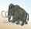
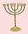
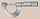

English - Kannada Dictionary
ಇಂಗ್ಲಿಷ್ - ಕನ್ನಡ ನಿಘಂಟು
- ಇಂಗ್ಲಿಷ್ ವರ್ಣಮಾಲೆಯ ಹದಿಮೂರನೆಯ ಅಕ್ಷರ.
- (ಮುದ್ರಣ) m = em.
- (ರೋಮನ್ ಅಂಕಿಯಾಗಿ) 1000.
- Master.
- (ಬಿರುದುಗಳಲ್ಲಿ) Member of.
- Monsieur.
- (ಬ್ರಿಟಿಷ್ ಪ್ರಯೋಗ) motorway.
- mega-.
- (ರಸಾಯನವಿಜ್ಞಾನ) molar.
(m. ಸಹ)
- masculine.
- male.
- married.
- (ಕ್ರಿಕೆಟ್) maiden(over).
- mile(s).
- metre(s).
- million(s).
- minute(s).
- mark(s) (ನೋಟು, ನಾಣ್ಯ).
- mare.
- milli-.
= my (m’lud).
(ಆಡುಮಾತು) = madam (yes ’m ಮೊದಲಾದವುಗಳಲ್ಲಿ).
- Master of Arts.
- (ಅಮೆರಿಕನ್ ಪ್ರಯೋಗ) Massachusetts.
(ಆಡುಮಾತು) ತಾಯಿ; ಅಮ್ಮ.
(madam ಪದದ ಸಂಕ್ಷಿಪ್ತ, ಉನ್ನತ ವರ್ಗದ ಸ್ತ್ರೀಯನ್ನು, ಮುಖ್ಯವಾಗಿ ಆಸ್ಥಾನ, ಅರಮನೆ, ಮೊದಲಾದ ಸ್ಥಳಗಳಲ್ಲಿ ರಾಣಿ ಮೊದಲಾದವರನ್ನು ಸಂಬೋಧಿಸುವ ಗೌರವದ ಒಕ್ಕಣೆ) ಶ್ರೀಮತಿಯವರೇ! ಅಮ್ಮಾ! ತಾಯಿ! ಅಮ್ಮಣ್ಣಿ! ಅವ್ವ! ಅಕ್ಕ!

(ಆಡುಮಾತು)
- ಸ್ಕಾಟ್ಲೆಂಡಿನವನು.
- (ಅಮೆರಿಕನ್ ಪ್ರಯೋಗ) (ಮುಖ್ಯವಾಗಿ ಸಂಬೋಧನೆಯಾಗಿ) ಮನುಷ್ಯ; ಮಾನವ.
- ಭೀಕರ; ಭಯಂಕರ; ಉಗ್ರ; ಘೋರ; ಕರಾಳ; ಬೀಭತ್ಸ.
- ಮೃತ್ಯು ಸೂಚಕ; ಸಾವಿನ ಕರಾಳ ಸ್ವರೂಪಕ್ಕೆ ಸಂಬಂಧಿಸಿದ.
ಮಕೇಕೋ; ಮಕೇಕನ್ ಕುಲಕ್ಕೆ ಸೇರಿದ ಏಷ್ಯಾ, ಆಹ್ರಿಕಾಗಳ ಒಂದು ಬಗೆಯ ಕಪಿ.

ಮಕ್ಯಾಡಮ್ನ; (ರಸ್ತೆಯ ವಿಷಯದಲ್ಲಿ) (ಮಕ್ಯಾಡಮ್ ಎಂಬ ಇಂಜಿನಿಯರ್ ಬಳಕೆಗೆ ತಂದ) ಒಂದೇ ಗಾತ್ರದ ಜಲ್ಲಿಕಲ್ಲುಗಳ ವರಿಸೆಗಳನ್ನು ಒಂದರ ಮೇಲೊಂದರಂತೆ ಹಾಕಿ, ಒಂದೊಂದು ವರಿಸೆಯನ್ನೂ ದಮ್ಮಸ್ಸು ಮಾಡಿ ತಯಾರಿಸಿದ.
- ಮಕ್ಯಾಡಮ್; ಮಕ್ಯಾಡಮ್ ರಸ್ತೆಗೆ ಬಳಸುವ ಜಲ್ಲಿಕಲ್ಲು ಮೊದಲಾದ ಸಾಮಗ್ರಿ.
- = tar macadam.
ಮ್ಯಾಕಡೇಮಿಯ:
- ಖಾದ್ಯ ಬೀಜಗಳನ್ನು ಬಿಡುವ, ಆಸ್ಟ್ರೇಲಿಯದ, ನಿತ್ಯಹರಿದ್ವರ್ಣದ ಮರಗಳ ಒಂದು ಕುಲ.
- ಈ ಕುಲದ ಮರ.
ಮಕ್ಯಾಡಮೀಕರಣ; ರಸ್ತೆಮಾಡಲು ಮಾಕ್ಯಾಡಮ್ ವಿಧಾನ ಬಳಸುವುದು.
ಮಕ್ಯಾಡಮೀಕರಿಸು; ಮಕ್ಯಾಡಮ್ ವಿಧಾನದಲ್ಲಿ ರಸ್ತೆ ಮಾಡು.

- ಟೊಳ್ಳುಸೇವಿಗೆ; ಕೊಳವಿ ಸೇವಿಗೆ; ಗೋಧಿಹಿಟ್ಟಿನ ಕಣಕದಿಂದ ಮಾಡಿದ ತೆಳ್ಳನೆಯ, ಉದ್ದ ಕೊಳವಿಗಳಂಥ ತಿನಿಸು, ಆಹಾರ ಪದಾರ್ಥ.
- (ಬಹುವಚನ macaronies). (ಚರಿತ್ರೆ) (ಯೂರೋಪಿನ ಅಭಿರುಚಿಗಳನ್ನು ಅನುಕರಿಸುತ್ತಿದ್ದ) ಹದಿನೆಂಟನೆಯ ಶತಮಾನದ ಬ್ರಿಟಿಷ್ ಸೊಗಸುಗಾರ, ಠೀವಿಗಾರ.
- (ಲ್ಯಾಟಿನ್ ಮತ್ತು ಇತರ) ಪರಭಾಷೆಗಳ ಶಬ್ದಗಳೂ ದೇಶೀಯ ಶಬ್ದಗಳೂ ಸೇರಿದ ಮತ್ತು ಲ್ಯಾಟಿನ್ ಮೊದಲಾದ ಪರ ಭಾಷೆಗಳ ಪ್ರತ್ಯಯ ಹಚ್ಚಿದ ವಿಡಂಬನ ಕವಿತೆಯ.
- ಕಲಬೆರಕೆಯ; ಸಂಕರ; ಮಿಶ್ರ.

(ಬಹುವಚನದಲ್ಲಿ).
- (ಲ್ಯಾಟಿನ್ ಮತ್ತು ಇತರ) ಪರಭಾಷೆಗಳ ಶಬ್ದಗಳೂ ದೇಶೀಯ ಶಬ್ದಗಳೂ ಸೇರಿದ ಮತ್ತು ಲ್ಯಾಟಿನ್ ಮೊದಲಾದ ಪರಭಾಷೆಗಳ ಪ್ರತ್ಯಯ ಹಚ್ಚಿದ ವಿಡಂಬನ ಪದ್ಯಗಳು.
- ಕಲಬೆರಕೆ ಹಾಡು; ಸಂಕರ ಕವನ; ಬೆರಕೆ ಪದ್ಯ.
ಬಾದಾಮಿ ಬಿಸ್ಕತ್ತು; ಮೊಟ್ಟೆ ಬಿಸ್ಕತ್ತು; ಬಾದಾಮಿ, ಕೋಳಿಮೊಟ್ಟೆ, ಸಕ್ಕರೆ, ಮೊದಲಾದವನ್ನು ಸೇರಿಸಿ ತಯಾರಿಸಿದ ಸಣ್ಣ ರೊಟ್ಟಿ, ಬಿಸ್ಕತ್ತು.


Maccabees (Apocrypha).
ಮೆಕಾಬಿಗಳ; ಆಂಟಿಯೋಕನ್ ಎಪಿಹೇನಸ್ ಎಂಬುವನ ದಬ್ಬಾಳಿಕೆಯಿಂದ ಜ್ಯೂಡಿಯ ಪಟ್ಟಣವನ್ನು ಕ್ರಿಸ್ತಪೂರ್ವ 170ರಲ್ಲಿ ವಿಮುಕ್ತಗೊಳಿಸಿದ ಮೆಕಾಬಿನ್ ಯೆಹೂದಿ ರಾಜಮನೆತನದ.
(ಬಹುವಚನ) ಮ್ಯಾಕಬೀಸ್; ಯೆಹೂದಿ ಚರಿತ್ರೆ ಮತ್ತು ದೇವತಾ ಶಾಸ್ತ್ರದ ನಾಲ್ಕು ಪುಸ್ತಕಗಳು.
- (ಚರಿತ್ರೆ) ಶಂಕುಗಳುಳ್ಳ ಗದೆ ಯಾ ಮುಸಲ; ಲೋಹದ ತಲೆಯೂ, ಅದರಲ್ಲಿ ಅನೇಕ ವೇಳೆ ಲೋಹದ ಮುಳ್ಳುಗಳೂ ಉಳ್ಳ ಭಾರವಾದ ದಂಡ.
- (ಕೆಲವು ದೊಡ್ಡ ಅಧಿಕಾರಿಗಳ ಮುಂದುಗಡೆ ಹೊತ್ತುಕೊಂಡು ಹೋಗುವ, ಮುಖ್ಯವಾಗಿ ಬ್ರಿಟನ್ನಿನ ಕಾಮನ್ಸ್ ಶಾಸನಸಭೆಯ ಸ್ಪೀಕರನ ಅಧಿಕಾರ ಲಾಂಛನವಾಗಿರುವ, ಇದನ್ನು ಹೋಲುವ) ಅಧಿಕಾರ ದಂಡ; ರಾಜ ದಂಡ.
- ಬ್ಯಾಗಟೆಲ್ ಎಂಬ ಆಟದಲ್ಲಿಯ ದಾಂಡು.
- = mace-bearer.
ದಂಡಧಾರಿ; ದಂಡವಾಹಕ; ಶಾಸನಸಭೆ ಮೊದಲಾದವುಗಳಲ್ಲಿ ಅಧಿಕಾರ ದಂಡವನ್ನು ಹೊತ್ತುಕೊಂಡು ಹೋಗುವ ಅಧಿಕಾರಿ.
(ಹಣ್ಣು, ತರಕಾರಿ, ಮೊದಲಾದವನ್ನು ಜೆಲ್ಲಿಯಲ್ಲಿ ಸೇರಿಸಿ ತಯಾರಿಸಿದ) ಒಂದು ಬಗೆಯ ರಸಾಯನ, ಸೀಕರಣೆ.
ದಂಡಧಾರಿ; (ಮುಖ್ಯವಾಗಿ ಸ್ಕಾಟ್ಲೆಂಡಿನಲ್ಲಿ) ನ್ಯಾಯಾಲಯದಲ್ಲಿ ಶಿಸ್ತನ್ನು ಕಾಪಾಡುವ ಅಧಿಕಾರಿ.
(ದ್ರವದಲ್ಲಿ) ನೆನೆಸಿ ಮೆತು ಮಾಡು, ಮಿದುಗೊಳಿಸು.
- ನೆನೆದು – ಮಿದುವಾಗು, ಮೆತುವಾಗು.
- ಉಪವಾಸ ಮಾಡಿ – ಕೃಶವಾಗು, ನಮೆದು ಹೋಗು.
- (ದ್ರವದಲ್ಲಿ ನೆನೆಸಿ) ಮೆತು ಮಾಡುವಿಕೆ.
- (ಉಪವಾಸದಿಂದ ಉಂಟಾಗುವ ದೇಹದ) ಕೃಶತೆ; ಕ್ಷೀಣತೆ; ನಮೆತ.
(ದ್ರವದಲ್ಲಿ) ನೆನೆಸಿ ಮೆತು ಮಾಡುವ ಸಾಧನ.
ಮಾಕ್; ಒಂದು ಕಾಯದ ವೇಗಕ್ಕೂ ಸುತ್ತಮುತ್ತಲ ವಾತಾವರಣದಲ್ಲಿನ ಶಬ್ದವೇಗಕ್ಕೂ ಇರುವ ದಾಮಾಷಾ, ಅನುಪಾತ.
Mach one (or two) ಶಬ್ದದಷ್ಟು (ಯಾ ಶಬ್ದದ ಎರಡರಷ್ಟು) ವೇಗ.
(ಆಂಗ್ಲೋ ಇಂಡಿಯನ್) ಮಚಾನು; ಮಚನು; (ಹುಲಿ ಷಿಕಾರಿ ಮೊದಲಾದವುಗಳಲ್ಲಿ ಬಳಸುವ, ಎತ್ತರದ) ಅಟ್ಟಣೆ; ಅಟ್ಟಣಿಗೆ.
- ಕಳಿಂಗ; ಕೌಟಿಲ್ಯ; ಚಾಣಕ್ಯ; ನೀತಿನಿಯಮಗಳನ್ನು ಲಕ್ಷ ಮಾಡದ ಸಂಚುಗಾರ, ತಂತ್ರಗಾರ.
- (ಕುತಂತ್ರ, ಮೋಸ, ಮೊದಲಾದವನ್ನು ನಡೆಸುವ) ಕುಟಿಲ ರಾಜಕಾರಣಿ.
- ಕುಟಿಲನೀತಿಯ; ಸಂಚಿನ; ಮೋಸದ; ಒಳತಂತ್ರದ.
- ಕುಟಿಲ ರಾಜಕಾರಣದ; ಕುಟಿಲ ರಾಜಕೀಯ ನಡೆಸುವ.
- ಕುಟಿಲ – ನೀತಿ, ವ್ಯವಹಾರ.
- ಕುಟಿಲ – ರಾಜಕಾರಣ, ರಾಜಕೀಯ; ರಾಜಕೀಯದಲ್ಲಿ ಮೋಸ, ಒಳತಂತ್ರ, ಸಂಚುಗಾರಿಕೆ.
(ವಾಸ್ತುಶಿಲ್ಪ) (ಕೆಳಗಿರುವ ದಾಳಿಕಾರರ ಮೇಲೆ ಕಲ್ಲು, ಕಾದ ಸೀಸ, ಮೊದಲಾದವನ್ನು ಸುರಿಯಲು) ಪಾಗಾರದಲ್ಲಿ ಯಾ ಪೌಳಿ ಗೋಡೆಯಲ್ಲಿ ಯಾ ನೆಲದಲ್ಲಿ ತೆರಪು, ಕಂಡಿ, ತೂತು, ಮೊದಲಾದವನ್ನು ಮಾಡು, ಒದಗಿಸು.
(ವಾಸ್ತುಶಿಲ್ಪ)
- (ಕೆಳಗಿರುವ ದಾಳಿಕಾರರ ಮೇಲೆ ಕಲ್ಲು ಮೊದಲಾದವುಗಳನ್ನು ಸುರಿಯಲು) ಪಾಗಾರದಲ್ಲಿ ಯಾ ಪೌಳಿ ಗೋಡೆಯಲ್ಲಿ ಕಂಡಿ ಮೊದಲಾದವನ್ನು ಮಾಡಿದ.
- (ಪೌಳಿ ಗೋಡೆಯ ವಿಷಯದಲ್ಲಿ) ಅಂಥ ಕಂಡಿಗಳಿರುವ, ಕಂಡಿಗಳನ್ನಿಟ್ಟ.
(ವಾಸ್ತುಶಿಲ್ಪ) (ದಾಳಿಕಾರರ ಮೇಲೆ ಕಲ್ಲು ಮೊದಲಾದವನ್ನು ಸುರಿಯಲು ಪಾಗಾರ, ಪೌಳಿ ಗೋಡೆ, ಮೊದಲಾದವುಗಳಲ್ಲಿ ಮಾಡಿರುವ) ತೂರು ತೂತು, ತೆರಪು ಯಾ ಅವುಗಳಿರುವ ಕೊತ್ತಳ.
ತಂತ್ರನಡೆಸು; ಒಳಸಂಚು ಹೂಡು; ಪಿತೂರಿ ನಡೆಸು; ಮಸಲತ್ತು ಮಾಡು.
ಒಳ ಸಂಚು; ಪಿತೂರಿ, ಮಸಲತ್ತು; ಕುತಂತ್ರ; ತಂತ್ರಗಾರಿಕೆ.
ಕುತಂತ್ರಿ; ಪಿತೂರಿಗಾರ; ಮಸಲತ್ತುಗಾರ; ಒಳಸಂಚು ಹೂಡುವವನು.
- ಯಂತ್ರ:
- ಒಂದೊಂದಕ್ಕೂ ಬೇರೆ ಬೇರೆ ಕಾರ್ಯಗಳಿರುವ ವಿವಿಧ ಭಾಗಗಳನ್ನು ಹೊಂದಿ, ಅವೆಲ್ಲವೂ ಒಟ್ಟುಗೂಡಿ ಕೆಲವು ಬಗೆಯ ಕೆಲಸಗಳನ್ನು ಮಾಡುವ ಯಾಂತ್ರಿಕ ಶಕ್ತಿ ಪ್ರಯೋಗಿಸುವ ಉಪಕರಣ, ಸಾಧನ: sewing machine ಹೊಲಿಗೆ ಯಂತ್ರ.
- ಒಂದು ನಿರ್ದಿಷ್ಟ ಬಗೆಯ ಯಂತ್ರ, ಮುಖ್ಯವಾಗಿ ವಾಹನ, ವಿದ್ಯುಚ್ಚಾಲಿತ ಯಾ ಇಲೆಕ್ಟ್ರಾನಿಕ್ ಸಾಧನ.
- ಯಾಂತ್ರಿಕ ಜೀವಿ; ಮಾನವ ಯಂತ್ರ; ಯಂತ್ರದಂತೆ ಬುದ್ಧಿ ಉಪಯೋಗಿಸದೆ ಮತ್ತು ಭಾವರಹಿತನಾಗಿ ಕೆಲಸ ಮಾಡುವವನು; ಯಂತ್ರಪ್ರಾಯನಾದವನು; ಸ್ವಲ್ಪವೂ ಕ್ರಮ ತಪ್ಪದೆ ಯಂತ್ರದಂತೆ ನಡೆಯುವವನು.
- (ಯಂತ್ರಶಾಸ್ತ್ರ) ಯಂತ್ರ; ಬಲವನ್ನು ಒಂದೆಡೆಯಿಂದ ಇನ್ನೊಂದೆಡೆಗೆ ವರ್ಗಾಯಿಸುವ ಯಾ ಅದರ ಉಪಯೋಗವನ್ನು ನಿರ್ದೇಶಿಸುವ ಸಾಧನ: simple machine ಸರಳ ಯಂತ್ರ; ಭಾಗಗಳಿರದ ಯಂತ್ರ, ಉದಾಹರಣೆಗೆ ಸನ್ನೆಕೋಲು.
- (ಒಂದು ಸಂಸ್ಥೆ, ರಾಜಕೀಯ ಪಂಗಡ, ಮೊದಲಾದವುಗಳ) ನಿಯಂತ್ರಕ ವ್ಯವಸ್ಥೆ; ಆಡಳಿತ ಯಂತ್ರ: the party machine ಪಕ್ಷಯಂತ್ರ ಪಕ್ಷ ವ್ಯವಸ್ಥೆ.
(ಮುಖ್ಯವಾಗಿ ಹೊಲಿಗೆಯ ಮತ್ತು ಮುದ್ರಣದ ವಿಷಯದಲ್ಲಿ) ಯಂತ್ರದಿಂದ – ಮಾಡು, ತಯಾರಿಸು, ಪರಿಷ್ಕರಿಸು, ಸಿದ್ಧಗೊಳಿಸು, ನಡೆಸು.
- ಯಂತ್ರವನ್ನು ಬಳಸು.
- ಯಂತ್ರ ಬಳಕೆಗೆ ಒಳಗಾಗು: brass machines easily ಹಿತ್ತಾಳೆ ಸುಲಭವಾಗಿ ಯಂತ್ರ ಬಳಕೆಗೆ, ಪ್ರಯೋಗಕ್ಕೆ ಒಳಪಡುತ್ತದೆ.
ಮಷೀನ್ಗನ್; ಯಂತ್ರ ಫಿರಂಗಿ; ದೃಢಪೀಠದ ಮೇಲೆ ಸ್ಥಾಪಿತವಾಗಿದ್ದು, ಯಾಂತ್ರಿಕವಾಗಿ ಚಾಲೂಮಾಡಿ ಎಡೆಬಿಡದೆ ಗುಂಡು ಹಾರಿಸುವ ಫಿರಂಗಿ.
ಮಷೀನ್ಗನ್ನಿಂದ ಯಾ ಯಂತ್ರಫಿರಂಗಿಯಿಂದ – ಉಡಾಯಿಸು, ಹೊಡೆ.
ಮಷೀನ್ಗನ್ ಚಾಲಕ; ಮಷೀನ್ಗನ್ನಿಂದ ಗುಂಡು ಹಾರಿಸುವವನು.
ಯಂತ್ರ ಭಾಷೆ; ಒಂದು ನಿರ್ದಿಷ್ಟವಾದ ಕಂಪ್ಯೂಟರು ಕೆಲಸ ಮಾಡಲು ಅದಕ್ಕೆ ಒದಗಿಸುವ ಸಂಕೇತ ಭಾಷೆ; ಒಂದು ನಿರ್ದಿಷ್ಟ ಗಣಕಯಂತ್ರವು ನೇರವಾಗಿ ಪ್ರತಿಕ್ರಿಯೆ ತೋರಬಹುದಾದ ಭಾಷೆ.
(ಕೆಲವು ಸಲ ನಿಂದಾರ್ಥದಲ್ಲಿ) ಯಂತ್ರನಿರ್ಮಿತ.
ಯಂತ್ರವಾಚನೀಯ; ಕಂಪ್ಯೂಟರು ಓದಿ ಸಂಸ್ಕರಿಸಬಹುದಾದ.
- ಯಂತ್ರ ಸಾಧನಗಳು; ಯಂತ್ರೋಪಕರಣಗಳು.
- ಯಂತ್ರದ ಘಟಕಗಳು, ಅಂಗಗಳು.
- (ಯಾವುದೇ ಕ್ರಿಯೆಯ) ಕಾರ್ಯ ತಂತ್ರ; ಕ್ರಿಯಾವಿಧಾನ.
- (ಪರಿಣಾಮ ಸಾಧಿಸಲೆಂದು ಒಂದು ಸಾಹಿತ್ಯ ಕೃತಿಯಲ್ಲಿ ಬಳಸುವ, ಮುಖ್ಯವಾಗಿ ಅಲೌಕಿಕ ಪಾತ್ರಗಳು, ಘಟನೆಗಳು, ಮೊದಲಾದ) ತಂತ್ರಗಳು.
- ವ್ಯವಸ್ಥಿತವಾದ ಯೋಜನೆ, ಏರ್ಪಾಟು.
- ಸಾಧನ; ಸಾಧನೋಪಾಯ: the machinery for decision making ತೀರ್ಮಾನ ಕೈಗೊಳ್ಳಲು ಬೇಕಾದ ಸಾಧನೋಪಾಯ.
ಯಂತ್ರ ಸಾಧನ; ಯಂತ್ರೋಪಕರಣ; ಯಾಂತ್ರಿಕ ಹತ್ಯಾರು; ಯಂತ್ರ ಸಲಕರಣೆ; ಲೋಹ, ಮರ, ಮೊದಲಾದವುಗಳ ವಸ್ತುಗಳನ್ನು ತಯಾರಿಸಲು ಬಳಸುವ ಯಾಂತ್ರಿಕ ಸಾಧನ.
- ಯಂತ್ರ ತಯಾರಿಕೆಯ; ಯಂತ್ರದಿಂದ ತಯಾರಿಸಿದ; ಯಂತ್ರೋಪಕರಣದಿಂದ ರೂಪಿಸಿದ, ಆಕಾರ ಕೊಟ್ಟ.
- (ಕಲಾಕೃತಿ, ಕಲಾ ಪ್ರದರ್ಶನ, ಮೊದಲಾದವುಗಳ ವಿಷಯದಲ್ಲಿ)
- ಅತಿ ಕರಾರುವಾಕ್ಕಾದ.
- ಬಹಳ ಚಾಕಚಕ್ಯತೆಯ.
- ಯಂತ್ರಶಿಲ್ಪಿ; ಯಂತ್ರಕಾರ; ಯಂತ್ರ ತಯಾರಿಸುವವನು.
- ಯಂತ್ರಚಾಲಕ; ಯಂತ್ರ ನಡೆಸುವವನು; (ಮುಖ್ಯವಾಗಿ ಹೊಲಿಗೆ) ಯಂತ್ರದಲ್ಲಿ ಕೆಲಸ ಮಾಡುವವನು.
- ಪುಂಸ್ತ ಪ್ರದರ್ಶನ; ಪುರುಷತ್ವ ಪ್ರದರ್ಶನ.
- ಪುರುಷ ತ್ವಾತಿರೇಕ; ತನ್ನ ಗಂಡುತನವನ್ನು ಅತಿಯಾಗಿ ತೋರಿಸುವುದು, ಪ್ರದರ್ಶಿಸುವುದು.
ಮ್ಯಾಕ್ ಮೀಟರ್; ಮ್ಯಾಕ್ ಸಂಖ್ಯೆಯಲ್ಲಿ ವಾಯುವೇಗವನ್ನು ಸೂಚಿಸುವ ಉಪಕರಣ.
ಪುಂಸ್ತ್ವ ಪ್ರದರ್ಶಕ; ಪುರುಷತ್ವ ಪ್ರದರ್ಶಕ; ಗಂಡುತನವನ್ನು ಅತಿಯಾಗಿ ಪ್ರದರ್ಶಿಸುವ.

- ಪುಂಸ್ತ್ವ ಪ್ರದರ್ಶಕ; ಗಂಡಸುತನವನ್ನು ಪ್ರದರ್ಶಿಸುವವ.
- = machismo.
ಶಕ್ತಿ ರಾಜಕೀಯ; ಶಕ್ತಿ, ಬಲ ಯಾ ಪ್ರಭಾವವನ್ನು ಆಧರಿಸಿದ ರಾಜಕೀಯ ಕ್ರಿಯೆ, ಚಟುವಟಿಕೆ.

(ಆಡುಮಾತು) mackintosh ಎಂಬುದರ ಸಂಕ್ಷಿಪ್ತ.
ಮ್ಯಾಕರಲ್; ಬಂಗಡೆ ಮೀನು; ಬೇಸಗೆಯಲ್ಲಿ ಮೊಟ್ಟೆ ಇಡಲು ಹಿಂಡುಹಿಂಡಾಗಿ ದಡದ ಬಳಿಗೆ ಬರುವ, ಆಹಾರಯೋಗ್ಯವಾದ, ಉತ್ತರ ಅಟ್ಲಾಂಟಿಕ್ ಸಾಗರದ ಒಂದು ಬಗೆಯ ಕಡಲ ಮೀನು.
- mackerel breeze ಮ್ಯಾಕರಲ್ ಗಾಳಿ, ಮಾರುತ; ಮ್ಯಾಕರಲ್ ಮೀನು ಹಿಡಿಯಲು ಅನುಕೂಲವಾದ ಜೋರುಗಾಳಿ.
- mackerel gale = ಪದಗುಚ್ಛ\((1)\).
- mackerel sky ಮಾಕರಲ್ ಆಕಾಶ; ಚಿಕ್ಕಚಿಕ್ಕ ಬಿಳಿಯ ಮೋಡಗಳ ಸಾಲುಗಳಿಂದ ಕೂಡಿ ಮ್ಯಾಕರಲ್ ಮೀನಿನ ಮೈಯಂತೆ ಕಾಣುವ ಆಕಾಶ.

- ಮ್ಯಾಕಿಂಟಾಷ್ ಬಟ್ಟೆ; ಉಡುಪುಗಳಿಗೆ ಬಳಸುವ, ಬಟ್ಟೆಯ ಪದರಗಳನ್ನು ರಬ್ಬರಿನಿಂದ ಅಂಟಿಸಿ, ತಯಾರಿಸಿದ, ಒಂದು ರೀತಿಯ ನೀರಿಳಿಯದ ಬಟ್ಟೆ.
- (ಬ್ರಿಟಿಷ್ ಪ್ರಯೋಗ) (ಇದರಿಂದ ಮಾಡಿದ) ನಿಲುವಂಗಿ, ಕೋಟು, ಮೊದಲಾದವು.

(ಮುದ್ರಣದಲ್ಲಿ) ಅಚ್ಚುಮಚ್ಚೆ; ಅಚ್ಚು – ಕರೆ, ಕಲೆ; ಅಚ್ಚುಮಾಡಿದ್ದರ ಮೇಲೆಯೇ ಅಚ್ಚನ್ನು ಮತ್ತೊಂದು ಸಲ ಒತ್ತಿದಾಗ ಕಾಣುವಂಥ ಕರೆ.
- ಅವಳಿ ಹರಳು; ಜೋಡಿ ಹರಳು; ಒಂದೇ ಬಗೆಯ ಎರಡು ಹರಳುಗಳು ಒಂದು ಕ್ರಮದಲ್ಲಿ ಜೋಡಿಸಿಕೊಂಡು ಬೆಳೆದಿರುವ ಸಂಯುಕ್ತ ಹರಳು.
- ಮ್ಯಾಕಲ್; ಖನಿಜದಲ್ಲಿ ಕೆಲವು ವೇಳೆ ಕಂಡುಬರುವ ಕಪ್ಪು ಮಚ್ಚೆ.
(ಹ್ರಾನ್ಸಿನ) ಮಾಕಾನ್ (ಪ್ರದೇಶದ) ಆಸುಪಾಸಿನಲ್ಲಿ ತಯಾರಾದ, ಕೆಂಪು ಯಾ ಬಿಳಿ ಬರ್ಗಂಡಿ (ಮದ್ಯ).
- (ಅಂಕಾರಕ್ಕಾಗಿ) ಹುರಿಯಿಂದ ಬಗೆಬಗೆಯ ವಿನ್ಯಾಸಗಳಲ್ಲಿ ಹೆಣೆದ ಅಲಂಕಾರದ ಅಂಚು, ಕುಚ್ಚು, ಕರೆ, ಮೊದಲಾದವು.
- ಈ ರೀತಿಯಲ್ಲಿ ಹೆಣೆಯುವ ಕಲೆ.
ಉದ್ದನೆಯ, ನಿಡು, ನೀಳ, ದೊಡ್ಡ, ಭಾರಿ – ಗಾತ್ರದ, ಪ್ರಮಾಣದ ಎಂಬರ್ಥಗಳ ಸಮಾಸ ಪೂರ್ವಪದ.
ದೀರ್ಘಾಯುಪಥ್ಯದ; ಆಯುಸ್ಸನ್ನು ವೃದ್ಧಿ ಮಾಡುವ ಸಲುವಾಗಿ ಶುದ್ಧವಾದ ತರಕಾರಿ, ‘ಪಾಲಿಷ್’ ಮಾಡದ ಅಕ್ಕಿ, ಮೊದಲಾದವುಗಳಿಂದ ತಯಾರಿಸಿದ ಆಹಾರವನ್ನು ಸೇವಿಸುವ ಯಾ ಅದಕ್ಕೆ ಸಂಬಂಧಿಸಿದ.
ದೀರ್ಘಾಯುಪಥ್ಯದ ಬಳಕೆ ಯಾ ಸಿದ್ಧಾಂತ.
‘ಕುಪ್ರೆಸೆಸ್ ಮ್ಯಾಕ್ರೋಕಾರ್ಪ’ ಕುಲಕ್ಕೆ ಸೇರಿದ, ಒಂದು ಬಗೆಯ ನಿತ್ಯಹರಿದ್ವರ್ಣದ ಮರ.
ನಿಡು ತಲೆಯ; ದೊಡ್ಡದಾದ ತಲೆಯುಳ್ಳ; ದೀರ್ಘಶಿರದ; ದೀರ್ಘಶೀರ್ಷದ.
ನಿಡುತಲೆಯಿರುವಿಕೆ; ದೊಡ್ಡದಾದ ತಲೆಯಿರುವಿಕೆ; ದೀರ್ಘಶಿರತೆ; ದೀರ್ಘಶೀರ್ಷತೆ.
- ಬ್ರಹ್ಮಾಂಡ; ವಿಶ್ವ.
- (ಬೃಹತ್ ಪ್ರಮಾಣದ ಯಾ ದೈತ್ಯ ಪ್ರಮಾಣದ) ಅಖಂಡತೆ; ಸಂಪೂರ್ಣತೆ; ಸಮಷ್ಟಿ.
- ಬ್ರಹ್ಮಾಂಡದ ಯಾ ಬ್ರಹ್ಮಾಂಡಕ್ಕೆ ಸಂಬಂಧಿಸಿದ; ವಿಶ್ವದ ಯಾ ಅದಕ್ಕೆ ಸಂಬಂಧಿಸಿದ.
- (ಬೃಹತ್ ಪ್ರಮಾಣದ) ಸಮಷ್ಟಿಯ.
- ಬ್ರಹ್ಮಾಂಡಕ್ಕೆ ಸಂಬಂಧಿಸಿದಂತೆ; ವಿಶ್ವಕ್ಕೆ ಸಂಬಂಧಿಸಿದ ರೀತಿಯಲ್ಲಿ.
- ಸಮಷ್ಟಿಗೆ ಸಂಬಂಧಿಸಿದಂತೆ.
ಮಹದಾರ್ಥಿಕ; ಬೃಹದಾರ್ಥಿಕ; ಬೃಹದರ್ಥ ಶಾಸ್ತ್ರದ, ಅದಕ್ಕೆ ಸಂಬಂಧಿಸಿದ ಯಾ ಅದನ್ನು ಆಧರಿಸಿದ.
ಬೃಹದರ್ಥಶಾಸ್ತ್ರ; ಮಹದರ್ಥಶಾಸ್ತ್ರ; ದೊಡ್ಡ ಪ್ರಮಾಣದ ಯಾ ಸಾಮಾನ್ಯವಾದ ಆರ್ಥಿಕ ಅಂಶಗಳ – ಉದಾಹರಣೆಗೆ ರಾಷ್ಟ್ರೀಯ ಉತ್ಪಾದಕತೆಯ – ಅಧ್ಯಯನ.
(ರಸಾಯನವಿಜ್ಞಾನ) ಬೃಹದಣ್ವಕ; ಮಹದಣ್ವಕ; ಬೃಹದಣುವಿನ, ಅದರಂಥ ಯಾ ಅದನ್ನೊಳಗೊಂಡ.
(ರಸಾಯನವಿಜ್ಞಾನ) ಬೃಹದಣು; ಮಹದಣು; ಹತ್ತಿಪ್ಪತ್ತು ಪರಮಾಣುಗಳಿಂದಾದ ಸಾಧಾರಣ ಗಾತ್ರದ ಅಣುಘಟಕಗಳು, ನೂರಾರು ಯಾ ಸಾವಿರಾರು ಸಂಖ್ಯೆಯಲ್ಲಿ ಒಂದರೊಡನೊಂದು ಸಂಯೋಜನೆಗೊಂಡು ರೂಪಿಸುವ (ಪ್ರೋಟೀನು, ಸ್ಟಾರ್ಚು, ಸೆಲ್ಯುಲೋಸ್ನಂಥ) ಭಾರೀ ಅಣು.
ದೀರ್ಘಚಿಹ್ನೆ; ದೀರ್ಘವನ್ನು ಯಾ ಸ್ವರಾಘಾತವನ್ನು ಸೂಚಿಸಲು ಸ್ವರದ ಮೇಲೆ ಹಾಕುವ ಅಡ್ಡಗೆರೆ (ಉದಾಹರಣೆಗೆ$= \bar{ a}$.)
ಮ್ಯಾಕ್ರೊಹೇಜ್; ಬೃಹತ್ಕಣ; ಸಾಮಾನ್ಯವಾಗಿ ಸೋಂಕು ತಗಲಿದ ತಾಣಗಳಲ್ಲಿ ಕಂಡುಬರುವ ಭಾರೀ ಗಾತ್ರದ ಬಿಳಿಯ ರಕ್ತಕಣ.
ಬೃಹತ್ ಛಾಯಾಚಿತ್ರಣ; ವಾಸ್ತವವಾಗಿ ಇರುವುದಕ್ಕಿಂತಲೂ ದೊಡ್ಡದಾಗಿರುವಂಥ ಚಿತ್ರಗಳನ್ನು ತೆಗೆಯುವ ಛಾಯಾಚಿತ್ರಣ.
ಕ್ಯಾಂಗರೂ ಸೇರಿದಂತೆ, ಮ್ಯಾಕ್ರೊಪೊಡಿಡೇ ವಂಶದ, ಆಸ್ಟೆ ಲಿಯ ಮತ್ತು ನ್ಯೂಗಿನಿಗಳಲ್ಲಿನ, ಒಂದು ಸಸ್ಯಾಹಾರಿ ಸಸ್ತನಿ.
ಸ್ಥೂಲಗೋಚರ; ಬರಿಯ ಕಣ್ಣಿಗೆ ಕಾಣುವ(ಷ್ಟು ದೊಡ್ಡದಾದ); ಸ್ಥೂಲದೃಷ್ಟಿಗೋಚರ.
ಸ್ಥೂಲಗೋಚರವಾಗಿ; ಬರಿಯ ಕಣ್ಣಿಗೆ ಕಾಣುವಂತೆ.
- ಸೌರ ಕಲೆ; ಸೂರ್ಯನಲ್ಲಿ ಕಾಣುವ ಕಪ್ಪುಮಚ್ಚೆ.
- ಖನಿಜಕಲೆ; ಖನಿಜಗಳಲ್ಲಿ ಕಂಡುಬರುವ ಮಚ್ಚೆ.
- (ಚರ್ಮದಲ್ಲಿನ, ಸಾಮಾನ್ಯವಾಗಿ ಶಾಶ್ವತವಾಗಿರುವ) ಕಪ್ಪುಕಲೆ; ಕರಿ – ಮಚ್ಚೆ, ಚುಕ್ಕೆ.
- = macula lutea.
ಅಕ್ಷಿಪಟದಲ್ಲಿನ ಅತ್ಯಂತ ಹೆಚ್ಚು ದೃಷ್ಟಿತೀಕ್ಷ್ಣತೆಯುಳ್ಳ ಪ್ರದೇಶ.
(ಚರ್ಮದಲ್ಲಿಯ, ಶಾಶ್ವತವಾದ) ಕಪ್ಪು ಕಲೆಯ; ಕರಿಮಚ್ಚೆಗೆ ಸಂಬಂಧಿಸಿದ.
ಕರಿಮಚ್ಚೆ, ಕಪ್ಪು ಕಲೆ – ಮಾಡುವುದು; ಮಚ್ಚೆಯಾಗಿರುವುದು; ಕಲೆಯಾಗಿರುವಿಕೆ.
- ಬುದ್ಧಿಕೆಟ್ಟ; ಮತಿಗೆಟ್ಟ; ಬುದ್ಧಿ ಸ್ಥಿಮಿತವಿಲ್ಲದ; ಹುಚ್ಚಿನ; ಉನ್ಮತ್ತ.
- (ವ್ಯಕ್ತಿ ಯಾ ನಡತೆಯ ವಿಷಯದಲ್ಲಿ) ಅವಿವೇಕದ; ಬುದ್ಧಿಗೇಡಿನ; ಹುಚ್ಚುಹುಚ್ಚಾದ.
- (ಯಾವುದೋ ಒಂದರ ವಿಷಯದಲ್ಲಿ) ಅತ್ಯಾಸಕ್ತಿಯುಳ್ಳ; ಅತ್ಯಾದರವುಳ್ಳ; ಅತ್ಯಾವೇಶಗೊಂಡ ಯಾ ಹುಚ್ಚು ಹಿಡಿದ: they are mad after her ಅವಳನ್ನು ಕಂಡರೆ ಅವರಿಗೆ ಹುಚ್ಚು (ಹಿಡಿಯುವಷ್ಟು ವ್ಯಾಮೋಹ).
- (ಆಡುಮಾತು) ಅಸಮಾಧಾನ ಹುಟ್ಟಿದ; ಬೇಸರವುಂಟಾದ; ಕಿರಿಕಿರಿಗೊಂಡ; ರೇಗಿದ: I was rather mad at missing my train ರೈಲು ತಪ್ಪಿದ್ದರಿಂದ ನನಗೆ ಬಹಳ ರೇಗಿಹೋಯಿತು.
- (ಪ್ರಾಣಿಗಳ ವಿಷಯದಲ್ಲಿ) ಹುಚ್ಚಿಗೆದ್ದ; ಹುಚ್ಚು ಹಿಡಿದ: a mad dog ಹುಚ್ಚುನಾಯಿ.
- ಅಪಾರ ಸಂತೋಷದ; ಬಲು ಖುಷಿಯಾದ; ಚೈನಿ ಮಾಡುವ; ಆನಂದೋತ್ಸಾಹದಿಂದ ಬಿರಿಯುವ: let us have a mad time ಬಲು ಮಜದಿಂದ, ಖುಷಿಯಿಂದ – ಚೈನಿ ಮಾಡೋಣ, ಕಾಲ ಕಳೆಯೋಣ.
- like mad (ಆಡುಮಾತು) ಹುಚ್ಚು ಹಿಡಿದಂತೆ; ಹುಚ್ಚುನಂತೆ; ಬಹಳ ಹುರುಪಿನಿಂದ, ಉತ್ಸಾಹದಿಂದ, ಜೋರಾಗಿ: I ran like mad ಹುಚ್ಚನಂತೆ ಓಡಿದೆ.
- mad as a hatter ಪೂರಾ ಹುಚ್ಚು ಹಿಡಿದು; ಹುಚ್ಚು ಹುಚ್ಚಾಗಿ.
- mad as a March hare.
- mad keen (ಆಡುಮಾತು) ಅತಿ ಕುತೂಹಲದ, ಉತ್ಸಾಹದ.

(ಅಮೆರಿಕನ್ ಪ್ರಯೋಗ) ಸಕರ್ಮಕ ಕ್ರಿಯಾಪದ
- ಹುಚ್ಚು ಹಿಡಿಸು; ತಲೆಕೆಡಿಸು; ಹುಚ್ಚಿಗೆಬ್ಬಿಸು.
- ಕೋಪ ಬರಿಸು; ಸಿಟ್ಟಿಗೆಬ್ಬಿಸು.
(ಪ್ರಾಚೀನ ಪ್ರಯೋಗ) ಹುಚ್ಚನಾಗು; ಹುಚ್ಚುಹುಚ್ಚಾಗಿ ವರ್ತಿಸು: the madding crowd ಹುಚ್ಚೆದ್ದ ಯಾ ಹುಚ್ಚುಹುಚ್ಚಾಗಿ ವರ್ತಿಸುವ ಜನರು, ಜನಸಂದಣಿ (ಈಗ ಸಾಮಾನ್ಯವಾಗಿ ‘ಹುಚ್ಚು ಹಿಡಿಸುವ’ ಎಂಬರ್ಥದಲ್ಲಿ ಪ್ರಯೋಗ).
- ಶ್ರೀಮತಿಯವರೇ! ಅಮ್ಮಾ! ತಾಯಿ! (ಹೆಂಗಸನ್ನು ಸಂಬೋಧಿಸುವ ಪದ).
- ಶ್ರೀಮತಿ (ಮರ್ಯಾದೆಯ ಒಕ್ಕಣೆಯಾಗಿ).
- (ಸೌಮ್ಯೋಕ್ತಿ) ವೇಶ್ಯಾಗೃಹದ ಯಜಮಾನಿ, ಒಡತಿ; ಸೂಳೆಯ ಮನೆ ನಡೆಸುವವಳು.
- (ಬ್ರಿಟಿಷ್ ಪ್ರಯೋಗ) (ಆಡುಮಾತು)
- ತಲೆಹರಟೆ ಹುಡುಗಿ.
- ದುರಹಂಕಾರದ ಹುಡುಗಿ.
- ಯುವತಿ.

- ಅವಿವೇಕದ; ಹುಚ್ಚಾಟದ; ಅವಿಚಾರಿ; ಹುಚ್ಚನಂತೆ ವರ್ತಿಸುವ.
- ದುಡುಕಿನ; ಮುಂದಾಲೋಚನೆಯಿಲ್ಲದೆ ಮಾಡಿದ, ಕೈಗೊಂಡ.
- ಹುಚ್ಚು ಹಿಡಿಸು; ಹುಚ್ಚಿಗೆಬ್ಬಿಸು.
- ರೇಗಿಸು; ಕೆರಳಿಸು.
ಹುಚ್ಚುಹಿಡಿ; ಹುಚ್ಚನಂತಾಡು; ಹುಚ್ಚನಾಗು.
- ಹುಚ್ಚು ಹಿಡಿಸುವ; ಹುಚ್ಚೆಬ್ಬಿಸುವ.
- ರೇಗಿಸುವ; ಕೆರಳಿಸುವ.
- ಹುಚ್ಚು ಹಿಡಿಸುವಂತೆ.
- ರೇಗಿಸುವಂತೆ; ಕೆರಳಿಸುವ ರೀತಿಯಲ್ಲಿ.
- ಮ್ಯಾಡರ್; ನಸು ಹಳದಿ ಹೂ ಬಿಡುವ, ಮಂಜಿಷ್ಠೆ ಬಳಗದ ಒಂದು ಬಳ್ಳಿ.
- ಅಲಿಸರಿನ್; ಮ್ಯಾಡರ್ ಬೇರಿನಿಂದ ಪಡೆದ ಯಾ ರಾಸಾಯನಿಕವಾಗಿ ತಯಾರಿಸಿದ ಒಂದು ಕೆಂಪು ವರ್ಣ ದ್ರವ್ಯ.
(ಪ್ರಾಚೀನ ಪ್ರಯೋಗ) ಹುಚ್ಚರ ವೈದ್ಯ.
- (ವ್ಯಕ್ತಿ, ವಸ್ತು, ಮೊದಲಾದವುಗಳ ವಿಷಯದಲ್ಲಿ) ಕೃತ; ನಿರ್ಮಿತ; ರಚಿತ; ರೂಪಿತ; ರಚಿಸಿದ; ಮಾಡಿದ; ರೂಪಿಸಿದ (ಮೊದಲಾದ ಅರ್ಥಗಳಲ್ಲಿ, ಸಾಮಾನ್ಯವಾಗಿ ಸಮಾಸ ಉತ್ತರ ಪದವಾಗಿ): well-made ಸುನಿರ್ಮಿತ. stoutly-made ಸ್ಥೂಲಕಾಯದ.
- ಕಲ್ಪಿತ; ಇಲ್ಲಸಲ್ಲದ; ಸುಳ್ಳಂಬಳ್ಳಿನ; ತಾನೇ ಕಟ್ಟಿದ; ಸುಳ್ಳಿನ: to tell made stories about oneself ತನ್ನ ಬಗ್ಗೆ ಇಲ್ಲಸಲ್ಲದ ಕಥೆಗಳನ್ನು ಹೇಳಿಕೊಂಡು.
- a made man ಭಾಗ್ಯಶಾಲಿ; ಅದೃಷ್ಟಶಾಲಿ; ಅದೃಷ್ಟವಂತ; ನಸೀಬುವಾನ; ಜೀವನದಲ್ಲಿ ಯಾರ ಪಾಲಿಗೆ ಏಳಿಗೆ ಕಟ್ಟಿಟ್ಟಿದೆಯೋ ಅಂಥವನು.
- have it made (ಆಡುಮಾತು) ಯಶಸ್ಸು ಖಚಿತವಾಗಿರು, ಖಾತ್ರಿಯಾಗಿರು.
- made dish ಕೂಟು; ಬೆರಸು ತಿಂಡಿ; ಕೂಟುಭಕ್ಷ ; ಅನೇಕ ಪದಾರ್ಥಗಳನ್ನು ಹಾಕಿ ಮಾಡಿದ ಭಕ್ಷ .
- made for ಚೆನ್ನಾಗಿ ಒಪ್ಪುವ: made for each other ಪರಸ್ಪರ ಚೆನ್ನಾಗಿ – ಒಪ್ಪುವ, ಹೊಂದುವ; ಅನುರೂಪವಾಗಿರುವ.
- made gravy ಕೃತಕ ಮಾಂಸಸಾರ; ಕೃತಕವಾಗಿ ತಯಾರಿಸಿದ, ಮಾಂಸದ ಸಾರ, ಮಾಂಸದ ರಸ.
- made of ರಚಿತವಾದ; (ಯಾವುದೋ ಒಂದು) ಉಳ್ಳ; ಇರುವ.
- made of money (ಆಡುಮಾತು) ತುಂಬ ಶ್ರೀಮಂತಿಕೆಯ.
- ಅಟ್ಲಾಂಟಿಕ್ ಸಾಗರದಲ್ಲಿನ ಒಂದು ದ್ವೀಪ.
- ಅಲ್ಲಿ ತಯಾರಾಗುವ ಒಂದು ಬಗೆಯ ಬಿಳಿ ವೈನು, ಮದ್ಯ.
Madeira cake ಮಡೀರ ಕೇಕ್; ಸ್ಪಂಜಿನಂತೆ ಮೆತುವಾದ, ಒಂದು ರೀತಿಯ ಕೇಕು, ಸಿಹಿತಿಂಡಿ.

ಒಂದು ಬಗೆಯ ಸಣ್ಣದಾದ ಸ್ಪಂಜ್ ಕೇಕು.
- (ಹ್ರೆಂಚ್) ಅವಿವಾಹಿತ ಸ್ತ್ರೀ; ಕನ್ಯೆ; ಕುಮಾರಿ; ಇನ್ನೂ ಮದುವೆಯಿಲ್ಲದ ಹ್ರೆಂಚ್ ಹೆಂಗಸು.
- (ಹ್ರೆಂಚ್) ಮನೆಯಲ್ಲಿ ಮಕ್ಕಳಿಗೆ ಪಾಠ ಹೇಳಿಕೊಡುವ ಹ್ರೆಂಚ್ ಶಿಕ್ಷಕಿ, ಉಪಾಧ್ಯಾಯಿನಿ.
- ಶ್ರೀಮತಿ; ಹ್ರೆಂಚ್ ಕನ್ಯೆಗೆ ಯಾ ಹೆಂಗಸಿಗೆ ಗೌರವದ ಒಕ್ಕಣೆಯಾಗಿ ಬಳಸುವ ಪದ.
- (ಪ್ರಾಚೀನ ಪ್ರಯೋಗ ಯಾ ಆಡುಮಾತು) ಹುಚ್ಚಾಸ್ಪತ್ರೆ.
- ಗೊಂದಲದ, ಗಲಾಟೆಯ, ರಂಪದ – ಪ್ರದೇಶ, ಜಾಗ.
ಮಾಡಿಯ; ಸೂರ್ಯಕಾಂತಿ ಬಳಗದ ಒಂದು ಗಿಡ.
- ಬುದ್ಧಿಕೆಟ್ಟು; ಉನ್ಮಾದದಿಂದ; ಹುಚ್ಚು ಹಿಡಿದು.
- ಆವೇಶದಿಂದ; ಅತಿ ವೇಗದಿಂದ; ರಭಸದಿಂದ; ತುಂಬಾ ಜೋರಾಗಿ; ಅತಿ ರಭಸದಿಂದ; ತರಾತುರಿಯಿಂದ; ಅತಿ ಆತುರದಲ್ಲಿ: they worked madly to fix the bridge ಸೇತುವೆಯನ್ನು ಸರಿಮಾಡಲು ಅವರು ತರಾತುರಿಯಿಂದ ಕೆಲಸ ಮಾಡಿದರು.
- ಅವಿವೇಕವಾಗಿ; ತಿಳಿಗೇಡಿತನದಿಂದ: they lived madly, wasting all their money ಅವರು ಹಣವೆಲ್ಲವನ್ನೂ ದುಂದು ಮಾಡುತ್ತಾ ಅವಿವೇಕದ ಜೀವನ ನಡೆಸಿದರು.
- ದುಡುಕಿನಿಂದ; ಹಿಂದುಮುಂದು ನೋಡದೆ.
- (ಆಡುಮಾತು)
- ತೀವ್ರವಾಗಿ; ಅತ್ಯಂತವಾಗಿ
- ಭಾವಾವೇಶದಿಂದ; ಭಾವಪೂರ್ಣವಾಗಿ.
ಹುಚ್ಚ; ತಲೆಕೆಟ್ಟವ.
- ಹುಚ್ಚು; ಉನ್ಮಾದ; ತಲೆ ಕೆಟ್ಟಿರುವುದು.
- ಅವಿವೇಕ; ತಿಳಿಗೇಡಿತನ.
- ದುಡುಕು.
- (the Madonna) ಮೇರಿ ಕನ್ಯೆ.
- ಮೇರಿ ಕನ್ಯೆಯ ಚಿತ್ರ, ಪ್ರತಿಮೆ.
madonna lily ಬಿಳಿ ಲಿಲಿ; ಶುದ್ಧ ಬಿಳಿಯ ಬಣ್ಣದ ಒಂದು ಬಗೆಯ ಲಿಲಿ ಹೂವು.
ಚೌಕಳಿಬಟ್ಟೆ; ಬಣ್ಣದ ಯಾ ಬಿಳಿಯ ಪಟ್ಟೆಗಳು, ಚೌಕಳಿಗಳು, ಮೊದಲಾದವುಗಳುಳ್ಳ ಗಟ್ಟಿಯಾದ ಹತ್ತಿಬಟ್ಟೆ.
- ತೂತು ಹವಳ; ಸರಂಧ್ರ ಪ್ರವಾಳ; ರಂಧ್ರಗಳಿರುವ ಹವಳದ ಜಾತಿ.
- (ರಂಧ್ರಗಳನ್ನು ಮಾಡುವ) ಹವಳದ ಹುಳು.
- ತೂತು ಹವಳದ; ತೂತು ಹವಳಕ್ಕೆ ಸಂಬಂಧಿಸಿದ.
- (ರಚನೆಯಲ್ಲಿ) ತೂತು ಹವಳದಂಥ.
ತೂತು ಹವಳದಂಥ; ತೂತು ಹವಳದ ರಚನೆಯುಳ್ಳ ಯಾ ಲಕ್ಷಣವುಳ್ಳ.
- ಚಿಕ್ಕ – ಪ್ರಣಯ ಕವನ, ಪ್ರೇಮಗೀತೆ; ಲಘು ಶೃಂಗಾರಗೀತೆ.
- (ಸಾಮಾನ್ಯವಾಗಿ 16ನೆ ಯಾ 17ನೆ ಶತಮಾನದ ಒಂದು ಬಗೆಯ) ಸಂವಾದ ಗೀತ; ಪಕ್ಕವಾದ್ಯಗಳಿಲ್ಲದೆ ಹಲವರು ದನಿಗೂಡಿಸಿ ಹಾಡುವ ಒಂದು ಬಗೆಯ ಸಂವಾದ ಗೀತೆ.
- ಲಘು ಶೃಂಗಾರಗೀತೆಯ ಯಾ ಅದರ ಲಕ್ಷಣಗಳುಳ್ಳ.
- (ಅನೇಕರು ಕೂಡಿ ಹಾಡುವ) ಸಂವಾದಗೀತದ ಯಾ ಅದರ ಲಕ್ಷಣಗಳುಳ್ಳ.

- ಚಿಕ್ಕ ಪ್ರಣಯ ಕವನಗಳಂಥ; ಲಘು ಶೃಂಗಾರಗೀತದಂತಿರುವ.
- (ಹಲವರು ಕೂಡಿ ಹಾಡುವ) ಸಂವಾದಗೀತದಂಥ.
- ಲಘು ಶೃಂಗಾರಗೀತಕಾರ.
- (ಹಲವರು ಕೂಡಿ ಹಾಡುವ) ಸಂವಾದಗೀತಕಾರ.
ಹುಚ್ಚಿ.
- (ಕ್ರಿಸ್ತಶಕ 1ನೇ ಶತಮಾನದ) ಹೊರೆಸ್ ಮತ್ತು ವರ್ಜಿಲ್ ಎಂಬ ಲ್ಯಾಟಿನ್ ಕವಿಗಳ ಆಶ್ರಯದಾತ.
- ಕಲಾ ಪೋಷಕ; ಸಾಹಿತ್ಯ ಪೋಷಕ; ಸಾಹಿತ್ಯ, ಕಲೆ, ಮೊದಲಾದವುಗಳಿಗೆ ಉದಾರ ಆಶ್ರಯ ಕೊಡುವವನು.
- (ನಾರ್ವೆಯ ಪಶ್ಚಿಮ ಕರಾವಳಿಯಲ್ಲಿನ) ಸಮುದ್ರದ ಸುಳಿ, ಜಲಾವರ್ತ.
- ಮಹಾಜಲಾವರ್ತ; ದೊಡ್ಡ ನೀರುಸುಳಿ.
- (ರೂಪಕವಾಗಿ) ಅವ್ಯವಸ್ಥೆ; ಅಸ್ತವ್ಯಸ್ತತೆ; ಕ್ಷೋಭೆ; ಪ್ರಕ್ಷುಬ್ಧ ಪರಿಸ್ಥಿತಿ: the maelstrom of traffic ವಾಹನ ಸಂಚಾರದ ಅಸ್ತವ್ಯಸ್ತತೆ.
- (ಪ್ರಾಚೀನ ಗ್ರೀಕರ) ಬ್ಯಾಕಸ್ ದೇವತೆಯ ಉಪಾಸಕ, ಉಪಾಸಕಿ (= Bacchante).
- ಉನ್ಮಾದ ಹತ್ತಿದ ಯಾ ಆವೇಶದಿಂದ ಕೂಡಿದ ಹೆಂಗಸು; ಆವಿಷ್ಟ ಹೆಂಗಸು.
- ಬ್ಯಾಕಸ್ ದೇವತೆಯ ಉಪಾಸಕನ, ಉಪಾಸಕಿಯ.
- ಆವೇಶದ ಯಾ ಉನ್ಮಾದ ಹತ್ತಿದ ಹೆಂಗಸಿನ.

(ಸಂಗೀತ) ಘನಗಾಂಭೀರ್ಯದಿಂದ; ಗಂಭೀರವಾಗಿ; ಗಂಭೀರ ರೀತಿಯಲ್ಲಿ.

(ಸಂಗೀತ) ಗಂಭೀರಕೃತಿ; ಘನಗಾಂಭೀರ್ಯದಿಂದ ವಾದನ ಮಾಡಬೇಕಾದ, ಹಾಡಬೇಕಾದ ಸಂಗೀತ ಕೃತಿ.
- ಶ್ರೇಷ್ಠ ಗಾಯಕ, ಗವಾಯಿ, ಬುವಾ.
- ಶ್ರೇಷ್ಠ ಸಂಗೀತಬೋಧಕ.
- ಶ್ರೇಷ್ಠ – ವಾಗ್ಗೇಯಕಾರ, ರಚನಕಾರ.
- ಉತ್ಕೃಷ್ಟ ಸಂಗೀತ ನಿರ್ದೇಶಕ.
- ಶ್ರೇಷ್ಠ ಸಂಗೀತಗಾರ ಮೊದಲಾದವರ ವಿಷಯದಲ್ಲಿಬಳಸುವ ಗೌರವದ ಒಕ್ಕಣೆ.
- ಕಲಾಭಿಜ್ಞ; ಕಲಾಪರಿಣತ; ಕಲೆಯಲ್ಲಿ ಪಾರಂಗತನಾದವನು: the maestros of poetry ಕಾವ್ಯ ಪರಿಣತರು.
(ಅಶಿಷ್ಟ) ರಕ್ಷಾಕವಚ; ಉಬ್ಬು ಅಂಗಿ; ವಿಮಾನ ಚಾಲಕನ (ಪ್ರಾಣ) ರಕ್ಷಣಾ ಕವಚ, ನೀರಿನಲ್ಲಿ ಮುಳುಗದಂತೆ ರಕ್ಷಿಸುವ, ಗಾಳಿ ಊದಿ ಉಬ್ಬಿಸಹುದಾದ ಅಂಗಿ.

ಹಿಗ್ಗಿ ಸಂಭ್ರಮಪಡು; ಸಂಭ್ರಮದಿಂದ ನಲಿದಾಡು; ಕೋಲಾಹಲಕರವಾದ ರೀತಿಯಲ್ಲಿ ಸಂಭ್ರಮಗೊಳ್ಳು.
ಮಾಹಿಯ:
- ಮೂಲತಃ ಸಿಸಿಲಿಯಲ್ಲಿದ್ದ, ಈಗ ಇಟಲಿ ಮತ್ತು ಅಮೆರಿಕಗಳಲ್ಲೂ ಇರುವ, ವ್ಯವಸ್ಥಿತವಾದ ಅಂತರರಾಷ್ಟ್ರೀಯ ಅಪರಾಧಿಗಳ ತಂಡ.
- (mafia) ರಹಸ್ಯ ಪ್ರಭಾವಿ ತಂಡ; ದುಷ್ಟ ಪ್ರಭಾವ ಬೀರುವುದೆಂದು ನಂಬಲಾಗಿರುವ ಗುಪ್ತ ತಂಡ.
ಮಾಹಿಯ ತಂಡದ ಸದಸ್ಯ.

- magnesium.
- magneto.
- magnetic.
- (ಸೈನಿಕ) ಉಗ್ರಾಣ; ಯುದ್ಧಕಾಲದಲ್ಲಿ ಸೈನ್ಯಕ್ಕೆ ಆಯುಧಗಳು, ಮದ್ದುಗುಂಡುಗಳು, ಆಹಾರ ಪದಾರ್ಥಗಳು, ಮೊದಲಾದವನ್ನು ಸಂಗ್ರಹಿಸಿಟ್ಟಿರುವ ಕೋಠಿ, ಉಗ್ರಾಣ.
- ತೋಪುಖಾನೆ; ಂದೂಕು ಮದ್ದಿನ ಯಾ ಇತರ ಸ್ಫೋಟಕ ವಸ್ತುಗಳ ಉಗ್ರಾಣ.
- ಸಂಕೀರ್ಣ ಪತ್ರಿಕೆ; ನಿಯತಕಾಲಿಕ; ಮ್ಯಾಗಜೀನ್; ಹಲವರ ಕಥೆಗಳು, ಲೇಖನಗಳನ್ನೊಳಗೊಂಡ (ಈಗ ಸಾಮಾನ್ಯವಾಗಿ ಸಚಿತ್ರವಾಗಿರುವ) ನಿಯತಕಾಲಿಕ ಬರಹಗಳ ಸಂಗ್ರಹ.
- ಮ್ಯಾಗಜೀನ್:
- ಬಂದೂಕು ಮೊದಲಾದವುಗಳಿಗೆ ಸ್ವಯಂಚಾಲಿತವಾಗಿ ಒದಗಿಸುವ ತೋಟಾಗಳನ್ನು ಇಡಲು ಇರುವ ಕೋಶ, ಗೂಡು.
- ಕ್ಯಾಮರ, ಸ್ಲೈಡ್ ಪ್ರೊಜೆಕ್ಟರು, ಮೊದಲಾದವುಗಳಿಗೆ ಹಿಲಮು ಒದಗಿಸುವ ಇಂಥದೇ ಸಾಧನ.
magazine gun ಮ್ಯಾಗಜೀನ್ ಬಂದೂಕು; ಒಳಗೆ ಜೋಡಿಸಲಾದ ಖಾನೆಯೊಳಗಿನಿಂದ ಕೋವಿಯ ನಳಿಕೆಯ ಹಿಂಭಾಗಕ್ಕೆ ಸರಿಯಾಗಿ ತೋಟಾ ತನಗೆ ತಾನೇ ಬಂದು ಕೂರುವಂತೆ ನಿಯೋಜಿಸಿರುವ ಕೋವಿ, ಬಂದೂಕು.
- ಸುಧಾರಿತ ವ್ಯಭಿಚಾರಿಣಿ; ಸಾಧ್ವಿಯಾದ ಜಾರಿಣಿ; ಸಾಧ್ವಿಯಾಗಿ ಪರಿವರ್ತನಗೊಂಡ ಜಾರಿಣಿ; ಸುಧಾರಿತ ಸೂಳೆ; ಗರತಿಯಾಗಿ ಪರಿವರ್ತಿತಳಾದ ಹಾದರಗಿತ್ತಿ.
- ಸುಧಾರಿತ ವ್ಯಭಿಚಾರಿಣಿ ಗೃಹ; ಗರತಿಯರಾಗಿ ಪರಿವರ್ತಿತರಾದ ಹಾದರಗಿತ್ತಿಯರ ಪೋಷಣಾಲಯ.

(ಪ್ರಾಕ್ತನಶಾಸ್ತ್ರ) ಮ್ಯಾಗ್ಡಲೀನಿಯನ್; (ಹ್ರಾನ್ಸಿನ ಲ ಮ್ಯಾಡೆಲಿನ್ ಎಂಬಲ್ಲಿ ದೊರೆತ ಕೊಂಬಿನ ಮತ್ತು ಮೂಳೆಗಳ ಅವಶೇಷಗಳು ಸೂಚಿಸುವ) ಅರ್ವಾಚೀನ ಪುರಾತನ ಶಿಲಾಯುಗದ ಯಾ ಆ ಶಿಲಾಯುಗಕ್ಕೆ ಸಂಬಂಧಿಸಿದ.
ಮ್ಯಾಗ್ಡಲೀನಿಯನ್ ಸಂಸ್ಕೃತಿ; ಅರ್ವಾಚೀನ ಪುರಾತನ ಶಿಲಾಯುಗದ ಸಂಸ್ಕೃತಿ.
- (ಪ್ರಾಚೀನ ಪ್ರಯೋಗ) ಮಂತ್ರವಾದಿ.
- ಪಂಡಿತ; ವಿದ್ವಾಂಸ.
ಮ್ಯಾಜಿಲ್ಯಾನಿಕ್ ಮೇಘ; ಕ್ಷೀರಪಥ ಗೆಲ್ಯಾಕ್ಸಿಗೆ ಅತ್ಯಂತ ಸಮೀಪದಲ್ಲಿ, ಖಾಗೋಳಿಕ ದಕ್ಷಿಣಧ್ರುವಕ್ಕೆ 20 ಡಿಗ್ರಿ ಕೋನದೊಳಗೆ ಇರುವ, ಬೆಳಕಿನ ಬಟ್ಟುಗಳಂತೆ ಎದ್ದುಕಾಣುವ ಎರಡು ಗೆಲ್ಯಾಕ್ಸಿಗಳಲ್ಲಿ ಒಂದು.
- ಮಜೆಂಟಾ ಬಣ್ಣ; ಕೆನ್ನೇರಿಳೆ ಬಣ್ಣ; ಇಟಲಿಯ ಮಜೆಂಟಾ ಎಂಬಲ್ಲಿ 1859ರಲ್ಲಿ ನಡೆದ ಯುದ್ಧದ ನಂತರ ಕಂಡು ಹಿಡಿಯಲಾದ, ಒಂದು ಉಜ್ವಲ ಕಡು ಕೆನ್ನೀಲಿ ವರ್ಣದ್ರವ್ಯ.
- ಕೆನ್ನೇರಿಳೆ ಬಣ್ಣದ ಅನಿಲೀನ್ ರಂಗು.
- ಮಜೆಂಟಾ ಬಣ್ಣದ; ಉಜ್ವಲ ಕಡು ಕೆನ್ನೀಲಿ ಬಣ್ಣದ; ಕೆನ್ನೇರಿಳೆ ಬಣ್ಣದ.
- ಕಡುನೀಲಿ ಬಣ್ಣ ಹಾಕಿದ.
- (ಮುಖ್ಯವಾಗಿ ಚೀಸ್ ನೊಣದ ಮತ್ತು ಬ್ಲೂಬಾಟಲ್ ಎಂಬ ನೊಣದ) ಲಾರ್ವಾ; ಮರಿಹುಳು.
- ಚಿತ್ತಭ್ರಾಂತಿಯ ವಿಚಿತ್ರ ಕಲ್ಪನೆ; ಹುಚ್ಚು ಕಲ್ಪನೆ.
maggot in one’s head (ಒಬ್ಬನ) ತಲೆಯನ್ನು ಕಾಡುವ ಹುಚ್ಚು; ತಲೆ ಹೊಕ್ಕ ಗುಂಗಿ ಹುಳ; ಮನಸ್ಸನ್ನು ಕೊರೆಯುವ ಕೀಟ.
- ಹುಳು ಹಿಡಿದ; (ಲಾರ್ವಾ) ಹುಳುಗಳಿಂದ ತುಂಬಿದ: maggoty apricots ಹುಳು ಬಿದ್ದ ಏಪ್ರಿಕಾಟ್ ಹಣ್ಣು.
- (ಮುಖ್ಯವಾಗಿ ಇಂಗ್ಲೆಂಡಿನಲ್ಲಿ ಪ್ರಯೋಗ) ಹುಚ್ಚು ಕಲ್ಪನೆಗೊಳಗಾದ; ಭ್ರಾಂತಿಹಿಡಿದ.
magus ಎಂಬ ಪದದ ಬಹುವಚನ.
‘ಮೇಜಿ’ಗಳ; (ಶಿಶು ಯೇಸು ಕ್ರಿಸ್ತನಿಗೆ ಕಾಣಿಕೆ ತಂದು ಒಪ್ಪಿಸಿದ) ಪೂರ್ವ ದೇಶದ ಮೂವರು ಜ್ಞಾನಿಗಳಿಗೆ ಸಂಬಂಧಿಸಿದ.
- ‘ಮೇಜಿ’; (ಶಿಶು ಯೇಸು ಕ್ರಿಸ್ತನಿಗೆ ಕಾಣಿಕೆ ತಂದು ಒಪ್ಪಿಸಿದ) ಪೂರ್ವದೇಶದ ಮೂವರು ಜ್ಞಾನಿಗಳಲ್ಲೊಬ್ಬ.
- = magician.
ಮೇಜಿಗಳ ಮತ, ತತ್ತ್ವ.

- ಮಂತ್ರವಿದ್ಯೆ; ಮೋಡಿ; ಮಾಟ; ಅಭಿಚಾರ; ಬೇಳುವೆ; ಭೂತ, ಪ್ರೇತ, ಮೊದಲಾದ ಆಧಿಭೌತಿಕ ಶಕ್ತಿಗಳನ್ನು ಬಳಸಿ ಘಟನೆಗಳನ್ನು ನಿಯಂತ್ರಿಸುವ ವಿದ್ಯೆ, ಕಲೆ.
- ಮ್ಯಾಜಿಕ್ಕು; ಕಣ್ಣುಕಟ್ಟು; ಯಕ್ಷಿಣಿ; ಜಾದೂ; ಇಂದ್ರಜಾಲ; ಗಾರುಡಿ ವಿದ್ಯೆ; ಕೈಚಳಕ ಮೊದಲಾದವುಗಳಿಂದ ವಿಚಿತ್ರವಾದ ಕಾರ್ಯಗಳನ್ನು ಮಾಡುವ ಕಲೆ.
- ಮೋಡಿ; ಅದ್ಭುತ ಪರಿಣಾಮ; ಅನಿರ್ವಚನೀಯ ಮೋಹಕತೆ; ಆಶ್ಚರ್ಯಕರವಾದ ಫಲಕೊಡುವ, ವಿವರಿಸಲಸಾಧ್ಯವಾದ ಯಾ ಗಮನ ಸೆಳೆಯುವ ಗುಣ, ಪ್ರಭಾವ: the magic of Kumaravyasa’s poetry ಕುಮಾರವ್ಯಾಸನ ಕಾವ್ಯದ ಮೋಡಿ.
- black magic ವಾಮಾಚಾರ; ಅಭಿಚಾರ; ಮಾಟ; ಶೂನ್ಯ; ಪಿಶಾಚಿಗಳ ಸಹಾಯದಿಂದ ನಡೆಸುವ ಕೆಡುಕು ಮಾಟ.
- natural magic ಕಣ್ಕಟ್ಟು; ಜಾದೂ; ಇಂದ್ರಜಾಲ; ಯಾವ ವ್ಯಕ್ತಿ ಶಕ್ತಿಗಳ ಸಹಾಯವೂ ಇಲ್ಲದೆ ನಡೆಸುವ ಯಕ್ಷಿಣಿ.
- white magic ದೇವತೆಗಳ ಸಹಾಯದಿಂದ ನಡೆಸುವ ಒಳ್ಳೆಯ ಮಾಟ.
- like magic ಬಹಳ ಬೇಗ; ತ್ವರಿತವಾಗಿ.
- ಮಾಂತ್ರಿಕ; ಮಾಟದ; ವಾಮಾಚಾರದ; ಆಭಿಚಾರಿಕ; ಮಂತ್ರವಿದ್ಯೆಯ.
- ಮ್ಯಾಜಿಕ್ಕಿನ; ಯಕ್ಷಿಣಿಯ; ಐಂದ್ರಜಾಲಿಕ; ಮೋಡಿ, ಮಾಟ, ಇಂದ್ರಜಾಲ, ಯಕ್ಷಿಣಿ, ಗಾರುಡಿ ವಿದ್ಯೆ, ಅಭಿಚಾರ, ಮೊದಲಾದವುಗಳ ಯಾ ಅವುಗಳಿಗೆ ಸಂಬಂಧಿಸಿದ.
- ಅದ್ಭುತವಾದ; ಅದ್ಭುತ ಪರಿಣಾಮದ.
- ಮನಮೋಹಕ; ಚೇತೋಹಾರಿ: it was the most magic moment of the day ದಿನದ ಅತ್ಯಂತ ಮನಮೋಹಕ ಗಳಿಗೆ ಅದು.
- ಮಾಟದಂಥ; ಮಂತ್ರ ಹಾಕುವಂಥ; ಮಂತ್ರ ಸದೃಶವಾದ.

ಮ್ಯಾಜಿಕ್ ಮಾಡು; ಯಕ್ಷಿಣಿ ಮಾಡು:
- ಮಂತ್ರವಿದ್ಯೆಯಿಂದ ಯಾ ಯಕ್ಷಿಣಿಯಿಂದ ಬದಲಾಯಿಸು ಯಾ ಸೃಷ್ಟಿಸು.
- ಮಂತ್ರವಿದ್ಯೆಯಿಂದಲೋ ಎಂಬಂತೆ ಯಾ ಯಕ್ಷಿಣಿಯಿಂದಲೋ ಎಂಬಂತೆ – ಬದಲಾಯಿಸು ಯಾ ಸೃಷ್ಟಿಸು.
magic away ಮಾಟದಿಂದಲೋ ಎಂಬಂತೆ – ಅದೃಶ್ಯವಾಗಿಸು, ಕಾಣಿಸದಂತೆ ಮಾಡು, ಇಲ್ಲದಂತಾಗಿಸು.
- = 2magic.
- (ಮುಖ್ಯವಾಗಿ) ಅದ್ಭುತವಾದ; ಮೋಡಿ ಹಾಕುವಂಥ; ಮರಳುಗೊಳಿಸುವಂಥ; ಮಾಟ ಬೀರಿ ಸೆಳೆಯುವ: a magical voice ಮೋಡಿ ದನಿ; ಮೋಹಕ ಕಂಠ.
- ಮಾಂತ್ರಿಕವಾಗಿ; ಮಂತ್ರವಿದ್ಯೆಯಿಂದ; ಆಭಿಚಾರಿಕವಾಗಿ; ವಾಮಾಚಾರದಿಂದ.
- ಮೋಡಿಯಿಂದ; ಗಾರುಡಿತನದಿಂದ.
- ಅದ್ಭುತವಾಗಿ; ಅದ್ಭುತ ಶಕ್ತಿಯಿಂದ.
- ಮನಮೋಹಕವಾಗಿ; ಚಿತ್ತಾಕರ್ಷಕವಾದ ರೀತಿಯಲ್ಲಿ.
- ಮಾಟ ಬೀರುವಂತೆ; ಮಾಂತ್ರಿಕವೋ ಎನ್ನುವಂತೆ; ಮರಳುಗೊಳಿಸುವಂತೆ.
ಮಾಯಾ – ಹಾಸು, ಜಮಖಾನೆ; ಅದರ ಮೇಲೆ ಕುಳಿತವನನ್ನು ಅವನಿಗೆ ಬೇಕಾದಲ್ಲಿಗೆ ಒಯ್ಯಬಲ್ಲದೆಂದು ನಂಬಲಾದ ಕಾಲ್ಪನಿಕ ಜಮಖಾನೆ.
ಮಾಯಾನೇತ್ರ; ಮಾಯಾಕ್ಷಿ:
- ರೇಡಿಯೋ ಶ್ರುತಿ ಮಾಡುವಾಗ ಅತ್ಯುತ್ಕೃಷ್ಟ ಪ್ರತಿಕ್ರಿಯೆ ಸೂಚಿಸಲು ಬಳಸುವ ಕ್ಯಾತೋಡ್ ಕಿರಣದ ನಳಿಕೆ.
- ಪತ್ತೆ ಹಚ್ಚುವುದು, ಅಳತೆ ಮಾಡುವುದು, ಮೊದಲಾದ ಉಪಕರಣಗಳಲ್ಲಿ ಬಳಸುವ ದ್ಯುತಿ ವಿದ್ಯುತ್ ಸಾಧನ.
- ಮಾಂತ್ರಿಕ; ಮಂತ್ರವಾದಿ; ಮಾಟಗಾರ.
- ಗಾರುಡಿಗ; ಐಂದ್ರಜಾಲಿಕ; ಜಾದುಗಾರ; ಯಕ್ಷಿಣಿಗಾರ.
- (ರೂಪಕವಾಗಿ) (ಹಸ್ತಕೌಶಲ, ಕಲಾಕುಶಲತೆ, ಮೊದಲಾದವುಗಳಿಂದ) ಮೋಹಗೊಳಿಸುವವನು: authors are word magicians ಸಾಹಿತಿಗಳು ಶಬ್ದಗಾರುಡಿಗರು.
ಮಾಯಾ – ಲಾಂದ್ರ ಯಾ ದೀಪ; ಪಾರದರ್ಶಕ ಸ್ಲೈಡುಗಳಲ್ಲಿರುವ ಚಿತ್ರಗಳನ್ನು ತೆರೆಯ ಮೇಲೆ ಬೀಳಿಸುವ ಒಂದು ಪ್ರೊಜೆಕ್ಟರು, ಪ್ರಕ್ಷೇಪಕ.
ಮಾಯಾದರ್ಪಣ, ಜಾದೂ ಕನ್ನಡಿ; ಭವಿಷ್ಯದ ಯಾ ದೂರದ ದೃಶ್ಯಗಳನ್ನು ಪ್ರೇಕ್ಷಕನು ನೋಡಹುದೆನ್ನಲಾದ ಕನ್ನಡಿ.
ಮಾಯಾ ಅಣಬೆ; ಸಿಲಸೈಬಿನ್ (psilocybin) ಎಂಬ ಆಲ್ಕಲಾಯ್ಡನ್ನು ಕೊಡುವ ಒಂದು ಬಗೆಯ ಅಣಬೆ.
megilp ಪದದ ರೂಪಾಂತರ.
- ಮ್ಯಾಜಿನೋ ರೇಖೆ; ಎರಡನೆಯ ಮಹಾ ಯುದ್ಧಕ್ಕೆ ಮುಂಚೆ ಹ್ರಾನ್ಸ್ ಮತ್ತು ಜರ್ಮನಿ ದೇಶಗಳ ನಡುವಣ ಗಡಿಯ ಉದ್ದಕ್ಕೂ ನಿರ್ಮಿಸಿದ್ದ ಶಸ್ತ್ರಸಜ್ಜಿತ ಕೋಟೆ ಕೊತ್ತಳಗಳ ಪಂಕ್ತಿ
- ರಕ್ಷಣಾಪಂಕ್ತಿ; ತಮ್ಮನ್ನು ರಕ್ಷಿಸುತ್ತದೆ ಎಂದು ಕುರುಡು ಕುರುಡಾಗಿ ನಂಬಿರುವ ರಕ್ಷಣಾ ಸೈನಿಕ ಠಾಣೆಗಳ ಸಾಲು.
- ಮ್ಯಾಜಿಸ್ಟ್ರೇಟನ; ನ್ಯಾಯಾಧಿಕಾರಿಯ; ದಂಡಾಧಿಕಾರಿಯ.
- ಮ್ಯಾಜಿಸ್ಟ್ರೇಟನು ನಡೆಸುವ; ನ್ಯಾಯಾಧಿಕಾರಿ ನಡೆಸುವ.
- ಅಧಿಕಾರಯುಕ್ತ; ಆಧಿಕಾರಿಕ; ಅಧಿಕೃತ.
- ದರ್ಪದಿಂದ ಕೂಡಿದ; ಜಬರದಸ್ತಿನ: in a magisterial tone of command ಆಜ್ಞೆಯ ರೀತಿಯ ದರ್ಪದ ದನಿಯಲ್ಲಿ.
- (ಅಭಿಪ್ರಾಯಗಳ ವಿಷಯದಲ್ಲಿ) ಪ್ರಮಾಣಪೂರ್ವಕ; ಪ್ರಮಾಣಯುಕ್ತ; ಆಧಾರಪೂರ್ವಕ.
- ಅಧಿಕಾರಯುತವಾಗಿ; ಅಧಿಕಾರವಾಣಿಯಲ್ಲಿ.
- ದರ್ಪದಿಂದ; ಜಬರದಸ್ತಿನಿಂದ; ದಬ್ಬಾಳಿಕೆಯ ದನಿಯಲ್ಲಿ .
- ನ್ಯಾಯಾಧಿಕಾರಿಯ ಸ್ಥಾನದಲ್ಲಿ; ನ್ಯಾಯಾಧೀಶನ ಅಧಿಕಾರದಿಂದ.
(ರೋಮನ್ ಕ್ಯಾಥೊಲಿಕ್ ಚರ್ಚು) (ಬಿಷಪ್ ಯಾ ಪೋಪನ) ಅಧಿಕೃತ ಉಪದೇಶ, ಬೋಧೆ.
- ನ್ಯಾಯಾಧಿಪತಿಯ ಯಾ ಮ್ಯಾಜಿಸ್ಟ್ರೇಟನ – ಹುದ್ದೆ, ಪದವಿ, ಅಧಿಕಾರ.
- (ಸಾಮೂಹಿಕವಾಗಿ) ಮ್ಯಾಜಿಸ್ಟ್ರೇಟರು(ಗಳು); ನ್ಯಾಯಾಧೀಶರು(ಗಳು).
- ಮ್ಯಾಜಿಸ್ಟ್ರೇಟರ ಅಧಿಕಾರಕ್ಕೆ ಒಳಪಟ್ಟ ಜಿಲ್ಲೆ, ಪ್ರಾಂತ, ವಿಭಾಗ.
- ಅಧಿಕಾರಿಯ; ಯಜಮಾನನ.
- ಅಧಿಕಾರಿಗೆ, ಯಜಮಾನನಿಗೆ ಸಂಬಂಧಿಸಿದ: magistral staff ಅಧಿಕಾರವರ್ಗ.
- (ಔಷಧಶಾಸ್ತ್ರ) ಸ್ವಕಲ್ಪಿತ; ಸ್ವಂತ ತಯಾರಿಸಿದ; ಪುಸ್ತಕದಲ್ಲಿರದ ಔಷಧದ ಪ್ರಯೋಗವನ್ನು ಒಂದು ನಿರ್ದಿಷ್ಟ ರೋಗಕ್ಕಾಗಿ ವೈದ್ಯನು ಕಲ್ಪಿಸುವ, ತಯಾರಿಸುವ.
- ನ್ಯಾಯಾಧಿಪತಿ; ಮ್ಯಾಜಿಸ್ಟ್ರೇಟು.
- ಶಾಂತಿ (ಪಾಲಕ) ನ್ಯಾಯಾಧೀಶ; ಕೌಂಟಿ ಮೊದಲಾದವುಗಳಲ್ಲಿ ಶಾಂತಿಪಾಲನೆಗಾಗಿ ನೇಮಕಗೊಂಡ ನ್ಯಾಯವಾದಿಯಲ್ಲದ ನ್ಯಾಯಾಧಿಪತಿ, ಮ್ಯಾಜಿಸ್ಟ್ರೇಟು.
- ಮ್ಯಾಜಿಸ್ಟ್ರೇಟು; ಕಾನೂನನ್ನು ಜಾರಿಗೊಳಿಸುವ ಸಿವಿಲ್ ಅಧಿಕಾರಿ.
- ನ್ಯಾಯಾಧಿಕಾರಿಯ ಯಾ ಮ್ಯಾಜಿಸ್ಟ್ರೇಟನ – ಅಧಿಕಾರ, ಹುದ್ದೆ, ಸ್ಥಾನ.
- ನ್ಯಾಯಾಧಿಕಾರಿಯ ಅಧಿಕಾರಾವಧಿ.

ಮ್ಯಾಗಲ್ಮೋಸಿಯನ್; (ಡೆನ್ಮಾರ್ಕಿನ ಮೆಗಲ್ ಮೋಸ್ ಎಂಬಲ್ಲಿ ದೊರೆತ ವಸ್ತುಗಳು ಸೂಚಿಸುವ) ಪುರಾತನ ಯೂರೋಪಿನ ಮೆಸೊಲಿಥಿಕ್ ಸಂಸ್ಕೃತಿಯ ಯಾ ಸಂಸ್ಕೃತಿಗೆ ಸೇರಿದ.
ಮ್ಯಾಗಲ್ಮೋಸಿಯನ್; (ಡೆನ್ಮಾರ್ಕಿನ ಮೆಗಲ್ ಮೋಸ್ ಎಂಬಲ್ಲಿ ದೊರೆತ, ಮೂಳೆಯ ಮತ್ತು ಕಲ್ಲಿನ ಉಪಕರಣಗಳು ಸೂಚಿಸುವ) ಪುರಾತನ ಯೂರೋಪಿನ ಮೆಸೂಲಿಥಿಕ್ ಸಂಸ್ಕೃತಿ.
(ಸಾಮಾನ್ಯವಾಗಿ ವಿಶೇಷಣವಾಗಿ ಪ್ರಯೋಗ) ಮ್ಯಾಗ್ಲೆವ್; ಕಾಂತಕ್ಷೇತ್ರದ ಪ್ರಭಾವದಿಂದ ರೈಲುಜಾಡುಗಳ ಮೇಲೆ ಸ್ವಲ್ಪ ಎತ್ತರದಲ್ಲಿ ರೈಲು ಸಾಗುವಂತೆ ಏರ್ಪಡಿಸುವ ವ್ಯವಸ್ಥೆ (magnetic levitation ಎಂಬುದರ ಹ್ರಸ್ವರೂಪ).

ಮ್ಯಾಗ್ಮ:
- ಖನಿಜ ಪದಾರ್ಥಗಳ ಯಾ ಕಾರ್ಬನಿಕ ಪದಾರ್ಥಗಳ ಚರಟದಂತಿರುವ ಮಿಶ್ರಣ.
- ಶಿಲಾಪಾಕ; ಶಿಲಾದ್ರವ; ಶಿಲಾರಸ; ಆರಿದ ಮೇಲೆ ಅಗ್ನಿಶಿಲೆಯಾಗಿ ಮಾರ್ಪಡುವ, ಶಿಲೆಯ ದ್ರವ ಯಾ ಅರೆದ್ರವ.

ಮ್ಯಾಗ್ಮದ ಯಾ ಅದಕ್ಕೆ ಸಂಬಂಧಿಸಿದ ಯಾ ಅದರಿಂದ ಜನ್ಯವಾದ:
- ಖನಿಜ ಪದಾರ್ಥಗಳ ಯಾ ಕಾರ್ಬನಿಕ ಪದಾರ್ಥಗಳ ಚರಟದಂತಿರುವ ಮಿಶ್ರಣದ ಯಾ ಅದಕ್ಕೆ ಸಂಬಂಧಿಸಿದ ಯಾ ಅದರಿಂದಾದ.
- ಶಿಲಾಪಾಕದ, ಶಿಲಾರಸದ ಯಾ ಅದಕ್ಕೆ ಸಂಬಂಧಿಸಿದ.

- ಮ್ಯಾಗ್ನಕಾರ್ಟ (ಎಂಬ ಮಹಾಸ್ವಾತಂತ್ರ್ಯ ಶಾಸನ); (1215ರಲ್ಲಿ ಇಂಗ್ಲೆಂಡಿನ ಜಾನ್ ದೊರೆಯಿಂದ ಇಂಗ್ಲಿಷ್ ಪ್ರಜೆಗಳು ಪಡೆದುಕೊಂಡ) ವೈಯಕ್ತಿಕ ಮತ್ತು ರಾಜಕೀಯ ಸ್ವಾತಂತ್ರ್ಯದ ಮಹಾಸನ್ನದು.
- ಮ್ಯಾಗ್ನಕಾರ್ಟದಂಥ ಯಾವುದೇ ಹಕ್ಕುಗಳ ದಾಖಲೆ , ಸನ್ನದು, ಶಾಸನ.
ಮ್ಯಾಗ್ನೇಲಿಯಮ್; ಹಗುರವಾದ ಆದರೆ ದೃಢವಾದ, ಮೆಗ್ನೀಸಿಯಂ ಅಲ್ಯೂಮಿನಿಯಮ್ ಮಿಶ್ರ ಲೋಹ.
ಹೃದಯವೈಶಾಲ್ಯ; ದೊಡ್ಡತನ; ಉದಾತ್ತತೆ; ಉದಾರ ಮನಸ್ಕತೆ.
ದೊಡ್ಡ ಮನಸ್ಸಿನ; ಉದಾತ್ತ; ಉದಾರ ಹೃದಯದ; ಭಾವಗಳಲ್ಲಾಗಲಿ ನಡತೆಯಲ್ಲಾಗಲಿ ಅಲ್ಪತೆಯಿಂದ ಕೂಡಿರದ, ಸಂಕುಚಿತವಾಗಿರದ.
ದೊಡ್ಡ ಮನಸ್ಸಿನಿಂದ; ಉದಾತ್ತವಾಗಿ; ಉದಾರ ಹೃದಯದಿಂದ; ಅಲ್ಪತೆಯಿಲ್ಲದೆ.
- ದೊಡ್ಡ ಮನುಷ್ಯ; ಪ್ರತಿಷ್ಠಿತ ವ್ಯಕ್ತಿ; ದೊಡ್ಡ ಕುಳ; ಭಾರಿ ಕುಳ.
- ಹಣವಂತ; ಧನಿಕ.
- ಪ್ರಭಾವೀ ವ್ಯಕ್ತಿ; ಹಣದ ಯಾ ಸ್ಥಾನದ ದೆಸೆಯಿಂದ ಪ್ರಭಾವ ಬೀರಬಲ್ಲ ವ್ಯಕ್ತಿ.
- ಮಹೋದ್ಯಮಿ; ಭಾರಿ ಉದ್ಯಮಿ; ದೊಡ್ಡ ಕೈಗಾರಿಕೆಯ ಯಾ ಇತರ ದೊಡ್ಡ ಉದ್ಯಮದ ಯಜಮಾನ: shipping magnate ಭಾರಿ ನೌಕೋದ್ಯಮಿ.
- (ಮುಖ್ಯವಾಗಿ) ಭಾರಿ ವ್ಯಾಪಾರಿ; ದೊಡ್ಡ ವ್ಯಾಪಾರಗಾರ: cotton magnate ಭಾರಿ ಹತ್ತಿ ವ್ಯಾಪಾರಿ.
(ರಸಾಯನವಿಜ್ಞಾನ) ಮ್ಯಾಗ್ನೀಸಿಯ:
- ಮ್ಯಾಗ್ನೀಸಿಯಮ್ ಆಕ್ಸೆ ಡ್.
- ಆಮ್ಲನಾಶಕವಾಗಿ ಬಳಸುವ ಮ್ಯಾಗ್ನೀಸಿಯಮ್ ಕಾರ್ಬೊನೇಟಿನ ಬಿಳಿ ಪುಡಿ.
ಮ್ಯಾಗ್ನೀಸಿಯ ಉಳ್ಳ; ಮ್ಯಾಗ್ನೀಸಿಯದ ಯಾ ಅದಕ್ಕೆ ಸಂಬಂಧಿಸಿದ.
(ಭೂವಿಜ್ಞಾನ) ಮ್ಯಾಗ್ನಸೈಟ್; ಮೆಗ್ನೀಸಿಯಮ್ ಕಾರ್ಬೊನೇಟ್ ಸಂಯೋಜನೆಯುಳ್ಳ ಬಿಳಿಯ ಯಾ ಬೂದು ಬಣ್ಣದ ಖನಿಜ.
(ರಸಾಯನವಿಜ್ಞಾನ) ಮೆಗ್ನೀಸಿಯಮ್; ಪರಮಾಣು ಸಂಖ್ಯೆ 12, ಪರಮಾಣು ತೂಕ 24 ಉಳ್ಳ, ಹಗುರವಾದ, ಬಿಳಿಯ, ದ್ವಿವೇಲೆನ್ಸೀಯ ಲೋಹ, ಸಂಕೇತ Mg.
ಮೆಗ್ನೀಸಿಯಂ ಜ್ವಾಲೆ; ಮೆಗ್ನೀಸಿಯಮ್ ಉರಿದಾಗ ಬರುವ, ಕಣ್ಣು ಕೋರೈಸುವ ಬಿಳಿಯ ಜ್ವಾಲೆ.
- ಸೂಜಿಗಲ್ಲು; ಅಯಸ್ಕಾಂತ; ಕಾಂತ; (ಲೋಹ) ಚುಂಬಕ:
- ಕಬ್ಬಿಣವನ್ನು ಆಕರ್ಷಿಸುವ, ತೂಗುಬಿಟ್ಟಾಗ ಉತ್ತರ ದಕ್ಷಿಣ ದಿಕ್ಕಿಗೆ ತಿರುಗುವ, ನೈಸರ್ಗಿಕ ಕಬ್ಬಿಣದ ಅದಿರು.
- ಮತ್ತೊಂದು ಅಯಸ್ಕಾಂತದ ಪ್ರೇರಣೆಯಿಂದಲೋ ವಿದ್ಯುತ್ಪ್ರವಾಹದಿಂದಲೋ ಆ ಗುಣವನ್ನು ಪಡೆದಿರುವ ಕಬ್ಬಿಣದ ತುಂಡು.
- = lodestone.
- (ರೂಪಕವಾಗಿ) ಆಕರ್ಷಕ; (ಸೂಜಿಗಲ್ಲಿನಂತೆ) ಆಕರ್ಷಿಸುವ ವಸ್ತು ಯಾ ವ್ಯಕ್ತಿ.
- bar magnet ಪಟ್ಟಿ ಅಯಸ್ಕಾಂತ; ಉದ್ದನೆಯ ಪಟ್ಟಿಯ ರೂಪದಲ್ಲಿರುವ ಸೂಜಿಗಲ್ಲು.
- horseshoe magnet ಕುದುರೆ ಲಾಳ ಅಯಸ್ಕಾಂತ; ಕುದುರೆ ಲಾಳದ ಆಕಾರದಲ್ಲಿರುವ ಅಯಸ್ಕಾಂತ.

- ಕಾಂತೀಯ; ಸೂಜಿಗಲ್ಲಿನ; ಅಯಸ್ಕಾಂತದ ಗುಣಲಕ್ಷಣಗಳುಳ್ಳ.
- ಕಾಂತಜನಕ; ಕಾಂತಜನ್ಯ; ಕಾಂತಪ್ರೇರಿತ.
- ಕಾಂತೀಯ:
- ಕಾಂತಗುಣವನ್ನು ಪಡೆಯಬಲ್ಲ.
- ಅಯಸ್ಕಾಂತದಿಂದ ಆಕರ್ಷಿತವಾಗುವ.
- (ರೂಪಕವಾಗಿ) ಅತ್ಯಾಕರ್ಷಕ; ಬಲವಾಗಿ ಮನಸೆಳೆಯುವ; ಮೋಹಕವಾದ: a magnetic personality ಮೋಹಕ ವ್ಯಕ್ತಿತ್ವ.
ಕಾಂತೀಯವಾಗಿ; ಕಾಂತೀಯ ರೀತಿಯಲ್ಲಿ
(ಕಂಪ್ಯೂಟರ್) ಕಾಂತೀಯ ಬಿಲ್ಲೆ; ಹಲವಾರು ವರ್ತುಲವಾದ ತಟ್ಟೆಗಳಿದ್ದು ಪ್ರತಿಯೊಂದರಲ್ಲೂ ಎರಡೂ ಕಡೆ ಕಾಂತೀಯ ವಸ್ತುವನ್ನು ಲೇಪಿಸಿರುವ, ದತ್ತಾಂಶಗಳನ್ನು ಸಂಗ್ರಹಿಸಲು ಬಳಸುವ ಬಿಲ್ಲೆ, ಸಾಧನ.
ಕಾಂತೀಯ ವಿಷುವದ್ರೇಖೆ; ಭೌಗೋಳಿಕ ವಿಷುವದ್ರೇಖೆಯ ಬಳಿಯೇ ಇರುವ, ಕಾಂತಸೂಚಿಯ ನಮನ ಸೊನ್ನೆ ಇರುವ, ಕಾಲ್ಪನಿಕ ರೇಖೆ.
ಕಾಂತಕ್ಷೇತ್ರ; ಕಾಂತಗಳ ಸುತ್ತ ಯಾ ಕಾಂತೀಯ ಪದಾರ್ಥಗಳ ಸುತ್ತ ಯಾ ವಿದ್ಯುತ್ಪ್ರವಾಹವನ್ನು ಭರಿಸುತ್ತಿರುವ ವಾಹಕಗಳ ಸುತ್ತ ಕಂಡುಬರುವ ಶಕ್ತಿಯ ಯಾ ಬಲದ ಪ್ರದೇಶ.
ಕಾಂತೀಯ ನಮನ; ಕಾಂತೀಯ ನತಿ; ಭೂಮಿಯ ಮೇಲಿನ ಯಾವುದೇ ಸ್ಥಳದಲ್ಲಿ ಭೂಕಾಂತ ಕ್ಷೇತ್ರಕ್ಕೂ ಕ್ಷಿತಿಜೀಯ ರೇಖೆಗೂ ನಡುವಣ ಕೋನ.
ಕಾಂತೀಯ ಸಿಡಿಗುಂಡು; ಸಮುದ್ರ ತಳದಲ್ಲಿರಿಸುವ, ಹಡಗಿನ ಒಡಲಿನಂಥ ಕಾಂತೀಕೃತ ಕಾಯದಿಂದ ಆಕರ್ಷಿತಗೊಂಡು ಸಿಡಿಯುವ ಸುರಂಗಮದ್ದು.
ಕಾಂತೀಯ ಮಹತ್ವ; (ಅಯಸ್ಕಾಂತಕ್ಕೆ ಸಂಬಂಧಿಸಿದಂತೆ) ಎರಡು ಧ್ರುವಗಳ ನಡುವಣ ದೂರ ಹಾಗೂ ಧ್ರುವದ ಪ್ರಾಬಲ್ಯ ಇವುಗಳ ಗುಣಲಬ್ದ.
ಕಾಂತಸೂಜಿ; ದಿಕ್ಸೂಚಿಯಲ್ಲಿ ಮತ್ತು ಕೆಲವು ಬಗೆಯ ವಿದ್ಯುತ್ ಮತ್ತು ಕಾಂತೀಯ ಉಪಕರಣಗಳಲ್ಲಿ ಉಪಯೋಗಿಸುವ, ಕಾಂತೀಕರಿಸಿರುವ ಸೂಜಿಯಂಥ ಉಕ್ಕಿನ ತುಂಡು.
ಕಾಂತೀಯ ಉತ್ತರ; ಯಾವುದೇ ಸ್ಥಳದಲ್ಲಿ ಅಯಸ್ಕಾಂತವು ಸೂಚಿಸುವ (ನಿಜವಾದ ಭೌಗೋಳಿಕ ಉತ್ತರವಾಗಬೇಕಗಿಲ್ಲದ) ಉತ್ತರ ದಿಕ್ಕು.
ಕಾಂತ ಧ್ರುವ:
- ಭೂಮಿ ಯಾ ಇತರ ಖಾಗೋಳಿಕ ಕಾಯವೊಂದರ ಭ್ರಮಣಾಕ್ಷದ ಒಂದೊಂದು ತುದಿಯ ಬಳಿಯೂ ಇರುವ, ಕಾಂತಸೂಜಿಯು ಬಾಗಿ ಮೇಲ್ಮುಖನಾಗಿ ನಿಲ್ಲುವಂಥ, ಎರಡು ಬಿಂದುಗಳಲ್ಲಿ ಒಂದು.
- ನೈಸರ್ಗಿಕ ಯಾ ಕೃತಕ ಅಯಸ್ಕಾಂತವೊಂದರ ಒಂದೊಂದು ತುದಿಯಲ್ಲೂ ಕಾಣಬರುವ, ಕಾಂತಬಲರೇಖೆಗಳು ಉಗಮವಾಗುವಂತೆ ಕಾಣಿಸುವ ಎರಡು ಬಿಂದುಗಳಲ್ಲಿ ಒಂದು.
(ಬಹುವಚನ) ಕಾಂತಶಾಸ್ತ್ರ; ಕಾಂತತ್ವಕ್ಕೆ ಸಂಬಂಧಿಸಿದ ಭೌತ ವಿಜ್ಞಾನ ವಿಭಾಗ.
ಕಾಂತೀಯ ಮಾರುತ; ಕಾಂತೀಯ ಕ್ಷೋಭೆ; ಸೌರಕಲೆಗಳ ಪ್ರಭಾವವೆಂದು ನಂಬಲಾಗಿರುವ, ಸೂರ್ಯನಿಂದ ಬರುವ ವಿದ್ಯುದಾವಿಷ್ಟ ಕಣಗಳಿಂದುಂಟಾಗುವ, ಭೂಕಾಂತ ಕ್ಷೇತ್ರದ ಏರುಪೇರು, ವ್ಯತ್ಯಾಸ.
ಕಾಂತೀಯ ಟೇಪು, ಪಟ್ಟಿ, ಪಟ್ಟೆ; ಧ್ವನಿ ಯಾ ಚಿತ್ರಗಳನ್ನು ಮುದ್ರಿಸಲು (ರೆಕಾರ್ಡ್ ಮಾಡಲು), ಯಾ ಮಾಹಿತಿಯನ್ನು ಸಂಗ್ರಹಿಸಿಡಲು ಬಳಸುವ, ಕಾಂತೀಯ ವಸ್ತುವನ್ನು ಲೇಪಿಸಿರುವ ಟೇಪು.

- ಕಾಂತೀಯ ವಿದ್ಯಮಾನಗಳು.
- ಕಾಂತತ್ವ; ಕಾಂತೀಯತೆ.
- (ರೂಪಕವಾಗಿ) ಆಕರ್ಷಣೆ; ಆಕರ್ಷಣ ಶಕ್ತಿ; (ಒಬ್ಬನಲ್ಲಿರುವ) ಮೋಹಕಶಕ್ತಿ; ಮೋಡಿ.
- animal magnetism = mesmerism.
- terrestrial magnetism ಭೂಕಾಂತತ್ವ; ಒಟ್ಟು ಭೂಗ್ರಹದ ಕಾಂತೀಯ ಗುಣಲಕ್ಷಣಗಳು.
ಕಾಂತಶಾಸ್ತ್ರಜ್ಞ; ಕಾಂತತ್ವವನ್ನು ಅಧ್ಯಯನ ಮಾಡಿದವ.
ಮ್ಯಾಗ್ನಿಟೈಟ್; ಹೆರೋಸೋ ಹೆರಿಕ್ ಆಕ್ಸೈಡ್ ಸಂಯೋಜನೆಯುಳ್ಳ, ಕಾಂತೀಯ ಗುಣಗಳಿರುವ, ಒಂದು ಕಬ್ಬಿಣದ ಅದುರು.
ಕಾಂತೀಕರಿಸಬಹುದಾದ; ಸಾಮಾನ್ಯವಾಗಿ ಕಬ್ಬಿಣದ ವಸ್ತುವನ್ನು ಸೂಜಿಗಲ್ಲಾಗಿಸಬಹುದಾದ.
ಕಾಂತೀಕರಣ; ವಸ್ತುವಿಗೆ (ಸಾಮಾನ್ಯವಾಗಿ ಕಬ್ಬಿಣದ ವಸ್ತುವಿಗೆ) ಕಾಂತತ್ವ ಉಂಟು ಮಾಡುವುದು.

- ಕಾಂತೀಕರಿಸುವ; (ಸಾಮಾನ್ಯವಾಗಿ ಕಬ್ಬಿಣದ ವಸ್ತುವನ್ನು) ಸೂಜಿಗಲ್ಲಾಗಿಸು; ಕಾಂತವನ್ನಾಗಿ ಮಾಡು.
- (ರೂಪಕವಾಗಿ) (ಸೂಜಿಗಲ್ಲಿನಂತೆ) ಸೆಳೆ; ಆಕರ್ಷಿಸು.
- = mesmerize.
ಕಾಂತೀಕಾರಕ; (ಸಾಮಾನ್ಯವಾಗಿ ಕಬ್ಬಿಣದ ವಸ್ತುವನ್ನು) ಸೂಜಿಗಲ್ಲಾಗಿಸುವ ವ್ಯಕ್ತಿ ಯಾ ವಸ್ತು.
ಮ್ಯಾಗ್ನೆಟೋ; ಶಾಶ್ವತ ಅಯಸ್ಕಾಂತದ ನೆರವಿನಿಂದ ಉಚ್ಚ ವೋಲ್ಟತೆಯನ್ನು ಉತ್ಪತ್ತಿ ಮಾಡುವ, (ಮುಖ್ಯವಾಗಿ ಅಂತರ್ದಹನ ಯಂತ್ರವನ್ನು ಹೊತ್ತಿಸಲು ಬಳಸುವ) ವಿದ್ಯುಜ್ಜನಕ.
ಅಯಸ್ಕಾಂತದ ಯಾ ಕಾಂತತ್ವಕ್ಕೆ ಸಂಬಂಧಿಸಿದ ಎಂಬರ್ಥಗಳಲ್ಲಿ ಬಳಸುವ ಸಮಾಸ ಪೂರ್ವಪದ.
ಕಾಂತವಿದ್ಯುದೀಯ; ಕಾಂತವಿದ್ಯುತ್ತಿನ; (ವಿದ್ಯುಜ್ಜನಕದ ವಿಷಯದಲ್ಲಿ) ಶಾಶ್ವತ ಅಯಸ್ಕಾಂತಗಳನ್ನು ಬಳಸುವ.
ಕಾಂತ ವಿದ್ಯುಚ್ಛಕ್ತಿ; ಶಾಶ್ವತ ಅಯಸ್ಕಾಂತಗಳನ್ನು ಬಳಸಿ ತಯಾರಿಸಿದ ವಿದ್ಯುಚ್ಛಕ್ತಿ.
ಕಾಂತಲೇಖಿ; ಕಾಂತಕ್ಷೇತ್ರಕ್ಕೆ ಸಂಬಂಧಿಸಿದ ಅಳತೆಗಳನ್ನು ದಾಖಲಿಸುವ ಉಪಕರಣ.
ಕಾಂತಮಾಪಕ; (ಮುಖ್ಯವಾಗಿ ಭೂಮಿಯ ಕಾಂತತೆಯ) ಕಾಂತೀಯ ಬಲಗಳನ್ನು ಅಳೆಯುವ ಉಪಕರಣ.
ಕಾಂತಮಾಪನ; ಕಾಂತಮಾಪಕದ ನೆರವಿನಿಂದ ಅಳತೆ ಮಾಡುವುದು.
(ಬಲಕ್ಕೆ ಸಂಬಂಧಿಸಿದಂತೆ) ಕಾಂತಬಲ ಮೊತ್ತದ; ವಿದ್ಯುನ್ಮಂಡಲದ ಕಾಂತೀಯ ಬಲಗಳ ಮೊತ್ತದ.
ಮ್ಯಾಗ್ನಿಟಾನ್; ಬೈಜಿಕ ಭೌತವಿಜ್ಞಾನದಲ್ಲಿ ಬಳಸುವ ಕಾಂತೀಯ ಮಹತ್ವದ ಮಾನ.
ಕಾಂತಗೋಳ; ಕಾಂತವಲಯ; ಗ್ರಹ, ತಾರೆ, ಇನ್ನಿತರ ಖಗೋಳ ಕಾಯಗಳ ಸುತ್ತ ಅವುಗಳ ಕಾಂತಕ್ಷೇತ್ರದ ಪರಿಣಾಮ ಕಂಡುಬರುವ ಪ್ರದೇಶ.
ಮ್ಯಾಗ್ನಿಟ್ರಾನ್; ಉಚ್ಚ ಆವರ್ತನೆಯ ಆಂದೋಲನಗಳನ್ನು ಉತ್ಪತ್ತಿ ಮಾಡುವುದಕ್ಕೆ ಯಾ ವರ್ಧಿಸುವುದಕ್ಕೆ ಬಳಸುವ ಉಷ್ಣ ಅಯಾನಿಕ ನಳಿಕೆ.
- ವರ್ಧನೀಯ; ವರ್ಧಿಸಹುದಾದ; (ಮಸೂರ ಮೊದಲಾದವುಗಳ ಸಹಾಯದಿಂದ ಯಾವುದೇ ವಸ್ತುವನ್ನು) ದೊಡ್ಡದಾಗಿ ಕಾಣುವಂತೆ ಮಾಡಬಹುದಾದ.
- ಉತ್ಪ್ರೇಕ್ಷಿಸಹುದಾದ; ದೊಡ್ಡದು ಮಾಡಬಹುದಾದ.
- (ಬೈಬ್ಲ್) (Magnificat) ವರ್ಜಿನ್ಮೇರಿ(ಕನ್ಯೆ)ಯನ್ನು ಕುರಿತ ಸ್ತೋತ್ರಗೀತ (ಲೂಕನ ಸುವಾರ್ತೆ 1:46-55).
- ಸ್ತೋತ್ರ; ಸ್ತುತಿಮಾಡುವ ಗೀತೆ.
- ವರ್ಧನ:
- ದೊಡ್ಡದು ಮಾಡುವುದು; ದೊಡ್ಡದಾಗಿ ಕಾಣುವಂತೆ ಮಾಡುವುದು, ಹಾಗೆ ಮಾಡುವ ಪ್ರಕ್ರಿಯೆ ಯಾ ಹಾಗೆ ಮಾಡಿದ ಸ್ಥಿತಿ.
- ದೊಡ್ಡದಾಗಿ ಕಾಣುವಂತೆ ಮಾಡಿದ್ದರ ಪರಿಣಾಮವಾಗಿ ವಸ್ತು ಕಾಣಿಸುವ ಗಾತ್ರಕ್ಕೂ ಅದರ ನಿಜಗಾತ್ರಕ್ಕೂ ಇರುವ ಪ್ರಮಾಣ.
- ಮಸೂರದ ಮೂಲಕ ತೋರಿದ ವಸ್ತುವೊಂದರ ವರ್ಧಿತರೂಪ, ದೊಡ್ಡದಾಗಿ ಕಾಣಿಸುವ ಗಾತ್ರ.
- ಶ್ಲಾಘನೆ; ಪ್ರಶಂಸೆ.
- ಉತ್ಪ್ರೇಕ್ಷೆ; ವೈಭವೀಕರಣ.
ಭವ್ಯತೆ; ಉಜ್ವಲತೆ; ಶೋಭಾಯಮಾನತೆ; ವೈಭವಪೂರ್ಣತೆ; ಘನತೆ; ಉದಾತ್ತತೆ.
- ಭವ್ಯವಾದ; ಉಜ್ವಲವಾದ; ಶೋಭಾಯಮಾನವಾದ; ಮಹಾ ವೈಭವದಿಂದ ಕೂಡಿದ; ಮಹತ್ತಾದ; ಘನವಾದ; ಅತ್ಯಂತ ಗಂಭೀರವಾದ.
- ಭರ್ಜರಿಯಾದ; ಅದ್ದೂರಿಯಾದ; ವಿಜೃಂಭಣೆಯಿಂದ ಕೂಡಿದ; ಅದ್ದೂರಿಯಾಗಿ ರಚಿಸಿದ ಯಾ ಅಂಕರಿಸಿದ.
- ಅತ್ಯುದಾರವಾದ; ಅತ್ಯಂತ ಔದಾರ್ಯದಿಂದ ಕೂಡಿದ; ಕೊಡುಗೈತನದ; ಮುಕ್ತಹಸ್ತದಿಂದ ನೀಡಿದ: a magnificent inheritance ಅತ್ಯಂತ ಉದಾರವಾದ ಉತ್ತರಾಧಿಕಾರ, ಪಿತ್ರಾರ್ಜಿತ.
- (ಆಡುಮಾತು) ಸೊಗಸಾದ; ಅತ್ಯುತ್ಕೃಷ್ಟವಾದ.
- ಭವ್ಯವಾಗಿ; ಉಜ್ವಲವಾಗಿ; ಶೋಭಾಯಮಾನವಾಗಿ; ಮಹಾವೈಭವದಿಂದ ಕೂಡಿ; ಘನಗಂಭೀರವಾಗಿ.
- ಅದ್ದೂರಿಯಾಗಿ; ಭರ್ಜರಿಯಾಗಿ; ವಿಜೃಂಭಣೆಯಿಂದ.
- ಅತ್ಯಂತ ಉದಾರವಾಗಿ.
- ಸೊಗಸಾದ ರೀತಿಯಲ್ಲಿ; ಅತ್ಯುತ್ಕೃಷ್ಟವಾಗಿ.
- ವೆನಿಸ್ ನಗರದ ಶ್ರೀಮಂತ, ಮಾಂಡಲಿಕ.
- ಮಹಾಶ್ರೀಮಂತ ; ವಿಭವಾನ್ವಿತ.
ವರ್ಧಕ; ವರ್ಧಿಸುವ ಯಾ ದೊಡ್ಡದು ಮಾಡುವ ವ್ಯಕ್ತಿ ಯಾ ವಸ್ತು.

- ವರ್ಧಿಸು; (ಮಸೂರ ಮೊದಲಾದ ಸಾಧನಗಳ ಸಹಾಯದಿಂದ ಯಾವುದೇ ವಸ್ತು) ದೊಡ್ಡದಾಗಿ ಕಾಣುವಂತೆ ಮಾಡು.
- ಉತ್ಪ್ರೇಕ್ಷಿಸು; ದೊಡ್ಡದು ಮಾಡು.
- (ವಿರಳ ಪ್ರಯೋಗ) ಹೆಚ್ಚಿಸು; ವೃದ್ಧಿಮಾಡು.
- (ಪ್ರಾಚೀನ ಪ್ರಯೋಗ) ಹೊಗಳು; ಕೊಂಡಾಡು.
magnifying glass ವರ್ಧಕ ಮಸೂರ; ಭೂತಗನ್ನಡಿ; ವಸ್ತುಗಳು ದೊಡ್ಡದಾಗಿ ಕಾಣುವಂತೆ ಮಾಡುವ ಮಸೂರ.
- ವಾಗ್ವಿಜೃಂಭಣಣೆ; ವಾಗಾಡಂಬರ; ವಾಕ್ಸಿರಿ; ಉದಾತ್ತ ವಾಗ್ಧೋರಣೆ.
- ಬಡಾಯಿ (ಕೊಚ್ಚುವುದು); ಬೊಗಳೆ(ಹೊಡೆಯುವುದು).
- ವಾಗ್ವಿಜೃಂಭಣೆಯಿಂದ ಕೂಡಿದ; ವಾಗಾಡಂಬರಪೂರ್ಣ; ಉದಾತ್ತ ವಾಗ್ಧೋರಣೆಯ; ವಾಕ್ಸಿರಿಯ.
- ಬಡಾಯಿ ಕೊಚ್ಚುವ; ಬೊಗಳೆ ಹೊಡೆಯುವ.
- ವಾಗಾಡಂಬರದಿಂದ; ವಾಗ್ಧೋರಣೆಯಿಂದ.
- ಬಡಾಯಿ ಕೊಚ್ಚುತ್ತಾ; ಬೊಗಳೆ ಹೊಡೆದು.
- ಬೃಹತ್ವ; ಬೃಹತ್ತು; ದೊಡ್ಡದಾಗಿರುವಿಕೆ: the magnitude of the building ಕಟ್ಟಡದ ಬೃಹತ್ತು.
- ವೈಶಾಲ್ಯ; ವಿಸ್ತಾರ; ಹರವು; ಪ್ರಮಾಣ; ಗಾತ್ರ; ಅಳತೆ: a war of such magnitude ಅಷ್ಟು ದೊಡ್ಡ ಪ್ರಮಾಣದ ಯುದ್ಧ.
- ಪ್ರಾಮುಖ್ಯ; ಪ್ರಮುಖತೆ; ಮಹತ್ವ: the magnitude of the question ಆ ಸಮಸ್ಯೆಯ ಮಹತ್ವ.
-
- (ನಕ್ಷತ್ರವೊಂದರ) ಪ್ರಕಾಶ ಮಾನತೆ; ಉಜ್ವಲತೆ ಪ್ರಮಾಣ.
- (ಇಂಥ ಪ್ರಕಾಶಮಾನತೆಯ ಆಧಾರದ ಮೇಲೆ) ವರ್ಗೀಕರಿಸಿದ ನಕ್ಷತ್ರಗಳ ವರ್ಗ: of the third magnitude ಮೂರನೆ ಪ್ರಕಾಶಮಾನತೆಯ ವರ್ಗದ.
of the first magnitude (ರೂಪಕವಾಗಿ) ಅತ್ಯಂತ ಪ್ರಮುಖವಾದ, ಮಹತ್ವದ.
- ಮ್ಯಾಗ್ನೋಲಿಯ:
- ಹೂವು, ಎಲೆಗಳ ಅಂದಕ್ಕಾಗಿ ಬೆಳೆಸುವ, ಸಂಪಿಗೆ ಜಾತಿಯ ಸಸ್ಯಗಳ ಒಂದು ಕುಲ.
- ಈ ಕುಲದ ಪೊದೆ ಯಾ ಮರ.
- ಕೆನೆ ಎಳೆಗೆಂಪು ಬಣ್ಣ.
ಮ್ಯಾಗ್ನಾಕ್ಸ್; ಬೈಜಿಕ ರಿಯಾಕ್ಟರುಗಳಲ್ಲಿ ಯುರೇನಿಯಮ್ ಇಂಧನವನ್ನು ಸುತ್ತಿಡಲು ಬಳಸುವ ಮೆಗ್ನೀಸಿಯಂ ಮಿಶ್ರಲೋಹ.
- ಐವತ್ತು ಔನ್ಸ್ ತುಂಬಿರುವ ಮದ್ಯದ ಶೀಷೆ.
- (ಮದ್ಯದ) ಐವತ್ತು ಔನ್ಸ್.
- ತುಂಬ ಶಕ್ತಿಶಾಲಿಯಾದ ಯಾ ದೊಡ್ಡದಾದ ತೋಟಾ ಯಾ ಷೆಲ್ಲು.
- (ಅನೇಕವೇಳೆ ವಿಶೇಷಣವಾಗಿ) ಅದರ ಒಳವ್ಯಾಸ ಸೂಚಿಸುವುದಕ್ಕಿಂತಲೂ ಹೆಚ್ಚು ಶಕ್ತಿಶಾಲಿಯಾಗಿರುವಂತೆ ಹೊಂದಿಸಿದ ತೋಟಾ ಯಾ ಫಿರಂಗಿ.
- ಮಹತ್ವದ ಕೃತಿ; ಮೇರುಕೃತಿ (ಮುಖ್ಯವಾಗಿ ವಿಶೇಷವಾದ ಸಾಹಿತ್ಯ ಯಾ ಕಲಾಕೃತಿ).
- ಪ್ರಧಾನ ಕೃತಿ; ಒಬ್ಬನು ಮಾಡಿದ, ಸಾಧಿಸಿದ ಮಹಾಕಾರ್ಯ.
- ಮ್ಯಾಗ್ಪೈ; ಮಡಿವಾಳ ಹಕ್ಕಿ; ಕಪ್ಪು ಬಿಳಿ ಪುಕ್ಕವೂ ಉದ್ದವಾದ ಬಾಲವೂ ಉಳ್ಳ , ಯೂರೋಪು, ಏಷ್ಯಾ ಹಾಗೂ ಉತ್ತರ ಅಮೆರಿಕದ ಒಂದು ಹಕ್ಕಿ.
- ಒಣಹರಟೆ ಮಲ್ಲ; ಮಾತಿನ ಮಲ್ಲ; ಮಾತಾಳಿ.
- ಒಂದು ಬಗೆಯ ಪಾರಿವಾಳ.
- (ಬಂದೂಕಿನ) ಗುರಿ ಹಲಗೆಯ ಅತ್ಯಂತ ಹೊರಭಾಗ ಬಿಟ್ಟು ಅದರ ಒತ್ತಿನ ಒಳಸುತ್ತು ಯಾ ಈ ಭಾಗಕ್ಕೆ ತಗಲುವ ಗುಂಡಿನೇಟು.
- ಗೊತ್ತುಗುರಿಯಿಲ್ಲದೆ ಎಲ್ಲ ಬಗೆಯ ವಸ್ತುಗಳನ್ನು ಸಂಗ್ರಹಿಸುವ ವ್ಯಕ್ತಿ.

- (ಮ್ಯಾಗ್ಪೈ ಹಕ್ಕಿಯಂತೆ) ನಾನಾ ಬಣ್ಣವುಳ್ಳ; ಬಣ್ಣ ಬಣ್ಣದ.
- (ಮ್ಯಾಗ್ಪೈ ಹಕ್ಕಿಯಂತೆ) ಸಿಕ್ಕಿದ್ದೆಲ್ಲವನ್ನೂ ಸಂಗ್ರಹಿಸುವ, ತಂದು ಶೇಖರಿಸುವ, ಒಟ್ಟುವ.
- ಕಲಬೆರಕೆಯ; ಕಲಸುಮೇಲೋಗರದ: a magpie collection ಕಲಬೆರಕೆಯ ಸಂಗ್ರಹ.

(ಮ್ಯಾಗ್ಪೈ ಹಕ್ಕಿಯಂತೆ) ಶೇಖರಿಸು; ಸಂಗ್ರಹಿಸು; (ಕದ್ದು) ತಂದು ಒಟ್ಟು: he magpies ideas from others and uses them later as his own ಅವನು ಇನ್ನೊಬ್ಬರ ಅಭಿಪ್ರಾಯಗಳನ್ನು ಕದ್ದುತಂದು ಆಮೇಲೆ ಅವು ತನ್ನವೇ ಎನ್ನುವಂತೆ ಬಳಸುತ್ತಾನೆ.
ಮ್ಯಾಗ್ವೇ; ಒಂದು ಬಗೆಯ ಕತ್ತಾಳೆ ಗಿಡ.
- ಪುರಾತನ ಪರ್ಷಿಯನ್ ಪುರೋಹಿತ ವರ್ಗದವನು.
- ಮಂತ್ರವಾದಿ; ಮಾಟಗಾರ.
the (three) Magi ಶಿಶು ಯೇಸುವಿಗೆ ಉಡುಗೊರೆಗಳನ್ನು ತಂದ ಪೂರ್ವದೇಶದ ಜ್ಞಾನಿತ್ರಯರು.

- ಮ್ಯಾಗ್ಯಾರ್; (ಈಗ ಹಂಗರಿಯಲ್ಲಿ ಹೆಚ್ಚಾಗಿರುವ) ಮಾಂಗೊ ಲಾಯ್ಡ್ ಬುಡಕಟ್ಟಿಗೆ ಸೇರಿದವನು.
- ಮಾಡ್ಯಾರ್ ಯಾ ಮ್ಯಾಗ್ಯಾರ್ ಭಾಷೆ.
- ಉಡುಪಿನ ಪ್ರಧಾನ ಭಾಗದೊಂದಿಗೆ ಸೇರಿರುವಂತೆ ಹೊಲಿದ ತೋಳುಳ್ಳ ಕುಪ್ಪಸ.
Magyar blouse = 1Magyar\((3)\).
- (ಈಗ ಹಂಗರಿಯಲ್ಲಿ ಹೆಚ್ಚಾಗಿರುವ) ಮಾಂಗೊಲಾಯ್ಡ್ ಬುಡಕಟ್ಟಿಗೆ ಸೇರಿದ, ಮ್ಯಾಗ್ಯಾರ್ನ.
- ಮಾಡ್ಯಾರ್ ಯಾ ಮ್ಯಾಗ್ಯಾರ್ ಭಾಷೆಯ.
ಮಹಾಭಾರತ; ಪಾಂಡವ – ಕೌರವ ಯುದ್ಧವನ್ನು ಕುರಿತ, ಭಗವದ್ಗೀತೆಯನ್ನೊಳಗೊಂಡ, ಇಂಡಿಯ ದೇಶದ ಮಹಾಕಾವ್ಯ.
ಮಹಾರಾಜ; ಇಂಡಿಯದ ಕೆಲವು ಸಂಸ್ಥಾನಗಳ ಅರಸರ ಬಿರುದು.
ಮಹಾರಾಣಿ; ಮಹಾರಾಜನ ಹೆಂಡತಿ.
ಮಹರ್ಷಿ.
ಮಹಾತ್ಮ:
- (ಭಾರತ ಮೊದಲಾದ ದೇಶಗಳಲ್ಲಿ) ಅತ್ಯಂತ ಭಕ್ತಿಶ್ರದ್ಧೆಗಳಿಂದ ಕಾಣಲಾಗಿರುವ ವ್ಯಕ್ತಿ.
- ಜ್ಞಾನಿ; ಋಷಿ.
- (ಬೌದ್ಧಧರ್ಮದ ರಹಸ್ಯ ಯಾ ತಾಂತ್ರಿಕ ಪಂಥದಲ್ಲಿ) ಇಂಡಿಯ, ಟಿಬೆಟ್, ಜಪಾನ್ಗಳಲ್ಲಿ ಇರುವರೆಂದು ಭಾವಿಸಲಾದ, ಅಪ್ರಾಕೃತ ಶಕ್ತಿಗಳುಳ್ಳ ವ್ಯಕ್ತಿಗಳಲ್ಲೊಬ್ಬ.
- ಇಂಡಿಯದಲ್ಲಿ ಶ್ರೇಷ್ಠ ಪುರುಷರ ಹೆಸರುಗಳ ಹಿಂದೆ ಬಳಸುವ ಬಿರುದು, ಮುಖ್ಯವಾಗಿ ಗಾಂಧಿಯ ಬಿರುದು.
ಮಹಾಯಾನ; ಚೀನಾ, ಜಪಾನ್, ಮತ್ತು ಟಿಬೆಟ್ಗಳಲ್ಲಿ ಅನುಸರಿಸುವ ಬೌದ್ಧಧರ್ಮದ ಒಂದು ಪಂಥ.
ಮಾದಿ; ಮುಂದೆ ಅವತರಿಸುವನೆಂದು ಮುಸಲ್ಮಾನರು ನಂಬಿರುವ, ಆಧ್ಯಾತ್ಮಿಕ ಹಾಗೂ ಲೌಕಿಕ ಕ್ಷೇತ್ರಗಳಿಗೆ ಸಂಬಂಧಿಸಿದ ನಾಯಕ (ಹಲವೊಮ್ಮೆ ಸೂಡಾನ್ ದೇಶದಲ್ಲಿ ಬಂಡಾಯಗಾರ ನಾಯಕರಿಗೆ ಅನ್ವಯಿಸುವ ಹೆಸರು).
- 1880-85ರಲ್ಲೂ ಅನಂತರವೂ ಸೂಡಾನ್ನಲ್ಲಿ ತಾವು ಮಾದಿಗಳೆಂದು ಹೇಳಿಕೊಳ್ಳುತ್ತಿದ್ದ ನಾಯಕರ ನೇತೃತ್ವದಲ್ಲಿ ನಡೆದ ಚಳುವಳಿ, ಬಂಡಾಯಗಳು.
- ಮಾದಿಯೊಬ್ಬನಲ್ಲಿ ಶ್ರದ್ಧಾಭಕ್ತಿ.
ಮಾದಿಯೊಬ್ಬನಲ್ಲಿ ಶ್ರದ್ಧಾಭಕ್ತಿಯಿರುವವ; ಮಾದಿಯ ಅನುಯಾಯಿ.
ಮಾಜಾಂಗ್; ಚೀನೀ ಪಗಡೆ; ಹೆಂಚುಗಳೆಂದು ಕರೆದಿರುವ 144 ಕಾಯಿಗಳನ್ನು ಬಳಸಿ ನಾಲ್ಕು ಜನರು ಆಡುವ ಒಂದು ಚೀನೀ ಆಟ.
maulstick ಪದದ ರೂಪಾಂತರ.
- ಮಹಾಗನಿ – ದಾರು, ಮರ; ಪೀಠೋಪಕರಣಗಳಿಗೆ ಹೆಚ್ಚಾಗಿ ಬಳಸುವ, ಸೊಗಸಾಗಿ ಮೆರುಗು ಹಿಡಿಯುವ, ಅಮೆರಿಕದ ಉಷ್ಣವಲಯ ಪ್ರದೇಶದ, ಒಂದು ಬಗೆಯ ಮರದ ದಾರು.
- ಮಾಗವಾನಿ; ಮಹಾಗನಿ ಮರ, ವೃಕ್ಷ.
- ಊಟದ ಮೇಜು.
- ಮಹಾಗನಿಯ ಬಣ್ಣ; ಕೆಂಗಂದು ಬಣ್ಣ; ಕೆಂಪು ಛಾಯೆಯ ಕಂದು ಬಣ್ಣ.
ಮಾವುತ; ಮಾವಟಿಗ; ಆನೆಯನ್ನು ನಡೆಸುವವನು ಯಾ ನೋಡಿ ಕೊಳ್ಳುವವನು.
Maratha ಪದದ ರೂಪಾಂತರ.
Marathi ಪದದ ರೂಪಾಂತರ.
ಮಶೀರು ಮೀನು; ಇಂಡಿಯದ ಒಂದು ದೊಡ್ಡ ಸಿಹಿನೀರು ಮೀನು.
- ಹುಡುಗಿ; ಬಾಲೆ; ಬಾಲಿಕೆ.
- ಕೊಡಗೂಸು; ಕನ್ಯೆ; ಕುಮಾರಿ; ಇನ್ನೂ ಮದುವೆಯಾಗದಿರುವ ಹುಡುಗಿ.
- ಮದುವೆಯಿಲ್ಲದ ಹೆಂಗಸು; ಅವಿವಾಹಿತೆ.
- ಹೆಣ್ಣಾಳು; ಸೇವಿಕೆ; ಸೇವಕಿ; ಪರಿಚಾರಿಕೆ; ಕೆಲಸದವಳು.
- maid of all work ಮನೆಗೆಲಸದವಳು; ಪರಿಚಾರಿಕೆ; ಎಲ್ಲ ಮನೆಗೆಲಸವನ್ನೂ ಮಾಡುವ ಹೆಣ್ಣಾಳು.
- maid of honour
- ಪರಿವಾರದವಳು; ಸಂಗಾತಿ; ಸಖಿ; ಗೌರವಾನುಚರೆ; ಗೌರವ ಸಹಚರಿ; ರಾಣಿಯ ಯಾ ರಾಜಕುಮಾರಿಯ ಪರಿಜನರಲ್ಲೊಬ್ಬಳಾದ (ಸಾಮಾನ್ಯವಾಗಿ ದೊಡ್ಡ ಮನೆತನದ, ಮದುವೆಯಿಲ್ಲದ) ಮಹಿಳೆ.
- ಒಂದು ಬಗೆಯ ಚೀಸ್ಕೇಕು; ಗರಣೆ, ಕೆನೆ, ಮೊದಲಾದವುಗಳನ್ನು ತುಂಬಿದ ಸಣ್ಣ ಕಡುಬು.
- ವಧುವಿನ ಸಂಗಾತಿ, ಸಹಚರಿ.
- old maid
- ವೃದ್ಧಕನ್ಯೆ; ವಯಸ್ಕಳಾದ ಅವಿವಾಹಿತೆ.
- ಒಂದು ಬಗೆಯ ಇಸ್ಪೀಟಾಟ.
- the Maid (of Orleans) (15ನೆ ಶತಮಾನದಲ್ಲಿ ನಡೆದ ಇಂಗ್ಲೆಂಡ್ ಮತ್ತು ಹ್ರಾನ್ಸ್ ದೇಶಗಳ ನಡುವಣ ಯುದ್ಧದಲ್ಲಿ ಆರ್ಲಿಯನ್ಸ್ ನಗರವನ್ನು ಇಂಗ್ಲಿಷರಿಂದ ರಕ್ಷಿಸಿದ ಹ್ರಾನ್ಸಿನ ಕನ್ಯೆ) ಜೋನ್ ಆಹ್ ಆರ್ಕ್.
(ಆಂಗ್ಲೋ ಇಂಡಿಯನ್)
- ಮೈದಾನ; (ಒಂದು ಊರಿನ) ಬಯಲು.
- ಕವಾಯತು ಮೈದಾನ; ಸೈನಿಕ ಕವಾಯತು ನಡೆಸುವ ಮೈದಾನ.
- (ಪ್ರಾಚೀನ ಪ್ರಯೋಗ ಯಾ ಕಾವ್ಯಪ್ರಯೋಗ) ಹುಡುಗಿ; ಕನ್ಯೆ; ಕನ್ನಿಕೆ; ಕುಮಾರಿ; ಬಾಲೆ; ಬಾಲಿಕೆ.
- ವೃದ್ಧ ಕನ್ಯೆ; ವಯಸ್ಕಳಾದ ಅವಿವಾಹಿತೆ.
- (ಚರಿತ್ರೆ) ಸ್ಕಾಟ್ಲೆಂಡಿನ ಎಡಿನ್ ಬರೋ ನಗರದಲ್ಲಿ ಹಿಂದೆ ಬಳಸುತ್ತಿದ್ದ ಗಿಲೊಟಿನ್ ಯಂತ್ರದಂತಹ ಶಿರಚ್ಛೇದಕ ಯಂತ್ರ.
- = maiden over.
- ಅವಿಜಯಿ ಕುದುರೆ; ಪಂದ್ಯದಲ್ಲಿ ಎಂದೂ ಗೆದ್ದಿರದ ಕುದುರೆ.
- ಪಂದ್ಯಗಳಲ್ಲಿ ಎಂದೂ ಗೆದ್ದಿರದ ಕುದುರೆಗಳ ರೇಸು, ಓಟದ ಸ್ಪರ್ಧೆ; ಅವಿಜಯಿ ಕುದುರೆ ರೇಸು.
- ಅವಿವಾಹಿತೆಯಾದ; ಕನ್ನಿಕೆಯಾದ; ಮದುವೆಯಾಗಿರದ: maiden aunt ಮದುವೆಯಿಲ್ಲದ ಚಿಕ್ಕಮ್ಮ.
- (ಹೆಣ್ಣು ಪ್ರಾಣಿಗಳ ವಿಷಯದಲ್ಲಿ) ಗಂಡಿನೊಡನೆ ಬೆರೆಯದೆ ಇರುವ; ಗಂಡಿನ ಸಂಪರ್ಕವಾಗಿಲ್ಲದ.
- (ಕುದುರೆಯ ವಿಷಯದಲ್ಲಿ) ಅವಿಜಯಿ; ಎಂದೂ ರೇಸಿನಲ್ಲಿ ಗೆದ್ದಿರದ.
- (ಕುದುರೆ ಪಂದ್ಯದ ವಿಷಯದಲ್ಲಿ) ಅವಿಜಯಿ ಕುದುರೆಗಳು, ಎಂದೂ ಗೆದ್ದಿರದ ಕುದುರೆಗಳು ಸ್ಪರ್ಧಿಸಬಹುದಾದ.
- (ಸಸ್ಯದ ವಿಷಯದಲ್ಲಿ) ಬೀಜಜನಿತ; ಬೀಜ ಬಿತ್ತಿ ಬೆಳೆಸಿದ.
- (ಸೈನಿಕ, ಕತ್ತಿ, ಮೊದಲಾದವುಗಳ ವಿಷಯದಲ್ಲಿ) ಅಪರೀಕ್ಷಿತ; ಯೋಗ್ಯತಾ ಪರೀಕ್ಷೆ ಮಾಡಿಲ್ಲದ ಯಾ ಆಗಿಲ್ಲದ.
- (ಯಾವುದೇ ಕಾರ್ಯ, ಸಾಧನೆ, ಪ್ರಯತ್ನ, ಬಳಕೆ, ಮೊದಲಾದವುಗಳ ವಿಷಯದಲ್ಲಿ) ಮೊಟ್ಟಮೊದಲನೆಯ; ಪ್ರಪ್ರಥಮ; ಆದ್ಯ: the ship’s maide voyage ಹಡಗಿನ ಪ್ರಥಮ ಯಾನ. maiden effort ಪ್ರಥಮ ಪ್ರಯತ್ನ. maiden speech ಮೊದಲನೆ ಭಾಷಣ.
(ಬ್ರಿಟಿಷ್ ಪ್ರಯೋಗ) ಮೊಕದ್ದಮೆರಹಿತ ಅಧಿವೇಶನ; ವಿಚಾರಣೆಗೆ ಮೊಕದ್ದಮೆಗಳೇ ಇಲ್ಲದ ನ್ಯಾಯಸ್ಥಾನದ ಅಧಿವೇಶನ.
(ಕೂದಲಿನಂಥ ಕಾಂಡಗಳೂ, ಬಹುಸೂಕ್ಷ್ಮವಾದ ಎಲೆಗರಿಗಳೂ ಉಳ್ಳ) ಒಂದು ಬಗೆಯ ಜರೀಗಿಡ.
- maidenhair fern = maidenhair.
- maidenhair tree = ginkgo.
- ಕನ್ಯಾತ್ವ; ಕನ್ನೆತನ; ಅವಿವಾಹಿತೆಯಾಗಿರುವ ಸ್ಥಿತಿ, ವಯಸ್ಸು.
- = $^2$hymen.
(ತಿರಸ್ಕಾರವಾಗಿ) ಕನ್ಯೆಯಂಥ; ಕನ್ಯೆಯನ್ನು, ಅವಿವಾಹಿತಳನ್ನು ಹೋಲುವ; ಕನ್ಯಾಸದೃಶ.
ಕನ್ಯಾಸದೃಶ ಯಾ ಕನ್ಯಾಯೋಗ ; ಕನ್ಯೋಚಿತ; ಕನ್ಯಾನುಗುಣ; ಕನ್ಯಾನುರೂಪ; ಕನ್ಯೆಯ ಸ್ವಭಾವ ಯಾ ನಡವಳಿಕೆಗನುಗುಣವಾದ; ಕನ್ಯೆಗೊಪ್ಪುವ; ಕನ್ಯೆಗೆ, ಅವಿವಾಹಿತಳಿಗೆ – ತಕ್ಕುದಾದ, ಉಚಿತವಾದ, ಯೋಗ್ಯವಾದ, ಅನುರೂಪವಾದ.
- ಕನ್ಯೆಗೆ, ಅವಿವಾಹಿತೆಗೆ – ಸಂಬಂಧಿಸಿದ; ಕನ್ಯೆಯ; ಅವಿವಾಹಿತೆಯ.
- (ಗುಣಗಳು ಮೊದಲಾದವುಗಳ ವಿಷಯದಲ್ಲಿ) = maidenlike.
(ಹೆಂಗಸಿನ) ಕನ್ಯಾನಾಮ; ಹೆಂಗಸಿನ ಮದುವೆಗೆ ಮುಂಚಿನ ಹೆಸರು.
ರನ್ನುರಹಿತ ಓವರು; ಮೇಡನ್ ಓವರು; ಒಂದು ರನ್ನನ್ನೂ ಗಳಿಸದಂತೆ ಬೋಲ್ ಮಾಡಿದ ಓವರು.
(ಹೌಸ್ ಆಹ್ ಕಾಮನ್ಸ್ನಲ್ಲಿ ಒಬ್ಬ ಶಾಸಕ ಮಾಡುವ) ಪ್ರಥಮ ಭಾಷಣ; ಮೊಟ್ಟ ಮೊದಲ ಭಾಷಣ.
ಮನೆಗೆಲಸದವಳು.
(ಸಾಕ್ರಟೀಸನ ತತ್ತ್ವ ಜಿಜ್ಞಾಸೆಯ, ಪ್ರಶ್ನೆ ವಿಧಾನದ ವಿಷಯದಲ್ಲಿ) ಭಾವ ಪ್ರಸೂತಿಕ; ಒಬ್ಬನ ಮನಸ್ಸಿನಲ್ಲಿ ಸುಪ್ತವಾಗಿರುವ ಭಾವನೆಗಳನ್ನು ಸುಸ್ಪಷ್ಟ ಅರಿವಿಗೆ ತರಲು ಸಹಾಯಕವಾದ.
(ರೋಮನ್ ಕ್ಯಾಥೊಲಿಕ್, ಚರ್ಚು) ಮೇಗರ್:
- (ದಿನದ ವಿಷಯದಲ್ಲಿ) ಮಾಂಸನಿಷಿದ್ಧ; ಮಾಂಸಭಕ್ಷಣ ನಿಷಿದ್ಧವಾದ; ಮಾಂಸ ತಿನ್ನಬಾರದೆಂದು ಹೇಳಿರುವ.
- (ಆಹಾರದ ವಿಷಯದಲ್ಲಿ) ಮಾಂಸನಿಷಿದ್ಧ ದಿನಗಳಲ್ಲಿ ತಿನ್ನಲು ಯೋಗ್ಯವಾದ.
- ಚಿಲಖತ್ತು; ತನುತ್ರಾಣ; ಲೋಹಗವಚ; ಮೈಜೋಡು; (ಉಂಗುರಗಳಿಂದ ಯಾ ಸರಪಣಿಯ ಹೆಣಿಗೆಯಿಂದ ಮಾಡಿದ) ಉಕ್ಕಿನ ರಕ್ಷಾಕವಚ.
- ಪ್ರಾಣಿಯ ರಕ್ಷಾಕವಚ; ಪ್ರಾಣಿಯ ಚಿಪ್ಪು, ಶಲ್ಕ, ಪೊರೆ, ಮೊದಲಾದವು.
- chain mail ಸರಪಣಿಯ ರಕ್ಷಾಕವಚ.
- plate mail ತಗಡಿನ ರಕ್ಷಾಕವಚ.
- ring mail ಉಂಗುರದ ರಕ್ಷಾಕವಚ; ಬಳೆಕವಚ.
- coat of mail = 1mail\((1)\).
- (ಉಕ್ಕಿನ) ರಕ್ಷಾಕವಚ ತೊಡಿಸು.
- (ಉಕ್ಕಿನ) ರಕ್ಷಾಕವಚ ತೊಡಿಸಿದಂತೆ ತೊಡಿಸು.
(the) mailed fist
- ಉಕ್ಕಿನ ಮುಷ್ಟಿ.
- (ರೂಪಕವಾಗಿ) ಮುಷ್ಟಿಬಲ; ಸೈನ್ಯಬಲ; ಶಸ್ತ್ರಬಲ.
- (ಚರಿತ್ರೆ) ಅಂಚೆಸಂಚಿ; ಅಂಚೆಯ ಚೀಲ; ಟಪಾಲುಚೀಲ; ಅಂಚೆಯ ಮೂಲಕ ರವಾನಿಸಲು (ಸಮಾಚಾರ) ಕಾಗದಗಳನ್ನು ತುಂಬಿದ ಚೀಲ.
- ಅಂಚೆ; ಟಪಾಲು; ಅಂಚೆಯ ಮೂಲಕ ರವಾನಿಸಿದ ಕಾಗದಗಳು, ಭಾಂಗಿಗಳು, ಮೊದಲಾದವು.
- (ಒಮ್ಮೆ ರವಾನಿಸಿದ) ಒಟ್ಟು ಟಪಾಲು.
- ಅಂಚೆಯ ಮೂಲಕ ರವಾನಿಸಿದ ಕಾಗದಗಳು, ಭಾಂಗಿಗಳು, ಮೊದಲಾದವು.
- ಅಂಚೆ ವ್ಯವಸ್ಥೆ, ಪದ್ಧತಿ.
- ಟಪಾಲು ರೈಲು; ಅಂಚೆ ರೈಲು; ಮೇಲ್ ಟ್ರೇನು; ಟಪಾಲನ್ನು ಸಾಗಿಸುವ ರೈಲು ಬಂಡಿ.
- ಅಂಚೆವಾಹನ; ಅಂಚೆಗಾಡಿ; ಪತ್ರಗಳು, ಭಾಂಗಿಗಳು, ಮೊದಲಾದವನ್ನು ಸಾಗಿಸುವ ವಾಹನ.
- mail train = 3mail\((6)\).
- the mail = 3mail\((3)\).
(ಮುಖ್ಯವಾಗಿ ಅಮೆರಿಕನ್ ಪ್ರಯೋಗ) ಟಪಾಲು ಮೂಲಕ, ಅಂಚೆ ಮೂಲಕ (ಕಾಗದಗಳು ಮೊದಲಾದವನ್ನು) ಕಳುಹಿಸು.
ಅಂಚೆಯೋಗ್ಯ; ಅಂಚೆಯ ಮೂಲಕ ಕಳುಹಿಸಬಹುದಾದ.
ಅಂಚೆಚೀಲ; ಟಪಾಲು ಚೀಲ; ಅಂಚೆಯ ಕಾಗದ, ಭಾಂಗಿ, ಮೊದಲಾದವುಗಳನ್ನು ಒಯ್ಯಲು ಬಳಸುವ ದೊಡ್ಡ ಚೀಲ.
ಅಂಚೆದೋಣಿ; ಅಂಚೆಯನ್ನು ಒಯ್ಯಲು ಬಳಸುವ ದೋಣಿ.
(ಅಮೆರಿಕನ್ ಪ್ರಯೋಗ) ಅಂಚೆಪೇದೆ; ಟಪಾಲು ಪೇದೆ; ಅಂಚೆಯವನು(ಳು); ಮನೆಗೆ ಅಂಚೆಯನ್ನು ತಂದುಕೊಡುವವನು(ಳು).
(ಬ್ರಿಟಿಷ್ ಪ್ರಯೋಗ) (ಚರಿತ್ರೆ)
- ಅಂಚೆ ಬಂಡಿ; ಟಪಾಲು ಗಾಡಿ; ರಸ್ತೆಯ ಮೂಲಕ ಟಪಾಲು ಸಾಗಿಸುವ ಬಂಡಿ.
- ಮಕ್ಕಳ ಬಂಡಿ; ಮಕ್ಕಳನ್ನು ಕುಳ್ಳಿರಿಸಿಕೊಂಡುಹೋಗುವ ಹಗುರ ಬಂಡಿ.
- ಅಂಚೆರೈಲು (ಗಾಡಿ); ಅಂಚೆಸಾಗಿಸುವ ರೈಲು ಬಂಡಿ.
- (ಚರಿತ್ರೆ) ಟಪಾಲು ಸಾಗಿಸುತ್ತಿದ್ದ ಮಜಲು ಕೋಚು, ಕುದುರೆ ಬಂಡಿ.
(ಅಮೆರಿಕನ್ ಪ್ರಯೋಗ) ಅಂಚೆಡಬ್ಬ; ಅಂಚೆ ಪೆಟ್ಟಿ; ಬಂದ ಅಂಚೆಯನ್ನು ಹಾಕುವ ಸಲುವಾಗಿ ಮನೆ ಮೊದಲಾದವುಗಳಲ್ಲಿಟ್ಟಿರುವ ಡಬ್ಬ.
- ಮೈಜೋಡು ತೊಡಿಸಿದ; ಉಕ್ಕಿನ ರಕ್ಷಾಕವಚದಿಂದ ರಕ್ಷಿತವಾದ.
- (ಶಲ್ಕ, ಚಿಪ್ಪು, ಮೊದಲಾದವುಗಳಿಂದ) ರಕ್ಷಿತವಾದ: a mailed fish ಶಲ್ಕರಕ್ಷಿತವಾದ ಮೀನು.
ಅಂಚೆಪಟ್ಟಿ; ಜಾಹೀರಾತು, ಮಾಹಿತಿ, ಮೊದಲಾದವುಗಳನ್ನು ಕಳುಹಿಸಬೇಕಾದ ಜನಗಳ ಪಟ್ಟಿ.
- ಬಿಗಿಉಡಿಗೆ; ನರ್ತನ, ಅಂಗಸಾಧನೆ, ಮೊದಲಾದವುಗಳಲ್ಲಿ ಬಳಸುವ, ಮೈಗೆ ಅಂಟಿಕೊಳ್ಳುವಂತಿರುವ ಬಟ್ಟೆ.
- ಹೆಂಗಸಿನ, ಒಂದೇ ತುಂಡಿನ ಸ್ನಾನದುಡುಪು.
- = jersey.
ಅಂಚೆರವಾನೆ ಕೋರಿಕೆ; ಟಪಾಲು ರವಾನೆ ಕೋರಿಕೆ; ಟಪಾಲು ಮೂಲಕ ಸಾಮಾನು ಕಳುಹಿಸಬೇಕೆಂದು ವಾಣಿಜ್ಯ ಸಂಸ್ಥೆಗೆ ಬರೆದ ಕೋರಿಕೆ ಪತ್ರ.
ಅಂಚೆರವಾನೆ ಸಂಸ್ಥೆ; ಟಪಾಲುರವಾನೆ ವಾಣಿಜ್ಯ ಸಂಸ್ಥೆ; ಟಪಾಲು ಮೂಲಕ ವ್ಯವಹಾರ ನಡೆಸುವ ವಾಣಿಜ್ಯ ಸಂಸ್ಥೆ.
ಅಂಚೆ, ಟಪಾಲು – ರೈಲು; ಅಂಚೆಯನ್ನು ಒಯ್ಯುವ ರೈಲು.
- ಊನಮಾಡು; ಊನಗೊಳಿಸು; ಅಂಗಹೀನ ಮಾಡು.
- (ರೂಪಕವಾಗಿ) ಶಕ್ತಿಗುಂದಿಸು; ಕುಂಠಿತಗೊಳಿಸು; ದುರ್ಬಲಗೊಳಿಸು.
- (ಒಂದು ಬಗೆಯ ಪಗಡೆಯ ಜೂಜಿನಲ್ಲಿ) ದಾಳ ಎಸೆಯುವ ಮೊದಲು ಎಸೆವಾತನು ಕೇಳುವ (5ರಿಂದ 9ರ ವರೆಗಿನ ಯವುದೇ) ಸಂಖ್ಯೆ.
- ಹುಂಜಗಳ ಕಾಳಗ.
- (ಕಾವ್ಯಪ್ರಯೋಗ ಯಾ ಪ್ರಾಚೀನ ಪ್ರಯೋಗ)
- ಸಾಗರ; ಮಹಾ ಸಮುದ್ರ: the Spanish Main ಸ್ಪೇನಿನ ಸಾಗರ.
- ಪ್ರಧಾನ ಭೂಭಾಗ; ಮುಖ್ಯ ಭೂಭಾಗ.
- (ನೀರು, ಊರಿನ ಕಶ್ಮಲ, ಮೊದಲಾದವು ಹರಿದು ಹೋಗಲು ಮಾಡಿರುವ) ಪ್ರಧಾನ ಕಾಲುವೆ ಯಾ ಮುಖ್ಯ ಚರಂಡಿ.
- (ಸಾಮಾನ್ಯವಾಗಿ ಬಹುವಚನದಲ್ಲಿ) (the mains)
- (ವಿದ್ಯುದ್ಛಕ್ತಿ, ಅನಿಲ, ನೀರು, ಮೊದಲಾದವುಗಳ ವಿತರಣೆಗಾಗಿ ಇರುವ) ಕೇಂದ್ರೀಯ ವಿತರಣಾ ವ್ಯವಸ್ಥೆ, ನಾಳ ಜಾಲ.
- ಗೃಹ ಬಳಕೆಯ ವಿದ್ಯುಚ್ಛಕ್ತಿಯ ಸರಬರಾಜು (ಬ್ಯಾಟರಿಗಳಿಂದ ಸರಬರಾಜು ಮಾಡಿದ್ದಲ್ಲ).
- in the main ಬಹುಮಟ್ಟಿಗೆ; ಪ್ರಧಾನವಾಗಿ; ಮುಖ್ಯವಾಗಿ: in the main, the essay was dull reading ಬಹುಮಟ್ಟಿಗೆ ಆ ಪ್ರಬಂಧ ಓದಲು ನೀರಸವಾಗಿತ್ತು.
- with might and main ದೇಹಬಲವನ್ನೆಲ್ಲಾ ಬಳಸಿ.
- ಪೂರ್ಣವಾಗಿ, ಪೂರ್ತಿಯಾಗಿ ಪ್ರಯೋಗಿಸಿದ: by main force ಪೂರ್ಣ ಬಲದಿಂದ.
- (ಗಾತ್ರ, ಪ್ರಾಮುಖ್ಯ, ವಿಸ್ತಾರ ಯಾ ವ್ಯಾಪ್ತಿಯಲ್ಲಿ) ಪ್ರಧಾನ; ಪ್ರಮುಖ: the main body (of army etc.) (ಸೈನ್ಯ ಮೊದಲಾದವುಗಳ) ಪ್ರಧಾನ ಭಾಗ. the main point (in the argument) ವಾದದಲ್ಲಿ ಪ್ರಮುಖ ಅಂಶ.
the main chance ಸ್ವಾರ್ಥ; ಸ್ವಹಿತ: have an eye to the main chance ಸ್ವಲಾಭದ ಮೇಲೆ, ಸ್ವಾರ್ಥದ ಮೇಲೆ, ಸ್ವಪ್ರಯೋಜನದ ಮೇಲೆ – ಕಣ್ಣಿಟ್ಟಿರು ಯಾ ದೃಷ್ಟಿಯಿಟ್ಟಿರು.
(ನೌಕಾಯಾನ) ಮುಖ್ಯ ಕೂವೆಯ ಹಾಯಿಪಟದ ಅಡ್ಡದಿಮ್ಮಿಗೆ, ಪ್ರಧಾನ ಅಡ್ಡ ದಿಮ್ಮಿಗೆ ಕಟ್ಟಿರುವ ಹಗ್ಗ.
splice the main brace (ಚರಿತ್ರೆ) ನಿಗದಿ ಮಾಡಿರುವ ಪಡಿತರಕ್ಕಿಂತ ಹೆಚ್ಚಿನ ರಮ್ ಮದ್ಯ ಹಂಚು, ಮಾಡು.
(ವ್ಯಾಕರಣ) ಪ್ರಧಾನ – ವಾಕ್ಯ ಭಾಗ, ವಾಕ್ಯಖಂಡ; ಕರ್ತೃ, ಕ್ರಿಯಾ ಮತ್ತು ಕೆಲವು ವೇಳೆ ಕರ್ಮಪದಗಳನ್ನೊಳಗೊಂಡು, ಸ್ವತಂತ್ರ ವಾಕ್ಯವಾಗಿ ನಿಲ್ಲಬಹುದಾದ ವಾಕ್ಯ ಭಾಗ: I told you what you should do ಎಂಬಲ್ಲಿ I told you ಎಂಬ ಭಾಗ.
- (ಊಟದ) ಮುಖ್ಯ ಭಾಗ; ಪ್ರಧಾನ ತಿನಿಸು; ಊಟದ ಪದಾರ್ಥದ ಅನ್ನ, ಹುಳಿ, ಪಲ್ಯ, ಮೊದಲಾದವುಗಳ ವರಿಸೆಯಲ್ಲಿ ಮುಖ್ಯವಾದುದು.
- (ನೌಕಾಯಾನ) = mainsail.
- (ಯುದ್ಧನೌಕೆಯಲ್ಲಿ) ಮೇಲ್ದಕ್ಕೆಯ ಕೆಳ ಅಟ್ಟ.
- (ವಾಣಿಜ್ಯ ನೌಕೆಯಲ್ಲಿ) ಮುಂದಣ ದಕ್ಕೆಗೂ ಹಿಂಭಾಗದ ಅತ್ಯಂತ ಮೇಲಣ ದಕ್ಕೆಗೂ ನಡುವಣ ದಕ್ಕೆ.
ಮೇನ್ಹ್ರೇಮ್:
- (ಕಂಪ್ಯೂಟರಿನಲ್ಲಿ) ಕೇಂದ್ರ ಸಂಸ್ಕರಣಾ ಘಟಕ (central processing unit) ಮತ್ತು ಪ್ರಧಾನ ಸ್ಮೃತಿಕೋಶ.
- (ಅನೇಕ ವೇಳೆ ವಿಶೇಷಣವಾಗಿ ಪ್ರಯೋಗ) ದೊಡ್ಡ ಕಂಪ್ಯೂಟರು; ಬೃಹತ್ ಕಂಪ್ಯೂಟರು, ಗಣಕ ಯಂತ್ರ.
- (ಸುತ್ತಲ ದ್ವೀಪಗಳನ್ನು ಬಿಟ್ಟು, ಒಂದು ದೇಶಕ್ಕೋ ಖಂಡಕ್ಕೋ ಸೇರಿದ) ಮುಖ್ಯ ಭೂಭಾಗ; ಪ್ರಧಾನ ಭೂಭಾಗ.
- (Mainland) ಮೇನ್ಲಂಡ್; ಆರ್ಕ್ನಿ ಮತ್ತು ಷೆಟ್ಲಂಡ್ ದ್ವೀಪಗಳಲ್ಲಿ ಅತ್ಯಂತ ದೊಡ್ಡ ದ್ವೀಪ(ದ ಹೆಸರು).
(ಸುತ್ತಲ ದ್ವೀಪಗಳನ್ನು ಬಿಟ್ಟು, ಒಂದು ದೇಶಕ್ಕೋ ಖಂಡಕ್ಕೋ ಸೇರಿದ) ಮುಖ್ಯ ಭೂಭಾಗವಾಸಿ; ಪ್ರಧಾನ ಭೂಭಾಗದಲ್ಲಿ ವಾಸಿಸುವವ.
(ಅಶಿಷ್ಟ) ಸಕರ್ಮಕ ಕ್ರಿಯಾಪದ (ಮಾದಕ ವಸ್ತುಗಳನ್ನು) ರಕ್ತನಾಳದ ಮೂಲಕ (intravenous) ಚುಚ್ಚು.
ರಕ್ತನಾಳದ ಮೂಲಕ ಮಾದಕ ಪದಾರ್ಥಗಳನ್ನು ಚುಚ್ಚಿಕೊ.
- ಮುಖ್ಯವಾದ, ಪ್ರಮುಖವಾದ – ರೈಲು ಮಾರ್ಗ, ರೈಲು ಹಾದಿ.
- (ಅಶಿಷ್ಟ) (ಮುಖ್ಯವಾಗಿ ಮಾದಕ ಪದಾರ್ಥ ಚುಚ್ಚಿಕೊಳ್ಳುವ) ಪ್ರಮುಖವಾದ ರಕ್ತನಾಳ.
- (ಅಮೆರಿಕನ್ ಪ್ರಯೋಗ) ಮುಖ್ಯರಸ್ತೆ; ಪ್ರಧಾನ ಮಾರ್ಗ.
(ಅಶಿಷ್ಟ) ರಕ್ತನಾಳಗಳ ಮೂಲಕ ಮಾದಕ ಪದಾರ್ಥಗಳನ್ನು ಚುಚ್ಚಿಕೊಳ್ಳುವವನು.
ಪ್ರಧಾನವಾಗಿ; ಪ್ರಮುಖವಾಗಿ; ಮುಖ್ಯವಾಗಿ.
(ನೌಕಾಯಾನ) ಪ್ರಧಾನ ಕೂವೆ; ಹಡಗಿನ ಮುಖ್ಯ ಕೂವೆ.
ಪ್ರಧಾನ ಫಲಕ; ವಿಮಾನದ ಮುಂಭಾಗದಲ್ಲಿ ಅಡ್ಡಲಾಗಿ ಹೊರಚಾಚಿರುವ, ವಿಮಾನ ಮೇಲಕ್ಕೇರಲು ಸಹಾಯಕವಾಗಿರುವ, ಮುಖ್ಯ ವಾಯುಫಲಕ.
(ನೌಕಾಯಾನ)
- (ಚೌಕಾಕಾರದ ಹಾಯಿಗಳುಳ್ಳ ನೌಕೆಯ) ಪ್ರಧಾನ ಕೂವೆಯಲ್ಲಿರುವ ಹಾಯಿಗಳಲ್ಲಿ ಅತ್ಯಂತ ಕೆಳಗಿನದು.
- (ಎರಡೂ ತುದಿಗಳಲ್ಲಿ ಹಾಯಿಗಳಿರುವ ನೌಕೆಯ ವಿಷಯದಲ್ಲಿ) ಮುಖ್ಯ ಕೂವೆಯ ಹಿಂಭಾಗಕ್ಕೆ ಕಟ್ಟಿದ ಹಾಯಿ(ಪಟ).
- (ಗಡಿಯಾರ ಮೊದಲಾದವುಗಳ) ಮುಖ್ಯ ಸ್ಪ್ರಿಂಗು; ಪ್ರಧಾನ ಸ್ಪ್ರಿಂಗು.
- ಪ್ರಧಾನ ಪ್ರೇರಣೆ; ಮುಖ್ಯ ಪ್ರಚೋದನೆ; ಪ್ರಧಾನ ಕಾರಣ ಯಾ ಕಾರಕ ಶಕ್ತಿ.
- ಪ್ರಧಾನ ಕೂವೆಯ ನೆತ್ತಿಯಿಂದ ಮುಂಕೂವೆಯ ಬುಡಕ್ಕೆ ಬಿಗಿದಿರುವ ಕಟ್ಟು, ಹಗ್ಗ.
- (ರೂಪಕವಾಗಿ) ಪ್ರಧಾನ ಆಧಾರ; ಮೂಲಾಧಾರ; ಮುಖ್ಯಾಧಾರ; ಆಧಾರಸ್ತಂಭ.
- (ಅನೇಕ ವೇಳೆ ವಿಶೇಷಣವಾಗಿ) (ಅಭಿಪ್ರಾಯ, ಹ್ಯಾಷನ್ನು, ಮೊದಲಾದವುಗಳಲ್ಲಿ) ಪ್ರಚಲಿತ ಪ್ರವೃತ್ತಿ; ಮುಖ್ಯವಾಹಿನಿ.
- 1930ರ ದಶಕದ ಓಲಾಟದ ಶೈಲಿಯನ್ನು ಆಧರಿಸಿದ ಜಾಸ್ ಸಂಗೀತ.
- ಮುಖ್ಯಧಾರೆ; (ನದಿಯ) ಮುಖ್ಯ ಪ್ರವಾಹ.
- (ಒಂದು ಪಟ್ಟಣದ) ಪ್ರಧಾನ ವೀಥಿ, ಬೀದಿ; ದೊಡ್ಡಬೀದಿ; ಪ್ರಧಾನಬೀದಿ; ರಾಜಬೀದಿ; ರಾಜಮಾರ್ಗ.
- (Main Street) (ಅಮೆರಿಕನ್ ಪ್ರಯೋಗ) ಐಹಿಕ ಭೋಗಸಿದ್ಧಾಂತ; ಲೌಕಿಕ ಸುಖ ಸಿದ್ಧಾಂತ; (ಅಮೆರಿಕದ ಸಾಹಿತಿ ಸಿಂಕ್ಲೇರ್ ಲೂಯಿಸ್ನ ಈ ಹೆಸರಿನ ಕಾದಂಬರಿಯಲ್ಲಿ ಚಿತ್ರಿಸಿರುವ ಜೀವನರೀತಿಯನ್ನು ಸೂಚಿಸಲು ಬಳಸಿದ ಪದ): Main Street ideals ಭೋಗಜೀವನದ ಆದರ್ಶಗಳು; ದೊಡ್ಡ ಬೀದಿಯ ಧ್ಯೇಯಗಳು.
- (ಯುದ್ಧ, ಸ್ಪರ್ಧೆ, ಕೋರ್ಟು ವ್ಯವಹಾರ, ಸ್ಥಿತಿಗತಿಗಳು, ಸ್ಥಾನಮಾನ, ಮನೋಭಾವ, ಸಂಬಂಧಗಳು, ಪತ್ರವ್ಯವಹಾರ, ಮೊದಲಾದವನ್ನು) ನಡೆಸಿಕೊಂಡು ಬರು; ಪಾಲಿಸಿಕೊಂಡು ಬರು; ತಪ್ಪದೆ ಉಳಿಸಿಕೊಂಡು ಬರು: maintain friendly relations ಸ್ನೇಹದ ಸಂಬಂಧಗಳನ್ನು ಉಳಿಸಿಕೊಂಡು ಬರು.
- (ವ್ಯಕ್ತಿ ಮೊದಲಾದವರನ್ನು ಒಂದು ಸ್ಥಿತಿಯಲ್ಲಿ , ಒಂದರ ಅನುಭೋಗ ಮೊದಲಾದವಲ್ಲಿ) ಉಳಿಸಿಕೊಂಡು ಬರು; ಮುಂದುವರೆಸು; ಇದ್ದುಕೊಂಡು ಬರುವಂತೆ ಮಾಡು.
- (ಆಹಾರದ ಮೂಲಕ) ಬದುಕನ್ನು ಪೋಷಿಸು; ಬಾಳು ಸಾಗಿಸು; ಜೀವನ ನಡೆಸು.
- (ಹಣ, ಕೆಲಸ, ಉದ್ಯೋಗ, ಮೊದಲಾದವುಗಳ ಮೂಲಕ ಬದುಕು, ಸ್ಥಿತಿ, ಸ್ಥಾನಮಾನಗಳನ್ನು) ಪೋಷಿಸು; ಉಳಿಸಿಕೊಂಡು ಬರು: maintain oneself by farming ವ್ಯವಸಾಯದ ಮೂಲಕ ತನ್ನನ್ನು ಪೋಷಿಸಿಕೊ.
- (ತನಗೆ, ಮಕ್ಕಳುಮರಿಗೆ) ಜೀವನೋಪಾಯ ಕಲ್ಪಿಸಿಕೊ, ಕಲ್ಪಿಸು; ಅನ್ನಬಟ್ಟೆ ಒದಗಿಸಿಕೊ, ಒದಗಿಸು; ಯೋಗಕ್ಷೇಮ ನೋಡಿಕೋ, ನೋಡು; (ತನ್ನ ಮಕ್ಕಳುಮರಿಯನ್ನು) ಕಾಪಾಡು; ಸಲಹು; ಸಂರಕ್ಷಿಸು: maintain one’s family ತನ್ನ ಕುಟುಂಬವನ್ನು ಸಲಹು.
- (ರಸ್ತೆ, ಕಟ್ಟಡ, ಯಂತ್ರ, ಮೊದಲಾದವನ್ನು)
- ದುರಸ್ತಾಗಿಟ್ಟಿರು; ಸುಸ್ಥಿತಿಯಲ್ಲಿಟ್ಟಿರು; ಸರಿಯಾಗಿಟ್ಟಿರು.
- ಸುಸ್ಥಿತಿಯಲ್ಲಿಡುವ ವ್ಯವಸ್ಥೆ ಮಾಡು, ಕಲ್ಪಿಸು.
- (ಉದ್ದೇಶವನ್ನು, ಪಕ್ಷವನ್ನು) ಸಮರ್ಥಿಸು; ಬೆಂಬಲಿಸು; (ಉದ್ದೇಶಕ್ಕೆ, ಪಕ್ಷಕ್ಕೆ) ಬೆಂಬಲ ಕೊಡು.
- (ಅಭಿಪ್ರಾಯ, ಹೇಳಿಕೆ, ಮೊದಲಾದವನ್ನು) ಸಮರ್ಥಿಸು; ನಿಜವೆಂದು ಸಾಧಿಸು: maintained his story was true ತನ್ನ ನಿರೂಪಣೆ ಸತ್ಯವೆಂದು ಸಾಧಿಸಿದ.
- (ಠಾಣ್ಯ ಮೊದಲಾದವು ಸಜ್ಜಿನಿಂದಿರಲು) ಅನುಕೂಲ ಕಲ್ಪಿಸು; ವ್ಯವಸ್ಥೆಮಾಡು.
(ಮುಖ್ಯವಾಗಿ ಒಂದು ಅಭಿಪ್ರಾಯದ ಯಾ ಕೋರ್ಟು ವ್ಯವಹಾರದ ವಿಷಯದಲ್ಲಿ) ಸಮರ್ಥನೀಯತೆ; ಸಮರ್ಥಿಸಲಾಗುವಂತಿರುವಿಕೆ; ನಿಜವೆಂದು ಸಾಧಿಸಲು ಸಾಧ್ಯವಾಗಿರುವಿಕೆ.
(ಮುಖ್ಯವಾಗಿ ಒಂದು ಅಭಿಪ್ರಾಯದ ಯಾ ಕೋರ್ಟು ವ್ಯವಹಾರದ ವಿಷಯದಲ್ಲಿ) ಸಮರ್ಥಿಸಲಾಗುವ; ಸಮರ್ಥನೀಯ; ನಿಜವೆಂದು ಸಾಧಿಸಲು ಸಾಧ್ಯವಾದ.
ಸಾರ್ವಜನಿಕ ಶಾಲೆ; ಸಾರ್ವಜನಿಕರ ಹಣದಿಂದ ನಡೆಸುತ್ತಿರುವ ಶಾಲೆ.
- (ಉದ್ದೇಶ, ಹಕ್ಕು, ಮೊದಲಾದವನ್ನು) ಉಳಿಸಿಕೊಂಡು, ಕಾಪಾಡಿಕೊಂಡು – ಬರುವವನು.
- (ಅಭಿಪ್ರಾಯ, ವಾದ, ಮೊದಲಾದವುಗಳ) ಸಮರ್ಥಕ; ನಿಜವೆಂದು ಸಮರ್ಥಿಸುವವ.
- ಪೋಷಕ; ಒಬ್ಬ ವ್ಯಕ್ತಿಗೆ ಜೀವನಾವಶ್ಯಕ ವಸ್ತುಗಳನ್ನು ಒದಗಿಸುವವನು.
- (ಒಂದು ಉದ್ದೇಶ, ಹಕ್ಕು, ಸರಕಾರ, ಮೊದಲಾದವನ್ನು ಯಾ ಯಾವುದೇ ಒಂದನ್ನು ಅದು ಇರುವ ಸ್ಥಿತಿಯಲ್ಲಿ, ಉಪಯುಕ್ತ ಸ್ಥಿತಿಯಲ್ಲಿ, ದುರಸ್ತಿನಲ್ಲಿ) ಉಳಿಸಿಕೊಂಡು, ಇರಿಸಿಕೊಂಡು, ಕಾಪಾಡಿಕೊಂಡು ಬರುವುದು; ಸಂರಕ್ಷಣೆ.
- (ನ್ಯಾಯಶಾಸ್ತ್ರ) ನೆರವಿನ ಅಪರಾಧ; ಕಾನೂನಿನ ಆಧಾರವಿಲ್ಲದಿದ್ದರೂ, ವ್ಯಾಜ್ಯವನ್ನು ಮುಂದುವರೆಸಲು ವಾದಿಗೆ ನೆರವು, ಬೆಂಬಲ, ಸಹಾಯ ನೀಡುವ ಅಪರಾಧ.
- (ಒಬ್ಬನಿಗೆ) ಜೀವನೋಪಾಯ ಒದಗಿಸುವುದು.
- ಜೀವನಾಧಾರ ಪೋಷಣೆ; ಜೀವನಾಧಾರಕ್ಕೆ ಸಾಕಾದಷ್ಟು.
- (ಅಭಿಪ್ರಾಯ, ವಾದ, ಮೊದಲಾದವನ್ನು) ಸಮರ್ಥಿಸುವುದು; ನಿಜವೆಂದು ಸಾಧಿಸುವುದು; (ಅಭಿಪ್ರಾಯ, ವಾದ, ಮೊದಲಾದವುಗಳ) ಸಮರ್ಥನೆ.
- (ಗಂಡ ಹೆಂಡತಿ ಕಾನೂನುರೀತ್ಯಾ ಬೇರೆ ಬೇರೆ ಇರುವಾಗ ಯಾ ವಿವಾಹ ವಿಚ್ಛೇದನವಾದಾಗ, ಗಂಡನು ಹೆಂಡತಿಗೆ ಇಲ್ಲವೆ ಹೆಂಡತಿಯು ಗಂಡನಿಗೆ ಕೊಡುವ) ಜೀವನಾಂಶ.
- cap of maintenance ಅಧಿಕಾರದ ಟೋಪಿ; ಅಧಿಕಾರದ ಚಿಹ್ನೆಯಾಗಿ ಧರಿಸುವ ಯಾ ದೊರೆ ಮೊದಲಾದವರ ಮುಂದೆ ಹಿಡಿದುಕೊಂಡು ಹೋಗುವ ಟೋಪಿ, ಹ್ಯಾಟು.
- separate maintenance = maintenance\((6)\).
(ನೌಕಾಯಾನ) ಪ್ರಧಾನ ಕೆಳ ಕೂವೆಯ ನೆತ್ತಿಯ ಮೇಲಣ ವೇದಿಕೆ, ಅಟ್ಟ.
(ನೌಕಾಯಾನ) ಪ್ರಧಾನ ಕೆಳ ಕೂವೆಯ ನೆತ್ತಿಯ ಮೇಲಣ ಕೂವೆ.
(ನೌಕಾಯಾನ) ಮುಖ್ಯ ಹಾಯಿಯನ್ನು ಕಟ್ಟುವ ಪ್ರಧಾನ ಅಡ್ಡ – ದಿಮ್ಮಿ, ಹಲಗೆ.
- ಸಣ್ಣ ಮನೆ; ಕಿರು ಮನೆ.
- (ಬಾಡಿಗೆಗಾಗಿ ಕೊಟ್ಟ) (ಸಾಮಾನ್ಯವಾಗಿ ಎರಡು ಅಂತಸ್ತು ಮತ್ತು ಪ್ರತ್ಯೇಕವಾದ ಪ್ರವೇಶ ದ್ವಾರವಿರುವ) ಮನೆಯ ಒಂದು ಭಾಗ.

- ಹೋಟೆಲಿನ ವ್ಯವಸ್ಥಾಪಕ, ಮುಖ್ಯ ಪಾರುಪತ್ಯೆಗಾರ, ಮೊದಲಾದವರು.
- ಹೋಟೆಲಿನ ಮುಖ್ಯಮಾಣಿ, ಪರಿಚಾರಕ.

(ಬ್ರಿಟಿಷ್ ಪ್ರಯೋಗ) ಮುಸುಕಿನ, ತೋಕೆಯ, ಗೋವಿನ, ಮೆಕ್ಕೆ – ಜೋಳ ಯಾ ಅದರ ಕಾಳು.
Major.
- ವೈಭವಯುಕ್ತ; ಘನತೆ ತೋರುವ.
- ಗಂಭೀರ; ಘನ ಗಾಂಭೀರ್ಯವುಳ್ಳ; ಠೀವಿಯ.
- ಉದಾತ್ತ; ಭವ್ಯ.
- ಘನತೆಯಿಂದ; ವೈಭವದಿಂದ.
- ಗಂಭೀರವಾಗಿ; ಠೀವಿಯಿಂದ; ಘನಗಾಂಭೀರ್ಯದಿಂದ (ಕೂಡಿ).
- ಉದಾತ್ತ ರೀತಿಯಲ್ಲಿ; ಭವ್ಯವಾಗಿ.
- (ಭಾವ, ಭಂಗಿ, ಭಾಷೆ, ಮೊದಲಾದವುಗಳ ವಿಷಯದಲ್ಲಿ) ಘನತೆ; ಗಾಂಭೀರ್ಯ; ಭವ್ಯತೆ; ಮಹಿಮೆ.
- ರಾಜತ್ವ; ಸಾರ್ವಭೌಮತ್ವ.
- (Majesty) ಮಹಾಪ್ರಭು; ಖಾವಂದರು; ಮಹಾಸನ್ನಿಧಾನ; (ರಾಜರನ್ನು, ಸಾರ್ವಭೌಮರನ್ನು, ಸಂಬೋಧಿಸುವಲ್ಲಿ Your ಜೊತೆಗೆ, ಅವರನ್ನು ಪ್ರಸ್ತಾಪಿಸುವಲ್ಲಿ His, Her ಯಾ Their ಜೊತೆಗೆ ಬಳಸುವ ಬಿರುದು).
- ಪ್ರಭಾಮಂಡಲದ ನಡುವೆ ಇರುವಂತೆ ಚಿತ್ರಿಸಿದ ದೇವರು ಯಾ ದೇವಪುತ್ರ ಏಸುಕ್ರಿಸ್ತ.
Her or His Majesty’s ರಾಷ್ಟ್ರದ, ರಾಜ್ಯದ, ಸಂಸ್ಥೆಗಳ ಹೆಸರುಗಳ ಜೊತೆ ಬಳಸುವ ಬಿರುದು: Her Majesty’s Stationery Office.
(ರಾಜನೀತಿಶಾಸ್ತ್ರ) (ಉತ್ತರ ಆಹ್ರಿಕ ಯಾ ಮಧ್ಯಪ್ರಾಚ್ಯದ ವಿವಿಧ ದೇಶಗಳ, ಮುಖ್ಯವಾಗಿ ಇರಾನಿನ) ಪಾರ್ಲಿಮೆಂಟು; ಸಂಸತ್ತು.
- ಮಜಾಲಿಕ; ಇಟಲಿಯ ಪಿಂಗಾಣಿ; ಗಾಜಿನ ಮೆರುಗು ಕೊಟ್ಟು, ಚಿತ್ರಗಳಿಂದ ಅಲಂಕರಿಸಿದ, ಇಟಲಿ ದೇಶದ, 19ನೆ ಶತಮಾನದ ಮಣ್ಣಿನ ಪಾತ್ರೆಗಳು.
- ಮಜಾಲಿಕಗಳ ಆಧುನಿಕ ನಕಲಿಗಳು.
ಮೇಜರ್:
- (ಸೈನ್ಯ) ಕ್ಯಾಪ್ಟನ್ ದರ್ಜೆಗೆ ಮೇಲಿನ, ಲೆಹ್ಟಿನೆಂಟ್ ಕರ್ನಲ್ ದರ್ಜೆಗೆ ಕೆಳಗಿನ ದರ್ಜೆಯ ಸೈನ್ಯಾಧಿಕಾರಿ.
- (ಸೈನ್ಯ ಅಶಿಷ್ಟ) ಸಾರ್ಜೆಂಟ್ ಮೇಜರ್.
- ಬ್ಯಾಂಡ್ ಮೇಳದ ಒಂದು ವಿಭಾಗದ ಮುಖ್ಯಸ್ಥ: drum major ಡ್ರಮ್ (ವಾದಕರ) ಮೇಜರ್, ಮುಖ್ಯಸ್ಥ.
- ಪ್ರಾಯದವನು; ಪ್ರಾಪ್ತ ವಯಸ್ಕ; ಹರೆಯಕ್ಕೆ, ವಯಸ್ಸಿಗೆ, ಪ್ರಾಯಕ್ಕೆ ಬಂದ ವ್ಯಕ್ತಿ.
- (ಅಮೆರಿಕನ್ ಪ್ರಯೋಗ) ವಿದ್ಯಾರ್ಥಿಯ ವಿಶೇಷ ವಿಷಯ, ಪ್ರಧಾನ ವಿಷಯ ಯಾ ಕೋರ್ಸು.
- (ಅಮೆರಿಕನ್ ಪ್ರಯೋಗ) ಒಂದು ನಿರ್ದಿಷ್ಟ ವಿಷಯದಲ್ಲಿ ತಜ್ಞತೆ ಸಂಪಾದಿಸುತ್ತಿರುವವನು(ಳು): a philosophy major ತತ್ತ ಶಾಸ್ತ್ರ ಮೇಜರ್.
- = major term.
- = major premiss.
- (ಎರಡು ವಸ್ತುಗಳು, ವರ್ಗಗಳು, ಮೊದಲಾದವುಗಳ ಪೈಕಿ) ದೊಡ್ಡ; ಹಿರಿಯ; ಪ್ರಧಾನ; ಪ್ರಮುಖ: a major road ಪ್ರಧಾನ ರಸ್ತೆ. major war ದೊಡ್ಡ ಯುದ್ಧ. major consideration ಪ್ರಮುಖ ವಿಚಾರ.
- (ಸಂಗೀತ)
- (ಸ್ವರಾಂತರಗಳ ವಿಷಯದಲ್ಲಿ) ಲಘು ಸ್ಥಾಯಿಗಳಿಗಿಂತ ಅರ್ಧ ಸ್ವರ ಹೆಚ್ಚಾಗಿರುವ.
- (ಸ್ವರ ಸಂಯೋಜನೆಗಳ ವಿಷಯದಲ್ಲಿ) ಸ್ವರಶ್ರೇಣಿಯಲ್ಲಿ 3 ಮತ್ತು 4 ಹಾಗೂ 7 ಮತ್ತು 8ರ ನಡುವೆ ಅರ್ಧ ಸ್ವರದ ಅಂತರವುಳ್ಳ.
- ಹರೆಯಕ್ಕೆ ಬಂದ; ಪ್ರಾಪ್ತವಯಸ್ಕ; ಪ್ರಾಯಕ್ಕೆ ಬಂದ.
- (ಶಸ್ತ್ರಚಿಕಿತ್ಸೆಯ ವಿಷಯದಲ್ಲಿ) ದೊಡ್ಡ; ತೀವ್ರ ಸ್ವರೂಪದ ಯಾ ಜೀವಕ್ಕೆ ಅಪಾಯಕಾರಿಯಾದ.
- (ಬ್ರಿಟಿಷ್ ಪ್ರಯೋಗ) (ಮುಖ್ಯವಾಗಿ ಪಬ್ಲಿಕ್ ಶಾಲೆಗಳಲ್ಲಿ, ಕುಲನಾಮಕ್ಕೆ ಸೇರಿಸುವ ಪದ) ಇಬ್ಬರು ಸೋದರರಲ್ಲಿ ಹಿರಿಯ ಅಥವಾ ಶಾಲೆಗೆ ಮೊದಲು ಸೇರಿದ: Brown major (ಬ್ರಿಟಿಷ್ ಪ್ರಯೋಗ) ಹಿರಿಯ ಬ್ರೌನ್; ಶಾಲೆಗೆ ಪ್ರವೇಶಿಸಿದ ಬ್ರೌನ್ ಹೆಸರಿನ ಬಾಲಕರಲ್ಲಿ ಹಿರಿಯ ಇಲ್ಲವೇ ಮೊದಲಿಗ.
- (ತರ್ಕಶಾಸ್ತ್ರ)
- (ಪದದ ವಿಷಯದಲ್ಲಿ) ಮುಖ್ಯ; ಪ್ರತಿಜ್ಞೆಯ ಸಮರ್ಥನೆಯಲ್ಲಿ ಯಾ ನಿಗಮದಲ್ಲಿ ಬರುವ.
- (ಪ್ರತಿಜ್ಞೆಯ ವಿಷಯದಲ್ಲಿ) ಸಾಧ್ಯ ಪದವನ್ನು ಒಳಗೊಂಡಿರುವ.
(ಅಮೆರಿಕನ್ ಪ್ರಯೋಗ)
- (ವಿದ್ಯಾರ್ಥಿಯ ವಿಷಯದಲ್ಲಿ) ಪ್ರಧಾನ ಪಠ್ಯವಿಷಯವಾಗಿ – ತೆಗೆದುಕೊ, ಆರಿಸಿಕೊ, ಅಧ್ಯಯನ ಮಾಡು.
- (ಪ್ರಧಾನ) ಪಠ್ಯವಿಷಯದಲ್ಲಿ ಅರ್ಹತೆ ಪಡೆ: majored in philosophy ತತ್ತ ಶಾಸ್ತ್ರದಲ್ಲಿ ಅರ್ಹತೆ ಪಡೆ.
(ಗಣಿತ) ಪ್ರಧಾನ ಅಕ್ಷ; ದೀರ್ಘ ವೃತ್ತದ ನಾಭಿ ಮೂಲಕ ಹಾದು ಹೋಗುವ ಅಕ್ಷ.
- ಇಟಲಿ ಮತ್ತು ಸ್ಪೇನ್ ದೇಶಗಳಲ್ಲಿ ಅರಮನೆಯ – ಬಕ್ಷಿ, ಮುಖ್ಯಾಧಿಕಾರಿ, ವ್ಯವಸ್ಥಾಪಕ.
- ಮನೆವಾರ್ತೆಗಾರ; (ಮುಖ್ಯವಾಗಿ ಶ್ರೀಮಂತರ ಮನೆಯ) ಪಾರುಪತ್ಯಗಾರ; ಕಾರಭಾರಿ.
(ಸೈನ್ಯ) ಮೇಜರ್ ಜೆನರಲ್; ಲೆಹ್ಟಿನೆಂಟ್ ಜೆನರಲ್ಗಿಂತ ಕೆಳದರ್ಜೆಯ ಅಧಿಕಾರಿ.
- (ಒಂದರ) ಹೆಚ್ಚುಪಾಲು; ಬಹುಭಾಗ; ಹೆಚ್ಚು ಭಾಗ; ಅಧಿಕಾಂಶ; ಅಧಿಕ ಭಾಗ (ಎಣಿಸಬಲ್ಲ ನಾಮವಾಚಕಗಳೊಡನೆ ಮಾತ್ರ ಪ್ರಯೋಗ: a majority of people ಎಂಬ ಪ್ರಯೋಗದಂತೆ, ಸಮೂಹವಾಚಕ ನಾಮವಾಚಕಗಳೊಡನೆ ಪ್ರಯೋಗ ಇಲ್ಲ: a majority of the work ಎಂಬ ಪ್ರಯೋಗ ತಪ್ಪು).
- ಹೆಚ್ಚು ಸಂಖ್ಯೆ; ಅಧಿಕ ಸಂಖ್ಯೆ; ಬಹುಸಂಖ್ಯೆ.
- (ರಾಜನೀತಿಶಾಸ್ತ್ರ) ಬಹುಮತ; ಒಂದು ಪಕ್ಷ, ವ್ಯಕ್ತಿ, ಮೊದಲಾದವಕ್ಕಿಂತ ಇನ್ನೊಂದಕ್ಕೆ ಬಂದ ಹೆಚ್ಚು ಮತಗಳ ಸಂಖ್ಯೆ: a majority of 50 ಐವತ್ತು ಹೆಚ್ಚಿನ ಮತಗಳು.
- ಪ್ರಾಪ್ತವಯಸ್ಸು; ಪ್ರಾಪ್ತವಯಸ್ಕತೆ: attained his majority ಪ್ರಾಪ್ತವಯಸ್ಸಿಗೆ ಬಂದ; ಪ್ರಾಪ್ತವಯಸ್ಕನಾದ.
- (ಸೈನ್ಯ) ಮೇಜರನ ಹುದ್ದೆ ಯಾ ಅಧಿಕಾರ.
- absolute majority (of votes) ನಿಚ್ಚಳ ಬಹುಮತ; ಸ್ಪಷ್ಟ ಬಹುಮತ; ಚಲಾಯಿಸಿದ ಮತಗಳಲ್ಲಿ ಅರ್ಧಕ್ಕಿಂತ ಹೆಚ್ಚು ಸಂಖ್ಯೆಯ ಮತಗಳು.
- in the majority (ಮುಖ್ಯವಾಗಿ ರಾಜನೀತಿಶಾಸ್ತ್ರ) ಬಹುಮತ ಪಡೆದ ಪಕ್ಷಕ್ಕೆ ಸೇರಿದ ಯಾ ಬಹುಮತ ಬರುವ ಪಕ್ಷವಾಗುವ.
- join the majority ಸಾಯು; ಮೃತನಾಗು; ಸತ್ತವರ ಸಂಖ್ಯೆಗೆ ಸೇರು; ಮೃತರ ಪಂಕ್ತಿಗೆ ಸೇರಿಹೋಗು.
- the great majority
- ಅತ್ಯಧಿಕ ಸಂಖ್ಯೆ; ಬಹು ಹೆಚ್ಚಿನ ಸಂಖ್ಯೆ.
- (ಸೌಮ್ಯೋಕ್ತಿ) ಸತ್ತವರ; ಮೃತರು.
ಬಹುಮತ ನಿಯಮ; ಬಹುಮತ ತತ್ತ್ವ; ಯಾರ ಸಂಖ್ಯಾಬಲ ಹೆಚ್ಚಿದೆಯೋ ಅವರಿಗೆ ಹೆಚ್ಚಿನ ಅಧಿಕಾರವಿರಬೇಕೆಂಬ ನಿಯಮ.
ಬಹುಮತದ ತೀರ್ಪು; ಅರ್ಧಕ್ಕಿಂತ ಹೆಚ್ಚು ಮಂದಿ ನ್ಯಾಯದರ್ಶಿಗಳ ತೀರ್ಮಾನ, ತೀರ್ಪು (ಈ ತೀರ್ಮಾನ ಸರ್ವಾನುಮತವಾಗದೆ ಇರಬಹುದು).
(ಅಮೆರಿಕನ್ ಪ್ರಯೋಗ) ಪ್ರಧಾನ ಒಕ್ಕೂಟ; ಬೇಸ್ಬಾಲ್ ಮೊದಲಾದವುಗಳ, ಪ್ರಮುಖ ಕ್ಲಬ್ಬುಗಳ ಒಂದು ಒಕ್ಕೂಟ.
ಹೆಚ್ಚುಪಾಲು; ಬಹುಪಾಲು; ದೊಡ್ಡಭಾಗ; ಅಧಿಕಾಂಶ.
(ಚದುರಂಗ) ಕೋಟೆಕಾಯಿ ಯಾ ರಾಣಿ(ಕಾಯಿ).
ಪ್ರಮುಖ ಗ್ರಹ; ಸೌರವ್ಯೂಹದ ನಾಲ್ಕು ಗ್ರಹಗಳಾದ ಗುರು, ಶನಿ, ಯುರೇನಸ್ ಅಥವಾ ನೆಪ್ಚೂನ್ಗಳಲ್ಲಿ ಒಂದು.
(ತರ್ಕಶಾಸ್ತ್ರ) ಸಾಧ್ಯಪದವುಳ್ಳ ವಾಕ್ಯ; ಆಧಾರವಾಕ್ಯ; ಆಧಾರ ಪ್ರಮೇಯ.
ಪ್ರಧಾನ ಪ್ರವಾದಿ: Isaiah, Jeremiah, Ezekiel ಅಥವಾ Daniel ಎಂಬ ಯೆಹೂದಿ ಪ್ರವಾದಿಗಳಲ್ಲೊಬ್ಬರು.
(ಸೈನ್ಯ) ಮೇಜರ್ ಹುದ್ದೆ, ಪದವಿ.
(ಬ್ರಿಜ್ ಆಟ) ಇಸ್ಪೀಟು ಯಾ ಆಟೀನು ರಂಗು.
(ತರ್ಕಶಾಸ್ತ್ರ) ಸಾಧ್ಯಪದ; ಆಧಾರ ಪ್ರಮೇಯದಲ್ಲಿಯ ವಿಶೇಷಣ, ಆಖ್ಯಾತ; ಸಿಲಜಿಸಂ ತರ್ಕಸರಣಿಯ ನಿಗಮನ ವಾಕ್ಯದಲ್ಲಿ ವಿಶೇಷಣವಾಗುವ ಪದ.
ದೊಡ್ಡಕ್ಷರದ; ಬೃಹದಕ್ಷರದ.

(ಪುರಾಲಿಪಿ ಶಾಸ್ತ್ರ) ದೊಡ್ಡ; ಬೃಹತ್; ದೊಡ್ಡಕ್ಷರದ; ದೊಡ್ಡಕ್ಷರ ಯಾ ದಪ್ಪಕ್ಷರದಲ್ಲಿ ಬರೆದ ಯಾ ಅದಕ್ಕೆ ಸಂಬಂಧಿಸಿದ.
ಮಾಡಬಹುದಾದ; ರಚಿಸಬಹುದಾದ; ನಿರ್ಮಿಸಬಹುದಾದ.
- (ಭಾಗಗಳನ್ನು ಸೇರಿಸಿ ಯಾ ಇತರ ಪದಾರ್ಥಗಳಿಂದ) ಮಾಡು; ನಿರ್ಮಿಸು; ಕಟ್ಟು; ತಯಾರಿಸು; ನಿರ್ಮಾಣ ಮಾಡು; ರಚಿಸು; ಸೃಷ್ಟಿಸು; ಸೃಜಿಸು: bees make cells of wax ಜೇನುನೊಣಗಳು ಮೇಣದಿಂದ ಗೂಡುಗಳನ್ನು ಕಟ್ಟುತ್ತವೆ. God made man ದೇವರು ಮಾನವನನ್ನು ಸೃಷ್ಟಿಸಿದ.
- (ಪುಸ್ತಕ ಮೊದಲಾದವನ್ನು) ಬರೆ; ರಚಿಸು.
- (ಉಯಿಲು ಮೊದಲಾದವನ್ನು) ರಚಿಸು; ತಯಾರಿಸು; ಬರೆ: make your will ನಿನ್ನ ಉಯಿಲು ಬರೆ. make film about India ಭಾರತವನ್ನು ಕುರಿತು ಒಂದು ಚಿತ್ರ ತಯಾರಿಸು.
- (ಟೀ, ಕಾಹೀ, ಮೊದಲಾದವನ್ನು) ತಯಾರಿಸು; ಮಾಡು.
- (ಹಾಸಿಗೆಯನ್ನು) ಹಾಸು; ಸಿದ್ಧಗೊಳಿಸು.
- (ಗಲಭೆ, ಗದ್ದಲ, ತಮಾಷೆ) ಮಾಡು; ಉಂಟುಮಾಡು.
- (ಒಂದು ಪರಿಣಾಮವನ್ನು) ಉಂಟುಮಾಡು: it maks a difference ಅದು ಒಂದು ವ್ಯತ್ಯಾಸವನ್ನುಂಟು ಮಾಡುತ್ತದೆ; ಅದರಿಂದ ಒಂದು ವ್ಯತ್ಯಾಸವುಂಟಾಗುತ್ತದೆ.
- (ಗೌರವದ ಹುದ್ದೆಗಳು, ನಿಯಮಗಳು, ಕಾನೂನುಗಳು, ಮೊದಲಾದವನ್ನು) ಮಾಡು; ಸ್ಥಾಪಿಸು; ಕಲ್ಪಿಸು.
- ಸೇರಿಸು; ಕೂಡಿಸು; ಒಟ್ಟುಗೂಡಿಸು: make a quorum ಕೋರಂ ಸೇರಿಸು. make a house (ಶಾಸನ)ಸಭೆ ಕೂಡಿಸು.
- (ಸಂದೇಹವನ್ನು, ಶಂಕೆಯನ್ನು) ತಳೆ; ತಾಳು.
- ಆಗಿಸು; ಆಗುವಂತೆ ಯಾ ಅಂತೆ ಕಾಣುವಂತೆ ಮಾಡು: make an exhibition of person or oneself ತನ್ನ ಪ್ರದರ್ಶನ ಮಾಡಿಕೊ.
- (ಆಡುಮಾತು) (ಸಕಾಲಕ್ಕೆ ಬಂದು ರೈಲು ಮೊದಲಾದವುಗಳನ್ನು) ಹಿಡಿ.
- (ಹಣ, ಜೀವನೋಪಾಯ, ಐಶ್ವರ್ಯ, ಮೊದಲಾದವನ್ನು) ಗಳಿಸು; ಪಡೆ; ಹೊಂದು; ಸಂಪಾದಿಸು: made 50,000 Rs. on the deal ಆ ವ್ಯವಹಾರದಲ್ಲಿ 50,000 ರೂಪಾಯಿಗಳನ್ನು ಗಳಿಸಿದ. make money ಹಣ ಗಳಿಸು. make a living ಜೀವನೋಪಾಯ ಸಂಪಾದಿಸು.
- (ಇಸ್ಪೀಟು)
- (ಪಟ್ಟು) ಗೆದ್ದುಕೊ.
- ಗೆಲ್ಲುವಂತೆ ಎಲೆ – ಇಳಿ, ಹಾಕು, ಆಟವಾಡು.
- ಇಸ್ಪೀಟೆಲೆಗಳನ್ನು ಕಲೆಸು.
- ಘೋಷಿಸಿದಷ್ಟು ಪಟ್ಟುಗಳನ್ನು ಗೆದ್ದುಕೊ.
- ಏಳಿಗೆಯನ್ನು, ಪುರೋಭಿವೃದ್ಧಿಯನ್ನು ಸಾಧಿಸು, ಸಾಧಿಸಿಕೊ.
- ನೇಮಕಮಾಡು; ನೇಮಿಸು; ಸ್ಥಾನಕ್ಕೆ ಹೆಸರಿಸು; ಮಾಡು: make him a governor ಅವನನ್ನು ಒಬ್ಬ ರಾಜ್ಯಪಾಲನನ್ನಾಗಿ (ನೇಮಕ) ಮಾಡು.
- (ಒಂದು ರೂಪಕ್ಕೆ, ಸ್ಥಿತಿಗೆ) ಪರಿವರ್ತಿಸು; ಬದಲಾಯಿಸು.
- ಅಂದುಕೊ; ಭಾವಿಸು; ತಿಳಿ: what do you make the time? ಈಗ ಹೊತ್ತು ಎಷ್ಟೆಂದು ತಿಳಿದುಕೊಂಡಿದ್ದೀಯೆ? what animal do you make that to be? ಅದು ಯಾವ ಪ್ರಾಣಿಯೆಂದು ಅಂದುಕೊಂಡಿದ್ದೀಯೆ? I make it 2 miles ಅದು 2 ಮೈಲಿಗಳೆಂದು ಅಂದುಕೊಳ್ಳುತ್ತೇನೆ.
- ಮಾಡಿಸು; ಮಾಡುವಂತೆ ಪ್ರೇರಿಸು, ಬಲಾತ್ಕರಿಸು, ಒತ್ತಾಯ ಮಾಡು: make him repeat it ಅವನು ಅದನ್ನು ಪುನಃ ಹೇಳುವಂತೆ ಯಾ ಮಾಡುವಂತೆ ಮಾಡು.
- (ಯುದ್ಧ) ಮಾಡು.
- (ದೇಹದ ಅಂಗಾಂಗಗಳನ್ನು ನಿರ್ದಿಷ್ಟ ರೀತಿಯಲ್ಲಿ) ಆಡಿಸು; ಚಲನಮಾಡು: make a face ಅಣಕಿಸು; ಮುಖ ಸೊಟ್ಟಗೆ ಮಾಡು. make a bow ತಲೆಬಾಗು; ನಮಸ್ಕರಿಸು.
- (ಪ್ರಯಾಣ ಮೊದಲಾದವನ್ನು ಮತ್ತು ಅನೇಕ ಕೃನ್ಮಾಮಗಳೊಡನೆ) ಮಾಡು: make a journey ಯಾತ್ರೆಮಾಡು. make an attempt ಪ್ರಯತ್ನ ಮಾಡು; ಪ್ರಯತ್ನಿಸು. make a start ಶುರುಮಾಡು; ಪ್ರಾರಂಭಿಸು.
- (ಊಟ) ಮಾಡು; ತಿನ್ನು: ಉಣ್ಣು: make a good breakfast ಬೆಳಗಿನೂಟವನ್ನು, ನಾಷ್ಟವನ್ನು, ಉಪಾಹಾರವನ್ನು ಚೆನ್ನಾಗಿ, ಪುಷ್ಕಳವಾಗಿ ಮಾಡು.
- (ಮೈಲಿಗಳನ್ನು, ದೂರವನ್ನು) ಕ್ರಮಿಸು; ಸಾಗು; ನಡೆ: made ten miles ಅವನು ಹತ್ತು ಮೈಲಿ ಸಾಗಿದನು.
- (ಜಾಗ) ತಲುಪು: the ship was able to make port ಹಡಗು ರೇವನ್ನು ತಲುಪಲು ಸಾಧ್ಯವಾಯಿತು.
- ಬರಲು, ಹಾಜರಾಗಲು, ಭಾಗವಹಿಸಲು – ಸಾಧ್ಯವಾಗು, ಆಗು; ನಿರ್ದಿಷ್ಟ ದಿನ ಯಾ ನಿರ್ದಿಷ್ಟ ಸಮಯದಲ್ಲಿ ಬರಲು ಆಗು: couldn’t make the meeting last week ಕಳೆದ ವಾರ ಸಭೆಗೆ ಬರಲಾಗಲಿಲ್ಲ. can make any day except Friday ಶುಕ್ರವಾರ ಬಿಟ್ಟು ಬೇರೆ ಯಾವ ದಿವಸ ಬೇಕಾದರೂ ಬರಬಲ್ಲೆ.
- (ತಂಡ, ಬಹುಮಾನದ ಪಟ್ಟಿ, ಪದವಿ, ಮೊದಲಾದವುಗಳಲ್ಲಿ) ಸ್ಥಾನ ಪಡೆ; ಸಾಧಿಸು: made the first eleven ಮೊದಲ ಹನ್ನೊಂದರಲ್ಲಿ ಸ್ಥಾನ ಪಡೆದ. made the six o’clock news ಆರು ಗಂಟೆ ಸುದ್ದಿಯಲ್ಲಿ ಸ್ಥಾನ ಪಡೆದ, ಸಿಕ್ಕಿತು. made the colonel in three years ಮೂರು ವರ್ಷಗಳಲ್ಲಿ ಕರ್ನಲ್ ಪದವಿ ಪಡೆದ.
- ಯಶಸ್ಸು ಯಾ ಪ್ರಗತಿ ಸಾಧಿಸುವಂತೆ ಮಾಡು: his mother made him ಅವನ ತಾಯಿ ಅವನು ಯಶಸ್ವಿಯಾಗುವಂತೆ ಮಾಡಿದಳು; ಅವನ ತಾಯಿ ಅವನ ಯಶಸ್ಸಿಗೆ ಕಾರಣ.
- ಬೆಳೆದು ಯಾ ಶಿಕ್ಷಣದಿಂದ – ಆಗು: made a great leader ಬೆಳೆದು ದೊಡ್ಡ ನಾಯಕನಾಗಿ ರೂಪುಗೊಂಡ. she will make a good wife ಅವಳು ಒಳ್ಳೆಯ ಹೆಂಡತಿ ಆಗುತ್ತಾಳೆ.
- – ಆಗಿ ಕೆಲಸಕ್ಕೆ ಬರು, ಉಪಯೋಗಕ್ಕೆ ಬರು; ಆಗು: a log makes a useful seat ಮರದ ದಿಮ್ಮಿ ಕುಳಿತುಕೊಳ್ಳಲು ಒಳ್ಳೆಯ ಆಸನವಾಗಿ ಉಪಯೋಗವಾಗುತ್ತದೆ.
- ನಿರೂಪಿಸು; ಚಿತ್ರಿಸು; ಕಾಣುವಂತೆ ಮಾಡು: makes him out a liar ಅವನನ್ನು ಸುಳ್ಳನಾಗಿ ಕಾಣಿಸುವಂತೆ ಮಾಡುತ್ತದೆ.
- ಮನಸ್ಸಿನಲ್ಲಿ ರೂಪಿಸಿಕೊ; ಅಂದುಕೊ: I make no judgement ನಾನು ಮನಸ್ಸಿನಲ್ಲಿ ಯಾವ ತೀರ್ಮಾನ ರೂಪಿಸಿಕೊಳ್ಳುವುದಿಲ್ಲ.
- (ಆರಿಸಿದ ಮೌಲ್ಯ, ಸಂಖ್ಯೆ, ಮೊದಲಾದವುಗಳಿಗೆ) ತರು; ಮಾಡು: decided to make it a dozen ಒಂದು ಡಜನ್ ಮಾಡಲು ತೀರ್ಮಾನಿಸಿದ.
- (ಅಶಿಷ್ಟ) ಸಂಭೋಗಿಸು; ಕೇಯು; ಮಾಡು.
- (ವಿದ್ಯುದ್ವಿಜ್ಞಾನ) ಮಂಡಲವನ್ನು ಪೂರ್ಣಗೊಳಿಸು; ಸಂಪೂರ್ಣವಾಗಿಸು; ರಚಿಸು; ಪೂರ್ತಿಮಾಡು.
- (ಕ್ರಿಕಟ್) (ರನ್ನುಗಳನ್ನು) ಮಾಡು; ಹೊಡೆ.
- (ಬೆಂಕಿ ಮಾಡಲು) ಉರುವಲು ಮೊದಲಾದವನ್ನು ಒಟ್ಟಿ ಹೊತ್ತಿಸು.
- (ಪರಿಣಾಮವಾಗಿ) ಆಗು; ಉಂಟಾಗು: ‘find’ makes ‘found’ in the past tense ‘ಹೈಂಡ್’ ಎಂಬುದು ಭೂತಕಾಲದಲ್ಲಿ ‘ಹೌಂಡ್’ ಎಂದು ಆಗುತ್ತದೆ.
- (ನೌಕಾಯಾನ) ಕಾಣು; ನೋಡು: we made the coast of India ನಾವು ಭಾರತದ ತೀರವನ್ನು ಕಂಡೆವು.
- ಮೊತ್ತವಾಗು: 2 and 2 make four ಎರಡು ಮತ್ತು ಎರಡು ಸೇರಿ ಮೊತ್ತ 4 ಆಗುತ್ತದೆ.
- ಭಾಗವಾಗು; ಅಂಶವಾಗು; (ಅಂಶವಾಗಿ) ಸೇರು; ಸೇರಿಕೊ: will you make one of the party? ನೀನೂ ಈ ಗುಂಪಿನಲ್ಲಿ ಒಬ್ಬನಾಗುತ್ತೀಯಾ?
- (ದೂರ, ವೇಗ, ಅಂಕ, ಮೊದಲಾದವನ್ನು) ಸಾಧಿಸು: make 60 m.p.h. on the motorway ಮೋಟಾರು ಹಾದಿಯಲ್ಲಿ ಗಂಟೆಗೆ 60 ಮೈಲಿ ವೇಗದಲ್ಲಿ ಹೋದ.
- ಫಲವಾಗಿ, ಪರಿಣಾಮವಾಗಿ – ಹೊಂದು, ಪಡೆ: made a loss on the transaction ಆ ವ್ಯವಹಾರದ ಪರಿಣಾಮವಾಗಿ ನಷ್ಟ ಹೊಂದಿದ.
- ಆಗಿಸು; ಆಗುವಂತೆ ಮಾಡು: make it hot ಅದನ್ನು ಬಿಸಿಯಾಗಿಸು. make it plain ಅದನ್ನು ವಿಶದವಾಗಿಸು. make him rich ಅವನನ್ನು ಶ್ರೀಮಂತನನ್ನಾಗಿಸು.
- (ಯಾವುದೋ ಗುರಿಯತ್ತ, ಗುರಿಗಾಗಿ) ನಡೆ; ಹೋಗು: make for home ಮನೆಯ ಕಡೆ ಹೋಗು; ಮನೆಯ ದಾರಿ ಹಿಡಿ.
- (ಪ್ರವಾಹದ ಯಾ ಉಬ್ಬರದ ವಿಷಯದಲ್ಲಿ) ಏರು ಯಾ ಇಳಿ; ನಿರ್ದಿಷ್ಟ ದಿಕ್ಕಿನಲ್ಲಿ ಹರಿ: the ebb was now making ಭರತ ಈಗ ಏರುತ್ತಿತ್ತು; ಉಬ್ಬರವು ಈಗ ಏರುತ್ತಿತ್ತು.
- ಸಾಗು; ಮುಂದುವರಿ: made towards the river ನದಿಯತ್ತ ಸಾಗಿದ(ಳು).
- (ಕ್ರಿಯೆಯನ್ನು) ಪ್ರಾರಂಭಿಸು; ಪ್ರಯತ್ನಿಸು; ಶುರು ಮಾಡು: he made to go ಅವನು ಹೋಗಲು ಪ್ರಯತ್ನಿಸಿದ.
- be made of (ಒಂದರಿಂದ) ರಚಿತವಾಗಿರು; ಮಾಡಿದ್ದಾಗಿರು: pipes made of clay ಜೇಡಿಮಣ್ಣಿನಿಂದ ಮಾಡಿದ ಕೊಳವೆಗಳು.
- have it made (ಆಡುಮಾತು) ಯಶಸ್ಸುಗಳಿಸುವಲ್ಲಿ – ಖಚಿತವಾಗಿರು, ಖಾತ್ರಿಯಾಗಿರು.
- made dish ಬೆರಕೆ ತಿನಿಸು; ಬೇರೆ ಬೇರೆ ತಿನಿಸುಗಳಿಂದ ತಯಾರಿಸಿದ ಆಹಾರ.
- made man ಯಶಸ್ವಿ ವ್ಯಕ್ತಿ; ಸಾಧನೆ ಮಾಡಿ ಜಯಗಳಿಸಿದ, ಯಶಸ್ವಿಯಾದ ವ್ಯಕ್ತಿ.
- made of money (ಆಡುಮಾತು) ತುಂಬ ಶ್ರೀಮಂತನಾ(ಳಾ)ದ, ಹಣವಂತನಾ(ಳಾ)ದ.
- made road ಒಳ್ಳೆ ರಸ್ತೆ; ಡಾಂಬರು, ಕಾಂಕ್ರೀಟು, ಮೊದಲಾದವುಗಳನ್ನು ಹಾಕಿ ಸರಿಯಾಗಿ ಮಾಡಿದ ರಸ್ತೆ.
- made to measure (ಸೂಟು ಮೊದಲಾದವುಗಳ ವಿಷಯದಲ್ಲಿ) ಗಿರಾಕಿಯ ಅಳತೆಗೆ, ಆವಶ್ಯಕತೆಗೆ ತಕ್ಕಂತೆ ತಯಾರಿಸಿದ.
- made to $^1$order.
- make a bag ಚೀಲ ತುಂಬು; (ಚೀಲ ತುಂಬುವಷ್ಟು) ಬೇಟೆ(ಯ ಪ್ರಾಣಿ)ಗಳನ್ನು ಕೊಲ್ಲು.
- make a best (of oneself) ಪಶುವನ್ನಾಗಿ ಮಾಡಿಕೊ; ಮೃಗದಂತೆ – ಮಾಡಿಕೊ, ವರ್ತಿಸು.
- make a beast of (a person) ಪಶುವನ್ನಾಗಿ ಮಾಡು; ಮೃಗದಂತೆ ವರ್ತಿಸುವ ಹಾಗೆ ಮಾಡು.
- make a day or night or week (of it) (ಯಾವುದನ್ನೇ) ದಿನವೆಲ್ಲ ಯಾ ರಾತ್ರಿಯೆಲ್ಲ ಯಾ ವಾರವೆಲ್ಲ ಮಾಡು; (ಯಾವುದೇ ಕೆಲಸಕ್ಕೆ) ಇಡೀ ದಿನವನ್ನು (ಯಾ ರಾತ್ರಿ ಯಾ ವಾರವನ್ನು) ಮೀಸಲಿಡು.
- make a $^1$face.
- make a fire ಬೆಂಕಿ ಹೊತ್ತಿಸು.
- make a $^1$fool(3) of.
- make after (ಪ್ರಾಚೀನ ಪ್ರಯೋಗ) ಒಂದರ ಬೆನ್ನಟ್ಟಿ ಹೋಗು.
- make against ಅನನುಕೂಲವಾಗಿರು; ಪ್ರತಿಕೂಲವಾಗಿರು; ವಿರುದ್ಧವಾಗಿರು; ಎದುರಾಗಿರು.
- make a habit of (ಯಾವುದನ್ನೇ) ಒಂದು ಚಾಳಿಯನ್ನಾಗಿ, ಅಭ್ಯಾಸವನ್ನಾಗಿ ಮಾಡಿಕೊ.
- make a quorum (ಯಾವುದೇ ಸಭೆಗೆ, ಸಮಿತಿಗೆ) ಕೋರಂ ಬರುವಂತೆ ಸದಸ್ಯರನ್ನು ಕೂಡಿಸು.
- make as if (or though) ನಿರ್ದಿಷ್ಟ ಪರಿಸ್ಥಿತಿ ಆಯಿತೋ ಏನೋ ಎಂಬಂತೆ ನಟಿಸು, ವರ್ತಿಸು, ನಡೆದುಕೊ: made as if he would hit me ಅವನು ನನ್ನನ್ನು ಹೊಡೆದು ಬಿಡುವಂತೆ ನಟಿಸಿದ. made as if I had not noticed ನಾನು ಗಮನಿಸಿಯೇ ಇಲ್ಲವೋ ಏನೋ ಎಂಬಂತೆ ವರ್ತಿಸಿದೆ.
- make an example of ಇತರರಿಗೆ ಎಚ್ಚರಿಕೆಯಾಗುವಂತೆ ಶಿಕ್ಷಿಸು.
- make an exhibition of oneself.
- make a play for ಪಡೆಯಲು ಯತ್ನಿಸು: he made a play for the girl ಆ ತರುಣಿಯನ್ನು ವಶಪಡಿಸಿಕೊಳ್ಳಲು ಅವನು ಯತ್ನಿಸಿದ.
- make away ಆತುರದಿಂದ ಹೊರಟುಹೋಗು; ಬೇಗ ನಿಕಲಾಯಿಸು.
- make away with
- ತೊಲಗಿಸಿಬಿಡು.
- ಕೊಲ್ಲು; ಸಾಯಿಸು.
- ಪೋಲುಮಾಡು; ಉಡಾಯಿಸು.
- make believe ನಟಿಸು; ನಟನೆಮಾಡು.
- make so bold (ಅ).
- make do.
- ಇದ್ದದ್ದರಲ್ಲೇ – ಸರಿಪಡಿಸಿಕೊ, ಹೇಗೋ ಮಾಡು; ಸಾಕಷ್ಟಿರದ ಸಾಧನಗಳಿಂದಲೇ, ಸೌಲಭ್ಯಗಳಿಂದಲೇ – ನಿಭಾಯಿಸು, ನಿರ್ವಹಿಸು.
- ಯಾವುದೇ ಅಸಮರ್ಪಕವಾದ ಯಾ ಕಳಪೆ ವಸ್ತುವಿನಿಂದಲೇ ನಿಭಾಯಿಸು.
- make do and mend (ಮುಖ್ಯವಾಗಿ ಬಟ್ಟೆ, ಮನೆಗೆ ಬೇಕಾದ ಸಾಮಾನುಗಳ ವಿಷಯದಲ್ಲಿ) ಇರುವುದನ್ನೇ ದುರಸ್ತಿ ಯಾ ರಿಪೇರಿ ಮಾಡಿ ಬಳಸು; ಇದ್ದುದನ್ನು ಸರಿಮಾಡಿಕೊಂಡು ಬಳಸು; ಹಳೆಯದನ್ನೇ ರಿಪೇರಿಮಾಡಿಕೊಂಡು ಹೊಸದನ್ನು ಕೊಂಡುಕೊಳ್ಳದೆ ನಿಭಾಯಿಸು.
- make for
- (ಸುಖ ಮೊದಲಾದವನ್ನು) ತರು; ನೀಡು; ಒದಗಿಸು.
- (ಅಭಿಪ್ರಾಯವನ್ನು) ದೃಡಪಡಿಸು; ಸಮರ್ಥಿಸು; ಸ್ಥಿರೀಕರಿಸು.
- (ಒಂದು ಕಡೆಗೆ, ಒಂದು ಗುರಿಯತ್ತ) ಹೋಗು; ಚಲಿಸು; ನಡೆ; ಸಾಗು; ಮುಂದುವರಿ.
- (ಒಬ್ಬನ, ಒಂದರ) ಮೇಲೆ ನುಗ್ಗು; ಮೇಲೆ ಬೀಳು; ಮೇಲ್ವಾಯು.
- make $^1$free.
- make $^1$friend.
- make fun of
- ಹುಡುಗಾಟಿಕೆ ಮಾಡು; ಲಘುವಾಗಿ, ಲಾಘವದಿಂದ ಕಾಣು.
- ತಮಾಷೆ ಮಾಡು; ಗೇಲಿಮಾಡು; ಲೇವಡಿ ಮಾಡು; ಅಪಹಾಸ್ಯ ಮಾಡು; ನಗೆಗೀಡು ಮಾಡು.
- make game of = ಪದಗುಚ್ಛ\((33)\).
- make $^1$good.
- make $^1$hay (ಹಿಲೆ ಥೆ ಸು ಶಿನೆ).
- make (it) up
- (ಮುಖ್ಯವಾಗಿ ಜಗಳವಾಡಿದ ಅನಂತರ) ರಾಜಿಮಾಡಿಕೊ.
- ನಷ್ಟವನ್ನು ಭರ್ತಿಮಾಡು; ಕೊರತೆ ತುಂಬು.
- make little of
- (ಯಾವುದೇ ವಿಷಯದಿಂದ ಯಾ ವಸ್ತುವಿನಿಂದ) ಕಡಮೆ, ಅಲ್ಪ – ಪ್ರಯೋಜನ ಪಡೆ.
- (ಯಾವುದೇ ವಿಷಯಕ್ಕೆ ಯಾ ವಸ್ತುವಿಗೆ) ಕಡಮೆ, ಅಲ್ಪ – ಗಮನ, ಪ್ರಾಮುಖ್ಯ, ಮೊದಲಾದವನ್ನು ನೀಡು.
- make $^1$love.
- make merry.
- make much of
- (ಯಾವುದೇ ವಸ್ತುವಿನಿಂದ ಯಾ ವಿಷಯದಿಂದ) ವಿಶೇಷ, ಬಹಳ – ಪ್ರಯೋಜನ ಪಡೆ.
- (ಯಾವುದೇ ವಸ್ತುವಿಗೆ ಯಾ ವಿಷಯಕ್ಕೆ) ವಿಶೇಷ, ಬಹಳ – ಗಮನ, ಪ್ರಾಮುಖ್ಯ, ಮೊದಲಾದವನ್ನು ಕೊಡು.
- make no $^1$bone.
- make no doubt ಸಂಶಯವಿಲ್ಲದಿರು.
- make of
- ಗ್ರಹಿಸು; ಅರ್ಥಮಾಡಿಕೊ; ತಿಳಿ; ಅರಿ; ಒಂದರ ಅರ್ಥ ಯಾ ಗುಣವನ್ನು ತಿಳಿದುಕೊ: can you make anything of it ನೀನು ಅದನ್ನು ಲವಲೇಶವಾದರೂ ಅರ್ಥಮಾಡಿಕೊಳ್ಳಬಲ್ಲೆಯಾ? ಅದು ನಿನಗೆ ಎಳ್ಳಷ್ಟಾದರೂ ಅರ್ಥವಾಗುತ್ತದೆಯೆ?
- (ಯಾವುದೇ ಪದಾರ್ಥದಿಂದ, ಅದನ್ನು ಬಳಸಿ) ಮಾಡು; ರಚಿಸು; ನಿರ್ಮಿಸು.
- make off padagucaCx(೨೪).
- make off with (ಹಲವೊಮ್ಮೆ ಕದ್ದಮಾಲು ಮೊದಲಾದವುಗಳೊಡನೆ) ಓಡಿಹೋಗು; ಪರಾರಿಯಾಗು.
- make one’s way ದಾರಿ ಮಾಡಿಕೊ; ಮುಂದುವರಿ; ಪ್ರಗತಿ ಹೊಂದು; ಏಳಿಗೆ ಪಡೆ; ಅಭಿವೃದ್ಧಿ ಸಾಧಿಸು.
- make or break (or) mar ಬದುಕಿಸು ಇಲ್ಲವೆ ಮುಳುಗಿಸು; ಯಶಸ್ವಿಯಾಗಿಸು ಇಲ್ಲವೆ ಹಾಳು ಮಾಡು.
- make or meddle with (ಒಂದರಲ್ಲಿ) ನಡುವೆ ಕೈ – ಹಾಕು, ಹಚ್ಚು.
- make out
- (ಪಟ್ಟಿ, ಕಾಗದ ಪತ್ರಗಳು, ಚೆಕ್ಕು, ಮೊದಲಾದವನ್ನು) ಕಾನೂನುಬದ್ಧ ಕ್ರಮದಲ್ಲಿ ಬರೆ, ರಚಿಸು, ತಯಾರಿಸು, ಸಿದ್ಧಗೊಳಿಸು.
- ಕಷ್ಟಪಟ್ಟು ಕಲೆಹಾಕು; ಪ್ರಯಾಸದಿಂದ ಒಟ್ಟು ಗೂಡಿಸು, ಸಂಗ್ರಹಿಸು, ಶೇಖರಿಸು: articles are put in to make out a volume ಒಂದು ಸಂಪುಟ ಆಗುವಂತೆ ಲೇಖನಗಳನ್ನು ಪ್ರಯಾಸದಿಂದ ಕಲೆಹಾಕಲಾಗಿದೆ.
- ಸಾಧಿಸು; ಸಮರ್ಥಿಸು; ಸಾಧಿಸಲು ಯತ್ನಿಸು: how do you make that out? ನೀನದನ್ನು ಹೇಗೆ ಸಾಧಿಸುತ್ತೀಯೆ?
- ತಿಳಿ; ಅರಿ; ತಿಳಿದುಕೊ; ಗ್ರಹಿಸು; ಅರ್ಥ ಮಾಡಿಕೊ: I can’t make him out ಅವನನ್ನು ನಾನು ಅರಿಯಲಾರೆ, ಅರ್ಥಮಾಡಿಕೊಳ್ಳಲಾರೆ.
- (ಕೈಬರಹ ಮೊದಲಾದವನ್ನು) ತಿಳಿದು ಓದು: I can’t make out his handwriting ಅವನ ಕೈಬರಹವನ್ನು ನಾನು ಓದಲಾರೆ.
- ಕೇಳಿ ಯಾ ನೋಡಿ, ಧ್ವನಿಯಿಂದ ಯಾ ನೋಟದಿಂದ – ಗುರುತಿಸು: I made out a figure in the distance ದೂರದಲ್ಲೊಂದು ಆಕೃತಿಯನ್ನು ಗುರುತಿಸಿದೆ.
- make over
- (ಒಂದು ವಸ್ತುವನ್ನು ಒಬ್ಬನಿಗೆ) ವಹಿಸಿಕೊಡು; ವರ್ಗಾಯಿಸು.
- (ಉಡುಪು ಮೊದಲಾದವನ್ನು) ಬದಲಾಯಿಸಿ ರಚಿಸು; ಬೇರೆ ರೀತಿಯಲ್ಲಿ ಮತ್ತೆ ರೂಪಿಸು.
- make peace
- ಶಾಂತಿಯ ಕೌಲು, ಸಂಧಿ, ಒಪ್ಪಂದ – ಮಾಡಿಕೊ.
- ರಾಜಿಮಾಡಿಕೊ.
- make place (or room) (for others) (ಇತರರಿಗೆ) ಸ್ಥಳ ಬಿಟ್ಟುಕೊಡು; ಎಡೆಮಾಡಿ ಕೊಡು.
- make certain = ಪದಗುಚ್ಛ\((56)\).
- make sail
- (ಹಡಗು) ಹೊರಡು; ಯಾನ ಪ್ರಾರಂಭಿಸು.
- ಹಾಯಿಯನ್ನು ಯಾ ಹಾಯಿಗಳನ್ನು – ಹರಡು, ಬಿಚ್ಚು, ಏರಿಸು.
- make sure(of) ಖಂಡಿತ ಮಾಡಿಕೊ; ಯಾವ ಶಂಕೆಗೆ ಯಾ ಬಾಧೆಗೆ ಕಾರಣವಿಲ್ಲದಂತೆ ಮಾಡಿಕೊ.
- make the best of
- ಅತಿ ಹೆಚ್ಚಿನ ಲಾಭ, ಅತ್ಯುತ್ತಮ ಪ್ರಯೋಜನ – ಪಡೆದುಕೊ: the situation is difficult, but we must make the best of it ಪರಿಸ್ಥಿತಿ ಕಷ್ಟವಾಗಿದೆ, ಆದರೆ ನಾವು ಅದರ ಆದಷ್ಟೂ ಲಾಭ ಪಡೆದುಕೊಳ್ಳಬೇಕು.
- make the best of a bad job (or bargain)
- ಸೋಲನ್ನೋ ದುರದೃಷ್ಟವನ್ನೋ ಅನುಭವಿಸಿಕೊಳ್ಳಲು, ತಾಳಿಕೊಳ್ಳಲು ಮನಸ್ಸನ್ನು ಹದ ಮಾಡಿಕೊ; ಗೊಣಗದೆ, ದೂರದೆ ಸೋಲು, ನಷ್ಟ ಯಾ ದುರದೃಷ್ಟವನ್ನು ಅನುಭವಿಸು, ಪರಿಗ್ರಹಿಸು.
- ನಷ್ಟವಾಗುವ ಸನ್ನಿವೇಶದಿಂದ ಆದಷ್ಟು ಕಡಿಮೆ ನಷ್ಟವಾಗುವಂತೆ ಯುಕ್ತಿಯಿಂದ ತಪ್ಪಿಸಿಕೊ.
- ಸಿಕ್ಕಿದಷ್ಟರಲ್ಲಿ ತೃಪ್ತಿಪಟ್ಟುಕೊ; ಕೈಲಾದಷ್ಟೂ ಶ್ರಮಿಸಿ, ಸಿಕ್ಕಿದಷ್ಟರಿಂದ ತೃಪ್ತನಾಗು.
- make time
- (ಯಾವುದನ್ನೇ ಮಾಡಲು) ಕಾಲಾವಕಾಶ ಮಾಡಿಕೊ; ಬಿಡುವಿನ ಕಾಲ ಗೊತ್ತು ಮಾಡಿಕೊ.
- (ಮುಖ್ಯವಾಗಿ ಅಮೆರಿಕನ್ ಪ್ರಯೋಗ, ಅಶಿಷ್ಟ) (with ಒಡನೆ) ಹೆಂಗಸನ್ನು ಭೇಟಿಯಾಗಲು ಕಾಲ ಗೊತ್ತುಮಾಡಿಕೊ ಯಾ ಹೆಂಗಸಿನ ಪ್ರಣಯ ಯಾಚಿಸು ಯಾ ಹೆಂಗಸನ್ನು ಸಂಭೋಗಿಸು.
- make up
- (ಕೊರತೆಯನ್ನು, ನ್ಯೂನತೆಯನ್ನು) ನೀಗಲು ಸಹಾಯ ಮಾಡು; ತುಂಬಲು ನೆರವಾಗು.
- (ಹಣ, ಪಕ್ಷ, ಮೊದಲಾದವನ್ನು) ಭರ್ತಿಮಾಡು; ಪೂರ್ಣಗೊಳಿಸು.
- ಸರಿದೂಗಿಸು; ನಷ್ಟ ತುಂಬು.
- ಸೇರಿಸಿ ಸಿದ್ಧಪಡಿಸು; ಬೆರಸಿ ತಯಾರಿಸು: made up the medicine ಸಾಮಗ್ರಿಗಳನ್ನು ಬೆರೆಸಿ ಔಷಧಿಯನ್ನು ತಯಾರಿಸಿದನು.
- (ಬಟ್ಟೆಯ ಭಾಗಗಳನ್ನು) ಒಟ್ಟಿಗೆ ಸೇರಿಸಿ ಹೊಲಿ.
- (ಹಣ, ಕೂಟ, ಗುಂಪು, ಮೊದಲಾದವನ್ನು) ಕೂಡಿಸು; ಸೇರಿಸು.
- (ಕಥೆಯನ್ನು) ಸೃಷ್ಟಿಸು; ಕಲ್ಪಿಸು.
- (ಭಾಗಗಳ ವಿಷಯದಲ್ಲಿ) ಸೇರಿ, ಕೂಡಿ – ಒಂದಾಗು.
- ಪ್ರಸಾಧನ ಸಾಮಗ್ರಿಗಳನ್ನು ಲೇಪಿಸು, ಬಳಿ.
- (ವ್ಯಾಜ್ಯ) ಬಗೆಹರಿಸು.
- ಹೊಸ ದುಪ್ಪಟಿಗಳು ಮೊದಲಾದವನ್ನು ಹಾಕಿ ಹಾಸಿಗೆಯನ್ನು ಸಿದ್ಧಪಡಿಸು.
- (ಮುದ್ರಣ) (ಅಕ್ಷರಗಳನ್ನು) ಪೇಜುಗಳಲ್ಲಿ ಕಟ್ಟು, ಜೋಡಿಸು.
- (ಪಟ್ಟಿ, ದಸ್ತಾವೇಜು, ಲೆಕ್ಕ, ಮೊದಲಾದವನ್ನು) ಸಿದ್ಧಪಡಿಸು; ವ್ಯವಸ್ಥೆಮಾಡು.
- (ಮದುವೆ ಮೊದಲಾದವನ್ನು) ಏರ್ಪಡಿಸು; ವ್ಯವಸ್ಥೆಗೊಳಿಸು.
- ರಾಜಿ ಮಾಡಿಕೊ.
- make up one’s mind to (ಯಾವುದೇ ಕೆಲಸ ಮಾಡಲು, ಕಾರ್ಯವಿಧಾನ ಕೈಗೊಳ್ಳಲು) ಮನಸ್ಸು ಮಾಡು; ನಿರ್ಧರಿಸು; ನಿಶ್ಚಯಿಸು; ತೀರ್ಮಾನಿಸು; ಸಂಕಲ್ಪಿಸು; ನಿರ್ಣಯ ಮಾಡು.
- make up to (ಆಡುಮಾತು)
- (ಒಬ್ಬನ) ಮರ್ಜಿ ಹಿಡಿ; ಅನುನಯಿಸು; ಅನುಗ್ರಹ ಪಡೆಯಲು ಆಶ್ರಯಿಸು; ಒಲಿಸಲು ಅನುಸರಿಸು.
- (ಹೆಂಗಸಿನೊಡನೆ) ಪ್ರಣಯಸಂಧಾನ ನಡೆಸು; ಪ್ರಣಯವಾಡು.
- make water
- ಉಚ್ಚೆ ಹೊಯ್ಯು; ಮೂತ್ರ ವಿಸರ್ಜಿಸು.
- (ಹಡಗಿನ ವಿಷಯದಲ್ಲಿ) ನೀರು ಒಳಕ್ಕೆ ನುಗ್ಗು, ತುಂಬು.
- make way
- (for ಒಡನೆ) (ಇತರರಿಗೆ) ಸ್ಥಳ ಬಿಟ್ಟುಕೊಡು; ಎಡೆ ಮಾಡಿಕೊಡು.
- ಮುಂದುವರಿ; ಪ್ರಗತಿ ಸಾಧಿಸು.
- make with (ಅಮೆರಿಕನ್ ಪ್ರಯೋಗ, ಆಡುಮಾತು)
- ಒದಗಿಸು; ಪೂರೈಸು.
- ಮಾಡು; ಆಚರಿಸು.
- ಸಾಗು; ಹೋಗು; ಕ್ರಮಿಸು: made with the feet ನಡೆದುಕೊಂಡು ಹೋದ.
- to make a corner in (any commodity) (ಯಾವುದೇ ಸರಕಿನ ವಿಷಯದಲ್ಲಿ) ಎಲ್ಲವನ್ನೂ ಕೈವಶಮಾಡಿಕೊ, ಸ್ವಾಧೀನ ಮಾಡಿಕೊ; ಪೇಟೆಯಲ್ಲಿರುವ ಸರಕೆಲ್ಲವನ್ನೂ ಕೊಂಡುಕೊಂಡು ತಾನೊಬ್ಬನೇ ಅದನ್ನು ಮಾರಲು ಯತ್ನಿಸು.
- to make one’s mark in the world ಲೋಕದಲ್ಲಿ, ಸಮಾಜದಲ್ಲಿ ಹೆಸರಾಗು; ಪ್ರಸಿದ್ಧನಾಗು; ಪ್ರಸಿದ್ಧಿಗಳಿಸು; ಹೆಸರು ಪಡೆ; ಕೀರ್ತಿಗಳಿಸು; ಖ್ಯಾತಿ ಪಡೆ.
- self-made man ಸ್ವಪ್ರಯತ್ನದಿಂದ ಯಶಸ್ವಿಯದವನು, ಮೇಲೇರಿದವನು.
- (ಒಂದು ಸ್ವಾಭಾವಿಕವಾದ ಯಾ ತಯಾರಿಸಿದ ವಸ್ತುವಿನ) ರಚನೆ; ವಿನ್ಯಾಸ; ರಚನೆಯ ರೀತಿ, ವಿಧಾನ.
- ಸ್ವಭಾವ; ಪ್ರಕೃತಿ; ಮನೋಧರ್ಮ; ಮಾನಸಿಕ ಯಾ ನೈತಿಕ ಪ್ರವೃತ್ತಿ.
- (ವಿದ್ಯುತ್)
- ಸಂಪರ್ಕ ಕಲ್ಪಿಸುವುದು.
- ಸಂಪರ್ಕ ಸ್ಥಾನ (ಮುಖ್ಯವಾಗಿ at make).
- (ಮುಖ್ಯವಾಗಿ ಒಂದು ಉತ್ಪನ್ನದ ವಿಷಯದಲ್ಲಿ ತಯಾರಿಕೆಯ ನಿರ್ದಿಷ್ಟ) ಮಾದರಿ; ಮೂಲ; ನಮೂನೆ; ರಖಮು; ಛಾಪು; ತಯಾರಿ; ನಿರ್ದಿಷ್ಟ ಮುದ್ರೆಯದು; American make ಅಮೆರಿಕದಲ್ಲಿ ತಯಾರಾದದ್ದು. our own make ಸ್ವಂತ ತಯಾರಿ.
- ಇಸ್ಪೀಟೆಲೆಗಳನ್ನು ಕಲಸುವುದು.
- make and mend (ಬ್ರಿಟಿಷ್ ಪ್ರಯೋಗ) (ನೌಕಾಯಾನ) (ಹಡಗಿನ ಕೆಲಸಗಾರರಿಗೆ ಗೊತ್ತಾದ ಕೆಲಸವೊಂದೂ ಇಲ್ಲದ) ವಿರಾಮಕಾಲ; ನಿಶ್ಚಿತ ಕೆಲಸವಿಲ್ಲದ ಬಿಡುವು.
- on the make (ಆಡುಮಾತು)
- ಲಾಭ ದೃಷ್ಟಿಯಿಂದ ಕೂಡಿ; ಲಾಭದ ಮೇಲೆ ಕಣ್ಣಿಟ್ಟು; ಫಾಯಿದೆಯ ಗುರಿಯಿಟ್ಟು.
- ಸಂಭೋಗಕ್ಕಾಗಿ ಒಡನಾಡಿಯನ್ನು ಅರಸುತ್ತ.
- ಸೋಗು; ನಟನೆ.
- ಕಲ್ಪನೆ; ವಾಸ್ತವಿಕವಾಗಿರದೆ ಕಲ್ಪಿಸಿ ಕೊಂಡದ್ದು.
- ಕರ್ತೃ; ಕರ್ತ; ಕರ್ತಾರ; ನಿರ್ಮಾತ; ತಯಾರಕ; ಮಾಡುವವನು; ನಿರ್ಮಿಸುವವನು; ತಯಾರಿಸುವವನು; ರಚಿಸುವವನು; ಸೃಷ್ಟಿಸುವವನು.
- (ಪ್ರಾಚೀನ ಪ್ರಯೋಗ) ಕವಿ; ಪದ್ಯಗಳನ್ನು ರಚಿಸುವವನು.
our, the, etc. Maker ದೇವರು; ಭಗವಂತ.

ತಾತ್ಕಾಲಿಕ; ತತ್ಕಾಲದ: a makeshift arrangement ತಾತ್ಕಾಲಿಕ ವ್ಯವಸ್ಥೆ.
ತಾತ್ಕಾಲಿಕ ವ್ಯವಸ್ಥೆ ಯಾ ಸಾಧನ; ತತ್ಕಾಲಕ್ಕೆ ಹೇಗೋ ಸರಿಹೊಂದುವ ಸಾಧನ ಯಾ ವ್ಯವಸ್ಥೆ.
- ತೂಕಭರ್ತಿ; ಪೂರ್ಣ ತೂಕವಾಗುವಂತೆ ಸೇರಿಸಿದ, ಅಲ್ಪ ಪ್ರಮಾಣದ ಹೆಚ್ಚಿನ ತೂಕ.
- ಅಮುಖ್ಯನಾದ ಹೆಚ್ಚುವರಿ ವ್ಯಕ್ತಿ.
- ಅಧಿಕಾಂಶ; ವಾದವು ಬಲವಾಗುವಂತೆ ಅದಕ್ಕೆ ಸೇರಿಸುವ ಅಮುಖ್ಯ ವಿವರ, ಅಂಶ.
- ಮಾಟ; ಮಾಡುವುದು; ನಿರ್ಮಿಸುವುದು; ನಿರ್ಮಾಣ; ಸೃಷ್ಟಿಸುವುದು; ರಚಿಸುವುದು; ನಿರ್ಮಾಣ; ಸೃಷ್ಟಿಸುವುದು; ರಚಿಸುವುದು; ಸೃಷ್ಟಿ; ರಚನೆ.
- (ಉಯಿಲು, ಟೀ, ಮೊದಲಾದವನ್ನು) ತಯಾರಿಸುವುದು; ತಯಾರಿಕೆ.
- ಮಾಡಿಸುವುದು; ಆಗಿಸುವುದು; ಆಗುವಂತೆ ಯಾ ಮಾಡುವಂತೆ ಮಾಡುವುದು.
- ತಯಾರಿ; ಸಿದ್ಧತೆ; ನಿರ್ಮಾಣ; ರಚನೆ (ಸ್ಥಿತಿ); ಆಗುತ್ತಿರುವ ಯಾ ಮಾಡುತ್ತಿರುವ ಅವಸ್ಥೆ, ಘಟ್ಟ, ಸ್ಥಿತಿ: the laws are in the making ಕಾನೂನುಗಳು ತಯಾರಾಗುತ್ತಿರುವ ಸ್ಥಿತಿಯಲ್ಲಿವೆ, ಇನ್ನೂ ಸಿದ್ಧವಾಗುತ್ತಿವೆ.
- ಹುಟ್ಟು; ಜನನ; ಉದಯ: the modern age of science and technology was in making ವಿಜ್ಞಾನ ಮತ್ತು ತಂತ್ರಜ್ಞಾನದ ಆಧುನಿಕ ಯುಗವು ಇನ್ನೂ ಉದಯವಾಗುತ್ತಿತ್ತು.
- ಮಾಡಿದ್ದು; ತಯಾರಿಸಿದ್ದು; ತಯಾರಿಕೆ; ಉತ್ಪಾದನೆ; ಉತ್ಪನ್ನ; ಉತ್ಪತ್ತಿ: making of bread ಬ್ರೆಡ್ಡಿನ ತಯಾರಿಕೆ.
- (ಬಹುವಚನದಲ್ಲಿ)
- ಗಳಿಕೆ; ಸಂಪಾದನೆ; ವರಮಾನ; ಆದಾಯ; ಲಾಭ; ನಫೆ.
- (makings of) ಅಗತ್ಯವಾದ ಯೋಗ್ಯತೆ, ಶಕ್ತಿ, ಅರ್ಹತೆ, ಸಾಮರ್ಥ್ಯ ಯಾ ಗುಣ ಲಕ್ಷಣಗಳು: he has the makings of a general ಅವನಲ್ಲಿ ಸೇನಾಧಿಪತಿಯಾಗಲು ಅಗತ್ಯವಾದ ಗುಣಲಕ್ಷಣಗಳಿವೆ.
- (ಅಮೆರಿಕನ್ ಪ್ರಯೋಗ ಮತ್ತು ಆಸ್ಟ್ರೇಲಿಯ) (ಆಡುಮಾತು) ಸಿಗರೇಟನ್ನು ಸುತ್ತಲು ಬೇಕಾದ ಕಾಗದ ಮತ್ತು ತಂಬಾಕು.
- be the making of ಏಳಿಗೆಗೆ ಯಾ ಪುರೋಭಿವೃದ್ಧಿಗೆ ಕಾರಣವಾಗು: misfortune was the making of him ದುರದೃಷ್ಟವೇ ಅವನ ಪುರೋಭಿವೃದ್ಧಿಗೆ ಕಾರಣವಾಯಿತು.
- in the making ರೂಪಿತವಾಗುತ್ತಿರುವ; ನಿರ್ಮಾಣದಲ್ಲಿರುವ.

ಮ್ಯಾಕೋ; ಅರಿಸ್ಟೊಟಲಿಯ ಸೆರಾಟ ಕುಲದ, ಕಡು ಕೆಂಪು ಬಣ್ಣದ ಕಾಯಿಗೊಂಚಲುಗಳನ್ನೂ ಕಡು ಕೆಂಪು ಬಣ್ಣದ ದೊಡ್ಡ ಹೂಗೊಂಚಲುಗಳನ್ನೂ ಬಿಡುವ, ನ್ಯೂಸಿಲೆಂಡಿನ ಒಂದು ಸಣ್ಣ ಮರ.
Malachi (ಬೈಬಲಿನ ಹಳೆಯ ಒಡಂಬಡಿಕೆ).
- ಕೆಟ್ಟ; ದುರ್-; ಕೆಟ್ಟದಾಗಿ: maltreat.
- (= $^1$un-), ಅ-; ನಿರ್-; -ಇಲ್ಲದ; -ರಹಿತ; ಶೂನ್ಯ; -ಅಭಾವ: maladroit.
- ದೋಷಪೂರಿತ(ವಾಗಿ): malfunction.
ಅರೆಜೀರ್ಣತೆ; ಅಪೂರ್ಣಜೀರ್ಣಿಕೆ; ಚಿಕ್ಕ ಕರುಳಿನಲ್ಲಿ ಆಹಾರ ಪದಾರ್ಥ ಸಂಪೂರ್ಣವಾಗಿ ಜೀರ್ಣವಾಗದಿರುವಿಕೆ.

ಮಲಾಕ ಬೆತ್ತ; ಮಲಾಕ ದ್ವೀಪದಲ್ಲಿ ಬೆಳೆಯುವ ತಾಳೆಯ ಕಾಂಡದಿಂದ ಮಾಡಿದ, ಅಚ್ಚಕಂದು ಬಣ್ಣದ ಕೈ ಬೆತ್ತ.
ಮ್ಯಾಲಕೈಟ್; ಖನಿಜವಾಗಿ ದೊರೆಯುವ, ಹಸುರು ಬಣ್ಣದ, ಪ್ರತ್ಯಾಮ್ಲೀಯ ತಾಮ್ರದ ಕಾರ್ಬೊನೇಟು.
ಮೆತು; ಮೆದು; ಮೃದು: malacoderm ಮೃದುಚರ್ಮಿ.
ಮೃದುಚರ್ಮಿ; ಮೃದ್ವಂಗಿ; ಮೆತ್ತನೆಯ ಚರ್ಮವುಳ್ಳ ಪ್ರಾಣಿ, ಮುಖ್ಯವಾಗಿ ಸಮುದ್ರದ ಆನಿಮನಿ ಮತ್ತು ಸರೀಸೃಪಗಳ ಒಂದು ಪಂಗಡ.
ಮೃದ್ವಂಗಿ ಶಾಸ್ತ್ರಜ್ಞ; ಮೆದುಚರ್ಮಿ ಪ್ರಾಣಿಗಳನ್ನು ಕುರಿತು ಅಧ್ಯಯನ ಮಾಡುವವ.
ಮೃದ್ವಂಗಿ ಶಾಸ್ತ್ರ; ಮೃದ್ವಂಗಿ ಪ್ರಾಣಿಗಳ ಅಧ್ಯಯನ ನಡೆಸುವ ಪ್ರಾಣಿಶಾಸ್ತ್ರ ವಿಭಾಗ.
(ಪ್ರಾಣಿವಿಜ್ಞಾನ) ಮ್ಯಾಲಕಾಪ್ಟರಿಜೀಯನ್; ಟೆಲಿ ಆಸ್ಟ್ ಉಪವರ್ಗದ ಮೀನುಗಳಲ್ಲಿ ಮೃದುವಾದ ಈಜುರೆಕ್ಕೆಗಳಿರುವ ಮೀನುಗಳನ್ನೊಳಗೊಂಡ, ಮ್ಯಾಲಕಾಪ್ಟರಿಜೀಐ ಎಂಬ ವಿಭಾಗದ ಯಾ ಅದಕ್ಕೆ ಸೇರಿದ.

ಮ್ಯಾಲಕಾಸ್ಟ್ರಕ ವರ್ಗಕ್ಕೆ ಸೇರಿದ, ನಳ್ಳಿಯೇ ಮೊದಲಾದ ಚಿಪ್ಪು ಜೀವಿ ಯಾ ವಲ್ಕವಂತ ಪ್ರಾಣಿ.

ಅಸಾಮರಸ್ಯತೆ; ಅಸಮರಸತೆ; ಹೊಂದಿಕೊಳ್ಳದಿಕೆ; (ವ್ಯಕ್ತಿ, ಪ್ರಾಣಿಜಾತಿ, ಸಸ್ಯಜಾತಿ, ಮೊದಲಾದವುಗಳ ವಿಷಯದಲ್ಲಿ) ಪರಿಸರಕ್ಕೆ ಹೊಂದಿಕೊಳ್ಳಲಾಗದಿರುವಿಕೆ ಮತ್ತು ಭಾವುಕವಾಗಿ, ವರ್ತನೆಯಲ್ಲಿ, ದೈಹಿಕವಾಗಿ ಮತ್ತು ಮಾನಸಿಕವಾಗಿ ಏರಿಳಿತಗಳಿಗೆ ಒಳಗಾಗುವಿಕೆ.
ಹೊಂದಿಕೊಳ್ಳದ; ಸಾಮರಸ್ಯವಿಲ್ಲದ; (ವ್ಯಕ್ತಿ, ಪ್ರಾಣಿಜಾತಿ, ಸಸ್ಯಜಾತಿ, ಮೊದಲಾದವುಗಳ ವಿಷಯದಲ್ಲಿ) ಪರಿಸರಕ್ಕೆ ಹೊಂದಿಕೊಳ್ಳಲಾಗದ ಮತ್ತು ಭಾವುಕವಾಗಿ, ವರ್ತನೆಯಲ್ಲಿ, ಭೌತಿಕವಾಗಿ ಮತ್ತು ಮಾನಸಿಕವಾಗಿ ಏರಿಳಿತಗಳನ್ನು ಹೊಂದುವ.
- ತಪ್ಪು ಹೊಂದಾಣಿಕೆಯ; ಅಸಮನ್ವಿತ; ಸರಿಯಾದ ಹೊಂದಾಣಿಕೆಯಿಲ್ಲದ.
- (ವ್ಯಕ್ತಿಯ ವಿಷಯದಲ್ಲಿ) ಸಾಮರಸ್ಯರಹಿತ; ಸಾಮಾಜಿಕ ಪರಿಸರದೊಡನೆ ಹೊಂದಿಕೊಳ್ಳಲಾಗದ, ಸಾಮರಸ್ಯ ಹೊಂದಿರದ.

- ತಪ್ಪು ಹೊಂದಾಣಿಕೆ; ಅಸಮನ್ವಯತೆ; ಹೊಂದಿಕೆ ಯಾ ಹೊಂದಾವಣೆ ಇಲ್ಲದಿರುವುದು; ಸಾಮಂಜಸ್ಯ ಯಾ ಸಾಮರಸ್ಯ ಇಲ್ಲದಿರುವುದು; ಸಮರಸತೆ ಇಲ್ಲದಿರುವುದು; ಅವ್ಯವಸ್ಥೆ.
- ವ್ಯಕ್ತಿಗೂ ಪರಿಸರಕ್ಕೂ ಹೊಂದಿಕೆ ಇಲ್ಲದಿರುವುದು; ಅಸಾಮರಸ್ಯ; ಸಮರಸತೆಯಿಲ್ಲದ ಸ್ಥಿತಿ.
ಕೆಟ್ಟದಾಗಿ ಆಡಳಿತ ನಡೆಸು; ಅಸಮರ್ಥವಾಗಿ, ಕೆಟ್ಟದಾಗಿ ಯಾ ಅಪ್ರಾಮಾಣಿಕವಾಗಿ – ಕಾರುಬಾರು ನಡೆಸು.
ದುರಾಡಳಿತ; ಕೆಟ್ಟ ಆಡಳಿತ; ಕುಲಗೆಟ್ಟ ಆಡಳಿತ; ಅವಿವೇಕದ ಕಾರುಬಾರು; ಅಸಮರ್ಥ ಯಾ ಅಪ್ರಾಮಾಣಿಕ ಆಡಳಿತ.
- ನಯನಾಜೂಕಿಲ್ಲದ; ಒಡ್ಡೊಡ್ಡಾದ; ಚಾತುರ್ಯವಿಲ್ಲದ; ಅಕುಶಲ.
- ವಿವೇಚನೆಯಿಲ್ಲದ; ಅವಿವೇಕದಿಂದ ಕೂಡಿದ; ವಿಚಕ್ಷಣೆಯಿಲ್ಲದ: maladroit propaganda ವಿವೇಚನೆಯಿಲ್ಲದ ಪ್ರಚಾರ.
- ನಯನಾಜೂಕಿಲ್ಲದೆ; ಒಡ್ಡೊಡ್ಡಾಗಿ; ಚಾತುರ್ಯವಿಲ್ಲದೆ; ಅಕುಶಲವಾಗಿ.
- ವಿವೇಚನೆಯಿಲ್ಲದೆ; ಅವಿವೇಕದಿಂದ; ವಿಚಕ್ಷಣೆಯಿಲ್ಲದೆ.
- ನಯನಾಜೂಕಿಲ್ಲದಿರುವಿಕೆ; ಚಾತುರ್ಯ ರಹಿತತೆ; ಅಕುಶಲತೆ.
- ವಿವೇಚನಶೂನ್ಯತೆ; ಅವಿವೇಕದ ವರ್ತನೆ; ವಿಚಕ್ಷಣೆಯಿಲ್ಲದಿರುವಿಕೆ.
ಬೇನೆ; ರೋಗ; ಕಾಯಿಲೆ; ವ್ಯಾಧಿ; ಉಪದ್ರವ; ಪೀಡೆ; ಸಂಕಟ; ಕುತ್ತು (ರೂಪಕವಾಗಿ ಸಹ).

ದುರುದ್ದೇಶದಿಂದ; ದುರಭಿಪ್ರಾಯದಿಂದ; ದುರಭಿಸಂಧಿಯಿಂದ; ಕೇಡಿಗ ಬುದ್ಧಿಯಿಂದ; ದುರ್ಬುದ್ಧಿಯಿಂದ.
ದುರುದ್ದೇಶದ; ದುರುದ್ದೇಶದಿಂದ ಕೂಡಿದ; ಕೇಡಿಗ ಬುದ್ಧಿಯಿಂದ ಮಾಡಿದ; ದುರ್ಬುದ್ಧಿಯ; ದುರಭಿಪ್ರಾಯದ; ದುರಭಿಸಂಧಿಯ.
ಮ್ಯಾಲಗ (ವೈನು); ದಕ್ಷಿಣ ಸ್ಪೇನ್ ದೇಶದ ಮ್ಯಾಲಗ ಪಟ್ಟಣದಲ್ಲಿ ತಯಾರಿಸುವ ಒಂದು ಬಗೆಯ, ಸಿಹಿಯಾದ ಬಿಳಿ ವೈನು.

- ಮಡಗಾಸ್ಕರ್ ದ್ವೀಪದ ನಿವಾಸಿಯ; ಮ್ಯಾಲಗ್ಯಾಸಿಯ.
- ಮಡಗಾಸ್ಕರ್ ದ್ವೀಪದ ಭಾಷೆಯ; ಮ್ಯಾಲಗ್ಯಾಸಿ ಭಾಷೆಯ.
ಮ್ಯಾಲಗೆನ್ಯ:
- ಹ್ಯಾಂಡ್ಯಾಂಗೊ ನರ್ತನವನ್ನು ಹೋಲುವ ಒಂದು ಬಗೆಯ ಸ್ಪಾ ನಿಷ್ ನೃತ್ಯ.
- ಈ ನೃತ್ಯಕ್ಕೆ ಒದಗಿಸುವ ಯಾ ಅದರ ಶೈಲಿಯ ಸಂಗೀತ.
- (ಮುಖ್ಯವಾಗಿ ಯಾವುದೇ ನಿಷ್ಕೃಷ್ಟ ರೋಗಕ್ಕೆ ಸಂಬಂಧಿಸಿರದೆ) ದೇಹದಲ್ಲಿ ಉಂಟಾಗುವ – ಇರಸುಮುರಸು, ಮುಜಗರ, ಅಸ್ವಸ್ಥತೆ, ಆಲಸ್ಯ.
- ಒಳಗುದಿ; ಇರಸು ಮುರಸು; ಮುಜಗರ; ಒಳಬೇನೆ; ಹೇಳಿಕೊಳ್ಳುವಂಥದಲ್ಲದ, ಆದರೂ ಸಹಿಸಲಾರದ ಸ್ಥಿತಿ (ರೂಪಕವಾಗಿ ಸಹ).
ಮ್ಯಾಲಮ್ಯೂಟ್ (ನಾಯಿ); ಎಸ್ಕಿಮೊ ಜನರು ಜಾರುಬಂಡಿಗೆ ಕಟ್ಟುವ ಒಂದು ಬಗೆಯ ನಾಯಿ.

(ಬಹುವಚನ) ಮ್ಯಾಲಂಡಸ್; ಮಂಡಿಬೊಕ್ಕೆ; ಕುದುರೆಯ ಮಂಡಿಯ ಹಿಂದುಗಡೆ ಬೊಕ್ಕೆ ಏಳುವ ಒಂದು ಚರ್ಮವ್ಯಾಧಿ.
(ಪ್ರಾಚೀನ ಪ್ರಯೋಗ) ಉದ್ಧತ; ಷ್ಟ; ನಯವಿನಯವಿಲ್ಲದ; ಅನಮ್ರ; ಅವಿನೀತ; ಅಸಭ್ಯ: his malapert stare at the woman ಆ ಹೆಂಗಸಿನ ಕಡೆಗೆ ಬೀರಿದ ಅವನ ಅಸಭ್ಯವಾದ ದುರುದುರು ನೋಟ.

(ಪದ ಪ್ರಯೋಗದಲ್ಲಿ) ಮ್ಯಾಲಪ್ರಾಪಿಸಮ್ ಯಾ ಸಾದೃಶ್ಯಾಭಾಸ ಎಂಬ ದೋಷವನ್ನು ಅತಿಯಾಗಿ ಮಾಡುವ, ಬಳಸುವ.
ಸಾದೃಶ್ಯಾಭಾಸ; ಮ್ಯಾಲಪ್ರಾಪಿಸಮ್; ಧ್ವನಿಯಲ್ಲಿ ಪರಸ್ಪರ ಹೋಲುವ ಪದಗಳನ್ನು ಒಂದೇ ಎಂದು ಭ್ರಮಿಸಿ ಒಂದರ ಬದಲು ಇನ್ನೊಂದನ್ನು ಹಾಸ್ಯಾಸ್ಪದವಾಗಿ ಪ್ರಯೋಗಿಸುವುದು: a nice arrangement of epithets ಎಂಬುದಕ್ಕೆ ಬದಲು a nice derangement of epitaphs ಎನ್ನುವುದು. an ingenious explanationಗೆ ಬದಲಾಗಿ an ingenuous explanation ಎನ್ನುವುದು.
ಅಕಾಲಿಕವಾಗಿ; ಸಮಯೋಚಿತವಲ್ಲದ ರೀತಿಯಲ್ಲಿ; ಅನುಚಿತವಾಗಿ; ಅಸಂಗತವಾಗಿ; ಅಪ್ರಸ್ತುತವಾಗಿ; ಅಪ್ರಸಕ್ತವಾಗಿ.

ಅಕಾಲಿಕವಾದ; ಸಮಯೋಚಿತವಲ್ಲದ; ಅನುಚಿತ; ಅಸಂಗತ; ಅಪ್ರಸ್ತುತ; ಅಪ್ರಸಕ್ತ.

ಅಪ್ರಸಕ್ತ; ಅಪ್ರಸ್ತುತ; ಅಕಾಲಿಕ ಹೇಳಿಕೆ ಯಾ ವರ್ತನೆ ಯಾ ಘಟನೆ; ಅಕಾಲಿಕವಾಗಿ ಯಾ ಸಮಯೋಚಿತವಲ್ಲದ ರೀತಿಯಲ್ಲಿ ಹೇಳಿದ್ದು, ಮಾಡಿದ್ದು ಯಾ ನಡೆದದ್ದು.
- (ಅನಾಹಿಲೀಸ್ ಸೊಳ್ಳೆಯ ಕಡಿತದಿಂದ ರೋಗಕಾರಕ ಸೂಕ್ಷ್ಮ ಜೀವಿಗಳು ರಕ್ತದಲ್ಲಿ ಸೇರಿ, ಅದರಿಂದ ಹುಟ್ಟುವ ಮತ್ತು ಬಿಟ್ಟು ಬಿಟ್ಟು ಬರುವ) ಮಲೇರಿಯ (ಜ್ವರ); ಚಳಿಜ್ವರ; ವರಿಸೆಜ್ವರ.
- (ಪ್ರಾಚೀನ ಪ್ರಯೋಗ) (ಹಿಂದೆ ಈ ರೋಗಕ್ಕೆ ಕಾರಣವೆಂದು ಭ್ರಮಿಸಿದ್ದ) ಜೌಗುಪ್ರದೇಶದ ಕೆಟ್ಟ ಹವೆ; ಜೌಗು ಹವೆ.
- ಮಲೇರಿಯದ; ಮಲೇರಿಯಕ್ಕೆ ಸಂಬಂಧಿಸಿದ.
- ಮಲೇರಿಯಕ್ಕೆ ಗುರಿಯಾದ; ಮಲೇರಿಯ ಅಂಟಿದ; ಮಲೇರಿಯ ಪೀಡಿತವಾದ.
- ಮಲೇರಿಯದಂಥ.
(ಆಡುಮಾತು) ಅಬದ್ಧ; ಅರ್ಥವಿಲ್ಲದ ಮಾತು ಯಾ ಬರವಣಿಗೆ.
ಮ್ಯಾಲತಯನ್; ಸಸ್ಯಗಳಿಗೆ ಕಡಿಮೆ ವಿಷಕರವಾದ ರಂಜಕವುಳ್ಳ, ಒಂದು ಬಗೆಯ ಕ್ರಿಮಿನಾಶಕ.
- (ಮಲಯ ಮತ್ತು ಇಂಡೋನೀಸಿಯಗಳ ಪ್ರಧಾನ ನಿವಾಸಿಗಳಾದ) ಮಲಯ ಬುಡಕಟ್ಟಿನವನ.
- ಮಲಯಾ ಭಾಷೆಯ.
- ಮಲಯಾದವನು; ಮಲಯಾ ಬುಡಕಟ್ಟಿನವನು.
- ಮಲಯಾ ಭಾಷೆ; ಮಲಯಾ ಮತ್ತು ಇಂಡೋನೀಸಿಯಗಳ ಪ್ರಧಾನ ನಿವಾಸಿಗಳಾದ ಮಲಯಾ ಜನರ, ಮಲೇಷಿಯಾ ದೇಶದ ಅಧಿಕೃತ ಭಾಷೆ.
Malay fowl ಮಲಯಾ ಕೋಳಿ; ಮನೆಗಳಲ್ಲಿ ಸಾಕುವ, ಒಂದು ಬಗೆಯ ದೊಡ್ಡ ಕೋಳಿ.
ಮಲಯಾಳಿ; ಭಾರತದ ದ್ರಾವಿಡ ಭಾಷೆಗಳಲ್ಲೊಂದಾದ ಕೇರಳದ ಭಾಷೆ.
ಮಲಯಾ ದೇಶದವ(ಳು); ಮಲಯಾ ದೇಶದಲ್ಲಿ ಹುಟ್ಟಿದವ(ಳು) ಯಾ ವಾಸಿಸುವವ(ಳು).
- ಮಲಯಾದ; ಮಲಯಾ ದೇಶದ ಯಾ ಅದಕ್ಕೆ ಸಂಬಂಧಿಸಿದ.
- ಮಲಯನರ; ಮಲಯಾ ಬುಡಕಟ್ಟಿನ ಜನರ ಯಾ ಅವರಿಗೆ ಸಂಬಂಧಿಸಿದ.
ಮಲಯೋ-; ಮಲಯಾದ ಮತ್ತು ಎಂಬ ಅರ್ಥದಲ್ಲಿ ಬಳಸುವ ಪೂರ್ವಪ: Malayo-Chinese ಮಲಯೋ ಚೈನಾದ; ಮಲಯ ಮತ್ತು ಚೀನಾದ.

ಅಸಂತುಷ್ಟ; ಅತೃಪ್ತ:
- ಅಸಮಾಧಾನದಿಂದ ತುಂಬಿದ ವ್ಯಕ್ತಿ; ತನಗೆ ಏನೋ ಅನ್ಯಾಯವಾಗಿದೆ ಎಂಬ ಭಾವನೆಯಿಂದ ಯಾ ಯಾವುದೋ ಮಹಾತ್ವಾಕಾಂಕ್ಷೆಯಿಂದ ಒಳಗೇ ಕುದಿಯುತ್ತಿರುವವನು.
- ನೆಲೆಗೊಂಡಿರುವ ವ್ಯವಸ್ಥೆಯಲ್ಲಿ ಸಮಾಧಾನವಿಲ್ಲದವನು.
- ಎದುರುಬೀಳುವ ಯಾ ದಂಗೆ ಏಳುವ ಪ್ರವೃತ್ತಿಯುಳ್ಳವನು.
ಕಡಲಬೇನೆ; ಸಮುದ್ರ ರೋಗ; ಸಮುದ್ರಯಾನದಲ್ಲಿ ಉಂಟಾಗುವ ಓಕರಿಕೆ ಯಾ ಪಿತ್ತೋಲ್ಬಣ.
- (ಮನುಷ್ಯ, ಪ್ರಾಣಿ, ಸಸ್ಯಗಳ ವಿಷಯದಲ್ಲಿ) ಗಂಡು; ಪುರುಷ; ಗಂಡಿನ: male child ಗಂಡು ಮಗು. male dog ಗಂಡುನಾಯಿ.
- ಗಂಡಸಿನ ಯಾ ಗಂಡುಪ್ರಾಣಿಯ ಯಾ ಗಂಡು ಸಸ್ಯದ: the male sex ಪುರುಷವರ್ಗ. a male (-voice) choir ಪುರುಷ(ದನಿಗಳ) ಗಾಯಕ ವೃಂದ.
- (ಯಂತ್ರಭಾಗಗಳ ವಿಷಯದಲ್ಲಿ) ಗಂಡು ಭಾಗದ; ಪುರುಷಭಾಗದ; ರಂಧ್ರದಂಥ ಭಾಗಕ್ಕೆ ಹೋಗುವಂತೆ ಮಾಡಿದ ಬೆಣೆಯಂಥ ಭಾಗದ: male screw ಗಂಡು ತಿರುಪು.
- (ಸಸ್ಯಗಳ ಯಾ ಅವುಗಳ ಅಂಗಗಳ ವಿಷಯದಲ್ಲಿ) ಗಂಡು:
- ಬಣ್ಣ, ಆಕಾರ, ಮೊದಲಾದವುಗಳಿಂದಾಗಿ ಗಂಡು ಎಂದು ಭಾವಿಸಲಾದ.
- ರೇತಾಣುಗಳನ್ನೊದಗಿಸಿ ಗರ್ಭಾಧಾನ ಮಾಡಬಲ್ಲ.
- male chauvinist ಪುರುಷಾಭಿಮಾನಿ; ಹೆಂಗಸರ ಬಗ್ಗೆ ದುರಭಿಪ್ರಾಯವಿರುವವ ಯಾ ಹೆಂಗಸರನ್ನು ಕೀಳಾಗಿ ಭಾವಿಸುವವ.
- male nurse ಶುಶ್ರೂಷಕ; ಗಂಡುದಾದಿ; ದಾದಿಯ ಕೆಲಸ ಮಾಡುವ ಗಂಡಸು.
- ಶಾಪ.
- ಶಾಪೋಚ್ಚಾರ; ಶಾಪ ಹಾಕುವುದು; ಶಾಪವನ್ನು ಉಚ್ಚರಿಸುವುದು, ನುಡಿಯುವುದು.
ಶಾಪಸ್ವರೂಪದ; ಶಾಪಾತ್ಮಕವಾದ.
- ಕೇಡಿಗತನ; ದುಷ್ಕೃತ್ಯ.
- ಕೆಡಕು; ಉಪದ್ರವ; ಕೇಡು; ಅಪಕಾರ.
- ಕೇಡಿಗ; ಉಪದ್ರವಿ; ಕೇಡುಮಾಡುವವನು; ದುಷ್ಕರ್ಮಿ.
- ಅಪರಾಧಿ; ತಕ್ಸೀರುದಾರ.
ಗಂಡು ಜರೀಗಿಡ; ಡ್ರೈಯಾಪ್ಟರಿಸ್ ಹಿಲಿಕ್ಸ್ಮಸ್ ಕುಲದ ಒಂದು ಬಗೆಯ ಜರೀಗಿಡ.
(ಮಂತ್ರ ಮಾಟಗಳ ವಿಷಯದಲ್ಲಿ) ಕೆಡಕು ಮಾಡುವ; ಪೀಡೆಯ; ಅರಿಷ್ಟದ; ಹಾನಿಕರ; ಉಪದ್ರವಕಾರಿ; ಪೀಡೆಯನ್ನುಂಟು ಮಾಡುವ.
- ಕೇಡಿಗತನ; ಕೆಡಕು ಮಾಡುವ ಸ್ವಭಾವ, ಪ್ರವೃತ್ತಿ; ಹಾನಿಕರ ಲಕ್ಷಣ.
- ಅಪರಾಧ ಪ್ರವೃತ್ತಿ; ಅಪರಾಧ ಮಾಡುವ ಸ್ವಭಾವ, ಮನೋವೃತ್ತಿ; ದುಷ್ಕೃತ್ಯದ ಒಲವು.
- ಕೆಡಕು ಮಾಡುವ; ಅರಿಷ್ಟದ; ಹಾನಿಕರ.
- ಅಪರಾಧದ; ತಕ್ಸೀರಿನ; ಅಪರಾಧ ಸ್ವರೂಪದ.
(ರಸಾಯನವಿಜ್ಞಾನ) ಮಲೇಯಿಕ್ ಆಮ್ಲ; ಸಾಮಾನ್ಯವಾಗಿ ಬೆನ್ಸಿ ನ್ ಯಾ ನ್ಯಾಹ್ತಲೀನಿನ ಉತ್ಕರ್ಷಣದಿಂದ ತಯಾರಿಸುವ, ಜ್ಯಾಮಿತೀಯ ಸಮಾಂಗತೆಗೆ ಅತ್ಯುತ್ತಮ ನಿದರ್ಶನವಾಗಿರುವ, ಅಪರ್ಯಾಪ್ತ ಡೈಕಾರ್ಬಾಕ್ಸಿಲಿಕ್ ಆಮ್ಲ, ${\rm C}_4{\rm H}_4$ ${\rm O}_4$.
ಪುರುಷ ಋತುಬಂಧ; ಪುರುಷತ್ವ ಹಾನಿ, ಹೀನತೆ; ಗಂಡಸುತನದ ಸಂಧಿ ಕಾಲ; ನಡುವಯಸ್ಸಿನಲ್ಲಿ ಗಂಡಸರನ್ನು ಬಾಧಿಸುವುದೆನ್ನಲಾದ, ಪುರುಷತ್ವ ಯಾ ಗಂಡಸುತನ, ಆತ್ಮವಿಶ್ವಾಸ, ಮೊದಲಾದವುಗಳು ಕುಂದಿದ ವಿಷಮ ಪರಿಸ್ಥಿತಿ.

ಪುಂಸ್ತ್ವ; ಪುರುಷತ್ವ; ಗಂಡಸುತನ; ಪುರುಷತ್ವವನ್ನು ತೋರಿಸುವ ಲಕ್ಷಣಗಳು (ಉದಾಹರಣೆಗೆ ರೂಪ, ದೈಹಿಕ ಕ್ರಿಯೆ, ವರ್ತನೆ).
- (ಇತರರಿಗೆ) ಕೇಡೆಣಿಕೆ; ಕೇಡನ್ನು ಬಗೆಯುವಿಕೆ, ಬಯಸುವಿಕೆ.
- ಕೇಡನ್ನು, ಹಾನಿಯನ್ನು ಉಂಟುಮಾಡುವಿಕೆ.
- (ಇತರರಿಗೆ) ಕೇಡೆಣಿಸುವ; ಕೇಡನ್ನು – ಬಗೆಯುವ, ಬಯಸುವ.
- ಕೇಡನ್ನು, ಹಾನಿಯನ್ನು ಉಂಟುಮಾಡುವ; ಕೆಡಕು ಮಾಡುವ; ಹಾನಿಕರ.
- (ಇತರರಿಗೆ) ಕೇಡೆಣಿಸುವ – ಮನೋವೃತ್ತಿಯಿಂದ, ಉದ್ದೇಶದಿಂದ, ಬುದ್ಧಿಯಿಂದ.
- ಕೇಡನ್ನು, ಹಾನಿಯನ್ನು – ಉಂಟುಮಾಡುವ ರೀತಿಯಲ್ಲಿ.
(ನ್ಯಾಯಶಾಸ್ತ್ರ) ದುಷ್ಕೃತ್ಯ; ದುಷ್ಕರ್ಮ; ಅಕೃತ್ಯ ಮಾಡುವುದು (ಮುಖ್ಯವಾಗಿ ಅಧಿಕಾರದ ದುರುಪಯೋಗ, ದುರ್ವರ್ತನೆ).
(ನ್ಯಾಯಶಾಸ್ತ್ರ) ದುಷ್ಕೃತ್ಯ ಮಾಡುವ (ಮುಖ್ಯವಾಗಿ ಅಧಿಕಾರದ ದುರುಪಯೋಗ ಮಾಡುವ).
(ನ್ಯಾಯಶಾಸ್ತ್ರ) ದುಷ್ಕರ್ಮಿ; ದುಷ್ಕೃತ್ಯ ಮಾಡುವವನು; ಅಕೃತ್ಯ ಮಾಡುವವನು (ಮುಖ್ಯವಾಗಿ ಅಧಿಕಾರದ ದುರುಪಯೋಗ ಮಾಡುವವನು).
ವೈರೂಪ್ಯ; ವಿರೂಪತೆ; ವಿಕೃತಿ; ವಿಕಾರವಾದ – ಮೈಕಟ್ಟು, ರಚನೆ, ರೂಪ, ಆಕಾರ.
ವಿರೂಪದ; ವಿಕೃತರೂಪದ; ವಿರೂಪವಾಗಿ, ವಿಕೃತವಾಗಿ ರೂಪುಗೊಂಡಿರುವ; ವಿಕಾರವಾದ ರಚನೆಯುಳ್ಳ.
ಅಸಮರ್ಪಕ – ಕೆಲಸ, ಕಾರ್ಯಚರಣೆ; ಸರಿಯಾಗಿ ಯಾ ತೃಪ್ತಿಕರವಾಗಿ ಕೆಲಸ ಮಾಡದಿರುವುದು.

ಅಸಮರ್ಪಕವಾಗಿ – ಕೆಲಸಮಾಡು, ಕಾರ್ಯನಡೆಸು; ಸರಿಯಾಗಿ ಯಾ ತೃಪ್ತಿಕರವಾಗಿ ಕೆಲಸ ಮಾಡದಿರು.
(ಭಾರತ) ಮಾಲಿ; ತೋಟಗಾರ; ತೋಟದ ಕೆಲಸ ಮಾಡುವವ.
(ರಸಾಯನವಿಜ್ಞಾನ) ಮ್ಯಾಲಿಕ್ ಆಮ್ಲ; ಹುಳಿಸೇಬಿನಲ್ಲಿ ದೊರೆಯುವ, ಒಂದು ಹೈಡ್ರಾಕ್ಸಿಲ್ ಮತ್ತು ಎರಡು ಕಾರ್ಬಾಕ್ಸಿಲ್ ಗುಂಪುಗಳಿರುವ, ಒಂದು ಕಾರ್ಬನಿಕ ಆಮ್ಲ, ${\rm C}_4$ ${\rm H}_6$ ${\rm O}_5$.
- ದ್ವೇಷ; ಹಗೆತನ; ಕಿಡಿಗೇಡಿತನ; ಕೇಡು ಬಗೆಯುವಿಕೆ; ಮತ್ಸರ, ಹಗೆತನ ಸಾಧಿಸುವುದು.
- (ಮುಖ್ಯವಾಗಿ ಕ್ರೂರವಾಗಿ) ಪೀಡಿಸುವ, ಕಾಡುವ ಇಚ್ಛೆ; ಕಾಟ ಕೊಡುವ ಮನೋವೃತ್ತಿ.
- (ನ್ಯಾಯಶಾಸ್ತ್ರ) (ಮುಖ್ಯವಾಗಿ ಖೂನಿ ಮೊದಲಾದ ತಕ್ಸೀರುಗಳಲ್ಲಿ ಅಪರಾಧವನ್ನು ಉಗ್ರಗೊಳಿಸುವ) ದುರುದ್ದೇಶ; ದುರಭಿಸಂಧಿ; ಬುದ್ಧಿಪೂರ್ವಕವಾದ ಹಗೆತನ, ದ್ವೇಷ.
- bear malice (to) (ಒಬ್ಬನ ಮೇಲೆ) ದ್ವೇಷಕಾರು; ಹಗೆ ಸಾಧಿಸು; ಮತ್ಸರ ತೋರು.
- malice aforethought (ನ್ಯಾಯಶಾಸ್ತ್ರ) ಅಪರಾಧ ಮಾಡುವ, ಮುಖ್ಯವಾಗಿ ಕೊಲೆಮಾಡುವ, ಉದ್ದೇಶ.
- malice prepense = ಪದಗುಚ್ಛ\((2)\).
- ಹಗೆತನದ; ಕೇಡಿಗ ಬುದ್ಧಿಯ; ದ್ವೇಷಪೂರ್ಣವಾದ; ಮತ್ಸರದಿಂದ ಕೂಡಿದ.
- ಪೀಡಿಸುವ, ಕಾಡುವ ಇಚ್ಛೆಯಿಂದ ಪ್ರೇರಿತವಾದ.
- (ತಕ್ಸೀರುಗಳ ವಿಷಯದಲ್ಲಿ) ಬುದ್ಧಿಪೂರ್ವಕವಾದ; ದುರುದ್ದೇಶದಿಂದಲೇ ಮಾಡಿದ.
- ಕೇಡಿಗ ಬುದ್ಧಿಯಿಂದ; ಹಗೆತನದಿಂದ; ದ್ವೇಷ ಬುದ್ಧಿಯಿಂದ; ಮತ್ಸರದಿಂದ.
- ಪೀಡಿಸುವ, ಕಾಡುವ ಇಚ್ಛೆಯಿಂದ.
- (ತಕ್ಸೀರುಗಳ ವಿಷಯದಲ್ಲಿ) ಬುದ್ಧಿಪೂರ್ವಕವಾಗಿ; ದುರುದ್ದೇಶದಿಂದ ಕೂಡಿ.
- ಕೇಡಿಗ ಬುದ್ಧಿ.
- ಪೀಡಿಸುವ, ಕಾಡುವ – ಇಚ್ಛೆ(ಯಿರುವಿಕೆ).
- (ತಕ್ಸೀರುಗಳ ವಿಷಯದಲ್ಲಿ) ಬುದ್ಧಿಪೂರ್ವಕವಾಗಿರುವಿಕೆ; ದುರುದ್ದೇಶ.
- (ವಸ್ತುಗಳ ವಿಷಯದಲ್ಲಿ) ಕೇಡು ತರುವ; ಕೇಡುಂಟುಮಾಡುವ; ಹಾನಿಕರ.
- (ರೋಗಿಗಳ ವಿಷಯದಲ್ಲಿ) = 1malignant.
- = malevolent.
(ಒಬ್ಬನ ವಿಷಯದಲ್ಲಿ) ಕೆಟ್ಟದ್ದನ್ನು ಆಡು, ಹೇಳು; ದೂಷಿಸು; ಅಪವಾದ ಹೊರಿಸು; ಹೆಸರು ಕೆಡಿಸು; ಅಪಪ್ರಚಾರ ಮಾಡು.
- (ರೋಗದ ವಿಷಯದಲ್ಲಿ)
- ಉಗ್ರತೆ; ತೀವ್ರತೆ; ವಿಷಮತೆ.
- ಮಾರಕತೆ.
- ಕೇಡಿಗತನ; ಹಾನಿಕರ – ಸ್ವಭಾವ, ಪ್ರವೃತ್ತಿ, ವರ್ತನೆ.
- ಕಡು ಹಗೆತನ; ಬದ್ಧ ವೈರ; ಬದ್ಧ ದ್ವೇಷ.
- (ರೋಗದ ವಿಷಯದಲ್ಲಿ)
- ಅತ್ಯುಗ್ರ; ಬಹಳ ತೀವ್ರವಾದ; ಕಡು ಸೋಂಕಿನ; ಅತಿ ಸಾಂಕ್ರಾಮಿಕ (ಈಗ ಸಾಮಾನ್ಯವಾಗಿ ಒಂದು ನಿರ್ದಿಷ್ಟ ರೋಗದ ವಿಷಯದಲ್ಲಿ): malignant cholera ಅತ್ಯುಗ್ರ ಕಾಲರಾ; ಮೃತ್ಯುಕಾರಕ ಯಾ ಮಾರಕ ಕಾಲರಾ; ಕಾಲರಾ ಮಾರಿ.
- ಮಾರಕ; ಪ್ರಾಣಾಪಾಯದ; ಕೊಲ್ಲುವ; ಸಾಯಿಸುವ; ಪ್ರಾಣಾಂತಕ; ಜೀವಾಂತಕ; ಮರಣಾಂತಿಕ.
- (ದೇಹದಲ್ಲಿನ ಗೆಡ್ಡೆಯ ವಿಷಯದಲ್ಲಿ) ಕ್ಯಾನ್ಸರಿನ; ಕ್ಯಾನ್ಸರಿನಂಥ; ಅರ್ಬುದದಂಥ; ಆರೋಗ್ಯವಾಗಿರುವ ಅಂಗಾಂಶಗಳಿಗೆ ಹರಡುವ ಮತ್ತು ತೆಗೆದು ಹಾಕಿದರೆ ಮತ್ತೆ ಬೆಳೆಯುವ.
- ಹಾನಿಕರ; ಕೇಡುಂಟು ಮಾಡುವ.
- ಕಡುಹಗೆಯ; ಬದ್ಧ ದ್ವೇಷದ; ಬದ್ಧ ವೈರದ; ಕಡು ಹಗೆಯ ಭಾವನೆಯಿಂದ ಕೂಡಿದ ಯಾ ಕಡು ಹಗೆತನ ತೋರಿಸುವ ರೀತಿಯ; ಬದ್ಧ ವೈರ ಭಾವನೆಯಿಂದ ಕೂಡಿದ ಯಾ ಬದ್ಧ ವೈರ ತೋರಿಸುವ.
(ಚರಿತ್ರೆ) ಪ್ರಜಾದ್ರೋಹಿ; ಪಾರ್ಲಿಮೆಂಟಿನ ವಿರುದ್ಧ (ಇಂಗ್ಲೆಂಡಿನ) ಒಂದನೆಯ ಚಾರ್ಲ್ಸ್ ದೊರೆಯ ಬೆಂಬಲಿಗ.
(ಚರಿತ್ರೆ) ಪಾರ್ಲಿಮೆಂಟಿನ ವಿರುದ್ಧವಾಗಿ (ಇಂಗ್ಲೆಂಡಿನ) ಒಂದನೆಯ ಚಾರ್ಲ್ಸ್ ದೊರೆಯನ್ನು ಬೆಂಬಲಿಸುವ.
- (ರೋಗದ ವಿಷಯದಲ್ಲಿ)
- ಉಗ್ರವಾಗಿ; ವಿಷಮವಾಗಿ.
- ಮಾರಕವಾಗಿ; ಪ್ರಾಣಾಂತಕವಾಗಿ.
- (ದೇಹದಲ್ಲಿನ ರೋಗದ ಗೆಡ್ಡೆಯ ವಿಷಯದಲ್ಲಿ) ಕ್ಯಾನ್ಸರಿನಂತೆ; ಅರ್ಬುದದಂತೆ.
- ಕೇಡಿಗತನದಿಂದ; ಹಾನಿಕರ – ಸ್ವಭಾವದಿಂದ, ಪ್ರವೃತ್ತಿಯಿಂದ, ವರ್ತನೆಯಿಂದ.
- ಕಡು ಹಗೆತನದಿಂದ; ಬದ್ಧ ದ್ವೇಷದಿಂದ.
ಹಾನಿಕರ ಕುರು; ಮಾರಕ ಕುರು.
ದೂಷಕ; ಅಪಪ್ರಚಾರಕ; ಹೆಸರು ಕೆಡಿಸುವವನು; ಕೆಟ್ಟದ್ದನ್ನು ಆಡುವವನು.
- ಬೇರುಬಿಟ್ಟ ಹಗೆತನ; ಬದ್ಧ ದ್ವೇಷ; ಬದ್ಧ ವೈರ.
- (ರೋಗದ ವಿಷಯದಲ್ಲಿ)
- ವಿಷಮತೆ; ಅತ್ಯುಗ್ರತೆ; ತೀರ ತೀವ್ರವಾಗಿರುವಿಕೆ; ತುಂಬ ಕ್ರೂರವಾದ ಲಕ್ಷಣ.
- ಮಾರಕತೆ; ಮರಣ ತರುವ ಲಕ್ಷಣ.
- (ದೇಹದಲ್ಲಿನ ಗೆಡ್ಡೆಯ ವಿಷಯದಲ್ಲಿ) ಕ್ಯಾನ್ಸರಿಗೆ ತಿರುಗುವಂತಿರುವಿಕೆ ಯಾ ಕ್ಯಾನ್ಸರಿನಂತಿರುವಿಕೆ.
(ಮುಖ್ಯವಾಗಿ ಭೂ ಯಾ ನೌಕಾ ಸೈನಿಕನ ವಿಷಯದಲ್ಲಿ) (ಕರ್ತವ್ಯವನ್ನು ತಪ್ಪಿಸಿಕೊಳ್ಳಲು) ಕಾಯಿಲೆ – ನಟಿಸು, ತಂದುಕೊ, ಬರಿಸಿಕೊ, ಬೆಳೆಸಿಕೊ.
ಸೋಗು ರೋಗಿ; ಕಪಟ ರೋಗಿ; (ಮುಖ್ಯವಾಗಿ ಭೂ ಯಾ ನೌಕಾ ಸೈನಿಕನ ವಿಷಯದಲ್ಲಿ ಕರ್ತವ್ಯವನ್ನು ತಪ್ಪಿಸಿಕೊಳ್ಳಲು) ಕಾಯಿಲೆಯನ್ನು ನಟಿಸುವವ, ಬರಿಸಿಕೊಳ್ಳುವವ.
ಕುಪ್ರಪಂಚವಾದ; ಈ ಪ್ರಪಂಚವು ಕೆಟ್ಟದು ಎಂಬ ವಾದ.
(ಪ್ರಾಚೀನ ಪ್ರಯೋಗ) ಶಾಪ.
- ನೆರಳು ಹಾದಿ; ನೆರಳು ದಾರಿ; ಛಾಯಾಪಥ; ಛಾಯಾ ಮಾರ್ಗ; ನೆರಳಿರುವ ಚೆಲುವಾದ ನಡೆದಾರಿ, ವಿಹಾರ ಮಾರ್ಗ.
- (ಚರಿತ್ರೆ)
- ಪಾಲ್ಮಾಲ್ ಆಟ.
- ಪಾಲ್ಮಾಲ್ ಆಟದ ಓಣಿ.
- ಪಾಲ್ ಮಾಲ್ ಆಟದ ಕೊಡತಿ, ಬಡಿಗೆ, ದಾಂಡು.
- ವ್ಯಾಪಾರ ಪ್ರಾಕಾರ; ಸುತ್ತಲೂ ಆವರಣ ಯಾ ಪ್ರಾಕಾರ ಹಾಕಿದ ಅಂಗಡಿಗಳು, ವ್ಯಾಪಾರ ಕೇಂದ್ರ.
the Mall ಲಂಡನ್ ನಗರದ ಸೇಂಟ್ ಜೇಮ್ಸ್ ಪಾರ್ಕ್ನ ವಿಹಾರ ಮಾರ್ಗ (ಮೊದಲಿಗೆ ಪಾಲ್ಮಾಲ್ ಆಟಕ್ಕಾಗಿ ಬಳಸುತ್ತಿದ್ದ ಓಣಿ).
- ಕಾಡುಬಾತು.
- ಕಾಡುಬಾತಿನ ಮಾಂಸ.
- ಕುಟ್ಯತೆ; ಕುಟ್ಟನೀಯತೆ; ಬಡಿದು ತಗಡುಗಳಾಗಿ ಯಾ ರೇಕುಗಳಾಗಿ ಮಾಡಬಲ್ಲ ಗುಣ.
- ಸುನಮ್ಯತೆ; (ಹೇಗೆಂದರೆ ಹಾಗೆ) ಹೊಂದಿಕೊಳ್ಳಬಲ್ಲ ಸ್ವಭಾವ, ತಿರುಗಿಸಲಾಗುವ ಲಕ್ಷಣ.
- (ಲೋಹಗಳು ಮೊದಲಾದವುಗಳ ವಿಷಯದಲ್ಲಿ) ಕುಟ್ಯ; ಕುಟ್ಟನೀಯ; ಬಡಿದು ತಗಡಾಗಿಸಬಲ್ಲ ಯಾ ರೇಕುಗಳಾಗಿ ಮಾಡಬಲ್ಲ.
- (ರೂಪಕವಾಗಿ) (ಹೇಗೆಂದರೆ ಹಾಗೆ) ಹೊಂದಿಕೊಳ್ಳಬಲ್ಲ; ತಿರುಗಿಸಲಾಗುವ; ಸುನಮ್ಯ.
- (ಲೋಹಗಳು ಮೊದಲಾದವುಗಳ ವಿಷಯದಲ್ಲಿ) ಕುಟ್ಯವಾಗಿ; (ಬಡಿದು) ರೇಕುಗಳಾಗಿ ಮಾಡಬಲ್ಲಂತೆ.
- (ರೂಪಕವಾಗಿ) ಸುನಮ್ಯವಾಗಿ; (ಹೇಗೆಂದರೆ ಹಾಗೆ) ಹೊಂದಿಕೊಳ್ಳಬಲ್ಲಂತೆ.
(ಆಸ್ಟ್ರೇಲಿಯ)
- (ಮುಖ್ಯವಾಗಿ ಯೂಕಲಿಪ್ಟಸ್ ಡ್ಯುಮೋಸ ಕುಲದ, ಒಣ ಪ್ರದೇಶಗಳಲ್ಲಿ ಬೆಳೆಯುವಂಥ) ಒಂದು ಬಗೆಯ ನೀಲಗಿರಿ ಮರ.
- ಅಂಥ ಮರಗಳ ತೋಪು.
malleus ಪದದ ಬವ.
ಮ್ಯಾಲಿಮಕ್ (ಪಕ್ಷಿ); ಹುಲ್ಮರ್, ಪೆಟ್ರೆಲ್, ಮೊದಲಾದ ಜಾತಿಯ ಒಂದು ಹಕ್ಕಿ.
(ಅಂಗರಚನಾಶಾಸ್ತ್ರ) ಹರಡಿನ ಎರಡೂ ಕಡೆ ಚಾಚಿಕೊಂಡಿರುವ ಸುತ್ತಿಗೆಯ ತಲೆಯ ಆಕಾರದ ಮೂಳೆ.
- (ಸಾಮಾನ್ಯವಾಗಿ ಮರದ) ಕೊಡತಿ; ಸುತ್ತಿಗೆ.

- ಕ್ರೋಕೇ ಅಥವಾ ಪೋಲೋ ಆಟದಲ್ಲಿ ಚೆಂಡನ್ನು ಹೊಡೆಯಲು ಬಳಸುವ, ಉದ್ದವಾದ ಹಿಡಿಯ ದಾಂಡು, ಕೊಡತಿ.

(ಬಹುವಚನ mallei ಉಚ್ಚಾರಣೆ ಮ್ಯಾಲಿಐ). (ಅಂಗರಚನಾಶಾಸ್ತ್ರ) ಮ್ಯಾಲಿಯಸ್; ಕಿವಿತಮಟೆಯ ಕಂಪನಗಳನ್ನು ಇನ್ಕಸ್ ಮೂಳೆಗೆ ರವಾನಿಸುವ, ಕಿವಿಯ ಮಧ್ಯಭಾಗದಲ್ಲಿರುವ ಒಂದು ಚಿಕ್ಕ ಮೂಳೆ.
ಮ್ಯಾಲೋ:
- (ಕೆನ್ನೀಲಿ ಬಣ್ಣದ ಹೂಬಿಡುವ ಕಾಡು ಜಾತಿಯ) ಬಿಂದಿಗೆ ಯಾ ಸೀಮೆಬೆಂಡೆ ಬಳಗದ ಗಿಡ.
- ಆ ಬಳಗಕ್ಕೆ ಸೇರಿದ ಇತರ ಅನೇಕ ಗಿಡಗಳು.
ಮಾಮ್:
- ಮೆದುವಾದ ಚಾಕ್ ಯಾ ಸುಣ್ಣಮಣ್ಣಿನ ಬಂಡೆ.
- ಚಾಕ್ ಶಿಲೆಯು ಪುಡಿಪುಡಿಯಾದ ತರುವಾಯ ಅದರಿಂದ ಉಂಟಾಗುವ ಜಿಗುಟು ಮಣ್ಣು.
- ಮಾಮ್ ಶಿಲೆಯಿಂದ ಉಂಟಾದ ಮಣ್ಣಿನಿಂದ ಹಿಂದೆ ಮಾಡುತ್ತಿದ್ದ, ಉತ್ತಮ ದರ್ಜೆಯ ಇಟ್ಟಿಗೆ.
ಮ್ಯಾಲ್ಮೇಸನ್ (ಗಿಡ ಯಾ ಹೂವು); ಗುಲಾಬಿ ಬಣ್ಣದ ಹೂ ಬಿಡುವ ಕಾರ್ನೇಷನ್ ಬಳಗದ ಗಿಡ ಯಾ ಅದರ ಹೂವು.
(ಗ್ರೀಸ್, ಸ್ಪೇನ್, ಮೊದಲಾದ ದೇಶಗಳಿಂದ ಬರುವ) ಆಲ್ಕೊಹಾಲ್ ಅಂಶ ಹೆಚ್ಚಾಗಿರುವ ಸಿಹಿ ವೈನು; ಮಾಮ್ಸಿ ವೈನು.
ನ್ಯೂನ ಪೋಷಿತ; ಅಪೌಷ್ಟಿಕತೆಯಿಂದ ನರಳುತ್ತಿರುವ.
ಅಪೌಷ್ಟಿಕತೆ; ಅಪುಷ್ಟಿ; ನ್ಯೂನಪೋಷಣೆ; ಪೌಷ್ಟಿಕ ಆಹಾರದ ಕೊರತೆ; ತಕ್ಕಷ್ಟು ಮತ್ತು ಉತ್ಕ ಷ್ಟವಾದ ಪೋಷಕಾಂಶಗಳುಳ್ಳ ಆಹಾರ ಇಲ್ಲದಿರುವುದು.
ನಾತದ; ನಾರುವ; ಕೆಟ್ಟ ವಾಸನೆಯ; ದುರ್ವಾಸನೆಯ; ದುರ್ಗಂಧದ.
ಮ್ಯಾಲ್ಪಿಗಿಯನ್ ಪದರ; ಹೊರಚರ್ಮದಲ್ಲಿ ಉತ್ಪತ್ತಿಯಾಗುತ್ತ ಹೋಗುವ ಕೋಶಗಳ ಪದರ.
- ತಪ್ಪಿತ; ಅಕಾರ್ಯ; ದುಷ್ಕೃತ್ಯ; ದುಷ್ಟ್ರವರ್ತನೆ; ದುರ್ವ್ಯಾಪಾರ; ದುರಾಚಾರ.
- (ನ್ಯಾಯಶಾಸ್ತ್ರ) ದುರ್ವೈದ್ಯ; (ರೋಗಿಯನ್ನು ಸರಿಯಾದ ರೀತಿ ಚಿಕಿತ್ಸೆ ಮಾಡದ ವೈದ್ಯನ) ಅನುಚಿತ ಯಾ ಉದಾಸೀನ ಚಿಕಿತ್ಸೆ.
- (ನ್ಯಾಯಶಾಸ್ತ್ರ) ದುರಾಚಾರ; ಭ್ರಷ್ಟಾಚಾರ; ದುರ್ವ್ಯವಹಾರ; ದುಷ್ಟ್ರವರ್ತನೆ; ನಂಬಿಕೆಯ ಸ್ಥಾನದಲ್ಲಿರುವಾಗ ಸ್ವಾರ್ಥಕ್ಕಾಗಿ ಮಾಡುವ ನ್ಯಾಯವಿರುದ್ಧವಾದ ಯಾ ಕಾನೂನು ವಿರೋಧಿ ಕಾರ್ಯ.
- ಮೊಳೆ ಧಾನ್ಯ; ಮೊಳೆಯಿಸಿದ ಧಾನ್ಯ; ಮೊಳೆ ಕಟ್ಟಿಸಿದ ಧಾನ್ಯ; ಮೊಳಕೆ ಕಾಳು; ಅಂಕುರಿತ ಧಾನ್ಯ; ಹುದುಗು ಹಾಕಿ ಯಾ ಬಟ್ಟಿಗೆ ಹಾಕಿ ಸಾರಾಯಿ ಇಳಿಸುವುದಕ್ಕಾಗಿ ನೆನೆಸಿ, ಮೊಳೆಯಿಸಿ, ಒಣಗಿಸಿ, ಅನುಗೊಳಿಸಿದ ಜವೆಗೋಧಿ ಯಾ ಇತರ ಧಾನ್ಯ.
- (ಆಡುಮಾತು)
- = malt whisky.
- = malt liquour.
(ಧಾನ್ಯವನ್ನು) ಮೊಳಕೆ ಕಟ್ಟಿಸು; ಮೊಳಕೆ ಕಾಳಾಗಿಸು; ಅಂಕುರೀಕರಿಸು.
(ಧಾನ್ಯದ ಬೀಜಗಳ ವಿಷಯದಲ್ಲಿ) (ಜಲಾಭಾವದಿಂದ ಮೊಳಕೆ ಬರಲು ತಡವಾಗಿ) ಒಣ ಮೊಳಕೆ ಕಾಳಾಗು; ಪೈರಾಗದ ರೀತಿಯಲ್ಲಿ ಒಣಗಿದ ಮೊಳಕೆ ಧಾನ್ಯವಾಗು.
ಮಾಲ್ಟ ಜ್ವರ; ಮೆಡಿಟರೇನಿಯನ್ ಸಮುದ್ರದಲ್ಲಿನ ಮಾಲ್ಟ ದ್ವೀಪದಲ್ಲಿ ಬಹು ಸಾಮಾನ್ಯವಾದ ಒಂದು ಬಗೆಯ ಉಗ್ರ ಜ್ವರ.
ಮೊಳಕೆ ಕಾಳಿನ ಹಾಲು:
- ಹಾಲಿನ ಪುಡಿ ಮತ್ತು ಮೊಳಕೆ ಕಾಳುಗಳಿಂದ ತಯಾರಿಸಿದ, ಸುಲಭವಾಗಿ ಜೀರ್ಣವಾಗುವ ಪುಡಿ.
- ಈ ಪುಡಿಯನ್ನು ಹಾಲಿಗೆ ಯಾ ಇತರ ದ್ರವಕ್ಕೆ ಹಾಕಿ ತಯಾರಿಸಿದ ಪಾನೀಯ.

(ಬಹುವಚನ ಅದೇ). ಮಾಲ್ಟೀಸ್; ಮೆಡಿಟರೇನಿಯನ್ ಸಮುದ್ರದಲ್ಲಿನ ಮಾಲ್ಟಾ ದ್ವೀಪದ ನಿವಾಸಿ ಯಾ ಅದರ ಭಾಷೆ.
ಮಾಲ್ಟಾದ ಬೆಕ್ಕು; ಷೋಕಿಗಾಗಿ ಜನರು ಸಾಕುವ, ಮಾಲ್ಟಾದ ಚೆಲುವಾದ ಬೆಕ್ಕು.
ಮಾಲ್ಟೀಸ್ ಶಿಲುಬೆ; ಕೇಂದ್ರದಿಂದ ಅಗಲವಾಗುತ್ತ ಹೋಗುವ, ಸಮಾನವಾದ ಉದ್ದದ ತೋಳುಗಳಿರುವ, ಅನೇಕ ವೇಳೆ ತುದಿಗಳಲ್ಲಿ V ಆಕಾರದ ಕಚ್ಚುಗಳಿರುವ ಶಿಲುಬೆ (ಚಿತ್ರಕ್ಕಾಗಿ $^1$cross ನೋಡಿ).
ಮಾಲ್ಟಾದ ನಾಯಿ; ಷೋಕಿಗಾಗಿ ಜನರು ಸಾಕುವ, ಮಾಲ್ಟಾದ ಚೆಲುವಾದ ನಾಯಿ.
ಡಾಮರಿನ ರಾಳ ಮತ್ತು ಮೇಣ ಯಾ ಇತರ ಸಾಮಗ್ರಿಗಳಿಂದ ತಯಾರಿಸಿದ ಸಿಮೆಂಟು.
ಮೊಳಕೆಕಾಳು ಮನೆ; ಮಾಲ್ಟ್ ಮನೆ; ಧಾನ್ಯವನ್ನು ಮೊಳಕೆ ಕಟ್ಟಿಸಿ ಶೇಖರಿಸಿಡುವ ಮನೆ.

ಮಾಲ್ಥ್ಯೂಸನ ಅನುಯಾಯಿ; ಮಾಲ್ಥ್ಯೂಸಿಯನ್ ಸಿದ್ಧಾಂತದಲ್ಲಿ ನಂಬಿಕೆಯುಳ್ಳವನು.
ಮಾಲ್ಥ್ಯೂಸಿಯನ್ ಸಿದ್ಧಾಂತ; ಸ್ತ್ರೀ ಪುರುಷರ ದೈಹಿಕ ಸಂಬಂಧವನ್ನು ಇಂದ್ರಿಯ ಸಂಯಮದಿಂದ ನಿಯಂತ್ರಿಸುವ ಮೂಲಕ ಜನಸಂಖ್ಯೆಯ ಏರಿಕೆಯನ್ನು ತಡೆಯಬೇಕೆಂದು ಸೂಚಿಸಿದ ಟಿ. ಆರ್. ಮಾಲ್ಥೂ ಸ್ ಎಂಬ 19ನೇ ಶತಮಾನದ ಇಂಗ್ಲಿಷ್ ಅರ್ಥಶಾಸ್ತ್ರಜ್ಞನ ಸಿದ್ಧಾಂತ.
‘ಮಾಲ್ಟ್’ ಇರುವಿಕೆ ಯಾ ಅದನ್ನು ಹೋಲುವಿಕೆ; ಮೊಳೆಧಾನ್ಯ ಇರುವಿಕೆ ಯಾ ಅದನ್ನು ಹೋಲುವಿಕೆ.
- ಮೊಳಕೆ ಕಾಳಾಗಿಸುವುದು; ಮೊಳಕೆಗಟ್ಟಿಸುವುದು; ಮೊಳಕೆ ಬರಿಸುವುದು; ಅಂಕುರೀಕರಣ; (ಧಾನ್ಯವನ್ನು) ಮೊಳೆ ಧಾನ್ಯವನ್ನಾಗಿ ಮಾಡುವುದು.
- (ಧಾನ್ಯದ ಬೀಜಗಳು ಜಲಾಭಾವದಿಂದ ಸರಿಯಾಗಿ ಮೊಳಕೆ ಬರದೆ) ಮೊಳಕೆ ಕಾಳು ಯಾ ಮೊಳೆಧಾನ್ಯ ಆಗುವುದು.
- = malt-house.
ಮಾಲ್ಟ್ ಮದ್ಯ; ಹುದುಗಿಸಿ ಮಾಡಿದ, ಆದರೆ ಆಸವಿಸದಿರುವ, ಮೊಳೆ ಧಾನ್ಯದಿಂದ ತಯಾರಿಸಿದ ಮದ್ಯ, ಉದಾಹರಣೆಗೆ ಬಿಯರು, ಸ್ಕಾಚ್, ಮೊದಲಾದವು.
(ರಸಾಯನವಿಜ್ಞಾನ) ಮಾಲ್ಟೋಸ್; ಹಿಟ್ಟಿನ ಅಪೂರ್ಣ ಜಲವಿಭಜನೆಯಿಂದ ತಯಾರಿಸುವ, ಎರಡು ಗ್ಲೂಕೋಸ್ ಅಣುಗಳನ್ನೊಳಗೊಂಡಿರುವ, ಡೈಸ್ಯಾಕರೈಡ್ ಸಕ್ಕರೆ.
ಕೆಡಕು ಮಾಡು; ಹಿಂಸಿಸು; ಪೀಡಿಸು; ಕಾಡು; ಕೆಟ್ಟ ರೀತಿಯಲ್ಲಿ ನಡೆ, ನಡೆದುಕೊ.
ಪೀಡಕ; ಕೇಡಿಗ; ಕಾಟಗಾರ; ಕೆಡಕು ಮಾಡುವವ; ಹಿಂಸಿಸುವವ; ಕಾಟ ಕೊಡುವವ.
ಕಾಟ; ಪೀಡನೆ; ಕೆಡಕು ಮಾಡುವುದು; ಹಿಂಸಿಸುವುದು; ಪೀಡಿಸುವುದು; ಕಾಡುವುದು; ಕೆಟ್ಟ ರೀತಿಯಲ್ಲಿ ನಡೆದುಕೊಳ್ಳುವುದು.
ಮೊಳೆಗಾಳುಗಾರ; ಮೊಳಕೆ ಕಾಳು ಮಾಡುವವನು; ಮಾಲ್ಟ್ ತಯಾರಕ; ಮೊಳೆಧಾನ್ಯಗಾರ.
ಮಾಲ್ಟ್ ವಿಸ್ಕಿ; ಮೊಳಕೆ ಕಟ್ಟಿದ ಬಾರ್ಲಿಯಿಂದ ತಯಾರಿಸಿದ ವಿಸ್ಕಿ.
(ರೂಪಕವಾಗಿ) ಅತಿಕುಡುಕ.
ಮಾಲ್ಟನ್ನು, ಮೊಳೆಧಾನ್ಯವನ್ನು – ಹೊಂದಿರುವ ಯಾ ಹೋಲುವ.
(ಸಸ್ಯವಿಜ್ಞಾನ) (ದಾಸವಾಳ, ಹತ್ತಿ, ಬೆಂಡೆ, ಇವುಗಳನ್ನೊಳಗೊಂಡ) ಮಾಲ್ವ ಕುಲದ.
(ಔಪಚಾರಿಕ) ದುರಾಚರಣೆ; ದುರ್ವ್ಯವಹಾರ; ಭ್ರಷ್ಟಾಚಾರ; (ನಂಬಿಕೆಯ ಸ್ಥಾನದಲ್ಲಿ ಒಬ್ಬನು) ನಡೆದುಕೊಳ್ಳುವ ದುರ್ನಡತೆ, ಮಾಡುವ ದುರ್ವ್ಯಾಪಾರ.

(ಆಡುಮಾತು) ತಾಯಿ.
ಮಾಂಬ (ಹಾವು); ತುಂಬ ಉಗ್ರವಾದ, ಆಹ್ರಿಕದ ಒಂದು ವಿಷಸರ್ಪ ಯಾ ಸರ್ಪ ಜಾತಿ (ಮುಖ್ಯವಾಗಿ ಹಸಿರು ಯಾ ಕಪ್ಪು ಬಣ್ಣದ್ದು).
ಮ್ಯಾಂಬೋ:
- ‘ರಂಬ’ (rumba) ನೃತ್ಯವನ್ನು ಹೋಲುವ, ಲ್ಯಾಟಿನ್ ಅಮೆರಿಕದ ಒಂದು ನೃತ್ಯ.
- ಈ ನೃತ್ಯದ ಸಂಗೀತ.

(ಮುಖ್ಯವಾಗಿ ಜ್ವಾಲಾಮುಖಿಯಿಂದ ಉಕ್ಕಿಹರಿದು ರಾಶಿಗಟ್ಟಿದ ಲಾವಾರಸದಿಂದ ಆದ) ಗೋಳಾಕಾರದ ದಿಣ್ಣೆ; ಲಾವಾ ಗುಡ್ಡ.
(ಚರಿತ್ರೆ)
- 1254ರಲ್ಲಿ ಈಜಿಪ್ಟಿನ ಸಿಂಹಾಸನವನ್ನು ಆಕ್ರಮಿಸಿ ಕೊಂಡು 1811ರ ವರೆಗೆ ಆಳಿದ (ಮೊದಲು ಕಾಕಸಸ್ ಜನಾಂಗದ ಗುಲಾಮರಾಗಿದ್ದ) ಸೈನಿಕದಳದಲ್ಲಿ ಒಬ್ಬ.
- (ಮುಸಲ್ಮಾನ್ ರಾಜ್ಯಗಳಲ್ಲಿ) ಗುಲಾಮ.
- (ಹೆಣ್ಣಿನ) ಮೊಲೆ(ಯ) ತೊಟ್ಟು; ಕುಚಾಗ್ರ; ಚೂಚುಕ.
- ಚೂಚುಕದಂಥ, ಮೊಲೆಯ ತೊಟ್ಟಿನಂಥ – ಅವಯವ.

ಚೂಚುಕದ; ಮೊಲೆತೊಟ್ಟಿನ; ಚೂಚುಕಕ್ಕೆ ಸಂಬಂಧಿಸಿದ.
ಚೂಚುಕವುಳ್ಳ; ಮೊಲೆತೊಟ್ಟುಳ್ಳ.

- (ಸಸ್ತನಿಗಳಲ್ಲಿ) ಮೊಲೆ; ಸ್ತನ.
- (ಗಂಡು ಪ್ರಾಣಿಗಳಲ್ಲಿ) ಮೊಲೆ(ಯಂಥ ಅವಯವ); ಸ್ತನ.
ಸಸ್ತನಿ; ಸಾಮಾನ್ಯವಾಗಿ ನಾಲ್ಕು ಕಾಲುಗಳಿದ್ದು, ಮೊಟ್ಟೆ ಇಡದೆ ಮರಿಗಳನ್ನು ಈಯುವ, ಮರಿಗಳಿಗೆ ಮೊಲೆಯುಣಿಸುವ ಮ್ಯಾಮೇಲಿಯ ವರ್ಗದ ಪ್ರಾಣಿ.
(ಬಹುವಚನ) ಮ್ಯಾಮೇಲಿಯ; ಸಸ್ತನಿವರ್ಗ; ಮರಿಗಳಿಗೆ ಹಾಲೂಡಿಸಿ ಪೋಷಿಸಲು ಮೊಲೆಗಳಿರುವ ಪ್ರಾಣಿ ಜಾತಿ.
(ಭೂವಿಜ್ಞಾನ) ಸಸ್ತನಿಧಾರಿ; ಸಸ್ತನಿಭರಿ; ಸಸ್ತನಿಗಳ – ಅವಶೇಷಗಳಿರುವ, ಅವಶೇಷಗಳನ್ನು ಹೊಂದಿರುವ.
ಸಸ್ತನಿ ವಿಜ್ಞಾನಿ.
ಸಸ್ತನಿ ವಿಜ್ಞಾನ; ಪ್ರಾಣಿವಿಜ್ಞಾನದಲ್ಲಿ ಸಸ್ತನಿಗಳನ್ನು ಕುರಿತು ವಿಭಾಗ.
(ಹೆಂಗಸರ ಯಾ ಹೆಣ್ಣು ಪ್ರಾಣಿಗಳ) ಮೊಲೆಗಳ; ಸ್ತನಗಳ ಯಾ ಸ್ತನಗಳಿಗೆ ಸಂಬಂಧಿಸಿದ.
ಸ್ತನಗ್ರಂಥಿ; ಸಸ್ತನಿಗಳ ಹಾಲನ್ನು ಉತ್ಪತ್ತಿಮಾಡುವ ಗ್ರಂಥಿ.
ಮ್ಯಾಮೀ; ಮ್ಯಾಮಿಲಿ ಅಮೆರಿಕಾನ ಕುಲದ, ಕೆಂಪು ಸಿಪ್ಪೆಯ, ಹಳದಿ ತಿರುಳಿನ ಹಣ್ಣುಬಿಡುವ, ಉಷ್ಣವಲಯದ ಅಮೆರಿಕದ ಮರ.
ಸ್ತನಿ; ಸ್ತನಗಳುಳ್ಳ; ಮೊಲೆಗಳುಳ್ಳ.
ಮೊಲೆಯಾಕಾರದ; ಸ್ತನಾಕಾರದ; ಚೂಚುಕಾಕಾರದ.
(ವೈದ್ಯಶಾಸ್ತ್ರ) ಸ್ತನರೇಖನ; ಮೊಲೆಗಳ ಅಪಸಾಮಾನ್ಯತೆಗಳನ್ನು (ಮುಖ್ಯವಾಗಿ ಗಂತಿಗಳನ್ನು) ಕ್ಷ – ಕಿರಣಗಳಿಂದ ಪತ್ತೆ ಹಚ್ಚುವ ವಿಧಾನ, ತಂತ್ರ.
-
- (ಪೂಜಾ ವಸ್ತುವೆಂದು ಯಾ ಪಾಪಪ್ರೇರಕವೆಂದು ಭಾವಿಸಿದ) ಧನ.
- (ದೈವ ವೈರಿಯಾದ ಸೈತಾನನ ಅನುಯಾಯಿಯಾದ ‘ಮ್ಯಾಮನ್’ ಎಂಬ) ಧನ ದೇವತೆ; ಧನಾಧಿಪತಿ; ಧನಕ್ಕೆ ಅಧಿಪತಿಯಾದ ದುರ್ದೇವತೆ.
- (ಇಹಲೋಕದ ಸಂಪತ್ತನ್ನೇ ಪುರುಷಾರ್ಥವೆಂದು ಪೂಜಿಸುವ) ಧನಾರಾಧಕ; ಧನಲೋಭಿ; ಧನಪಿಶಾಚಿ.
the Mammon of unrighteousness ಕೆಟ್ಟ ಹಣ; ದುರ್ಧನ; ದುರ್ವ್ಯಯ ಮಾಡುವ ಯಾ ಅನ್ಯಾಯದಿಂದ ಗಳಿಸಿದ ಧನ.
ಧನಲೋಭದ; ಧನಲೋಭವುಳ್ಳ; ಧನಲೋಭಪ್ರೇರಿತ; ಧನದಾಹದ; ಧನಪಿಶಾಚಿ ಹಿಡಿದ.
ಧನಾನ್ವೇಷಣೆ ; ಧನದ ಬೆನ್ನಟ್ಟುವುದು; ಧನವನ್ನರಸುವುದು; ದುಡ್ಡಿನ ಪೂಜೆ; ಧನಾರಾಧನೆ; ಧನಪೂಜೆ; ಧನೋಪಾಸನೆ; ಧನವೇ ದೇವರೆಂಬ ಭಾವನೆ ಮತ್ತು ಅದರ ಅನ್ವೇಷಣೆಯಲ್ಲೇ ತೊಡಗಿರುವುದು.
ಧನಾರಾಧಕ; ಧನೋಪಾಸಕ; ಸದಾ ಧನವನ್ನೇ ಅರಸುತ್ತಿರುವವನು; ಧನವೇ ದೇವರೆಂದು ನಂಬಿ ಧನಾರ್ಜನೆಯನ್ನೇ ಜೀವನದ ಗುರಿಯೆಂದು ಭಾವಿಸಿರುವವನು.
ಮ್ಯಾಮತ್; (ಇಡೀ ಕುಲವೇ ನಷ್ಟವಾಗಿ ಹೋಗಿರುವ, ಅಗಾಧ ಗಾತ್ರದ) ರೋಮಯುಕ್ತ ಆನೆ; ಬೃಹದ್ಗಜ; ಮಹಾಗಜ. 

- ಅಮ್ಮ (ಮಕ್ಕಳು ತಾಯಿಯನ್ನು) ಕರೆಯುವ ಪದ.
- ನೀಗ್ರೋ ದಾದಿ; ಬಿಳಿಯ ಜನರ ಮಕ್ಕಳನ್ನು ನೋಡಿಕೊಳ್ಳುವ, ಕಪ್ಪು ಬುಡಕಟ್ಟಿನ, ಸಾಮಾನ್ಯವಾಗಿ ನೀಗ್ರೋ, ಹೆಂಗಸು.
Manitoba.
- ಮನುಷ್ಯ; ಮಾನವ; ಮನುಜ; ನರ: a man and a brother ನಮ್ಮಂತೆಯೇ ಮನುಷ್ಯ; ನಮ್ಮ ಅಣ್ಣತಮ್ಮ; ಸಹ ಮಾನವ.
- (ಅನಿರ್ದಿಷ್ಟ ಯಾ ಸಾಮಾನ್ಯ ಪ್ರಯೋಗ) ಒಬ್ಬ ಮನುಷ್ಯ; ಒಬ್ಬಾನೊಬ್ಬ; ವ್ಯಕ್ತಿ; ಆಳು: any man ಯಾವನೋ ಒಬ್ಬ; ಯಾರಾದರೊಬ್ಬ (ಮನುಷ್ಯ): no man is perfect ಯಾವನೂ ಪರಿಪೂರ್ಣನಲ್ಲ.
- ಮನುಷ್ಯಕುಲ; ಮನುಕುಲ; ಮನುಜ ಕುಲ; ಮಾನವ – ವರ್ಗ, ಕೋಟಿ; ಮಾನವತೆ: man is mortal ಮಾನವನು ಮರ್ತ್ಯ. man is born into trouble ಮನುಷ್ಯ ಹುಟ್ಟಿರುವುದೇ ಕಷ್ಟಕ್ಕಾಗಿ.
- ವಯಸ್ಕ; ಪ್ರೌಢ; ಹುಡುಗ ಯಾ ಹೆಂಗಸಲ್ಲದ ಪ್ರಾಪ್ತವಯಸ್ಸಿನ ಗಂಡಸು; ಪ್ರಾಯದ ಗಂಡು.
- ಪುರುಷ; ಗಂಡಸು.
- (ತಾಳ್ಮೆಗೆಟ್ಟಾಗ ಯಾ ಭಾವೋದ್ವೇಗವಿದ್ದಾಗ ಸಂಬೋಧನೆಯಾಗಿ) ಲೋ; ಮಹಾರಾಯ; ಅಯ್ಯಾ; ಮಹಾತ್ಮ: hurry up man (alive); ಬೇಗ ಮಾಡೋ, ಮಹಾರಾಯ.
- ಒಬ್ಬ; ಒಬ್ಬ ಮನುಷ್ಯ, ವ್ಯಕ್ತಿ: what can a man do in such a case? ಇಂಥ ಸಂದರ್ಭದಲ್ಲಿ ಒಬ್ಬನಿಂದೇನಾದೀತು?
- ಆಳು; ಇಸಮು; ವ್ಯಕ್ತಿ; ಮನುಷ್ಯ: man for man ಆಳಿಗೆ ಆಳು. between man and man ಮನುಷ್ಯ ಮನುಷ್ಯರಲ್ಲಿ. Rs. 5/ – per man ತಲಾ 5 ರೂಪಾಯಿಗಳಂತೆ.
- ವಿರೋಧಿ; ಶತ್ರು ಮೊದಲಾದವರು.
- ಗಂಡು; ಪುರುಷ; ಗಂಡುತನವುಳ್ಳವನು; ಪೌರುಷವುಳ್ಳವನು; ಗಂಡಿಗೆ ಯೋಗ್ಯವಾದ ಗುಣಗಳನ್ನುಳ್ಳವನು; ಗಂಡುಗಲಿ: she is more of a man than he is ಅವಳು ಅವನಿಗಿಂತ ಗಂಡು, ಹೆಚ್ಚು ಪೌರುಷದಿಂದ ಕೂಡಿದವಳು. play the man ಗಂಡಸಿನಂತೆ ವರ್ತಿಸು, ನಡೆದುಕೊ; ಗಂಡುಗಲಿಯಾಗಿರು.
- ಗಂಡ; ಪತಿ: man and wife ಗಂಡ ಹೆಂಡತಿ; ಪತಿ ಪತ್ನಿ.
- (ಚರಿತ್ರೆ) ಆಶ್ರಿತ; ಅವಲಂಬಿ; ಅಧೀನನಾದವನು.
- ಆಳು; ಸೇವಕ.
- ಕೈಯಾಳು; ಪರಿಚಾರಕ; ಅನುಚರ; ಯಜಮಾನನ ಜತೆಯಲ್ಲೇ ಇರುವ ಸೇವಕ.
- ಕೆಲಸಗಾರ; ಕೆಲಸದಾಳು; ಕಾರ್ಮಿಕ: the employers dismissed the men ಮಾಲಿಕರು ಕಾರ್ಮಿಕರನ್ನು ವಜಾ ಮಾಡಿದರು, ಕೆಲಸದಿಂದ ತೆಗೆದುಹಾಕಿದರು.
- (ಸಾಮಾನ್ಯವಾಗಿ ಬಹುವಚನದಲ್ಲಿ) (ಮುಖ್ಯವಾಗಿ ಅಧಿಕಾರಿಗಳಾಗಿರದ ಸಾಮಾನ್ಯ) ಸೈನಿಕರು, ನಾವಿಕರು, ಮೊದಲಾದವರು: was in command of 200 men ಅವನ ಕೈಕೆಳಗೆ 200 ಸೈನಿಕರು (ಯಾ ನಾವಿಕರು) ಇದ್ದರು.
- (ಚದುರಂಗ ಮೊದಲಾದ ಆಟಗಳಲ್ಲಿ) ಯಾವುದೇ ಕಾಯಿ.
- ಒಬ್ಬ ವ್ಯಕ್ತಿ, ಸಾಮಾನ್ಯವಾಗಿ ಗಂಡಸು: fought to the last man ಕೊನೆಯ ವ್ಯಕ್ತಿಯವರೆಗೆ ಹೋರಾಡಿದರು. the (very) man (ನಿರ್ದಿಷ್ಟ ಕೆಲಸಕ್ಕೆ) (ಬಹಳ) ಅರ್ಹನಾದ, ತಕ್ಕ, ಲಾಯಕ್ಕಾದ, ಸೂಕ್ತನಾದ, ಉಚಿತನಾದ, ಅನುರೂಪನಾದ – ವ್ಯಕ್ತಿ: the (very) man for the job ಆ ಕೆಲಸಕ್ಕೆ (ಬಹಳ) ಲಾಯಕ್ಕಾದ ವ್ಯಕ್ತಿ.
- (ಆಡುಮಾತು) (ಹುಡುಗಿಯ ಯಾ ತರುಣಿಯ) ನಲ್ಲ; ಪ್ರಿಯ; ಗೆಳೆಯ.
- ನಿರ್ದಿಷ್ಟ ಐತಿಹಾಸಿಕ ಕಾಲದ ಯಾ ಲಕ್ಷಣದ ಮನುಷ್ಯ, ಮಾನವ: Renaissance man ನವೋದಯ ಕಾಲದ ಮಾನವ.
- ಅವಶೇಷಗಳು ದೊರೆತ ಸ್ಥಳದ ಹೆಸರಿನಿಂದ ಕರೆಯಲಾದ ಇತಿಹಾಸಪೂರ್ವ ಕಾಲದ ಮಾನವ: Peking man ಪೀಕಿಂಗ್ ಮಾನವ.
- (ಆಡುಮಾತು) ಹಿಪ್ಪಿಗಳು ಮೊದಲಾದವರಲ್ಲಿ ಸಂಬೋಧನೆಯಾಗಿ ಪ್ರಯೋಗ: dig that, man; ಅದನ್ನು ಅರ್ಥಮಾಡಿಕೊಳ್ಳಯ್ಯಾ!
- ಬೆನ್ನಟ್ಟಿದ ವ್ಯಕ್ತಿ; ಅನ್ವೇಷಿತ ವ್ಯಕ್ತಿ. the police have so far not caught their man ಪೊಲೀಸರು ಇದುವರೆಗೆ ತಮಗೆ ಬೇಕಾದ ವ್ಯಕ್ತಿಯನ್ನು ಹಿಡಿದಿಲ್ಲ.
- (the Man) (ಅಮೆರಿಕನ್ ಪ್ರಯೋಗ) (ಅಶಿಷ್ಟ)
- ಪೊಲೀಸಿನವ.
- (ನೀಗ್ರೋಗಳ ಅಶಿಷ್ಟ) ಬಿಳಿಯರು; ಶ್ವೇತ ವರ್ಣೀಯರು.
- (all) to a man (ಒಬ್ಬನನ್ನೂ ಬಿಡದೆ, ಒಬ್ಬನೂ ಉಳಿಯದೆ) ಎಲ್ಲರೂ; ಸರ್ವರೂ.
- as a man ವ್ಯಕ್ತಿಯಾಗಿ; ಮನುಷ್ಯನಾಗಿ; ಕೇವಲ ಅವನ ವೈಯಕ್ತಿಕ ಸ್ವಭಾವದ ದೃಷ್ಟಿಯಿಂದ ನೋಡಿದರೆ; ಕೇವಲ ಮನುಷ್ಯನನ್ನಾಗಿ ಆತನನ್ನು ಪರಿಗಣಿಸಿದರೆ.
- as one man ಒಗ್ಗಟ್ಟಾಗಿ; ಐಕಮತ್ಯದಿಂದ; ಏಕಾಭಿಪ್ರಾಯದಿಂದ; ಒಮ್ಮತದಿಂದ.
- be a man ಗಂಡಾಗಿರು; ಧೈರ್ಯದಿಂದಿರು; ಧೈರ್ಯದಿಂದ ವರ್ತಿಸು; ಭಯ ಪಡದಿರು; ಹೆದರದಿರು.
- inner man
- ಆತ್ಮ; ಅಂತರಾತ್ಮ.
- (ಹಾಸ್ಯದಲ್ಲಿ ಯಾ ಮಮತೆಯಲ್ಲಿ) ಒಳದೇಹ; ಅಂತಃಶರೀರ (ಮುಖ್ಯವಾಗಿ ಹೊಟ್ಟೆ).
- little man (ಹಾಸ್ಯದಲ್ಲಿ ಯಾ ಮಮತೆಯಲ್ಲಿ) ಮರಿ; ಪುಟ್ಟು; ಛೋಟಾ; ಪುಟ್ಟಸ್ವಾಮಿ.
- man about town ನಾಗರಿಕ; ನಗರದ ಶ್ರೀಮಂತ ಸೊಗಸುಗಾರ ಸೋಮಾರಿ.
- man and boy ಬಾಲ್ಯದಿಂದಲೂ; ಚಿಕ್ಕಂದಿನಿಂದಲೂ; ಹುಡುಗುತನದಿಂದಲೂ; ಎಳೆಯತನದಿಂದಲೂ; ಎಳೆಯ ಹುಡುಗನಾಗಿದ್ದಾಗಿನಿಂದಲೂ; ಬಾಲ್ಯಾರಭ್ಯ.
- man Friday ಅಡಿಯಾಳು; ದಾಸ; ಗುಲಾಮ; ಚಾಕರ; ಯಜಮಾನನಿಗಾಗಿ ಎಲ್ಲ ಬಗೆಯ ಸೇವೆಯನ್ನೂ ಸಲ್ಲಿಸುವವನು.
- man in the moon ಚಂದ್ರಮಾನವ; ಚಂದ್ರಬಿಂಬದಲ್ಲಿ ಕಾಣುತ್ತದೆಯೆಂದು ಭಾವಿಸಲಾಗಿದ್ದ ಮನುಷ್ಯಾಕೃತಿ (ಮುಖ್ಯವಾಗಿ ಕಲ್ಪನೆಯಲ್ಲಿ ಕಂಡ ಭ್ರಮಾವ್ಯಕ್ತಿ ಎಂಬರ್ಥದಲ್ಲಿ).
- man of God
- = clergyman.
- ಸಂತ.
- man of honour ಗೌರವಾನ್ವಿತ ವ್ಯಕ್ತಿ; ನಂಬಿಕಸ್ಥ; ಯಾರ ಮಾತನ್ನು ನಂಬಬಹುದೋ ಅವನು.
- man of letters
- ಪಂಡಿತ; ವಿದ್ವಾಂಸ.
- ಲೇಖಕ; ಬರಹಗಾರ.
- man of the house ಮನೆಯ ಯಜಮಾನ.
- man of the moment ಒಂದು ನಿರ್ದಿಷ್ಟ ಕಾಲದಲ್ಲಿ ಪ್ರಾಮುಖ್ಯವುಳ್ಳ ವ್ಯಕ್ತಿ; ಸಮಯ ಪ್ರಮುಖ.
- man of straw
- ಹುಲುಮನುಷ್ಯ; ಅಗಣ್ಯ ವ್ಯಕ್ತಿ.
- ವಿರೋಧಿಯಾಗಿ ಸೃಷ್ಟಿಸಿದ ಕಾಲ್ಪನಿಕ ವ್ಯಕ್ತಿ.
- ಹುಲ್ಲು ಮೊದಲಾದವುಗಳನ್ನು ತುಂಬಿದ ಪ್ರತಿಕೃತಿ; ಹುಲ್ಲು ಬೊಂಬೆ; ಹುಲ್ಲು ಮಾನವ.
- ಸಾಕಷ್ಟು ಸಂಪಾದನೆಯಿಲ್ಲದಿದ್ದರೂ ಹಣವನ್ನು ಕೊಡುವುದಾಗಿ ಒಪ್ಪುವ ವ್ಯಕ್ತಿ.
- ಸೋಲಲೆಂದು ಕಲ್ಪಿಸಿದ – ಹುಸಿವಾದ, ಸುಳ್ಳುವಾದ.
- man of the world.
- man to man ಬಿಚ್ಚುಮನಸ್ಸಿನಿಂದ; ಪ್ರಾಮಾಣಿಕವಾಗಿ; ಸತ್ಯವಾಗಿ.
- men’s ಗಂಡಸರ ಶೌಚಾಲಯ; ಪುರುಷರ ಶೌಚಾಲಯ.
- men’s room = ಪದಗುಚ್ಛ\((19)\).
- my man (ಒಬ್ಬನನ್ನು ಪ್ರೋತ್ಸಾಹಿಸುವ ರೀತಿಯ ಸಂಬೋಧನೆಯಾಗಿ) ನನ್ನವನೆ!
- my good man = ಪದಗುಚ್ಛ\((21)\).
- new man.
- old man.
- outer man
- ಸ್ಥೂಲ ದೇಹ; ಸ್ಥೂಲಶರೀರ.
- (ಹಾಸ್ಯದಲ್ಲಿ ಯಾ ಮಮತೆಯಲ್ಲಿ) ಹೊರದೇಹ; ಬಾಹ್ಯ ಶರೀರ.
- play the man = ಪದಗುಚ್ಛ\((4)\).
- separate the men from the boys(ಆಡುಮಾತು) ನಿಜವಾಗಿ ಶಕ್ತಿವಂತರಾದವರು, ಸಮರ್ಥರು, ಮೊದಲಾದವರನ್ನು – ಪತ್ತೆಮಾಡು, ಕಂಡುಹಿಡಿ, ಹುಡುಕು.
- sort out the men from the boys = ಪದಗುಚ್ಛ\((27)\).
- the man in the street ಸಾಮಾನ್ಯ ವ್ಯಕ್ತಿ; ಅನಭಿಜ್ಞ; ಅತಜ್ಞ (ತಜ್ಞನಲ್ಲದವ ಎಂಬರ್ಥದಲ್ಲಿ); ಬೀದಿಹೋಕ.
- the man on the street (ಅಮೆರಿಕನ್ ಪ್ರಯೋಗ)= ಪದಗುಚ್ಛ\((29)\).
- to a man ಒಬ್ಬರನ್ನೂ ಬಿಡದೆ; ಎಲ್ಲರೂ.
- to be one’s man
- (ಒಬ್ಬನಿಗೆ) ಅರ್ಹ; ಲಾಯಕ್ಕಾದವನು; ತಕ್ಕವನು; ಸರಿಯಾದವನು; (ಒಬ್ಬನ) ಇಷ್ಟಕ್ಕೆ ಅನುಗುಣವದವನು: if you want noise, he is your man ನಿಮಗೆ ಗದ್ದಲ ಬೇಕೆನಿಸಿದರೆ, ಅವನೇ ನಿಮಗೆ ಲಾಯಕ್ಕಾದವನು.
- (ಒಬ್ಬನ) ಪರವಾದವನು; ಒಬ್ಬನ ಅಭಿಪ್ರಾಯ ಮೊದಲಾದವನ್ನು ಒಪ್ಪುವವನು: I am your man ನಾನು ನಿಮ್ಮವ; ನಾನೂ ನಿಮ್ಮಂತೆಯೇ, ನಿಮ್ಮ ಕಡೆಗೇ, ಕಡೆಯವನೇ, ಪಕ್ಷದಲ್ಲೇ.
- to be one’s own man
- ಸ್ವತಂತ್ರ ವ್ಯಕ್ತಿ; (ಇನ್ನೊಬ್ಬರ ಆಳಾಗದೆ) ಸ್ವತಂತ್ರವಾಗಿ ವರ್ತಿಸಬಲ್ಲವನು, ವರ್ತಿಸುವ ಸ್ಥಿತಿಯಲ್ಲಿರುವವನು.
- (ಬುದ್ಧಿ ಶಕ್ತಿ, ಇಂದ್ರಿಯಗಳ ಪಾಟವ, ಮೊದಲಾದವುಗಳನ್ನು) ಪೂರ್ಣವಾಗಿ ವಶದಲ್ಲಿ, ಸ್ವಾಧೀನದಲ್ಲಿ, ಉಳ್ಳವನು.
- (ಕೋಟೆ, ಹಡಗು, ಮೊದಲಾದವುಗಳ ಕೆಲಸಕ್ಕಾಗಿ, ರಕ್ಷಣೆಗಾಗಿ) ಜನ ಒದಗಿಸು.
- (ನೌಕಾಯಾನ) (ಹಡಗಿನ ಒಂದು ಭಾಗದಲ್ಲಿ) ಜನರನ್ನು ಇರಿಸು, ಸ್ಥಾಪಿಸು.
- (ಹುದ್ದೆಗೆ, ಉದ್ಯೋಗಕ್ಕೆ, ಅಧಿಕಾರ ಸ್ಥಾನಕ್ಕೆ) ಜನರನ್ನು ನೇಮಿಸು.
- (ಮುಖ್ಯವಾಗಿ ಆತ್ಮಾರ್ಥಕವಾಗಿ) ಧೈರ್ಯ, ಉತ್ಸಾಹ, ಹುಮ್ಮಸ್ಸು ತುಂಬು; ಹುರಿದುಂಬು: manned herself for the task ಆ ಕೆಲಸಕ್ಕೆ ಧೈರ್ಯ ತುಂಬಿಕೊಂಡಳು.
- (ಉದ್ಯೋಗ, ವ್ಯಾಪಾರ, ಮೊದಲಾದವುಗಳಲ್ಲಿ) ತೊಡಗಿರುವ, ನಿರತನಾಗಿರುವ, (ದೇಶ, ವೃತ್ತಿ, ಮೊದಲಾದವುಗಳಿಗೆ) ಸೇರಿದ, (ಕೌಶಲ ಮೊದಲಾದವನ್ನು) ಉಳ್ಳ, ಪಡೆದಿರುವ – ಎಂಬರ್ಥಗಳನ್ನು ನೀಡುವ ಪದ; Frenchman ಹ್ರಾನ್ಸಿನವನು. clergyman ಕ್ರೆ ಸ್ತ ಪುರೋಹಿತ. businessman ವ್ಯಾಪಾರಿ. newspaperman ಪತ್ರಕರ್ತ. postman ಅಂಚೆಪೇದೆ. horseman ಒಳ್ಳೆಯ (ಕುದುರೆ) ಸವಾರ. gentleman ಸಭ್ಯ; ಸಂಭಾವಿತ (ವ್ಯಕ್ತಿ).
- ನಿರ್ದಿಷ್ಟ ಬಗೆಯ ಹಡಗು: merchantman ವ್ಯಾಪಾರಿ ಹಡಗು; ವ್ಯಾಪಾರದ ಸರಕುಗಳನ್ನೊಯ್ಯುವ ನೌಕೆ. Indiaman ಭಾರತದ ನೌಕೆ, ಹಡಗು.
- ಶಕ್ತಿ; ಅಧಿಕಾರ; ಘನತೆ.
- ಅತೀಂದ್ರಿಯ ಶಕ್ತಿ ಯಾ ಮಾಂತ್ರಿಕ ಶಕ್ತಿ.
(ಸಾಮಾನ್ಯವಾಗಿ ಬಹುವಚನದಲ್ಲಿ)
- (ಕೈ)ಕೋಳ; (ಹಾಥ್)ಬೇಡಿ.
- (ರೂಪಕವಾಗಿ) ತೊಡರು; ನಿರ್ಬಂಧ.

(ಪ್ರಾಚೀನ ಪ್ರಯೋಗ).
- ಕುದುರೆ ತರಬೇತಿ, ಶಿಕ್ಷಣ.
- ಕುದುರೆಯ ಶಿಕ್ಷಿತ ಚಲನವಲನಗಳು.
- ಕುದುರೆ ಸವಾರಿ (ಕಲಿಸುವ ಶಿಕ್ಷಣ) ಶಾಲೆ.

- (ಉಪಕರಣ, ಆಯುಧ, ಮೊದಲಾದವನ್ನು) ಹಿಡಿ; ಉಪಯೋಗಿಸು; ಬಳಸು; ಪ್ರಯೋಗಿಸು.
- (ಕೈಗೊಂಡ ಕಾರ್ಯ, ಉದ್ಯಮ, ಮೊದಲಾದವನ್ನು) ನಡೆಸು; ನಿಭಾಯಿಸು; ನಿರ್ವಹಿಸು.
- (ಕುಟುಂಬ, ಸಂಸ್ಥೆ, ತಂಡ, ರಾಷ್ಟ್ರ, ತನ್ನ ಪುರೋಭಿವೃದ್ಧಿ, ಮೊದಲಾದವುಗಳ ವಿಷಯದಲ್ಲಿ) ಆಡಳಿತ ನಡೆಸು; ವ್ಯವಸ್ಥೆ ನೋಡಿಕೊ; ನಿರ್ವಹಿಸು; ನಿಭಾಯಿಸು.
- (ದನಗಳು ಮೊದಲಾದವನ್ನು) ನೋಡಿಕೊ; ಸ್ವಾಧೀನಕ್ಕೆ ತೆಗೆದುಕೊ; (ನೋಡಿಕೊಳ್ಳುವ) ಜವಾಬ್ದಾರಿ ವಹಿಸಿಕೊ.
- (ವ್ಯಕ್ತಿ, ಪ್ರಾಣಿ, ಮೊದಲಾದವನ್ನು) ವಶಮಾಡಿಕೊ; ಸ್ವಾಧೀನಗೊಳಿಸಿಕೊ; ಹತೋಟಿಯಲ್ಲಿಟ್ಟುಕೊ; ನಿಯಂತ್ರಣಕ್ಕೊಳಗಾಗಿಸು.
- (ಒಬ್ಬನನ್ನು ಮುಖಸ್ತುತಿ, ಜಬರ್ದಸ್ತು, ಮೊದಲಾದವುಗಳಿಂದ ವಶಪಡಿಸಿಕೊಂಡು) ಸ್ವಾರ್ಥ ಸಾಧಿಸಿಕೊ; ಉದ್ದೇಶ ನೆರೆವೇರಿಸಿಕೊ; ಸ್ವಪ್ರಯೋಜನೆ ಪಡೆದುಕೊ.
- (ಹವೊಮ್ಮೆ ವ್ಯಂಗ್ಯವಾಗಿ ಸಹ) (ಹೇಗೋ ಕಷ್ಟದಿಂದ, ಪ್ರಯಾಸದಿಂದ) ಸಾಧಿಸು: he managed to muddle it ಅದರಲ್ಲಿ ಅವನು ಅವ್ಯವಸ್ಥೆಯನ್ನು ಸಾಧಿಸಿಯೇ ಬಿಟ್ಟ; ಅವನು ಅದನ್ನೆಲ್ಲ ಅವ್ಯವಸ್ಥೆ ಮಾಡಿಟ್ಟ. managed to arrive on time ಸಮಯಕ್ಕೆ ಸರಿಯಾಗಿ ಬಂದುಬಿಟ್ಟ.
- ( ಅಕರ್ಮಕ ಕ್ರಿಯಾಪದ ಸಹ) ದಕ್ಕಿಸು; ನಿರ್ವಹಿಸು; ನಿಭಾಯಿಸು: can you manage another slice? ಇನ್ನೊಂದು ಹೋಳನ್ನು, ಬಿಲ್ಲೆಯನ್ನು ನಿಭಾಯಿಸಬಲ್ಲೆಯಾ? can you manage by yourself? ನೀನೊಬ್ಬನೇ ನಿರ್ವಹಿಸಬಲ್ಲೆಯಾ?
- (ಒಂದು ನಿರ್ದಿಷ್ಟ ದಿನ ಯಾ ಒಂದು ನಿರ್ದಿಷ್ಟ ಕಾಲದಲ್ಲಿ) ಹಾಜರಿರಲು, ಬರಲು ಪುರುಸೊತ್ತು ಮಾಡಿಕೊ: can you manage Thursday? ನೀನು ಗುರುವಾರ ಬರಲು ಪುರುಸೊತ್ತು ಮಾಡಿಕೊಳ್ಳುವೆಯಾ?
- (ಮುಖ್ಯವಾಗಿ ವಿರುದ್ಧ ಪರಿಸ್ಥಿತಿಗಳ ಎದುರು) (ತನ್ನ ಗುರಿಯನ್ನು, ಉದ್ದೇಶವನ್ನು) ನೆರವೇರಿಸು; ಕೈಗೂಡಿಸು; ಸಾಧಿಸು; ನಿಭಾಯಿಸು: managed with one assistant ಒಬ್ಬ ಸಹಾಯಕನಿಂದ ಹೇಗೋ ನಿಭಾಯಿಸಿದ.
- ಕನಿಷ್ಠ ಆದಾಯ ಮೊದಲಾದವುಗಳ ಮೂಲಕ ತನ್ನ ಅಗತ್ಯಗಳನ್ನು ಹೇಗೋ ಪೂರೈಸಿಕೊ, ನಿರ್ವಹಿಸು: just about manages on a pension ಪಿಂಚಿಣಿಯಿಂದ ಹೇಗೋ ಜೀವನ ನಿರ್ವಹಿಸುತ್ತಾನೆ.
ವಶದಲ್ಲಿಟ್ಟುಕೊಳ್ಳಲಾಗುವಿಕೆ; ವಶ್ಯತೆ; ನಿಯಮ್ಯತೆ; ನಿರ್ವಹಣೀಯತೆ; ನಿಯಂತ್ರಣೀಯತೆ; ಸ್ವಾಧೀನದಲ್ಲಿ, ಹತೋಟಿಯಲ್ಲಿ ಇಟ್ಟುಕೊಳ್ಳಲು ಸಾಧ್ಯವಾಗುವಿಕೆ; ವ್ಯವಸ್ಥೆ ನೋಡಿಕೊಳ್ಳಲು ಸಾಧ್ಯವಾಗುವಿಕೆ.
ವಶದಲ್ಲಿಟ್ಟುಕೊಳ್ಳಲಾಗುವ; ವಶ್ಯ; ನಿಯಮ್ಯ; ನಿರ್ವಹಣೀಯ; ನಿಯಂತ್ರಣೀಯ; ಹತೋಟಿಯಲ್ಲಿ, ಸ್ವಾಧೀನದಲ್ಲಿ ಇಟ್ಟುಕೊಳ್ಳಲಾಗುವ; ವ್ಯವಸ್ಥೆ ಮಾಡಲಾಗುವ; ನೋಡಿಕೊಳ್ಳಲಾಗುವ.
ವಶದಲ್ಲಿಟ್ಟುಕೊಳ್ಳಲಾಗುವಂತೆ; ವಶ್ಯವಾಗಿ; ನಿರ್ವಹಣೀಯವಾಗಿ; ನಿಯಂತ್ರಣೀಯವಾಗಿ; ಹತೋಟಿಯಲ್ಲಿ, ಸ್ವಾಧೀನದಲ್ಲಿ – ಇಟ್ಟುಕೊಳ್ಳಲಾಗುವಂತೆ; ವ್ಯವಸ್ಥೆ ಮಾಡಲು, ನೋಡಿಕೊಳ್ಳಲು – ಆಗುವಂತೆ.
- (ಉಪಕರಣ, ಆಯುಧ, ಮೊದಲಾದವುಗಳ) ಬಳಕೆ; ಉಪಯೋಗ; ಪ್ರಯೋಗ.
- (ಕೈಗೊಂಡ ಕಾರ್ಯ, ಉದ್ಯಮ, ಮೊದಲಾದವುಗಳ) ನೆರವೇರಿಕೆ; (ಅವನ್ನು) ಕೈಗೂಡಿಸುವುದು.
- (ಕುಟುಂಬ, ಸಂಸ್ಥೆ, ಸರಕಾರ, ಸಂಪನ್ಮೂಲ, ಮೊದಲಾದವುಗಳ) ಆಡಳಿತ; ನಿರ್ವಹಣೆ; ನಿಯಂತ್ರಣ; ವ್ಯವಸ್ಥಾಪನೆ.
- (ದನಗಳು ಮೊದಲಾದವುಗಳನ್ನು) ನೋಡಿಕೊಳ್ಳುವುದು; ಇಟ್ಟುಕೊಳ್ಳುವುದು.
- (ತಕ್ಕಷ್ಟು ಅನುಕೂಲ ಇಲ್ಲದಿದ್ದಾಗ ಇರುವಷ್ಟರಿಂದಲೇ) ನಿಭಾವಣೆ; ಹೇಗೋ ಕಷ್ಟಪಟ್ಟು ಕೆಲಸ ಸಾಗಿಸುವುದು, ನಿರ್ವಹಿಸುವುದು, ನಿಭಾಯಿಸುವುದು.
- ಮೋಸ; ಹೂಟ; ಕೃತ್ರಿಮ; ಉಪಾಯ; ತಂತ್ರ.
- ಮ್ಯಾನೇಜ್ಮೆಂಟು; ಆಡಳಿತ ಮಂಡಲಿ; ನಿರ್ದೇಶಕರು, ಡೈರೆಕ್ಟರು, ಮೊದಲಾದವರ ಸಮಿತಿ.
- ಆಡಳಿತ ದಕ್ಷತೆ; ನಿರ್ವಹಣ ಕೌಶಲ.
-
- ವ್ಯಾಪಾರೀ ಸಂಸ್ಥೆಗಳ, ಸಾರ್ವಜನಿಕ ಸಂಸ್ಥೆಗಳ ಆಡಳಿತ ನಿರ್ವಹಣೆ(ಯನ್ನು ನೋಡಿಕೊಳ್ಳುವ ವೃತ್ತಿ).
- ಈ ಆಡಳಿತ ನಿರ್ವಹಣೆಯಲ್ಲಿ ನಿರತರಾಗಿರುವವರು.
- (ವೈದ್ಯಶಾಸ್ತ್ರ) ಕಾಯಿಲೆ ಮೊದಲಾದವುಗಳಿಗೆ ಚಿಕಿತ್ಸೆ ನೀಡುವ ವಿಧಾನ, ತಂತ್ರ.
- (ಒಂದು ಉದ್ಯಮ, ಸಂಸ್ಥೆ, ಮೊದಲಾದವನ್ನು ನಡೆಸುವ) ವ್ಯವಸ್ಥಾಪಕ; ಪಾರುಪತ್ಯಗಾರ; ನಿರ್ವಾಹಕ; ಮ್ಯಾನೇಜರು.
- ಮ್ಯಾನೇಜರು; ಆಟಗಳು, ಮನೋರಂಜನೆ, ಮೊದಲಾದವುಗಳಲ್ಲಿ ಒಬ್ಬ ವ್ಯಕ್ತಿಯ ಯಾ ಒಂದು ತಂಡದ ವ್ಯವಹಾರಗಳು, ತರಬೇತಿ, ಮೊದಲಾದವನ್ನು ನಿಯಂತ್ರಿಸುವ, ನಿರ್ವಹಿಸುವ ವ್ಯಕ್ತಿ.
- (ಬ್ರಿಟಿಷ್ ಪ್ರಯೋಗ) ವಿಶೇಷ ಸದಸ್ಯ; ಬ್ರಿಟಿಷ್ ಪಾರ್ಲಿಮೆಂಟಿನ ಎರಡು ಸಭೆಗಳಿಗೂ ಸಂಬಂಧಿಸಿದ ವಿಶೇಷ ಕಾರ್ಯಕ್ಕಾಗಿ ಇತರರೊಡನೆ ನೇಮಕಗೊಂಡ ಕಾಮನ್ಸ್ ಯಾ ಲಾರ್ಡ್ಸ್ ಸಭೆಯ ಸದಸ್ಯ.
- (ಬ್ರಿಟಿಷ್ ಪ್ರಯೋಗ) (ನ್ಯಾಯಶಾಸ್ತ್ರ) ನಿರ್ವಾಹಕ; ಸಾಲ ಕೊಟ್ಟವರು ಮೊದಲಾದವರ ಅನುಕೂಲಕ್ಕಾಗಿ ಒಂದು ಉದ್ಯಮವನ್ನು ನೋಡಿಕೊಳ್ಳಲು (ಸಾಮಾನ್ಯವಾಗಿ) ಕೋರ್ಟ್ ಆಹ್ ಚಾನ್ಸರಿಯಿಂದ ನೇಮಕಗೊಂಡವನು.
(ಮುಖ್ಯವಾಗಿ ಅಂಗಡಿ, ಹೋಟೆಲು, ಚಿತ್ರಮಂದಿರ, ಮೊದಲಾದವುಗಳ) ವ್ಯವಸ್ಥಾಪಿಕೆ; ನಿರ್ವಾಹಿಕೆ; ನಿರ್ವಾಹಕಿ.
ಮ್ಯಾನೇಜರೀಯ: (ಮ್ಯಾನೇಜರನಿಗೆ, ವ್ಯವಸ್ಥಾಪಕನಿಗೆ ಯಾ ನಿರ್ವಾಹಕನಿಗೆ)
- ಸಂಬಂಧಿಸಿದ.
- ಉಚಿತವಾದ; ತಕ್ಕುದಾದ; ಹೊಂದುವ; ಅರ್ಹ; ಯೋಗ್ಯವಾದ: managerial problems ವ್ಯವಸ್ಥಾಪಕ(ನಿಗೆ ಸಂಬಂಧಿಸಿದ) ಸಮಸ್ಯೆಗಳು. managerial qualities ವ್ಯವಸ್ಥಾಪಕ(ರಿಗೆ ತಕ್ಕ) ಗುಣಗಳು.
- ನಿರ್ವಹಣೆಗೆ, ವ್ಯವಸ್ಥಾಪನೆಗೆ ಸಂಬಂಧಿಸಿದ: managerial skills ನಿರ್ವಹಣಾ ಕೌಶಲಗಳು; ಮ್ಯಾನೇಜರೀಯ ಕೌಶಲಗಳು.
- ಮ್ಯಾನೇಜರನಿಗೆ ಸಂಬಂಧಿಸಿದಂತೆ.
- ಮ್ಯಾನೇಜರನಂತೆ.
ಮ್ಯಾನೇಜರಿಕೆ; ವ್ಯವಸ್ಥಾಪಕತ್ವ; ನಿರ್ವಾಹಕತ್ವ; ಪಾರುಪತ್ಯ.
- (ಒಬ್ಬನನ್ನು ಮುಖಸ್ತುತಿ, ಜಬರ್ದಸ್ತು, ಮೊದಲಾದವುಗಳಿಂದ ವಶಪಡಿಸಿಕೊಂಡು) ಸ್ವಾರ್ಥ ಸಾಧಿಸಿಕೊಳ್ಳುವ; ಸ್ವಪ್ರಯೋಜನ ಪಡೆದುಕೊಳ್ಳುವ; ಉದ್ದೇಶ ನೆರವೇರಿಸಿಕೊಳ್ಳುವ.
- ( ಸಮಾಸ ಪೂರ್ವಪದವಾಗಿ) ನಿರ್ವಾಹಕ; ನಿರ್ವಹಣೆಯ ಅಧಿಕಾರವುಳ್ಳ: managing director ನಿರ್ವಾಹಕ ನಿರ್ದೇಶಕ.
- ನಿಯಂತ್ರಣ ಪ್ರಿಯ; ಹತೋಟಿಯೊಲವಿನ; ವ್ಯವಹಾರಗಳನ್ನು ನಿಯಂತ್ರಣದಲ್ಲಿಟ್ಟುಕೊಳ್ಳುವ ಒಲವುಳ್ಳ, ಇಷ್ಟವುಳ್ಳ.
- (ಪ್ರಾಚೀನ ಪ್ರಯೋಗ) ಮಿತವ್ಯಯದ.
ಮ್ಯಾನಕಿನ್ (ಪಕ್ಷಿ); ಅಮೆರಿಕದ ಉಷ್ಣವಲಯ ಪ್ರದೇಶದ, ಉಜ್ಜ್ವಲ ಬಣ್ಣಗಳುಳ್ಳ, ಪಿಪ್ರೆಡೇ ವಂಶದ ಒಂದು ಚಿಕ್ಕ ಹಕ್ಕಿ ಜಾತಿ.

(ಮುಖ್ಯವಾಗಿ ವಿಳಂಬವನ್ನು ಸೂಚಿಸುವಲ್ಲಿ) ಮುಂದೆ ಯಾವಾಗಲೋ; ಮುಂದೊಮ್ಮೆ; ಅನಿರ್ದಿಷ್ಟ ಭವಿಷ್ಯತ್ಕಾಲದಲ್ಲಿ.
(ಪ್ರಾಚೀನ ಪ್ರಯೋಗ) (ಮುಖ್ಯವಾಗಿ ಪೂರ್ಣ ಶಸ್ತ್ರಸಜ್ಜಿತ ಮತ್ತು ಅಶ್ವಾರೋಹಿ) ಸೈನಿಕ; ಯೋಧ.

(ಬ್ರಿಟಿಷ್ ಪ್ರಯೋಗ) ಹತ್ತಿ ಬಟ್ಟೆಗಳು; ಮ್ಯಾಂಚೆಸ್ಟರ್ ಜವಳಿ.
Manchester department ಡಿಪಾರ್ಟ್ಮೆಂಟ್ ಸ್ಟೋರಿನಲ್ಲಿ ಮ್ಯಾಂಚೆಸ್ಟರ್ ಜವಳಿ ಮಾರುವ ವಿಭಾಗ.
ಮ್ಯಾಂಚೆಸ್ಟರ್ ಪಂಥ; ಮುಕ್ತ ಮಾರುಕಟ್ಟೆ ಮತ್ತು ಅನಿರ್ಬಂಧ ವಾಣಿಜ್ಯ ಸಿದ್ಧಾಂತದ ಪ್ರತಿಪಾದಕರು ಯಾ ಅನುಯಾಯಿಗಳು.
(ಪ್ರಾಚೀನ ಪ್ರಯೋಗ) ಗಂಡು ಮಗು.
ಮ್ಯಾಂಚಿನೀಲ್ (ಮರ); ವೆಸ್ಟ್ ಇಂಡೀಸ್ ದ್ವೀಪಗಳಲ್ಲಿ ಬೆಳೆಯುವ, ವಿಷಮಯ ಹಾಲು ಮತ್ತು ಒಗರುಕಾಯಿ ಉಳ್ಳ, ಹಿಪ್ಟೊಮೇನ್ ಮ್ಯಾನ್ಸಿನೆಲ ಕುಲದ, ಒಂದು ಬಗೆಯ ಮರ.
ಮ್ಯಾಂಚೂ:
- ಟಾರ್ಟರ್ ಜನಾಂಗದ ಸಂತತಿಗೆ ಸೇರಿದ, ಚೀನಾ ದೇಶದ ಒಂದು ಜನಾಂಗದವನು.
- ಈಗ ಚೀನಾ ದೇಶದ ವಾಯವ್ಯ ಭಾಗದಲ್ಲಿ ಪ್ರಚಾರದಲ್ಲಿರುವ ಈ ಜನಾಂಗದವರ ಭಾಷೆ.

ಮ್ಯಾನ್ಸಿಪಲ್; ಕಾಲೇಜುಗಳು, ಇನ್ಸ್ ಆಹ್ ಕೋರ್ಟ್, ಮೊದಲಾದವುಗಳಿಗಾಗಿ ಆಹಾರ ಸಾಮಗ್ರಿಗಳನ್ನು ಕೊಳ್ಳುವ ಅಧಿಕಾರಿ.

-ನಿಂದ, ಆಧಾರದ ಮೇಲೆ ಹೇಳಿದ ಕಾಲಜ್ಞಾನ ಯಾ ಭವಿಷ್ಯ ಎಂಬ ಅರ್ಥದ ಉತ್ತರ ಪ್ರತ್ಯಯ: geomancy, necromancy.
ಮ್ಯಾನ್ಡೀಯನ್:
- ಇರಾಕಿನಲ್ಲಿ ಈಗಲೂ ಉಳಿದುಕೊಂಡಿರುವ ಮ್ಯಾನ್ಡೀಯನ್ ಎಂಬ ಹೆಸರಿನ ಅನುಭಾವೀ ಪಂಥದ.
- ಮ್ಯಾನ್ಡೀಯನ್ನರ ಭಾಷೆಯ.

ಮ್ಯಾನ್ಡೀಯನ್:
- ಇರಾಕಿನಲ್ಲಿ ಈಗಲೂ ಉಳಿದುಕೊಂಡಿರುವ, ‘ಜಾನ್ ದ ಬ್ಯಾಪ್ಟಿಸ್ಟ್’ ಸಂತತಿಗೆ ಸೇರಿದವರಿಂದು ಹೇಳಿಕೊಳ್ಳುವ, ಮ್ಯಾನ್ಡೀಯನ್ ಎಂಬ ಹೆಸರಿನ ಅನುಭಾವೀ ಪಂಥದವನು.
- ಮ್ಯಾನ್ಡೀಯನ್ನರ ಭಾಷೆ.
ಮಂಡಲ:
- ಬೇರೆ ಬೇರೆ ಧರ್ಮಗಳಲ್ಲಿ ವಿಶ್ವವನ್ನು ಸಂಕೇತಿಸುವ ವರ್ತುಲ.
- (ಮನಶ್ಶಾಸ್ತ್ರ) ಪರಿಪೂರ್ಣತೆಯನ್ನೂ ಆತ್ಮೈಕ್ಯವನ್ನೂ ಅರಸುವ ಕನಸಿಗನ ಅನ್ವೇಷಣೆಯನ್ನು ಸೂಚಿಸುವ ಅಂಥದೇ ಸಂಕೇತ.
(ನ್ಯಾಯಶಾಸ್ತ್ರ) ಮ್ಯಾಂಡ(ಡೇ)ಮಸ್; ಮೇಲಿನ ನ್ಯಾಯಾಲಯ ಕೆಳಗಿನ ನ್ಯಾಯಾಲಯಕ್ಕೆ ಕೊಡುವ ಯಾ ವ್ಯಕ್ತಿಯೊಬ್ಬನಿಗೆ ಸಾರ್ವಜನಿಕ ಯಾ ಶಾಸನಬದ್ಧ ಕರ್ತವ್ಯವೊಂದನ್ನು ನಿರ್ವಹಿಸುವಂತೆ ಕೊಡುವ – ನಿರೂಪ, ಆಜ್ಞಾಪತ್ರ, ಆದೇಶಪತ್ರ.

ಮ್ಯಾಂಡರಿನ್:
- (ಚರಿತ್ರೆ) (ಪ್ರಾಕ್ ಕಮ್ಯೂನಿಸ್ಟ್ ಚೀನಾದ ನಾಗರಿಕ ಸೇವೆಯ ಒಂಬತ್ತು ದರ್ಜೆಗಳಲ್ಲಿ ಒಂದಕ್ಕೆ ಸೇರಿದ) ಚೀನೀ ಅಧಿಕಾರಿ.
- (Mandarin) ಚೀನಾ ದೇಶದ ಅಧಿಕೃತ ಆಡುನುಡಿ.
- ಪಕ್ಷದ ನಾಯಕ, ಮುಖಂಡ.
- (ಸರ್ಕಾರಿ) ಅಧಿಕಾರಿ.
- ಆಡಳಿತ ಪಕ್ಷದ ಯಾ ವ್ಯವಸ್ಥೆಯ ಪ್ರಭಾವೀ ಸದಸ್ಯ.
- ಚೀನೀ ಬೊಂಬೆ; ಚೀನಾ ದೇಶದ ಪೋಷಾಕಿನಲ್ಲಿರುವ ಯಾ ತಲೆ ತೂಗುತ್ತಲೇ ಇರುವ (ಸಾಮಾನ್ಯವಾಗಿ ಪಿಂಗಾಣಿಯ) ಮನುಷ್ಯ ಬೊಂಬೆ.
- ಚೀನೀ ಪೋಷಾಕಿನಲ್ಲಿರುವ ವ್ಯಕ್ತಿಗಳನ್ನು ಚಿತ್ರಿಸಿರುವ ಪಿಂಗಾಣಿ ಮೊದಲಾದ ಸಾಮಾನು.
- mandarin collar ಮ್ಯಾಂಡರಿನ್ ಕಾಲರು, ಕತ್ತುಪಟ್ಟಿ; ಚಿಕ್ಕದಾಗಿ ಗುತ್ತನಾಗಿ ನೆಟ್ಟಗೆ ಇರುವ ಕುತ್ತಿಗೆ ಪಟ್ಟಿ; ಕಾಲರು.
- mandarin sleeve ಮ್ಯಾಂಡರಿನ್ ತೋಳು; ಅಗಲವಾಗಿಯೂ ಅಳ್ಳಕವಾಗಿಯೂ ಇರುವ ಅಂಗಿತೋಳು.

ಮ್ಯಾಂಡರಿನ್:
- ದಟ್ಟ ಬಣ್ಣದ, ಚಪ್ಪಟೆಯ, ಕಿತ್ತಳೆ ಹಣ್ಣು.
- (ಟಾರೆಣ್ಣೆಯಿಂದ ತಯಾರಿಸಿದ) ಇಂತಹ ಬಣ್ಣ.
- ಒಂದು ಬಗೆಯ ರುಚಿಕಟ್ಟಿದ, ಆಲ್ಕೊಹಾಲ್ ಅಂಶವುಳ್ಳ ಮದ್ಯ.
ಮ್ಯಾಂಡರಿನ್ ಬಾತು (ಕೋಳಿ); ಉಜ್ವಲ ವರ್ಣದ ರೆಕ್ಕೆಗಳಿಗೆ ಪ್ರಸಿದ್ಧವಾದ, ಸಣ್ಣ ಗಾತ್ರದ ಚೀನೀ ಬಾತು.
ಮ್ಯಾಂಡರಿನ್ ಕಿತ್ತಳೆ:
- ಸಿಪ್ಪೆ ಅಂಟಿಕೊಂಡಿರದ, ಕಡು ಬಣ್ಣದ, ಒಂದು ಬಗೆಯ ಸಣ್ಣ ಕಿತ್ತಳೆ ಹಣ್ಣು.
- ಇಂಥ ಹಣ್ಣಿನ ಮರ.
(ಮುಖ್ಯವಾಗಿ ಚರಿತ್ರೆ) ನಿಯುಕ್ತ; ಆಜ್ಞಪ್ತ; ಆದಿಷ್ಟ; ನಿಯೋಗ ಕೊಡಲ್ಪಟ್ಟ; ಆಜ್ಞೆ ಕೊಡಲ್ಪಟ್ಟ – ವ್ಯಕ್ತಿ ಯಾ ರಾಜ್ಯ.
- ಅಧಿಕೃತ – ಆದೇಶ, ಆಜ್ಞೆ; ಮೇಲಧಿಕಾರಿಯಿಂದ ಬಂದ, ನ್ಯಾಯಸ್ಥಾನದ ಯಾ ಕಾನೂನಿಗನುಗುಣವಾದ ಆದೇಶ, ಆಜ್ಞೆ.
- (ಮತ್ತೊಬ್ಬರಿಗಾಗಿ ಕಾರ್ಯ ನಿರ್ವಾಹ ಮಾಡಲು ಕೊಟ್ಟ) ನಿಯೋಗ.
- (ಚರಿತ್ರೆ) (ಲೀಗ್ ಆಹ್ ನೇಷನ್ಸ್ ಸಂಸ್ಥೆಯಿಂದ ಪ್ರಪಂಚದ ಯಾವುದೇ ರಾಷ್ಟ್ರಕ್ಕೆ ಸ್ವಾತಂತ್ರ್ಯ ಪಡೆಯಲು ಇನ್ನೂ ಅರ್ಹವಲ್ಲವೆಂದು ಪರಿಗಣಿತವಾದ ಒಂದು ನಾಂಗವನ್ನು) ಆಳಲು ಕೊಟ್ಟ ನಿಯೋಗ.
- (ಕಾವ್ಯಪ್ರಯೋಗ) ಆಜ್ಞೆ.
- ಪೋಪ್ನ ರಾಯಸ, ನಿರೂಪ; (ತೀರ್ಮಾನವನ್ನೊಳಗೊಂಡ) ಆಜ್ಞೆ.
- (ನ್ಯಾಯಶಾಸ್ತ್ರ) ನಿಯೋಗ ಕರಾರು; ನಿಯೋಗ ಕೊಡಲ್ಪಟ್ಟವನು ತನಗೆ ವಹಿಸಿಕೊಟ್ಟಿರುವ ವಿಷಯದಲ್ಲಿ (ಸಾಮಾನ್ಯವಾಗಿ) ಪ್ರತಿಫಲ ಕೋರದೆ ಕಾರ್ಯ ಮಾಡಲು ಮತ್ತು ನಷ್ಟ ಸಂಭವಿಸಿದರೆ ಅದನ್ನು ತುಂಬಿಕೊಡಲು ಬರೆದುಕೊಟ್ಟ ಕರಾರು.
- ಜನಾದೇಶ; ಚುನಾವಣೆಯಲ್ಲಿ ಜನರ ಆಶೋತ್ತರಗಳನ್ನು ಪೂರೈಸಲು ಜಯಶೀಲ ಪಕ್ಷ, ಅಭ್ಯರ್ಥಿ, ಮೊದಲಾದವರಿಗೆ ಯಾವುದೇ ನೀತಿ ಯಾ ಕಾರ್ಯಕ್ರಮಕ್ಕೆ ಬೇಕಾದ ಬೆಂಬಲ.

(ಒಂದು ಭೂಭಾಗ ಮೊದಲಾದವನ್ನು) ನಿಯೋಗ ಕೊಡಲ್ಪಟ್ಟವನಿಗೆ ಯಾ ಕೊಡಲ್ಪಟ್ಟ ರಾಷ್ಟ ಕ್ಕೆ ವಹಿಸಿಕೊಡು; ನಿಯೋಗಿಗೆ – ಒಪ್ಪಿಸು, ವಶ ಮಾಡು, ಸ್ವಾಧೀನ ಕೊಡು.
- (ಒಬ್ಬ ಪ್ರತಿನಿಧಿಗೆ) ಆದೇಶಿಸು; ನಿರ್ದೇಶಿಸು; ಒಂದು ನಿರ್ದಿಷ್ಟ ರೀತಿಯಲ್ಲಿ ವರ್ತಿಸುವಂತೆ ಯಾ ಮತ ಚಲಾಯಿಸುವಂತೆ ಸೂಚಿಸು, ನಿರ್ದೇಶನ ನೀಡು.
- (ಭೂಭಾಗ ಮೊದಲಾದವನ್ನು ನಿಯೋಗ ಕೊಡಲ್ಪಟ್ಟವನಿಗೆ, ಕೊಡಲ್ಪಟ್ಟ ರಾಷ್ಟ್ರಕ್ಕೆ) ವಹಿಸಿಕೊಡುವವ.
- (ಒಬ್ಬ ಪ್ರತಿನಿಧಿಗೆ) ಆದೇಶಕ; ನಿರ್ದೇಶಕ; ನಿರ್ದಿಷ್ಟ ರೀತಿಯಲ್ಲಿ ವರ್ತಿಸುವಂತೆ ಯಾ ಮತ ಚಲಾಯಿಸುವಂತೆ ಸೂಚಿಸುವವನು, ನಿರ್ದೇಶಿಸುವವನು.
- ಆಜ್ಞೆ ಕೊಡುವಂತೆ.
- ಕಡ್ಡಾಯವಾಗಿ.


ಮಾನವ ದಿನ; ದಿನದ ಗೆಯ್ಮೆ; ದಿನದ ಶ್ರಮ; ಒಬ್ಬನು ಒಂದು ದಿನಕ್ಕೆ ಮಾಡಬಹುದಾದ ದುಡಿಮೆಯ ಪ್ರಮಾಣ.
(ಅಂಗರಚನಾಶಾಸ್ತ್ರ) ಮ್ಯಾಂಡಿಬಲ್:
- (ಮುಖ್ಯವಾಗಿ ಕೆಳ) ಹನ್ವಸ್ಥಿ; ಸಸ್ತನಿಗಳಲ್ಲಿ ಮತ್ತು ಮೀನುಗಳಲ್ಲಿ (ಮುಖ್ಯವಾಗಿ ಕೆಳ) ದವಡೆಯ ಮೂಳೆ.
- ಹಕ್ಕಿಯ ಮೇಲು ಕೊಕ್ಕು ಯಾ ಕೆಳ ಕೊಕ್ಕು; ಕೊಕ್ಕಿನ ಮೇಲ್ಭಾಗ ಯಾ ಕೆಳಭಾಗ.
- (ಜೇಡ ಮೊದಲಾದ) ಸಂಧಿಪದಿಗಳ ಬಾಯಿಯಲ್ಲಿಯ ಅರೆಯುವ ಅಂಗಗಳಲ್ಲೊಂದು.
ಮ್ಯಾಂಡಿಬಲ್ನ; ದವಡೆ ಮೂಳೆಯ, ಅದಕ್ಕೆ ಸಂಬಂಧಿಸಿದ, ಯಾ ಅದರ ಹತ್ತಿರ ಇರುವ.
ಮ್ಯಾಂಡಿಬಲ್ ಉಳ್ಳ; ದವಡೆ ಮೂಳೆಯುಳ್ಳ.
ಮ್ಯಾಂಡೋಲ; ಒಂದು ಬಗೆಯ ಮ್ಯಾಂಡೊಲಿನ್ ವಾದ್ಯ.

ಮ್ಯಾಂಡಲಿನ್ ವಾದಕ.
ರಕ್ತಬಿಂದು; ಮ್ಯಾಂಡ್ರೇಕ್; (ಬೇರು ಮನುಷ್ಯಾಕಾರವಾಗಿರುವುದೆಂದೂ ಕಿತ್ತರೆ ಕಿರಿಚಿಕೊಳ್ಳುವುದೆಂದೂ ನಂಬಲಾಗಿದ್ದ) ವಾಂತಿ ಮಾಡಿಸುವ ಮತ್ತು ಮಾದಕವಾದ, ಮ್ಯಾಂಡ್ರಗರ ಅಹಿಸಿನರಮ್ ಕುಲದ ಒಂದು ವಿಷ ಸಸ್ಯ.

- (ಚರಕಿ ಯಂತ್ರದಲ್ಲಿ) ಹಿಡಿಕೆ; ಬಂಧನಿ; ಕಡೆಯಬೇಕಾದ ವಸ್ತುವನ್ನು ಬಿಗಿಯಾಗಿ ಹಿಡಿದುಕೊಳ್ಳುವಂತೆ ಬಂಧಿಸುವ ದಂಡ (ಭಾಗ), ಅಕ್ಷ (ಭಾಗ).
- (ಲೋಹದ ಯಾ ಇತರ ವಸ್ತುಗಳಿಗೆ ರೂಪ ಕೊಡುವುದಕ್ಕಾಗಿ ಬಡಿಯಲು ಯಾ ಎರಕ ಹೊಯ್ಯುಲು ಆಧಾರವಾಗಿ ಬಳಸುವ) ಉರುಳೆಯಾಕಾರದ ಸರಳು, ದಂಡ.
- (ಬ್ರಿಟಿಷ್ ಪ್ರಯೋಗ) ಗಣಿ ಕೆಲಸದವನ – ಪಿಕಾಸಿ, ಪಿಕ್ಕಾಸು.

(ಸಾಹಿತ್ಯಕ) ಅಗಿ; ಜಗಿ; ಮೆಲ್ಲು; ಅಗಿದು ತಿನ್ನು.
ಚರ್ವಣ; ಅಗಿಯುವುದು ಯಾ ಅಗಿದು ತಿನ್ನುವುದು.
ಅಗಿಯುವ; ಅಗಿದು ತಿನ್ನುವ; ಚರ್ವಣದ.
- ಅಯಾಲು; ಕೇಸರ; ಜೂಲು; ಕುದುರೆ, ಸಿಂಹ, ಮೊದಲಾದವುಗಳ ಕುತ್ತಿಗೆಯ ಮೇಲಿನ ಉದ್ದಗೂದಲು.
- (ಆಡುಮಾತು) ಮನುಷ್ಯನ – ದೀರ್ಘಕೇಶ, ನೀಳಗೂದಲು; ಜೋತಾಡುವ ಉದ್ದನೆಯ ಕೂದಲು.
ನರಭಕ್ಷಕ:
- ಮನುಷ್ಯರನ್ನೇ ತಿನ್ನುವ ಜನ.
- ಕಚ್ಚುವ, ಕಡಿಯುವ ಕುದುರೆ.
- ಮನುಷ್ಯರನ್ನು ತಿನ್ನುವ ಷಾರ್ಕ್ ಮೀನು, ಹುಲಿ ಯಾ ಬೇರಾವುದೇ ಹಿಂಸಕ ಪ್ರಾಣಿ.
- (ಪ್ರಾಣಿಗಳ ವಿಷಯದಲ್ಲಿ) ಜೂಲುಳ್ಳ; ಕೇಸರವುಳ್ಳ.
- (ಮನುಷ್ಯರ ವಿಷಯದಲ್ಲಿ) ಉದ್ದಗೂದಲುಳ್ಳ.
-ಕೇಸರವುಳ್ಳ ಎಂಬರ್ಥದ ಸಮಾಸ ಉತ್ತರ ಪದ.
- ಕುದುರೆ ಸವಾರಿ (ಕಲಿಸುವ) ಶಾಲೆ; ಅಶ್ವಾರೋಹಣ ಶಾಲೆ.
- ತರಬೇತಾದ ಕುದುರೆಯ – ನಡೆ, ಗತಿ.
- ರಾವುತತನ; ಕುದುರೆ ಸವಾರಿಯಲ್ಲಿ ಕುಶಲತೆ; ಸವಾರಿ ಕೌಶಲ.
(ಪ್ರಾಣಿಗಳ ವಿಷಯದಲ್ಲಿ) ಕೇಸರವಿಲ್ಲದ; ಜೂಲಿಲ್ಲದ; ಕೇಸರರಹಿತ.
(ಬಹುವಚನ)
- ಪಿತೃದೇವತೆಗಳು.
- (ಏಕವಚನವಾಗಿ) ಪೂಜ್ಯವೆಂದು ಭಾವಿಸಲಾಗಿರುವ (ತನ) ಪ್ರೇತ.
- ಧೀರನಾದ; ಗಂಡಸುತನವುಳ್ಳ; ಧೈಯಆಶಾಲಿಯಾದ.
- ದೃಢ ಮನಸ್ಕನಾದ; ಗಟ್ಟಿಮನಸ್ಸಿನ; ಮನೋದಾರ್ಢ್ಯವುಳ್ಳ.

- ಧೀರನಾಗಿ; ಧೈರ್ಯದಿಂದ.
- ದೃಡಮನಸ್ಕನಗಿ; ಮನೋದಾರ್ಢ್ಯದಿಂದ.
- ಗಂಡಸುತನ; ಧೈರ್ಯ.
- ದೃಢಮನಸ್ಕತೆ; ಮನೋದಾರ್ಢ್ಯ.
ಮ್ಯಾಂಗಬೇ; ಉದ್ದ ಬಾಲದ, ಸಣ್ಣಗಾತ್ರದ, ಸೆರ್ಕಸೀಬಸ್ ಕುಲದ, ಆಹ್ರಿಕದ ಒಂದು ಕಪಿ.
(ರಸಾಯನವಿಜ್ಞಾನ) ಮ್ಯಾಂಗನೀಸ್:
- ಪರಮಾಣು ಸಂಖ್ಯೆ 25, ಪರಮಾಣು ತೂಕ 54.93 ಉಳ್ಳ, ಕಬ್ಬಿಣವನ್ನು ಹೋಲುವ, ಆದರೆ ಕಾಂತೀಯವಲ್ಲದ, ಭಿದುರವಾದ ಲೋಹಧಾತು.
- ಖನಿಜ ರೂಪದಲ್ಲಿ ಸಿಕ್ಕುವ ಮ್ಯಾಂಗನೀಸ್ ಆಕ್ಸೈಡ್, ಮುಖ್ಯವಾಗಿ ಪೈರೋಲು ಸೈಟ್.
(ಗಾಜಿನ ತಯಾರಿಕೆಯಲ್ಲಿ ಬಳಸುವ, ಕಪ್ಪಾದ) ಮ್ಯಾಂಗನೀಸ್ ಆಕ್ಸೈಡ್.
ಮ್ಯಾಂಗ್ಯಾನಿಕ್; ಮ್ಯಾಂಗನೀಸ್ ಸಂಯುಕ್ತಗಳಲ್ಲಿ ತ್ರಿವೇಲೆನ್ಸೀಯ ಮ್ಯಾಂಗನೀಸ್ ಉಳ್ಳ.
ಮ್ಯಾಂಗನಿಕ್ ಆಮ್ಲ, ${\rm H}_2{\rm MnO}_4$.
ಮ್ಯಾಂಗನಸ್; (ಮ್ಯಾಂಗನೀಸ್ ಸಂಯುಕ್ತಗಳ ವಿಷಯದಲ್ಲಿ) ದ್ವಿವೇಲೆನ್ಸೀಯ ಮ್ಯಾಂಗನೀಸ್ ಉಳ್ಳ.
- ಮೇಂಜ್; ಅಡಪು; ಜೇಡನ ಬಳಗದ ಒಂದು ಪರೋಪಜೀವಿಯಿಂದ ಕೂದಲು ಯಾ ತುಪ್ಪಟ ಉಳ್ಳ ಪ್ರಾಣಿಗಳಿಗೆ, ಕೆಲವು ವೇಳೆ ಮನುಷ್ಯರಿಗೂ ತಗಲುವ ಒಂದು ಚರ್ಮರೋಗ, ಚರ್ಮವ್ಯಾಧಿ.
- (ಸಡಿಲವಾಗಿ) ಚರ್ಮದ ಕೊಳಕು ಸ್ಥಿತಿ.
ಮ್ಯಾಂಗಲ್ವಸಲ್; (ದನಗಳ ಮೇವಿಗಾಗಿ ಹಾಕುವ) ದೊಡ್ಡ ಜಾತಿಯ ಬೀಟ್ಗೆಡ್ಡೆ.
ಗೋದಣ; ಗೊಂತು; ಚರಣಿ; ಗೋದಲೆ; ಮೇವಿನ ತೊಟ್ಟಿ; (ಲಾಯದಲ್ಲಿ) ಕುದುರೆಗಳಿಗೆ, (ಕೊಟ್ಟಿಗೆಯಲ್ಲಿ) ದನಗಳಿಗೆ, ಮೇವು ಹಾಕುವ ಪೆಟ್ಟಿಗೆ ಯಾ ತೊಟ್ಟಿ.
$^1$dog in the manger.
ಕೊಳಕು ಕೊಳಕಾಗಿ; ಅಸಹ್ಯಕರವಾಗಿ.
- ಮೇಂಜ್ರೋಗ ತಗಲಿರುವಿಕೆ.
- ಕೊಳಕಾಗಿರುವಿಕೆ; ಅಸಹ್ಯವಾಗಿರುವಿಕೆ.

(ಬ್ರಿಟಿಷ್ ಪ್ರಯೋಗ) (ಚರಿತ್ರೆ) ಒತ್ತು ಯಂತ್ರ; ಒಗೆದ ಬಟ್ಟೆಗಳ ಮೇಲೆ ಉರುಳಿಸಿ ನೀರನ್ನು ಹಿಂಡಿ ಸುಕ್ಕುಗಳಿಲ್ಲದಂತೆ ಮಾಡುವ, ಎರಡೋ ಹೆಚ್ಚೋ ಉರುಳೆಗಳುಳ್ಳ ಯಂತ್ರ.

ಒತ್ತುಯಂತ್ರದಿಂದ (ಬಟ್ಟೆ ಮೊದಲಾದವುಗಳ) ನೀರು ಹಿಂಡಿ ಸುಕ್ಕಿಲ್ಲದಂತೆ ನಯಗೊಳಿಸು.
- (ಆಯುಧದಿಂದ ಹೊಡೆದು ಹೊಡೆದು) ಕಡಿ; ಖಂಡತುಂಡವಾಗಿ ಕತ್ತರಿಸು; ಕೊಚ್ಚು; ಕಚ್ಚುಕಚ್ಚಾಗಿ, ಛಿದ್ರಛಿದ್ರವಾಗಿ ಕತ್ತರಿಸು.
- ವಿಕಾರವಾಗುವಂತೆ – ಒಡ್ಡೊಡ್ಡಾಗಿ ಕಡಿ, ಕತ್ತರಿಸು.
- (ತಪ್ಪುತಪ್ಪಾಗಿ ಉಲ್ಲೇಖಿಸುವುದು, ಉಚ್ಚರಿಸುವುದು, ಮೊದಲಾದವುಗಳ ಮೂಲಕ ಗ್ರಂಥಭಾಗ ಮೊದಲಾದವನ್ನು) ಹಾಳುಮಾಡು; ಅನರ್ಥಗೊಳಿಸು; ಕುಲಗೆಡಿಸು.

ಕೊಚ್ಚುಗ; (ಮಾಂಸ, ಕಬ್ಬು, ಮೊದಲಾದವನ್ನು) ಕೊಚ್ಚುವ, ಕತ್ತರಿಸಿ ಹಾಕುವ ಯಂತ್ರ.

- ಮಾವು; ಆಮ್ರ; ಮಾವಿನ ಮರ.
- ಮಾವಿನ ಕಾಯಿ ಯಾ ಹಣ್ಣು.
mango trick (ಕ್ಷಣಕಾಲದಲ್ಲಿ ಮೊಳೆತು ಬೆಳೆದು ಹಣ್ಣು ಬಿಡುವಂತೆ ತೋರಿಸುವ) ಮಾವಿನ – ಯಕ್ಷಿಣಿ, ಇಂದ್ರಜಾಲ, ಜಾದೂ.
(ಸೈನಿಕ ಚರಿತ್ರೆ) ಕವಣೆ ಯಂತ್ರ; ಶಿಲಾ ಪ್ರಕ್ಷೇಪಕ; (ಕಲ್ಲುಗಳು ಮೊದಲಾದವನ್ನು ತೂರುವ) ಒಂದು ಯುದ್ಧಯಂತ್ರ.

ಮ್ಯಾಂಗಸ್ಟೀನ್:
- ದಪ್ಪವಾದ ಕೆಂಪು ಸಿಪ್ಪೆಯೂ ಬಿಳಿಯ ರಸಭರಿತ ತಿರುಳೂ ಉಳ್ಳ ಹಣ್ಣನ್ನು ಬಿಡುವ, ಇಂಡೊನೀಷಿಯದ, ಗಾರ್ಸಿನಿಯ ಕುಲದ, ಒಂದು ಬಗೆಯ ಮರ.
- ಈ ಮರದ ಹಣ್ಣು.
ಮ್ಯಾಂಗ್ರೋವ್ (ಮರ); ತೊಗಟೆಯನ್ನು ಔಷಧಕ್ಕೂ ಚರ್ಮ ಹದ ಮಾಡುವುದಕ್ಕೂ ಬಳಸುವ, ಕಂದಾಳ ಯಾ ಕಾಂಡಲು ಕುಲದ, ಉಷ್ಣವಲಯದ ಒಂದು ಬಗೆಯ ಮರ ಯಾ ಪೊದೆ.
- ಮೇಂಜ್ (ಚರ್ಮ) ರೋಗ ತಗುಲಿದ.
- ಕೊಳಕು ಕೊಳಕಾದ; ಅಸಹ್ಯಕರವಾದ; ಹೊಲಸಾದ.
- (ಭಾರವಾದ ವಸ್ತುಗಳನ್ನು) ಮನುಷ್ಯ ಬಲದಿಂದ, ಪ್ರಯತ್ನದಿಂದ ಸಾಗಿಸು.
- (ಆಡುಮಾತು) ಕೈಮಾಡು; ಒರಟೊರಟಾಗಿ ದೇಹಬಲದಿಂದ (ಒಬ್ಬನನ್ನು) ಹಿಡಿದು ಜಗ್ಗಾಡು.

ವರ್ಮೌತ್, ವಿಸ್ಕಿ, ಮೊದಲಾದವುಗಳನ್ನು ಮಿಶ್ರಣ ಮಾಡಿ ತಯಾರಿಸಿದ ಒಂದು ಮಿಶ್ರ ಮದ್ಯ.
ಆಳುಗಂಡಿ; ನೆಲ, ಚರಂಡಿ, ಮೊದಲಾದವುಗಳಲ್ಲಿ ಒಬ್ಬ ಮನುಷ್ಯ ಒಳಹೋಗಲು ಮಾಡಿರುವ ಕಂಡಿ.

- ಗಂಡು ಸ್ಥಿತಿ; ಪುರುಷಾವಸ್ಥೆ; (ಮಗುವಾಗಲಿ ಹೆಂಗಸಾಗಲಿ ಆಗಿರದ) ಗಂಡಸಿನ ಸ್ಥಿತಿ.
- ಗಂಡಸುತನ; ಗಂಡುತನ; ಪುಂಸ್ತ್ವ; ಧೈರ್ಯ; ಪೌರುಷ.
- (ಯಾವುದೇ ದೇಶದ) ಗಂಡಸರು; ಪುರುಷರು; ಪುರುಷಕೋಟಿ.
- ಗಂಡಸಿನ ಲೈಂಗಿಕ – ಶಕ್ತಿ, ಸಾಮರ್ಥ್ಯ.
- ಮಾನವತ್ವ; ಮನುಷ್ಯತ್ವ; ಮನುಷ್ಯನಾಗಿರುವಿಕೆ.
ಪ್ರಾಪ್ತ ವಯಸ್ಕ (ಪುರುಷರ) ಮತದಾನದ – ಹಕ್ಕು, ವ್ಯವಸ್ಥೆ.
ಮಾನವ ಗಂಟೆ; ಗಂಟೆ ದುಡಿಮೆ; ಗಂಟೆಗೆಯ್ಮೆ; ಗಂಟೆ ಶ್ರಮ; ಒಂದು ಗಂಟೆಯಲ್ಲಿ ಒಬ್ಬನು ಮಾಡುವ ದುಡಿಮೆಯ ಪ್ರಮಾಣ.
ವ್ಯಕ್ತಿಬೇಟೆ; ಮುಖ್ಯವಾಗಿ ಅಪರಾಧಿಯನ್ನು ಹಿಡಿಯಲು ಮಾಡುವ ವ್ಯವಸ್ಥಿತವಾದ ಶೋಧನೆ, ಹುಡುಕಾಟ.
- (ಮನಶ್ಶಾಸ್ತ್ರ) ಬುದ್ಧಿವಿಕಲ್ಪ; ಚಿತ್ತವಿಕಾರ; ಬುದ್ಧಿ ಭ್ರಮೆ; ಉನ್ಮಾದ; ಹುಚ್ಚು; (ಉದ್ವೇಗ, ಭ್ರಾಂತಿ, ಹಿಂಸಾಪ್ರವೃತ್ತಿ, ಮೊದಲಾದ ಕುರುಹುಗಳನ್ನೊಳಗೊಂಡ) ಮನೋವಿಕಾರ.
- (ಯಾವುದೇ ವಸ್ತುವಿನ ಯಾ ಕಾರ್ಯದ ಬಗ್ಗೆ) ಹುಚ್ಚು; ಗೀಳು; ಅತ್ಯಾಸಕ್ತಿ; ಮೋಹ; ವ್ಯಾಮೋಹ; ಅತ್ಯುತ್ಸಾಹ.
- ಒಂದು ನಿರ್ದಿಷ್ಟ ರೂಪದ ಬುದ್ಧಿವಿಕಾರವನ್ನು ಯಾ ಗೀಳನ್ನು ವೈಜ್ಞಾನಿಕವಾಗಿ ನಿರ್ದೇಶಿಸುವ ಪದಗಳಿಗೆ ಸೇರಿಸುವ ಸಮಾಸ ಉತ್ತರಪದ, ಉದಾಹರಣೆಗೆ kleptomania, megalomania.
- (ಜನಬಳಕೆಯಲ್ಲಿ) ಗೀಳು; ಹುಚ್ಚು; ವ್ಯಾಮೋಹ; ವಿಶೇಷ ಯಾ ತೀವ್ರ ಆಸಕ್ತಿ ಯಾ ಮೆಚ್ಚಿಕೆ ಎಂಬರ್ಥಗಳ ಸಮಾಸ ಉತ್ತರ ಪದ: bibliomania, Anglomania.
- ಹುಚ್ಚುಹಿಡಿದ; ಉನ್ಮಾದಗ್ರಸ್ತ.
- (ಅರಚುವುದು, ಕಿರಿಚುವುದು ಮುಂತಾದವುಗಳಿಂದ ಕೂಡಿದ) ಭಾರಿ ಹುಚ್ಚು ಹಿಡಿದವನ; ಭಯಂಕರ, ಭಾರಿ – ಹುಚ್ಚನ ಯಾ ಅವನಿಗೆ ಸಂಬಂಧಿಸಿದ ಯಾ ಅವನಂತೆ ವರ್ತಿಸುವ.

(ಆಡುಮಾತು).
- ಹುಚ್ಚ; ಉನ್ಮಾದಗ್ರಸ್ತ.
- ಭಾರಿ ಗೀಳು ಹಿಡಿದ ವ್ಯಕ್ತಿ.
- (ಮನಶ್ಶಾಸ್ತ್ರ) (ಪ್ರಾಚೀನ ಪ್ರಯೋಗ) ಬುದ್ಧಿವಿಕಲ್ಪವಾದ ವ್ಯಕ್ತಿ.

ವಿಶೇಷ, ತೀವ್ರ – ಆಸಕ್ತಿ, ಗೀಳು, ಅಭಿಮಾನ, ಮೆಚ್ಚಿಕೆವುಳ್ಳವನು ಎಂಬರ್ಥಗಳ ನಾಮಪದಗಳನ್ನು ರಚಿಸಲು ಸೇರಿಸುವ ಸಮಾಸ ಉತ್ತರ ಪದ: nymphomaniac.
ಒಂದು ನಿರ್ದಿಷ್ಟ ಬಗೆಯ ಹುಚ್ಚು ಯಾ ಗೀಳು ಹಿಡಿದ ಎಂಬ ಅರ್ಥ ಕೊಡುವ ಗುಣವಾಚಕಗಳನ್ನು ರಚಿಸಲು ಸೇರಿಸುವ ಉತ್ತರಪದ: kleptomaniac, megalomaniac.
- ಹುಚ್ಚು ಹಿಡಿದಂತೆ; ಉನ್ಮಾದ ಹತ್ತಿದಂತೆ.
- ಹುಚ್ಚನಂತೆ; ಉನ್ಮತ್ತನಂತೆ; ಹುಚ್ಚನ ರೀತಿಯಲ್ಲಿ.


- ಉನ್ಮಾದಗ್ರಸ್ತನಾಗಿ; ಉನ್ಮಾದ ಹಿಡಿದವನಂತೆ.
- ಉನ್ಮಾದದಿಂದ ಯಾ ಉನ್ಮಾದ ಹಿಡಿದಂತೆ.
(ಮನಶ್ಶಾಸ್ತ್ರ) ಖೇದವಿಕಲ್ಪ; ಖೇದೋತ್ಸಾಹ ವಿಕಲ್ಪ; ಒಮ್ಮೆ ಅತ್ಯುತ್ಸಾಹ, ಒಮ್ಮೆ ಅತಿಖಿನ್ನತೆ ಹೀಗೆ ಬದಲಾಯಿಸುತ್ತಿರುವ, ನಡುನಡುವೆ ಸಮಸ್ಥಿತಿಯಲ್ಲಿರುವ ಬುದ್ಧಿಯನ್ನು ಹೊಂದಿರುವಿಕೆ.


- ಮ್ಯಾನಿಕಿ ಪಂಥದ.
- (ಧಾರ್ಮಿಕವೋ ತಾತ್ತಿ ಕವೋ ಆದ) ದೇವಸೈತಾನಿಕ ದ್ವೆ ತ ಸಿದ್ಧಾಂತದ.
ಮ್ಯಾನಿಕಿ:
- ಸೈತಾನನೂ ದೇವರಂತೆಯೇ ನಿತ್ಯನಾದವನು ಹಾಗೂ ದೇವರ ನಿತ್ಯವೈರಿ, ಎಂದರೆ ಅನಾದಿಯೂ ಅನಂತನೂ ಆದವನು, ಮತ್ತು ಸದಾ ದೇವರೊಡನೆ ವಿರೋಧದಲ್ಲಿ ತೊಡಗಿರುವವನು, ಎಂದು ಪ್ರತಿಪಾದಿಸುತ್ತಿದ್ದ (ಕ್ರಿಸ್ತಶಕ 3-5 ಶತಮಾನದ) ಒಂದು ಧಾರ್ಮಿಕ ಪಂಥದ ಅನುಯಾಯಿ.
- ಜಗತ್ತು ಮತ್ತು ಮಾನವಜೀವನ ದೇವರು ಮತ್ತು ಸೈತಾನ ಇಬ್ಬರ ನಿಯಂತ್ರಣಕ್ಕೂ ಒಳಪಟ್ಟಿದೆ ಎಂಬ ದ್ವೈತ ಸಿದ್ಧಾಂತವೊಂದರ ಅನುಯಾಯಿ.

ಮ್ಯಾನಿಕೀಯಿಸಂ:
- ಸೈತಾನನೂ ದೇವರಂತೆಯೇ ನಿತ್ಯ ಮತ್ತು ದೇವರ ನಿತ್ಯವೈರಿ ಎಂದು ಪ್ರತಿಪಾದಿಸುವ ಸಿದ್ಧಾಂತ.
- ಜಗತ್ತು ಮತ್ತು ಮಾನವಜೀವನ ದೇವರು ಮತ್ತು ಮಾನವಜೀವನ ದೇವರು ಮತ್ತು ಸೈತಾನ ಇಬ್ಬರ ನಿಯಂತ್ರಣಕ್ಕೂ ಒಳಪಟ್ಟಿದೆಯೆಂದು ಪ್ರತಿಪಾದಿಸುವ ಧಾರ್ಮಿಕವೋ ತಾತ್ತ್ವಿಕವೋ ಆದ ಒಂದು ದ್ವೈತ ಸಿದ್ಧಾಂತ.
- ಹಸ್ತಾಲಂಕಾರ; ಹಸ್ತಪ್ರಸಾಧನ; ಹಸ್ತನಖಾಲಂಕರಣ; ಕೈಸಿಂಗಾರ; ಕೈಗಳನ್ನೂ ಕೈ ಉಗುರುಗಳನ್ನೂ ಅಂದಗೊಳಿಸುವ ವೃತ್ತಿ.
- = manicurist.

(ವ್ಯಕ್ತಿಯ) ಕೈಗಳನ್ನು ಸಿಂಗರಿಸು; ಕೈಗಳನ್ನೂ ಕೈಉಗುರುಗಳನ್ನೂ ಅಂದಗೊಳಿಸು; ಹಸ್ತಾಲಂಕಾರ ಮಾಡು.

ಕೈಸಿಂಗಾರಿ; ಹಸ್ತಾಲಂಕಾರಿ; ಕೈಗಳನ್ನೂ ಕೈಉಗುರುಗಳನ್ನೂ ಅಂದಗೊಳಿಸುವ ವ್ಯಕ್ತಿ.
- (ಸುಂಕದ ಅಧಿಕಾರಿಗಳ ಬಳಕೆಗೆ ಬೇಕಾದ) ಹಡಗಿನ ಸರಕು ಸಾಮಾನುಗಳ ಯಾದಿ, ಪಟ್ಟಿ.
- ವಿಮಾನದ ಪ್ರಯಾಣಿಕರ ಪಟ್ಟಿ.
- ಸರಕು ಸಾಗಣೆ ರೈಲಿನ ಗಾಡಿ, ಟ್ರಕ್ಕು, ಮೊದಲಾದವುಗಳ ಪಟ್ಟಿ, ಯಾದಿ.
(ಹಡಗಿನ ಸರಕು, ರೈಲಿನ ಗಾಡಿ, ವಿಮಾನದ ಪ್ರಯಾಣಿಕರ ಹೆಸರು, ಮೊದಲಾದವನ್ನು) ಪಟ್ಟಿಯಲ್ಲಿ ದಾಖಲಿಸು; ಯಾದಿಯಲ್ಲಿ ನಮೂದಿಸು.

(ಕಣ್ಣಿಗೆ ಯಾ ಮನಸ್ಸಿಗೆ) ಸ್ಪಷ್ಟ; ವಿಶದ; ಸುವ್ಯಕ್ತ; ಪ್ರಕಟವಾದ: his sorrow was manifest ಅವನ ದುಃಖ ಸ್ಪಷ್ಟವಾಗಿತ್ತು.

- (ಕಣ್ಣಿಗೆ ಯಾ ಮನಸ್ಸಿಗೆ) ಸ್ಪಷ್ಟವಾಗಿ ತೋರಿಸು; ವಿಶದಪಡಿಸು; ವ್ಯಕ್ತಪಡಿಸು.
- ಖಾತ್ರಿಪಡಿಸು; ರುಜುವಾತುಪಡಿಸು; ಸಾಕ್ಷ್ಯವಾಗಿರು; ಪುರಾವೆಯಾಗಿರು; ರುಜುವಾತು ಕೊಟ್ಟು ಸ್ಪಷ್ಟಪಡಿಸು; ನಿಸ್ಸಂದೇಹವಾಗುವಂತೆ ಮಾಡು: the evidence manifets his guilt ಸಾಕ್ಷ್ಯವು ಅವನ ತಪ್ಪನ್ನು ಖಾತ್ರಿ ಪಡಿಸುತ್ತದೆ.
- (ಗುಣ, ಭಾವ, ಮೊದಲಾದವುಗಳ ಮೂಲಕ ತನ್ನ ಕಾರ್ಯಗಳು, ಮೊದಲಾದವುಗಳ ಮೂಲಕ) ತೋರಿಸು; ಅಭಿವ್ಯಕ್ತಿಸು; ಪ್ರಕಟಿಸು; ಪ್ರಕಟಪಡಿಸು; ಪ್ರದರ್ಶಿಸು; ವ್ಯಕ್ತಪಡಿಸು.
- (ವಸ್ತುವಿನ ವಿಷಯದಲ್ಲಿಆತ್ಮಾರ್ಥಕವಾಗಿ) ಹೊರಪಡಿಸಿಕೊ; ಕಾಣಿಸಿಕೊ; ತೋರ್ಪಡಿಸಿಕೊ; ಪ್ರತ್ಯಕ್ಷವಾಗು; ಪ್ರಕಟಮಾಡಿಕೊ: the symptoms manifested themselves a week later ಒಂದು ವಾರದ ತರುವಾಯ ಚಿಹ್ನೆಗಳು ಕಾಣಿಸಿಕೊಂಡವು.
(ಪ್ರೇತದ ವಿಷಯದಲ್ಲಿ) ಮೈದೋರು; ಕಾಣಿಸಿಕೊ; ಪ್ರತ್ಯಕ್ಷವಾಗು.
- ಸ್ಪಷ್ಟವಾಗಿ ತೋರಿಸಿಕೊಡುವುದು; ಸ್ಪಷ್ಟಪಡಿಸುವಿಕೆ; ವ್ಯಕ್ತಪಡಿಸುವಿಕೆ; ಸ್ಪಷ್ಟೀಕರಣ.
- ಸ್ಪಷ್ಟಸ್ಥಿತಿ; ಸ್ಪಷ್ಟವಾಗಿರುವಿಕೆ.
- ಸೃಷ್ಟೀಕರಣದ – ಸಾಧನ, ಉಪಾಯ; ಕುರುಹು; ರುಜುವಾತು; ಪುರಾವೆ; ಸಾಕ್ಷ್ಯ; ಗುರುತು; ಚಿಹ್ನೆ; ಲಕ್ಷಣ; ಸೂಚನೆ: there was no manifestation of any disease ರೋಗದ ಯಾವ ಕುರುಹೂ ಕಾಣಿಸಿರಲ್ಲಿ.
- (ಪ್ರೇತ) ಕಾಣಿಸಿಕೊಳ್ಳುವುದು; ಮೈದೋರುವಿಕೆ; ಆವಿರ್ಭವಿಸುವಿಕೆ; ಪ್ರತ್ಯಕ್ಷವಾಗುವಿಕೆ.
- ಅಭಿವ್ಯಕ್ತಿ; ಪ್ರಕಟನೆ.
- ಸ್ಪಷ್ಟವಾಗಿ ತೋರಿಸುವ; ಸ್ಪಷ್ಟಗೊಳಿಸುವ.
- ವ್ಯಕ್ತಪಡಿಸುವ; ಪ್ರಕಟಪಡಿಸುವ.
- ರುಜುವಾತಾಗಿರುವ; ಸಾಕ್ಷ ವಾಗಿರುವ; ಕುರುಹಾಗಿರುವ.
ಸ್ಪಷ್ಟವಾಗಿ; ವ್ಯಕ್ತವಾಗಿ; ಪ್ರಕಟವಾಗಿ.
(ರಾಜ್ಯ, ರಾಷ್ಟ್ರ, ಪಕ್ಷ ಯಾ ಮಂಡಲಿ – ತಾನು ಸಾಧಿಸಿರುವ ಯಾ ಸಾಧಿಸಲಿರುವ ಕಾರ್ಯಕಲಾಪಗಳನ್ನೂ ಘೋಷಿಸುವ) ಘೋಷಣೆ; ಪ್ರಣಾಳಿಕೆ; ಬಹಿರಂಗವಾದ ಪ್ರಕಟಣೆ; ಸಾರ್ವಜನಿಕ ಪ್ರಕಟಣೆ.

(ಸಾಹಿತ್ಯಕ)
- (ರೂಪಗಳು, ಬಳಕೆಗಳು, ಮೊದಲಾದವುಗಳಲ್ಲಿ) ಪರಿಪರಿಯ; ತೆರತೆರನ; ವಿವಿಧ.
- ಅನೇಕ ಕಾರ್ಯಕಾರಿ; ಬಹುಕಾರ್ಯಕಾರಿ; ಅನೇಕ ಕ್ರಿಯಾಕಾರಿ; ಒಂದೇ ವೇಳೆಯಲ್ಲಿ ಹಲವು ಕಾರ್ಯಗಳನ್ನು ಮಾಡುವ.
- ಅನೇಕ ಮತ್ತು ವಿವಿಧ: manifold vexations ಹಲವಾರು, ಬಗೆ ಬಗೆಯ ಕಾಟಗಳು.

- (ಯಂತ್ರಶಾಸ್ತ್ರ) ಬಹುದ್ವಾರಿ; ವಿವಿಧ ಕೊಳವೆಗಳು ಮೊದಲಾದವುಗಳೊಡನೆ ಸಂಬಂಧ ಕಲ್ಪಿಸುವ ಹಲವು ದ್ವಾರ ಯಾ ಕವಾಟಗಳನ್ನುಳ್ಳ ಕೊಳವೆ ಯಾ ಕೋಷ್ಠ.
- ಬಹುರೂಪಿ; ನಾನಾ ರೂಪಗಳು, ಭಾಗಗಳು, ಬಳಕೆಗಳು, ಮೊದಲಾದವನ್ನುಳ್ಳ ವಸ್ತು.

(ನಕಲು ಯಂತ್ರದಿಂದ ತೆಗೆದಂತೆ, ಕಾಗದಗಳು ಮೊದಲಾದವುಗಳ) ಅನೇಕ ಪ್ರತಿಗಳನ್ನು, ನಕಲುಗಳನ್ನು – ಮಾಡು, ತೆಗೆ.
ಬಗೆಬಗೆಯಾಗಿ; ಹಲವು ಬಗೆಯಾಗಿ; ವಿವಿಧವಾಗಿ.
ಅನೇಕರೂಪತೆ; ನಾನಾರೂಪತೆ; ವಿವಿಧರೂಪತೆ; ಬಗೆಬಗೆಯಾಗಿರುವಿಕೆ; ಬಹುರೂಪತೆ; ವಿವಿಧತೆ.
ಕಾರ್ಬನ್ ನಕಲು ಯಂತ್ರ; ಒಮ್ಮೆಗೇ ಅನೇಕ ಪ್ರತಿಗಳನ್ನು ತೆಗೆಯುವ ಕಾರ್ಬನ್ ನಕಲು ಯಂತ್ರ.
- ಗುಜ್ಜಾರಿ; ಗಿಡ್ಡ; ಕುಳ್ಳ; ಕುಬ್ಜ; ಮೋಟ; ಚೋಟ; ವಾಮನ.
- (ಶಿಲ್ಪಿ ಮೊದಲಾದವರು ಮಾದರಿಗಾಗಿ ಬಳಸುವ) ಮನುಷ್ಯಾಕೃತಿ; ಮನುಷ್ಯನ ಬೊಂಬೆ; ಮಾನವ ಪ್ರತಿಮೆ.
- (ಮನುಷ್ಯ ದೇಹದ ಅಂಗರಚನೆಯನ್ನು ತೋರಿಸುವ) ಮನುಷ್ಯಾಕೃತಿ.
- (ಸಾಮಾನ್ಯವಾಗಿ mannikin) ಅಮೆರಿಕದ ಉಷ್ಣವಲಯ ಪ್ರದೇಶದಲ್ಲಿರುವ ಒಂದು ಸಣ್ಣ ಪಕ್ಷಿಜಾತಿ.
ಆಹ್ರಿಕದ ಆದಿವಾಸಿ ಬುಡಕಟ್ಟುಗಳು ವಿನಿಮಯ ಮಾಧ್ಯಮವಾಗಿ ಬಳಸುವ ತೋಳುಬಂದಿ, ಬಳೆ.
- ಮನಿಲ; ಹಿಲಿಪೀನ್ ದ್ವೀಪಗಳ ರಾಜಧಾನಿ.
- ಮನಿಲ ನಾರಿನ ಹಗ್ಗ; ಚಾಪೆ ಮೊದಲಾದವುಗಳಿಗೆ ಬಳಸುವ ಹಿಲಿಪೀನ್ ದ್ವೀಪಗಳ ಮರವೊಂದರಿಂದ ತೆಗೆದ, ಒಂದು ಬಗೆಯ ಗಟ್ಟಿ ನಾರು.
- (manilla) ಮನಿಲ (ಪಟ್ಟಣದಲ್ಲಿ ಮಾಡಿದ) ಚುಟ್ಟ.
ಮನಿಲ ಕಾಗದ; ಮನಿಲ ನಾರು ಮೊದಲಾದವುಗಳಿಂದ ಮಾಡಿದ, ಕಂದುಬಣ್ಣದ ಗಟ್ಟಿ ಕಾಗದ.
ಕ್ವಾಡ್ರಿಲ್ ಮತ್ತು ಓಂಬರ್ ಎಂಬ ಇಸ್ಪೀಟಾಟಗಳಲ್ಲಿ ಮೌಲ್ಯದಲ್ಲಿ ಎರಡನೆ ತುರುಪು.
- (ರೋಮನ್ ಚರಿತ್ರೆ) ರೋಮನ್ ದಂಡಿನ (20 ಯಾ 60 ಸೈನಿಕರುಳ್ಳ) ಸೇನಾಭಾಗ, ಪಡೆ, ದಳ.
- (ಕ್ರೈಸ್ತಧರ್ಮ) ತೂಗು ಪಟ್ಟಿ; ಪ್ರಭುಭೋಜನದ ಸಂದರ್ಭದಲ್ಲಿ ಬಳಸುವ, ಎಡದೋಳಿನಿಂದ ತೂಗಾಡುವಂತೆ ತೊಟ್ಟ ಪಟ್ಟಿ, ಬಟ್ಟೆ.
- (ವಸ್ತುವನ್ನು) ಕುಶಲತೆಯಿಂದ ಬಳಸಹುದಾಗಿರುವಿಕೆ.
- (ಯಂತ್ರ, ವಿಷಯ, ಮೊದಲಾದವನ್ನು) ಕುಶಲತೆಯಿಂದ – ನಿರ್ವಹಿಸಬಹುದಾಗಿರುವಿಕೆ, ನಡೆಸಬಹುದಾಗಿರುವಿಕೆ.
- (ಮುಖ್ಯವಾಗಿ ನ್ಯಾಯವಿರುದ್ಧವಾದ ರೀತಿಯಲ್ಲಿ) ಪ್ರಭಾವ ಮೊದಲಾದವನ್ನು ಜಾಣ್ಮೆಯಿಂದ ಬಳಸಿ (ಒಬ್ಬನನ್ನು) ವಶದಲ್ಲಿಟ್ಟುಕೊಳ್ಳಬಹುದಾಗಿರುವಿಕೆ.
- (ಕಂಪ್ಯೂಟರ್) (ದತ್ತಾಂಶ ಮೊದಲಾದವನ್ನು) ಬದಲಾಯಿಸಬಹುದಾಗಿರುವಿಕೆ; ವ್ಯತ್ಯಸನೀಯತೆ.
- (ದೇಹದ ಅಂಗ) ಮುಟ್ಟಿ ಪರೀಕ್ಷಿಸಿ ಚಿಕಿತ್ಸೆ ನೀಡಬಹುದಾಗಿರುವಿಕೆ.
- (ವಸ್ತುವನ್ನು) ಕುಶಲತೆಯಿಂದ ಬಳಸಬಹುದಾದ.
- (ಯಂತ್ರ, ವಿಷಯ, ಮೊದಲಾದವನ್ನು) ಕುಶಲತೆಯಿಂದ – ನಿರ್ವಹಿಸಬಹುದಾದ, ನಡೆಸಬಹುದಾದ.
- (ಮುಖ್ಯವಾಗಿ ನ್ಯಾಯವಿರುದ್ಧವಾದ ರೀತಿಯಲ್ಲಿ) ಪ್ರಭಾವ ಮೊದಲಾದವನ್ನು ಜಾಣ್ಮೆಯಿಂದ ಬಳಸಿ (ಒಬ್ಬನನ್ನು) ಸ್ವಾಧೀನ ಮಾಡಿಕೊಳ್ಳಬಹುದಾದ.
- (ವಸ್ತುವನ್ನು) ಕುಶಲತೆಯಿಂದ ಬಳಸು.
- (ಯಂತ್ರ ಮೊದಲಾದವನ್ನು) ಕುಶಲತೆಯಿಂದ ನಡೆಸು.
- (ವಿಷಯ ಮೊದಲಾದವನ್ನು) ಕುಶಲತೆಯಿಂದ ನಿರ್ವಹಿಸು.
- (ಮುಖ್ಯವಾಗಿ ನ್ಯಾಯವಿರುದ್ಧವಾದ ರೀತಿಯಲ್ಲಿ) ಪ್ರಭಾವ ಮೊದಲಾದವನ್ನು ಜಾಣ್ಮೆಯಿಂದ ಬಳಸಿ (ಒಬ್ಬನನ್ನು) – ಸ್ವಾಧೀನಮಾಡಿಕೊ, ವಶದಲ್ಲಿಟ್ಟುಕೊ, ದುರುಪಯೋಗ ಪಡಿಸಿಕೊ; (ಒಬ್ಬನ ಮೇಲೆ) ಕೈಚಳಕ, ಕೈವಾಡ – ತೋರಿಸು.
- (ದೇಹದ ಒಂದು ಅಂಗವನ್ನು) ಕೈಯಿಂದ ಮುಟ್ಟಿ ಪರೀಕ್ಷಿಸಿ ಚಿಕಿತ್ಸೆ ನೀಡು.
- (ಕಂಪ್ಯೂಟರ್) (ದತ್ತಾಂಶ ಮೊದಲಾದವನ್ನು) ಬದಲಿಸು; ವ್ಯತ್ಯಾಸ ಮಾಡು; ಚಲಿಸುವಂತೆ ಮಾಡು ಯಾ ಸಂಪಾದಿಸು.
- (ಜನನಾಂಗವನ್ನು) ಉತ್ತೇಜಿಸು; ಉದ್ರೇಕಿಸು; ಕೆರಳಿಸು.
- ಕುಶಲಬಳಕೆ; ವಸ್ತುವನ್ನು ಕುಶಲತೆಯಿಂದ ಬಳಸುವುದು.
- (ಯಂತ್ರ ಮೊದಲಾದವನ್ನು) ಕುಶಲತೆಯಿಂದ ನಡೆಸುವುದು.
- ಕುಶಲ ನಿರ್ವಹಣೆ; ವಿಷಯವನ್ನು ಕುಶಲತೆಯಿಂದ ನಿರ್ವಹಿಸುವುದು.
- ಕುತಂತ್ರ; ಪ್ರಭಾವ ಮೊದಲಾದವನ್ನು ಜಾಣ್ಮೆಯಿಂದ ಮುಖ್ಯವಾಗಿ ನ್ಯಾಯವಿರುದ್ಧವಾದ ರೀತಿಯಲ್ಲಿ ಬಳಸಿ, ಒಬ್ಬನನ್ನು ಸ್ವಾಧೀನಮಾಡಿಕೊಳ್ಳುವುದು, ವಶದಲ್ಲಿಟ್ಟುಕೊಳ್ಳುವುದು, ದುರುಪಯೋಗಪಡಿಸಿಕೊಳ್ಳುವುದು; (ಒಬ್ಬನ ಮೇಲೆ) ಕೈಚಳಕ, ಕೈವಾಡ ತೋರಿಸುವುದು.
- (ದೇಹದ ಒಂದು ಅಂಗವನ್ನು) ಕೈಯಿಂದ ಮುಟ್ಟಿ ಪರೀಕ್ಷಿಸಿ ಚಿಕಿತ್ಸೆ ನೀಡುವುದು.
- (ಕಂಪ್ಯೂಟರ್) (ದತ್ತಾಂಶ ಮೊದಲಾದವನ್ನು) ಬದಲಿಸುವಂತೆ, ಚಲಿಸುವಂತೆ ಯಾ ಸಂಪಾದಿಸುವಂತೆ ಮಾಡುವುದು.
- (ಜನನಾಂಗವನ್ನು) ಉತ್ತೇಜಿಸುವುದು; ಕೆರಳಿಸುವುದು; ಉದ್ರೇಕಿಸುವುದು.
- (ಒಂದು ಪರಿಸ್ಥಿತಿ, ವ್ಯಕ್ತಿ, ಮೊದಲಾದವರನ್ನು ತನ್ನ) ಸ್ವಾರ್ಥಕ್ಕಾಗಿ ಬಳಸಿಕೊಳ್ಳುವ; ದುರುಪಯೋಗ ಪಡಿಸಿಕೊಳ್ಳುವ.
- (ವಸ್ತುವನ್ನು) ಕುಶಲತೆಯಿಂದ ಬಳಸುವ.
- (ಯಂತ್ರ ಮೊದಲಾದವನ್ನು) ಕುಶಲತೆಯಿಂದ ನಡೆಸುವ.
- (ವಿಷಯವನ್ನು) ಕುಶಲತೆಯಿಂದ ನಿರ್ವಹಿಸುವ.
- (ಕಂಪ್ಯೂಟರ್) (ದತ್ತಾಂಶ ಮೊದಲಾದವನ್ನು) ಬದಲಾಯಿಸುವ, ವ್ಯತ್ಯಾಸ ಮಾಡುವ ಯಾ ಸಂಪಾದಿಸುವ.
(ಒಂದು ಪರಿಸ್ಥಿತಿ, ವ್ಯಕ್ತಿ, ಮೊದಲಾದವರನ್ನು) ತನ್ನ ಸ್ವಾರ್ಥಕ್ಕಾಗಿ ಬಳಸಿಕೊಳ್ಳುವಂತೆ; ದುರುಪಯೋಗ ಪಡಿಸಿಕೊಳ್ಳುವ ರೀತಿಯಲ್ಲಿ.
(ಒಂದು ಪರಿಸ್ಥಿತಿ, ವ್ಯಕ್ತಿ, ಮೊದಲಾದವರನ್ನು) ತನ್ನ ಸ್ವಾರ್ಥಕ್ಕಾಗಿ ಬಳಸಿಕೊಳ್ಳುವಿಕೆ; ದುರುಪಯೋಗಪಡಿಸಿಕೊಳ್ಳುವಿಕೆ.
- (ವಸ್ತುವನ್ನು) ಕುಶಲತೆಯಿಂದ ಬಳಸುವ ವ್ಯಕ್ತಿ ಯಾ ಸಾಧನ.
- (ಯಂತ್ರ ಮೊದಲಾದವನ್ನು) ಕುಶಲತೆಯಿಂದ ನಡೆಸುವ ವ್ಯಕ್ತಿ ಯಾ ಸಾಧನೆ.
- ಕುಶಲ ನಿರ್ವಾಹಕ; ವಿಷಯವನ್ನು ಕುಶಲತೆಯಿಂದ ನಿರ್ವಹಿಸುವವನು.
- ಪ್ರಭಾವ ಮೊದಲಾದವನ್ನು ಜಾಣ್ಮೆಯಿಂದ, ಮುಖ್ಯವಾಗಿ ನ್ಯಾಯವಿರುದ್ಧವಾದ ರೀತಿಯಲ್ಲಿ ಬಳಸಿ, ಒಬ್ಬನನ್ನು ಸ್ವಾಧೀನ ಮಾಡಿಕೊಳ್ಳುವವನು, ವಶದಲ್ಲಿಟ್ಟುಕೊಳ್ಳುವವನು, ದುರುಪಯೋಗ ಪಡಿಸಿಕೊಳ್ಳುವವನು; (ಒಬ್ಬನ ಮೇಲೆ) ಕೈವಾಡ ತೋರಿಸುವವನು; ತಂತ್ರಿ; ಕುತಂತ್ರಿ; ತಂತ್ರಗಾರ.
- (ಮುಖ್ಯವಾಗಿ ಕುತಂತ್ರದಿಂದ) ಸರಕುಗಳ ಬೆಲೆಯನ್ನು ನಿಯಂತ್ರಿಸುವವ.
Manitoba (ಕೆನಡಾದ ಒಂದು ಪ್ರಾಂತ್ಯ).
(ಅಮೆರಿಕನ್ ಪ್ರಯೋಗ ರೆಡ್ ಇಂಡಿಯನ್).
- (ಪೂಜಾಯೋಗ್ಯವಾದ) ಒಳ್ಳೆಯ ಯಾ ದುಷ್ಟ ದೇವತೆ.
- ಅತಿಮಾನುಷ ಯಾ ಅಮಾನುಷ (ಶಕ್ತಿಯುಳ್ಳ ಯಾವುದೇ) ವಸ್ತು.
- ಮನುಷ್ಯಜಾತಿ; ಮಾನವ – ಕೋಟಿ, ವರ್ಗ, ಕುಲ.
- ಪುರುಷರು; ಗಂಡಸರು; ಪುರುಷ – ವರ್ಗ, ಕೋಟಿ, ಜಾತಿ.
(ಆಡುಮಾತು)
- ಕೆಳದರ್ಜೆಯ; ಕೆಟ್ಟದಾದ; ದೋಷಯುಕ್ತ.
- ಕೊಳಕಾದ; ಮಲಿನ; ಹೊಲಸಾದ.
ಮನುಷ್ಯರಿಲ್ಲದ; ಮನುಷ್ಯರಹಿತ; ಜನಶೂನ್ಯ; ನಿರ್ಜನ; ವಿಜನ.
- ಪುರುಷನಂಥ; ಪುರುಷಸದೃಶ; ಪುರುಷನ ಗುಣಗಳನ್ನುಳ್ಳ.
- (ಸ್ತ್ರೀಯ ವಿಷಯದಲ್ಲಿ) ಗಂಡಿನಂಥ; ಗಂಡಸಿನಂಥ; ಪುರುಷ ಸ್ವಭಾವದ; ಗಂಡುಬೀರಿಯಾದ.
- (ಪ್ರಾಣಿ, ಆಕಾರ, ಮೊದಲಾದವುಗಳ ವಿಷಯದಲ್ಲಿ) ಮಾನವನಂಥ; ಮಾನವಸದೃಶ; ಮಾನವನನ್ನು ಹೋಲುವ.
- ಗಂಡುಗಾರಿಕೆ; ಗಂಡಸುತನ; ಗಂಡುತನ; ಪೌರುಷ.
- (ಸ್ತ್ರೀಯ ವಿಷಯದಲ್ಲಿ) ಗಂಡಿನ ಲಕ್ಷಣಗಳಿರುವಿಕೆ; ಪುರುಷ ಸ್ವಭಾವ; ಗಂಡುಬೀರಿತನ.
- ಗಂಡಸುತನದ; ಗಂಡುಗಾರಿಕೆಯುಳ್ಳ; ಗಂಡುತನವುಳ್ಳ; ಪೌರುಷಯುತ; ಪುರುಷನ ಧೈರ್ಯ, ನೇರನುಡಿ, ಮೊದಲಾದ ಗುಣಗಳುಳ್ಳ.
- (ಸ್ತ್ರೀಯ ವಿಷಯದಲ್ಲಿ) ಗಂಡಿನಂಥ; ಪುರುಷ ಸ್ವಭಾವದ; ಗಂಡುಬೀರಿತನದ.
- (ಗುಣಗಳು, ವಸ್ತುಗಳು, ಮೊದಲಾದವುಗಳ ವಿಷಯದಲ್ಲಿ) ಪುರುಷಾರ್ಹ; ಪುರುಷಯೋಗ್ಯ; ಗಂಡಸಿನ; ಗಂಡಸಿಗೆ ತಕ್ಕ.
(ಬಟ್ಟೆ ಮೊದಲಾದವುಗಳ ವಿಷಯದಲ್ಲಿ) ಮಾನವಕೃತ; ಕೃತಕವಾಗಿ ತಯಾರಿಸಿದ; ನೈಸರ್ಗಿಕ ಪದಾರ್ಥಗಳಿಂದಲ್ಲದೆ ಸಂಶ್ಲೇಷಿತ ಪದಾರ್ಥಗಳಿಂದ ಮಾಡಿದ.
ಚಿಲ್ಲರೆ ಕೆಲಸಗಾರ; ಅಗ್ಗವಾದ, ಜುಜುಬಿ ಕೆಲಸಗಳಲ್ಲಿ ನಿರತನಾಗಿರುವವನು.
- (ಬೈಬ್ಲ್) (ನಿರ್ಜನ ಪ್ರದೇಶದಲ್ಲಿ ಓಡಿ ಹೋಗುತ್ತಿದ್ದಾಗ) ಯೆಹೂದಿ ಜನರಿಗೆ ದೇವರು ಕೊಟ್ಟ ಆಹಾರ, ಅಮೃತ.
- ಅನಿರೀಕ್ಷಿತ ಲಾಭ.
- ಆಧ್ಯಾತ್ಮಿಕ ಆಹಾರ (ಮುಖ್ಯವಾಗಿ ಪ್ರಭು ಭೋಜನದ ಪ್ರಸಾದ).
- (ಮ್ಯಾನಆಷ್ ಮತ್ತು ಇತರ ಗಿಡಗಳಿಂದ ತೆಗೆದು ವಿರೇಚಕವಾಗಿ ಬಳಸುವ) ಮ್ಯಾನಾ (ಸಿಹಿ) ರಸ.
ದಕ್ಷಿಣ ಯೂರೋಪಿನ ಹ್ರ್ಯಾಕ್ಸಿನಸ್ ಅರ್ನಸ್ ಕುಲದ, ಆಷ್ ಮರ, ಬೂದಿ ಮರ.

(ವಿಮಾನ, ಗಗನ ನೌಕೆ, ಮೊದಲಾದವುಗಳ ವಿಷಯದಲ್ಲಿ) ಮಾನವಚಾಲಿತ; ಚಾಲನೆ ಮಾಡಲು ಮಾನವನಿರುವ.

- ವೇಷದರ್ಶಿನಿ; ವೇಷಪ್ರದರ್ಶಿನಿ; ವೇಷಪ್ರದರ್ಶಕಿ; ಹೊಸ ಹ್ಯಾಷನ್ಗಳನ್ನು ತಾವೇ ಉಡುವುದರ ಮೂಲಕ ಪ್ರದರ್ಶಿಸಲು (ಮುಖ್ಯವಾಗಿ ಹೆಂಗಸರ ಉಡಿಗೆ – ತೊಡಿಗೆಯ) ಉಡುಪುಗಾರರು ನೇಮಿಸಿಕೊಳ್ಳುವ (ಸಾಮಾನ್ಯವಾಗಿ ಸ್ತ್ರೀ) ವ್ಯಕ್ತಿ.
- ಉಡುಪಿನ ಬೊಂಬೆ; ವೇಷದ ಪ್ರತಿಮೆ; ಉಡುಪನ್ನು ಪ್ರದರ್ಶಿಸಲು ಅಂಗಡಿಗಳಲ್ಲಿಡುವ – ಬೊಂಬೆ, ಮನುಷ್ಯಾಕೃತಿ, ಅಲಂಕಾರದ ಬೊಂಬೆ, ಪ್ರತಿಮೆ.
- (ಕೆಲಸ ಮಾಡುವ ಯಾ ನಡೆಯುವ) ಬಗೆ; ತೆರ; ರೀತಿ; ಕ್ರಮ; ವಿಧಿ; ಪ್ರಕಾರ; ವಿಧಾನ: in this manner ಈ ರೀತಿಯಲ್ಲಿ.
- (ಬಹುವಚನದಲ್ಲಿ)
- (ಬದುಕಿನ, ಸಮಾಜದ) ಸ್ಥಿತಿಗತಿಗಳು; ರೀತಿರಿವಾಜುಗಳು.
- (ಸಮಾಜದಲ್ಲಿ ವ್ಯವಹರಿಸುವುದರಲ್ಲಿಯ) ನಡೆ; ನಡಾವಳಿ; ನಡವಳಿಕೆ.
- ಸಭ್ಯ ವರ್ತನೆ; ಮರ್ಯಾದೆ; ವಿನಯದ ನಡೆನುಡಿ: good manners ಸಭ್ಯ ನಡವಳಿಕೆ; ಸದ್ವರ್ತನೆ. bad manners ಅಸಭ್ಯ ನಡವಳಿಕೆ; ದುರ್ವರ್ತನೆ. he has no manners ಅವನಿಗೆ ಸಭ್ಯ ನಡವಳಿಕೆ, ಮರ್ಯಾದೆ ಇಲ್ಲ.
- (ವ್ಯಕ್ತಿಯ) ಬಾಹ್ಯಚರ್ಯೆ; ಹೊರನಡೆವಳಿಕೆ; ಬಾಹ್ಯವರ್ತನೆ; ಮಾತನಾಡುವ, ನಡೆದುಕೊಳ್ಳುವ, ವ್ಯವಹರಿಸುವ, ಮೊದಲಾದ ಬಾಹ್ಯ ರೀತಿ: has an imperious manner ದರ್ಪದ ವರ್ತನೆ ಹೊಂದಿದ್ದಾನೆ.
- (ಸಾಹಿತ್ಯದಲ್ಲಿ ಯಾ ಕಲೆಯಲ್ಲಿ) ಶೈಲಿ; ರೀತಿ.
- = mannerism.
- (ಪ್ರಾಚೀನ ಪ್ರಯೋಗ) ಬಗೆ; ತೆರ; ತರಹ; ರೀತಿ; ವಿಧ: what manner of man is he? ಅವನು ಯಾವ ತರಹದ ಮನುಷ್ಯ?
- adverb of manner (ವ್ಯಾಕರಣ) ಪ್ರಕಾರವಾಚಿ ಕ್ರಿಯಾವಿಶೇಷಣ; ಹೇಗೆ, ಯಾವ ರೀತಿಯಲ್ಲಿ ಎಂದು ಹೇಳುವ ಯಾ ಕೇಳುವ ಕ್ರಿಯಾವಿಶೇಷಣ.
- all manner of ಎಲ್ಲ ಬಗೆಯ; ವಿವಿಧ ರೀತಿಯ; ಬಗೆಬಗೆಯ.
- in a manner
- ಒಂದು ರೀತಿಯಲ್ಲಿ; ಒಂದು ಅರ್ಥದಲ್ಲಿ.
- ಸ್ವಲ್ಪ ಮಟ್ಟಿಗೆ.
- in a manner of speaking ಒಂದು ಅರ್ಥದಲ್ಲಿ; ಒಂದು ರೀತಿ ಹೇಳುವಂತೆ, ಹೇಳುವುದಾದರೆ.
- no manner of right ಯಾವ ತರಹ ಹಕ್ಕೂ ಇಲ್ಲ.
- the grand manner ಹಳೆಯ, ಹಿಂದಿನ ಕಾಲದ – ಘನತೆ, ಗಾಂಭೀರ್ಯ.
- to the manner born
- (ಷೇಕ್ಸ್ಪಿಯರ್) ಆ ಸಂಪ್ರದಾಯಕ್ಕೆ ಬದ್ಧವಾಗಿ; ಆ ಸಂಪ್ರದಾಯದಲ್ಲಿ ಹುಟ್ಟಿದ್ದರಿಂದ ಅದಕ್ಕೆ ಕಟ್ಟುಬಿದ್ದು.
- (ಆಡುಮಾತು) (ನಿರ್ದಿಷ್ಟ ಸ್ಥಾನ, ಹುದ್ದೆ, ಕೆಲಸ, ಪರಿಸ್ಥಿತಿ, ಮೊದಲಾದವುಗಳಿಗೆ) ಸಹಜ ಅರ್ಹತೆ ಪಡೆದು; ಹುಟ್ಟಿನಿಂದಲೇ ಯೋಗ್ಯತೆ ಪಡೆದು; ಜನ್ಮತಃ ಅರ್ಹವಾಗಿ.
- (ಸಮಾಸಗಳಲ್ಲಿ) ನಡತೆಯ; ವರ್ತನೆಯ; ಆಚಾರದ; ನಡತೆಯುಳ್ಳ: ill mannered ಕೆಟ್ಟ ನಡತೆಯ. well mannered ಸನ್ನಡತೆಯ; ಸದ್ವರ್ತನೆಯ.
- (ಶೈಲಿಯ, ಕಲಾವಿದನ, ಲೇಖಕನ ವಿಷಯದಲ್ಲಿ) ವಿಲಕ್ಷಣ; ವಿಲಕ್ಷಣ ಗುಣಗಳನ್ನು ಹೊಂದಿರುವ; ವಿಶಿಷ್ಟ ರೀತಿಯನ್ನು ಅನುಸರಿಸುವ.
- (ವ್ಯಕ್ತಿಯ ವಿಷಯದಲ್ಲಿ) ವಿಲಕ್ಷಣ ವರ್ತನೆಯ; ಅತಿ ವಿಚಿತ್ರ ಅಭ್ಯಾಸದ.
- ವಿಲಕ್ಷಣತೆ; ವೈಚಿತ್ರ ; (ಕಲೆಯಲ್ಲಿ, ಸಾಹಿತ್ಯದಲ್ಲಿ) ಯಾವುದೇ ವಿಶಿಷ್ಟ ರೀತಿಯನ್ನು ಅತಿಯಾಗಿ ಬಳಸುವುದು, ಅನುಸರಿಸುವುದು.
- (ಹಾವಭಾವ, ಮಾತುಕತೆ, ಮೊದಲಾದವುಗಳ) ವಿಲಕ್ಷಣತೆ; ವಿಚಿತ್ರವಾದ ರೂಢಿ.
- ಶೈಲಿಯ – ಫಕ್ಕಿ, ವಿಚಿತ್ರ ಪ್ರಯೋಗ.
- ಮ್ಯಾನರಿಸಂ; 16ನೇ ಶತಮಾನದ ಇಟಲಿಯ ಚಿತ್ರಕಲೆಯ (ಆಕೃತಿಗಳನ್ನು ಬಹಳ ಲಂಬಿಸಿ ನಿರೂಪಿಸುತ್ತಿದ್ದ) ಶೈಲಿ.
- (ಕಲೆಯಲ್ಲಿ, ಸಾಹಿತ್ಯದಲ್ಲಿ) ಯಾವುದೇ ವಿಶಿಷ್ಟ ರೀತಿಯನ್ನು ಅತಿಯಾಗಿ ಬಳಸುವವನು; ಅತಿ ವಿಲಕ್ಷಣ ಶೈಲಿಯನ್ನು ಬಳಸುವವನು.
- (ಹಲವೊಮ್ಮೆ Mannerist) ಇಟಲಿಯ 16ನೇ ಶತಮಾನದ ಕೊನೆಯಲ್ಲಿದ್ದ ಮ್ಯಾನರಿಸಂ ಶೈಲಿಯನ್ನೇ ಅನುಸರಿಸುತ್ತಿದ್ದ ಕಲಾಪಂಥದವನು.
(ಕಲೆಯಲ್ಲಿ, ಸಾಹಿತ್ಯದಲ್ಲಿ)
- ಅತಿ ವಿಲಕ್ಷಣ ಶೈಲಿಯ; ಅತಿ ವೈಚಿತ್ರ ದ.
- ಇಟಲಿಯ 16ನೇ ಶತಮಾನದ ಮ್ಯಾನರಿಸಂ ಪಂಥದ, ಶೈಲಿಯ.
(ಕಲೆಯಲ್ಲಿ, ಸಾಹಿತ್ಯದಲ್ಲಿ)
- ಅತಿ ವಿಲಕ್ಷಣ ಶೈಲಿಯಲ್ಲಿ.
- ಮ್ಯಾನರಿಸಂನ ಶೈಲಿಯಲ್ಲಿ.
ಮರ್ಯಾದೆಯಿಲ್ಲದ; ಸಭ್ಯ ನಡೆವಳಿಕೆ ಇಲ್ಲದ.
ಒಳ್ಳೆಯ ನಡತೆಯಿರುವಿಕೆ; ಸಭ್ಯತೆ; ಮರ್ಯಾದಾಪರತೆ; ವಿನಯಶೀಲತೆ.
ಒಳ್ಳೆಯ ನಡತೆಯುಳ್ಳ; ಸಭ್ಯ; ಮರ್ಯಾದೆಯ; ಮರ್ಯಾದಸ್ಥ; ವಿನಯ ಶೀಲ.

- (ಸಾಮಾನ್ಯವಾಗಿ ಹೀನಾರ್ಥಕ ಪ್ರಯೋಗ) (ಹೆಂಗಸಿನ ವಿಷಯದಲ್ಲಿ) (ನೋಡಲು ಯಾ ನಡೆವಳಿಕೆಯಲ್ಲಿ) ಗಂಡಸಿನಂತಿರುವ.
- ಗಂಡಸಿಗೆ – ತಕ್ಕ ಯಾ ವಿಶಿಷ್ಟವಾದ; ಪುರುಷಾರ್ಹ: with true mannish arrogance ಗಂಡಸಿಗೆ ತಕ್ಕ ಸೊಕ್ಕಿನಿಂದ.
- (ಸಾಮಾನ್ಯವಾಗಿ ಹೀನಾರ್ಥಕ ಪ್ರಯೋಗ) (ಹೆಂಗಸಿನ ವಿಷಯದಲ್ಲಿ) (ನೋಡಲು ಯಾ ನಡವಳಿಕೆಯಲ್ಲಿ) ಗಂಡಸಿನಂತೆ.
- ಗಂಡಸಿಗೆ – ತಕ್ಕಂತೆ; ಪುರುಷಾರ್ಹವಾಗಿ; ಪುರುಷಸದೃಶವಾಗಿ.
- (ಸಾಮಾನ್ಯವಾಗಿ ಹೀನಾರ್ಥಕ ಪ್ರಯೋಗ) (ಹೆಂಗಸಿನ ವಿಷಯದಲ್ಲಿ) (ನೋಡಲು ಯಾ ನಡವಳಿಕೆಯಲ್ಲಿ) ಗಂಡಸಿನಂತಿರುವಿಕೆ.
- ಪುರುಷನಂತಿರುವಿಕೆ; ಗಂಡಸಿಗೆ ತಕ್ಕಂತೆ ಯಾ ವಿಶಿಷ್ಟವಾಗಿ ಇರುವಿಕೆ.
- ಪೂರ್ವಯೋಜನೆಯಂತೆ ಚಲಿಸಬಲ್ಲಿಕೆ ಯಾ ಚಲಿಸುವಂತೆ ಮಾಡಬಲ್ಲಿಕೆ; ಕುಶಲತೆಯಿಂದ, ಹೇಗೆಂದರೆ ಹಾಗೆ – ಚಾಲನೆ ಮಾಡಬಹುದಾಗಿರುವಿಕೆ, ನಿರ್ವಹಿಸಬಹುದಾಗಿರುವಿಕೆ: manoeuvrability is an essential quality of a racing car ರೇಸಿಂಗ್ ಕಾರಿನಲ್ಲಿ ಅವಶ್ಯವಾಗಿರಬೇಕಾದ ಗುಣವೆಂದರೆ ಕುಶಲ ನಿರ್ವಹಣೆ.
- (ಸೈನ್ಯ ಮೊದಲಾದವುಗಳ ವಿಷಯದಲ್ಲಿ)
- ವ್ಯೂಹವಾಗಬಲ್ಲಿಕೆ; ವ್ಯೂಹಮಾಡಬಲ್ಲಿಕೆ.
- ಅಭ್ಯಾಸ ಕಾರ್ಯಾಚರಣೆಯಲ್ಲಿ ತೊಡಗಬಲ್ಲಿಕೆ ಯಾ ತೊಡಗಿಸಬಲ್ಲಿಕೆ.
- ಕುಶಲ ನಿರ್ವಾಹದ; ಕುಶಲ ತಂತ್ರದಿಂದ ನಿರ್ವಹಿಸಬಹುದಾದ: a manoeuvrable foreign policy ಕುಶಲ ವಿದೇಶೀ ನೀತಿ.
- (ಸೈನ್ಯಪಡೆಗಳ ವಿಷಯದಲ್ಲಿ)
- ವ್ಯೂಹನೀಯ; ವ್ಯೂಹ ರಚಿಸಬಹುದಾದ.
- ಅಭ್ಯಾಸ ಕಾರ್ಯಾಚರಣೆಯಲ್ಲಿ ತೊಡಗಿಸಬಹುದಾದ.
- ಕುಶಲಚಲನೆ; ಯೋಜಿಸಿದ ಮತ್ತು ನಿಯಂತ್ರಿಸಿದ ಚಲನೆ ಯಾ ಚಲನೆಗಳು.
- (ಬಹುವಚನದಲ್ಲಿ) (ಸೇನಾಪಡೆಗಳು, ಯುದ್ಧನೌಕೆಗಳು, ಮೊದಲಾದವುಗಳ) ಭಾರಿ ಪ್ರಮಾಣದ ಅಭ್ಯಾಸ ಕಾರ್ಯಾಚರಣೆ; ಪೂರ್ವಯೋಜಿತ ಮತ್ತು ನಿಯಂತ್ರಿತ ಚಾಲನೆ, ವ್ಯೂಹ ರಚನೆ, ಮೊದಲಾದವು.
- ಕೃತ್ರಿಮೋಪಾಯ; ಕುಟಿಲ ತಂತ್ರ; ಕಪಟೋಪಾಯ; ಉದ್ದೇಶವೊಂದನ್ನು ಸಾಧಿಸಲು ಪೂರ್ವಯೋಜಿತವಾದ ಯಾ ನಿಯೋಜಿತವಾದ (ಅನೇಕ ವೇಳೆ) ಮೋಸದ ಕಾರ್ಯಾಚರಣೆ.
- ಕುಶಲ – ಯೋಜನೆ, ಹಂಚಿಕೆ, ಹೂಟ, ಕಾರ್ಯಾಚರಣೆ: political manoeuvre ಕುಶಲ ರಾಜಕೀಯ ಕಾರ್ಯಾಚರಣೆಗಳು.
- ಪೂರ್ವ ಯೋಜನೆಯಂತೆ – ನಡೆಸು, ಚಲಿಸುವಂತೆ ಮಾಡು, ಚಾಲನೆಗೊಳಿಸು: manoeuvred the car into the car-park ಕಾರ್ ನಿಲ್ದಾಣದೊಳಕ್ಕೆ ಕಾರನ್ನು ನಡೆಸಿದ.
- (ಸೈನಿಕ ಪಡೆಗಳು ಮೊದಲಾದವನ್ನು) ಸೈನಿಕ ಕಾರ್ಯಾಚರಣೆಗಳನ್ನು ನಡೆಸುವಂತೆ ವ್ಯೂಹ ರಚನೆಗಳಲ್ಲಿ ತೊಡಗುವಂತೆ ಮಾಡು.
- (ಕೃತ್ರಿಮದಿಂದ ಯಾ ಚಾತುರ್ಯದಿಂದ, ವ್ಯಕ್ತಿ ಮೊದಲಾದವರನ್ನು ಯಾವುದಾದರೂ ಒಂದನ್ನು ಮಾಡುವಂತೆ) ಒತ್ತಾಯಿಸು; ತಳ್ಳು; ನೂಕು; ಉಪಾಯಮಾಡು.
- (ಸೈನ್ಯಪಡೆಗಳು ಮೊದಲಾದವುಗಳ ವಿಷಯದಲ್ಲಿ)
- ಅಭ್ಯಾಸ ಕಾರ್ಯಾಚರಣೆ ನಡೆಸು; ವ್ಯೂಹ ರಚನೆ ಮೊದಲಾದವುಗಳನ್ನು ಮಾಡು.
- ಪೂರ್ವ ಯೋಜನೆಯಂತೆ ಚಲಿಸು.
- ಉಪಾಯ ಮಾಡು; ಕೃತ್ರಿಮ ನಡೆಸು.
- ವ್ಯೂಹಗಾರ; ಅಭ್ಯಾಸ ಕಾರ್ಯಾಚರಣೆ ಸಂಚಾಲಕ; (ಸೇನಾ ಪಡೆಗಳನ್ನು, ಸಮರನೌಕೆಗಳನ್ನು) ಪೂರ್ವಯೋಜನೆಯಂತೆ ಚಾಲನ ಮಾಡುವವನು, ವ್ಯೂಹ ಕಟ್ಟುವವನು, ರಚಿಸುವವನು.
- ಕುತಂತ್ರಿ; ಕೃತ್ರಿಮಿ; ಉಪಾಯಗಾರ; ಕುತಂತ್ರ ಬಳಸುವವನು, ಪ್ರಯೋಗಿಸುವವನು.
(ಮುಖ್ಯವಾಗಿ ಒಂದು ನಿರ್ದಿಷ್ಟ ದೇಶದ) ಶಸ್ತ್ರಸಜ್ಜಿತ ಯುದ್ಧನೌಕೆ.
ಒತ್ತಡ ಮಾಪಕ; ಮನಾಮೀಟರ್; ದ್ರವಗಳ ಮತ್ತು ಅನಿಲಗಳ ಒತ್ತಡವನ್ನು ಅಳೆಯುವ ಉಪಕರಣ.
ಒತ್ತಡ ಮಾಪಕದ; ಮನಾಮೀಟರಿನ, ಅದಕ್ಕೆ ಸಂಬಂಧಿಸಿದ, ಯಾ ಅದರಲ್ಲಿ ಅಳೆದ.

- (ಬ್ರಿಟಿಷ್ ಪ್ರಯೋಗ) (ಚರಿತ್ರೆ) ಜಹಗೀರು; ಮಾನ್ಯ:
- ಹಿಂದೆ ಊಳಿಗಮಾನ್ಯ ಪದ್ಧತಿಯ ಒಡೆತನದ ರೀತಿಯ, ಈಗ ಜಹಗೀರುದಾರನ ಸ್ವಾಧೀನಾನುಭವದಲ್ಲಿರುವ ಮತ್ತು ಹಿಡುವಳಿದಾರರಿಂದ ಕೆಲವು ತೆರಿಗೆಗಳನ್ನು ಎತ್ತುವ ಹಕ್ಕುಳ್ಳ ಭೂಮಿ.
- ಭೂಪ್ರದೇಶದ ಏಕಮಾನ್ಯ.
- = manor-house.
- (ಬ್ರಿಟಿಷ್ ಪ್ರಯೋಗ) (ಆಡುಮಾತು) ಮ್ಯಾನರ್; ಪೊಲೀಸ್ ಠಾಣೆಯ ವ್ಯಾಪ್ತಿಗೆ ಒಳಪಡುವ ಪ್ರದೇಶ, ಡಿಸ್ಟ್ರಿಕ್ಟ್.

ಜಹಗೀರುದಾರನ ಮನೆ, ಭವನ.
- ಜಹಗೀರುದಾರನ; ಜಹಗೀರುದಾರನಿಗೆ ಸೇರಿದ, ಸಂಬಂಧಿಸಿದ.
- ಜಹಗೀರಿನ; ಮಾನ್ಯದ; ಜಹಗೀರಿಗೆ ಸೇರಿದ, ಸಂಬಂಧಿಸಿದ.
- (ಸೈನ್ಯದ ಯಾ ಇತರ ಕೆಲಸಕ್ಕೆ ಒದಗಬಹುದಾದ) ಜನಬಲ; ಆಳುಬಲ; ಕೆಲಸಗಾರರ ಸಂಖ್ಯೆ.
- ಮಾನವ ಬಲ; ಒಬ್ಬ ವ್ಯಕ್ತಿಯು ಕೆಲಸ ಮಾಡುವಾಗ (ಉತ್ಪತ್ತಿಯಾಗುವ, ಲಭ್ಯವಾಗುವ) ಬಲ.
ಆಗಬಹುದಾಗಿದ್ದು ಆಗದೆ ಹೋದ; ಸಾಧ್ಯವಿದ್ದು ಸಿದ್ಧಿಸದೆ ಹೋದ; ಎಟುಕಿನಲ್ಲಿದ್ದು ಸಿಗದೆ ಹೋದ (ನಾಮಪದದ ತರುವಾಯ ಬಳಕೆ).
(ಕ್ರೈಸ್ತಧರ್ಮ) ಪಾದ್ರಿಯ ನಿವಾಸ; (ಮುಖ್ಯವಾಗಿ ಸ್ಕಾಟ್ಲೆಂಡಿನಲ್ಲಿ) ಹಳ್ಳಿಯ ಪ್ರೆಸ್ಬಿಟೇರಿಯನ್ ಚರ್ಚಿನ ‘ಮಿನಿಸ್ಟರ್’ ದರ್ಜೆಯ ಪಾದ್ರಿಯ ಮನೆ.
son (or daughter) of the manse ಪ್ರೆಸ್ಬಿಟೇರಿಯನ್ ಪಾದ್ರಿಯ ಮಗು.
ಗಂಡಾಳು; ಸೇವಕ.
ಒಂದು ವಿಷಯದಲ್ಲಿ ಯಾ ಚಟುವಟಿಕೆಯಲ್ಲಿ ಕೌಶಲ, ಚಾತುರ್ಯಗಾರಿಕೆ ಎಂಬ ಅರ್ಥದ ನಾಮಪದಗಳನ್ನು ರಚಿಸುವಲ್ಲಿ ಉತ್ತರಪ್ರತ್ಯಯ: craftsmanship ಕಲಾ ಕೌಶಲ; ಕಲೆಗಾರಿಕೆ.
- ದೊಡ್ಡಮನೆ; ಸೌಧ; ವಾಡೆ; ಭವನ; ಮಹಲು.
- (ಬ್ರಿಟಿಷ್ ಪ್ರಯೋಗ) (ಬಹುವಚನದಲ್ಲಿ) ಸಣ್ಣಸಣ್ಣ ವಾಸದ ಮನೆಗಳಿಗಾಗಿ ವಿಂಗಡಿಸಿರುವ ದೊಡ್ಡ ಸೌಧ, ಮಹಡಿಯ ಮನೆ.
(ಬ್ರಿಟಿಷ್ ಪ್ರಯೋಗ)
- ಜಹಗೀರುದಾರನ – ಸೌಧ, ವಾಡೆ, ಮಹಲು.
- ಲಾರ್ಡ್ ಮೇಯರನ ಅಧಿಕೃತ ನಿವಾಸ, ಅಧಿಕಾರ ಗೃಹ.
the Mansion House ಲಂಡನ್ನಿನ ಲಾರ್ಡ್ ಮೇಯರನ ಅಧಿಕೃತ ನಿವಾಸ.
- ಮನುಷ್ಯ ಗಾತ್ರದ; ಮನುಷ್ಯಪ್ರಮಾಣದ; ಆಳುಗಾತ್ರದ; ಬಹಳ ದೊಡ್ಡ.
- ಮನುಷ್ಯ ಗಾತ್ರದ; ಒಬ್ಬ ಮನುಷ್ಯನಿಗೆ ಸಾಕಾಗುವಷ್ಟು ದೊಡ್ಡದಾಗಿರುವ.
- ಮನುಷ್ಯರ ಕೊಲೆ; ನರಹತ್ಯೆ.
- (ನ್ಯಾಯಶಾಸ್ತ್ರ) (ದ್ವೇಷಪೂರ್ವಕವಾಗಿ ಮೊದಲೇ ಸನ್ನಾಹ ಮಾಡದೆ, ಆಕಸ್ಮಿಕವಾಗಿ ಮಾಡಿದ) ನರಹತ್ಯೆ; ನರಹತ್ಯೆ ಎಂಬ ಅಪರಾಧ.
(ಪ್ರಾಚೀನ ಪ್ರಯೋಗ)
- ನಮ್ರತೆ; ವಿನಯ; ಸೌಜನ್ಯ.
- ದೈನ್ಯ; ದೀನತೆ.
ಮಾಬ್ಯುಲಿಡೇ ವಂಶದ, ಮುಖ್ಯವಾಗಿ ಮಾಂಟ ಬಿರೋಸ್ಟ್ರಿಸ್ ಕುಲದ, ಎದೆಯ ಮೇಲೆ ರೆಕ್ಕೆಗಳೂ, ಚಾಟಿಯಂತಹ ಬಾಲವೂ ಉಳ್ಳ, ಒಂದು ಬಗೆಯ ದೊಡ್ಡ ಮೀನು.
- ಬೆಂಕಿಗೂಡಿನ (ಮೇಲೆ ಮತ್ತು ಸುತ್ತಲೂ ಇರುವ ಮರ, ಅಮೃತಶಿಲೆ, ಮೊದಲಾದವುಗಳ) ಚೌಕಟ್ಟು, ಕಟ್ಟಡ; ಅಗ್ನಿಕೋಷ್ಠದ ಆವರಣ.
- ಬೆಂಕಿಗೂಡಿನ ಮೇಲೆ ಇರುವ ಬಡು.
ಬೆಂಕಿಗೂಡಿನ (ಮೇಲಣ, ಸಾಮಾನ್ಯವಾಗಿ ಅಲಂಕೃತ ಬಟ್ಟೆ ಹಾಸಿರುವ) ಮರದ ಹಲಗೆ, ಬಡು.
- (ಚರಿತ್ರೆ) (ಹೆಂಗಸಿನ ತೋಳಿಲ್ಲದ, ಸಡಿಲವಾದ) ಮೋಟು ಮೇಲಂಗಿ.
- ಗುಂಡುತಡೆ; ಗುಂಡುಕಾಪು; ಗುಂಡು ಹೊಡೆಯುವವರಿಗೆ ಶತ್ರುಗಳ ಗುಂಡಿನೇಟು ತಗುಲದಂತೆ ತಡೆಯುವ ತೆರೆ.
(ಔಪಚಾರಿಕ) ಭವಿಷ್ಯ ಜ್ಞಾನದ; ಕಾಲಜ್ಞಾನದ; ಕಣಿಯ.
ಮಿಡತೆ ಜಾತಿಯ ಒಂದು ಕೀಟ.
praying mantis ನಮಸ್ಕಾರಿ ಮಿಡತೆ; ಪ್ರಾರ್ಥಕ ಮಿಡತೆ; ಮ್ಯಾಂಟಿಸ್ ರಿಲಿಜಿಓಸ ಕುಲದ, ಎರೆಕೀಟದ ಮೇಲೆರಗಲು ತನ್ನ ಮುಂಗಾಲುಗಳನ್ನು, ನಮಸ್ಕರಿಸುವಾಗ ಇರುವ ಜೋಡಿಸಿದ ಕೈಗಳಂತೆ ಇಟ್ಟುಕೊಳ್ಳುವ, ಒಂದು ಮಿಡತೆ ಜಾತಿಯ ಕೀಟ.
ಮ್ಯಾಂಟಿಸ; ಲಾಗರಿದಮ್ನಲ್ಲಿರುವ ಅಪೂರ್ಣಾಂಕ ಭಾಗ; ದಶಮಾಂಶ ಬಿಂದುವಿನ ತರುವಾಯದ ಭಾಗ.
- (ಮುಖ್ಯವಾಗಿ ಹೆಂಗಸಿನ) ಸಡಿಲವಾದ ತೋಳಿಲ್ಲದ ಮೇಲಂಗಿ.
- (ರೂಪಕವಾಗಿ) ಹೊದಿಕೆ; ಆಚ್ಛಾದನ: a mantle of snow ಹಿಮದ ಹೊದಿಕೆ.
- ಮ್ಯಾಂಟಲು; (ಉರಿಯುವ ಅನಿಲ ಧಾರೆಯ ಸುತ್ತಲೂ ಇರುವ, ನವಿರು ನವಿರಾಗಿರುವ, ಬೆಳಕು ನೀಡಲು ಬಳಸುವ) ಬಲೆನಾಳ; ಜಾಲರಿ ನಳಿಕೆ.
- (ಭೂವಿಜ್ಞಾನ) ಮ್ಯಾಂಟಲ್; ಭೂಮಿಯ (ಅತ್ಯಂತ ಒಳಭಾಗವಾದ) ತಿರುಳಿಗೂ (ಅತ್ಯಂತ ಹೊರಭಾಗವಾದ) ಚಿಪ್ಪಿಗೂ ಮಧ್ಯದ ಭಾಗ.
- ಮೃದ್ವಂಗಿಯ ಕರುಳು ಮೊದಲಾದ ಒಳ ಅಂಗಗಳನ್ನು ಬಳಸಿರುವ ಚರ್ಮದ ಹೊರ ಹೊದಿಕೆ, ಬಾಹ್ಯ ಪದರ.
- ಆಧ್ಯಾತ್ಮಿಕ ಪ್ರಭಾವ ಯಾ ಅಧಿಕಾರ.
- ಬೆನ್ನುಹೊದಿಕೆ; ಹಕ್ಕಿಯ ಬೆನ್ನು, ಹೆಗಲು ಮತ್ತು ರೆಕ್ಕೆಯ ಮೇಲಿನ ಪುಕ್ಕ (ಮುಖ್ಯವಾಗಿ ಇತರ ಭಾಗಗಳಿಗಿಂತ ಭಿನ್ನವಾದ ಬಣ್ಣವಿದ್ದಾಗ ಬಳಕೆ).

(ಮೇಲಂಗಿ) ತೊಡಿಸು; ಮೇಲಂಗಿಯಿಂದ ಯಾ ಅದರಿಂದ ಮಾಡುವಂತೆ – ಹೊದಿಸು, ಕವಿಸು, ಮುಚ್ಚಿ ಮರೆಮಾಡು, ಆಚ್ಛಾದಿಸು, ಆವರಿಸು.
- (ದ್ರವಗಳ ವಿಷಯದಲ್ಲಿ) ಪಾಚಿಕಟ್ಟು; ಪದರಕಟ್ಟು.
- (ರಕ್ತದ ವಿಷಯದಲ್ಲಿ) ಕೆನ್ನೆಗಳಿಗೆ ತುಂಬಿ ಮುಖವನ್ನು ಕೆಂಪೇರಿಸು.
- (ಮೇಲಂಗಿಯಿಂದ ಮುಚ್ಚುವಂತೆ) ತೊಡು; ಮುಚ್ಚಿಕೊ; ಮರೆ ಮಾಡಿಕೊ; ಆವರಣ ಹಾಕಿಕೊ.
- (ಮುಖ) ಕೆಂಪಾಗು; ಕೆಂಪೇರು; ರಂಗೇರು; ರಂಗಾಗು.
(ವಂಶಲಾಂಛನ ವಿದ್ಯೆ)
- ಗುರಾಣಿಯ ಹಿಂದೆ ಮತ್ತು ಸುತ್ತ ಇರುವ ಆಲಂಕಾರಿಕ ನೆರಿಗೆಯ ತರೆ ಮೊದಲಾದವು.
- ಅದರ ಚಿತ್ರ.
ಮಂತ್ರ:
- ಧ್ಯಾನದಲ್ಲಿ ಏಕಾಗ್ರತೆ ಸಾಧಿಸಲು ಪಠಿಸುವ ಪದ ಯಾ ಶಬ್ದ.
- ಋಕ್ಕು; ವೈದಿಕ ಸ್ತೋತ್ರ.
(ಮುಖ್ಯವಾಗಿ ಅತಿಕ್ರಮ ಪ್ರವೇಶ ಮಾಡುವ) ಜನರನ್ನು ಹಿಡಿಯುವ ಬೋನು; ಮಾನವ ಬೋನು.
(17-18ನೇ ಶತಮಾನಗಳಲ್ಲಿ ಬಳಕೆಯಲ್ಲಿದ್ದ) ಹೆಂಗಸರ ಸಡಿಲವಾದ ಗೌನು, ಮೇಲುಡುಪು, ಕಪನಿ.
ಹೆಂಗಸರ – ಉಡುಪುಗಾರ, ಉಡುಪು ತಯಾರಕ.

- ಕೈಯ; ಕೈಯಿಂದ ಆದ, ಮಾಡಿದ: manual labour ಕೈ ದುಡಿಮೆ; ದೈಹಿಕ, ಶಾರೀರಿಕ – (ಪರಿ)ಶ್ರಮ; ಕಾಯಕ.
- (ಯಂತ್ರದ ವಿಷಯದಲ್ಲಿ) ಕೈಯಿಂದ ನಡೆಸುವ, ಚಾಲನೆ ಮಾಡುವ, ಕೆಲಸ ಮಾಡಿಸುವ: manual fire-engine ಕೈಯಿಂದ ನಡೆಸುವ ಅಗ್ನಿಶಾಮಕ (ಯಂತ್ರ).
- ಕೈಪಿಡಿ:
- (ಮುಖ್ಯವಾಗಿ ಯಂತ್ರವೊಂದನ್ನು ನಡೆಸಲು ಯಾ ವಿಷಯವೊಂದನ್ನು ಕಲಿಯಲು ಒದಗಿಸಿರುವ) ನಿರ್ದೇಶನಗಳನ್ನೊಳಗೊಂಡ ಪುಸ್ತಕ: a computer manual ಗಣಕ ಯಂತ್ರಗಳ ಕೈಪಿಡಿ.
- ಯಾವುದೇ ಚಿಕ್ಕ ಪುಸ್ತಕ, ಕಿರುಹೊತ್ತಿಗೆ.
- (ಬೆರಳಿಂದ ವಾದನ ಮಾಡುವ, ಆರ್ಗನ್ ವಾದ್ಯದ) ಕೀಲಕೈ ಮಣೆ.
- (ಚರಿತ್ರೆ) (ಕ್ರೈಸ್ತ ಪಾದ್ರಿಗಳ ಬಳಕೆಗಾಗಿ ಬರೆದಿರುವ, ಧಾರ್ಮಿಕ ವಿಧಿಗಳ ಯಾ ಕ್ರಿಯೆಗಳ) ಪ್ರಯೋಗ ಪುಸ್ತಕ.
- (ಸೈನ್ಯ) ಬಂದೂಕು ಮೊದಲಾದವನ್ನು ಪ್ರಯೋಗಿಸುವಲ್ಲಿ ಒಂದು ಅಭ್ಯಾಸ ಪಾಠ.
ಕೈಲಿಪಿ; ಹಸ್ತಭಾಷೆ; ಸಂಜ್ಞಾಭಾಷೆ.
ಕೈಯಿಂದ; ದೈಹಿಕವಾಗಿ; ಶಾರೀರಿಕವಾಗಿ.
(ಪ್ರಾಚೀನ ಪ್ರಯೋಗ) ಕಾರ್ಖಾನೆ; ತಯಾರಿಕೆಯ ಕಾರ್ಯಾಗಾರ; ವರ್ಕ್ಷಾಪು.
ತಯಾರಿಸಬಲ್ಲಿಕೆ; ತಯಾರಿಕೆ ಸಾಧ್ಯತೆ; ಕೈಯಿಂದ ಯಾ ಯಂತ್ರದಿಂದ, ಮುಖ್ಯವಾಗಿ ಬೃಹತ್ ಪ್ರಮಾಣದಲ್ಲಿ, ತಯಾರು ಮಾಡಬಹುದಾಗಿರುವಿಕೆ.
ತಯಾರಿಸಬಲ್ಲ; ತಯಾರಿಕೆ ಸಾಧ್ಯ; ಕೈಯಿಂದ ಯಾ ಯಂತ್ರದಿಂದ, ಮುಖ್ಯವಾಗಿ ಬೃಹತ್ ಪ್ರಮಾಣದಲ್ಲಿ, ತಯಾರು ಮಾಡಬಹುದಾದ.
- (ಬೃಹತ್ ಪ್ರಮಾಣದ) ತಯಾರಿಕೆ; ಕೈಯಿಂದ, ದೇಹಶ್ರಮದಿಂದ ಯಾ ಯಂತ್ರಶಕ್ತಿಯಿಂದ ಮುಖ್ಯವಾಗಿ ದೊಡ್ಡ ಪ್ರಮಾಣದಲ್ಲಿ, ಸಾಮಾನುಗಳನ್ನು ತಯಾರಿಸುವುದು.
- ಕೈಗಾರಿಕೆ; ಕೈಗಾರಿಕೆಯ ಶಾಖೆ ಯಾ ಬಗೆ: woollen manufacture ಉಣ್ಣೆಯ ಕೈಗಾರಿಕೆ.
- (ಸಾಹಿತ್ಯ ಮೊದಲಾದವುಗಳ ವಿಷಯದಲ್ಲಿ ತಿರಸ್ಕಾರವಾಗಿ) ಯಾಂತ್ರಿಕ – ರಚನೆ, ಸೃಷ್ಟಿ, ತಯಾರಿಕೆ.

- (ಕಚ್ಚಾ ವಸ್ತುಗಳನ್ನು) ಸಿದ್ಧವಸ್ತುಗಳನ್ನಾಗಿ ತಯಾರಿಸು.
- (ಸಾಮಾನುಗಳನ್ನು, ಮುಖ್ಯವಾಗಿ ಬೃಹತ್ ಪ್ರಮಾಣದಲ್ಲಿ) ತಯಾರಿಸು; ಉತ್ಪಾದಿಸು; ತಯಾರು ಮಾಡು.
- (ತಿರಸ್ಕಾರಾರ್ಥದಲ್ಲಿ) (ಸಾಹಿತ್ಯ, ಕಲಾಕೃತಿ ಮೊದಲಾದವುಗಳನ್ನು) ಯಾಂತ್ರಿಕವಾಗಿ (ಬೃಹತ್ ಪ್ರಮಾಣದಲ್ಲಿ) ತಯಾರಿಸು, ಉತ್ಪಾದಿಸು.
- (ಸಾಕ್ಷ್ಯ, ಕಥೆ, ಮೊದಲಾದವನ್ನು) ಕಲ್ಪಿಸು; ಸೃಷ್ಟಿಸು.
ತಯಾರಕ; ಮುಖ್ಯವಾಗಿ ಬೃಹತ್ ಪ್ರಮಾಣದಲ್ಲಿ ಯಾವುದೇ ವಸ್ತುವನ್ನು ತಯಾರಿಸುವವ.
(ಆಸ್ಟ್ರೇಲಿಯ ಮತ್ತು ನ್ಯೂಸಿಲಂಡ್) ಪರಿಮಳಯುಕ್ತವಾದ ಎಲೆಗಳೂ ಗಟ್ಟಿಯಾದ ದಾರುವೂ ಉಳ್ಳ, ಲೆಪ್ಟೋಸ್ಪರ್ಮಮ್ ಸ್ಕೊಪೇರಿಯಂ ಕುಲದ, ಒಂದು ಸಣ್ಣ ಮರ.
(ಚರಿತ್ರೆ) (ಗುಲಾಮನನ್ನು) ಬಿಡುಗಡೆ ಮಾಡುವುದು; (ಗುಲಾಮನ) ವಿಮೋಚನೆ.
(ಭೂತರೂಪ ಮತ್ತು ಭೂತಕೃದಂತ manumitted, ವರ್ತಮಾನ ಕೃದಂತ manumitting). (ಚರಿತ್ರೆ) (ಗುಲಾಮನನ್ನು) ಬಿಡುಗಡೆ ಮಾಡು; ವಿಮೋಚನಗೊಳಿಸು.
- ಗೊಬ್ಬರ; ತಿಪ್ಪೆ; (ಭೂಮಿಯನ್ನು ಫಲವತ್ತು ಮಾಡಲು ಬಳಸುವ ಮುಖ್ಯವಾಗಿ) ಕುದುರೆ ಮೊದಲಾದವುಗಳ ಗೊಬ್ಬರ.
- ಯಾವುದೇ ಕೃತಕ ಗೊಬ್ಬರ.
ಗೊಬ್ಬರದ.

- ಕೈಬರಹ; ಕೈಬರಹದ; ಹಸ್ತಲಿಖಿತ – ಪುಸ್ತಕ, ದಸ್ತಾವೇಜು, ಮೊದಲಾದವು.
- ಹಸ್ತಪ್ರತಿ:
- (ಮುದ್ರಣಕ್ಕಾಗಿ ಲೇಖಕನು ಬರೆದ) ಕೈಬರಹದ ಯಾ ಬೆರಳಚ್ಚು ಮಾಡಿದ ಪ್ರತಿ.
- ಕೈಬರಹದ ರೂಪ: produced in manuscript ಕೈಬರಹದ ರೂಪದಲ್ಲಿ ತಂದಿರುವ.
(ಪ್ರಾಚೀನ ಪ್ರಯೋಗ) ಮನುಷ್ಯನ ಕಡೆಗೆ ಸಂಬಂಧಿಸಿದ; ಮನುಷ್ಯೋನ್ಮುಖ: manward and Godward ಮನುಷ್ಯೋನ್ಮುಖವೂ ದೈವೋನ್ಮುಖವೂ ಆದ; ಮನುಷ್ಯನ ಕಡೆಗೂ ದೇವರ ಕಡೆಗೂ ತಿರುಗಿರುವ, ಅಭಿಮುಖವಾಗಿರುವ.
(ಇಂಗ್ಲೆಂಡಿನ ದಕ್ಷಿಣದಲ್ಲಿರುವ) ಐಲ್ ಆಹ್ ಮ್ಯಾನ್ ಎಂಬ ದ್ವೀಪದ ಯಾ ಅದಕ್ಕೆ ಸಂಬಂಧಿಸಿದ: Manx cat ಮ್ಯಾಂಕ್ಸ್ ಬೆಕ್ಕು; ಬಾಲವಿಲ್ಲದ, ಐಲ್ ಆಹ್ ಮ್ಯಾನ್ ದ್ವೀಪದ ಬೆಕ್ಕು.


ಐಲ್ ಆಹ್ ಮ್ಯಾನ್ ದ್ವೀಪದವನು.
ಐಲ್ ಆಹ್ ಮ್ಯಾನ್ ದ್ವೀಪದವಳು.
ಹಲವು; ಬಹು; ಬಹಳ; ಅನೇಕ: many times ಹಲವು ವೇಳೆ; ಅನೇಕ ಸಲ; ಬಹುಬಾರಿ. many people ಹಲವು ಜನ; ಹಲವು ಮಂದಿ; ಬಹು ಜನ; ಅನೇಕ ಜನ ( ಆಖ್ಯಾತಕ ಪ್ರಯೋಗ ವಿರಳ ಪ್ರಯೋಗ: his reasons were many and good ಅವನ ಕಾರಣಗಳೂ ಹವು, ಅಲ್ಲದೆ ಸರಿಯಾದವೂ ಕೂಡ).
- as many ಅಷ್ಟೇ ಸಂಖ್ಯೆಯ: six mistakes in as many lines ಆರು ಸಾಲುಗಳಲ್ಲಿ ಅಷ್ಟೇ ತಪ್ಪುಗಳು.
- as many again ಹೆಚ್ಚಿಗೆ ಅಷ್ಟೇ ಸಂಖ್ಯೆ(ಯಲ್ಲಿ): sixty here and as many again there ಇಲ್ಲಿ ಅರುವತ್ತು ಮತ್ತು ಅಲ್ಲೂ ಅರುವತ್ತು.
- many and many a time ಎಷ್ಟೋ ಬಾರಿ; ಒಂದಲ್ಲ, ಹಲವು ಬಾರಿ; ಒಂದು ಸಲವಲ್ಲ, ಎಷ್ಟೋ ಸಲ.
- many a time (and oft) (ಕಾವ್ಯಪ್ರಯೋಗ, ಅಲಂಕಾರಶಾಸ್ತ್ರ) ಬಹಳ ಸಲ; ಹಲವು ಬಾರಿ; ಹಲವೊಮ್ಮೆ; ಬಹುಬಾರಿ.
- many-headed beast ಸುಲಭವಾಗಿ ಕೆರಳುವ ಜನ ಜಂಗುಳಿ.
- many headed monster = ಪದಗುಚ್ಛ\((5)\).
- many’s the time ಅನೇಕ ಸಲ; ಅನೇಕ ವೇಳೆ: many’s the time we saw it ಅನೇಕ ಸಲ ನಾವದನ್ನು ನೋಡಿದೆವು.
(ಬಹುವಚನ)
- ಹಲವರು ಯಾ ಹಲವು; ಹಲವಾರು ಮಂದಿ ಯಾ ಹಲವಾರು ಪ್ರಾಣಿಗಳು, ವಸ್ತುಗಳು, ವಿಷಯಗಳು: many wish ಹಲವರು ಬಯಸುತ್ತಾರೆ. many of us wish ನಮ್ಮಲ್ಲಿ ಹಲವರು ಬಯಸುತ್ತಾರೆ. how many of them can I have? ಅವುಗಳಲ್ಲಿ ಎಷ್ಟನ್ನು ನಾನು ತೆಗೆದುಕೊಳ್ಳಬಹುದು? many is the tale he has told us ಅವನು ನಮಗೆ ಹೇಳಿರುವ ಕಥೆ ಹಲವಾರು.
- (ತತ್ತ್ವಶಾಸ್ತ್ರ) ಬಹು; ಅನೇಕ: the one and the many ಏಕ ಮತ್ತು ಅನೇಕ; ಏಕತ್ವ ಮತ್ತು ಬಹುತ್ವ.
- a good (or a great) many ತಕ್ಕಷ್ಟು – ಮಂದಿ, ಸಂಖ್ಯೆ; ಸುಮಾರು ಜನ; ಬಹುಮಂದಿ, ಸಂಖ್ಯೆ; ಅಪಾರ ಜನ.
- be too (or one too) many for ಒಂದು ಕೈ ಮೇಲಾಗಿರು; ಬುದ್ಧಿವಂತಿಕೆಯಲ್ಲಿ ಮೇಗೈಯಾಗಿರು; ತಬ್ಬಿಬ್ಬಾಗಿಸು; ಬುದ್ಧಿವಂತಿಕೆಯಿಂದ ಸೋಲಿಸು, ಮರುಳುಗೊಳಿಸು.
- one too many ನಮಗವನು ಬೇಡವಾಗಿದ್ದ, ಹೆಚ್ಚಾಗಿದ್ದ, ಅಡ್ಡಿಯಾಗಿದ್ದ.
- the many ಜನಜಂಗುಳಿ; ಸಾಮಾನ್ಯ ಜನ; ಜನ ಸಮುದಾಯ.
(ಬಹುವಚನವಾಗಿ ಪ್ರಯೋಗ)
- (ವ್ಯಕ್ತಿಗಳ ಯಾ ವಸ್ತುಗಳ) ದೊಡ್ಡ ಸಂಖ್ಯೆ; ಬೃಹತ್ ಸಂಖ್ಯೆ; ಬಹುಸಂಖ್ಯೆ: many are called, but few are chosen ಬಹುಮಂದಿಯನ್ನು ಕರೆಯಲಾಗುತ್ತದೆ, ಆದರೆ ಆಯ್ಕೆಯಾಗುವುದು ತೀರ ಕೆಲವರೇ.
- (the many) ಮುಖ್ಯವಾಗಿ ಕಾರ್ಮಿಕರ, ಕೆಲಸಗಾರರ – ಭಾರಿ ಸಂಖ್ಯೆ, ಬೃಹತ್ಸಂಖ್ಯೆ.
ಬಹುಮುಖ (ರೂಪಕವಾಗಿ ಸಹ); ಅನೇಕ ಪಾರ್ಶ್ವಗಳು, ದೃಷ್ಟಿ ಕೋನಗಳು, ಆಸಕ್ತಿಗಳು, ಶಕ್ತಿ ಸಾಮರ್ಥ್ಯಗಳು, ಮೊದಲಾದವು – ಉಳ್ಳ.
ಬಹುಮುಖತೆ; ಅನೇಕಪಾರ್ಶ್ವಗಳು, ದೃಷ್ಟಿಕೋನಗಳು, ಆಸಕ್ತಿಗಳು, ಶಕ್ತಿಸಾಮರ್ಥ್ಯಗಳು ಮೊದಲಾದವು ಇರುವಿಕೆ.
ಮ್ಯಾನ್ಸನಿಲ; ಸ್ಪೇನ್ನ, ಸಿಹಿ ಹಾಕದ, ಒಂದು ಬಗೆಯ ‘ಷೆರಿ’ ಮದ್ಯ.
ಆರ್ಕ್ಟೋಸ್ಟ ಹಿಲೋಸ್ ಕುಲದ, ನಿತ್ಯಹರಿದ್ವರ್ಣದ ಪೊದೆಗಳಲ್ಲೊಂದು.
(ಚೀಣದ) ಮಾವೋತ್ಸೆ ತುಂಗನ (ಮರಣ: 1976) ಕಮ್ಯೂನಿಸ್ಟ್ ತತ್ತ್ವಗಳು.
ಮಾವೋನ ಅನುಯಾಯಿ; ಮಾವೋನ ಕಮ್ಯೂನಿಸ್ಟ್ ತತ್ತ್ವಗಳನ್ನು ಅನುಸರಿಸುವವನು ಯಾ ಬೆಂಬಲಿಸುವವನು.
(ಬಹುವಚನ ಅದೇ ಯಾ Maris). ಮೌರಿ:
- ನ್ಯೂಸಿಲೆಂಡಿನ ಕಂದು ಜನಾಂಗದವನು.
- ಆ ಜನಾಂಗದವರ ಭಾಷೆ.

- ಮ್ಯಾಪು; ಭೂಪಟ; ಭೂಮಿಯ, ಭೂಪ್ರದೇಶಗಳ ಪ್ರಕೃತಿಲಕ್ಷಣಗಳು ರಾಜಕೀಯ (ರಾಷ್ಟ್ರೀಯ) ವಿಭಾಗಗಳು ಮೊದಲಾದವನ್ನು ಯಾ ಖಗೋಳದ ಲಕ್ಷಣಗಳನ್ನು (ಸಾಮಾನ್ಯವಾಗಿ ಸಮತಲದ ಮೇಲೆ ನಿರೂಪಿಸುವ) ನಕ್ಷೆ; ನಕಾಶೆ; ಭೂಪಟ; ನಿರೂಪಣ ಪಟ.
- ನಕ್ಷೆ:
- ಒಂದು ಮಾರ್ಗ ಮೊದಲಾದವುಗಳ ರೇಖಾಚಿತ್ರ: drew a map of the journey ಪ್ರವಾಸದ ಒಂದು ನಕ್ಷೆ ಬರೆದನು.
- ತಾರೆಗಳು, ಆಕಾಶ, ಮೊದಲಾದವುಗಳ ಯಾ ಗ್ರಹ, ಚಂದ್ರ, ಮೊದಲಾದವುಗಳ ದ್ವಿ – ವಿಮಿತೀಯ ನಿರೂಪಣೆ.
- ಒಂದು ವಸ್ತುವಿನ ಘಟಕಗಳನ್ನು ಯಾ ಏರ್ಪಾಟನ್ನು ತೋರಿಸುವ ರೇಖಾಚಿತ್ರ.
- (ಅಶಿಷ್ಟ) ಮುಖ; ಮೋರೆ.
- off the map (ಆಡುಮಾತು)
- ಲೆಕ್ಕಕ್ಕಿಲ್ಲದ; ಗಣನೆಯಲ್ಲಿಲ್ಲದ.
- ಬಳಕೆ ಬಿಟ್ಟು ಹೋದ; ಬಳಕೆ ತಪ್ಪಿದ; ರೂಡಿಯಲ್ಲಿಲ್ಲದ; ಹಳತಾಗಿ ಹೋದ.
- ಬಹಳ ದೂರದಲ್ಲಿರುವ.
- on the map (ಆಡುಮಾತು) ಗಣ್ಯ; ಗಣನೆಗೆ ತೆಗೆದುಕೊಳ್ಳಬೇಕಾದ; ಪ್ರಾಮುಖ್ಯವುಳ್ಳ.
- put on the map (ನಗರಕ್ಕೆ, ಪ್ರದೇಶಕ್ಕೆ) ಪ್ರಾಮುಖ್ಯ ಕೊಡು; ಖ್ಯಾತಿ ಬರಿಸು; ಪ್ರಸಿದ್ಧಿ ತರು; ಹೆಸರು ಹಬ್ಬುವಂತೆ ಮಾಡು; ಎಲ್ಲರ ಗಮನಕ್ಕೆ ತರು: the discovery of gold put our town on the map ಚಿನ್ನದ ಶೋಧ ನಮ್ಮೂರಿಗೆ ಪ್ರಾಮುಖ್ಯ ತಂದಿತು.
- wipe off the map ಸಂಪೂರ್ಣವಾಗಿ ನಾಶಗೊಳಿಸು, ಅಳಿಸಿಹಾಕು; ನಿರ್ನಾಮ ಮಾಡು: whole cities were wiped off the map ಇಡೀ ಪಟ್ಟಣಗಳು ನಿರ್ನಾಮಗೊಂಡವು.
(ಭೂತರೂಪ ಮತ್ತು ಭೂತಕೃದಂತ mapped, ವರ್ತಮಾನ ಕೃದಂತ mapping).
- (ಯಾವುದೇ ಪ್ರದೇಶದ) ಭೂಪಟ – ರಚಿಸು, ತಯಾರಿಸು , ಬರೆ.
- ಭೂಪಟದಲ್ಲಿ (ಪ್ರದೇಶವನ್ನು) ತೋರಿಸು.
map out
- ವಿವರವಾಗಿ – ವ್ಯವಸ್ಥೆ ಮಾಡು, ಏರ್ಪಾಡು ಮಾಡು.
- (ನಡವಳಿಕೆಯ ಕ್ರಮ, ಕಾಲ, ಮೊದಲಾದವನ್ನು) ಯೋಚಿಸು; ನಕ್ಷೆ ಮಾಡು; ಹಂಚಿಕೆ ಹಾಕಿಡು: map out a new policy ಒಂದು ಹೊಸ ಧೋರಣೆಯನ್ನು ಯೋಚಿಸು.
ಮೇಪಲ್:
- (ನೆರಳು, ಅಲಂಕಾರ, ದಾರು ಯಾ ಅದರಿಂದ ದೊರೆಯುವ ಸಕ್ಕರೆಗಾಗಿ ಬೆಳೆಸುವ) ಏಸರ್ ಕುಲದ ಒಂದು ಬಗೆಯ ಮರ.
- ಇದರ ದಾರು.
ಮೇಪಲ್ ಎಲೆ; ಕೆನಡಾ ದೇಶದ ರಾಷ್ಟ್ರಲಾಂಛನ, ರಾಷ್ಟ್ರ ಚಿಹ್ನೆ.
ನಕಾಸೆಯಿಲ್ಲದ; ನಕ್ಷೆಯಿಲ್ಲದ; ಭೂಪಟರಹಿತ.
ಮೇಪ್ಲ್ ಸಕ್ಕರೆ; ಮೇಪ್ಲ್ ದಾರುವಿನ ರಸವನ್ನು ಇಂಗಿಸಿ ತಯಾರಿಸಿದ ಸಕ್ಕರೆ.
ಮೇಪ್ಲ್ ಷರಬತ್ತು; ಮೇಪಲ್ ಸಕ್ಕರೆಯಿಂದ ಮಾಡಿದ ಸಿಹಿ ಪಾಕ.
ನಕಾಸೀಯ; ನಕ್ಷೀಯ; ನಕ್ಷೆಯ ಮೂಲಕ ಯಾ ನಕಾಸೆಯಲ್ಲಿ ನಿರೂಪಿಸಬಹುದಾದ.
- ಚಿಕ್ಕ ಮಾದರಿ; ಪ್ರಾರಂಭದಲ್ಲಿ ಶಿಲ್ಪಿಯು ಮೇಣ, ಜೇಡಿಮಣ್ಣು, ಮೊದಲಾದವುಗಳಲ್ಲಿ ಚಿಕ್ಕದಾಗಿ ಮಾಡಿಕೊಳ್ಳುವ ಪ್ರತಿಕೃತಿ, ಮೂಲ ಮಾದರಿ.
- ಪ್ರಾರಂಭದ ನಕ್ಷೆ; ಪೂರ್ವಭಾವಿ ನಕಾಸೆ, ನಕ್ಷೆ.
- ಕಾಂತಿ ವರ್ಧಕಗಳು; ಪ್ರಸಾಧನ ವಸ್ತುಗಳು.
- ಕಾಂತಿ ವರ್ಧಕಗಳನ್ನು ಲೇಪಿಸುವುದು, ಬಳಸುವುದು, ಹಾಕುವುದು.
ಮ್ಯಾಕಿ:
- ಜರ್ಮನರ ಆಕ್ರಮಣದ ವಿರುದ್ಧ (1940-45) ಹ್ರೆಂಚರು ಮಾಡಿದ ಚಳುವಳಿ.
- ಈ ಚಳುವಳಿಯ ಸದಸ್ಯ.
March.
(ಭೂತರೂಪ ಮತ್ತು ಭೂತಕೃದಂತ marred, ವರ್ತಮಾನ ಕೃದಂತ marring).
- ಹಾಳುಮಾಡು; ನಾಶಪಡಿಸು.
- ಕೆಡಿಸು; ರೂಪಗೆಡಿಸು; ಅಂದಗೆಡಿಸು; ವಿಕಾರಗೊಳಿಸು: the painting was marred by cracks ವರ್ಣಚಿತ್ರವು ಬಿರುಕುಗಳಿಂದ ವಿಕಾರವಾಯಿತು.

- (ಮುಖ್ಯವಾಗಿ ಉತ್ತರ ಆಹ್ರಿಕದಲ್ಲಿರುವ) ಮಹಮ್ಮದೀಯ – ಸಾಧು, ಫಕೀರ, ಸಂನ್ಯಾಸಿ.
- ಅಂಥವನ ಸಮಾಧಿ ಮಂದಿರ, ಪವಿತ್ರ ಗೋರಿ.
ಚೆರಿ ಮದ್ಯ; ಕಪ್ಪು ಬಣ್ಣದ ಚಿಕ್ಕ ಚೆರಿ ಹಣ್ಣಿನಿಂದ ಮಾಡಿದ ಮದ್ಯ.
ಮ್ಯಾರಸ್ಕೀನೋ ಚೆರಿ; ಮಿಶ್ರಮದ್ಯಗಳಲ್ಲಿ ರುಚಿ ಕಟ್ಟಲು ಬಳಸುವ ಒಂದು ಬಗೆಯ ಚೆರಿ.
ದೇಹಕ್ಷಯದ ಯಾ ದೇಹಕ್ಷಯಕ್ಕೆ ಸಂಬಂಧಿಸಿದ.
ದೇಹಕ್ಷಯ; ಮೈ – ಸವೆತ, ಸಮೆತ; ಶರೀರ ಕ್ಷಯಿಸಿ ಹೋಗುವುದು.

ಮರಾಠ; ಮಹಾರಾಷ್ಟ್ರದವನು.

ಮರಾಠಿ; ಮರಾಠರ, ಮಹಾರಾಷ್ಟ್ರದವರ ಭಾಷೆ.

- ಮ್ಯಾರತನ್; ಸುದೀರ್ಘ ಓಟ; ಬಹುದೂರದ ಓಟದ ಪಂದ್ಯ [ಕ್ರಿಸ್ತಪೂರ್ವ 490ರಲ್ಲಿ ನಡೆದ ಮ್ಯಾರತನ್ ಕದನದಲ್ಲಿ ಅಥೆನ್ಸಿನವರಿಗೆ ಸ್ಪಾರ್ಟಾ ನಗರದ ಸಹಾಯವನ್ನು ದೊರಕಿಸುವುದಕ್ಕಾಗಿ 150 ಮೈಲಿಗಳು ಓಡಿದ ಹಿಡಿಪೈಡಿಸ್ನ ನೆನಪು ತರುವಂಥದು. ಈಗ 26 ಮೈಲಿ 385 ಗಜಗಳ (ಅಂದರೆ 42.195 ಕಿಲೊಮೀಟರ್) ದೂರದ ಓಟದ ಪಂದ್ಯ].
- ಬಹುದೀರ್ಘ ಕಾಲ ಹಿಡಿಯುವ, ಕಷ್ಟದ ಕೆಲಸ, ಕಾರ್ಯ, ಮೊದಲಾದವು.
(ನಾನಾ ಬಗೆಯ ಸ್ಪರ್ಧೆಗಳಿಗೆ ಅನ್ವಯಿಸುವಂತೆ) ಬಹು ಸಹನ ಶಕ್ತಿ ಬೇಕಾದ; ಸಹಿಸಿಕೊಳ್ಳುವ ಶಕ್ತಿ ಬಹಳ ಅಗತ್ಯವಾದ.

ಮ್ಯಾರತನ್ ಓಟಗಾರ; ಮ್ಯಾರತನ್ ಪಂದ್ಯದಲ್ಲಿ ಓಡುವವನು(ಳು).
(ಪ್ರದೇಶವೊಂದನ್ನು) ಸುಲಿಗೆ ಮಾಡು; ಕೊಳ್ಳೆ ಹೊಡೆ; ಲೂಟಿ ಮಾಡು; ಸೂರೆ ಮಾಡು.
- ಕೊಳ್ಳೆಯ ದಾಳಿ ಮಾಡು.
- ಕೊಳ್ಳೆಹೊಡೆ; ವ್ಯವಸ್ಥಿತವಾಗಿ ಸುಲಿಗೆ ಮಾಡು.
ಲೂಟಿಗಾರ; ಕೊಳ್ಳೆಗಾರ; ದಾಳಿಗಾರ; ದಾಳಿಮಾಡುವವ; ದಾಳಿಗ; ಕೊಳ್ಳೆ ಹೊಡೆಯುವವ; ಲೂಟಿ ಮಾಡುವವ; ಸುಲಿಗೆ ಮಾಡುವವ; ಸೂರೆ ಹೊಡೆಯುವವ.
(ಚರಿತ್ರೆ) ಮ್ಯಾರವೇಡಿ; ಸ್ಪೇನಿನ ಚಿನ್ನದ ಯಾ ತಾಮ್ರದ ನಾಣ್ಯಗಳು.
- ಹಾಲುಗಲ್ಲು; ಅಮೃತಶಿಲೆ; ಸಂಗಮವರಿ ಕಲ್ಲು; ಸ್ಫಟಿಕ ಸ್ಥಿತಿಯಲ್ಲಿ, ಕಣಗೂಡಿದ ಸ್ಥಿತಿಯಲ್ಲಿ ಸಹ, ದೊರೆಯುವ, ಮೆರುಗು ಕೊಡಬಹುದಾದ, ಮೂರ್ತಿಶಿಲ್ಪದಲ್ಲೂ ವಾಸ್ತುಶಿಲ್ಪದಲ್ಲೂ ಬಳಸುವ, ಒಂದು ಬಗೆಯ ಸುಣ್ಣಕಲ್ಲು.
- (ಬಹುವಚನದಲ್ಲಿ) ಶಿಲಾ ವಿಗ್ರಹಗಳ ಸಂಗ್ರಹ: Elgin marbles (ಗ್ರೀಸಿನ ಪ್ರಸಿದ್ಧ) ಎಲ್ಜಿನ್ ಶಿಲಾಮೂರ್ತಿಗಳು.
-
- (ಅಮೃತಶಿಲೆ, ಜೇಡಿಮಣ್ಣು, ಗಾಜು, ಮೊದಲಾದವುಗಳಿಂದ ಮಾಡಿದ, ಆಟದ) ಸಣ್ಣಗೋಲಿ, ಗುಂಡು.
- (ಬಹುವಚನದಲ್ಲಿ, ಆದರೆ ಏಕವಚನವಾಗಿ ಪ್ರಯೋಗ) ಗೋಲಿ ಆಟ; ಗೋಲಿಗಳಿಂದ ಆಡುವ ಆಟ.
- (ಬಹುವಚನದಲ್ಲಿ) (ಅಶಿಷ್ಟ) ಒಬ್ಬನ ಮಾನಸಿಕ ಶಕ್ತಿ: he has lost his marbles ಅವನು ತನ್ನ ಮಾನಸಿಕ ಶಕ್ತಿ ಕಳೆದುಕೊಂಡಿದ್ದಾನೆ.
- ಅಮೃತಶಿಲೆಯಿಂದ ಮಾಡಿದ: a marble clock ಅಮೃತಶಿಲೆಯ ಗಡಿಯಾರ.
- (ಗಟ್ಟಿಯಾಗಿರುವಿಕೆ, ಶೀತಲತೆ, ಬಾಳಿಕೆ ಬರುವಿಕೆ, ಮೊದಲಾದವುಗಳಲ್ಲಿ) ಅಮೃತಶಿಲೆಯಂಥ: marble features ಅಮೃತಶಿಲೆಯಂಥ ರೂಪಾಕೃತಿ.
(ಮುಖ್ಯವಾಗಿ ಭೂತಕೃದಂತದಲ್ಲಿ) (ಕಾಗದ, ಪುಸ್ತಕದ ಅಂಚು, ಸಾಬೂನು ಇವಕ್ಕೆ) ಬಣ್ಣಬಣ್ಣದ ಅಮೃತಶಿಲೆಯಂತೆ ಕಾಣುವ ಹಾಗೆ – ಬಣ್ಣವರಿಸೂ, ಬಣ್ಣಕೊಡು, ಬಣ್ಣಕಟ್ಟು, ರಂಗಿಸು.
ಅಮೃತಶಿಲೆ ಕೇಕು; ತಿಳಿ ಮತ್ತು ಗಾಢ ವರ್ಣದ ಸ್ಪಂಜು (ಪ್ರಾಣಿ)ಗಳಿಂದ ತಯಾರಿಸಿದ, ಬಣ್ಣದ ಚುಕ್ಕೆಗಳಂತಿರುವ ಕೇಕು.
- (ಮಾಂಸದ ವಿಷಯದಲ್ಲಿ) ಕೊಬ್ಬಿನ ಮತ್ತು ಸ್ನಾಯುವಿನ ಎಳೆಗಳುಳ್ಳ.
- ಅಮೃತಶಿಲೆಯ ಬಣ್ಣದ ಕಟ್ಟಿದ.
- ಅಮೃತಶಿಲೆಯಂತೆ ಬಣ್ಣ ಯಾ ಗುರುತು ಹಾಕುವುದು.
- ಮಾಂಸದಲ್ಲಿರುವ ಕೊಬ್ಬಿನ ಮತ್ತು ಸ್ನಾಯುವಿನ ಎಳೆಗಳು.
ಅಮೃತಶಿಲೆಯಂತಿರುವ; ಅಮೃತಶಿಲೆಯನ್ನು ಹೋಲುವ; ಅಮೃತಶಿಲೆಯಂತೆ – ಗಡುಸಾದ, ಶೀತಲವಾದ, ಶಾಂತವಾದ ಮೊದಲಾದ: marbly lustre of her skin ಅವಳ ಚರ್ಮದ ಅಮೃತಶಿಲೆಯಂಥ ಹೊಳಪು.
- ಹಿಂಡಿದ ದ್ರಾಕ್ಷಿ ಮೊದಲಾದ ಹಣ್ಣಿನ ಚರಟ; (ರಸ ಹಿಂಡಿದ ಮೇಲೆ ಉಳಿಯುವ) ಹಣ್ಣಿನ ಚರಟ.
- ಇದರಿಂದ ಮಾಡಿದ ಬ್ರಾಂದಿ.
ಸಂತ ಮಾರ್ಕನ; ಸಂತ ಮಾರ್ಕನಿಗೆ ಸಂಬಂಧಿಸಿದ; ಸಂತ ಮಾರ್ಕನ ಲಕ್ಷಣದ; ಸಂತ ಮಾರ್ಕನ ಸುವಾರ್ತೆಯ ಯಾ ಸುವಾರ್ತೆಯ ಲಕ್ಷಣದ.
ಮಾರ್ಕಸೈಟ್:
- ಹರಳುಹರಳಾಗಿರುವ ಹಳದಿಬಣ್ಣದ ಒಂದು ಬಗೆಯ ಕಬ್ಬಿಣದ ಪೈರೈಟೀಸ್ ಖನಿಜ.
- ಆಭರಣಗಳಲ್ಲಿ ಬಳಸುವ, ಇದರ ಕಂಚು ಹಳದಿ ಬಣ್ಣದ ಹರಳುಗಳು.
ಕೃತಕ ಕುರುಳು; ಕೂದಲಿನ ಕೃತಕ ಗುಂಗುರು; ತಲೆಕೂದಲಿನಲ್ಲಿ ಕೃತಕವಾಗಿ ಮಾಡಿದ ಗುಂಗುರು.
(ಕೂದಲನ್ನು ಕೃತಕವಾಗಿ) ಗುಂಗುರಾಗಿಸು; ಗುಂಗುರುಮಾಡು; ಕುರುಳಾಗಿಸು.
(ಸಸ್ಯದ ಒಂದು ಭಾಗದ ವಿಷಯದಲ್ಲಿ) ಬಾಡುವಿಕೆ; ಕಂದುವಿಕೆ; ಬತ್ತಿ ಹೋಗುವಿಕೆ; ಸುರುಟಿಕೊಳ್ಳುವಿಕೆ; ಕಂದಿ ಹೋಗುವಿಕೆ (ಆದರೆ ಬೀಳದಿರುವಿಕೆ); ಕಮರುವಿಕೆ.
(ಸಸ್ಯದ ಒಂದು ಭಾಗದ ವಿಷಯದಲ್ಲಿ) ಬಾಡಿ ಹೋಗುವ ಆದರೆ ಬೀಳದಿರುವ.
ಮಾರ್ಚಿ(ತಿಂಗಳು); ಇಂಗ್ಲಿಷ್ ವರ್ಷದ ಮೂರನೆಯ ತಿಂಗಳು.
- (ಅನೇಕ ವೇಳೆ ಬಹುವಚನದಲ್ಲಿ) (ಚರಿತ್ರೆ).
- ಎಲ್ಲೆ; ಗಡಿ; ಸರಹದ್ದು; ಮೇರೆ(ಗಳು).
- (ಚರಿತ್ರೆ) ಮುಖ್ಯವಾಗಿ ಇಂಗ್ಲೆಂಡ್ಗೂ ಸ್ಕಾಟ್ಲೆಂಡ್ ಯಾ ವೇಲ್ಸ್ಗೂ ಮಧ್ಯೆ ಇರುವ ಗಡಿನಾಡು.
- ಎರಡು ದೇಶಗಳ ನಡುವಣ (ಅನೇಕ ವೇಳೆ ವಿವಾದಾಸ್ಪದ) ಗಡಿಪ್ರದೇಶ; ವಿವಾದಾಸ್ಪದ ಗಡಿನಾಡು, ಎಲ್ಲೆನಾಡು.
(ದೇಶಗಳು, ಜಹಗೀರುಗಳು, ಮೊದಲಾದವುಗಳ ವಿಷಯದಲ್ಲಿ)
- (-ರ) ಅಂಚಿನಲ್ಲಿರು; ಅರುಗಿನಲ್ಲಿರು; ಒತ್ತಿನಲ್ಲಿರು; ಎಲ್ಲೆಯಲ್ಲಿರು; ಸೆರಗಿನಲ್ಲಿರು; ಗಡಿಯಲ್ಲಿರು.
- ಸಮಾನ ಗಡಿ, ಎಲ್ಲೆ, ಸರಹದ್ದು, ಮೇರೆ – ಹೊಂದಿರು: a region that marches with China on the north ಉತ್ತರಕ್ಕೆ ಚೀನಾದೊಡನೆ ಸಮಾನ ಸರಹದ್ದು ಹೊಂದಿರುವ ಪ್ರದೇಶ.
- (ಸೈನ್ಯ) ದಂಡುಗಳ ಪ್ರಯಾಣ; ದಂಡಿನ ನಡಿಗೆ; ಸೇನೆಯ ನಡೆ; ಸೇನೆಯ ಕ್ರಮಣ; ಪಡೆಗಳ ಶಿಸ್ತಿನ ನಡಿಗೆ.
- ದೂರದ ಶ್ರಮದ ನಡಗೆ.
- (ನಟನೆ, ಕಾಲ, ಬುದ್ದಿ, ಮನಸ್ಸು – ಇವುಗಳ) ಮುನ್ನಡೆ; ಪ್ರಗತಿ: march of time ಕಾಲಗತಿ; ಕಾಲದ ಮುನ್ನಡೆ. march of science ವಿಜ್ಞಾನದ ಮುನ್ನಡೆ.
- ಸೇನೆಯ, ದಂಡಿನ – ಮಜಲು, ದಿನದ ನಡಿಗೆ; ದಂಡು ಒಂದು ದಿನದಲ್ಲಿ ನಡೆಯುವ ದೂರ.
- ಪ್ರತಿಭಟನೆಯ ಯಾ ವಿರೋಧ ಪ್ರದರ್ಶನದ ಮೆರವಣಿಗೆ.
- (ಪಡೆ ಮೊದಲಾದವುಗಳ) ಏಕರೀತಿಯ ನಡಿಗೆ; ಸಮಹೆಜ್ಜೆ; ಒಂದೇ ರೀತಿಯಲ್ಲಿ ಹೆಜ್ಜೆ ಹಾಕುವಿಕೆ: quick march ಭರದ ನಡಿಗೆ; ಜೋರು ನಡಿಗೆ; ತ್ವರಿತ ನಡಿಗೆ. slow march ನಿಧಾನದ ನಡಿಗೆ.
- (ಸಂಗೀತ) ನಡಿಗೆ ರಾಗ; (ಸೈನ್ಯ, ಪಡೆ, ಮೊದಲಾದವುಗಳ) ನಡಿಗೆಗೆ ಹೊಂದಿಸಿದ ಯಾ ಅದನ್ನು ಹೋಲುವ ರಾಗ, ಸಂಗೀತ, ಕೃತಿ ಯಾ ವಾದನ.
on the march
- ಮುಂದುವರಿಯುತ್ತಾ.
- (ರೂಪಕವಾಗಿ) ಏಕಪ್ರಕಾರವಾದ ಪ್ರಗತಿಯಲ್ಲಿ.
- ಹೋಗುವಂತೆ ಮಾಡು; ನಡೆಯಿಸು: march him out of the room ಕೊಠಡಿಯಿಂದ ಹೊರಕ್ಕೆ ನಡೆಯುವಂತೆ ಮಾಡು.
- (ಸೈನ್ಯದ ಶಿಸ್ತಿನಲ್ಲಿ, ಕ್ರಮವಾದ ನಡಗೆಯಲ್ಲಿ) ನಡೆಯುವಂತೆ ಮಾಡು.
- ಸೈನಿಕ ಶಿಸ್ತಿನಿಂದ – ನಡೆ, ಕಾಲು ಹಾಕು; ಸೈನ್ಯದ ಶಿಸ್ತಿನಲ್ಲಿ ಕ್ರಮವಾದ ಮತ್ತು ತಾಳಬದ್ಧವಾದ ನಡಿಗೆಯಲ್ಲಿ ನಡೆ, ನಡೆದುಕೊಂಡು ಹೋಗು.
- (ಘಟನೆಗಳು ಮೊದಲಾದವುಗಳ ವಿಷಯದಲ್ಲಿ) ಸಾಗು; ನಿರಂತರವಾಗಿ ಹೋಗು; ನಿಲ್ಲದೆ ಮುಂದುವರಿ: time marches on ಕಾಲ ನಿರಂತರವಾಗಿ ಸಾಗುತ್ತದೆ.
- (ಮುಖ್ಯವಾಗಿ ಪ್ರದೇಶವೊಂದರ ಮೂಲಕ) ನಡೆದುಕೊಂಡು ಹೋಗು; ಸಾಗು; ಮುಂಬರಿ; ಮುಂದವರಿ.
- ಪ್ರತಿಭಟನೆ ಮೆರವಣಿಗೆಯಲ್ಲಿ – ಹೋಗು, ಭಾಗವಹಿಸು.
march on
- (ಸೈನಿಕ ಗುರಿಯತ್ತ) ಮುಂದುವರಿ.
- ಮುಂದೆ ಸಾಗು.
ಗಡಿನಾಡಿನವ; ಎಲ್ಲೆವಾಸಿ; ಎರಡು ದೇಶಗಳ ಗಡಿಪ್ರದೇಶದಲ್ಲಿ ವಾಸಿಸುವವ.
ಯುದ್ಧಕ್ಕೆ ಹೋಗುತ್ತಿರುವ ಸೈನ್ಯ ಪಡೆಗಳ ಸಜ್ಜು, ಸಿದ್ಧತೆ, ವಿನ್ಯಾಸ ಯಾ ವ್ಯೂಹ ರಚನೆ.
- (ಸೈನ್ಯ) ಯುದ್ಧ ಮೊದಲಾದವುಗಳಿಗೆ ಹೋಗುವಂತೆ ಸೈನಿಕರಿಗೆ ಕೊಡುವ ಆದೇಶ, ಆಜ್ಞೆ; ಚಲನಾದೇಶ; ಚಲನೆಯ ಆಜ್ಞೆ.
- (ಕೆಲಸದಿಂದ) ವಜಾ; ತೆಗೆದು ಹಾಕುವುದು: gave him his marching orders ಅವನನ್ನು ವಜಾ ಮಾಡಿದರು.
- ಮಾರ್ಕ್ವಿಸಿನ ಹೆಂಡತಿ ಯಾ ವಿಧವೆ.
- ಸ್ವಂತ ಹಕ್ಕಿನಿಂದಲೇ ಮಾರ್ಕ್ವಿಸ್ಗೆ ಸಮಾನವಾದ ಸ್ಥಾನ ಪಡೆದಿರುವವಳು; ಮಾರ್ಕ್ವಿಸ್ಗೆ – ಸಮಾನೆ, ಸಮಾನ ಸ್ಕಂಧಳು.
(ಪ್ರಾಚೀನ ಪ್ರಯೋಗ)
- ಸಕ್ಕರೆ ಬಾದಾಮಿ ಕಣಕ; ಸಣ್ಣ ಸಣ್ಣ ಕಜ್ಜಾಯ, ಬಿಲ್ಲೆ, ಮೊದಲಾದವುಗಳಾಗಿ ಮಾಡಿದ, ಅರೆದ ಬಾದಾಮಿ, ಸಕ್ಕರೆ, ಮೊದಲಾದವುಗಳ ಕಣಕ.
- ಬಾದಾಮಿ ಬಿಲ್ಲೆ; ಬಾದಾಮಿ ಕಜ್ಜಾಯ; ಬಾದಾಮಿ ಮಿಠಾಯಿ.
ದೇಖಣೆ ನಡಿಗೆ; ಪ್ರದರ್ಶನ ನಡಿಗೆ; (ಸೈನ್ಯದಳಗಳ ಪ್ರದರ್ಶನ ಮತ್ತು ಪರಿಶೀಲನೆಯಲ್ಲಿ) ಸಾಲಿನಲ್ಲಿ ಶಿಸ್ತಿನಿಂದ ವಂದನಾ ವೇದಿಕೆಯ ಮುಂದೆ ಹಾದುಹೋಗುವುದು.
- ಬೂದಿ ಬುಧವಾರದ ಹಿಂದಿನ ದಿನ, ಮಂಗಳವಾರ.
- ಆ ದಿನ ನಡೆಸುವ ಸಂಭ್ರಮೋತ್ಸವ.
- ಕ್ರೈಸ್ತರು ಆಚರಿಸುವ ‘ಲೆಂಟ್’ ಆಚರಣೆಯ ಹಿಂದಿನ ಒಂದು ವಾರದ ಯಾ ಅರ್ಧ ವಾರದ ಕಡೆಯ ದಿನ.
- (ಆಸ್ಟ್ರೇಲಿಯ) ಯಾವುದೇ ಕಾಲದಲ್ಲಿ ನಡೆಯುವ ಜಾತ್ರೆ, ಉತ್ಸವ.
(ಪ್ರಾಂತೀಯ ಪ್ರಯೋಗ)
- ಕುಂಯ್ ಗುಟ್ಟುವ.
- ಮುನಿಸಿನ; ದುಮ್ಮಾನದ.
- ಮುದ್ದುಮಾಡಿ ಹಾಳು ಮಾಡಿದ.
- = mare clausum.
- = mare liberum.
- ಮಟ್ಟಸ ಪ್ರದೇಶ:
- ಚಂದ್ರನ ಮೇಲ್ಮೈ ಮೇಲಿನ ಕಪ್ಪಾಗಿ ಕಾಣುವ ವಿಶಾಲವಾದ ಮಟ್ಟಸ ಪ್ರದೇಶಗಳಲ್ಲಿ ಒಂದು (ಹಿಂದೆ ಇವನ್ನು ಸಮುದ್ರಗಳೆಂದು ಭಾವಿಸಿದ್ದರು).
- ಮಂಗಳ ಗ್ರಹದಲ್ಲಿನ ಇಂಥದೇ ಪ್ರದೇಶ.
- ಕುದುರೆ ಜಾತಿಯ ಹೆಣ್ಣು ಪ್ರಾಣಿ (ಮುಖ್ಯವಾಗಿ ಹೆಣ್ಣು ಕುದುರೆ).
- (ಅಶಿಷ್ಟ) (ಹೀನಾರ್ಥಕ ಪ್ರಯೋಗ) ಹೆಂಗಸು.
(ನ್ಯಾಯಶಾಸ್ತ್ರ) ಸೀಮಿತ ಸಮುದ್ರ; ದೇಶೀಯ ಸಮುದ್ರ; ಒಂದು ನಿರ್ದಿಷ್ಟ ದೇಶದ ಅಧಿಕಾರ ವ್ಯಾಪ್ತಿಗೆ ಒಳಪಟ್ಟಿರುವ ಸಮುದ್ರ.
ಮುಕ್ತ ಸಮುದ್ರ; ಎಲ್ಲ ದೇಶಗಳಿಗೂ ಅವಕಾಶವಿರುವ ಸಮುದ್ರ.
ಕಡಲ ಕರೆಯ (ಅನಾರೋಗ್ಯದ) ತಗ್ಗು ಜವುಗು ಪ್ರದೇಶ.
ಕುದುರೆ ಗೂಡು; ಕುದುರೆಯ ಮೊಟ್ಟೆ; ಭ್ರಾಮಕ ಆವಿಷ್ಕಾರ; ಸಂಶೋಧನೆಯ ಭ್ರಾಂತಿ.
- ಕುದುರೆಬಾಲ; ಅಶ್ವಪುಚ್ಛ; ಹಿಪುರಿಸ್ ವಲ್ಗ್ಯಾರಿಸ್ ಕುಲದ, ಎತ್ತರವಾಗಿಯೂ ತೆಳುವಾಗಿಯೂ ಇರುವ ಜವುಗು ಸಸ್ಯ.
- (ಬಹುವಚನದಲ್ಲಿ) ಕುದುರೆ ಬಾಲದ ಮೋಡ; ಕುದುರೆ ಬಾಲದಂತಿರುವ ಮೋಡಗಳಲ್ಲಿಯ ಎಳೆಗಳು, ಪಟ್ಟೆಗಳು.
ಮಾರ್ಗರೀನ್; ಕೃತಕ ಬೆಣ್ಣೆ; ಬೆಣ್ಣೆಯ ಬದಲಿಗೆ ಖಾದ್ಯ ತೈಲಗಳು ಮತ್ತು ಮಾಂಸದ ಕೊಬ್ಬನ್ನು ನೀರಿನಲ್ಲಿ ಯಾ ಹಾಲಿನ ಕೆನೆಯಲ್ಲಿ ಸೇರಿಸಿ ತಯಾರಿಸಿದ, ರೊಟ್ಟಿ ಮೊದಲಾದವಕ್ಕೆ ಸವರುವ ಯಾ ಅಡಿಗೆಗೆ ಬಳಸುವ ಜಿಡ್ಡು ಪದಾರ್ಥ.
ಹುಲಿ ಬೆಕ್ಕು; (ದಕ್ಷಿಣ ಅಮೆರಿಕದ) ಪಟ್ಟೆ ಬೆಕ್ಕು; ಹುಲಿ ಪಟ್ಟೆಯುಳ್ಳ ಕಾಡು ಬೆಕ್ಕು.
- (ಮೇಲ್ಮೈಯ) ಕರೆ; ಅಂಚು; ಅರಗು.
- ಮಿತಿ; ಮಟ್ಟ; ಯಾವ ಮಿತಿಯನ್ನು ಯಾ ಎಲ್ಲೆಯನ್ನು ತಲುಪದಿದ್ದರೆ ಯಾ ಮೀರಿದರೆ ಒಂದು ವಿಷಯ ಅಸಾಧ್ಯ ಮೊದಲಾದವು ಆಗುವುದೋ ಆ ಸ್ಥಿತಿ: the margin of endurance ಸಹನೆಯ ಮಿತಿ.
- (ಕಾಲ, ಹಣ, ಮೊದಲಾದವುಗಳ ವಿಷಯದಲ್ಲಿ) ಅಗತ್ಯವಾದುದಕ್ಕಿಂತಲೂ ಹೆಚ್ಚಾಗಿ ಬೇಕಾದ್ದು; ಹೆಚ್ಚಿನದು; ಅಧಿಕವಾದುದು; ಅಧಿಕಾಂಶ; ಹೆಚ್ಚುವರಿ: a margin for unforeseen expenses ಅನಿರೀಕ್ಷಿತ ವೆಚ್ಚಕ್ಕೆ ಬೇಕಾದ ಹೆಚ್ಚುವರಿ ಹಣ.
- (ವಾಣಿಜ್ಯ) (ಒಂದು ವ್ಯವಹಾರದಲ್ಲಿ ಆಗಬಹುದಾದ ನಷ್ಟವನ್ನು ಕಟ್ಟಿಕೊಳ್ಳುವುದಕ್ಕಾಗಿ ಬಂಡವಾಳ ಪತ್ರ ಮಾರುವ ದಲ್ಲಾಳಿಯ ಬಳಿ ಇಡುವ) ಠೇವಣಿ ಹಣ.
- ಅಂಚು; ಬದಿ; ಮಾರ್ಜಿನ್ನು; ಪುಟದಲ್ಲಿ ಬರೆದ ಯಾ ಅಚ್ಚಾದ ಭಾಗದ ಸುತ್ತಲೂ ಇರುವ ಖಾಲಿ ಭಾಗ ಯಾ ಅದನ್ನು ಗುರುತಿಸುವ ರೇಖೆ.
- (ವಾಣಿಜ್ಯ) ಅಂತರ; ಅಸಲಿನ ಬೆಲೆಗೂ ಮಾರುವ ಬೆಲೆಗೂ ಇರುವ ವ್ಯತ್ಯಾಸ.
- ಅಂತರ; ಒಂದು ವಸ್ತು ಯಾ ವಿಷಯ (ಕಾಲ , ಹಣ, ಮೊದಲಾದವು) ಹೆಚ್ಚಾಗಿ ಯಾ ಕಡಮೆಯಾಗಿ ಇರುವ ಪ್ರಮಾಣ, ಮೊತ್ತ: won by a narrow margin ಕಡಮೆ ಅಂತರದಿಂದ ಗೆದ್ದ.
- (ಆಸ್ಟ್ರೇಲಿಯ) ಕೌಶಲ್ಯ ಪಡೆದಿರುವುದಕ್ಕಾಗಿ ಮೂಲ ವೇತನಕ್ಕೆ ಸೇರಿಸುವ ಬಡ್ತಿ.
margin of error ತಪ್ಪುವಟ್ಟ; ತಪ್ಪು ಲೆಕ್ಕಾಚಾರ; ಪರಿಸ್ಥಿತಿ, ಬದಲಾವಣೆ, ಮೊದಲಾದವುಗಳಿಗಾಗಿ ಅವಕಾಶ ಕೊಡುವ ಸಣ್ಣ ವ್ಯತ್ಯಾಸ.
- ಮಾರ್ಜಿನ್ ಬಿಡು; ಅಂಚು ಬಿಡು; ಅರಗು ಬಿಡು.
- ಪಕ್ಕ ಟಿಪ್ಪಣಿ ಬರೆ; ಅಂಚಿನಲ್ಲಿ ಟಿಪ್ಪಣಿ ಒದಗಿಸು.
- (ಬಂಡವಾಳ ಪತ್ರದ ಮೇಲೆ) ಠೇವಣಿ ಇಡು.
- ಅಂಚಿನ; ಅರುಗಿನ; ಅಂಚಿನಲ್ಲಿ ಬರೆದ.
- ಪಕ್ಕ ಟಿಪ್ಪಣಿಯುಳ್ಳ.
- ಅಂಚಿನ ಬಳಿಯ; ಅಂಚಿನಲ್ಲಿಯ; ಕೇಂದ್ರದ್ದಲ್ಲದ; ಮಧ್ಯದ್ದಲ್ಲದ.
- (ಭೂಮಿ) ಕೃಷಿ ಮಾಡಲು
- ಕಷ್ಟವಾದ.
- ದುಬಾರಿಯಾದ; ಲಾಭದಾಯಕವಲ್ಲದ.
- (ಸಮುದ್ರದ ವಿಷಯದಲ್ಲಿ) ಎಲ್ಲೆಗೆ ಅತಿ ಸಮೀಪವಾದ; ಗಡಿಬದಿಯ; (ದೇಶದ) ತೀರದ ಬದಿಯ.
- ಕನಿಷ್ಠ ಮಿತಿಯ; ಕನಿಷ್ಠ ಪ್ರಮಾಣದ; ಮೇಲಿನ ಯಾ ಕೆಳಗಿನ ಮಿತಿಯ ಹತ್ತಿರವಿರುವ.
- ಸಾಕೂಸಾಲದಷ್ಟರ; ಪೂರ್ತಿ ಸಾಕಾಗದಿರದ; ಆವಶ್ಯಕತೆಗಳಿಗೆ ಕನಿಷ್ಠವಾಗಿ ಬೇಕಾದ; ಅಗತ್ಯಕ್ಕೆ ತಕ್ಕಷ್ಟು ಮಾತ್ರ ಇರುವ: marginal ability ಕನಿಷ್ಠ ಮಟ್ಟದ ಸಾಮರ್ಥ್ಯ.
- ಮಹತ್ವದ್ದಲ್ಲದ; ಪ್ರಮುಖವಾಗಿರದ; ಪರಿಣಾಮಕಾರಿಯಲ್ಲದ; ನಿರ್ಣಾಯಕವಾಗಿರದ: of marginal interest ಅಪ್ರಮುಖ ಆಸಕ್ತಿಯ.
- (ಬ್ರಿಟಿಷ್ ಪ್ರಯೋಗ) (ಪಾರ್ಲಿಮೆಂಟಿನ ಯಾ ಮತಕ್ಷೇತ್ರದ ಸದಸ್ಯಸ್ಥಾನದ ವಿಷಯದಲ್ಲಿ) ಚುನಾವಣೆಯಲ್ಲಿ ಅಂತರ ಕಡಮೆ ಇರುವ; ಅಲ್ಪ ವ್ಯತ್ಯಾಸದ.
(ಬಹುವಚನ) ಪಕ್ಕ ಟಿಪ್ಪಣಿಗಳು; ಅಂಚಿನ ಟಿಪ್ಪಣಿಗಳು.
- ಅಂಚಿನ ಬಳಿಯಲ್ಲಿರುವಿಕೆ.
- (ಭೂಮಿ) ಬೇಸಾಯ ಮಾಡಲು ಕಷ್ಟವಾಗಿರುವಿಕೆ, ದುಬಾರಿಯಾಗಿರುವಿಕೆ.
- ಎಲ್ಲೆಗೆ ಅತಿ ಸಮೀಪವಾಗಿರುವಿಕೆ.
- ಕನಿಷ್ಠ ಮಿತಿಯಲ್ಲಿರುವಿಕೆ; ಮೇಲಿನ ಯಾ ಕೆಳಗಿನ ಮಿತಿಯ ಹತ್ತಿರದಲ್ಲಿರುವಿಕೆ.

ಅಮುಖ್ಯೀಕರಣ; ಅಮುಖ್ಯವಾಗಿ, ಅಪ್ರಧಾನವಾಗಿ, ಅಲ್ಪವಾಗಿ – ಮಾಡುವಿಕೆ ಯಾ ಕಾಣುವಿಕೆ.
ಅಮುಖ್ಯೀಕರಿಸು; ಅಮುಖ್ಯವಾಗಿ, ಅಪ್ರಧಾನವಾಗಿ, ಮಹತ್ವವಿಲ್ಲದ್ದಾಗಿ, ಅಲ್ಪವಾಗಿ – ಮಾಡು ಯಾ ಕಾಣು.
- ಪುಟದ ಅಂಚಿನಲ್ಲಿ; ಬದಿಯಲ್ಲಿ.
- ಅಂಚಿನ ಟಿಪ್ಪಣಿಯಲ್ಲಿ.
- (ಸಸ್ಯವಿಜ್ಞಾನ) ಅಂಚಿನೆಡೆಗೆ.
- = marginalize.
- ಅಂಚು ಯಾ ಎಲ್ಲೆ – ಒದಗಿಸು.
- (ಪುಟಗಳಿಗೆ) ಮಾರ್ಜಿನ್ – ಕಟ್ಟು, ಹಾಕು, ಒದಗಿಸು.
ಅಂಚು ತೆರಪು (ಸಾಧನ); ಸಾಮನ್ಯವಾಗಿ ಗೊತ್ತುಮಾಡಿಕೊಂಡಿರುವ ಮಾರ್ಜಿನ್ನಿನ ಆಚೆ ಒಂದು ಪದವನ್ನು ಬೆರಳಚ್ಚು ಮಾಡಲು ಯಂತ್ರದಲ್ಲಿ ಜಾಗ ಬಿಟ್ಟು ಕೊಡುವ ವ್ಯವಸ್ಥೆ.
ಪವಿತ್ರ ರೋಮನ್ ಸಾಮ್ರಾಜ್ಯದ ಕೆಲವು ರಾಜಪುತ್ರರ ಆಡಳಿತಕ್ಕೆ ಒಳಪಡುವ ಪ್ರದೇಶ.
(ಚರಿತ್ರೆ) ಮಾಗ್ರೇವ್; ಪವಿತ್ರ ರೋಮನ್ ಸಾಮ್ರಾಜ್ಯದ ಕೆಲವು ರಾಜಪುತ್ರರ ಜರ್ಮನ್ ಉಪಾಧಿ ಯಾ ಬಿರುದು (ಮೊದಲಿಗೆ ಗಡಿ ಪ್ರಾಂತ್ಯದ ಸೈನಿಕ ಆಡಳಿತಾಧಿಕಾರಿಯ ಬಿರುದು).
(ಚರಿತ್ರೆ) ಮಾಗ್ರೇವನ ಹೆಂಡತಿ.
ಒಂದು ಬಗೆಯ ಡೇಯ್ಸಿ ಯಾ ಸೇವಂತಿಗೆ ಬಳಗದ ಹೂವು(ಗಿಡ).
- (ರೋಮನ್ ಕ್ಯಾಥೊಲಿಕ್, ಚರ್ಚು) ವರ್ಜಿನ್ ಮೇರಿಯ; ಕನ್ಯೆ ಮೇರಿಯ.
- (16ನೆ ಶತಮಾನದ) ಇಂಗ್ಲೆಂಡಿನ ರಾಣಿ ಮೇರಿಯ.
- (16ನೆ ಶತಮನದ) ಸ್ಕಾಟ್ಲೆಂಡಿನ ಮೇರಿ ರಾಣಿಯ.
- ಮೇರಿ ಕನ್ಯೆಯ – ಭಕ್ತ, ಆರಾಧಕ.
- ಸ್ಕಾಟ್ಲೆಂಡಿನ ಮೇರಿ ರಾಣಿಯ ಪಕ್ಷದವನು ಯಾ ರಾಣಿಯ ಅನುಯಾಯಿ.
ಚೆಂಡುಮಲ್ಲಿಗೆ (ಗಿಡ); ಮ್ಯಾರಿಗೋಲ್ಡ್; ಚಿನ್ನದ ಬಣ್ಣದ ಯಾ ಹಳದಿ ಹೂವು ಬಿಡುವ ಸಸ್ಯ ಜಾತಿ.
corn marigold ಹೂವು ಬಿಡುವ ಜಮೀನಿನ ಕಳೆ ಸಸ್ಯ.

- ಭಂಗಿ; ಗಾಂಜಾ; ಮ್ಯಾರಿಹ್ವಾನ; ಗಾಂಜಾ ಎಲೆ; ಮತ್ತು ಬರಿಸುವಂಥ, ಸೇದುವ ಬತ್ತಿ ತಯಾರಿಸಲು ಬಳಸುವ, ಗಾಂಜಾ ಗಿಡದ ಒಣ ಎಲೆ.
- ಗಾಂಜಾ ಗಿಡ; ಭಂಗಿ ಗಿಡ.
ವಿಹಾರ ದೋಣಿ ಬಂದರು; ಸ್ಥಾಯಿ ಲಂಗರುಗಳು, ಸರಪಳಿಗಳುಳ್ಳ, ವಿಶೇಷವಾಗಿ ವಿಹಾರ ದೋಣಿ ಮೊದಲಾದವುಗಳಿಗಾಗಿ ನಿರ್ಮಿತವಾದ ಬಂದರು, ರೇವು.
ಮ್ಯಾರಿನೇಡ್:
- ಮಾಂಸ, ಮೀನು, ಮೊದಲಾದವುಗಳನ್ನು ಬೇಯಿಸುವ ಮೊದಲು ಊರಿಡುವ ಮದ್ಯ, ಎಣ್ಣೆ, ಹುಳಿ ಮತ್ತು ಸಂಬಾರಗಳ ಮಿಶ್ರಣ, ಮಿಶ್ರಿತ ದ್ರವ.
- ಈ ಹುಳಿ ದ್ರವದಲ್ಲಿ ಊರಿಟ್ಟ ಮೀನು, ಮಾಂಸ; ಉಪ್ಪಿನ ಮೀನು ಯಾ ಉಪ್ಪಿನ ಮಾಂಸ.

ಮ್ಯಾರಿನೇಡ್ ದ್ರವದಲ್ಲಿ ಊರ ಹಾಕುವುದು, ನೆನಸಿಡುವುದು.
- ಕಡಲಿನ.
- ಕಡಲಿನಲ್ಲಿ ದೊರೆಯುವ; ಸಾಮುದ್ರ.
- ಕಡಲಿನಿಂದ ಉತ್ಪತ್ತಿಯಾದ; ಸಾಮುದ್ರಕ.
- ನೌಕೆಯ; ನೌಕಾಸೈನ್ಯದ; ನೌಕಾವಿಷಯದ: marine insurance ನೌಕಾವಿಮೆ; ಕಡಲವಿಮೆ.
- ಸಮುದ್ರಯಾನದಲ್ಲಿ ಬೇಕಾಗುವ ಯಾ ಬಳಸುವ.
- (ಸಿಪಾಯಿಗಳ ವಿಷಯದಲ್ಲಿ) ಹಡಗಿನಲ್ಲಿ ಕೆಲಸ ಮಾಡುವ.
- ನೌಕಾ ಸಂಗ್ರಹ; ದೇಶದ ಒಟ್ಟು ಹಡಗುಗಳು, ಹಡಗು ಪಡೆ ಯಾ ನೌಕ ಸೇನೆ: mercantile marine ವಾಣಿಜ್ಯ ನೌಕೆಗಳು; ವ್ಯಾಪಾರಿ ಹಡಗುಗಳು; ವ್ಯಾಪಾರದಲ್ಲಿ ನಿಯೋಜಿತವಾಗಿರುವ ಎಲ್ಲ ಹಡಗುಗಳು.
- ನೌಕಾ ಸೈನಿಕ; ನೌಕಾ ಯೋಧ; ನೆಲದ ಮೇಲಾಗಲಿ ಸಮುದ್ರದ ಮೇಲಾಗಲಿ ಹೋರಾಡಲು ಶಿಕ್ಷಣ ಪಡೆದಿರುವ ಸೈನಿಕ.
- ಸಮುದ್ರ ದೃಶ್ಯ; ಸಮುದ್ರದ ದೃಶ್ಯವೊಂದರ ಚಿತ್ರ.
- blue marines (ಚರಿತ್ರೆ) ಫಿರಂಗಿ ದಳ; ಗೋಲಂದಾಜ ಸೈನ್ಯ.
- red marines ಲಘು ಪದಾತಿ ಸೈನ್ಯ.
- tell that to the (horse) marines (ಆಡುಮಾತು) ಬರಿ ಬುರುಡೆ; ಸುಳ್ಳಿನ ಕಂತೆ; ಅದರಿಂದ (ಅದನ್ನು ಹೇಳಿ) ನೀನು ನನ್ನನ್ನು ಮೋಸ ಹೋಗಿಸಲಾರೆ.
ನಾವಿಕ; ಕಲಾಸಿ.
ನಾವಿಕ ದಿಕ್ಸೂಚಿ; ಅಯಸ್ಕಾಂತೀಯ ಯಾ ನಿಜವಾದ ಉತ್ತರ ದಿಕ್ಕನ್ನೂ, ಅದಕ್ಕೆ ಸಂಬಂಧಿಸಿದಂತೆ ಹಡಗಿರುವ ಸ್ಥಾನವನ್ನೂ ತೋರಿಸುವ ದಿಕ್ಸೂಚಿ.
ನೌಕಾ ಸರಕು; ಹಳೆಯ ಹಡಗುಗಳ ಸಾಮಾನು ಮತ್ತು ಅಂಥ ಚಿಲ್ಲರೆ ಪಲ್ಲರೆಯಿಂದ ಕೂಡಿದ ಮಾರಾಟದ ಸರಕು.
ಸಮುದ್ರ ಕಹಳೆ; ತುತ್ತೂರಿ ಯಾ ಕಹಳೆಯಂಥ ಧ್ವನಿ ಕೊಡುವ, ಏಕತಂತಿಯ ದೊಡ್ಡ ವಯೋಲ್ ವಾದ್ಯ.
(ಹೀನಾರ್ಥಕ ಪ್ರಯೋಗ) ಕನ್ಯೆ ಮೇರಿಯ ಪೂಜೆ, ಅಂಧಾರಾಧನೆ.
(ಮನುಷ್ಯ ಮೊದಲಾದವನ್ನು ನಿರೂಪಿಸುವ) ಸೂತ್ರದ ಬೊಂಬೆ.
(ರೋಮನ್ ಕ್ಯಾಥೊಲಿಕ್ ಪಂಗಡದ) ಮೇರಿ ಸಂಘದ ಸದಸ್ಯ.
- ಗಂಡನ.
- ಮದುವೆಯ; ವೈವಾಹಿಕ; ಗಂಡಹೆಂಡಿರ ನಡುವಣ ಸಂಬಂಧದ; ದಾಂಪತ್ಯದ: marital happiness ದಾಂಪತ್ಯ ಸುಖ.
- ಮದುವೆಯಾಗಿದೆಯೋ ಎನ್ನುವ ಹಾಗೆ.
- ವಿವಾಹಿತನಂತೆ; ಮದುವೆಯಾದ ವ್ಯಕ್ತಿಯಂತೆ.
- ಕಡಲತಡಿಯ; ಸಮುದ್ರತೀರದ; ಕಡಲ ಬಳಿ ವಾಸಮಾಡುವ ಯಾ ದೊರೆಯುವ.
- ಕಡಲಿನ; ಸಮುದ್ರದ; ಕಡಲಿಗೆ ಸಂಬಂಧಿಸಿದ: maritime insurance ಕಡಲ ವಿಮೆ.
ಅಡಿಗೆಯಲ್ಲಿ ಉಪಯೋಗಿಸುವ ಒಂದು ಸುವಾಸನೆಯ ಸೊಪ್ಪು.
- sweet marjoram ಮಾರ್ಜರಾನ ಹಾರ್ಟಿನ್ಸಿಸ್ ಕುಲದ ಗಿಡ.
- wild marjoram ದವನ; ಬಿಳೆ ಮರುಗ ಪತ್ರ; ಆರಿಗ್ಯಾನಂ ವಲ್ಗರೇ ಕುಲದ ಗಿಡ.
- ಗುರಿ; ಲಕ್ಷ್ಯ; ಗುರಿಯಾಗಿ ಉಪಯೋಗಿಸುವ ಗುರಿಹಲಗೆ ಯಾ ಇತರ ವಸ್ತು.
- (ಮುಷ್ಟಿಕಾಳಗ) ಹೊಟ್ಟೆಯ ಕುಳಿ.
- ಗುರಿ; ಉದ್ದೇಶ; ಉದ್ದಿಷ್ಟ ವಸ್ತು.
- (ಗುಣ, ಭಾವ, ಸ್ವಭಾವ, ಮೊದಲಾದವುಗಳ) ಗುರುತು; ಕುರುಹು; ಚಿಹ್ನೆ; ಸೂಚನೆ.
- (ವಿಶೇಷಿಸಲು ಯಾ ಗುರುತಿಸಲು) ಹೆಚ್ಚಿದ, ಹಾಕಿದ, ಒತ್ತಿದ – ಗುರುತು, ಮುದ್ರೆ, ಛಾಪು, ಅಂಕನ, ಠಸ್ಸೆ, ಮೊದಲಾದವು.
- (ಅನಕ್ಷರಸ್ಥನು ತನ್ನ ರುಜುವಿಗೆ ಬದಲಾಗಿ ಹಾಕುವ) ಕತ್ತರಿ ಗುರುತು ಮೊದಲಾದವು.
- ಲಿಖಿತ ಯಾ ಮುದ್ರಿತ – ಸಂಕೇತ, ಚಿಹ್ನೆ, ಗುರುತು: a mark of interrogation ಪ್ರಶ್ನಾರ್ಥಕ ಚಿಹ್ನೆ.
- (ಶ್ರೇಷ್ಠತೆ, ನೈಪುಣ್ಯ, ನಡತೆ, ಮೊದಲಾದವನ್ನು ತೋರಿಸುವ) ಸಂಖ್ಯಾತ್ಮಕ ಯಾ ಅಕ್ಷರರೂಪದ ಸಂಕೇತ, ಚಿಹ್ನೆ: black mark ದುರ್ನಡತೆಯ ಚಿಹ್ನೆ; ಅವಗುಣದ ಗುರುತು.
- (ಪರೀಕ್ಷೆಯಲ್ಲಿ ಯೋಗ್ಯತೆಯನ್ನು ಸೂಚಿಸಲು ಕೊಡುವ) ಅಂಕ; ಗುಣಾಂಕ; ನಂಬರು: he gained 46 marks ಅವನು 46 ಅಂಕಗಳನ್ನು ಪಡೆದನು.
- ಸ್ಥಾನ ಸೂಚಕ – ಗೆರೆ, ರೇಖೆ, ಮೊದಲಾದವು.
- (ರಗ್ಬಿಕಾಲ್ಚೆಂಡಾಟ) (ಎದುರಾಳಿಯು ಒದ್ದ ಯಾ ಮುಂದಕ್ಕೆ ಎಸೆದ ಚೆಂಡನ್ನು ನೇರವಾಗಿ ಹಿಡಿದ ಆಟಗಾರನ) ನೆಲದ ಮೇಲಿನ ಹಿಮ್ಮಡಿ ಗುರುತು.
- ಕರೆ; ಕಲೆ; ಮಚ್ಚೆ.
- ಟ್ಯೂಟನರ ಹಳ್ಳಿ ಸಮುದಾಯದ ಸ್ವಾಮ್ಯದಲ್ಲಿದ್ದ ಜಮೀನು, ಪ್ರದೇಶ, ಭೂಮಿ.
- (ವ್ಯಾಯಾಮ ಕ್ರೀಡೆಗಳಲ್ಲಿ) ಆರಂಭಗೆರೆ; ಶುರುರೇಖೆ; ಪ್ರಾರಂಭಿಸುವ ಸ್ಥಳವನ್ನು ಸೂಚಿಸುವ ಗೆರೆ.
- ಸಾಧನೆಯ ಮಟ್ಟ, ಗುರುತು: his work falls below the mark ಅವನ ಕೆಲಸ ಸಾಧನೆಯ ಮಟ್ಟಕ್ಕಿಂತ ಕೆಳಗಿದೆ.
- (ಸಾಮಾನ್ಯವಾಗಿ Mark) (ಈ ಪದದ ನಂತರ ಅಂಕಿ ಬರುತ್ತದೆ) ಮಾರ್ಕ್; ಕಾರು, ವಿಮಾನ, ಮೊದಲಾದವುಗಳ ನಿರ್ದಿಷ್ಟ – ನಮೂನೆ, ಮಾದರಿ, ರೂಪ: this is the Mark 2 model ಇದು ಮಾರ್ಕ್ 2ರ ನಮೂನೆ.
- (ನೌಕಾಯಾನ) (ನೀರಿನ ಆಳ ಅಳೆಯುವಾಗ) ಧ್ವನಿರೇಖೆ (sounding-line)ಯಲ್ಲಿನ ಸ್ಥಾನ ಗುರುತಿಸಲು ಬಳಸುವ ವಸ್ತುವಿನ ಚೂರು.
- (ಆಸ್ಟ್ರೇಲಿಯನ್ ರಗ್ಬಿ ಹುಟ್ಬಾಲ್) ಗುರುತು:
- ಕನಿಷ್ಠ ಪಕ್ಷ ಹತ್ತು ಮೀಟರುಗಳ ದೂರರಿಂದ ಒದ್ದ ಚೆಂಡನ್ನು ನೆಲಕ್ಕೆ ತಗುಲುವ ಮುನ್ನ ಹಿಡಿಯುವುದು.
- ತದನಂತರ ಚೆಂಡನ್ನು ಒದ್ದ ಯಾ ಒದೆಯುವ ಜಾಗ, ಸ್ಥಾನ.
- (ಅಶಿಷ್ಟ) ಗುರಿ; ದಗಾಕೋರ ಮೊದಲಾದವರ ದೃಷ್ಟಿಗೆ ಒಳಗಾಗಿರುವ ವ್ಯಕ್ತಿ.
- below the mark ಗೊತ್ತಾದ ಮಟ್ಟಕ್ಕಿಂತ ಕೆಳಗೆ.
- beside the mark
- ಗುರಿ ತಪ್ಪಿದ.
- ಗುರಿ – ಮುಟ್ಟದ, ತಲುಪದ.
- (ರೂಪಕವಾಗಿ) ವಿಷಯಕ್ಕೆ ಸಂಬಂಧಿಸಿರದ; ಅಸಂಬದ್ಧ; ಅನಪೇಕ್ಷಿತ.
- ಯಥಾರ್ಥವಾಗಿರದ; ಸರಿಯಾಗಿರದ; ತಪ್ಪಾದ.
- easy mark (ಆಡುಮಾತು) ಸುಲಭವಶ್ಯ; ಸುಲಭವಾಗಿ – ಹಳಕ್ಕೆ ಬೀಳುವವನು, ನಂಬುವವನು, ಮೋಸ ಹೋಗುವವನು; ಬೆಪ್ಪುತಕ್ಕಡಿ.
- get off the mark ಹೊರಡು; ಶುರು ಮಾಡು; ಪ್ರಾರಂಭಿಸು.
- (God) save the mark (ಘೋರವಾದ, ಆಡಬಾರದ, ಮೊದಲಾದ ವಿಷಯಗಳನ್ನು ಹೇಳುವಾಗ ಕ್ಷಮೆಗಾಗಿ ಆಡುವ ಮಾತು) ದೇವರು ತಪ್ಪಿಸಲಿ! ಹಾಗಾಗದಿರಲಿ! ಶಾಂತಂ ಪಾಪಂ! ( ಅನೇಕ ವೇಳೆ ವ್ಯಂಗ್ಯವಾಗಿ).
- hit the mark
- ಗುರಿ ಹೊಡೆ.
- (ರೂಪಕವಾಗಿ) ಉದ್ದೇಶ ಸಾಧಿಸು; ಯಶಸ್ವಿಯಾಗು.
- make one’s mark ಪ್ರಸಿದ್ಧಿಪಡೆ; ಖ್ಯಾತಿ, ಘನತೆ ಹೊಂದು; ಹೆಸರುಗಳಿಸು: as a young man he had determined to make his mark as a writer ತರುಣನಾಗಿದ್ದಾಗ ಅವನು ಲೇಖಕನಾಗಿ ಹೆಸರು ಪಡೆಯಬೇಕೆಂದು ನಿರ್ಧರಿಸಿದ್ದ.
- mark of mouth ಬಾಯಿ ಗುರುತು; ಕುದುರೆಯ ವಯಸ್ಸನ್ನು ಸೂಚಿಸುವ ಅದರ ಹಲ್ಲಿನಲ್ಲಿಯ ಕುಳಿ.
- miss the mark
- ಗುರಿ ತಪ್ಪು.
- (ರೂಪಕವಾಗಿ) ವಿಫಲನಾಗು; ಯಶಸ್ವಿಯಾಗದಿರು.
- off the mark
- ಶುರು ಮಾಡಿರುವ.
- = ಪದಗುಚ್ಛ\((2)\).
- of mark ಗಣ್ಯ; ಪ್ರಖ್ಯಾತ; ಪ್ರಸಿದ್ಧ; ಪ್ರಮುಖ; ಹೆಸರುವಾಸಿಯಾದ.
- one’s mark (ಆಡುಮಾತು)
- ಒಬ್ಬನಿಗೆ ಪ್ರಿಯವಾದುದು; ಒಬ್ಬನು ಇಷ್ಟಪಡುವುದು.
- ಸಮಾನ; ತನ್ನದೇ ಯಾ ಅದರದೇ ಗಾತ್ರ, ಅರ್ಹತೆ, ಮೊದಲಾದವುಗಳನ್ನು ಹೊಂದಿರುವ ವಿರೋಧಿ ಯಾ ವಸ್ತು ಮೊದಲಾದವು.
- on the mark ಗೆರೆಯ ಮೇಲೆ; ಒರಡುವುದಕ್ಕೆ ಸಿದ್ಧವಾಗಿ.
- on your mark (or marks) (ಮುಖ್ಯವಾಗಿ ರೇಸ್ನಲ್ಲಿ) (ಸೂಚನೆಯಾಗಿ) ಹೊರಡುವುದಕ್ಕೆ ಸಿದ್ಧರಾಗಿ.
- trade mark ವ್ಯಾಪಾರ (ಸ್ವಾಮ್ಯ) ಮುದ್ರೆ: ವ್ಯಾಪಾರಾಂಕನ; ಸರಕುಮುದ್ರೆ.
- up to the mark ರೂಢಿಯ ಯಾ ಸಾಮಾನ್ಯ ಮಟ್ಟಕ್ಕೆ ಸಮನಾಗಿ.
- wide of the mark = ಪದಗುಚ್ಛ\((2)\).
- (ಮುದ್ರೆಯೊತ್ತಿ, ಕೆತ್ತನೆ ಮಾಡಿ, ಬರೆದು, ಮೊದಲಾಗಿ ವಸ್ತುವಿನ ಯಾ ವ್ಯಕ್ತಿಯ ಮೇಲೆ) ಗುರುತುಮಾಡು; ಅಂಕಿಸು.
- (ಗುರುತಿಸಲಾಗುವಂತೆ ಉಡುಪು ಮೊದಲಾದವುಗಳಿಗೆ) ಗುರುತುಹಾಕು; ಹೆಸರು ಹಾಕು: mark the tree with their initials ಮರಗಳ ಮೇಲೆ ಅವರ ಹೆಸರಿನ ಆದ್ಯಕ್ಷರಗಳನ್ನು ಹಾಕು, ಕೆತ್ತು.
- (ಸರಕುಗಳ ಮೇಲೆ) ಬೆಲೆ ಅಂಕಿ ಅಂಟಿಸು; ಬೆಲೆ ಸೂಚಿಸುವ ಅಂಕಿಗಳನ್ನು ಲಗತ್ತಿಸು: we marked all the books with price-tags ಎಲ್ಲಾ ಪುಸ್ತಕಗಳಿಗೂ ಬೆಲೆ(ಅಂಕಿ) ಚೀಟಿಗಳನ್ನು ಅಂಟಿಸಿದೆವು.
- (ಕರ್ಮಣಿಪ್ರಯೋಗದಲ್ಲಿ) ಸ್ವಾಭಾವಿಕ ಮಚ್ಚೆಗಳನ್ನು ಹೊಂದಿರು: marked with silver spots ಬೆಳ್ಳಿ ಚುಕ್ಕೆಗಳಿಂದ ಕೂಡಿದ.
- (ಭೂಪಟದಲ್ಲಿ ಸ್ಥಳವನ್ನು, ಉಚ್ಚಾರಾಂಶದಲ್ಲಿ ದೀರ್ಘ ಸ್ವರವನ್ನು) ಚಿಹ್ನೆಗಳಿಂದ ಯಾ ಗುರುತುಗಳಿಂದ – ಹೆಸರಿಸು, ಸೂಚಿಸು, ನಿರ್ದೇಶಿಸು, ತೋರಿಸು.
- (ಆಟಗಳಲ್ಲಿ ಗೆದ್ದ ಅಂಕಗಳನ್ನು) ಗುರುತು ಮಾಡು; ನಮೂದಿಸು; ಬರೆದಿಡು; ದಾಖಲಿಸು.
- (ತನ್ನ ಅಸಮಾಧಾನ ಮೊದಲಾದವನ್ನು) ತೋರಿಸು; ವ್ಯಕ್ತಪಡಿಸು; ಪ್ರಕಟಿಸು; ಪ್ರಕಟಪಡಿಸು: marked his anger by leaving early ಬೇಗ ಎದ್ದು ಹೋಗಿ ತನ್ನ ಕೋಪ ಪ್ರಕಟಪಡಿಸಿದ.
- ಸ್ಪಷ್ಟವಾಗಿ ಕಾಣಿಸಿಕೊಳ್ಳು, ತೋರಿಸಿಕೊಳ್ಳು; ಎದ್ದು ತೋರು; ಎದ್ದುಕಾಣಿಸು (ಕರ್ಮಣಿಪ್ರಯೋಗದಲ್ಲಿ): this tendency is strongly marked ಈ ಪ್ರವೃತ್ತಿ ಬಲವಾಗಿ ಎದ್ದುಕಾಣಿಸುತ್ತಿದೆ. a marked difference ಸ್ಪಷ್ಟವಾಗಿ ಕಾಣಿಸುವ, ಎದ್ದು ಕಾಣಿಸುವ ವ್ಯತ್ಯಾಸ.
- ಒಡನೆ ಇರು; ಜೊತೆಯಲ್ಲಿರು; ಕುರುಹಾಗಿರು; ಚಿಹ್ನೆಯಾಗಿರು; ಲಕ್ಷಣ ಆಗಿರು: no triumph marks her manner ಅವಳ ರೀತಿಯಲ್ಲಿ ಜಯೋತ್ಸಾಹದ ಕುರುಹಿಲ್ಲ.
- ನೋಡು; ಗಮನಿಸು; ಲಕ್ಷ್ಯಕೊಡು; ಗ್ರಹಿಸು; ಅರ್ಥ ಮಾಡಿಕೋ: mark my words ನನ್ನ ಮಾತನ್ನು ಗಮನಿಸು, ಗ್ರಹಿಸು.
- (ಬೇಟೆಯ ಹಕ್ಕಿ ಮೊದಲಾದವು ಅಡಗಿಕೊಳ್ಳುವ ಸ್ಥಳವನ್ನು) ಜ್ಞಾಪಕದಲ್ಲಿಟ್ಟುಕೊ; ಗುರುತಿಟ್ಟುಕೊ; ನೆನಪಿಡು; ಗಮನಿಸು; ಲಕ್ಷ್ಯದಲ್ಲಿಡು.
- (ಬ್ರಿಟಿಷ್ ಪ್ರಯೋಗ) (ಕಾಲ್ಚೆಂಡಾಟ) (ಎದುರಾಳಿ ಆಚೀಚೆ ಚಲಿಸದಂತೆ) ಅವನಿಗೆ ಅಂಟಿಕೊಂಡಿರು; ಅವನ ಮೇಲೆ ನಿಗಾ, ಕಣ್ಣು ಇಟ್ಟಿರು; ಅವನ ಸುತ್ತಮುತ್ತಲೇ, ಅಕ್ಕಪಕ್ಕದಲ್ಲೇ ಇರು.
- (ಆಸ್ಟ್ರೇಲಿಯ, ರಗ್ಬಿ ಕಾಲ್ಚೆಂಡಾಟ ನಿಯಮ) (ಚೆಂಡನ್ನು) ಹಿಡಿ.
- (ವಸ್ತು ಯಾ ವ್ಯಕ್ತಿಯ) ಸ್ವರೂಪವನ್ನು ಗುರುತಿಸು, ಲಕ್ಷಿಸು, ಚಿತ್ರಿಸು: marked them as weak ಅವರನ್ನು ದುರ್ಬಲರೆಂದು ಲಕ್ಷಿಸಿದನು.
- (ಅಮೆರಿಕನ್ ಪ್ರಯೋಗ ಮತ್ತು ಆಸ್ಟ್ರೇಲಿಯ) (ಕುರಿಮರಿಯನ್ನು) ಹಿಡಮಾಡು; ಬೀಜವೊಡೆ.
- (ವಿದ್ಯಾರ್ಥಿಯ ಪ್ರಬಂಧ, ಉತ್ತರ, ಮೊದಲಾದವುಗಳ)
- ಸರಿತಪ್ಪು ನೋಡು; ಪರಿಶೀಲಿಸು.
- (ಅವುಗಳಿಗೆ) ನಂಬರು – ಕೊಡು, ಹಾಕು, ನೀಡು.
- (ಅಕ್ಷರಗಳ ಮೂಲಕ ಅವುಗಳ) ದರ್ಜೆ, ಮಟ್ಟ – ನಮೂದಿಸು, ನಿರ್ಧರಿಸು: marked A ಪ್ರಥಮ ದರ್ಜೆಯ, ಸ್ಥಾನದ.
- (ಯಾವುದರದೇ) ಗುರುತಾಗಿರು; ಚಿಹ್ನೆಯಾಗಿರು; ಲಕ್ಷಣವಾಗಿರು: the day was marked by storms ಬಿರುಮಳೆ ಅಂದಿನ ಲಕ್ಷಣವಾಗಿತ್ತು.
- (ಅಳತೆ ಮೊದಲಾದ ಕ್ರಮಾಂಕನ ಮಾಡಿದ ಉಪಕರಣಗಳ ವಿಷಯದಲ್ಲಿ, ಇಷ್ಟು ಡಿಗ್ರಿ ಮೊದಲಾದವುಗಳೆಂದು) ತೋರಿಸು; ಸೂಚಿಸು.
- ಪರಿಗಣಿಸು; ಮಾನ್ಯಮಾಡು; ಆಚರಿಸು: marked the occasion with a feast ಆ ಸಂದರ್ಭವನ್ನು ಔತಣದ ಮೂಲಕ ಆಚರಿಸಿದ.
- mark down
- (ವಸ್ತು, ಸರಕುಗಳು, ಮೊದಲಾದವುಗಳ ಮೇಲೆ) ಕಡಿಮೆ ಬೆಲೆ ಹಾಕು.
- ಟಿಪ್ಪಣಿ ಬರೆ; ಲಿಖಿತ ಟಿಪ್ಪಣಿ ತಯಾರಿಸು.
- (ಒಬ್ಬ ವ್ಯಕ್ತಿಯನ್ನು) ತನಗೆ ಬಲಿಯಗಿ ಆರಿಸಿಕೊ.
- mark off (ಎಲ್ಲೆ ಗುರುತಿಸಿ ಒಂದು ವಸ್ತುವನ್ನು ಮತ್ತೊಂದರಿಂದ) ಪ್ರತ್ಯೇಕಿಸು; ಬೇರೆಮಾಡು; ಬೇರ್ಪಡಿಸು (ರೂಪಕವಾಗಿ ಸಹ).
- mark out
- (ಗೊತ್ತಾದ ಭೂಪ್ರದೇಶಕ್ಕೆ) ಎಲ್ಲೆ ರಚಿಸು; ಎಲ್ಲೆ ಗುರುತುಮಾಡು; ಮೇರೆ ಗುರುತಿಸು.
- (ಕೆಲಸದ ವಿಧಾನ, ಮಾರ್ಗ, ಕ್ರಮ) ಯೋಜಿಸು; ಹಂಚಿಕೆಹಾಕು; ವ್ಯವಸ್ಥೆಗೊಳಿಸು; ಏರ್ಪಡಿಸು.
- ಗೊತ್ತು ಮಾಡು; ನಿಯಾಮಕ ಮಾಡು; ನಿಗದಿಗೊಳಿಸು; ಮೀಸಲಾಗಿಸು: marked out for slaughter ವಧೆಗೆ ಮೀಸಲಿಟ್ಟ; ಕಡಿಯಲು ಗೊತ್ತುಮಾಡಿದ.
- mark time
- (ಸೈನ್ಯ) ಮುಂದುವರಿಯದೆ, ನಿಂತಲ್ಲೇ, ಶಿಸ್ತಿನ ನಡಗೆಯಲ್ಲಿ ಹೇಗೋ ಹಾಗೆ ಹೆಜ್ಜೆ ಹಾಕುತ್ತಿರು; ಹೆಜ್ಜೆ ಎತ್ತಿಡುತ್ತಿರು.
- ಎಂದಿನಂತೆ, ರೂಢಿಯಂತೆ ಕೆಲಸ ಮಾಡುತ್ತಿರು; ಯಾಂತ್ರಿಕವಾಗಿ ಕೆಲಸ ಸಾಗಿಸುತ್ತಿರು, ಚಟುವಟಿಕೆ ತೋರುತ್ತಿರು.
- (ಮೇಲೇರಲು) ಸಮಯ ಕಾಯುತ್ತಿರು; ಹೊಂಚು ಹಾಕುತ್ತಿರು.
- mark up (ಸಾಮಾನಿನ ಮೇಲೆ)
- ಬೆಲೆ ಏರಿಸು, ಹೆಚ್ಚಿಸು; ಹೆಚ್ಚು ಬೆಲೆ ಹಾಕು.
- (ಬೆರಳಚ್ಚು ಮಾಡಲು ಯ ಬದಲಾಯಿಸಲು ಕರಡು ಪ್ರತಿ ಮೊದಲಾದವನ್ನು) ತಿದ್ದು; ತಿದ್ದುಪಡಿಮಾಡು.
- mark you ದಯವಿಟ್ಟು ಗಮನಿಸಿ; ಇಗೋ ನೋಡಿ: without obligation, mark you ದಾಕ್ಷಿಣ್ಯವಿಲ್ಲದೆ ದಯವಿಟ್ಟು ನೋಡಿ.
ಮಾರ್ಕು:
- ಚಿನ್ನ ಮತ್ತು ಬೆಳ್ಳಿಯನ್ನು ತೂಗುವ ಒಂದು ತೂಕದ ಪರಿಮಾಣ, ಸಾಮಾನ್ಯವಾಗಿ 8 ಔನ್ಸು (ಈಗ ಯೂರೋಪ್ ದೇಶಗಳ ತೂಕಗಳಲ್ಲಿ ಮಾತ್ರ ಬಳಕೆ).
- ಜರ್ಮನ್ ನಾಣ್ಯ.
- (ಚರಿತ್ರೆ) ಇಂಗ್ಲೆಂಡಿನಲ್ಲಿ ಲೆಕ್ಕಾಚಾರದ ಹಣದ ಮಾನ.
ಬೆಲೆಯಿಳಿಕೆ; ಬೆಲೆಯಲ್ಲಿ ಇಳಿತ, ಇಳಿತಾಯ, ರಿಯಾಯಿತಿ.
- ಗುರುತಿರುವ; ಚಿಹ್ನಿತ; ಅಂಕಿತ; ಕಣ್ಣಿಗೆ ಕಾಣುವಂಥ ಗುರುತು ಇರುವ.
- ಸ್ಪಷ್ಟವಾಗಿ ಗುರುತಿಸಬಹುದಾದ; ಸ್ಪಷ್ಟ(ವಾದ); ಎದ್ದು ಕಾಣುವ: a marked difference ಸ್ಪಷ್ಟವಾದ ವ್ಯತ್ಯಾಸ.
- (ಇಸ್ಪೀಟೆಲೆಗಳ ವಿಷಯದಲ್ಲಿ) ಮೋಸ ಮಾಡಲು ಸಹಾಯಕವಾಗುವಂತೆ ಅವುಗಳ ಹಿಂದುಗಡೆ ಯಾ ಬೆನ್ನಿನಲ್ಲಿ ವಿಸ್ಪಷ್ಟ ಚಿಹ್ನೆಗಳಿರುವ.
ಸುಸ್ಪಷ್ಟವಾಗಿ; ವಿಸ್ಪಷ್ಟವಾಗಿ; ಎದ್ದು ಕಾಣುವಂತೆ; ಸ್ಪಷ್ಟವಾಗಿ ಕಾಣಿಸಿಕೊಳ್ಳುವ ರೀತಿಯಲ್ಲಿ ಯಾ ಪ್ರಮಾಣದಲ್ಲಿ.
- ಗುಮಾನಿ ವ್ಯಕ್ತಿ; ಗುಮಾನಿಗೆ ಯಾ ದ್ವೇಷಕ್ಕೆ ಒಳಗಾದ ವ್ಯಕ್ತಿ.
- ಭಾಗ್ಯಶಾಲಿ; ಯಶಸ್ವಿಯಾಗುವ ಅದೃಷ್ಟವಿರುವ ವ್ಯಕ್ತಿ.
ಸುಸ್ಪಷ್ಟತೆ; ಎದ್ದುಕಾಣುವಿಕೆ; ಸ್ಪಷ್ಟಗೋಚರತೆ; ಸ್ಪಷ್ಟವಾಗಿ ಕಾಣಿಸಿಕೊಳ್ಳುವಿಕೆ.
- ಗುರುತಿಗ; ಗುರುತುಗಾರ:
- ಬೇಟೆಯ ಹಕ್ಕಿ ಅಡಗಿಕೊಂಡಿರುವ ಸ್ಥಳವನ್ನು ಗುರುತಿಟ್ಟುಕೊಳ್ಳುವವ, ನೆನಪಿನಲ್ಲಿಟ್ಟುಕೊಳ್ಳುವವ.
- (ಮುಖ್ಯವಾಗಿ ಬಿಲಿಯರ್ಡ್ಸ್ ಆಟದಲ್ಲಿ) ಗೆಲ್ಲಂಕದ ಲೆಕ್ಕಗಾರ; ಗೆಲ್ಲಂಕಗಳನ್ನು ಬರೆದಿಡುವವನು.
- ದಾಳಿಯಿಡುವ ಸ್ಥಳವನ್ನು ಬೆಳಗಲು ವಿಮಾನದಿಂದ ಕೆಳಕ್ಕೆ ಹಾಕುವ, ದಹ್ಯ ವಸ್ತುವಿರುವ ಕೋಶ.
- ಮಾರ್ಕರ್; ಅಗಲವಾದ ಹೆಲ್ಟ್ ಮೊನೆಯುಳ್ಳ ಪೆನ್ನು, ಲೇಖನಿ.
- = bookmark.
- (ಅಮೆರಿಕನ್ ಪ್ರಯೋಗ) (ಅಶಿಷ್ಟ) ಸಾಲ ಕೊಟ್ಟವನಿಗೆ ಸಾಲಗಾರನು ಬರೆದುಕೊಡುವ ವಾಗ್ದಾನ ಪತ್ರ, IOU ಪತ್ರ.
- ಗುರುತು; ತಲುಪಿದ ಸ್ಥಾನ, ಸ್ಥಳ, ಮೊದಲಾದವನ್ನು ಗುರುತಿಸಲು ಬಳಸುವ ಕಲ್ಲು, ಕಂಬ, ಮೊದಲಾದವು.
-
- ಮಾರುಕಟ್ಟೆ; ಸಂತೆ; ಬಜಾರು; ಮಾರ್ಕೆಟ್ಟು; ಪೇಟೆ; ದಿನಸಿಗಳು, ಜಾನುವಾರು, ಮೊದಲಾದವನ್ನು ಕೊಳ್ಳಲೂ ಮಾರಲೂ ಸೇರುವ ಜನಸಂದಣಿ.
- ಸಂತೆಯ ಸಮಯ; ಮಾರ್ಕೆಟ್ಟು ವೇಳೆ; ವ್ಯಾಪಾರಾವಧಿ.
- ಸಂತೆಮಾಳ; ಮಾರುಕಟ್ಟೆ; ದಿನಸಿ, ದನಕರು, ಮೊದಲಾದವನ್ನು ಮಾರಾಟಕ್ಕಿಡುವ ಬಯಲು ಯಾ ಚಾವಣಿಯುಳ್ಳ ಕಟ್ಟಡ.
- (ಸರಕಿಗೆ) ಗಿರಾಕಿ; ಬೇಡಿಕೆ: a ready market ತಕ್ಷಣದ ಬೇಡಿಕೆ.
- ಸರಕಿಗೆ ಅಂಥ ಬೇಡಿಕೆ ಒದಗಿಸುವ ತಂಡ ಯಾ ಸ್ಥಳ.
- ಧಾರಣೆವಾಸಿ; ಪೇಟೆಬೆಲೆ; ಕೊಳ್ಳುವ ಮತ್ತು ಮಾರುವ ದರ: the market fell ಪೇಟೆ ಬೆಲೆಗಳು ಇಳಿದವು.
- ಮಾರ್ಕೆಟ್ಟು; ವ್ಯಾಪಾರ ಸ್ಥಳ; ಬೇಡಿಕೆ ಇರುವ ವಸ್ತುಗಳನ್ನು ಯಾ ಜನರನ್ನು ಒದಗಿಸುವ ಸ್ಥಳ.
- ಮಾರಲು ಕೊಳ್ಳಲೂ ಇರುವ – ಅವಕಾಶ, ಪರಿಸ್ಥಿತಿಗಳು, ವಿದ್ಯಮಾನಗಳು.
- (the market) ಒಂದು ನಿರ್ದಿಷ್ಟ ಸರಕಿನ ವ್ಯಾಪಾರ, ಮಾರುಕಟ್ಟೆ: the corn market ಧಾನ್ಯದ ಪೇಟೆ, ವ್ಯಾಪಾರ.
- be in the market for ಕೊಳ್ಳಲು ಬಯಸು, ಇಚ್ಛಿಸು, ಇಷ್ಟಪಡು.
- be on (or come into) the market ಮಾರಾಟಕ್ಕೆ ಬಂದಿರು; ಮಾರಾಟಕ್ಕೆ – ಇಡಲ್ಪಡು, ಇರು.
- bring one’s eggs (or hogs) to a bad market (ತನ್ನ) ಯೋಜನೆಗಳಲ್ಲಿ ವಿಫಲವಾಗು; ಯಶಸ್ವಿಯಾಗದಿರು: the school master brought his eggs to a bad market ಉಪಾಧ್ಯಾಯ ತನ್ನ ಯೋಜನೆಗಳಲ್ಲಿ ಯಶಸ್ವಿಯಾಗಲಿಲ್ಲ.
- (Europen) Common Market (ಯೂರೋಪಿನ) ಸಮಾನ ಮಾರುಕಟ್ಟೆ; ತಮ್ಮ ತಮ್ಮೊಳಗೆ ಸುಂಕವಿಲ್ಲದ ಮತ್ತು ಹೊರಗಿನವರೊಡನೆ ಸಮನಾದ ಸುಂಕಗಳನ್ನು ವಿಧಿಸುವ ವ್ಯಾಪಾರ ವ್ಯವಸ್ಥೆಯುಳ್ಳ ಕೆಲವು (ಯೂರೋಪಿನ) ದೇಶಗಳ ಆರ್ಥಿಕ ಹಾಗೂ ರಾಜಕೀಯ ಕೂಟ.
- make a market (ಸ್ಟಾಕ್ಎಕ್ಸ್ಚೇಂಜ್) ಸ್ಟಾಕು, ಷೇರುಗಳ ಮಾರಾಟದಲ್ಲಿ ತೊಡಗಿಸು; (ಮಾರಾಟವನ್ನು) ಪ್ರೇರಿಸು, ಉತ್ತೇಜಿಸು.
- make a market of (ರೂಪಕವಾಗಿ) ವಿನಿಮಯ ಮಾಡು; ಕೊಟ್ಟು ಬಿಡು; ಮಾರಿಬಿಡು; ಕೊಡುಕೊಳೆಮಾಡು; ಲಾಭಗಳಿಸುವ ಯಾ ಚೌಕಾಸಿ ಮಾಡುವ ವಿಷಯವಾಗಿ ಯಾ ಸಂದರ್ಭವಾಗಿ ಉಪಯೋಗಿಸು.
- put on the market ವಿಕ್ರಯಕ್ಕಿಡು; ಮಾರಾಟಕ್ಕಿಡು; ವ್ಯಾಪಾರಕ್ಕಿಡು.
- the Market = ಪದಗುಚ್ಛ\((4)\).
- (ಪೇಟೆಯಲ್ಲಿ, ಮಾರುಕಟ್ಟೆಯಲ್ಲಿ ಯಾ ಬೇರೆಡೆ ಸರಕನ್ನು) ಮಾರು; ಬಿಕರಿ ಮಾಡು; ವಿಕ್ರಯಿಸು.
- (ಸರಕನ್ನು) ಮಾರುಕಟ್ಟೆಗೆ ತರು ಯಾ ಮಾರುಕಟ್ಟೆಯಲ್ಲಿಡು; ವ್ಯಾಪಾರಕ್ಕಿಡು.
ಪೇಟೆಯಲ್ಲಿ ಕೊಳ್ಳು ಯಾ ಮಾರು; ಬಿಕರಿಯಾಗು ಯಾ ಬಿಕರಿ ಮಾಡು; ವ್ಯಾಪಾರ ಮಾಡು ಯಾ ಆಗು.
ವಿಕ್ರಯಾರ್ಹತೆ; ಕ್ರಯಾರ್ಹತೆ; ಮಾರುಕಟ್ಟೆಯಲ್ಲಿ ಮಾರಬಲ್ಲಿಕೆ; ಬಿಕರಿ ಮಾಡುವಂತಿರುವಿಕೆ; ವ್ಯಾಪಾರಾರ್ಹತೆ.
- ವಿಕ್ರಯಾರ್ಹ; ಮಾರಬಲ್ಲ; ಬಿಕರಿ ಮಾಡಬಲ್ಲ.
- ವ್ಯಾಪಾರದ; ಕ್ರಯವಿಕ್ರಯದ; ಕೊಳ್ಳುವ ಯಾ ಮಾರುವ ವಿಷಯದ; ವ್ಯಾಪಾರ ಸಂಬಂಧದ.
- (ಬೆಲೆ ಯಾ ದರದ ವಿಷಯದಲ್ಲಿ) ಕೊಳ್ಳುವುದರಲ್ಲಿ ಯಾ ಮಾರಾಟದಲ್ಲಿ ದೊರಕಬಹುದಾದ.
ವ್ಯಾಪಾರಾರ್ಹವಾಗಿ; ಪೇಟೆಯಲ್ಲಿ ಕೊಳ್ಳಬಲ್ಲದ್ದಾಗಿರುವಂತೆ; ಬಿಕರಿ ಮಾಡಬಲ್ಲ ರೀತಿಯಲ್ಲಿ; ವಿಕ್ರಯಿಸಬಲ್ಲಂತೆ; ಗಿರಾಕಿ ದೊರಕುವಂತೆ; ಪೇಟೆಗೆ ಯೋಗ್ಯವಾಗಿರುವಂತೆ; ಕ್ರಯಾರ್ಹವಾಗಿ ಯಾ ವಿಕ್ರಯಾರ್ಹವಾಗಿ.
- ಪೇಟೆ ಶಿಲುಬೆ; ಸಂತೆ ಮಾಳದಲ್ಲಿ, ವ್ಯಾಪಾರ ಚೌಕದಲ್ಲಿ, ನಿಲ್ಲಿಸಿದ ಶಿಲುಬೆ.
- ಮರ್ಕೆಟ್ ಕಟ್ಟಡ; ಮಾರ್ಕೆಟ್ ಚೌಕದಲ್ಲಿ ನಿರ್ಮಿಸಿದ ಚಾವಣಿ ಹಾದಿಗಳುಳ್ಳ ಅಂಗಡಿ ಸಾಲುಗಳ ಕಟ್ಟಡ.
(ಸಾಮಾನ್ಯವಾಗಿ ವಾರಕ್ಕೊಮ್ಮೆ ನಡೆಯುವ) ಸಂತೆಯ ದಿನ.
- ಮಾರ್ಕೆಟಿಗ; ಯೂರೋಪಿನ ಕಾಮನ್ ಮಾರ್ಕೆಟ್ನ ಬೆಂಬಲಿಗ ಮತ್ತು ಅದಕ್ಕೆ ಬ್ರಿಟನ್ ಸೇರಬೇಕೆಂದು ವಾದಿಸುವವ.
- = marketer.
ವ್ಯಾಪಾರಸ್ಥ; ಪೇಟೆಯಲ್ಲಿ ಕೊಳ್ಳುವವ ಯಾ ಮಾರುವವ.
ಮಾರ್ಕೆಟ್ ತೋಟ; ಸಂತೆಯ ಮಾರಾಟಕ್ಕೆ ಯಾ ಪೇಟೆಯ ವ್ಯಾಪಾರಕ್ಕೆ ಹಣ್ಣು ತರಕಾರಿ ಬೆಳೆಯುವ ತೋಟ.
ಮರ್ಕೆಟ್ – ಮಾಲಿ, ತೋಟಗಾರ; ಸಂತೆಯ ಮಾರಾಟಕ್ಕೆ ಹಣ್ಣು ತರಕಾರಿ ಬೆಳೆಯುವ ತೋಟವುಳ್ಳವನು ಯಾ ಆ ತೋಟದಲ್ಲಿ ಕೆಲಸ ಮಾಡುವವ.
- ವ್ಯಾಪಾರ; ಮಾರುಕಟ್ಟೆಯಲ್ಲಿ ಮಾರುವುದು ಯಾ ಕೊಳ್ಳುವುದು.
- ಮಾರುಕಟ್ಟೆಗೆ ತರುವುದು ಯಾ ಕಳುಹಿಸುವುದು.
- ಮಾರುಕಟ್ಟೆಯಲ್ಲಿ ಕೊಂಡ ವಸ್ತುಗಳು.
- ಮಾರ್ಕೆಟಿಂಗ್; ಮಾರಾಟಗಾರಿಕೆ; ಮಾರಾಟ ವ್ಯವಸ್ಥೆ; ವ್ಯಾಪಾರೋದ್ಯಮ; ಸರಕನ್ನು ಉತ್ಪಾದಕನಿಂದ ಗಿರಾಕಿಗೆ ಕೊಡಿಸುವುದು, ದಾಸ್ತಾನು ಮಾಡುವುದು, ಸಾಗಾಣಿಕೆ ಮಾಡುವುದು, ಹಣಕಾಸು ಒದಗಿಸುವುದು ಮತ್ತು ಮಾರುಕಟ್ಟೆ ಮಾಹಿತಿ ಒದಗಿಸುವುದು, ಮೊದಲಾದ ಚಟುವಟಿಕೆಗಳು.
(ಬ್ರಿಟಿಷ್ ಪ್ರಯೋಗ) ಮಾರ್ಕೆಟ್ ಮೇಕರ್; ವಿಶೇಷ ಸವಲತ್ತುಗಳನ್ನು ಕೊಡಲ್ಪಟ್ಟ, ನಿರ್ದಿಷ್ಟ ನಿಯಾಮಾವಳಿಗಳ ಪ್ರಕಾರ ವಹಿವಾಟು ನಡೆಸುವ, ಸ್ಟಾಕ್ ಎಕ್ಸ್ಚೇಂಜಿನ ಸದಸ್ಯ.
- ವ್ಯಾಪಾರದ ಚೌಕ; ಸಂತೆ ಚೌಕ; ಸಂತೆ ನೆರೆಯುವ ಬಯಲು, ಚೌಕ.
- (ರೂಪಕವಾಗಿ) ಪೇಟೆ; ಅಂಗಡಿ ಬೀದಿ; ನಿಜವಾಗಿ ವ್ಯಾಪಾರ ನಡೆಯುವ ಸ್ಥಳ.
ಮಾರುಕಟ್ಟೆ ಬೆಲೆ; ಪೇಟೆ ಧಾರಣೆ; ಮಾರುಕಟ್ಟೆಯಲ್ಲಿ ಹಾಲಿ ನಡೆಯುತ್ತಿರುವ ಬೆಲೆ, ಧಾರಣೆವಾಸಿ.
ಮಾರುಕಟ್ಟೆ ಸಂಶೋಧನೆ; ಗಿರಾಕಿಗಳ ಆವಶ್ಯಕತೆಗಳ ಮತ್ತು ಆದ್ಯತೆಗಳ ಅಧ್ಯಯನ.
(ಬ್ರಿಟಿಷ್ ಪ್ರಯೋಗ) ಮಾರ್ಕೆಟ್ ಪಟ್ಟಣ; ಪೇಟೆ ಪಟ್ಟಣ; ಸಂತೆ ನಡೆಯುವ ಪಟ್ಟಣ.
ಮಾರುಕಟ್ಟೆ ಬೆಲೆ; ಮಾರಾಟದ ಬೆಲೆ; ಕೊಳ್ಳುವವರೂ ಮಾರುವವರೂ ಯಾವ ಬೆಲೆಯಲ್ಲಿ ವ್ಯಾಪಾರ ಮಾಡಲಿಚ್ಛಿಸುವರೋ ಆ ಬೆಲೆ(ಅಂಗಡಿಯ ಕಡತದಲ್ಲಿರುವ ಬೆಲೆಯಲ್ಲ).
ಮಾರ್ಕಾರ್; ದೊಡ್ಡ ಸುರುಳಿಯಾಕಾರದ ಕೊಂಬುಗಳುಳ್ಳ ಉತ್ತರ ಭಾರತದ ಕಾಡು ಮೇಕೆ; ಸುರುಳಿಗೊಂಬಿನ ಕಾಡಾಡು.
(ಸಾಮಾನ್ಯವಾಗಿ ಬಹುವಚನದಲ್ಲಿ)
- ಅಂಕನ; ಗುರುತು ಮಾಡುವುದು.
- ನಾಮಾಂಕನ; ಹೆಸರು ಗುರುತು ಹಾಕುವುದು, ಹಾಕುವಿಕೆ.
- (ಸರಕುಗಳ ಮೇಲೆ) ಮೌಲ್ಯಾಂಕನ; ಬೆಲೆ ಅಂಕಿ ಅಂಟಿಸುವಿಕೆ; ಬೆಲೆ ಸೂಚಿಸುವ ಅಂಕಿಗಳನ್ನು ಲಗತ್ತಿಸುವುದು.
- ಚಿಹ್ನೆಗಳಿಂದ ಯಾ ಗುರುತುಗಳಿಂದ ಹೆಸರಿಸುವುದು ಯಾ ಸೂಚಿಸುವುದು.
- ಗುರುತು; ಚಿಹ್ನೆ; ಒಂದನ್ನು ಸೂಚಿಸಲು ಹಾಕಿದ ಯಾ ಮಾಡಿದ ರೇಖೆ ಮೊದಲಾದ ಗುರುತು.
- (ವಿದ್ಯಾರ್ಥಿಗಳ ಉತ್ತರ ಪತ್ರಿಕೆ ಮೊದಲಾದವುಗಳ) ಮೌಲ್ಯಾಂಕನ; ನಂಬರು ಹಾಕುವುದು; ದರ್ಜೆ ಗುರುತಿಸಲು, ಅರ್ಹತೆ ಸೂಚಿಸಲು ಸಂಖ್ಯೆ ಯಾ ಅಕ್ಷರ ಬಳಸುವುದು.
- (ಮುಖ್ಯವಾಗಿ ಹಕ್ಕಿಯ ಗರಿಗಳ, ಚರ್ಮ ಮೊದಲಾದವುಗಳ ಮೇಲಿರುವ) ವರ್ಣ ವಿನ್ಯಾಸ.
(ಬಟ್ಟೆಗಳಿಗೆ ಗುರುತು ಮಾಡಲು ಉಪಯೋಗಿಸುವ, ಅಳಿಸಿಹೋಗದ) ಗುರುತು ಮಸಿ; ಅಂಕನ ಮಸಿ.
ಗುರಿಗಾರ; ಗುರಿಕಾರ; ಗುರಿ(ಯಿಟ್ಟು) ಹೊಡೆಯುವುದರಲ್ಲಿ ಕುಶಲನಾದವನು ಯಾ ಪಳಗಿದವನು (ಮುಖ್ಯವಾಗಿ ಬಂದೂಕು ಹೊಡೆಯುವುದರಲ್ಲಿ ನಿರ್ದಿಷ್ಟ ಮಟ್ಟದ ಸಾಮರ್ಥ್ಯ ಪಡೆದವನು).
ಗುರಿಗಾರಿಕೆ; ಗುರಿಗಾರನ ಕೆಲಸ ಯಾ ಗುಣ ಯಾ ಕಲೆ.
- ಅಧಿಕ ಮೊತ್ತ; ಹೆಚ್ಚುವರಿ; ಆಧಿಕ್ಯ; ಮೇಲಾಡಳಿತ ವೆಚ್ಚಗಳು, ಲಾಭ, ಮೊದಲಾದವನ್ನು ಒಳಗೊಳ್ಳಲು ವಸ್ತುಗಳ ಅಸಲು ಬೆಲೆಗೆ ಸೇರಿಸುವ ಮೊತ್ತ.
- (ಹಸ್ತಪ್ರತಿ ಮೊದಲಾದವನ್ನು) ಟೈಪ್ಸೆಟ್ ಮಾಡಲು ಮಾಡಿದ ತಿದ್ದುಪಾಟುಗಳು.
ಸುಣ್ಣಜೇಡಿ; ಜೇಡಿ ಮತ್ತು ಸುಣ್ಣಕಲ್ಲು ಸೇರಿರುವ ಫಲವತ್ತಾದ ಯಾ ಉತ್ತಮ ಗೊಬ್ಬರವಾದ ಮಣ್ಣು.
- ಬಣ್ಣಬಣ್ಣದ ನೂಲು; ವಿವಿಧ ಬಣ್ಣಗಳ ಎಳೆಗಳನ್ನು ಸೇರಿಸಿ ಮಾಡಿದ ನೂಲು.
- ಬಣ್ಣಬಣ್ಣದ (ನೂಲಿನಿಂದ ತಯರಿಸಿದ) ಬಟ್ಟೆ.
(ಅಮೆರಿಕನ್ ಪ್ರಯೋಗ) ಮರ್ಲಿನ್; ಇಸ್ಟೋಹೋರಿಪೇ ಕುಲದ, ಉದ್ದ ಮೂಗಿನ, ದೊಡ್ಡ, (ಮುಖ್ಯವಾಗಿ ನೀಲಿ ಬಣ್ಣದ) ಕಡಲ ಮೀನು.
(ನೌಕಾಯಾನ) ಜೋಡೆಳೆ ಹಗ್ಗ; ಎರಡು ಎಳೆಗಳ ಸಣ್ಣಹುರಿ.
(ಹಗ್ಗದ ಹುರಿ ಯಾ ನುಲಿದ ತಂತಿ ಬಿಡಿಸಲು ಬಳಸುವ) ಮರದ ಹಲ್ಲು ಯಾ ಚೂಪು ಕಬ್ಬಿಣ.
ಮಾರ್ಲೈಟ್; ಗಾಳಿಯ ಪರಿಣಾಮದಿಂದ ಪುಡಿಯಾಗದ, ಒಂದು ಬಗೆಯ ಸುಣ್ಣಜೇಡಿ; ವಾಯುನಿರೋಧಕ ಸುಣ್ಣಜೇಡಿ.
- ಸುಣ್ಣಜೇಡಿಯಂಥ; ಸುಣ್ಣ ಜೇಡಿಯ ಗುಣಗಳುಳ್ಳ.
- ಸುಣ್ಣಜೇಡಿಯಿಂದ ಮಾಡಿದ ಯಾ ಸುಣ್ಣಜೇಡಿ ಸಮೃದ್ಧಿಯಾಗಿರುವ.
(ಕಿತ್ತಳೆ ಯಾ ಯಾವುದೇ) ಹಣ್ಣಿನ – ಮುರಬ್ಬ, ಗುಳಂಬು.
ಮಾರ್ಮಲೇಡ್ ಬೆಕ್ಕು; ಕಿತ್ತಳೆ ಬೆಕ್ಕು; ಕಿತ್ತಳೆ ಹಣ್ಣಿನ ಬಣ್ಣದ ತುಪ್ಪುಳಿರುವ ಒಂದು ಬಗೆಯ ಬೆಕ್ಕು.
- (ಬ್ರಿಟಿಷ್ ಪ್ರಯೋಗ) Proprietary name ಮಾರ್ಮೈಟ್; ಮದ್ಯದ ಕಿಣ್ವ ಮತ್ತು ತರಕಾರಿ ಸಾರಗಳಿಂದ ತಯಾರಿಸಿ, ಸ್ಯಾಂಡ್ವಿಚ್ಗಳಲ್ಲಿ ಮತ್ತು ರುಚಿಕಟ್ಟಲು ಬಳಸುವ ಒಂದು ಪದಾರ್ಥ.
- (Marmite)(ಮಾರ್ಮೀಟ್ ಎಂದು ಉಚ್ಚರಿಸಲಾಗುವುದು) ಮಡಕೆ; ಮಣ್ಣಿನಿಂದ ಮಾಡಿದ ಅಡುಗೆ ಪಾತ್ರೆ.
ಮಾರ್ಮಲೈಟ್; ನಸು ಹಸಿರು ಬಣ್ಣದ, ಪದರು ಪದರಾಗಿರುವ ಸರ್ಪಂಟೈನ್ ಶಿಲೆ.
(ಕಾವ್ಯಪ್ರಯೋಗ) ಹಾಲುಗಲ್ಲಿನ; ಸಂಗಮವರಿಯ; ಅಮೃತಶಿಲೆಯ; ಅಮೃತಶಿಲೆಯಂಥ.
ಹಾಲುಗಲ್ಲಿನಂತೆ; ಅಮೃತಶಿಲೆಯಂತೆ.

ರೇಷ್ಮೆಯ ಉಬ್ಬುನೆಯ್ಗೆ ಬಟ್ಟೆ; ರೇಷ್ಮೆ ಯಾ ಇತರ ವಸ್ತುಗಳಿಂದ ನೆಯ್ದ ವಸ್ತ್ರ.
ಮ್ಯಾರನೈಟ್; ಲೆಬನಾನ್ನಲ್ಲಿ ವಾಸಿಸುವ ಸಿರಿಯನ್ ಕ್ರಿಶ್ಚಿಯನ್ನರ ಪಂಗಡಕ್ಕೆ ಸೇರಿದವನು.
- ಮರೂನ್ ಬಣ್ಣ; ಕೆಂಗಂದು ಬಣ್ಣ; ಕಂದು ಛಾಯೆಯ ಕಡುಗೆಂಪು ಬಣ್ಣ.
- (ಗಟ್ಟಿಯಾದ ಸದ್ದಿನಿಂದ ಸಿಡಿಯುವ) ಫಿರಂಗಿ – ಪಟಾಸು, ಪಟಾಕಿ.
ಮರೂನ್ ಬಣ್ಣದ; ಕೆಂಗಂದು; ಕಂದು ಛಾಯೆಯ ಕಡುಗೆಂಪು ಬಣ್ಣದ.
- ಡಚ್ಗಯಾನ ಮತ್ತು ವೆಸ್ಟ್ ಇಂಡೀಸಿನ ಬೆಟ್ಟ ಕಾಡುಗಳಲ್ಲಿರುವ, (ಮೊದಲು ಅಲೆಮಾರಿ ಗುಲಾಮರಾಗಿದ್ದ) ನೀಗ್ರೋ ಪಂಗಡದವನು.
- ನಿರ್ಜನ ಪ್ರದೇಶದಲ್ಲಿ, ಮುಖ್ಯವಾಗಿ ದ್ವೀಪದಲ್ಲಿ ಬಿಡಲ್ಪಟ್ಟವನು.
- (ವ್ಯಕ್ತಿಯನ್ನು) (ಶಿಕ್ಷೆಯಾಗಿ) ನಿರ್ಜನ ಪ್ರದೇಶದಲ್ಲಿ, ಮುಖ್ಯವಾಗಿ ದ್ವೀಪದಲ್ಲಿ, ಬಿಟ್ಟುಬಿಡು.
- (ವ್ಯಕ್ತಿಯ ಯಾ ನೈಸರ್ಗಿಕ ಪ್ರಕೋಪ ಮೊದಲಾದವುಗಳ ವಿಷಯದಲ್ಲಿ) (ವ್ಯಕ್ತಿಯನ್ನು) ಒಂದು ಸ್ಥಳ ಬಿಡದಂತೆ ಮಾಡು.
ಸೋಮಾರಿಯಾಗಿ ಕಾಲಕಳೆ; ಸುತ್ತಮುತ್ತ ಸುಳಿದಾಡುತ್ತಿರು, ಅಲೆದಾಡು.
ಮುಖ್ಯವಾಗಿ ಮೋಟಾರ್ ಕಾರಿನ ಮಾದರಿ, ನಮೂನೆ: the Jaguar marque ಜಾಗ್ವಾರ್ ಮಾದರಿ.
letter(s) of marque (mark and reprisal)
- ಶಸ್ತ್ರಸಜ್ಜಿತ ಹಡಗನ್ನು ಸಜ್ಜುಗೊಳಿಸಿ ಶತ್ರುಗಳ ವ್ಯಾಪಾರದ ಹಡಗುಗಳನ್ನು ವಶಪಡಿಸಿಕೊಳ್ಳಲು ನೀಡುವ ಪರವಾನೆ, ಅಧಿಕಾರ ಪತ್ರ.
- (ಏಕವಚನದಲ್ಲಿ) ಇಂಥ ಪರವಾನೆ ಪಡೆದ ಹಡಗು.
- (ಸಾಮಾಜಿಕ ಯಾ ವಾಣಿಜ್ಯ ಸಮಾರಂಭಗಳಿಗಾಗಿ ಬಳಸುವ) ದೊಡ್ಡಗುಡಾರ, ಡೇರ, ತಂಬು.
- (ಅಮೆರಿಕನ್ ಪ್ರಯೋಗ) ಹೋಟೆಲ್ ಮೊದಲಾದ ದೊಡ್ಡ ಕಟ್ಟಡದ ಪ್ರವೇಶದ್ವಾರದಲ್ಲಿ ಹಾಕಿದ ಚಾವಣಿ, ಚಪ್ಪರ.
ಮಾರ್ಕ್ವಿಸ್; ಡ್ಯೂಕ್ ಮತ್ತು ಅರ್ಲ್ ಪದವಿಗಳ ನಡುವಣ ಬ್ರಿಟಿಷ್ ಶ್ರೀಮಂತ, ಕುಲೀನ.
- ಮಾರ್ಕ್ವಿಸನ ಅಥವಾ ಅವನ ಹೆಂಡತಿಯ ಪ್ರಾಂತ.
- ಮಾರ್ಕ್ವಿಸನ ಯಾ ಅವನ ಹೆಂಡತಿಯ – ದರ್ಜೆ, ಅಂತಸ್ತು.
ಗೂಡಿಗೆಯ ಕೆಲಸ; ಗುಡಿಗಾರಿಕೆ ಕೆಲಸ; ಮರದಲ್ಲಿ ದಂತ ಮೊದಲಾದವುಗಳ ಹದ್ದಿಕೆ ಕೆಲಸ.
(ಇಂಗ್ಲೆಂಡ್ ಬಿಟ್ಟು ಇತರ ದೇಶಗಳ) ‘ಮಾರ್ಕ್ವಿಸ್’; ಡ್ಯೂಕ್ ಮತ್ತು ಅರ್ಲ್ ಪದವಿಗಳ ಮಧ್ಯದ ಶ್ರೀಮಂತ, ಕುಲೀನ.
- ಮಾರ್ಕ್ವಿಸ್ನ – ಪದವಿ, ಅಂತಸ್ತು.
- (ಯೂರೋಪಿನ ಅನೇಕ ದೇಶಗಳಲ್ಲಿ) ಮಾರ್ಕ್ವಿಸ್ನ ಜಮೀನು, ಜಹಗೀರು, ಭೂಸ್ವತ್ತು.
- (ವಿದೇಶಗಳ ಶ್ರೀಮಂತ ವರ್ಗದ ವಿಷಯದಲ್ಲಿ) = marchioness.
- (ಮಣಿಗಳನ್ನು ಅಂಡಾಕಾರದಲ್ಲಿ ಜೋಡಿಸಿದ) ಬೆರಳುಂಗುರ; ರತ್ನಖಚಿತ ಬೆರಳುಂಗುರ.
- (ಪ್ರಾಚೀನ ಪ್ರಯೋಗ) ಗುಡಾರ; ಡೇರೆ.
ಬಲೆಪರದೆ ಮೊದಲಾದವುಗಳಿಗೆ ಬಳಸುವ, ಹಗುರವಾದ ಹತ್ತಿ, ರೇಯಾನ್ ಯಾ ರೇಷ್ಮೆ ಬಟ್ಟೆ.
(ಬೇರುಳುಗಳಿಂದ ಮರಳನ್ನು ಹಿಡಿದಿಡುವ) ಒಂದು ಬಗೆಯ ದಂಡೆ ಹುಲ್ಲು.
- ಮದುವೆ; ವಿವಾಹ; ಲಗ್ನ; ದಾಂಪತ್ಯ (ಸಂಬಂಧ).
- ಮದುವೆಯಾಗುವುದು; ವಿವಾಹಕಾರ್ಯ; ಮದುವೆಕಾರ್ಯ.
- ಹೀಗೆ ಆದ ಒಂದು ಮದುವೆ: by a previous marriage ಹಿಂದಿನ ಒಂದು ವಿವಾಹದಿಂದ.
- (ರೂಪಕವಾಗಿ) ಅನ್ಯೋನ್ಯ ಸಮ್ಮಿಳನ; ಆತ್ಮೀಯ – ಸಾಂಗತ್ಯ, ಕೂಡಿಕೆ, ಐಕ್ಯ: the marriage of true minds ನೆಚ್ಚಿನ ಮನಸ್ಸುಗಳ ಅನ್ಯೋನ್ಯ ಸಮ್ಮಿಳನ.
- (ಇಸ್ಪೀಟು) (ಒಂದೇ ರಂಗಿನ ರಾಜರಾಣಿಗಳ) ಜೋಡಿ.
- by marriage ವಿವಾಹದಿಂದ; ಮದುವೆಯಿಂದಾದ; ವೈವಾಹಿಕವಾದ: related by marriage ವಿವಾಹದಿಂದಾದ ಸಂಬಂಧ.
- communal marriage ಸಾಮೂಹಿಕ ವಿವಾಹ; ಸಾಮುದಾಯಿಕ ಮದುವೆ; ಒಂದು ಸಣ್ಣ ಸಮುದಾಯದ ಎಲ್ಲ ಗಂಡಸರೂ ಆ ಪಂಗಡದ ಎಲ್ಲ ಹೆಂಗಸರನ್ನೂ ಗುಂಪಾಗಿ ಮದುವೆ ಮಾಡಿಕೊಳ್ಳುವುದು.
- give in marriage (ಗಂಡಸನ್ನು ಯಾ ಹೆಣ್ಣನ್ನು) ಮದುವೆ ಮಾಡಿಕೊಡು.
- (take) in marriage (ಗಂಡನ್ನು ಯಾ ಹೆಣ್ಣನ್ನು) ಮದುವೆ ಮಾಡಿಕೊ; ಲಗ್ನವಾಗು; ವಿವಾಹವಾಗು.

- ವಿವಾಹ ವಯಸ್ಕನಾ(ಳಾ)ಗಿರುವಿಕೆ.
- ವಿವಾಹಯೋಗ್ಯ.
- ಮದುವೆಯ ವಯಸ್ಸಿನ; ಮದುವೆಗೆ ತಕ್ಕ ವಯಸ್ಸಿನ; ವಿವಾಹ ವಯಸ್ಸಿನ; ವಿವಾಹ ವಯಸ್ಕ.
- (ವಯಸ್ಸಿನ ವಿಷಯದಲ್ಲಿ) ವಿವಾಹಯೋಗ್ಯ; ಮದುವೆಗೆ ತಕ್ಕ.
(ಆಸ್ತಿಗೆ ಹಕ್ಕು ಮತ್ತು ಉತ್ತರಾಧಿಕಾರಿಗಳ ವಿಷಯದಲ್ಲಿ ಮಾಡಿಕೊಳ್ಳುವ) ವಿವಾಹ ಪೂರ್ವ ಒಪ್ಪಂದ; ಮದುವೆಗೆ ಮುಂಚಿನ ಒಡಂಬಡಿಕೆ; ಮದುವೆ ಕರಾರು.
ವಿವಾಹ ಸಂಸ್ಥೆ; ಮದುವೆ ಮಾಡಿಕೊಳ್ಳಬಯಸುವ ವ್ಯಕ್ತಿಗಳನ್ನು ಪರಸ್ಪರ ಪರಿಚಯ ಮಾಡಿಸುವ ಸಂಸ್ಥೆ, ಕಾರ್ಯಾಲಯ.
(ರೂಪಕವಾಗಿ) ದಾಂಪತ್ಯ ಶಯ್ಯೆ; ದಂಪತಿ ಸಂಭೋಗ.
ವಿವಾಹ ಪತ್ರ; ಮದುವೆ ಪ್ರಮಾಣಪತ್ರ; ಮದುವೆ ಆಗಿದೆಯೆಂದು ಕೊಡುವ ಪ್ರಮಾಣ ಪತ್ರ.
ವಿವಾಹ – ಸಲಹೆ, ಮಾರ್ಗದರ್ಶನ; ವೈವಾಹಿಕ ಜೀವನದಲ್ಲಿ ಸಮಸ್ಯೆಯಿರುವ ದಂಪತಿಗಳಿಗೆ ಮಾರ್ಗದರ್ಶನ ಕೊಡುವುದು.
ವಿವಾಹ ಅನುಮತಿ ಪತ್ರ; ಮದುವೆ ಪರವಾನಗಿ; ವಿವಾಹವಾಗಲು ಕೊಡುವ ಅಧಿಕೃತ ಅನುಮತಿ.
(ಬ್ರಿಟಿಷ್ ಪ್ರಯೋಗ) ಮದುವೆಯ ಪ್ರಮಾಣ ಪತ್ರ; ವಿವಾಹ ಪತ್ರ.
ಮದುವೆಯ ಮಾರುಕಟ್ಟೆ; ಮದುವೆಯ ಪೇಟೆ; ಮದುವೆಗೆ ಯೋಗ್ಯರಾದ ಹೆಣ್ಣು ಗಂಡುಗಳ ಬೇಡಿಕೆ ಮತ್ತು ಪೂರೈಕೆ.
ಅನುಕೂಲ ವಿವಾಹ; ಸೌಕರ್ಯದ ಮದುವೆ; ಮುಖ್ಯವಾಗಿ ಆರ್ಥಿಕ ಯಾ ರಾಜಕೀಯ ಲಾಭಕ್ಕಾಗಿ ಆದ ಮದುವೆ.
ವಿವಾಹ (ಆಸ್ತಿ) ವ್ಯವಸ್ಥೆ; ಹೆಂಡತಿಗೆ ಮತ್ತು ಕೆಲವೊಮ್ಮೆ ಮಕ್ಕಳಿಗೆ ಸಹ, ಗೊತ್ತುಮಾಡುವ ಆಸ್ತಿಯ ವ್ಯವಸ್ಥೆ.

- ಮದುವೆಯಾದ; ಲಗ್ನವಾದ; ವಿವಾಹಿತ.
- ಮದುವೆಯ ಯಾ ಮದುವೆಗೆ ಸಂಬಂಧಿಸಿದ; ವೈವಾಹಿಕ; ವಿವಾಹದ ಯಾ ವಿವಾಹಕ್ಕೆ ಸಂಬಂಧಿಸಿದ; ದಾಂಪತ್ಯದ: married life ದಾಂಪತ್ಯ ಜೀವನ; ವೈವಾಹಿಕ ಜೀವನ.
(ಸಾಮಾನ್ಯವಾಗಿ ಬಹುವಚನದಲ್ಲಿ) ವಿವಾಹಿತರು; ಮದುವೆಯಾದವರು: young marrieds ತರುಣ ವಿವಾಹಿತರು.
ಚೆಸ್ಟ್ನಟ್ ಹಣ್ಣಿನ ಸಕ್ಕರೆ ಮಿಠಾಯಿ; ಸಕ್ಕರೆ ಸವರಿಟ್ಟ ಚೆಸ್ಟ್ನಟ್ ಹಣ್ಣು.
- ಮಜ್ಜೆ; ಎಲುಬಿನ ನೆಣ; (ಮೂಳೆಯ ಪೊಳ್ಳು ಭಾಗಗಳಲ್ಲಿರುವ) ಮೆತುವಾದ ಕೊಬ್ಬು ಪದಾರ್ಥ.
- ತಿರುಳು; ಸಾರವತ್ತಾದ ಭಾಗ.
-
- ಆಹಾರವಾಗಿ ಬಳಸುವ, ಸಾಮಾನ್ಯವಾಗಿ ಬಿಳಿಯ ತಿರುಳುಳ್ಳ, ಕುಂಬಳದ ಜಾತಿಯ ಒಂದು ಕಾಯಿ.
- ಅದರ ಗಿಡ.
- chilled to the marrow ಮೂಳೆಗೆಲ್ಲ ಕೊರೆತ ಹತ್ತಿ; ಮೈಯೆಲ್ಲಾ ಚಳಿ ವ್ಯಾಪಿಸಿ.
- pith and marrow ಶುದ್ಧಸಾರ; ಅತ್ಯಂತ ಸಾರವತ್ತಾದ ಭಾಗ.
- to the marrow ಪೂರ್ತಿಯಾಗಿ.
- vegetable marrow = 1marrow\((3)\).

(ಬ್ರಿಟಿಷ್ ಪ್ರಯೋಗ) (ಪ್ರಾಚೀನ ಪ್ರಯೋಗ)
- ಜೊತೆಗಾರ; ಸಂಗಾತಿ.
- ಗಂಡ ಯಾ ಹೆಂಡತಿ.
- ಎಣೆ; ಈಡು; ಸಮಜೋಡಿ; ಸಮದಂಡಿ.
- (ಒಂದರ) ಪಡಿಯಚ್ಚು; ಪ್ರತಿಬಿಂಬ.

- ಮಜ್ಜೆ ಮೂಳೆ; ಮಜ್ಜಾಸ್ಥಿ; ತಿನ್ನುವಂಥ ಮಜ್ಜೆಯಿಂದ ಕೂಡಿದ ಮೂಳೆ.
- (ಬಹುವಚನದಲ್ಲಿ ಕಾವ್ಯಪ್ರಯೋಗ) ಮೊಣಕಾಲುಗಳು.
ಒಂದು ಬಗೆಯ ದೊಡ್ಡ ಬಟಾಣಿ.
- ಎಲುಬಿನ ನೆಣವಿಲ್ಲದ; ಕೊಬ್ಬು ಪದಾರ್ಥವಿಲ್ಲದ; ಮಜ್ಜೆ ರಹಿತ.
- ತಿರುಳಿಲ್ಲದ; ಸಾರವತ್ತಾದ ಭಾಗವಿಲ್ಲದ (ರೂಪಕವಾಗಿ ಸಹ).
ಮಜ್ಜೆ ಚಮಚ; ಮೂಳೆಯಿಂದ ಮಜ್ಜೆಯನ್ನು ತೆಗೆಯುವ ಚಮಚ.
- ಮಜ್ಜೆಯುಕ್ತ; ಮಜ್ಜೆಯಿಂದ ತುಂಬಿದ; ಎಲುಬಿನ ನೆಣದಿಂದ ಕೂಡಿದ.
- ಮಜ್ಜೆಯಂಥ; ಎಲುಬಿನ ನೆಣದಂತಿರುವ.
- (ಪುರೋಹಿತ ಮೊದಲಾದವರ ವಿಷಯದಲ್ಲಿ) (ಒಬ್ಬರನ್ನೊಬ್ಬರಿಗೆ) ಮದುವೆ ಮಾಡಿಸು; ದಾಂಪತ್ಯಗೊಳಿಸು; ವಿವಾಹ ಮಾಡಿಸು.
- (ತಂದೆ ತಾಯಿ ಯಾ ಪೋಷಕರ ವಿಷಯದಲ್ಲಿ) (ಮಗ, ಮಗಳು, ಮೊದಲಾದವರನ್ನು) ಮದುವೆ ಮಾಡಿಕೊಡು.
- (ವಧು ಯಾ ವರ) ಮದುವೆಯಾಗು; ಮದುವೆ ಮಾಡಿಕೊ; ವಿವಾಹವಾಗು; ಲಗ್ನವಾಗು.
- (ರೂಪಕವಾಗಿ) ಅನ್ಯೋನ್ಯವಾಗಿ – ಒಂದುಗೂಡಿಸು, ಸಮ್ಮಿಳನ ಮಾಡು, ಸೇರಿಸು, ಕೂಡಿಸು: common interests marry the two countries ಸಮಾನ ಹಿತಾಸಕ್ತಿಗಳು ಎರಡು ದೇಶಗಳನ್ನು ಅನ್ಯೋನ್ಯವಾಗಿ ಒಂದುಗೂಡಿಸುತ್ತವೆ.
- (ನೌಕಾಯಾನ) (ದಪ್ಪವನ್ನು ಹೆಚ್ಚಿಸದಂತೆ ಹಗ್ಗದ ತುದಿಗಳನ್ನು) ಹೊಸೆದು ಕೂಡಿಸು.
- (ವಸ್ತುಗಳನ್ನು) ಜೊತೆಗೂಡಿಸು; ಜೊತೆಯಾಗಿಸು; ಜೋಡಿಮಾಡು.
- marry into ಮದುವೆಯ ಮೂಲಕ (ಕುಟುಂಬ ಮೊದಲಾದವುಗಳ) ಸದಸ್ಯನಾಗು; (ಕುಟುಂಬ ಮೊದಲಾದವಕ್ಕೆ) ಸೇರು: married into the English aristocracy ಮದುವೆಯ ಮೂಲಕ ಇಂಗ್ಲೆಂಡಿನ ಶ್ರೀಮಂತ ವರ್ಗದ ಸದಸ್ಯನಾದ, ಶ್ರೀಮಂತ ವರ್ಗಕ್ಕೆ ಸೇರಿದ.
- marry money (ಆಡುಮಾತು) ಶ್ರೀಮಂತನ(ಳ)ನ್ನು ಮದುವೆಯಾಗು.
- marry off ಮಗನಿಗೆ ಯಾ ಮಗಳಿಗೆ ಗಂಡನನ್ನು ಯಾ ಹೆಂಡತಿಯನ್ನು ಹುಡುಕಿಕೊಡು, ಹೊಂದಿಸು; ಮದುವೆಮಾಡಿ ಕಳುಹಿಸಿಬಿಡು, ಸಾಗಹಾಕು.
- marry up (ಭಾಗಗಳ ವಿಷಯದಲ್ಲಿ) ಸರಿಯಾಗಿ – ಸೇರಿಕೊ, ಕೂಡಿಕೊ, ಜೋಡಣೆಯಾಗು: the two parts did not marry up ಆ ಎರಡು ಭಾಗಗಳು ಸರಿಯಾಗಿ ಸೇರಿಕೊಳ್ಳಲಿಲ್ಲ.

(ಪ್ರಾಚೀನ ಪ್ರಯೋಗ) (ಆಶ್ಚರ್ಯ, ಪ್ರತಿಜ್ಞಾಪೂರ್ವಕ ಹೇಳಿಕೆ, ಕೋಪ, ಮೊದಲಾದವನ್ನು ವ್ಯಕ್ತಗೊಳಿಸುವ ಮಾತು) ನಿಜವಾಗಿ; ಸತ್ಯವಾಗಿ; ಪ್ರಮಾಣವಾಗಿ; ದೇವರಾಣೆ.
ವಿವಾಹ ಪ್ರಕೃತಿಯ; ಮದುವೆಯಾಗುವ ಸಾಧ್ಯತೆಯಿರುವ, ಸ್ವಭಾವದ, ಒಲವಿರುವ: not a marrying man ಮದುವೆಯಾಗುವ ಒಲವಿರುವ ಮನುಷ್ಯನಲ್ಲ, ಸ್ವಭಾವದವನಲ್ಲ.
- (ರೋಮನರ) ಯುದ್ಧ ದೇವತೆ; ಮಾರ್ಸ್.
- ಯುದ್ಧ; ಕದನ; ಕಾದಾಟ.
- (ಸೂರ್ಯನಿಂದ ದೂರದಲ್ಲಿ ನಾಲ್ಕನೆಯ ಗ್ರಹವಾದ) ಅಂಗಾರಕ; ಕುಜ; ಮಂಗಳ.
(ಸಿಸಿಲಿಯ ಮಾರ್ಸಾಲ ಎಂಬ ಸ್ಥಳದಲ್ಲಿ ತಯಾರಾಗುವ, ಲಘು ಷೆರಿ ಮದ್ಯದಂಥ) ಬಿಳಿ ಮದ್ಯ; ‘ಮಾರ್ಸಾಲ’ ಮದ್ಯ.
(ಮೊತ್ತಮೊದಲು ಮಾರ್ಸೆಲ್ಸ್ ಪಟ್ಟಣದ ದೇಶಭಕ್ತರು ಹಾಡಿದ) ಹ್ರಾನ್ಸಿನ ರಾಷ್ಟ್ರಗೀತೆ.
ಜವುಗುಭೂಮಿ; ಜವಳು ಪ್ರದೇಶ; ಹುದಿಲು; ಮಳೆಗಾಲದಲ್ಲಿ ನೀರು ತುಂಬಿ ಹರಿಯುವ, ಸಾಮಾನ್ಯವಾಗಿ ಸದಾ ನೀರೂರುವ ತಗ್ಗುನೆಲ.
ಮಾರ್ಷಲ್:
- (Marshal) (ಕೆಲವು ವಿದೇಶಿ ಸೈನ್ಯಗಳಲ್ಲಿ) ಅತ್ಯುನ್ನತ ದರ್ಜೆಯ ಸೈನ್ಯಾಧಿಕಾರಿ.
- ಉತ್ಸವ ಮೊದಲಾದವುಗಳ ಮೇಲ್ವಿಚಾರಕ, ಏರ್ಪಾಡುಗಾರ.
- ರೇಸುಗಳು ಮೊದಲಾದವುಗಳಲ್ಲಿ ಕ್ರಮ, ವಿಧಾನಗಳ ಮೇಲ್ವಿಚಾರಣೆ ನಡೆಸುವ ಅಧಿಕಾರಿ.
- (ಅಮೆರಿಕನ್ ಪ್ರಯೋಗ) ಪೊಲೀಸ್ ಇಲಾಖೆಯ ಯಾ ಅಗ್ನಿಶಾಮಕ ಇಲಾಖೆಯ ಅಧಿಕಾರಿ.
- judge’s marhshal (ಬ್ರಿಟಿಷ್ ಪ್ರಯೋಗ) ನ್ಯಾಯಾಧಿಪತಿಯ ಸಹಾಯಾಧಿಕಾರಿ; ನ್ಯಾಯಾಧಿಪತಿಯ ಸಂಚಾರದಲ್ಲಿ ಅವನ ಜತೆಗಿದ್ದು ಕಾರ್ಯದರ್ಶಿಯ ಕೆಲಸ ನೋಡಿಕೊಳ್ಳುವ ಅಧಿಕಾರಿ.
- knight marshal (ನ್ಯಾಯ ನಿರ್ಣಾಯಕ ಕರ್ತವ್ಯಗಳುಳ್ಳ) ರಾಜ ಪರಿವಾರದ ಅಧಿಕಾರಿ.
- Marshal of the Royal Air Force (ಬ್ರಿಟನ್ನಿನ) ರಾಯಲ್ ಏರ್ಹೋರ್ಸ್ನಲ್ಲಿ ಶ್ರೇಷ್ಠ ದರ್ಜೆಯ ಅಧಿಕಾರಿ.
ವರ್ತಮಾನ ಕೃದಂತ marshalling, ಅಮೆರಿಕನ್ ಪ್ರಯೋಗ marshaling).
- (ಉತ್ಸವ, ಹಬ್ಬ, ಮೊದಲಾದ ಸಮಾರಂಭಗಳಲ್ಲಿ ಜನರನ್ನು) ಉಚಿತ ಕ್ರಮದಲ್ಲಿ ಕೂಡಿಸು, ಏರ್ಪಡಿಸು.
- (ಸೈನಿಕರನ್ನು) ತಕ್ಕ ರೀತಿಯಲ್ಲಿ ನಿಲ್ಲಿಸು.
- (ವಿಷಯ, ಚಿಂತನೆ, ಮೊದಲಾದವನ್ನು) ತಕ್ಕ ಕ್ರಮದಲ್ಲಿ ಜೋಡಿಸು.
- (ವಂಶಲಾಂಛನ ವಿದ್ಯೆ) (ವಂಶಲಾಂಛನಗಳನ್ನು) ಗುರಾಣಿಯ ಮೇಲೆ ತಕ್ಕ ರೀತಿಯಲ್ಲಿ ಯೋಜಿಸು, ಸೇರಿಸು.
- (ತಕ್ಕ ಮರ್ಯಾದೆಯಿಂದ) ವ್ಯಕ್ತಿಯನ್ನು (ಒಬ್ಬರ ಸಮ್ಮುಖಕ್ಕೆ) ಕರೆದುಕೊಂಡು ಹೋಗು; ಕರೆದೊಯ್ಯು.
ಉಚಿತ ಕ್ರಮದಲ್ಲಿ ವ್ಯವಸ್ಥೆಗೊಳ್ಳು; ಸರಿಯಾದ ಸ್ಥಾನದಲ್ಲಿ ನಿಲ್ಲು: ideas marshalling neatly ಅಚ್ಚುಕಟ್ಟಾಗಿ ವ್ಯವಸ್ಥೆಗೊಳ್ಳುವ ಭಾವನೆಗಳು.
- ಏರ್ಪಾಟುಗಾರ; ವ್ಯವಸ್ಥೆಗಾರ; (ಉತ್ಸವ, ಹಬ್ಬ, ಮೊದಲಾದ ಸಮಾರಂಭಗಳಲ್ಲಿ) ಜನರನ್ನು ಉಚಿತ ಕ್ರಮದಲ್ಲಿ ಕೂಡಿಸುವವ.
- (ಸೈನಿಕರನ್ನು) ತಕ್ಕ ರೀತಿಯಲ್ಲಿ ನಿಲ್ಲಿಸುವವ.
- (ವಿಷಯಗಳನ್ನು) ತಕ್ಕ ಕ್ರಮದಲ್ಲಿ ಜೋಡಿಸುವವ.
- (ತಕ್ಕ ಮರ್ಯಾದೆಯಿಂದ) ವ್ಯಕ್ತಿಯನ್ನು (ಒಬ್ಬರ ಸಮ್ಮುಖಕ್ಕೆ ಭೇಟಿಗೆ) ಕರೆದೊಯ್ಯುವವ.
ರೈಲುಗಾಡಿ ಮಾಳ; ಸರಕುಗಾಡಿ, ಸಾಮಾನು ಬಂಡಿ, ಮೊದಲಾದವನ್ನು ಒಟ್ಟಾಗಿ ನಿಲ್ಲಿಸುವ ರೈಲ್ವೆಯಂಗಳ.
(ಚರಿತ್ರೆ)
- ರಾಜ ಪರಿವಾರದ ಅಧಿಕಾರಿ ನಡೆಸುವ ನ್ಯಾಯಸ್ಥಾನ; ಮಾರ್ಷಲ್ ಕೋರ್ಟು.
- ರಾಜಪರಿವಾರದ ಅಧಿಕಾರಿಯ ಹತೋಟಿಯಲ್ಲಿರುವ ಲಂಡನ್ನಿನ ಸದರ್ಕ್(Southwark)ನಲ್ಲಿಯ ಸೆರೆಮನೆ; ಮಾರ್ಷಲ್ ಕಾರಾಗೃಹ, ಬಂದಿಖಾನೆ.
- 1842ರಲ್ಲಿ ರದ್ದು ಮಾಡಿದ ಲಂಡನ್ನಿನ ಸಾಲಗಾರರ ಜೈಲು.
‘ಮಾರ್ಷಲ್’ಗಿರಿ; ’ಮಾರ್ಷಲ್’ ಆಗಿರುವಿಕೆ.
ಜವುಗು ಅನಿಲ; ಜವುಗು ಪ್ರದೇಶಗಳಲ್ಲಿ ಸಸ್ಯಗಳಲ್ಲಿರುವ ಸೆಲ್ಯುಲೋಸ್ನ ಹುದುಗುವಿಕೆಯಿಂದ ಉತ್ಪತ್ತಿಯಾಗುವ ಮೀಥೇನ್ ಅನಿಲ.
ಸರ್ಕಸ್ ಏರುಜಿನೋಸಸ್ ಕುಲದ, ಒಂದು ಬಗೆಯ ಯೂರೋಪಿಯನ್ ಪಕ್ಷಿ, ಹ್ಯಾರಿಯರ್.
ಜವುಗು ಜವುಗಾಗಿರುವಿಕೆ; ಜವುಗು ಭೂಮಿಯಂತಿರುವಿಕೆ.
ಜವುಗು ಭೂಮಿ; ಜವುಗಿರುವ ಭೂಮಿ.
- ಉಪ್ಪು ಜವುಗು ಭೂಮಿಯ ಹತ್ತಿರ ಬೆಳೆಯುವ ಒಂದು ಕುರುಚಲು ಸಸ್ಯ.
- ಇದರ ಬೇರಿನಿಂದ ಮಾಡಿದ ಮಿಠಾಯಿ.
ಜವುಗು ಚೆಂಡುಮಲ್ಲಿಗೆ; ಜವುಗು ಹುಲ್ಲುಗಾವಲುಗಳಲ್ಲಿ ಬೆಳೆಯುವ, ಹೊಂಬಣ್ಣದ ಹೂವು ಬಿಡುವ ಒಂದು ಸಸ್ಯ.
ಜವುಗು ಟಿಟ್ಟಿಭ (ಹಕ್ಕಿ); ಜವುಗು ಪ್ರದೇಶಗಳಲ್ಲಿರುವ ಒಂದು ಬಗೆಯ ‘ಟಿಟ್’ ಹಕ್ಕಿ.
- ಜವುಗು ಜವುಗಾದ; ಜವುಗು ಭೂಮಿಯಂಥ: a marshy field ಜವುಗು ಬಯಲು.
- ಜವುಗು ಭೂಮಿಗೆ ಸಂಬಂಧಿಸಿದ ಯಾ ಜವುಗು ಭೂಮಿಯಲ್ಲಿರುವ: marshy weeds ಜವುಗು ಭೂಮಿಯ(ಲ್ಲಿರುವ) ಕಳೆಗಳು.
- (ಅಂಗರಚನಾಶಾಸ್ತ್ರ, ಪ್ರಾಣಿವಿಜ್ಞಾನ) ಸಂಚಿಯ; ಕೋಶದ; ಚೀಲದ; ಸಂಚಿಯಂತಿರುವ: marsupial muscle ಸಂಚಿಯಂತಿರುವ ಸ್ನಾಯು.
- (ಪ್ರಾಣಿವಿಜ್ಞಾನ) (ಮರಿಯನ್ನು ಹೊತ್ತು ತಿರುಗಾಡಲು ಅನುಕೂಲವಾಗುವಂತೆ ಹೊಟ್ಟೆಯ ಮೇಲೆ ಚೀಲವಿರುವ, ಕಾಂಗರೂವಿನಂಥ ಸಸ್ತನಿಗಳನ್ನೊಳಗೊಂಡ) ಮಾರ್ಸೂಪಿಯೇಲಿಯ ಗಣದ ಯಾ ಆ ಗಣಕ್ಕೆ ಸೇರಿದ; ಹೊಟ್ಟೆಚೀಲದ ಪ್ರಾಣಿಗಣದ.
(ಪ್ರಾಣಿವಿಜ್ಞಾನ) ಮಾರ್ಸೂಪಿಯಲ್; ಹೊಟ್ಟೆಚೀಲದ ಪ್ರಾಣಿ; ಮರಿಯನ್ನು ಹೊಟ್ಟೆಯ ಹೊರಗಿರುವ ಚೀಲದಲ್ಲಿಟ್ಟುಕೊಂಡು ತಿರುಗಾಡಬಲ್ಲ, ಕಾಂಗರೂವಿನಂಥ ಸಸ್ತನಿಗಳನ್ನೊಳಗೊಂಡ, ಮಾರ್ಸೂಪಿಯೇಲಿಯ ಗಣದ ಪ್ರಾಣಿ.
- ವ್ಯಾಪಾರ ಕೇಂದ್ರ.
- ಹರಾಜು ಕೋಣೆ.
- ಮಾರುಕಟ್ಟೆ; ಅಂಗಡಿ ಬೀದಿ.
ಪೇಟದ ಆಕಾರದ ಊದಾ ಬಣ್ಣದ ಹೂವುಗಳನ್ನು ಬಿಡುವ, ಲಿಲಿಯಂ ಮಾರ್ಟಗನ್ ಕುಲದ, ಒಂದು ಬಗೆಯ ‘ಲಿಲಿ’.
ಮಾರ್ಟೆಲೋ; (ಶತ್ರುಸೈನ್ಯ ಬಂದಿಳಿಯದಂತೆ ತಡೆಗಟ್ಟಲು, ಸಾಮಾನ್ಯವಾಗಿ ಸಮುದ್ರತೀರದಲ್ಲಿ ಕಟ್ಟಿರುವ) ಕಿರುದುಂಡುಕೋಟೆ; ವರ್ತುಲಾಕಾರದ ಸಣ್ಣ ಕೋಟೆ.
ಮಾರ್ಟಿನ್ಸೆಟ್; ಗಡುಸು ಉಕ್ಕಿನ ಒಂದು ಮುಖ್ಯವಾದ ಘಟಕ.
- ಯುದ್ಧದ ಯಾ ಯುದ್ಧೋಚಿತ.
- ಯುದ್ಧದಂಥ; ಕೆಚ್ಚೆದೆಯ; ಯುದ್ಧೋತ್ಸಾಹಿಯಾದ; ಕದನಪ್ರಿಯ.
ಕದನ ಕಲೆಗಳು; ಜೂಡೋ, ಕರಾಟೆ, ಮೊದಲಾದ ಕಾದಾಡುವ ಕ್ರೀಡೆಗಳು.
(ಸಾಮಾನ್ಯ ಕಾಯಿದೆಗಳನ್ನು ರದ್ದುಮಾಡಿ ಸೈನ್ಯಾಧಿಕಾರಿಗಳು ನಡೆಸುವ) ಸೈನಿಕ ಶಾಸನ; ಸೈನಿಕಾಡಳಿತ.
- ಯುದ್ಧದ ರೀತಿಯಲ್ಲಿ; ರಣೋತ್ಸಾಹಿಯಾಗಿ; ಯುದ್ಧೋಚಿತವಾಗಿ.
- ಕ್ಷಾತ್ರ ತೇಜದಿಂದ; ಕೆಚ್ಚೆದೆಯಿಂದ; ಶೌರ್ಯದಿಂದ; ವೀರತನದಿಂದ; ಶೂರ ರೀತಿಯಲ್ಲಿ.
ಅಂಗಾರಕ ಗ್ರಹ ನಿವಾಸಿ; ಕುಜಗ್ರಹ ನಿವಾಸಿ; ಮಂಗಳ ಗ್ರಹ ನಿವಾಸಿ.
(ಮುಖ್ಯವಾಗಿ ಮನೆಯ ಗೋಡೆ ಮೊದಲಾದ ಸ್ಥಳಗಳಲ್ಲಿ ಮಣ್ಣುಗೂಡು ಕಟ್ಟುವ) ಹಿರುಂಡಿನಿಡೇ ವಂಶದ ಸ್ವಾಲೋ ಹಕ್ಕಿಗಳು.
(ಮುಖ್ಯವಾಗಿ ಸೈನಿಕ ಯಾ ನೌಕಾಪಡೆಯ) ಕಟ್ಟಪ್ಪಣೆಗಾರ; ಶಿಷ್ಟಿಪಾಲಕ; ನಿಯಮ ನಿಷ್ಠುರ; ಕಟ್ಟುನಿಟ್ಟಿನ ಶಿಸ್ತುಪಾಲಕ; ನಿಯಮಗಳು ಕಟ್ಟುನಿಟ್ಟಾಗಿ ನಡೆಯುವಂತೆ ನೋಡಿಕೊಳ್ಳುವವನು.
(ಮುಖ್ಯವಾಗಿ ಸೈನಿಕ ಯಾ ನೌಕಾಪಡೆಯ) ಕಟ್ಟಪ್ಪಣೆಗಾರನ ಲಕ್ಷಣಗಳುಳ್ಳ; ಕಟ್ಟುನಿಟ್ಟಿನ ಶಿಸ್ತುಪಾಲಕ ಸ್ವಭಾವದ; ಶಿಷ್ಟಿಪಾಲಕ ಗುಣಗಳುಳ್ಳ.
(ಮುಖ್ಯವಾಗಿ ಸೈನಿಕ ಯಾ ನೌಕಾಪಡೆಯಲ್ಲಿನ) ಕಟ್ಟುನಿಟ್ಟುಪಾಲನೆ; ನಿಯಮ ನಿಷ್ಠುರತೆ; ಶಿಸ್ತುಪಾಲನೆಯಲ್ಲಿ ಕಟ್ಟುನಿಟ್ಟಾಗಿರುವಿಕೆ.
- (ಕುದುರೆ ತನ್ನ ಹಿಂಗಾಲುಗಳ ಮೇಲೆ ನಿಲ್ಲುವುದು, ಎಗರುವುದು, ಮೊದಲಾದವನ್ನು ಮಾಡದಂತೆ ತಡೆಯಲು ಒಂದು ತುದಿಯನ್ನು ಅದರ ಕಡಿವಾಣಕ್ಕೂ ಮತ್ತೊಂದು ತುದಿಯನ್ನು ಅದರ ಸೊಂಟಪಟ್ಟಿಗೂ ಸೇರಿಸಿ ಬಂಧಿಸಿರುವ) ತೊಗಲ ಪಟ್ಟಿ(ಗಳು); ತಂಗು ಪಟ್ಟಿ; ಕುದುರೆಯ ತಂಗಿನವಾರು, ಕಟ್ಟುಪಟ್ಟಿ(ಗಳು).
- (ನೌಕಾಯಾನ) (ಹಡಗಿನ ಮೂಕಿಮರದ ತೊಲೆಯನ್ನು ಕೆಳಕ್ಕೆ ಬಿಗಿದು ಹಿಡಿಯುವ) ಮೂಕಿ ಹಗ್ಗ; ಕೂವೆ ಹಗ್ಗ.
- (ಕೊನೆಗೆ ಒಳ್ಳೆಯ ಅದೃಷ್ಟ ತಿರುಗಬಹುದೆಂಬ ಆಸೆಯಿಂದ) ಪಣವನ್ನು ಇಮ್ಮಡಿಸುತ್ತಾ ಹೋಗುವ ಒಂದು ಬಗೆಯ ಜೂಜಾಟ; ಇಮ್ಮಡಿಕೆ ಪಣದ ಜೂಜಾಟ.
- Proprietary name ಒಂದು ಬಗೆಯ ಬಂದೂಕು (Martini-Henry rifle ಎಂಬುದರ ಸಂಕ್ಷಿಪ್ತ).
- (ಜಿನ್, ಸುವಾಸನೆಯ ಬಿಳಿ ಮದ್ಯ, ಕಿತ್ತಲೆ ಕಹಿ, ಹ್ರೆಂಚ್ ವರ್ಮೂತ್, ಮೊದಲಾದವನ್ನು ಸೇರಿಸಿದ) ಮಿಶ್ರ ಪಾನೀಯ; ಮಾರ್ಟೀನಿ ಪಾನೀಯ.
ಸಂತಮಾರ್ಟಿನ್ ದಿನಾಚರಣೆ; ನವೆಂಬರ್ 11; ಸಂತಮಾರ್ಟಿನನ ಗೌರವಾರ್ಥವಾಗಿ ಆಚರಿಸುವ ಚರ್ಚಿನ ಹಬ್ಬ.
- (ಸ್ವಾಲೋ ಹಕ್ಕಿಯನ್ನು ಹೋಲುವ) ನೀಳ ರೆಕ್ಕೆಯ, ವೇಗವಾಗಿ ಹಾರುವ ಹಕ್ಕಿ.
- (ವಂಶಲಾಂಛನ ವಿದ್ಯೆ) (ಕಾಲ್ಪನಿಕ) ಕಾಲಿಲ್ಲದ ಹಕ್ಕಿ; ನಿಷ್ಪಾದ ಪಕ್ಷಿ.
- ಹುತಾತ್ಮ; ಧರ್ಮಬಲಿ:
- ತನ್ನ ಮತಧರ್ಮವನ್ನು ಯಾ ಮತದಲ್ಲಿ ನಂಬಿಕೆಯನ್ನು ತೊರೆಯಲು ನಿರಾಕರಿಸಿದ ಕಾರಣದಿಂದಾಗಿ ಮರಣದಂಡನೆಗೆ ತುತ್ತಾದವನು.
- ಯಾವುದೇ ಧ್ಯೇಯ, ತತ್ತ್ವ, ಮೊದಲಾದವುಗಳಿಗಾಗಿ ಕಷ್ಟನಿಷ್ಠುರಗಳನ್ನು ಅನುಭವಿಸುವವನು.
- (martyr to) (ಒಂದು ರೋಗದಿಂದ) ಸದಾ ನರಳುವವನು.
make a martyr of oneself ಹುತಾತ್ಮನನ್ನಾಗಿಸಿಕೊ; ಹುತಾತ್ಮನನ್ನಾಗಿ ಮಾಡಿಕೊ; (ಖ್ಯಾತಿಯ ಉದ್ದೇಶದಿಂದ, ಜನ ತನ್ನ ಬಗ್ಗೆ ಉನ್ನತಾಭಿಪ್ರಾಯ ಹೊಂದುವಂತಾಗಲು) ಅನಗತ್ಯವಾದ ತೊಂದರೆ, ಕಷ್ಟ, ಅನನುಕೂಲ – ತಂದುಕೊ, ಸ್ವೀಕರಿಸು.
- (ಮತಧರ್ಮವನ್ನು ನಿರಾಕರಿಸಲು ಒಪ್ಪದೆ ಇರುವುದಕ್ಕಾಗಿ) ಧರ್ಮಬಲಿ ಕೊಡು; ಹುತಾತ್ಮನನ್ನಾಗಿಸು; ಹುತಾತ್ಮನನ್ನಾಗಿ ವಧಿಸು, ಕೊಲ್ಲು.
- ಚಿತ್ರಹಿಂಸೆ ಕೊಡು; ಯಾತನೆಪಡಿಸು.
- ಹುತಾತ್ಮತೆ; ಹುತಾತ್ಮನ ಯಾತನೆ ಮತ್ತು ಮರಣ; ಮತನಿಷ್ಠೆಗಾಗಿ ಮರಣ, ಪ್ರಾಣತ್ಯಾಗ.
- ಕ್ರೂರ ಯಾತನೆ; ಚಿತ್ರಹಿಂಸೆ.
ಹುತಾತ್ಮೀಕರಣ; (ವ್ಯಕ್ತಿಯನ್ನು) ಹುತಾತ್ಮನನ್ನಾಗಿ ಮಾಡುವುದು.

(ತನ್ನನ್ನು, ವ್ಯಕ್ತಿಯನ್ನು) ಹುತಾತ್ಮಗೊಳಿಸು; ಧರ್ಮಬಲಿಕೊಡು; ಹುತಾತ್ಮನನ್ನಾಗಿ ಮಾಡಿಕೊ, ಮಾಡು: the ancient Romans martyrized many Christians ಪ್ರಾಚೀನ ರೋಮನರು ಅನೇಕ ಕ್ರೈಸ್ತರನ್ನು ಹುತಾತ್ಮರನ್ನಾಗಿ ಮಾಡಿದರು.
ಹುತಾತ್ಮ ಪೂಜೆ; ಹುತಾತ್ಮಾರಾಧನೆ.
- ಹುತಾತ್ಮಕ; ಹುತಾತ್ಮರ ದಾಖಲೆಗೆ, ಪಟ್ಟಿಗೆ ಸಂಬಂಧಪಟ್ಟ.
- ಹುತಾತ್ಮರ ಇತಿಹಾಸಕ್ಕೆ, ಚರಿತ್ರೆಗೆ ಸಂಬಂಧಪಟ್ಟ.
ಹುತಾತ್ಮ ತಜ್ಞ; ಹುತಾತ್ಮ ಚರಿತ್ರೆಯಲ್ಲಿ ತಜ್ಞ ಯಾ ಹುತಾತ್ಮ ಚರಿತ್ರೆಯನ್ನು ಬರೆಯುವವ.
- ಹುತಾತ್ಮರ ಪಟ್ಟಿ, ದಾಖಲೆಪುಸ್ತಕ.
- ಹುತಾತ್ಮ ಚರಿತ್ರೆ; ಹುತಾತ್ಮರ ಇತಿಹಾಸ.
ಹುತಾತ್ಮ – ಮಂದಿರ, ಭವನ; ಹುತಾತ್ಮನ ಗೌರವಾರ್ಥವಾಗಿ ಕಟ್ಟಿದ – ಪೂಜಮಂದಿರ, ಚರ್ಚು ಗುಡಿ.
- ಕೌತುಕ; ಆಶ್ಚರ್ಯಕರವಾದದ್ದು; ಚಕಿತಗೊಳಿಸುವಂಥದ್ದು; ಅದ್ಭುತವಾದದ್ದು; ವಿಸ್ಮಯಕಾರಿಯಾದದ್ದು.
- (ಗುಣಕ್ಕೆ, ಲಕ್ಷಣಕ್ಕೆ) ಅದ್ಭುತ ದೃಷ್ಟಾಂತ; ಅಚ್ಚರಿಗೊಳಿಸುವ ನಿದರ್ಶನ.
- (ಪ್ರಾಚೀನ ಪ್ರಯೋಗ) ಸೋಜಿಗ; ಆಶ್ಚರ್ಯ; ಬೆರಗು; ಅಚ್ಚರಿ.
marvel of Peru ಮಧ್ಯಾಹ್ನದಲ್ಲಿ ಹೂ ಅರಳುವ, ಬೆಡಗಿನ ಒಂದು ತೋಟದ ಗಿಡ.
ಆಶ್ಚರ್ಯಪಡು; ಸೋಜಿಗಪಡು; ವಿಸ್ಮಯಗೊಳ್ಳು; ಚಕಿತನಾಗು; ಬೆರಗುಗೊಳ್ಳು; ಅಚ್ಚರಿಗೊಳ್ಳು; ಕೌತುಕಪಡು.
ಅಚ್ಚರಿಗ; ಆಶ್ಚರ್ಯಪಡುವವ.
- ಆಶ್ಚರ್ಯಕರವಾದ; ಕೌತುಕದ; ಅಚ್ಚರಿಗೊಳಿಸುವ; ಚಕಿತಗೊಳಿಸುವ; ಸೋಜಿಗದ.
- ಅದ್ಭುತವಾದ.
- ಅಸಾಧಾರಣವಾದ; ನಂಬಲಾರದಷ್ಟು ಅಸಂಭವವಾದ: the marvellous ಅತ್ಯದ್ಭುತವಾದ ಯಾ ಅಸಾಧಾರಣವಾದ ವಸ್ತು.
- ಆಶ್ಚರ್ಯಕರವಾಗಿ; ಅಚ್ಚರಿಗೊಳಿಸುವಂತೆ; ಚಕಿತಗೊಳಿಸುವಂತೆ.
- ಅದ್ಭುತ ರೀತಿಯಲ್ಲಿ.
- ನಂಬಲಾರದಷ್ಟು ಅಸಂಭವನೀಯವಾಗಿ; ಅಸಾಧಾರಣವಾಗಿ.
- ಆಶ್ಚರ್ಯಕರತೆ; ಆಶ್ಚರ್ಯವಾಗಿರುವಿಕೆ; ಅಚ್ಚರಿಗೊಳಿಸುವಿಕೆ.
- ಅದ್ಭುತ ಗುಣ.
- ಅಸಾಧಾರಣತೆ.
ಮಾಕ್ಸೀಯ:
- ಕಾರ್ಲ್ ಮಾರ್ಕ್ಸ್ನ.
- ಮಾರ್ಕ್ಸ್ – ವಾದದ, ಸಿದ್ಧಾಂತದ, ತತ್ತ್ವಗಳ.
ಮಾರ್ಕ್ಸ್ವಾದಿ; ಜರ್ಮನ್ ಸಮಾಜ ಸಮತಾವಾದಿಯಾದ ಕಾರ್ಲ್ ಮಾರ್ಕ್ಸ್ನ (1818-83) ತತ್ತ್ವಗಳ ಅನುಯಾಯಿ.
ಮಾರ್ಕ್ಸ್ವಾದ; ಜರ್ಮನಿಯ ಕಾರ್ಲ್ಮಾರ್ಕ್ಸ್ನು ಪ್ರತಿಪಾದಿಸಿದ ಸಮತಾವಾದಿ ಸಿದ್ಧಾಂತ.
ಲೆನಿನ್ ಮಾರ್ಕ್ಸ್ವಾದ; ಲೆನಿನ್ನನು ಬೆಳೆಸಿದ ಮಾರ್ಕ್ಸ್ವಾದ.
ಲೆನಿನ್ ಮಾರ್ಕ್ಸ್ವಾದಿ; ಲೆನಿನ್ ಬೆಳೆಸಿದ ಮಾರ್ಕ್ಸ್ವಾದದ – ಪ್ರತಿಪಾದಕ ಯಾ ಅನುಯಾಯಿ.
ಮಾಸಿಪ್ಯಾನ್:
- ಬಾದಾಮಿ, ಸಕ್ಕರೆ, ಮೊದಲಾದವನ್ನು ಅರೆದು ಮಾಡಿದ ಹಿಟ್ಟು (ಸಣ್ಣ ಕೇಕುಗಳು ಯಾ ದೊಡ್ಡ ಕೇಕುಗಳ ಮೇಲೆ ಬಳಿಯಲು ಬಳಸುವ ಹಿಟ್ಟು).
- ಅಂಥ ಹಿಟ್ಟಿನಿಂದ ಮಾಡಿದ ಒಂದು ಬಿಲ್ಲೆ, ಮಿಠಾಯಿ.

ಮಾಸಿಪ್ಯಾನ್ – ಲೇಪಿಸು, ಬಳಿ, ಹಚ್ಚು ಯಾ ಮಾಸಿಪ್ಯಾನಿನಿಂದಲೋ ಎಂಬಂತೆ ಲೇಪಿಸು.
(ಬಹುವಚನ Masais ಯಾ ಅದೇ). ಮಾಸೈ:
- ಆಹ್ರಿಕದ ಕೀನ್ಯ ಮತ್ತು ಟ್ಯಾನ್ಸನಿಯಗಳಲ್ಲಿ ವಾಸಿಸುವ ಕುರುಬ ಜನಾಂಗ.
- ಆ ಜನಾಂಗದ ವ್ಯಕ್ತಿ.
- ಆ ಜನರಾಡುವ ನೈಲಾಟಿಕ್ ಭಾಷೆ.
ಕಣ್ಕಪ್ಪು; ರೆಪ್ಪೆಗೂದಲು, ಹುಬ್ಬು, ಮೊದಲಾದವುಗಳಿಗೆ ಬಣ್ಣ ಹಚ್ಚಲು ಬಳಸುವ ಪ್ರಸಾಧನ (ದ್ರವ್ಯ).
(ವಂಶಲಾಂಛನ ವಿದ್ಯೆ) ಮ್ಯಾಸ್ಕಲ್; ಮಧ್ಯದಲ್ಲಿ ವಜ್ರಾಕೃತಿಯ ರಂಧ್ರವಿದ್ದು, ಒಳ ಭಾಗವನ್ನು ಟೊಳ್ಳಾಗಿಸಿರುವ ವಜ್ರಾಕೃತಿ.
(ಖಗೋಳ ವಿಜ್ಞಾನ) ಮ್ಯಾಸ್ಕಾನ್; ಚಂದ್ರನ ಮೇಲ್ಮೈ ಕೆಳಗಡೆ ಇರುವ, ಗುರುತ್ವಾಕರ್ಷಣೆ ಉಂಟುಮಾಡುವ ಸಾಂದ್ರವಸ್ತು, ಪದಾರ್ಥ.
ಅದೃಷ್ಟ (ವಸ್ತು, ವ್ಯಕ್ತಿ); ಶುಭಕಾರಿ; ಭಾಗ್ಯದಾಯಕ; ಒಳ್ಳೆಯ ಅದೃಷ್ಟ ತರುವ ವ್ಯಕ್ತಿ, ಪ್ರಾಣಿ ಯಾ ವಸ್ತು.
- (ವ್ಯಾಕರಣ) ಪುಲ್ಲಿಂಗದ.
- ಗಂಡು ಜಾತಿಯ; ಪುರುಷ ಜಾತಿಯ.
- ಗಂಡುತನದ; ಪೌರುಷವುಳ್ಳ.
- (ಹೆಂಗಸಿನ ವಿಷಯದಲ್ಲಿ) ಗಂಡಸಿನಂಥ ಗುಣಗಳಿರುವ; ಗಂಡುಬೀರಿಯಾದ.

- (ವ್ಯಾಕರಣ) ಪುಲ್ಲಿಂಗ (ಪದ); ಪುಲ್ಲಿಂಗವಾಚಕ.
- (ವಿರಳ ಪ್ರಯೋಗ) ಗಂಡು; ಗಂಡಸು.
ಒತ್ತು ಹಾಕಿದ ಉಚ್ಚಾರಾಂಶದಿಂದ ಕೂಡಿದ ಪಂಕ್ತಿಯ ಅಂತ, ಕೊನೆ.
ಪುರುಷನಂತೆ; ಗಂಡಸಿನ ರೀತಿಯಲ್ಲಿ.
ಪುಂಸ್ತ್ವ; ಗಂಡುತನ; ಪುರುಷತ್ವ; ಗಂಡಸುತನ; ಪುರುಷ ಲಕ್ಷಣ.
ಸಮಾನೋಚ್ಚಾರಾಂಶ ಪ್ರಾಸ; ಒತ್ತು ಬೀಳುವ ಉಚ್ಚಾರಾಂಶಗಳಿರುವ ಪದಗಳ ನಡುವಿನ ಪ್ರಾಸ.

ಮೇಸರ್; ಉದ್ರಿಕ್ತ ಪರಮಾಣುಗಳಿಂದ ಹೊರಬರುವ (ಏಕವರ್ಣೀಯ) ಪ್ರಚೋದಿತ ಮೈಕ್ರೊ ತರಂಗಗಳು (microwave amplification by the stimulated emission of radiation ಎಂಬುದರ ಪ್ರಥಮಾಕ್ಷರ ಪದ).
- ಮಾಲ್ಟು; (ಮದ್ಯ ತಯಾರಿಸಲು ಸಿಹಿ ರಸವಾಗಲೆಂದು) ಬಿಸಿನೀರಿನಲ್ಲಿ ಬೆರೆಸಿಟ್ಟ ಮೊಳೆ ಧಾನ್ಯ.
- (ಕುದುರೆ ಮೊದಲಾದವುಗಳಿಗೆ ಕೊಡುವ) ಬೇಯಿಸಿದ ಕಾಳು, ತವುಡು, ಮೊದಲಾದವನ್ನು ಬೆರೆಸಿದ ಬೆಚ್ಚನೆಯ ತೀನಿ, ತಿನಿಸು.
- (ನೀರು ಮೊದಲಾದವನ್ನು ನೆನಸಿ, ಜಜ್ಜಿ, ಕುಟ್ಟಿ ಯಾ ಅರೆದು, ಮೆತು ಮಾಡಿದ) ನೀರು ಹಿಟ್ಟು; ದ್ರವಪಿಷ್ಟ.
- (ಬ್ರಿಟಿಷ್ ಪ್ರಯೋಗ) (ಆಡುಮಾತು) ಆಲೂಗಡ್ಡೆಯ ಬಜ್ಜಿ.
- ಕಲಬೆರಕೆ.

- ಮಾಲ್ಟಿಗೆ ಬಿಸಿನೀರು – ಬೆರೆಸು, ಸೇರಿಸು.
- ಬಜ್ಜಿಯಾಗುವಂತೆ, ನೀರು ಹಿಟ್ಟಾಗುವಂತೆ – ಜಜ್ಜು, ಅರೆ.
- (ಆಲೂಗಡ್ಡೆ ಮೊದಲಾದವನ್ನು ಜಜ್ಜಿ) ಬಜ್ಜಿ ಮಾಡು.

(ಪ್ರಾಚೀನ ಪ್ರಯೋಗ) (ಅಶಿಷ್ಟ) (ಗಂಡಸು ಹೆಂಗಸನ್ನು ಯಾ ಹೆಂಗಸು ಗಂಡಸನ್ನು) ಮರುಳುಗೊಳಿಸು; ಮೋಹೋದ್ರೇಕಗೊಳಿಸು.
be mashed on (ಒಬ್ಬನ ಯಾ ಒಬ್ಬಳ ಮೇಲೆ) ಮೋಹಗೊಂಡಿರು; ಮರುಳಾಗಿರು.

(ಪ್ರಾಚೀನ ಪ್ರಯೋಗ) ಮೋಹಗೊಳಿಸಿದವನು ಯಾ ಮೋಹಿಸಿದವಳು; ಮರುಳುಗೊಳಿಸಿದವ ಯಾ ಮರುಳುಗೊಳಿಸಿದವಳು.
(ಪ್ರಾಚೀನ ಪ್ರಯೋಗ) (ಅಶಿಷ್ಟ) ಕಾಮಣ್ಣ; ಮೋಹಕ; ಹೆಂಗಸರನ್ನು ಮೋಹಿಸಿ ಬಲೆಗೆ ಹಾಕಿಕೊಳ್ಳುವೆನೆಂದು ಮೆರೆಯುವ ಸೊಗಸುಗರ, ಷೋಕೀಲಾಲ.
(ಗಾಲ್ಫ್) ಮ್ಯಾಷಿ; ಚೆಂಡನ್ನು ಮೇಲಕ್ಕೆ ಯಾ ಮಧ್ಯದೂರಕ್ಕೆ ಹೊಡೆಯಲು ಹಿಂದೆ ಬಳಸುತ್ತಿದ್ದ ಕಬ್ಬಿಣದ ಚಪ್ಪಟೆ ತಲೆಯ ದಾಂಡು.
(ಮದ್ಯಕ್ಕಾಗಿ) ಮಾಲ್ಟಿನ ಸಾರ ತಯಾರಿಸುವ ತೊಟ್ಟಿ.
- (ನರ್ತನ ಗೋಷ್ಠಿ ಮೊದಲಾದವುಗಳಲ್ಲಿ ಗುರುತು ಕಾಣದಂತೆ ಮುಖಮುಚ್ಚಲು ಹಾಕಿಕೊಳ್ಳುವ, ಸಾಮಾನ್ಯವಾಗಿ ಮುಖಮಲ್ಲಿನ ಯಾ ರೇಷ್ಮೆಯ) ಬುರ್ಖಾ; ಮೋರೆಮುಸುಕು; ಮುಖತೆರೆ; ಮುಖಪರದೆ; ಮುಖ ಮುಸುಕು.
- (ಕತ್ತಿ ವರಸೆಗಾರ ರಕ್ಷಣೆಗಾಗಿ ಯಾ ಶಸ್ತ್ರವೈದ್ಯನು ರೋಗಿಯಿಂದ ಕಾಯಿಲೆ ತನಗೆ ಅಂಟದಂತೆ ಮುಖಕ್ಕೆ ಹಾಕಿಕೊಳ್ಳುವ ತಂತಿ ಬಲೆಯ ಯಾ ಜಾಲಕದ) ಮೊಗಕಾಪು; ಮುಖರಕ್ಷೆ.
- ಮೊಗವಾಡ; ಮುಖವಾಡ:
- (ಗ್ರೀಕ್ ಯಾ ರೋಮನ್ ನಟರು ಮುಖಕ್ಕೆ ಇಟ್ಟುಕೊಳ್ಳುತ್ತಿದ್ದ) ಮನುಷ್ಯನ ತಲೆಯ ಟೊಳ್ಳು ಆಕೃತಿ.
- ವಿನೋದಕ್ಕಾಗಿ ಯಾ ಹೆದರಿಸಲು, ವಿಕಾರವಾಗಿ ಕಾಣಿಸಿಕೊಳ್ಳಲು ಮುಖಕ್ಕೆ ತೊಟ್ಟುಕೊಳ್ಳುವ ಕವಚ.
- (ಜೇಡಿಯಲ್ಲಿ ಯಾ ಮೇಣದಲ್ಲಿ ಮಾಡಿದ, ಒಬ್ಬನ) ಮುಖದ ಪ್ರತಿಕೃತಿ (ಮುಖ್ಯವಾಗಿ ಸತ್ತವನ ಮುಖದ ಅಚ್ಚೊತ್ತಿ ತೆಗೆದ ಪಡಿಯಚ್ಚು).
- (ರೂಪಕವಾಗಿ) (ಗುರುತು ತಿಳಿಯದಂತೆ ಹಾಕುವ, ಮೋಸದ) ವೇಷ; ಛದ್ಮವೇಷ; ಸೋಗು; ಮಾರುವೇಷ: throw off the mask ವೇಷ ಕಿತ್ತೊಗೆ; ನಿಜಸ್ವರೂಪ ತೋರಿಸು.
- (ಪ್ರಾಚೀನ ಪ್ರಯೋಗ) ವೇಷಧಾರಿ; ವೇಷ ಹಾಕಿಕೊಂಡಿರುವವನು.
- ಪ್ರಾಣಿಯೊಂದರ (ಮುಖ್ಯವಾಗಿ ನರಿಯ) ಮುಖ ಯಾ ತಲೆ.
- ಶ್ವಾಸಕ; ಶ್ವಾಸಶೋಧಕ; ಉಚ್ಚ್ವಾಸದ ಗಾಳಿಯನ್ನು ಸೋಸಲು ಯಾ ಉಸಿರಾಟಕ್ಕೆ ಅನಿಲವನ್ನು ಒದಗಿಸಲು ಬಳಸುವ ಮೊಗವಾಡ.
- (ಛಾಯಾಚಿತ್ರಣ) ಮರೆಸುಪರದೆ; ಬಿಂಬವೊಂದರ ಒಂದು ಭಾಗವನ್ನು ಹೊರಗಿಡಲು ಬಳಸುವ ಪರದೆ.
- ಮುಖಲೇಪ; ಮುಖಕಾಂತಿಗಾಗಿ ಮುಖದ ಮೇಲೆ ಹರಡುವ, ಒಣಗಿದ ಮೇಲೆ ತೆಗೆದುಬಿಡುವಂಥ ಒಂದು ಪ್ರಸಾಧನ ವಸ್ತು.
- (ಮುಖವನ್ನು) ಮೊಗವಾಡ, ಮುಸುಕು, ಮೊದಲಾದವುಗಳಿಂದ – ಮುಚ್ಚು, ಮುಚ್ಚಿಕೊ.
- ಮೊಗವಾಡ ಧರಿಸು; ಮುಖವಾಡ ಹಾಕಿಕೊ; ಮೊಗವಾಡದಿಂದ ರೂಪ ಮರಸಿಕೊಂಡಿರು, ವೇಷ ಹಾಕಿಕೊಂಡಿರು.
- (ಸೈನ್ಯ)
- ಶತ್ರುಗಳ ಕಣ್ಣಿಗೆ ಬೀಳದಂತೆ (ಹಿರಂಗಿ ತಂಡ ಮೊದಲಾದವನ್ನು) ಮರೆಸಿಬಿಡು.
- (ಶತ್ರುಸೈನ್ಯ ಮೊದಲಾದವು) ಕಾರ್ಯ ನಡೆಸದಂತೆ (ತಕ್ಕಷ್ಟು ಸೈನ್ಯದೊಡನೆ ಕಾವಲಿದ್ದು) ತಡೆಯೊಡ್ಡು.
- ಗುಂಡಿನ ಮಾರ್ಗದಲ್ಲಿ ನಿಂತು (ಮಿತ್ರ ಸೈನ್ಯ) ಕಾರ್ಯ ಮಾಡದಂತೆ ಅಡ್ಡಿಯಾಗಿರು.
- (ಅಭಿರುಚಿ, ಮನೋಭಾವ, ಮೊದಲಾದವನ್ನು) ಮರೆಮಾಡು; ಮರೆಸು.
- ಒಂದು ಪ್ರಕ್ರಿಯೆಯಿಂದ – ರಕ್ಷಿಸು, ತಡೆ; ಹೊರತುಪಡಿಸು; ಹೊರಗಿಡು.
ಮುಖವಾಡ ಧರಿಸಿದ ಯಾ ಮುಖವಾಡದಿಂದ ವೇಷ ಮರಸಿಕೊಂಡ.
ಮರಸುವೇಷದ ನೃತ್ಯಗೋಷ್ಠಿ; ವೇಷಧಾರಿ ನೃತ್ಯಕೂಟ; ವೇಷಮರೆಸಿಕೊಂಡು ಕುಣಿಯುವ ನರ್ತನಕೂಟ.
ವೇಷಧಾರಿ ಯಾ ಮರಸುವೇಷದ – ನರ್ತಕ, ನರ್ತಕಿ; ಮರಸುವೇಷದ ನೃತ್ಯಗೋಷ್ಠಿಯಲ್ಲಿ ಯಾ ನಾಟಕದಲ್ಲಿ ಭಾಗವಹಿಸುವ ನರ್ತಕ ಯಾ ನರ್ತಕಿ, ನಟ ಯಾ ನಟಿ.
ಮ್ಯಾಸ್ಕಿನಾಂಜ್; ಉತ್ತರ ಅಮೆರಿಕದ ಮಹಾ ಸರೋವರಗಳಲ್ಲಿ ಸಿಕ್ಕುವ ದೊಡ್ಡ ಪೈಕ್ ಮೀನು.
- ಆತ್ಮ ಪೀಡನೆ; ಸ್ವಪೀಡನೆ; ಸ್ವಪೀಡಾರುಚಿ; ಸ್ವಹಿಂಸಾ ಸ್ವಾದ; ಸ್ವಹಿಂಸೆಯಿಂದ ಸುಖಪಡೆವ ಚಿತ್ತವೃತ್ತಿ; ತನಗುಂಟಾಗುವ ಹಿಂಸೆ ಯಾ ಅವಮಾನದಿಂದ ಸಂತೋಷಪಟ್ಟುಕೊಳ್ಳುವ ಒಂದು ರೀತಿಯ (ಮುಖ್ಯವಾಗಿ ಕಾಮುಕ ಪ್ರವೃತ್ತಿಗೆ ಸಂಬಂಧಿಸಿದ) ಮನೋವಿಕಾರ.
- (ಆಡುಮಾತು) ಪೀಡಾಸ್ವಾದನೆ; ಪೀಡಾರುಚಿ; ವೇದನೆ ಯಾ ಕಿರಿಕಿರಿ ಉಂಟುಮಾಡುವಂತೆ ಕಾಣುವುದನ್ನು ಆಸ್ವಾದಿಸುವುದು, ಅದರಲ್ಲಿ ಆನಂದ ಕಾಣುವುದು.
ಸ್ವಪೀಡಕ; ಸ್ವಹಿಂಸೆಯಿಂದ ಸುಖಪಡೆವವ; ಸ್ವಪೀಡಾಸ್ವಾದಕ.
ಸ್ವಪೀಡಕ; ಸ್ವಪೀಡನೆಯ; ಸ್ವಪೀಡಾಸ್ವಾದನೆಯ; ಸ್ವಹಿಂಸೆಯಿಂದ ಸುಖಪಡೆವ ಪ್ರವೃತ್ತಿಯ.

ಸ್ವಪೀಡನೆಯಿಂದ; ಸ್ವಪೀಡಾಸ್ವಾದಕವಾಗಿ; ಸ್ವಹಿಂಸೆಯಿಂದ ಸುಖಪಡುವ ರೀತಿಯಲ್ಲಿ.
- ಕಲ್ಲುಕುಟಿಗ; ಕಲ್ಲು ಕೆಲಸದವನು; ಕಲ್ಲು ಕಟ್ಟಡ ಕಟ್ಟುವವನು.
- (Mason) = Freemason.
mason’s mark ಕಲ್ಲು ಕುಟಿಗನ ಗುರುತು; ಕಟ್ಟಡಕ್ಕೆ ಕಲ್ಲನ್ನು ಸಿದ್ಧಪಡಿಸಿದ ಕಲ್ಲುಕುಟಿಗ ತನ್ನ ಗುರುತಿಗಾಗಿ ಕಲ್ಲಿನ ಮೇಲೆ ಕೊರೆಯುತ್ತಿದ್ದ ಗುರುತು.
(ಅಮೆರಿಕದಲ್ಲಿ) ಮೇಸನ್ಡಿಕ್ಸನ್ ರೇಖೆ; ಜೀತ ಪದ್ಧತಿಯನ್ನು ರದ್ದುಮಾಡುವುದಕ್ಕೆ ಮುಂಚೆ ಜೀತದಾಳುಗಳಿದ್ದ ರಾಜ್ಯಗಳ ಉತ್ತರದ ಎಲ್ಲೆ ಎಂದು ಭಾವಿಸಲಾಗಿದ್ದ, ಮೇರಿಲ್ಯಾಂಡ್ ಮತ್ತು ಪೆನ್ಸಿಲ್ವೇನಿಯಾ ರಾಜ್ಯಗಳ ನಡುವಣ ಗಡಿರೇಖೆ.
ಹ್ರೀಮೇಸನ್ ಸಂಘದವರ ಯಾ ಆ ಸಂಘದವರನ್ನು ಹೋಲುವ; ಸಹಕಾರ ಸೌಭ್ರಾತೃಗಳಿಗೆ ಸಂಬಂಧಿಸಿದ.

ಹೀಬ್ರೂಬೈಬಲ್ ಗ್ರಂಥ ಪಾಠಕ್ಕೆ ಸಂಬಂಧಿಸಿದ ಸಾಂಪ್ರದಾಯಿಕ ಟೀಕೆ ಟಿಪ್ಪಣಿಗಳು.
(ಹೀಬ್ರೂ) ಟೀಕಾಕಾರ; (ಯೆಹೂದ್ಯರ ಬೈಬಲ್ ಗ್ರಂಥ ಪಾಠ ಕುರಿತು) ಟೀಕೆ ಟಿಪ್ಪಣಿ ಬರೆಯುವವನು.

(ಹೀಬ್ರೂ ಬೈಬಲಿಗೆ ಸಂಬಂಧಿಸಿದ) ಟೀಕೆ ಟಿಪ್ಪಣಿಗಳನ್ನು ಕುರಿತ.
- ಮಾಸ್ಕ್; ಕಲಾ ವಿಲಾಸಿಗಳು ಮೊಗವಾಡ ಧರಿಸಿ ಆದಿಯಲ್ಲಿ ಮೂಕವಾಗಿ ಅಭಿನಯಿಸುತ್ತಿದ್ದ, ತರುವಾಯ ಸಂವಾದ ಮತ್ತು ಸಂಗೀತಗಳಿಂದ ಕೂಡಿದ್ದ, ಮುಖ್ಯವಾಗಿ 16 ಮತ್ತು 17ನೆ ಶತಮಾನಗಳಲ್ಲಿ ಪ್ರಚಲಿತವಾಗಿದ್ದ, ಒಂದು ನಾಟಕದ ಪ್ರಕಾರ.
- ಮೊಗವಾಡದ ನಾಟಕ; ಮೊಗವಾಡ ತೊಟ್ಟ ಪಾತ್ರಗಳಿಗಾಗಿ ಬರೆದ, ರಚಿಸಿದ ನಾಟಕ.
- ವೇಷದ ನೃತ್ಯಗೋಷ್ಠಿ; ಮೊಗವಾಡಗಳನ್ನು ಹಾಕಿಕೊಂಡು ಕುಣಿಯುವ ನರ್ತನಕೂಟ.
- ಸೋಗು; ಕಪಟ ವೇಷ; ನಟನೆ; ಛದ್ಮವೇಷ.

- ವೇಷ ಹಾಕಿಕೊಂಡು ಕಾಣಿಸಿಕೊ, ತಿರುಗಾಡು.
- (ರೂಪಕವಾಗಿ) ನಟಿಸು; ನಟನೆ ಮಾಡು; ನಾಟಕವಾಡು: nonentities have too often masqueraded as philosophers ಅಪ್ರಯೋಜಕರು ಹಲವೊಮ್ಮೆ ದಾರ್ಶನಿಕರಂತೆ ನಟಿಸಿದ್ದುಂಟು.
ವೇಷದ ನೃತ್ಯಗೋಷ್ಠಿಯಲ್ಲಿ ಭಾಗವಹಿಸುವವ(ಳು).
Massachusetts.
(ಅನೇಕ ವೇಳೆ Mass) ಮಾಸ್:
- ದಿವ್ಯಪೂಜೆ; (ಸಾಮಾನ್ಯವಾಗಿ ರೋಮನ್ ಕ್ಯಾಥೊಲಿಕ್) ಪ್ರಭುಭೋಜನ, ಇದಕ್ಕೆ ಸಂಬಂಧಿಸಿದ ಸ್ತೋತ್ರ ಪಾಠಗಳು, ಆಚರಣೆಗಳು: mass was said ಮಾಸ್ ಸ್ತೋತ್ರ ಪಾಠಗಳನ್ನು ಹೇಳಲಾಯಿತು.
- ಮಾಸ್ (ಸಂಸ್ಕಾರಕ್ಕೆ ಸಂಬಂಧಿಸಿದ) ಧರ್ಮಾಚರಣೆ; ದಿವ್ಯಾರಾಧನೆ.
- ಮಾಸ್ (ಆಚರಣೆಯ ಅಂಗಗಳಿಗೆ ಹೊಂದಿಸಿದ) ಸಂಗೀತ.
- high mass (ಗಾನ ಧೂಪಗಳಿಂದಲೂ ಕೆಲವು ಹಿರಿಯ ಮಠಾಧಿಕಾರಿಗಳ ನೆರವಿನಿಂದಲೂ ನಡೆಸುವ) ಉನ್ನತ ‘ಮಾಸ್’ ಆಚರಣೆ.
- low mass (ಗಾನವಿಲ್ಲದೆ, ಅತ್ಯಾವಶ್ಯಕ ಧರ್ಮಾಚರಣೆಗಳಿಂದ ಮಾತ್ರ ನಡೆಸುವ) ಸಾಮಾನ್ಯ ಮಾಸ್ ಆಚರಣೆ.

- (ಒಂದು ಗೊತ್ತಾದ ಆಕಾರವಿಲ್ಲದ) ಮುದ್ದೆ.
- ಮೊತ್ತ; ಸಮೂಹ; ಗುಂಪು; ರಾಶಿ; ಪುಂಜ; ವಸ್ತುಗಳ ಒತ್ತಾದ ಒಟ್ಟಿಲು; ದಟ್ಟವಾದ ಕೂಡಣೆ: a mass of fibres ನಾರಿನ ಗುಂಪು.
- ಗುಡ್ಡೆ; ರಾಶಿ; ಅಧಿಕ ಸಂಖ್ಯೆ: a mass of evidence ಪುರಾವೆಗಳ ರಾಶಿ.
- (ಬೆಳಕು ಮೊದಲಾದವುಗಳ) ಅವಿಚ್ಛಿನ್ನ ವಿಸ್ತಾರ; ಎಡೆಬಿಡದ ಹರಹು.
- (ಭೌತವಿಜ್ಞಾನ) ದ್ರವ್ಯರಾಶಿ; (ವಸ್ತು)ರಾಶಿ; (ನಿರ್ದಿಷ್ಟ ಬಲದ ಪರಿಣಾಮವಾಗಿ ಒಂದು ಕಾಯ ಅನುಭವಿಸುವ ವೇಗೋತ್ಕರ್ಷಕ್ಕೆ ಕಾರಣವಾದ) ಕಾಯದಲ್ಲಿರುವ ವಸ್ತುವಿನ ಪ್ರಮಾಣ.
- (ಒಂದು ವರ್ಣಚಿತ್ರ ಮೊದಲಾದವುಗಳ) ಕಣ್ಣಿಗೆ ಕಾಣುವ ಪ್ರಧಾನ ಭಾಗ.
- (the mass)
- ಅಧಿಕಾಂಶ; ಬಹುಸಂಖ್ಯೆ (ಜನ); ಬಹುಮತ.
- (ಬಹುವಚನದಲ್ಲಿ) ಶ್ರೀಸಾಮಾನ್ಯರು; ಸಾಮಾನ್ಯ ಜನ.
- a mass of (ತಪ್ಪುಗಳು, ಹುಣ್ಣುಗಳು, ಮೊದಲಾದವುಗಳಿಂದ) ತುಂಬಿದ; ಆವೃತವಾದ: he is a mass of bruises ಅವನ ಮೈತುಂಬ ಗಾಯಗಳಾಗಿವೆ.
- centre of mass (ಭೌತವಿಜ್ಞಾನ) ರಾಶಿ ಕೇಂದ್ರ; ಯಾವುದೇ ಕಾಯದ ಯಾ ಹಲವು ಕಾಯಗಳ ಒಟ್ಟು ದ್ರವ್ಯರಾಶಿ ಯಾವ ಬಿಂದುವಿನಲ್ಲಿ ಕೇಂದ್ರೀಕೃತವಾಗಿದೆ ಎಂದು ಪರಿಗಣಿಸಬಹುದೋ ಆ ಬಿಂದು.
- in the mass ಒಟ್ಟಿನಲ್ಲಿ; ಮೊತ್ತದಲ್ಲಿ; ಒಟ್ಟಾರೆ.
- law of mass action (ರಸಾಯನವಿಜ್ಞಾನ) ರಾಸಾಯನಿಕ ಕ್ರಿಯೆಯ ವೇಗವು ಕ್ರಿಯಾ ಭಾಗಿಗಳ ರಾಶಿಗಳ ಗುಣಲಬ್ಧಕ್ಕೆ ಅನುಲೋಮವಾಗಿರುವುದೆಂದು ಹೇಳುವ ನಿಯಮ.
- the (great) mass of ಬಹುಭಾಗ; ಅಧಿಕಾಂಶ.
- the masses ಕೆಳದರ್ಜೆಯ ಜನರು; ಸಾಮಾನ್ಯ ಜನ; ಶ್ರೀಸಾಮಾನ್ಯರು.

ಭಾರಿ; ದೊಡ್ಡ ಪ್ರಮಾಣದ; ಸಾಮೂಹಿಕ; ಬಹಳ ಜನಕ್ಕೆ ಯಾ ವಸ್ತುಗಳಿಗೆ ಸಂಬಂಧಿಸಿದ, ಅವುಗಳಿಂದ ಮಾಡಲ್ಪಟ್ಟ, ಅವುಗಳ ಮೇಲೆ ಪ್ರಭಾವ ಬೀರುವ: mass audiences ಭಾರಿ ಶ್ರೋತೃವೃಂದ. mass action ಸಾಮೂಹಿಕ ಕಾರ್ಯಾಚರಣೆ. mass murder ಸಾಮೂಹಿಕ ಕೊಲೆ.

- ಮುದ್ದೆಗೂಡಿಸು; ಒಟ್ಟುಗೂಡಿಸು; ಒಟ್ಟುಹಾಕು.
- (ಸೈನ್ಯದಳಗಳನ್ನು) (ಒಂದು ಸ್ಥಾನದಲ್ಲಿ) ಒಟ್ಟುಗೂಡಿಸು; ಜಮಾಯಿಸು.
- ಮುದ್ದೆಗೂಡು; ಒಟ್ಟುಗೂಡು.
- (ಸೈನ್ಯದಳದ ವಿಷಯದಲ್ಲಿ) ಒಟ್ಟಾಗು; ಒಂದುಗೂಡು; ಒಟ್ಟುಸೇರು; ಮಾಯಿಸು.
- (ಮನುಷ್ಯರ, ಕೆಲವು ವೇಳೆ ಪ್ರಾಣಿಗಳ) ಕಗ್ಗೊಲೆ; ಹತ್ಯಾಕಾಂಡ; ಸಾಮೂಹಿಕ ಸಂಹಾರ; ಬಹುಜನ ಹತ್ಯೆ; ಸಾಮೂಹಿಕ ಹತ್ಯೆ.
- ಭಾರಿ ಸೋಲು ಯಾ ಸರ್ವನಾಶ.

(ಹಲವರನ್ನು) ಕಗ್ಗೊಲೆ ಮಾಡು; (ಅನೇಕರ) ಹತ್ಯೆ ನಡೆಸು; (ಮುಖ್ಯವಾಗಿ ಭಾರಿ ಸಂಖ್ಯೆಯ ಜನರನ್ನು) ಕ್ರೂರವಾಗಿ, ಉಗ್ರವಾಗಿ, ಪ್ರಚಂಡವಾಗಿ – ಕೊಲೆ ಮಾಡು, ಕಡಿದು ಹಾಕು.
- ಅಂಗಮರ್ದನ; ಮಾಲೀಸು; ನೀವುವುದು; ನೀವುವ ಚಿಕಿತ್ಸೆ; ದೇಹದ ಸ್ನಾಯುಗಳು, ಅಸ್ಥಿಸಂಧಿಗಳನ್ನು ಚುರುಕುಗೊಳಿಸಲು ಅವನ್ನು ಕೈಗಳಿಂದ ತಿಕ್ಕುವುದು, ಹಿಸುಕುವುದು, ನೀವುವುದು.
- ಹಾಗೆ ಮಾಡಿದ ಮಾಲೀಸು.
- (ಅಂಗಭಾಗವನ್ನು) ನೀವು; ತಿಕ್ಕು; ತೀಡು; ಒತ್ತು; ಮಸಾಜು ಮಾಡು; ಅಂಗಮರ್ದನ ಮಾಡು.
- ಸಮ್ಮತವಾಗುವ, ಒಪ್ಪಿಗೆಯಾಗುವ ಫಲಿತಾಂಶ ನೀಡಲು (ಅಂಕಿಅಂಶಗಳನ್ನು)– ತಿರುಚು, ವ್ಯತ್ಯಾಸ ಮಾಡು.
- ಅಂಗಮರ್ದನ ಕೇಂದ್ರ; ಮಾಲೀಸು ಮನೆ; ನೀವುವ ಚಿಕಿತ್ಸೆ ನೀಡುವ ಸ್ಥಳ.
- (ಸೌಮ್ಯೋಕ್ತಿ) ಸೂಳೆಮನೆ; ವ್ಯಭಿಚಾರಗೃಹ; ವೇಶ್ಯಾಗೃಹ.
ಉತ್ತರ ಅಮೆರಿಕದ, ಸಿಸ್ಟ್ರೂರಸ್ ಕಟೆನೇಟಸ್ ಕುಲದ, ಸಣ್ಣ ವಿಷಸರ್ಪ.
(ಭೌತವಿಜ್ಞಾನ) ರಾಶಿದೋಷ; ಯಾವುದೇ ಐಸೊಟೋಪಿನ ರಾಶಿಗೂ ಅದರ ರಾಶಿಸಂಖ್ಯೆಗೂ ಇರುವ ವ್ಯತ್ಯಾಸ.
(ಬಿಲಿಯರ್ಡ್ಸ್ ಆಟದಲ್ಲಿ) ಲಂಬದೇಟು; ದಾಂಡನ್ನು ಮೇಜಿಗೆ ಲಂಬವಾಗಿ ಹಿಡಿದುಕೊಂಡು ಚೆಂಡಿಗೆ ಹೊಡೆಯುವ ಏಟು.
(ಭೌತವಿಜ್ಞಾನ) ರಾಶಿ ಶಕ್ತಿ; ಯಾವುದೇ ಕಾಯದ ರಾಶಿಯಿಂದಾಗಿ ಅದರಲ್ಲಿರುವ ಶಕ್ತಿ.
ಅಗಿಯುವ ಸ್ನಾಯು; ಕಪೋಲಾಸ್ಥಿಯಿಂದ ಕೆಳದವಡೆಯವರೆಗೆ ಇರುವ ಎರಡು ಅಗಿಯುವ ಸ್ನಾಯುಗಳಲ್ಲಿ ಒಂದು.
ಮಾಲೀಸುಗಾರ; ಮಸಾಜುಗಾರ; ಅಂಗಮರ್ದಕ; ಮೈ ಕೈ ನೀವುವ ವೃತ್ತಿಯವನು.
ಮಾಲೀಸುಗಾರ್ತಿ; ಅಂಗಮರ್ದಕಿ; ಮೈಕೈ ನೀವುವವಳು, ಮಸಾಜುಗಾರ್ತಿ.
(ವರ್ಣದ್ರವ್ಯವಾಗಿ ಬಳಸುವ) ಹಳದಿಬಣ್ಣದ, ಸೀಸದ ಮಾನಾಕ್ಸೈಡು.
ಶಿಖರಾವಳಿ; ಶೃಂಗಶ್ರೇಣಿ; ಶಿಖರಪಂಕ್ತಿ; ಬೆಟ್ಟದ ಕೋಡುಸಾಲು; ದಟ್ಟವಾಗಿ ಗುಂಪುಗೂಡಿದ ಪರ್ವತ ಶಿಖರಗಳು; ಪರ್ವತ ಶ್ರೇಣಿಯ ಎತ್ತರದ ದಟ್ಟಭಾಗ.
- ದಪ್ಪವೂ ತೂಕವೂ ಆದ; ಸ್ಥೂಲವೂ ಭಾರವೂ ಆದ.
- ಸಾಂದ್ರವಾದ; ದಟ್ಟವಾದ; ಘನವಾದ.
- (ಮುಖಭಾಗ, ತಲೆ, ಆಕಾರ, ಮೊದಲಾದವುಗಳ ವಿಷಯದಲ್ಲಿ) ದಪ್ಪನಾದ; ಸ್ಥೂಲವಾದ; ದಪ್ಪ ಮಾಟದ.
- (ರೂಪಕವಾಗಿ) ಗಟ್ಟಿಯಾದ; ಸುದೃಢವಾದ; ತೂಕವಾದ; ಘನವಾದ; ಮಜಬೂತಾದ; ಭಾರಿ; ಬೃಹತ್ತಾದ; ಪ್ರಚಂಡ; ಅಸಾಧಾರಣ; ಅಗಾಧ: massive reputation ಭಾರಿ ಕೀರ್ತಿ.
- ಮಿತಿಮೀರಿದ; ಅತಿ ಹೆಚ್ಚಿನ: a massive overdose ಅತಿ ಹೆಚ್ಚಿನ ಪ್ರಮಾಣ.
- (ಮನಶ್ಶಾಸ್ತ್ರ) (ಸಂವೇದನೆ ಮೊದಲಾದವುಗಳ ವಿಷಯದಲ್ಲಿ) ಅಧಿಕ ಪ್ರಮಾಣದ; ಬೃಹತ್ ಪ್ರಮಾಣದ.
- (ಖನಿಜಶಾಸ್ತ್ರ) ಸ್ಫುಟವಾಗಿ ಸ್ಪಟಿಕಾಕಾತಿಯಲ್ಲದ; ಕಣ್ಣಿಗೆ ಕಾಣುವಂತೆ ಸ್ಫಟಿಕಾಕಾರವಲ್ಲದ.
- (ಭೂವಿಜ್ಞಾನ) ರಚನಾ ವಿಭಾಗಗಳಿಲ್ಲದ.
- ಘನವಾಗಿ; ಸುದೃಢವಾಗಿ; ಗಟ್ಟಿಯಾಗಿ; ಪ್ರಚಂಡವಾಗಿ; ಭಾರಿಯಾಗಿ; ಮಜಬೂತಾದ ರೀತಿಯಲ್ಲಿ.
- ಬಹಳ ಅಧಿಕವಾಗಿ; ಬೃಹತ್ ಪ್ರಮಾಣದಲ್ಲಿ.
- ಸಾಂದ್ರತೆ; ಸ್ಥೂಲತೆ; ಭಾರವಾಗಿರುವುದು.
- ಸುದೃಢತೆ.
- ಬೃಹತ್ವ; ಬಾರಿಯಾಗಿರುವಿಕೆ.
(ಭೌತವಿಜ್ಞಾನ) ದ್ರವ್ಯರಾಶಿರಹಿತ; (ವಸ್ತು) ರಾಶಿಯಲ್ಲಿದ.
ಸಮೂಹ ಮಾಧ್ಯಮಗಳು; ಜನತೆಯನ್ನು ತಲಪುವ ಪ್ರಧಾನ ಮಾಧ್ಯಮಗಳು (ಮುಖ್ಯವಾಗಿ ವೃತ್ತಪತ್ರಿಕೆಗಳು ಹಾಗೂ ರೇಡಿಯೋ ಮೊದಲಾದ ಪ್ರಸಾರ).
ಮಂದಿ ಸಭೆ; (ಸಾಮಾನ್ಯವಾಗಿ ರಾಜಕೀಯಕ್ಕೆ ಸಂಬಂಧಿಸಿದ) ಮಹಾಸಭೆ; ಜನಸಾಮಾನ್ಯರ ದೊಡ್ಡ ಸಭೆ.
ರಾಶಿ ನಾಮಪದ; ಎಣಿಸಲಾಗದ ಮತ್ತು ಅನಿರ್ದೇಶಕ ಗುಣವಾಚಕದೊಡನೆಯಾಗಲಿ ಬಹುವಚನದಲ್ಲಾಗಲಿ ಬಳಸಲಾಗದ ನಾಮಪದ, ಉದಾಹರಣೆಗೆ bread.
ರಾಶಿ ಸಂಖ್ಯೆ; ಪರಮಾಣು ಬೀಜವೊಂದರಲ್ಲಿರುವ ಒಟ್ಟು ಪ್ರೋಟಾನುಗಳ ಮತ್ತು ನ್ಯೂಟ್ರಾನುಗಳ ಸಂಖ್ಯೆ.
(ಬ್ರಿಟಿಷ್ ಪ್ರಯೋಗ) ಸಮುದಾಯ ಸಮೀಕ್ಷೆ; ಸಾಮಾನ್ಯ ಜನರ ಸಾಮಾಜಿಕ ನಡವಳಿಕೆ ಮತ್ತು ಅಭಿಪ್ರಾಯಗಳ ಅಧ್ಯಯನ ಮತ್ತು ವರದಿ.
ಬಿಡುವು – ತಂಡ, ದಳ; ಯುದ್ಧತಂತ್ರದ ಆವಶ್ಯಕತೆಗಳಿಗಾಗಿ ಸಮಯಾನುಸಾರ ಬಳಸಲು ಬಿಡುವಾಗಿಟ್ಟುಕೊಂಡಿರುವ ಸೈನ್ಯ.

ರಾಶಿ ಉತ್ಪಾದನೆ ಮಾಡು; ರಾಶಿಗಟ್ಟಲೆ ಉತ್ಪಾದನೆ ಮಾಡು.
ರಾಶಿ ತಯಾರಿಕೆ; ರಾಶಿ ಉತ್ಪಾದನೆ; ಸಗಟು ಉತ್ಪಾದನೆ, ತಯಾರಿಕೆ; ರಾಶಿಗಟ್ಟಲೆ ಉತ್ಪಾದನೆ; ನಿಷ್ಕೃಷ್ಟ ಯಂತ್ರಕಾರ್ಯದಿಂದ, ನಿಷ್ಕೃಷ್ಟರೂಪದ ವಸ್ತುಗಳ ರಾಶಿಗಟ್ಟಲೆ ತಯಾರಿಕೆ.
ರಾಶಿರೋಹಿತ ಲೇಖಕ; ಒಂದು ಧಾತುವಿನ ಪರಮಾಣುಗಳನ್ನು ಅಯಾನುರೂಪದಲ್ಲಿ ಕಾಂತಕ್ಷೇತ್ರ ಮತ್ತು ವಿದ್ಯುತ್ ಕ್ಷೇತ್ರಗಳ ಮೂಲಕ ಹಾಯಿಸಿ ಬೇರೆ ಬೇರೆ ರಾಶಿಯ ಐಸೊಟೋಪುಗಳನ್ನು ಪ್ರತ್ಯೇಕಿಸಿ, ಛಾಯಾಚಿತ್ರೀಕರಣ ವಿಧಾನದಿಂದ ಅವುಗಳನ್ನು ಗುರುತಿಸುವ ಉಪಕರಣ.
ರಾಶಿರೋಹಿತ ಮಾಪಕ; ರಾಶಿರೋಹಿತಲೇಖಕದಂತಹುದೇ ಏರ್ಪಾಟುಳ್ಳ, ಆದರೆ ಐಸೊಟೋಪುಗಳನ್ನು ಗುರುತಿಸಲು ವಿದ್ಯುದ್ವಿಧಾನವನ್ನು ಬಳಸುವ ಉಪಕರಣ.
ರಾಶಿರೋಹಿತ; ರಾಶಿರೋಹಿತ ಲೇಖಕದ ಯಾ ರಾಶಿರೋಹಿತ ಮಾಪಕದ ನೆರವಿನಿಂದ ಪಡೆದ, ಐಸೊಟೋಪು ವಿತರಣೆಯನ್ನು ಕುರಿತ ಮಾಹಿತಿ.
- (ಅಧಿಕ) ದ್ರವ್ಯ ಸಾಂದ್ರತೆಯುಳ್ಳ.
- ಭಾರಿಯಾದ ಮತ್ತು ಭಾರವಾದ.
- (ಹಡಗಿನ) ಪಟಸ್ತಂಭ; ಕೂವೆ ಮರ; ಹಡಗಿನ ಹಾಯಿಪಟಗಳ ಆಶ್ರಯಕ್ಕಾಗಿ ಹಡಗಿನ ಅಡಿಗಟ್ಟಿನಿಂದ ಹೊರಟ ಕಬ್ಬಿಣದ ಯಾ ಮರದ ಉದ್ದವಾದ ಕಂಬ.
- ರೇಡಿಯೋ ಕಂಬ; ನಿಸ್ತಂತು ಸಂಜ್ಞೆಗಳನ್ನು ಪ್ರಸಾರ ಮಾಡುವ ಯಾ ಗ್ರಹಿಸುವ ಏರಿಯಲ್ಗೆ ಆಧಾರವಾಗಿರುವ ಕಂಬ ಯಾ ಜಾಲಕ ಕಟ್ಟಡ.
- ಧ್ವಜಸ್ತಂಭ; ಬಾವುಟ ಏರಿಸುವ ಕಂಬ: half-mast (ಬಾವುಟದ ವಿಷಯದಲ್ಲಿ) ಅರ್ಧ ಎತ್ತರಕ್ಕೆ ಹಾರಿಸಿದ.
- ವಾಯು ನೌಕೆ ಕಂಬ; ವಾಯು ಜಹಜನ್ನು ಕಟ್ಟಿಹಾಕುವ ಎತ್ತರವಾದ ಉಕ್ಕಿನ ಗೋಪುರ.
- before the mast (ಹಡಗಿನ ಮುಂಗೋಟಿನಲ್ಲಿ) ಸಾಮಾನ್ಯ ನಾವಿಕನಾಗಿ ಕೆಲಸ ಮಾಡುತ್ತ.
- half mast (ಧ್ವಜ) ಮೃತರ ನೆನಪಿಗೆ ಗೌರವ ಸೂಚಿಸಲು ಅರ್ಧಕ್ಕೆ ಇಳಿಸಿದ.
(ಮುಖ್ಯವಾಗಿ ಹಂದಿಗಳಿಗೆ ಆಹಾರವಾಗಿ ಬಳಸುವ) ಬೀಚ್, ಓಕ್ ಮತ್ತು ಇತರ ಮರಗಳ ಹಣ್ಣು, ಕಾಯಿ.
- (ಪ್ರಾಕ್ತನಶಾಸ್ತ್ರ) (ಚಪ್ಪಟೆ ಚಾವಣಿ ಮತ್ತು ಇಳಿಜಾರು ಪಕ್ಕಗಳು ಇರುವ) ಪುರಾತನ ಈಜಿಪ್ಟಿನ – ಗೋರಿ, ಸಮಾಧಿ.
- ಜಗಲಿ; ಇಸ್ಲಾಮಿಕ್ ದೇಶಗಳಲ್ಲಿ ಮನೆಗೆ ಸೇರಿದಂತೆ ಅಳವಡಿಸಿದ ಬೆಂಚು, ಸಾಮಾನ್ಯವಾಗಿ ಚಪ್ಪಡಿಕಲ್ಲು.
(ಶಸ್ತ್ರವೈದ್ಯ) ಸ್ತನಛೇದನ; ಮೊಲೆಕೊಯ್ತ; ಮೊಲೆಯನ್ನು ಕೊಯ್ದು ತೆಗೆದುಹಾಕುವುದು.
- ಕೂವೆಕಂಬವಿರುವ; ಕೂವೆಯನ್ನು ಒದಗಿಸಿರುವ, ಅಳವಡಿಸಿರುವ.
- (ಬಂದರು ಮೊದಲಾದವುಗಳ ವಿಷಯದಲ್ಲಿ) ಕೂವೆ ಮರಗಳಿಂದ ತುಂಬಿದ: a masted harbour ಕೂವೆ ಮರಗಳಿಂದ ಕಿಕ್ಕಿರಿದ ಬಂದರು.
- ಸ್ವಾಮಿ; ಒಡೆಯ; ಯಜಮಾನ; ಧಣಿ; (ವ್ಯಕ್ತಿಗಳ ಯಾ ವಸ್ತುಗಳ ಮೇಲೆ) ಅಧಿಕಾರ, ಹತೋಟಿ ಉಳ್ಳವನು.
- (ನೌಕಾಯಾನ) (ವ್ಯಾಪಾರದ) ಹಡಗಿನ ನಾಯಕ, ಯಜಮಾನ; ಕಹ್ತಾನ.
- ಧಣಿ; ಯಜಮಾನ; (ನೌಕರನನ್ನು) ನೇಮಕ ಮಾಡುವವನು; ಚಾಕರಿಗೆ ಇಟ್ಟುಕೊಳ್ಳುವವನು.
- (ಬೇಟೆಗಾರಿಕೆಯಲ್ಲಿ) (ನಾಯಿ, ಕುದುರೆ, ಮೊದಲಾದವುಗಳ) ಮಾಲೀಕ; ಯಜಮಾನ.
- ಕುಟುಂಬದ ಮುಖಂಡ, ಯಜಮಾನ: master of the house ಮನೆಯ ಯಜಮಾನ.
- ಧಣಿ; ಜೀತದಾಳಿನ ಮಾಲೀಕ.
- ಮೇಲುಗೈ ಆಗಿರುವವನು; ಹೆಚ್ಚು ಶಕ್ತನಾಗಿರುವವನು: we will see which of us is master ನಮ್ಮಲ್ಲಿ ಯಾರು ಮೇಲುಗೈಯೋ ನೋಡಿಬಿಡೋಣ.
- ಮೇಷ್ಟ್ರು; ಬೋಧಕ; ಶಿಕ್ಷಕ; ಗುರು; (ಗ್ರಾಂಥಿಕ ಪ್ರಯೋಗ) ಓಜ; ಮುಖ್ಯವಾಗಿ ಪಾಠ ಶಾಲೆಯ ಉಪಾಧ್ಯಾಯ.
- (ದರ್ಶನ ಶಾಸ್ತ್ರ ಮೊದಲಾದವುಗಳಲ್ಲಿ) ಬೋಧಕ; ಗುರು; ಆಚಾರ್ಯ.
- ಮಾಸ್ಟರ್ ಪದವೀಧರ(ರೆ); ವಿಶ್ವವಿದ್ಯಾನಿಲಯದ (ಮಾಸ್ಟರ್) ಪದವಿ ಪಡೆದ ವ್ಯಕ್ತಿ.
-
- ವೃತ್ತಿಯೊಂದರಲ್ಲಿ ಕುಶಲಿಯಾಗಿದ್ದು, ಅದನ್ನು ಇತರರಿಗೂ ಕಲಿಸಬಲ್ಲವ; ನುರಿತ, ಕುಶಲ ಕೆಲಸಗಾರ: master carpenter ಕುಶಲಿಯಾದ ಬಡಗಿ.
- (ಇನ್ನೊಬ್ಬರ ಕೈಕೆಳಗಿಲ್ಲದೆ) ಸ್ವತಂತ್ರ(ವಾಗಿ ಕೆಲಸ ಮಾಡುವ) ಕೆಲಸಗಾರ.
- ಶ್ರೇಷ್ಠ ಕಲೆಗಾರ.
- (ಕೆಲವು ಕಾಲೇಜುಗಳಲ್ಲಿ) ಅಧ್ಯಕ್ಷ; ಮುಖ್ಯಸ್ಥ.
- (Master) (ಶ್ರೀಯುತ ಎಂದು ಕರೆಯಬಹುದಾದ ವಯಸ್ಸು ತಲುಪಿರದ ಹುಡುಗನಿಗೆ ಬಳಸುವ ಒಕ್ಕಣೆ) ಕಿರಿಯ; ಚಿಕ್ಕ; ಸಣ್ಣ; ಕುಮಾರ: Master Tom ಕಿರಿಯ ಟಾಮ್.
- (ಚದುರಂಗ ಮೊದಲಾದ) ಮಾಸ್ಟರ್; ಅಂತರರಾಷ್ಟ್ರೀಯ ಮಟ್ಟದಲ್ಲಿ ಸಮರ್ಥನೆಂದು ಪರಿಗಣಿಸಲ್ಪಟ್ಟವನು.
- ಮೂಲಪ್ರತಿ; ಮಾಸ್ಟರ್ (ಕಾಪಿ); ನಕಲುಗಳನ್ನು ಮಾಡಬಹುದಾದ (ಹಿಲ್ಮ್, ಗ್ರಾಮಹೋನ್ ರೆಕಾರ್ಡು, ಮೊದಲಾದವುಗಳ) ಮೂಲಪ್ರತಿ.
- (ಇಂಗ್ಲೆಂಡ್ ಮತ್ತು ವೇಲ್ಸ್ಗಳಲ್ಲಿ) ಸುಪ್ರೀಂಕೋರ್ಟಿನ – ನೌಕರ, ಉದ್ಯೋಗಿ.
- ನಿಯಂತ್ರಕ (ಸಾಧನ, ಯಂತ್ರ); ಇನ್ನೊಂದು ಸಾಧನವನ್ನು ಯಾ ಯಂತ್ರವನ್ನು ನಿಯಂತ್ರಿಸುತ್ತಿರುವ ಸಾಧನ ಯಾ ಯಂತ್ರ.
- (Master) ಸ್ಕಾಟ್ಲಂಡಿನ ವೈಕೌಂಟ್ ಯಾ ಬ್ಯಾರನ್ನನ ಜೇಷ್ಠ ಪುತ್ರನ ಔಪಚಾರಿಕ ಬಿರುದು.
- (ಪ್ರಾಚೀನ ಪ್ರಯೋಗ) ಮಾಸ್ಟರ್; ದೊಡ್ಡ ಅಂತಸ್ತು, ಪಾಂಡಿತ್ಯ, ಮೊದಲಾದವುಗಳಿಂದ ಕೂಡಿದ ವ್ಯಕ್ತಿಗೆ ಬಳಸುತ್ತಿದ್ದ ಒಕ್ಕಣೆ.
- ವಿಶಿಷ್ಟ ಪೋಷಾಕಿನ ಲಂಡನ್ ಸಂಸ್ಥೆ, ಹ್ರಿಮೇಸನರ ಭವನ, ಮೊದಲಾದವುಗಳ ಯಜಮಾನ, ಹಿರಿಯ.
- be master of
- ತನ್ನ ವಶದಲ್ಲಿ, ಅಧೀನದಲ್ಲಿ – ಇಟ್ಟುಕೊಂಡಿರು.
- ನಿಯಂತ್ರಿಸಲು, ಹೇಗೆ ವಶದಲ್ಲಿಟ್ಟುಕೊಳ್ಳಬೇಕೆಂದು – ತಿಳಿದಿರು.
- be one’s own master ತಾನೇ ಯಜಮಾನನಾಗಿರು; ತನ್ನ ಇಷ್ಟಬಂದಂತೆ ನಡೆಯಲು ಸ್ವತಂತ್ರನಾಗಿರು.
- make (oneself) master of
- (ಒಂದರ) ಸಂಪೂರ್ಣ ಜ್ಞಾನಪಡೆ.
- (ಒಂದು ವಸ್ತು ಮೊದಲಾದವನ್ನು ಬಳಸುವುದರಲ್ಲಿ) ಪೂರ್ಣ ಕೌಶಲ, ಅನುಭವ ಪಡೆ.
- Master in Chancery (ಇಂಗ್ಲೆಂಡಿನ) ಪ್ರಧಾನ ನ್ಯಾಯಸ್ಥಾನದ ಮುಖ್ಯ ಸಹಾಯಕಾಧಿಕಾರಿ(ಗಳಲ್ಲೊಬ್ಬ).
- Master of $^2$arts (ಸಂಕ್ಷಿಪ್ತ M.A).
- Master of Ceremonies ನೋಡಿ ceremony ಪದಗುಚ್ಛ.
- Master of foxhounds (ಸಂಕ್ಷಿಪ್ತ M.F.H.), beagles, etc., ಬೇಟೆ ಮೊದಲಾದವುಗಳ ಉಸ್ತುವಾರಿ ನೋಡಿಕೊಳ್ಳುವ (ಇಂಗ್ಲೆಂಡಿನ ಅರಮನೆಯ) ಅಧಿಕಾರಿ.
- Master of 1misrule.
- Master of the Horse ಅಶ್ವಾಧಿಕಾರಿ; ಇಂಗ್ಲೆಂಡಿನಲ್ಲಿಯ ಅರಮನೆಯ ಒಬ್ಬ ಅಧಿಕಾರಿ.
- Master of the revels (ಇಂಗ್ಲೆಂಡಿನ ಅರಮನೆಯಲ್ಲಿಯ ಯಾ ಇನ್ಸ್ ಆಹ್ ಕೋರ್ಟ್ ಎಂಬ ವಕೀಲರ ಸಂಘಗಳಲ್ಲಿ) ಉತ್ಸವ(ಗಳ) ವ್ಯವಸ್ಥಾಪಕ.
- Master of the Rolls ನ್ಯಾಯಾಲಯದ ಕೆಲವು ಕಾಗದಪತ್ರಗಳ ಜವಾಬ್ದಾರಿಯನ್ನುಳ್ಳ, ಅಪೀಲು ನ್ಯಾಯಾಲಯದ ನ್ಯಾಯಾಧೀಶ.
- old master
- (ಮುಖ್ಯವಾಗಿ 13-17ನೆಯ ಶತಮಾನಗಳಲ್ಲಿಯ) ಶ್ರೇಷ್ಠ ಚಿತ್ರಕಾರ, ಕಲಾವಿದ.
- ಅಂಥ ಶ್ರೇಷ್ಠ ಕಲಾವಿದರಲ್ಲೊಬ್ಬನ ಕೃತಿ, ವರ್ಣಚಿತ್ರ, ಮೊದಲಾದವು.
- the Master ಏಸುಕ್ರಿಸ್ತ.
- ಅಧಿಕಾರವುಳ್ಳ; ಶ್ರೇಷ್ಠ; ಪ್ರಭಾವಯುತ: a master spirit ಪ್ರಭಾವಯುತವಾದ ಚೇತನ.
- ಮುಖ್ಯ; ಪ್ರಧಾನ; ಪ್ರಮುಖ: the master bedroom ಪ್ರಧಾನವಾದ ಮಲಗುವ ಕೋಣೆ.
- ನಿಯಂತ್ರಕ; ಇತರರನ್ನು ಹತೋಟಿಯಲ್ಲಿಡುವ: master plan ಇತರ ಯೋಜನೆಗಳ ಮೇಲೆ ಹತೋಟಿಯಿರುವ ಯೋಜನೆ; ನಾಯಕ, ನಿಯಂತ್ರಕ – ಯೋಜನೆ.
- ಗೆಲ್ಲು; ಸೋಲಿಸು.
- ಅಧೀನಪಡಿಸಿಕೊ; ಕೈವಶ ಮಾಡಿಕೊ.
- (ಒಂದು ವಿಷಯದಲ್ಲಿ) ಸಂಪೂರ್ಣ ಜ್ಞಾನ ಪಡೆದುಕೊ; ಪೂರ್ತಿ ತಿಳಿದುಕೊ; ಪಾರಂಗತನಾಗು.
- (ಯಂತ್ರೋಪಕರಣ ಮೊದಲಾದವುಗಳ ಬಳಕೆಯಲ್ಲಿ) ಸಂಪೂರ್ಣ ನಿಪುಣತೆ ಪಡೆ; ಪಾರಂಗತನಾಗು; ಪರಿಣತನಾಗು; ಸ್ವಾಮ್ಯಗಳಿಸು.
- ಪ್ರಭುತ್ವ ನಡೆಸು; ಯಜಮಾನಿಕೆ ನಡೆಸು; ಕಾರುಬಾರು ನಡೆಸು.
ವಾರಂಟ್ ಅಧಿಕಾರಿ (warrant-officer)ಗೆ ಸಮನಾದ ಇಂಗ್ಲೆಂಡಿನ ರಾಯಲ್ ಏರ್ ಹೋರ್ಸ್(RAF)ನಲ್ಲಿನ ಒಂದು ಸ್ಥಾನ, ದರ್ಜೆ.
ಯುದ್ಧನೌಕೆಯಲ್ಲಿಯ ಪೊಲೀಸ್ ಅಧಿಕಾರಿ.
ಆಚಾರ್ಯ ತರಗತಿ; (ಮುಖ್ಯವಾಗಿ ಸಂಗೀತದಲ್ಲಿ) ವಿಶಿಷ್ಟ ಕೌಶಲವುಳ್ಳ ವ್ಯಕ್ತಿಯು ನಡೆಸುವ ತರಗತಿ.
- ಯಜಮಾನಿಕೆ; ಯಾಜಮಾನ್ಯ; ಪ್ರಭುತ್ವ; ಆಧಿಪತ್ಯ; ಅಧಿಕಾರ.
- ನೈಪುಣ್ಯ; ಪ್ರಾವೀಣ್ಯ.
(ಸಾಮಾನ್ಯವಾಗಿ ವ್ಯಕ್ತಿಗೆ ವಿಶೇಷಣವಾಗಿ ಪ್ರಯೋಗ)
- ಸ್ವೇಚ್ಛೆಯ; ಸ್ವಚ್ಛಂದದ; ತನ್ನ ಮನಬಂದಂತೆ ನಡೆಯುವ.
- ಉದ್ಧತ; ದರ್ಪವುಳ್ಳ.
- = masterly.
- ಸ್ವೇಚ್ಛೆಯಾಗಿ; ಮನಸ್ಸು ಬಂದ ರೀತಿಯಲ್ಲಿ.
- ಉದ್ಧಟತನದಿಂದ; ದರ್ಪದಿಂದ.
- ಸ್ವೇಚ್ಛಾವರ್ತನೆ; ಸ್ವಚ್ಛಂದ ಪ್ರವೃತ್ತಿ; ಮನಸ್ಸು ಬಂದ ಹಾಗೆ ನಡೆಯುವುದು.
- ಉದ್ಧಟತನ; ದರ್ಪ.
- ಮಹಾಕುಶಲಿ; ಮಹಾನಿಪುಣ.
- ಮಹಾಪ್ರಭಾವಿ; ಭಾರಿ ಪ್ರಭಾವವುಳ್ಳ ವ್ಯಕ್ತಿ.
- ಅಂಥ ವ್ಯಕ್ತಿಯ ಕೆಲಸ ಯಾ ಕೈವಾಡ.
ಯಜಮಾನಿಕೆ; ಯಾಜಮಾನ್ಯ.
(ಪ್ರತಿಯೊಂದು ಬೀಗಕ್ಕೂ ಪ್ರತ್ಯೇಕ ಬೀಗದ ಕೈಗಳು ಇದ್ದು, ಯಾವುದರಿಂದ ಹಲವು ಬೀಗಗಳನ್ನು ತೆಗೆಯಬಹುದೋ ಅಂಥ) ಸಕಲ ಕೀಲಿಕೈ; ಸರ್ವ ಬೀಗದ ಕೈ; ನಾಯಕ ಬೀಗದ ಕೈ.
- ಯಜಮಾನನಿಲ್ಲದ: a masterless horse ಯಜಮಾನನಿಲ್ಲದ ಕುದುರೆ.
- (ಪ್ರಾಚೀನ ಪ್ರಯೋಗ) ಬೇವರ್ಸಿ; ಅನಾಥ; ಹೇಳುವವರು ಕೇಳುವವರು ಇಲ್ಲದ: vagabonds and masterless men ತಿರುಕರು ಮತ್ತು ಬೇವಾರ್ಸಿಗಳು.
(ಸಾಧನೆ, ಸಾಮರ್ಥ್ಯ, ಮೊದಲಾದವುಗಳ ವಿಷಯದಲ್ಲಿ) ಪರಿಣತಿ; ನೈಪುಣ್ಯ; ಪ್ರಾವೀಣ್ಯ.
(ಸಾಮಾನ್ಯವಾಗಿ ಸಾಧನೆ, ಸಾಮರ್ಥ್ಯ, ಮೊದಲಾದವುಗಳ ವಿಷಯದಲ್ಲಿ)
- ಆಚಾರ್ಯ ಯೋಗ್ಯ; ಪರಿಣತನಿಗೆ ತಕ್ಕುದಾದ, ಅರ್ಹವಾದ.
- ಕುಶಲ; ನಿಪುಣ; ಬಹಳ ಕೌಶಲದ; ಪರಿಣತ: a masterly piece of work ಕುಶಲ ಕೆಲಸ ಮಾದರಿ.
- ವ್ಯಾಪಾರದ ಹಡಗಿನ ಕಹ್ತಾನ, ಮುಖ್ಯಾಧಿಕಾರಿ.
- ಕಹ್ತಾನನಾಗಲು ಅರ್ಹತೆಯುಳ್ಳ, ಅಧಿಕಾರಿ ದರ್ಜೆಯ ಕೆಳಗಿನ ದರ್ಜೆಯ ನಾವಿಕ.
- (ತನ್ನ ಕೈ ಕೆಳಗಿನ ಕೆಲಸಗಾರರಿಂದ ಕೆಲಸ ಮಾಡಿಸುವ) ಕುಶಲ ಕೆಲಸಗಾರ; ಕಲ್ಲು ಕೆಲಸದ ಮೇಸ್ತ್ರಿ.
- ಮೂರನೆಯ ಅಂತಸ್ತನ್ನು ದಾಟಿ ಪೂರ್ಣಯೋಗ್ಯತೆ ಪಡೆದ ಹ್ರೀಮೇಸನ್ ಪಂಥದವನು.
- ಭಾರಿ ಬುದ್ಧಿವಂತ; ಪ್ರಚಂಡ ಧೀಮಂತ.
- ಪ್ರಚಂಡ ಬುದ್ಧಿಶಕ್ತಿ.
- ತೊಡಕಾದ ಕಾರ್ಯವಿಧಾನವನ್ನು ನಿರ್ದೇಶಿಸುತ್ತಿರುವವನು; ಕ್ಲಿಷ್ಟ ಕಾರ್ಯ ನಿರ್ದೇಶಕ.
(ಯೋಜನೆ ಯಾ ಉದ್ಯಮವನ್ನು) ಯೋಜಿಸಿ ನಿರ್ದೇಶಿಸು.
ನಾಯಕಕೃತಿ; ಆಚಾರ್ಯಕೃತಿ; ಮೇರುಕೃತಿ; (ಒಬ್ಬನು ಮಾಡಿದ್ದರಲ್ಲೆಲ್ಲ) ಅತ್ಯುತ್ತಮ ಕೃತಿ, ಕೆಲಸಗಾರಿಕೆ.
- ಆಧಿಪತ್ಯ; ಯಾಜಮಾನ್ಯ.
- (ಮುಖ್ಯವಾಗಿ ಪಾಠಶಾಲೆಯಲ್ಲಿಯ) ಉಪಾಧ್ಯಾಯಗಿರಿ; ಮೇಷ್ಟರ ಕೆಲಸ; ಮಾಸ್ತರಿಕೆ.
(ರಾಜ್ಯನೀತಿ ಮೊದಲಾದವುಗಳಲ್ಲಿ) ನಾಯಕಪಟ್ಟು; ಚಮತ್ಕಾರ; ಕೌಶಲದ ಪಟ್ಟು; ಕರಾಮತ್ತು; ಅತ್ಯಂತ ಚಾತುರ್ಯದ ಹೊಡೆತ.
(ಇಡೀ ವ್ಯವಸ್ಥೆಗೆ ವಿದ್ಯುತ್ತು ಮೊದಲಾದವುಗಳ ಸರಬರಾಜನ್ನು ನಿಯಂತ್ರಿಸುವ) ಪ್ರಧಾನ ಸ್ವಿಚ್ಚು; ಮೂಲ ಸ್ವಿಚ್ಚು.
ಪರಿಣತ ವಿಧಾನ; ಕುಶಲಕೈ; ಯಾವುದನ್ನಾದರೂ ಕೌಶಲದಿಂದ ವ್ಯವಹರಿಸುವ ವಿಧಾನ.
- ಅಧಿಕಾರ; ಆಧಿಪತ್ಯ; ಪ್ರಭುತ್ವ.
- (ಯುದ್ಧ, ಸ್ಪರ್ಧೆ, ಮೊದಲಾದವುಗಳಲ್ಲಿ) ಮೇಲುಗೈ; ಪ್ರಾಬಲ್ಯ.
- ಕೌಶಲ; ನೈಪುಣ್ಯ.
- (ಯಂತ್ರೋಪಕರಣ ಬಳಕೆಯಲ್ಲಿ ಯಾ ಒಂದು ವಿಷಯದಲ್ಲಿ) ಪ್ರಾವೀಣ್ಯ; ಪ್ರಭುತ್ವ; ಪರಿಣತಿ; ತಜ್ಞತೆ; ಪಾಂಡಿತ್ಯ.
- ಕೂವೆಯ ನೆತ್ತಿ, ತುದಿ; ನಿಂತು ಕಾವಲು ನೋಡುವ ಯಾ ಶಿಕ್ಷೆ ಅನುಭವಿಸುವ ಸ್ಥಾನವಾದ, ಮುಖ್ಯವಾಗಿ ಕೆಳ ಕೂವೆಯ ನೆತ್ತಿ.
- ಶೀರ್ಷಿಕೆ; ಹೆಸರು; ಮುಂಪುಟದ ಯಾ ಸಂಪಾದಕೀಯ ಪುಟದ ಮೇಲ್ಭಾಗದಲ್ಲಿರುವ ವೃತ್ತಪತ್ರಿಕೆ ಮೊದಲಾದವುಗಳ ಹೆಸರು.
- (ನಾವಿಕನನ್ನು) ಕೂವೆಯ ನೆತ್ತಿಗೆ ಕಳುಹಿಸು.
- (ಹಾಯಿಪಟವನ್ನು) ಅದರ ಸ್ಥಾನಕ್ಕೆ – ಎತ್ತಿಕಟ್ಟು, ಏರಿಸು.
- ಮ್ಯಾಸ್ಟಿಕ್; ವಾರ್ನಿಷ್ ಮೊದಲಾದವನ್ನು ತಯಾರಿಸಲು ಬಳಸುವ ಕೆಲವು ಮರಗಳ ತೊಗಟೆಯಿಂದ ಸ್ರವಿಸುವ, ಗೋಂದು ಯಾ ರಾಳ.
- (ಈ ಗೋಂದು ಸ್ರವಿಸುವ) ಮ್ಯಾಸ್ಟಿಕ್ ಮರ.
- ಒಂದು ಬಗೆಯ ಸಿಮೆಂಟು.
- ಮ್ಯಾಸ್ಟಿಕ್ ರುಚಿ ಕಟ್ಟಿದ ಒಂದು ಬಗೆಯ ಮದ್ಯ.
- ಮ್ಯಾಸ್ಟಿಕ್ ಬಣ್ಣ; ನಸು ಹಳದಿ ಬಣ್ಣ.
ಅಗಿಯಬಲ್ಲಿಕೆ; ಚರ್ವಣತೆ; ಚರ್ವಣೀಯತೆ.
ಅಗಿ; ಜಗಿ.
ಅಗಿತ; ಜಗಿತ; ಚರ್ವಣ.
- ಪೇಷಣಿ; ಅರೆಗ; (ಮಾಂಸ, ರಬ್ಬರು, ಮೊದಲಾದವನ್ನು ಸಣ್ಣಸಣ್ಣದಾಗಿ) ಅರೆಯುವ ಯಂತ್ರ (ಮೊದಲಾದವು).
- ಚರ್ವಕ; ಅಗಿಯುವ ಅಂಗ.
ಚರ್ವಕ; ಅಗಿಯುವ; ಜಗಿಯುವ; ಮೆಲ್ಲುವ; ಅಗಿಯಲು ಬಳಸುವ: masticatory limbs ಚರ್ವಕಾಂಗಗಳು.
- ಮೊಲೆಯೂತ; ಮೊಲೆಯುರಿತ; (ಹೆಂಗಸರ) ಮೊಲೆಯ ಉರಿಯೂತ.
- ಕೆಚ್ಚಲಿನ ಉರಿಯೂತ.
ಮ್ಯಾಸ್ಟ್ಡಾನ್ಗೆ ಸಂಬಂಧಿಸಿದ.

(ಅಂಗರಚನಾಶಾಸ್ತ್ರ) (ಹೆಂಗಸರ) ಸ್ತನಾಕಾರದ ಯಾ ಚೂಚುಕಾಕಾರದ; ಮೊಲೆಯ ಯಾ ಮೊಲೆಯ ತೊಟ್ಟಿನ ಆಕಾರದ.
- mastoid operation ಮ್ಯಾಸ್ಟಾಯಿಡ್ ಶಸ್ತ್ರಕ್ರಿಯೆ; ಕಿವಿ ತಮಟೆಯ ವ್ಯಾಧಿಗೆ ನೀಡುವ ಶಸ್ತ್ರಚಿಕಿತ್ಸೆ.
- mastoid process ಚೂಚುಕ ಮೊಳೆ; ಕಿವಿಯ ಹಿಂದುಗಡೆ ಕಪೋಲಾಸ್ಥಿಯ ಮೇಲೆ ಕಂಡುಬರುವ ಮೊಲೆತೊಟ್ಟಿನಾಕಾರದ ಯಾ ಶಂಕು ವಿನಾಕಾರದ ಚಾಚು.

- = 1mastoid ಪದಗುಚ್ಛ\((2)\).
- (ಆಡುಮಾತು) ಕಿವಿಯ ಹಿಂಭಾಗದ ಕಪೋಲಾಸ್ಥಿಯ ಮೇಲಿನ ಕುರು.
ಮುಷ್ಟಿ ಮೈಥನ ಮಾಡಿಕೊ; ಹಸ್ತಮೈಥುನ ಮಾಡಿಕೊ.
(ಇನ್ನೊಬ್ಬನಿಗೆ) ಮುಷ್ಟಿಮೈಥನ ಮಾಡು.
ಮುಷ್ಟಿ ಮೈಥನ; ಹಸ್ತಮೈಥುನ.
ಮುಷ್ಟಿ ಮೈಥುನ ಮಾಡುವವ; ಮುಷ್ಟಿಮೈಥನಿ.

ಮುಷ್ಟಿ ಮೈಥುನದ ಯಾ ಅದಕ್ಕೆ ಸಂಬಂಧಿಸಿದ.

- (ಮಲಗಿಕೊಳ್ಳುವುದು, ಸಾಮಾನು ಮೊದಲಾದವನ್ನು ಸುತ್ತುವುದು, ಮೊದಲಾದ ಕೆಲಸಗಳಿಗೆ ಬಳಸುವ) ಚಾಪೆ; ಮಂದಲಿಗೆ.
- (ಕಾಲನ್ನೂ ಪಾದರಕ್ಷೆಯನ್ನೂ ಒರೆಸಲು ಹೊಸ್ತಿಲ ಮುಂದೆ ಹಾಕುವ) ಸಣ್ಣ ಚಾಪೆ; ಕಾಲೊರಸು.
- ಚಾಪೆ; ಒಂದು ವಸ್ತುವಿನ ಬಿಸಿ ಯಾ ಶೀತ ತಗುಲದಂತೆ ಅದರ ಅಡಿಯಲ್ಲಿಡುವ ಕಾರ್ಕ್, ರಬ್ಬರ್, ಪ್ಲಾಸ್ಟಿಕ್, ಮೊದಲಾದವುಗಳ ಬಿಲ್ಲೆ, ಚೂರು, ಹಾಳೆ.
- (ಅಂಗಸಾಧನೆ, ಕುಸ್ತಿ, ಮೊದಲಾದವುಗಳಲ್ಲಿ ನೆಲದ ಮೇಲೆ ಬೀಳಲು, ಧುಮುಕಲು ಬಳಸುವ, ಸ್ಥಿತಿಸ್ಥಾಪಕ ವಸ್ತುವಿನಿಂದ ಮಾಡಿದ) ಮೆತ್ತೆ; ದಪ್ಪ ಹಾಸು.
- (ಹೆಣೆದ ಜೊಂಡು, ಒಣಹುಲ್ಲು, ಸೆಣಬು, ಮೊದಲಾದವುಗಳಿಂದ ಮಾಡಿದ, ಮಲಗುವುದು, ಪೀಠೋಪಕರಣಗಳನ್ನು ಸುತ್ತುವುದು, ಮೊದಲಾದವುಗಳಿಗೆ ಬಳಸುವ) ಕಚ್ಚಾ ಬಟ್ಟೆ, ಚಾಪೆ; ಒರಟು ಬಟ್ಟೆ.
- ಚಿಕ್ಕ ಒರಟು ಹಾಸು; ಸಣ್ಣ ಒರಟು ಜಮಖಾನ.
- go to the mat ವಾದ, ವಿವಾದ, ಜಿಜ್ಞಾಸೆ, ಮೊದಲಾದವನ್ನು ಪ್ರಾರಂಭಿಸು; ವಾದಕ್ಕಿಳಿ; ವಾದ ಮೊದಲಾದವುಗಳಲ್ಲಿ ತೊಡಗು: go to the mat with unreasonable people ವಿವೇಚನೆಯಿಲ್ಲದವರ ಜತೆ ವಿವಾದ ಬೆಳೆಸು.
- on the mat (ಸೈನ್ಯ, ಅಶಿಷ್ಟ) ತೊಂದರೆಯಲ್ಲಿ; ತಕರಾರಿನಲ್ಲಿ; ಪೇಚಿನಲ್ಲಿ; ಕಷ್ಟದಲ್ಲಿ; ಫಜೀತಿಯಲ್ಲಿ: he was summoned to the capital and put on the mat ಅವನನ್ನು ರಾಜಧಾನಿಗೆ ಬರುವಂತೆ ಆಜ್ಞಾಪಿಸಿ, ತರಾಟೆಗೆ ತೆಗೆದುಕೊಂಡರು.

- ಚಾಪೆ ಹಾಸು; ಚಾಪೆಯಿಂದ ಮುಚ್ಚು.
- ಜಡೆಗಟ್ಟಿಸು; ಜಡೆಜಡೆಯಾಗಿ ಹೆಣೆ; ಬೊಂತೆಗಟ್ಟಿಸು.
ದಪ್ಪವಾಗಿ ಜಡೆಗಟ್ಟು.
matted hair ಜಡೆಗಟ್ಟಿದ ಕೂದಲು.


- ಗೂಳಿ ಮಲ್ಲ, ಜಟ್ಟಿ; ಗೂಳಿಕಾಳಗದಲ್ಲಿ ಗೂಳಿಯನ್ನು ಕೊಲ್ಲಲು ನಿಯಮಿತನಾದವನು.
- ಪ್ರಧಾನ ಎಲೆ; ಕೆಲವು ಬಗೆಯ ಇಸ್ಪೀಟು ಆಟಗಳಲ್ಲಿ ಮುಖ್ಯವಾದ ಎಲೆ.
- ಹಾಕಿದ ಗರದ ಮೊತ್ತ ಏಳು ಆಗಬೇಕಾಗಿರುವ ಡಾಮಿನೋಸ್ ಆಟ.
ಸುಂದರಳೂ ದುಷ್ಪ್ರೇರಕಳೂ ಆದ ಬೇಹುಗಾರ್ತಿ; ಬೇಹುಮೋಹಿನಿ.

- ಸರಿಜೋಡಿ; ಸಮದಂಡಿ; ಸರಿಸಾಟಿ; ಮತ್ತೊಬ್ಬನೊಡನೆ ಸರಿಸಮನಾಗಿ ಹೋರಾಡಬಲ್ಲವನು.
- (ಯಾವುದಾದರೂ ಗುಣದಲ್ಲಿ) ಸಮ; ಸಮಾನ; ಸಾಟಿ; ಸರಿಸಾಟಿ; ಓರಗೆ; ಈಡು; ಎಣೆ; ಸರಿಸಮನಾದವನು: we shall never see his match ಅವನಿಗೆ ಎಣೆಯಾದವನು ಯಾರೂ ಇಲ್ಲ.
- (ಒಬ್ಬನ, ಒಂದರ) ಸಮರೂಪಿ; ತದ್ರೂಪಿ; ಸದೃಶ; ಪಡಿಯಚ್ಚು; ಹೋಲುವಂಥದು; ಅಂಥದೇ ಇನ್ನೊಂದು: a lake that was almost the match of one in Switzerland ಹೆಚ್ಚು ಕಡಿಮೆ ಸ್ವಿಟ್ಸರ್ಲೆಂಡಿನಲ್ಲಿನ ಸರೋವರವೊಂದನ್ನು ಹೋಲುವಂಥದೇ ಆದ ಇನ್ನೊಂದು ಸರೋವರ.
- (ಆಟಗಾರರು ಪ್ರತಿಸ್ಪರ್ಧಿಗಳಾಗಿ ನಿಂತು ಆಡುವ) ಮೇಲಾಟ; ಮ್ಯಾಚು; ಪಂದ್ಯ: cricket match ಕ್ರಿಕೆಟ್ ಮ್ಯಾಚು, ಪಂದ್ಯ.
- ವಿವಾಹ; ಮದುವೆ; ದಾಂಪತ್ಯ.
- ವರಸಾಮ್ಯ; ಜೋಡಿ; (ಮುಖ್ಯವಾಗಿ ಅಂತಸ್ತು ಯಾ ಶ್ರೀಮಂತಿಕೆಯಲ್ಲಿ) ಅನುರೂಪವಾದ ವ್ಯಕ್ತಿ; ಸಮಜೋಡಿಯಾಗಬಲ್ಲ, ವಿವಾಹ ಯೋಗ್ಯ ಹೆಣ್ಣು ಯಾ ಗಂಡು: he is an excellent match ಅವನು ಅತ್ಯಂತ ಅನುರೂಪನಾದ ವರ.
- be more than a match for (ಎದುರಾಳಿಗಿಂತ) ಒಂದು ಕೈ ಮೇಲಾಗಿರು; (ಎದುರಾಳಿಯನ್ನು) ಮೀರಿಸು; (ಎದುರಾಳಿಯ) ತಲೆ ಮೆಟ್ಟುವಂತಿರು.
- find one’s match ಸರಿಸಮನಾದವನನ್ನು ಪಡೆ, ಕಾಣು, ಸಂಧಿಸು.

(ಪ್ರಾಚೀನ ಪ್ರಯೋಗ)
- ಮದುವೆಯ ಸಂಬಂಧ ಕಲ್ಪಿಸು.
- ಸ್ಪರ್ಧೆಗೆ, ಪಂಥಕ್ಕೆ (ಮತ್ತೊಬ್ಬನ ಮೇಲೆ) ನಿಲ್ಲಿಸು.
- (ಒಬ್ಬನೊಡನೆ, ಒಂದರೊಡನೆ) ಸ್ಪರ್ಧೆಗೆ ನಿಲ್ಲಿಸು; ಸ್ಪರ್ಧೆ ಏರ್ಪಡಿಸು.
- (ಇನ್ನೊಂದಕ್ಕೆ) ಸಾಟಿಯಾಗು; ಸರಿಗಟ್ಟು; ಸರಿಸಮನಾಗಿರು.
- (ಪರಿಮಾಣ, ಗುಣ, ಬಣ್ಣ, ಮೊದಲಾದವುಗಳಲ್ಲಿ) ಸರಿಹೊಂದು; ಒಪ್ಪು; ಹೊಂದಿಕೆಯಾಗು: the carpets match the wallpaper ಜಮಖಾನಗಳು ಗೋಡೆಯ ಕಾಗದಕ್ಕೆ ಹೊಂದಿಕೊಳ್ಳುತ್ತವೆ.
- (ಇನ್ನೊಂದರೊಡನೆ ಹೊಂದಿಕೊಳ್ಳುವಂಥದ್ದನ್ನು) ಕಂಡುಹಿಡಿ; ಕೊಡು: can you match this silk? ಈ ರೇಷ್ಮೆಗೆ ಹೊಂದುವುದನ್ನು ನೀನು ನನಗೆ ಕೊಡುತ್ತೀಯಾ?
- (ಇಲೆಕ್ಟ್ರಾನಿಕ್ಸ್) ಮಂಡಲ(circuits)ಗಳ ನಡುವೆ (ಗರಿಷ್ಠ ಬಲ ರವಾನೆಯಗುವಂತೆ ಅವುಗಳ) ವ್ಯವಸ್ಥೆ ಏರ್ಪಡಿಸು.
- (ಗುಣ ಮೊದಲಾದವುಗಳಲ್ಲಿ) ಹೊಂದಿಕೊ; ಒಪ್ಪು; ಸರಿಹೊಂದು: these ribbons do not match ಈ ರಿಬ್ಬನ್ನುಗಳು ಪರಸ್ಪರ ಹೊಂದಿಕೊಳ್ಳುವುದಿಲ್ಲ. your hat does not match with your coat ನಿನ್ನ ಹ್ಯಾಟು ನಿನ್ನ ಕೋಟಿಗೆ ಹೊಂದಿಕೊಳ್ಳುವುದಿಲ್ಲ.
- (ಒಬ್ಬನಿಗೆ) ಸರಿಜೋಡಿಯಾಗು; ಎಣೆಯಾಗು; ಸಾಟಿಯಾಗು.
- ಸ್ಪರ್ಧೆಗೆ ನಿಲ್ಲು.
- make a match ಮದುವೆ ಮಾಡಿಸು; ಮದುವೆ ಆಗುವಂತೆ ಮಾಡು.
- to match (ಈಗಾಗಲೇ ಹೇಳಿರುವುದಕ್ಕೆ ಕೆಲವು ಮೂಲಭೂತ ವಿಷಯದಲ್ಲಿ) ಹೊಂದಿಕೆಯಾಗುವ, ಹೊಂದುವ: yellow dress with gloves to match ಹಳದಿ ಉಡುಪು ಮತ್ತು ಅದಕ್ಕೆ ಹೊಂದುವ ಕೈಗವುಸು.
- well matched ಈಡುಜೋಡಿನ; ಒಳ್ಳೆ ಜೋಡಿಯಾದ; ಪರಸ್ಪರ ಸೆಣಸಾಡಲು ಯಾ ಜೊತೆಯಾಗಿ ಬಾಳಲು ಚೆನ್ನಾಗಿ ಹೊಂದುವ.
- ಬೆಂಕಿಯ ಕಡ್ಡಿ; ದೀಪದ ಕಡ್ಡಿ.
- (ಫಿರಂಗಿ ಮೊದಲಾದವನ್ನು ಹಾರಿಸಲು ಬಳಸುವ, ಉರಿಹಾಯುವ ವೇಗ, ಗತಿ ಒಂದೇ ಸಮನಾಗಿರುವ) ಜಾವಿಗೆ ಬತ್ತಿ; ಸರಬತ್ತಿ.
safety match ಅಪಾಯವಿಲ್ಲದ, ನಿರಪಾಯದ – ಬೆಂಕಿಕಡ್ಡಿ; ಸುರಕ್ಷಿತ ಬೆಂಕಿಕಡ್ಡಿ; ಬೆಂಕಿ ಹೊತ್ತಿಸುವಂಥ ಪದಾರ್ಥಗಳನ್ನು ಕಡ್ಡಿಪೆಟ್ಟಿಗೆಯ ಪಕ್ಕ ಮೈಯಲ್ಲಿ ಲೇಪಿಸಿದ್ದು, ಅದರ ಮೇಲೆ ಗೀಚಿದರೆ ಮಾತ್ರ ಹೊತ್ತಿಕೊಳ್ಳುವ ಕಡ್ಡಿ.
ಸರಿಸಾಟಿಯಾದ; ಸರಿಸಮವಾಗುವ; ಸರಿಜೋಡಿಯಾಗುವ; ಈಡು ಜೋಡಾದ.
(ಇತರ ಹಲಗೆಗಳೊಡನೆ ಹೊಂದಿಸಲಾಗುವಂತೆ ಹಲಗೆಯ ಒಂದು ಏಣಿನಲ್ಲಿ ಚಾಚುಗಳೂ ಮತ್ತೊಂದು ಏಣಿನಲ್ಲಿ ಅದಕ್ಕೆ ಜೋಡಿಯಾಗಿರುವ ತೆರಪುಗಳೂ ಉಳ್ಳ) ಹೊಂದಿಕೆ ಹಲಗೆ; ಜೋಡಣೆ ಹಲಗೆ.
(ಬೆಂಕಿ) ಕಡ್ಡಿ ಪೆಟ್ಟಿಗೆ.
ಮಚ್ಚುಕತ್ತಿ; ಮಚ್ಚು; (ಅಮೆರಿಕ ಮೊದಲಾದ ದೇಶಗಳಲ್ಲಿ ಕೆಲಸದ ಉಪಕರಣವಾಗಿ, ಹೊಡೆಯುವ ಆಯುಧವಾಗಿ, ಬಳಸುವ) ಅಗಲವೂ ಭಾರವೂ ಆದ ಮಚ್ಚುಗತ್ತಿ.
ಎಣೆಯಿಲ್ಲದ; ಸಾಟಿಯಿಲ್ಲದ; ಅಪ್ರತಿಮ; ಅಸಮಾನ.
ಅಸಮಾನವಾಗಿ; ಎಣೆಯಿಲ್ಲದಂತೆ; ಸಾಟಿಯಿಲ್ಲದಂತೆ; ಅಪ್ರತಿಮವಾಗಿ.
- (ಮದ್ದನ್ನು ಹೊತ್ತಿಸಲು) ಸರಬತ್ತಿಯನ್ನಿಡುವ ಬಂದೂಕಿನ ಭಾಗ.
- ಜಾವಿಗೆಬತ್ತಿ ಯಾ ಸರಬತ್ತಿ (ಇರುವ) ಬಂದೂಕು.
(ಮದುವೆ) ಜೋಡಿ ಕುದುರಿಸುವವನು; ಮದುವೆಯ ಸಂಬಂಧಗಳನ್ನು ಮಾಡಿಸುವುದರಲ್ಲಿ ಪ್ರವೃತ್ತನಾದವನು.
ಜೋಡಿ ಕುದುರಿಸುವುದು; ಮದುವೆಯ ಸಂಬಂಧ ಏರ್ಪಡಿಸುವುದು.
(ಗಾಲ್ ಆಟ) ಎರಡು ಪಕ್ಷದವರೂ ಎಷ್ಟೆಷ್ಟು ಕುಳಿಗಳನ್ನು ಗೆದ್ದಿರುವರೆಂಬುದರ ಮೇಲೆ ಅಂತಿಮ ಫಲಿತಾಂಶವನ್ನು ನಿರ್ಧರಿಸುವ ಆಟ.
- (ಟೆನಿಸ್ ಮೊದಲಾದ ಆಟ) ಮ್ಯಾಚ್ ಪಾಯಿಂಟು:
- ಗೆಲ್ಲುವ ಘಟ್ಟ; ವಿಜಯದ ಘಟ್ಟ; ಪಂದ್ಯದ ಒಂದು ಪಕ್ಷವು ಗೆಲ್ಲಲು ಕೇವಲ ಒಂದೇ ಪಾಯಿಂಟು ಗಳಿಸಬೇಕಾಗಿರುವ ಸ್ಥಿತಿ, ಘಟ್ಟ.
- ಗೆಲ್ಲುವ ಪಾಯಿಂಟು; ಗೆಲ್ಲಲು ಬೇಕಾದ ಒಂದು ಪಾಯಿಂಟು.
- (ಬ್ರಿಡ್ಜ್) (ಮ್ಯಾಚುಗಳಲ್ಲೂ ಟೂರ್ನಮೆಂಟುಗಳಲ್ಲೂ) ಸ್ಕೋರಿನ ಒಂದು ಅಂಕ, ಘಟಕ.
ಬೆಂಕಿಕಡ್ಡಿಯ (ಮದ್ದು ಬಳಿದಿಲ್ಲದ) ಭಾಗ; ಕಾಂಡದ ಕಡ್ಡಿ (ಭಾಗ).
- ಬೆಂಕಿಯ ಕಡ್ಡಿ (ಮಾಡಲು ಬಳಸುವ) ದಾರು, ಮರ.
- ಸಣ್ಣ ಸಣ್ಣ ಚೂರು; ಸಿಗುರು.
make matchwood of ಚೂರು ಚೂರು ಮಾಡು; ಪೂರ್ತಿ ನಾಶಗೊಳಿಸು.
- fool’s mate (ಚದುರಂಗ) ಮೊದಲನೆಯ ಆಟಗಾರನಿಗೆ ಎದುರಾಳಿಯು ತನ್ನ ಎರಡನೆಯ ನಡೆಯಲ್ಲಿಯೇ ಶಹಾ ಕೊಡುವುದು.
- scholar’s mate (ಚದುರಂಗ) ಎರಡನೆಯ ಆಟಗಾರನಿಗೆ ಎದುರಾಳಿಯು ತನ್ನ ನಾಲ್ಕನೆಯ ನಡೆಯಲ್ಲಿ ಶಹಾ ಕೊಡುವುದು.
- (ಕಾರ್ಮಿಕ ವರ್ಗದವರಲ್ಲಿ) ಜೊತೆ ಕೆಲಸಗಾರ; ಸಹೋದ್ಯೋಗಿ.
- (ಮುಖ್ಯವಾಗಿ ಪಕ್ಷಿಗಳ ವಿಷಯದಲ್ಲಿ) ಸಂಗಾತಿ; ಜೋಡಿಯಲ್ಲೊಂದು; ಜೊತೆಯದು.
- (ಆಡುಮಾತು) (ದಾಂಪತ್ಯದಲ್ಲಿ) ಸರಿಯಾದ ಸಂಗಾತಿ; ತಕ್ಕ ಹೆಂಡತಿ ಯಾ ಗಂಡ.
- (ನೌಕಾಯಾನ) ಸಹಾಯಕ ಅಧಿಕಾರಿ; ನಾಯಕನ ಅಪ್ಪಣೆಗಳು ನಡೆಯುವಂತೆ ನೋಡಿಕೊಳ್ಳುವ ಮತ್ತು ಅವನ ಗೈರುಹಾಜರಿಯಲ್ಲಿ ತಾನೇ ನಾಯಕತ್ವ ವಹಿಸುವ, ವ್ಯಾಪಾರಿ ಹಡಗಿನ ಒಬ್ಬ ಅಧಿಕಾರಿ.
- (ಒಬ್ಬ ಅಧಿಕಾರಿಯ, ಕುಶಲಿಯ) ಸಹಾಯಕ; ತೈನಾತಿ: cook’s mate ಅಡಿಗೆಯವನ ಸಹಾಯಕ.
- (ಆಡುಮಾತು) (ಸಾಮಾನ್ಯವಾಗಿ ಇನ್ನೊಬ್ಬ ಮನುಷ್ಯನನ್ನು ಸಂಬೋಧಿಸುವ ಸಾಮಾನ್ಯ ಪದ) ಗೆಳೆಯ; ಮಿತ್ರ.
- ( ಸಮಾಸ ಉತ್ತರ ಪದವಾಗಿ) ಸಹ; ಜೊತೆ; ಒಡನಾಡಿ: team mate (ತಂಡದ) ಜೊತೆ ಆಟಗಾರ. room mate ಕೋಣೆಯ ಸಹವಾಸಿ.
- (ಒಬ್ಬ ಗಂಡಿಗೂ ಒಂದು ಹೆಣ್ಣಿಗೂ ಗಂಟು ಹಾಕಿ) ಮದುವೆ ಮಾಡು; ಮದುವೆ ಮಾಡಿಸು.
- ಮದುವೆಯಾಗು; ಮದುವೆ ಮಾಡಿಕೊ.
- (ಸಂತತಿಗಾಗಿ ಪ್ರಾಣಿಗಳನ್ನು ಯಾ ಹಕ್ಕಿಗಳನ್ನು) ಗಂಡು ಹೆಣ್ಣು ಕೂಡಿಸು; ಸಂಗ ಮಾಡಿಸು; ಜೊತೆ ಮಾಡು.
- ಅನುಕೂಲವಾಗಿಸು; ಸರಿಯಾಗಿರು; ಹೊಂದಿಕೆಯಾಗಿ ಸೇರಿರು; ಸರಿಹೊಂದಿಸು.
- (ಪ್ರಾಣಿಗಳ ಯಾ ಹಕ್ಕಿಗಳ ವಿಷಯದಲ್ಲಿ ಸಂತತಿಗಾಗಿ) ಗಂಡು ಹೆಣ್ಣು ಕೂಡು; ಬೆರೆ; ಜೊತೆಯಾಗು.
- (ಒಬ್ಬನೊಡನೆ) ಸಹವಾಸ ಮಾಡು; ಜತೆಗೂಡು.
- (ವ್ಯಕ್ತಿಗಳ ವಿಷಯದಲ್ಲಿ) ಮದುವೆಯಾಗು.
- (ಯಂತ್ರಶಾಸ್ತ್ರ) ಚೆನ್ನಾಗಿ ಕೂಡು; ಭದ್ರವಾಗಿ ಸೇರಿಕೊ.
ಮ್ಯಾಟೇ:
- ಕಾಹಿ, ಟೀಗಳಂಥ ಉತ್ತೇಜಕ ಪಾನೀಯವನ್ನು ತಯಾರಿಸಲು ಬಳಸುವ, ದಕ್ಷಿಣ ಅಮೆರಿಕದ, ಮುಖ್ಯವಾಗಿ ಪರಗ್ವೇ ದೇಶದ, ಒಂದು ಕುರುಚಲು ಗಿಡ.
- ಅದರಿಂದ ತಯಾರಿಸಿದ ಪಾನೀಯ.
- ಅದಕ್ಕೆ ಬಳಸುವ ಪಾತ್ರೆ.
(ಬ್ರಿಟಿಷ್ ಪ್ರಯೋಗ) (ಅಶಿಷ್ಟ) ನಾವಿಕ; ಕಲಾಸಿ.
ನೀರುಳ್ಳಿ, ಮದ್ಯ, ಮೊದಲಾದವನ್ನು ಸೇರಿಸಿ ತಯಾರಿಸಿದ ಒಂದು ತೆರನಾದ ಮೀನಿನ ಅಡಿಗೆ.
(ಬ್ರಿಟಿಷ್ ಪ್ರಯೋಗ) (ಅಶಿಷ್ಟ) (ಹಾಸ್ಯವಾಗಿ) ತಾಯಿ.
ಮನೆಯ ಯಜಮಾನಿ; ಗೃಹಮಾತೆ; ಒಂದು ಕುಟುಂಬದ, ಸಂಸಾರದ – ಯಜಮಾನಿ, ಹಿರಿಯಳು.
- (ತರ್ಕಶಾಸ್ತ್ರ) ವಿಷಯಕ; (ಪ್ರತಿಪಾದನೆಯ ರೀತಿಗೆ ಸಂಬಂಧಿಸಿರದ, ಪ್ರತಿಪಾದಿಸಿರುವ) ವಿಷಯಕ್ಕೆ ಸಂಬಂಧಿಸಿದ.
- ಭೌತದ್ರವ್ಯದ; ಪದಾರ್ಥದ; ವಸ್ತು ದ್ರವ್ಯದ, ಅದರಿಂದಾದ ಯಾ ಅದಕ್ಕೆ ಸಂಬಂಧಿಸಿದ.
- (ನಡತೆ, ದೃಷ್ಟಿಕೋನ, ಅಭಿಪ್ರಾಯ, ಮೊದಲಾದವುಗಳಲ್ಲಿ) ಆಧ್ಯಾತ್ಮಿಕವಲ್ಲದ; ಲೌಕಿಕ; ಐಹಿಕ; ಪ್ರಾಪಂಚಿಕ.
- ಭೌತಿಕ; ದೈಹಿಕ; ದೇಹಸೌಖ್ಯ ಮೊದಲಾದವುಗಳ: material well-being ದೈಹಿಕ ಸುಖ.
- ಗಣ್ಯವಾದ; ಮುಖ್ಯವಾದ; ಸಾರಭೂತವಾದ.
- ಪ್ರಕೃತವಾದ; ಸಂಬಂಧಪಟ್ಟ; ಪ್ರಸಕ್ತ: evidence material to our lawsuit ನಮ್ಮ ಮೊಕದ್ದಮೆಗೆ ಪ್ರಕೃತವಾದ ಪುರಾವೆ.
- at the material dates ಪ್ರಕೃತ ದಿನಾಂಕಗಳಲ್ಲಿ.
- material theory (of heat) (ಉಷ್ಣದ) ವಸ್ತುಕ ಸಿದ್ಧಾಂತ; ಉಷ್ಣವು ಒಂದು ವಸ್ತು ಯಾ ಪದಾರ್ಥವೆಂದು ಪ್ರತಿಪಾದಿಸುವ ಸಿದ್ಧಾಂತ.
- ಮೂಲದ್ರವ್ಯ; ಮೂಲವಸ್ತು; ಯಾವ ಮೂಲ ಪದಾರ್ಥದಿಂದ ವಸ್ತುವು ತಯಾರಾಗುವುದೋ ಆ ಪದಾರ್ಥ, ದ್ರವ್ಯ.
- (ಏಕವಚನ ಯಾ ಬಹುವಚನದಲ್ಲಿ) ಒಂದು ಪದಾರ್ಥದ – ಅಂಗಭಾಗಗಳು, ಅಂಗಾಂಶಗಳು, ಘಟಕಾಂಶಗಳು.
- (ಏಕವಚನ ಯಾ ಬಹುವಚನದಲ್ಲಿ) (ಗ್ರಂಥರಚನೆ ಮೊದಲಾದವುಗಳಿಗೆ ಬೇಕಾದ) ಮಾಹಿತಿ, ಸಂಗತಿಗಳು, ವಿಷಯಗಳು, ಮೊದಲಾದವು: experimental material ಪ್ರಾಯೋಗಿಕ ಮಾಹಿತಿ. materials for a biography ಜೀವನಚರಿತ್ರೆಗೆ ಬೇಕಾದ ಸಂಗತಿಗಳು.
- (ಬಹುವಚನದಲ್ಲಿ) (ಯಾವುದೇ ಕೆಲಸಕ್ಕೆ ಬೇಕಾದ) ವಸ್ತುಗಳು; ಸಾಮಾನು; ಸಾಮಗ್ರಿ: building materials ಕಟ್ಟಡ ಕಟ್ಟಲು ಬೇಕಾದ ಸಾಮಾನುಗಳು. writing materials (ಕಾಗದ, ಪೆನ್ನು, ಮೊದಲಾದ) ಲೇಖನ ಸಾಮಗ್ರಿ.
- ಬಟ್ಟೆ; ವಸ್ತ್ರ; ನೇಯ್ದ ಬಟ್ಟೆ.
- ವಿಶಿಷ್ಟ ವ್ಯಕ್ತಿ ಯಾ ವಸ್ತು; ವಿಶಿಷ್ಟ ಬಗೆಯ ಯಾ ನಿರ್ದಿಷ್ಟ ಉದ್ದೇಶಕ್ಕಾಗಿ ಬೇಕಾದ ಅರ್ಹತೆಯುಳ್ಳ ವ್ಯಕ್ತಿ ಯಾ ಪದಾರ್ಥ: officer material ಅಧಿಕಾರಿಯೋಗ್ಯ (ಗುಣಗಳುಳ್ಳ) ವ್ಯಕ್ತಿ.
raw material (ತಯಾರಿಕೆಗೆ ಮೂಲದ್ರವ್ಯವಾಗಿ ಬಳಸುವ) ಕಚ್ಚಾ – ಮಾಲು, ಪದಾರ್ಥ, ವಸ್ತು.
- (ತತ್ತ್ವಶಾಸ್ತ್ರ) ಭೌತವಾದ; ಜಡದ್ರವ್ಯವಾದ; ಭೌತದ್ರವ್ಯ, ಅದರ ರೂಪಾಂತರ, ಅದರ ಚಲನೆ ಇವೇ ಸತ್ಯ ಮತ್ತು ಮನುಷ್ಯನ ಸಂಕಲ್ಪ ಶಕ್ತಿ, ಚೈತನ್ಯ, ಮೊದಲಾದವುಗಳೆಲ್ಲವೂ ಭೌತದ್ರವ್ಯಗಳ ಪರಿಣಾಮ ಎಂಬ ಸಿದ್ಧಾಂತ.
- (ಕಲೆ) ಭೌತಿಕತೆ; ಭೌತಿಕ ನಿರೂಪಣೆ; ಭೌತಿಕ ರೂಪ ಚಿತ್ರಣ; ಭೌತಿಕ ಯಾ ದೈಹಿಕ ಸ್ವರೂಪವನ್ನು ಮುಖ್ಯವಾಗಿ ಒತ್ತಿ ತಿಳಿಸುವ ಯಾ ಪ್ರಧಾನವಾಗಿ ಪ್ರದರ್ಶಿಸುವ ಪ್ರವೃತ್ತಿ.
- ಪ್ರಾಪಂಚಿಕತೆ; ಐಹಿಕತೆ; ಐಹಿಕ ವಿಷಯಗಳಿಗೆ ಹೆಚ್ಚು ಗಮನ ಕೊಡುವ ಪ್ರವೃತ್ತಿ.
- ಭೌತವಾದಿ; ಜಡದ್ರವ್ಯವಾದಿ.
- (ಕಲೆ) ಭೌತಿಕ ರೂಪವಾದಿ.
- ಸುಖವಾದಿ; ಭೋಗವಾದಿ; ಐಹಿಕ ಸುಖ ಹಾಗೂ ಪ್ರಾಪಂಚಿಕ ವಿಷಯಗಳೇ ಮುಖ್ಯವೆಂದು ನಂಬಿರುವವನು; ಲೋಕಾಯತ.
- ಭೌತವಾದದ; ಭೌತವಾದಕ್ಕೆ ಸಂಬಂಧಿಸಿದ.
- (ಕಲೆ) ಭೌತರೂಪ ನಿರೂಪಕ; ವಸ್ತುಗಳ ಭೌತಿಕ ಸ್ವರೂಪವನ್ನು ಎತ್ತಿ ತೋರಿಸುವ.
- ಐಹಿಕ; ಪ್ರಾಪಂಚಿಕ; ಭೋಗಲೋಲುಪತೆಯ; ಐಹಿಕ ಸುಖಕ್ಕೆ ಸಂಬಂಧಿಸಿದ.
- ಭೌತವಾದಕ್ಕನುಸಾರವಾಗಿ.
- ಭೌತ ಸ್ವರೂಪವನ್ನು ನಿರೂಪಿಸುತ್ತ ಯಾ ಪ್ರದರ್ಶಿಸುತ್ತ.
- ಐಹಿಕವಾಗಿ; ಪ್ರಾಪಂಚಿಕ ರೀತಿಯಲ್ಲಿ.
- (ಗತಪ್ರಯೋಗ) ವಸ್ತು; ಪದಾರ್ಥ.
- ಭೌತ ವಸ್ತುಗಳು ಯಾ ಭೌತಪ್ರಪಂಚ; ಇಂದ್ರಿಯಗ್ರಾಹ್ಯ ವಸ್ತು ಮೊದಲಾದವು: the world of materiality ಭೌತ ಪ್ರಪಂಚ.
- ಭೌತಿಕತೆ; ಭೌತಸ್ಥಿತಿಯಲ್ಲಿರುವಿಕೆ; ಇಂದ್ರಿಯಗ್ರಾಹ್ಯ ಯಾ ಇಂದ್ರಿಯಗೋಚರ ಸ್ಥಿತಿ: the materiality of the universe ವಿಶ್ವದ ಭೌತಿಕತೆ.
- (ನ್ಯಾಯಶಾಸ್ತ್ರ) ಪ್ರಕೃತತೆ; ಪ್ರಾಮುಖ್ಯ; ಪ್ರಸಕ್ತಿ: questioned the materiality of the evidence ಸಾಕ್ಷ್ಯಾಧಾರದ ಪ್ರಕೃತತೆಯನ್ನು ಪ್ರಶ್ನಿಸಿದ.
- ಮೂರ್ತೀಕರಣ.
- (ಭೂತ ಪ್ರೇತ ಮೊದಲಾದವುಗಳ ವಿಷಯದಲ್ಲಿ) ದರ್ಶನ; ಪ್ರತ್ಯಕ್ಷ; ಕಾಣ್ಕೆ; ಗೋಚರವಾಗುವಿಕೆ; ಆವಿರ್ಭಾವ.
- ಸಿದ್ಧೀಕರಣ; ಸಾಧನೆ; ಸಿದ್ಧಪಡಿಸುವಿಕೆ; ಸಾಧಿಸಿ ತೋರಿಸುವಿಕೆ.

- ವಸ್ತುವಾಗಿಸು; ವಸ್ತುವನ್ನಾಗಿ ಮಾಡು; ವಸ್ತುರೂಪಕ್ಕೆ ತಿರುಗಿಸು; ಮೂರ್ತಗೊಳಿಸು; ಮೂರ್ತೀಕರಿಸು; ವಸ್ತುರೂಪದಲ್ಲಿ ನಿರೂಪಿಸು: materializing a vague idea by putting it into words ಅಸ್ಪಷ್ಟವಾದ ಒಂದು ವಿಚಾರವನ್ನು ಶಬ್ದಗಳ ಮೂಲಕ ರೂಪಿಸು.
- (ಪ್ರೇತವನ್ನು) ದೇಹ ಧರಿಸುವಂತೆ ಮಾಡು; ದೇಹ ತಾಳಿ ಬರುವಂತೆ ಮಾಡು; ಮೈದೋರುವಂತೆ ಮಾಡು.
- ಪ್ರಾಪಂಚಿಕಗೊಳಿಸು; ಐಹಿಕತೆಯತ್ತ ತಿರುಗಿಸು.
- (ಪ್ರೇತ) ದೇಹ ತಾಳಿ ಬರು; ಮೈ ದೋರು; ಕಾಣಿಸಿಕೊ; ಮೈವೆತ್ತು ಬರು.
- ನಿಜ ಸಂಗತಿಯಾಗು; ವಾಸ್ತವವಾಗು; ಸಿದ್ಧಿಸು; ಸಂಭವಿಸು: the promise never materialized ಕೊಟ್ಟ ವಚನವು ನಿಜವಾಗಲೇ ಇಲ್ಲ.
- ನಿರೀಕ್ಷಿಸಿದಾಗ – ಪ್ರತ್ಯಕ್ಷವಾಗು, ಹಾಜರಾಗು; ಕಾಣಿಸಿಕೊ ಯಾ ಇರು.
- ವಸ್ತುತಃ; ವಸ್ತುಭೂತವಾಗಿ; ವಿಷಯಕ್ಕೆ ಯಾ ವಸ್ತುವಿಗೆ ಸಂಬಂಧಿಸಿದಂತೆ; ವಾಸ್ತವವಾಗಿ: materially a good act ವಾಸ್ತವವಾಗಿ ಒಳ್ಳೆಯ ಕೆಲಸ.
- ಭೌತ ದೃಷ್ಟಿಯಲ್ಲಿ; ಭೌತವಾಗಿ: all men are materially equal ಭೌತದೃಷ್ಟಿಯಲ್ಲಿ ಎಲ್ಲರೂ ಸಮಾನರು.
- ಬಹುತೇಕ; ಬಹಳಷ್ಟು; ಬಹಳ ಮಟ್ಟಿಗೆ: became materially better ಬಹಳ ಮಟ್ಟಿಗೆ ಉತ್ತಮವಾಯಿತು.
- ಪ್ರಾಪಂಚಿಕವಾಗಿ; ಐಹಿಕ ವಸ್ತುಗಳಿಗೆ ಸಂಬಂಧಿಸಿದಂತೆ: they live well materially ಪ್ರಾಪಂಚಿಕವಾಗಿ ಅವರು ನೆಮ್ಮದಿಯಿಂದ ಜೀವಿಸುತ್ತಾರೆ.
- ಔಷಧದ್ರವ್ಯ ಶಾಸ್ತ್ರ; ಔಷಧ ಪದಾರ್ಥಗಳ ಗುಣಧರ್ಮಗಳನ್ನೂ ಅವುಗಳ ಪರಿಣಾಮಗಳನ್ನೂ ಕುರಿತ ಶಾಸ್ತ್ರ.
- ಔಷಧ – ದ್ರವ್ಯಗಳು, ವಸ್ತುಗಳು.
ಸರಕು; ಸಾಮಾನುಸರಂಜಾಮು; ಮುಖ್ಯವಾಗಿ ಯುದ್ಧದ ಉಪಕರಣಗಳು ಮತ್ತು ಇತರ ಸರಬರಾಯಿ.
- ತಾಯಿಯ(ರ); ಮಾತೆಯ(ರ); ತಾಯಂದಿರ.
- ತಾಯಿಯಂಥ; ಮಾತೃಸದೃಶವಾದ; ಮಾತೃಸಹಜವಾದ.
- ಮಾತೃಕ; ತಾಯಿಯಿಂದ ಬಂದ; ತಾಯಿ ಕಡೆಯ (ಸಂಬಂಧದ); ಮಾತೃಸಂಬಂಧದ: maternal uncle ಸೋದರಮಾಮ; ತಾಯಿಯ ಸೋದರ.
- (ಹಾಸ್ಯ ಪ್ರಯೋಗ) ತನ್ನ ತಾಯಿಯ: glanced over the maternal shoulder ತನ್ನ ತಾಯಿಯ ಹೆಗಲ ಮೇಲಿಂದ ಕಣ್ಣು ಹಾಯಿಸು.
- (ಮಗುವಿನ) ತಾಯಿಯ; ಬಸುರಿಯ ಯಾ ಹೆರಿಗೆಯಾದವಳ.
ತಾಯ್ತನ; ಮಾತೃತ್ವ; ಮಾತೃವಂತಿಕೆ; ಮಾತೃಸಹಜ ಪ್ರವೃತ್ತಿಗಳನ್ನು, ಒಲವುಗಳನ್ನು ಹೊಂದಿರುವುದು ಯಾ ತೋರಿಸುವುದು.
ತಾಯ್ತನದ; ಮಾತೃವಂತಿಕೆಯ; ಮಾತೃಸಹಜವಾದ ಪ್ರವೃತ್ತಿಗಳು, ಧೋರಣೆಗಳು ಇರುವ ಯಾ ಅವನ್ನು ತೋರಿಸುವ.
ತಾಯಿಯಂತೆ; ಮಾತೆಯಂತೆ; ಮಾತೃಸಹಜವಾದ ರೀತಿಯಲ್ಲಿ.
- ತಾಯ್ತನ; ಮಾತೃತ್ವ.
- ತಾಯಿಸ್ವಭಾವ.
- ( ಗುಣವಾಚಕವಾಗಿ)
- ಹೆರಿಗೆಯ; ಪ್ರಸೂತಿಯ; ಹೆರಿಗೆಯಾದ ಮತ್ತು ಆಗ ತಾನೆ ಹೆತ್ತ ಹೆಂಗಸರಿಗಾಗಿ ಇರುವ: maternity leave ಹೆರಿಗೆರಜೆ; ಪ್ರಸೂತಿರಜೆ.
- ಬಸುರಿಯರ; ಗರ್ಭಿಣಿಯರ; ಗರ್ಭಿಣಿಯರಿಗೆ ಸೂಕ್ತವಾದ; maternity dress ಗರ್ಭಿಣಿಯರ ಉಡುಪು, ಬಸುರಿಯರ ಉಡಿಗೆ.
- maternity hospital ಹೆರಿಗೆ ಆಸ್ಪತ್ರೆ; ಪ್ರಸೂತಿ ಆಸ್ಪತ್ರೆ.
- maternity nurse ಹೆರಿಗೆ (ಕೆಲಸದ) ದಾದಿ, ನರ್ಸು.
(ಆಸ್ಟ್ರೇಲಿಯ) ಸಂಗ; ಒಡನಾಟ; ಗೆಳೆತನ; ಸಖ್ಯ; ಸ್ನೇಹ.
(with ಒಡನೆ) ಸಂಗಪ್ರಿಯ; ಸ್ನೇಹಪರ; ಮೈತ್ರಿಯ; ಸಲಿಗೆಯ ಮತ್ತು ಸ್ನೇಹದ.
(ಆಡುಮಾತು) (ಸಾಮಾನ್ಯವಾಗಿ ಸಂಬೋಧನೆಯಾಗಿ) ಮಿತ್ರಾ!; ಗೆಳೆಯಾ!
ಗೆಳೆತನ; ಸಂಗಪ್ರಿಯತೆ; ಮೈತ್ರಿ.

- ಗಣಿತೀಯ; ಗಣಿತ-; ಗಣಿತಶಾಸ್ತ್ರೀಯ; ಗಣಿತಶಾಸ್ತ್ರದ ಯಾ ಆ ಶಾಸ್ತ್ರಕ್ಕೆ ಅನುಸಾರವಾದ.
- (ಪುರಾವೆ ಮೊದಲಾದವುಗಳ ವಿಷಯದಲ್ಲಿ) ಯಥಾರ್ಥವಾದ; ಖಚಿತವಾದ; ನಿಷ್ಕೃಷ್ಟವಾದ; ಕರಾರುವಾಕ್ಕಾದ.
ಗಣಿತಾನುಮಿತಿ; ಒಂದು ನಿರ್ದಿಷ್ಟ ಸಂದರ್ಭದಲ್ಲಿ ನಿಯಮವನ್ನು ನಿಜವೆಂದು ತೋರಿಸಿ, ಅನಂತರ ಅದು ಒಂದು ಸಂದರ್ಭದಲ್ಲಿ ನಿಜವಾದರೆ ಮುಂದಿನ ಸಂದರ್ಭದಲ್ಲಿಯೂ ನಿಜವೆಂದು ತೋರಿಸುವ ಮೂಲಕ ಆ ನಿಯಮದ ಸಾರ್ವತ್ರಿಕತೆಯನ್ನು ಸಾಧಿಸುವುದು.
- ಗಣಿತೀಯವಾಗಿ; ಗಣಿತಶಾಸ್ತ್ರರೀತ್ಯಾ; ಗಣಿತಶಾಸ್ತ್ರಕ್ಕೆ ಅನುಸಾರವಾಗಿ.
- ಖಚಿತವಾಗಿ; ಕರಾರುವಾಕ್ಕಾಗಿ.
ಗಣಿತ ಕೋಷ್ಟಕಗಳು; ಲಾಗರಿದಮ್, ತ್ರಿಕೋನಮಿತೀಯ ಮೌಲ್ಯಗಳು, ಮೊದಲಾದ ಗಣಿತಸಂಬಂಧವಾದ ಕೋಷ್ಟಕಗಳು.
ಗಣಿತಜ್ಞ; ಗಣಿತಶಾಸ್ತ್ರಜ್ಞ; ಗಣಿತಶಾಸ್ತ್ರವನ್ನು ಅಭ್ಯಾಸ ಮಾಡಿದವನು.
- (ಬಹುವಚನ ಮತ್ತು ಏಕವಚನವಾಗಿ) ಗಣಿತಶಾಸ್ತ್ರ; ಸಂಖ್ಯೆ, ಗಾತ್ರ, ತೂಕ, ಮೊದಲಾದ ಪರಿಮಾಣಗಳ ಪರಸ್ಪರ ಸಂಬಂಧವನ್ನು ಕುರಿತ ಶಾಸ್ತ್ರ.
- (ಬಹುವಚನವಾಗಿ) ಲೆಕ್ಕಚಾರ ಮೊದಲಾದವುಗಳಲ್ಲಿ ಗಣಿತದ ಬಳಕೆ; ಗಣಿತ – ಪ್ರಯೋಗ, ಉಪಯೋಗ.
- applied mathematics ಆನ್ವಯಿಕ ಗಣಿತಶಾಸ್ತ್ರ; ಯಾವುದಾದರೂ ನಿರ್ದಿಷ್ಟ ಕ್ಷೇತ್ರಗಳಿಗೆ ಉದಾಹರಣೆಗೆ ಭೌತಶಾಸ್ತ್ರ, ಇಂಜಿನಿಯರಿಂಗ್, ಮೊದಲಾದವುಗಳಿಗೆ, ಅನ್ವಯಿಸಿದ ಗಣಿತಶಾಸ್ತ್ರ.
- pure mathematics ಶುದ್ಧ ಗಣಿತಶಾಸ್ತ್ರ; ಅಮೂರ್ತ ಪರಿಮಾಣಗಳನ್ನು ಕುರಿತ ಗಣಿತಶಾಸ್ತ್ರ.
ಮಟೀಕೊ:
- ಪೆರು ದೇಶದಲ್ಲಿ ಬೆಳೆಯುವ, ವೀಳೆಯದೆಲೆ ಬಳಗದ ಒಂದು ಗಿಡ.
- ರಕ್ತಸ್ರಾವವನ್ನು ನಿಲ್ಲಿಸಲು ಬಳಸುವ ಈ ಗಿಡದ ಎಲೆಗಳು.
(ಆಸ್ಟ್ರೇಲಿಯ) (ಅಶಿಷ್ಟ) ಪೊದೆಗಾಡಿನವನ – ಡಬ್ಬಡವಾಲಿ, ಗಂಟುಮೂಟೆ.
maltz (or walk) Matilda ಗಂಟುಮೂಟೆ ಹೊತ್ತು ತಿರುಗು.
ಗೆಳೆತನದಿಂದ; ಸಲಿಗೆ, ಸ್ನೇಹಗಳಿಂದ.
ಮ್ಯಾಟಿನಿ; ಮಧ್ಯಾಹ್ನದ ಆಟ, ಪ್ರದರ್ಶನ; (ಸಂಗೀತ, ನಾಟಕ, ಮೊದಲಾದವುಗಳ) ಮಧ್ಯಾಹ್ನ ನಡೆಸುವ ದೇಖಾವೆ, ಕಚೇರಿ, ಆಟ, ಪ್ರದರ್ಶನ, ಮೊದಲಾದವು.
ಮಗುವಿನ ತುಂಡುಕೋಟು.
ಸುಂದರನಟ; ಮೋಹಕನಟ; ಮ್ಯಾಟಿನಿ – ಮೂರ್ತಿ, ವಿಗ್ರಹ, ಪ್ರತಿಮೆ; ಪ್ರೇಕ್ಷಕರ, ಮುಖ್ಯವಾಗಿ ಸ್ತ್ರೀಯರ, ಮನಸ್ಸನ್ನು ಸೂರೆಗೊಳ್ಳುವ ಜನಪ್ರಿಯ ನಟ.

(ಏಕವಚನ ಯಾ ಬಹುವಚನವಾಗಿ)
- (ಆಂಗ್ಲಿಕನ್) ಕ್ರೈಸ್ತ ಚರ್ಚುಗಳಲ್ಲಿ ಪ್ರಾರ್ಥನೆಗಾಗಿ ನಿಗದಿ ಮಾಡಿರುವ ಪ್ರತಿದಿನದ ಏಳು ಕ್ಲುಪ್ತ ಅವಧಿಗಳಲ್ಲಿ ಮಾಡುವ ಪ್ರಾರ್ಥನೆಗಳಲ್ಲಿ, ಆರಾಧನೆಗಳಲ್ಲಿ ಒಂದು.
- (ಮುಖ್ಯವಾಗಿ) ಮಧ್ಯರಾತ್ರಿಯಲ್ಲಿ, ಆದರೆ ಹಿಂದಿನ ಸಂಜೆ ಯಾ ಬೆಳಗಿನ ಜಾವದಲ್ಲೂ ಹೇಳುವ ಪ್ರಾರ್ಥನೆ.
- (ಸಾಮಾನ್ಯವಾಗಿ ಬಹುವಚನದಲ್ಲಿ) (ಆಂಗ್ಲಿಕನ್ ಚರ್ಚಿನ) ಪ್ರಾತರಾರಾಧನೆ; ಬೆಳಗಿನ ಪ್ರಾರ್ಥನೆ; ಉಷಃಪ್ರಾರ್ಥನೆ; ಪ್ರಾತಃಕಾಲದ ಪ್ರಾರ್ಥನೆ.
- (ಏಕವಚನ ಯಾ ಬಹುವಚನದಲ್ಲಿ) (ಕಾವ್ಯಪ್ರಯೋಗ) ಹಕ್ಕಿಗಳ ಮುಂಜಾನೆ ಹಾಡು; ಹಕ್ಕಿಗಳ ಬೆಳಗಿನ (ಚಿಲಿಪಿಲಿ ಧ್ವನಿಯ) ಗಾನ.

(ಚರಿತ್ರೆ) ಮ್ಯಾಟ್ರಸ್; (ಬಟ್ಟಿ ಇಳಿಸುವುದು ಮೊದಲಾದವಕ್ಕೆ ಬಳಸುವ) ಉದ್ದವಾದ ಕತ್ತಿನ, ದುಂಡನೆಯ ಯಾ ಅಂಡಾಕಾರದ ಹ್ಲಾಸ್ಕ್, ಹೂಜಿ, ಗಾಜಿನ ಬುಡ್ಡಿ.
(ಸಾಮಾನ್ಯವಾಗಿ ಹಾಸ್ಯ ಪ್ರಯೋಗ) ಅಮ್ಮಾವ್ರು; (ಮನೆಯ ಪಾರುಪತ್ಯ ಮಾಡುವ) ಯಜಮಾನಿ; ಮನೆಯೊಡತಿ.
ತಾಯಾಳಿಕೆಯ; ಮಾತೃಸತ್ತೆಯ; ಮಾತೃಸತ್ತಾತ್ಮಕ; ಮಾತೃ ಯಾಜಮಾನ್ಯದ; ಮಾತೃಪ್ರಾಧಾನ್ಯದ; ಮಾತೃಪ್ರಧಾನ.
ತಾಯಾಳಿಕೆ; ಮಾತೃಸತ್ತೆ; ಮಾತೃಪ್ರಭುತ್ವ; ಮಾತೃಪ್ರಾಧಾನ್ಯ; ಮಾತೃಯಾಜಮಾನ್ಯ; ತಾಯೊಡೆತನ; ಒಂದು ಕುಟುಂಬದಲ್ಲಿ ತಾಯಿಯೇ ಯಜಮಾನಿಕೆ ನಡೆಸುವ ಪದ್ಧತಿ; ಮಾತೃಪ್ರಧಾನ (ಸಮಾಜ) ಪದ್ಧತಿ, ವ್ಯವಸ್ಥೆ.
matrix ಪದದ ಬಹುವಚನ.
- ತಾಯ್ಗೊಲೆಯ; ಮಾತೃಹತ್ಯೆಯ; ತನ್ನ ತಾಯಿಯನ್ನೇ ಕೊಲ್ಲುವ ಯಾ ತಾಯ್ಗೊಲೆಗೆ ಸಂಬಂಧಿಸಿದ.
- ಮಾತೃ ಹಂತಕನ(ಳ).
- ತಾಯ್ಗೊಲೆ; ಮಾತೃಹತ್ಯೆ; ತನ್ನ ತಾಯಿಯನ್ನೇ ಕೊಲ್ಲುವುದು.
- ಮಾತೃಹಂತಕ; ಮಾತೃಘಾತಕ; ತನ್ನ ತಾಯಿಯನ್ನೇ ಕೊಲ್ಲುವವನು(ಳು).
(ವಿದ್ಯಾರ್ಥಿಗೆ) ಕಾಲೇಜಿಗೆ ಯಾ ವಿಶ್ವವಿದ್ಯಾನಿಲಯಕ್ಕೆ ಪ್ರವೇಶ ಕೊಡು.
(ವಿದ್ಯಾರ್ಥಿ) ಕಾಲೇಜಿಗೆ ಯಾ ವಿಶ್ವವಿದ್ಯಾನಿಲಯಕ್ಕೆ ಸೇರು, ಪ್ರವೇಶ ಪಡೆ.
- ಮೆಟ್ರಿಕ್ಯುಲೇಷನ್ ಪರೀಕ್ಷೆ.
- ಕಾಲೇಜಿಗೆ ಯಾ ವಿಶ್ವವಿದ್ಯಾನಿಲಯಕ್ಕೆ ಪ್ರವೇಶ ಪಡೆಯುವಿಕೆ ಯಾ ಪ್ರವೇಶ ಕೊಡುವಿಕೆ.
- ಮೆಟ್ರಿಕ್ ಪರೀಕ್ಷೆಗೆ ಸಂಬಂಧಿಸಿದ.
- ಕಾಲೇಜಿಗೆ ಯಾ ವಿಶ್ವವಿದ್ಯಾನಿಲಯಕ್ಕೆ ಸೇರುವ, ಪ್ರವೇಶ ಪಡೆಯುವ.
ಮಾತೃಸಂತತಿಯ; ತಾಯಿಯ ಕಡೆಯ ಬಾಂಧವ್ಯದ, ಸಂಬಂಧದ.
ಮಾತೃಸಂತತಿಯ ರೀತಿಯಲ್ಲಿ; ತಾಯಿಯ ಕಡೆ ಬಾಂಧವ್ಯವಿರುವಂತೆ.
ಪತ್ನೀ ಕುಟುಂಬಕ, ಕುಟುಂಬದ; ಗಂಡನು ಹೆಂಡತಿಯ ಕುಟುಂಬದೊಡನೆ ಇರಲು, ವಾಸಿಸಲು ಹೋಗುವ ಸಂಪ್ರದಾಯದ ಯಾ ಅದಕ್ಕೆ ಸಂಬಂಧಿಸಿದ.
ವೈವಾಹಿಕ; ಮದುವೆಯ; ಮದುವೆಗೆ ಸಂಬಂಧಿಸಿದ: a matrimonial bond ವಿವಾಹ ಸಂಬಂಧ; ಮದುವೆ ನಂಟು.
ವೈವಾಹಿಕವಾಗಿ; ಮದುವೆಗೆ ಸಂಬಂಧಿಸಿದಂತೆ.
- ಮದುವೆ; ವಿವಾಹ (ಸಂಸ್ಕಾರ); ಪರಿಣಯ.
- ವಿವಾಹಿತ ಸ್ಥಿತಿ; ಗಾರ್ಹಸ್ಥ್ಯ; ದಾಂಪತ್ಯ; ಮದುವೆಯಾಗಿರುವುದು.
- ಒಂದು ಬಗೆಯ ಇಸ್ಪೀಟಾಟ.
- (ಕೆಲವು ಇಸ್ಪೀಟಾಟಗಳಲ್ಲಿ) (ರಾಜರಾಣಿಯರ) ತುರುಪು ಜೋಡಿ.
- ಗರ್ಭಕೋಶ; ಬಸಿರು; ಗರ್ಭಾಶಯ.
- ಮಾತೃಕೆ:
- (ಯಾವುದೇ ವಸ್ತು) ಹೊಮ್ಮುವ, ಬೆಳೆಯುವ, ವಿಕಾಸವಾಗುವ ಸ್ಥಳ.
- ಅಂಗಾಂಕುರ; ಪ್ರಾಣಿಯ ಅಂಗ ರೂಪುಗೊಳ್ಳುವ ಅದರ ಮೂಲ ರೂಪ.
- ರತ್ನಗಳು, ಜೀವ್ಯವಶೇಷ, ಮೊದಲಾದವು ಹುದುಗಿರುವ ಶಿಲಾಖಂಡ.
- (ಜೀವವಿಜ್ಞಾನ) ಜೀವಕೋಶಗಳ ನಡುವಿನ ಪದಾರ್ಥ.
- ಅಚ್ಚು ಮೊಳೆ, ಗ್ರಾಮಾಹೋನ್ ತಟ್ಟೆ, ಮೊದಲಾದವನ್ನು ಎರಕ ಹೊಯ್ಯುವ ಅಚ್ಚು.
- (ಗಣಿತ) ಧಾತುಗಳನ್ನು ಅಡ್ಡಸಾಲುಗಳಲ್ಲಿಯೂ ಕಲಮುಗಳಲ್ಲಿಯೂ ಜೋಡಿಸಿರುವ ಮತ್ತು ಒಟ್ಟಾಗಿ ಅದನ್ನೇ ಒಂದು ಧಾತು ಎಂದು ಪರಿಗಣಿಸಲಾಗುವ ಆಯಾಕಾರದ ಸರಣಿ, ಜಾಲ.
- (ಕಂಪ್ಯೂಟರ್) ಪರಸ್ಪರ ಬಂಧಿಸಲಾಗಿರುವ ಸರ್ಕೀಟ್ ಧಾತುಗಳ ಜಾಲ, ವ್ಯೂಹ.
ಮಾತೃಕಾ ಮುದ್ರಕ; ಚಿಕ್ಕ ಚಿಕ್ಕ ತಂತಿಗಳ ತುದಿಗಳು ಅಚ್ಚೊತ್ತುವ ಚುಕ್ಕೆಗಳ ವಿನ್ಯಾಸಗಳಿಂದ ಅಕ್ಷರಗಳು ರೂಪುಗೊಳ್ಳುವಂತೆ ಏರ್ಪಡಿಸಿರುವ ಮುದ್ರಕ; ಚುಕ್ಕೆ ಮುದ್ರಕ.
- ವಿವಾಹಿತ ಸ್ತ್ರೀ; ಮದುವೆಯಾದ (ಮುಖ್ಯವಾಗಿ ಶಾಂತ, ಗಂಭೀರ) ಹೆಂಗಸು.
- ವ್ಯವಸ್ಥಾಪಿಕೆ; ಪಾರಾಪತ್ಯಗಾರ್ತಿ; (ಆಸ್ಪತ್ರೆ, ಸ್ಕೂಲು, ಮೊದಲಾದವುಗಳಲ್ಲಿ) ಮನೆವಾರ್ತೆ ನಡೆಸುವವಳು.
- (ಬ್ರಿಟಿಷ್ ಪ್ರಯೋಗ) ಆಸ್ಪತ್ರೆಯಲ್ಲಿ ದಾದಿಯರ, ಶುಶ್ರೂಷೆಯ ವಿಭಾಗದ ಮೇಲ್ವಿಚಾರಕಿ.
matron of honour ಮದುವೆಯಲ್ಲಿ ವಧುವಿನ ಜತೆಯಲ್ಲಿರುವ, ವಿವಾಹಿತ ಸ್ತ್ರೀ.
- (ಹೆಂಗಸಿನ) ವಿವಾಹಿತ ಸ್ಥಿತಿ.
- ವಿವಾಹಿತ ಹೆಂಗಸು ನೀಡುವ ಆಶ್ರಯ , ಪೋಷಣೆ.
- ವಿವಾಹಿತ ಸ್ತ್ರೀಯರ ತಂಡ; ಮದುವೆಯಾದ ಹೆಂಗಸರ ಸಮೂಹ, ಗುಂಪು.
(ಹೆಂಗಸಿನ) ವಿವಾಹಿತ ಸ್ಥಿತಿ.
(ಮುಖ್ಯವಾಗಿ ಆಕೃತಿಯಲ್ಲಿ ಯಾ ಗಾಂಭೀರ್ಯದಲ್ಲಿ) ವಿವಾಹಿತ ಸ್ತ್ರೀಯಂಥ; ಮದುವೆಯಾಗಿರುವ ಹೆಂಗಸಿನಂಥ.
- (ವಿವಾಹಿತ ಸ್ತ್ರೀಯನ್ನು ಹಾಸ್ಯವಾಗಿ ಸಂಬೋಧಿಸಿ ಮಾತನಾಡುವಾಗ) your matronship ಮಹಾತಾಯಿ! ಅಮ್ಮಣ್ಣಿ!
- = matronhood.
- (ಆಸ್ಪತ್ರೆ, ಶಾಲೆ, ಮೊದಲಾದವುಗಳಲ್ಲಿನ) ವ್ಯವಸ್ಥಾಪಿಕೆಯ – ಕೆಲಸ, ಅಧಿಕಾರ, ಹುದ್ದೆ, ಪಾರುಪತ್ಯೆ.
Matthew (ಮುಖ್ಯವಾಗಿ ಬೈಬಲಿನ ಹೊಸ ಒಡಂಬಡಿಕೆಯಲ್ಲಿನ ಸುವಾರ್ತೆ).

(ಬಣ್ಣ, ಮೇಲ್ಮೈ, ಮೊದಲಾದವುಗಳ ವಿಷಯದಲ್ಲಿ) ಮಂಕಾದ; ಹೊಳಪಿಲ್ಲದ; ಮಬ್ಬಾದ; ನಿಸ್ತೇಜ.
- ಚೌಕಟ್ಟು ಹಾಕಿದ ಚಿತ್ರ ಪಟದ ಸುತ್ತ ಹಾಕಿರುವ ಮಂಕಾದ ಯಾ ಹೊಳಪಿಲ್ಲದ ಹೊಂಬಣ್ಣದ ಅಂಚು.
- ಮ್ಯಾಟ್ (ಬಣ್ಣ); ಮಂಕಾದ ಮೆರಗು ಕೊಟ್ಟ ಬಣ್ಣ; ಪೇಂಟು.
- ಉಜ್ಜಿ ಮೆರಗು ಕೊಡದ ಚಿನ್ನದ ಹೊರರೂಪ.

- (ಗಿಲೀಟು ಮೊದಲಾದವನ್ನು) ಹೊಳಪಿಲ್ಲದಂತೆ ಮಾಡು; ಮಂಕುಮಾಡು; ಮಬ್ಬಾಗಿಸು.
- (ಗಾಜನ್ನು) ದೊರಗು ಮಾಡು; (ಗಾಜಿಗೆ) ಕರಕಲು ಮೈ ಕೊಡು.
- ನೆಲಮನೆ; ನೆಲಮಾಳಿಗೆ; ನೆಲದಡಿ ರಚಿಸಿದ ನಿವಾಸ.
- ಹಗೇವು; ನೆಲದಡಿಯಲ್ಲಿ ಮಾಡಿದ ಉಗ್ರಾಣ, ಕೋಠಿ, ಗಡಂಗು.

(ಲೋಹವಿದ್ಯೆ) ಮ್ಯಾಟ್; ಸಲೆ ಡ್ ಅದುರುಗಳ, ಮುಖ್ಯವಾಗಿ ತಾಮ್ರ ಯಾ ನಿಕಲ್ ಅದುರುಗಳ ಗಲನಿಕೆಯಿಂದ (smelting) ದೊರೆಯುವ ಅಶುದ್ಧ ಲೋಹೋತ್ಪನ್ನ.

(ಚಲನಚಿತ್ರ) ಬಿಂಬಾರೋಪಣ ಮುಸುಕು; ಬಿಂಬದ ಒಂದು ಭಾಗವನ್ನು ಮುಚ್ಚಿ, ಇನ್ನೊಂದು ಬಿಂಬ ಅದರ ಮೇಲೆ ಬಿದ್ದು, ಸಂಯುಕ್ತ ಪರಿಣಾಮ ಬೀರುವಂತೆ ಮಾಡಲು ಬಳಸುವ ಮುಸುಕು, ತೆರೆ.
- (ಯಾವುದರಿಂದ ಭೌತವಸ್ತು ಆಗಿರುವುದೋ ಅಂಥ) ಭೌತ ದ್ರವ್ಯ, ಪದಾರ್ಥ, ವಸ್ತು: the matter of which earth is made ಭೂಮಿಯನ್ನು ಸೃಷ್ಟಿಸಲು ಬಳಸಿರುವ ಭೌತದ್ರವ್ಯ.
- ಕೀವು; ರಸಿಕೆ.
- (ಆತ್ಮ, ಮನಸ್ಸು, ಮೊದಲಾದವುಗಳಿಗೆ ವ್ಯತಿರಿಕ್ತವಾದ) ಭೌತವಸ್ತು; ಜಡ ದ್ರವ್ಯ, ಪದಾರ್ಥ.
- (ತರ್ಕಶಾಸ್ತ್ರ) (ಒಂದು ಪ್ರತಿಜ್ಞೆಯ) ವಿಷಯ (ರೂಪಕವಾಗಿ) ರೀತಿಗಳಲ್ಲಿ.
- ಆಲೋಚನಾ ವಿಷಯ; ನಿರೂಪಣ ವಿಷಯ; ಚಿಂತನೆಯ ಯಾ ಅಭಿವ್ಯಕ್ತಿಯ ವಸ್ತು.
- (ಗ್ರಂಥ, ಭಾಷಣ, ಮೊದಲಾದವುಗಳ) ವಿಷಯ; ವಸ್ತು.
- (ಯಾವುದಕ್ಕೇ ಕಾರಣವಾದ) ಸಂಗತಿ; ವಿಷಯ; ವಿಚಾರ: a matter for complaint ದೂರಿಗೆ ಆಧಾರವಾದ ಸಂಗತಿ; ಫಿರ್ಯಾದು ಕೊಡಬೇಕಾದ ವಿಚಾರ. a matter for regret ಶೋಚನೀಯ ವಿಷಯ.
- (ಮುದ್ರಣ) ಅಚ್ಚುಮಾಡಿದ ಕೃತಿಯ ಮುದ್ರಿತ ಭಾಗ; ಅಚ್ಚಕ್ಷರದ ಯಾ ಮುದ್ರಿತ ಪುಟಗಳು, ಹಾಳೆಗಳು.
- ಸರಕು; ಪದಾರ್ಥ; ವಸ್ತು: postal matter ಅಂಚೆ ಪದಾರ್ಥ; ಅಂಚೆಯಲ್ಲಿ ರವಾನಿಸಬಹುದಾದ ವಸ್ತು (ಮೊದಲಾದವು).
- ವಿಷಯ; ವಿದ್ಯಮಾನ; ಸಂಗತಿ; ಬಾಬ್ತು: a hanging matter ನೇಣು ಹಾಕುವಂಥ ವಿಷಯ, ತಲೆ ಹೋಗುವ ವಿಷಯ.
- (ಶರೀರ ವಿಜ್ಞಾನ) ದೈಹಿಕ ಪದಾರ್ಥ; ದೇಹದಲ್ಲಿರುವ ಯಾ ದೇಹದಿಂದ ಬರುವ ಪದಾರ್ಥ: faecal matter ಹೇಲು. grey matter (ಮೆದುಳಿನಲ್ಲಿರುವ) ಬೂದು ದ್ರವ.
- ನಿರ್ದಿಷ್ಟ – ವಸ್ತು, ಪದಾರ್ಥ: colouring matter ಬಣ್ಣ (ಹಾಕುವ ಪದಾರ್ಥ).
- ನಿರ್ದಿಷ್ಟ – ಬಗೆಯ ವಸ್ತು, ಪದಾರ್ಥ: printed matter ಮುದ್ರಿತ ವಸ್ತು. reading matter ಓದುವ ವಸ್ತು.
- (the ಜೊತೆ) ವಿಷಯ; ಐಬು; ಎಡವಟ್ಟು; ತಪ್ಪು; ದೋಷ: what is the matter? ಏನು ವಿಷಯ? ಏನು ಎಡವಟ್ಟಾಯಿತು?
- a matter of
- ಸುಮಾರು; ಹೆಚ್ಚು ಕಡಿಮೆ: for a matter of forty years ಸುಮಾರು 40 ವರ್ಷಗಳ ಕಾಲ.
- ಒಂದು ವಿಷಯವನ್ನು ಅವಲಂಬಿಸಿರುವ ಯಾ ಅದಕ್ಕೆ ಸಂಬಂಧಪಟ್ಟ: a matter of habit ಅಭ್ಯಾಸವನ್ನವಲಂಬಿಸಿದೆ. only a matter of time before they agree ಅವರು ಒಪ್ಪಲು ಸ್ವಲ್ಪ ಸಮಯ ಬೇಕು, ಅಷ್ಟೆ.
- a matter of course ಸ್ವಾಭಾವಿಕವಾಗಿ, ಸಹಜವಾಗಿ ನಿರೀಕ್ಷಿಸಬಹುದಾದದ್ದು; ಯಥಾಕ್ರಮದಲ್ಲಿ ಆಗತಕ್ಕಂಥದು.
- a matter of fact ನಡೆದ ಸಂಗತಿ; ಸತ್ಯ ಸಂಗತಿ; ನಿಜ ಸಂಗತಿ; ವಾಸ್ತವಾಂಶ (ಊಹೆ, ಅಭಿಪ್ರಾಯ ಅಲ್ಲ): as a matter of fact (ನ್ಯಾಯಶಾಸ್ತ್ರ) ವಾಸ್ತವಾಂಶದ್ದು; ಕಾನೂನು ವಿಚಾರದ್ದಲ್ಲ.
- a matter of form ಕೇವಲ ನಿತ್ಯಗಟ್ಟಲೆ, ಮಾಮೂಲು – ವಿಷಯ.
- a matter of law ಕಾನೂನು ವಿಷಯ; ನಡೆದಿರುವ ಸಂಗತಿಗಳಿಗೆ ಸಂಬಂಧಿಸಿರದೆ ಕಾನೂನಿಗೆ, ಕಾನೂನಿನ ಅರ್ಥಕ್ಕೆ, ವ್ಯಾಖ್ಯಾನಕ್ಕೆ ಸಂಬಂಧಿಸಿದ ವಿಷಯ.
- a matter of life and death ಸಾವು ಬದುಕಿನ ಪ್ರಶ್ನೆ; ಆಗುಹೋಗಿನ ಪ್ರಶ್ನೆ; ಬಹಳ ಮುಖ್ಯ ಪ್ರಶ್ನೆ.
- as a matter of fact ವಾಸ್ತವವಾಗಿ; ನಿಜವಾಗಿ (ಮುಖ್ಯವಾಗಿ ತಪ್ಪನ್ನು ಯಾ ತಪ್ಪಭಿಪ್ರಾಯವನ್ನು ತಿದ್ದುವಾಗ ಹೇಳುವ ಮಾತು).
- for that matter
- ಅಂತಿದ್ದಲ್ಲಿ; ಹಾಗಿದ್ದರೆ; ಅಂತಿದ್ದರೆ; ಹಾಗಿದ್ದ ಪಕ್ಷದಲ್ಲಿ; ಆ ವಿಷಯಕ್ಕೆ ಸಂಬಂಧಿಸಿದಂತೆ; ಆ ವಿಷಯದಲ್ಲಿ: for that matter you are no better ಹಾಗಿದ್ದ ಪಕ್ಷದಲ್ಲಿ ನೀನೇನೂ ಉತ್ತಮನಲ್ಲ.
- ಮತ್ತು ನಿಜವಾಗಿಯೂ; ನಿಜವಾಗಿ ಕೂಡ.
- for the matter of that = ಪದಗುಚ್ಛ\((8)\).
- in the matter of (ಯಾವುದೇ ಒಂದರ) ವಿಷಯದಲ್ಲಿ; ಸಂಬಂಧದಲ್ಲಿ; (ಅದಕ್ಕೆ) ಸಂಬಂಧಿಸಿದಂತೆ; (ಅದರ) ಬಗ್ಗೆ.
- money matters ಹಣಕಾಸಿನ ವಿಷಯಗಳು.
- no matter
- ಚಿಂತೆಯಿಲ್ಲ; ಪರವಾಗಿಲ್ಲ; ಅಡ್ಡಿಯಿಲ್ಲ: no matter, this string will do ಚಿಂತೆಯಿಲ್ಲ, ಈ ದಾರವೇ ಸಾಕು.
- ಏನೇ ಆದರೂ; ಹಾಗಿದ್ದರೂ: will do it no matter what happens ಏನೇ ಆಗಲಿ, ನಾನದನ್ನು ಮಾಡಿಯೇ ಮಾಡುತ್ತೇನೆ.
- ಅದು ಅಂಥದೇನೂ ಮುಖ್ಯವಲ್ಲ.
- what is the matter? ಏನು ಸಮಾಚಾರ? ಏನಾಯಿತು? ವಿದ್ಯಮಾನವೇನು?
- what is the matter with ಖಂಡಿತ ಅದಕ್ಕೆ ಆಕ್ಷೇಪಣೆಯಿಲ್ಲ.
- what matter? ಚಿಂತೆಯೇಕೆ? ಅದರಿಂದ ಆಗುವುದಾದರೂ ಏನು? ಅದರ ಬಗ್ಗೆ ಚಿಂತೆ ಮಾಡಬೇಕಾಗಿಲ್ಲ, ಚಿಂತಿಸಬೇಕಾಗಿಲ್ಲ, ತಲೆ ಕೆಡಿಸಿಕೊಳ್ಳಬೇಕಾಗಿಲ್ಲ.

- ಗಣ್ಯವಾದದ್ದಾಗಿರು; ಗಮನಾರ್ಹವೆನಿಸಿಕೊಂಡಿರು; ಪ್ರಾಮುಖ್ಯವುಳ್ಳದ್ದಾಗಿರು: it matters not ಅದೇನೂ ದೊಡ್ಡದಲ್ಲ, ದೊಡ್ಡ ವಿಷಯವಲ್ಲ. it does not matter to me what you do ನೀನೇನು ಮಾಡುತ್ತೀಯೋ ಅದು ನನಗೇನೂ ಮುಖ್ಯವಲ್ಲ.
- ಕೀವುಗೂಡು ಯಾ ಕೀವು ಸುರಿಸು.
- ನೀರಸ; ಶುಷ್ಕ; ಬರಡು; ಕಲ್ಪನಾರಹಿತ.
- ನಿರ್ಭಾವ; ಭಾವಶೂನ್ಯ; ಭಾವರಹಿತ.
- ನೀರಸವಾಗಿ; ಶುಷ್ಕವಾಗಿ.
- ಭಾವಶೂನ್ಯವಾಗಿ; ಭಾವರಹಿತವಾಗಿ.
- ನೀರಸತೆ; ಶುಷ್ಕತೆ.
- ಭಾವಶೂನ್ಯತೆ.
(ಶರೀರ ವಿಜ್ಞಾನ) ಕೀವು ತುಂಬಿದ; ಕೀತುಕೊಂಡ ಯಾ ಕೀವು ಸುರಿಯುತ್ತಿರುವ.
- ಹೆಣಿಗೆ; (ಚಾಪೆಯಂತೆ) ದಟ್ಟನಾಗಿ ಹೆಣೆಯುವುದು; ಜಡೆಗಟ್ಟುವುದು; ಬೊಂತೆಗಟ್ಟುವುದು.
- ಹೆಣೆದುಕೊಳ್ಳುವುದು; ಜಡೆಗಟ್ಟಿಕೊಳ್ಳುವುದು; ಬೊಂತೆಯಾಗುವುದು.
- ಚಾಪೆ; ಚಾಪೆಯಂತೆ (ನಾರು, ಹುಲ್ಲು, ಸೆಣಬು, ಮೊದಲಾದವುಗಳಿಂದ) ಹೆಣೆದದ್ದು: coconut matting ತೆಂಗಿನ (ನಾರಿನ ಯಾ ಗರಿಯ) ಚಾಪೆ.

- ತಿಕ್ಕಲ; ಅರೆ ಮರುಳ; ಅರೆಹುಚ್ಚ; ಬುದ್ಧಿ ಸ್ತಿಮಿತವಿಲ್ಲದವನು.
- ಅರೆಮರುಳನಾದ ಪ್ರತಿಭಾಶಾಲಿ; ತಿಕ್ಕಲ ಪ್ರತಿಭಾವಂತ.
- ಹಾಸಿಗೆ; ಮೆತ್ತೆ; ಲೇಪು; ಗಾದಿ; ಸಜ್ಜೆ; ಸುಪ್ಪತ್ತಿಗೆ; ಹಾಸಿಗೆಯಾಗಿ ಯಾ ಅದಕ್ಕೆ ಆಧಾರವಾಗಿ ಬಳಸುವ ಕೂದಲು, ಒಣಹುಲ್ಲು, ತೆಂಗಿನ ನಾರು, ಮೊದಲಾದವನ್ನು ತುಂಬಿದ ಒರಟು ಬಟ್ಟೆಯ ಚೀಲ.
- ಗಾಳಿ ಯಾ ನೀರು ತುಂಬಿದ ಚೀಲ.
(ವೈದ್ಯಶಾಸ್ತ್ರ) (ಮೊಡವೆ, ಬೊಬ್ಬೆ, ಗುಳ್ಳೆ, ಮೊದಲಾದವುಗಳ ವಿಷಯದಲ್ಲಿ) ಪಕ್ವವಾಗು; ಹಣ್ಣಾಗು.
- (ಅನಾರೋಗ್ಯ ಸೂಚಕ ವಸ್ತುಗಳ, ಮುಖ್ಯವಾಗಿ ಕಣ್ಣಿನ ಪೊರೆಯ ವಿಷಯದಲ್ಲಿ) ಬಲಿಯುವುದು; ಪೂರ್ತಿ ಬೆಳೆಯುವುದು; ಪಕ್ವವಾಗುವುದು.
- ಬಲಿಯಿಸುವಿಕೆ; ಪಕ್ವವಾಗಿಸುವಿಕೆ.
- (ಹಣ್ಣಿನ ವಿಷಯದಲ್ಲಿ) ಮಾಗುವಿಕೆ; ಕಳಿಯುವಿಕೆ; ಹಣ್ಣಾಗುವಿಕೆ.
- ಪಕ್ವತೆ; ಬಲಿತ ಸ್ಥಿತಿ; ಪಕ್ವ ಸ್ಥಿತಿ.
- ಪಕ್ವವಾಗುವಿಕೆ; ಪಕ್ವ ಸ್ಥಿತಿ ಪಡೆಯುವಿಕೆ; ಪೂರ್ತಿ ಬೆಳವಣಿಗೆ.
ಬಲಿಯಿಸುವ; ಪಕ್ವವಾಗಿಸುವ.
- ಪಕ್ವ; ಬಲಿತ; ಮಾಗಿದ; ಕಳಿತ; ಪೂರ್ತಿಯಾಗಿ ಬೆಳೆದ; ಸಹಜ, ಸಂಪೂರ್ಣ ಬೆಳವಣಿಗೆಯಿಂದ ಕೂಡಿದ.
- ಪ್ರಾಯಕ್ಕೆ ಬಂದ; ಪ್ರೌಢ; ದೇಹಶಕ್ತಿ ಹಾಗೂ ಮನಶ್ಯಕ್ತಿ ಪೂರ್ತಿ ವಿಕಾಸ ಹೊಂದಿದ.
- (ಹುಂಡಿ ಮೊದಲಾದವು) ವಾಯಿದೆ ತುಂಬಿದ; ವಾಪಸು ಕೊಡಬೇಕಾದ; ತೀರುವಳಿ ಮಾಡಬೇಕಾಗಿ ಬಂದಿರುವ.
- mature deliberation ಪರಿಪಕ್ವ ವಿಚಾರ; ಪೂರ್ಣ ವಿವೇಚನೆಯಿಂದ ಮಾಡಿದ ಆಲೋಚನೆ; ವಿಚಾರ.
- mature plans ಪರಿಪಕ್ವವಾದ ಯೋಜನೆಗಳು.
- mature student (ಉಳಿದೆಲ್ಲಾ ವಿದ್ಯಾರ್ಥಿಗಳಿಗಿಂತ ವಯಸ್ಸಿನಲ್ಲಿ) ಹಿರಿಯ ವಿದ್ಯಾರ್ಥಿ.
- ಬಲಿಯಿಸು; ಪೂರ್ತಿ ಬೆಳೆಯುವಂತೆ ಮಾಡು.
- ಮಾಗಿಸು; ಪಕ್ವಮಾಡು; ಹಣ್ಣಾಗಿಸು; ಹಣ್ಣುಮಾಡು.
- (ಯೋಜನೆ ಮೊದಲಾದವನ್ನು) ಸಮಗ್ರಗೊಳಿಸು; ಸಂಪೂರ್ಣವಾಗಿಸು; ಪರಿಪೂರ್ಣಗೊಳಿಸು.
- ಬಲಿ; ಪೂರ್ತಿ ಬೆಳೆ.
- ಮಾಗು; ಹಣ್ಣಾಗು; ಪಕ್ವವಾಗು.
- ಪ್ರಾಯಕ್ಕೆ ಬರು; ಪ್ರೌಢಾವಸ್ಥೆ, ಪೂರ್ಣ ಬೆಳವಣಿಗೆ – ತಲುಪು.
- (ಹುಂಡಿ ಮೊದಲಾದವು) ವಾಯಿದೆ ತುಂಬಿರು; ತೀರುವಳಿಗೆ ಬರು; ಪಾವತಿಯಾಗಬೇಕಾಗಿರು.
- ಪೂರ್ತಿವಿಚಾರ ಮಾಡಿ; ಪರಿಪಕ್ವ ವಿವೇಚನೆಯಿಂದ.
- ಪರಿಪಕ್ವವಾಗಿ; ಪೂರ್ತಿ ಬೆಳವಣಿಗೆಯಿಂದ ಕೂಡಿ; ಪರಿಪೂರ್ಣತೆಯಿಂದ.
- ಪರಿಪಕ್ವತೆ; ಪೂರ್ಣ ವಿಕಸನ; ಪೂರ್ತಿ ಬೆಳವಣಿಗೆ (ರೂಪಕವಾಗಿ ಸಹ): the maturity of fruit ಹಣ್ಣಿನ ಪರಿಪಕ್ವತೆ. the maturity of Shakespeare’s plays ಷೇಕ್ಸ್ಪಿಯರ್ನ ನಾಟಕಗಳ ಪರಿಪಕ್ವತೆ.
- ಪರಿಪೂರ್ಣತೆ; ಸಹಜ ಸ್ಥಿತಿ ಯಾ ಸಂಪೂರ್ಣಾವಸ್ಥೆ.
- (ಹುಂಡಿ ಮೊದಲಾದವು) ವಾಯಿದೆ ತುಂಬಿರುವುದು; ವಾಯಿದೆ ಮುಗಿದಿರುವುದು; ತೀರುವಳಿ ಸಮಯ.
- ಬೆಳಗಿನ; ಮುಂಜಾನೆಯ; ಹೊತ್ತಾರೆಯ; ಪ್ರಾತಃಕಾಲದಲ್ಲಿ ನಡೆಯುವ.
- ಹೊತ್ತಿಗೆ ಮುಂಚಿನ.
ಮಾಟ್ಸೋ:
- ಯೆಹೂದ್ಯರ ಪಾಸೋವರ್ ಹಬ್ಬದಲ್ಲಿ, ಕಿಣ್ವನಗೊಳಿಸಿದ ಬ್ರೆಡ್ಡಿನ ಬಿಲ್ಲೆ.
- ಅಂಥ ಬ್ರೆಡ್ಡು.
- (ಸ್ಕಾಟ್ಲೆಂಡಿನ) ಕುರುಬರು ಧರಿಸುವ ಬೂದು ಬಣ್ಣದ ಪಪ್ಪಳಿ ಬಟ್ಟೆ; ಪಟ್ಟೆ ಕಂಬಳಿ.
- (ಪ್ರಯಾಣ ಮಾಡುವಾಗ ಒಯ್ಯುವ, ಇದೇ ತೆರನ) ರಗ್ಗು; ಕಂಬಳಿ.
(ಮುಖ್ಯವಾಗಿ ಕುಡಿದು ಅಮಲೇರಿ ಕಣ್ಣೀರು ಸುರಿಸುವ ಸ್ಥಿತಿಯಲ್ಲಿರುವಾಗಿನ) ಅತಿ ಭಾವುಕತೆಯ; ಜುಗುಪ್ಸೆಯುಂಟು ಮಾಡುವಷ್ಟು ಭಾವಾತಿರೇಕದಿಂದ ಕೂಡಿದ.
(ಜುಗುಪ್ಸೆ ಹುಟ್ಟಿಸುವ) ಭಾವಾತಿರೇಕ; ಅತಿ ಭಾವುಕತೆ; ಅತಿ ಭಾವುಕ ಮನೋವಿಕಾರ.
- (ಸಾಮಾನ್ಯವಾಗಿ ಮರದ) ಕೊಡಲಿ; ಸುತ್ತಿಗೆ; ಬಡಿಗೆ.
- ಕಾದಾಟ; ಜಗಳ; ರಂಪ.
- (ರಗ್ಬಿ ಹುಟ್ಬಾಲ್) ಚೆಂಡು ಆಟದಿಂದ ಹೊರಗಿರುವಾಗ ಎರಡೂ ತಂಡಗಳ ಮುಂದಾಳುಗಳು ಎದುರುಬದುರಾಗಿ ನಿಂತುಕೊಳ್ಳುವ ಒಂದು ನಿಲುವು.
- ಬಡಿದು ಚುಚ್ಚು; ಜಜ್ಜಿ ಹಾಕು.
- (ವಸ್ತು, ವಿಷಯ, ಗ್ರಂಥದ ಉದ್ಧೃತ ಭಾಗ, ಮೊದಲಾದವನ್ನು) ಒರಟಾಗಿ, ಅಲಕ್ಷ್ಯದಿಂದ – ಬಳಸು, ಉಪಯೋಗಿಸು.
- (ಕಟುವಾದ ಟೀಕೆಯಿಂದ) ಖಂಡಿಸು; ಚಿಂದಿ ಮಾಡು; ಚೂರು ಚೂರು ಮಾಡು.
- ಬಡಿದು ಚಚ್ಚುವವ; ಜಜ್ಜಿ ಹಾಕುವವ.
- (ಅಶಿಷ್ಟ) ಮುಷ್ಟಿ.
(ಚಿತ್ರಗಾರನ) ಆಸರೆ ಕಡ್ಡಿ; ಊರೆ ಕಡ್ಡಿ; ಊರುಗಡ್ಡಿ; ಆಶ್ರಯ ದಂಡ; ಆನುಗೋಲು; ಚಿತ್ರಗಾರನು ತನ್ನ ಬಲಗೈಗೆ ಆಸರೆಯಾಗಿ ಎಡಗೈಯಲ್ಲಿ ಹಿಡಿದು ಕೊಳ್ಳುವ ಆಸರೆ ಕಡ್ಡಿ.
- ಯಾವುದಕ್ಕೂ ಮನಸ್ಸಿನಲ್ಲದೆ, ಉತ್ಸಾಹಶೂನ್ಯವಾಗಿ, ನಿರಾಸಕ್ತಿಯಿಂದ – ಓಡಾಡು, ನಡೆದುಕೊ ಯಾ ಕೆಲಸ ಮಾಡು.
- (ಕನಸಿನಲ್ಲಿನಂತೆ) ಅಸಂಬದ್ಧವಾಗಿ ಮಾತಾಡು; ಬಡಬಡಿಸು.
- (ರೋಮನ್ ಕ್ಯಾಥೊಲಿಕ್, ಮಠಾಧಿಕಾರದ ದೇಶಗಳಲ್ಲಿ) ಬಡವರ ಕಾಲು ತೊಳೆಯುವ ಮತಾಚರಣೆ.
- (ಇಂಗ್ಲೆಂಡಿನಲ್ಲಿ) (ಈಸ್ಟರ್ ಹಬ್ಬದ ಹಿಂದಿನ ಗುರುವಾರ) ಅರಮನೆಯ ದಾನಾಧಿಕಾರಿಯು ಬಡವರಿಗೆ ಹಣ ಹಂಚುವುದು, ದಾನ ಮಾಡುವುದು.
ಮಾಂಡಿ ನಾಣ್ಯ; ಈಸ್ಟರ್ ಹಬ್ಬದ ಹಿಂದಿನ ಗುರುವಾರದ ದಿನ ಇಂಗ್ಲೆಂಡಿನ ರಾಜ ಯಾ ರಾಣಿ ದಾನವಾಗಿ ಬಡವರಿಗೆ ಹಂಚುವ, ಅದಕ್ಕಾಗಿಯೇ ಟಂಕಿಸಿದ ಬೆಳ್ಳಿಯ ನಾಣ್ಯಗಳು.
ಮಾಂಡಿ ಗುರುವಾರ; ಈಸ್ಟರ್ ಹಬ್ಬದ ಹಿಂದಿನ ಗುರುವಾರ.
ಭವ್ಯ ಸಮಾಧಿ; ಭವ್ಯ ಸ್ತೂಪ; ಸಮಾಧಿ ಸೌಧ; ಮಹಾ ಚೈತ್ಯ.
- ನಿಷ್ಕಾರಣವಾದ ನಾಚಿಕೆ; ನಿಜವಾದ ಕಾರಣವಿಲ್ಲದೆ, ತಪ್ಪು ಭಾವನೆಯಿಂದ ಯಾ ಕಲ್ಪನೆಯಿಂದ ಉಂಟಾದ ನಾಚಿಕೆ, ಅವಮಾನ ಭಾವನೆ.
- ತೊಂದರೆ ಕೊಡುವ – ಅಧೈರ್ಯ, ಸಂಕೋಚ, ಶಂಕೆ.
ಕೆನ್ನೀಲಿ; ಊದಾ; ನೇರಿಳೆ; ನೀಲಲೋಹಿತ; ಮೋವ್ ಬಣ್ಣ; ಟಾರೆಣ್ಣೆಯಿಂದ ತೆಗೆದ ಒಂದು ವರ್ಣದ್ರವ್ಯದಿಂದ ತಯಾರಿಸಿದ ಉಜ್ವಲವೂ ಕೋಮಲವೂ ಆದ ಒಂದು ತೆಳು ಕೆನ್ನೀಲಿ ವರ್ಣ(ದ್ರವ್ಯ).
(ಅಮೆರಿಕನ್ ಪ್ರಯೋಗ, ಆಡುಮಾತು) ತಜ್ಞ; ಅಭಿಜ್ಞ; ತಿಳಿದವನು.
(ಅಮೆರಿಕನ್ ಪ್ರಯೋಗ)
- (ಒಡೆಯನ) ಠಸ್ಸೆ ಹಾಕಿರದ ಕರು, ಯಾ ಒಂದು ವರ್ಷದ ಕರು.
- ಪಾಷಂಡಿ; ಅಸಾಂಪ್ರದಾಯಿಕ ವ್ಯಕ್ತಿ.
- ಸ್ವತಂತ್ರ ಬುದ್ಧಿಯ ವ್ಯಕ್ತಿ; ಸ್ವತಂತ್ರ ಚಿಂತಕ.
(ಕಾವ್ಯಪ್ರಯೋಗ) ಹಾಡುವ ತ್ರಷ್ ಹಕ್ಕಿ
- (ಆಡುಮಾತು) (ಹಾಸ್ಯ ಪ್ರಯೋಗ) (ಹೊಟ್ಟೆಬಾಕನ) ಹೊಟ್ಟೆ.
- (ಮುಖ್ಯವಾಗಿ) ಹೊಟ್ಟೆ; ಜಠರ; ಮೆಲುಕು ಹಾಕುವ ಪ್ರಾಣಿಗಳ ನಾಲ್ಕು ಹೊಟ್ಟೆಗಳಲ್ಲಿ ಕೊನೆಯದು ಯಾ ನಾಲ್ಕನೆಯದು.
- (ಪ್ರಾಣಿಯ) ಬಾಯಿ ಯಾ ಗಂಟಲು.
- ಅಸಹ್ಯ ಹುಟ್ಟಿಸುವ, ಓಕರಿಕೆ ಬರಿಸುವ ರುಚಿಯ ಯಾ ವಾಸನೆಯ.
- ಜುಗುಪ್ಸೆ ಬರಿಸುವಷ್ಟು ಭಾವುಕವಾದ; ಅಸಹ್ಯ ಹುಟ್ಟಿಸುವ ಭಾವಾತಿರೇಕದ.
- ಮಂದ ಭಾವುಕತೆಯ; ಶಿಥಿಲ ಭಾವುಕತೆಯ.
- ಓಕರಿಕೆ ಬರಿಸುವಂತೆ; ಅಸಹ್ಯವೆನಿಸುವ ರೀತಿಯಲ್ಲಿ.
- ಶಿಥಿಲ ಭಾವುಕತೆಯಿಂದ.
- ಜುಗುಪ್ಸೆ ಬರಿಸುವಂತಿರುವುದು; ಅಸಹ್ಯತೆ.
- (ಜುಗುಪ್ಸೆ ಬರಿಸುವಷ್ಟು) ಭಾವುಕತೆ; ಭಾವಾತಿರೇಕ.
- ಮಂದ ಯಾ ಶಿಥಿಲ ಭಾವುಕತೆ.
ಗಸಗಸೆ (ಬೀಜ).
ಕರುಳಿನ ಹುಳು; ಜಂತುಹುಳು.
maximum.
(ಆಡುಮಾತು) ಮ್ಯಾಕ್ಸಿ; ದೊಡ್ಡ ಕೋಟು, ಮೊದಲಾದವು.
ತುಂಬ ದೊಡ್ಡ ಯಾ ಉದ್ದವಾದ: maxi coat ತುಂಬ ದೊಡ್ಡ ಕೋಟು.
- ದವಡೆ ಎಲುಬು; ಹನ್ವಸ್ಥಿ; ಮುಖ್ಯವಾಗಿ ಪ್ರಾಣಿಗಳ ಮತ್ತು ಕಶೇರುಕಗಳ ಮೇಲ್ದವಡೆ.
- ಬಾಯಿ; ಅನೇಕ ಸಂಧಿಪದಿಗಳ, ಅಗಿಯಲು ಬಳಸುವ, ಬಾಯಿಯ ಭಾಗ.
ದವಡೆ ಎಲುಬಿನ; ಹನ್ವಸ್ಥಿಯ; ದವಡೆ ಎಲುಬಿಗೆ ಸಂಬಂಧಿಸಿದ.
ದವಡೆ ಎಲುಬಿನ ಆಕಾರದ; ಹನ್ವಸ್ಥಿರೂಪದ; ದವಡೆ ಎಲುಬಿನಂತೆ ರಚಿತವಾದ.

- ಸೂಕ್ತಿ; ನೀತಿವಚನ; ಸೂತ್ರವಾಕ್ಯ; (ಶಾಸ್ತ್ರದಿಂದ ಯಾ ಅನುಭವದಿಂದ ಪಡೆದ) ಸಾರ್ವತ್ರಿಕ ತತ್ತ್ವ.
- (ನಡವಳಿಕೆಯ) ಸೂತ್ರ; ನಿಯಮ; ವಿಧಿ.
maximum ಪದದ ಬಹುವಚನ.
ಗರಿಷ್ಠದ; ಪರಮಾವಧಿಯ ಯಾ ಅದಕ್ಕೆ ಸಂಬಂಧಿಸಿದ; ಗಾತ್ರ, ಅವಧಿ, ಮೊದಲಾದವುಗಳಲ್ಲಿ ಗರಿಷ್ಠವಾದ, ಅತ್ಯಧಿಕವಾದ.
- ಛಲವಾದಿ; ಹಠವಾದಿ; ಪಟ್ಟುಗರ; (ಯಾವ ರಾಜಿಗೂ ಒಪ್ಪದೆ) ತಾನು ಕೇಳಿರುವುದೆಲ್ಲವನ್ನೂ ಕೊಂಚವೂ ಬಿಡದೆ ಕೊಡಬೇಕೆಂದು ಪಟ್ಟು ಹಿಡಿಯುವವನು.
- ಕ್ಷಿಪ್ರಕ್ರಾಂತಿವಾದಿ; ನೇರ ಕಾರ್ಯಾಚರಣೆಯಿಂದಲೇ ರಾಜಕೀಯ ಅಧಿಕಾರವನ್ನು ಕ್ಷಿಪ್ರವಾಗಿ ವಶಪಡಿಸಿಕೊಳ್ಳಬೇಕೆಂದು ವಾದಿಸುವ, ನಿಧಾನವಾದ ಪ್ರಜಾಪ್ರಭುತ್ವ ಧೋರಣೆಯನ್ನು ಒಪ್ಪದ, ಕ್ರಾಂತಿವಾದಿ.

ಗರಿಷ್ಠವಾಗಿ; ಗರಿಷ್ಠವಾದ ರೀತಿಯಲ್ಲಿ.


ಗರಿಷ್ಠೀಕರಣ; ಪರಮಾವಧಿಗೇರಿಸುವಿಕೆ; ಅತ್ಯಂತ ದೊಡ್ಡದು ಮಾಡುವುದು; ಅತ್ಯಧಿಕ ಪ್ರಮಾಣಕ್ಕೆ ಯಾ ಅತ್ಯಂತ ಹೆಚ್ಚಿನ ಪಟ್ಟಕ್ಕೆ ಏರಿಸುವುದು.
ಗರಿಷ್ಠೀಕರಿಸು; ಪರಮಾವಧಿಗೇರಿಸು; ಪರಮಾವಧಿಗೆ ಹೆಚ್ಚಿಸು, ತರು; ಅತ್ಯಂತ ದೊಡ್ಡದಾಗಿ ಮಾಡು; ಅತ್ಯಧಿಕ ಪ್ರಮಾಣಕ್ಕೆ ಯಾ ಅತ್ಯಂತ ಹೆಚ್ಚಿನ ಮಟ್ಟಕ್ಕೆ ಏರಿಸು: maximize the advantages of urban life ನಾಗರಿಕ ಜೀವನದ ಅನುಕೂಲಗಳಿಗೆ ಅತಿ ಹೆಚ್ಚಿನ ಪ್ರಾಮುಖ್ಯ, ಮಹತ್ವ, ಕೊಡು; ಅವನ್ನು ಬಹಳ ಹೆಚ್ಚುಮಾಡು.
ಗರಿಷ್ಠ ಮಿತಿಗೆ ತರುವವ; ಪರಮಾವಧಿಗೇರಿಸುವವ; ಅತಿ ಹೆಚ್ಚಿನ ಪ್ರಾಮುಖ್ಯ ಕೊಡುವವ.
ಪರಮಾವಧಿ; ಗರಿಷ್ಠ; ಅಧಿಕತಮ; ಪರಾಕಾಷ್ಠೆ; ಅತ್ಯಧಿಕ, ಅತ್ಯಂತ ಹೆಚ್ಚಿನ – ಪ್ರಮಾಣ ಯಾ ಮಟ್ಟ.

ಗರಿಷ್ಠ; ಪರಮಾವಧಿಯ; ಅಧಿಕತಮ; ಅತ್ಯಧಿಕ; ಅತ್ಯಂತ ಹೆಚ್ಚಿನ.
- maximum price ಪರಮಾವಧಿ ಬೆಲೆ.
- maximum thermometer ಗರಿಷ್ಠ ಉಷ್ಣತಾಮಾಪಕ; ಗರಿಷ್ಠ ತಾಪಮಾಪಕ; ನಿರ್ದಿಷ್ಟ ಅವಧಿಯಲ್ಲಿ, (ಮುಖ್ಯವಾಗಿ ಒಂದು ದಿನದಲ್ಲಿ) ವಾಯುವಿನ ಗರಿಷ್ಠ ತಾಪವನ್ನು ದಾಖಲೆ ಮಾಡುವ ತಾಪ ಮಾಪಕ.
(ಬ್ರಿಟಿಷ್ ಪ್ರಯೋಗ) (ಪಾಠಶಾಲೆಗಳಲ್ಲಿ) (ಆ ಹೆಸರಿನವರಲ್ಲಿ) ಹಿರಿಯವನಾದ; (ವಯಸ್ಸಿನಲ್ಲಿ) ಅತ್ಯಂತ ದೊಡ್ಡವನಾದ: Jones maximus ಹಿರಿಯ ಜೋನ್ಸ್.
ಮ್ಯಾಕ್ಸ್ವೆಲ್; ಸಿ.ಜಿ.ಎಸ್. ಪದ್ಧತಿಯಲ್ಲಿ ಕಾಂತೀಯ ಹ್ಲಕ್ಸ್ ಅಳೆಯಲು ಬಳಸುವ ಮಾನ (ಲಂಬವಾಗಿರುವ ಒಂದು ಗೌಸ್ (gauss) ಕಾಂತೀಯ ಪ್ರೇರಣೆ ಇರುವ ಪ್ರದೇಶದಲ್ಲಿ ಒಂದು ಚದರ ಸೆಂಟಿಮೀಟರ್ ವಿಸ್ತೀರ್ಣದಲ್ಲಿನ ಹ್ಲಕ್ಸ್ಗೆ ಸಮ).
(ಪ್ರಾಚೀನ ಪ್ರಯೋಗ ಏಕವಚನ may, ಭೂತರೂಪ might). ಸಂಭವ, ಸಾಧ್ಯತೆ, ಅನುಜ್ಞೆ, ಸಂದೇಹ, ಕೋರಿಕೆ, ಮೊದಲಾದವನ್ನು ಸೂಚಿಸುವಲ್ಲಿ ಪ್ರಯೋಗ.
- (ಸಂಭವ ಸೂಚಿಸುವಾಗ): it may be true ಅದು ನಿಜವಿದ್ದೀತು; ಅದು ನಿಜವಿರಬಹುದು (ಆದರೆ ಹಾಗಿರಲು ಸಾಧ್ಯವಿಲ್ಲ). it may not be ಅದು ಹಾಗಿರಲಾರದು (ಪ್ರಾಯಶಃ ಹಾಗಿಲ್ಲ).
- (ಅನುಜ್ಞೆ ಸೂಚಿಸುವಲ್ಲಿ): you may go ನೀನು ಹೋಗಬಹುದು. you may call at the bank ನೀನು ಬ್ಯಾಂಕಿನ ಬಳಿ ಹೋಗು (ಎಂದು ನನ್ನ ಸೂಚನೆ). you might have offered help ನೀನು ಸಹಾಯ ಮಾಡಬಹುದಾಗಿತ್ತು (ಆದರೆ ಮಾಡಲಿಲ್ಲ).
- (ಆಶಯ ಮೊದಲಾದವನ್ನು ಸೂಚಿಸುವಲ್ಲಿ): I hope he may succeed ಅವನು ಜಯಿಸಲೆಂದು ಯಾ ಅವನಿಗೆ ಜಯವಾಗಲೆಂದು ಆಶಿಸುತ್ತೇನೆ, ನಂಬುತ್ತೇನೆ. may you live to repent it ನೀನು ಅದಕ್ಕಾಗಿ ಪಶ್ಚಾತ್ತಾಪಡುವಂತಾಗಲಿ.
- (ಸಂದೇಹ, ವ್ಯಂಗ್ಯ, ಅನಿಶ್ಚಯ, ಮೊದಲಾದವನ್ನು ಸೂಚಿಸುವ ಪ್ರಶ್ನಾರ್ಥಕ ವಾಕ್ಯಗಳಲ್ಲಿ); who may you be? ನೀನು ಯಾರಾಗಿರಬಹುದು?
- be that as it may ಅದು ಹೇಗಾದರೂ, ಹೇಗೆ ಬೇಕಾದರೂ ಇರಲಿ; ಅದು ಹಾಗಿರಬಹುದು, ಇಲ್ಲದಿರಬಹುದು (ಬೇರೆ ಅಂಶಗಳು ಇವೆಯೆಂಬುದರ ಸೂಚನೆ).
- might-have-been ಸಂಭವ; ಆಗಬಹುದಾಗಿದ್ದುದು.
- that is as may be = ಪದಗುಚ್ಛ\((1)\).
- ಮೇ (ತಿಂಗಳು).
- (ರೂಪಕವಾಗಿ) ಯೌವನೋದಯ; ಪ್ರಾಯ; ಹರೆಯ; ತಾರುಣ್ಯ; ಉಚ್ಛ್ರಾಯಕಾಲ: a young woman in her May ತಾರುಣ್ಯದಲ್ಲಿರುವ ಹೆಣ್ಣು.
- (May) = hawthorn (ಗಿಡ ಯಾ ಅದರ ಹೂ).
- (ಕೇಂಬ್ರಿಡ್ಜ್ ವಿಶ್ವವಿದ್ಯಾನಿಲಯ; ಬಹುವಚನದಲ್ಲಿ)
- ಮೇ (ತಿಂಗಳ ಕೊನೆಯ ಯಾ ಜೂನ್ ತಿಂಗಳ ಮೊದಲನೆಯ ವಾರ) ಪರೀಕ್ಷೆಗಳು.
- (ಆ ವಾರಗಳಲ್ಲಿ ಬರುವ) ದೋಣಿ ಪಂದ್ಯಗಳು.
- May games ಮೇ ಕ್ರೀಡೆಗಳು; ಮೇ ತಿಂಗಳ ಮೊದಲನೆ ದಿನ ನಡೆಸುವ ಹಬ್ಬದ ಆಟ ಪಾಟಗಳು.
- May meetings ಮೇ ಸಭೆಗಳು; ಲಂಡನ್ನಿನಲ್ಲಿ ಧರ್ಮಸಂಸ್ಥೆಗಳೂ, ಜನೋಪಕಾರಿ ಸಂಘಗಳೂ ಮೇ ತಿಂಗಳಲ್ಲಿ ನಡೆಸುವ ಸಭೆಗಳು.
- Queen of (the) May ಮೇಡೇ ರಾಣಿ; ಮೇಡೇ ಉತ್ಸವದ ಆಟಗಳಲ್ಲಿ ರಾಣಿಯಾಗಿರಲು ಆರಿಸಿದ ತರುಣಿ.
- ಮಧ್ಯ ಅಮೆರಿಕದ ಪ್ರಾಚೀನ ಮಾಯ(ಜನ).
- ಈ ಜನರ ಭಾಷೆ.
(ಹಿಂದೂ ತತ್ತ್ವಶಾಸ್ತ್ರ) ಮಾಯೆ:
- ಭ್ರಮೆ.
- (ವ್ಯಾವಹರಿಕ ಜಗತ್ತಿನಲ್ಲಿ) ಅದ್ಭುತ(ವಾದುದು); ಆಶ್ಚರ್ಯಕರ(ವಾದುದು).
(ಮಧ್ಯ ಅಮೆರಿಕದ) ಮಾಯಾ ಸಂಸ್ಕೃತಿಯ; (ಟಾಲ್ಟೆಕ್ಸ್ ಜನಾಂಗದಿಂದ ಪರಾಜಯಗೊಳ್ಳುವುದಕ್ಕೆ ಮುಂಚೆ ಯುಕಬಾನ್, ಮೆಕ್ಸಿಕೊ, ಮೊದಲಾದ ಪ್ರದೇಶಗಳಲ್ಲಿದ್ದ) ಮಾಯಾ ಜನರ ಸಂಸ್ಕೃತಿಗೆ ಸಂಬಂಧಿಸಿದ.
ಮೇ ಸೇಬು; ಪೋಡೋಹಿಲಂ ಪೆಲ್ಟೇಟಂ ಕುಲದ, ಮೇ ತಿಂಗಳಲ್ಲಿ ಮೊಟ್ಟೆಯ ಆಕಾರದ ಹಣ್ಣು ಬಿಡುವ, ಅಮೆರಿಕದ ಮೂಲಿಕೆಯ ಗಿಡ.
ಇರಬಹುದು; ಬಹುಶಃ; ಪ್ರಾಯಶಃ.
ಮೇಡೇ; ಮೇ ಸಂಕೇತ; ಹಡಗುಗಳೂ ವಿಮಾನಗಳೂ ತಾವು ತೊಂದರೆಗೆ ಸಿಕ್ಕಿರುವುದನ್ನು ತಿಳಿಸಲು ಬಳಸುವ, ಅಂತರರಾಷ್ಟ್ರೀಯ ರೇಡಿಯೋ ದೂರವಾಣಿಯಲ್ಲಿ ಆಪತ್ತು ಸೂಚಿಸುವ, ಸಂಕೇತ ಪದ.
- ಮೇ ತಿಂಗಳ ಮೊದಲ ದಿನ.
- ಮೇ ಡೇ; ಮೇ ತಿಂಗಳ ಮೊದಲ ದಿನ ನಡೆಸುವ ನೃತ್ಯೋತ್ಸವ ಯಾ ಕಾರ್ಮಿಕರ ಗೌರವಾರ್ಥ ಆಚರಿಸುವ ಅಂತರರಾಷ್ಟ್ರೀಯ ರಜಾದಿನ.
(ಪ್ರಾಚೀನ ಪ್ರಯೋಗ) may ಎಂಬುದರ, ಮಧ್ಯಮ ಪುರುಷ ಏಕವಚನ ವರ್ತಮಾನ ಕಾಲದ ರೂಪ.
ಮೇ ಹೂವು; ಮೇ ತಿಂಗಳಲ್ಲಿ ಅರಳುವ, ಸಾಮಾನ್ಯವಾಗಿ ಎಪಿಗೇಯ ರೆಪನ್ಸ್ ಕುಲದ, ಹೂವು.
ಮೇ ಕೀಟ:
- ವಸಂತ ಕಾಲದಲ್ಲಿ ಹುಟ್ಟಿ, ಬೇಗ ಸಾಯುವ ಒಂದು ಜಾತಿಯ ಕೀಟ.
- ಮೀನುಗಾರರು ಬಳಸುವ, ಒಂದು ಬಗೆಯ ಕೃತಕ ಕೀಟ.
(ಪ್ರಾಚೀನ ಪ್ರಯೋಗ) ಬಹುಶಃ; ಪ್ರಾಯಶಃ.
- ಅಪಾಯಕರ, ಹಾನಿಕರ – ಕಾರ್ಯ.
- (ಚರಿತ್ರೆ) ಒಬ್ಬನನ್ನು ಯಾ ಒಬ್ಬಳನ್ನು ಪೂರ್ತಿಯಾಗಿ ಯಾ ಭಾಗಶಃ ಸ್ವರಕ್ಷಣೆ ಮಾಡಿಕೊಳ್ಳಲಾಗದಂತೆ ಮಾಡಲು ಅಂಗಹಾನಿ ಯಾ ಊನ ಮಾಡುವುದು.
may not ಎಂಬುದರ ಹ್ರಸ್ವರೂಪ.
ಮೇಯನೇಸ್:
- ಕೋಳಿಮೊಟ್ಟೆ; ಎಣ್ಣೆ, ಕ್ರೀಮು, ವಿನೆಗರ್, ಮೊದಲಾದವನ್ನು ಸೇರಿಸಿ ತಯಾರಿಸಿದ ಮಸಾಲೆ.
- ಈ ಮಸಾಲೆ ಹಾಕಿ ತಯಾರಿಸಿದ ಭಕ್ಷ್ಯ: chicken mayonnaise ಕೋಳಿಯ ಮೇಯನೇಸ್; ಕೋಳಿ ಮಾಂಸಕ್ಕೆ ಮೇಯನೇಸ್ ಮಸಾಲೆ ಹಾಕಿ ತಯಾರಿಸಿದ ತಿನಿಸು. salmon mayonnaise ಸ್ಯಾಮನ್ ಮೀನಿಗೆ ಮೇಯನೇಸ್ ಮಸಾಲೆ ಹಾಕಿ ತಯಾರಿಸಿದ ತಿನಿಸು.
ಮೇಯರು:
- ಮಹಾಪೌರ; ಪುರಸಭಾಧ್ಯಕ್ಷ; ನಗರಾಧ್ಯಕ್ಷ; ನಗರಪತಿ; ಪುರಾಧ್ಯಕ್ಷ.
- ಇಂಗ್ಲೆಂಡ್, ವೇಲ್ಸ್ ಮತ್ತು ಉತ್ತರ ಐರ್ಲೆಂಡಿನಲ್ಲಿ ‘ಬರೋ’ ಎಂಬ ಮಾನ್ಯತೆ ಇರುವ ಜಿಲ್ಲಾ ಕೌನ್ಸಿಲ್ನ ಮುಖ್ಯಸ್ಥ.
- Lord Mayor ಲಾರ್ಡ್ ಮೇಯರ್; ಲಂಡನ್ ಮೊದಲಾದ ನಗರಗಳ ಮುನಿಸಿಪಲ್ ಕಾರ್ಪೊರೇಷನ್ನಿನ ಅಧ್ಯಕ್ಷ.
- mayor of the palace (ಹ್ರ್ಯಾಂಕಿಷ್ ದೊರೆಗಳ ಕಾಲದಲ್ಲಿ ಅರಮನೆಯ ಮುಖ್ಯಾಡಳಿತಾಧಿಕಾರಿಯಾಗಿದ್ದು ಅನಂತರ ಮುಖ್ಯಮಂತ್ರಿಯಾಗಿ, ಮೆರೊವಿಂಜಿಯನ್ ರಾಜರ ಕಾಲದಲ್ಲಿ ನಿರಂಕುಶಾಧಿಕಾರವನ್ನು ಪಡೆದ) ಅರಮನೆಯ ಅಧಿಕಾರಿ.
- ಮೇಯರನ; ಮೇಯರನಿಗೆ ಯಾ ಮೇಯರನ ಅಧಿಕಾರಕ್ಕೆ ಸಂಬಂಧಿಸಿದ; ನಗರಾಧ್ಯಕ್ಷನ.
- ಪುರಸಭಾಧ್ಯಕ್ಷ ಪದವಿಯ; ಮೇಯರ್ ಪದವಿಯ.
- ಮೇಯರ್ ಪದವಿ; ನಗರಾಧ್ಯಕ್ಷಗಿರಿ; ಪುರ ಸಭಾಧ್ಯಕ್ಷ ಸ್ಥಾನ.
- ಮೇಯರನ ಅಧಿಕಾರಾವಧಿ; ಪುರಸಭಾಧ್ಯಕ್ಷನ ಅಧಿಕಾರಾವಧಿ.
- ಮೇಯರ ಪತ್ನಿ; ಮೇಯರ್ನ ಯಾ ಪುರಸಭಾಧ್ಯಕ್ಷನ ಹೆಂಡತಿ.
- ಮೇಯರಿಣಿ; ಪುರಸಭಾಧ್ಯಕ್ಷೆ; ನಗರಾಧ್ಯಕ್ಷೆ.
- ಮೇಯರನ ಯಾ ಮೇಯರಿಣಿಯ ಪರವಾಗಿ ವಿಧ್ಯುಕ್ತ ಕರ್ತವ್ಯಗಳನ್ನು ನೆರವೇರಿಸುವ ಹೆಂಗಸು.
ಮೇಯರ್ಗಿರಿ; ಮೇಯರನ ಅಂತಸ್ತು, ಪದವಿ ಯಾ ಅಧಿಕಾರ.
ಮೇ – ಕಂಬ, ಸ್ತಂಭ; ಮೇ ಉತ್ಸವದ ದಿನ, ಅದರ ಸುತ್ತಲೂ ಕುಣಿಯುವುದಕ್ಕಾಗಿ, ಬಣ್ಣ ಬಳಿದು ಹೂವಿನಿಂದ ಅಲಂಕರಿಸಿದ ಕಂಬ.
ಮೇ ರಾಣಿ; ‘ಮೇಡೇ’ ಉತ್ಸವದಂದು ಅಧ್ಯಕ್ಷತೆ ವಹಿಸಲು ಆರಿಸಲಾಗಿರುವ ಹುಡುಗಿ.
ಆನ್ತಮಿಸ್ ಕಾಟ್ಯುಲ ಕುಲದ, ದುರ್ವಾಸನೆಯ ಕ್ಯಾಮಮೈಲ್ (camamile) (ಗಿಡ).
ಮೇ ವಾರ; (ಕೇಂಬ್ರಿಡ್ಜ್ ವಿಶ್ವವಿದ್ಯಾನಿಲಯದಲ್ಲಿ) ಪರೀಕ್ಷೆಗಳೂ ದೋಣಿ ಪಂದ್ಯಗಳೂ ನಡೆಯುವ ಮೇ ತಿಂಗಳ ಕೊನೆಯ ಯಾ ಜೂನ್ ತಿಂಗಳ ಮೊದಲನೆ ವಾರ.
- (ಪ್ರಾಚೀನ ಪ್ರಯೋಗ) ತಲೆ; ಮುಖ.
- (ಯೂರೋಪಿನ) ಒಂದು ಕಾಡು ಸಿಹಿ ಚೆರಿಹಣ್ಣು.

ಮ್ಯಾಸರೀನ್ ಬಣ್ಣ; ಕಡುನೀಲಿ ಬಣ್ಣ; ದಟ್ಟ ನೀಲವರ್ಣ; ಗಾಢ ಉಜ್ವಲ ನೀಲವರ್ಣ.
ಸರತೂಷ್ಟ್ರ ಧರ್ಮ; ಪಾರಸಿಕರ ಧರ್ಮ; ಪ್ರಾಚೀನ ಪರ್ಷಿಯನ್ನರ ಮತಧರ್ಮ.

- ಚಕ್ರಭೀಮನ ಕೋಟೆ; ಜಟಿಲ ಮಾರ್ಗಜಾಲ; ಗೋಜಲು ಹಾದಿ; ಹಾದಿಗಳ ತೊಳಸು ಬಳಸು.
- ಕಲಸುಮೆಲಸು; ಅವ್ಯವಸ್ಥೆ.
(ಮುಖ್ಯವಾಗಿ ಭೂತಕೃದಂತದಲ್ಲಿ ಪ್ರಯೋಗ) ತಬ್ಬಿಬ್ಬು ಮಾಡು; ದಿಗ್ಭ್ರಮೆ ಹಿಡಿಸು; ಕಂಗೆಡಿಸು; ಗೊಂದಲ ಉಂಟುಮಾಡು.
ದಿಗ್ಭ್ರಮೆ ಹಿಡಿದ; ಕಂಗೆಟ್ಟ; ತಬ್ಬಿಬ್ಬಾದ; ದಿಗ್ಭ್ರಾಂತ.
(ಚರಿತ್ರೆ) (ಸಾಮಾನ್ಯವಾಗಿ ಬೆಳ್ಳಿಯ ಪೀಠವುಳ್ಳ) ಮರದ, ದೊಡ್ಡ (ಕುಡಿಯುವ) ಬಟ್ಟಲು; ದಾರು (ಪಾನ)ಪಾತ್ರೆ.
ಸುತ್ತಿ ಬಳಸಿ; ಅಸ್ತವ್ಯಸ್ತವಾಗಿ ತಿರುಗಿ.
ಅವ್ಯವಸ್ಥೆ; ಅಸ್ತವ್ಯಸ್ತತೆ; ಗೋಜಲು ಸ್ಥಿತಿ.

- ಮಸರ್ಕ (ನೃತ್ಯ); ಪೋಲೆಂಡಿನ ಒಂದು ಉತ್ಸಾಹಭರಿತ ನೃತ್ಯ.
- (ಮೂರು ಬಡಿತದ ತಾಳಕ್ಕೆ ಹೊಂದುವ) (ಪೋಲೆಂಡಿನ) ಮಸರ್ಕ ಸಂಗೀತ.
ಅಸ್ತವ್ಯಸ್ತವಾದ; ಗೋಜಲಿನ.
mazard ಎಂಬುದರ ರೂಪಾಂತರ.
- Bachelor of Medicine.
- (ಕಂಪ್ಯೂಟರ್) megabyte.
Master of Business Administration.
Member of the Order of the British Empire.
- Master of Ceremonies.
- (ಇಂಗ್ಲೆಂಡಿನಲ್ಲಿ) Military Cross.
- (ಅಮೆರಿಕನ್ ಪ್ರಯೋಗ) Member of Congress.
megacycle(s).
Marylebone Cricket Club.
- (ಅಮೆರಿಕನ್ ಪ್ರಯೋಗ) ಮಕಾರ್ತಿ – ವಾದ, ನೀತಿ, ಧೋರಣೆ; ಕಮ್ಯೂನಿಸ್ಟರೆಂಬ ಗುಮಾನಿಗೊಳಗಾದವರನ್ನು ಪತ್ತೆಹಚ್ಚಿ ಅಂಥವರನ್ನು (ಮುಖ್ಯವಾಗಿ) ಸರ್ಕಾರಿ ಅಧಿಕಾರ ಸ್ಥಾನಗಳಿಂದ ಉಚ್ಚಾಟನೆಗೊಳಿಸುವ ನೀತಿ, ಧೋರಣೆ.
- ಅಕ್ರಮ ತನಿಖೆ; ಅನ್ಯಾಯವಾದ ತನಿಖೆ ಕ್ರಮ; ಅಕ್ರಮವಾದ ತನಿಖೆಯ ರೀತಿನೀತಿಗಳು.
ಮಕಾರ್ತಿ ಅನುಯಾಯಿ; ಮಕಾರ್ತಿ ನೀತಿಯಲ್ಲಿ ನಂಬಿಕೆ ಇರುವವನು.
(ಆಡುಮಾತು) (the or the real McCoy ಎಂದು ಪ್ರಯೋಗ) ಸಾಚಾಪದಾರ್ಥ; ನಿಜವಾದ ವಸ್ತು (ಖೋಟಾ ಅಲ್ಲದ್ದು).
Master of Surgery (Magister Chirurgiae ಎಂಬ ಲ್ಯಾಟಿನ್ ಪ್ರಯೋಗದಿಂದ).
millicuries(s).
(ಬಹುವಚನ) (ಬ್ರಿಟಿಷ್ ಪ್ರಯೋಗ) ಮಕ್ನಾಟನ್ ನಿಯಮಗಳು, ಕಾನೂನುಗಳು; ಬುದ್ಧಿವಿಕಲ್ಪವಾದವನ ಅಪರಾಧಗಳ ಜವಾಬ್ದಾರಿಯನ್ನು ಕುರಿತ ನಿಯಮಗಳು.
Master of Commerce.
(ಆಡುಮಾತು) male chauvinist pig.
(ಬ್ರಿಟಿಷ್ ಪ್ರಯೋಗ) Middle Common Room.
megacycles per second.
- Doctor of Medicine.
- Managing Director.
- (ಅಮೆರಿಕನ್ ಪ್ರಯೋಗ) Maryland (ಅಂಚೆ ಬಳಕೆಯಲ್ಲಿ).
- mentally deficient.
(ರಸಾಯನವಿಜ್ಞಾನ) mendelevium (ಧಾತು).
Maryland.
methylenedioxymethamphetamine (ಸುಖ ಭ್ರಾಂತಿಯನ್ನುಂಟು ಮಾಡುವ ಆಂಹೆಟಮೀನ್ ಆಧಾರಿತ ಮದ್ದು, ಔಷಧಿ).
(ಅಮೆರಿಕನ್ ಪ್ರಯೋಗ) Mountain Daylight Time.
- (ಅಮೆರಿಕನ್ ಪ್ರಯೋಗ) Maine (ಅಂಚೆ ಬಳಕೆಯಲ್ಲಿ).
- myalgic encephalomyelitis (ಇನ್ಹ್ಲುಯೆನ್ಸದಂಥ ಲಕ್ಷಣಗಳೂ, ಬಹುಕಾಲ ಸುಸ್ತು ಮತ್ತು ಗ್ಲಾನಿಗಳೂ ಇರುವಂಥ ಒಂದು ರೋಗ).
- Maine.
- Maitre (ಹ್ರೆಂಚ್ ವಕೀಲನ ಉಪಾಧಿ, ಬಿರುದು).
- ನನ್ನನ್ನು: he called me ಅವನು ನನ್ನನ್ನು ಕರೆದ.
- ನನಗೆ: he gave me a book ಅವನು ನನಗೆ ಒಂದು ಪುಸ್ತಕ ಕೊಟ್ಟ.
- (ಆಡುಮಾತು) ನಾನು (ಕರ್ತೃಪದವಾಗಿ): it’s me ಅದು ನಾನು.
- (ಪ್ರಾಚೀನ ಪ್ರಯೋಗ) (ಆತ್ಮಾರ್ಥಕವಾಗಿ) ನನ್ನನ್ನು: I laid me down ನಾನು ಮಲಗಿಕೊಂಡೆ.
- ನನಗೆ (ಪ್ರಾಚೀನ ಪ್ರಯೋಗ ಪರೋಕ್ಷ ಸಂಬಂಧವುಳ್ಳವನನ್ನು ಸೂಚಿಸುವ ಚತುರ್ಥೀ ವಿಭಕ್ತಿಯಾಗಿ): but me no buts ಆದರೆ ಗೀದರೆ ಎನ್ನಬೇಡ; ಆದರೆ ಹೋದರೆ ಎಂದೆಲ್ಲಾ (ನನಗೆ) ಹೇಳಬೇಡ.
- (ಭಾವಸೂಚಕವಾಗಿ): Ah me! Dear me! ಅಕಟಾ! ಅಯ್ಯೋ!
me and mine ನಾನು ಮತ್ತು ನನ್ನವರು; ನಾನು ಮತ್ತು ನನ್ನ ಬಂಧುಗಳು.
(ಸಂಗೀತ) ಮೀ:
- [ಸೋಲ (sol-fa) ಶ್ರುತಿಯಲ್ಲಿ] ಪ್ರಧಾನ ಸ್ವರಶ್ರೇಣಿಯಲ್ಲಿ ಮೂರನೆಯ ಸ್ವರ.
- ಸ್ಥಿರ ಡೋ (doh) ಸ್ವರ ಪದ್ಧತಿಯಲ್ಲಿ E ಸ್ವರ.
ತಪ್ಪೊಪ್ಪಿಗೆ; ತನ್ನ ತಪ್ಪನ್ನು ಒಪ್ಪಿಕೊಳ್ಳುವುದು.
ತಪ್ಪಾಯ್ತು! ತಪ್ಪೊಪ್ಪಿಗೆಯನ್ನು ಸೂಚಿಸುವುದು.
- ಹುಲ್ಲುಗಾವಲು; ಹುಲ್ಲುಗದ್ದೆ; ಹುಲುಮಾಳ; (ಮುಖ್ಯವಾಗಿ) ಕೊಯ್ದು ಒಣಹುಲ್ಲು ಮಾಡಲು ಉದ್ದೇಶಿಸಿದ ಮಾಳ.
- ನೀರಾವರಿ ಜಮೀನು, ಪ್ರದೇಶ; ಮುಖ್ಯವಾಗಿ ನದಿಯ ಬಳಿಯ ಜಲಸಮೃದ್ಧಿಯುಳ್ಳ ತಗ್ಗು ನೆಲ.
ಕಂದು ಬಣ್ಣದ ಸಾಮಾನ್ಯ ಚಿಟ್ಟೆ; ಕಂದು ಪಾತರಗಿತ್ತಿ.
ಪೋವಪ್ರಟೆನ್ಸಿಸ್ ಕುಲದ, ಸಾರ್ವಕಾಲಿಕವಾದ, ಹಬ್ಬುವ ಹುಲ್ಲು, ಗರಿಕೆ.
(ಅಮೆರಿಕನ್ ಪ್ರಯೋಗ) ಸ್ಟರ್ನೆಲ ಕುಲದ, ಮುಖ್ಯವಾಗಿ ಹಳದಿ ಎದೆಯ, ಉತ್ತರ ಅಮೆರಿಕದ ಯಾವುದೇ ಹಾಡುಹಕ್ಕಿ.
ಆನ್ತಸ್ ಪ್ರಟೆನ್ಸಿಸ್ ಕುಲದ, ಯೂರೋಪ್, ಏಷ್ಯಾ ಮತ್ತು ಆಹ್ರಿಕಾಗಳಲ್ಲಿನ ಒಂದು ಬಗೆಯ ‘ಪಿಪಿಟ್’ ಹಕ್ಕಿ.
ತಲಿಕ್ಟ್ರಂ ಕುಲದ, ಸಣ್ಣಸಣ್ಣ ಹಳದಿ ಹೂಗಳನ್ನು ಬಿಡುವ, ಒಂದು ಗಿಡ.
ಹುಲ್ಲುಕೇಸರಿ; ನಸುನೀಲಿ ಯಾ ಬಿಳಿ ಹೂ ಬಿಡುವ, ಕಣ್ಣು ಕಾಡಿಗೆ ಗಿಡದ ಬಳಗದ ಒಂದು ಸಸ್ಯ.
ಸವಿಹುಲ್ಲು; ತೃಣ ಮಧುರ:
- ಅಮೆರಿಕದ ಹುಲ್ಲುಗಾವಲುಗಳಲ್ಲಿ ಬೆಳೆಯುವ ಸುವಾಸನೆಯ ಹೂ ಬಿಡುವ, ಸ್ಪೈರೇ ಕುಲದ ಗಿಡ.
- ಹುಲ್ಲುಗಾವಲುಗಳಲ್ಲೂ ತೇವ ಪ್ರದೇಶಗಳಲ್ಲೂ ಸಾಮಾನ್ಯವಾಗಿ ಬೆಳೆಯುವ, ಕೆನೆಬಿಳಿ ಬಣ್ಣದ, ಸುಗಂಧಭರಿತ ಹೂವುಗಳನ್ನು ಬಿಡುವ, ಹಿಲಿಪೆಂಡ್ಯುಲ ಉಲ್ಮೇರಿಯ ಕುಲದ ಗಿಡ.
- ಹುಲ್ಲುಗಾವಲಿನಂಥ; ಹುಲ್ಲುಗಾವಲಿನ.
- ಹುಲ್ಲುಗಾವಲುಳ್ಳ; ಹುಲ್ಲುಗಾವಲುಗಳಿಂದ ತುಂಬಿದ.
- (ಮನುಷ್ಯ, ಪ್ರಾಣಿ, ಮೊದಲಾದವುಗಳ ವಿಷಯದಲ್ಲಿ) ಸಣಕಲಾಗಿರುವ; ತೆಳ್ಳನೆಯ; ಕೃಶವಾಗಿರುವ; ಬಡವಾದ; ಬಡಕಲಾದ; ಸಪುರಾದ.
- (ಮುಖ್ಯವಾಗಿ ಆಹಾರ ಮೊದಲಾದವುಗಳ ವಿಷಯದಲ್ಲಿ)
- ತೀರಾ ಕಡಿಮೆಯಾದ; ಅತ್ಯಲ್ಪವಾದ; ಸಾಲದ; ಸಾಕಷ್ಟಿರದ: a meagre salary ಕಡಿಮೆ ಸಂಬಳ.
- ನಿಸ್ಸಾರ; ಸಾರವಿಲ್ಲದ; ನಿಸ್ಸತ್ತ್ವ; ಸತ್ತ್ವಹೀನ.
- (ಸಾಹಿತ್ಯಕೃತಿ, ಭಾವನೆಗಳು, ಮೊದಲಾದವುಗಳ ವಿಷಯದಲ್ಲಿ) ನಿಸ್ಸಾರ; ಸಂಪುಷ್ಟವಲ್ಲದ; ಪರಿಪುಷ್ಟವಲ್ಲದ; ತುಂಬಿಕೊಂಡಿರದ; ತೃಪ್ತಿಕೊಡದ.
meagre fare ಕದನ್ನ; ಸಾರವಿಲ್ಲದ ಊಟ, ತಿಂಡಿ, ಮೊದಲಾದವು.
ಅತ್ಯಲ್ಪವಾಗಿ; ತೀರಾ ಕಡಿಮೆಯಾಗಿ; ಬಹಳ ಕಡಿಮೆಯಾಗಿ; ಸಾಲದೆನ್ನುವಷ್ಟು: a meagrely furnished room ಬಹಳ ಕಡಿಮೆ ಸಜ್ಜುಗೊಳಿಸಿದ ಕೊಠಡಿ.
- ಕೃಶತೆ; ಸಣಕಲಾಗಿರುವುದು; ಬಡಕಲಾಗಿರುವಿಕೆ.
- ಸಾರಹೀನತೆ; ಸತ್ತ್ವಹೀನತೆ.
- ಕೊರತೆ; ದಾರಿದ್ರ್ಯ; ಕಡಿಮೆಯಾಗಿರುವುದು: meagreness of expression ಅಭಿವ್ಯಕ್ತಿಯ ದಾರಿದ್ರ್ಯ.
ಹಿಟ್ಟು.
whole meal ತವುಡು ತೆಗೆಯದ ಹಿಟ್ಟು; ಸತ್ವ ತೆಗೆಯದ, ಸಾರ ಕಳೆಯದ ಹಿಟ್ಟು.
- (ಪ್ರತಿನಿತ್ಯದ, ರೂಢಿಯ) ಊಟ; ಪಂಟಿ; ಭೋಜನ; ಆಹಾರ ತೆಗೆದುಕೊಳ್ಳುವುದು.
- (ಊಟದಲ್ಲಿ ಸೇವಿಸುವ) ಆಹಾರ; ಉಣಿಸು.
- ಒಂದು ಊಟ; ಒಂದು ಸಲ ಊಟ ಮಾಡುವಾಗಿನ ಆಹಾರ, ತಿನಿಸು.
- make a meal of
- ತಿನ್ನು; ತಿಂದು ಹಾಕು; ತಿಂದು ಮುಗಿಸು.
- (ಕೆಲಸ ಮೊದಲಾದವನ್ನು) ಬಹಳ ಶ್ರಮದ್ದನ್ನಾಗಿ ಯಾ ದೊಡ್ಡದ್ದನ್ನಾಗಿ ಪರಿಗಣಿಸು, ಕಾಣು.
- meals on wheels (ಬ್ರಿಟಿಷ್ ಪ್ರಯೋಗ) ವೃದ್ಧರು, ಅಶಕ್ತರು, ಮೊದಲಾದವರಿಗೆ ಊಟ ಒದಗಿಸುವ ವ್ಯವಸ್ಥೆ; ಗಾಡಿ ಊಟ; ಗಾಲಿ ಊಟ.
ಕಣಜ, ಉಗ್ರಾಣ, ಮೊದಲಾದವುಗಳಿಗೆ ಮುತ್ತುವ, ಟೆನೆಬ್ರಿಓ ಮಾಲಿಟರ್ ಕುಲದ ಒಂದು ಕೀಟ.
ಹಿಟ್ಟುಹಿಟ್ಟಾಗಿರುವಿಕೆ.
ಊಟದ – ವೇಳೆ, ಹೊತ್ತು, ಸಮಯ; ಮಾಮೂಲಾಗಿ ತಿನ್ನುವ ಸಮಯಗಳಲ್ಲೊಂದು.
- ಹಿಟ್ಟಿನ ಯಾ ಹಿಟ್ಟಿನಂಥ; ಹಿಟ್ಟುಹಿಟ್ಟಾಗಿರುವ; ಮೃದುವಾಗಿಯೂ ಪುಡಿ ಪುಡಿಯಾಗಿಯೂ ಇರುವ.
- ಹಿಟ್ಟುಳ್ಳ.
- (ಮುಖಛಾಯೆಯ ವಿಷಯದಲ್ಲಿ) ಬಿಳಿಚಿದ; ಬಿಳಿಚಿಕೊಂಡಿರುವ.
- (ಕುದುರೆಯ ವಿಷಯದಲ್ಲಿ) ಶಬಲ; ಚುಕ್ಕೆಚುಕ್ಕೆಯ; ಚುಕ್ಕೆಗಳುಳ್ಳ.
- = mealy-mouthed.
- (ಬೇಯಿಸಿದ ಆಲೂಗೆಡ್ಡೆಯ ವಿಷಯದಲ್ಲಿ) ಒಣಹಿಟ್ಟಿನ; ತೇವವಿಲ್ಲದೆ ಹಿಟ್ಟುಹಿಟ್ಟಾಗಿರುವ.
ಹುಡಿ ತಿಗಣೆ; ಸುರುಬು; ದ್ರಾಕ್ಷಿ ಮೊದಲಾದ ಬಳ್ಳಿಗಳಿಗೆ ಬೀಳುವ, ಮೈಮೇಲೆ ಪುಡಿ ಉದುರಿಸಿದಂತಿರುವ ಒಂದು ಬಗೆಯ ಕೀಟ.
ನಯ ನುಡಿಯ; ಕಡಮೆ ಮಾತಿನ; ಬಾಯಿ ಬಿಗಿತದ; ನಿಜಾಂಶವನ್ನು ಸ್ಪಷ್ಟವಾಗಿ ಹೇಳಲು ಹಿಂಜರಿಯುವ, ಭಯಪಡುವ.
ಹುಡಿ ಪ್ರಿಂರೋಸ್; ಕಾಂಡದ ಮೇಲೆ ಪುಡಿ ಉದುರಿಸಿದಂತಿರುವ, ಕೆನ್ನೀಲಿ ಹೂ ಬಿಡುವ, ಪ್ರಿಂರೋಸ್ ಗಿಡ.
- ಉದ್ದೇಶವಿರು; ಮನಸ್ಸಿರು; ಉದ್ದೇಶ ಹೊಂದಿರು; ಎಣಿಕೆ ಹೊಂದಿರು; ಬಗೆ: he means mischief ಅವನಿಗೆ ಕೇಡು ಮಾಡುವ ಉದ್ದೇಶವಿದೆ. he didn’t mean to break it ಅವನಿಗೆ ಅದನ್ನು ಒಡೆಯುವ ಉದ್ದೇಶವಿರಲಿಲ್ಲ.
- (mean by) ಕಾರಣವಾಗಿರು; ಒಂದು ಉದ್ದೇಶ ಹೊಂದಿರು: what do you mean by that? ಏನು ಹಾಗೆಂದರೆ? ನಿನ್ನ ಅರ್ಥ, ಉದ್ದೇಶ ಏನು? ನೀನು ಅದನ್ನು ಏಕೆ ಮಾಡಿದೆ?
- (ಕರ್ಮಣಿಪ್ರಯೋಗದಲ್ಲಿ) (ಏನನ್ನಾದರೂ, ಒಂದು ಉದ್ದೇಶ ಮೊದಲಾದವಕ್ಕಾಗಿ) ಯೋಜಿಸು; ಕಲ್ಪಿಸು; ಸಿದ್ಧಪಡಿಸು; ಉದ್ದೇಶಿಸು; ಎಣಿಸು; ಬಗೆ: means it to be used ಅದನ್ನು ಬಳಕೆಗೆಂದು ಉದ್ದೇಶಿಸಲಾಗಿದೆ. he was meant for a soldier
- (ಅವನ ತಂದೆತಾಯಿ ಮೊದಲಾದವರಿಗೆ) ಅವನನ್ನು ಸೈನಿಕನನ್ನಾಗಿ ಮಾಡುವ ಉದ್ದೇಶವಿತ್ತು.
- ಅವನು ಸೈನಿಕನಾಗಬೇಕೆಂದು ದೈವ ಬಗೆದಿತ್ತು.
- ಅಗತ್ಯವಾಗಿಸು; ಒಳಪಡಿಸು: it means catching the early train ಅಂದರೆ ಮುಂಚಿನ ಟ್ರೇನನ್ನು ಹಿಡಿಯಬೇಕು ಎಂದಾಗುತ್ತದೆ, ಮುಂಚಿನ ಟ್ರೇನನ್ನು ಹಿಡಿಯುವುದು ಅಗತ್ಯವಾಗುತ್ತದೆ.
- ಮುನ್ಸೂಚಿಸು; ತೋರಿಸು: this means trouble ಇದು ಕಷ್ಟವನ್ನು ಮುನ್ನೂಚಿಸುತ್ತದೆ. your refusal means that we must look elsewhere ನೀವು ನಿರಾಕರಿಸಿದಿರಿ ಎಂದರೆ ನಾವು ಬೇರೆ ಕಡೆ ನೋಡಿಕೊಳ್ಳಬೇಕೆಂಬುದನ್ನು ಸೂಚಿಸುತ್ತದೆ.
- (ಮಾತು, ಶಬ್ದಗಳ ವಿಷಯದಲ್ಲಿ) (ಒಂದೇ ಭಾಷೆಯಲ್ಲಿ ಯಾ ಇನ್ನೊಂದು ಭಾಷೆಯಲ್ಲಿ ಅದಕ್ಕೆ ಸಮಾನವಾದ) ಅರ್ಥ – ಸೂಚಿಸು, ನೀಡು, ಹೇಳು, ಕಲ್ಪಿಸು: the word ‘freedom’ means many things to many people ‘ಸ್ವಾತಂತ್ರ್ಯ’ ಎಂಬ ಪದ ಹಲವರಿಗೆ ಹಲವು ಅರ್ಥ ಸೂಚಿಸುತ್ತದೆ. he means by ‘freedom’ lack of restraint ‘ಸ್ವಾತಂತ್ರ್ಯ’ವೆಂಬ ಶಬ್ದಕ್ಕೆ ಅವನು ಸ್ವಚ್ಛಂದತೆ ಎಂಬ ಅರ್ಥ ಕಲ್ಪಿಸುತ್ತಾನೆ.
- (ಒಬ್ಬ ವ್ಯಕ್ತಿ, ವಸ್ತು, ಮೊದಲಾದವುಗಳ ವಿಷಯದಲ್ಲಿ) (ಇನ್ನೊಬ್ಬ ವ್ಯಕ್ತಿಗೆ) ಮುಖ್ಯವೆಂದಾಗು; ಬೆಲೆಯುಳ್ಳದ್ದಾಗು; ಮಹತ್ವದ್ದೆಂದು ಗಣಿಸಲಾಗು: health means everything ಆರೋಗ್ಯವೇ ಸರ್ವಸ್ವ (ಎಂದು ಗಣಿಸಲಾಗಿದೆ). that means a lot to me ಅದು ನನಗೆ ಬಹಳ ಮುಖ್ಯ.
- ನಿರ್ಧರಿಸು; ತೀರ್ಮಾನಿಸು: I mean you to go ನೀನು ಹೋಗಲೇಬೇಕೆಂದು ನಾನು ನಿರ್ಧರಿಸಿದ್ದೇನೆ.
- (ಒಬ್ಬ ವ್ಯಕ್ತಿ, ಒಂದು ವಿಷಯ, ಮೊದಲಾದವನ್ನು) ಕುರಿತು ಹೇಳು; ಉದ್ದೇಶಿಸಿ ಹೇಳು: I mean his father ನಾನು ಹೇಳುವುದು ಅವನ ತಂದೆ(ಯನ್ನು ಕುರಿತು).
- (ಯಾವುದೋ ಒಂದಕ್ಕೆ) ಕಾರಣವಾಗು; ಮೂಲವಾಗು; ಯಾವುದೋ ಒಂದನ್ನು ಪರಿಣಾಮವಾಗಿ, ಫಲವಾಗಿ ತರು: this bonus means a trip to Kashmir ಈ ಬೋನಸ್ಸು ಕಾಶ್ಮೀರದ ಪ್ರವಾಸಕ್ಕೆ ಕಾರಣವಾಗುತ್ತದೆ.
- mean business ಶ್ರದ್ಧಾಪೂರ್ವಕವಾಗಿರು; ಮನಃಪೂರ್ವಕವಾಗಿರು; ಆಸಕ್ತಿಯಿಂದಿರು.
- mean it ಹಾಸ್ಯವನ್ನಾಗಲಿ ಅತಿಶಯೋಕ್ತಿಯನ್ನಾಗಲಿ ಮಾಡುತ್ತಿಲ್ಲ; ಗಂಭೀರವಾಗಿ ಹೇಳುತ್ತಿದ್ದೇನೆ, ಸೂಚಿಸುತ್ತಿದ್ದೇನೆ, ತಿಳಿಸುತ್ತಿದ್ದೇನೆ.
- mean to say (ಸಾಮಾನ್ಯವಾಗಿ ಪ್ರಶ್ನಿಸುವಲ್ಲಿ) ನಿಜವಾಗಿಯೂ ಒಪ್ಪು, ಒಪ್ಪಿಕೊಳ್ಳು: do you mean to say you have lost it ಅದನ್ನು ಕಳೆದುಕೊಂಡೆ ಎಂಬುದನ್ನು ಒಪ್ಪುವೆಯಾ?
- mean well ಸದುದ್ದೇಶ ಹೊಂದಿರು; ಒಳ್ಳೆಯ ಅಭಿಪ್ರಾಯ ಹೊಂದಿರು.
- ಜಿಪುಣ; ಕೃಪಣ; ಲೋಭಿತನದ; ಜುಗ್ಗತನದ: mean hospitality ಜಿಪುಣತನದ ಆತಿಥ್ಯ.
- (ಕ್ರಿಯೆಗಳ ವಿಷಯದಲ್ಲಿ) ನೀಚ; ತುಚ್ಛ; ಕ್ಷುದ್ರ; ಅಲ್ಪ; ಸಣ್ಣಮನಸ್ಸಿನ: mean motives ತುಚ್ಛ ಉದ್ದೇಶಗಳು.
- (ಒಬ್ಬ ವ್ಯಕ್ತಿಯ ಸಾಮರ್ಥ್ಯ, ತಿಳಿವಳಿಕೆ, ಮೊದಲಾದವುಗಳ ವಿಷಯದಲ್ಲಿ) ಹುಲು; ಕಳಪೆಯ; ಕ್ಷುಲ್ಲಕ; ಕೀಳಾದ; ಕೆಳ ಮಟ್ಟದ; ಅಲ್ಪ; ನಿಕೃಷ್ಟ.
- (ಮನೆಯ ವಿಷಯದಲ್ಲಿ)
- ಸರಳ; ಭಾರಿಯಾಗಿಲ್ಲದ; ಸಾಧಾರಣ; ಸಾಮಾನ್ಯ; ನಿರಾಡಂಬರ.
- ಕಳಪೆ; ಬಡ; ಜೀರ್ಣ; ದರಿದ್ರ ಸ್ಥಿತಿಯಲ್ಲಿರುವ; ಹರಕುಪರಕು: a mean abode ಕಳಪೆ ಮನೆ.
- ಸಿಡುಕಿನ; ಸಿಡಿಮಿಡಿಗೊಳ್ಳುವ; ರೇಗಾಡುವ.
- ಕೀಳು ವರ್ತನೆಯ; ಸಣ್ಣತನದಿಂದ ವರ್ತಿಸುವ: when he is drunk he is mean and insulting ಕುಡಿದು ಅಮಲೇರಿದ್ದಾಗ ಅವನು ಕೀಳಾಗಿ ವರ್ತಿಸುತ್ತಾನೆ.
- (ಅಮೆರಿಕನ್ ಪ್ರಯೋಗ)
- ಕೇಡಿಗ; ಕ್ರೂರ; ದುಷ್ಟ.
- ಆಕ್ರಮಣಕಾರಿ; ಮೇಲೆ ಬೀಳುವ; ಕಾಟ ಕೊಡುವ; ಪೀಡಿಸುವ.
- (ಆಡುಮಾತು) ಸಮರ್ಥ; ಕುಶಲ; ದುರ್ಜಯ: is a mean fighter ಕುಶಲ ಯಾ ಸಮರ್ಥ ಹೋರಾಟಗಾರ.
- (ಆಡುಮಾತು) ಹೇಸುವ; ಹೇಸಿಕೆ, ನಾಚಿಕೆ, ಲಜ್ಜೆ – ಪಡುವ: feel mean ಹೇಸು; ಹೇಸಿಕೆ ಪಟ್ಟುಕೊ; ನಾಚಿಕೆಪಡು. I felt mean for what I had said ನಾನು ಏನು ಅಂದಿದ್ದೆನೋ ಅದರ ಬಗ್ಗೆ ನಾನೇ ನಾಚುವಂತಾಯಿತು.
- (ಗತಪ್ರಯೋಗ) (ಹುಟ್ಟು, ಸಾಮಾಜಿಕ ದರ್ಜೆಗಳಲ್ಲಿ) ಸಾಮಾನ್ಯ; ಕೆಳ; ಉನ್ನತವಲ್ಲದ: the meanest labourer has the same rights as the richest landowner ಅತಿ ಸಾಮಾನ್ಯ ಕೆಲಸಗಾರನಿಗೂ ಅತಿ ಶ್ರೀಮಂತ ಜಮೀನ್ದಾರನಿಗೆ ಇರುವ ಹಕ್ಕುಗಳಿಗೆ ಸಮಾನವಾದ ಹಕ್ಕುಗಳಿವೆ.
no mean (ಸಾಮಾನ್ಯವಾಗಿ) (ಶ್ಲಾಘನೆಯಲ್ಲಿ) ಕಳಪೆಯಲ್ಲದ; ಉತ್ತಮವಾದ: he is no mean scholar ಪಾಂಡಿತ್ಯದಲ್ಲಿ ಅವನೇನೂ ಕಳಪೆಯಲ್ಲ (ಉತ್ತಮ ಪಾಂಡಿತ್ಯವುಳ್ಳವನು).
- (ಅತಿ ಹೆಚ್ಚೂ ಅತಿ ಕಡಿಮೆಯೂ ಅಲ್ಲದ) ಮಧ್ಯಮ ಮಾರ್ಗ; ಮಧ್ಯ ಮಾರ್ಗ; ನಡುನೆಲೆ; (ಸಾಮಾನ್ಯವಾಗಿ ತೃಪ್ತಿಕರವಲ್ಲದ) ಮಧ್ಯಮ ಸ್ಥಿತಿ, ಮಟ್ಟ, ಲಕ್ಷಣ.
- (ಗಣಿತ)
- ಮಾಧ್ಯ; ಅಂಕಗಣಿತ ಯಾ ಜ್ಯಾಮಿತೀಯ ಶ್ರೇಣಿಯಲ್ಲಿ ಮೊದಲ ಮತ್ತು ಕೊನೆಯ ಪದಗಳ ಮಧ್ಯದಲ್ಲಿರುವ ಪದ ಯಾ ಪದಗಳಲ್ಲೊಂದು: 2 and 8 have the arithmetic mean 5 and the geometric mean 4, 2 ಮತ್ತು 8 ಸಂಖ್ಯೆಗಳಿಗೆ ಅಂಕಗಣಿತ ಮಾಧ್ಯ 5 ಜ್ಯಾಮಿತೀಯ ಮಾಧ್ಯ 4.
- ಸರಾಸರಿ; ಹಲವಾರು ಪರಿಮಾಣಗಳ ಮತ್ತು ಅವುಗಳನ್ನು ಪ್ರತಿನಿಧಿಸುವ ಸಂಖ್ಯೆಗಳ ಮೊತ್ತವನ್ನು ಆ ಪರಿಮಾಣಗಳ ಸಂಖ್ಯೆಯಿಂದ ಭಾಗಿಸಿದಾಗ ದೊರೆಯುವ ಲಬ್ಧ.
- (ಮೊತ್ತದ ವಿಷಯದಲ್ಲಿ) ಮಧ್ಯದ; ಮಧ್ಯಪ್ರಮಾಣದ.
- ಸರಾಸರಿಯಾದ; ಮಧ್ಯಸ್ಥವಾದ.

- (ಗೊತ್ತುಗುರಿಯಿಲ್ಲದೆ, ಉದ್ದೇಶವಿಲ್ಲದೆ) ಸುತ್ತಾಡು; ಅಡ್ಡಾಡು.
- (ನದಿಯ ವಿಷಯದಲ್ಲಿ) ಡೊಂಕುಡೊಂಕಾಗಿ ಹರಿ; ಸುತ್ತಿಬಳಸಿ ಹರಿ.
- (ಬಹುವಚನದಲ್ಲಿ)
- ನದಿಯ – ತಿರುವುಮುರುವುಗಳು; ಅಂಕುಡೊಂಕುಗಳು; ವಕ್ರಗತಿ.
- ಸುತ್ತುಬಳಸಿನ ದಾರಿಗಳು; ಅಂಕುಡೊಂಕು ಹಾದಿಗಳು; ವಕ್ರಪಥಗಳು.
- ಬಳಸು ಯಾ ಸುತ್ತು ಪ್ರಯಾಣ.
- ವಕ್ರಲೇಖಾಲಂಕಾರ; ಡೊಂಕುಗೆರೆ ಚಿತ್ತಾರ; ಒಳಕ್ಕೂ ಹೊರಕ್ಕೂ ಸುತ್ತುಬಳಸಿಕೊಂಡು ಹೋಗುವ ಗೆರೆಗಳ ಚಿತ್ರಾಲಂಕಾರ.
(ಮುಖ್ಯವಾಗಿ ಮನುಷ್ಯನ ಮಿದುಳಿನ ಸುತ್ತುಬಳಸನ್ನು ಹೋಲುವ ಹೊರಮೈಯುಳ್ಳ, ಮಿಯಾಂಡ್ರಿನ ಕುಲಕ್ಕೆ ಸೇರಿದ ಹವಳಗಳ ವಿಷಯದಲ್ಲಿ) ಸುತ್ತುಬಳಸಿನ; ವಕ್ರಸುತ್ತಿನ; ತಿರುವು ಮುರುವುಗಳಿಂದ ತುಂಬಿದ.
(ಭೌತವಿಜ್ಞಾನ) ಮಾಧ್ಯಮುಕ್ತಪಥ; ಅನಿಲದಲ್ಲಿ ಯಾದೃಚ್ಛಿಕ ಚಲನೆಯಲ್ಲಿರುವ ಅಣುಗಳು ಪರಸ್ಪರ ಡಿಕ್ಕಿ ಹೊಡೆಯುತ್ತಿರುವಾಗ ಒಂದು ಅಣು ಎರಡು ಡಿಕ್ಕಿಗಳ ನಡುವೆ ಎಷ್ಟು ದೂರ ಚಲಿಸುವುದೋ ಅಂಥ ದೂರಗಳ ಸರಾಸರಿ.
(ಆಡುಮಾತು) ನೀಚ(ನಾದ), ಜುಗ್ಗ(ನಾದ) ಯಾ ಸಣ್ಣ(ತನದ) ವ್ಯಕ್ತಿ.
- (ಒಂದು ಪದ, ಕ್ರಿಯೆ, ಅಭಿಪ್ರಾಯ, ಮೊದಲಾದವುಗಳ) ಅರ್ಥ; ತಾತ್ಪರ್ಯ.
- ಸೂಚನೆ; ಅಭಿಪ್ರಾಯ.
- ಮಹತ್ತ್ವ; ಪ್ರಾಮುಖ್ಯ.
with meaning ಅರ್ಥವತ್ತಾಗಿ; ಅರ್ಥಪೂರ್ಣವಾಗಿ.
- ಅರ್ಥಪೂರ್ಣ; ಅರ್ಥಸೂಚಕ; ಅಭಿವ್ಯಂಜಕ; ಅರ್ಥಗರ್ಭಿತ; ಭಾವಗರ್ಭಿತ: a meaning look ಅರ್ಥಪೂರ್ಣ – ದೃಷ್ಟಿ, ನೋಟ.
- (ಮುಖ್ಯವಾಗಿ ಸಮಾಸ ಉತ್ತರ ಪದವಾಗಿ) ಉದ್ದೇಶದ; ಉದ್ದೇಶವುಳ್ಳ.
well-meaning ಸದುದ್ದೇಶವುಳ್ಳ; ಒಳ್ಳೆಯ ಅಭಿಪ್ರಾಯವುಳ್ಳ; ಸದ್ಭಾವನೆಯ; ಸದಭಿಪ್ರಾಯದ.
- ಅರ್ಥಪೂರ್ಣ(ವಾದ); ಅರ್ಥಗರ್ಭಿತವಾದ.
- (ತರ್ಕಶಾಸ್ತ್ರ) ಅರ್ಥೈಸಬಹುದಾದ; ವ್ಯಾಖ್ಯಾನಿಸಬಹುದಾದ.
ಅರ್ಥಪೂರ್ಣವಾಗಿ.
ಅರ್ಥಪೂರ್ಣತೆ; ಅರ್ಥಗರ್ಭಿತತೆ.
ಅರ್ಥವಿಲ್ಲದ; ಅರ್ಥಹೀನ; ಅರ್ಥರಹಿತ; ನಿರರ್ಥಕವಾದ.
ಅರ್ಥಹೀನವಾಗಿ; ನಿರರ್ಥಕವಾದ ರೀತಿಯಲ್ಲಿ.
ನಿರರ್ಥಕತೆ; ಅರ್ಥಶೂನ್ಯತೆ.
- ಅರ್ಥವತ್ತಾಗಿ.
- ಭಾವಗರ್ಭಿತವಾಗಿ.
- ಸರಳವಾಗಿ; ನಿರಾಡಂಬರವಾಗಿ; ಆಡಂಬರವಿಲ್ಲದೆ; ಡೌಲಿಲ್ಲದೆ: living meanly and without ostentation ಸರಳವಾಗಿ, ಆಡಂಬರವಿಲ್ಲದೆ ಜೀವನ ನಡೆಸುತ್ತಾ.
- ಕಳಪೆಯಾಗಿ; ನಿಕೃಷ್ಟವಾಗಿ; ಹರಕುಪರಕಾಗಿ: troops meanly equipped ಕಳಪೆಯಾಗಿ ಸಜ್ಜುಗೊಳಿಸಿದ ಸೈನ್ಯದಳಗಳು.
- ಕೀಳಾಗಿ; ತುಚ್ಛವಾಗಿ; ಅಲ್ಪತನದಿಂದ; ಸಣ್ಣತನದಿಂದ; ಕೀಳಾಗಿಸುವ, ತುಚ್ಛೀಕರಿಸುವ – ರೀತಿಯಲ್ಲಿ: it meanly threatens the deepest values of life ಅದು ಬದುಕಿನ ಅತ್ಯಂತ ಗಹನ ಮೌಲ್ಯಗಳಿಗೆ ತುಚ್ಛರೀತಿಯಲ್ಲಿ ಧಕ್ಕೆ ತರುತ್ತದೆ.
- ಜುಗ್ಗತನದಿಂದ; ಕೃಪಣತೆಯಿಂದ; ಲೋಭಿತನದಿಂದ.
- ಹೀನಸ್ಥಿತಿಯಲ್ಲಿ.
- (ಹುಟ್ಟು ಮೊದಲಾದವನ್ನು ವಿವರಿಸುವಾಗ) ಅಕುಲೀನತೆ; ಅಧಮತೆ; ಕೆಳಮಟ್ಟ ಯಾ ಕೆಳವರ್ಗದಲ್ಲಿ ಇರುವುದು.
- (ಆಕಾರ, ಗುಣ, ಮೊದಲಾದವುಗಳ ವಿಷಯದಲ್ಲಿ) ಕಳಪೆತನ; ಕೀಳುತನ; ಅಲ್ಪತ್ವ; ಕ್ಷುದ್ರತೆ; ಸಣ್ಣತನ; ತುಚ್ಛತೆ.
- (ಬಹುವಚನದಲ್ಲಿ) ಕೀಳು ಕೆಲಸಗಳು; ಹೀನಾಯದ ಕಾರ್ಯಗಳು; ಕ್ಷುಲ್ಲಕ ನಡತೆ.
- (ಸಾಹಿತ್ಯಕೃತಿ, ಶೈಲಿ, ಮೊದಲಾದವುಗಳ ವಿಷಯದಲ್ಲಿ) ಕ್ಷುದ್ರತೆ; ತುಚ್ಛತೆ; ಕೆಳಮಟ್ಟ; ಅಧಮ ದರ್ಜೆ.
- ಕೃಪಣತೆ; ಲೋಭ; ಜಿಪುಣತನ: his economy never descends to meanness ಅವನ ಮಿತವ್ಯಯ ಎಂದೂ ಜಿಪುಣತನಕ್ಕೆ ಇಳಿಯುವುದಿಲ್ಲ.
(ಬಹುವಚನ)
- (ಕೆಲವೊಮ್ಮೆ ಏಕವಚನವಾಗಿ ಬಳಕೆ) ಬಗೆ; ರೀತಿ; ಸಾಧನ; ಉಪಾಯ; ದಾರಿ; ಮಾರ್ಗ: a means of quick travel ಶೀಘ್ರ ಪ್ರಯಾಣದ ಸಾಧನ. by fair means ನ್ಯಾಯವಾದ ರೀತಿಯಲ್ಲಿ.
- ಗಳಿಕೆ; ಆದಾಯ; ಸಂಪಾದನೆ; ಗಳಿಮೆ; ವರಮಾನ; ಜೀವನಾಧಾರಗಳು; ಸಂಪನ್ಮೂಲಗಳು: he lives beyond his means ಅವನು ತನ್ನ ಜೀವನಕ್ಕಾಗಿ ಆದಾಯವನ್ನು ಮೀರಿ ಖರ್ಚು ಮಾಡುತ್ತಾನೆ.
- ಸಿರಿ; ಸಂಪತ್ತು; ಐಶ್ವರ್ಯ; (ಹಣಕಾಸಿನ) ಅನುಕೂಲ: a man of means ಸ್ಥಿತಿವಂತ; ಅನುಕೂಲವಂತ; ಹಣವಂತ.
- by all manner of means= ಪದಗುಚ್ಛ\((2)\).
- by all means
- ಅವಶ್ಯವಾಗಿ; ಖಂಡಿತವಾಗಿ; ಅಗತ್ಯವಾಗಿ: go by all means ಅಗತ್ಯವಾಗಿ ಹೋಗು.
- ಸರ್ವ ಪ್ರಕಾರದಿಂದಲೂ; ಎಲ್ಲ ರೀತಿಯಿಂದಲೂ.
- ಏನೇ ಆಗಲಿ; ಏನೇ ಆದರೂ ಸರಿ.
- by means of (ವ್ಯಕ್ತಿ, ಸಾಧನ, ಕ್ರಿಯೆ, ಮೊದಲಾದವುಗಳ) ಮೂಲಕ; ಮುಖಾಂತರ.
- by no manner of means= ಪದಗುಚ್ಛ\((5)\).
- by no means ಇಲ್ಲವೇ ಇಲ್ಲ; ಸುತರಾಂ ಇಲ್ಲ; ಖಂಡಿತವಾಗಿಯೂ, ನಿಶ್ಚಯವಾಗಿಯೂ – ಇಲ್ಲ.
- means of grace (ರೋಮನ್ ಕ್ಯಾಥೊಲಿಕ್ ಮೊದಲಾದ ಪಂಗಡಗಳಲ್ಲಿ) ಜ್ಞಾನಸ್ನಾನ ಮೊದಲಾದ ಸಂಸ್ಕಾರಗಳು, ಕರ್ಮಗಳು (ಭಗವಂತನ ಪ್ರಸಾದಕ್ಕೆ ಸಾಧನವೆಂದು ಹೇಳುವ ಮತ ಸಂಸ್ಕಾರಗಳು).
- not by any means = ಪದಗುಚ್ಛ\((5)\).
- ways and means ದಾರಿ ಮತ್ತು ಬಗೆ; ಸಾಧನಮಾರ್ಗಗಳು; ಸಾಧನೋಪಾಯಗಳು; ಮಾರ್ಗೋಪಾಯಗಳು.
ಸರಾಸರಿ ಸಮುದ್ರಮಟ್ಟ; ಸಮುದ್ರದ ಉಬ್ಬರ ಇಳಿತಗಳ ಸಮಯಗಳಲ್ಲಿರುವ ಸಮುದ್ರಮಟ್ಟಗಳ ಸರಾಸರಿ ಮಟ್ಟ.
(ಬ್ರಿಟಿಷ್ ಪ್ರಯೋಗ) ಸ್ಥಿತಿ ಪರೀಕ್ಷೆ; ಆದಾಯ ತನಿಖೆ; ಜೀವನಾಧಾರ ತನಿಖೆ; ಸರ್ಕಾರವು ನಿರುದ್ಯೋಗಿಗೆ ನೀಡುವ ಪರಿಹಾರಕ್ಕೆ ಅವನು ಅರ್ಹನೇ ಎಂಬುದನ್ನು ನಿಶ್ಚಯಿಸಲು ಅವನ ಆದಾಯ ಮೊದಲಾದವುಗಳನ್ನು ಕುರಿತು ನಡೆಸುವ ಅಧಿಕೃತ ವಿಚಾರಣೆ, ತನಿಖೆ.
ಸರಾಸರಿ ಸೂರ್ಯ; ನಿಜವಾಗಿಯೂ ಸೂರ್ಯ ಚಲಿಸುವ ವೇಗದಲ್ಲಿ ಖಾಗೋಳಿಕ ವಿಷುವದ್ರೇಖೆಯ ಮೇಲೆ ಚಲಿಸುವ ಕಾಲ್ಪನಿಕ ಸೂರ್ಯ.
ನಡುವಣ ಕಾಲ; ಮಧ್ಯದ ಕಾಲ.
in the meantime ಅಷ್ಟರಲ್ಲಿ; ಈ ನಡುವೆ.
ಮಾಧ್ಯಕಾಲ; ಖಾಗೋಳಿಕ ವಿಷುವದ್ರೇಖೆಯ ಮೇಲೆಯೇ ಸಮವೇಗದಲ್ಲಿ ಚಲಿಸುತ್ತಿರುವ ಕಾಲ್ಪನಿಕ ಸೂರ್ಯನ ಚಲನೆಯ ಆಧಾರದ ಮೇಲೆ ಗಣನೆ ಮಾಡುವ, ಮಾಧ್ಯ ಸೌರ ಸೆಕೆಂಡನ್ನು ಮಾನವಾಗಿ ಅಂಗೀಕರಿಸಿರುವ ಕಾಲ(ಗಣನೆ).
- ಈ ನಡುವೆ; ಅಷ್ಟರಲ್ಲಿ.
- ಅದೇ – ಸಮಯದಲ್ಲಿ, ಕಾಲದಲ್ಲಿ, ವೇಳೆಯಲ್ಲಿ.
ನಡುವಣ ಕಾಲ; ಮಧ್ಯದ ಕಾಲ.
in the meanwhile ಅಷ್ಟರಲ್ಲಿ; ಈ ನಡುವೆ.
meanie ಪದದ ರೂಪಾಂತರ.
(ಬಹುವಚನ) (ಏಕವಚನವಾಗಿ ಸಹ ಬಳಕೆ).
- ದಡಾರ; ಗೊಬ್ಬರ; ಗೋರ; ಗೋಣಿತಟ್ಟು; ಚರ್ಮದ ಮೇಲೆ ಕೆಂಪು ಗುಳ್ಳೆಗಳೇಳುವ, ಒಂದು ವೈರಸ್ ರೋಗ.
- ದಡಾರದ ಗುಳ್ಳೆಗಳು.
- ಹಂದಿಗಳ ಲಾಡಿಹುಳು ರೋಗ.
- = German measles.
- (ಆಡುಮಾತು) ನಿಕೃಷ್ಟ; ತುಚ್ಛ; ಕೆಲಸಕ್ಕೆ ಬಾರದ.
- ದಡಾರದ; ಗೋರದ; ದಡಾರ ಎದ್ದಿರುವ.
- (ಹಂದಿ ಮಾಂಸದ ವಿಷಯದಲ್ಲಿ) ಲಾಡಿಹುಳುಗಳಿಂದ ತುಂಬಿದ.
ಮೇಯತೆ; ಪರಿಮೇಯತೆ; ಅಳೆಯಬಹುದಾಗಿರುವಿಕೆ.
- ಅಳೆಯಬಹುದಾದ; ಅಳತೆಗೆ ಸಿಕ್ಕುವ; ಪರಿಮೇಯ; ಮೇಯ.
- ಗಣ್ಯ; ಗಮನಿಸಬೇಕಾಗಿರುವಷ್ಟು ದೊಡ್ಡ: a measurable figure in the country ದೇಶದಲ್ಲಿ ಒಬ್ಬ ಗಣ್ಯವ್ಯಕ್ತಿ.
within a measurable distance of (ಅಹಿತಕರವಾದ ಯಾವುದೇ ಒಂದರ) ಹತ್ತಿರ ಹತ್ತಿರ; ಸಮೀಪದಲ್ಲಿ.
ಗಣನೀಯವಾಗಿ; ಸಾಕಷ್ಟು; ಬೇಕಾದಷ್ಟು: the fear of war has measurably abated ಯುದ್ಧದ ಭಯ ಸಾಕಷ್ಟು ಕಡಿಮೆಯಾಗಿದೆ.

- ಅಳತೆ; ಮಾನ; ಅಳವು; ಅಳತೆಯಿಂದ ಬಂದ ಗಾತ್ರ, ಪರಿಮಾಣ.
- ಮಾಪನ; ಮಾನ; ಅಳತೆ(ಯ ಪದ್ಧತಿ): liquid measure ದ್ರವಮಾನ; ದ್ರವಗಳ ಅಳತೆ (ಪದ್ಧತಿ).
- ಅಳತೆಯ ಕಡ್ಡಿ, ಕೋಲು, ಪಟ್ಟಿ: tape measure ಉದ್ದಳತೆಯ ಪಟ್ಟಿ.
- ಮಾಪು; ಅಳತೆಯ ಪಾತ್ರೆ; ಧಾನ್ಯ, ದ್ರವ, ಮೊದಲಾದವನ್ನು ಅಳೆಯುವ ಘನ ಅಳತೆಯ ಮಾನ: pint measure ಪೈಂಟ್(ಅಳತೆ) ಪಾತ್ರೆ.
- (ಒಂದು ವಸ್ತುವಿನ) ಪ್ರಮಾಣ; ಮಟ್ಟ; ಮೊತ್ತ.
- ಸ್ವಲ್ಪಪ್ರಮಾಣ: there was a measure of wit in her remark ಅವಳ ಟೀಕೆಯಲ್ಲಿ ಸ್ವಲ್ಪಮಟ್ಟಿನ ಚತುರೋಕ್ತಿ ಇತ್ತು.
- ಅಳವು; ಅಳತೆಯ ಒಂದು ಏಕಮಾನ; ಒಂದು ಸಲ ತುಂಬುವಷ್ಟು, ಹಿಡಿಯುವಷ್ಟು ಪ್ರಮಾಣ: twenty measures of wheat ಇಪ್ಪತ್ತು ಅಳವುಗಳಷ್ಟು ಗೋಧಿ.
- (ಸಾಮಾನ್ಯವಾಗಿ ಬಹುವಚನದಲ್ಲಿ) (ಒಂದು ಗುರಿಯನ್ನು ಸಾಧಿಸಲು ಕೈಗೊಳ್ಳುವ) ಸೂಕ್ತ ಕಾರ್ಯ(ಕ್ರಮ): took measures to ensure a good profit ಒಳ್ಳೆಯ ಲಾಭ ಖಾತ್ರಿ ಪಡಿಸುವ ಕ್ರಮಗಳನ್ನು ಕೈಗೊಂಡ. safety measures ರಕ್ಷಣಾಕ್ರಮಗಳು.
- ಕಾಯಿದೆ; ಕಟ್ಟಲೆ; ಕಾನೂನು: the senate passed the new measure ಸೆನೆಟ್ ಸಭೆ ಹೊಸ ಕಾಯಿದೆಯನ್ನು ಅಂಗೀಕರಿಸಿತು.
- ಅಪವರ್ತನ; ಒಂದು ಮೊತ್ತದ ನಿಶ್ಯೇಷ ಭಾಜಕ; ಒಂದು ಪ್ರಮಾಣ ಯಾ ಮೊತ್ತ ಇನ್ನೊಂದು ಪ್ರಮಾಣ ಯಾ ಮೊತ್ತದಲ್ಲಿ ನಿಷ್ಕೃಷ್ಟವಾಗಿ ಎಷ್ಟು ಪಟ್ಟು ಇದೆಯೋ ಆ ಪ್ರಮಾಣ.
- ನಿಗದಿಯಾದ ಮೊತ್ತ ಯಾ ವ್ಯಾಪ್ತಿ.
- (ಮುದ್ರಣ) ಅಚ್ಚುಪುಟದ ಯಾ ಕಾಲಮಿನ ಅಗಲ.
- (ಕವಿತೆಯಲ್ಲಿ) ಛಂದಸ್ಸು; ಲಯ; ವೃತ್ತ.
- (ಛಂದಸ್ಸು) ಗಣ; ಡ್ಯಾಕ್ವಿಲ್, ಅಯಾಂಬ್, ಟ್ರೋಕಿ, ಮೊದಲಾದ ಗಣ.
- (ಅಮೆರಿಕನ್ ಪ್ರಯೋಗ) (ಸಂಗೀತ)
- ಕೃತಿಯನ್ನು ಸಮಮಾತ್ರಾ ಕಾಲದ ಭಾಗಗಳಾಗಿ ವಿಭಾಗಿಸಲು ಸ್ವರಸ್ಥಾಯಿ ರೇಖಾವಳಿಯ ನಡುವೆ ಎಳೆದಿರುವ ಉದ್ದನೆಯ ಗೀಟು ಯಾ ಹಾಗೆ ಎಳೆದಿರುವ ಗೀಟುಗಳ ನಡುವಣ ಕೃತಿಭಾಗ.
- ತಾಳ(ಕಾಲ).
- (ಪ್ರಾಚೀನ ಪ್ರಯೋಗ) ಕುಣಿತ; ನೃತ್ಯ: tread a measure ಕುಣಿ; ನೃತ್ಯಮಾಡು.
- ಖನಿಜ(ದ) ಸ್ತರ, ಪದರ: coal measures ಕಲ್ಲಿದ್ದಿಲಿನ ಸ್ತರಗಳು.
- (ಒಂದು ವ್ಯಕ್ತಿಯನ್ನು ಯಾ ವಸ್ತುವನ್ನು ಯಾವುದರಿಂದ ಅಳೆಯುತ್ತೇವೆಯೋ ಆ) ಮಾಪಕ; ಅಳತೆಗೋಲು; ಮಾನದಂಡ: a chain’s weakest link is the measure of its strength ಒಂದು ಸರಪಣಿಯ ಶಕ್ತಿ ಅದರ ಅತ್ಯಂತ ದುರ್ಬಲ ಕೊಂಡಿಯ ಶಕ್ತಿಯಷ್ಟೇ; ಸರಪಣಿಯ ಅತ್ಯಂತ ದುರ್ಬಲ ಕೊಂಡಿಯೇ ಅದರ ಶಕ್ತಿಯ ಅಳತೆ. their success is a measure of their determination ಅವರ ಯಶಸ್ಸು ಅವರ ದೃಢಸಂಕಲ್ಪದ ಮಾನದಂಡ.
- ಎಲ್ಲೆ; ಮಿತಿ; ಪರಿಮಿತಿ; ನಿರ್ದಿಷ್ಟ ವಿಸ್ತಾರ ಯಾ ಪರಿಮಾಣ: giving children a fair measure of freedom ಮಕ್ಕಳಿಗೆ ಸಾಕಷ್ಟು ಪ್ರಮಾಣದಲ್ಲಿ ಸ್ವಾತಂತ್ರ ಕೊಟ್ಟು.
- beyond measure ಅಮಿತವಾಗಿ; ಮಿತಿ, ಎಲ್ಲೆ – ಮೀರಿ; ಅತ್ಯಂತ ಹೆಚ್ಚಿನ ಪ್ರಮಾಣದಲ್ಲಿ.
- clothes made to measure (ಬ್ರಿಟಿಷ್ ಪ್ರಯೋಗ) (ತೆಗೆದುಕೊಂಡ) ಅಳತೆಗೆ ಸರಿಯಾಗಿ ಹೊಲಿದ ಯಾ ತಯಾರಿಸಿದ ಉಡುಪು.
- full measure ಪೂರ್ತಿ ಅಳತೆ; ಪೂರ್ಣ – ಪ್ರಮಾಣ, ಪರಿಮಾಣ.
- greatest common measure ಮಹತ್ತಮ ಸಾಮಾನ್ಯ ಅಪವರ್ತನ.
- have one’s measure (ಒಬ್ಬನ ಶೀಲ, ಸ್ವಭಾವ, ಮೊದಲಾದವನ್ನು) ಪರೀಕ್ಷಿಸು; ಅಳೆದುನೋಡು; ಲೆಕ್ಕಹಾಕು.
- in a measure ಕೊಂಚ; ಸ್ವಲ್ಪಮಟ್ಟಿಗೆ; ಭಾಗಶಃ; ಅಂಶತಃ: he is right in a measure ಸ್ವಲ್ಪಮಟ್ಟಿಗೆ ಅವನು ಸರಿ.
- in some measure = ಪದಗುಚ್ಛ\((6)\).
- linear measure ಉದ್ದದ ಅಳತೆ.
- made to measure (ಬ್ರಿಟಿಷ್ ಪ್ರಯೋಗ) (ಬಟ್ಟೆಗಳ ವಿಷಯದಲ್ಲಿ) (ತೆಗೆದುಕೊಂಡ) ಅಳತೆಗೆ ತಕ್ಕಂತೆ ತಯಾರಿಸಿದ, ಹೊಲಿದ.
- set measures to ಪರಿಮಿತಿಹಾಕು; ಎಲ್ಲೆ – ಕಲ್ಪಿಸು, ನಿರ್ಮಿಸು; ಮಿತಿ ಗೊತ್ತು ಮಾಡು.
- short measure ಕಡಿಮೆ ಅಳತೆ; ಅಪೂರ್ಣ ಪರಿಮಾಣ.
- take person’s measure
- (ಉಡುಪು ಹೊಲಿಯುವುದು ಮೊದಲಾದವಕ್ಕಾಗಿ) ಒಬ್ಬನ ಅಳತೆ ತೆಗೆದುಕೊ.
- (ರೂಪಕವಾಗಿ) (ಒಬ್ಬ ವ್ಯಕ್ತಿಯ ಶೀಲ, ಸ್ವಭಾವ, ಸಾಮರ್ಥ್ಯ, ಮೊದಲಾದವನ್ನು) ಅಳೆದು ಯಾ ಪರೀಕ್ಷಿಸಿ ನೋಡು.
- yard measure ಗಜಕಡ್ಡಿ; ಗಜಕೋಲು.
- for good measure
- ಸ್ವಲ್ಪ ಹೆಚ್ಚಿನ; ಕನಿಷ್ಠ ಮಟ್ಟಕ್ಕಿಂತ ಹೆಚ್ಚಾಗಿರುವ.
- ಮುಕ್ತಾಯದ, ಪೂರ್ಣಗೊಳಿಸುವ – ಕ್ರಿಯೆಯಾಗಿ, ಕಾರ್ಯಕ್ರಮವಾಗಿ.
- (ಯುಕ್ತ ಮಾನದಿಂದ ಒಂದು ವಸ್ತುವನ್ನು) ಅಳೆ; ಅಳತೆ ಮಾಡು.
- (ಉಡುಪು ಹೊಲಿಯಲು ಒಬ್ಬನ) ಅಳತೆ ತೆಗೆದುಕೊ.
- (ಒಬ್ಬನ ಗುಣ ಮೊದಲಾದವನ್ನು) (ಯಾವುದೋ ಒಂದು ಮಾನದಂಡದ ಯಾ ಸೂತ್ರದ ದೃಷ್ಟಿಯಿಂದ) ತೂಗಿನೋಡು; ಅಳೆದು ಪರೀಕ್ಷಿಸು; ಅಂದಾಜು ಮಾಡು; ಮೌಲ್ಯಮಾಪನ ಮಾಡು; ಬೆಲೆ ಕಟ್ಟು.
- (ಗೊತ್ತಾದ ಉದ್ದಕ್ಕೆ ಸರಿಯಾಗಿ ರೇಖೆ ಮೊದಲಾದವನ್ನು) ಎಳೆದು ಗುರುತುಮಾಡು.
- (ವಸ್ತು ಮೊದಲಾದವನ್ನು) ಅಳೆದು – ಕೊಡು, ಹಾಕು, ಸುರಿ ಯಾ ಹಂಚು: measure out (or off) three cups of flour ಮೂರು ಬಟ್ಟಲು ಹಿಟ್ಟನ್ನು ಅಳೆದುಹಾಕು.
- (ತನ್ನ ಶಕ್ತಿ ಮೊದಲಾದವನ್ನು ಇನ್ನೊಬ್ಬನ ವಿರುದ್ಧ ಪ್ರದರ್ಶಿಸಲು) ಹೋರಾಟಕ್ಕೆ, ಸ್ವರ್ಧೆಗೆ – ನಿಲ್ಲು.
- (ಒಬ್ಬನ ಚಹರೆ ತಿಳಿಯಲು) ಅಡಿಯಿಂದ ಮುಡಿಯವರೆಗೆ ಕಣ್ಣು ಹಾಯಿಸು, ದೃಷ್ಟಿಸಿ ನೋಡು.
- (ಕಾವ್ಯಪ್ರಯೋಗ) (ದೂರ ಮೊದಲಾದವನ್ನು) ನಡೆ; ಹಾಯಿ; ಹಾಯು; ದಾಟು; ಕ್ರಮಿಸು: measure a room with great strides ದಾಪುಗಾಲು ಹಾಕಿ ಕೊಠಡಿಯ ಒಂದು ಕಡೆಯಿಂದ ಇನ್ನೊಂದು ಕಡೆಗೆ ಹೋಗು, ಅತ್ತಿಂದಿತ್ತ ನಡೆದಾಡು.
- ಒಂದು ಗೊತ್ತಾದ ಗಾತ್ರ, ಅಳತೆ, ಉದ್ದ, ಪ್ರಮಾಣ, ಮೊದಲಾದವನ್ನು ಹೊಂದಿರು: it measures six inches ಅದು ಆರು ಅಂಗುಲ ಉದ್ದವಿದೆ.
- ಅಳೆ; ಅಳತೆ – ತೆಗೆದುಕೊ, ಮಾಡು.
- ಅಳತೆಗೆ ಸಿಗು, ಒಳಪಡು; ಅಳತೆ ಮಾಡಲು ಬರು: it measures more easily if spread on a table ಮೇಜಿನ ಮೇಲೆ ಹರಡಿದರೆ ಅದು ಸುಲಭವಾಗಿ ಅಳತೆಗೆ ಸಿಗುತ್ತದೆ.
- measure one’s length ಉದ್ದಕ್ಕೆ ಯಾ ಅಡ್ಡಡ್ಡನ್ನಾಗಿ ನೆಲದ ಮೇಲೆ ಬೀಳು.
- measure swords
- (ದ್ವಂದ್ವ ಯುದ್ಧ ಮಾಡುವವರ ವಿಷಯದಲ್ಲಿ) ಇಬ್ಬರ ಕತ್ತಿಗಳೂ ಒಂದೇ ಸಮನಾಗಿವೆಯೇ ಎಂದು ಅಳೆದು ನೋಡು.
- (ರೂಪಕವಾಗಿ) (ಒಬ್ಬನ ವಿರುದ್ಧ) ಪೈಪೋಟಿ ನಡೆಸು; ಸ್ಪರ್ಧಿಸು; ಕತ್ತಿಕಟ್ಟು; ಹೋರಾಟಕ್ಕೆ ನಿಲ್ಲು.
- measure up
- ಅಳೆ; ಅಳತೆಯ ಮೂಲಕ ಗಾತ್ರವನ್ನು ಅಳೆ, ನಿರ್ಧರಿಸು.
- ವ್ಯಾಪಕವಾಗಿ, ಎಲ್ಲವನ್ನೂ ಒಳಗೊಳ್ಳುವಂತೆ ಅಳತೆ ತೆಗೆದುಕೊ.
- (ಅನೇಕ ವೇಳೆ measure up to) (ತಕ್ಕ) ಯೋಗ್ಯತೆ ಪಡೆದಿರು; ಸಾಮರ್ಥ್ಯ ಹೊಂದಿರು; ಅರ್ಹನಾಗಿರು; ತಕ್ಕವನಾಗಿರು: as an administrator he could not quite measure up ಆಡಳಿತಗಾರನಾಗಿ ಅವನು ತಕ್ಕ ಯೋಗ್ಯತೆ ಪಡೆದಿರಲಿಲ್ಲ.
- (ನಿರ್ದಿಷ್ಟ) ಮಟ್ಟಕ್ಕೆ – ಏರು, ಬರು, ತಲುಪು: the exhibition did not measure up to last year’s ಪ್ರದರ್ಶನವು ಕಳೆದ ವರ್ಷದ್ದರ ಮಟ್ಟಕ್ಕೆ ಬರಲಿಲ್ಲ.
- ತಾಳಬದ್ಧ; ಲಯಬದ್ಧ; ಕ್ರಮಗತಿಯ; ಕ್ರಮಬದ್ಧವಾದ: a measured tread ಕ್ರಮಗತಿ; ಲಯಬದ್ಧ – ನಡೆ, ಹೆಜ್ಜೆ.
- (ಭಾಷೆಯ ವಿಷಯದಲ್ಲಿ) ಸುವಿಚಾರಿತ; ವಿವೇಚನೆಯ; ಜೋಪಾನವಾಗಿ ತೂಕಮಾಡಿ ಹೇಳಿದ.
- ಅಳತೆ ಮಾಡಿದ; ಅಳತೆ ಮಾಡಿ– ನಿರ್ಧರಿಸಿದ, ನೀಡಿದ, ಒದಗಿಸಿದ.
- ಸಮ್ಮಿತ; ಯುಕ್ತ ಪ್ರಮಾಣದ; ಅನುಗುಣವಾದ; ಯುಕ್ತ ಪ್ರಮಾಣದಿಂದ ಕೂಡಿದ: the measured beauty of Greek art ಗ್ರೀಕ್ ಕಲೆಯ ಸಮ್ಮಿತ ಸೌಂದರ್ಯ.
- (ಕಾವ್ಯಪ್ರಯೋಗ) ಛಂದೊಬದ್ಧ; ಲಯಬದ್ಧ.
- ಉದ್ದೇಶಿತ; ಉದ್ದಿಷ್ಟ; ಉದ್ದೇಶಪೂರ್ವಕ: spoke with measured insolence ಉದ್ದೇಶ ಪೂರ್ವಕವಾದ ಉದ್ಧಟತನದಿಂದ ಮಾತನಾಡಿದ.
- ಅಳತೆ ಮಾಡಿದಂತೆ; ಅಳತೆ ಮಾಡಿದ ಮಟ್ಟಕ್ಕೆ ತಕ್ಕಂತೆ.
- ಕ್ರಮಬದ್ಧವಾಗಿ; ಲಯಬದ್ಧವಾಗಿ.
ಅಳತೆಗೆ ಮೀರಿದ; ಅಳೆಯಲಾಗದ; ಅಪರಿಮಿತ; ಅಮಿತ; ಮಿತಿಯಿರದ; ಅಮೇಯ.
ಅಳತೆಗೆ ಮೀರಿದ್ದಾಗಿ; ಅಪರಿಮಿತವಾಗಿ; ಅಮಿತವಾಗಿ; ಮಿತಿಯಿರದ್ದಾಗಿ.
- ಅಳೆಯುವಿಕೆ; ಮಾಪನ.
- ಅಳತೆ; ಅಳವು; ಮಾನ; ಅಳೆದು ನಿರ್ಧರಿಸಿದ ಮೊತ್ತ, ಪ್ರಮಾಣ.
- (ಬಹುವಚನದಲ್ಲಿ) ವಿಸ್ತೀರ್ಣ; ಹರವು; ಉದ್ದಗಲ; ತಪಸೀಲಾಗಿ ತೆಗೆದ ಅಳತೆಗಳು.
ಅಳತೆ – ಕಪ್ಪು, ಬಟ್ಟಲು; ವಸ್ತು, ದ್ರವ, ಮೊದಲಾದವನ್ನು ಅಳೆಯಲು, ಅಳತೆಗೆರೆ ಹಾಕಿದ ಬಟ್ಟಲು.
ಅಳತೆ ಹೂಜಿ; ದ್ರವ ಮೊದಲಾದವನ್ನು ಅಳೆಯಲು ಅಳತೆ ಗೆರೆ ಹಾಕಿದ ಜಗ್ಗು, ಹೂಜಿ.
ಅಳತೆಪಟ್ಟಿ, ಟೇಪು; ಉದ್ದವನ್ನು ಅಳೆಯಲು ಅಳತೆ ಗೆರೆ ಹಾಕಿದ ಟೇಪು, ಪಟ್ಟಿ.
ಅಳತೆ ಹುಳು; ಭೂಮಿಯನ್ನು ಅಳೆಯುತ್ತಿದೆಯೋ ಎಂಬಂತೆ ಚಲಿಸುವ ಒಂದು ಬಗೆಯ ಕಂಬಳಿ ಹುಳು.
- (ಆಹಾರವಾಗಿ ಬಳಸುವ ಪ್ರಾಣಿಯ, ಮುಖ್ಯವಾಗಿ ಸಸ್ತನಿಗಳ) ಮಾಂಸ.
- (ಒಂದು ವಿಷಯ, ಸಾಹಿತ್ಯಕೃತಿ, ಮೊದಲಾದವುಗಳ ಒಳಗಿನ) ಸಾರ; ಸತ್ತ್ವ; ತಿರುಳು; ಸಾರಾಂಶ; ಸ್ವಾರಸ್ಯವಾದ ಭಾಗ: a problem full of meat ಸ್ವಾರಸ್ಯಭರಿತವಾದ ಸಮಸ್ಯೆ.
- (ಅಮೆರಿಕನ್ ಪ್ರಯೋಗ) (ಹಣ್ಣು, ಕಾಯಿ, ಮೊಟ್ಟೆ, ಚಿಪ್ಪುಮೀನು, ಮೊದಲಾದವುಗಳ) ತಿರುಳು; ತಿನ್ನಲು ಯೋಗ್ಯವಾದ ಒಳಭಾಗ.
- (ಪ್ರಾಚೀನ ಪ್ರಯೋಗ)
- (ಯಾವುದೇ ಬಗೆಯ) ಆಹಾರ.
- ಊಟ; ಭೋಜನ: grace before meat ಊಟಕ್ಕೆ ಮುಂಚೆ (ದೇವರಿಗೆ ಸಲ್ಲಿಸುವ) ಪ್ರಾರ್ಥನೆ, ವಂದನೆ.
- as full as an egg is of meat ತುಂಬ; ಭರ್ತಿ; ಸಂಪೂರ್ಣವಾಗಿ.
- butcher’s meat ಮಾಂಸ; ಕಸಾಯಿಖಾನೆಯ ಮಾಂಸ.
- green meat (ದನಗಳಿಗೆ ಆಹಾರವಾಗಿ ಬಳಸುವ) ಹುಲ್ಲು; ಹಸುರುಸೊಪ್ಪು.
- meat and drink ಅನ್ನಪಾನ; ತುಂಬ ಸಂತೋಷ ಕೊಡುವ ವಿಷಯ.
- one man’s meat is another man’s poison ಒಬ್ಬನ ಅನ್ನ ಇನ್ನೊಬ್ಬನಿಗೆ ವಿಷ (ಎಲ್ಲರಿಗೂ ಎಲ್ಲವೂ ಹಿಡಿಸುವುದಿಲ್ಲ, ರುಚಿಸುವುದಿಲ್ಲ ಎಂಬರ್ಥದಲ್ಲಿ).
ಮಾಂಸಗತ್ತಿ; ಮಾಂಸವನ್ನು ಕತ್ತರಿಸುವ (ಕಟುಕರ, ಭಾರವಾದ) ಕಸಾಯಿಕತ್ತಿ.
ಮಾಂಸದುಂಡೆ; ಮಾಂಸವನ್ನು ಸಣ್ಣ ಸಣ್ಣ ಚೂರುಗಳಾಗಿ ಕತ್ತರಿಸಿ, ಕಟ್ಟಿದ ಉಂಡೆ.
ಮಾಂಸದ ನೊಣ; ಮಾಂಸದಲ್ಲಿ ಹುಟ್ಟಿ ಬೆಳೆಯುವ ನೊಣ.
- ಮಾಂಸಭರಿತವಾಗಿರುವಂತೆ.
- ಮಾಂಸದಂತೆ.
- ರಸಭರಿತವಾಗಿ; ಸತ್ತ್ವಪೂರ್ಣವಾಗಿ.
- ಮಾಂಸಭರಿತವಾಗಿರುವಿಕೆ; ಮಾಂಸಲತೆ.
- ಮಾಂಸದಂತಿರುವಿಕೆ.
- ರಸಭರಿತವಾಗಿರುವಿಕೆ; ಸತ್ತ್ವಪೂರ್ಣತೆ.
- (ಪ್ರಾಚೀನ ಪ್ರಯೋಗ) ಆಹಾರವಿಲ್ಲದ.
- ಮಾಂಸವಿಲ್ಲದ; ಮಾಂಸ ರಹಿತ: meatless bone ಮಾಂಸವಿಲ್ಲದ ಎಲುಬು.
- (ಆಹಾರದ ವಿಷಯದಲ್ಲಿ) ಮಾಂಸ ಸೇರಿರದ; ಮಾಂಸ ರಹಿತ.
ಮಾಂಸದ ಬ್ರೆಡ್ಡು; ಮಾಂಸದ ಚೂರುಗಳನ್ನು ಹಾಕಿ ಬ್ರೆಡ್ಡಿನ ಆಕಾರದಲ್ಲಿ ಬೇಯಿಸಿದ ಮಾಂಸ.
ಕಟುಕ; ಕಸಾಯಿ; ಕಸಾಬಿ.
(ಬೈಬ್ಲ್) (ಎಣ್ಣೆ ಮತ್ತು ಹಿಟ್ಟಿನ) ಬಲಿ; ನೈವೇದ್ಯ; ಅರ್ಪಣೆ.
ಮಾಂಸದ – ಕಪಾಟು, ಅಲಮಾರು; ಮಾಂಸವನ್ನು ಜೋಪಾನವಾಗಿಡುವ (ಸಾಮಾನ್ಯವಾಗಿ ತಂತಿ ಜಾಲರಿಯ) ಅಲಮಾರು.
(ಬಹುವಚನ ಅದೇ ಯಾ meatuses). (ಅಂಗರಚನಾಶಾಸ್ತ್ರ) (ಮುಖ್ಯವಾಗಿ ದೇಹದ ಮೂಳೆಯಲ್ಲಿಯ)
- ನಾಳ; ಮಾರ್ಗ.
- (ಕಿವಿ, ಮೂಗು, ಮೊದಲಾದವುಗಳ) ತೂತು; ರಂಧ್ರ: auditory meatus ಕರ್ಣರಂಧ್ರ.
- ಮಾಂಸಲ; ಮಾಂಸ ತುಂಬಿದ; ಮಾಂಸಭರಿತ.
- ಮಾಂಸದ; ಮಾಂಸದಂಥ.
- (ರೂಪಕವಾಗಿ) ಸತ್ತ್ವ ತುಂಬಿದ; ರಸಭರಿತ; ಸ್ವಾರಸ್ಯಪೂರ್ಣ.
- (ಹಣ್ಣು, ಕಾಯಿ, ಮೊದಲಾದವುಗಳ ವಿಷಯದಲ್ಲಿ) ತಿರುಳುಳ್ಳ; ತಿರುಳಿನಿಂದ ತುಂಬಿದ.
- (ಮಹಮ್ಮದ್ ಪೈಗಂಬರರ ಜನ್ಮಸ್ಥಳವಾದ) ಮೆಕ್ಕ.
- (ರೂಪಕವಾಗಿ) ಯಾತ್ರಾಸ್ಥಳ; ತೀರ್ಥಕ್ಷೇತ್ರ; ಒಬ್ಬನು ಯಾತ್ರೆ ಹೋಗಲು ಆಸೆಪಡುವ ಸ್ಥಳ: London book-houses spell Mecca for the collector ಲಂಡನ್ನಿನ ಪುಸ್ತಕದಂಗಡಿಗಳು ಸಂಗ್ರಹಕಾರನಿಗೆ ಯಾತ್ರಾಸ್ಥಳಗಳಂತಿವೆ.
- (ಮತ, ರಾಜ್ಯನೀತಿ, ಹವ್ಯಾಸ, ಮೊದಲಾದವುಗಳ) ಜನ್ಮಸ್ಥಳ; ಮೂಲಸ್ಥಾನ; ಉಗಮಸ್ಥಾನ.
(ದೊಡ್ಡ ಕಟ್ಟಡ ಮೊದಲಾದವುಗಳ ಮಾದರಿಗಳನ್ನು ರಚಿಸಬಹುದಾದ, ಉಕ್ಕಿನಿಂದ ತಯಾರಿಸಿದ ಅವುಗಳ) ಪುಟ್ಟ ಬಿಡಿ ಭಾಗಗಳ ತಂಡ, ಕಟ್ಟು.
- ಕೈಕಸಬಿ; ಕೈಗೆಲಸಿಗ; ಕೈಕಸುಬಿನವನು; ಕುಶಲ ಕೆಲಸಗಾರ.
- ಮೆಕ್ಯಾನಿಕ್; ಯಂತ್ರಗಾ(ಕ)ರ; ಯಂತ್ರಶಿಲ್ಪಿ; ಯಂತ್ರಕರ್ಮಿ; ಮುಖ್ಯವಾಗಿ ಯಂತ್ರಗಳನ್ನು ತಯಾರಿಸುವವನು ಯಾ ಬಳಸುವವನು ಯಾ ರಿಪೇರಿ ಮಾಡುವವನು.
- ಯಂತ್ರಗಳ; ಯಂತ್ರರಚನೆಯ ಯಾ ಅವುಗಳಿಗೆ ಸಂಬಂಧಿಸಿದ.
- ಯಾಂತ್ರಿಕ; ಯಂತ್ರದಿಂದ ನಡೆಯುವ, ಮಾಡಿದ.
- (ವ್ಯಕ್ತಿಯ ಯಾ ಕ್ರಿಯೆಯ ವಿಷಯದಲ್ಲಿ)
- ಯಾಂತ್ರಿಕ; ಯಂತ್ರದಂಥ; ಯಂತ್ರಪ್ರಾಯವಾದ.
- ಸ್ವಚಾಲಿತ; ಸ್ವಯಂ ಚಾಲಿತ; ಸ್ವಯಂಚಲಿ; ಸ್ವಚಲಿ; (ಅಪ್ರಯತ್ನವಾಗಿ) ತನ್ನಷ್ಟಕ್ಕೆ ತಾನೇ ನಡೆಯುವ, ಕೆಲಸಮಾಡುವ.
- ಯಾಂತ್ರಿಕ; ಕಲ್ಪನಾಸಾಮರ್ಥ್ಯವಿಲ್ಲದ; ಸ್ವಂತಿಕೆಯಿಲ್ಲದ; ಸ್ವೋಪಜ್ಞತೆ ಸಾಲದಿರುವ.
- (ತತ್ತ್ವ, ವಾದ, ಸಿದ್ಧಾಂತ, ಮೊದಲಾದವುಗಳ ವಿಷಯದಲ್ಲಿ) ಯಾಂತ್ರಿಕ; ಗೋಚರ ವಿದ್ಯಮಾನಗಳನ್ನು ಯಾಂತ್ರಿಕ ಕಾರ್ಯಗಳ ಫಲಗಳನ್ನಾಗಿ ಗ್ರಹಿಸಿ ವಿವರಿಸುವ.
- (ಸೂತ್ರ ಮೊದಲಾದವುಗಳ ವಿಷಯದಲ್ಲಿ) ಯಂತ್ರ ವಿಜ್ಞಾನದ; ಯಂತ್ರಶಾಸ್ತ್ರಕ್ಕೆ ಸಂಬಂಧಿಸಿದ.
the mechanical powers ಸರಳ ಯಂತ್ರಗಳು; ಮೀಟುಗೋಲು ಯಾ ಸನ್ನೆಕೋಲು, ಗಾಲಿ ಮತ್ತು ಅಚ್ಚು, ರಾಟೆ, ಜಾರುತಲ, ಇಳುಕಲು ತಲ, ಬೆಣೆ, ತಿರುಪು, ಮರಸುತ್ತು, ಮೊದಲಾದವು.
(ಭೌತವಿಜ್ಞಾನ) ಯಾಂತ್ರಿಕ ಆನುಕೂಲ್ಯ; ಯಾಂತ್ರಿಕ ಸೌಕರ್ಯ; ಯಂತ್ರವನ್ನುಪಯೋಗಿಸಿದಾಗ ವಸ್ತುತಃ ಉಪಯುಕ್ತ ಕಾರ್ಯವನ್ನು ನಡೆಸಿಕೊಡುವ ಬಲಕ್ಕೂ ಪ್ರಯೋಗಿಸಿದ ಬಲಕ್ಕೂ ಇರುವ ದಾಮಾಷಾ.
ಯಾಂತ್ರಿಕ ನಕ್ಷೆ; ಕೈವಾರ ಮೊದಲಾದ ಕರಾರುವಾಕ್ಕಾದ ಸಾಧನಗಳಿಂದ ತಯಾರಿಸಿದ, ಯಂತ್ರ ಮೊದಲಾದವುಗಳ ನಕಾಸೆ, ನಕ್ಷೆ.
ಯಂತ್ರಶಿಲ್ಪಿ; ಯಂತ್ರಶಿಲ್ಪ ಶಾಸ್ತ್ರಜ್ಞ; ಯಂತ್ರಗಳ ಮಾದರಿ, ರಚನೆ, ಮತ್ತು ರಿಪೇರಿಗಳನ್ನು ಕುರಿತ ಎಂಜಿನಿಯರಿಂಗ್ ವಿಭಾಗದ ತಜ್ಞ.
(ಭೌತವಿಜ್ಞಾನ) ಉಷ್ಣದ ಯಾಂತ್ರಿಕ ಸಮಾನ; ಒಂದು ಮಾನ ಉಷ್ಣಶಕ್ತಿಗೆ, ಮುಖ್ಯವಾಗಿ ಒಂದು ಕ್ಯಾಲೊರಿಗೆ, ಸಮಾನವಾದ ಯಾಂತ್ರಿಕ ಶಕ್ತಿ.
- ಯಾಂತ್ರಿಕತೆ; (ಸಿದ್ಧಾಂತಕ್ಕೆ ಸಂಬಂಧಿಸಿದಂತೆ) ಯಾವುದೇ ವಿದ್ಯಮಾನವನ್ನು ಯಾಂತ್ರಿಕ ಕ್ರಿಯೆಯ ಆಧಾರದ ಮೇಲೆ ವಿವರಿಸುವಿಕೆ.
- ಯಾಂತ್ರಿಕತಾವಾದ; ಗೋಚರ ವಿದ್ಯಮಾನಗಳು ಯಂತ್ರದ ರೀತಿಯಲ್ಲಿ ಸಂಭವಿಸುವುವೆಂಬ ತತ್ತ್ವ, ವಾದ.
ಯಾಂತ್ರಿಕವಾಗಿ:
- ಯಂತ್ರದಂತೆ; ಯಂತ್ರದ ರೀತಿಯಲ್ಲಿ.
- ಸ್ವಚಾಲಿತವಾಗಿ; ಸ್ವಯಂಚಾಲಿತವಾಗಿ; ಅಪ್ರಯತ್ನವಾಗಿ; ತನ್ನಷ್ಟಕ್ಕೆ ತಾನೇ.
- ಸ್ವಂತಿಕೆಯಿಲ್ಲದೆ; ಸ್ವೋಪಜ್ಞತೆ ಇಲ್ಲದೆ; ಕಲ್ಪನಾ ಸಾಮರ್ಥ್ಯವಿಲ್ಲದೆ.
ಯಾಂತ್ರಿಕತೆ; ಯಾಂತ್ರಿಕ – ಸ್ಥಿತಿ, ವಿಧಾನ.
ಯಂತಶಿಲ್ಪಿ; ಯಂತ್ರಕುಶಲಿ; ಯಂತ್ರ ನಿರ್ಮಾಣದಲ್ಲಿ ನಿಪುಣ, ಪ್ರವೀಣ.
(ಬಹುವಚನ) (ಸಾಮಾನ್ಯವಾಗಿ ಏಕವಚನವಾಗಿ ಬಳಕೆ).
- ಯಂತ್ರಶಾಸ್ತ್ರ; ಯಂತ್ರವಿಜ್ಞಾನ; ಮೆಕ್ಯಾನಿಕ್ಸ್:
- ಬಲ ಮತ್ತು ಶಕ್ತಿಗಳನ್ನು, ಮತ್ತು ಅವುಗಳಿಗೂ ಕಾಯಗಳ ಚಲನೆಗಳಿಗೂ ಇರುವ ಸಂಬಂಧವನ್ನು ಕುರಿತ, ಆನ್ವಯಿಕ ಗಣಿತಶಾಸ್ತ್ರದ ಶಾಖೆ.
- ಯಂತ್ರಗಳ ರೂಪ, ರಚನೆ, ಕ್ರಿಯೆ, ಮೊದಲಾದವನ್ನು ಕುರಿತ ಶಾಸ್ತ್ರ.
- (ಯಾವುದೇ ವಸ್ತುವಿನ) ರಚನಾ ವಿಧಾನ ಯಾ ಮಾಮೂಲಿ ಚಾಲನ ವಿಧಾನ.
- ಯಂತ್ರರಚನೆ; ಯಾಂತ್ರಿಕರಚನೆ; ಯಂತ್ರದ ಯಾ ಯಂತ್ರದಂಥ ವಸ್ತುವಿನ ಭಾಗಗಳ ಪರಸ್ಪರ ಸಂಯೋಜನೆ (ರೂಪಕವಾಗಿ ಸಹ).
- ಯಂತ್ರ ವಿನ್ಯಾಸ; ಯಾಂತ್ರಿಕ ವ್ಯವಸ್ಥೆ; ಯಂತ್ರದಲ್ಲಿರುವಂತೆಯೇ ಪರಸ್ಪರ ಹೊಂದಾಣಿಕೆಯಿಂದ ನಡೆಯುವ ಭಾಗಗಳ ವ್ಯೂಹ, ವಿನ್ಯಾಸ, ವ್ಯವಸ್ಥೆ (ರೂಪಕವಾಗಿ ಸಹ).
- (ಯಾವುದೇ) ಒಂದು ಪ್ರಕ್ರಿಯೆ ನಡೆಯುವ ರೀತಿ, ವಿಧಾನ; ಪ್ರಕ್ರಿಯೆಯೊಂದರ ಕಾರ್ಯರೀತಿ.
- (ಕಲೆ) ತಂತ್ರ; ಯಾಂತ್ರಿಕ ಕೌಶಲ; ಯಂತ್ರಪ್ರಾಯವಾಗಿ, ಯಂತ್ರದಂತೆ, ಕಲ್ಪನಾ ಸಾಮರ್ಥ್ಯವಿಲ್ಲದೆ – ರಚಿಸುವುದು, ಕಾರ್ಯಗತಗೊಳಿಸುವುದು.
- (ತತ್ತ್ವಶಾಸ್ತ್ರ) ಯಾಂತ್ರಿಕತಾವಾದ; ಜೀವವನ್ನೂ ಒಳಗೊಂಡಂತೆ ನೈಸರ್ಗಿಕ ವಿದ್ಯಮಾನಗಳೆಲ್ಲಕ್ಕೂ ಭೌತವಿಜ್ಞಾನ ಮತ್ತು ರಸಾಯನ ವಿಜ್ಞಾನಗಳ ಆಧಾರದ ಮೇಲೆ ಯಾಂತ್ರಿಕ ವಿವರಣೆ ನೀಡಹುದೆಂಬ ವಾದ.
- = mechanician.
- ಯಂತ್ರಶಾಸ್ತ್ರಜ್ಞ; ಯಂತ್ರವಿಜ್ಞಾನಿ.
- (ತತ್ತ್ವಶಾಸ್ತ್ರ) ಯಾಂತ್ರಿಕವಾದಿ; ಗೋಚರ ವಿದ್ಯಮಾನಗಳೆಲ್ಲವೂ ತಮ್ಮಷ್ಟಕ್ಕೆ ತಾವೇ ಯಾಂತ್ರಿಕವಾಗಿ ಸಂಭವಿಸುತ್ತವೆಂದು ವಾದಿಸುವವನು.
- ಯಾಂತ್ರಿಕ; ಯಂತ್ರದ ಯಾ ಯಂತ್ರದಂಥ.
- (ತತ್ತ್ವಶಾಸ್ತ್ರ) ಯಾಂತ್ರಿಕವಾದದ; ಯಾಂತ್ರಿಕ ಸಿದ್ಧಾಂತಕ್ಕನುಗುಣವಾದ.
- ಯಾಂತ್ರಿಕವಾಗಿ; ಯಂತ್ರದಂತೆ.
- (ತತ್ತ್ವಶಾಸ್ತ್ರ) ಯಾಂತ್ರಿಕವಾದದ ಪ್ರಕಾರ.
ಯಂತ್ರೀಕರಣ:
- ಯಂತ್ರದಂತೆ – ಮಾಡುವುದು, ಆಗಿಸುವುದು.
- (ಯಾವುದೇ ಕ್ಷೇತ್ರದಲ್ಲಿ) ಯಂತ್ರಗಳನ್ನು ಬಳಕೆಗೆ ತರುವುದು.
- (ಸೈನ್ಯ) (ಕುದುರೆ ಗಾಡಿ ಮತ್ತು ಅಶ್ವಸೈನ್ಯಕ್ಕೆ ಬದಲಾಗಿ) ಟ್ಯಾಂಕು, ವಿಮಾನ, ಮೊದಲಾದ ಯಂತ್ರಸಾಧನಗಳನ್ನು ಒದಗಿಸುವುದು, ಬಳಸುವುದು; ಯಂತ್ರಸಜ್ಜಿಕೆ.
ಯಂತ್ರೀಕರಿಸು:
- ಯಂತ್ರದಂತಾಗಿಸು; ಯಂತ್ರದಂತೆ ಮಾಡು.
- ಯಂತ್ರಚಾಲಿತವನ್ನಾಗಿ ಮಾಡು; ಯಂತ್ರಗಳನ್ನು ಬಳಸು.
- (ಸೈನ್ಯ) ಯಂತ್ರಸಜ್ಜಿತಗೊಳಿಸು; ಟ್ಯಾಂಕುಗಳು, ಶಸ್ತ್ರಸಜ್ಜಿತ ವಾಹನಗಳು, ಮೊದಲಾದವುಗಳಿಂದ ಸಜ್ಜುಗೊಳಿಸು.
ಯಂತ್ರೀಕರಿಸುವವ; ಯಂತ್ರದಂತೆ ಯಾ ಯಂತ್ರಚಾಲಿತವನ್ನಾಗಿ ಮಾಡುವವ.
ಯಾಂತ್ರಿಕ, ಯಂತ್ರಗಳ ಎಂಬರ್ಥದ ಸಮಾಸ ಪೂರ್ವಪದ.
(ಜೀವವಿಜ್ಞಾನ) ಯಾಂತ್ರಿಕಗ್ರಾಹಿ; ಸ್ಪರ್ಶ, ಶಬ್ದ, ಮುಂತಾದ ಯಾಂತ್ರಿಕ ಚೋದನೆಗಳಿಗೆ ಪ್ರತಿಕ್ರಿಯಿಸುವ ಸಂವೇದನಗ್ರಾಹಿ.
ಮೆಕಟ್ರಾನಿಕ್ಸ್; ಹೊಸ ಉತ್ಪಾದನಾ ತಂತ್ರಗಳನ್ನು ಅಭಿವರ್ಧಿಸಲು ಮೆಕ್ಯಾನಿಕ್ಸ್ ಮತ್ತು ಇಲೆಕ್ಟ್ರಾನಿಕ್ಸ್ ಎರಡನ್ನೂ ಬಳಸಿಕೊಳ್ಳುವ ವಿಜ್ಞಾನ ಶಾಖೆ.
ಮೆಕ್ಲಿನ್ – ಲೇಸ್, ಅಲಂಕಾರದ ಪಟ್ಟಿ; ಬೆಲ್ಜಿಯಮ್ನ ಮೆಕ್ಲಿನ್ ಎಂಬಲ್ಲಿ ತಯಾರಾದ ಲೇಸು, ಅಲಂಕಾರ ಪಟ್ಟಿ.
Mechlin lace = Mechlin.
Master of Economics.
(ವೈದ್ಯಶಾಸ್ತ್ರ) ಮಿಕೋನಿಯಮ್; ಭ್ರೂಣದ ಕರುಳಿನಲ್ಲಿ ರೂಪುಗೊಂಡು, ಜನನವಾದ ಕೂಡಲೇ ವಿಸರ್ಜಿತವಾಗುವ ದಟ್ಟ ಹಸಿರು ಬಣ್ಣದ ಪದಾರ್ಥ.
(ಆಡುಮಾತು) ಮೆಡಿಟರೇನಿಯನ್ ಸಮುದ್ರ.
medium.
Master of Education.
(ಪ್ರಶಸ್ತಿ) ಪದಕ; ಬಿಲ್ಲೆ; ಯಾವುದಾದರೂ ಸಂದರ್ಭ ಮೊದಲಾದವುಗಳ ಜ್ಞಾಪಕಾರ್ಥವಾಗಿ ಟಂಕಿಸಿದ, ಹಾಗೂ ಪ್ರಾವೀಣ್ಯ, ಪಾಂಡಿತ್ಯ, ಸಲ್ಲಿಸಿದ ಸೇವೆ, ಮೊದಲಾದವುಗಳಿಗಾಗಿ ಸೈನಿಕ, ವಿದ್ವಾಂಸ, ಕ್ರೀಡಾಪಟು, ಮೊದಲಾದವರಿಗೆ ಕೊಡುವ, ಲೇಖ ಮತ್ತು ಚಿತ್ತಗಳನ್ನುಳ್ಳ ನಾಣ್ಯದಾಕಾರದ ಲೋಹದ ಬಿಲ್ಲೆ, ನೆನಪಿನ ಬಿಲ್ಲೆ.
reverse of the medal ಒಂದು ವಿಚಾರದ ಇನ್ನೊಂದು ಮುಖ, ಬೇರೆ ಮುಖ; ನಾಣ್ಯದ ಇನ್ನೊಂದು ಮುಖ.
(ಪದಕ ನೀಡಿ) ಗೌರವಿಸಲಾದ; ಪ್ರಶಸ್ತಿಗೆ ಪಾತ್ರರಾದ.
- ಪದಕದ; ಪದಕಕ್ಕೆ ಸಂಬಂಧಿಸಿದ.
- ಪದಕದಂಥ.
- ಪದಕ ಲಿಖಿತ; ಪದಕದ ಮೇಲೆ – ಕೆತ್ತಿರುವ, ಸೂಚಿಸಲಾದ, ಕೆತ್ತಲಾದ, ಉಲ್ಲೇಖಿಸಿರುವ.
- ದೊಡ್ಡ ಪದಕ.
- ಪದಕದ ಆಕಾರದ ವಸ್ತು; ಪದಕದ ಆಕಾರದಲ್ಲಿ ಕೆತ್ತಿದ ಫಲಕ, ಭಾವಚಿತ್ರ, ಮೊದಲಾದವು.
- ಪದಕಿ; ಪದಕ ವಿಜೇತ; (ನಿರ್ದಿಷ್ಟ) ಪ್ರಶಸ್ತಿ ಪದಕ ಪಡೆದವನು: gold medallist ಚಿನ್ನದ ಪದಕಿ; ಚಿನ್ನದ ಪದಕ ಗಳಿಸಿದವನು; ಸ್ವರ್ಣಪದಕ ವಿಜೇತ.
- ಪದಕಕಾರ; ಪದಕ ತಯಾರಕ; ಪದಕ ಕೆತ್ತುವವನು; ಪದಕದ ನಕ್ಷೆ, ವಿನ್ಯಾಸ ತಯಾರಿಸುವವನು.
(ತನಗೆ ಸಂಬಂಧಪಡದ, ಇನ್ನೊಬ್ಬರ ವಿಷಯದಲ್ಲಿ) ಕೈಹಾಕು; ಕೈತುರುಕು; ತಲೆಹಾಕು; ಮಧ್ಯೆ ಪ್ರವೇಶಿಸು; ಹಸ್ತಕ್ಷೇಪ ನಡೆಸು; ಅಧಿಕಪ್ರಸಂಗ ನಡೆಸು, ಮಾಡು.
ಅಧಿಕಪ್ರಸಂಗಿ; ತನಗೆ ಸಂಬಂಧಪಡದ ವಿಷಯದಲ್ಲಿ ತಲೆ ಹಾಕುವವನು, ಮಧ್ಯೆ ಪ್ರವೇಶಿಸುವವನು.
ಅಧಿಕಪ್ರಸಂಗದ; ಅಧಿಕಪ್ರಸಂಗಿತನದ; ತನಗೆ ಸಂಬಂಧಪಡದ ವಿಷಯದಲ್ಲಿ ಮಧ್ಯೆ ಪ್ರವೇಶಿಸುವ ಯಾ ತಲೆಹಾಕುವುದನ್ನು – ಬಯಸುವ, ಇಷ್ಟಪಡುವ.
ಅಧಿಕಪ್ರಸಂಗಿಯಂತೆ; ತನಗೆ ಸಂಬಂಧಪಡದ ವಿಷಯದಲ್ಲಿ ಮಧ್ಯೆ ಪ್ರವೇಶಿಸುವಂತೆ.
ಅಧಿಕಪ್ರಸಂಗಿತನ; ತನಗೆ ಸಂಬಂಧಪಡದ ವಿಷಯದಲ್ಲಿ ಪ್ರವೇಶಿಸುವಿಕೆ.
(ಚರಿತ್ರೆ) ಮೀಡ್; ಪರ್ಷಿಯಾದ (ಈಗಿನ ಇರಾನಿನ) ಮೀಡಿಯದಲ್ಲಿ ಚಕ್ರಾಧಿಪತ್ಯವನ್ನು ಸ್ಥಾಪಿಸಿದ ಇಂಡೋ ಯೂರೋಪಿಯನ್ ಜನಾಂಗದವ.
(ಬಹುವಚನ)
- medium ಪದದ ಬಹುವಚನ.
- (ಸಾಮಾನ್ಯವಾಗಿ the media) ಪ್ರಧಾನ ಸಮೂಹ ಮಾಧ್ಯಮ (ಮುಖ್ಯವಾಗಿ ಸಾಮೂಹಿಕವಾಗಿ ವೃತ್ತಪತ್ರಿಕೆಗಳು, ರೇಡಿಯೋ ಮತ್ತು ದೂರದರ್ಶನಗಳು).
media event ಪ್ರಚಾರ ಘಟನೆ; ಪ್ರಚಾರ ಗಿಟ್ಟಿಸುವ ಸಲುವಾಗಿಯೇ ಮಾಡಿದ, ಜರುಗಿದ ಘಟನೆ.
- (ಧ್ವನಿವಿಜ್ಞಾನ) ಘೋಷ ಸ್ಫೋಟವರ್ಣ, ಉದಾಹರಣೆಗೆ ಬ್, ಡ್, ಗ್.
- (ಅಂಗರಚನಾಶಾಸ್ತ್ರ) (ಅಪಧಮನಿಯ ಯಾ ಯಾವುದೇ ನಾಳದ) ನಡುಪೊರೆ; ಮಧ್ಯದ ಪೊರೆ.
medieval ಪದದ ರೂಪಾಂತರ.
- ನಡುವಣ; ನಡುವೆ ಇರುವ; ಮಧ್ಯವರ್ತಿ; ಮಧ್ಯದಲ್ಲಿರುವ; ಮಧ್ಯಸ್ಥವಾದ.
- ಸರಾಸರಿ ಪ್ರಮಾಣದ.
ನಡುವೆ; ಮಧ್ಯೆ; ಮಧ್ಯದಲ್ಲಿ.
ಮೀಡ್ನ; ಮೀಡನ; ಪರ್ಷಿಯಾದ (ಈಗಿನ ಇರಾನಿನ) ಮೀಡಿಯ ಎಂಬಲ್ಲಿ ಚಕ್ರಾಧಿಪತ್ಯವನ್ನು ಸ್ಥಾಪಿಸಿದ ಇಂಡೋಯೂರೋಪಿಯನ್ ಜನಾಂಗದವನ.
- (ಅಂಗರಚನಾಶಾಸ್ತ್ರ) ನಡುವಣ ಯಾ ಮಧ್ಯಸ್ಥ – ಅಪಧಮನಿ, ಅಭಿಧಮನಿ, ನರ, ಮೊದಲಾದವು.
- (ಗಣಿತ) ಮಧ್ಯಸ್ಥ; ಗಾತ್ರಾನುಸಾರ ಅಳವಡಿಸಿರುವ ಮೌಲ್ಯಗಳ ಶ್ರೇಣಿಯಲ್ಲಿ ಮಧ್ಯದ ಮೌಲ್ಯ ಯಾ (ಮೌಲ್ಯಗಳ ಸಂಖ್ಯೆ ಬೆಸವಲ್ಲದಿರುವಾಗ) ಮಧ್ಯದ ಎರಡು ಮೌಲ್ಯಗಳ ಸರಾಸರಿ.
- (ಜ್ಯಾಮಿತಿ) ಮಧ್ಯರೇಖೆ:
- ತ್ರಿಭುಜವೊಂದರ ಯಾವುದೇ ಶೃಂಗವನ್ನು ಎದುರುಭುಜದ ಮಧ್ಯಬಿಂದುವಿಗೆ ಸೇರಿಸುವ ರೇಖೆ.
- ಟ್ರಿಪೀಸಿಯಮ್ ಒಂದರಲ್ಲಿ ಸಮಾಂತರ ರೇಖೆಗಳನ್ನು ಬಿಟ್ಟು ಉಳಿದೆರಡು ರೇಖೆಗಳ ಮಧ್ಯಬಿಂದುಗಳನ್ನು ಸೇರಿಸುವ ರೇಖೆ.
ಮಧ್ಯದಲ್ಲಿರುವಂತೆ; ಮಧ್ಯವರ್ತಿಯಾಗಿರುವಂತೆ.
(ಸಂಗೀತ) ತೃತೀಯ ಸ್ವರ; ಯಾವುದೇ ಸ್ವರಗ್ರಾಮದ ಮೂರನೆಯ ಸ್ವರ.
ಮೀಡಿಯಸ್ಟೀನಲ್; ಮೀಡಿಯಸ್ಟೀನಮ್ನ ಯಾ ಅದಕ್ಕೆ ಸಂಬಂಧಿಸಿದ.
(ಬಹುವಚನ mediastina ಉಚ್ಚಾರಣೆ ಮೀಡಿಅಸ್ಟೀನ). (ಅಂಗರಚನಾಶಾಸ್ತ್ರ) ಮೀಡಿಯಸ್ಟೀನಮ್; ವಿಭಾಜಕ ಭಿತ್ತಿ; ನಡುತಡಿಕೆ; (ಮುಖ್ಯವಾಗಿ ಶ್ವಾಸಕೋಶಗಳ ನಡುವಣ) ಎದೆಗೂಡನ್ನು ಎಡ ಬಲ ಭಾಗಗಳಾಗಿ ವಿಭಾಗಿಸುವ ಚರ್ಮದ ಭಿತ್ತಿ.
- (ಒಂದು ಕೊಡುಗೆ ಮೊದಲಾದವನ್ನು ಒಯ್ದು ಮುಟ್ಟಿಸಲು ಯಾ ಪರಿಣಾಮ ಉಂಟುಮಾಡಲು) ಸಾಧನವಾಗಿರು; ಮಾಧ್ಯಮವಾಗಿರು: his sole aim was to mediate the love of God to man ಭಗವಂತನ ಪ್ರೇಮವನ್ನು ಮಾನವನಿಗೆ ಒಯ್ದು ಮುಟ್ಟಿಸುವುದೇ ಅವನ ಏಕಮಾತ್ರ ಉದ್ದೇಶವಾಗಿತ್ತು.
- ಸಂಬಂಧಕವಾಗಿರು; ಪರಸ್ಪರ ಸಂಬಂಧ ಕಲ್ಪಿಸು.
- (ಮಧ್ಯೆ ಪ್ರವೇಶಿಸಿ) (ರಾಜಿ, ಒಪ್ಪಂದ, ಮೊದಲಾದವುಗಳಿಗೆ) ಸಾಧಕವಾಗು; ಒಪ್ಪಂದ ಮೊದಲಾದವು ಆಗುವಂತೆ ಮಾಡು: mediate a satisfactory settlement ತೃಪ್ತಿಕರ ಒಪ್ಪಂದವನ್ನು ಸಾಧಿಸು.
(ಇಬ್ಬರು ಕಕ್ಷಿಗಳಿಗೆ ರಾಜಿ ಮಾಡಿಸಲು) ಮಧ್ಯಸ್ಥಿಕೆ ವಹಿಸು; ಸಂಧಾನ ಮಾಡು; ಮಧ್ಯವರ್ತಿಯಾಗು; ಮಧ್ಯಸ್ತಿಕೆ ನಡೆಸು.
- ಪರೋಕ್ಷ; ಅಪ್ರತ್ಯಕ್ಷ; ವ್ಯವಹಿತ; ನೇರ ಸಂಬಂಧವಿಲ್ಲದ; ಮತ್ತೊಬ್ಬರ ಯಾ ಮತ್ತೊಂದರ ಮೂಲಕ ಸಂಬಂಧ ಪಡೆದಿರುವ: spread by mediate and direct contact ಪರೋಕ್ಷ ಹಾಗೂ ಪ್ರತ್ಯಕ್ಷ ಸಂಪರ್ಕಗಳಿಂದ ಹರಡಿದ.
- ಮಧ್ಯಸ್ಥಿಕೆಯ; ಮಧ್ಯವರ್ತಿಯಾಗಿ ಕೆಲಸಮಾಡುವ.
- ನಡುವಣ; ಮಧ್ಯವರ್ತಿ; ಮಧ್ಯದಲ್ಲಿರುವ.
- (ಪ್ರಾಚೀನ ಪ್ರಯೋಗ) ಸಾಧಕ; ಸಾಧನವಾಗಿರುವ.
- ಅಪ್ರತ್ಯಕ್ಷವಾಗಿ; ಪರೋಕ್ಷವಾಗಿ; ವ್ಯವಹಿತವಾಗಿ.
- ಮಧ್ಯಸ್ಥಿಕೆಯಿಂದ; ಮಧ್ಯವರ್ತಿಯ ಮೂಲಕ.
ಮಧ್ಯಸ್ತಿಕೆ; ಸಂಧಾನ.

ಸೇರ್ಪಡೆ; ವಿಲೀನೀಕರಣ.
(ರಾಜ್ಯ ಮೊದಲಾದವನ್ನು ಇನ್ನೊಂದರ ಜೊತೆಯಲ್ಲಿ) ಸೇರಿಸಿಬಿಡು; ವಿಲೀನಗೊಳಿಸು; ರಾಜನಿಗೆ ಬಿರುದನ್ನೂ ಕೆಲವು ಅಧಿಕಾರಗಳನ್ನೂ ಉಳಿಸಿ, ರಾಜ್ಯವನ್ನು ಮತ್ತೊಂದು ರಾಜ್ಯದೊಂದಿಗೆ ಸೇರಿಸಿಬಿಡು.
ಮಧ್ಯಸ್ಥ; ಮಧ್ಯವರ್ತಿ; ಮಧ್ಯಸ್ಥಗಾರ:
- ಏಸುಕ್ರಿಸ್ತ.
- (ವಿರೋಧ ಪಕ್ಷಗಳ ನಡುವೆ) ಮಧ್ಯಸ್ಥಿಕೆ ನಡೆಸುವವನು; ಮಧ್ಯಸ್ಥಗಾರ.
- ಮಧ್ಯಸ್ಥಗಾರನ; ಮಧ್ಯಸ್ಥಗಾರನಿಗೆ ಸಂಬಂಧಿಸಿದ.
- ಮಧ್ಯಸ್ಥಿಕೆಯ.
ಮಧ್ಯಸ್ಥಿಕೆಯ; ಮಧ್ಯಸ್ಥಿಕೆ ನಡೆಸುವ.
ಮಧ್ಯಸ್ಥೆ; ಮಧ್ಯಸ್ತಿಕೆ ನಡೆಸುವವಳು.
(ವೈದ್ಯಶಾಸ್ತ್ರ) ಚಿಕಿತ್ಸನೀಯ; ಚಿಕಿತ್ಸಾಸಾಧ್ಯ; ಚಿಕಿತ್ಸೆಮಾಡಬಲ್ಲ; ಗುಣಪಡಿಸಲು ಸಾಧ್ಯವಾದ; ವಾಸಿಮಾಡಬಹುದಾದ.
(ಅಮೆರಿಕನ್ ಪ್ರಯೋಗದಲ್ಲಿ) ವೈದ್ಯಕೀಯ – ನೆರವು, ಸಹಾಯ; ವೈದ್ಯಕೀಯ ನೆರವಿನ ಆವಶ್ಯಕತೆಯಿರುವವರಿಗೆ ಹಣವನ್ನು ರಾಜ್ಯದ ಮತ್ತು ಕೇಂದ್ರದ ನಿಧಿಯಿಂದ ಕೊಡುವ ಒಂದು ಯೋಜನೆ.
- ವೈದ್ಯಕೀಯ; ವೈದ್ಯದ; ವೈದ್ಯಕದ; ವೈದ್ಯಶಾಸ್ತ್ರದ ಯಾ ಅದಕ್ಕೆ ಸಂಬಂಧಿಸಿದ.
- ಔಷಧೀಯ; (ಶಸ್ತ್ರಚಿಕಿತ್ಸೆ, ಪ್ರಸೂತಿ, ಮೊದಲಾದವುಗಳಿಗೆ ವಿರುದ್ಧವಾಗಿ) ಔಷಧ ಚಿಕಿತ್ಸೆಯ ಯಾ ಅದಕ್ಕೆ ಸಂಬಂಧಿಸಿದ.
- (ರೋಗದ ವಿಷಯದಲ್ಲಿ) (ಶಸ್ತ್ರಚಿಕಿತ್ಸೆಗೆ ವಿರುದ್ಧವಾಗಿ) ಔಷಧ ಚಿಕಿತ್ಸೆ ಬೇಕಾಗಿರುವ.
- (ಆಸ್ಪತ್ರೆ, ವಿಭಾಗ, ಮೊದಲಾದವುಗಳ ವಿಷಯದಲ್ಲಿ) ಔಷಧ ಚಿಕಿತ್ಸೆ ಪಡೆಯುವವರಿಗಾಗಿ ಇರುವ: medical ward ಔಷಧ (ಚಿಕಿತ್ಸೆ) ವಿಭಾಗ.
ವೈದ್ಯಕೀಯ ಪ್ರಮಾಣ ಪತ್ರ; ಕೆಲಸ ಮೊದಲಾದವುಗಳಿಗೆ ಆರೋಗ್ಯದ ದೃಷ್ಟಿಯಿಂದ ಒಬ್ಬ ವ್ಯಕ್ತಿ ಅರ್ಹನೋ ಅಲ್ಲವೋ ಎಂಬುದರ ಬಗ್ಗೆ ಕೊಡುವ ಪ್ರಮಾಣಪತ್ರ.
ವೈದ್ಯಕೀಯ ಪರೀಕ್ಷೆ, ತಪಾಸಣೆ; ಒಬ್ಬ ವ್ಯಕ್ತಿಯ ಶಾರೀರಿಕ ಅರ್ಹತೆಯನ್ನು ನಿರ್ಣಯಿಸಲು ಮಾಡುವ ವೈದ್ಯಕೀಯ ಪರೀಕ್ಷೆ.
ವೈದ್ಯಕೀಯ ಕಾನೂನು; ವೈದ್ಯಕೀಯ ವೃತ್ತಿಗೆ ಸಂಬಂಧಿಸಿದ ಕಾನೂನು.
ವೈದ್ಯಕೀಯವಾಗಿ; ವೈದ್ಯದ ರೀತಿಯಲ್ಲಿ.
(ಬ್ರಿಟಿಷ್ ಪ್ರಯೋಗ) ವೈದ್ಯಾಧಿಕಾರಿ; ಸ್ಥಳೀಯ ಸಂಸ್ಥೆ ಯಾ ಇತರ ಸಂಸ್ಥೆಯ ವೈದ್ಯಕೀಯ ಸೇವಾ ವಿಭಾಗದ ಮುಖ್ಯಸ್ಥ.
ವೈದ್ಯಶಿಕ್ಷಣಾಲಯ; ವೈದ್ಯಕೀಯ ಶಿಕ್ಷಣ ನೀಡುವ ಶಾಲೆ.
ವೈದ್ಯ ಯಾ ಶಸ್ತ್ರ ವೈದ್ಯ; ಡಾಕ್ಟರು ಯಾ ಸರ್ಜನ್ನು; ಭಿಷಜ.
(ವ್ಯಾಧಿ ವಾಸಿಮಾಡಲು ಬಳಸುವ) ಮದ್ದು; ಭೇಷಜ; ಔಷಧ – ದ್ರವ್ಯ, ವಸ್ತು.
(ಅಮೆರಿಕನ್ ಪ್ರಯೋಗದಲ್ಲಿ) ಮೆಡಿಕೇರ್; ಆರೋಗ್ಯ ವಿಮೆ; 65 ವರ್ಷಗಳಿಗಿಂತ ಮೇಲ್ಪಟ್ಟವರಿಗಾಗಿ ಆರೋಗ್ಯ ವಿಮೆಯನ್ನು ಒದಗಿಸುವ, ಕೇಂದ್ರಸರ್ಕಾರದ ಒಂದು ಯೋಜನೆ, ವ್ಯವಸ್ಥೆ.
- ವೈದ್ಯಕೀಯ ಚಿಕಿತ್ಸೆ ಮಾಡು; ವೈದ್ಯಶಾಸ್ತ್ರ ರೀತ್ಯಾ ಚಿಕಿತ್ಸೆ, ಇಲಾಜು ಮಾಡು.
- ಔಷಧೀಕರಿಸು; ಔಷಧ ದ್ರವ್ಯವನ್ನು (ಯಾವುದಾದರೂ ವಸ್ತು ಮೊದಲಾದವುಗಳ) ಒಳಸೇರಿಸು.
- ವೈದ್ಯಕೀಯ ಚಿಕಿತ್ಸೆ; ವೈದ್ಯಶಾಸ್ತ್ರ ರೀತಿಯ – ಚಿಕಿತ್ಸೆ, ಇಲಾಜು.
- ಔಷಧೀಕರಣ.
- ಮದ್ದು; ಔಷಧ; ಔಷಧ – ವಸ್ತು, ದ್ರವ್ಯ.
(15ನೆಯ ಶತಮಾನದ ಇಟಲಿಯ ಹ್ಲಾರೆನ್ಸ್ ನಗರದಲ್ಲಿ ಆಳುತ್ತಿದ್ದ) ಮೆಡಿಸಿ ವಂಶದ.
- ಮದ್ದಿನ; ಔಷಧದ.
- ಔಷಧೀಯ; ಔಷಧದಂಥ; ಮದ್ದಿನಂಥ.
- ರೋಗಹರ; ಗುಣಕಾರಿ; ಗುಣಪಡಿಸಬಲ್ಲ; ರೋಗ ವಾಸಿ ಮಾಡಬಲ್ಲ.
- ಆರೋಗ್ಯಕರ; ಹಿತಕರ; ಹಿತಕಾರಿ: a medicinal phrase which he repeated in moments of adversity ಅವನು ಆಪತ್ಕಾಲದಲ್ಲಿ ಮತ್ತೆಮತ್ತೆ ಹೇಳುತ್ತಿದ್ದ ಒಂದು ಹಿತಕರವಾದ ಪದಗುಚ್ಛ.
- ಔಷಧದಂತೆ; ಔಷಧೀಯವಾಗಿ; ಔಷಧದ ರೀತಿಯಲ್ಲಿ.
- ಗುಣಪಡಿಸುವ ಯಾ ರೋಗ ನಿವಾರಿಸುವ ಉದ್ದೇಶದಿಂದ.
- (ಮುಖ್ಯವಾಗಿ ಔಷಧ, ಪಥ್ಯ, ಮೊದಲಾದವುಗಳಿಂದ ರೋಗ ವಾಸಿ ಮಾಡುವ ಮತ್ತು ಆರೋಗ್ಯ ರಕ್ಷಿಸುವ, ಶಸ್ತ್ರಚಿಕಿತ್ಸೆ ಮೊದಲಾದವುಗಳಿಗಿಂತ ಭಿನ್ನವಾದ) ಔಷಧ ವೈದ್ಯಶಾಸ್ತ್ರ; ವೈದ್ಯ; ಭೈಷಜ್ಯ.
- (ಮುಖ್ಯವಾಗಿ ಹೊಟ್ಟೆಗೆ ತೆಗೆದುಕೊಳ್ಳುವ) ಮದ್ದು; ಔಷಧ.
- (ರೋಗ ನಿವಾರಕವೆಂದು ಅನಾಗರಿಕ ಜನರಲ್ಲಿ ಭಾವಿತವಾಗಿರುವ) ಮಂತ್ರ, ಯಂತ್ರ, ತಾಯಿತ, ಮೊದಲಾದವು.
- ವೈದ್ಯ ವೃತ್ತಿ; ವೈದ್ಯಕೀಯ ವೃತ್ತಿ.
- give someone a dose (or taste) of his own medicine ಮುಯ್ಯಿಗೆ ಮುಯ್ಯಿ ತೀರಿಸು; ಅವನು ಅರೆದ ಮದ್ದನ್ನು ಅವನಿಗೇ ಕುಡಿಸು; ಅವನು ಮಾಡಿದ್ದನ್ನು ಅವನಿಗೆ ತಿನ್ನಿಸು, ತಿರುಗಿಸು.
- take one’s medicine.
- ಮನಸ್ಸಿಗೆ ಒಪ್ಪದ್ದನ್ನು ಸಹಿಸಿಕೊ; ಕಹಿಯನ್ನು ನುಂಗಿಕೊ.
- ತನ್ನ ತಪ್ಪಿನ ಫಲವನ್ನು ಉಣ್ಣು, ಅನುಭವಿಸು: he took his medicine like a man ತಾನು ಮಾಡಿದ ತಪ್ಪಿನ ಫಲವನ್ನು ಅವನು ಗಂಡಸಿನಂತೆ (ಧೈರ್ಯದಿಂದ) ಅನುಭವಿಸಿದ.
(ಪ್ರಾಚೀನ ಪ್ರಯೋಗ)
- ಔಷಧಿ ಕೊಡು; ಮದ್ದುಮಾಡು; ಚಿಕಿತ್ಸೆಮಾಡು.
- ಔಷಧಿಯಿಂದ – ಗುಣಪಡಿಸು, ಹುಷಾರು ಮಾಡು.
ಚಿಕಿತ್ಸೆ ಚೆಂಡು; ವ್ಯಾಯಾಮಕ್ಕಾಗಿ ಎಸೆದು ಹಿಡಿಯುವ, ಮೆತ್ತನೆಯ ಪದಾರ್ಥ ತುಂಬಿದ, ತೊಗಲಿನ ಚೆಂಡು.
ಔಷಧಿ – ಡಬ್ಬ, ಪೆಟ್ಟಿಗೆ; ಔಷಧಿಗಳು ಮೊದಲಾದವುಗಳನ್ನುಳ್ಳ ಪೆಟ್ಟಿಗೆ.
(ಮುಖ್ಯವಾಗಿ ಉತ್ತರ ಅಮೆರಿಕನ್ ಪ್ರಯೋಗದ ಇಂಡಿಯನ್ನರಲ್ಲಿ ರೋಗ ಗುಣಪಡಿಸುವಂಥ ಮಾಂತ್ರಿಕ ಶಕ್ತಿಯುಳ್ಳವನೆಂದು ನಂಬಲಾದ) ಮಾಂತ್ರಿಕ; ಮಂತ್ರವಾದಿ.
ಮೆಡಿಕಾಗೊ ಕುಲದ, ಯಾವುದೇ ದ್ವಿದಳ ಧಾನ್ಯದ ಗಿಡ, ಮುಖ್ಯವಾಗಿ ಆಲಾಲ.
(ಆಡುಮಾತು)
- ವ್ಯೆದ್ಯ; ಡಾಕ್ಟರು.
- ವ್ಯೆದ್ಯ, ವ್ಯೆದ್ಯಕೀಯ – ವಿದ್ಯಾರ್ಥಿ.
ವ್ಯೆದ್ಯ-, ವ್ಯೆದ್ಯಕೀಯ ಎಂಬ ಅರ್ಥದ ಪದಗಳನ್ನು ರಚಿಸಲು ಬಳಸುವ ಸಮಾಸ ಪೂರ್ವಪದ: medico-legal ವ್ಯೆದ್ಯ ಕಾನೂನಿನ. medico-botanical ವೈದ್ಯ ಸಸ್ಯಶಾಸ್ತ್ರೀಯ.
- ಮಧ್ಯಯುಗದ; ಮಧ್ಯಯುಗೀನ.
- ಮಧ್ಯಯುಗದ ಅನುಕರಣೆಯ.
- (ಆಡುಮಾತು) ಓಬೀರಾಯನ ಕಾಲದ; ಪ್ರಾಚೀನ ಕಾಲದ; ಹಳೆಯ ಹ್ಯಾಷನ್ನಿನ.
(5ರಿಂದ 15ನೆ ಶತಮಾನದವರೆಗಿನ ಯೂರೋಪಿನ) ಮಧ್ಯ ಯುಗದ ಚರಿತ್ರೆ.

ಮಧ್ಯಯುಗೀನತೆ:
- ಮಧ್ಯಯುಗದ ನಂಬಿಕೆಗಳು, ಸಂಪ್ರದಾಯಗಳು, ಭಾವನೆಗಳು, ಮತಧರ್ಮ, ಕಲೆ, ಮೊದಲಾದವು.
- ಮಧ್ಯಯುಗದ ಧ್ಯೇಯಗಳ ಅಥವಾ ನಡೆನುಡಿಗಳ ಅನುಸರಣೆ ಯಾ ಅವುಗಳಲ್ಲಿ ಆಸಕ್ತಿ.
ಮಧ್ಯಯುಗೀನತಾವಾದಿ; ಮಧ್ಯಕಾಲೀನತಾವಾದಿ; ಮಧ್ಯಯುಗದ ನಂಬಿಕೆಗಳು, ಸಂಪ್ರದಾಯ, ಮತಧರ್ಮ, ಕಲೆ, ಮೊದಲಾದವುಗಳಲ್ಲಿ ಆಸಕ್ತ, ಪಂಡಿತ ಯಾ ಅವನ್ನು ಅನುಸರಿಸುವವನು.
ಮಧ್ಯಯುಗೀಕರಿಸು; ಮಧ್ಯಯುಗದ ಗುಣಲಕ್ಷಣಗಳನ್ನು ತಳೆಯುವಂತೆ ಮಾಡು.
- ಮಧ್ಯಯುಗದ ಸಾಹಿತ್ಯ, ಕಲೆ, ಮೊದಲಾದವನ್ನು ಅಧ್ಯಯನ ಮಾಡು.
- ಮಧ್ಯಯುಗದ ಗುಣ ಲಕ್ಷಣಗಳನ್ನು ಅಳವಡಿಸಿಕೊ.
(ಸುಮಾರು ಕ್ರಿಸ್ತಶಕ 600-1500) ಮಧ್ಯಯುಗೀನ ಲ್ಯಾಟಿನ್ (ಭಾಷೆ).
- ಮಧ್ಯಯುಗದ ರೀತಿಯಲ್ಲಿ.
- ಮಧ್ಯಯುಗದಲ್ಲಿ: the miracle plays medievally so famous ಮಧ್ಯಯುಗದಲ್ಲಿ ಪ್ರಸಿದ್ಧವಾಗಿದ್ದ ಪವಾಡ ನಾಟಕಗಳು.
- ಮಧ್ಯಯುಗೀನತೆಯನ್ನು ಅನುಕರಿಸಿ.
- ಸುಮಾರಾದ; ಸಾಧಾರಣ ಗುಣದ; ಸಾಮಾನ್ಯ ಯೋಗ್ಯತೆಯ; ಎಡತರ; ಮಧ್ಯಮ ಹಂತದ – ಗುಣ, ದರ್ಜೆ, ಯೋಗ್ಯತೆ ಉಳ್ಳ; ಒಳ್ಳೆಯದೂ ಅಲ್ಲದ, ಕೆಟ್ಟದೂ ಅಲ್ಲದ.
- ಕಳಪೆಯ; ಬುರ್ನಾಸು: a mediocre performance ಕಳಪೆ ಪ್ರದರ್ಶನ.
- ಸಾಮಾನ್ಯತೆ; ಸಾಧಾರಣ ಮಟ್ಟದ್ದಾಗಿರುವುದು; ಸಾಮಾನ್ಯ ಯೋಗ್ಯತೆ; ಒಳ್ಳೆಯದು, ಕೆಟ್ಟದು ಎರಡೂ ಅಲ್ಲದು.
- ಸಾಮಾನ್ಯ; ಸಾಧಾರಣ; ಸಾಮಾನ್ಯ ಯೋಗ್ಯತೆಯುಳ್ಳ ವ್ಯಕ್ತಿ ಯಾ ವಸ್ತು: shone among the mediocrities who surrounded him ತನ್ನ ಸುತ್ತಲಿನ ಸಾಮಾನ್ಯರ ನಡುವೆ ರಾರಾಜಿಸಿದ.
- ಚಿಂತಿಸು; ಎಣಿಸು; ಬಗೆ; (ಏನನ್ನಾದರೂ ಕುರಿತು) ಮನಸ್ಸಿನಲ್ಲೇ ಯೋಚಿಸು, ಲೆಕ್ಕ ಹಾಕು, ಉದ್ದೇಶಿಸು: he meditated quick revenge ಶೀಘ್ರವಾದ ಸೇಡನ್ನು ಬಗೆದ.
- (ಮುಖ್ಯವಾಗಿ, ಧಾರ್ಮಿಕ) ಚಿಂತನೆ ಮಾಡು; ಧ್ಯಾನ ಮಾಡು; ಧ್ಯಾನಿಸು.
- (ಯಾವುದಾದರೂ ವಿಷಯದ ಬಗ್ಗೆ) ಪರಿಶೀಲನೆ ನಡೆಸು; ವಿವೇಚಿಸು; ವಿಚಾರ, ಆಲೋಚನೆ – ಮಾಡು: he meditated the scholarly achievements of the past ಹಿಂದಿನ ವಿದ್ವತ್ಪೂರ್ಣ ಸಾಧನೆಗಳ ಬಗ್ಗೆ ದೀರ್ಘವಾಗಿ ಪರಿಶೀಲಿಸಿದ.
- ಮನಸ್ಸಿನಲ್ಲೇ ಚಿಂತಿಸು; ಚಿಂತನೆ ಮಾಡು; ಮನನ, ಧ್ಯಾನ – ಮಾಡು.
- ಸಾಮಾನ್ಯವಾಗಿ (meditate on, upon ಒಡನೆ) ಒಂದು ವಿಷಯದ ಮೇಲೆ ಹೀಗೆ ಧ್ಯಾನ ಮಾಡು, ಚಿಂತನೆ ಮಾಡು.
ಚಿಂತನೆ; ಸಮಾಲೋಚನೆ; ವಿಚಾರ; ಮನನ; ಆಲೋಚನೆ; ಧ್ಯಾನ.
- ಚಿಂತನೆ ನಡೆಸುವ; ವಿಚಾರಯುತ; ಚಿಂತನಶೀಲ; ವಿವೇಚನಾಪರ; ಮನನಶೀಲ.
- ಧ್ಯಾನಸ್ಥ; ವಿಚಾರಮಗ್ನ.
- ಚಿಂತನೆ ನಡೆಸುತ್ತ; ವಿಚಾರಯುತವಾಗಿ; ವಿವೇಚನಾ ಪರವಾಗಿ; ಮನಶೀಲತೆಯಿಂದ.
- ವಿಚಾರಮಗ್ನನಾಗಿ; ಧ್ಯಾನಸ್ಥನಾಗಿ.
ಚಿಂತನಶೀಲತೆ; ಮನನಶೀಲತೆ; ವಿಚಾರಮಗ್ನತೆ; ವಿಚಾರವಂತಿಕೆ; ಆಲೋಚನಾಪರತೆ; ಧ್ಯಾನಸ್ಥತೆ.
ಚಿಂತಕ; ಸಮಾಲೋಚಕ; ವಿಚಾರಿ; ಧ್ಯಾನಿ.
ಮೆಡಿಟರೇನಿಯನ್ ಸಮುದ್ರ; ಯೂರೋಪನ್ನು ಆಹ್ರಿಕಾದಿಂದ ಬೇರ್ಪಡಿಸುವ, ದಕ್ಷಿಣ ಯೂರೋಪ್, ನೈಋತ್ಯ ಏಷ್ಯಾ ಮತ್ತು ಉತ್ತರ ಆಹ್ರಿಕಾಗಳಿಂದ ಸುತ್ತುವರಿದಿರುವ, ದೊಡ್ಡ ಭೂಮಧ್ಯ ಸಮುದ್ರ.
Mediterranean (Sea) = 1Mediterranean.
- ಮೆಡಿಟರೇನಿಯನ್:
- ಮೆಡಿಟರೇನಿಯನ್ ಸಮುದ್ರದ ಯಾ ಅದರ ಸುತ್ತಲ ಪ್ರದೇಶದ ಯಾ ಅವುಗಳ ಲಕ್ಷಣಗಳಿರುವ: Mediterranean climate ಮೆಡಿಟರೇನಿಯನ್ ವಾಯುಗುಣ. Mediterranean cookery ಮೆಡಿಟರೇನಿಯನ್ ಪಾಕಕಲೆ, ಅಡಿಗೆ.
- (ವ್ಯಕ್ತಿಯ ವಿಷಯದಲ್ಲಿ) ಕರ್ರಗೂ ಕುಳ್ಳಗೂ ಇರುವ.
- (ವಿರಳ ಪ್ರಯೋಗ) (ಭೂಮಿಯ ವಿಷಯದಲ್ಲಿ) ಒಳನಾಡಿನ; ನಡುನಾಡಿನ; ಕಡಲಕರೆಯಿಂದ ಬಹುದೂರದಲ್ಲಿರುವ.
- (ಜಲಭಾಗದ ವಿಷಯದಲ್ಲಿ) ಭೂಮಧ್ಯ; ಭೂಪರಿವೃತ; ಭೂಪರಿವೇಷ್ಟಿತ; ಭೂಮ್ಯಾವೃತ; ಭೂಮಿಯಿಂದ ಸುತ್ತಲ್ಪಟ್ಟ.
- (ಅತಿ ಹೆಚ್ಚೂ, ಅತಿ ಕಡಿಮೆಯೂ ಅಲ್ಲದೆ, ಎರಡಕ್ಕೂ) ಮಧ್ಯಸ್ಥ ಗುಣದ್ದು; ಮಧ್ಯ(ಮ) ತೆರದ್ದು; ಮಧ್ಯಮ; ಎಡತರ: find a happy medium ಸುಖವಾದ ಮಧ್ಯಮಾರ್ಗವನ್ನು ಪತ್ತೆಮಾಡು.
- (ಜ್ಞಾನ) ಸಾಧನ; ಯಾವುದನ್ನೇ ತಿಳಿಸುವ ಮಾಧ್ಯಮ: the medium of sound ಶಬ್ದ ಮಾಧ್ಯಮ. the medium of television ದೂರದರ್ಶನ ಮಾಧ್ಯಮ.
- (ಇಂದ್ರಿಯಗಳು ಮೊದಲಾದವುಗಳಿಗೆ ಸಂವೇದನೆಗಳನ್ನು, ಭಾವಗಳನ್ನು ಒಯ್ಯುವ) ವಾಹಕ; ಮಾಧ್ಯಮ; ಪ್ರಾಪಕ (ಉದಾಹರಣೆಗೆ ವಾಯು): light passing from one medium into another ಒಂದು ಮಾಧ್ಯಮದಿಂದ ಇನ್ನೊಂದಕ್ಕೆ ಹಾಯುತ್ತಿರುವ ಬೆಳಕು.
- (ಜೀವವಿಜ್ಞಾನ) ಜೀವಮಾಧ್ಯಮ; ಸೂಕ್ಷ್ಮಜೀವಿಯ ಬೆಳವಣಿಗೆ, ಶೇಖರಣೆ ಯಾ ವರ್ಗಾವಣೆಯ ಭೌತಿಕ ಪರಿಸರ ಯಾ ಸ್ಥಿತಿಗಳು: the shape of a fish is ideal for its fluid medium ಮೀನಿನ ಆಕಾರವು ಅದರ ತರಲ ಮಾಧ್ಯಮಕ್ಕೆ ಪ್ರಶಸ್ತವಾಗಿದೆ. growing mould on the surface of a medium ಒಂದು ಮಾಧ್ಯಮದ ಮೈಮೇಲೆ ಪಾಚಿ ಬೆಳೆಯುವುದು.
- ಸಾಧನ; ಕರಣ; ಮಾಧ್ಯಮ; ಯಾವುದನ್ನಾದರೂ ಮಾಡಲು ಬಳಸುವ ವಸ್ತು ಯಾ ತಂತ್ರ: through the medium of (ಯಾವುದೇ) ಮಾಧ್ಯಮದ ಮೂಲಕ. the medium through which money is raised ಹಣ ಎತ್ತುವ ಮಾಧ್ಯಮ.
- (ಕಲೆಗಾರ, ವಾಗ್ಗೇಯಕಾರ, ಮೊದಲಾದವರು ಬಳಸುವ) ವಸ್ತು ಯಾ ಮಾಧ್ಯಮ: language as an artistic medium ಕಲಾಮಾಧ್ಯಮವಾಗಿ ಭಾಷೆ.
- (ಚಿತ್ರಕಲೆ) ಮಾಧ್ಯಮ ದ್ರವ; ವರ್ಣದ್ರವ್ಯಗಳನ್ನು ಬಳಸಲು ಅನುಕೂಲಿಸುವಂತೆ, ದ್ರವವಾಗಿ ಮಾಡಲು ಬೆರೆಸುವ ಎಣ್ಣೆ, ನೀರು, ಮೊದಲಾದವು.
- (ಬಹುವಚನದಲ್ಲಿ mediums). (ಪ್ರೇತ ವಿಷಯ) ವಾಹಕ; ಮಾಧ್ಯಮ; ಪಾತ್ರಿ; ಪ್ರೇತಜ್ಞಾನಿ; ಪ್ರೇತಲೋಕ ದೃಷ್ಟಿಯುಳ್ಳವನೆಂದೂ, ಸತ್ತವರ ಪ್ರೇತಗಳೊಡನೆ ಸಂಪರ್ಕ ಬೆಳೆಸಿ, ಸತ್ತವರ ಮತ್ತು ಬದುಕಿರುವವರ ನಡುವೆ ವ್ಯವಹರಿಸುವನೆಂದೂ ಹೇಳಿಕೊಳ್ಳುವವನು.
- (ರೂಪಕವಾಗಿ) (ಬದುಕಿನ ಅನುಕೂಲ) ಪರಿಸರ; ಸನ್ನಿವೇಶ; ಪರಿಸ್ಥಿತಿ; ಪರ್ಯಾವರಣ.
- in medium (ಚಲನಚಿತ್ರ) ಮುಖ್ಯ ನಟಿನಟಿಯರನ್ನು ನಡುದೂರದಲ್ಲಿ – ಸ್ಥಾಪಿಸಿ, ನಿಲ್ಲಿಸಿ: the scene was shot in medium ಮುಖ್ಯ ನಟನಟಿಯರನ್ನು ಮಧ್ಯ ದೂರದಲ್ಲಿ ನಿಲ್ಲಿಸಿ ದೃಶ್ಯವನ್ನು ಚಿತ್ರೀಕರಿಸಲಾಯಿತು.
- medium of circulation ಚಲಾವಣೆಯ ಸಾಧನ; ವಾಣಿಜ್ಯ ವ್ಯವಹಾರಗಳಿಗೆ ಸಾಧನವಾದದ್ದು (ಉದಾಹರಣೆಗೆ ನಾಣ್ಯ).
- ನಡುವಣ; ಮಧ್ಯಸ್ಥ(ವಾದ); ಮಧ್ಯಂತರದ; ಎರಡು ಮಟ್ಟಗಳ ಯಾ ಪರಿಮಾಣಗಳ ನಡುವೆ ಇರುವ.
- ಸರಾಸರಿಯಾದ; ಸಾಮಾನ್ಯವಾದ; ಸಾಧಾರಣವಾದ: of medium height ಸಾಧಾರಣವಾದ ಎತ್ತರ.
ಮಧ್ಯಮ ಹಿರಂಗಿ; 105 ರಿಂದ 155 ಮಿಲಿಮೀಟರ್. ವ್ಯಾಸದ ನಾಳವಿರುವ ಹಿರಂಗಿ.
ಮಧ್ಯಮ ಬಾಂಬರು; ಸಾಮಾನ್ಯ ದೂರದವರೆಗೂ ಮಧ್ಯಮ ಎತ್ತರದಲ್ಲಿ ಹಾರಿಹೋಗಬಲ್ಲ, ಸಾಕಷ್ಟು ಬಾಂಬುಗಳನ್ನು ಒಯ್ಯಬಲ್ಲ ದೊಡ್ಡ ವಿಮಾನ.
(ಕ್ರಿಕೆಟ್) ಮಧ್ಯಮ ವೇಗದ ಬೌಲರು; ಮಧ್ಯಮ ವೇಗದಲ್ಲಿ ಚೆಂಡೆಸೆವ ಆಟಗಾರ.
(ಷೆರಿ, ವೈನ್, ಮೊದಲಾದವುಗಳ ವಿಷಯದಲ್ಲಿ) ಮಧ್ಯಮ ಸಿಹಿ(ಯ); ಸಿಹಿಯಿಲ್ಲದಿರುವುದು ಮತ್ತು ಸಿಹಿಯಾಗಿರುವುದು ಇವೆರಡರ ನಡುವಣ ರುಚಿಯ.
ಮಧ್ಯಮ ಆವರ್ತನ; 300 ರಿಂದ 3000 ಕಿಲೋ ಸೈಕಲ್ಗಳವರೆಗಿನ ಯಾವುದೇ ಆವರ್ತನ.

ಪ್ರೇತವಿದ್ಯೆ; ಪ್ರೇತಜ್ಞಾನ; ಪ್ರೇತಗಳೊಡನೆ ವ್ಯವಹರಿಸುವ ವಿದ್ಯೆ.
ಪ್ರೇತವಿದ್ಯೆಯ; ಪ್ರೇತವಿದ್ಯೆಗೆ ಸಂಬಂಧಿಸಿದ ಯಾ ಪ್ರೇತವಿದ್ಯೆಯ ಗುಣಗಳುಳ್ಳ.
ಪ್ರೇತಮಾಧ್ಯಮವನ್ನಾಗಿ ಮಾಡು.
(ವಿಮಾನ, ಕ್ಷಿಪಣಿ, ಮೊದಲಾದವುಗಳ ವಿಷಯದಲ್ಲಿ) ಮಧ್ಯಮ ದೂರವನ್ನು ಹಾಯಬಲ್ಲ, ಕ್ರಮಿಸಬಲ್ಲ, ಮಧ್ಯಮದೂರಗಾಮಿ.
ಪ್ರೇತಜ್ಞಾನವಿರುವಿಕೆ; ಪ್ರೇತಗಳೊಡನೆ ವ್ಯವಹರಿಸುವ ಶಕ್ತಿಯಿರುವಿಕೆ ಯಾ ಆ ವೃತ್ತಿ.
(ರೇಡಿಯೋ) ಮಧ್ಯಮ ತರಂಗ; 100 ರಿಂದ 800 ಮೀಟರ್ ಅಲೆಯುದ್ದವಿರುವ ರೇಡಿಯೋ ತರಂಗ.
ಮೆಡ್ಲರ್:
- ಮೆಸ್ಪಿಲಸ್ ಜರ್ಮೇನಿಕ ಕುಲಕ್ಕೆ ಸೇರಿದ, ಪುಟ್ಟ ಪುಟ್ಟ ಕಂದು ಬಣ್ಣದ ಸೇಬಿನಂಥ ಹಣ್ಣು ಬಿಡುವ, ಗುಲಾಬಿ ವರ್ಗದ ಮರ.
- ಕೊಳೆತಾಗ ತಿನ್ನುವಂಥ ಈ ಮರದ ಹಣ್ಣು.
- ಕಲಬೆರಕೆ; ಕಲಸುಮೆಲಸು.
- (ಸಂಗೀತ) ಮಿಶ್ರಗೀತ; ಸಂಕರಗೀತ; ಒಂದೇ ಕೃತಿಯಿಂದಲೋ ಯಾ ಬೇರೆ ಬೇರೆ ಕೃತಿಗಳಿಂದಲೋ ಹೆಕ್ಕಿ ತೆಗೆದು, ಏಕಕೃತಿಯಾಗಿ ಸಂಯೋಜಿಸಿದ ಕೃತಿ.
- ಮಿಶ್ರ ಗೋಷ್ಠಿ; ಕಲಬೆರಕೆಯ ಗುಂಪು.
- (ಸಾಹಿತ್ಯ) (ಪ್ರಾಚೀನ ಪ್ರಯೋಗ) (ನಾನಾ ತೆರದ ಲೇಖನಗಳ) ಸಂಕರ; ಸಮುದಾಯ; ಸಂಕಲನ; ಮಿಶ್ರಣ; ಕಲಸುಮೇಲೋಗರ.
(ಪ್ರಾಚೀನ ಪ್ರಯೋಗ) (ಅಸಮಂಜಸವಾಗಿ) ಮಿಶ್ರ ಮಾಡಿದ; ಕಲಬೆರಕೆಯ.
ಮೆಡ್ಲಿ ರಿಲೆ; ಮಿಶ್ರ ಮಜಲು ಪಂದ್ಯ; ಪ್ರತಿಯೊಬ್ಬ ಸ್ಪರ್ಧಿಯೂ ಬೇರೆ ದೂರವನ್ನು ಓಡುವ, ಬೇರೆ ವರಸೆಯಲ್ಲಿ ಈಜುವ, ಮೊದಲಾಗಿ ಆಡುವ ತಂಡಗಳ ನಡುವೆ ನಡೆಯುವ ಮಜಲು ಪಂದ್ಯ, ರಿಲೇ ರೇಸು.
ಮೇಡಾಕ್ ಮದ್ಯ; ನೈಋತ್ಯ ಹ್ರಾನ್ಸಿನ ಮೇಡಾಕ್ ಜಿಲ್ಲೆಯಲ್ಲಿ ತಯಾರಾಗುವ ಕೆಂಪು ಮದ್ಯ.
ಮೆಡುಲ:
- ಯಾವುದೇ ಅಂಗ ಯಾ ಊತಕದಲ್ಲಿನ (ಉದಾಹರಣೆಗೆ ಮೂತ್ರ ಪಿಂಡದ) ಒಳಭಾಗ (ಮುಖ್ಯವಾಗಿ ಹೊರತೊಗಟೆಯಿಂದ ಅದು ಭಿನ್ನವಾಗಿರುವಾಗ).
- ಕೆಲವು ನರತಂತುಗಳ ಮಯಲಿನ್ ಪದರು.
- ಸಸ್ಯಗಳ ಒಳ ಭಾಗದಲ್ಲಿನ ಮೆತು ಭಾಗ.
- ಮೂಳೆಯ ನೆಣ.
- = medulla oblongata.
ಮೆಡುಲ ಆಬ್ಲಾಂಗೇಟ; ಹಿಮ್ಮೆದುಳು; ಮಿದುಳು ಬಳ್ಳಿಯ ಅತ್ಯಂತ ಹಿಂದಿನ ಯಾ ಕೆಳಗಿನ ಭಾಗವಾಗಿರುವ, ತಲೆಬುರುಡೆಯೊಳಗಿನ, ಹೆಚ್ಚು ಕಡಮೆ ಪಿರಮಿಡ್ ಆಕಾರವಾಗಿರುವ, ಬೆನ್ನುಹುರಿಯ ಚಾಚು ಭಾಗ.
- ಮಜ್ಜೆಯ; ನೆಣದ; ಮಜ್ಜೆಯಂಥ; ಮಜ್ಜೆಯಿಂದ ಕೂಡಿದ; ಮಜ್ಜೆಗೆ ಸಂಬಂಧಿಸಿದ.
- ಹಿಮ್ಮೆದುಳಿನ.
- ದೇಹದ ಕೆಲವು ಅಂಗಗಳ ಯಾ ಸಸ್ತನಿಗಳ ಕೂದಲಿನ ಮಧ್ಯಭಾಗದ.
- ಸಸ್ಯಗಳ ಬೆಂಡಿನ.
- ನರ ತಂತುವನ್ನು ಸುತ್ತಿರುವ ಬಿಳಿಪೊರೆಯ.
- (ಪ್ರಾಣಿವಿಜ್ಞಾನ) ಅಂಬಲಿ ಮೀನು.
- ಸಾಮಾನ್ಯವಾಗಿ ಕೊಡೆಯಾಕಾರದ ಜೆಲ್ಲಿಯಂತಹ ದೇಹದ ತುದಿಯ ಸುತ್ತಲೂ ಸ್ಪರ್ಶತಂತುಗಳುಳ್ಳ ಸೀಲೆಂಟರೇಟ್, ಕಡಲಜೀವಿ, ಉದಾಹರಣೆಗೆ ಜೆಲ್ಲಿ ಮೀನು, ಅಂಬಲಿ ಮೀನು.
- (Medusa) (ಗ್ರೀಕ್ ಪುರಾಣ) ಮಿಡ್ಯೂಸ (ರಕ್ಕಸಿ); ಸರ್ಪಕೇಶಿ; ಹಾವೇ ಕೂದಲಾಗುಳ್ಳ ಮೂವರು ರಾಕ್ಷಸಿಯರಲ್ಲೊಬ್ಬಳು.
ಅಂಬಲಿ ಮೀನಿನ, ಅದಕ್ಕೆ ಸಂಬಂಧಿಸಿದ ಯಾ ಅದರಂಥ.
ಮಿಡ್ಯೂಸಾಯ್ಡ್; ಅಂಬಲಿಮೀನನ್ನು ಹೋಲುವ, ಹೈಡ್ರ ಬಳಗದ ಒಂದು ಜೀವಿ.
(ಸಾಹಿತ್ಯಕ ಯಾ ಪ್ರಾಚೀನ ಪ್ರಯೋಗ)
- ಪಾರಿತೋಷಿಕ; ಬಹುಮಾನ; ಇನಾಮು; ಪ್ರತಿಫ.
- (ಯೋಗ್ಯತೆಗೆ ನ್ಯಾಯವಾಗಿ ಸಲ್ಲಬೇಕಾದ) ಶ್ಲಾಘನೆ; ಗೌರವ; ಮನ್ನಣೆ; ಪುರಸ್ಕಾರ.
- ಸೌಮ್ಯ; ತಾಳ್ಮೆಯ; ಸಾಧುಸ್ವಭಾವದ; ನಷ್ಟ, ಕೇಡು, ಮೊದಲಾದವನ್ನು ಗೊಣಗದೆ ಅನುಭವಿಸುವ.
- ನಮ್ರ; ವಿನೀತ; ಭಕ್ತಿ ಗೌರವ ಭಾವನೆಗಳಿಂದ ಕೂಡಿದ.
- as meek as a lamb ಕುರಿಮರಿಯಷ್ಟು ಸಾಧುವಾದ; ಹಸುವಿನಂಥ; ಗೋವಿನಂಥ.
- as meek as Moses ಮೋಸಸ್ನಷ್ಟು ಭಕ್ತಿ ಭಾವನೆ ತುಂಬಿದ.
- ಸೌಮ್ಯವಾಗಿ; ತಾಳ್ಮೆಯಿಂದ; ಸಾಧು ಸ್ವಭಾವದಿಂದ.
- ನಮ್ರತೆಯಿಂದ; ವಿನಯಪೂರ್ವಕವಾಗಿ; ಭಕ್ತಿಗೌರವಗಳಿಂದ.
- ತಾಳ್ಮೆ; ಸೌಮ್ಯತೆ; ಸಾಧು ಸ್ವಭಾವ.
- ವಿನಯ; ಭಕ್ತಿ ನಮ್ರತೆ; ಭಕ್ತಿಗೌರವ.
(ಪ್ರಾಣಿವಿಜ್ಞಾನ) ಮಿರ್ಕ್ಯಾಟ್; ದಕ್ಷಿಣ ಆಹ್ರಿಕದ ಒಂದು ಬಗೆಯ ಮಂಗ.
- ಮಿಯರ್ಷಮ್; ಜಲಯುಕ್ತ ಮೆಗ್ನೀಸಿಯಮ್ ಸಿಲಿಕೇಟ್ ಸಂಯುಕ್ತವುಳ್ಳ, ಮುಖ್ಯವಾಗಿ ತುರ್ಕಿ ದೇಶದಲ್ಲಿ ಕಾಣಬರುವ, ಒಂದು ಬಗೆಯ ಹಗುರವಾದ ಬಿಳಿಯ ಮೃದು ಜೇಡಿ(ಮಣ್ಣು).
- (ಇಂಥ ಸಿಲಿಕೇಟಿನಿಂದ ತಯಾರಿಸಿದ) ಬಟ್ಟಲುಳ್ಳ ಚುಂಗಾಣಿ, ತಂಬಾಕು ಕೊಳವಿ; ಬಟ್ಟಲ ಚಿಲುಮೆ.
- (ಎದುರಿಗೆ ಬರುತ್ತಿರುವ ವ್ಯಕ್ತಿಯನ್ನು ಯಾ ವ್ಯಕ್ತಿಗಳನ್ನು ಆಕಸ್ಮಿಕವಾಗಿಯೋ, ಉದ್ದೇಶಪೂರ್ವಕವಾಗಿಯೋ) ಸಂಧಿಸು; ಭೇಟಿಯಾಗು.
- (ವ್ಯಕ್ತಿ, ರೈಲುಬಂಡಿ, ಮೊದಲಾದವುಗಳು ಬರುವ ಕಡೆ ಹೋಗಿ) ಎದುರುಗೊಳ್ಳು; ಬರಮಾಡಿಕೊ; ಸ್ವಾಗತಿಸು: meet the guests at the door ಬಾಗಿಲ ಬಳಿ ಅತಿಥಿಗಳನ್ನು ಎದುರುಗೊಳ್ಳು.
- (ಗೆರೆ, ರಸ್ತೆ, ಮೊದಲಾದವುಗಳು ಮತ್ತೊಂದು ಗೆರೆ ಮೊದಲಾದವನ್ನು) ಕೂಡು; ಸೇರು; ಸಂಧಿಸು: where the road meets the flyover ರಸ್ತೆಯು ಮೇಲುಸೇತುವೆಯನ್ನು ಸೇರುವ ಕಡೆ.
- (ಒಬ್ಬನ) ಪರಿಚಯ ಮಾಡಿಕೊ; ಸಂಧಿಸು; (ಒಬ್ಬನ ಜೊತೆಗೆ) ಕಲೆ, ಸೇರು (ಪರಿಚಯ ಮಾಡಿಕೊಡುವಾಗ, ಅಮೆರಿಕನ್ ಪ್ರಯೋಗ ವಿಧಿರೂಪದಲ್ಲಿ ಪ್ರಯೋಗ): meet Dr. Smith ಡಾ| ಸ್ಮಿತ್ರನ್ನು ಸಂಧಿಸಿ; ಇಕೋ; ಇವರೆ ಡಾ| ಸ್ಮಿತ್. delighted to meet you ನಿಮ್ಮನ್ನು ಭೇಟಿ ಮಾಡಲು ಸಂತೋಷವಾಗುತ್ತದೆ.
- (ಸಮ್ಮೇಳನ, ವ್ಯವಹಾರ, ಪೂಜೆ, ಮೊದಲಾದವುಗಳಿಗಾಗಿ) ಒಟ್ಟಿಗೆ ಸೇರು; ಸಭೆಸೇರು: the committee meets every week ಆ ಸಮಿತಿ ಪ್ರತಿವಾರವೂ ಸಭೆ ಸೇರುತ್ತದೆ.
- (ಒಬ್ಬ ವ್ಯಕ್ತಿ ಯಾ ಒಂದು ಗುಂಪಿನ ವಿಷಯದಲ್ಲಿ) (ಬೇಡಿಕೆ, ಆವಶ್ಯಕತೆ, ಮೊದಲಾದವನ್ನು) ಪೂರೈಸು; ತೃಪ್ತಿಗೊಳಿಸು: could not meet his requirements ಅವನ ಆವಶ್ಯಕತೆಗಳನ್ನು ಅದು ಪೂರೈಸಲಿಲ್ಲ. met the original proposal with hostility ಮೂಲ ಪ್ರಸ್ತಾಪಕ್ಕೆ ವಿರೋಧ ತೋರಿಸಲಾಯಿತು.
- (ಆಕ್ಷೇಪ ಮೊದಲಾದವುಗಳಿಗೆ) ಉತ್ತರ ಕೊಡು; ಸಮಾಧಾನ ಹೇಳು; ಸಮಜಾಯುಷಿ ಕೊಡು.
- (ಸೂಚನೆಗಳು, ಗಡುವುಗಳು, ಮೊದಲಾದವುಗಳಿಗೆ) ಒಪ್ಪು; ಸಮ್ಮತಿಸು: agreed to meet the new terms ಹೊಸ ಷರತ್ತುಗಳನ್ನು ಪೂರೈಸಲು ಒಪ್ಪಿದ.
- (ಬಿಲ್ಲನ್ನು) ಪಾವತಿ ಮಾಡು; (ಅದರ ಹಣ) ಸಲ್ಲಿಸು.
- (ಚೆಕ್ಕಿಗೆ ಆವಶ್ಯಕವಾದ ಹಣ) ತುಂಬು; ನೀಡು; ಸಲ್ಲಿಸು; ಪಾವತಿ ಮಾಡು.
- (ಕಷ್ಟ ನಷ್ಟ, ಜಯ, ಮೊದಲಾದವುಗಳನ್ನು) ಎದುರಿಸು; ಅನುಭವಿಸು: met many a difficulty ಅನೇಕ ಕಷ್ಟಗಳನ್ನು ಅನುಭವಿಸಿದ, ಎದುರಿಸಿದ.
- (ಪಂದ್ಯ, ಕಾಳಗ, ದ್ವಂದ್ವ ಯುದ್ಧ, ಮೊದಲಾದವನ್ನು) ಎದುರಿಸು; ವಿರೋಧಿಸು; ಎದುರಿಸಿ ನಿಲ್ಲು: our boys meet the University team next week ನಮ್ಮ ಹುಡುಗರು ಮುಂದಿನ ವಾರ ವಿಶ್ವವಿದ್ಯಾನಿಲಯದ ತಂಡವನ್ನು ಎದುರಿಸುತ್ತಾರೆ.
- (ಒಬ್ಬನಿಗೆ, ಒಬ್ಬನ ಅಭಿಲಾಷೆಗಳಿಗೆ) ಹೊಂದಿಕೊ; ಅನುಕೂಲವಾಗಿರು: expressed his willingness to meet him on that point ಆ ವಿಷಯದಲ್ಲಿ (ಅವನೊಡನೆ) ಹೊಂದಿಕೊಳ್ಳಲು ಒಪ್ಪಿದ.
- (ಇಬ್ಬರು ಯಾ ಹೆಚ್ಚು ಜನರ ವಿಷಯದಲ್ಲಿ) ಎದುರಾಗು; ಮುಖಾಮುಖಿಯಾಗು; (ಒಬ್ಬರನ್ನೊಬ್ಬರು) ಭೇಟಿಯಾಗು; ಸಂಧಿಸು: we met on the street ನಾವು ರಸ್ತೆಯಲ್ಲಿ ಸಂಧಿಸಿದೆವು. decided to meet on the bridge ಸೇತುವೆಯ ಮೇಲೆ ಸಂಧಿಸಲು ನಿರ್ಧರಿಸಿದ.
- (ಒಬ್ಬರು ಯಾ ಹೆಚ್ಚು ಜನರ ವಿಷಯದಲ್ಲಿ) ಪರಸ್ಪರ ಪರಿಚಯ ಮಾಡಿಕೊ.
- (ಚಲಿಸುವ ವಸ್ತು, ಗೆರೆ, ಪ್ರದೇಶ, ಮೊದಲಾದವುಗಳ ವಿಷಯದಲ್ಲಿ) ಸೇರು; ಸಂಧಿಸು; ಸಂಪರ್ಕಕ್ಕೆ ಬರು: where the sky and the land meet ಆಕಾಶ, ಭೂಮಿ ಸೇರುವ ಸ್ಥಳದಲ್ಲಿ: their hands met ಅವರ ಕೈಗಳು ಪರಸ್ಪರ ಸೇರಿದವು.
- (ಸಭೆ, ಕಾರ್ಯಕಲಾಪ, ಪೂಜೆ, ಮೊದಲಾದವನ್ನು ನಡೆಸಲು) ಸೇರು; ಕೂಡು; ಒಟ್ಟಿಗೆ ಬರು: the city council will meet soon to deal with the problems ಸಮಸ್ಯೆಯನ್ನು ಪರಿಶೀಲಿಸಲು ನಗರಸಮಿತಿಯು ಸದ್ಯದಲ್ಲಿಯೇ ಸೇರಲಿದೆ.
- (ಕಷ್ಟ, ನಷ್ಟ, ಜಯ, ಮೊದಲಾದವುಗಳನ್ನು) ಅನುಭವಿಸು; ಎದುರಿಸು: meet with success ಜಯ ಪಡೆ. meet with many problems ಅನೇಕ ಸಮಸ್ಯೆಗಳನ್ನು ಎದುರಿಸು.
- (ಬಟ್ಟೆಗಳು, ಪರದೆಗಳು, ಮೊದಲಾದವುಗಳ ವಿಷಯದಲ್ಲಿ) ಸರಿಯಾಗಿ ಸೇರಿಕೊ, ಕೂಡು: my jacket won’t meet ನನ್ನ ಜಾಕೆಟ್ಟು ಸರಿಯಾಗಿ ಒಂದಕ್ಕೊಂದು ಕೂಡುವುದಿಲ್ಲ, ಜಾಕೆಟ್ಟು ತುಂಬ ಬಿಗಿ ಯಾ ಗುಂಡಿ ಹಾಕಲಾಗದಷ್ಟು ಚಿಕ್ಕದು.
- (ಗುಣಗಳು ಮೊದಲಾದವುಗಳ ವಿಷಯದಲ್ಲಿ) ಒಂದುಗೂಡು; ಒಟ್ಟಿಗೆ ಸೇರು; ಸಂಗಮಿಸು; ಸಂಗಮವಾಗು; ಒಬ್ಬನಲ್ಲಿ ಒಟ್ಟಿಗೆ ಸೇರು: many virtues meet in her ಅವಳಲ್ಲಿ ಅನೇಕ ಒಳ್ಳೆಯ ಗುಣಗಳು ಸೇರಿವೆ.
- make both $^1$ends meet.
- meet a person’s eye
- ಒಬ್ಬನ ದೃಷ್ಟಿಗೆ ಬೀಳು; ನೋಟಕ್ಕೆ ಸಿಗು; ಅವನು ನಿನ್ನನ್ನು ನೋಡುವಂತಾಗು.
- ಒಬ್ಬನು ನಿನ್ನನ್ನು ನೋಡುತ್ತಿದ್ದಾನೆಯೇ ಎಂಬುದನ್ನು ಗಮನಿಸಿ ಅವನತ್ತ ಮರುದೃಷ್ಟಿ ಬೀರು.
- meet a person halfway
- (ಇನ್ನೊಬ್ಬನು) ನೀಡುವ ಸ್ನೇಹ ಹಸ್ತ ಹಿಡಿ, ತೆಗೆದುಕೊ, ಸ್ವೀಕರಿಸು.
- ಒಪ್ಪಂದಕ್ಕೆ ಬರು; ಕೊಟ್ಟು, ಪಡೆದು ರಾಜಿಯಾಗು; ಅರ್ಧ ಪಟ್ಟು ಬಿಟ್ಟು ರಾಜಿಯಾಗು: in spite of their differences they agreed to meet halfway ಭಿನ್ನಾಭಿಪ್ರಾಯಗಳಿದ್ದರೂ ಅವರಿಬ್ಬರೂ ಕೊಟ್ಟು ಪಡೆದು ರಾಜಿಯಾಗಲು ಒಪ್ಪಿದರು.
- meet the ear ಕಿವಿಗೆ ಬೀಳು; ಕೇಳಿಸಿಕೊ.
- meet the eye ಕಣ್ಣಿಗೆ ಬೀಳು; ದೃಷ್ಟಿಗೋಚರವಾಗು; ಕಾಣಿಸಿಕೊ.
- meet together ಸೇರು; ಒಟ್ಟಾಗು; ಒಟ್ಟುಗೂಡು; ಕಲೆ: they met together ಅವರು ಒಬ್ಬರನ್ನೊಬ್ಬರು ಸಂಧಿಸಿದರು.
- meet up (ಆಡುಮಾತು) ಅಕಸ್ಮಾತ್ತಾಗಿ ಸಂಧಿಸು.
- meet with
- (ಅಡಚಣೆ ಮೊದಲಾದವನ್ನು) ಎದುರಿಸು.
- (ಮುಖ್ಯವಾಗಿ ಅಮೆರಿಕನ್ ಪ್ರಯೋಗ) (ವ್ಯಕ್ತಿ ಮೊದಲಾದವರನ್ನು) ಸಂಧಿಸು; ಭೇಟಿಯಾಗು.
- ಪಾತ್ರವಾಗು; ಪಕ್ಕಾಗು; ಅನುಭವಿಸು: they met with courtesy during their stay ಅವರು ಅಲ್ಲಿ ಇಳಿದುಕೊಂಡಿದ್ದಾಗ ಸೌಜನ್ಯಕ್ಕೆ ಪಾತ್ರರಾದರು.
- more in it than meets the eye ಅದರಲ್ಲಿ ಕಣ್ಣಿಗೆ ಕಾಣುವುದಕ್ಕಿಂತ ಹೆಚ್ಚಿನ ಅಂಶಗಳಿವೆ; ಕಣ್ಣಿಗೆ ಕಾಣದ ಗುಣಗಳು ಯಾ ತೊಡಕುಗಳು ಅದರಲ್ಲಿವೆ.
- meet the case ಸಂದರ್ಭಕ್ಕೆ ಸಾಕಷ್ಟಿರು, ಸಾಕಾಗಿರು.
- (ಬೇಟೆಗಾಗಿ ಬೇಟೆ ನಾಯಿಗಳ ಮತ್ತು ಬೇಟೆಗಾರರ) ಸಂಗಮ; ಕಲೆತ; ನೆರವಿ.
- (ಸ್ಪರ್ಧೆಗಾಗಿ ಸ್ಪರ್ಧಾಳುಗಳ, ಮುಖ್ಯವಾಗಿ ಕ್ರೀಡಾಪಟುಗಳ) ಕೂಟ; ನೆರವಿ.
(ಪ್ರಾಚೀನ ಪ್ರಯೋಗ) ತಕ್ಕ; ಯುಕ್ತ; ಯೋಗ್ಯ(ವಾದ); ಸರಿಯಾದ; ಸಮನಾದ; ಸಮುಚಿತವಾದ; ಉಚಿತವಾದ: it is meet that ಯುಕ್ತವಾದದ್ದು. it is meet that we should make merry ನಾವು ಖುಷಿಯಾಗಿರಬೇಕಾದದ್ದು ಸರಿ.
- ಸಭಾಸದ; ಸಭೆಗೆ ಹೋಗುವವ.
- ಕ್ರೀಡಾಕೂಟಗಳಿಗೆ ಹೋಗುವವ.
- ಭೇಟಿ; ಸಂಧಿಸುವುದು.
- ಎದುರುಗೊಳ್ಳುವುದು.
- ಎದುರಾಗುವುದು.
- (ಒಂದು ಕಡೆಯಲ್ಲಿ) ಕಲೆಯುವುದು; ಒಟ್ಟು ಸೇರುವುದು; ಸಭೆ ಸೇರುವುದು.
- (ಬೇಡಿಕೆ ಮೊದಲಾದವುಗಳ) ಪೂರೈಕೆ; ಸಲ್ಲಿಕೆ.
- (ಒಂದು ಕಡೆಯಲ್ಲಿ, ಅನೇಕ ವಿಷಯ ಮೊದಲಾದವುಗಳ) ಕೂಟ; ಸಂಗಮ; ಸಮಾಗಮ; ಸಮಾವೇಶ.
- ದ್ವಂದ್ವ – ಕಾಳಗ, ಯುದ್ಧ.
- (ಕುದುರೆ ಜೂಜಿನ) ಕೂಟ.
- (ವಿನೋದ, ಸತ್ಕಾರ, ಆರಾಧನೆ, ಪೂಜೆ, ಮೊದಲಾದವುಗಳಿಗಾಗಿ ಸೇರಿದವರ) ನೆರವಿ; ಸಮೂಹ; ಕೂಟ; ಗೋಷ್ಠಿ; ಸಭೆ; ವೃಂದ; ಮಂಡಲಿ; ಗುಂಪು.
- ಸಭಿಕರು; ಸಭಾಸದರು: address the meeting ಸಭಿಕರನ್ನು ಉದ್ದೇಶಿಸಿ ಮಾತನಾಡು.
- ಪೂಜೆಗಾಗಿ ಸೇರುವ (ಮುಖ್ಯವಾಗಿ) ಕ್ವೇಕರ್ ಪಂಥದವರ ಧರ್ಮ ಸಭೆ.
ಆರಾಧನಾ ಮಂದಿರ (ಸಾಮಾನ್ಯವಾಗಿ ಕ್ವೇಕರ್ ಪಂಗಡದವರನ್ನುಳಿದು, ಇತರರ ವಿಷಯದಲ್ಲಿ ತಿರಸ್ಕಾರ ಪ್ರಯೋಗ)
ಸಭಾ ಸ್ಥಾನ; ಸಭೆ ಸೇರಲು ಗೊತ್ತಾದ ಸ್ಥಳ.
(ಪ್ರಾಚೀನ ಪ್ರಯೋಗ) ತಕ್ಕುದಾಗಿ; ಯುಕ್ತವಾಗಿ; ಉಚಿತ ರೀತಿಯಿಂದ.
(ಪ್ರಾಚೀನ ಪ್ರಯೋಗ) ಯುಕ್ತತೆ; ಒಪ್ಪು; ಔಚಿತ್ಯ; ಉಚಿತವಾಗಿರುವಿಕೆ; ತಕ್ಕುದಾಗಿರುವುದು.
- ದೊಡ್ಡ, ಮಹಾ – ಬೃಹತ್ ಎಂಬರ್ಥದಲ್ಲಿ ಬಳಸುವ ಸಮಾಸ ಪೂರ್ವಪದ: megacephalic ಮಹಾಕಪಾಲ; ಬೃಹತ್ಕಪಾಲ.
- ಮೆಟ್ರಿಕ್ ಅಳತೆಯ ವ್ಯವಸ್ಥೆಯಲ್ಲಿ $೧೦^೬$ರಷ್ಟು.
(ಅಮೆರಿಕನ್ ಪ್ರಯೋಗ) (ಆಡುಮಾತು) ಮಿಲಿಯ ಡಾಲರುಗಳು; ದಶಲಕ್ಷ ಡಾಲರುಗಳು.
(ಕಂಪ್ಯೂಟರ್) (ದತ್ತಾಂಶ ಸಂಗ್ರಹದ ಧಾರಕತೆಯಾಗಿ) 1,048,576 ಬೈಟುಗಳು (ಅಂದರೆ $2^{ 20}$ ಬೈಟುಗಳು) ಅಥವಾ ಶಿಥಿಲವಾಗಿ 1,000,000.
ಮಹಾಮರಣ; (ಮುಖ್ಯವಾಗಿ ಯುದ್ಧದಲ್ಲಿ ಸತ್ತ ಜನರ ಸಂಖ್ಯೆಯನ್ನು ಕುರಿತು ಹೇಳುವಾಗ) ಒಂದು ಲಕ್ಷ ಜನರ ಸಾವು.
[ಮುಖ್ಯವಾಗಿ ರೇಡಿಯೋ ಪ್ರೇಷಣೆಯ ಆವೃತ್ತಿ(ಹ್ರೀಕ್ವೆನ್ನಿ)ಯ ಅಳತೆಯಾಗಿ] ಒಂದು ದಶಲಕ್ಷ ಹರ್ಟ್ಸ್ಗಳು.
(ಪ್ರಾಕ್ತನಶಾಸ್ತ್ರ) ದೊಡ್ಡಕಲ್ಲು; ಬೃಹತ್ ಶಿಲೆ; ಮುಖ್ಯವಾಗಿ ಸ್ಮಾರಕವಾಗಿ ನೆಟ್ಟಗೆ ನಿಲ್ಲಿಸಿರುವ ಮಹಾಶಿಲೆ.
(ಪ್ರಾಕ್ತನಶಾಸ್ತ್ರ) ಬೃಹತ್ ಶಿಲೆಯ; ಮಹಾಶಿಲೆಯಿಂದಾದ ಯಾ ಮಹಾ ಶಿಲೆಗಳನ್ನುಪಯೋಗಿಸಿ ಮಾಡಿದ.
ದೊಡ್ಡ, ಮಹಾ, ಬೃಹತ್ – ಎಂಬರ್ಥದ ಸಮಾಸ ಪೂರ್ವಪದ: megalomania.
- ಮಹತ್ವೋನ್ಮಾದ; ಆತ್ಮವೈಭವೋನ್ಮಾದ; ದೊಡ್ಡತನದ, ಆತ್ಮವೈಭವದ, ಸ್ವಪ್ರತಿಷ್ಠೆಯ – ಹುಚ್ಚು; ತಾನು ಬಹಳ ದೊಡ್ಡ ವ್ಯಕ್ತಿಯೆಂಬ ಭ್ರಾಂತಿಯನ್ನುಂಟುಮಾಡುವ ಒಂದು ಬಗೆಯ ಹುಚ್ಚು, ಬುದ್ಧಿ ವಿಕಲ್ಪ.
- ಮಹತ್ವಾಕಾಂಕ್ಷೆ; ಮಹತ್ತಾದುದನ್ನು ಬಯಸುವ, ಮಾಡಲೆಳಸುವ ಹುಚ್ಚು.

ಮಹತ್ವೋನ್ಮಾದದ; ಆತ್ಮವೈಭವದ; ಆತ್ಮ ವೈಭವೋನ್ಮಾದಕ್ಕೆ ಸಂಬಂಧಿಸಿದ, ಯಾ ಸ್ವಪ್ರತಿಷ್ಠೆಯ ಹುಚ್ಚು ಹಿಡಿದ.
ಮಹತ್ವೋನ್ಮಾದಿ; ಆತ್ಮವೈಭವೋನ್ಮಾದಿ; ಸ್ವಪ್ರತಿಷ್ಠೆಯ ಹುಚ್ಚು ಹಿಡಿದವ.
ಮಹಾನಗರ; ಬೃಹನ್ನಗರ:
- ದೊಡ್ಡ ಪಟ್ಟಣ ಯಾ ದೊಡ್ಡ ಪಟ್ಟಣದ ಜೀವನವಿಧಾನ.
- ಒಂದು ನಗರ ಹಾಗೂ ಅದರ ಸುತ್ತಮುತ್ತಲ ಪ್ರದೇಶವನ್ನೊಳಗೊಂಡ ನಗರಸಂಕೀರ್ಣ.
ಮಹಾನಾಗರಿಕ; ಮಹಾನಗರವಾಸಿ; ಮಹಾನಗರದಲ್ಲಿ ವಾಸಿಸುವವ.
ಮೆಗಲಸಾರಸ್; ಬಲಿಷ್ಠವಾದ ಹಿಂದಿನ ಕಾಲುಗಳೂ ಚಿಕ್ಕ ಮುಂದಿನ ಕಾಲುಗಳೂ ಇದ್ದ, ಮಾಂಸಾಹಾರಿಯಾಗಿದ್ದ, ಒಂದು ದೊಡ್ಡ ಡೈನೊಸಾರ್ ಪ್ರಾಣಿ.
ಮೆಗಪೋಡ್; ಮರಿಮಾಡಲು, ಕಲ್ಲುಚೂರುಗಳ ರಾಶಿಯನ್ನು ತಂದು ಹಾಕಿ ಅಲ್ಲಿ ತನ್ನ ಮೊಟ್ಟೆಗಳಿಗೆ ಕಾವು ಕೊಡುವ, ಮೆಗಪೊಡಿಡೇ ವಂಶದ, ಆಷ್ಟ್ರಲೇಷ್ಯದ ಒಂದು ಬಗೆಯ ಹಕ್ಕಿ.
ನಡುಹಜಾರ; ಗ್ರೀಸಿನ ಮೈಸಿನೀಯನ್ (mycenaean) ಯುಗದ (ಕ್ರಿಸ್ತಪೂರ್ವ 1500–1100) ದೊಡ್ಡ ಮನೆಯ ಮಧ್ಯದ ಹಜಾರ.
(ಸಸ್ಯವಿಜ್ಞಾನ) ಮಹಾಬೀಜಕ; ಕೆಲವು ಜರೀಗಿಡಗಳು ಉತ್ಪಾದಿಸುವ ಎರಡು ಬಗೆಯ ಬೀಜಕಗಳಲ್ಲಿ ದೊಡ್ಡದು.
ಕಬ್ಬಿನ ಸಿಪ್ಪೆ; ಕಬ್ಬಿನ ರಸವನ್ನೆಲ್ಲಾ ತೆಗೆದ ಮೇಲೆ ಉಳಿಯುವ ಸಿಪ್ಪೆ, ನಾರು, ಹಿಪ್ಪೆ.

ಮಹಾತಾರೆ; ಬೃಹತ್ತಾರೆ; ದೊಡ್ಡತಾರೆ; (ಮುಖ್ಯವಾಗಿ ಮನೋರಂಜನೆಯ ಕ್ಷೇತ್ರದಲ್ಲಿ) ತುಂಬ ಪ್ರಖ್ಯಾತನಾದ ವ್ಯಕ್ತಿ.
(ಭೌತವಿಜ್ಞಾನ) ಮೆಗವೋಲ್ಟ್; ಒಂದು ಮಿಲಿಯನ್ ವೋಲ್ಟ್.
(ಭೌತವಿಜ್ಞಾನ) ಮೆಗವಾಟ್; ಒಂದು ಮಿಲಿಯನ್ ವಾಟ್.
(ವಿದ್ಯುದ್ವಿಜ್ಞಾನ) ಮೆಗರ್; ರೋಧಮಾಪಕ; ರೋಧತ್ವಮಾಪಕ; ವಿದ್ಯುನ್ನಿರೋಧಕಗಳ ರೋಧತ್ವವನ್ನು ಅಳೆಯುವ ಉಪಕರಣ.
(ವರ್ಣ) ಮಿಶ್ರಣ ತೈಲ; ಬಣ್ಣಬೆರಕೆ ಎಣ್ಣೆ; ಸಾಮಾನ್ಯವಾಗಿ ಬಣ್ಣಗಳೊಂದಿಗೆ ಬೆರೆಸಲು 19ನೆಯ ಶತಮಾನದಲ್ಲಿ ಬಹಳವಾಗಿ ಬಳಸುತ್ತಿದ್ದ ಅಗಸೆಯೆಣ್ಣೆ, ಟರ್ಪಂಟೈನ್, ಮೊದಲಾದವು.
(ವಿದ್ಯುದ್ವಿಜ್ಞಾನ) ಮೆಗೋಮ್; ಒಂದು ಮಿಲಿಯನ್ ಓಮ್ಗಳಿಗೆ ಸಮವಾದ, ರೋಧತ್ವದ ಏಕಮಾನ.
- (ಪ್ರಾಚೀನ ಪ್ರಯೋಗ) ಒತ್ತಲೆ ನೋವು; ಪಾರ್ಶ್ವ ತಲೆ – ಶೂಲೆ, ನೋವು; (ಸಾಮಾನ್ಯವಾಗಿ ಅರೆ) ತಲೆನೋವು.
- ತಿಕ್ಕಲು; ಖಯಾಲು; ಖಯಾಲಿ; ಗೀಳು; ಹುಚ್ಚು; ಚಪಲಚಿತ್ತತೆ; ಥಟ್ಟನೆಯ ಮನ ಬದಲಾವಣೆ.
- (ಬಹುವಚನದಲ್ಲಿ)
- ದುಮ್ಮಾನ; ಖಿನ್ನತೆ; ವಿಷಣ್ಣತೆ; ಮಂಕು.
- (ಮುಖ್ಯವಾಗಿ ಕುದುರೆ ಮೊದಲಾದವುಗಳಿಗೆ ಬರುವ) ತಲೆ – ಸುತ್ತು, ತಿರುಗು.
ಮೀಗ್ರಿಮ್; ಆಳವಾದ ನೀರಿನಲ್ಲಿ ವಾಸಿಸುವ, ಲೆಪಿಡಾರಂಬಸ್ ವಂಶಕ್ಕೆ ಸೇರಿದ, ನುಣ್ಣನೆಯ ಚಪ್ಪಟೆ ಮೀನು.
- (ಜೀವವಿಜ್ಞಾನ) ಮೈಯೋಸಿಸ್; ಅರೆವಿದಳನ; ಅರ್ಧವಿಭಜನೆ; ಅಂಡಾಣು ರೇತ್ರಾಣುಗಳ ಉತ್ಪತ್ತಿಗಾಗಿ ಜನಕಕೋಶದಲ್ಲಿನ ಕ್ೋಮೊಸೋಮುಗಳ ಸಂಖ್ಯೆ ಜನ್ಯಕೋಶಗಳಲ್ಲಿ ಅರ್ಧವಾಗಿರುವಂತೆ ನಡೆಯುವ ಜೀವಕೋಶ ವಿದಳನ.
- = litotes.
ಮೈಯೋಸಿಸ್ನ; ಅರೆವಿದಳನದ ಯಾ ಅದಕ್ಕೆ ಸಂಬಂಧಿಸಿದ.
ಮೈಯೋಸಿಸ್ಗೆ, ಅರೆವಿದಳನಕ್ಕೆ ಸಂಬಂಧಿಸಿದಂತೆ.
ಮೈಸನ್; ಕ್ರಿಸ್ತಶಕ 1710ರಿಂದ ತಯಾರಾಗುತ್ತಿರುವ, ಸುಟ್ಟ ಗಟ್ಟಿಮಣ್ಣಿನ ಪಿಂಗಾಣಿ.
(ಬಹುವಚನ ಅದೇ).
- ಕವಿಗಾಯಕ ಸಂಘ; 14–16ನೆಯ ಶತಮಾನಗಳ ನಡುವಣ ಜರ್ಮನಿಯಲ್ಲಿ ಕವಿಗಳು ಮತ್ತು ಗಾಯಕರು ಏರ್ಪಡಿಸಿಕೊಂಡಿದ್ದ ಸಂಘ.
- ಆ ಸಂಘದ ಸದಸ್ಯ.
ಮೀಕಾಮಿಟರ್; (ಸೈನಿಕರು ಬಳಸುವ) ಕೈದೂರಮಾಪಕ; ವಸ್ತುವೊಂದರ ದೂರವನ್ನು ಅಳೆಯುವ, ಕೈಯಲ್ಲಿ ಒಯ್ಯಬಹುದಾದ ಉಪಕರಣ.
(ರಸಾಯನವಿಜ್ಞಾನ) ಮೆಲಮೀನ್; ${\rm C}_3{\rm N}_3({\rm NH}_2)_3$ ಸೂತ್ರವುಳ್ಳ, ರಾಸಾಯನಿಕವಾಗಿ ಪ್ರತ್ಯಾಮ್ೀಯ ಸ್ವಭಾವದ, ಮೆಥನಾಲ್ ಜೊತೆಗೆ ಪಾಲಿಮರೀಕರಿಸಿ ಉಪಯುಕ್ತ ರಾಳಗಳನ್ನು ಉತ್ಪಾದಿಸಲು ಬಳಸುವ, ಬಿಳಿಯ ಹರಳುರೂಪದ ಕಾರ್ಬನಿಕ ಸಂಯುಕ್ತ.
ವಿಷಾದ ಜಾಡ್ಯ; ವಿಷಾದರೋಗ; ಭಯವಿಷಾದ; ಭಯಖಿನ್ನತೆ; ಖಿನ್ನತೆಯೂ, ಬುಡವಿಲ್ಲದ ಭಯವೂ ಕೂಡಿದ ಮನೋರೋಗ.
- ಖಿನ್ನತೆಗೆ ವಿಷಣ್ಣತೆಗೆ – ಒಳಗಾಗುವಂತೆ.
- ವಿಷಾದ ಜಾಡ್ಯ ತಗುಲಿದಂತೆ.
- ದುಮ್ಮಾನ; ವಿಷಣ್ಣತೆ; ಖೇದ; ನಿರ್ವೇದ; ಉಮ್ಮಳ.
- ವಿಷಣ್ಣ ಪ್ರಕೃತಿ; ಖಿನ್ನ ಸ್ವಭಾವ; (ಅಭ್ಯಾಸದಿಂದ ಯಾ ಸ್ವಭಾವಜನ್ಯವಾದ) ಖಿನ್ನತೆಯ, ವಿಷಣ್ಣತೆಯ, ದುಮ್ಮಾನದ – ಪ್ರವೃತ್ತಿ.
- (ಚರಿತ್ರೆ) (ನಾಲ್ಕು ದೈಹಿಕ ಧಾತುಗಳಲ್ಲಿ ಒಂದಾದ) ಕರಿಪಿತ್ತ.
- ಚಿಂತಾಕುಲತೆ; ವ್ಯಾಕುಲತೆ; ಚಿಂತೆಯಿಂದ ಕೂಡಿದ ದುಮ್ಮಾನ, ವಿಷಣ್ಣತೆ.
- (ವ್ಯಕ್ತಿಗಳ ವಿಷಯದಲ್ಲಿ) ದುಃಖಿತ; ವಿಷಣ್ಣ; ನಿರ್ವಿಣ್ಣ; ಖಿನ್ನ; ವ್ಯಥೆಯಿಂದ, ಚಿಂತೆಯಿಂದ – ಕೂಡಿದ; ಚಿಂತಾಗ್ರಸ್ತ; ಮಂಕುಗವಿದ.
- (ವಸ್ತುಗಳ ವಿಷಯದಲ್ಲಿ) ಖಿನ್ನಗೊಳಿಸುವ; ದುಃಖ, ವ್ಯಾಕುಲ – ಉಂಟುಮಾಡುವ; ವಿಷಾದಕರ; ನಿರುತ್ಸಾಹಗೊಳಿಸುವ.
- (ಪದಗಳು, ರಾಗ, ಮೊದಲಾದವುಗಳ ವಿಷಯದಲ್ಲಿ) ದುಃಖಸೂಚಕ; ಶೋಕಸೂಚಕ.
ಮೆಲನೀಷಿಯ ದ್ೀಪಗಳು; (ಕಪ್ಪು ಚರ್ಮದ, ಗುಂಗುರು ಕೂದಲಿನ ಜನಾಂಗ ಪ್ರಮುಖವಾಗಿ ನೆಲಸಿರುವ) ಆಸ್ಟ್ರೇಲಿಯದ ಈಶಾನ್ಯ ಭಾಗದಲ್ಲಿರುವ ದ್ವೀಪ ಸಮೂಹ.
- ಮೆಲನೀಷಿಯ ದ್ವೀಪಗಳ (ಪ್ರಮುಖ ನೀಗ್ರೋ ಜನಾಂಗಕ್ಕೆ ಸೇರಿದ) ನಿವಾಸಿ.
- ಮೆಲನೀಷಿಯ(ಭಾಷೆ); ಮೆಲನೀಷನಿಯನ್ ಜನಾಂಗದ ಭಾಷೆ.
ಮೆಲನೀಷಿಯದ; ಮೆಲನೀಷಿಯ ದ್ವೀಪಗಳ ನೀಗ್ರೋ ಜನಾಂಗದ ಯಾ ಅವರ ಭಾಷೆಯ ಯಾ ಅವುಗಳಿಗೆ ಸಂಬಂಧಿಸಿದ.
- ಬೆರಕೆ; ಮಿಶ್ರಣ.
- ಕಲಬೆರಕೆ; ಕಲಸುಮೆಲಸು; ಸಂಕರ.
(ಜೀವರಸಾಯನ ವಿಜ್ಞಾನ) ಮೆಲನಿನ್; ಕೂದಲು, ಚರ್ಮ ಮತ್ತು ಕಣ್ಣಿನ ಪಾಪೆಪೊರೆಗಳಲ್ಲಿ ಕಂಡುಬರುವ, ಬಿಸಿಲಿಗೊಡ್ಡಿದ ಚರ್ಮ ಕಂದು ಬಣ್ಣಕ್ಕೆ ತಿರುಗಲು ಕಾರಣವಾದ, ಕಡುಗಂದು ಯಾ ಕಪ್ಪು ವರ್ಣ ದ್ರವ್ಯ.
ಕರಿಮೆ; ಕೃಷ್ಣತೆ; ಕಪ್ಪುಬಣ್ಣ; ಕೃಷ್ಣವರ್ಣ; ಹೊರಚರ್ಮ, ಕೂದಲು, ಮೊದಲಾದವುಗಳಲ್ಲಿ ಕಪ್ಪು ವರ್ಣದ್ರವ್ಯ ಅತಿಯಾಗಿ ಬೆಳೆದುದರಿಂದಾಗುವ ಮೈಕಪ್ಪು.
(ವೈದ್ಯಶಾಸ್ತ್ರ) ಮೆಲನೋಮ; ಮೆಲನಿನ್ ಉತ್ಪಾದಕ ಕೋಶಗಳಲ್ಲಿ, ಸಾಮಾನ್ಯವಾಗಿ ಚರ್ಮದಲ್ಲಿನ ಕೋಶಗಳಲ್ಲಿ, ಉಂಟಾಗುವ ಹಾನಿಕರ ಗಂತಿ, ಅರ್ಬುದ.
- = melanism.
- ಮೆಲನೋಸಿಸ್; ಅಂಗಾಂಶಗಳಲ್ಲಿ ಕಪ್ಪು ವರ್ಣದ್ರವ್ಯದ ರೋಗಸೂಚಕ ನಿಕ್ೇಪ.
- ಅತಿ – ವೃದ್ಧಿ, ಬೆಳವಣಿಗೆ; ವಿಪರೀತ ವೃದ್ಧಿ.
- ಕಪ್ಪು ಕ್ಯಾನ್ಸರ್; ಕರಿ ಅರ್ಬುದ ರೋಗ.
ಮೆಲನೋಸಿಸ್ ರೋಗದ; ಮೆಲನೋಸಿಸ್ ಲಕ್ಷಣದ, ಸ್ವಭಾವದ.
( ಪದಗುಚ್ಛದಲ್ಲಿ ಮಾತ್ರ ಬಳಕೆ).
- do a Melba (ಆಸ್ಟ್ರೇಲಿಯ, ಅಶಿಷ್ಟ).
- ನಿರ್ಗಮನದ, ನಿವೃತ್ತಿಯ ತರುವಾಯ – ಹಿಂದಿರುಗು, ಮತ್ತೆ ಬರು, ಪುನರಾಗಮಿಸು.
- ಅನೇಕ ಸಲ ವಿದಾಯ ಹೇಳು; ವಿದಾಯ ಹೇಳಲು ಬಹಳ ಸಲ ಕಾಣಿಸಿಕೊ, ರಂಗದ ಮೇಲೆ ಬರು.
- peach Melba ಪೀಚ್ ಹಣ್ಣಿನ ಐಸ್ಕ್ರೀಮ್; ಸಕ್ಕರೆ ಮತ್ತು ಮದ್ಯಸಾರಗಳಿಂದ ರುಚಿಕಟ್ಟಿದ, ಐಸ್ಕ್ರೀಮ್ ಮತ್ತು ಪೀಚ್ ಹಣ್ಣುಗಳ ಮಿಶ್ರಣ; ಮೆಲ್ಬಾ ವ್ಯಂಜನ ಮತ್ತು ಐಸ್ಕ್ರೀಮನ್ನು ಬೇಯಿಸಿ ಪೀಚ್ ಹಣ್ಣಿನ ಜೊತೆಗೆ ಬೆರೆಸಿದ ಸಿಹಿ ಭಕ್ಷ್ಯ.
ಮೆಲ್ಬ ಗೊಜ್ಜು; ರಾಸ್ಬೆರಿ ಹಣ್ಣುಗಳನ್ನು ಕಿವಿಚಿ, ಪುಡಿಸಕ್ಕರೆ ಕಲಸಿ ಗಟ್ಟಿಗೊಳಿಸಿದ ತಿನಿಸು.
ಮೆಲ್ಬ ರೊಟ್ಟಿ; ತೆಳ್ಳಗೆ ಹಚ್ಚಿ ಬೆಂಕಿಯಲ್ಲಿ ಸುಟ್ಟ ಬ್ರೆಡ್ಡಿನ ಬಿಲ್ಲೆ, ಹಲ್ಲೆ.
( ಅಕರ್ಮಕ ಕ್ರಿಯಾಪದ ಸಹ) (ಕನಾಸ್ಟ, ರಮ್ಮಿ, ಮೊದಲಾದ ಇಸ್ಪೀಟು ಆಟಗಳಲ್ಲಿ) ಇಷ್ಟು ಅಂಕಗಳನ್ನು ಗೆಲ್ಲುವೆನೆಂದು ಆಟ ಹೇಳು; ಆಟ ಹೇಳಿ (ಕೈಯಲ್ಲಿರುವ ಎಣಿಕೆಗೆ ಶ್ರೇಣಿಯಾಗುವ) ಎಲೆಗಳನ್ನು ತೋರಿಸು.
(ಕೆಲವು ಇಸ್ಪೀಟು ಆಟಗಳಲ್ಲಿ)
- (ಇಷ್ಟು ಅಂಕಗಳನ್ನು ಮಾಡಿಕೊಳ್ಳುತ್ತೇನೆಂದು) ಆಟ ಹೇಳುವುದು.
- ಆಟ ಹೇಳಿ (ಕೈಯಲ್ಲಿನ ಎಣಿಕೆಗೆ ಬರುವ ಶ್ರೇಣಿಯ) ಎಲೆಗಳನ್ನು ತೋರಿಸುವುದು.
- ಜೋಡಿಗಳು; ಎಲೆ ಜೋಡಿ; ಎಲೆಯ ಶ್ರೇಣಿ; ಎಣಿಕೆಗೆ ಬರುವಂತೆ ಜೊತೆ ಸೇರಿಸಿದ ಯಾ ಜೊತೆಗೊಳ್ಳುವ ಎಲೆಗಳು.
(ಮೊದಲಿಗೆ ಅಮೆರಿಕನ್ ಪ್ರಯೋಗ)
ಒಗ್ಗೂಡಿಸು; ಒಟ್ಟುಗೂಡಿಸು; ಒಂದುಗೂಡಿಸು; ಐಕ್ಯವಾಗಿಸು; ಮಿಳನಗೊಳಿಸು; ವಿಲೀನಗೊಳಿಸು.
ಒಗ್ಗೂಡು; ಒಟ್ಟುಗೂಡು; ಒಟ್ಟಾಗು; ಒಂದಾಗು; ಐಕ್ಯವಾಗು; ಮಿಳನವಾಗು; ವಿಲೀನವಾಗು.
- ದೊಂಬಿ ಹೋರಾಟ; ಕೈ ಕೈ ಹೊಡೆದಾಟ; ಹೊಯ್ಕಯ್ ತುಮುಲ.
- ಬಿರುಸು ವಾಗ್ವಾದ; ಚುರುಕು ಚರ್ಚೆ; ಉತ್ಸಾಹದ ವಾದವಿವಾದ.
- ದೊಂಬಿ; ಗದ್ದಲ; ಗಲಭೆ; ಗೊಂದಲ: the melee of Christmas shopping ಕ್ರಿಸ್ಮಸ್ ಹಬ್ಬದ ವ್ಯಾಪಾರದ ಗೊಂದಲ, ಗಲಿಬಿಲಿ.
(ಕವನದ, ಮುಖ್ಯವಾಗಿ ಗ್ರೀಕ್ ಭಾವಗೀತೆಯ ವಿಷಯದಲ್ಲಿ) ಗೇಯ; ಹಾಡುವ; ಹಾಡಬೇಕಾದ; ಹಾಡಲು ರಚಿಸಿದ.
(ಸಾಹಿತ್ಯಕ) ಒಳ್ಪುಗೊಳಿಸು; ಉತ್ತಮಗೊಳಿಸು; ಸುಧಾರಿಸು; ಅಭಿವೃದ್ಧಿ ಮಾಡು; ಸುಧಾರಣೆ ಮಾಡು.
(ಸಾಹಿತ್ಯಕ) ಒಳ್ಳೆಯದಾಗು; ಉತ್ತಮವಾಗು; ಅಭಿವೃದ್ಧಿಯಾಗು; ಸುಧಾರಿಸು.
ಒಳ್ಪು; ಉತ್ತಮೀಕರಣ; ಅಭಿವೃದ್ಧಿ; ಸುಧಾರಣೆ.
ಉತ್ತಮೀಕರಿಸುವ; ಅಭಿವೃದ್ಧಿಯುಂಟುಮಾಡುವ; ಸುಧಾರಿಸುವ.
ಉತ್ತಮೀಕರಣ ವಾದ; ಉದ್ಧಾರ ವಾದ; ಮನುಷ್ಯ ಪ್ರಯತ್ನದಿಂದ ಪ್ರಪಂಚವನ್ನು ಉತ್ತಮಗೊಳಿಸಬಹುದೆಂಬ ವಾದ.
ಉತ್ತಮೀಕರಣವಾದಿ; ಸುಧಾರಣಾವಾದಿ; ಉದ್ಧಾರವಾದಿ; ಮನುಷ್ಯ ಪ್ರಯತ್ನದಿಂದ ಪ್ರಪಂಚವನ್ನು ಉತ್ತಮಗೊಳಿಸಬಹುದೆಂಬ ತತ್ತ್ವವನ್ನು ಪ್ರತಿಪಾದಿಸುವವನು ಯಾ ನಂಬುವವನು.
ಮಧುಪ್ರದ; ಮಧುಸ್ಯಂದಿ; ಜೇನುತುಪ್ಪ – ಕೊಡುವ, ಉತ್ಪತ್ತಿ ಮಾಡುವ.
ಇಂಪು; ಮಧುರತೆ; ಮಾಧುರ್ಯ.
(ಕಂಠ ಯಾ ಮಾತುಗಳ ವಿಷಯದಲ್ಲಿ) ಇನಿದಾದ; ಇಂಪಾದ; ಮಧುರ(ವಾಗಿರುವ); ಮಧುಮಧುರ; ಜೇನುಸವಿ; ಜೇನಿನಂತೆ ಸವಿಯಾದ.

(ಕಂಠ ಯಾ ಮಾತಿನ ವಿಷಯದಲ್ಲಿ) ಇಂಪಾಗಿರುವಂತೆ; (ಜೇನಿನಂತೆ) ಮಧುರವಾಗಿ ಯಾ ಸವಿಯಾಗಿ ಇರುವಂತೆ.
(ಕಂಠ ಯಾ ಮಾತಿನ ವಿಷಯದಲ್ಲಿ) ಇಂಪಾಗಿರುವಿಕೆ; ಮಾಧುರ್ಯ; (ಜೇನಿನಂತೆ) ಸವಿಯಾಗಿರುವಿಕೆ.
- (ನಾದ, ಬಣ್ಣ, ಬೆಳಕುಗಳ ವಿಷಯದಲ್ಲಿ) (ಕರ್ಕಶ ಯಾ ಪರುಷವಾಗಿರದೆ) ಮಧುರ ಗಂಭೀರವಾದ; ಸ್ನಿಗ್ಧ; ತುಂಬಿದ ಮತ್ತು ಶುದ್ಧವಾದ; ಪೂರ್ಣವೂ ಸ್ವಚ್ಛವೂ ಆದ.
- (ಶೀಲ, ಸ್ವಭಾವಗಳ ವಿಷಯದಲ್ಲಿ) (ವಯಸ್ಸಿನಿಂದ ಯಾ ಅನುಭವದಿಂದ) ಹದಗೊಂಡ; ಪರಿಪಕ್ವವಾದ; ಮೃದುವಾದ; ಸೌಮ್ಯವಾದ; ಹಣ್ಣಾದ: the peace of mellow age ಪರಿಪಕ್ವ ವಯಸ್ಸಿನ ಶಾಂತಿ.
- ಉಲ್ಲಾಸದ; ಗೆಲವಿನ; ಹಸನ್ಮುಖಿಯಾದ; ಖುಷಿಯಾಗಿರುವ; ಪ್ರಸನ್ನಚಿತ್ತ.
- ಸ್ವಲ್ಪ ಅಮಲೇರಿದ; ಕೊಂಚ ಮತ್ತು ಬಂದ.
- (ಹಣ್ಣಿನ ವಿಷಯದಲ್ಲಿ) ಮಾಗಿದ; ಕಳಿತ; ಪಕ್ವವಾದ; ರಸಭರಿತ; ಹದವಾದ; ಮೃದುವಾಗಿಯೂ ಸಿಹಿಯಾಗಿಯೂ ರಸವತ್ತಾಗಿಯೂ ಇರುವ.
- (ವೈನಿನ ವಿಷಯದಲ್ಲಿ) ಹದವಾದ; ಮಾಗಿದ; ಹುಳಿ ಮತ್ತು ಕಟುತ್ವ ಇಲ್ಲದ.
- (ಮಣ್ಣು, ಭೂಮಿಗಳ ವಿಷಯದಲ್ಲಿ) ಹದವಾದ; ಫವತ್ತಾದ; ಸಾರವತ್ತಾದ; ಸಸ್ಯಸಾರ ಬೆರಕೆಯ ಮರಳಿನಿಂದಲೂ ಜೇಡಿಯಿಂದಲೂ ಕೂಡಿದ.
- (ನಾದ, ಬಣ್ಣ, ಬೆಳಕುಗಳನ್ನು) ಮಧುರ ಗಂಭೀರವಾಗಿಸು; ಸ್ನಿಗ್ಧಗೊಳಿಸು; ತುಂಬಿ ಹಿತವಾಗಿರುವಂತೆ ಮಾಡು.
- (ಶೀ, ಸ್ವಭಾವಗಳನ್ನು) ಪಕ್ವಮಾಡು; ಹದಗೊಳಿಸು; ಮೃದುಗೊಳಿಸು; ಸೌಮ್ಯ ಮಾಡು; ಹಣ್ಣು ಮಾಡು.
- (ಮದ್ಯದ ವಿಷಯದಲ್ಲಿ) ಅಮಲೇರಿಸು; ಮತ್ತು ಬರಿಸು.
- (ವೈನನ್ನು, ದ್ರಾಕ್ಷಾ ಮದ್ಯವನ್ನು) ಮಾಗಿಸು; ಹದಗೊಳಿಸು; ಹುಳಿಯಿಲ್ಲದಂತಾಗಿಸು.
- (ಮಣ್ಣನ್ನು, ಭೂಮಿಯನ್ನು) ಹದಗೊಳಿಸು; ಫಲವತ್ತಾಗಿ ಮಾಡು; ಸಾರವತ್ತಾಗಿಸು.
- (ನಾದ, ಬಣ್ಣ, ಬೆಳಕುಗಳ ವಿಷಯದಲ್ಲಿ) ಮಧುರ ಗಂಭೀರವಾಗಿರು; ಸ್ನಿಗ್ಧವಾಗು; ತುಂಬಿ ಹಿತವಾಗಿರು.
- (ಶೀಲ, ಸ್ವಭಾವಗಳ ವಿಷಯದಲ್ಲಿ) ಪಕ್ವವಾಗು; ಹದವಾಗು; ಮೃದುವಾಗು; ಸೌಮ್ಯವಾಗು; ಹಣ್ಣಾಗು.
- (ವೈನ್, ದ್ರಾಕ್ಷಾಮದ್ಯಗಳ ವಿಷಯದಲ್ಲಿ) ಮಾಗು; ಹದಗೊಳ್ಳು; ಹುಳಿಯಿಲ್ಲದಂತಾಗು.
- (ಮಣ್ಣು, ಭೂಮಿಗಳ ವಿಷಯದಲ್ಲಿ) ಹದವಾಗು; ಫಲವತ್ತಾಗು.
- (ನಾದ, ಬಣ್ಣ, ಬೆಳಕುಗಳ ವಿಷಯದಲ್ಲಿ) ಸ್ನಿಗ್ಧ ರೀತಿಯಲ್ಲಿ; ಮಧುರ ಗಂಭೀರವಾಗಿ.
- (ಶೀಲ, ಸ್ವಭಾವಗಳ ವಿಷಯದಲ್ಲಿ) ಹದವಾಗಿ; ಪರಿಪಕ್ವಗೊಂಡು; ಸೌಮ್ಯವಾಗಿ; ಹಣ್ಣಾಗಿ.
- ಸ್ವಲ್ಪ ಅಮಲೇರಿದ ರೀತಿಯಲ್ಲಿ; ಕೊಂಚ ಮತ್ತೇರಿದಂತೆ.
- (ವೈನ್, ದ್ರಾಕ್ಷಾ ಮದ್ಯ) ಹದವಾಗಿರುವಂತೆ; ಮಾಗಿರುವಂತೆ.
- (ಹಣ್ಣಿನ ವಿಷಯದಲ್ಲಿ) ಮಾಗಿ; ಪಕ್ವವಾಗಿ; ಕಳಿತು; ರಸಭರಿತವಾಗಿ.
- (ಮಣ್ಣಿನ ವಿಷಯದಲ್ಲಿ) ಹದವಾಗಿ; ಫಲವತ್ತಾಗಿ.
- ಉಲ್ಲಾಸವಾಗಿ; ಗೆಲವಿನಿಂದ; ಹಸನ್ಮುಖಿಯಾಗಿ; ಖುಷಿಯಾಗಿ; ಪ್ರಸನ್ನತೆಯಿಂದ.
- (ನಾದದ, ಬಣ್ಣದ, ಬೆಳಕಿನ ವಿಷಯದಲ್ಲಿ) ಮಧುರ ಗಾಂಭೀರ್ಯ; ಸ್ನಿಗ್ಧತೆ; ತುಂಬಿ ಶುದ್ಧವಾಗಿರುವಿಕೆ.
- (ಶೀಲ, ಸ್ವಭಾವಗಳ ವಿಷಯದಲ್ಲಿ) ಹದಗೊಂಡಿರುವಿಕೆ; ಪರಿಪಕ್ವತೆ; ಸೌಮ್ಯತೆ; ಮಾರ್ದವ.
- ಸ್ವಲ್ಪ ಅಮಲೇರಿರುವಿಕೆ; ಕೊಂಚ ಮತ್ತು ಬಂದಿರುವ ಸ್ಥಿತಿ.
- ಉಲ್ಲಾಸ; ಗೆಲವು; ಹಸನ್ಮುಖತೆ; ಖುಷಿ.
- (ಹಣ್ಣಿನ) ಮಾಗುವಿಕೆ; ಪಕ್ವತೆ; ರಸಭರಿತತೆ; ಹದ.
- (ದ್ರಾಕ್ಷಾ ಮದ್ಯದ ವಿಷಯದಲ್ಲಿ) ಹದವಾಗಿರುವುದು; ಮಾಗಿರುವುದು.
- (ಮಣ್ಣಿನ ವಿಷಯದಲ್ಲಿ) ಹದವಾಗಿರುವಿಕೆ.
- (ತಿದಿಗಳೊತ್ತಿ ನುಡಿಸುವ) 19ನೆಯ ಶತಮಾನದಲ್ಲಿ ಜನಪ್ರಿಯವಾಗಿದ್ದ, ಹಾರ್ಮೋನಿಯಂನಂಥ, ಕೊಳಲುಗಳನ್ನುಳ್ಳ ಸಣ್ಣ ಆರ್ಗನ್ ವಾದ್ಯ.
- ಒಂದು ಬಗೆಯ ರಾಗಮಾಲಿಕೆ; ಮುಖ್ಯವಾಗಿ ಜಾನಪದ ಗಾಯಕರು ಬಳಸುವ, ಜರ್ಮನ್ ಅಕಾರ್ಡಿಯನ್ ವಾದ್ಯ.
- ಸುಸ್ವರದ; ಇಂಪಾದ.
- ಸಂಗೀತದ; ರಾಗವಿನ್ಯಾಸದ; ಸ್ವರವಿನ್ಯಾಸದ; ರಾಗಾತ್ಮಕ; ಸಂಗೀತ ಕೃತಿಯ – ಮಟ್ಟಿನ, ರಾಗದ.
- ಸುಸ್ವರವನ್ನು, ಇಂಪಾದ ಸ್ವರವನ್ನು – ಹೊರಡಿಸುವ, ಉಂಟುಮಾಡುವ.
- ರಾಗಾತ್ಮಕವಾಗಿ; ಸಂಗೀತದಂತೆ; ಸ್ವರವಿನ್ಯಾಸದಿಂದ.
- ಕಿರಿಯ ಮೆಲಾಡಿಕ್(melodic minor)ನಲ್ಲಿ.
ಕಿರಿಯ ಮೆಲಾಡಿಕ್; ಆರೋಹಣದಲ್ಲಿ ಸ್ವರಾಷ್ಟಕದ ಆರು ಮತ್ತು ಏಳನೆಯ ಹಂತಗಳನ್ನು ಏರಿಸಿದ ಮತ್ತು ಅವರೋಹಣದಲ್ಲಿ ಅವನ್ನು ಇಳಿಸಿದ ಸ್ವರಶ್ರೇಣಿ.
- ಸುಸ್ವರದ; ಕಿವಿಗಿಂಪಾದ; ಸುಸ್ವರವನ್ನು ಹೊಮ್ಮಿಸುವ ಯಾ ಸುಸ್ವರವಿರುವ.
- (ಧ್ವನಿಯ ವಿಷಯದಲ್ಲಿ) ಮಂಜುಲವಾದ; ಸುಮಧುರವಾದ; ಇಂಪಾದ.
- ರಾಗವಿನ್ಯಾಸವನ್ನು, ಸ್ವರವಿನ್ಯಾಸವನ್ನು – ಉಂಟುಮಾಡುವ; (ಸಂಗೀತಕೃತಿಯ) ಮಟ್ಟನ್ನು, ರಾಗವನ್ನು – ಉಂಟುಮಾಡುವ.
- ಸುಸ್ವರದಿಂದ; ಕಿವಿಗಿಂಪಾಗಿ.
- (ಧ್ವನಿಯ ವಿಷಯದಲ್ಲಿ) ಮಧುರವಾಗಿ; ಇಂಪಾಗಿ; ಶ್ರುತಿಮಧುರವಾಗಿ; ಮಂಜುಲವಾಗಿ.
- ಇಂಪು; ಸುಸ್ವರತೆ.
- (ಧ್ವನಿಯ ವಿಷಯದಲ್ಲಿ) ಮಾಧುರ್ಯ; ಇಂಪು.
- ಗೀತಕರ್ತ; ಗೇಯಕಾರ; ಸಂಗೀತ ರಚನಕಾರ.
- ಹಾಡುಗಾರ; ಗಾಯಕ; ಸಂಗೀತಗಾರ.

- ಕಿವಿಗಿಂಪಾಗಿಸು; ಮಧುರವಾಗಿರುವಂತೆ ಮಾಡು.
- ಸಾಹಿತ್ಯಕ್ಕೆ – ಸ್ವರಹಾಕು, ಸ್ವರಪ್ರಸ್ತಾರ ಹಾಕು, ಸ್ವರ ಸಂಯೋಜನೆ ಮಾಡು, ರಾಗರಚಿಸು: he melodized hundreds of popular songs ಅವನು ನೂರಾರು ಜನಪ್ರಿಯ ಹಾಡುಗಳಿಗೆ ರಾಗ ಹಾಕಿಕೊಟ್ಟ.
- ರಾಗ ರಚಿಸು.
- ಸುಮಧುರ ಗಾಯನ ಯಾ ವಾದನ ಮಾಡು.
- ಅತಿರೇಕ ನಾಟಕ; ಭಾವಾತಿರೇಕ ನಾಟಕ; ಭಾವಾವೇಶ ನಾಟಕ; ಹರ್ಷಾಂತವಾದ, ಭಾವರಸಾತಿರೇಕದ, ಉದ್ರೇಕ ನಾಕ.
- ಇಂಥ ಬಗೆಯ ನಾಟಕಶೈಲಿ.
- ಭಾವಾವೇಶದ ಭಾಷೆ, ನಡತೆ; ಭಾವಾತಿರೇಕ ನಾಟಕದಂತೆ ತೋರುವ ಭಾಷೆ, ವರ್ತನೆ.
- (ಚರಿತ್ರೆ) ಸಂಗೀತ ನಾಟಕ; ಗೀತ ನಾಟಕ; ನಡು ನಡುವೆ ಹಾಡುಗಳು ಬರುವ, ವಾದ್ಯಮೇಳದ ಸಂಗೀತದಿಂದ ಕೂಡಿದ ನಾಟಕ.
- ಭಾವಾತಿರೇಕ ನಾಟಕದ; ಭಾವಾವೇಶ ನಾಟಕಕ್ಕೆ ಸಂಬಂಧಪಟ್ಟ; ಭಾವಾತಿರೇಕ ನಾಟಕದ ಲಕ್ಷಣಗಳುಳ್ಳ; ಅತಿ ನಾಕೀಯ.
- (ಹೀನಾಯದ ಅರ್ಥದಲ್ಲಿ) ಭಾವಾತಿರೇಕ ಮತ್ತು ಹುಸಿ ಕರುಣ ರಸದಿಂದ ಕೂಡಿದ.
- ಭಾವಾತಿರೇಕ ನಾಟಕದ ರೀತಿಯಲ್ಲಿ; ಭಾವಾವೇಶ ನಾಟಕದ ಲಕ್ಷಣಗಳಿಂದ ಕೂಡಿ.
- ಭಾವಾತಿರೇಕದಿಂದ ಮತ್ತು ಹುಸಿ ಕರುಣ ರಸದಿಂದ ಕೂಡಿದ ರೀತಿಯಲ್ಲಿ.
(ಬಹುವಚನ) ಭಾವಾತಿರೇಕದ – ಅಭಿನಯ, ವರ್ತನೆ ಯಾ ಬರೆಹ.
ಅತಿರೇಕ ನಾಟಕಕಾರ; ಭಾವಾತಿರೇಕ ನಾಟಕಗಳನ್ನು ರಚಿಸುವವನು.

- ಅತಿರೇಕ ನಾಟಕದ ಲಕ್ಷಣಗಳುಳ್ಳದ್ದಾಗಿ ಮಾಡು; ಭಾವಾತಿರೇಕ ಮತ್ತು ಹುಸಿ ಕರುಣ ರಸದಿಂದ ತುಂಬು.
- (ಕಾದಂಬರಿಯ) ಕಥೆಯನ್ನು ಭಾವಾತಿರೇಕ ನಾಟಕದಂತೆ ನಿರೂಪಿಸು.
- ಇಂಪಾದ ಸಂಗೀತ; ಮಧುರ ಗಾಯನ.
- ಗೀತ; ಸಂಗೀತ ಕೃತಿ.
- ಮಧುರ ಶೈಲಿ; ಗಾನಾನುಗುಣವಾದ ಪದಸರಣಿ; ಗೀತಾತ್ಮಕ ಪದವಿನ್ಯಾಸ.
- ರಾಗ ವಿನ್ಯಾಸ; ಸ್ವರ ಪ್ರಸ್ತಾರ; ಸ್ವರ ವಿನ್ಯಾಸ.
- ಸಂಗೀತ ಕೃತಿಯ – ಮಟ್ಟು, ರಾಗ.
- ಕಲ್ಲಂಗಡಿ; ಕರುಗುಂಚಿ; ಕರಬೂಜು; ಕೆಕ್ಕರಿಕೆ.
- ಈ ಹಣ್ಣುಗಳನ್ನು ಬಿಡುವ ಬಳ್ಳಿ: water melon ಕಲ್ಲಂಗಡಿ.
cut the melon
- ಸಮಸ್ಯೆಯನ್ನು, ಪ್ರಶ್ನೆಯನ್ನು – ತೀರ್ಮಾನಿಸು, ಇತ್ಯರ್ಥ ಮಾಡು.
- ಭಾರೀ ಲಾಭವನ್ನು (ಅನೇಕ ಜನ) ಹಂಚಿಕೊ.
(ಅಶಿಷ್ಟ) ಕೊಳ್ಳೆಯ, ಲಾಭದ – ಹಂಚಿಕೆ.
(ಭೂತರೂಪ ಮತ್ತು ಭೂತಕೃದಂತ melted, molten ಉಚ್ಚಾರಣೆ ಮೋಲ್ಟನ್).
- (ಲೋಹ ಮೊದಲಾದವನ್ನು ಶಾಖದಿಂದ) ಕರಗಿಸು; ದ್ರವೀಕರಿಸು; ದ್ರವಸ್ಥಿತಿಗೆ ತರು, ಬರಿಸು.
- ಕರಗಿಸು; ದ್ರವೀಕರಿಸು; ದ್ರವ ರೂಪಕ್ಕೆ ತರು.
- (ವ್ಯಕ್ತಿಯನ್ನು, ಭಾವನೆಗಳನ್ನು, ಹೃದಯವನ್ನು) ಕರಗಿಸು; ಮೃದುಗೊಳಿಸು; ಸೌಮ್ಯಗೊಳಿಸು; ಮೆತುಮಾಡು: nothing could melt the tyrant’s heart ಪ್ರಜಾಪೀಡಕನ ಹೃದಯವನ್ನು ಯಾವುದೂ ಮೃದುಗೊಳಿಸಲಿಲ್ಲ. a look to melt a heart of stone ಕಲ್ಲೆದೆಯನ್ನು ಕರಗಿಸುವ ಒಂದು ನೋಟ.
- ನಶಿಸಿ, ಅಳಿದು – ಹೋಗುವಂತೆ ಮಾಡು; ಕಣ್ಮರೆಯಾಗಿಸು; ವಿಲೀನಗೊಳಿಸು.
- ಕ್ರಮೇಣ ಬದಲಾವಣೆ ಹೊಂದುವಂತೆ, ಕಲೆಯುವಂತೆ ಮಾಡು.
- ಕರಗು; ಶಾಖದಿಂದ ದ್ರವವಾಗು.
- (ಯಾವುದೇ ರೀತಿಯಲ್ಲಿ) ಕರಗು; ದ್ರವವಾಗು.
- (ಆಹಾರದ ವಿಷಯದಲ್ಲಿ) ಸುಲಭವಾಗಿ ಬಾಯಲ್ಲಿ ಕರಗಿಹೋಗು.
- (ವ್ಯಕ್ತಿ, ಭಾವನೆಗಳು, ಹೃದಯ, ಮೊದಲಾದವುಗಳ ವಿಷಯದಲ್ಲಿ)
- ಮರುಕದಿಂದ ಯಾ ಪ್ರೇಮದಿಂದ ಮೃದುವಾಗು.
- (ಕಣ್ಣೀರು ಬಂದು) ಕರಗು; ಮೃದುವಾಗು; ಸೌಮ್ಯವಾಗು:the melting mood ಮನ ಕರಗುವ ಭಾವ.
- (ಇನ್ನೊಂದರಲ್ಲಿ) ತಿಳಿಯದಂತೆ ಸೇರಿಹೋಗು; ಗೊತ್ತಾಗದಂತೆ ಕಲೆತಹೋಗು; ಗೋಚರವಾಗದಂತೆ ಲೀನವಾಗು, ಕರಗಿಹೋಗು: blue tints of the uplands melted away into the fresh green ಮೇಲುನಾಡುಗಳ ನೀಲಿ ವರ್ಣಗಳು ಹೊಚ್ಚ ಹಸುರಿನಲ್ಲಿ ಲೀನವಾದವು. night melted into dawn ರಾತ್ರಿಯ ಮುಂಜಾವಿನಲ್ಲಿ ಕರಗಿಹೋಯಿತು.
- (ವ್ಯಕ್ತಿಯ ವಿಷಯದಲ್ಲಿ) (ಅನೇಕ ವೇಳೆ melt away) ಮಾಯವಾಗು; ಕಾಣದಾಗು; ಕಣ್ಣಿಗೆ ಬೀಳದಂತೆ ಹೊರಟುಗೋಗು: melted away into the crowd ಜನಸಂದಣಿಯೊಳಗೆ ಮಾಯವಾದ.
- (ಧ್ವನಿಯ ವಿಷಯದಲ್ಲಿ) ಮೃದು ಮಂಜುಲವಾಗಿರು; ಮೃದುವಾಗಿಯೂ ಲಲಿತವಾಗಿಯೂ ಇರು: melting chords ಮೃದು ಮಂಜುಲವಾದ ಸ್ವರಮೇಳಗಳು.
- (ಆಡುಮಾತು) (ವ್ಯಕ್ತಿಯ ವಿಷಯದಲ್ಲಿ) ತೀವ್ರ ಸೆಖೆಯನ್ನು ಅನುಭವಿಸು; ಸೆಖೆಯಲ್ಲಿ ಬೆಂದುಹೋಗು; ಬಹಳ ಸೆಖೆಯಿಂದ (ಬೆವರಿ) ನೀರಾಗು: I am melting in this thick jumper ನಾನು ಈ ದಪ್ಪನಾದ ಜಂಪರಿನಲ್ಲಿ ಕರಗಿ ನೀರಾಗುತ್ತಿದ್ದೇನೆ.
- ಕ್ಷಯಿಸು; ಕರಗಿಹೋಗು; ಕಡಿಮೆಯಾಗುತ್ತ ಹೋಗು: his fortune slowly melted away ಅವನ ಐಶ್ವರ್ಯ ನಿಧಾನವಾಗಿ ಕರಗಿಹೋಯಿತು.
- melt away
- ಕರಗಿ ಹೋಗು; ಕರಗಿ ಮಾಯವಾಗು.
- ಕರಗಿ ಹೋಗಿಸು; ಮಾಯವಾಗಿಸು.
- melt down
- (ಮತ್ತೆ ಕಚ್ಚಾ ಪದಾರ್ಥವಾಗಿ ಉಪಯೋಗಿಸಲು, ಲೋಹದ ವಸ್ತುಗಳನ್ನು) ಶಾಖದಿಂದ ಕರಗಿಸು; ಕರಗಿಸು ಬಿಡು.
- (ಪದಾರ್ಥಗಳ ವಿಷಯದಲ್ಲಿ) ದ್ರವವಾಗಿ ರಚನೆ ಕಳೆದುಕೊ.
- melt into rain (ಮೋಡಗಳು) ಕರಗಿ ಮಳೆಯಾಗು, ಮಳೆಯಾಗಿ ಸುರಿ.
- melt into tears ಕಣ್ಣೀರು ಸುರಿಸು; ಕಣ್ಣೀರಿನಲ್ಲಿ ಕರಗಿ ಹೋಗು.
- (ಶಾಖದಿಂದ) ಕರಗಿದ ಲೋಹ; ಲೋಹದ್ರವ; ದ್ರವಲೋಹ.
- ಒಂದು ಸಲಕ್ಕೆ ಕರಗಿಸಿದ ಲೋಹದ ಮೊತ್ತ.
- ದ್ರವಣ; ಕರಗಿಸುವ ಪ್ರಕ್ರಿಯೆ, ಯಾ ಕರಗಿಸುವಿಕೆ ಯಾ ಕರಗಿಸಿದ್ದು.
ದ್ರಾವ್ಯ:
- ಕರಗಿಸಬಹುದಾದ; ಕರಗಿಸಬಲ್ಲ.
- ಕರಗಿಸಲು ಯೋಗ್ಯವಾದ.
ಕರಗುವಿಕೆ; ಮುಖ್ಯವಾಗಿ ಅಣುಸ್ಥಾವರದ (nuclear reactor) ಕೇಂದ್ರಭಾಗ ಅತಿತಾಪದಿಂದ ಕರಗಿ ತನ್ನ ರಚನಾ ರೂಪ ಕಳೆದುಕೊಳ್ಳುವುದು.
ದ್ರಾವಕ:
- ಯಾವುದನ್ನೇ ಕರಗಿಸುವ ಪಾತ್ರೆ.
- ದ್ರವರೂಪಕ್ಕೆ ತರುವ ಕೆಲಸದವನು.
- ಆಭರಣಗಳನ್ನು ಮಾಡಲು ಚಿನ್ನ, ಬೆಳ್ಳಿಗಳನ್ನು ಕರಗಿಸುವವನು.
ಮನ ಕರಗುವಂತೆ.
(ಘನವಸ್ತುವಿನ) ದ್ರವಣಬಿಂದು; ದ್ರವೀಕರಣ, ದ್ರವೀಭವನ – ಬಿಂದು.
- ಕೂವೆ; ಮೂಸೆ; ಕರಗಿಸುವ, ದ್ರವೀಕರಣ – ಪಾತ್ರೆ; ಲೋಹಗಳನ್ನು ಯಾ ಇತರ ಪದಾರ್ಥಗಳನ್ನು ಕರಗಿಸಲು ಬಳಸುವ ಪಾತ್ರೆ.
- ಸಮ್ಮಿಳನಸ್ಥಾನ; ಜನಾಂಗಗಳು ಹಾಗೂ ಸಂಸ್ಕೃತಿಗಳು ಯಾ ಭಾವನೆಗಳು ಮಿಳನಗೊಳ್ಳುತ್ತಿರುವ ದೇಶ, ಪ್ರದೇಶ.
go into the melting-pot ಸಂಪೂರ್ಣವಾಗಿ ಬದಲಾವಣೆ ಹೊಂದು; ಬುಡಮುಟ್ಟ ಮಾರ್ಪಾಡು ಹೊಂದು.
(ಮೇಲಂಗಿ ಮೊದಲಾದವುಗಳಿಗಾಗಿ ಬಳಸುವ) ಗಂಡಸರ ಉಡುಪಿನ ಬಟ್ಟೆ; ಗಂಡಸರ ಉಡುಪಿಗಾಗಿ ಮಾಡಿದ ಒಂದು ಬಗೆಯ ಬಟ್ಟೆ.
ಹಿಮಜಲ; (ಮುಖ್ಯವಾಗಿ ಹಿಮ ನದಿಯ) ಕರಗಿದ ಹಿಮದ ನೀರು.
- (ಒಂದು ಸಮಾಜ, ತಂಡ, ಮೊದಲಾದವುಗಳ) ಸದಸ್ಯ; ಮೆಂಬರು.
- (Member) ಕೆಲವು ಸಂಸ್ಥೆಗಳ ನಡೆವಳಿಗಳಲ್ಲಿ ಪಾಲ್ಗೊಳ್ಳಲು ವಿಧಿವತ್ತಾಗಿ ಆಯ್ಕೆಯಾದವನು(ಳು): Member of Parliment ಪಾರ್ಲಿಮೆಂಟ್ ಸದಸ್ಯ.
- (ವಿಶೇಷಣವಾಗಿ ಸಹ ಪ್ರಯೋಗ) (ಒಂದು ರಾಜಕೀಯ ಸಂಸ್ಥೆಯ) ಸದಸ್ಯ; ಅಂಗ; ಭಾಗ; ಶಾಖೆ member State ಸದಸ್ಯ ರಾಜ್ಯ.
- (ಸಂಕೀರ್ಣ ರಚನೆಯ) ಘಟಕ; ಅಂಶ; ಖಂಡ; ಭಾಗ.
- (ವಾಕ್ಯ, ಸಮೀಕರಣ, ಸಂಖ್ಯೆಗಳ ಗುಂಪು, ಗಣಿತವರ್ಗ ಯಾ ಗಣಿತೋಕ್ತಿ, ಮೊದಲಾದವುಗಳ) ಭಾಗ; ಪದ; ಅಂಗ.
- (ದೇಹದ) ಭಾಗ; ಅಂಗ; ಅವಯವ (ಮುಖ್ಯವಾಗಿ ಕೈ, ಕಾಲು, ರಟ್ಟೆ).
- = penis.
- ಮೆಂಬರ್; ಸದಸ್ಯ; ಕೆಲವು (ಸಾಮಾನ್ಯವಾಗಿ ಕೆಳದರ್ಜೆಯ) ಗೌರವಗಳಿಗೆ ಪಾತ್ರರಾದ ವ್ಯಕ್ತಿಗಳಿಗೆ ಕೊಡುವ ಬಿರುದು(ಗಳಲ್ಲಿ ಪ್ರಯೋಗ): Member of the British Empire ಬ್ರಿಟಿಷ್ ಸಾಮ್ರಾಜ್ಯದ ಮೆಂಬರು, ಸದಸ್ಯ.
- member of Christ ಕ್ರೈಸ್ತ.
- unruly member ನಾಲಗೆ.
(ಸಮಾಸಗಳಲ್ಲಿ ಸಹ ಪ್ರಯೋಗ)
- ಸಾಂಗ; ಸಾವಯವ; ಅವಯವ ಘಟಿತ; ಅಂಗವಿಶಿಷ್ಟ; ಘಟಕಗಳಿಂದ, ಅಂಗಗಳಿಂದ – ಕೂಡಿದ.
- ವಿಭಕ್ತಾಂಗದ; ಘಟಕಗಳಾಗಿ, ಅಂಗಗಳಾಗಿ – ವಿಂಗಡಿಸಿದ.
- (ವಂಶಲಾಂಛನ ವಿದ್ಯೆ) (ಮುಖ್ಯವಾಗಿ ಹಕ್ಕಿಯ ಚಿತ್ರಗಳ ವಿಷಯದಲ್ಲಿ) ಮೈಬಣ್ಣಕ್ಕಿಂತ ಬೇರೆಯಾದ ಬಣ್ಣದ ಕಾಲುಗಳುಳ್ಳ; ವಿಭಿನ್ನ ವರ್ಣಪಾದದ.
- ಅಂಗರಹಿತ; ನಿರವಯವ; ಅವಯವವಿಲ್ಲದ.
- ಘಟಕಗಳಿಲ್ಲದ; ಅಂಗಗಳಿಲ್ಲದ; ಶಾಖೆಗಳಿಲ್ಲದ.
- ಸದಸ್ಯರಿಲ್ಲದ; ಸದಸ್ಯರಹಿತ.
- ಸದಸ್ಯತ್ವ; ಒಂದು ಸಂಘದ ಯಾ ಸಂಸ್ಥೆಯ ಸದಸ್ಯನಾಗಿರುವುದು.
- ಸದಸ್ಯಸಂಖ್ಯೆ; ನಿರ್ದಿಷ್ಟ (ಸಂಘದ) ಸದಸ್ಯರ ಸಂಖ್ಯೆ.
- ಸದಸ್ಯವರ್ಗ; ಸದಸ್ಯರ ಸಮೂಹ.
- ಒಳಚರ್ಮ; ಒಳಪೊರೆ; ತೆಳುತೊಗಲು; ಸೂಕ್ಷ್ಮ – ಚರ್ಮ, ಪರೆ, ಪೊರೆ, ತ್ವಕ್ಕು; (ಪ್ರಾಣಿಯ ಯಾ ಸಸ್ಯದ ದೇಹದಲ್ಲಿಯ) ತಂತುಮಯ ಸಂಯೋಜಕ ಅಂಗಾಂಶ.
- (ಕೆಲವು ವ್ಯಾಧಿಗಳಲ್ಲಿ) ರೋಗದ ಪೊರೆ.
- (ಸುರುಳಿ ಪತ್ರದ ಅಂಗವಾದ) ಚರ್ಮ(ದ)ಕಾಗದ; ತೊಗಲಹಾಳೆ.
- (ಪಾಣಿಯ ಯಾ ಸಸ್ಯದ ದೇಹದಲ್ಲಿಯ) ಒಳಚರ್ಮವನ್ನೊಳಗೊಂಡ; ಸೂಕ್ಷ್ಮಚರ್ಮವನ್ನೊಳಗೊಂಡ; ಪರೆ ಹೊಂದಿದ; ಪೊರೆಯೊಳಗೊಂಡ.
- ಒಳ ಚರ್ಮದ ಯಾ ಪರೆಯ.
- ಒಳಚರ್ಮದಂಥ; ಸೂಕ್ಷ್ಮಚರ್ಮದಂಥ; ಪರೆಯನ್ನು ಹೋಲುವ; ಪೊರೆಯಂತಿರುವ.
- (ವ್ಯಾಧಿಗಳ ವಿಷಯದಲ್ಲಿ)
- ರೋಗದ ಪೊರೆಗಟ್ಟುವ.
- ರೋಗದ ಪೊರೆಯಂಥ.
(ಪ್ರಾಚೀನ ಪ್ರಯೋಗ) ಲಿಂಗ; ಶಿಶ್ನ; ಗಂಡಿನ ಜನನಾಂಗ.
- ಜ್ಞಾಪಕ ವಸ್ತು; ನೆನಪಿನ ವಸ್ತು, ಕಾಣಿಕೆ; ಎಚ್ಚರಿಕೆ ವಸ್ತು; ನೆನಪಿಗೆ ತರುವ ಯಾ ಎಚ್ಚರಿಕೆ ಕೊಡುವ ವಸ್ತು.
- ಸ್ಮಾರಕ; ನೆನಪಿನ ಗುರುತು; ಸ್ಮೃತಿ ಚಿಹ್ನೆ; (ವ್ಯಕ್ತಿಯ ಯಾ ಘಟನೆಯ) ಸ್ಮರಣಾರ್ಥಕವಾದ ವಸ್ತು: he carried away mementos of so enjoyabale an evening ಅವನು ಅಷ್ಟು ಸುಖಕರವಾಗಿದ್ದ ಸಂಜೆಯ ನೆನಪಿನ ಗುರುತುಗಳನ್ನು ಕೊಂಡು ಹೋದ.
(ನೀನು ಸಾಯಬೇಕು ಎಂಬುದು ನೆನಪಿನಲ್ಲಿರಲಿ ಎಂಬ ಅರ್ಥದ) ಮರಣದ (ಎಚ್ಚರಿಕೆ) ಸಂಕೇತ ಯಾ (ಜ್ಞಾಪಕ) ಚಿಹ್ನೆ (ಉದಾಹರಣೆಗೆ ತಲೆಬುರುಡೆ, ಕಪಾಲ).
- (ಖುದ್ದು ಅರಿವಿನಿಂದ ಯಾ ವಿಶೇಷ ಆಕರಗಳಿಂದ ಸಂಗ್ರಹಿಸಿ ಬರೆದ) ಘಟನಾವಳಿ; ಚರಿತ್ರೆ; ವೃತ್ತಾಂತ; ಬಖೈರು; ಘಟನೆಗಳ – ವರದಿ, ದಾಖಲೆ, ಲಿಖಿತ.
- (ಬಹುವಚನದಲ್ಲಿ) ಆತ್ಮ – ಕಥೆ, ಚರಿತೆ; ಸ್ವಂತ – ಜೀವನ ಚರಿತ್ರೆ, ಜೀವನ ವೃತ್ತಾಂತ.
- (ಲೇಖಕನು ಪ್ರೌಢ ವಿಷಯ ಕುರಿತು ವಿಶೇಷ ಅಧ್ಯಯನ ಮಾಡಿ ಬರೆದ) ಪ್ರಬಂಧ; ನಿಬಂಧ.
- (ಬಹುವಚನದಲ್ಲಿ) ಒಂದು ವಿದ್ವತ್ಸಂಘದ – ನಡೆವಳಿಗಳು, ಚಟುವಟಿಕೆಗಳು ಯಾ ವ್ಯವಹಾರಗಳು: Memoirs of the American Society ಅಮೆರಿಕನ್ ಸೊಸೈಟಿಯ ನಡೆವಳಿಗಳು.
- (ಖುದ್ದು ಅರಿವಿನಿಂದ ಯಾ ವಿಶೇಷ ಆಕರಗಳಿಂದ ಸಂಗ್ರಹಿಸಿ ಬರೆವ) ಬಖೈರುಗಾರ; ಚರಿತ್ರಕಾರ.
- ಆತ್ಮಚರಿತ್ರೆಕಾರ.
(ಬಹುವಚನ)
- ಚಿರಸ್ಮರಣೀಯ (ಘಟನೆಗಳ) ನೆನಪಿನ ಗುರುತುಗಳು; ಸ್ಮಾರಕಗಳು.
- (ಪ್ರಾಚೀನ ಪ್ರಯೋಗ) ಚಿರಸ್ಮರಣೀಯ ವಸ್ತುಗಳು; ನೆನಪಿನಲ್ಲಿಡಬೇಕಾದ ವಿಷಯಗಳು.
- ಸ್ಮರಣಯೋಗ್ಯತೆ; ಸ್ಮರಣೀಯತೆ; ಸ್ಮರಣಾರ್ಹತೆ; ಸ್ಮರಣಾರ್ಹತೆ; ಜ್ಞಾಪಕದಲ್ಲಿಡಬೇಕಾದ, ನೆನಪಿಡತಕ್ಕ – ಗುಣ.
- ಸ್ಮರಣೀಯ – ವ್ಯಕ್ತಿ, ವಸ್ತು.
- ಸ್ಮರಣಯೋಗ್ಯ; ಸ್ಮರಣೀಯ; ಸ್ಮರಣಾರ್ಹ; ಜ್ಞಾಪಕದಲ್ಲಿಡಬೇಕಾದ; ನೆನಪಿಡತಕ್ಕ; ಮರೆಯಬಾರದ.
- ಸುಲಭಸ್ಮರಣೀಯ; ಸ್ಮರಣಸುಲಭ; ಸುಲಭವಾಗಿ – ಜ್ಞಾಪಿಸಿಕೊಳ್ಳಬಹುದಾದ, ನೆನಪಿಸಿಕೊಳ್ಳಬಲ್ಲ.
- ಸ್ಮರಣೀಯತೆ; ಸ್ಮರಣಾರ್ಹತೆ.
- ಸ್ಮರಣ ಸುಲಭತೆ; ಸುಲಭವಾಗಿ ಜ್ಞಾಪಿಸಿಕೊಳ್ಳಬಹುದಾಗಿರುವಿಕೆ.
ನೆನಪಿಡುವಂತೆ; ಸ್ಮರಣೀಯವಾಗಿ; ಸ್ಮರಣಾರ್ಹ ರೀತಿಯಲ್ಲಿ; ಮರೆಯಲಾಗದಂತೆ; ಜ್ಞಾಪಕದಲ್ಲಿಟ್ಟುಕೊಳ್ಳಬಹುದಾದ ರೀತಿಯಲ್ಲಿ.
- ನೆನಪಿನ ಟಿಪ್ಪಣಿ; ಜಾಪಕ ಪತ್ರ; ಸ್ಮರಣಪತ್ರ; ಯಾದಾಸ್ತು; ಯಾದಿ.
- (ಮುಖ್ಯವಾಗಿ ವ್ಯವಹಾರ, ರಾಜತಂತ್ರ, ಮೊದಲಾದವುಗಳಲ್ಲಿ, ಸಾಮಾನ್ಯವಾಗಿ memorandum ಎಂಬ ಶಿರೋನಾಮೆಯುಳ್ಳ ಕಾಗದದ ಮೇಲೆ ರುಜು ಮೊದಲಾದವುಗಳಿಲ್ಲದೆ ಬರೆದ) ಮೆಮೊ; ಅನೌಪಚಾರಿಕ ಪತ್ರ; ಆಧಿಕಾರಿಕವಾಗಿರದ ಪತ್ರ.
- (ನ್ಯಾಯಶಾಸ್ತ್ರ) (ಒಪ್ಪಂದ ಮೊದಲಾದವುಗಳ) ಷರತ್ತುಗಳನ್ನೊಳಗೊಂಡ ದಸ್ತೈ ವಜು; ಕರಾರು ದಸ್ತೈವಜು.
- (ಮುಂದಿನ ಉಪಯೋಗಕ್ಕಾಗಿ ಬರೆದಿಟ್ಟ) ಘಟನೆ ಮೊದಲಾದವುಗಳ – ಲಿಖಿತ ದಾಖಲೆ, ಟಿಪ್ಪಣಿ, ವರದಿ.
- ಸ್ಮಾರಕ; ಒಬ್ಬ ವ್ಯಕ್ತಿಯ ಯಾ ಘಟನೆಯ ನೆನಪಿಗಾಗಿ ಸ್ಥಾಪಿಸುವ ವಸ್ತು, ಸಂಸ್ಥೆ, ಉತ್ಸವ, ಸಂಪ್ರದಾಯ, ಮೊದಲಾದವು: the Gandhi memorial ಗಾಂಧಿ ಸ್ಮಾರಕ.
- (ಕೆಲವೊಮ್ಮೆ ಬಹುವಚನದಲ್ಲಿ) (ಚರಿತ್ರೆ) ಲಿಖಿತ ದಾಖಲೆ; ಚರಿತ್ರೆ; ನೆನಪುಗಳು; ಸ್ಮೃತಿಗಳು; ಬಖೈರು; ಕಾಲಾನುಕ್ರಮಣಿ; ವೃತ್ತಾಂತ; ಇತಿವೃತ್ತ; (ವ್ಯಕ್ತಿಯ, ಸ್ಥಳ ಯಾ ಘಟನೆಯ ಕುರಿತ) ವೈಯಕ್ತಿಕ ನೆನಪುಗಳ ದಾಖಲೆ: (memorials of a quiet life) ಶಾಂತ ಜೀವನದ ನೆನಪುಗಳ ವೃತ್ತಾಂತ.
- ಅನೌಪಚಾರಿಕ ಸರ್ಕಾರಿ ಪತ್ರ; ಅಧಿಕೃತವಲ್ಲದ ಹಲವು ಬಗೆಯ ಸರ್ಕಾರಿ ಪತ್ರ.
- ಬಿನ್ನವತ್ತಳೆ; ವಿಜ್ಞಾಪನ, ಆವೇದನ, ಮನವಿ – ಪತ್ರ; ಅರ್ಜಿ ಮೊದಲಾದವಕ್ಕೆ ಆಧಾರವಾದ ಸಂಗತಿಗಳ ಬಿನ್ನಪ.
- (ಪ್ರತಿಮೆ, ಉತ್ಸವ, ಮೊದಲಾದವುಗಳ ವಿಷಯದಲ್ಲಿ, ವ್ಯಕ್ತಿ ಯಾ ವಸ್ತುವಿನ) ಜ್ಞಾಪಕಾರ್ಥವಾದ; ಸ್ಮಾರಕವಾದ: a memorial building ಸ್ಮಾರಕ ಕಟ್ಟಡ. memorial service ಸ್ಮಾರಕ ಆರಾಧನೆ.
- ನೆನಪಿನ; ಜ್ಞಾಪಕದ; ಸ್ಮರಣೆಯ; ಸ್ಮರಣೆಯ ಪ್ರಯೋಗದ: the scene created by memorial method ನೆನಪಿನ ವಿಧಾನದಿಂದ ಸೃಷ್ಟಿಸಿದ ದೃಶ್ಯ.
(ಅಮೆರಿಕನ್ ಪ್ರಯೋಗ) ಸ್ಮಾರಕ ದಿನ; ಹುತಾತ್ಮರ ದಿನ; ಯುದ್ಧದಲ್ಲಿ ಸತ್ತವರ ನೆನಪಿಗಾಗಿ ಆಚರಿಸುವ ದಿನ, ಸಾಮಾನ್ಯವಾಗಿ ಮೇ ತಿಂಗಳ ಕೊನೆಯ ಸೋಮವಾರ.
- ಬಿನ್ನವತ್ತಳೆಗಾರ; ಬಿನ್ನವತ್ತಳೆ ಲೇಖಕ; ಮನವಿ ಪತ್ರಕಾರ; ಮನವಿಗಾರ; ಬಿನ್ನಹ ಪತ್ರಕಾರ; ಬಿನ್ನಹ ಪತ್ರಗಳನ್ನು ಬರೆಯುವವನು ಯಾ ಅವಕ್ಕೆ ಸಹಿ ಮಾಡುವವನು ಯಾ ಅವನ್ನು ಸಲ್ಲಿಸುವವನು.
- ಸ್ಮೃತಿಲೇಖಕ; (ವ್ಯಕ್ತಿಯ, ಸ್ಥಳದ ಯಾ ಘಟನೆಗಳ) ನೆನಪುಗಳ ಬರಹಗಾರ.

- ಸ್ಮಾರಕವಾಗು; ನೆನಪಿನಲ್ಲಿರುವಂತೆ, ಜ್ಞಾಪಕದಲ್ಲಿರುವಂತೆ – ಮಾಡು.
- (ವ್ಯಕ್ತಿಗೆ) ಮನವಿ, ಬಿನ್ನಹ – ಮಾಡಿಕೊ; ಮನವಿಪತ್ರ – ಬರೆ, ಸಲ್ಲಿಸು.
ಸ್ಮರಣಸಾಧನ; ಸ್ಮರಣೋಪಾಯ; ನೆನಪು ನೆರವು; ಜ್ಞಾಪಕ ಮಾಡಿಕೊಳ್ಳಲು ಸಹಾಯ ಮಾಡುವ ವ್ಯವಸ್ಥೆ, ಸಾಧನ.

ಕಂಠಪಾಠ ಮಾಡಬಹುದಾದ; ಗಟ್ಟಿಮಾಡಬಹುದಾದ; ಕಂಠಸ್ಥಗೊಳಿಸಬಹುದಾದ.
ಕಂಠಪಾಠ ಮಾಡುವುದು; ಗಟ್ಟಿಮಾಡುವುದು; ಬಾಯಿಪಾಠ ಮಾಡುವುದು.
- (ದಾಖಲೆಗಾಗಿ) ಬರೆದಿಡು; ದಾಖಲೆ ಮಾಡು; ದಾಖಲೆಯಲ್ಲಿ ನಮೂದಿಸು.
- (ಬಾಯಿಗೆ) ಗಟ್ಟಿಮಾಡು; ಬಾಯಿಪಾಠ, ಕಂಠಪಾಠ – ಮಾಡು; ಉರುಹಚ್ಚು: memorize a poem ಪದ್ಯವನ್ನು ಬಾಯಿಪಾಠ ಮಾಡು, (ಬಾಯಿಗೆ) ಬರುವಂತೆ ಮಾಡು.
ಕಂಠಪಾಠ ಮಾಡುವವ; ಬಾಯಿಪಾಠಗಾರ; ಉರುಹಚ್ಚುಗ.
- ನೆನಪು; ಜ್ಞಾಪಕ, ಸ್ಮರಣ, ಸ್ಮೃತಿ – ಶಕ್ತಿ.
-
- ಒಬ್ಬ ವ್ಯಕ್ತಿಯ – ನೆನಪಿನ ಶಕ್ತಿ, ಜ್ಞಾಪಕ ಶಕ್ತಿ: a good memory (ವ್ಯಕ್ತಿಗಿರುವ) ಒಳ್ಳೆಯ ಜ್ಞಾಪಕ ಶಕ್ತಿ, ನೆನಪು. my memory is beginning to fail ನನ್ನ ಜ್ಞಾಪಕಶಕ್ತಿ ಹೋಗಲಾರಂಭಿಸಿದೆ.
- (ಹಿಂದಿನದರ) ನೆನಪು; ಜ್ಞಾಪಕ; ಸ್ಮರಣೆ; ಸ್ಮೃತಿ: memories of childhood ಬಾಲ್ಯದ ನೆನಪುಗಳು. buried deep in my memory ನನ್ನ ನೆನಪಿನಲ್ಲಿ ಆಳವಾಗಿ ಹೂತುಹೋಗಿ.
- (ಕಂಪ್ಯೂಟರ್ ಯಾ ಇತರ ಇಲೆಕ್ಟ್ರಾನಿಕ್ ಯಂತ್ರೋಪಕರಣಗಳಲ್ಲಿ) ಸ್ಮೃತಿಕೋಶ; ಜ್ಞಾಪಕ ವ್ಯವಸ್ಥೆ; ಸ್ಮರಣ ಸಂಗ್ರಹಣೆ; ಮಾಹಿತಿಯನ್ನು ಸಂಗ್ರಹಿಸಿಟ್ಟು ಬೇಕೆಂದಾಗ ಪಡೆಯುವ ಏರ್ಪಾಡು.
-
- (ವ್ಯಕ್ತಿಯ) ಮರಣೋತ್ತರ ಪ್ರಸಿದ್ಧಿ; ಸತ್ತಮೇಲಿನ ಕೀರ್ತಿ; ಮರಣೋತ್ತರ ಖ್ಯಾತಿ; ಮರಣಾನಂತರದ ಕೀರ್ತಿ: his memory has been censured ಅವನು ತೀರಿಕೊಂಡ ನಂತರ ಅವನ ಖ್ಯಾತಿ ನಿಂದನೆಗೆ ಗುರಿಯಾಗಿದೆ. his memory lives on ಅವನ ಮರಣೋತ್ತರ ಖ್ಯಾತಿ ಜೀವಂತವಾಗಿರುತ್ತದೆ.
- ಸತ್ತ ರಾಜಾಧಿರಾಜ ಮೊದಲಾದವರ ಬಗ್ಗೆ ಬಳಸುವ ಪದಗುಚ್ಛ: of blessed memory ಪುಣ್ಯಸ್ಮರಣೀಯ; ಪೂಜ್ಯಸ್ಮೃತಿಯ.
- ಜ್ಞಾಪಕ ಕಾಲ; ನೆನಪಿನ ಅವಧಿ; ಸ್ಮರಣಾವಧಿ; ಒಬ್ಬ ನಿರ್ದಿಷ್ಟ ವ್ಯಕ್ತಿ ಯಾ ಗುಂಪು ನೆನಪು ಯಾ ನೆನಪುಗಳನ್ನು ಜ್ಞಾಪಕ ಮಾಡಿಕೊಳ್ಳುವಷ್ಟು ಕಾಲ: within living memory ಬದುಕಿರುವವರ ನೆನಪಿನಲ್ಲಿ; ಜೀವಿತ ಸ್ಮೃತಿಯಲ್ಲಿ. beyond the memory of men ಮನುಷ್ಯರ ಜ್ಞಾಪಕ ಮೀರಿ.
- ನೆನಪಿಸಿಕೊಳ್ಳುವುದು; ಜ್ಞಾಪಕಮಾಡಿಕೊಳ್ಳುವಿಕೆ; ಜ್ಞಾಪನ(ಕ್ರಿಯೆ): a deed worthy of memory ನೆನಪಿನಲ್ಲಿಟ್ಟುಕೊಳ್ಳುವಂಥ ಕಾರ್ಯ.
- accommodating memory = ಪದಗುಚ್ಛ\((3)\).
- commit to memory (ಒಂದು ವಿಷಯವನ್ನು) ನೆನಪಿಗೆ ತಂದುಕೊಳ್ಳುವಂತೆ, ನೆನಪಿನಲ್ಲಿಡುವಂತೆ – ಕಲಿ.
- convenient memory ಅನುಕೂಲ – ನೆನಪು, ಸ್ಪೃತಿ, ಜ್ಞಾಪಕಶಕ್ತಿ; ತನಗೆ ಅನುಕೂಲವಾದುದನ್ನು ಮಾತ್ರ ನೆನಪಿಟ್ಟುಕೊಳ್ಳುವ ಜ್ಞಾಪಕಶಕ್ತಿ.
- from memory ನೆನಪಿನಿಂದ; ಜ್ಞಾಪಕದಿಂದ; ಪುಸ್ತಕ ಮೊದಲಾದವುಗಳನ್ನು ನೋಡದೆಯೇ.
- in memory of:
- ದಾಖಲೆಯಾಗಿ; ಪುರಾವೆಯಾಗಿ.
- ನೆನಪಾಗಿ; ಜ್ಞಾಪಕವಾಗಿ; ಸ್ಮಾರಕವಾಗಿ; ಜ್ಞಾಪಕಾರ್ಥವಾಗಿ; ಸ್ಮರಣಾರ್ಥವಾಗಿ; ಜ್ಞಾಪಕದಲ್ಲಿರುವಂತೆ ಮಾಡಲು.
ನೆನಪು ಬ್ಯಾಂಕು; ಸ್ಮೃತಿ ಕೋಶ; ಕಂಪ್ಯೂಟರ್ ಮೊದಲಾದವುಗಳ ನೆನಪಿನ ಸಾಧನ.
ನೆನಪಿನ ಓಣಿ.
along(or down) memory lane ಹಿಂದಿನ ಕಾಲಕ್ಕೆ ಕಾಲ್ಪನಿಕವೂ ಭಾವುಕವೂ ಆದ ಪ್ರಯಾಣ; ಸ್ಮೃತಿಯಾತ್ರೆ.
(ಆಂಗ್ಲೋ ಇಂಡಿಯನ್) (ಚರಿತ್ರೆ) (ಭಾರತೀಯರ ಮಾತಿನಲ್ಲಿ, ಭಾರತದಲ್ಲಿರುವ) ಮೇಡಂ ಸಾಹೇಬ; ವಿವಾಹಿತ ಐರೋಪ್ಯ ಮಹಿಳೆ.
man ಪದದ ಬಹುವಚನ.
- ಬೆದರಿಕೆ.
- ಭೀತಿ; ಭಯ; ಅಪಾಯ; ಕೇಡು; ವಿಪತ್ತು; ಆಪತ್ತು; ಅಪಾಯಕಾರಿಯಾದ ಯಾ ಕೇಡುಂಟುಮಾಡುವ – ವಸ್ತು ಯಾ ವ್ಯಕ್ತಿ.
- (ಹಾಸ್ಯ ಪ್ರಯೋಗ) ಉಪದ್ರವಕಾರಿ; ಪೀಡೆ; ತೊಂದರೆ ಕೊಡುವ ವಸ್ತು ಯಾ ವ್ಯಕ್ತಿ.
(ಮುಖ್ಯವಾಗಿ ಕೇಡುಂಟು ಮಾಡುವ ರೀತಿಯಲ್ಲಿ ಯಾ ದ್ೇಷದ ಭಾವನೆಯಿಂದ) ಬೆದರಿಸು; ಹೆದರಿಸು; ಹೆದರಿಕೆ ಹಾಕು; (ಕೇಡು ಸಂಭವಿಸುವುದೆಂದು) ಭಯ, ಭೀತಿ – ಹುಟ್ಟಿಸು ( ಅಕರ್ಮಕ ಕ್ರಿಯಾಪದ ಸಹ).
- ಬೆದರಿಸುವವ; ಬೆದರಿಕೆ ಹಾಕುವವ.
- ಕೇಡಿಗ; ಪೀಡಕ; ಉಪದ್ರವಕಾರಿ.
ಹೆದರಿಸುವಂತೆ; ಬೆದರಿಸುವ ರೀತಿಯಲ್ಲಿ; ಭೀತಿ, ದಿಗಿಲು – ಹುಟ್ಟಿಸುವಂತೆ.
- ಮನೆಯಾಡಳಿತ; ಮನೆವಾರ್ತೆ; ಗೃಹವ್ಯವಸ್ಥೆ.
- ಮನೆವಾರ್ತೆಯ ಸಿಬ್ಬಂದಿ.
ಮೂವರ – ಕುಟುಂಬ, ಸಂಸಾರ; ತ್ರಿವ್ಯಕ್ತಿ ಸಂಸಾರ; ಮೂವರಿರುವ ಗೃಹವ್ಯವಸ್ಥೆ; ಗಂಡ, ಹೆಂಡತಿ ಮತ್ತು ಇವರಿಬ್ಬರಲ್ಲಿ ಒಬ್ಬರ ಪ್ೇಯಸಿ ಯಾ ಪ್ೇಮಿ ಒಟ್ಟಿಗಿರುವ ಕುಟುಂಬ ವ್ಯವಸ್ಥೆ.
- ಮೃಗ ಸಂಗ್ರಹ; ಪ್ರಾಣಿ ಸಂಗ್ರಹ; (ಪ್ರದರ್ಶನಕ್ೋಸ್ಕರ) ಬೋನು ಮೊದಲಾದವುಗಳಲ್ಲಿ ಬಂಧಿಸಿಟ್ಟಿರುವ ಕಾಡುಮೃಗಗಳ ಗುಂಪು, ಸಮೂಹ.
- ಮೃಗಾಲಯ; ಪ್ರಾಣಿ ಸಂಗ್ರಹಾಲಯ; ಪ್ರದರ್ಶನಕ್ಕಾಗಿ ಪ್ರಾಣಿಗಳನ್ನು ಸಂಗ್ರಹಿಸಿಟ್ಟಿರುವ ಸ್ಥಳ.
(ಜೀವರಸಾಯನ ವಿಜ್ಞಾನ) ಮೆನಕ್ವಿನೋನ್; ರಕ್ತಕ್ಕೆ ಹೆಪ್ಪುಗಟ್ಟುವ ಗುಣವನ್ನು ಕೊಡಲು ಅಗತ್ಯವಾದ ವಿಟಮಿನ್ ‘ಕೆ’ಯ ಒಂದು ರೂಪ, ಮೀಥೈಲ್ ನ್ಯಾಹ್ತಕ್ತಿನೋನ್ ಎಂಬ ಹೆಸರಿನ ಸಂಯುಕ್ತ.
ಋತುಸ್ರಾವಾರಂಭ; ಪ್ರಥಮ ರಜೋದರ್ಶನ; ಮೊದಲ ಸಲ ಮುಟ್ಟಾಗುವುದು.
- (ಮುರಿದ ಸಾಮಾನು, ಹರಿದ ಬಟ್ಟೆ, ಹಾಳಾಗಿರುವ ರಸ್ತೆ, ಮೊದಲಾದವನ್ನು) ಸರಿಪಡಿಸು; ದುರಸ್ತುಮಾಡು; ನೇರ್ಪಡಿಸು; ನೇರ್ಪುಮಾಡು; ರಿಪೇರಿಮಾಡು.
- ಸರಿಪಡಿಸು; ಉತ್ತಮಗೊಳಿಸು; ಸುಧಾರಿಸು; ಸುಧಾರಣೆಗೊಳ್ಳುವಂತೆ ಮಾಡು: mend matters ಪರಿಸ್ಥಿತಿಯನ್ನು ಉತ್ತಮಗೊಳಿಸು.
- (ಬೆಂಕಿಯನ್ನು ಉರಿಸಲು) ಉರುವಲು – ಹಾಕು, ಒಟ್ಟು; ಸೌದೆ, ಇಂಧನ – ಹಾಕು, ಒದಗಿಸು.
ಆರೋಗ್ಯ ಸುಧಾರಿಸು; ಮರಳಿ ಆರೋಗ್ಯ ಪಡೆ; ಪುನಃ ಆರೋಗ್ಯ ಹೊಂದು, ಸಂಪಾದಿಸು.
- less said soonest mended ಮಾತು ಎಷ್ಟು ಕಡಿಮೆ ಮಾಡಿದರೆ ಅಷ್ಟು ಬೇಗ ಸರಿಪಡಿಸಲಾಗುವುದು; ಮಾತಾಡಿದಷ್ಟೂ (ಕೆಲಸ ಇನ್ನೂ) ಕೆಡುತ್ತದೆ.
- mend one’s fences ಒಬ್ಬನ ಜತೆ ರಾಜಿ ಮಾಡಿಕೊ, ಸಂಬಂಧ ಸರಿಪಡಿಸಿಕೊ.
- mend one’s manners ನಡವಳಿಕೆ ತಿದ್ದಿಕೊ, ಸುಧಾರಿಸಿಕೊ.
- mend one’s pace ಬೇಗಬೇಗ ಹೆಜ್ಜೆಹಾಕು; ನಡೆಯನ್ನು ಚುರುಕುಗೊಳಿಸು; ಹೆಜ್ಜೆ ಚುರುಕು ಮಾಡು.
- mend one’s ways ನಡತೆಯನ್ನು, ರೀತಿನೀತಿಗಳನ್ನು – ತಿದ್ದಿಕೊ, ಸರಿಪಡಿಸಿಕೊ.
- mend or end ಸರಿಪಡಿಸು ಇಲ್ಲ ಕೊನೆಗಾಣಿಸು.
(ಬಟ್ಟೆ ಮೊದಲಾದವುಗಳಲ್ಲಿ) ದುರಸ್ತು ಮಾಡಿದ, ರಿಪೇರಿ ಮಾಡಿದ – ತೂತು; ನೇರ್ಪಡಿಸಿದ, ಸರಿಪಡಿಸಿದ – ಕಂಡಿ: a mend in my shirt ನನ್ನ ಅಂಗಿಯಲ್ಲಿ ಹೊಲಿದು ಸರಿ ಪಡಿಸಿದ ಕಂಡಿ.
on the mend ಆರೋಗ್ಯ, ಸ್ಥಿತಿಗತಿ, ಮೊದಲಾದವು ಸುಧಾರಿಸುತ್ತಿರುವ, ಉತ್ತಮಗೊಳ್ಳುತ್ತಿರುವ; the breach between father and son is on the mend ತಂದೆಗೂ ಮಗನಿಗೂ ಇರುವ ಮನಸ್ತಾಪ ಕಡಿಮೆಯಾಗಿ ಪರಿಸ್ಥಿತಿ ಸುಧಾರಿಸುತ್ತಿದೆ.
ಸರಿಪಡಿಸಬಲ್ಲ; ದುರಸ್ತು ಮಾಡಬಲ್ಲ; ನೇರ್ಪುಗೊಳಿಸಬಲ್ಲ; ಉತ್ತಮಗೊಳಿಸಬಲ್ಲ; ಸುಧಾರಣೀಯ.
ಸುಳ್ಳು; ಸುಳ್ಳಿನ; ಸಟೆಯ; ಹುಸಿಯ; ಅಸತ್ಯದ; ಸುಳ್ಳು ಹೇಳುವ; ಸುಳ್ಳಾಡುವ; ಅಪ್ರಾಮಾಣಿಕ: a mendacious person ಸುಳ್ಳ; ಸುಳ್ಳುಗಾರ; ಸುಳ್ಳಾಡುವ ವ್ಯಕ್ತಿ. a mendacious report ಸುಳ್ಳು, ಹುಸಿ – ವರದಿ.
ಸುಳ್ಳುಸುಳ್ಳಾಗಿ; ಹುಸಿಯಾಗಿ; ಸಟೆಯಾಗಿ; ಅಸತ್ಯವಾಗಿ; ಅಸತ್ಯದ ರೀತಿಯಲ್ಲಿ; ಅಪ್ರಾಮಾಣಿಕವಾಗಿ.
- ಸುಳ್ಳಾಡುವಿಕೆ; ಸಟೆತನ; ಅಸತ್ಯತೆ; ಸುಳ್ಳು ಹೇಳುವಿಕೆ.
- ಸುಳ್ಳು ಹೇಳುವ ಯಾ ಮೋಸ ಮಾಡುವ ಪ್ರವೃತ್ತಿ.
- ಸುಳ್ಳು; ಮೋಸ; ಸಟೆ; ಅಸತ್ಯ; ಅನೃತ.
(ರಸಾಯನವಿಜ್ಞಾನ) ಮೆಂಡಲೀವಿಯಮ್; ನಿಸರ್ಗದಲ್ಲಿಲ್ಲದಿರುವ, ಕೃತಕವಾಗಿ ತಯಾರಿಸಲಾಗಿರುವ ಮತ್ತು ರಷ್ಯನ್ ವಿಜ್ಞಾನಿ ಮೆಂಡಲೀಹ್ನ ಗೌರವಾರ್ಥವಾಗಿ ಈ ಹೆಸರು ಪಡೆದಿರುವ, 101 ಪರಮಾಣು ಸಂಖ್ಯೆಯ, ವಿಕಿರಣ ಪಟು ಧಾತು.
ಮೆಂಡಲಿಸಮ್; ಮೆಂಡಲ್ – ತತ್ತ್ವ, ಸಿದ್ಧಾಂತ, ವಾದ; ವಂಶಾನುಗತ ಲಕ್ಷಣಗಳು ಪೀಳಿಗೆಯಿಂದ ಪೀಳಿಗೆಗೆ ಸಾಗಿಹೋಗುವ ಬಗ್ಗೆ (ಆಸ್ಟ್ರಿಯದ ಸಸ್ಯ ವಿಜ್ಞಾನಿ) ಮೆಂಡಲ್ (1822–84) ಎಂಬುವವನು ಮಂಡಿಸಿರುವ ಸಿದ್ಧಾಂತ.
ರಿಪೇರಿಯವ; ಹರಿದ, ಸವೆದುಹೋದ ಯಾ ದೋಷಪೂರ್ಣ ಭಾಗಗಳನ್ನು ರಿಪೇರಿ ಮಾಡುವ ವ್ಯಕ್ತಿ.
ಭಿಕ್ಷಾಟನೆ; ಭಿಕ್ಷಾವೃತ್ತಿ; ಭಿಕ್ಷೆ ಬೇಡುವಿಕೆ; ತಿರುಪೆ ಎತ್ತುವಿಕೆ; ಭಿಕ್ಷೆ ಬೇಡುವ ಅಭ್ಯಾಸ, ರೂಢಿ.
- ತಿರುಕತನ; ಕಡು ಬಡತನ; ಭಿಕ್ಷುಕ ಸ್ಥಿತಿ; ರಿಕ್ತತೆ; ದಾರಿದ್ರ್ಯ.
- ತಿರುಪೆ; ಭಿಕ್ಷಾವೃತ್ತಿ; ಭಿಕ್ಷಾಟನೆ; ಭಿಕ್ಷೆಬೇಡುವ ಅಭ್ಯಾಸ, ರೂಢಿ.
- ರಿಪೇರಿ(ಮಾಡುವ) ಕೆಲಸ; ರಿಪೇರಿ; ದುರಸ್ತು.
- ರಿಪೇರಿ (ಮಾಡಬೇಕಾದ) ವಸ್ತುಗಳು, ಮುಖ್ಯವಾಗಿ ಬಟ್ಟೆಗಳು.
(ಬಹುವಚನ)
- ಗಂಡಸರು; ಪುರುಷರು.
- ಒಂದು ಕುಟುಂಬದ ಗಂಡಸರು.
ಮೆನ್ಹೇಡನ್ (ಮೀನು); ಉತ್ತರ ಅಮೆರಿಕನ್ ಪ್ರಯೋಗದ ಪೂರ್ವ ತೀರದಲ್ಲಿ ವಾಸಿಸುವ, ಗೊಬ್ಬರಕ್ಕಾಗಿ ಮತ್ತು ಬೆಲೆಬಾಳುವ ಎಣ್ಣೆಗಾಗಿ ಬಳಸುವ, ಬ್ರೆವೂರ್ಟಿಯ ಕುಲಕ್ಕೆ ಸೇರಿದ, ಯಾವುದೇ ದೊಡ್ಡ ಹೆರಿಂಗ್ನಂಥ ಮೀನು.
(ಪ್ರಾಕ್ತನಶಾಸ್ತ್ರ) (ಯೂರೋಪು, ಆಫ್ರಿಕ ಮತ್ತು ಏಷ್ಯಾಗಳಲ್ಲಿ ಕಂಡುಬರುವ, ಎತ್ತರವಾಗಿರುವ ಮತ್ತು ನೆಟ್ಟಗೆ ನಿಲ್ಲಿಸಿರುವ) ಶಿಲಾ ಸ್ಮಾರಕ; ಸ್ಮಾರಕಶಿಲೆ; ನಿಡಿಗಲ್ಲು; ನಿಲಿಸುಗಲ್ಲು; ನಿಡಿದಾದ ಕಲ್ಲು.
- (ಸೇವಾವೃತ್ತಿಯ ವಿಷಯದಲ್ಲಿ) ಗುಲಾಮಚಾಕರಿಯ; ಕೀಳುಕೆಲಸದ; ದಾಸ್ಯ ವೃತ್ತಿಯ.
- (ಆಳಿನ ವಿಷಯದಲ್ಲಿ, ಸಾಮಾನ್ಯವಾಗಿ ತಿರಸ್ಕಾರ ಸೂಚಕ) ಮನೆಗೆಲಸದ.
- ಗುಲಾಮ; ದಾಸ; ಚಾಕರ.
- (ಕೀಳುಕೆಲಸದ) ಮನೆಯಾಳು; ಸೇವಕ; ಜವಾನ; ಮನೆಕೆಲಸದಾಳು.
ಸೇವಕನಂತೆ; ಜವಾನನಂತೆ; ಚಾಕರನಂತೆ; ಮನೆಕೆಲಸದಾಳಿನಂತೆ.
ಮಿದುಳ್ಪೊರೆಯ; ಮಿದುಳ ಪೊರೆಗೆ ಸಂಬಂಧಪಟ್ಟ.
meninx ಪದದ ಬಹುವಚನ.
ಮೆನಿಂಜೈಟಿಸ್ನ ಯಾ ಅದಕ್ಕೆ ಸಂಬಂಧಿಸಿದ ಯಾ ಅದರಂಥ.
ಮೆನಿಂಜೈಟಿಸ್; ಮಿದುಳ್ಪೊರೆಯುರಿತ; ಮಿದುಳಿನ ಯಾ ಮಿದುಳು ಬಳ್ಳಿಯ ಪೊರೆಗಳಿಗೆ ವೈರಸ್ ಯಾ ಬ್ಯಾಕ್ೀರಿಯಗಳ ಸೋಂಕಿನಿಂದನಾಗುವ ಉರಿಯೂತ.
ಮೆನಿಂಗೊಸೀಲ್; ಮಿದುಳಿನ ಯಾ ಮಿದುಳು ಬಳ್ಳಿಯ ಪೊರೆಗಳ ಹೊರಚಾಚಿರುವ ಅಂತ್ರವೃದ್ಧಿ, ಬುಡ್ಡೆ, ದ್ರವ ತುಂಬಿದ ಕೋಶ.
(ಸಾಮಾನ್ಯವಾಗಿ ಬಹುವಚನದಲ್ಲಿ) ಮಿದುಳ್ಪೊರೆ; ಮಸ್ತಿಷ್ಕಪಟಲ; ಮಿದುಳನ್ನೂ ಬೆನ್ನುಹುರಿಯನ್ನೂ ಆವರಿಸಿರುವ ಮೂರು ಪೊರೆಗಳಲ್ಲೊಂದು.
meniscus ಪದದ ಬಹುವಚನ.
ಮಿನಿಸ್ಕಾಭ; ಆಕಾರದಲ್ಲಿ ಮಿನಿಸ್ಕಸ್ ಅನ್ನು ಹೋಲುವ.
ಮಿನಿಸ್ಕಸ್; ಚಂದ್ರಕ:
- (ಭೌತವಿಜ್ಞಾನ) ನಾಳದಂತೆ ಅಗಲ ಕಿರಿದಾಗಿರುವ ಪಾತ್ರೆಯಲ್ಲಿರುವ ದ್ರವದ ಮೇಲ್ಗಡೆಯ (ನೀರಿನಂಥ ದ್ರವಗಳಲ್ಲಿ ನಿಮ್ನವಾಗಿಯೂ, ಪಾದರಸದಂಥ ದ್ರವಗಳಲ್ಲಿ ಪೀನವಾಗಿಯೂ ಇರುವ) ವಕ್ರತಲ; ಬಾಗು – ತಲ, ಮೇಲ್ಮೈ.
- ವಕ್ರ ಮಸೂರ; ಬಾಗು ಮಸೂರ; ಒಂದು ಕಡೆ ನಿಮ್ನವಾಗಿಯೂ, ಇನ್ನೊಂದು ಕಡೆ ಪೀನವಾಗಿಯೂ ಇರುವ ಮಸೂರ.
- (ಗಣಿತ) ಬಾಲ ಚಂದ್ರಾಕೃತಿ; ಬಾಲಚಂದ್ರಾಕಾರ; ಬಾಲಚಂದ್ರನ ಆಕಾರವಿರುವ ಆಕೃತಿ.
ಮೆನನೈಟ್; ವಯಸ್ಕರ ಜ್ಞಾನಸ್ನಾನಕ್ಕೆ ಒತ್ತುಕೊಟ್ಟು, ಚರ್ಚುವ್ಯವಸ್ಥೆ, ಸೈನಿಕಸೇವೆ ಮತ್ತು ಸಾರ್ವಜನಿಕ ಹುದ್ದೆಗಳನ್ನು ತಿರಸ್ಕರಿಸುವ, ಬೆಲ್ಜಿಯಂ ದೇಶದ ಫಿಸ್ಲೆಂಡ್ ಪ್ರಾಂತದಲ್ಲಿ ಉದಿಸಿದ ಪ್ರಾಟೆಸ್ಟೆಂಟ್ ಒಳಪಂಗಡವೊಂದರ ಸದಸ್ಯ.
ಋತು, ರಜಸ್ ಎಂಬರ್ಥದ ಸಮಾಸ ಪೂರ್ವಪದ: menopause.
ಸಂತಪಂಚಾಂಗ; ಸಂತರ ಜೀವನಚರಿತ್ರೆಯನ್ನು ಒಳಗೊಂಡ, ಮುಖ್ಯವಾಗಿ ಗ್ರೀಕ್ ಚರ್ಚಿನ, ಪಂಚಾಂಗ.

ರಜೋನಿವೃತ್ತಿಯ; ಮುಟ್ಟು ನಿಲ್ಲುವ ಯಾ ಅದಕ್ಕೆ ಸಂಬಂಧಿಸಿದ; ಮುಟ್ಟು ನಿಲ್ಲುತ್ತಿರುವ.
- ರಜೋ ನಿವೃತ್ತಿ; ಮುಟ್ಟುತೀರುವೆ; ಹೆಂಗಸರ ಮುಟ್ಟು ಯಾ ರಜಸ್ಸು ಕಡೆಯದಾಗಿ ನಿಂತುಹೋಗುವುದು.
- ಮುಟ್ಟು ನಿಲ್ಲುವ ಕಾಲ; ರಜೋನಿವೃತ್ತಿ ಕಾಲ; ಹೆಂಗಸರಲ್ಲಿ ಮುಟ್ಟು ನಿಲ್ಲುವ ಕಾಲ (ಸಾಮಾನ್ಯವಾಗಿ 45ರಿಂದ 50 ವರ್ಷಗಳು).
ಮಿನೋರ; ಯೆಹೂದಿಗಳು ಪೂಜೆಯಲ್ಲಿ ಬಳಸುವ ಏಳು ಮೇಣದ ಬತ್ತಿ ಕಂಬಗಳುಳ್ಳ ದೀಪಸ್ತಂಭ; ಸಪ್ತ ದೀಪಸ್ತಂಭ. 
ಅತಿ ಋತುಸ್ರಾವ; ಅತಿರಜಃಸ್ರಾವ; ಮುಟ್ಟಾದಾಗ ಅತಿಯಾಗಿ ರಕ್ತಸ್ರಾವವಾಗುವುದು.
(ಸಾಮಾನ್ಯ) ಮುಟ್ಟು; ಋತುಸ್ರಾವ; ರಜಃಸ್ರಾವ.
ಶುದ್ಧಾಂತರಂಗ; ಶುದ್ಧ ಮನಸ್ಸಾಕ್ಷಿ; ನಿರ್ಮಲ ಆತ್ಮಸಾಕ್ಷಿ.
(ಬಹುವಚನ)
- (ಸಾಧಾರಣವಾಗಿ ಪ್ರತಿ ತಿಂಗಳೂ ಹೆಂಗಸರ ಯಾ ಹೆಣ್ಣು ಪ್ರಾಣಿಗಳ ಗರ್ಭಾಶಯದಿಂದ ಸ್ರವಿಸುವ) ರಕ್ತ ಮತ್ತು ಇತರ ಪದಾರ್ಥಗಳು; ಮುಟ್ಟು; ರಜಸ್ಸು; ಋತು; ಋತುಸ್ರಾವ; ರಜೋದರ್ಶನ.
- ಮುಟ್ಟಿನ ಸಮಯ; ಋತು(ಸ್ರಾವದ) ಕಾಲ; ರಜಃಕಾಲ.
(ಚರಿತ್ರೆ) ಮೆನ್ಷವಿಕ್; ರಷ್ಯದ ಸಮಾಜವಾದಿಗಳಲ್ಲಿ ಮಿತಗಾಮಿ ಪಕ್ಷದವನು; ರಷ್ಯನ್ ಸೋಷಲ್ ಡೆಮಾಕ್ರೆಟಿಕ್ ವರ್ಕರ್ಸ್ ಪಾರ್ಟಿಯ, ಲೆನಿನ್ವಾದಿಯಲ್ಲದ ಸದಸ್ಯ.
- ಅಪರಾಧೋದ್ದೇಶ; ಅಪರಾಧ ಮಾಡುವ ಉದ್ದೇಶ, ಸಂಕಲ್ಪ.
- ಅಪರಾಧ ಪ್ರಜ್ಞೆ, ಜ್ಞಾನ; ತಪ್ಪಿನ ಅರಿವು; ತಪ್ಪು, ಅಪರಾಧ ಮಾಡಿದ ಜ್ಞಾನ, ಅರಿವು.
ಸ್ವಸ್ಥ ದೇಹದಲ್ಲಿ ಸ್ವಸ್ಥ ಮನಸ್ಸು (ಮುಖ್ಯವಾಗಿ ಶಿಕ್ಷಣದ ಆದರ್ಶವನ್ನು ನಿರೂಪಿಸುವ ಸೂಕ್ತಿ; ಆರೋಗ್ಯ ದೇಹದಲ್ಲಿ ಆರೋಗ್ಯ ಬುದ್ಧಿ).
- ಮುಟ್ಟಿನ; ರಜಸ್ಸಿನ; ರಜೋಧರ್ಮದ; ಆರ್ತವದ ಯಾ ಅದಕ್ಕೆ ಸಂಬಂಧಿಸಿದ.
- (ಖಗೋಳ ವಿಜ್ಞಾನ) ಮಾಸಿಕ; ಪ್ರತಿ ತಿಂಗಳಿನ.
ಋತುಚಕ್ರ; ಅಂಡೋತ್ಪತ್ತಿ ಮತ್ತು ರಜಃಸ್ರಾವದ ಅನುಕ್ರಮ, ಪ್ರಕ್ರಿಯೆ.
ಮುಟ್ಟಾಗು; ಬಹಿಷ್ಠೆಯಾಗು; ರಜಸ್ವಲೆಯಾಗು; ಋತುಮತಿಯಾಗು; ಪುಷ್ಪವತಿಯಾಗು.
ಮುಟ್ಟು; ಮುಟ್ಟಾಗುವಿಕೆ; ಆರ್ತವ; ರಜಃಸ್ರಾವ; ರಜೋದರ್ಶನ.
- ಮುಟ್ಟಿನ; ರಜಃಸ್ರಾವದ; ಆರ್ತವದ; ರಜೋಧರ್ಮದ; ಮುಟ್ಟಿಗೆ ಸಂಬಂಧಪಟ್ಟ.
- ಮುಟ್ಟಾಗುತ್ತಿರುವ; ರಜಸ್ವಲೆಯಾಗುತ್ತಿರುವ.
ವಿಲಯಕ (ದ್ರಾವಕ); ಯಾವುದೇ ಘನ ಪದಾರ್ಥವನ್ನು ತನ್ನಲ್ಲಿ ವಿಲೀನವಾಗಿಸಿಕೊಳ್ಳಬಲ್ಲ ದ್ರವ (ರೂಪಕವಾಗಿ ಸಹ).
- ಮಾಪ್ಯ; ಮಾಪನೀಯ; ಅಳೆಯವಲ್ಲ; ಪರಿಮೇಯ; ಮಾಪನಸಾಧ್ಯ; ಗೊತ್ತಾದ ಮಿತಿಗಳಿದ್ದು ಅಳತೆ ಮಾಡಲು ಸಾಧ್ಯವಾಗುವಂಥ.
- (ಸಂಗೀತ)= mensural\((2)\).
- ಅಳತೆಯ; ಮಾಪನಿಕ; ಅಳತೆಗೆ ಸಂಬಂಧಿಸಿದ ಯಾ ಅಳತೆಯನ್ನೊಳಗೊಂಡ.
- (ಸಂಗೀತ)
- ನಿಯತಕಾಲದ ಯಾ ನಿಯತಕಾಲದಲ್ಲಿರುವ.
- ನಿಯತಕಾಲದ ಸ್ವರಗಳ ಯಾ ಅವುಗಳನ್ನು ಒಳಗೊಂಡ.
- ಅಳತೆ; ಅಳೆಯುವುದು; ಮಾಪನ.
- (ಗಣಿತ) ಕ್ಷೇತ್ರಗಣಿತ; ಮಾಪನಶಾಸ್ತ್ರ; ಗೆರೆಗಳ ಉದ್ದ, ತಲಗಳ ಯಾ ಮೇಲ್ಮೈಗಳ ವಿಸ್ತಿರ್ಣ ಮತ್ತು ಘನವಸ್ತುಗಳ ಗಾತ್ರಗಳಂಥ ಜ್ಯಾಮಿತೀಯ ಪರಿಮಾಣಗಳನ್ನು ನಿರ್ಣಯಿಸುವ, ಅಳೆಯುವ ಸೂತ್ರಗಳನ್ನು ಕುರಿತ ಗಣಿತಶಾಖೆ.
ಪುರುಷಪೋಷಾಕು; ಗಂಡಸರ ಉಡುಪು.
- ಕ್ರಿಯೆಯನ್ನು ಯಾ ಕ್ರಿಯೆಯ ಪರಿಣಾಮವನ್ನು ಸೂಚಿಸುವ ನಾಮಪದಗಳನ್ನು ರಚಿಸಲು ಬಳಸುವ ಉತ್ತರಪ್ರತ್ಯಯ: abridgement, embankment, refreshment.
- ಗುಣವಾಚಕಗಳಿಂದ ನಾಮಪದಗಳನ್ನು ರಚಿಸಲು ಸೇರಿಸುವ ಉತ್ತರಪ್ರತ್ಯಯ: merriment, oddment, funniment.
- ಉತ್ಪನ್ನವನ್ನು ಯಾ ಸಾಧನಗಳನ್ನು ಸೂಚಿಸುವ ನಾಮಪದಗಳನ್ನು ರಚಿಸಲು ಬಳಸುವ ಉತ್ತರಪ್ರತ್ಯಯ: fragment, ornament.
- ಮಾನಸಿಕ:
- ಮನಸ್ಸಿನ; ಮನಸ್ಸಿಗೆ ಸಂಬಂಧಿಸಿದ.
- ಮನಸ್ಸಿನಲ್ಲಿನ; ಮನಸ್ಸಿನಲ್ಲಿರುವ.
- ಮನಸ್ಸಿನಿಂದ, ಮನಸ್ಸಿನಲ್ಲಿ – ಮಾಡುವ.
- (ಆಡುಮಾತು)
- ಮಾನಸಿಕ, ಬುದ್ಧಿ – ಸ್ವಾಸ್ಥ್ಯವಿಲ್ಲದ; ಬುದ್ಧಿ ನೆಟ್ಟಗಿಲ್ಲದ, ಸರಿಯಾಗಿಲ್ಲದ: the way she behaves shows she is mental ಅವಳಿಗೆ ಬುದ್ಧಿ ಸರಿಯಿಲ್ಲವೆಂಬುದನ್ನು ಅವಳ ವರ್ತನೆ ತೋರಿಸುತ್ತದೆ.
- ಗೀಳು ಹಿಡಿದ; ಹುಚ್ಚು ಹತ್ತಿದ: is mental about pop music ಪಾಪ್ ಸಂಗೀತದ ಬಗ್ಗೆ ಹುಚ್ಚು ಹಿಡಿದಿದೆ.
- ಹುಚ್ಚು ಹಿಡಿದ.
- ತಿಕ್ಕಲಿನ; ವಿಚಿತ್ರಬುದ್ಧಿಯ.
ಮನೋರೋಗಿ; ಮಾನಸಿಕ ರೋಗಿ; ಮನೋವೈಕಲ್ಯಕ್ಕೆ ಯಾ ಚಿತ್ತ ವಿಕಲ್ಪಕ್ಕೆ ಗುರಿಯಾಗಿರುವವನು; ಬುದ್ಧಿ ನೆಟ್ಟಗಿಲ್ಲದಿರುವವನು; ಮನೋದೌರ್ಬಲ್ಯದವನು; ಮಂದ ಬುದ್ಧಿಯವನು.
(ಮನಶ್ಶಾಸ್ತ್ರ) ಬೌದ್ಧಿಕ ವಯಸ್ಸು; ಮಾನಸಿಕ ವಯಸ್ಸು; ವ್ಯಕ್ತಿಯೊಬ್ಬನ ಬೌದ್ಧಿಕ ಯಾ ಮಾನಸಿಕ ಬೆಳವಣಿಗೆಯನ್ನು ಸಾಧಾರಣವಾಗಿ ಇತರ ವ್ಯಕ್ತಿಗಳು ಅದೇ ಮಟ್ಟದ ಬೆಳವಣಿಗೆಯನ್ನು ತಲುಪುವ ವಯಸ್ಸಿನ ಲೆಕ್ಕದಲ್ಲಿ ನಿರೂಪಿಸುವುದು: he is sixteen years old but has a mental age of six ಅವನ ವಯಸ್ಸು 16, ಅವನ ಬುದ್ಧಿಯ ವಯಸ್ಸು 6.
(ಸಂಖ್ಯೆಗಳನ್ನು ಬರೆಯದೆ ಮನಸ್ಸಿನಲ್ಲಿಯೇ ಮಾಡುವ) ಮಾನಸಿಕ ಗಣಿತ; ಬಾಯಿಲೆಕ್ಕ.
ಮಾನಸಿಕ ಕ್ರೌರ್ಯ; (ಮುಖ್ಯವಾಗಿ ಕಾನೂನಿನಲ್ಲಿ, ದಾಂಪತ್ಯ ವಿಚ್ಛೇದನಕ್ಕೆ ಆಧಾರವಾಗಿ) ಬೇರೊಬ್ಬನ ಮನಸ್ಸಿನ ಮೇಲೆ ಯಾತನೆಯನ್ನುಂಟುಮಾಡುವುದು.
(ಮುಖ್ಯವಾಗಿ ಅಮೆರಿಕನ್ ಪ್ರಯೋಗ) ಮನೋವಿಕಲ; ಮಾನಸಿಕ (ಬುದ್ಧಿ)ಶಕ್ತಿ ಕುಂಠಿತವಾದವನು.
(ಮನಶ್ಶಾಸ್ತ್ರ) ಮನೋದೌರ್ಬಲ್ಯ; ಬುದ್ಧಿಯ ದೌರ್ಬಲ್ಯ; ಬೌದ್ಧಿಕ ಯಾ ಮಾನಸಿಕ ನ್ಯೂನತೆ; ವ್ಯಕ್ತಿಗೆ ತನ್ನ ವಯಸ್ಸಿಗೆ ಅನುಗುಣವಾಗಿರಬೇಕಾದ ಬುದ್ಧಿಯ ಸಹಜ ಬೆಳವಣಿಗೆಯಿಲ್ಲದೆ, ನಿತ್ಯಜೀವನದಲ್ಲಿ ಅವನು ಸಮರ್ಪಕವಾಗಿ ಕಾರ್ಯ ನಿರ್ವಹಿಸಲು ಸಾಧ್ಯವಿಲ್ಲದಂತೆ ಮಾಡುವ ಬೌದ್ಧಿಕ ದೌರ್ಬಲ್ಯ ಯಾ ನ್ಯೂನತೆ.
ಮಾನಸಿಕ ಚಿಕಿತ್ಸಾಲಯ; ಮನಶ್ಚಿಕಿತ್ಸಾಲಯ; ಮಾನಸಿಕ ಆಸ್ಪತ್ರೆ; ಮನೋರೋಗದ ಆಸ್ಪತ್ರೆ; ಹುಚ್ಚಾಸ್ಪತ್ರೆ.
ಮನೋರೋಗ; ಮನೋಬೇನೆ; ಮನಸ್ಸಿನ ವ್ಯಾಧಿ, ಅಸ್ವಸ್ಥತೆ.
- (ತತ್ತ್ವಶಾಸ್ತ್ರ) ಮನೋವಾದ; ಸತ್ಯವಾಗಿ ಇರುವುದು ಮನಸ್ಸು ಮತ್ತು ಅದರ ವೃತ್ತಿರೂಪ ಪರಿಣಾಮಗಳೇ ವಿನಾ ಬಾಹ್ಯ ಜಗತ್ತಾಗಲಿ ಅದರ ವಸ್ತುಗಳಾಗಲಿ ಅಲ್ಲ ಎನ್ನುವ ಸಿದ್ಧಾಂತ; ಭೌತಿಕ ಹಾಗೂ ಮಾನಸಿಕ ಸಂಗತಿಗಳನ್ನು ಆತ್ಯಂತಿಕವಾಗಿ ಸೃಜನಾತ್ಮಕ ಮತ್ತು ವಿವರಣಾತ್ಮಕ ಮನಸ್ಸಿನ ಪರಿಭಾಷೆಯಲ್ಲಿ ಮಾತ್ರ ವರ್ಣಿಸಲು ಸಾಧ್ಯ ಎಂಬ ವಾದ; ಜ್ಞೇಯ ಪದಾರ್ಥಗಳೆಲ್ಲವೂ ಇರುವುದು ಜ್ಞಾತೃವಿನ ಮನಸ್ಸಿನಲ್ಲಿ ಮಾತ್ರವೇ, ಬೇರೆಲ್ಲಿಯೂ ಅಲ್ಲ ಎಂಬ ವಾದ.
- (ಮನಶ್ಶಾಸ್ತ್ರ) ಮನೋವೀಕ್ಷಣ ವಾದ; ಮನಸ್ಸನ್ನು ಅಂತರ್ವೀಕ್ಷಣೆಯಿಂದ ಅಧ್ಯಯನ ಮಾಡಬಹುದೆಂಬ ವಾದ.
- (ಮನಶ್ಶಾಸ್ತ್ರ) ನಿಸರ್ಗದ ಶಕ್ತಿಗಳಿಗೆ ಅತಿಮಾನುಷ ಚೇತನಗಳ ರೂಪಗಳನ್ನು ಕಲ್ಪಿಸುವ ಯಾ ಜಡಪದಾರ್ಥಗಳಿಗೆ “ಆತ್ಮದ ಯಾ ಚೈತನ್ಯದ" ಗುಣಧರ್ಮಗಳನ್ನು ಆರೋಪಿಸುವ ಪ್ರಾಕ್ತನ ಪ್ರವೃತ್ತಿ; ಚೈತನ್ಯಾರೋಪ ವಾದ; ಆತ್ಮಾರೋಪ ಸಿದ್ಧಾಂತ.
- (ತತ್ತ್ವಶಾಸ್ತ್ರ) ಮನೋವಾದಿ; ಮನಸ್ತತ್ತ್ವವಾದಿ; ಮನಸ್ಸೊಂದೇ ಆತ್ಯಂತಿಕ ಸತ್ಯವಸ್ತುವೆಂದು ಪ್ರತಿಪಾದಿಸುವ ಸಿದ್ಧಾಂತಿ.
- (ಮನಶ್ಶಾಸ್ತ್ರ) ಮನೋವೀಕ್ಷಣವಾದಿ; ಮನಸ್ಸನ್ನು ಅಂತರ್ವೀಕ್ಷಣೆಯಿಂದ ಅಧ್ಯಯನ ಮಾಡುವವ.
- (ಮನಶ್ಶಾಸ್ತ್ರ) ಚೈತನ್ಯಾರೋಪವಾದಿ; ನಿಸರ್ಗ ಶಕ್ತಿಗಳಿಗೆ ಚೇತನ ರೂಪಗಳನ್ನು ಯಾ ಜಡಪದಾರ್ಥಗಳಿಗೆ ಆತ್ಮವನ್ನು ಆರೋಪಿಸುವ ಸಿದ್ಧಾಂತಿ.
- (ತತ್ತ್ವಶಾಸ್ತ್ರ) ಮನೋವಾದೀಯ; ಮನೋವಾದದ, ಅದಕ್ಕೆ ಸಂಬಂಧಿಸಿದ, ಅದರಂಥ ಯಾ ಅದಕ್ಕೆ ಅನುಸಾರವಾಗಿರುವ.
- ಮನೋವೀಕ್ಷಣವಾದದ.
- ಚೈತನ್ಯಾರೋಪವಾದದ.
- ಮನಸ್ಸಿನ ಸ್ವರೂಪ; ಮನಃಸ್ವರೂಪ.
- ಬುದ್ಧಿಶಕ್ತಿ; ಬುದ್ಧಿಶಕ್ತಿಯ ಮಟ್ಟ.
- ಮನಃಸ್ಥತೆ; ಮನಸ್ಸಿನಲ್ಲಿರುವಿಕೆ.
- ಮನಸ್ಸಿನದಾಗಿರುವಿಕೆ; ಮಾನಸಿಕತೆ.
- ಮನಸ್ಸು; ಮನೋಧರ್ಮ; ಮನೋಭಾವ; ಮನೋವೃತ್ತಿ; ಮನಸ್ಸಿನ – ಒಲವು, ಸ್ವಭಾವ.
ಮಾನಸಿಕವಾಗಿ; ಮನಸ್ಸಿಗೆ ಸಂಬಂಧಿಸಿದಂತೆ ಯಾ ಮನಸ್ಸಿನಲ್ಲಿ.
ಮನೋರೋಗಿಯ ಶುಶ್ರೂಷಕಿ, ನರ್ಸು, ದಾದಿ; ಮಾನಸಿಕ ರೋಗಿಗಳ ಶುಶ್ರೂಷೆ ಮಾಡುವ ದಾದಿ, ನರ್ಸು.
ಮನೋರೋಗಿ; ಮಾನಸಿಕರೋಗಿ; ಮಾನಸಿಕ ರೋಗಕ್ಕಾಗಿ ಚಿಕಿತ್ಸೆ ಪಡೆಯುತ್ತಿರುವವನು.
ಮಾನಸಿಕ – ನಿರ್ಬಂಧ, ಸಂಕೋಚ; ಮನಸ್ಸಿನ ಪ್ರತಿಬಂಧ; ಮನಸ್ಸಿನಲ್ಲಿಟ್ಟುಕೊಂಡಿರುವ ಅಭ್ಯಂತರ; (ಹೇಳಿಕೆ, ಪ್ರಮಾಣ, ಮೊದಲಾದವುಗಳಲ್ಲಿ) ಸ್ಪಷ್ಟವಾಗಿ ಯಾ ಪ್ರಕಟವಾಗಿ ಹೇಳದೆ, ಮನಸ್ಸಿನಲ್ಲಿಟ್ಟುಕೊಂಡಿರುವ – ಷರತ್ತು, ಪರಿಮಿತಿ, ವಿನಾಯಿತಿ.
- ಮಾನಸಿಕ – ಕಾರ್ಯ, ಕ್ರಿಯೆ; ಮಿದುಳಿನ ವ್ಯಾಪಾರ.
- ಮನಃಸ್ಥಿತಿ; ಮನಸ್ಸಿನ ಸ್ಥಿತಿ.
ಮೆಂತಾಲ್; ಪೆಪ್ಪರ್ಮಿಂಟ್ ಎಣ್ಣೆ ಮೊದಲಾದವುಗಳಿಂದ ತೆಗೆದ, ನರಗಳ ನೋವು ಮೊದಲಾದವನ್ನು ಪರಿಹರಿಸಲೂ, ರುಚಿಕಾರಕವಾಗಿಯೂ ಬಳಸುವ ಕರ್ಪೂರದಂಥ ಪದಾರ್ಥ.
ಮೆಂತಾಲ್ನಿಂದ ಸಂಸ್ಕರಿಸಿದ ಯಾ ಮೆಂತಾಲ್ ಉಳ್ಳ.
- ಹ್ರಸ್ವವಾಗಿ ಹೇಳು; ಸಂಕ್ಷೇಪವಾಗಿ ಪ್ರಸ್ತಾವಿಸು; ಉಲ್ಲೇಖಿಸು; ನಮೂದಿಸು; ಎತ್ತಿ ಹೇಳು: this was expressly mentioned ಇದನ್ನು ಕಂಠೋಕ್ತವಾಗಿ ಹೇಳಲಾಯಿತು.
- ಹೆಸರಿಸು; ಹೆಸರು – ಹೇಳು, ತಿಳಿಸು; ನಾಮ ನಿರ್ದೇಶಿಸು.
- ಹೇಳು; ಬಾಯಿಬಿಡು; ಹೊರಗೆಡಹು: do not mention this to anyone ಯಾರೊಬ್ಬರಿಗೂ ಇದನ್ನು ಹೇಳಬೇಡ.
- (ಸರ್ಕಾರದ ಯಾ ಸೈನಿಕ ವರದಿಗಳಲ್ಲಿ, ಸಾಮಾನ್ಯವಾಗಿ ವಿಶೇಷ ಸೇವೆಗಾಗಿ ಯಾ ಸಾಹಸಕೃತ್ಯಕ್ಕಾಗಿ) (ಒಬ್ಬನಿಗೆ) ಒಂದು ಕಿರು ಗೌರವ ನೀಡು.
- don’t mention it (ಕ್ಷಮಾಯಾಚನೆ ಯಾ ಉಪಕಾರ ಸ್ಮರಣೆ ಬೇಡವೆಂದು ಸೌಜನ್ಯದಿಂದ ಸೂಚಿಸುವಾಗ) ಅದನ್ನೆಲ್ಲ ಹೇಳಬೇಡಿ; ಅದನ್ನು ಹೇಳಬೇಕಿಲ್ಲ; ಉಪಚಾರೋಕ್ತಿ ಬೇಡ.
- not to mention (ಅಷ್ಟು ಮುಖ್ಯವಲ್ಲದ ಅಂಶವನ್ನು ಯಾ ವಸ್ತುವನ್ನು ಪ್ರಸ್ತಾಪಿಸುವಾಗ ಯಾ ಮುಖ್ಯವಾದ ಅಂಶವನ್ನು ಆಲಂಕಾರಿಕವಾಗಿ ಹೇಳುವಾಗ): we are too busy to take a long holiday this year, not to mention the fact that we cannot afford it ಈ ವರ್ಷ ನಮಗೆ ಕೈತುಂಬ ಕೆಲಸವಿರುವುದರಿಂದ ನಾವು ಧೀರ್ಘ ರಜ ತೆಗೆದುಕೊಳ್ಳಲಾಗುವುದಿಲ್ಲ, ರಜ ತೆಗೆದುಕೊಳ್ಳುವ ಸ್ಥಿತಿಯಲ್ಲಿಯೂ ನಾವಿಲ್ಲವೆಂದು ಬೇರೆ ಹೇಳಬೇಕಾಗಿಲ್ಲ.
- (ವ್ಯಕ್ತಿ ಯಾ ವಸ್ತುವನ್ನು) ಹೇಳುವುದು; ಹೆಸರಿಸುವುದು; ನಮೂದಿಸುವುದು; ನಾಮನಿರ್ದೇಶ.
- (ವಿಶೇಷ ಸೇವೆಗಾಗಿ ಯಾ ಸಾಹಸಕೃತ್ಯಗಳಿಗಾಗಿ ಅಧಿಕೃತ ಸೈನಿಕ ವರದಿಗಳಲ್ಲಿ ಮಾಡುವ) ಕಿರು ಗೌರವ ಸೂಚಕ – ಉಲ್ಲೇಖ, ಪ್ರಸ್ತಾಪ.
- honourable mention (ಪರೀಕ್ಷೆ, ಕಲಾಕೃತಿ, ಮೊದಲಾದವುಗಳಲ್ಲಿ ಬಹುಮಾನ ಪಡೆಯಲು ಅರ್ಹನಾಗದ ಅಭ್ಯರ್ಥಿಗೆ ನೀಡುವ) ಗಣ್ಯತಾ ನಿರ್ದೇಶ; ಗೌರವದ ಉಲ್ಲೇಖ; ಮೆಚ್ಚಿಕೆಯ ಉಲ್ಲೇಖ.
- make mention of ಉಲ್ಲೇಖಿಸು; ಉಲ್ಲೇಖಮಾಡು.
- make no mention of ಉಲ್ಲೇಖಿಸದಿರು.
ಉಲ್ಲೇಖಾರ್ಹ; ಉಲ್ಲೇಖಿಸಬಹುದಾದ; ಪ್ರಸ್ತಾಪಿಸಬಹುದಾದ; ಹೇಳಬಹುದಾದ.
ಆಪ್ತ ಸಲಹಾಕಾರ; ನೆಚ್ಚಿನ, ವಿಶ್ವಸನೀಯ, ಅನುಭವಶಾಲಿಯಾದ, ನಂಬಿಕೆಯ – ಸಲಹೆಗಾರ.
- ಖಾದ್ಯ ಪಟ್ಟಿ; ತಿಂಡಿ ವಿವರ; ತಿನಿಸುಪಟ್ಟಿ; ಭಕ್ಷ್ಯ – ಪಟ್ಟಿ, ಸೂಚಿ; ಭೋಜನಕ್ಕೆ ಸಿದ್ಧಪಡಿಸಿರುವ ಭಕ್ಷ್ಯಗಳ ಪಟ್ಟಿ, ವಿವರ.
- (ಕಂಪ್ಯೂಟರ್) ಮೆನ್ಯು; ಯಾವ ಯಾವ ಆದೇಶ(command)ಗಳು ಮತ್ತು ಸೌಕರ್ಯಗಳು ಲಭ್ಯವಿವೆ ಎಂಬ ಪಟ್ಟಿ, ಯಾದಿ.
ಮೆನ್ಯು ಚಾಲಿತ; (ಪ್ರೋಗ್ರಾಂ ಯಾ ಕಂಪ್ಯೂಟರಿನ ವಿಷಯದಲ್ಲಿ) ಮೆನ್ಯೂಗಳಿಂದ ಆಯ್ದು ಚಾಲನೆಗೊಳಿಸಬಹುದಾದ.
Member of the European Parliament.

- ಮೆಹಿಸ್ಟಾಫಿಲೀಸ್; ಜರ್ಮನ್ ಪುರಾಣದಕಥೆಯಲ್ಲಿ ಹೌಸ್ಟ್ ತನ್ನ ಆತ್ಮವನ್ನು ಮಾರಿಕೊಂಡ-ಸೈತಾನ, ದುಷ್ಟದೇವತೆ, ದುಷ್ಟಶಕ್ತಿ, ಪಾಪ ಪುರುಷ.
- ನರಪಿಶಾಚಿ; ಪೈಶಾಚಿಕ ವ್ಯಕ್ತಿ.
- ಮೆಹಿಸ್ಟಾಹಿಲೀಸ್ಗೆ ಯಾ ಅವನ ಕೃತ್ಯಗಳಿಗೆ ಸಂಬಂಧಿಸಿದ.
- ಪೈಶಾಚಿಕ; ಸೈತಾನೀಯ; ಮೆಹಿಸ್ಟಾಹಿಲೀಸನನ್ನು ಯಾ ಅವನ ಕೃತ್ಯಗಳನ್ನು ಹೋಲುವ.
- (ಮುಖ್ಯವಾಗಿ ಭೂಮಿಯಿಂದ ಹೊರಡುವ) ದುರ್ವಾಯುವಿನ; ಕೆಟ್ಟಗಾಳಿಯ.
- ದುರ್ನಾತದ; ದುರ್ಗಂಧದ; ಕೆಟ್ಟವಾಸನೆಯ; ಅಸಹ್ಯವಾಸನೆಯ.
- (ಹಬೆ, ಆವಿಗಳ ವಿಷಯದಲ್ಲಿ) ಹಾನಿಕರ; ಅನಾರೋಗ್ಯಕರ; ಆರೋಗ್ಯ ಕೆಡಿಸುವ; ವಿಷದಿಂದ ಕೂಡಿದ; ವಿಷಪೂರಿತ.
- (ಮುಖ್ಯವಾಗಿ ಭೂಮಿಯಿಂದ ಹೊರಡುವ) ಕೆಟ್ಟಗಾಳಿ; ದುರ್ವಾಯು; ದುರ್ಗಂಧ (ವಾಯು).
- ವಿಷವಾಯು; ಅನಾರೋಗ್ಯಕರವಾದ – ಪೂತಿಗಂಧ, ದುರ್ನಾತ, ದುರ್ಗಂಧ, ದುರ್ವಾಸನೆ, ಕೆಟ್ಟವಾಸನೆ.
-ಅಂಗ (ಬಳಕೆಯಲ್ಲಿ – ಅಂಗಿ) ಒಂದು ನಿರ್ದಿಷ್ಟ ವರ್ಗಕ್ಕೆ, ಮುಖ್ಯವಾಗಿ ಪಾಲಿಮರ್ಗೆ, ಸೇರಿದ್ದೆಂಬುದನ್ನು ಸೂಚಿಸುವ ಸಮಾಸ ಉತ್ತರ ಪದ: isomer ಸಮಾಂಗಿ.
ಮರ್ಯಾಂಟಿ; ಪೋರಿಯ ಕುಲದ, ಮಲೇಷಿಯದ ಬಿಳಿ, ಕೆಂಪು ಯಾ ಹಳದಿ ಬಣ್ಣದ ಒಂದು ಗಟ್ಟಿ ಮರ, ದಾರು.
- ವ್ಯಾಪಾರದ; ವಾಣಿಜ್ಯದ.
- ಲಾಭಬುದ್ಧಿಯ; ವ್ಯಾಪಾರೀ ಬುದ್ಧಿಯ; ಕೇವಲ ಹಣ ಸಂಪಾದನೆಯ ದೃಷ್ಟಿಯ.
- ಕೊಸರಾಡುವ; ಚೌಕಾಸಿ ಮಾಡುವ; ಜುಗ್ಗಾಡುವ ಸ್ವಭಾವದ: preached a mercantile patriotism ವ್ಯಾಪಾರೀ ಬುದ್ಧಿಯ (ಚೌಕಾಸಿಯ) ದೇಶಪ್ರೇಮವನ್ನು ಬೋಧಿಸಿದನು.
ವಾಣಿಜ್ಯ ನೌಕಾಪಡೆ; ಒಂದು ದೇಶದ ವ್ಯಾಪಾರದಲ್ಲಿ ತೊಡಗಿರುವ ಹಡಗುಗಳು ಮತ್ತು ನಾವಿಕರು.
(ಹಣವೊಂದೇ ಸಂಪತ್ತು ಮತ್ತು ಅದನ್ನು ಆದಷ್ಟು ಸಂಗ್ರಹಿಸುವುದೇ ಸರ್ಕಾರದ ಗುರಿ ಎಂಬ) ವಾಣಿಜ್ಯ – ಸಿದ್ಧಾಂತ, ವಾದ.

- (ಅರ್ಥಶಾಸ್ತ್ರ) ವಾಣಿಜ್ಯ ಸಿದ್ಧಾಂತ; ಧನ ಸಿದ್ಧಾಂತ; ಹಣವೊಂದೇ ಸಂಪತ್ತು ಎಂಬ ಅರ್ಥಶಾಸ್ತ್ರದ ಹಳೆಯ ಸಿದ್ಧಾಂತ, ವಾದ.
- ವ್ಯಾಪಾರೀ – ಬುದ್ಧಿ, ಮನೋಧರ್ಮ; ವ್ಯಾಪಾರ ಪ್ರವೃತ್ತಿ; ವಾಣಿಜ್ಯಾಸಕ್ತಿ; ವ್ಯಾಪಾರಾಸಕ್ತಿ.
- ವಾಣಿಜ್ಯ – ವಾದ, ಪದ್ಧತಿ; ವ್ಯಾಪಾರಿಗಳಿಗೆ ವಿಶಿಷ್ಟವಾದ ತತ್ತ್ವಗಳು ಯಾ ನಡೆವಳಿಕೆ.
ವಾಣಿಜ್ಯವಾದಿ; ವಾಣಿಜ್ಯ ವಾದದ, ಪದ್ಧತಿಯ ಪ್ರತಿಪಾದಕ.
(ಭೂಗೋಳಶಾಸ್ತ್ರ) ಮರ್ಕೇಟರ್ ಪ್ರಕ್ಷೇಪಣ; ಭೂಭಾಗಗಳ ನಕ್ಷೆಯನ್ನು ತಯಾರಿಸುವಾಗ ಗೋಳದ ಮೇಲ್ಮೈ ಮೇಲಿನ ಪ್ರದೇಶವನ್ನು ಸಮತಲದ ಮೇಲೆ ಚಿತ್ರಿಸುವುದಕ್ಕಾಗಿ ಅಕ್ಷಾಂಶಗಳೆಲ್ಲ ವಿಷುವದ್ರೇಖೆಯಷ್ಟೇ ಉದ್ದವಾಗಿಯೂ ರೇಖಾಂಶಗಳೆಲ್ಲ ಪರಸ್ಪರ ಸಮಾಂತರವಾಗಿಯೂ ಇರುವಂತೆ ಪ್ರಕ್ಷೇಪಿಸುವ ವಿಧಾನ.
ಕೂಲಿ ಮನೋಭಾವ; ದುಡ್ಡಿಗಾಗಿ ದುಡಿತ; ಹಣಕ್ಕಾಗಿ ಯಾ ಇತರ ಪ್ರತಿಫಲಕ್ಕಾಗಿ ಮಾತ್ರ ಕೆಲಸ ಮಾಡುವಿಕೆ.
- ದುಡ್ಡಿಗಾಗಿ ದುಡಿಯುವ; ಹಣದಾಸೆಗೆ ಕೆಲಸ ಮಾಡುವ; ಹಣಕ್ಕಾಗಿ ಯಾ ಇತರ ಪ್ರತಿಫಲಕ್ಕಾಗಿ ಮಾತ್ರವೇ ಕೆಲಸ ಮಾಡುವ: mercenary politicians ಹಣಕ್ಕಾಗಿ ಕೆಲಸ ಮಾಡುವ ರಾಜಕಾರಣಿಗಳು. mercenary motives ಹಣದ ಉದ್ದೇಶಗಳು.
- ಕೂಲಿಯ; ಕೂಲಿಗೆ ಯಾ ಸಂಬಳಕ್ಕಾಗಿ ದುಡಿಯುವ: he dismissed the mercenary part of his army ಅವನು ದುಡ್ಡಿಗಾಗಿ ದಂಡು ಸೇರಿದವರನ್ನು ಯಾ ಸಂಬಳಕ್ಕಾಗಿ ಯುದ್ಧ ಮಾಡುವ ಸೈನ್ಯದ ಭಾಗವನ್ನು ವಜಾ ಮಾಡಿದನು.
(ವಿದೇಶ ಸೇವೆಯಲ್ಲಿರುವ) ಕೂಲಿ ಸೈನಿಕ; ಸಂಬಳದ ಸಿಪಾಯಿ.
(ಬ್ರಿಟಿಷ್ ಪ್ರಯೋಗ) (ಮುಖ್ಯವಾಗಿ ರೇಷ್ಮೆಯ ಮತ್ತು ಇತರ ಬೆಲೆಬಾಳುವ) ಬಟ್ಟೆ ವ್ಯಾಪಾರಿ; ಜವಳಿ ವ್ಯಾಪಾರಿ.
- (ವ್ಯಾಪಾರದ) ಜವಳಿ; ಜವಳಿ – ಸರಕು, ಮಾಲು.
- ಜವಳಿ, ಬಟ್ಟೆ – ಅಂಗಡಿ.

ಮರ್ಸರೀಕರಿಸು; ಹತ್ತಿಯ ನೂಲು ಯಾ ಬಟ್ಟೆಯನ್ನು ಜಗ್ಗಿ ಹಿಡಿದು, ಕ್ಷಾರದಲ್ಲಿ ಅದ್ದಿ, ಹೊಳಪನ್ನೂ ದಾರ್ಢ್ಯವನ್ನೂ ಕೊಡು.
ವಾಣಿಜ್ಯ ಸರಕು; ಮಾರಾಟದ ಸರಕು; ಬಿಕರಿ ಮಾಲು; ವ್ಯಾಪಾರ ಪದಾರ್ಥ; ಮಾರಿಕೆಯ ಮಾಲು.
- ಕೊಳ್ಳು ಮತ್ತು ಮಾರು; ವ್ಯಾಪಾರ ಮಾಡು.
- (ಸರಕುಗಳು ಮೊದಲಾದವುಗಳನ್ನು) ಮಾರುಕಟ್ಟೆಯಲ್ಲಿಡು; ಅವುಗಳ ಮಾರಾಟಕ್ಕೆ ಒತ್ತಾಸೆ, ಉತ್ತೇಜನ ಕೊಡು.
- (ಒಂದು ಭಾವನೆ ಯಾ ವ್ಯಕ್ತಿಯನ್ನು) ಪ್ರಚಾರ ಮಾಡು; ಜಾಹೀರುಗೊಳಿಸು.
ವ್ಯಾಪಾರಸ್ಥ; (ಸರಕುಗಳ) ವ್ಯಾಪಾರಿ.
- (ಮುಖ್ಯವಾಗಿ ವಿದೇಶಗಳೊಡನೆ ವ್ಯವಹರಿಸುವ) ವ್ಯಾಪಾರಿ; ವಣಿಕ; ವಣಿಜ; ವರ್ತಕ; ಸಗಟು ವ್ಯಾಪಾರಿ.
- (ಮುಖ್ಯವಾಗಿ ಅಮೆರಿಕನ್ ಪ್ರಯೋಗ ಮತ್ತು ಸ್ಕಾಟ್ಲೆಂಡ್) ಚಿಲ್ಲರೆ ವ್ಯಾಪಾರಿ.
- (ಆಡುಮಾತು) (ಹೀನಾರ್ಥಕ ಪ್ರಯೋಗ) ಅನುರಕ್ತ; ಆಸಕ್ತ; ಗೀಳಿನವನು; ಹುಚ್ಚಿನವನು; ಒಲವಿರುವವನು: speed merchant ವೇಗದ ಹುಚ್ಚ; (ಮೋಟಾರು ನಡೆಸುವಲ್ಲಿ) ವೇಗದ – ಹುಚ್ಚಿನವನು, ಹುಚ್ಚು ಹಿಡಿದವನು.
lob merchant (ಕ್ರಿಕೆಟ್) ನಿಧಾನವಾಗಿ ಬೋಲ್ ಮಾಡುವವನು.
- ವಾಣಿಜ್ಯದ; ವ್ಯಾಪಾರದ; ವ್ಯಾಪಾರಕ್ಕೆ ಬಳಸುವ.
- ವಾಣಿಜ್ಯ ನೌಕೆಯ; ವ್ಯಾಪಾರದ ಹಡಗಿನ; ಸರಕು ಹಡಗಿನ; ಮಾಲು ಬೋಟಿನ.
- ವಿಕ್ರೇಯ; ಮಾರಾಟವಾಗಬಲ್ಲ; ಬಿಕರಿಯಾಗಬಲ್ಲ; ವಿಕ್ರಯಿಸಬಲ್ಲ; ಖರೀದಿಯಾಗಬಲ್ಲ.
- ಗಿರಾಕಿಯುಳ್ಳ; ಪೇಟೆಯುಳ್ಳ; ಬೇಡಿಕೆಯುಳ್ಳ.
(ಮುಖ್ಯವಾಗಿ ಬ್ರಿಟಿಷ್ ಪ್ರಯೋಗ) ಮರ್ಚಂಟ್ ಬ್ಯಾಂಕು; ವ್ಯಾಪಾರೀ ಬ್ಯಾಂಕು; ವಾಣಿಜ್ಯ ಬ್ಯಾಂಕು; ವಣಿಜ ಬ್ಯಾಂಕು; ವ್ಯಾಪಾರೀ ಸಾಲಗಳನ್ನು ಮತ್ತು ಆರ್ಥಿಕ ಸಹಾಯವನ್ನು ನೀಡುವ ಬ್ಯಾಂಕು.
ಮರ್ಚಂಟ್ ಬ್ಯಾಂಕರು; ವಾಣಿಜ್ಯ, ವಣಿಜ – ಬ್ಯಾಂಕರು; ವಾಣಿಜ್ಯ ಬ್ಯಾಂಕಿನ ಸದಸ್ಯ.
(ಸರಕು ಸಾಗಿಸುವ) ವ್ಯಾಪಾರದ ಹಡಗು; ವಾಣಿಜ್ಯ ನೌಕೆ.
(ಒಂದು ದೇಶದ) ವಾಣಿಜ್ಯ ನೌಕಾಪಡೆ.
ವರ್ತಕ ಕುಬೇರ; ಶ್ರೀಮಂತ ವರ್ತಕ.
ವಾಣಿಜ್ಯ ನೌಕಾ ವ್ಯವಸ್ಥೆ; ವ್ಯಾಪಾರದ ಹಡಗಿನ ಸಂಸ್ಥೆ.
ದಯೆಯುಳ್ಳ; ಕೃಪೆಯುಳ್ಳ; ಕರುಣಾಮಯ; ದಯೆ, ಕೃಪೆ, ಕರುಣೆ – ತೋರುವ.
ದಯೆಯಿಂದ; ಕೃಪೆಯಿಂದ; ದಯಾಪೂರಿತವಾಗಿ; ಕರುಣೆಯಿಂದ ಕೂಡಿ; ಕರುಣೆ ತೋರುವ ರೀತಿಯಲ್ಲಿ.
ದಯಾಪೂರ್ಣತೆ; ಕರುಣಾಪೂರ್ಣತೆ; ಕರುಣಾಮಯತೆ; ಕೃಪೆಯಿಂದ, ಕರುಣೆಯಿಂದ ತುಂಬಿರುವಿಕೆ.
ದಯಾಶೂನ್ಯ; ಕರುಣಾರಹಿತ; ದಯೆಯಿಲ್ಲದ; ಮರುಕವಿಲ್ಲದ; ಕೃಪೆ ತೋರದ; ನಿಷ್ಕರುಣೆಯ; ನಿರ್ದಯೆಯ.
ಮರುಕವಿಲ್ಲದೆ; ದಯೆಯಿಲ್ಲದೆ; ನಿಷ್ಕರುಣೆಯಿಂದ; ನಿರ್ದಯವಾಗಿ; ದಯೆಯಿಲ್ಲದ ರೀತಿಯಲ್ಲಿ.
ನಿರ್ದಯತೆ; ನಿಷ್ಕರುಣೆ; ನಿಷ್ಕಾರುಣ್ಯ; ದಯಾಶೂನ್ಯತೆ; ಮರುಕವಿಲ್ಲದಿರುವಿಕೆ.
- (ವ್ಯಕ್ತಿಯ ವಿಷಯದಲ್ಲಿ) ಪಾರಜದಂಥ; ಪಾದರಸದಂಥ; ಚಟುವಟಿಕೆಯುಳ್ಳ; ಚುರುಕಾದ; ಉಲ್ಲಾಸದ; ಪ್ರತ್ಯುತ್ಪನ್ನಮತಿಯುಳ್ಳ; ಬುದ್ಧಿ ಚಾತುರ್ಯವುಳ್ಳ: a mercurial temperament ಚುರುಕು ಸ್ವಭಾವ; ಚಟುವಟಿಕೆಯಿಂದ ಕೂಡಿದ ಮನೋಧರ್ಮ.
- ಪಾದರಸದ; ಪಾರಜದ; ಪಾದರಸವುಳ್ಳ.
- (ವ್ಯಕ್ತಿಗಳ ವಿಷಯದಲ್ಲಿ) ಚಂಚಲ – ಸ್ವಭಾವದ, ಚಿತ್ತದ; ಅಸ್ಥಿರಮತಿಯ.
- (Mercurial) ಬುಧ ಗ್ರಹದ.
ಪಾದರಸದ ಔಷಧ; ರಸೌಷಧ; ಕೆಲವು ಕಾಯಿಲೆಗಳ ಚಿಕಿತ್ಸೆಯಲ್ಲಿ ಬಳಸುವ, ಪಾದರಸದಿಂದ ತಯಾರಿಸಿದ ಔಷಧ.
ರಸವೇಧೆ; ಪಾರದ ದೋಷ; ಪಾರಜ ವಿಷ; ಪಾದರಸವಿಷತೆ; ಪಾದರಸವು ದೇಹಗತವಾದದ್ದರಿಂದುಂಟಾದ ರೋಗಸ್ಥಿತಿ.
(ವ್ಯಕ್ತಿಯ ವಿಷಯದಲ್ಲಿ)
- ಪಾದರಸದಂತಿರುವಿಕೆ; ಚಟುವಟಿಕೆಯಿಂದಿರುವ ಗುಣ.
- ಪ್ರತ್ಯುತ್ಪನ್ನಮತಿತ್ವ; ಚುರುಕು ಬುದ್ಧಿ.
- ಚಂಚಲ ಸ್ವಭಾವ; ಕ್ಷಣಿಕ ಚಿತ್ತತೆ.
- ಉಲ್ಲಾಸ ಶೀಲತೆ; ಗೆಲುವು.
- (ಬುದ್ಧಿಯನ್ನು, ಪ್ರವೃತ್ತಿಯನ್ನು) ಚಟುವಟಿಕೆಗೊಳಿಸು; ಚುರುಕುಗೊಳಿಸು; ಉಲ್ಲಾಸಗೊಳಿಸು.
- (ಮನಸ್ಸನ್ನು) ಚಂಚಲವಾಗಿಸು.
- (ಚಿಕಿತ್ಸೆ) ಪಾದರಸದ ಕ್ರಿಯೆಗೆ ಒಳಪಡಿಸು.
- (ಛಾಯಾಚಿತ್ರಣ) ಪಾದರಸದ ಪ್ರಕ್ರಿಯೆಗೆ ಒಳಪಡಿಸು; ಪಾದರಸದ ಆವಿಗೆ – ತೆರೆದಿಡು, ಒಡ್ಡು.
- (ಮನಸ್ಸಿನ ವಿಷಯದಲ್ಲಿ) ಚುರುಕಾಗಿ; ಉಲ್ಲಾಸದಿಂದ; ಚಟುವಟಿಕೆಯುಳ್ಳ ರೀತಿಯಲ್ಲಿ.
- (ಮನಸ್ಸಿನ ವಿಷಯದಲ್ಲಿ) ಚಂಚಲ ರೀತಿಯಲ್ಲಿ.
- ಪಾದರಸದ ಪ್ರಕ್ರಿಯೆಯಿಂದ.
(ರಸಾಯನವಿಜ್ಞಾನ) ಮರ್ಕ್ಯುರಿಕ್; (ಪಾದರಸದ ಸಂಯುಕ್ತಗಳ ವಿಷಯದಲ್ಲಿ) ದ್ವಿವೇಲೆನ್ಸೀಯ ಪಾದರಸದ.
(ರಸಾಯನವಿಜ್ಞಾನ) ಮರ್ಕ್ಯುರಸ್; (ಪಾದರಸದ ಸಂಯುಕ್ತಗಳ ವಿಷಯದಲ್ಲಿ) ಏಕವೇಲೆನ್ಸೀಯ ಪಾದರಸದ.
- (ರಸಾಯನವಿಜ್ಞಾನ) ಪಾದರಸ; ಪಾರಜ; ಪರಮಾಣು ಸಂಖ್ಯೆ 80, ಪರಮಾಣು ತೂಕ 200.59 ಇರುವ, ಬಿಳಿಯ ಬಣ್ಣದ, ಸಿನಬಾರ್ ಯಾ ರಸಸಿಂಧೂರದಲ್ಲಿ ಸ್ವಾಭಾವಿಕವಾಗಿ ದೊರೆಯುವ, ಬ್ಯಾರಾಮೀಟಾರ್, ಥರ್ಮಾಮೀಟರ್ ಮತ್ತು ಮಿಶ್ರಲೋಹಗಳಲ್ಲಿ ಬಳಸುವ ದ್ರವ ಲೋಹ, ಸಂಕೇತ Hg.
- (Mercury). (ಸೂರ್ಯನಿಗೆ ಅತ್ಯಂತ ಸಮೀಪದಲ್ಲಿರುವ) ಬುಧ ಗ್ರಹ.
- ಮರ್ಕ್ಯುರಿಆಲಿಸ್ ಕುಲದ, ಮುಖ್ಯವಾಗಿ ಮರ್ಕ್ಯುರಿ ಆಲಿಸ್ ಪೆರೆಸಿ ಕುಲದ, ಯಾವುದೇ ಗಿಡ.
- ಮರ್ಕ್ಯುರಿ; ವಾಗ್ಮಿತೆ; ಚಾತುರ್ಯ, ಚೌರ್ಯ, ಮೊದಲಾದವುಗಳ ಅಧಿದೇವತೆಯೂ, ದೇವತೆಗಳ ದೂತನೂ ಆದ, ರೋಮನ್ ದೇವತೆ.
- (ಹಾಸ್ಯ ಪ್ರಯೋಗ ಮತ್ತು ಅನೇಕ ವೇಳೆ ವೃತ್ತಿಪತ್ರಿಕೆಗಳ ಹೆಸರಾಗಿ) ದೂತ; ಹರಿಕಾರ.
- (ರೂಪಕವಾಗಿ) ಗೆಲುವು; ಉತ್ಸಾಹ; ಚಟುವಟಿಕೆ: has no mercury in him ಅವನಲ್ಲಿ ಚಟುವಟಿಕೆ ಇಲ್ಲ.
ಪಾದರಸ ಆವಿ ದೀಪ; ಪಾರಜದ ಆವಿ ದೀಪ; ಪಾದರಸದ ಆವಿಯ ಮುಖಾಂತರ ವಿದ್ಯುದ್ವಿಸರ್ಜನೆಯನ್ನು ಹಾಯಿಸಿ ಬೆಳಕನ್ನು ಉತ್ಪತ್ತಿ ಮಾಡುವ ದೀಪ.
- (ಅಪರಾಧಿ, ಶತ್ರು ಯಾ ತನ್ನ ಅಧೀನದಲ್ಲಿದ್ದು ಯಾವ ದಯೆಗೂ ಪಾತ್ರನಲ್ಲದವನ ವಿಷಯದಲ್ಲಿ ತೋರುವ) ದಯೆ; ಕೃಪೆ; ಕರುಣೆ; ಕನಿಕರ; ಕ್ಷಮೆ; ಮರುಕ; ಅನುಕಂಪ.
- ಕರುಣೆ(ಗುಣ); ಕಾರುಣ್ಯ.
- ದಯಾಶೀಲತೆ; ಕರುಣೆ, ದಯೆ ತೋರುವಿಕೆ.
- ಅನುಗ್ರಹ; ಕೃಪೆ; ಕೃತಜ್ಞತೆ ತೋರಬೇಕಾದ ವಿಷಯಗಳು: small mercies ಸಣ್ಣಪುಟ್ಟ ಅನುಗ್ರಹಗಳು.
- ಕ್ಷಮಾಧಿಕಾರ; ದಯಾಧಿಕಾರ; ಶಿಕ್ಷೆಯನ್ನು ಮಾಹಿ ಮಾಡುವ ಯಾ ಕಡಮೆಮಾಡುವ (ಮುಖ್ಯವಾಗಿ ಪ್ರಾಣದಂಡನೆಯ ಬದಲು ಜೈಲುವಾಸ ವಿಧಿಸುವ) ನ್ಯಾಯಾಧೀಶನ ವಿವೇಕಾಧಿಕಾರ, ವಿವೇಚನಾಶಕ್ತಿ.
- at the mercy of
- ಸಂಪೂರ್ಣವಾಗಿ (–ನ) ಕೈಯಲ್ಲಿ, ಅಧೀನದಲ್ಲಿ, ವಶದಲ್ಲಿ: their lives were at the mercy of the conqueror ಅವರ ಜೀವಗಳು ಗೆದ್ದವನ ಅಧೀನದಲ್ಲಿದ್ದವು.
- (–ಇಂದ) ಅಪಾಯಕ್ಕೆ ಯಾ ಕೇಡಿಗೆ ಈಡಾಗುವ ಸಂಭವವಿರುವ: the ship was at the mercy of the winds ಆ ಹಡಗು ಗಾಳಿಯಿಂದ ಅಪಾಯಕ್ಕೆ ಈಡಾಗುವ ಸಂಭವವಿತ್ತು.
- left to the tender mercies of (ಹಾಸ್ಯ ಪ್ರಯೋಗ) (ಯಾವನದೇ ನಿರೀಕ್ಷಿಸಬಹುದಾದ) ಕ್ರೌರ್ಯಕ್ಕೆ ಯಾ ಕ್ರೂರ ನಡೆವಳಿಕೆಗೆ – ಸಿಕ್ಕಿ, ಈಡಾಗಿ.
- mercy! ಯಾ (mercy or upon) us! ಕೃಪೆಯಿರಲಿ! ನಮ್ಮ ಮೇಲೆ ದಯೆಯಿರಲಿ! ಕೃಪಗೆ ಮಾಡುವ ಬೇಡಿಕೆ, ಮೊರೆ ಯಾ ಸಾಮಾನ್ಯವಾಗಿ ಭಯ, ಆಶ್ಚರ್ಯಗಳನ್ನು ವಿನೋದವಾಗಿ ಸೂಚಿಸುವ ಉದ್ಗಾರಗಳು.
- have mercy on (or upon)... ಮೇಲೆ ದಯೆಯಿಡು.
- show mercy to ಕೃಪೆ ತೋರು.
ದಯೆಯಿಂದ ಯಾ ಮರುಕದಿಂದ – ಮಾಡಿದ, ನಡೆಸಿದ, ನೀಡಿದ: mercy killing ಮರುಕದ, ಕನಿಕರದ – ಕೊಲೆ; ದಯಾಹತ್ಯೆ; ಕರುಣಾ ವಧೆ; (ಕಷ್ಟ, ನೋವು, ಮೊದಲಾದವುಗಳಿಂದ ತೊಳಲುತ್ತಿರುವ ವ್ಯಕ್ತಿಯನ್ನು ಅವುಗಳಿಂದ ಪಾರುಮಾಡಲು ಅವನ ಮೇಲಿನ) ದಯೆಯಿಂದ, ಮರುಕದಿಂದ (ಅವನನ್ನು) ಕೊಲ್ಲುವುದು.
ದಯಾಯಾನ; ಮರುಕಯಾನ; ಗಾಯಾಳುವನ್ನೋ ರೋಗಿಯನ್ನೊ ದೂರದ ಸ್ಥಳವೊಂದರಿಂದ ಆಸ್ಪತ್ರೆಗೆ ವಿಮಾನದಲ್ಲಿ ಸಾಗಿಸುವುದು.
ಬರಿಯ; ಕೇವಲ; ಮಾತ್ರ; ಶುದ್ಧ; ಅದರ ಮುಂದಿನ ಪದ ಸೂಚಿಸುವುದಷ್ಟೇ ಆಗಿರುವ ಯಾ ಅದಕ್ಕಿಂತ ಹೆಚ್ಚಿನದಲ್ಲದ: a mere swindler ಶುದ್ಧ ಠಕ್ಕ. a mere boy ಕೇವಲ ಹುಡುಗ. no mere theory ಬರಿಯ ಸಿದ್ಧಾಂತವಷ್ಟೇ ಅಲ್ಲ.
(ಮುಖ್ಯವಾಗಿ ಹಸುರು ಕಲ್ಲಿನಿಂದ ಮಾಡಿದ) ಮಾವೊರಿ ಜನರ ಯುದ್ಧ ದಂಡ, ಗದೆ.
ಕೇವಲವಾಗಿ; ಬರಿಯದಾಗಿ; ಮಾತ್ರವಾಗಿ; ನಿರ್ದಿಷ್ಟವಾಗಿ ಹೇಳಿದ್ದು ಬಿಟ್ಟು ಇನ್ನು ಬೇರೆ ಅಲ್ಲದಂತೆ: merely a matter of formality ಕೇವಲ ಉಪಚಾರ ವಿಷಯವಾಗಿ ಮಾತ್ರ.
(ನ್ಯಾಯಶಾಸ್ತ್ರ) ಅನುಭೋಗವಿಲ್ಲದ ಬರಿಯ ಹಕ್ಕು; ಕೇವಲ ಹಕ್ಕುದಾರಿಕೆ.
- (ಅಲಂಕರಣ, ಆಭರಣ, ಸಾಹಿತ್ಯಶೈಲಿ, ಮೊದಲಾದವುಗಳ ವಿಷಯದಲ್ಲಿ) ಬರಿ ಥಳುಕಿನ; ಹೊರ ಬೆಡಗಿನ; ಆಡಂಬರದ; ಅತ್ಯಲಂಕಾರದ; ಡಬ್ಬಿನ; ಹೊರ ಡೌಲಿನ; ವಯ್ಯಾರದ.
- ಸೂಳೆಯ; ಗುಡಿಸೆಟ್ಟಿಯ; ವೇಶ್ಯೆಯ; ಸೂಳೆಗೆ, ಗುಡಿಸೆಟ್ಟಿಗೆ ತಕ್ಕ: a meretricious relationship ವೇಶ್ಯಾ ಸಂಬಂಧ.
- ಬರಿ ಥಳುಕಿನಿಂದ; ಹೊರ ಬೆಡಗಿನಿಂದ; ಆಡಂಬರದ ರೀತಿಯಲ್ಲಿ; ಅತ್ಯಲಂಕಾರದಿಂದ; ಡಬ್ಬಿನಿಂದ; ವಯ್ಯಾರದಿಂದ.
- ವೇಶ್ಯೆಯಂತೆ; ಸೂಳೆಯ ರೀತಿಯಲ್ಲಿ.
ಥಳುಕು(ತನ); ಬೆಡಗು(ತನ); ಆಡಂಬರ; ಅತ್ಯಲಂಕಾರಿಕೆ; ಡಬ್ಬು; ವಯ್ಯಾರ.

ಮುಳುಕಬಾತು; ಅಗಲ ಕಿರಿದಾಗಿ ಉದ್ದವಾಗಿಯೂ, ಗರಗಸದಂಥ ಹಲ್ಲುಗಳೂ, ಕೊಕ್ಕೆಯಾಕಾರದ ಕೊಕ್ಕೂ ಇರುವ, ಮರ್ಗಸ್ ಕುಲಕ್ಕೆ ಸೇರಿದ, ನೀರಿನಲ್ಲಿ ಮುಳುಗಿ ಮೀನು ಹಿಡಿದು ತಿನ್ನುವ, ಹಲವಾರು ವಿಧದ ಬಾತುಕೋಳಿಗಳಲ್ಲೊಂದು.
- (ಸ್ವಂತಗುಣ, ಲಕ್ಷಣ, ವ್ಯಕ್ತಿತ್ವಗಳನ್ನು ಕಳೆದುಕೊಳ್ಳುವಂತೆ ಮತ್ತೊಂದರಲ್ಲಿ) ಒಂದಾಗಿಸು; ಐಕ್ಯಗೊಳಿಸು; ಮಗ್ನಮಾಡು; ವಿಲೀನಗೊಳಿಸು; ಸಮ್ಮಿಳನಗೊಳಿಸು.
- ಕ್ರಮೇಣ ಸೇರಿಸು, ಒಂದಾಗಿಸು.
- (ಮುಖ್ಯವಾಗಿ ಹಕ್ಕನ್ನು, ಆಸ್ತಿಯನ್ನು ದೊಡ್ಡದರಲ್ಲಿ) ಐಕ್ಯಗೊಳಿಸು; ಸೇರಿಸು; ವಿಲೀನಗೊಳಿಸು; ಅಂತರ್ಗತಗೊಳಿಸು; ಒಂದಾಗುವಂತೆ ಮಾಡು.
- (ಗುಣ, ಲಕ್ಷಣ, ವ್ಯಕ್ತಿತ್ವ, ವಿಶಿಷ್ಟತೆ, ಮೊದಲಾದವು ಕಳೆದುಹೋಗುವಂತೆ ಮತ್ತೊಂದರಲ್ಲಿ ಸೇರಿ) ಒಂದಾಗು; ಸೇರ್ಪಡೆಯಾಗು; ಸಮ್ಮಿಳನವಾಗು; ಐಕ್ಯವಾಗು; ಮಗ್ನವಾಗು; ಲೀನವಾಗು; ಸೇರಿಹೋಗು; ವಿಲೀನವಾಗು: the bank merged with its rival ಬ್ಯಾಂಕು ಅದರ ಪ್ರತಿ ಸ್ಪರ್ಧಿಯೊಡನೆ ವಿಲೀನಗೊಂಡಿತು.
- ಕ್ರಮೇಣ ಸೇರು, ಒಂದಾಗು: twilight merged into total darkness ಸಂಜೆ ಕ್ರಮೇಣ ಪೂರ್ಣ ಕತ್ತಲೆಯಾಯಿತು.
- ಐಕ್ಯವಾಗುವಿಕೆ; ಸೇರಿಹೋಗುವಿಕೆ; ವಿಲಯ; ವಿಲಯನ; ಸಮ್ಮಿಳನ.
- ವಿಲೀನಗೊಂಡಿರುವಿಕೆ; ಸೇರಿ ಹೋಗಿರುವಿಕೆ; ಅಂತರ್ಗತವಾಗಿರುವಿಕೆ; ಸಮ್ಮಿಳನ.
- (ಎರಡು ವಾಣಿಜ್ಯ ಸಂಸ್ಥೆಗಳು ಮೊದಲಾದವುಗಳ) ಒಕ್ಕೂಟ; ಐಕ್ಯ; ಒಟ್ಟುಗೂಡುವಿಕೆ; ಒಂದಾಗುವುದು.
- ಐಕ್ಯ; ವಿಲೀನ; ಲೀನ; ಸೇರಿಕೆ; ಹಕ್ಕನ್ನು, ಆಸ್ತಿಯನ್ನು, ದೊಡ್ಡದರಲ್ಲಿ ಒಂದಾಗಿಸುವುದು ಯಾ ಅವು ಹಾಗೆ ಒಂದಾಗುವುದು.
- (ನ್ಯಾಯಶಾಸ್ತ್ರ) ದೊಡ್ಡ ಅಪರಾಧದಲ್ಲಿ ಚಿಕ್ಕದು ಸೇರಿಕೊಳ್ಳುವುದು, ಅಂತರ್ಗತವಾಗುವುದು.
- (ಖಗೋಳ ವಿಜ್ಞಾನ) ಖಗೋಳ ಮಧ್ಯಾಹ್ನ ರೇಖೆ; ಯಾವುದೇ ಸ್ಥಳಕ್ಕೆ ಸಂಬಂಧಿಸಿದಂತೆ ಅಲ್ಲಿಯ ಖಮಧ್ಯ ಬಿಂದುವನ್ನೂ ಖಾಗೋಳಿಕ ಧ್ರುವಗಳನ್ನೂ ಹಾದುಹೋಗುವ ವೃತ್ತ.
- (ಭೂಗೋಳಶಾಸ್ತ್ರ) ಮಧ್ಯಾಹ್ನ ರೇಖೆ; (ಭೂಮಿಯ ಮೇಲಿನ ಯಾವುದೇ ಬಿಂದುವಿಗೆ ಸಂಬಂಧಿಸಿದಂತೆ) ನಿರ್ದಿಷ್ಟ ಬಿಂದುವನ್ನೂ ಭೌಗೋಳಿಕ ಧ್ರುವಗಳನ್ನೂ ಹಾದುಹೋಗುವ ವೃತ್ತ.
- (ಪ್ರಾಚೀನ ಪ್ರಯೋಗ) (ಸೂರ್ಯನ ಯಾ ನಕ್ಷತ್ರದ) ಅತ್ಯುಚ್ಚ ಸ್ಥಾನ.
- ಶಿಖರ; ಪರಿಪೂರ್ಣಾವಸ್ಥೆ; ಉತ್ತಮ ದೆಸೆ; ಪೂರ್ಣ ವೈಭವ; ಪರಮೋತ್ಕರ್ಷ; ಅತ್ಯುಚ್ಛ್ರಾಯ; ಪರಾಕಾಷ್ಠೆ: his fortunes reached the meridian ಅವನ ಭಾಗ್ಯವು ಪರಾಕಾಷ್ಠೆಯನ್ನು ಮುಟ್ಟಿತು.
calculated for the meridian of (ಯಾವುದೇ ಪ್ರದೇಶದ ಯಾ ಅದರ ಜನರ ಅಭಿರುಚಿಗಳು, ಮೊದಲಾದವಕ್ಕೆ) ಹೊಂದುವಂತೆ ಉದ್ದೇಶಿಸಿರುವ.
- ಮಧ್ಯಾಹ್ನದ; ನಡುಹಗಲಿನ.
- (ರೂಪಕವಾಗಿ) ಪೂರ್ಣವೈಭವ ಕಾಲದ; ಪರಾಕಾಷ್ಠೆ ದೆಸೆಯ; ಅತ್ಯಂತ ಶಕ್ತಿ, ಸಾಹಸ, ಉಚ್ಛ್ರಾಯ, ಮೊದಲಾದವುಗಳ ಕಾಲದ, ದೆಸೆಯ, ಅವಧಿಯ.
- ದಕ್ಷಿಣದ; ದಕ್ಷಿಣದಲ್ಲಿರುವ; ಮುಖ್ಯವಾಗಿ ದಕ್ಷಿಣ ಯೂರೋಪಿನ ಯಾ ದಕ್ಷಿಣ ಯೂರೋಪಿನ ನಿವಾಸಿಗಳ.
- ಮಧ್ಯಾಹ್ನ ರೇಖೆಯ ಯಾ ಅದಕ್ಕೆ ಸಂಬಂಧಿಸಿದ.
ದಾಕ್ಷಿಣಾತ್ಯ; ದಕ್ಷಿಣ ಯೂರೋಪಿನ (ಮುಖ್ಯವಾಗಿ ಹ್ರಾನ್ಸಿನ) ನಿವಾಸಿ.
- ಮೊಟ್ಟೆ ಮಿಠಾಯಿ, ಹಲ್ವಾ; ಸಕ್ಕರೆ, ಮೊಟ್ಟೆಯ ಬಿಳಿಯ ಲೋಳೆ, ಮೊದಲಾದವುಗಳಿಂದ ತಯಾರಿಸಿದ ಮಿಠಾಯಿ.
- ಮೊಟ್ಟೆರೊಟ್ಟಿ; ಸಕ್ಕರೆ, ಮೊಟ್ಟೆಯ ಲೋಳೆ, ಮೊದಲಾದವುಗಳ ಮಿಶ್ರಣದಿಂದ ತಯಾರಿಸಿದ ರೊಟ್ಟಿ, ಸಿಹಿರೊಟ್ಟಿ.
(ಸಸ್ಯವಿಜ್ಞಾನ) ಮೆರಿಸ್ಟೆಮ್; ವರ್ಧನೋತಕ; ಹೊಸ ಊತಕದ ಉತ್ಪತ್ತಿಗಾಗಿ ವಿದಲನಗೊಳ್ಳುತ್ತಿರುವ ಕ್ರಿಯಾಶೀಲ ಜೀವಕೋಶಗಳನ್ನೊಳಗೊಂಡ ಸಸ್ಯೋತಕ.
(ಸಸ್ಯವಿಜ್ಞಾನ) ಮೆರಿಸ್ಟೆಮ್ನ ಯಾ ಅದಕ್ಕೆ ಸಂಬಂಧಿಸಿದ.
- (ಒಳ್ಳೆಯ) ಯೋಗ್ಯತೆ; ಅರ್ಹತೆ; ಗುಣ: the book’s only merit is its sincerity ಪುಸ್ತಕದ ಏಕೈಕ ಗುಣ ಅದರ ಪ್ರಾಮಾಣಿಕತೆ.
- ಶ್ರೇಷ್ಠತೆ; ಹಿರಿಮೆ; ಮಹತ್ತ್ವ; ಉತ್ಕೃಷ್ಟತೆ; ಹೆಚ್ಚುಗಾರಿಕೆ; ಬೆಲೆ; ಮೌಲ್ಯ.
- (ಸಾಮಾನ್ಯವಾಗಿ ಬಹುವಚನದಲ್ಲಿ)
- ಪ್ರಾಶಸ್ತ್ಯ; ಬಹುಮಾನಕ್ಕೆ ಯಾ ಕೃತಜ್ಞತೆಗೆ ಪಾತ್ರವಾಗಿಸುವ ಗುಣ, ಕ್ರಿಯೆ, ಸಂಗತಿ, ಮೊದಲಾದವು.
- (ನ್ಯಾಯಶಾಸ್ತ್ರ) (ಯಾವುದೇ ವಿಷಯ ಮೊದಲಾದವುಗಳ, ಮುಖ್ಯವಾಗಿ ನ್ಯಾಯಶಾಸ್ತ್ರದ ಮೊಕದ್ದಮೆಯ) ವಾಸ್ತವಿಕ – ಗುಣದೋಷಗಳು, ಸರಿತಪ್ಪುಗಳು, ನ್ಯಾಯಾನ್ಯಾಯಗಳು: the merits of a case ಒಂದು ಖಟ್ಲೆಯ, ಮೊಕದ್ದಮೆಯ ವಾಸ್ತವಿಕ ಗುಣದೋಷಗಳು.
- (ದೇವತಾಶಾಸ್ತ್ರ) ಪುಣ್ಯ; ಸುಕೃತ; ದೇವರಿಂದ ಪುರಸ್ಕಾರ ಗಳಿಸುವ (ವ್ಯಕ್ತಿಗಳ ಯಾ ಕ್ರಿಯೆಗಳ) ಗುಣ.
- make a merit of (ತನ್ನ ನಡವಳಿಕೆ) ಶ್ಲಾಘ್ಯ, ಪ್ರಶಂಸನೀಯ, ಮೆಚ್ಚಿಗೆಗೆ ಯಾ ಪುರಸ್ಕಾರಕ್ಕೆ ಅರ್ಹ – ಎಂದು ಭಾವಿಸು, ಹೇಳಿಕೊ; ದೊಡ್ಡಗುಣವೆಂದು ತಿಳಿ: don’t make a merit of being punctual, it’s only what we expect of you ನೀನು ಕಾಲನಿಷ್ಠನಾಗಿರುವುದನ್ನು ದೊಡ್ಡ ಗುಣವೆಂದು ತಿಳಿಯದಿರು, ನಾವು ನಿನ್ನಿಂದ ನಿರೀಕ್ಷಿಸುವುದೇ ಅದನ್ನು.
- on its merits ಅದರ ಯೋಗ್ಯತೆಯ – ಪ್ರಕಾರ, ಆಧಾರದ ಮೇಲೆ; (ಯಾವುದೇ ಸೂಚನೆ, ಸಲಹೆ, ಮೊದಲಾದವುಗಳ) ಅದರ ನಿಜವಾದ ಯೋಗ್ಯತೆ ಮೊದಲಾದವನ್ನು ಗಮನದಲ್ಲಿಟ್ಟುಕೊಂಡು.
- Order of Merit (ಬ್ರಿಟಿಷ್ ಪ್ರಯೋಗ) ಯೋಗ್ಯತಾವರ್ಗ; ವಿಶಿಷ್ಟ ಸಾಧನೆಗಾಗಿ 1902ರಲ್ಲಿ ಸ್ಥಾಪನೆಯಾದ ಒಂದು ಗೌರವಾನ್ವಿತ ವರ್ಗ.
(ಬಹುಮಾನ, ಶಿಕ್ಷೆ, ಪರಿಶೀಲನೆ, ಮೊದಲಾದವುಗಳಿಗೆ) ಪಾತ್ರವಾಗಿರು; ಅರ್ಹನಾಗಿರು; ಯೋಗ್ಯನಾಗಿರು; ಅರ್ಹತೆಯನ್ನು ಯಾ ಯೋಗ್ಯತೆಯನ್ನು ಪಡೆದಿರು.
- ಯೋಗ್ಯತಾಶಾಹಿ; ಅರ್ಹತಾಶಾಹಿ; ಅರ್ಹತಾಪ್ರಭುತ್ವ; ಅರ್ಹತೆ ಯಾ ಯೋಗ್ಯತೆಯ ಆಧಾರದ ಮೇಲೆ ಆಯ್ಕೆಯಾದ ವ್ಯಕ್ತಿಗಳ ಸರ್ಕಾರ.
- ಅರ್ಹತಾವರ್ಗ; ಅರ್ಹತೆಯ ಆಧಾರದ ಮೇಲೆ ಆಯ್ಕೆಯಾದ ವ್ಯಕ್ತಿಗಳ ತಂಡ.
- ಯೋಗ್ಯತಾಶಾಹಿ(ಯ) ಸಮಾಜ; ಅರ್ಹತಾಶಾಹಿಯಿಂದ ಆಳಲ್ಪಟ್ಟ ಸಮಾಜ.
- (ವ್ಯಕ್ತಿ ಯಾ ಕಾರ್ಯದ ವಿಷಯದಲ್ಲಿ) ಯೋಗ್ಯ; ಅರ್ಹ; ಬಹುಮಾನ; ಪ್ರಶಂಸೆ ಯಾ ಕೃತಜ್ಞತೆ – ಇವಕ್ಕೆ ಅರ್ಹತೆ ಪಡೆದ.
- (ಸಮರ್ಥವಾಗಿರುವುದು ಮೊದಲಾದವುಗಳಿಗಾಗಿ) ಸ್ತುತ್ಯ; ಶ್ಲಾಘನೀಯ; ಪ್ರಶಂಸನೀಯ; ಅಭಿನಂದನೀಯ; ಮೆಚ್ಚುಗೆಗೆ ಪಾತ್ರವಾದ.
- ಪುಣ್ಯಪ್ರದ; ಪುಣ್ಯ ನೀಡುವ; ಸುಕೃತದ.
ಶ್ಲಾಘ್ಯವಾಗಿ; ಸ್ತುತ್ಯವಾಗಿ; ಪ್ರಶಂಸಾರ್ಹವಾಗಿ; ಮೆಚ್ಚಿಕೆಗೆ ಯೋಗ್ಯವಾದ ರೀತಿಯಲ್ಲಿ.
ಶ್ಲಾಘನೀಯತೆ; ಅಭಿನಂದನೀಯತೆ; ಪ್ರಶಂಸನೀಯತೆ; ಸ್ತುತ್ಯವಾದ – ಗುಣ, ಸ್ಥಿತಿ; (ವ್ಯಕ್ತಿ ಯಾ ಕಾರ್ಯದ ವಿಷಯದಲ್ಲಿ) ಬಹುಮಾನ, ಪ್ರಶಂಸೆ ಯಾ ಕೃತಜ್ಞತೆ – ಇವಕ್ಕೆ ಅರ್ಹವಾಗಿರುವಿಕೆ.
ಮರ್ಲಿನ್; ಚಿಕ್ಕ ಪಕ್ಷಿಗಳನ್ನು ಬೇಟೆಯಾಡುವ, ಹಾಲ್ಕೋ ಕೊಲಂಬೇರಿಯಸ್ ಕುಲಕ್ಕೆ ಸೇರಿದ, ಯೂರೋಪಿನ ಯಾ ಉತ್ತರ ಅಮೆರಿಕದ, ಚಿಕ್ಕ ಡೇಗೆ, ಗಿಡುಗ.
(ಎರಡು ಹಿರಂಗಿ ಕಂಡಿಗಳ ಮಧ್ಯದ) ಕೋಟೆಯ ತೆನೆ, ಪಾಗಾರ, ಕೈಪಿಡಿ.
ಮೀನುಮಾನವ; ಮತ್ಸ್ಯಪುರುಷ; ಮೀನು ಹುಡುಗ; ಗಂಡಸಿನ ತಲೆ, ಮುಂಡ ಮತ್ತು ಮೀನಿನ ಬಾಲವುಳ್ಳ, ಕಾಲ್ಪನಿಕ ಅರೆ ಮಾನವ ಜೀವಿ.
ಆಂಶಿಕವಾಗಿ, ಭಾಗಶಃ, ಆಂಶಿಕ, ಭಾಗದ, ಭಾಗೀಯ ಎಂಬ ಅರ್ಥಗಳ ಸಮಾಸ ಪೂರ್ವಪದ.
(ಸ್ಫಟಿಕದ ವಿಷಯದಲ್ಲಿ) ಆಂಶಿಕಮುಖಿ; ಸಾಧ್ಯವಿರುವಷ್ಟಕ್ಕಿಂತ ಕಡಮೆ ಮುಖಗಳಿರುವ.
(ಮುಖ್ಯವಾಗಿ ಸಸ್ಯವಿಜ್ಞಾನ) ಇಂತಿಷ್ಟು (ವಿ)ಭಾಗಗಳುಳ್ಳ, ಖಂಡಗಳುಳ್ಳ ಎಂಬರ್ಥಗಳ ಸಮಾಸ ಪೂರ್ವಪದ: dimerous, 5-merous.
ಕ್ೋವಿಸ್ನಿಂದ ಸ್ಥಾಪಿತವಾದ, ಕ್ರಿಸ್ತಶಕ 500–750ರಲ್ಲಿ ಗಾಲ್ ಮತ್ತು ಜರ್ಮನಿಗಳಲ್ಲಿ ರಾಜ್ಯವಾಳುತ್ತಿದ್ದ, ಹ್ರಂಕಿಷ್ ರಾಜವಂಶದ ಯಾ ಅದಕ್ಕೆ ಸಂಬಂಧಿಸಿದ.
(ಕ್ರಿಸ್ತಶಕ 500–750ರಲ್ಲಿ) ಗಾಲ್ ಮತ್ತು ಜರ್ಮನಿಗಳಲ್ಲಿ ರಾಜ್ಯವಾಳುತ್ತಿದ್ದ, ಹ್ರಂಕಿಷ್ ವಂಶದ ದೊರೆ.
ಸಂತೋಷವಾಗಿ; ಹರ್ಷದಿಂದ; ಉಲ್ಲಾಸವಾಗಿ; ನಲಿವಿನಿಂದ; ತಮಾಷೆಯಿಂದ; ಖುಷಿಯಾಗಿ; ವಿನೋದಪೂರಿತವಾಗಿ; ಮಜಾದಿಂದ.
- ನಲಿವು; ಉಲ್ಲಾಸ; ಸಂತೋಷ; ವಿನೋದ; ಆಮೋದ; ತಮಾಷೆ; ಖುಷಿ; ಕುಶಾಲು.
- ಮೋಜು; ಮಜಾ.
(ವಿರಳ ಪ್ರಯೋಗ) ಉಲ್ಲಾಸ; ನಲಿವು; ತಮಾಷೆ; ಆಮೋದ; ಖುಷಿ; ವಿನೋದ; ಸಂತೋಷವಾಗಿರುವಿಕೆ.
- ಗೆಲವಿನ; ಸಂತೋಷದ; ಹರ್ಷದ; ಉಲ್ಲಾಸದ; ನಲಿವಿನ; ಆನಂದದ; ಆಮೋದದ.
- ತಮಾಷೆಯ; ಖುಷಿಯ; ಕುಶಾಲಿನ; ಮೋಜಿನ; ನಗಿಸುವ; ವಿನೋದಪೂರಿತ.
- (ಬ್ರಿಟಿಷ್ ಪ್ರಯೋಗ) (ಆಡುಮಾತು) (ಕುಡಿದು) ಸ್ವಲ್ಪ ಮತ್ತೇರಿದ; ಕೊಂಚ ಅಮಲೇರಿದ.
- make merry ಸಂತೋಷ ಸಂಭ್ರಮದಲ್ಲಿರು; ಆನಂದೋತ್ಸಾಹದಲ್ಲಿರು; ಸಂಭ್ರಮವಾಗಿ ನಲಿದಾಡು.
- make merry over ತಮಾಷೆ ಮಾಡು; ಗೇಲಿಮಾಡು; ಹಾಸ್ಯಮಾಡು.
- play (merry) hell with.
- the merry monarch (ಇಂಗ್ಲೆಂಡಿನ) ಎರಡನೆಯ ಚಾರ್ಲ್ಸ್ ದೊರೆ (1630-85).
- ಠಕ್ಕ ವೈದ್ಯನ ತೈನಾತಿ; ಬೊಗಳೆ ವೈದ್ಯನ ಸಹಾಯಕ.
- ಹಾಸ್ಯಗಾರ; ನಕಲಿಗಾರ; ಕೋಡಂಗಿ; ವಿದೂಷಕ.
- (ಜಾತ್ರೆ, ಪ್ರದರ್ಶನ, ಮೊದಲಾದವುಗಳಲ್ಲಿ ಇರುವ) ರಂಕರಾಟೆ; ತಿರುಗು ತೊಟ್ಟಿಲು; ಚಕ್ರದೋಲ; ಮರದ ಕುದುರೆಗಳು, ಕಾರುಗಳು ಯಾ ತೊಟ್ಟಿಲುಗಳು ಇರುವ ದೊಡ್ಡ ತಿರುಗುವ ಯಂತ್ರ.
- ಸಡಗರದ, ಸಂಭ್ರಮದ ಚಟುವಟಿಕೆಗಳ – ಮಾಲೆ, ಚಕ್ರ.
(ಉತ್ಸವ, ಹಬ್ಬ, ಸಂತೋಷ ಸಮಾರಂಭ, ಮೊದಲಾದವುಗಳಲ್ಲಿ) ಖುಷಿಪಡುವವನು; ಮಜಾ ಮಾಡುವವನು.
ಉತ್ಸವ; ಹಬ್ಬ; ಸಂತೋಷ ಸಮಾರಂಭ; ತಮಾಷೆ.
(ಮುಖ್ಯವಾಗಿ ಬ್ರಿಟಿಷ್ ಪ್ರಯೋಗ) (ಹಕ್ಕಿಯ ಕತ್ತು ಮತ್ತು ಎದೆಯ ಮಧ್ಯದ) ಕವಲು ಮೂಳೆ; ಕವಲೊಡೆದ ಎಲುಬು.
(ಅಮೆರಿಕನ್ ಪ್ರಯೋಗ) (ಕಡಿದಾದ ಪಕ್ಕಗಳುಳ್ಳ, ಬಂಡೆ ತುಂಬಿದ, ಎತ್ತರವಾದ) ಪ್ರಸ್ಥಭೂಮಿ ಯಾ ಚಪ್ಪಟೆ ತಲೆಯ ಒಂಟಿ ಗುಡ್ಡ, ಬೆಟ್ಟ.
ಅಸಮ ವಿವಾಹ; ಸಮಾಜದಲ್ಲಿ ತನಗಿಂತಲೂ ಕೀಳು ಸ್ಥಾನದಲ್ಲಿರುವ ವ್ಯಕ್ತಿಯೊಡನೆ ಮದುವೆ.
ಮೆಸ್ಕ್ಯಾಲ್ ಕುಡಿಗಳು; ಮತ್ತು ಬರುವುದಕ್ಕಾಗಿ ಅಗಿಯುವ, ಪೇಯೋಟ್ ಕಳ್ಳಿಯ ಒಣಗಿದ ಎಲೆಕುಡಿಗಳು, ಎಲೆಚಿಗುರುಗಳು.
ಮೆಸ್ಕಲೀನ್; ಪೇಯೋಟ್ ಕಳ್ಳಿಯ ಒಣಗಿದ ಎಲೆಕುಡಿಗಳಲ್ಲಿ ಇರುವ ಭ್ರಮಾಜನಕ ಆಲ್ಕಲಾಯ್ದು.
Madame ಪದದ ಬಹುವಚನ.
Mademoiselle ಪದದ ಬಹುವಚನ.
- ಮಧ್ಯಾಹ್ನಪುಷ್ಪಿ; ಸೂರ್ಯನ ಬೆಳಕಿನಲ್ಲಿ ಪೂರ್ಣವಾಗಿ ಅರಳುವ, ಪ್ರಕಾಶಮಾನವಾದ ಹಲವಾರು ಬಣ್ಣಗಳಲ್ಲಿ ಡೇಯ್ಸಿಯಂಥ ಹೂಗಳನ್ನು ಬಿಡುವ, ದಪ್ಪವಾದ ಮೆತು ತಿರುಳಿನ, ದಕ್ಷಿಣ ಆಹ್ರಿಕಾದ ಒಂದು ಸಸ್ಯಕುಲ.
- ಈ ಕುಲದ ಗಿಡ.
ನಡುಮಿದುಳು; ಮಧ್ಯಮಸ್ತಿಷ್ಕ:
- ಭ್ರೂಣದ ಮಿದುಳಿನ ಮಧ್ಯಭಾಗ.
- ಅದು ಬೆಳೆಯುವುದರಿಂದ ರೂಪುಗೊಳ್ಳುವ ಮಿದುಳಿನ ಭಾಗ.
ಮೆಸಂಟರಿಯ ಯಾ ಅದಕ್ಕೆ ಸಂಬಂಧಿಸಿದ.
ಮೆಸೆಂಟರೈಟಿಸ್; ಮೆಸಂಟರಿಯ ಉರಿಯೂತ.
(ಅಂಗರಚನಾಶಾಸ್ತ್ರ) ಮೆಸಂಟರಿ; ಜಠರ, ಸಣ್ಣ ಕರುಳು, ಮೆದೋಜೀರಕ, ಗ್ರಂಥಿ, ಗುಲ್ಮ ಮತ್ತಿತರ ಅಂಗಗಳನ್ನು ಉದರದ ಹಿಂಬದಿಗೆ ಸೇರಿಸುವ ಪೆರಿಟೋನಿಯಮ್ನ ಜೋಡಿಪದರ.
- ಬಲೆಗೆಲಸ; ಜಾಲಬಂಧ; ಜಾಲರಿ.
- (ಬಲೆ, ಜರಡಿ, ಮೊದಲಾದವುಗಳ) ರಂಧ್ರ; ತೂತು; ಕಣ್ಣು.
- (ಬಹುವಚನದಲ್ಲಿ)
- ಜಾಲ; ಬಲೆ.
- (ರೂಪಕವಾಗಿ) ಬಲೆ; ಪಾಶ; ಜಾಲ: he was caught in the meshes of law ಅವನು ಕಾಯಿದೆಯ ಬಲೆಯಲ್ಲಿ ಸಿಕ್ಕಿ ಬಿದ್ದನು.
- (ಶರೀರ ವಿಜ್ಞಾನ) ಬಲೆಕಟ್ಟು; ಜಾಲಬಂಧ; ಬಲೆಯಂಥ ರಚನೆ.
in mesh (ಹುಲ್ಲುಗಾಲಿಗಳ ವಿಷಯದಲ್ಲಿ) ಹಲ್ಲು ಹಲ್ಲುಗೂಡಿ; ಹಲ್ಲಿಗೆ ಹಲ್ಲು ಸೇರಿಕೊಂಡು.
ಬಲೆಯಲ್ಲಿ – ಹಿಡಿ, ಸಿಕ್ಕಿಸು (ರೂಪಕವಾಗಿ ಸಹ): become meshed in thought ಆಲೋಚನೆಯ ಬಲೆಯಲ್ಲಿ ಸಿಕ್ಕಿಬೀಳು.
- (ಚಕ್ರದ ಹಲ್ಲುಗಳ ವಿಷಯದಲ್ಲಿ) ಒಂದಕ್ಕೊಂದು ಸೇರು; ಪರಸ್ಪರ ಸೇರಿಕೊಂಡಿರು.
- ಸಾಮರಸ್ಯದಿಂದಿರು; ಹೊಂದಿಕೊಂಡಿರು.
(ಅಂಗರಚನಾಶಾಸ್ತ್ರ) (ಶರೀರದ) ಮಧ್ಯರೇಖೆಯ; ಮಧ್ಯರೇಖೆಯಲ್ಲಿರುವ; ನಡುಗೆರೆಯ; ಮಧ್ಯರೇಖೆಯ ಕಡೆಗಿರುವ.
(ಅಂಗರಚನಾಶಾಸ್ತ್ರ) (ಶರೀರದ) ಮಧ್ಯರೇಖೆಯಲ್ಲಿ; ಮಧ್ಯರೇಖೆಯ ಕಡೆ ತಿರುಗಿರುವಂತೆ.
- ಸಮ್ಮೋಹನ ವಿಷಯದ; ಸುಪ್ತ್ಯಾವಾಹನ ತತ್ತ್ವಕ್ಕೆ ಸಂಬಂಧಿಸಿದ; ಸಮ್ಮೋಹಕ; ಸಮ್ಮೋಹನ ಲಕ್ಷಣದ; ವಶೀಕರಣ ಸುಪ್ತಸ್ಥಿತಿಗೆ ವಿಶಿಷ್ಟವಾದ.
- ಸಮ್ಮೋಹಕ; ಮೋಹಗೊಳಿಸುವ; ತಡೆಯಲಾಗದಂತೆ ಮನ ಸೆಳೆಯುವ; ಮನಸ್ಸನ್ನು – ಆಕರ್ಷಿಸುವ, ಬಲಾತ್ಕರಿಸುವ, ಬಲವಂತ ಮಾಡುವ.
ಸಮ್ಮೋಹನಗೊಳಿಸುವಂತೆ; ಮನಸ್ಸನ್ನು ಬಲಾತ್ಕರಿಸುವ ರೀತಿಯಲ್ಲಿ.


- (ಮನಶ್ಶಾಸ್ತ್ರ) (ರೋಗಿಯ ಇಚ್ಛಾಶಕ್ತಿಯ ಮತ್ತು ನರವ್ಯೂಹದ ಮೇಲೆ ಬೀರುವ ಪ್ರಭಾವದಿಂದ, ಸಾಮಾನ್ಯವಾಗಿ ನೋವಿನ ಅರಿವಿಲ್ಲದಂತಾಗಿ ಮಾಂಸಖಂಡಗಳು ಸೆಡೆತುಕೊಳ್ಳುವ) ವಶೀಕರಣ; ಸುಪ್ತಸ್ಥಿತಿ; ಸಮ್ಮೋಹನ; ಸಮ್ಮೋಹನಕ್ಕೊಳಗಾದ ಸ್ಥಿತಿ.
- ಸಮ್ಮೋಹನ ತತ್ತ್ವ; ಸುಪ್ತ್ಯಾವಾಹನ ತತ್ತ್ವ.
- ಸಮ್ಮೋಹನ; ವಶೀಕರಣ, ಸುಪ್ತ್ಯಾವಾಹನ – ಪ್ರಭಾವ.
- ಆಕರ್ಷಣೆ; ಆಕರ್ಷಕತೆ; ಮೋಹ.
ಸಮ್ಮೋಹನಕಾರ; ವಶೀಕರಣ ವಿದ್ಯೆಯಲ್ಲಿ ನುರಿತವನು; ವಶೀಕರಣ ಸುಪ್ತಸ್ಥಿತಿಯನ್ನು ಉಂಟುಮಾಡುವವನು.
ವಶೀಕರಣ; ಸಮ್ಮೋಹನವನ್ನು ಉಂಟುಮಾಡುವಿಕೆ; ವಶೀಕರಣ ಪ್ರಭಾವಕ್ಕೊಳಪಡಿಸುವಿಕೆ; (ವ್ಯಕ್ತಿಯನ್ನು) ವಶೀಕರಣ ಸ್ಥಿತಿಗೆ ಒಳಪಡಿಸುವಿಕೆ.
- (ಮನಶ್ಶಾಸ್ತ್ರ) ಸಮ್ಮೋಹನಗೊಳಿಸು; ವಶೀಕರಣ ಪ್ರಭಾವ ಬೀರು; ವಶ್ಯಸುಪ್ತಿಯನ್ನುಂಟುಮಾಡು; ವಶೀಕರಣಸ್ಥಿತಿಗೆ (ವ್ಯಕ್ತಿಯನ್ನು) ಒಳಪಡಿಸು.
- ಮುಗ್ಧಗೊಳಿಸು; ಆಕರ್ಷಿಸು; ಮೋಹಗೊಳಿಸು.
- ಮೋಹಗೊಳಿಸುವ ಶಕ್ತಿಯಿಂದ – ಬಲಾತ್ಕರಿಸು, ಒತ್ತಾಯ ಮಾಡು.
ಸಮ್ಮೋಹನಕಾರ; ಸಮ್ಮೋಹನಗೊಳಿಸುವವ; ವಶ್ಯಸುಪ್ತಿಕಾರ; (ವ್ಯಕ್ತಿಯನ್ನು) ವಶೀಕರಣ ಸ್ಥಿತಿಗೆ ಒಳಪಡಿಸುವವ.
ಸಮ್ಮೋಹನಗೊಳಿಸುವಂತೆ; ವಶ್ಯಸುಪ್ತಿಯುಂಟು ಮಾಡುವ ರೀತಿಯಲ್ಲಿ.
(ನ್ಯಾಯಶಾಸ್ತ್ರ) ಮಧ್ಯಂತರದ; ಮಧ್ಯೆ – ಬರುವ, ಸಂಭವಿಸುವ; ನಡುವಣ; ಮಧ್ಯದ; ಮಧ್ಯಸ್ಥ; ಮಧ್ಯಕಾಲದ; ನಡುಗಾಲದ.
(ಚರಿತ್ರೆ) (ಊಳಿಗಮಾನ್ಯ ಪದ್ಧತಿಯಲ್ಲಿ) (ಮುಖ್ಯ ಧಣಿಗೆ ಗೇಣಿದಾರನಾಗಿಯೂ, ತನ್ನ ಗೇಣಿದಾರರಿಗೆ ಧಣಿಯಾಗಿಯೂ ಇರುವ) ಮಧ್ಯಂತರದ ಧಣಿ; ನಡುಧಣಿ.
(ನ್ಯಾಯಶಾಸ್ತ್ರ) ಮಧ್ಯಕಾಲದ ಕಾನೂನುಕ್ರಮ; ಮಧ್ಯಂತರದ ವ್ಯವಹಾರ; ಮಧ್ಯಕಾಲದ ವ್ಯವಹಾರ; ದಾವೆಯ ಪ್ರಾರಂಭಕ್ಕೂ ಮುಕ್ತಾಯಕ್ಕೂ ನಡುವೆ ಜರುಗುವ ನ್ಯಾಯಸ್ಥಾನದ ಕಾರ್ಯಕಲಾಪಗಳು, ವ್ಯವಹಾರ.
(ಎರಡು ತೇದಿಗಳ ನಡುವೆ ಅಕ್ರಮ ಅನುಭವದಾರನು ಒಂದು ಸ್ವತ್ತಿನಿಂದ ಪಡೆದ) ಮಧ್ಯಕಾಲದ, ಮಧ್ಯಂತರದ – ಲಾಭ.
ನಡುವಣ, ಮಧ್ಯಸ್ಥ, ಮಧ್ಯದ, ಮಧ್ಯಂತರದ ಎಂಬರ್ಥಗಳ ಸಮಾಸ ಪೂರ್ವಪದ.
(ಜೀವವಿಜ್ಞಾನ) ಮೆಸೋಬ್ಲ್ಯಾಸ್ಟ್; ಭ್ರೂಣದಲ್ಲಿನ ಜೀವಕೋಶ ಪದರಗಳಲ್ಲಿ ಮಧ್ಯದ ಪದರ.
(ಪ್ರಾಕ್ತನಶಾಸ್ತ್ರ) ಮಧ್ಯಶಿಲಾಯುಗದ; ಪ್ರಾಚೀನ ಶಿಲಾಯುಗಕ್ಕೂ ನವಶಿಲಾಯುಗಕ್ಕೂ ನಡುವಣ ಶಿಲಾಯುಗದ.
ದೃಢಕಾಯ; ಕಟ್ಟುಮಸ್ತಾದ ಆಳು; ಸ್ನಾಯುಗಳು ತುಂಬಿಕೊಂಡಿರುವ ವ್ಯಕ್ತಿ.
ದೃಢಕಾಯದ; ಕಟ್ಟುಮಸ್ತಾದ ದೇಹದ.
(ಭೌತವಿಜ್ಞಾನ) ಮೆ(ಮೀ)ಸಾನು; ಪರಮಾಣು ಬೀಜದಲ್ಲಿ ಪ್ರೋಟಾನ್, ನ್ಯೂಟ್ರಾನ್ಗಳನ್ನು ಬಂಧಿಸುವುದರಲ್ಲಿ ಭಾಗವಹಿಸುವುದೆನ್ನಲಾದ ಮೂಲಕಣಗಳ ವರ್ಗಕ್ಕೆ ಸೇರಿದ ಯಾವುದೇ ಕಣ.
(ಭೌತವಿಜ್ಞಾನ) ಮೆ(ಮೀ)ಸಾನಿನ ಯಾ ಅದಕ್ಕೆ ಸಂಬಂಧಿಸಿದ.
ಎಲೆಯೊಳಗಿನ ಊತಕ.
ಸಾಧಾರಣ ಪ್ರಮಾಣದಲ್ಲಿ ನೀರು ಅಗತ್ಯವಾದ ಸಸ್ಯ.
(ಪವನಶಾಸ್ತ್ರ) ಮಧ್ಯಗೋಲ; ವಾಯುಮಂಡಲದಲ್ಲಿ ಸ್ತರಗೋಲದ ಮೇಲ್ಭಾಗದಿಂದ ಪ್ರಾರಂಭವಾಗಿ ಸುಮಾರು ಎಂಬತ್ತು ಕಿಲೋಮೀಟರ್ವರೆಗಿರುವ ಪ್ರದೇಶ.
mesonನ ಹಿಂದಿನ ಹೆಸರು.
(ಭೂವಿಜ್ಞಾನ) ಮೆಸೋಸೊಯಿಕ್ ಯುಗ; ಮಧ್ಯ ಜೀವಯುಗ; ಮಧ್ಯಂತರ ಪ್ರಾಣಿಯುಗ; ಡೈನೋಸಾರ್ಗಳು ಅಭಿವೃದ್ಧಿಯಾಗಿದ್ದು, ಆದಿಮ ಸಸ್ತನಿಗಳು, ಪಕ್ಷಿಗಳು ಮತ್ತು ಹೂಗಿಡಗಳು ಇದ್ದುವೆಂಬುದಕ್ಕೆ ಪುರಾವೆಯಿರುವ ಭೂವೈಜ್ಞಾನಿಕ ಕಾಲದ ಅವಧಿ, ಯುಗ.
(ಅಶಿಷ್ಟ) Mesopotamia ಎಂಬುದರ ಸಂಕ್ಷಿಪ್ತ.
ಮೆಸ್ಕೀಟ್:
- ಉತ್ತರ ಅಮೆರಿಕದ ಪ್ರಾಸಪಿಸ್ ಕುಲದ, ಮುಖ್ಯವಾಗಿ ಪ್ರಾಸಪಿಸ್ ಜೂಲಿಹ್ಲೋರ ಕುಲಕ್ಕೆ ಸೇರಿದ, ದ್ವಿದಳ ಧಾನ್ಯದ ಮರ.
- ಈ ಮರದ ಹತ್ತಿರ ಬೆಳೆಯುವ ಕೆಲವು ಬಗೆಯ ಹುಲ್ಲು.
ಮೆಸ್ಕೀಟ್ ಕಾಯಿ; ಮೇವಾಗಿ ಬಳಸುವ, ಉತ್ತರ ಅಮೆರಿಕದ ಮೆಸ್ಕೀಟ್ ಮರದಲ್ಲಿ ಬಿಡುವ, ಸಿಪ್ಪೆಯೊಳಗೆ ಬೀಜಗಳನ್ನೊಳಗೊಂಡ ಕಾಯಿ.
- ಅಸ್ತವ್ಯಸ್ತತೆ; ಅವ್ಯವಸ್ಥೆ.
- ಕೊಳಕು, ಹೊಲಸು, ಗಲೀಜು – ಆಗಿರುವಿಕೆ ಯಾ ಆಗಿರುವ ಸ್ಥಿತಿ: the room is a mess ಕೋಣೆಯು ಹೊಲಸಾಗಿದೆ.
- ಗೊಂದಲದ, ಇರಸುಮುರಸಿನ, ತೊಂದರೆಯ – ಸ್ಥಿತಿ.
- ಮುಖ್ಯವಾಗಿ ಚೆಲ್ಲಿದ ದ್ರವ ಮೊದಲಾದ ಹೊಲಸುಂಟುಮಾಡುವಂಥದು.
- ಸಾಕುಪ್ರಾಣಿಯ ಮಲ, ಲದ್ದಿ.
- ಮೆಸ್ಸು:
- (ಮುಖ್ಯವಾಗಿ ಸೈನ್ಯ ಪಡೆಗಳಲ್ಲಿ) ಊಟದ ತಂಡ; ಸಹಭೋಜನ ತಂಡ; ಸಹಪಂಕ್ತಿಗರು; ಒಡನೂಟದವರು; ಸಹಭೋಜಿಗಳು; ಒಟ್ಟಿಗೆ ಊಟ ಮಾಡುವವರ ತಂಡ; ಜೊತೆಯಲ್ಲಿ ಊಟ ಮಾಡುವವರ ಗುಂಪು.
- ಹಾಗೆ ಸಹಭೋಜನ ಯಾ ಮನೋರಂಜನೆ ನಡೆಯುವ ಸ್ಥಳ.
- ಅಂಥ ಕಡೆ ಮಾಡಿದ ಊಟ.
- (ಹೀನಾರ್ಥಕ ಪ್ರಯೋಗ) ಕಲಬೆರಕೆ; ಕಲಸುಮೇಲೋಗರ; ಒಗ್ಗದ, ಹೊಂದದ – ಮಿಶ್ರಣ.
- (ಬೇಟೆ ನಾಯಿಗಳು ಮೊದಲಾದವುಗಳಿಗೆ ಹಾಕುವ) ಅಂಬಲಿ; ಗಂಜಿ; ದ್ರವಾಹಾರ ಯಾ ಮಿಶ್ರಾಹಾರ.
- ಅಂಬಲಿ, ಗಂಜಿ, ಪಾಯಸ, ಮೊದಲಾದವುಗಳಂತೆ ನೀರು ನೀರಾಗಿರುವ ಯಾ ಬೇಯಿಸಿದ ತರಕಾರಿ ಮೊದಲಾದವುಗಳಂತೆ ಮೆತುವಾದ ಆಹಾರ ಪದಾರ್ಥ: savoury mess ರುಚಿಯಾದ ಆಹಾರ.
- make a mess of (ಕೆಲಸವನ್ನು) ಹೊಲಸುಮಾಡು; ಗೋಜಲುಗೊಳಿಸು; ಅವ್ಯವಸ್ಥೆ ಮಾಡು.
- mess of pottage ಶ್ರೇಷ್ಠವಾದುದನ್ನು ತ್ಯಾಗಮಾಡಿ ಯಾ ಬಲಿಕೊಟ್ಟು ಪಡೆದ ಪ್ರಾಪಂಚಿಕ ಸುಖ ಮೊದಲಾದವು.
- (ವಸ್ತುವನ್ನು) ಕೊಳಕು ಮಾಡು; ಹೊಲಸುಗೊಳಿಸು: he messed up our clean floor ಅವನು ನಮ್ಮ ಚೊಕ್ಕಟವಾದ ನೆಲವನ್ನು ಕೊಳಕು ಮಾಡಿದನು.
- (ಕೆಲಸ ಮೊದಲಾದವನ್ನು) ಅಸ್ತವ್ಯಸ್ತಗೊಳಿಸು; ಅವ್ಯವಸ್ಥೆ ಮಾಡು; ಗೋಜಲುಗೊಳಿಸು; ಗಡಿಬಿಡಿ ಮಾಡು; ತೊಡಕುಮಾಡು.
- (with ಒಡನೆ) ತಲೆಹಾಕು; ಮಧ್ಯೆ ಪ್ರವೇಶಿಸು.
- (ಒಬ್ಬರ ಒಡನೆ ಯಾ ಜೊತೆಯಲ್ಲಿ) ಊಟಮಾಡು.
- (ಆಡುಮಾತು) ಮಲವಿಸರ್ಜನೆ ಮಾಡು.
mess about (or around).
- ಸೋಮಾರಿಯಾಗಿ – ಅಲೆದಾಡು, ಓಡಾಡು, ಕಾಲಹರಣ ಮಾಡು.
- ಅವ್ಯವಸ್ಥಿತವಾಗಿ ಕೆಲಸ ಮಾಡು.
- (ಆಡುಮಾತು) (ವ್ಯಕ್ತಿಗೆ) ಮುಜುಗರವುಂಟು ಮಾಡು; ಯದ್ವಾತದ್ವಾ ಅನನುಕೂಲ ಉಂಟುಮಾಡು.
- (ಒಬ್ಬನು ಮತ್ತೊಬ್ಬನಿಗೆ ಕಳುಹಿದ, ಬಾಯಿಮಾತಿನ ಯಾ ಬರಹದ) ಒಸಗೆ; ಸುದ್ದಿ; ವಾರ್ತೆ; ಸಂದೇಶ; ವರ್ತಮಾನ; ಸಮಾಚಾರ.
- (ಪ್ರವಾದಿಯ, ಲೇಖಕನ, ಉಪದೇಶಕನ) ದಿವ್ಯ ಸಂದೇಶ.
- ದೌತ್ಯ; ದೂತಕರ್ಯ; ದೂತನಿಗೆ ವಹಿಸಿದ ಕಾರ್ಯ.
- (ಬಹುವಚನದಲ್ಲಿ) (ಸ್ಕಾಟ್ಲೆಂಡ್ ಮತ್ತು ಉತ್ತರ ಇಂಗ್ಲೆಂಡ್) ಕೊಂಡ ವಸ್ತುಗಳು.
get the message (ಆಡುಮಾತು) ಇಂಗಿತ(ವೇನೆಂದು) ತಿಳಿ; ಸೂಚನೆ ಗ್ರಹಿಸು; ಅರ್ಥ ಅರಿ.
- ಸುದ್ದಿಯಾಗಿ, ಸಮಾಚಾರವಾಗಿ – ಕಳುಹಿಸು.
- (ಯೋಜನೆ ಮೊದಲಾದವನ್ನು) ಸಂಕೇತ ಮೊದಲಾದವುಗಳ ಮೂಲಕ – ಕಳುಹಿಸು, ರವಾನಿಸು.
(ಆಸ್ಟ್ರೇಲಿಯ) ಸಂದೇಶದಂಡ; ದೂತದಂಡ; ಆಸ್ಟ್ರೇಲಿಯದ ಮೂಲನಿವಾಸಿ ದೂತರು ತಮ್ಮ ಗುರುತಾಗಿ ಒಯ್ಯುವ, ವಿಶಿಷ್ಟ ಸಂಕೇತ ಯಾ ಗುರುತುಗಳನ್ನು ಕೆತ್ತಿರುವ ಕೋಲು, ದಂಡ.
Monseigneur ಪದದ ಬಹುವಚನ.
- ಓಲೆಕಾರ; ಹರಿಕಾರ; ವಾರ್ತಾವಾಹಿ; ಸುದ್ದಿವಾಹಕ; ಸುದ್ದಿ, ಸಮಾಚಾರ – ಒಯ್ಯುವವನು.
- ದೂತ; ಸಂದೇಶವಾಹಕ; ಸಂದೇಶ ಒಯ್ಯುಲು ನೇಮಕಗೊಂಡವನು.
- King’s Messenger ರಾಜದೂತ; ರಾಜತಾಂತ್ರಿಕ ಸೇವೆಯಲ್ಲಿ ನಿಯುಕ್ತನಾದ ಚಾರ, ದೂತ.
- Queen’s Messenger ರಾಣಿದೂತ; ರಾಜತಾಂತ್ರಿಕ ಸೇವೆಯಲ್ಲಿ ನಿಯುಕ್ತನಾದ ದೂತ, ಚಾರ.
(ಜೀವವಿಜ್ಞಾನ) ಆರ್ಎನ್ಎ ದೂತ; ಆನುವಂಶಿಕ ಮಾಹಿತಿಯನ್ನು ಡಿಎನ್ಎಯಿಂದ ರೈಬೊಸೋಮ್ಗೆ ಕೊಂಡೊಯ್ಯುವ ಒಂದು ಬಗೆಯ ಆರ್ಎನ್ಎ.
ಸೈನಿಕರ ಊಟದ ಹಜಾರ, ಭೋಜನಾಲಯ.
- (ದಮನಕ್ಕೆ ಒಳಗಾದ ಜನರ ಯಾ ದೇಶದ, ಈಗಿರುವ ಯಾ ಮುಂದೆ ಬರುವ) ಉದ್ಧಾರಕ; ವಿಮೋಚಕ.
- (ದೇವರು ಕೊಟ್ಟ ಭರವಸೆಯಂತೆ ಅವತರಿಸಿದ) ಯೆಹೂದ್ಯರ – ಉದ್ಧಾರಕ, ವಿಮೋಚಕ.
- ಉದ್ಧಾರಕ ಯೇಸುಕ್ರಿಸ್ತ.
- (ಯಾವುದೇ ಚಳುವಳಿಯ ಯಾ ಯೋಜನೆಯ) ಅತ್ಯುತ್ಸಾಹದ ನಾಯಕ, ಮುಖಂಡ: political Messiahs promise security ಉತ್ಸಾಹಿ ರಾಜಕೀಯ ಮುಖಂಡರು ಭದ್ರತೆಯ ಭರವಸೆಯನ್ನು ಕೊಡುತ್ತಾರೆ.
ಉದ್ಧಾರ(ಕತ್ವ); ವಿಮೋಚಕನ ಕಾರ್ಯ ಯಾ ಗುಣ.
- ಉದ್ಧಾರಕನ; ವಿಮೋಚಕನ.
- ಉದ್ಧಾರಕನ ನಿರೀಕ್ಷೆಯಿಂದ ಯಾ ಭರವಸೆಯಿಂದ ಸ್ಫೂರ್ತಿಗೊಂಡ; ಉದ್ಧಾರಕನಲ್ಲಿರುವ ನಂಬಿಕೆಯಿಂದ ಪ್ರೇರಿತವಾದ.
Monsieur ಪದದ ಬಹುವಚನ.
- ಕೊಳಕುಕೊಳಕಾಗಿ; ಹೊಲಸಾಗಿ; ಶುಚಿಯಿಲ್ಲದಂತೆ.
- ಗೊಂದಲ ಮಯವಾಗಿರುವಂತೆ; ಅವ್ಯವಸ್ಥೆಯಿಂದ.
- ಕೊಳಕುಕೊಳಕಾಗಿರುವಿಕೆ; ಹೊಲಸಾಗಿರುವಿಕೆ.
- ಗೊಂದಲ ಮಯವಾಗಿರುವಿಕೆ; ಗೋಜಲು.
ಮೆಸ್ಜಾಕೀಟು; ಮೆಸ್ನಲ್ಲಿ ಹಾಕಿಕೊಳ್ಳುವ ಗುತ್ತನಾದ ತುಂಡು ಕೋಟು.
ಮೆಸ್ ಕಿಟ್ಟು, ಚೀಲ; ಸಿಪಾಯಿಯ ಅಡುಗೆಯ ಹಾಗೂ ಊಟದ – ಪಾತ್ರೆಚೀಲ, ಪಾತ್ರೆಗಳ ಗಂಟು.
(ಸಾಮಾನ್ಯವಾಗಿ ಹಡಗಿನ) ಊಟದ ತಂಡದ ಜೊತೆಗಾರ; ಸಹಭೋಕ್ತ; ಭೋಜನ ಸಂಗಾತಿ.
Mr. ಎಂಬುದರ ಬಹುವಚನ.
ಮೆಸ್ ಡಬ್ಬ; ಊಟದ ಚೀಲದಲ್ಲಿನ ಸಣ್ಣ ಡಬ್ಬ.
(ನ್ಯಾಯಶಾಸ್ತ್ರ) ನಿವಾಸ; (ಮನೆಯ ಆವರಣದಲ್ಲೇ ಕಟ್ಟಿದ ಸಣ್ಣ ಮನೆ, ಗ್ಯಾರೇಜು, ಮೊದಲಾದ ಕಟ್ಟಡಗಳು ಮತ್ತು ಅದರ ಉಪಯೋಗಕ್ಕೆಂದು ನಿಗದಿಯಾದ ಸುತ್ತಲ ನಿವೇಶನ ಯಾ ಭೂಮಿಯೂ ಸೇರಿದ) ವಾಸದ ಮನೆ.
- ಕೊಳಕುಕೊಳಕಾದ; ಹೊಲಸಾದ; ಶುಚಿಯಾಗಿಲ್ಲದ.
- ಗೊಂದಲವನ್ನುಂಟು ಮಾಡುವ ಯಾ ಗೊಂದಲವಿರುವ.
- ನಿರ್ವಹಿಸಲು ಕಷ್ಟವಾದ; ಮುಜುಗರದಿಂದ ಕೂಡಿದ; ತೊಡಕುಗಳು ತುಂಬಿರುವ.
ಸ್ಪನಿಷ್ ಯಾ ಪೋರ್ಚುಗೀಸ್ – ಅಡ್ಡಜಾತಿಯವನು, ಬೆರಕೆ ಜಾತಿಯವ, ಮಿಶ್ರ ಜಾತಿಯವ; ಮುಖ್ಯವಾಗಿ ಸ್ಪೇನಿನ ತಂದೆಗೂ ಅಮೆರಿಕನ್ ಇಂಡಿಯನ್ ತಾಯಿಗೂ ಹುಟ್ಟಿದವನು.
(ಆಡುಮಾತು)
- ವಾಯುಲಕ್ಷಣ, ಹವಾಮಾನ – ಶಾಸ್ತ್ರ ಮೊದಲಾದವುಗಳ.
- = 1metropolitan.
- (the Met)
- (the Met office ಎಂದು ಪೂರ್ಣ ಪ್ರಯೋಗ) (ಯುನೈಟೆಡ್ ಕಿಂಗ್ಡಮ್ನಲ್ಲಿ) ಪವನಶಾಸ್ತ್ರ ಕಚೇರಿ.
- ಲಂಡನ್ನಿನ ‘ಮೊಟ್ರೋಪಾಲಿಟನ್ ಪೊಲೀಸ್’; ನಗರಪೊಲೀಸು.
- ನ್ಯೂಯಾರ್ಕಿನಲ್ಲಿರುವ ‘ಮೆಟ್ರೋಪಾಲಿಟನ್ ಆಪೆರ ಹೌಸ್’; ನಗರ ಗೀತನಾಟಕ ಶಾಲೆ.
(ಸ್ವರದ ಯಾ h ಹಿಂದೆ ಸಾಮಾನ್ಯವಾಗಿ met-) ಈ ಅರ್ಥಗಳಲ್ಲಿ:
- ಸ್ಥಾನ ಯಾ ಸ್ಥಿತಿಗಳ ಮಾರ್ಪಾಡು, ವ್ಯತ್ಯಾಸ, ಬದಲಾವಣೆ: metabolism, metachromism.
- ಸ್ಥಾನವನ್ನು ಸೂಚಿಸುವಾಗ:
- ಹಿಂದೆ; ಹಿಂದುಗಡೆ.
- ಅನಂತರದ; ತರುವಾಯದ; ಆಮೇಲಿನ; ಆಚೆಗಿನ; ಪಶ್ಚಾತ್; ಅಪರ: metaphysics, metacarpus, metagenesis.
- ಉತ್ತಮ ವರ್ಗದ; ಮೇಲಿನ ಶ್ರೇಣಿಯ.
- ದ್ವಿತೀಯ ಶ್ರೇಣಿಯ; ಎರಡನೆ ವರ್ಗದ: metalanguage.
- (ರಸಾಯನವಿಜ್ಞಾನ) ಮೆಟ:
- (ಬೆನ್ಸೀನ್ ಜನ್ಯಗಳ ವಿಷಯದಲ್ಲಿ) ನಡುವಿನ ಒಂದು ಕಾರ್ಬನ್ ಪರಮಾಣುವನ್ನು ಬಿಟ್ಟು ಆ ಕಡೆಯ ಮತ್ತು ಈ ಕಡೆಯ ಕಾರ್ಬನ್ ಪರಮಾಣುಗಳಿಗೆ ಬಂಧಿಸಿಕೊಂಡಿರುವ; ಮೆಟಡೈಕ್ಲೋರೋಬೆನ್ಸೀನ್.
- ನೀರಿನ ಅಣುವನ್ನು ಕಳೆದುದರಿಂದ ಉತ್ಪತ್ತಿಯಾಗಿರುವ; ಮೆಟ ಹಾಸಾರಿಕ್ ಆಮ್ಲ.
ಉಪಾಪಚಯಿ; ಚಯಾಪಚಯಿ; ಮೆಟಬಾಲಿಕ್; ಮೆಟಾಬಲಿಸಮ್ನ ಯಾ ಅದಕ್ಕೆ ಸಂಬಂಧಿಸಿದ.
ಚಯಾಪಚಯಿಯಂತೆ; ಮೆಟಾಬಲಿಸಮ್ಗೆ ಸಂಬಂಧಿಸಿದಂತೆ.
(ಜೀವರಸಾಯನ ವಿಜ್ಞಾನ) ಚಯಾಪಚಯ; ಉಪಾಪಚಯ; ಮೆಟಾಬಲಿಸಮ್; ದೇಹದಲ್ಲಿ ಯಾ ಜೀವಕೋಶದಲ್ಲಿ ಪೋಷಕದ್ರವ್ಯಗಳು ಜೀವದ್ರವ್ಯವನ್ನು ರೂಪಿಸುವ ಮತ್ತು ಜೀವದ್ರವ್ಯವು ವಿಭಜನೆ ಹೊಂದಿ ಸರಳ ಪದಾರ್ಥಗಳಾಗುವ ಜೀವ ರಾಸಾಯನಿಕ ಕ್ರಿಯೆ.
- constructive metabolism = anabolism.
- destructive metabolism = catabolism.
ಉಪಾಪಚಯಜ; ಚಯಾಪಚಯಜ; ಮೆಟಾಬಲಿಸಮ್ ಕ್ರಿಯೆಯ (ಮುಖ್ಯವಾಗಿ ಅಂತಿಮ) ಉತ್ಪನ್ನ.
ಚಯಾಪಚಯಸಾಧ್ಯ; (ಯಾವುದೇ ಪದಾರ್ಥವನ್ನು) ಚಯಾಪಚಯಕ್ಕೆ ಒಳಪಡಿಸಬಹುದಾದ.
ಉಪಾಪಚಯಿಸು; ಚಯಾಪಚಯಿಸು; ಮೆಟಾಬಲೀಕರಿಸು; (ಯಾವುದೇ ಪದಾರ್ಥವನ್ನು) ಮೆಟಾಬಲಿಸಮ್ಗೆ ಗುರಿಪಡಿಸು ( ಅಕರ್ಮಕ ಕ್ರಿಯಾಪದ ಸಹ).
ಅಂಗೈನ; ಹಸ್ತತಲದ; ಹಸ್ತಮಧ್ಯದ.
- ಅಂಗೈ; ಹಸ್ತತಲ; ಹಸ್ತಮಧ್ಯ; ಮಣಿಕಟ್ಟಿಗೂ ಬೆರಳುಗಳಿಗೂ ನಡುವಣ ಹಸ್ತಭಾಗ.
- ಐದು ಅಂಗೈ ಮೂಳೆಗಳು; ಮಣಿಕಟ್ಟನ್ನು ಕೈಬೆರಳುಗಳಿಗೆ ಕೂಡಿಸುವ ಐದು ಅಂಗೈ ಮೂಳೆಗಳ ತಂಡ.
(ಭೌತವಿಜ್ಞಾನ) ಮೆಟಕೇಂದ್ರ; ತೇಲುತ್ತಿರುವ ಕಾಯದ ಪ್ಲವನ ಕೇಂದ್ರದ ಮೂಲಕ ಹಾದುಹೋಗುವ ಶೃಂಗೀಯ ರೇಖೆ ಮತ್ತು ಕಾಯವು ವಾಲಿದಾಗ ಸಿಕ್ಕುವ ಹೊಸ ಪ್ಲವನ ಕೇಂದ್ರದ ಮೂಲಕ ಹಾದುಹೋಗುವ ಶೃಂಗೀಯ ರೇಖೆ – ಎರಡೂ ಸಂಧಿಸುವ ಬಿಂದು.
ಮೆಟಕೇಂದ್ರೀಯ; ಮೆಟಕೇಂದ್ರದ ಯಾ ಅದಕ್ಕೆ ಸಂಬಂಧಿಸಿದ.
- ತೂಕಗಾರ; ತೂಕದವನು; (ಕಲ್ಲಿದ್ದಲು ಮೊದಲಾದವುಗಳ ಹೇರನ್ನು) ಅಧಿಕೃತವಾಗಿ ತೂಕ ಮಾಡುವವನು.
- ತೂಕದ ಸುಂಕ; ಕಲ್ಲಿದ್ದಲು ಮೊದಲಾದವನ್ನು ತೂಕ ಮಾಡಲು ಕೊಡುವ ಕರ, ಸುಂಕ.
(ಜೀವವಿಜ್ಞಾನ) ಪರ್ಯಾಯ ಜನನ; ಒಂದು ಸಂತತಿ ಲೈಂಗಿಕವಾಗಿಯೂ, ಅದರ ಮುಂದಿನ ಸಂತತಿ ಅಲೈಂಗಿಕವಾಗಿಯೂ ಪುನರುತ್ಪತ್ತಿ ಮಾಡುವುದು; ಒಮ್ಮೆ ಗಂಡು ಹೆಣ್ಣು ಕೂಡಿ, ಇನ್ನೊಮ್ಮೆ ಕೂಡದೆ ಸಂತತಿಯನ್ನು ಉತ್ಪಾದಿಸುವುದು.
(ಜೀವವಿಜ್ಞಾನ)
- ಪರ್ಯಾಯ ಜನನದ ಯಾ ಅದಕ್ಕೆ ಸಂಬಂಧಿಸಿದ.
- ಪರ್ಯಾಯಜ; ಪರ್ಯಾಯ ಜಾತ; ಪರ್ಯಾಯ ಜನನದ ರೀತಿಯಲ್ಲಿ ಹುಟ್ಟಿದ.
ಲಿಪ್ಯಂತರ; ಒಂದು ಭಾಷೆಯಲ್ಲಿರುವ ಬರಹವನ್ನು ಇನ್ನೊಂದು ಭಾಷೆಯ ಲಿಪಿಯಲ್ಲಿ ಯಾ ಅಕ್ಷರಗಳಲ್ಲಿ ಬರೆಯುವುದು.
- (ಚಿನ್ನ, ಬೆಳ್ಳಿ, ತಾಮ್ರ, ಕಬ್ಬಿಣ, ಸೀಸ, ತವರ, ಮೊದಲಾದ) ಲೋಹ; ಸಾಮಾನ್ಯವಾಗಿ ಸಾಂದ್ರವಾದ, ಹೊಳಪುಳ್ಳ, ತೆಳುವಾದ ತಂತಿಗಳಾಗಿಯೂ ತಗಡುಗಳಾಗಿಯೂ ಪರಿವರ್ತಿಸಬಹುದಾದ, ವಿದ್ಯುದ್ಧನ ರಾಸಾಯನಿಕ ಧಾತು.
- (ಸೈನಿಕ) ಟ್ಯಾಂಕುಗಳು, ಕವಚಿತ ವಾಹನ, ಮೊದಲಾದವುಗಳು.
- ಗಾಜು ಪದಾರ್ಥ; ಕರಗಿದ ಸ್ಥಿತಿಯಲ್ಲಿರುವ ಗಾಜು ಮಾಡುವ ಪದಾರ್ಥ.
- (ಗಟ್ಟಿ ಮಾಡಲು ರಸ್ತೆಗೆ ಯಾ ರೈಲು ರಸ್ತೆಗೆ ಬಳಸುವ) ಜಲ್ಲಿಕಲ್ಲು; ಚೂರುಕಲ್ಲು; ಕಡಿಕಲ್ಲು.
- (ವಂಶಲಾಂಛನ ವಿದ್ಯೆ) ಲಾಂಛನಗಳಲ್ಲಿ ಬಳಸುವ ಚಿನ್ನ; ಬೆಳ್ಳಿ ಯಾ ಅವುಗಳ ಮೆರುಗು.
- (ಬಹುವಚನದಲ್ಲಿ) ರೈಲು (ಹಾದಿಯ) ಕಂಬಿಗಳು: train leaves the metals ರೈಲು ಕಂಬಿಸಾಲನ್ನು ತಪ್ಪುತ್ತದೆ, ಬಿಟ್ಟು ಹೋಗುತ್ತದೆ.
- ಲೋಹ – ಹೊದಿಸು, ಹೊಂದಿಸು, ಜೋಡಿಸು, ಸೇರಿಸು.
- (ರಸ್ತೆಯನ್ನು) ಜಲ್ಲಿ ಹಾಕಿ ದುರಸ್ತು ಮಾಡು.
- ಅಧಿಭಾಷೆ; ಭಾಷೆಯನ್ನು ಕುರಿತ ಚರ್ಚೆಯಲ್ಲಿ ಬಳಸುವ ಭಾಷೆ, ಪರಿಭಾಷೆ.
- (ತರ್ಕಶಾಸ್ತ್ರ) ಅಧಿ – ಪ್ರಮೇಯ, ಪ್ರತಿಜ್ಞೆ; ಪ್ರಮೇಯಗಳನ್ನು, ಪ್ರತಿಜ್ಞೆಗಳನ್ನು ಕುರಿತ ಪ್ರತಿಜ್ಞೆ.
ಲೋಹ – ಪತ್ತೆಗ, ಪತ್ತೆಕಾರಿ; ಲೋಹವನ್ನು ಪತ್ತೆ ಮಾಡಿದೊಡನೆ ಸಂಕೇತ ಕೊಡುವ ವಿದ್ಯುತ್ ಸಾಧನ.
ಲೋಹದ ಬಳಲಿಕೆ; ಲೋಹಾಯಾಸ; ಲೋಹಶ್ರಾಂತಿ; ಪದೇ ಪದೇ ವ್ಯತ್ಯಸ್ತ ಪೀಡನೆಗೊಳಗಾದುದರ ಪರಿಣಾಮವಾಗಿ ಲೋಹದಲ್ಲಿ ಉಂಟಾಗುವ ದುರ್ಬಲತೆ.
ಅಧಿ ಭಾಷಾಶಾಸ್ತ್ರ; ಅಧಿಭಾಷಾವಿಜ್ಞಾನ:
- ಭಾಷೆಗೂ ಅದು ಸಂಕೇತಿಸುವ ಸಾಂಸ್ಕೃತಿಕ ಅಂಶಗಳಿಗೂ ಇರುವ ಸಂಬಂಧ ಕುರಿತ ಅಧ್ಯಯನ.
- ಭಾಷೆಗೆ ಸಂಬಂಧಿಸಿಲ್ಲವೆಂದು ಸಾಮಾನ್ಯವಾಗಿ ಪರಿಗಣಿತವಾದ, ಆದರೆ ಭಾಷೆಯನ್ನು ಬಳಸುವಾಗ ಅದರ ಜೊತೆಯಲ್ಲಿ ಗೌಣವಾಗಿ ಸಂಭವಿಸುವ ಮುಖಚರ್ಯೆ, ಅಂಗಾಂಗಗಳ ಹಾವಭಾವ, ಮೊದಲಾದ ಅಂಶಗಳ ಅಧ್ಯಯನ.

- ಲೋಹದ ಯಾ ಲೋಹಗಳ.
- ಲೋಹೀಯ; ಲೋಹ ಲಕ್ಷಣದ; ಲೋಹದಂಥ; ಲೋಹದ ಗುಣಗಳುಳ್ಳ.
- ಲೋಹಯುಕ್ತ; ಲೋಹಮಯ; ಲೋಹವಿರುವ ಯಾ ಲೋಹ ನೀಡುವ.
- ಲೋಹಗಳ – ಹೊಳಪು, ಕಾಂತಿ ಉಳ್ಳ: metallic lustre ಲೋಹಕಾಂತಿ; ಲೋಹದ ಹೊಳಪು; ಲೋಹಕ್ಕೆ ವಿಶಿಷ್ಟವಾದ ಹೊಳಪು.
- ಲೋಹನಾದದ; ಬಡಿದಾಗ ಲೋಹದಂತೆ ಸ್ಫುಟವಾದ, ಅನುರಣಿಸುವ ಧ್ವನಿ ಕೊಡುವ: metallic sound ಲೋಹ (ಮಾಡುವಂಥ) ಧ್ವನಿ; ಲೋಹನಾದ.
ಲೋಹದಂತೆ.
ನಾಣ್ಯ (ಪದ್ಧತಿ); ತಾಮ್ರ, ಬೆಳ್ಳಿ, ಚಿನ್ನ, ಮೊದಲಾದವುಗಳ ನಾಣ್ಯ ಯಾ ಅವುಗಳ ಮೂಲಕ ವ್ಯವರಿಸುವ ಪದ್ಧತಿ, ವ್ಯವಸ್ಥೆ.
ಲೋಹಧಾರಿ; ಲೋಹಯುಕ್ತ; ಲೋಹವನ್ನು ಉಳ್ಳ ಯಾ ಉತ್ಪಾದಿಸುವ.
- = metallic.
- ಲೌಹಿಕ; ಲೋಹೀಯ; ಒಂದು ಯಾ ಹೆಚ್ಚಿನ ಲೋಹವನ್ನುಳ್ಳ ಯಾ ಲೋಹದ ಲವಣವನ್ನುಳ್ಳ.

- ಲೋಹೀಕರಣ; ಲೋಹವನ್ನಾಗಿ ಯಾ ಲೋಹದಂತೆ ಮಾಡುವುದು.
- ಲೋಹಲೇಪನ; ಲೋಹದ ಬಳಿತ ಕೊಡುವುದು.
- ಲೋಹೀಕರಿಸು; ಲೋಹದಂತೆ ಮಾಡು; ಲೋಹರೂಪ ಕೊಡು; ಲೋಹಗುಣವುಳ್ಳದ್ದಾಗಿ ಮಾಡು.
- ಲೋಹಲೇಪನ ಮಾಡು; ಲೋಹ – ಲೇಪಿಸು, ಬಳಿ; ಲೋಹದ ತೆಳುವಾದ ವರಿಸೆಯಿಂದ ಲೇಪಿಸು.
- ಲೋಹಶಾಸ್ತ್ರದ ಯಾ ಅದಕ್ಕೆ ಸಂಬಂಧಿಸಿದ.
- ಲೋಹಶಾಸ್ತ್ರದ ಪ್ರಕಾರ ತಯಾರಿಸಿದ.
metallographic.
ಲೋಹ – ಶಾಸ್ತ್ರದಂತೆ, ಶಾಸ್ತ್ರದ ಪ್ರಕಾರ.
ಲೋಹ (ಸ್ವರೂಪ) ಶಾಸ್ತ್ರ; ಲೋಹಗಳ ಹಾಗೂ ಮಿಶ್ರ ಲೋಹಗಳ ರಚನೆ ಮತ್ತು ಗುಣಲಕ್ಷಣಗಳನ್ನು (ಮುಖ್ಯವಾಗಿ ಸೂಕ್ಷ್ಮದರ್ಶಕದ ನೆರವಿನಿಂದ) ಅಭ್ಯಸಿಸುವ ಶಾಸ್ತ್ರ ವಿಭಾಗ.
ಲೋಹಾಭ; ಲೋಹಗಳಿಗೂ ಅಲೋಹಗಳಿಗೂ ಮಧ್ಯವರ್ತಿ ಲಕ್ಷಣಗಳಿರುವ ರಾಸಾಯನಿಕ ಧಾತು.
ಲೋಹ ವಿಜ್ಞಾನದ; ಲೋಹವಿದ್ಯೆಯ ಯಾ ಅದಕ್ಕೆ ಸಂಬಂಧಿಸಿದ.
ಲೋಹ ವಿಜ್ಞಾನ ರೀತ್ಯಾ.
ಲೋಹವಿದ; ಲೋಹಜ್ಞ; ಲೋಹವಿಜ್ಞಾನಿ; ಲೋಹವಿದ್ಯೆಯನ್ನು ಕಲಿತವ.
- ಲೋಹವಿದ್ಯೆ; ಲೋಹವಿಜ್ಞಾನ; ಲೋಹ ರಚನೆಯ ಅಧ್ಯಯನ; ಲೋಹಗಳನ್ನು ಅದುರುಗಳಿಂದ ಬೇರ್ಪಡಿಸುವ ಮತ್ತು ಅವುಗಳನ್ನು ಸಂಸ್ಕರಿಸುವ ತಂತ್ರ ಮೊದಲಾದವುಗಳನ್ನೊಳಗೊಂಡ ವಿಜ್ಜಾನ.
- ಲೋಹ ಬೇರ್ಪಡಿಕೆ; ಲೋಹ ಪೃಥಕ್ಕರಣ; ಲೋಹಗಳನ್ನು ಅದುರುಗಳಿಂದ ತೆಗೆಯುವುದು.
- ಲೋಹಗೆಲಸ; ಲೋಹಕಲೆ; ಲೋಹದಿಂದ ವಸ್ತುಗಳನ್ನು ತಯಾರಿಸುವ ಕಲೆ.
- ಲೋಹ ಪದಾರ್ಥಗಳು; ಲೋಹದಿಂದ ಮಾಡಿದ ವಸ್ತುಗಳು.
ಲೋಹಗೆಲಸಕಾರ; ಲೋಹಕಾರ; ಲೋಹದಿಂದ (ಕುಶಲ) ವಸ್ತುಗಳನ್ನು ತಯಾರಿಸುವವ.
(ಜೀವವಿಜ್ಞಾನ) ಮೆಟಮಿಯರ್; ವಿಖಂಡ; ಸಮಾನ ಖಂಡ; ಸದೃಶ ಖಂಡ; ಉಪಖಂಡ; ಕೆಲವು ಜೀವಿಗಳ ರಚನೆಯಲ್ಲಿ ಒಂದರ ಹಿಂದೊಂದರಂತೆ ಸಾಲುಗೂಡಿರುವ ಸಮಾನ ಆಂತರಿಕ ರಚನೆಯುಳ್ಳ ಅಂಗಭಾಗಗಳಲ್ಲಿನ ಒಂದು ಖಂಡ, ವಿಭಾಗ.
- (ರಸಾಯನವಿಜ್ಞಾನ) ಮೆಟಮೆರಿಕ್; ಹು ವೇಲೆನ್ಸಿಯ ಪರಮಾಣು ಯಾ ರ್ಯಾಡಿಕಲ್ಗೆ ಬೇರೆ ಬೇರೆ ಗಾತ್ರದ ಪರಮಾಣುಗುಚ್ಛಗಳು ತಗುಲಿಕೊಂಡಿರುವುದರ ಪರಿಣಾಮವಾಗಿ ಉದ್ಭವಿಸಿದ ಸಮಾಂಗತೆಯ, ಅದಕ್ಕೆ ಸಂಬಂಧಿಸಿದ.
- (ಜೀವವಿಜ್ಞಾನ) ಮೆಟಮಿಯರಿನ; ವಿಖಂಡದ ಯಾ ವಿಖಂಡದಂಥ ಯಾ ವಿಖಂಡಗಳಿಂದ ಕೂಡಿದ ಯಾ ವಿಖಂಡಗಳಿರುವ.
- (ರಸಾಯನವಿಜ್ಞಾನ) ಮೆಟ್ಯಾಮೆರಿಸಮ್; ಗುಚ್ಛ ಸಮಾಂಗತೆ; ಬಹುವೇಲೆನ್ಸಿಯ ಪರಮಾಣು ಯಾ ರ್ಯಾಡಿಕಲ್ಗೆ ಬೇರೆ ಬೇರೆ ಗಾತ್ರದ ಪರಮಾಣುಗುಚ್ಛಗಳು ತಗುಲಿಕೊಂಡಿರುವುದರ ಪರಿಣಾಮವಾಗಿ ಉದ್ಭವಿಸುವ ಸಮಾಂಗತೆ, ಐಸೊಮೆರಿಸಮ್.
- (ಜೀವವಿಜ್ಞಾನ) ವಿಖಂಡೀಯತೆ; ಖಂಡಗಳಿರುವ ಸ್ಥಿತಿ, ಹಂತ.
- ರೂಪಾಂತರದ; ರೂಪಮಾರ್ಪಾಡಿನ; ರೂಪ ಬದಲಾವಣೆಯ; ರೂಪ ಪರಿವರ್ತನೆಯ; ರೂಪ ಮಾರ್ಪಟ್ಟ ಯಾ ರೂಪ ಮಾರ್ಪಾಡಿಗೆ ಸಂಬಂಧಿಸಿದ.
- (ಭೂವಿಜ್ಞಾನ) (ಶಿಲೆಗಳ ವಿಷಯದಲ್ಲಿ) ರೂಪಾಂತರಿಕ; ನೈಸರ್ಗಿಕ ವಿದ್ಯಮಾನಗಳ ಕಾರಣದಿಂದಾಗಿ ರೂಪ ಬದಲಾಯಿಸಿರುವ.

- = metamorphosis.
- (ಭೂವಿಜ್ಞಾನ) ರೂಪಾಂತರ; ಭೂಮಿಯಲ್ಲಿ ಒತ್ತಡ, ತಾಪ, ನೀರು, ಮುಂತಾದವುಗಳ ಪ್ರಭಾವದಿಂದ ಶಿಲೆಯಲ್ಲಾಗುವ ಪರಿವರ್ತನೆ, ಮಾರ್ಪಾಟು, ಬದಲಾವಣೆ.
ರೂಪಾಂತರಿಸು; ಮಾರ್ಪಡಿಸು; ರೂಪಾಂತರ ಮಾಡು:
- ಆಕಾರ, ರೂಪ – ಬದಲಾಯಿಸು, ಬದಲಾವಣೆ ಮಾಡು; ಹೊಸ ರೂಪಕ್ಕೆ ತಿರುಗಿಸು: men were by the force of that herb metamorphosed into swine ಆ ಮೂಲಿಕೆಯ ಪ್ರಭಾವದಿಂದ ಮನುಷ್ಯರು ಹಂದಿಗಳಾಗಿ ರೂಪಾಂತರಗೊಂಡರು.
- ಸ್ವರೂಪ, ಸ್ವಭಾವ – ಮಾರ್ಪಡಿಸು.
- (ಭೂವಿಜ್ಞಾನ) ಶಿಲೆಗಳನ್ನು ರೂಪಾಂತರಗೊಳಿಸು.
- (ಯಕ್ಷಿಣಿಯಿಂದ ಯಾ ಸ್ವಾಭಾವಿಕ ಬೆಳವಣಿಗೆ ಮೊದಲಾದವುಗಳಿಂದ ಆಗುವ) ರೂಪಾಂತರ; ಕಾಯಾಂತರ; ಮಾರ್ಪಾಡು; ಆಕಾರ ಬದಲಾವಣೆ; ರೂಪ ಪರಿವರ್ತನೆ.
- ರೂಪಾಂತರಣ; ಮುಖ್ಯವಾಗಿ ಬಹುಪಾಲು ಕೀಟಗಳು, ಕಪ್ಪೆ, ಮೊದಲಾದವುಗಳಲ್ಲಿ ಆಗುವಂತಹ, ಭ್ರೂಣ ಸ್ಥಿತಿಯ ನಂತರ ಹುಟ್ಟಿದ ಪ್ರಾಣಿಯಲ್ಲಿ, ಬೆಳವಣಿಗೆಯ ಜೊತೆಗೆ ಆಗುವ, (ಉದಾಹರಣೆಗೆ ಪೊರೆಹುಳುವಿನಿಂದ ಕೀಟ, ಗೊದಮೊಟ್ಟೆ ಮರಿಯಿಂದ ಕಪ್ಪೆ) ರೂಪ ಪರಿವರ್ತನೆ, ಆಕಾರ ಬದಲಾವಣೆ: the metamorphosis in the life of an insect ಕೀಟದ ಜೀವನದಲ್ಲಿ ಸಂಭವಿಸುವ ರೂಪಾಂತರ.
- ರೂಪಾಂತರ; ಬದಲಾವಣೆಗೊಂಡ ಯಾ ಮಾರ್ಪಾಡು ಹೊಂದಿದ ರೂಪ.
- (ಸ್ವಭಾವ, ಸ್ಥಿತಿ, ಮೊದಲಾದವುಗಳ) ಬದಲಾವಣೆ; ಮಾರ್ಪಾಡು; ಪರಿವರ್ತನೆ: the social metamorphosis that is occurring in the country ದೇಶದಲ್ಲಿ ಆಗುತ್ತಿರುವ ಸಾಮಾಜಿಕ ಸ್ಥಿತಿಗತಿಗಳ ಬದಲಾವಣೆ.
(ಜೀವವಿಜ್ಞಾನ) ಮೆಟಾವಸ್ಥೆ; ಕೋಶ ವಿದಳನವಾಗುತ್ತಿರುವಾಗ ಕದಿರಿನ ಮಧ್ಯವಲಯದಲ್ಲಿ ಕ್ರೋಮೊಸೊಮುಗಳೆಲ್ಲ ಅಳವಡಿಸಿಕೊಳ್ಳುವ ಹಂತ.
- ರೂಪಕಾಲಂಕಾರ; ಒಂದು ವಸ್ತುವಿಗೆ ಉಚಿತವಾಗಿ ಅನ್ವಯಿಸುವ ಹೆಸರನ್ನು ಯಾ ವಿವರಣೆಯ ಪದವನ್ನು, ಅದನ್ನು ಹೋಲುವ ಆದರೆ ಅಕ್ಷರಶಃ ಅನ್ವಯಿಸಲಾಗದ ಭಿನ್ನ ವಸ್ತುವಿಗೆ ಅನ್ವಯಿಸುವುದು. ಉದಾಹರಣೆಗೆ a glaring error ಕಣ್ಣು ಕೋರೈಸುವಂಥ, ಕಣ್ಣಿಗೆ ಹೊಡೆಯುವಂಥ ತಪ್ಪು.
- (ಹೋಲಿಕೆಯಿಂದ ಸಿದ್ಧವಾದ) ರೂಪಕೋಕ್ತಿ; ರೂಪಕ.
mixed metaphor ಮಿಶ್ರರೂಪಕ; ಒಂದರೊಡನೊಂದು ಹೊಂದದ ರೂಪಕಗಳ ಪ್ರಯೋಗ; ವಿಸಂಗತ ರೂಪಕಗಳ ಜೋಡಣೆ: take arms against a sea of troubles ದುಃಖ ಸಾಗರದ ವಿರುದ್ಧ ಶಸ್ತ್ರಾಸ್ತ್ರಗಳನ್ನು ಹೂಡು.
- ರೂಪಕಾಲಂಕಾರದ; ರೂಪಕದ; ರೂಪಕಕ್ಕೆ ಸಂಬಂಧಪಟ್ಟ; ರೂಪಕ ಸ್ವರೂಪದ; ರೂಪಕ ಲಕ್ಷಣವುಳ್ಳ; ರೂಪಕವನ್ನೊಳಗೊಂಡ.
- ರೂಪಕವಾಗಿ ಬಳಸಿದ; ಆಲಂಕಾರಿಕ.
- ರೂಪಕಾರ್ಥದಲ್ಲಿ; ರೂಪಕೋಕ್ತಿಯಿಂದ; ರೂಪಕ ಪ್ರಯೋಗದಿಂದ.
- ಆಲಂಕಾರಿಕವಾಗಿ; ಗೌಣೋಕ್ತಿಯಿಂದ.
(ಮುಖ್ಯವಾಗಿ) ಪದಾಂತರ; ಶಬ್ದಾಂತರ; ಪದಶಃ ಭಾಷಾಂತರ; ಪದಾನುವಾದ; ಶಬ್ದಾನುವಾದ; ಪದಕ್ಕೆ ಪದವಿಡುವಿಕೆ; ಅಕ್ಷರಶಃ ಅನುವಾದ ಮಾಡುವಿಕೆ.

ಪದಾಂತರದ; ಪದಾನುವಾದದ; ಪದಶಃ ಭಾಷಾಂತರ ಸ್ವರೂಪದ; ಶಬ್ದಾನುವಾದ ಸ್ವರೂಪದ.
ಅಧ್ಯಾತ್ಮಿಕ ಸಿದ್ಧಾಂತ; ತಾತ್ತ್ವಿಕ ಸಿದ್ಧಾಂತ.
- ತತ್ತ್ವ ಮೀಮಾಂಸೆಯ; ತಾತ್ತ್ವಿಕ; ಅಧ್ಯಾತ್ಮಿಕ; ತತ್ತ್ವ ಜಿಜ್ಞಾಸೆಯ: metaphysical truth ಅಧ್ಯಾತ್ಮಿಕ ಸತ್ಯ.
- ಕೇವಲ ಸೈದ್ಧಾಂತಿಕವಾದ; ಕೇವಲ ತಾರ್ಕಿಕವಾದ; ಕೇವಲ ವಿಚಾರಾತ್ಮಕ ತರ್ಕವನ್ನು ಅವಲಂಬಿಸಿದ.
- ಅತಿಸೂಕ್ಷ್ಮದ; ಸೂಕ್ಷ್ಮತಮ; ಅತಿ ಗಹನ.
- ಅಭೌತಿಕ; ಅಮೂರ್ತ; ಅಭೌತ; ಅಶರೀರ; ಅರೂಪ; ಅತೀಂದ್ರಿಯ: part of the pleasure is metaphysical ಸುಖದ ಒಂದು ಅಂಶ ಅತೀಂದ್ರಿಯವಾದುದು.
- ಅಧಿಭೌತಿಕ; ಪ್ರಕೃತ್ಯತೀತ; ಅಲೌಕಿಕ; ಅಪ್ರಾಕೃತ: the subject of the epic consists of two parts, the metaphysical and the mundane ಮಹಾಕಾವ್ಯದ ವಿಷಯವು ಅಲೌಕಿಕ ಮತ್ತು ಲೌಕಿಕವೆಂಬ ಎರಡು ಭಾಗಗಳನ್ನು ಒಳಗೊಂಡಿದೆ.
- ಕಲ್ಪನೆಯ; ಕಲ್ಪನಾಮಯ; ಮನಃಕಲ್ಪಿತ; ಭಾವನಾ ರಾಜ್ಯದ: the metaphysical notions of former days about the colours of horses ಕುದುರೆಗಳ ಬಣ್ಣಗಳ ಕುರಿತ ಹಿಂದಿನ ಕಾಲದ ಕಲ್ಪನೆಯ ಭಾವನೆಗಳು.
- (17ನೆಯ ಶತಮಾನದ ಕೆಲವು ಇಂಗ್ಲೆಂಡಿನ ಕವಿಗಳ, ಮುಖ್ಯವಾಗಿ ಡನ್ ಎಂಬಾತನ ವಿಷಯದಲ್ಲಿ) ವಿಚಿತ್ರ ಮತ್ತು ಚತುರ ಕಲ್ಪನೆಗಳನ್ನೂ, ಸಂಕೀರ್ಣ ಪ್ರತಿಮೆಗಳನ್ನೂ ಬಳಸುವ; ಮೆಟಹಿಸಿಕಲ್.
(ಮುಖ್ಯವಾಗಿ ಬಹುವಚನದಲ್ಲಿ) ಮೆಟಹಿಸಿಕಲ್ ಕವಿಗಳು; ಚತುರ ಮತ್ತು ವಿಚಿತ್ರ ಕಲ್ಪನೆಗಳನ್ನೂ ಸಂಕೀರ್ಣ ಪ್ರತಿಮೆಗಳನ್ನೂ ವಿಶೇಷವಾಗಿ ಬಳಸುತ್ತಿದ್ದ, 17ನೇ ಶತಮಾನದ ಇಂಗ್ಲೆಂಡಿನ ಕೆಲವು ಕವಿಗಳು (ಮುಖ್ಯವಾಗಿ ಡನ್ ಮತ್ತು ಕೌಲಿ).
the Metaphysicals = 1metaphysical.
- ತತ್ತ್ವ ಮೀಮಾಂಸಕ ರೀತಿಯಲ್ಲಿ ಯಾ ಅರ್ಥದಲ್ಲಿ; ತತ್ತ್ವ ಜಿಜ್ಞಾಸೆಯ ರೀತಿಯಲ್ಲಿ ಯಾ ಅರ್ಥದಲ್ಲಿ; ಆಧ್ಯಾತ್ಮಿಕವಾಗಿ; ಆಧ್ಯಾತ್ಮಿಕ ಅರ್ಥದಲ್ಲಿ; ತಾತ್ತ್ವಿಕವಾಗಿ.
- ತತ್ತ್ವಮೀಮಾಂಸೆಯ, ತತ್ತ್ವ ಜಿಜ್ಞಾಸೆಯ – ಮೂಲತತ್ತ್ವಗಳಿಗೆ ಅನುಸಾರವಾಗಿ.
- ತತ್ತ್ವಮೀಮಾಂಸೆಯ ದೃಷ್ಟಿಯಿಂದ; ತಾತ್ತ್ವಿಕ ದೃಷ್ಟಿಯಿಂದ.
- ಸೈದ್ಧಾಂತಿಕವಾಗಿ; ಕೇವಲ ತಾರ್ಕಿಕವಾಗಿ.
- ಅತಿಸೂಕ್ಷ್ಮ ರೀತಿಯಲ್ಲಿ; ಸೂಕ್ಷ್ಮತಮವಾಗಿ; ಅತಿ ಗಹನವಾಗಿ.
- ಅಭೌತಿಕವಾಗಿ; ಅತೀಂದ್ರಿಯ ರೀತಿಯಲ್ಲಿ.
- ಅಲೌಕಿಕವಾಗಿ; ಅಪ್ರಾಕೃತ ರೀತಿಯಲ್ಲಿ.
- ಕಲ್ಪನಾಮಯವಾಗಿ; ಭಾವನಾ ರಾಜ್ಯದಲ್ಲಿ.
- ವಿಚಿತ್ರ ಮತ್ತು ಚತುರ ಕಲ್ಪನೆಗಳನ್ನೂ ಕ್ಲಿಷ್ಟ ಪ್ರತಿಮೆಗಳನ್ನೂ ಬಳಸುತ್ತ.
ತತ್ತ್ವ ಮೀಮಾಂಸಕ; ತತ್ತ್ವ ಜಿಜ್ಞಾಸು; ತತ್ತ್ವಶಾಸ್ತ್ರಜ್ಞ; ತಾತ್ತ್ವಿಕ.
(ಬಹುವಚನ) (ಹಲವು ವೇಳೆ ಏಕವಚನವಾಗಿ ಪ್ರಯೋಗ)
- ತತ್ತ್ವಮೀಮಾಂಸೆ; ತತ್ತ್ವಜಿಜ್ಞಾಸೆ; ತತ್ತ್ವಶಾಸ್ತ್ರ; ಇರವು (ಅಸ್ತಿತ್ವ) ಮತ್ತು ಅರಿವು(ಜ್ಞಾನ)ಗಳನ್ನು ಕುರಿತ ಸೈದ್ಧಾಂತಿಕ ತತ್ತ್ವಜ್ಞಾನ.
- ಮನೋಜಿಜ್ಞಾಸೆ; ಮನೋಮೀಮಾಂಸೆ; ಮನಸ್ಸನ್ನು ಕುರಿತ ತಾತ್ತ್ವಿಕ ಜಿಜ್ಞಾಸೆ.
- (ಜನಬಳಕೆ ಪ್ರಯೋಗದಲ್ಲಿ) ನಿಗೂಢ ಮಾತು; ಗ್ರಹಿಸಲು ಕಷ್ಟವಾದ ಯಾ ಅತಿ ಸೂಕ್ಷ್ಮದ ಮಾತು; ಸಾಮಾನ್ಯ ತಿಳಿವಳಿಕೆಗೆ ಎಟುಕದ ಯಾ ಅತಿ ಸೂಕ್ಷ್ಮದ ಮಾತು.
- ಬರಿಯ ತತ್ತ್ವ; ಕೇವಲ ಸಿದ್ಧಾಂತ, ವಾದ.
(ಶರೀರ ವಿಜ್ಞಾನ) ಮೆಟಪ್ಲೇಸಿಯ:
- ಒಂದು ಊತಕ ಇನ್ನೊಂದಾಗಿ ಪರಿವರ್ತನೆಗೊಳ್ಳುವುದು.
- ಊತಕದಲ್ಲಿ ಒಂದು ಬಗೆಯ ಕೋಶಗಳ ಸ್ಥಾನದಲ್ಲಿ ಇನ್ನೊಂದು ಬಗೆಯ ಕೋಶಗಳು ಅಪಸಾಮಾನ್ಯ ರೀತಿಯಲ್ಲಿ ಸ್ಥಾಪನೆಗೊಳ್ಳುವುದು.
(ಜೀವವಿಜ್ಞಾನ) ಮೆಟಪ್ಲಾಸಮ್; ಜೀವಕೋಶದಲ್ಲಿರುವ ಜೀವ ದ್ರವ್ಯದ ನಿರ್ಜೀವ ಯಾ ಜೀವರಹಿತ ಭಾಗ.
ಮೆಟಪ್ಲಾಸ್ಟಿಕ್; ಮೆಟಪ್ಲೇಸಿಯಕ್ಕೆ ಸಂಬಂಧಿಸಿದ.
ಸೈದ್ಧಾಂತಿಕ ರಾಜ್ಯಶಾಸ್ತ್ರದ; ತಾರ್ಕಿಕ ರಾಜ್ಯಶಾಸ್ತ್ರಾಧ್ಯಯನದಲ್ಲಿ ತೊಡಗಿದ.
ಅಧಿರಾಜ್ಯಶಾಸ್ತ್ರಜ್ಞ; ಸೈದ್ಧಾಂತಿಕ ರಾಜಕೀಯ ತತ್ತ್ವಮೀಮಾಂಸಕ; ತಾರ್ಕಿಕ ರಾಜ್ಯಶಾಸ್ತ್ರ ಪ್ರತಿಪಾದಕ; ರಾಜಕೀಯ ತರ್ಕಸಿದ್ಧಾಂತಗಳನ್ನು ನಂಬಿರುವವನು, ಪ್ರತಿಪಾದಿಸುವವನು.
(ಬಹುವಚನ) (ಅನೇಕ ವೇಳೆ ತಿರಸ್ಕಾರ ಪ್ರಯೋಗ) ಸೈದ್ಧಾಂತಿಕ ರಾಜ್ಯಶಾಸ್ತ್ರ; ಅಧಿರಾಜ್ಯಶಾಸ್ತ್ರ; ರಾಜ್ಯಶಾಸ್ತ್ರದ ತಾರ್ಕಿಕ ಯಾ ಸೈದ್ಧಾಂತಿಕ ತತ್ತ್ವಗಳು.
(ಬಹುವಚನ) ಅತಿಮಾನಸ ವಿಜ್ಞಾನ; ಸಾಂಪ್ರದಾಯಿಕ ಮನೋವಿಜ್ಞಾನದ ಪರಿಧಿಯ ಆಚೆಗಿರುವ, ಪ್ರೇತಗಳೊಡನೆ ಸಂಭಾಷಣೆ ಮೊದಲಾದ ಮಾನಸಿಕ ವ್ಯಾಪಾರಗಳ ಕುರಿತ ಸಂಶೋಧನೆ, ವಿಶೇಷ ಅಧ್ಯಯನ.
ಅಧಿಮನೋವಿಜ್ಞಾನದ.
(ಮನಶ್ಶಾಸ್ತ್ರ) ಅಧಿಮನೋವಿಜ್ಞಾನ; ಪ್ರಾಯೋಗಿಕವಾಗಿ ಅಧ್ಯಯನ ಮಾಡಲಾಗದ ಮನಸ್ಸಿನ ಮೂಲ ಸ್ವರೂಪ ಮತ್ತು ಮನೋವ್ಯಾಪಾರಗಳನ್ನು ಕುರಿತ ಕ್ರಮಬದ್ಧ, ಸೈದ್ಧಾಂತಿಕ ಯಾ ತಾರ್ಕಿಕ ಚಿಂತನ, ಅಧ್ಯಯನ.
ಮೆಟಸ್ಕೋಪ್; ಅಧಿದರ್ಶಕ; ರಕ್ತಾತೀತ ಕಿರಣಗಳನ್ನು ದೃಶ್ಯ ಬೆಳಕಿನ ಕಿರಣಗಳಾಗಿ ಪರಿವರ್ತಿಸಿ, ಆ ಮೂಲಕ ಅವುಗಳ ಮೂಲವನ್ನು ಗುರುತು ಹಿಡಿಯಲು ಬಳಸುವ ಉಪಕರಣ.
(ಭೌತವಿಜ್ಞಾನ) ಮಿತಸ್ಥಿರತೆ; ನಿರ್ದಿಷ್ಟ ಮಿತಿಯಲ್ಲಿ ಮಾತ್ರ ಸ್ಥಿರವಾಗಿರುವಿಕೆ.
(ಭೌತವಿಜ್ಞಾನ) ಮಿತಸ್ಥಿರ; ನಿರ್ದಿಷ್ಟ ಮಿತಿಯಲ್ಲಿ ಮಾತ್ರ ಸ್ಥಿರವಾಗಿರುವ.
(ಶರೀರ ವಿಜ್ಞಾನ)
- ಸ್ಥಾನಾಂತರ(ಣ); ವರ್ಗಾವಣೆ; ದೇಹಕ್ರಿಯೆ, ವ್ಯಾಧಿ, ಮೊದಲಾದವು ದೇಹದ ಒಂದು ಭಾಗದಿಂದ ಯಾ ಅಂಗದಿಂದ ಇನ್ನೊಂದಕ್ಕೆ ವರ್ಗಾಯಿಸಲ್ಪಡುವುದು.
- ಪರಿವರ್ತನೆ; ಜೀವಿಯೊಂದು ಜೀರ್ಣಿಸಿಕೊಳ್ಳುವ ಯಾ ಮೈಗೂಡಿಸಿಕೊಳ್ಳುವ ಪ್ರಕ್ರಿಯೆಯಲ್ಲಿ ರಾಸಾಯನಿಕ ಸಂಯುಕ್ತಗಳು ಬೇರೆಯ ರೂಪಕ್ಕೆ ಪರಿವರ್ತನೆಯಾಗುವುದು.
(ದೇಹಕ್ರಿಯೆ, ವಾಧಿ, ಮೊದಲಾದವುಗಳ ವಿಷಯದಲ್ಲಿ) ಸ್ಥಾನಾಂತರಿಸು; ವರ್ಗಾವಣೆಯಾಗು.
- (ದೇಹಕ್ರಿಯೆ ವ್ಯಾಧಿ, ಮೊದಲಾದವುಗಳ) ಸ್ಥಾನಾಂತರ(ಣ)ದ; ವರ್ಗಾವಣೆಯ; ಸ್ಥಾನಾಂತರ(ಣ) ಲಕ್ಷಣವುಳ್ಳ; ಸ್ಥಾನಾಂತರ(ಣ)ದಿಂದ ಉಂಟಾದ.
- ಪರಿವರ್ತನೆಯ; ಜೀವಿಯ ಜೀರ್ಣನ ಪ್ರಕ್ರಿಯೆಯಲ್ಲಿ ರಾಸಾಯನಿಕ ಸಂಯುಕ್ತಗಳ ಪರಿವರ್ತನೆಯ ಯಾ ಅದಕ್ಕೆ ಸಂಬಂಧಿಸಿದ.
(ಅಂಗರಚನಾಶಾಸ್ತ್ರ) ಮೆಟಟಾರ್ಸಸ್ನ; ಪಾದಪಂಚಾಸ್ಥಿಯ; ಕಾಲಿನ ಐದು ಎಲುಬುಗಳ.
(ಅಂಗರಚನಾಶಾಸ್ತ್ರ) ಮೆಟಟಾರ್ಸಸ್:
- ಪಾದಪೃಷ್ಠ; ಕಾಲಿನ ಹರಡಿಗೂ ಬೆರಳುಗಳಿಗೂ ನಡುವಣ ಭಾಗ.
- ಪಾದಪಂಚಾಸ್ಥಿ; ಕಾಲಿನ ಐದು ಎಲುಬುಗಳು; ಕಾಲಿನ ಹರಡಿಗೂ ಬೆರಳುಗಳಿಗೂ ಮಧ್ಯೆ ಇರುವ ಉದ್ದವಾದ ಐದು ಎಲುಬುಗಳ ತಂಡ.
- (ವ್ಯಾಕರಣ) (ಪದದಲ್ಲಿಯ) ಅಕ್ಷರಗಳ ಯಾ ಧ್ವನಿಗಳ – ಸ್ಥಾನವ್ಯತ್ಯಯ, ವರ್ಣವ್ಯತ್ಯಯ, ಧನಿವ್ಯತ್ಯಯ, ಅಕ್ಷರಪಲ್ಲಟ.
- (ರಸಾಯನವಿಜ್ಞಾನ) ದ್ವಿವಿಭಜನೆ; ಎರಡು ಅಣುಗಳ ನಡುವೆ ಪರಮಾಣುಗಳ ಯಾ ಪರಮಾಣುಗುಚ್ಛಗಳ ಪರಸ್ಪರ ವಿನಿಮಯ.
- (ಪದದಲ್ಲಿಯ) ಅಕ್ಷರಗಳ ಯಾ ಧ್ವನಿಗಳ – ಸ್ಥಾನವ್ಯತ್ಯಯದ, ವರ್ಣವ್ಯತ್ಯಯದ, ಧ್ವನಿವ್ಯತ್ಯಯದ ಯಾ ಅದಕ್ಕೆ ಸಂಬಂಧಿಸಿದ.
- (ರಸಾಯನವಿಜ್ಞಾನ) ದ್ವಿವಿಭಜನೆಯ; ಎರಡು ಅಣುಗಳ ನಡುವೆ ಪರಮಾಣುಗಳ ಯಾ ಪರಮಾಣು ಗುಚ್ಛಗಳ ಪರಸ್ಪರ ವಿನಿಮಯದ.
(ರೈತನು ತಾನು ಬೆಳೆದದ್ದರಲ್ಲಿ ಒಂದು ಭಾಗವನ್ನು, ಸಾಮಾನ್ಯವಾಗಿ ಅರ್ಧವನ್ನು, ಜಮೀನ್ದಾರನಿಗೆ ಕೊಡುವಂತೆಯೂ, ಜಮೀನ್ದಾರನು ರೈತನ ಉಳುಮೆಗೆ ಬೇಕಾದ ಜಾನುವಾರನ್ನೂ ಬಿತ್ತನೆಯ ಕಾಳನ್ನೂ ಕೊಡುವಂತೆಯೂ ಮಾಡಿಕೊಂಡ) ವಾರಗುತ್ತಿಗೆ; ಕೋರುಗುತ್ತಿಗೆ.
ವಾರಗುತ್ತಿಗೆದಾರ; ಕೋರುಗುತ್ತಿಗೆದಾರ.
(ಜೀವವಿಜ್ಞಾನ) ಮೆಟಸೊವನ್; ಜೀವಕೋಶಗಳು ಊತಕಗಳಾಗಿ, ಅಂಗಗಳಾಗಿ ವಿಂಗಡಣೆಗೊಂಡು, ಆಹಾರ ಪಚನಕ್ಕಾಗಿ ವಿಶೇಷ ಕುಹರವಿರುವ ಎಲ್ಲ ಪ್ರಾಣಿಗಳನ್ನೂ ಒಳಗೊಂಡಿರುವ, ಮೆಟಸೊವ ಎಂಬ ಗುಂಪಿನ ಯಾವುದೇ ಪ್ರಾಣಿ.

- ಎಲ್ಲೆ; ಮೇರೆ; ಗಡಿ; ಸರಹದ್ದು.
- ಬಾಂದಕಲ್ಲು; ಗಡಿಕಲ್ಲು.
metes and bounds (ನ್ಯಾಯಶಾಸ್ತ್ರ) ಗಡಿಗಳೂ ಗಡಿಕಲ್ಲುಗಳೂ.
(ಸಾಹಿತ್ಯಕ)
- (ಕಾವ್ಯಪ್ರಯೋಗ ಯಾ ಬೈಬ್ಲ್) ಅಳೆ; ಅಳತೆ ಮಾಡು: no hand has meted his path ಯಾವ ಕೈಯೂ ಅವನ ಹಾದಿಯನ್ನು ಅಳೆದಿಲ್ಲ.
- (ಶಿಕ್ಷೆ, ಬಹುಮಾನ) ಹಂಚು; ಹಂಚಿಕೊಂಡು; ವಿಧಿಸಿಕೊಡು; ಯೋಗ್ಯತೆಗೆ ತಕ್ಕಂತೆ ಪಾಲು ಮಾಡಿಕೊಡು.
- ಅಧ್ಯನುಭವ ತತ್ತ್ವ; ಅನುಭವಾತೀತ ಸಿದ್ಧಾಂತ; ಅನುಭವದ ಆಚೆಗೆ ಇರುವ ವಿಷಯಗಳನ್ನು ಕುರಿತ ಸಿದ್ಧಾಂತ.
- ಅಧ್ಯನುಭವವಾದಿ; ಅನುಭವಾತೀತ ಸಿದ್ಧಾಂತಿ; ಅನುಭವಾತೀತ ವಿಷಯಗಳನ್ನು ಕುರಿತ ಸಿದ್ಧಾಂತದಲ್ಲಿ ನಂಬಿಕೆಯುಳ್ಳವನು.
- ಅನುಭವಾತೀತ ತತ್ತ್ವದ ಯಾ ಸಿದ್ಧಾಂತದ.
- ಅನುಭವಾತೀತ; ಅಧ್ಯನುಭವಾತ್ಮಕ.
- ಅಧ್ಯನುಭವ ತತ್ತ್ವವಾದಿಗಳ.
ದೇಹಾಂತರ ಪ್ರವೇಶ; ಪುನರ್ದೇಹ; ಸತ್ತಮೇಲೆ ಮನುಷ್ಯನ ಯಾ ಪ್ರಾಣಿಯ ಆತ್ಮವು ಅದೇ ವರ್ಗದ ಯಾ ಇತರ ವರ್ಗದ ಹೊಸ ಶರೀರವನ್ನು ಪ್ರವೇಶಿಸುವುದು.
ಪುನರ್ದೇಹವಾದಿ; ದೇಹಂತರ(ಪ್ರವೇಶ)ವಾದಿ; ಸತ್ತ ಮೇಲೆ ಮನುಷ್ಯನ ಯಾ ಪ್ರಾಣಿಯ ಆತ್ಮ ಹೊಸ ಶರೀರವನ್ನು ಪ್ರವೇಶಿಸುವುದೆಂಬ ನಂಬಿಕೆಯುಳ್ಳವನು.
- ಉಲ್ಕೆ; ಭೂಮಿಯ ಆಚೆಯಿಂದ ಬಂದು, ಭೂಮಿಯ ಆಕರ್ಷಣೆಗೆ ಸಿಕ್ಕಿ, ಭೂಮಿಯನ್ನು ಸಮೀಪಿಸಿದಂತೆ ವಾಯುಮಂಡಲದೊಡನೆ ಘರ್ಷಣೆಯುಂಟಾಗಿ ಉರಿಯುತ್ತಾ ಭೂಮಿಗೆ ಬೀಳುವ ವಸ್ತು.
- ಉಲ್ಕಾಪ್ರಕಾಶ; ಉಲ್ಕೆ ಬೆಳಕು; ಉಲ್ಕೆಯಿಂದ ಹೊರಬಂದ ಪ್ರಕಾಶರೇಖೆ.
- ವಾಯುಮಂಡಲದ.
- ವಾಯುಮಂಡಲದ ಸ್ಥಿತಿಯನ್ನು ಅವಲಂಬಿಸಿದ.
- ಉಲ್ಕೆಯ; ಉಲ್ಕಾಪಾತದ; ಉಲ್ಕೆಗೆ ಸಂಬಂಧಿಸಿದ ಯಾ ಉಲ್ಕೆಗಳಿಂದ ಕೂಡಿದ.
- (ರೂಪಕವಾಗಿ) ಉಲ್ಕೆಯಂಥ: ಉಜ್ವಲ ಪ್ರಕಾಶದ; ಕಣ್ಣು ಕೋರೈಸುವ; ತೀಕ್ಷ್ಣವಾಗಿ ಬೆಳಗುವ.
- (ರೂಪಕವಾಗಿ) ಕ್ಷಿಪ್ರ; ಅತಿವೇಗದ: a meteoric rise in one’s career ಒಬ್ಬನ ಜೀವನದಲ್ಲಿ ಉಜ್ವಲವಾದ ಯಾ ಕ್ಷಿಪ್ರವಾದ ಏಳಿಗೆ, ಪ್ರಗತಿ.
- ಉಲ್ಕೆಯಂತೆ; ಉಜ್ವಲ ಪ್ರಕಾಶದಿಂದ; ಕಣ್ಣುಕೋರೈಸುವಂತೆ.
- (ರೂಪಕವಾಗಿ) ಕ್ಷಿಪ್ರವಾಗಿ; ಅತಿವೇಗದಿಂದ.
ಉಲ್ಕಾಶಿಲೆ; ಉಲ್ಕಾಶೇಷ; ಉಲ್ಕೆಯುಳಿಕೆ; ಉಲ್ಕೆಕಲ್ಲು; ಉಲ್ಕಾಖಂಡ; ಉಲ್ಕಾಪಿಂಡ; ಉಲ್ಕಾಪಾತವಾದಾಗ ಆ ವಸ್ತು ಸಂಪೂರ್ಣವಾಗಿ ವಾತಾವರಣದಲ್ಲಿ ಉರಿದು ಹೋಗದೆ, ಸಾಕಷ್ಟು ಗಾತ್ರದ ವಸ್ತು ಉಳಿದು ಭೂಮಿಯ ಮೇಲೆ ಬಿದ್ದಾಗ ದೊರಕುವ ಅದರ ತುಂಡು, ಅವಶೇಷ, ತುಣುಕು.
ಉಲ್ಕಾಶಿಲೆಯ; ಉಲ್ಕೆಕಲ್ಲಿನ; ಉಲ್ಕಾಶೇಷದ ಯಾ ಅದಕ್ಕೆ ಸಂಬಂಧಿಸಿದ.
ಮೀಟಿಯರೋಗ್ರಾಹ್; ವಾತಾವರಣಲೇಖಿ; ವಾತಾವರಣಕ್ಕೆ ಸಂಬಂಧಿಸಿದ ತಾಪ, ಒತ್ತಡ, ಮೊದಲಾದವು ತಮಗೆ ತಾವೇ ದಾಖಲೆಗೊಳ್ಳುವಂಥ ಉಪಕರಣ.
ಉಲ್ಕಾಭ; ಉಲ್ಕೆಯಾಗಬಹುದಾದ, ಆದರೆ ಉಲ್ಕೆಯಾಗದೆ ಆಕಾಶದಲ್ಲಿ ಸಂಚರಿಸುವ ಘನ ಪದಾರ್ಥದ ತುಂಡು.
ಉಲ್ಕಾಭದ ಯಾ ಅದಕ್ಕೆ ಸಂಬಂಧಿಸಿದ.
- ಪವನಶಾಸ್ತ್ರದ; ಪವನಶಾಸ್ತ್ರೀಯ.
- (ಒಂದು ಪ್ರದೇಶದ) ವಾಯುಲಕ್ಷಣದ.
ಪವನಶಾಸ್ತ್ರದ ಪ್ರಕಾರ; ಪವನಶಾಸ್ತ್ರರೀತ್ಯಾ; ಪವನಶಾಸ್ತ್ರೀಯವಾಗಿ; ಪವನಶಾಸ್ತ್ರದ ದೃಷ್ಟಿಯಿಂದ.
ಪವನ ಶಾಸ್ತ್ರಜ್ಞ; ಪವನ ವಿಜ್ಞಾನಿ.
- ಪವನ ಶಾಸ್ತ್ರ; ವಾಯುಚಲನೆಗಳ ಮತ್ತು ವಾಯು ಮಂಡಲದ ವಿಷಯಗಳ (ಮುಖ್ಯವಾಗಿ ಹವಾಮಾನದ ಮುನ್ಸೂಚನೆಯನ್ನು ಕೊಡುವುದಕ್ಕಾಗಿ ಮಾಡುವ) ಅಧ್ಯಯನ.
- (ಒಂದು ಪ್ರದೇಶದ) ವಾಯುಲಕ್ಷಣ; ವಾಯುಮಂಡಲದ ಮತ್ತು ವಾಯುಚಲನೆಗಳ ಗುಣಲಕ್ಷಣ.
ಉಲ್ಕೆಯ ಮಳೆ; ಉಲ್ಕಾ – ವರ್ಷ, ವೃಷ್ಟಿ; ಆಕಾಶದ ಒಂದು ಕಡೆಯಿಂದ ಬರುತ್ತಿರುವಂತೆ, ಸುರಿಯುತ್ತಿರುವಂತೆ ಕಾಣುವ ಉಲ್ಕೆಗಳ ತಂಡ.
- ಮೀಟರು; ಮಾಪಕ; ಅಳತೆ ಮಾಡುವ ವ್ಯಕ್ತಿ ಯಾ (ಮುಖ್ಯವಾಗಿ) ಸಾಧನ, ಉಪಕರಣ: gas meter (ಸರಬರಾಜಾದ ಅನಿಲದ ಮೊತ್ತವನ್ನು ಅಳೆಯುವ) ಅನಿಲಮಾಪಕ. water meter ಜಲಮಾಪಕ.
- = parking-meter.
- – ಮಾಪಕ ಎಂಬರ್ಥದ, ಅಳೆಯುವ ಉಪಕರಣಗಳ ಹೆಸರುಗಳಲ್ಲಿ ಬರುವ ಸಮಾಸ ಉತ್ತರ ಪದ: barometer, calorimeter.
- ಛಂದಸ್ಸಿನ, ಛಂದಸ್ಸಿನಲ್ಲಿರುವ ಎಂಬರ್ಥಗಳ ಸಮಾಸ ಉತ್ತರ ಪದ: dimeter, pentameter.
(ರೂಪಕವಾಗಿ) ಮಾನದಂಡ; ಅಳತೆಗೋಲು.
(ರಸಾಯನವಿಜ್ಞಾನ) ಮೆತಡೋನ್; ಹೆರಾಯಿನ್ ಚಟ ಬಿಡಿಸಲು ಬಳಸುವ, ${\rm C}_2{\rm H}_5{\rm COC}({\rm C}_6{\rm H}_5)_2{\rm CH}_2{\rm CH} ({\rm CH}_3){\rm N}({\rm CH}_3)_2$ ಸೂತ್ರವುಳ್ಳ, ಸಂಶ್ಲೇಷಿತ ನಿದ್ರಾಜನಕ ಮತ್ತು ನೋವು ನಿವಾರಕ.
(ರಸಾಯನವಿಜ್ಞಾನ) ಮೆತ್ಯಾಂಹೆಟಮೀನ್: ${\rm C}_6{\rm H}_5{\rm CH}_2{\rm CH} ({\rm CH}_3){\rm NHCH}_3$ ಸೂತ್ರವುಳ್ಳ, ಕೇಂದ್ರ ನರಮಂಡಲದ ಚೋದಕವಾಗಿ ಬಳಸಲಾಗುವ ಒಂದು ಅಮೀನ್.
(ರಸಾಯನವಿಜ್ಞಾನ) ಮೀಥೇನ್; ಕಾರ್ಬನ್ ಮತ್ತು ಹೈಡ್ರೊಜನ್ ಸಂಯುಕ್ತಗಳಲ್ಲಿ ಅತ್ಯಂತ ಸರಳ ಸಂಯುಕ್ತವಾದ, ಜೌಗುಪ್ರದೇಶದಲ್ಲಿ ಪದಾರ್ಥಗಳ ಕೊಳೆಯುವಿಕೆಯಿಂದ ಉತ್ಪತ್ತಿಯಾಗುವ, ಬಣ್ಣವಿಲ್ಲದ ಅನಿಲ.
(ರಸಾಯನವಿಜ್ಞಾನ) ಮೆತನಾಲ್; ಮೀತೈಲ್ ಆಲ್ಕಹಾಲ್ ಎಂಬ ಹೆಸರಿನಿಂದಲೂ ಕರೆಯಲಾಗುವ, ${\rm CH}_3{\rm OH}$ ಸೂತ್ರವುಳ್ಳ, ಆಲ್ಕಹಾಲ್ಗಳಲ್ಲೆಲ್ಲ ಅತ್ಯಂತ ಸರಳವಾದ, ಆವಿಶೀಲ ನಿರ್ವರ್ಣ ದ್ರವ.
(ಚರಿತ್ರೆ) (ಪ್ರಾಂತೀಯ ಪ್ರಯೋಗ) ಸಂಬಾರ ಹಾಕಿದ, ಹುಳಿಸಿದ ಮಾದಕ ದ್ರವ ಯಾ ಉಪಶಾಮಕ ಮದ್ಯ.
(ಪ್ರಾಚೀನ ಪ್ರಯೋಗ ಭೂತರೂಪ methought ಉಚ್ಚಾರಣೆ ಮಿತಾಟ್). ( – ಎಂದು) ನನಗೆ ಅನಿಸುತ್ತದೆ, ತೋರುತ್ತದೆ.
(ರಸಾಯನವಿಜ್ಞಾನ) ಮೆತಯನೀನ್: ${\rm CH}_3{\rm SCH}_2{\rm CH}_2{\rm CH}({\rm NH}_2){\rm COOH}$ ಸೂತ್ರವುಳ್ಳ, ಪ್ರೋಟೀನ್ಗಳ ಒಂದು ಪ್ರಮುಖ ಘಟಕವಾದ ಅಮೀನೋ ಆಮ್ಲ.
ಮೆತೋ:
- (ಆಸ್ಟ್ರೇಲಿಯ ಅಶಿಷ್ಟ) ಮೀಥೈಲ್ ಆಲ್ಕಹಾಲ್ ಬೆರೆಸಿದ ಮದ್ಯ (methylated spirit).
- ಈ ಮದ್ಯ ಕುಡಿಯುವ ಚಟದವನು.
- (ಮುಖ್ಯವಾಗಿ ಬೌದ್ಧಿಕ ಚಟುವಟಿಕೆಯ ಯಾವುದೇ ಶಾಖೆಯಲ್ಲಿ) ಕ್ರಮ; ವಿಧಿ; ರೀತಿ; ಪದ್ಧತಿ; ವಿಧಾನ.
- ಭಾವನೆಗಳ ಕ್ರಮಬದ್ಧ ವ್ಯವಸ್ಥೆ.
- ಓರಣ; ಅಣಿ; ಅಚ್ಚುಕಟ್ಟು; ಕ್ರಮಬದ್ಧತೆ; ಸುವ್ಯವಸ್ಥೆ.
- ಕ್ರಮಬದ್ಧವಾದ ಅಭ್ಯಾಸಗಳು.
- ವರ್ಗೀಕರಣ ಕ್ರಮ, ವಿಧಾನ.
- (ರಂಗಾಭಿನಯ) ತಾದಾತ್ಮ್ಯ ತಂತ್ರ; ತಾದಾತ್ಮ್ಯಾಭಿನಯ ತಂತ್ರ; ನಟನು ಪಾತ್ರದೊಂದಿಗೆ ಪೂರ್ಣವಾಗಿ ತಾದಾತ್ಮ್ಯಗೊಳಿಸಿಕೊಂಡು ಮಾಡುವ ಅಭಿನಯ ತಂತ್ರ.
there’s a method in his madness (ಹಾಸ್ಯವಾಗಿ) ಅವನ ಹುಚ್ಚಿನಲ್ಲಿಯೂ ಒಂದು ಕ್ರಮವಿದೆ; ಅವನ ನಡವಳಿಕೆ ತೋರುವಷ್ಟು ಹುಚ್ಚುತನದ್ದಲ್ಲ.
- ಕ್ರಮಬದ್ಧ; ಕ್ರಮಬದ್ಧ ವ್ಯವಸ್ಥೆಯ.
- ಓರಣವಾದ; ಅಣಿಯಾದ; ಅಚ್ಚುಕಟ್ಟಿನ ಸುವ್ಯವಸ್ಥಿತ.
- (ವ್ಯಕ್ತಿಗಳ, ಅವರ ಕಾರ್ಯ, ಮೊದಲಾದವುಗಳ ವಿಷಯದಲ್ಲಿ) ಕ್ರಮಬದ್ಧವಾಗಿರುವ; ಅಚ್ಚುಕಟ್ಟಾಗಿ ಕೆಲಸ ಮಾಡುವ; ಕ್ರಮವನ್ನು, ಅಚ್ಚುಕಟ್ಟನ್ನು – ಗಮನಿಸುವ, ಪಾಲಿಸುವ.
- ಕ್ರಮಬದ್ಧವಾಗಿ; ಅಚ್ಚುಕಟ್ಟಾಗಿ.
- ಅಣಿಯಾಗಿ; ಸುವ್ಯವಸ್ಥಿತವಾಗಿ; ವಿಧಿಸಿದ ವಿಧಾನದಲ್ಲಿ.
- ವಿಧಿವತ್ತಾಗಿ; ಕ್ರಮದಂತೆ; ನಿಯತ ರೀತಿಯಲ್ಲಿ.

- ಮೆಥೊಡಿಸ್ಟರ ತತ್ತ್ವ, ಸಂಪ್ರದಾಯ ಮತ್ತು ಆಚರಣೆ.
- (methodism) ಕ್ರಮದ ಗೀಳು, ಹುಚ್ಚು; ನಿಯಮ ನಿಷ್ಠುರತೆ; ವಿಧಿವತ್ತಾದ ಕ್ರಮಗಳ ನಿಷ್ಠುರ ಪಾಲನೆ, ಅನುಸರಣೆ.
ಮೆಥೊಡಿಸ್ಟ್:
- ಇಂಗ್ಲೆಂಡಿನಲ್ಲಿ ಚಾರ್ಲ್ಸ್ ಮತ್ತು ಜಾನ್ ವೆಸ್ಲಿ ಮತ್ತು ಜಾರ್ಜ್ ವೈಟ್ಹೀಲ್ಡ್ರ ಕ್ರೈಸ್ತ ಧರ್ಮೋಪದೇಶ ಚಳುವಳಿಯ ಫಲವಾಗಿ 18ನೆಯ ಶತಮಾನದಲ್ಲಿ ಸ್ಥಾಪನೆಯಾದ ಹಲವು ಧಾರ್ಮಿಕ ಸಂಘಗಳಲ್ಲೊಂದರ ಸದಸ್ಯ.
- (methodist) ವಿಧಿಬದ್ಧ; ಕ್ರಮಬದ್ಧ; ವಿಧಾನವಾದಿ; ಒಂದು ನಿರ್ದಿಷ್ಟ ವಿಧಾನವನ್ನು ಯಾ ವ್ಯವಸ್ಥೆಯನ್ನು ಅನುಸರಿಸುವವನು ಯಾ ಅನುಸರಿಸಬೇಕೆಂದು ಹೇಳುವವನು.
ಮೆಥೊಡಿಸ್ಟ್ರಂಥ; ಮೆಥೊಡಿಸ್ಟ್ ಪಂಥದ ಯಾ ತತ್ತ್ವಗಳ; ಮೆಥೊಡಿಸ್ಟರ ಲಕ್ಷಣಗಳುಳ್ಳ; ಮೆಥೊಡಿಸ್ಟರಿಗೆ ಸಂಬಂಧಪಟ್ಟ.
- ಕ್ರಮಬದ್ಧವಾಗಿಸು; ಕ್ರಮಕ್ಕೆ – ತರು, ಹೊಂದಿಸು; ಕ್ರಮಕ್ಕೆ ಹೊಂದುವಂತೆ ಮಾಡು; ಕ್ರಮಗೊಳಿಸು; ವ್ಯವಸ್ಥೆಗೊಳಿಸು.
- ಕ್ರಮಬದ್ಧವಾಗಿ – ಜೋಡಿಸು, ವ್ಯವಸ್ಥೆ ಮಾಡು; ಅಣಿಮಾಡು.

ಕ್ರಮಬದ್ಧವಾಗಿರುವಂತೆ – ಮಾಡುವವನು, ಜೋಡಿಸುವವನು; ವ್ಯವಸ್ಥೆಗಾರ.
ವಿಧಾನಶಾಸ್ತ್ರೀಯ; ಕ್ರಮಶಾಸ್ತ್ರೀಯ; ಯಾವುದೇ ಕಲೆ ಯಾ ವಿಜ್ಞಾನ ಯಾ ಶಾಸ್ತ್ರ ಬಳಸುವ ವಿಧಿ ವಿಧಾನಗಳ ಅಧ್ಯಯನದ ಯಾ ವಿಶ್ಲೇಷಣೆಯ.
ವಿಧಾನಶಾಸ್ತ್ರೀಯವಾಗಿ; ಕ್ರಮಶಾಸ್ತ್ರೀಯವಾಗಿ.
ವಿಧಾನಶಾಸ್ತ್ರಜ್ಞ; ಕ್ರಮ ಯಾ ವಿಧಾನವನ್ನು ವಿಜ್ಞಾನವಾಗಿ ಪರಿಗಣಿಸುವವನು, ವೈಜ್ಞಾನಿಕವಾಗಿ ಅಧ್ಯಯನ ಮಾಡುವವನು ಯಾ ಪ್ರತಿಪದಿಸುವವನು.
- ವಿಧಾನಶಾಸ್ತ್ರ; ಕ್ರಮಶಾಸ್ತ್ರ; ಯಾವುದೇ ಕಲೆ ಯಾ ವಿಜ್ಞಾನ ಯಾ ಶಾಸ್ತ್ರ ಬಳಸುವ ವಿಧಿ ವಿಧಾನಗಳ ಅಧ್ಯಯನ, ವಿಶ್ಲೇಷಣೆ.
- (ಯಾವುದೇ ನಿಷ್ಕೃಷ್ಟ ಶಾಸ್ತ್ರವಿಭಾಗದಲ್ಲಿ ಬಳಸುವ) ವಿಧಿ ವಿಧಾನಗಳು; ಕ್ರಮಗಳು.
methinks ಧಾತುವಿನ ಭೂತರೂಪ.
- (ಕ್ರೈಸ್ತರ ಹಳೆಯ ಒಡಂಬಡಿಕೆಯಲ್ಲಿ) ‘ಮಿತ್ಯುಸಲ’; ನೋವ ಎಂಬಾತನಿಗಿಂತಲೂ ಹಿಂದೆ ಇದ್ದ, 969 ವರ್ಷ ಕಾಲ ಬದುಕಿದ್ದನೆಂದು ಹೇಳಲಾಗಿರುವ, ಯೆಹೂದ್ಯರ ಕುಲಪತಿ.
- ಅತಿವೃದ್ಧ; ಬಹಳ ಮುದುಕ ಯಾ ವಯಸ್ಸಾದವನು.
- ಬಹಳ ಕಾಲವಾಗಿರುವ, ಕಾಲದಿಂದಿರುವ ವಸ್ತು; ಬಹಳ ಹಳೆಯ ಪದಾರ್ಥ.
- (methuselah) ಅತಿ ದೊಡ್ಡ ಮದ್ಯದ ಸೀಸೆ.
(ರಸಾಯನವಿಜ್ಞಾನ) ಮೀಥೈಲ್; ಮೀಥೇನ್ ಅಣುವಿನಿಂದ ಒಂದು ಹೈಡ್ರೊಜನ್ ಪರಮಾಣುವನ್ನು ತೆಗೆದರೆ ಬರುವ ರ್ಯಾಡಿಕಲ್, ${\rm CH}_3$.
ಮೆತಿಲೀಕರಿಸು:
- (ಅಣು ಒಂದಕ್ಕೆ) ಮೀತೈಲ್ ಪರಮಾಣು ಗುಚ್ಛವನ್ನು ಸೇರಿಸು.
- ಮಿತನಾಲ್ನಿಂದ ಸಂಸ್ಕರಿಸು.
ಮೆತಿಲೀಕರಿಸಿದ ಸ್ಪಿರಿಟ್; ಪಾನಕ್ಕೆ ಯೋಗ್ಯವಲ್ಲದಂತೆ ಮಾಡಿ ವೈಜ್ಞಾನಿಕ, ವೈದ್ಯಕೀಯ ಮತ್ತು ಔದ್ಯಮಿಕ ಉದ್ದೇಶಗಳಿಗೆ ಮಾತ್ರ ಬಳಸುವುದಕ್ಕಾಗಿ ತಯಾರಿಸಿರುವ, ಮೆತನಾಲ್ ಬೆರೆಸಿದ ಎತೆನಾಲ್.
ಮೆತಿಲೀಕರಣ; ಮೆತಿಲೀಕರಿಸುವಿಕೆ.
(ರಸಾಯನವಿಜ್ಞಾನ) ಮೆತಿಲೀನ್; ${\rm CH}_2$ ಸೂತ್ರವುಳ್ಳ ದ್ವಿವೇಲೆನ್ಸೀಯ ಪರಮಾಣು ಗುಚ್ಛ.
(ರಸಾಯನವಿಜ್ಞಾನ) ಮೀಥೈಲ್ ರ್ಯಾಡಿಕಲ್ನ, ಅದಕ್ಕೆ ಸಂಬಂಧಿಸಿದ.
ವಿದೇಶಿ ಪೌರ; ವಿದೇಶಿ ನಾಗರಿಕ; ಕೆಲವು ಪೌರ ಸವಲತ್ತುಗಳನ್ನು ಪಡೆದು ಗ್ರೀಕ್ ಪಟ್ಟಣದಲ್ಲಿ ವಾಸಿಸುತ್ತಿರುವ ವಿದೇಶೀಯ.
- ಅತಿಸೂಕ್ಷ್ಮದ; ಸೂಕ್ಷ್ಮವಿವರಗಳಿಗೆ ಅತಿಯಾದ ಯಾ ಮಿತಿ ಮೀರಿದ ಗಮನ ಕೊಡುವ.
- (ಜನಸಾಮಾನ್ಯ ಪ್ರಯೋಗದಲ್ಲಿ) ಅತ್ಯಂತ ಜಾಗರೂಕತೆಯ; ಬಹು ಎಚ್ಚರಿಕೆಯ; ಬಹಳ ಲಕ್ಷ್ಯಕೊಡುವ, ಗಮನ ಕೊಡುವ.
- ನಿಖರವಾದ; ನಿಷ್ಕೃಷ್ಟವಾದ; ಕರಾರುವಾಕ್ಕಿನ; ಖಚಿತವಾದ.
- ಅತಿ ಸೂಕ್ಷ್ಮವಾಗಿ; ಸೂಕ್ಷ್ಮವಿವರಗಳಿಗೆ ಮಿತಿಮೀರಿದ ಗಮನ ನೀಡಿ.
- ಅತ್ಯಂತ ಜಾಗರೂಕತೆಯಿಂದ; ಬಹಳ ಎಚ್ಚರಿಕೆಯಿಂದ.
- ನಿಖರವಾಗಿ; ನಿಷ್ಕೃಷ್ಟವಾಗಿ; ಕರಾರುವಾಕ್ಕಾಗಿ; ಖಚಿತವಾಗಿ.
- ಅತಿಸೂಕ್ಷ್ಮತೆ; ಸೂಕ್ಷ್ಮ ವಿವರಗಳಿಗೆ ಅತಿಯಾಗಿ ಗಮನ ನೀಡುವಿಕೆ.
- ಅತ್ಯಂತ ಜಾಗರೂಕತೆ(ಯಿಂದಿರುವಿಕೆ); ಅತಿ ಎಚ್ಚರಿಕೆ.
- ನಿಖರತೆ; ಕರಾರುವಾಕ್ಕು; ನಿಷ್ಕೃಷ್ಟವಾಗಿರುವಿಕೆ.
ಒಬ್ಬನ – ಉದ್ಯಮ, ಉದ್ಯೋಗ, ಕಸುಬು, ವೃತ್ತಿ ಯಾ ಜೀವನ ಮಾರ್ಗ.
(ಬಹುವಚನ ಅದೇ; ಸ್ತ್ರೀಲಿಂಗ. metisse, ಬಹುವಚನ metisses). ಮೇಟೀಸ್; (ಕೆನಡಾ ದೇಶದಲ್ಲಿ) (ಮುಖ್ಯವಾಗಿ ಬಿಳಿಯನ ಮತ್ತು ಅಮೆರಿಕದ ಇಂಡಿಯನ್ನಿನ) ಬೆರಕೆ ಸಂತಾನ; ಮಿಶ್ರಜನಾಂಗದ ವ್ಯಕ್ತಿ.
ಮೆಟಾಲ್; ಛಾಯಾಚಿತ್ರದ ಅಭಿವರ್ಧಕವಾಗಿ (developer) ಬಳಸುವ, ಬಿಳಿಯ ದ್ರಾವ್ಯ ಪುಡಿ.
ಮಿಟಾನಿಕ್ ಚಕ್ರ; ಚಂದ್ರನ ಕಲೆಗಳು ಸೌರ ಪಂಚಾಗದ ನಿರ್ದಿಷ್ಟ ದಿನಾಂಕಕ್ಕೆ ಮರಳಲು ಅಗತ್ಯವಾಗುವ (19 ವರ್ಷಗಳ ಯಾ 235 ಚಾಂದ್ರಮಾಸಗಳ) ಅವಧಿ.
ಗೌಣೀಪದ; ಲಾಕ್ಷಣಿಕ ಶಬ್ದ.
ಗೌಣೀ ಲಕ್ಷಣೆಯ; ಲಾಕ್ಷಣಿಕ; ಗೌಣೀ ಪ್ರಯೋಗದಲ್ಲಿ ಬಳಸಿರುವ.
ಗೌಣೀ ಪ್ರಯೋಗದಿಂದ; ಗೌಣೀ ಪ್ರಯೋಗವಾಗಿ.
ಗೌಣೀಲಕ್ಷಣೆ; ಭಾಗಲಕ್ಷಣೆ; ಲಕ್ಷಣಾಲಂಕಾರ; ಲಾಕ್ಷಣಿಕ ಪ್ರಯೋಗ; ವಸ್ತುವಿನ ಹೆಸರಿನ ಬದಲಾಗಿ ಅದರ ಲಕ್ಷಣವೊಂದನ್ನು ಸೂಚಿಸುವ ಪದವನ್ನು ಪ್ರಯೋಗಿಸುವ ಅಲಂಕಾರ, ಉದಾಹರಣೆಗೆ ರಾಜ ಎನ್ನುವ ಬದಲು ಸಿಂಹಾಸನ ಅಥವಾ ಕಿರೀಟ ಎನ್ನುವುದು.
(ವಾಸ್ತುಶಿಲ್ಪ) ಗ್ರೀಕರ ಡೋರಿಕ್ ಶೈಲಿಯ ಅಲಂಕಾರ ಪಟ್ಟಿಯಲ್ಲಿ ಮೂರು ನೆಟ್ಟನೆಯ ತೋಡುಗಳ ನಡುವೆ ಇರುವ ಚೌಕನೆಯ ಭಾಗ.
ಮೀಟರು; (ಮೆಟ್ರಿಕ್ ಪದ್ಧತಿಯಲ್ಲಿ) ಉದ್ದಳತೆಯ (ಏಕ)ಮಾನ (= 39.37 ಅಂಗುಲಗಳು).
- ಛಂದಸ್ಸು; ವೃತ್ತ; ಗಣಗಳ ಸ್ವರೂಪದಿಂದಲೂ ಸಂಖ್ಯೆಯಿಂದಲೂ ನಿಯತವಾದ ಲಯವುಳ್ಳ ಪದ್ಯಪಂಕ್ತಿ.
- (ಛಂದಸ್ಸಿನ) ಗಣ.
- (ಸಂಗೀತ ಕೃತಿಯೊಂದರ) ಆಧಾರ ಲಯ; ತಾಳ.
- ಮಾಪನ ಪದ್ಧತಿ.
- ಅಳತೆ ಬಾಡಿಗೆ; ಮಾಪನ ಶುಲ್ಕ; ಅಳೆಯಲು ತೆರಬೇಕಾದ ಶುಲ್ಕ, ಬೆಲೆ.
(ಮಾನಪದ್ಧತಿಗೆ ಸಂಬಂಧಿಸಿದಂತೆ) ಮೀಟರ್, ಕಿಲೋಗ್ರಾಂ ಮತ್ತು ಸೆಕೆಂಡ್ಗಳನ್ನು ಕ್ರಮವಾಗಿ ದೂರ, ತೂಕ ಮತ್ತು ಕಾಲಗಳ ಮೂಲಮಾನಗಳಾಗಿ ಬಳಸಲಾಗುವ.
- ಮೀಟರಿನ; ಮೀಟರ್ ಮಾನದ.
- ಛಂದಸ್ಸಿನ ಯಾ ಛಂದೋಗಣದ.
- (ಸಂಗೀತ) ತಾಳದ; ಆಧಾರಲಯದ.
-meter ಮತ್ತು -metry ಎಂಬ ಅಂತ್ಯವುಳ್ಳ ನಾಮವಾಚಕಗಳಿಗೆ ಸಂವಾದಿಯಾದ ಗುಣವಾಚಕಗಳನ್ನು ರಚಿಸಲು ಬಳಸುವ ಸಮಾಸ ಉತ್ತರ ಪದ: geometric.
- ಛಂದಸ್ಸಿನ; ವೃತ್ತದ; ಛಂದಸ್ಸಿನಲ್ಲಿ ರಚಿಸಿದ; ಛಂದೋಬದ್ಧ: metrical psalms ಛಂದೋಬದ್ಧ ಸ್ತೋತ್ರಗೀತಗಳು.
- ಅಳತೆಯ; ಅಳತೆಯನ್ನೊಳಗೊಂಡ; ಅಳತೆಯಿಂದ ನಿಷ್ಕರ್ಷಿಸಿದ; ಅಳತೆಯಲ್ಲಿ ಬಳಸುವ: metrical geometry ಮಾಪನ ಜ್ಯಾಮಿತಿ.
ಕ್ರಿಯಾವಿಶೇಷಣಗಳನ್ನು ರೂಪಿಸುವಲ್ಲಿ ಬಳಸುವ ಸಮಾಸ ಉತ್ತರ ಪದ.
ಛಂದಸ್ಸಿನ ವಿಷಯದಲ್ಲಿ; ಛಂದಸ್ಸಿನ ಸಂಬಂಧವಾಗಿ; ಛಂದಸ್ಸಿನಲ್ಲಿ (ಪರಿವರ್ತನೆಗೊಂಡಾಗ).
ಮೆಟ್ರಿಕ್ ಪದ್ದತಿಗೆ ಬದಲಾಯಿಸು, ಪರಿವರ್ತಿಸು ( ಅಕರ್ಮಕ ಕ್ರಿಯಾಪದ ಸಹ).
ಮೆಟ್ರಿಕ್ ಪರಿವರ್ತನೆ; ಮೆಟ್ರಿಕ್ ಪದ್ದತಿಗೆ ಬದಲಾಯಿಸುವುದು.
ಛಂದಶ್ಯಾಸ್ತ್ರಜ್ಞ ಯಾ ಛಂದಶ್ಯಾಸ್ತ್ರಾಧ್ಯಾಯಿ.

ಛಂದಶ್ಯಾಸ್ತ್ರ; ಛಂದೋ ವಿಧಾನ.
ಮೆಟ್ರಿಕ್ ಪದ್ಧತಿ; ಉದ್ದ, ಘನ ಅಳತೆ, ತೂಕ – ಇವುಗಳ ಮಾನಗಳು ಕ್ರಮವಾಗಿ ಮೀಟರ್, ಲೀಟರ್, ಮತ್ತು ಗ್ರಂ ಆಗಿರುವ ದಶಮಾನ ಅಳತೆಯ ಪದ್ಧತಿ.
ಮೆಟ್ರಿಕ್ ಟನ್: 1,000 ಕಿಲೋ ಗ್ರಾಮ್ಗಳು (2205 ಪೌಂಡುಗಳು).
- ಪದ್ಯಕಾರ; ಪದ್ಯಗಳನ್ನು ಬರೆಯುವವನು.
- ಛಂದಃ ಪ್ರವೀಣ; ಛಂದಸ್ಸಿನ ಪ್ರಯೋಗದಲ್ಲಿ ಪ್ರವೀಣನಾದವನು.
ಗರ್ಭಕೋಶದ ಉರಿಯೂತ.
ಮೆಟ್ರೋ; ನಗರದ ನೆಲದಡಿ ರೈಲು; ನಗರವೊಂದರಲ್ಲಿರುವ ಮುಖ್ಯವಾಗಿ ಪ್ಯಾರಿಸ್ಸಿನ, ಭೂಗರ್ಭ ರೈಲ್ವೆ ವ್ಯವಸ್ಥೆ.
ಮಾಪನ ಶಾಸ್ತ್ರದ; ಮಾಪನ ಪದ್ಧತಿಗೆ ಸಂಬಂಧಪಟ್ಟ.
ತೂಕ ಮತ್ತು ಅಳತೆಯ ಶಾಸ್ತ್ರ, ಪದ್ಧತಿ; ಮಾಪನಶಾಸ್ತ್ರ; ಮಾಪನ ಪದ್ಧತಿ.
ಮೆಟ್ರನೋಮ್; ತಾಳಯಂತ್ರ; ನಿಯತಕಾಲಿಕಯಂತ್ರ; ನಿಯತಕಾಲ ವಾದಕ; ಸಂಗೀತ, ಕ್ರೀಡೆಗಳು, ಸೈನಿಕ ಕವಾಯತು, ಮೊದಲದ ಉದ್ದೇಶಗಳಿಗೆ ಅನುಸಾರವಾಗಿ ಟಿಕ್, ಟಿಕ್ ಶಬ್ದ ಮಾಡುವ ಉಪಕರಣ.
ಮೆಟ್ರನೋಮ್ನ; ನಿಯತಕಾಲ ಯಂತ್ರದ ಅದಕ್ಕೆ ಸಂಬಂಧಿಸಿದ.
(ಹೆಸರಿನ ವಿಷಯದಲ್ಲಿ) ಮಾತೃನಾಮಿಕ; ತಾಯಿಯ ಯಾ ಪೂರ್ವಜಳೊಬ್ಬಳ ಹೆಸರಿನಿಂದ ನಿಷ್ಪತ್ತಿಯಾದ, ಹುಟ್ಟಿದ, ಬಂದ.
ಮಾತೃನಾಮಿಕ; ತಾಯಿಯ ಯಾ ಪೂರ್ವಜಳೊಬ್ಬಳ ಹೆಸರಿನಿಂದ ನಿಷ್ಪತ್ತಿಯಾದ, ಹುಟ್ಟಿದ ಪದ.
- (ಒಂದು ದೇಶದ) ದೊಡ್ಡ ಊರು; ಪ್ರಮುಖ ಪಟ್ಟಣ; ಮಹಾನಗರ.
- ರಾಜಧಾನಿ; ಮುಖ್ಯ ಪಟ್ಟಣ.
- ಪ್ರಧಾನ ಬಿಷಪ್ಪಿನ ಧರ್ಮಪ್ರಾಂತ, ಅಧಿಕಾರ ಪ್ರಾಂತ.
- ಚಟುವಟಿಕೆಯ ಕೇಂದ್ರ ; ಕಾರ್ಯ ಕಲಾಪಗಳ ಕೇಂದ್ರ.
the metropolis (ಬ್ರಿಟಿಷ್ ಪ್ರಯೋಗ) ಲಂಡನ್ ನಗರ.
- ರಾಜಧಾನಿಯ.
- (ಒಂದು ದೇಶದ) ಮಹಾನಗರದ; ಪ್ರಮುಖ ಪಟ್ಟಣದ.
- ಲಂಡನ್ನಿನ.
- ಪ್ರಧಾನ ಬಿಷಪ್ಪನ ಧರ್ಮಪ್ರಾಂತದ.
- (ವಸಾಹತುಗಳನ್ನು ಬಿಟ್ಟು) ತಾಯಿನಾಡಿಗೆ ಸೇರಿದ; ತಾಯಿನಾಡಿನ ಭಾಗವಾಗಿರುವ.
- (ಒಂದು ಪ್ರಾಂತದ ಬಿಷಪ್ಪುಗಳ ಮೇಲೆ ಅಧಿಕಾರವುಳ್ಳ) ಪ್ರಧಾನ ಬಿಷಪ್ಪು (ಪಶ್ಚಿಮ ಯೂರೋಪಿನಲ್ಲಿ ಆರ್ಚ್ ಬಿಷಪ್ಪಿನ ಸ್ಥಾನಕ್ಕೂ ಗ್ರೀಕ್ ಚರ್ಚಿನಲ್ಲಿ ಆರ್ಚ್ ಬಿಷಪ್ಪಿಗಿಂತ ಮೇಲಿನ, ಆದರೆ ಪೇಟ್ರಿಯಾರ್ಕಿಗಿಂತ ಕೆಳಗಿನ ಸ್ಥಾನಕ್ಕೆ ಸಮನಾದ ಪದವಿಯುಳ್ಳವನು).
- ರಾಜಧಾನಿಯ ಯಾ ಮಹಾನಗರದ ನಿವಾಸಿ.
- ಪಟ್ಟಣಿಗ; ನಾಗರಿಕ; ಮಹಾನಗರದಲ್ಲಿ ಯಾ ರಾಜಧಾನಿಯಲ್ಲಿ ವಾಸಿಸುವ ಜನರಿಗೆ ವಿಶಿಷ್ಟವಾದ ನಯನಾಜೂಕು, ಅಭಿರುಚಿ, ಅಭ್ಯಾಸ ಹಾಗೂ ನಡವಳಿಕೆಗಳುಳ್ಳ ವ್ಯಕ್ತಿ.
ಪ್ರಧಾನ ಬಿಷಪ್ಪಿನ ಅಧಿಕಾರ(ಪ್ರಾಂತ).
(ಚರಿತ್ರೆ) (ಇಂಗ್ಲೆಂಡ್ನಲ್ಲಿ) ಮೆಟ್ರೊಪಾಲಿಟನ್ ಕೌಂಟಿ; ಮಹಾನಗರ ಜಿಲ್ಲೆ: (1974ರಿಂದ 1986ರ ನಡುವೆ) ವಿಶಾಲವಾದ ನಗರ ಪ್ರದೇಶವನ್ನು ಕೇಂದ್ರವಾಗಿ ಹೊಂದಿದ್ದ ಆರು ಪ್ರಾಂತೀಯ ಆಡಳಿತ ವಿಭಾಗಗಳಲ್ಲಿ ಒಂದು.
ನಾಗರಿಕತನ; ಪಟ್ಟಣಿಗತನ; ಮಹಾನಗರದಲ್ಲಿ ಯಾ ರಾಜಧಾನಿಯಲ್ಲಿ ವಾಸಿಸುವ ಜನರಿಗೆ ವಿಶಿಷ್ಟವಾದ ನಯನಾಜೂಕು, ಅಭಿರುಚಿ, ಅಭ್ಯಾಸ ಹಾಗೂ ನಡವಳಿಕೆಗಳಿರುವಿಕೆ.
(ಬ್ರಿಟಿಷ್ ಪ್ರಯೋಗ) ಮೆಟ್ರೊಪಾಲಿಟನ್ ಮ್ಯಾಜಿಸ್ಟ್ರೇಟ್; ಸಂಬಳ ಪಡೆಯುವ ಲಂಡನ್ನಿನ ದಂಡಾಧಿಕಾರಿ.
ಗರ್ಭ ರಕ್ತಸ್ರಾವ; ಗರ್ಭಕೋಶದಿಂದ ಅತಿಯಾಗಿ ರಕ್ತ ಹರಿಯುವಿಕೆ.
-ಮಾಪನ; -ಮಿತಿ; ಅಳೆಯುವ ಪ್ರಕ್ರಿಯೆಯನ್ನು ಸೂಚಿಸುವ ಸಮಾಸ ಉತ್ತರ ಪದ ಉದಾಹರಣೆಗೆ anthropometry, chronometry, alkalimetry, geometry.
- ಸ್ವಭಾವ; ಗುಣ; ಶಕ್ತಿ; ಯೋಗ್ಯತೆ; ಪ್ರಕೃತಿ; ಸಾಮರ್ಥ್ಯ; ಮನೋಧರ್ಮ: though differing in mettle, the two researchers worked well as a team ಮನೋಧರ್ಮದಲ್ಲಿ ವ್ಯತ್ಯಾಸವಿದ್ದರೂ ಇಬ್ಬರು ಸಂಶೋಧಕರೂ ಜೊತೆಗೂಡಿ ಚೆನ್ನಾಗಿ ಕೆಲಸ ಮಾಡಿದರು.
- ಸ್ವಾಭಾವಿಕ – ಉತ್ಸಾಹ, ಹುರುಪು, ಚಟುವಟಿಕೆ, ಜೋರು, ಚೈತನ್ಯ: a horse that is full of mettle ಹುರುಪಿನಿಂದ ಕೂಡಿದ ಕುದುರೆ.
- ಸತ್ತ್ವ; ಕೆಚ್ಚು; ಧೈರ್ಯ; ಕಸುವು; ಶೌರ್ಯ; ಹಿಮ್ಮತ್ತು: a man of mettle ಕೆಚ್ಚಿನ ಮನುಷ್ಯ.
- be on one’s mettle ಪೂರ್ತಿ ತನ್ನ ಸಾಮರ್ಥ್ಯವನ್ನು ತೋರಿಸುವ ಪ್ರಚೋದನೆ ಪಡೆ ಯಾ ತನ್ನ ಸತ್ತ್ವವನ್ನು ತೋರಿಸಬೇಕಾಗಿರು.
- put one on his mettle as a writer ಅವನು ಲೇಖಕನಾಗಿ ಸತ್ತ್ವವನ್ನು ತೋರಿಸುವಂತೆ ಮಾಡು ಯಾ ಪ್ರೇರಿಸು.
- ಉತ್ಸಾಹದಿಂದ ತುಂಬಿದ; ಹುರುಪಿನಿಂದ, ಚಟುವಟಿಕೆಯಿಂದ ಕೂಡಿದ.
- ಸತ್ತ್ವಶಾಲಿಯಾದ; ಧೈರ್ಯದಿಂದ ಕೂಡಿದ; ಕೆಚ್ಚಿನ; ಹಿಮ್ಮತ್ತಿನ.
ಮನ್ಯೇರ್; (ಮುಖ್ಯವಾಗಿ ಮೀನಿನ ವಿಷಯದಲ್ಲಿ) ತೆಳುಗಂದು ತಿರುಗುವಂತೆ ಕಾಯಿಸಿದ ಬೆಣ್ಣೆಯಲ್ಲಿ ಹುರಿದು, ನಿಂಬೆಹಣ್ಣಿನ ರಸ ಮತ್ತು ಪಾರ್ಸ್ಲಿ(parsley)ಯೊಂದಿಗೆ ಬಡಿಸಿದ ಮೀನು.
mega-electronvolt(s).
(ಮುಖ್ಯವಾಗಿ ಸಾಮಾನ್ಯ) ಬೆಳ್ಳಕ್ಕಿ; ಕಡಲಕಾಗೆ; ಗಲ್ ಹಕ್ಕಿ.
(ಮುಖ್ಯವಾಗಿ ಗರಿ ಕಳೆಯುವ ಯಾ ಉದುರುವ ಕಾಲದಲ್ಲಿ ಬಳಸುವ) ಡೇಗೆ ಪಂಜರ; ಡೇಗೆ ಗೂಡು; ಸಾಕುಡೇಗೆಯನ್ನಿಡಲು ಉಪಯೋಗಿಸುವ ಪಂಜರ.
- ಡೇಗೆಯನ್ನು ಪಂಜರದಲ್ಲಿಡು.
- (ರೂಪಕವಾಗಿ) ಕೂಡಿಹಾಕು; ಸೆರೆ ಹಾಕು; ಬಂಧನದಲ್ಲಿಡು; ಒಳಗಿರಿಸು.
(ಪ್ರಾಚೀನ ಪ್ರಯೋಗ) (ಡೇಗೆಯ ವಿಷಯದಲ್ಲಿ) ಗರಿಯುಚ್ಚು; ಗರಿ ಉದುರಿಸು; ಗರಿಕಳೆ.
(ಬೆಕ್ಕು, ಕಡಲ ಹಕ್ಕಿಗಳು) ಮಿಯಾವ್ ಎನ್ನು.
- (ಕೂಸಿನಂತೆ) ಬಿಕ್ಕು; ಕುಂಯ್ಗುಡು; ಕುಗ್ಗಿದ ದನಿಯಲ್ಲಿ, ಕುಯ್ಯೋ – ಎಂದು ಅಳು.
- ಬೆಕ್ಕಿನಂತೆ ಮಿಯಾವೆನ್ನು.

(ಬ್ರಿಟಿಷ್ ಪ್ರಯೋಗ) ತೆರೆದ ಅಂಗಳದ ಸುತ್ತ ಯಾ ಓಣಿಯುದ್ದಕ್ಕೂ ಕಟ್ಟಿದ, (ಈಗ ಮನೆಗಳಾಗಿ ಪರಿವರ್ತಿಸಿದ) ಕುದುರೆ ಲಾಯಗಳ ಸಾಲು; ಅಶ್ವಶಾಲೆ.
ಮೆಕ್ಸಿಕನ್:
- ಮಧ್ಯ ಅಮೆರಿಕದ ಮೆಕ್ಸಿಕೋ ದೇಶದವ.
- ಮೆಕ್ಸಿಕೋ ಮೂಲದವ.
- ಮೆಕ್ಸಿಕೋ ದೇಶದ ಭಾಷೆ.
ಮೆಕ್ಸಿಕನ್:
- ಮೆಕ್ಸಿಕೋ ದೇಶದ ಯಾ ಅದರ ಜನರ ಯಾ ಅದರ ಭಾಷೆಯ.
- ಮೆಕ್ಸಿಕನ್ ಮೂಲದ.
ಮಿಸಿರನ್; ಊದಾ – ಕೆಂಪು ಬಣ್ಣದ ಸುಗಂಧಯುಕ್ತವಾದ ಹೂವುಗಳೂ ಕೆಂಪು ಬಣ್ಣದ ಕಾಯಿಗಳೂ ಬಿಡುವ, ಯೂರೋಪಿನ ಮತ್ತು ಏಷ್ಯದ ಒಂದು ಪೊದೆ.
- ಮಧ್ಯದಂತಸ್ತು; ನಡುವಣಂತಸ್ತು; ಕಟ್ಟಡದ ಎರಡು ಅಂತಸ್ತುಗಳ ನಡುವಣ (ಸಾಮಾನ್ಯವಾಗಿ ನೆಲ ಅಂತಸ್ತಿಗೂ ಮೊದಲ ಮಹಡಿಗೂ ಮಧ್ಯದ) ತಗ್ಗು ಅಂತಸ್ತು.
- (ನಾಟಕ ರಂಗದಲ್ಲಿ) ರಂಗದ ಕೆಳಗಿನ – ಅಂತಸ್ತು, ಕೋಣೆ.
- (ಅಮೆರಿಕನ್ ಪ್ರಯೋಗ) = dress circle.
(ಸಂಗೀತ) ಅರ್ಧಕಂಠದಿಂದ; ಅರ್ಧಕ್ಕಿಂತ ಕಡಮೆ ಧ್ವನಿಯಿಂದ ಯಾ ಶಬ್ದದಿಂದ.
- (ಸಂಗೀತ) ಅರ್ಧ; ಅರ್ಧ ಪ್ರಮಾಣದಲ್ಲಿ.
- (ಸಂಗೀತ) ಮಧ್ಯಮದಲ್ಲಿ; ಮಧ್ಯಮ ಸ್ಥಾಯಿಯಲ್ಲಿ.
(ಸಂಗೀತ) ಮಧ್ಯಮ ಸ್ಥಾಯಿಯ; ತಾರಕ್ಕೆ ಕೆಳಗಿನ ಮತ್ತು ಮಂದ್ರಕ್ಕೆ ಮೇಲಿನ – ಧ್ವನಿಯ, ಸ್ವರದ, ಸ್ಥಾಯಿಯ.
(ಸಂಗೀತ) ಮಧ್ಯಸ್ಥ; ತಕ್ಕಷ್ಟು ಮೃದು.
ಅರೆಯಬ್ಬು ಯಾ ಅರ್ಧೋನ್ನತ ಶಿಲ್ಪ; ನಿಜವಾದ ಪ್ರಮಾಣದ ಅರ್ಧದಷ್ಟು ಮಾತ್ರ ಮುಂಚಾಚಿಕೊಂಡಿರುವ ಆಕೃತಿಗಳುಳ್ಳ ಶಿಲ್ಪ.
- ಮಧ್ಯಮ ಶಾರೀರದ – ಗಾಯಕ, ಗಾಯಕಿ.
- ಮಧ್ಯಮ ಶಾರೀರದ ಭಾಗ; ಕೃತಿಯಲ್ಲಿ ಮಧ್ಯಮ ಶಾರೀರದಲ್ಲಿ ಹಾಡುವ ಭಾಗ.
- ಮಧ್ಯಮ (ಶರೀರದ) ಕಂಠ.
- ಅರೆಛಾಯೆ ಕೆತ್ತನೆ; ತಾಮ್ರದ ಯಾ ಉಕ್ಕಿನ ಫಲಕದ ಮೇಲ್ಮೈಯನ್ನು ಒಂದೇ ಸಮನಾಗಿ ತರತರಕಲಾಗಿ ಮಾಡಿ, ಬೆಳಕಿನ ಮತ್ತು ಅರೆ ಬೆಳಕಿನ ಎಡೆಗಳನ್ನು ತೋರಿಸಲು ಆಯಾ ಭಾಗಗಳನ್ನು ನಯಗೊಳಿಸಿ, ಹೊಳಪು ಕೊಟ್ಟು ಯಾ ಹಾಗೆಯೇ ಬಿಟ್ಟು ಗಾಢ ಛಾಯೆಗಳನ್ನು ಉಂಟು ಮಾಡುವಂತೆ ಚಿತ್ರ ಕೊರೆಯುವ ಪದ್ಧತಿ.
- ಅರೆಛಾಯೆ ಕೆತ್ತನೆಯ ಮುದ್ರಣ ಪ್ರತಿ; ಹೀಗೆ ಕೊರೆದ ಚಿತ್ರದ ಮುದ್ರಣ ಪ್ರತಿ.
ಅರೆಛಾಯೆ ಕೆತ್ತನೆಯ ರೀತಿಯಲ್ಲಿ ಚಿತ್ರ ಕೊರೆ; ಅರ್ಧ ಭಾಗದಲ್ಲಿ ಬೆಳಕು, ಉಳಿದರ್ಧ ಭಾಗದಲ್ಲಿ ನೆರಳು ಬೀಳುವಂತೆ ತಾಮ್ರದ ಯಾ ಉಕ್ಕಿನ ಫಲಕದ ಮೇಲೆ ಚಿತ್ರ ಕೊರೆ.
ಅರೆಛಾಯೆ ಕೆತ್ತನೆಕಾರ; ಅರ್ಧಭಾಗದಲ್ಲಿ ಬೆಳಕು, ಉಳಿದರ್ಧ ಭಾಗದಲ್ಲಿ ನೆರಳು ಬೀಳುವಂತೆ ತಾಮ್ರದ ಯಾ ಉಕ್ಕಿನ ಫಲಕದ ಮೇಲೆ ಚಿತ್ರ ಕೊರೆಯುವವನು.
medium frequency.
mezzo forte.
(ಬ್ರಿಟಿಷ್ ಪ್ರಯೋಗ) Master of Foxhounds.
- machine-gun.
- Morris Garages.
(ರಸಾಯನವಿಜ್ಞಾನ) ಮ್ಯಾಂಗನೀಸ್ ಧಾತು.
milligrams(s).
- Manager.
- Monseigneur.
- Monsignor.
(ವಿದ್ಯುದ್ವಿಜ್ಞಾನ) ಮೋ; ವಿದ್ಯುದ್ವಾಹಕತೆಯನ್ನು ಅಳೆಯಲು ಬಳಸುವ ಮಾನ, ರೋಧದ ಮಾನವಾದ ಓಮ್(ohm)ನ ವ್ಯುತ್ಕ್ರಮ.
(ಅಮೆರಿಕ ಮತ್ತು ಆಸ್ಟ್ರೇಲಿಯಗಳಲ್ಲಿ) Member of the House of Representatives.
megahertz.
- (ಅಮೆರಿಕನ್ ಪ್ರಯೋಗ) ಮಿಷಿಗನ್ (ಅಧಿಕೃತ ಅಂಚೆ ಬಳಕೆಯಲ್ಲಿ).
- (ಬ್ರಿಟಿಷ್ ಪ್ರಯೋಗ) (ಚರಿತ್ರೆ) Military Intelligence.
(ಅಮೆರಿಕನ್ ಪ್ರಯೋಗ) mile(s).
(ಯುನೈಟೆಡ್ ಕಿಂಗ್ಡ್ಮ್ನಲ್ಲಿ) the department of Military Intelligence concerned with State Security.
(ಯುನೈಟೆಡ್ ಕಿಂಗ್ಡಮ್ನಲ್ಲಿ) the department of Military Intelligence concerned with espionage.

(ಪ್ರಾಚೀನ ಪ್ರಯೋಗ) ಸೋಂಕಿನ ಯಾ ದುರ್ಗಂಧದ ಯಾ ದುರ್ನಾತದ – ಹಬೆ.
(ಬೆಕ್ಕಿನಂತೆ) ಮಿಯಾವ್ ಅನ್ನು.
Micah (ಹಳೆಯ ಒಡಂಬಡಿಕೆ).
ಅಭ್ರಕ; ಬಿಂಕ; ಕಾಗೆ ಬಂಗಾರ; ಅಲ್ಯೂಮಿನಿಯಂ ಸಿಲಿಕೇಟ್ ಮತ್ತಿತರ ಸಿಲಿಕೇಟುಗಳ ಮಿಶ್ರಣದಿಂದಾದ, ವಿದ್ಯುನ್ನಿರೋಧಕವಾಗಿ ಬಳಸುವ ಖನಿಜ.
ಅಭ್ರಕದಿಂದ ಕೂಡಿದ; ಬಿಂಕ ಬೆರೆತ; ಸಾಭ್ರಕ; ಅಭ್ರಕವಿಶಿಷ್ಟ.
ಅಭ್ರಕದ ಪದರು ಶಿಲೆ; ಬೆಣಚುಕಲ್ಲು ಮತ್ತು ಅಭ್ರಕಗಳಿರುವ ಪದರಶಿಲೆ.
ಮಿಕಾಬರ್; ಆಶಾವಾದಿ ಸೋಮಾರಿ; ಏನಾದರೂ ಒಳ್ಳೆಯ ಫಲವು ತಾನಾಗಿ ಬರುವುದೆಂದು ನಂಬಿರುವ ಸೋಮಾರಿ.
ಮಿಕಾಬರತ್ವ; ಆಶಾವಾದಿ ಸೋಮಾರಿತನ; ಸೋಮಾರಿ ಆಶಾವಾದ; ಏನಾದರೂ ಒಳ್ಳೆಯ ಫಲ ತಾನಾಗಿ ಬರುವುದೆಂಬ ನಂಬಿಕೆ.
mouse ಪದದ ಬಹುವಚನ.
(ರಸಾಯನವಿಜ್ಞಾನ) ಮೈಸೆಲ್; ಕಲಿಲ ಕಣ; ದ್ರವವೊಂದರಲ್ಲಿ ವಿಲಂಬಿತವಾಗಿದ್ದು, ಗಸಿಗಟ್ಟಲಾರದಷ್ಟು ಚಿಕ್ಕದಾದ ಆದರೆ ಬಿಡಿ ಅಣುಗಳಲ್ಲದಿರುವ ಅಣುಸಮೂಹ.
- Michaelmas.
- Michigan.
- (ಕ್ರೈಸ್ತಧರ್ಮ) ಒಬ್ಬ ಪ್ರಧಾನ ದೇವದೂತ.
- (ಬ್ರಿಟಿಷ್ ಪ್ರಯೋಗ) (ತ್ರೈಮಾಸಿಕ ಹಣಪಾವತಿ ಮೊದಲಾದವನ್ನು ಮಾಡಬೇಕಾದ) ನಾಲ್ಕು ತ್ರೈಮಾಸಿಕ ದಿನಗಳಲ್ಲೊಂದು.
Order of St Michael and St George (ಮುಖ್ಯವಾಗಿ ಹೊರದೇಶಗಳಲ್ಲಿ ವಿಶಿಷ್ಟ ಸೇವೆ ಸಲ್ಲಿಸಿದವರಿಗೆ ಈಗ ಕೊಡುವಂಥ) ಇಂಗ್ಲಿಷರ ‘ನೈಟ್’ ಪ್ರಶಸ್ತಿ ಯಾ ಪದವಿಯ ಒಂದು ದರ್ಜೆ, ವರ್ಗ.
(ಸೆಪ್ಟೆಂಬರ್ 29ರಂದು ಬರುವ) ಸಂತ ಮೈಕಲ್ನ ಹಬ್ಬ.
- Michaelmas daisy ಶರತ್ಕಾಲದಲ್ಲಿ ಹೂ ಬಿಡುವ ಒಂದು ಬಗೆಯ ಸೇವಂತಿಗೆ ಗಿಡ; ಮಾಗಿ ಸೇವಂತಿಗೆ.
- Michaelmas term (ಬ್ರಿಟಿಷ್ ಪ್ರಯೋಗ) (ಕೆಲವು ವಿಶ್ವವಿದ್ಯಾನಿಲಯಗಳಲ್ಲಿ) ಶರತ್ಕಾಲದ, ಮಾಗಿಕಾಲದ – ವ್ಯಾಸಂಗಾವಧಿ.
(ಅಶಿಷ್ಟ)
- ಐರ್ಲೆಂಡಿನವನು.
- ರೋಮನ್ ಕ್ಯಾಥೋಲಿಕ್ ವ್ಯಕ್ತಿ.
take the mickey out of (ಎಂಬ ಪದಗುಚ್ಛದಲ್ಲಿ ಪ್ರಯೋಗ) (ಅಶಿಷ್ಟ) ಹೀಯಾಳಿಸು; ಕೀಟಲೆ ಮಾಡು; ಗೇಲಿ ಮಾಡು.

(ಅಶಿಷ್ಟ)
- (ಮುಖ್ಯವಾಗಿ ನಶೀಲಿ ವಸ್ತುವನ್ನೋ ವಿರೇಚಕವನ್ನೋ ಕಲಬೆರೆಕೆ ಮಾಡಿದ) ಕಟುವಾದ, ತೀಕ್ಷ್ಣವಾದ ಮದ್ಯ.
- ಹೀಗೆ ಕಲಬೆರಕೆ ಮಾಡುವ ವಸ್ತು.
(ಸ್ಕಾಟ್ಲೆಂಡ್ ಪ್ರಾಚೀನ ಪ್ರಯೋಗ) ಬಹಳ ದೊಡ್ಡ ಮೊತ್ತ; ಭಾರಿ ಮೊತ್ತ.
many a little makes a mickle ಹನಿಗೂಡಿದರೆ ಹಳ್ಳ.
- ಚಿಕ್ಕ; ಚಿಕಣಿ; ಸೂಕ್ಷ್ಮ; ಅಣು ಎಂಬರ್ಥದ ಸಮಾಸ ಪೂರ್ವಪದ.
- (ಭೌತವಿಜ್ಞಾನ) ದಶಲಕ್ಷ ಯಾ ಮಿಲಿಯನ್ ಭಾಗಗಳಲ್ಲಿ ಒಂದು ಎಂಬ ಅರ್ಥದ ಸಮಾಸ ಪೂರ್ವಪದ.
(ರಸಾಯನವಿಜ್ಞಾನ) ಸೂಕ್ಷ್ಮ ವಿಶ್ಲೇಷಣೆ; ಕೆಲವೇ ಮಿಲಿಗ್ರ್ಯಾಂ ರಾಸಾಯನಿಕ ಸಂಯುಕ್ತವನ್ನು ಉಪಯೋಗಿಸಿ ನಡೆಸುವ ಪರಿಮಾಣಾತ್ಮಕ ವಿಶ್ಲೇಷಣೆ.
(ಜೀವವಿಜ್ಞಾನ) ಸೂಕ್ಷ್ಮಜೀವಿ; ಮೈಕ್ರೋಬ್; ಬರಿಗಣ್ಣಿಗೆ ಕಾಣಿಸದೆ, ಸೂಕ್ಷ್ಮದರ್ಶಕದಲ್ಲಿ ಮಾತ್ರ ಕಾಣಿಸುವ, ಮುಖ್ಯವಾಗಿ ರೋಗಕಾರಕವಾದ, ಸೂಕ್ಷ್ಮಜೀವಿ.
(ಜೀವವಿಜ್ಞಾನ) ಸೂಕ್ಷ್ಮಜೀವಿಯ ಯಾ ಸೂಕ್ಷ್ಮಜೀವಿಗೆ ಸಂಬಂಧಿಸಿದ.
ಸೂಕ್ಷ್ಮಜೀವ ವಿಜ್ಞಾನದ ಯಾ ಅದಕ್ಕೆ ಸಂಬಂಧಿಸಿದ.
ಸೂಕ್ಷ್ಮಜೀವ ವಿಜ್ಞಾನರೀತ್ಯಾ; ಸೂಕ್ಷ್ಮಜೀವ ವಿಜ್ಞಾನದಂತೆ, ವಿಜ್ಞಾನದ ಪ್ರಕಾರ.
ಸೂಕ್ಷ್ಮಜೀವ ವಿಜ್ಞಾನಿ; ಸೂಕ್ಷ್ಮಜೀವ ವಿಜ್ಞಾನದ ಅಧ್ಯಯನ ಮಾಡಿದವನು.
ಸೂಕ್ಷ್ಮ ಜೀವ ವಿಜ್ಞಾನ; ಸೂಕ್ಷ್ಮಜೀವಿಗಳನ್ನು ಕುರಿತ ಜೀವವಿಜ್ಞಾನ ವಿಭಾಗ.
ಸೂಕ್ಷ್ಮಶೀರ್ಷ; ಅಲ್ಪಶೀರ್ಷ; ದೇಹದ ಇತರ ಭಾಗಗಳಿಗೆ ಹೋಲಿಸಿದರೆ ತಲೆ ಅಪಸಾಮಾನ್ಯವಾಗಿ ತುಂಬ ಚಿಕ್ಕದಾಗಿರುವುದು.
ಮೈಕ್ರೋಚಿಪ್; ಸೂಕ್ಷ್ಮಬಿಲ್ಲೆ; ಸಿಲಿಕಾನ್ನಂಥ ಅರೆವಾಹಕದಿಂದ ತಯಾರಿಸಲಾದ, ಇಲೆಕ್ಟ್ರಾನಿಕ್ ಘಟಕಗಳನ್ನೊಳಗೊಂಡ ಸಂಕೀರ್ಣ ಸರ್ಕಿಟ್ಗಳನ್ನು ಅದರ ಮೇಲೆ ಕೂರಿಸಲಾಗಿರುವ ಅತಿ ಸೂಕ್ಷ್ಮ ಬಿಲ್ಲೆ.
ಮೈಕ್ರೋಸರ್ಕಿಟ್; ಸೂಕ್ಷ್ಮಸರ್ಕಿಟ್; ಮೈಕ್ರೋಚಿಪ್ ಮೇಲೆ ಕೂರಿಸಲಾಗಿರುವ ಇಲೆಕ್ಟ್ರಾನಿಕ್ ಘಟಕಗಳ ಸರ್ಕಿಟ್.
ಮೈಕ್ರೋಸರ್ಕಿಟ್ಗಳ ತಯಾರಿಕೆ.
ಅಲ್ಪಾವರಣದ ವಾಯುಗುಣ; ಒಂದು ಸಣ್ಣ ಪ್ರದೇಶದಲ್ಲಿನ, ಉದಾಹರಣೆಗೆ ಸಸ್ಯಾಗಾರದ ವಾಯುಗುಣ.
ಅಲ್ಪಾವರಣ ವಾಯುಗುಣದ; ಒಂದು ಸಣ್ಣ ಪ್ರದೇಶದ, ಉದಾಹರಣೆಗೆ ಸಸ್ಯಾಗಾರದ, ವಾಯುಗುಣದ.
ಮೈಕ್ರೋಕಂಪ್ಯೂಟರು; ಕೇಂದ್ರ ಸಂಸ್ಕಾರಕ (central processor)ದಲ್ಲಿ ಮೈಕ್ರೋ ಪ್ರೋಸೆಸರ್ ಉಳ್ಳ ಸಣ್ಣ ಕಂಪ್ಯೂಟರು.
ಕಿರಿನಕಲು; ಸೂಕ್ಷ್ಮಪ್ರತಿ; ಮೈಕ್ರೋಕಾಪಿ; ಸೂಕ್ಷ್ಮ ಛಾಯಚಿತ್ರ ವಿಧಾನದಿಂದ ಕಿರಿದುಗೊಳಿಸಿದ ಮುದ್ರಿತ ವಿಷಯದ ಪ್ರತಿ.
ಸೂಕ್ಷ್ಮಪ್ರತಿ ತೆಗೆ; ಕಿರಿನಕಲು ಮಾಡು; (ಸೂಕ್ಷ್ಮ ಛಾಯಾಚಿತ್ರ ವಿಧಾನದಿಂದ) ಯಾವುದೇ ಒಂದರ ಸೂಕ್ಷ್ಮಪ್ರತಿ ಮಾಡು, ತೆಗೆ.
- (ಯಾವುದರದೇ) ಅಣುರೂಪ; ಸೂಕ್ಷ್ಮರೂಪ; ಪಿಂಡಾಂಡ.
- (ಬ್ರಹ್ಮಾಂಡದ ಸಂಕ್ಷಿಪ್ತ ರೂಪವೆಂದು ಭಾವಿಸಲಾಗಿರುವ) ಮಾನವಕುಲ; ಮನುಷ್ಯಜಾತಿ; ಮನುಷ್ಯರು.
- ಅಣು – ಜನಾಂಗ, ಸಮಾಜ ಮೊದಲಾದವು; ಈ ರೀತಿ ಸಂಕ್ಷೇಪಾಕೃತಿಯಾಗಿ ಭಾವಿಸಲಾಗುವ – ಸಮಾಜ, ಸಂಕೀರ್ಣ ಸಮಷ್ಟಿ.
- ಪಿಂಡಾಂಡದ; ಪಿಂಡಾಂಡ ಜಗತ್ತಿನ.
- ಅಣುರೂಪದ; ಅತಿ ಸೂಕ್ಷ್ಮ ರೂಪಕ್ಕೆ ಸಂಬಂಧಿಸಿದ.
- ಪಿಂಡಾಂಡದಂತೆ; ಪಿಂಡಾಂಡ ಜಗತ್ತಿಗೆ ಸಂಬಂಧಿಸಿದಂತೆ.
- ಅತಿ ಸೂಕ್ಷ್ಮ ರೂಪಕ್ಕೆ ಸಂಬಂಧಿಸಿದಂತೆ.
ಮೈಕ್ರೋಡಾಟ್; ಚುಕ್ಕೆಚಿತ್ರ; ಒಂದು ಚುಕ್ಕೆಯ ಗಾತ್ರಕ್ಕೆ ಇಳಿಸಿದ, ದಾಖಲೆಪತ್ರ ಮೊದಲಾದವುಗಳ ಸೂಕ್ಷ್ಮ ಛಾಯಾಚಿತ್ರ.
ಮೈಕ್ರೋ ಅರ್ಥಶಾಸ್ತ್ರ; ವ್ಯಷ್ಟಿ ಅರ್ಥಶಾಸ್ತ್ರ; ಬಿಡಿ ಸರಕುಗಳು, ಉತ್ಪಾದಕರು, ಮೊದಲಾದವನ್ನು ಪರಿಶೀಲಿಸುವ ಅರ್ಥಶಾಸ್ತ್ರದ ಶಾಖೆ.
ಮೈಕ್ರೋಇಲೆಕ್ಟ್ರಾನಿಕ್ಸ್; ಮೈಕ್ರೋಚಿಪ್ಗಳು ಮತ್ತು ಮೈಕ್ರೋಸರ್ಕಿಟ್ಗಳ ಮಾದರಿ, ತಯಾರಿಕೆ ಮತ್ತು ಬಳಕೆ.
(ಬಹುವಚನ ಅದೇ ಯಾ microfiches). ಮೈಕ್ರೋಚಿತ್ರ ಬಿಲ್ಲೆ; ಮುದ್ರಿತ ಪುಟಗಳ ಯಾ ದಸ್ತಾವೇಜಿನ ಸೂಕ್ಷ್ಮ ಛಾಯಾ ಚಿತ್ರಗಳನ್ನುಳ್ಳ, ತೆಟ್ಟೆಯಾಗಿ ಆಯಾಕಾರದಲ್ಲಿರುವ ಬಿಲ್ಲೆ.

ಚಿಕಣಿ(ಹಿಲ್ಮಿನ ಮೇಲೆ) ಛಾಯಾಚಿತ್ರ ತೆಗೆ, ಮೂಡಿಸು ( ಅಕರ್ಮಕ ಕ್ರಿಯಾಪದ ಸಹ).
(ಕಂಪ್ಯೂಟರ್) ಮೈಕ್ರೋಹ್ಲಾಪಿ; $5\frac{ 1}/{ 4}$ ಅಂಗುಲಕ್ಕಿಂತ ಕಡಮೆ ವ್ಯಾಸವಿರುವ (ಸಾಮಾನ್ಯವಾಗಿ $3\frac{ 1}/{ 2}$ ಅಂಗುಲವಿರುವ) ಹ್ಲಾಪಿ – ಡಿಸ್ಕು, ಬಿಲ್ಲೆ.
ಮೈಕ್ರೋ ಪ್ರತಿ(ಕೃತಿ); ಛಾಯಾಚಿತ್ರದ ಹಿಲ್ಮಿನ ಯಾ ಕಾಗದದ ಮೇಲೆ ಮೈಕ್ರೋ ಛಾಯಾಚಿತ್ರಣದ ಮೂಲಕ ಮೂಡಿಸಿದ ಯಾ ತೆಗೆದ ಪ್ರತಿಕೃತಿ.
ಗ್ರ್ಯಾಮ್ನ ಮಿಲಿಯದ ಯಾ ದಶಲಕ್ಷದ ಒಂದು ಭಾಗ.
ಮೈಕ್ರೋ ಛಾಯಾಚಿತ್ರ; ಮೈಕ್ರೋಲೇಖ; ಸೂಕ್ಷ್ಮದರ್ಶಕದ ಮೂಲಕ ಪಡೆದ ಛಾಯಚಿತ್ರ.
ಸಣ್ಣತೋಡು; ದೀರ್ಘಕಾಲ ನುಡಿಯುವ ಗ್ರಾಮಹೋನ್ ತಟ್ಟೆಯಲ್ಲಿರುವ ಕಿರಿದಾದ – ಗಾಡಿ, ತೋಡು, ಹಳ್ಳದ ಗೆರೆ.
ಮೈಕ್ರೋ ಆದೇಶ; ಕಂಪ್ಯೂಟರ್ ವ್ಯವಸ್ಥೆಯಲ್ಲಿ ಮೂಲಭೂತವಾದ ಪರಿಕ್ರಿಯೆಯನ್ನು ಆಗಮಾಡಿಸುವ ಯಂತ್ರ ಸಂಕೇತ ಆದೇಶ.
ಮೈಕ್ರೋಲೈಟ್; ಮೋಟಾರನ್ನು ಅಳವಡಿಸಿದ, ಕೈಯಿಂದ ಚಾಲನೆ ಮಾಡುವ ಒಂದು ಬಗೆಯ ವಿಮಾನ (hang-glider).
(ಪ್ರಾಕ್ತನಶಾಸ್ತ್ರ) ಮೈಕ್ರೋ ಶಿಲೆ; ಚೂಪಾಗಿ ಮಾಡಿರುವ ತುದಿಯುಳ್ಳ (ಸಾಮಾನ್ಯವಾಗಿ ಉಪಕರಣವೊಂದರ ಭಾಗವಾದ) ಸಣ್ಣಕಲ್ಲು.
ಮೈಕ್ರೋಶಿಲೆಯ.
ಸೂಕ್ಷ್ಮ ಬಲೆಯಂಥ, ಜಾಲರಿಯಂಥ (ಮುಖ್ಯವಾಗಿ ನೈಲಾನ್) ಬಟ್ಟೆ.
ಮೈಕ್ರೋ ಮಾಪಕ; ಮೈಕ್ರೋಮೀಟರು; ಅತ್ಯಂತ ಸೂಕ್ಷ್ಮ ಅಂತರಗಳನ್ನೂ ಕೋನಗಳನ್ನೂ ಅಳೆಯುವುದಕ್ಕಾಗಿ ಬಳಸುವ ಉಪಕರಣ ಯಾ ದೂರದರ್ಶಕ ಯಾ ಸೂಕ್ಷ್ಮದರ್ಶಕಗಳಿಗೆ ಅಳವಡಿಸುವ ಸಾಧನ. 
ಮೈಕ್ರೋ ಮಾಪಕದ; ಮೈಕ್ರೋಮೀಟರಿನ ಯಾ ಅದಕ್ಕೆ ಸಂಬಂಧಿಸಿದ.
ಮೈಕ್ರೋ ಮಾಪನ; ಮೈಕ್ರೋಮೀಟರಿನ ನೆರವಿನಿಂದ ಅಳತೆಗಳನ್ನು ಮಾಡುವುದು.

ಅನುಕಲಿತ ಸರ್ಕಿಟ್(integrated circuit)ಗಳನ್ನು ಬಳಸಿ, ಅತಿ ಸಣ್ಣ ಇಲೆಕ್ಟ್ರಾನಿಕ್ ಸಾಧನಗಳನ್ನು ತಯಾರಿಸುವುದು.
ಮೈಕ್ರಾನು; ಮೀಟರಿನ ದಶಲಕ್ಷಾಂಶ.

ಮೈಕ್ರನೀಷಿಯನ್; ಪೂರ್ವ ಪೆಸಿಹಿಕ್ ಸಾಗರದ ದ್ವೀಪಸ್ತೋಮಗಳಲ್ಲೊಂದಾದ ಮೈಕ್ರನೀಷ್ಯದ ಯಾ ಅದಕ್ಕೆ ಸಂಬಂಧಿಸಿದ.
ಸೂಕ್ಷ್ಮಜೀವಿ; ಮೈಕ್ರೋಜೀವಿ; ಸಾಮಾನ್ಯವಾಗಿ ಸೂಕ್ಷ್ಮದರ್ಶಕದಲ್ಲಿ ಮಾತ್ರ ಕಾಣಿಸುವಂಥ ಜೀವಿ.
ಮೈಕ್ರೋಹೋನು:
- ಧ್ವನಿವರ್ಧಕ; ಮಂದ ಧ್ವನಿಯನ್ನು ವರ್ಧಿಸುವ ಉಪಕರಣ.
- ಧ್ವನಿಯನ್ನು ತಂತಿಯ ಮೂಲಕ ಯಾ ತಂತಿ ಇಲ್ಲದೆಯೇ ಬೇರೆಡೆಗೆ ಸಾಗಿಸುವುದಕ್ಕಾಗಿ ವಿದ್ಯುತ್ ಸ್ಪಂದನಗಳನ್ನಾಗಿ ಪರಿವರ್ತಿಸುವ, ಟೆಲಿಹೋನ್, ರೇಡಿಯೋ, ಮೊದಲಾದವುಗಳಲ್ಲಿರುವ ಉಪಕರಣ.
ಮೈಕ್ರೋಹೋನಿನ ಯಾ ಅದಕ್ಕೆ ಸಂಬಂಧಿಸಿದ.
ಮೈಕ್ರೋಛಾಯಾಚಿತ್ರ; ಅತಿ ಸಣ್ಣ ಗಾತ್ರಕ್ಕೆ ಇಳಿಸಿದ ಛಾಯಾಚಿತ್ರ.
ಮೈಕ್ರೋಛಾಯಾಚಿತ್ರಣ; (ಸೂಕ್ಷ್ಮದರ್ಶಕದಲ್ಲಿ ಮಾತ್ರ ಕಾಣಿಸುವ) ಸೂಕ್ಷ್ಮವಸ್ತುವಿನ ಛಾಯಾಚಿತ್ರ ತೆಗೆಯುವಿಕೆ.
ಸೂಕ್ಷ್ಮಸಸ್ಯ; ಮೈಕ್ರೋಸಸ್ಯ; ಸೂಕ್ಷ್ಮದರ್ಶಕದ ಮೂಲಕ ಕಾಣಿಸುವ ಸಸ್ಯ.
ಮೈಕ್ರೋಪ್ರೋಸೆಸರ್; ಮೈಕ್ರೋಸಂಸ್ಕಾರಕ; ಕಂಪ್ಯೂಟರಿನ ಎಲ್ಲಾ ಕ್ರಿಯೆಗಳನ್ನೂ ಒಳಗೊಂಡ ಕೇಂದ್ರ ಸಂಸ್ಕಾರಕ ಘಟಕದ (central processing unit) ಅನುಕಲಿತ ಸರ್ಕಿಟು (integrated circuit).
ಮೈಕ್ರೋಪ್ರೋಗ್ರಾಂ; ಕಂಪ್ಯೂಟರಿನ ಕೇಂದ್ರ ಸಂಸ್ಕಾರಕ ಘಟಕದ (central processing unit) ಕ್ರಿಯೆಗಳನ್ನು ನಿಯಂತ್ರಿಸುವ ಕಿರು ಆದೇಶ ಪ್ರೋಗ್ರಾಂ (mini instruction programme).
(ಸಸ್ಯವಿಜ್ಞಾನ) ಸೂಕ್ಷ್ಮದ್ವಾರ; ಅಂಡಕದ ಮೇಲ್ಮೈ ಮೇಲಿರುವ, ಪರಾಗವು ತೂರಿಹೋಗಲು ಅವಕಾಶ ನೀಡುವ ಸೂಕ್ಷ್ಮರಂಧ್ರ.
- ಸೂಕ್ಷ್ಮದರ್ಶಕೀಯ; ಮೈಕ್ರೋಸ್ಕೋಪೀಯ; ಸೂಕ್ಷ್ಮದರ್ಶಕದ ಯಾ ಅದರಲ್ಲಿ ಮಾತ್ರ ಕಾಣಿಸುವ ಯಾ ಅದರ ಸಹಾಯದಿಂದ ನಡೆಸುವ.
- ಅತಿ ಸೂಕ್ಷ್ಮ; ಸೂಕ್ಷ್ಮದರ್ಶಕೀಯ; ಸೂಕ್ಷ್ಮದರ್ಶಕದ ಸಹಾಯವಿಲ್ಲದೆ ವಿವರಗಳು ಬರಿಯ ಕಣ್ಣಿಗೆ ಕಾಣಿಸದಷ್ಟು ಸೂಕ್ಷ್ಮವಾಗಿರುವ.
- ಅತಿ ಚಿಕ್ಕ; ಅತಿಪುಟ್ಟ; ಬಹಳ ಚಿಕ್ಕದಾಗಿರುವ: a microscopic dog ಬಹಳ ಪುಟ್ಟ ನಾಯಿ.
- ಅತ್ಯಲ್ಪ; ಬಹಳ ಕಡಿಮೆ: a microscopic wage ಅತಿ ಕಡಿಮೆ ಕೂಲಿ.
- ಸೂಕ್ಷ್ಮದರ್ಶಕದಂಥ; ಅತಿ ಸೂಕ್ಷ್ಮವಾದ; ಸೂಕ್ಷ್ಮ ವಿವರಗಳನ್ನು ಗಮನಿಸುವ: the microscopic eye of the engraver ಕೆತ್ತನೆಗಾರನ ಸೂಕ್ಷ್ಮದರ್ಶಕ ಕಣ್ಣು.
ಸೂಕ್ಷ್ಮದರ್ಶಕೀಯವಾಗಿ:
- ಸೂಕ್ಷ್ಮದರ್ಶಕದ ಸಹಾಯದಿಂದ.
- ಬರಿಯ ಕಣ್ಣಿಗೆ ಕಾಣಿಸದಷ್ಟು ಸೂಕ್ಷ್ಮವಾಗಿರುವಂತೆ.
ಸೂಕ್ಷ್ಮದರ್ಶಕ ತಜ್ಞ; ಸೂಕ್ಷ್ಮದರ್ಶಕದ ಬಳಕೆಯಲ್ಲಿ ನುರಿತವ.
ಸೂಕ್ಷ್ಮದರ್ಶನ; ಸೂಕ್ಷ್ಮದರ್ಶಕದ ಬಳಕೆ.
ಮೈಕ್ರೋಸೆಕೆಂಡು; ಸೆಕೆಂಡಿನ ದಶಲಕ್ಷಾಂಶ.
ಸೂಕ್ಷ್ಮ ಭೂಕಂಪ; ಅತ್ಯಂತ ಲಘುವಾದ ಭೂಕಂಪನ.
ಸೂಕ್ಷ್ಮ ಭೂಕಂಪನ; ಲಘು ಭೂಕಂಪನದ.
ಸೂಕ್ಷ್ಮ ಯಾ ಲಘು ಭೂಕಂಪಲೇಖಿ ಯಾ ಲೇಖಕ; ಅತ್ಯಂತ ಲಘು ಭೂಕಂಪನವನ್ನು ದಾಖಲೆ ಮಾಡುವ ಉಪಕರಣ.
ಸೂಕ್ಷ್ಮ ಭೂಕಂಪಶಾಸ್ತ್ರ; ಲಘು ಭೂಕಂಪಗಳನ್ನು ಕುರಿತ ಶಾಸ್ತ್ರ.
Proprietary name ಮೈಕ್ರೋಸಾಹ್ಟ್; ಮೈಕ್ರೋಕಂಪ್ಯೂಟರುಗಳ ಕ್ರಿಯಾ ವ್ಯವಸ್ಥೆ (operating system).
(ಜೀವವಿಜ್ಞಾನ) ಸೂಕ್ಷ್ಮಕಾಯ; ಮೈಕ್ರೋಸೋಮ್:
- ಜೀವಕೋಶದಲ್ಲಿನ ರೈಬಸೋಮ್ನಂಥ ಯಾವುದೇ ಸೂಕ್ಷ್ಮರಚನೆ.
- ಭಗ್ನ ಜೀವಕೋಶಗಳನ್ನು ಕೇಂದ್ರವಾಹಿಯಲ್ಲಿ ಪ್ರತ್ಯೇಕಿಸಿದಾಗ ದೊರೆಯುವ ಯಾವುದೇ ಅಂಗದ ತುಂಡು.
ಸೂಕ್ಷ್ಮ ಬೀಜಾಣು; ಅತಿ ಚಿಕ್ಕ ಬೀಜಾಣುಗಳನ್ನು ಉತ್ಪತ್ತಿ ಮಾಡುವ ಪರಾವಲಂಭಿ ಶಿಲೀಂಧ್ರ.
ಮೈಕ್ರೋರಚನೆ; ಸೂಕ್ಷ್ಮ ರಚನಾವಿನ್ಯಾಸ; ಲೋಹ, ಖನಿಜ, ಜೀವಕೋಶ, ಮೊದಲಾದ ಯಾವುದನ್ನೇ ಸೂಕ್ಷ್ಮದರ್ಶಕದಲ್ಲಿ ಪರೀಕ್ಷಿಸಿದಾಗ ಕಾಣಸಿಗುವ ಸೂಕ್ಷ್ಮ ರಚನೆ.
ಮೈಕ್ರೋ ಶಸ್ತ್ರಚಿಕಿತ್ಸೆ; ಮೈಕ್ರೋಸರ್ಜರಿ; ಸೂಕ್ಷ್ಮದರ್ಶಕಗಳ ಸಹಾಯದಿಂದ ಶಸ್ತ್ರಕ್ರಿಯೆ ಮಾಡುವ ಊತಕವನ್ನು ಪರೀಕ್ಷಿಸಿ, ಸೂಕ್ಷ್ಮ ಪ್ರಮಾಣದ ಶಸ್ತ್ರಕ್ರಿಯಾ ಸಾಧನಗಳಿಂದ ಮಾಡುವ ಸಂಕೀರ್ಣ ಶಸ್ತ್ರ ಚಿಕಿತ್ಸೆ.
ಮೈಕ್ರೋ ಶಸ್ತ್ರಚಿಕಿತ್ಸೆಯ; ಮೈಕ್ರೋಸರ್ಜರಿಯ ಯಾ ಅದಕ್ಕೆ ಸಂಬಂಧಿಸಿದ.
ಮೈಕ್ರೋ ಸ್ವಿಚ್ಚು; ಸಣ್ಣ ಚಲನೆಯಿಂದ ತ್ವರಿತವಾಗಿ ಚಾಲನೆ ಗೊಳಿಸಬಹುದಾದ ಸ್ವಿಚ್ಚು.
ಮೈಕ್ರೋಟೋಮ್; ಸೂಕ್ಷ್ಮ – ಕೃಂತಕ, ಛೇದಕ; ಸೂಕ್ಷ್ಮದರ್ಶಕಕ್ಕಾಗಿ ಅತ್ಯಂತ ತೆಳುವಾದ ಹಾಳೆಗಳನ್ನು ಕತ್ತರಿಸುವ ಉಪಕರಣ.
(ಸಂಗೀತ) ಮೈಕ್ರೋಸ್ವರ; ಅರ್ಧಸ್ವರಕ್ಕಿಂತ ಕಡಮೆ ಅಂತರದ ಸ್ಥಾಯಿಭೇದ.
(ಜೀವವಿಜ್ಞಾನ) ಸೂಕ್ಷ್ಮನಾಲಿಕೆ; ಜೀವಕೋಶವಿದಲನದಲ್ಲಿ ಕದಿರುಗಳು ರೂಪುಗೊಳ್ಳಲು ನೆರವು ನೀಡುವ, ಕೋಶ ದ್ರವದಲ್ಲಿನ ಪ್ರೋಟೀನ್ ತಂತು.
- ಮೈಕ್ರೋವೇವ್; ಮೈಕ್ರೋತರಂಗ; 1 ಸೆಂಟಿಮೀಟರ್ನಿಂದ 100 ಸೆಂಟಿಮೀಟರ್ ಅಲೆಯುದ್ದವಿರುವ (0.001-0.3 ಮೀ.) ವಿದ್ಯುತ್ಕಾಂತ ಅಲೆಗಳು.
- ಆಹಾರ ಪದಾರ್ಥಗಳನ್ನು ಬೇಯಿಸಲು ಯಾ ಕಾಯಿಸಲು ಸೂಕ್ಷ್ಮತರಂಗಗಳನ್ನು ಬಳಸುವ ಒಲೆ.
ಸೂಕ್ಷ್ಮ ನಿರ್ವಹಣೆ; ಸೂಕ್ಷ್ಮದರ್ಶಕದಲ್ಲಿ ವೀಕ್ಷಿಸುವಾಗ ಜೀವಕೋಶಗಳನ್ನು ಬಿಡಿಬಿಡಿಯಾಗಿ ನಿರ್ವಹಿಸುವುದು.
- ಬಹುಮೂತ್ರ; ಅತಿ ಮೂತ್ರ (ರೋಗ).
- (ಔಪಚಾರಿಕ) ಮೂತ್ರ ವಿಸರ್ಜನೆ; ಉಚ್ಚೆ ಹೊಯ್ಯುವುದು.
( ತಮರೂಪ midmost).
- ನಡು(ವಣ); ಮಧ್ಯದ: in mid-air ಆಕಾಶದಲ್ಲಿ. in mid-winter ನಡುಚಳಿಗಾಲದಲ್ಲಿ; ಚಳಿಗಾಲದ ಮಧ್ಯಾವಧಿಯಲ್ಲಿ.
- ಮಧ್ಯದಲ್ಲಿರುವ; ಮಧ್ಯಸ್ಥ: mid rib (ಸಸ್ಯವಿಜ್ಞಾನ) (ಎಲೆಯ) ಮಧ್ಯನಾರು; ನಡುಎಳೆ.
- ಅರ್ಧ; ನಡು: mid way ಅರ್ಧದಾರಿಯಲ್ಲಿ; ನಡುದಾರಿಯಲ್ಲಿ.
- (ಧ್ವನಿವಿಜ್ಞಾನ) (ಸ್ವರದ ವಿಷಯದಲ್ಲಿ) ಮಧ್ಯದ; ನಡು; ನಾಲಗೆಯು ಬಾಯಿಗವಿಯೊಳಗೆ ಎತ್ತರದಲ್ಲಿಯಾಗಲಿ ಕೆಳಗಾಗಲಿ ಇರದೆ, ಮಧ್ಯಸ್ಥಾನದಲ್ಲಿರುವಾಗ ಹೊರಡುವ, ಉದಾಹರಣೆಗೆ bet ಪದದಲ್ಲಿ e, ask ಪದದಲ್ಲಿ a.
mid wing (ಒಬ್ಬನೇ ಹಾರಿಹೋಗುವ ವಿಮಾನದಲ್ಲಿ) (ವಿಮಾನ ಚೌಕಟ್ಟಿನ) ನಡುವೆ ರೆಕ್ಕೆಗಳಿರುವ; ನಡುರೆಕ್ಕೆಗಳಿರುವ.
ಸ್ವರ್ಣಸ್ಪರ್ಶ; ಮುಟ್ಟಿದ್ದೆಲ್ಲ ಚಿನ್ನ ಮಾಡುವ ಶಕ್ತಿ; ತನ್ನ ಚಟುವಟಿಕೆಗಳನ್ನೆಲ್ಲ ತನ್ನ ಆರ್ಥಿಕ ಲಾಭಕ್ಕೆ ಬಳಸಿ ಕೊಳ್ಳುವ ಶಕ್ತಿ.
ಮಧ್ಯಮಸ್ತಿಷ್ಕ; ನಡುಮಿದುಳು; ಮಧ್ಯಮಿದುಳು; ಆದಿಮ ಯಾ ಭ್ರೂಣದ ಮಿದುಳಿನ ಮಧ್ಯಭಾಗದ ಅಭಿವರ್ಧನೆಯಿಂದ ರೂಪುಗೊಳ್ಳುವ ಮಿದುಳು ಭಾಗ.
ಮಧ್ಯಾಹ್ನ; ನಡುಹಗಲು.
- (ವಾಸದ ಮನೆಯ ಬಳಿಯ) ತಿಪ್ಪೆ; ಕಸದ ರಾಶಿ; ಗೊಬ್ಬರದ ಕುಪ್ಪೆ.
- = dunghill.
- = kitchen midden.
(ಅಪೂರ್ವ ಪ್ರಯೋಗ; ತಮರೂಪ middle most).
- ಮಧ್ಯ(ಸ್ಥಾನ)ದ; ಎರಡೂ ತುದಿಗಳಿಂದ ಸಮಾನ ದೂರದಲ್ಲಿರುವ, ಮಧ್ಯದಲ್ಲಿರುವ.
- (ಒಂದು ಗುಂಪಿನ, ಸಾಲಿನ) ನಡುವಣ; ಮಧ್ಯದ.
- (ದರ್ಜೆ, ಗುಣ, ಮೊದಲಾದವುಗಳಲ್ಲಿ) ಮಧ್ಯಸ್ಥವಾದ.
- (ವ್ಯಾಕರಣ) (ಮುಖ್ಯವಾಗಿ ಗ್ರೀಕ್ ಭಾಷೆಯ ಕ್ರಿಯಾಪದಗಳ ವಿಷಯದಲ್ಲಿ) ಕರ್ಮಣಿ ರೂಪದಲ್ಲಿದ್ದರೂ ಅರ್ಥದಲ್ಲಿ ಆತ್ಮಾರ್ಥಕವಾಗಿ, ಕರ್ತೃವಾಚವಾಗಿ, ಇರುವ.
- ಸರಾಸರಿ; ಮಧ್ಯಸ್ಥ: of middle height ಮಧ್ಯಸ್ಥ ಎತ್ತರದ.
- (ಒಂದು ಭಾಷೆಯ ವಿಷಯದಲ್ಲಿ) ನಡುಗಾಲದ; ಮಧ್ಯಕಾಲೀನ; ಮಧ್ಯಾವಧಿಯ; ಪುರಾತನ ಮತ್ತು ಆಧುನಿಕ ರೂಪಗಳ ನಡುವಣ ಅವಧಿಯ.
- in the middle of (ಕೆಲಸದ, ಕಾರ್ಯಗತಿಯ) ನಡುವೆ; ಮಧ್ಯದಲ್ಲಿ; ಪ್ರಕ್ರಿಯೆಯಲ್ಲಿ; ಅವಧಿಯಲ್ಲಿ.
- Middle America ಮಧ್ಯ ಅಮೆರಿಕ:
- ಮೆಕ್ಸಿಕೋ ಮತ್ತು ಸೆಂಟ್ರಲ್ ಅಮೆರಿಕ.
- (ಅಮೆರಿಕದಲ್ಲಿ) ರಾಜಕೀಯ ಶಕ್ತಿಯಾಗಿ ಮಧ್ಯಮ ವರ್ಗ.
- middle common room (ಬ್ರಿಟಿಷ್ ಪ್ರಯೋಗ) ‘ಹೆಲೋ’ಗಳಲ್ಲದ ಪದವೀಧರ ಸದಸ್ಯರಿಗಾಗಿ ಇರುವ, ಸಾಮಾನ್ಯ ಕೊಠಡಿ.
- middle course (ಎರಡು ಪರಮಾವಧಿಗಳ) ನಡುವಣ ಹಾದಿ; ಮಧ್ಯ, ಮಧ್ಯಸ್ಥ – ಮಾರ್ಗ.
- Middle English ಮಧ್ಯಕಾಲೀನ ಇಂಗ್ಲಿಷ್; ಸುಮಾರು 1150 ರಿಂದ 1500ರ ವರೆಗಿನ ಇಂಗ್ಲಿಷ್ ಭಾಷೆ.
- Middle Kingdom ಚೀಣಾದೇಶ (ಹಿಂದೆ ಕೇಂದ್ರ ಹಾಗೂ ಸ್ವತಂತ್ರ ರಾಜ್ಯವಾಗಿದ್ದ ಹೊನಾನ್).
- middle of-the-road (ವ್ಯಕ್ತಿ, ಕಾರ್ಯ, ಮಾರ್ಗ, ಮೊದಲಾದವುಗಳ ವಿಷಯದಲ್ಲಿ) ಮಧ್ಯಸ್ಥ; ಅತಿಗಳಿಗೆ ಹೋಗದ; ಮಧ್ಯಮಾರ್ಗದ.
- Middle Temple ಲಂಡನ್ನಲ್ಲಿ ‘ದಿ ಟೆಂಪಲ್’ ನಿವೇಶನದಲ್ಲಿರುವ ಎರಡು ನ್ಯಾಯವಾದಿ ಸಂಸ್ಥೆಗಳಲ್ಲೊಂದು.
- principles of excluded middle ಮಧ್ಯಮ (ಬಹಿಷ್ಕಾರ ಯಾ) ತ್ಯಾಗ ತತ್ತ್ವ; ಎರಡು ವಿರೋಧಾತ್ಮಕ (ಪ್ರತಿಜ್ಞಾ) ವಾಕ್ಯಗಳಲ್ಲಿ ಒಂದನ್ನು ನಿರಾಕರಿಸಿದಾಗ ಇನ್ನೊಂದನ್ನು ದೃಢೀಕರಿಸದೆ ಬೇರೆ (ಮಧ್ಯಸ್ಥ) ಮಾರ್ಗವಿಲ್ಲವೆನ್ನುವ ತತ್ತ್ವ.
- the Middle Ages ಮಧ್ಯಯುಗ; ಪಾಶ್ಚಿಮಾತ್ಯ ರೋಮನ್ ಸಾಮ್ರಾಜ್ಯದ ಪತನದಿಂದ ಹಿಡಿದು (5ನೇ ಶತಮಾನ) ಕಾನ್ಸ್ಟ್ಯಾಂಟಿನೋಪಲ್ ಪತನದವರೆಗೆ (1453), ಅಥವಾ ಇನ್ನೂ ಕರಾರುವಾಕ್ಕಾಗಿ ಹೇಳುವುದಾದರೆ ಸುಮಾರು ಕ್ರಿಸ್ತಶಕ 100 ದಿಂದ ಹಿಡಿದು 1453ರ ವರೆಗಿನ ಯೂರೋಪಿಯನ್ ಚರಿತ್ರೆಯ ಅವಧಿ.
- (ಒಂದು ಗುಂಪಿನ, ಸಾಲಿನ) ಮಧ್ಯ; ನಡುಭಾಗ; ಮಧ್ಯ ಬಿಂದು.
- (ವ್ಯಕ್ತಿಯ) ನಡು; ಕಟಿ (ಪ್ರದೇಶ); ಸೊಂಟ.
- (ವ್ಯಾಕರಣ) (ಕ್ರಿಯಾಪದದ) ಆತ್ಮಾರ್ಥಕ ರೂಪ.
- = middle term.
- ಮಧ್ಯದಲ್ಲಿಡು; ನಡುವೆ ಇರಿಸು.
- (ಹುಟ್ಬಾಲ್) ಚೆಂಡನ್ನು ಒಂದು ಪಕ್ಕದಿಂದ ಮೈದಾನದ ಮಧ್ಯ(ಭಾಗ)ಕ್ಕೆ ಒದೆ.
- (ಕ್ರಿಕೆಟ್) ಚೆಂಡನ್ನು ದಾಂಡಿನ ಮಧ್ಯ (ಭಾಗ)ದಿಂದ ಹೊಡೆ.
- (ನೌಕಾಯಾನ) (ಹಾಯಿ ಮೊದಲಾದವನ್ನು) ಮಧ್ಯದಲ್ಲಿ ಮಡಿಚು.
ನಡುವಯಸ್ಸು; ಮಧ್ಯವಯಸ್ಸು; ಯೌವನ ಮತ್ತು ಮುಪ್ಪಿನ ನಡುವಿನ ಬದುಕಿನ, ಜೀವಿತದ ಅವಧಿ.
ಮಧ್ಯ ವಯಸ್ಸಿನ; ನಡುವಯಸ್ಸಿನ; ಯೌವನಕ್ಕೂ ಮುಪ್ಪಿಗೂ ಮಧ್ಯದ ಅವಧಿಯಲ್ಲಿರುವ.
ನಡುವಯಸ್ಸಿನ ಬೆಳವಣಿಗೆ; ಸಾಮಾನ್ಯವಾಗಿ ಮಧ್ಯ ವಯಸ್ಸಿನಲ್ಲಿ ಬರುವ ದೇಹದ ಸುತ್ತಳತೆಯ ವೃದ್ಧಿ, ಹೆಚ್ಚಳ.
(ಬ್ರಿಟಿಷ್ ಪ್ರಯೋಗ) ನಡುಬರಹ; ಮಧ್ಯ ಲೇಖನ; ವಾರಪತ್ರಿಕೆಗಳಲ್ಲಿ ಯಾ ಇತರ ವೃತ್ತ ಪತ್ರಿಕೆಗಳಲ್ಲಿ (ಅನೇಕ ವೇಳೆ) ರಾಜಕೀಯ ಲೇಖನಗಳಿಗೂ ಗ್ರಂಥ ವಿಮರ್ಶೆಗಳಿಗೂ ಮಧ್ಯೆ ಹಾಕುವ, ಚಿಕ್ಕ ಸಾಹಿತ್ಯಕ ಪ್ರಬಂಧ.
(ಆಡುಮಾತು) ಮಧ್ಯಸ್ಥ ಬುದ್ಧಿಶಕ್ತಿಯ; ಸಾಧಾರಣ, ಸಾಮಾನ್ಯ – ಬುದ್ಧಿವಂತಿಕೆಯ; ಮಧ್ಯಸ್ಥ ಮಟ್ಟದ ಬುದ್ಧಿಶಕ್ತಿಯುಳ್ಳ.
(ಆಡುಮಾತು) ಮಧ್ಯಸ್ಥ ಬುದ್ಧಿಜೀವಿ; ಸಾಮಾನ್ಯ, ಸಾಧಾರಣ – ಬುದ್ಧಿಜೀವಿ; ಮಧ್ಯಸ್ಥ ಮಟ್ಟದ ಬುದ್ಧಿಶಕ್ತಿಯುಳ್ಳ ವ್ಯಕ್ತಿ.
(ಸಂಗೀತ) ಮಧ್ಯಷಡ್ಜ; ಪಿಯಾನೋ ಕೀಲಿಮಣೆಯ ಮಧ್ಯದಲ್ಲಿರುವ “ಸ” ಸ್ವರ.
(ಸಮಾಜದ) ಮಧ್ಯಮ ವರ್ಗ; ನಡುಶ್ರೇಣಿ.
(ಅನೇಕ ವೇಳೆ ವಿಶೇಷಣವಾಗಿ) ಮಧ್ಯಮ ವರ್ಗದ: middleclass mentality ಮಧ್ಯಮ ವರ್ಗದವರ ಮನೋವೃತ್ತಿ.
ಮಧ್ಯ ಮಾರ್ಗ; ಎರಡು ಅತಿಗಳ ನಡುವಣ ಮಾರ್ಗ, ವಿಧಾನ.
- (ಚಿತ್ರಿತ ಯಾ ವಾಸ್ತವಿಕ ಭೂದೃಶ್ಯದಲ್ಲಿ) ಮಧ್ಯನೆಲೆ; ನಡುನೆಲೆ; ಮುನ್ನೆಲೆ ಮತ್ತು ಹಿನ್ನೆಲೆಗಳ ನಡುವಣ ಭಾಗ.
- (ಕ್ರೀಡಾ ಸ್ಪರ್ಧೆ) ಮಧ್ಯಮ ದೂರ; ಮುಖ್ಯವಾಗಿ 400 ಅಥವಾ 800 ಮೀಟರ್ಗಳ ಓಟದ ದೂರ.
ಮಧ್ಯ ಕಿವಿ; ನಡುಕಿವಿ; ಕಿವಿ ತಮಟೆಯ ಹಿಂಭಾಗದಲ್ಲಿರುವ, ಕಿವಿಯ ಮಧ್ಯಭಾಗದ ಕುಹರ, ಕುಳಿ, ಪೊಟರೆ.
ಮಧ್ಯಪ್ರಾಚ್ಯ; ಈಜಿಪ್ಟ್ನಿಂದ ಇರಾನ್ವರೆಗಿನ (ಎರಡನ್ನೂ ಒಳಗೊಂಡ) ದೇಶಗಳು.
ಮಧ್ಯಪ್ರಾಚ್ಯದ ಯಾ ಮಧ್ಯಪ್ರಾಚ್ಯದಲ್ಲಿನ.
ನಡುಬೆರಳು; (ತೋರು ಬೆರಳಿನ ಪಕ್ಕದ) ಮಧ್ಯದ ಬೆರಳು; ಮಧ್ಯ ಮಾಂಗುಲಿ.
ಮಧ್ಯದಾಟ; ನಡುಹಂತ; ಎದುರಾಳಿಯನ್ನು ಸೋಲಿಸುವ ಯೋಜನೆಗಳನ್ನು ಬೆಳೆಸುವ ಚದುರಂಗದಾಟದ ಮಧ್ಯದ ಹಂತ.
- (ಉತ್ಪಾದಕರಿಗೂ ಬಳಕೆದಾರರಿಗೂ ಮಧ್ಯೆ ಬರುವ) ಮಧ್ಯವರ್ತಿ; ಮಧ್ಯಸ್ಥಗಾರ; ದಲಾಲ; ದಳ್ಳಾಳ್ಳಿ.
- ಮಧ್ಯಸ್ಥಗಾರ; ಪಂಚಾಯತಗಾರ; ಎರಡು ಪಕ್ಷಗಳ ನಡುವೆ ಮಧ್ಯಸ್ಥಿಕೆ ಮಾಡುವವನು.
ಮಧ್ಯನಾಮ; ನಡುಹೆಸರು:
- ಕುಲನಾಮಕ್ಕೆ (surname) ಮುಂಚೆ ಮತ್ತು ವ್ಯಕ್ತಿನಾಮದ (first name) ನಂತರ ಮಧ್ಯದಲ್ಲಿ ಬರುವ ಹೆಸರು: George Bernard Shaw ಎಂಬಲ್ಲಿ Bernard.
- (ವ್ಯಕ್ತಿಯ) ವೈಶಿಷ್ಟ್ಯ; ಮುಖ್ಯ – ಗುಣ, ಲಕ್ಷಣ: honesty is my middle name ಪ್ರಾಮಾಣಿಕತೆ ನನ್ನ ನಡುಹೆಸರು, ಮುಖ್ಯ ಲಕ್ಷಣ.
ನಡುಯಾನ; ಮಧ್ಯಯಾನ; (ಮುಖ್ಯವಾಗಿ ಆಹ್ರಿಕದಿಂದ ವೆಸ್ಟ್ಇಂಡೀಸ್ಗೆ ಗುಲಾಮರನ್ನು ಸಾಗಿಸಬೇಕಾಗಿದ್ದ) ಅಟ್ಲಾಂಟಿಕ್ ಸಾಗರದ ಭಾಗ, ಅದರ ಮೇಲಿನ ಪ್ರಯಾಣ.
(ಬ್ರಿಟಿಷ್ ಪ್ರಯೋಗ) ಮಾಧ್ಯಮಿಕ ಶಾಲೆ; 9 ರಿಂದ 13 ವರ್ಷಗಳವರೆಗಿನ ಮಕ್ಕಳಿಗಾಗಿ ಇರುವ ಶಾಲೆ.
ಮಧ್ಯಮ ಗಾತ್ರದ; ಮಧ್ಯಪ್ರಮಾಣದ.
(ತರ್ಕಶಾಸ್ತ್ರ) ಮಧ್ಯಪದ; ಒಂದು ತರ್ಕವಾಕ್ಯದಲ್ಲಿ ಎರಡು ಪ್ರತಿಜ್ಞೆಗಳಿಗೂ ಸಮಾನವಾದ ಪದ.
ಮಧ್ಯರಾತ್ರಿ, ನಡುರಾತ್ರಿ – ಪಹರೆ; ನಡುರಾತ್ರಿಯಿಂದ ಬೆಳಗಿನ ಜಾವ ನಾಲ್ಕು ಘಂಟೆಯವರೆಗಿನ ಪಹರೆ.
ಮಿಡ್ಲ್ವೇಟ್:
- ನಡುತೂಕದವ; ಮಧ್ಯಮ ತೂಕದವ; ಮುಷ್ಟಿ ಯುದ್ಧದಲ್ಲಿ 71 ರಿಂದ 75 ಕಿಲೊಗ್ರ್ಯಾಂ ತೂಕದ ಭಾರವಿರುವ ಮುಷ್ಟಿ ಮಲ್ಲ.
- ಈ ತೂಕ.
- junior middle weight ಕಿರಿಯ ಮಿಡ್ಲ್ವೇಟ್:
- ವೃತ್ತಿಪರ ಮುಷ್ಟಿಯುದ್ಧದಲ್ಲಿ, 66.7-69.8 ಕಿಲೊಗ್ರ್ಯಾಂ ತೂಕ.
- ಈ ತೂಕದ ಮುಷ್ಟಿ ಮಲ್ಲ.
- light middle weight ಲಘು ಮಿಡ್ಲ್ವೇಟ್:
- ಹವ್ಯಾಸಿ ಮುಷ್ಟಿಯುದ್ಧದಲ್ಲಿ 67ರಿಂದ 71 ಕಿಲೊಗ್ರ್ಯಾಂ ತೂಕ.
- ಈ ತೂಕದ ಮುಷ್ಟಿಮಲ್ಲ.
(ಅಮೆರಿಕದಲ್ಲಿ) ಮಿಡ್ಲ್ ವೆಸ್ಟ್; ಮಿಸಿಸಿಪ್ಪಿ ಸಂಸ್ಥಾನದ ಉತ್ತರಭಾಗಕ್ಕೆ ಹೊಂದಿದಂತಿರುವ ಪ್ರದೇಶ.
- (ವ್ಯಾಪಾರ ಸರಕುಗಳ ವಿಷಯದಲ್ಲಿ) (ಮೂರು ದರ್ಜೆಗಳಲ್ಲಿ) ಎರಡನೆಯ ದರ್ಜೆಯ; ಎರಡನೆ ರಕಮಿನ; ಮಧ್ಯಮ ತರಹದ; ದುಯ್ಯಂ.
- ಮಧ್ಯಮ; ಸಾಮಾನ್ಯ ಗುಣದ; ಸಾಧಾರಣ ಮಟ್ಟದ; ನಡುತರಹದ; ಎರಡನೆಯ ದರ್ಜೆಯ.
- (ಆಡುಮಾತು) (ಆರೋಗ್ಯದಲ್ಲಿ) ತಕ್ಕಮಟ್ಟಿನ; ಸಾಧಾರಣ; ಸಾಮಾನ್ಯ: I am only middling ನಾನು ತಕ್ಕಮಟ್ಟಿಗೆ (ಸ್ವಸ್ಥವಾಗಿ) ಇದ್ದೇನೆ.
fair to middling ಒಳ್ಳೆಯದರಿಂದ ಸಾಮಾನ್ಯ ಮಟ್ಟದವರೆಗಿನ.
- (ಬಹುವಚನದಲ್ಲಿ) ದುಯ್ಯಂ ಸರಕುಗಳು; ಮಧ್ಯಮ ದರ್ಜೆಯವು.
- (ಮುಖ್ಯವಾಗಿ) ಸಾಮಾನ್ಯ ನುಣುಪಿನ (ಧಾನ್ಯದ) ಹಿಟ್ಟು.
ಸುಮಾರಾಗಿ; ಇದ್ದ ಮಟ್ಟಿಗೆ; ಇರುವ ಮಟ್ಟಿಗೆ; ತಕ್ಕಮಟ್ಟಿಗೆ: middling good ತಕ್ಕಮಟ್ಟಿಗೆ ಒಳ್ಳೆಯ; ಇದ್ದುದರಲ್ಲಿ ಚೆನ್ನಾಗಿರುವ.
Middlesex.
- (ಆಡುಮಾತು) = midshipman.
- ಮಿಡಿ; ಹೆಂಗಸರು ಯಾ ಮಕ್ಕಳು ಧರಿಸುವ, ನಾವಿಕರು ಧರಿಸುವಂಥ ಕತ್ತಿನ ಪಟ್ಟಿ ಉಳ್ಳ, ಅಳ್ಳಕವಾದ ರವಿಕೆ.
(ಕಾಲ್ಚೆಂಡಾಟ) ಮಧ್ಯ ಮೈದಾನ; ಗೋಲುಗಳಿಂದ ದೂರವಿರುವ ಮೈದಾನದ ಮಧ್ಯಭಾಗ.

(ಕಾಲ್ಚೆಂಡಾಟ) (ಗೋಲುಗಳಿಂದ ದೂರವಿರುವ) ಮಧ್ಯಮೈದಾನದಲ್ಲಿನ ಆಟಗಾರ.
- ಒಂದು ಜಾತಿಯ – ಮಶಕ, ಸೊಳ್ಳೆ, ನೊಣ, ಗುಂಗಾಡು, ಕೀಟ.
- ಮೋಟ; ಗುಜ್ಜ; ಗಿಡ್ಡ(ಮನುಷ್ಯ); ಕುಳ್ಳ; ಕುಬ್ಜ; ಸಣ್ಣ ಆಕಾರದ ಮನುಷ್ಯ.
- (ಕೌತುಕ ವಸ್ತುವಾಗಿ ಪ್ರದರ್ಶಿಸುವ) ಗಿಡ್ಡಾರಿ; ಮೋಟ; ಕುಳ್ಳ; ಗುಜ್ಜಾರಿ; ಕುಬ್ಜ; ಅತಿ ಸಣ್ಣ ಆಕಾರದ ಮನುಷ್ಯ.
- ಅತಿಪುಟ್ಟ ವಸ್ತು.
ಮಧ್ಯಾನ್ನನಾಳ; ನಡು ಅನ್ನನಾಳ; ಚಿಕ್ಕ ಕರುಳೂ ಸೇರಿದಂತೆ, ಅನ್ನನಾಳದ ಮಧ್ಯಭಾಗ.
ಮಿಡಿ; ಮಧ್ಯಮ ಉದ್ದದ, ಸಾಮಾನ್ಯವಾಗಿ ಮೀನಖಂಡದ ಮಧ್ಯದವರೆಗೆ ಇರುವ, ಉಡುಪು.
ಮಿಡಿಬಸ್ಸು; ಮಧ್ಯಮ ಬಸ್ಸು; 25 ಜನ ಪ್ರಯಾಣಿಕರಿಗೆ ಸ್ಥಳಾವಕಾಶವಿರುವ ಬಸ್ಸು.
(ಪ್ಯಾರಿಸ್ಸಿನ) ಅಂಗಡಿ ಕೆಲಸದ ಹುಡುಗಿ, ಮುಖ್ಯವಾಗಿ ಹೆಂಗಸರ ಹ್ಯಾಟು ತಯಾರಕನ ಸಹಾಯಕಿ.
(ಗಾಲ್) ಮಧ್ಯಮ ಗಾಲ್ ದಾಂಡು; ಮಧ್ಯಮ ಎತ್ತರಕ್ಕೆ ಹಾರಿಸಲು ಬಳಸುವ ಗಾಲ ದಾಂಡು.
(ಒಂದು ದೇಶದ) ಮಧ್ಯಭಾಗ; ನಡುನಾಡು.
the Midlands ಇಂಗ್ಲೆಂಡಿನ ಮಧ್ಯಭಾಗದ ಜಿಲ್ಲೆಗಳು.
- ನಡುನಾಡಿನ; ಮಧ್ಯದೇಶದ.
- (ಇಂಗ್ಲೆಂಡಿನ) ಮಧ್ಯಜಿಲ್ಲೆಗಳ ಯಾ ಜಿಲ್ಲೆಗಳಲ್ಲಿಯ.
- = 2Mediterranean.
- ನಡುನಾಡಿನವ; ಮಧ್ಯ ದೇಶೀಯ.
- (ಇಂಗ್ಲೆಂಡಿನ) ಮಧ್ಯಜಿಲ್ಲೆಗಳ ವ್ಯಕ್ತಿ.
ನಡುವಯಸ್ಸು; ಮಧ್ಯ ವಯಸ್ಸು; ಜೀವನದ ಮಧ್ಯಭಾಗ.
ನಡುವಯಸ್ಸಿನ ಬಿಕ್ಕಟ್ಟು; ಮಧ್ಯವಯಸ್ಸಿನ ವಿಷಮಸ್ಥಿತಿ; ನಡುವಯಸ್ಸಿನ ಆರಂಭದಲ್ಲಿ ಸಂಭವಿಸಬಹುದಾದ ಆತ್ಮ ವಿಶ್ವಾಸಕ್ಕೆ ಸಂಬಂಧಿಸಿದ ಭಾವೋದ್ವೇಗದ ವಿಷಮ ಪರಿಸ್ಥಿತಿ.
ಮಧ್ಯ – ರೇಖೆ ಯಾ ತಲ; ನಡು – ಗೆರೆ ಯಾ ತಲ; ಎರಡು ಸಮರೂಪ ಭಾಗಗಳನ್ನುಳ್ಳ ವಸ್ತುವನ್ನು ವಿಭಾಗಿಸುವ ಮಧ್ಯ ರೇಖೆ.
- ಮಧ್ಯರಾತ್ರಿ; ನಡುರಾತ್ರಿ; ಸರಿರಾತ್ರಿ; ನಟ್ಟಿರುಳು; ನಿಶೀಥ; ರಾತ್ರಿ 12 ಗಂಟೆ.
- ಕಾರಿರುಳು; ಅಂಧ ತಮಸ್ಸು; ಕಗ್ಗತ್ತಲೆ (ಅನೇಕ ವೇಳೆ ವಿಶೇಷಣವಾಗಿ ಸಹ ಪ್ರಯೋಗ).
ಕಡುನೀಲಿ; ಅತ್ಯಂತ ಗಾಢವಾದ ನೀಲಿ.
ಮಧ್ಯರಾತ್ರಿ ಸೂರ್ಯ; ನಡುರಾತ್ರಿ ಸೂರ್ಯ; ಧ್ರುವ ಪ್ರದೇಶಗಳಲ್ಲಿ ಬೇಸಗೆಯ ಮಧ್ಯರಾತ್ರಿಯಲ್ಲಿ ಕಾಣುವ ಸೂರ್ಯ.
(ಕ್ರಿಕೆಟ್) ಮಿಡ್ಆಹ್:
- ‘ಕವರ್ ಪಾಯಿಂಟ್’ಗೂ ಬೌಲರನಿಗೂ ನಡುವೆ ‘ಆಹ್ಸೈಡ್’ನಲ್ಲಿರುವ ಕ್ಷೇತ್ರ ರಕ್ಷಣೆಯ ಸ್ಥಾನ.
- ಈ ಸ್ಥಾನದಲ್ಲಿ ನಿಂತಿರುವ ಫೀಲ್ಡರು (ಚಿತ್ರಕ್ಕೆ $^2$cricket ನೋಡಿ).
(ಕ್ರಿಕೆಟ್) ಮಿಡ್ಆನ್:
- ‘ಮಿಡ್ ವಿಕೆಟ್’ಗೂ ಬೌಲರನಿಗೂ ನಡುವೆ ‘ಆನ್ಸೈಡ್’ನಲ್ಲಿರುವ ಕ್ಷೇತ್ರರಕ್ಷಣೆಯ ಸ್ಥಾನ.
- ಈ ಸ್ಥಾನದಲ್ಲಿ ನಿಂತಿರುವ ಹೀಲ್ಡರು (ಚಿತ್ರಕ್ಕೆ $^2$cricket ನೋಡಿ).

ಹೀಬ್ರೂ ಮತಗ್ರಂಥಗಳ ಕೆಲವು ಭಾಗಗಳ ಮೇಲಿರುವ ಪುರಾತನ ಯೆಹೂದ್ಯ ವ್ಯಾಖ್ಯಾನ.
- ವಪೆ; ಒಳ ಎದೆಗೂ ಹೊಟ್ಟೆಗೂ ನಡುವೆ ಇರುವ ವಿಭಾಜಕ ಸ್ನಾಯು ಪದರ.
- = diaphragm.
- ಹೊಟ್ಟೆಯನ್ನು ಮುಚ್ಚುವ ಉಡುಪು ಯಾ ಉಡುಪಿನ ಆ ಭಾಗ.
ಹಡಗಿನ ಯಾ ದೋಣಿಯ ನಡು ಯಾ ಮಧ್ಯಭಾಗ.
- (ಬ್ರಿಟಿಷ್ ಪ್ರಯೋಗ) ನೇವಲ್ ಕಡೆಟ್ ಮತ್ತು ಸಬ್ಲೆಹಿ ನೆಂಟ್ ದರ್ಜೆಗಳ ನಡುವಣ ನೌಕಾಧಿಕಾರಿ.
- (ಅಮೆರಿಕನ್ ಪ್ರಯೋಗ) ನೌಕಾಸೇನಾ ಕಾಲೇಜಿನ ವಿದ್ಯಾರ್ಥಿ, ಕಡೆಟ್.
- ನಡುವೆ; ಮಧ್ಯೆ: in the midst of ಯಾವುದೇ ಒಂದರ ಮಧ್ಯದಲ್ಲಿ, ನಡುವೆ.
- ಆಗುತ್ತಿರುವ, ನಡೆಯುತ್ತಿರುವ, ಜರುಗುತ್ತಿರುವ – ಕಾಲ.
- in our midst ನಮ್ಮ ಪೈಕಿ, ನಡುವೆ.
- in their midst ಅವರ ನಡುವೆ, ಪೈಕಿ.
- in your midst ನಿಮ್ಮ ಪೈಕಿ, ನಡುವೆ.
- ನಡುಬೇಸಗೆ; ಕರ್ಕಾಟಕ ಸಂಕ್ರಾಂತಿ ಕಾಲ (ಸಾಮಾನ್ಯವಾಗಿ ಜೂನ್ 21).
- (ಬ್ರಿಟಿಷ್ ಪ್ರಯೋಗ) (ಬಾಡಿಗೆ, ಕಂದಾಯ, ಮೊದಲಾದವನ್ನು ಕೊಡಬೇಕಾದ) ತ್ರೈಮಾಸಿಕ ಕಿಸ್ತಿನ ಯಾ ಅವಧಿಯ ದಿನ.
- Midsummer Day ಜೂನ್ 24.
- Midsummer’s Day = ಪದಗುಚ್ಛ\((1)\).
ಹುಚ್ಚಿನ ಪರಮಾವಧಿ; ಅತ್ಯಂತ ಹುಚ್ಚು.
(ಅಮೆರಿಕನ್ ಪ್ರಯೋಗ) ನಡುನಗರ; ಮಧ್ಯನಗರ; ನಗರದ ಪೇಟೆಯ ಪ್ರದೇಶಕ್ಕೂ ವಾಸದ ಸ್ಥಳಕ್ಕೂ ನಡುವಣ ಭಾಗ.
- ನಡುಹಾದಿಯಲ್ಲಿ; ನಡುದಾರಿಯಲ್ಲಿ; ಮಧ್ಯಮಾರ್ಗದಲ್ಲಿ.
- ಎರಡು ಸ್ಥಳಗಳ ಪರಸ್ಪರ ದೂರದ – ಅರ್ಧದಲ್ಲಿ, ನಡುವೆ, ಮಧ್ಯೆ ಯಾ ಅದರತ್ತ.
(ಕ್ರಿಕೆಟ್) ಮಿಡ್ವಿಕೆಟ್ಟು; ನಡು, ಮಧ್ಯ – ವಿಕೆಟ್ಟು:
- ಸ್ಕ್ವೇರ್ ಲೆಗ್ಗೂ ಮಿಡ್ಆನ್ಗೂ ನಡುವಣ ಸ್ಥಾನ.
- ಈ ಸ್ಥಾನದಲ್ಲಿರುವ ಹೀಲ್ಡರು.

ಸೂಲಗಿತ್ತಿ; ಹೆರಿಗೆಯಲ್ಲಿ ಸಹಾಯ ಮಾಡುವ ಹೆಂಗಸು.
- ಪ್ರಸವಶಾಸ್ತ್ರ; ಪ್ರಸೂತಿಶಾಸ್ತ್ರ.
- ಸೂತಿಕಾವೃತ್ತಿ; ಸೂಲಗಿತ್ತಿತನ; ಹೆರಿಗೆ ಕಸುಬು.
ಮಧ್ಯಶಿಶಿರ; ನಡುಚಳಿಗಾಲ; ಮಕರ ಸಂಕ್ರಾಂತಿ ಕಾಲ, ಸುಮಾರು ಡಿಸೆಂಬರ್ 22.
mealie ಎಂಬುದರ ರೂಪಾಂತರ.
(ಸಾಹಿತ್ಯಕ ಪ್ರಯೋಗ) (ಶೀಲ ಸ್ವಭಾವವನ್ನು, ಮನೋಭಾವವನ್ನು, ಸೂಚಿಸುವ) ಮುಖಭಾವ; ಮುಖಭಂಗಿ; ಮುಖಮುದ್ರೆ; ಮುಖಚಹರೆ.

(ಸಾಮಾನ್ಯವಾಗಿ ಕರ್ಮಣಿಯಲ್ಲಿ ಪ್ರಯೋಗ) ರೇಗಿಸು; ಕೋಪಗೊಳ್ಳುವಂತೆ ಮಾಡು; ಸಿಟ್ಟಿಗೆಬ್ಬಿಸು.
may ಧಾತುವಿನ ಭೂತಕಾಲರೂಪ.
- ಸಂಭಾಷಣೆಯನ್ನು ವರದಿ ಮಾಡುವಾಗ: said he might go. asked if I might come.
- ಸಾಧ್ಯತೆಯನ್ನು ಸೂಚಿಸುವಾಗ: he might arrive in time.
- ಆಕ್ಷೇಪ ಮಾಡುವಲ್ಲಿ: you might have asked.
- ವಿನಯಪೂರ್ವಕ ಕೋರಿಕೆಗಳಲ್ಲಿ, ಮನವಿಗಳಲ್ಲಿ: you might just call in at the supermarket for me. you might at least offer to help.
- (ಆಡುಮಾತು) ಮಾಹಿತಿ ಕೇಳುವ ಪ್ರಶ್ನೆಗಳಲ್ಲಿ: who might she be?
- ಅನುಮತಿ ಕೋರುವಾಗ: might I make a suggestion?
might as well (ಮಾಡುವುದೂ ಒಂದೇ ಮಾಡದಿರುವುದೂ ಒಂದೇ ಎಂಬರ್ಥದಲ್ಲಿ) ಮಾಡಲೂಬಹುದು: you won’t win but might as well try ನೀನು ಗೆಲ್ಲುವುದಿಲ್ಲ, ಆದರೂ ಪ್ರಯತ್ನ ಮಾಡಬಹುದು.
- (ದೈಹಿಕ ಯಾ ಮಾನಸಿಕವಾದ) ಅಧಿಕಬಲ; ಶಕ್ತಿ; ಕಸುವು; ಅರ್ಪು.
- (ಒಂದು ಗುರಿ, ಉದ್ದೇಶ, ಕಾರ್ಯ, ಮೊದಲಾದವನ್ನು ಸಾಧಿಸಲು ಬಳಸುವ) ಸರ್ವಶಕ್ತಿ; ಪೂರ್ಣ ಸಾಮರ್ಥ್ಯ: ran with all his might ತನ್ನ ಸರ್ವಶಕ್ತಿಯನ್ನೂ ಬಳಸಿಕೊಂಡು ಓಡಿದ.
- with all one’s might ತನ್ನ ಸರ್ವಶಕ್ತಿಯನ್ನೂ ಬಳಸಿ.
- with might and main ಸರ್ವಶಕ್ತಿಯನ್ನೂ ಬಳಸಿ, ಪ್ರಯೋಗಿಸಿ.
(ಆಡುಮಾತು)
- ಆಗಬಹುದಾಗಿದ್ದುದು; ಸಂಭಾವ್ಯವಾದದ್ದು.
- ಇನ್ನೂ ಹೆಚ್ಚು ಶ್ರೇಷ್ಠನಾಗಬಹುದಾಗಿದ್ದ, ಉನ್ನತಿಗೇರಬಹುದಾಗಿದ್ದ ವ್ಯಕ್ತಿ.
ಬಹಳ; ಅತ್ಯಂತ; ತುಂಬಾ; ತೀರಾ.
(ಮುಖ್ಯವಾಗಿ ಹಾಸ್ಯದ ಬಿರುದಿನಲ್ಲಿ ಪ್ರಯೋಗ) ಸರ್ವಶಕ್ತತೆ; ಬಲಯುಕ್ತತೆ: your high mightiness ಸರ್ವಶಕ್ತ ಮಹಾಸ್ವಾಮಿಯವರಾದ ತಾವು.
= might not (ನ ಹ್ರಸ್ವರೂಪ).
- (ದೇಹ ಯಾ ಬುದ್ಧಿಯಲ್ಲಿ) ಪ್ರಬಲ; ಶಕ್ತಿಯುತ; ಸತ್ತ್ವಶಾಲಿ; ಬಲಿಷ.
- ಭಾರಿ; ದೈತ್ಯಾಕಾರದ; ಮಹಾಕಾಯದ; ಬೃಹದಾಕಾರದ; ಬೆಟ್ಟದಂಥ; ಅತಿದೊಡ್ಡ.
- (ಆಡುಮಾತು) ಮಹತ್ತ್ವದ; ದೊಡ್ಡ; ಮಹತ್ತ್ವಪೂರ್ಣ; ಉನ್ನತ; ಶ್ರೇಷ್ಠ: one of the mighty poets of our time ನಮ್ಮ ಕಾಲದ ಮಹತ್ತ್ವಪೂರ್ಣ ಕವಿಗಳಲ್ಲೊಬ್ಬ.
- high and mighty ಅತಿಗರ್ವದ; ದುರಹಂಕಾರದ; ಮದೋನ್ಮತ್ತ.
- mighty works (ಬೈಬ್ಲ್) ಪವಾಡಗಳು; ಅದ್ಭುತ ಕಾರ್ಯಗಳು.
ತೀರಾ; ಬಹಳ; ಅತಿಯಾಗಿ; ಅತ್ಯಂತವಾಗಿ: that is mighty easy ಅದು ಬಹಳ ಸುಲಭ.
- ಮಿನ್ಯನೆಟ್; ಉತ್ತರ ಆಫ್ರಿಕದಲ್ಲಿ ಬೆಳೆಯುವ ಹಸುರು ಬೆರಕೆಯ ಅಥವಾ ಬಿಳಿಯ ಸುಗಂಧ ಪುಷ್ಪಗಳನ್ನು ಬಿಡುವ, ರೆಸೆಡಾ ಕುಲದ ಒಂದು ವಾರ್ಷಿಕ ಸಸ್ಯ.
- (ಇದರ) ನರೆಹಸುರು (ಬಣ್ಣ).
- ನಯನಾಜೂಕಿನ ಕಿರಿಯಗಲದ ಅಂಕಾರದ ಪಟ್ಟಿ; ಬಲೆಯಂತೆ ಹೆಣೆದ ನಯವಾದ ಲೇಸ್, ಪಟ್ಟಿ.
ತೀವ್ರವಾದ (ಸಾಮಾನ್ಯವಾಗಿ ಅರೆ) ತಲೆಶೂಲೆ; ಅರೆ ತಲೆನೋವು; ಒತ್ತಲೆಶೂಲೆ; ಮೈಗ್ರೇನ್.
- ಮೈಗ್ರೇನಿನ ಯಾ ಅದಕ್ಕೆ ಸಂಬಂಧಿಸಿದ.
- ಮೈಗ್ರೇನಿನಿಂದ, ಒತ್ತಲೆ ಶೂಲೆಯಿಂದ ನರಳುತ್ತಿರುವ.
ಪ್ರವಾಸಿ; ವಲಸಿಗ; ವಲಸೆಗಾರ; ಗುಳೆಗಾರ; ವಲಸೆ ಹೋಗುವ ವ್ಯಕ್ತಿ ಯಾ ಪ್ರಾಣಿ, ಮುಖ್ಯವಾಗಿ ಪಕ್ಷಿ.
- ಪ್ರವಾಸಮಾಡು; (ಒಂದು ಸ್ಥಳದಿಂದ, ದೇಶದಿಂದ, ಊರಿನಿಂದ, ಮನೆಯಿಂದ, ಪ್ರೌಢಶಾಲೆ ಮೊದಲಾದವುಗಳಿಂದ) ಮತ್ತೊಂದಕ್ಕೆ ವಲಸೆಹೋಗು.
- (ಹಕ್ಕಿಗಳು, ಮೀನುಗಳು) ವಲಸೆ ಹೋಗು; ಗುಳೆ ಹೋಗು; ಸ್ಥಾನಾಂತರಗೊಳ್ಳು; ನಿಶ್ಚಿತ ಋತುಗಳಲ್ಲಿ ಬಂದುಹೋಗು.
- ನೈಸರ್ಗಿಕ ಪ್ರಭಾವಗಳಿಂದ ಸ್ಥಳಾಂತರ ಹೊಂದು, ಚಲಿಸು.
ಗುಳೆ; ಪ್ರವಾಸ; ವಲಸೆ; ದೇಶಾಂತರಣ; ಸ್ಥಳಾಂತರಿಕೆ.
ಗುಳೆಯ; ವಲಸೆಯ; ದೇಶಾಂತರಣದ; ಸ್ಥಳಾಂತರಿಕೆಯ.
- ಪ್ರವಾಸಿ; ವಲಸಿಗ.
- (ಮುಖ್ಯವಾಗಿ) ಪ್ರವಾಸಿ ಹಕ್ಕಿ; ವಲಸಿಗ ಪಕ್ಷಿ.
- ವಲಸೆಗಾರ; ವಲಸೆಹೋಗುವ; ಗುಳೆ ಹೋಗುವ; ಒಂದು ಸ್ಥಳದಿಂದ ಮತ್ತೊಂದಕ್ಕೆ ಹೋಗುವ: migratory tribe ಗುಳೆಯ ಬುಡಕಟ್ಟು.
- ಸಂಚಾರಿ; ಕೆಲಸವನ್ನು ಹುಡುಕಿಕೊಂಡು ತಿರುಗುವ: a migratory worker ಸಂಚಾರಿ ಕೆಲಸಗಾರ.
- ಅಲೆಮಾರಿ; ಸ್ಥಳದಿಂದ ಸ್ಥಳಕ್ಕೆ ಸಂಚರಿಸುತ್ತಿರುವ.
ಮೀರಾಬ್; ಮೆಕ್ಕಾದ ದಿಕ್ಕನ್ನು ತೋರಿಸಲು ಮಸೀದಿಯಲ್ಲಿ ಇಟ್ಟಿರುವ ಗೂಡು ಯಾ ಹಾಸುಗಲ್ಲು.
(ಚರಿತ್ರೆ) ಮಿಕಾಡೋ; ಜಪಾನಿನ ಚಕ್ರವರ್ತಿ.
Michael ಎಂಬುದರ ಸಂಕ್ಷಿಪ್ತ.
for the love of Mike (ಅಶಿಷ್ಟ) ನಿನ್ನ ದಮ್ಮಯ್ಯ!
(ಬ್ರಿಟಿಷ್ ಪ್ರಯೋಗ) (ಅಶಿಷ್ಟ) ಕೆಲಸ ಮಾಡಲು ಹಿಂಜರಿ; ಕೆಲಸಗಳ್ಳನಾಗಿರು; ಮೈಗಳ್ಳನಾಗಿರು; ಸೋಮಾರಿಯಾಗಿರು.
ಮಿಲ್ :
- (ಒಂದು) ಸಾವಿರ; ಸಹಸ್ರ: per mil ಸಾವಿರಕ್ಕೆ.
- (ಔಷಧದ ಅಳತೆ) = millilitre (ಎಂಬುದರ ಸಂಕ್ಷಿ); ಲೀಟರಿನ ಸಹಸ್ರಾಂಶ (1/1000 ಲೀಟರಿಗೆ ಸಮ).
- ತಂತಿ ಮೊದಲಾದವುಗಳ ವ್ಯಾಸಮಾಪನದಲ್ಲಿ ಒಂದು ಏಕಮಾನ (ಒಂದು ಅಂಗುಲದ ಸಾವಿರ ಭಾಗದಲ್ಲಿ ಒಂದು ಭಾಗ).
- ಇಂಗ್ಲೆಂಡಿನ ಉನ್ನತವರ್ಗದ ಹೆಂಗಸು.
- ಅಂಥ ಸ್ತ್ರೀಯನ್ನು ಸಂಬೋಧಿಸುವ ಪದ.
mileage ಎಂಬುದರ ರೂಪಾಂತರ.

(ಬಹುವಚನ ಅದೇ) (ಇಟಲಿಯ ಲಾಂಬರ್ಡಿ ಪ್ರಾಂತದ ರಾಜಧಾನಿಯಾದ) ಮಿಲನ್ ಪಟ್ಟಣದ.
ಮಿಲನೀಸ್ :
- ಮಿಲನ್ ಪಟ್ಟಣದವನು.
- ಪುರಾತನ ಮಿಲನ್ ಡಚ್ ಪ್ರಾಂತ.
- Milanese silk (ನವಿರಾಗಿ ನೇಯ್ದ) ಮಿಲಾನ್ ಸಿಲ್ಕು, ರೇಷ್ಮೆಬಟ್ಟೆ.
- the Milanese = 2Milanese(b).
(ಸಾಕಿದ ಸಸ್ತನಿ ಪ್ರಾಣಿಗಳ ವಿಷಯದಲ್ಲಿ) ಕರಾವಿನ; ಹಿಂಡುವ; ಹಾಲು ಕೊಡುವ; ಹಾಲಿಗಾಗಿ ಇಟ್ಟುಕೊಂಡಿರುವ.
- ಕರಾವಿನ ಹಸು; ಹಾಲು ಕೊಡುವ ಹಸು.
- (ರೂಪಕವಾಗಿ) ಫಾಯಿದೆ ವಸ್ತು ಯಾ ವ್ಯಕ್ತಿ; ಲಾಭದಾಯಕ ವಸ್ತು (ಮುಖ್ಯವಾಗಿ ಕಷ್ಟಪಡದೆ ಯಾರಿಂದ ಹಣ ಕೀಳಬಹುದೋ ಅಂಥವನು).
(ಮುಖ್ಯವಾಗಿ ವ್ಯಕ್ತಿಯ ವಿಷಯದಲ್ಲಿ) ಸೌಮ್ಯ; ಕೋಮಲ; ಮೃದುಸ್ವಭಾವದ; ಮೆತ್ತನೆಯ.
- (ನಿಯಮ, ಶಿಕ್ಷೆ, ಮೊದಲಾದವು) ಕಠಿನವಲ್ಲದ; ತೀವ್ರವಲ್ಲದ.
- (ವಾಯುಸ್ಥಿತಿ) ಹಿತಕರ; ಶಾಂತವಾಗಿಯೂ ಸುಖೋಷ್ಣವಾಗಿಯೂ ಇರುವ.
- (ಔಷಧ) ಸೌಮ್ಯ; ತೀಕ್ಷ್ಣತೆಯಿಲ್ಲದ; ತೀಕ್ಷ್ಣವಲ್ಲದ; ಹಿತ ಪರಿಣಾಮದ.
- (ಆಹಾರ, ಹೊಗೆಸೊಪ್ಪು, ಮೊದಲಾದವು) ಸಪ್ಪೆಯಾದ; ಕಟುವಲ್ಲದ; ರುಚಿ ಮೊದಲಾದವುಗಳಲ್ಲಿ ಖಾರವಿಲ್ಲದ.
- (ಬಿಯರ್ ಮದ್ಯದ ವಿಷಯದಲ್ಲಿ) ಸಪ್ಪೆಯಾದ; ಹಾಪ್ಸ್ಕಾಯಿಗಳಿಂದ ಕಟುರುಚಿ ಕಟ್ಟದಿರುವ.
- ಸಾಧು ಸ್ವಭಾವದ; ಸಾತ್ತ್ವಿಕ ಸ್ವಭಾವದ.
- ದುರ್ಬಲವಾದ; ತ್ರಾಣವಿಲ್ಲದ.
- ಉತ್ಸಾಹಶೂನ್ಯ; ಗೆಲುವಿಲ್ಲದ.
ಮೆತುಮಾಡು; ಮಿದುಗೊಳಿಸು; ಮೃದುಗೊಳಿಸು.
ಮೆದುವಾಗು; ಮೆತುವಾಗು; ಮೃದುವಾಗು.
- ಅಣಬೆ; ಬೂಜು; ಬೂಷ್ಟು; ಬುಕುಟು; (ಸಸ್ಯಗಳನ್ನು ಹಾಳು ಮಾಡುವ) ತೆಳ್ಳಗೂ ಬೆಳ್ಳಗೂ ಇರುವ, ಒಂದು ಸೂಕ್ಷ್ಮ ಶಿಲೀಂಧ್ರ.
- (ತೇವ ಹತ್ತಿದ ಕಾಗದ, ಚರ್ಮ, ಮೊದಲಾದವುಗಳ ಮೇಲೆ ಬೆಳೆಯುವ) ಒಂದು ತೆರನ – ಬೂಷ್ಟು, ಬೂಜು, ಬೂಸುರು.
ಬೂಷ್ಟು ಹಿಡಿಸಿ ಹಾಳು ಮಾಡು; ಬೂಸುರು ಹಿಡಿಸಿ ನಾಶಮಾಡು.
ಬೂಷ್ಟು ಹಿಡಿದು ಹಾಳಾಗು; ಬೂಸುರು ಹಿಡಿದು ನಾಶವಾಗು.
- ಬೂಷ್ಟು ಹಿಡಿದ; ಬೂಸುರು ಹಿಡಿದು ಹಾಳಾಗುವ.
- ಬೂಷ್ಟಿನಂಥ; ಬೂಸುರಿನಂತಿರುವ.
- ತುಸು ಮೃದುವಾದ; ತುಸು ಕೋಮಲ.
- ತುಸು ಹಿತಕರವಾದ: mildish weather ತುಸು ಹಿತಕರವಾದ ಹವೆ.
- ತೀವ್ರತೆ, ಓಜಸ್ಸು – ಕಡಮೆಯಾದ.
- ಸೌಮ್ಯವಾಗಿ; ಕೋಮಲವಾಗಿ; ಮೃದುವಾಗಿ.
- ಹಿತಕರವಾಗಿ.
- ತೀಕ್ಷ್ಣತೆ ಇಲ್ಲದೆ.
- ಸಪ್ಪೆಯಾಗಿ; ಖಾರವಿಲ್ಲದೆ; ಕಟುವಾಗಿರದೆ.
- ಸಾಧುವಾಗಿ.
- ದುರ್ಬಲವಾಗಿ; ತ್ರಾಣವಿಲ್ಲದೆ.
- ಉತ್ಸಾಹಶೂನ್ಯವಾಗಿ.
to put it mildly ಮೃದುವಾಗಿ ಹೇಳುವುದಾದರೆ (ವಾಸ್ತವಾಂಶ ತುಂಬ ಕಟುವಾಗಿದೆ ಎನ್ನುವುದನ್ನು ಸೂಚಿಸಲು).
- ಸೌಮ್ಯತೆ; ಮೃದುತ್ವ.
- ಹಿತಕರತೆ.
- ತೀಕ್ಷ್ಣವಾಗಿಲ್ಲದಿರುವಿಕೆ.
- ಸಪ್ಪೆ(ತನ); ಕಟುವಾಗಿಲ್ಲದಿರುವಿಕೆ; ಖಾರವಿಲ್ಲದಿರುವಿಕೆ.
- ದುರ್ಬಲತೆ.
- ಸಾಧು ಸ್ವಭಾವ.
- ಉತ್ಸಾಹರಾಹಿತ್ಯ; ಉತ್ಸಹವಿಲ್ಲದಿರುವಿಕೆ.
(ಸ್ವಲ್ಪ ಭಾಗ ಇಂಗಾಲಾಂಶವಿದ್ದು, ಬಲವಾಗಿಯೂ ಬಿಗುವಾಗಿಯೂ ಇರುವ, ಆದರೆ ಸುಲಭವಾಗಿ ಹದ ಕೊಡಲಾರದ) ಮೆದು ಉಕ್ಕು; ಮಿದು ಉಕ್ಕು.
- ಮೈಲಿ; ಮೈಲು; 1760 ಗಜಗಳು (ಸುಮಾರು1.609ಕಿಲೋಮೀಟರುಗಳು).
- ಮೈಲಿ ಪಂದ್ಯ; ಮೈಲಿ ರೇಸು; ಒಂದು ಮೈಲಿದೂರದ ಓಟದ ಪಂದ್ಯ.
- (ಸಾಮಾನ್ಯವಾಗಿ ಬಹುವಚನದಲ್ಲಿ) ಬಹಳ ದೂರ; ಬಹಳ ಅಂತರ.
- geographical mile ಭೌಗೋಳಿಕ ಮೈಲಿ; ಭೂಮಿಯ ಬೃಹದ್ವೃತ್ತರೇಖೆಯ 1 ಮಿನಿಟ್ ಕೋನಾಂತರ ಭಾಗ – ಅಂದರೆ $\frac{ 1}/{ 21600}$ ಭಾಗ (ಬ್ರಿಟನ್ನಿನ ನೌಕಾ ಇಲಾಖೆಯವರು ಇದನ್ನು 6080 ಅಡಿ ಎಂದು ನಿಗದಿ ಮಾಡಿದ್ದಾರೆ).
- nautical mile = ಪದಗುಚ್ಛ\((1)\).
- not a hundred or million miles from (ಹಾಸ್ಯ ಪ್ರಯೋಗ) ನೂರು ಅಥವಾ ಲಕ್ಷ ಮೈಲಿಯೇನೂ ಇಲ್ಲ (ಅಂದರೆ ಹತ್ತಿರದಲ್ಲೇ ಇದೆ).
- statue mile = mile\((1)\).
- ಮೈಲಿ ದೂರ; ಮೈಲಿ ಮೊತ್ತ; (ಪ್ರಯಾಣ ಮಾಡಿದ, ಬಳಸಿದ) ಮೈಲಿ ದೂರ, ಉದ್ದ.
- ಮೈಲಿ ವೆಚ್ಚ; ಮೈಲಿ ದರ; ಒಂದು ಮೈಲಿಗೆ ಆಗುವ ವೆಚ್ಚ, ಭತ್ಯ.
- ಕ್ರಮಿತ, ಚಲಿತ ಮೈಲಿ; ಒಂದು ಲೀಟರ್ ಮೊದಲಾದ ಇಂಧನಕ್ಕೆ ವಾಹನವು ಚಲಿಸಿದ ಮೈಲಿಗಳು.
- ಲಾಭ; ನಹೆ; ಅನುಕೂಲ; ಹಾಯಿದೆ.
ಮೈಲಿಕಂಬ; ರೇಸು ಮೊದಲಾದವುಗಳಲ್ಲಿ ಕೊನೆಯ ಕಂಬಕ್ಕಿಂತ ಒಂದು ಮೈಲಿ ಮುಂಚೆ ಇರುವ ಕಂಬ.
(ಆಡುಮಾತು) ಮೈಲಿಗಾರ; ಒಂದು ಮೈಲಿ ಓಡಬಲ್ಲ, ಓಡಲು ತರಪೇತು ನೀಡಿರುವ ಮನುಷ್ಯ, ಕುದುರೆ: three miler ಮೂರು ಮೈಲಿಗಾರ; ಮೂರು ಮೈಲಿ ಓಡುವ ಶಕ್ತಿಯುಳ್ಳ ಯಾ ಓಡಲು ತರಪೇತಾದ ಕುದುರೆ, ಮನುಷ್ಯ.

ಮೈಲಿಗಲ್ಲು:
- ರಸ್ತೆಯಲ್ಲಿ ಮೈಲಿ ದೂರವನ್ನು ಸೂಚಿಸಲು ರಸ್ತೆಯ ಬದಿ ನೆಟ್ಟಿರುವ ಕಲ್ಲು, ಕಂಬ.
- ಜೀವನ, ಚರಿತ್ರೆ, ಯೋಜನೆ, ಮೊದಲಾದವುಗಳಲ್ಲಿ ಒಂದು ಮಹತ್ತ್ವಪೂರ್ಣ ಘಟ್ಟ ಯಾ ಘಟನೆ.
ಅಕಿಲಿಯಾ ಕುಲದ ರೋಜಮಾರಿ ಅಥವಾ ಇನ್ನಾವುದೇ ಸಸ್ಯ.
- (ಗಾತ್ರ ಯಾ ಆಕಾರದಲ್ಲಿ) ಸಾಸಿವೆ ಕಾಳಿನಂಥ.
- ಮಿಲಿಯರಿ ಜ್ವರ; ಸಾವೆ ಕಾಳಿನಂಥ ಬೊಕ್ಕೆ ಏಳುವ ಒಂದು ಸಾಂಕ್ರಾಮಿಕ ಜ್ವರ.
miliary fever = miliary\((2)\).
(ಒಬ್ಬನ) ಸಾಮಾಜಿಕ ಪರಿಸರ.
- ಯುದ್ಧನಿರತ ಸ್ಥಿತಿ; ಸಮರಸ್ಥಿತಿ; ಯುದ್ಧದಲ್ಲಿ ತೊಡಗಿರುವಿಕೆ.
- ಯುದ್ಧಪ್ರಿಯತೆ; ಸಮರಾಸಕ್ತಿ; ರಣೋತ್ಸಾಹ.
- ಉಗ್ರಗಾಮಿ ಪ್ರವೃತ್ತಿ.
- ಯುದ್ಧನಿರತ; ಯುದ್ಧದಲ್ಲಿ ತೊಡಗಿರುವ.
- ಯುದ್ಧಪ್ರಿಯ; ಸಮರಾಸಕ್ತ; ಯುದ್ಧಕಾರಿ; ಆಕ್ರಮಣಕಾರಿ; ಹೋರಾಡುವ (ಸ್ವಭಾವದ); ಕ್ಷಾತ್ರ – ಪ್ರವೃತ್ತಿಯ, ಸ್ವಭಾವದ.
- ಉಗ್ರಗಾಮಿ; ತೀವ್ರವಾದಿ: militant group of reformers ಉಗ್ರ ಸುಧಾರಕರ ಗುಂಪು.
the Church militant (ಪಾಪ ಭಂಜನೆಗಾಗಿ) ಹೋರಾಡುವ ಕ್ರೈಸ್ತರು.
ಉಗ್ರಗಾಮಿ; ಆಕ್ರಮಣಕಾರಿ (ವ್ಯಕ್ತಿ); ಮುಖ್ಯವಾಗಿ ರಾಜಕೀಯ ತೀವ್ರವಾದಿ.
- ಯುದ್ಧನಿರತ ಸ್ಥಿತಿಯಲ್ಲಿ; ಸಮರಾವಸ್ಥೆಯಲ್ಲಿ.
- ರಣೋತ್ಸಾಹದಿಂದ.
- ಉಗ್ರವಾಗಿ; ತೀವ್ರವಾಗಿ.
ಸೈನಿಕವಾಗಿ; ಸೈನ್ಯಯೋಗ್ಯ ರೀತಿಯಲ್ಲಿ.
ಸೈನಿಕತನ; ಸಿಪಾಯಿಗಳಿಗೆ ತಕ್ಕಂತಿರುವಿಕೆ.

- ಮಿಲಿಟರಿತನ; ಸೈನ್ಯ ವಾದ; ಸೈನಿಕ ಪ್ರವೃತ್ತಿ; ಸಿಪಾಯಿತನ; ಯೋಧ ಮನೋಭಾವ; ಸೈನಿಕ ವೃತ್ತಿಯವನ ಮನೋಭಾವ ಯಾ ಒಲವುಗಳು.
- ಅತಿಯಾದ ಮಿಲಿಟರಿ ಪ್ರವೃತ್ತಿ ಯಾ ಧ್ಯೇಯಗಳನ್ನು ಇಟ್ಟುಕೊಳ್ಳುವುದು.
- ಯುದ್ಧ ಶಾಸ್ತ್ರಜ್ಞ; ಸಮರ ಶಾಸ್ತ್ರಜ್ಞ.
- ಯುದ್ಧಪ್ರಿಯ; ಸಮರವಾದಿ; ಸೈನಿಕ ಭಾವನೆಗಳಿಂದ ಕೂಡಿದವನು; ಸೈನಿಕ ಪ್ರವೃತ್ತಿಯವನು.
ಸೈನಿಕ ಪ್ರವೃತ್ತಿಯ; ಅತಿಯಾದ ಮಿಲಿಟರಿ ಪ್ರವೃತ್ತಿ ಯಾ ಧ್ಯೇಯಗಳನ್ನು ಇಟ್ಟುಕೊಳ್ಳುವ.
ಸೈನಿಕ ಪ್ರವೃತ್ತಿಯಿಂದ; ಅತಿಯಾದ ಸೈನಿಕ ಪ್ರವೃತ್ತಿ ಯಾ ಧ್ಯೇಯಗಳನ್ನು ಇಟ್ಟುಕೊಳ್ಳುವಂತೆ.
ಸೈನ್ಯೀಕರಣ:
- ಯುದ್ಧಕ್ಕೆ ಸಿದ್ಧಗೊಳಿಸುವಿಕೆ.
- ಸೈನ್ಯ ಲಕ್ಷಣಗಳನ್ನು ಉಂಟುಮಾಡುವಿಕೆ.
- ಸೈನ್ಯ ಮನೋಭಾವ ಉಂಟುಮಾಡುವಿಕೆ.
ಸೈನ್ಯೀಕರಿಸು:
- ಯುದ್ಧಕ್ಕೆ ಸಿದ್ಧಗೊಳಿಸು; ಹೋರಾಟಕ್ಕೆ ಸಜ್ಜಾಗಿಸು, ಅಣಿಗೊಳಿಸು.
- (ಸಂಘ, ವ್ಯಕ್ತಿ, ಮೊದಲಾದವುಗಳಿಗೆ) ಸೈನ್ಯದ ಗುಣಲಕ್ಷಣಗಳುಂಟಾಗುವಂತೆ ಮಾಡು.
- ಸೈನಿಕ ಪ್ರವೃತ್ತಿ ತುಂಬು.
- ಮಿಲಿಟರಿ; ಸೈನಿಕ; ಯೋಧರ; ಸಿಪಾಯಿಗಳ; ಸಿಪಾಯಿಗಳು ಮಾಡಿದ; ಸಿಪಾಯಿಗಳಿಗೆ ತಕ್ಕ.
- ಸೇನೆಯ.
- military band ಮಿಲಿಟರಿ ಬ್ಯಾಂಡು; ಸೈನಿಕ ಬಾಜಾಬಜಂತ್ರಿ.
- military chest ಸೇನೆಯ ಖಜಾನೆ, ಹಣದ ಪೆಟ್ಟಿಗೆ.
- military fever ವಿಷಮಶೀತಜ್ವರ.
- military honours ಸೈನಿಕ – ಗೌರವ, ಮರ್ಯಾದೆ; ಅಂತ್ಯಸಂಸ್ಕಾರ, ರಾಜತ್ವ ಸ್ವೀಕಾರ, ಮೊದಲಾದ ಸಂದರ್ಭಗಳಲ್ಲಿ ಸೇನಾ ತುಕಡಿಗಳು ನೀಡುವ ಗೌರವ.
- military police ಮಿಲಿಟರಿ ಪೊಲೀಸ್; ಸೇನಾ ಪೊಲೀಸು; ಸೈನ್ಯದಲ್ಲಿ ನಿಯಮಾನುಸರಣೆ ಮತ್ತು ಶಿಸ್ತುಪಾಲನೆಗಳನ್ನು ನೋಡಿಕೊಳ್ಳುವ ಸಿಪಾಯಿ ತಂಡ.
- military policeman ಸೇನಾ ಪೊಲೀಸು ತಂಡದವ.
- military testament ಸೈನಿಕ ಉಯಿಲು; ಸಿಪಾಯಿಯ ಬಾಯಿ ಹೇಳಿಕೆಯ ಉಯಿಲು.
ಮಿಲಿಟರಿ(ದಂಡು); ಫೌಜು; ಸೈನ್ಯ.
the military ಸೈನಿಕರು; ಯೋಧರು.
- (ಯಾವುದಾದರೂ ಒಂದನ್ನು ಯಾ ಒಂದರ ವಿರುದ್ಧ) ವಿರೋಧಿಸು; ಹೋರಾಡು; ಸೆಣಸು; ಪ್ರತಿಭಟಿಸು.
- (ವಾಸ್ತವಾಂಶಗಳು, ಸಾಕ್ಷ್ಯ ಸಂಗತಿ, ಮೊದಲಾದವು) (ಒಂದು ವಿಷಯ, ನಿರ್ಣಯ, ಮೊದಲಾದವಕ್ಕೆ) ಪ್ರತಿಕೂಲವಾಗಿರು; ವಿರೋಧವಾಗಿರು: facts militate against this opinion ವಾಸ್ತವಾಂಶಗಳು ಈ ಅಭಿಪ್ರಾಯಕ್ಕೆ ಪ್ರತಿಕೂಲವಾಗಿವೆ.
- (ವಿರಳವಾಗಿ) (ಸಾಕ್ಷ್ಯ ಮೊದಲಾದವುಗಳು ಒಂದು ವಿಷಯಕ್ಕೆ) ಅನುಕೂಲವಾಗಿರು; ಪುಷ್ಟಿಕರವಾಗಿರು: everything may militate for, and nothing militate against its authenticity ಅದರ ಯಥಾರ್ಥತೆಗೆ ಎಲ್ಲವೂ ಅನುಕೂಲವಾಗಿದೆ, ಯಾವುದೂ ವಿರುದ್ಧವಾಗಿಲ್ಲ.
(ಮುಖ್ಯವಾಗಿ ನಾಗರಿಕ) ಸೇನೆ; ಪ್ರಜಾಸೈನ್ಯ; ಸಹಾಯಕ ಸೇನೆ; ಮುಖ್ಯವಾಗಿ ತುರ್ತು ಪರಿಸ್ಥಿತಿಯಲ್ಲಿ ನಾಗರಿಕರಿಂದ ಆಯ್ದು, ಕ್ರಮಬದ್ಧ ಸೈನಿಕ ಪಡೆಗೆ ಸಹಾಯಕವಾಗಿ ಬಳಸುವ ಸೈನಿಕಪಡೆ.
ನಾಗರಿಕ (ಸೈನ್ಯದ) ಸೈನಿಕ.
- (ಸಸ್ತನಿ ಹೆಣ್ಣು ಪ್ರಾಣಿಗಳಲ್ಲಿ ಅವುಗಳ ಮರಿಗಳ ಆಹಾರಕ್ಕಾಗಿ ಉತ್ಪತಿಯಾಗುವ) ಹಾಲು; ಕ್ಷೀರ.
- ಮರದ – ಹಾಲು, ಸೊನೆ; ಸಸ್ಯಕ್ಷೀರ; ಗಿಡಮರಗಳಿಂದ ಒಸರುವ ಹಾಲಿನಂಥ ದ್ರವ.
- (ಮೆತು ಸಸ್ಯಗಳಿಂದ ಯಾ ಔಷಧವಸ್ತು ಮೊದಲಾದವುಗಳಿಂದ ತಯಾರಿಸಿದ) ಹಾಲಿನಂಥ ರಸ, ದ್ರವ: milk of almonds ಬಾದಾಮಿ ಹಾಲು, ರಸ.
- in milk ಹಾಲು ಕೊಡುತ್ತಿರುವ; ಹಾಲನ್ನು ಸ್ರವಿಸುತ್ತಿರುವ.
- milk and honey ಧನ ಧಾನ್ಯ ಸಮೃದ್ಧಿ; ಸಮೃದ್ಧ ಭೋಗ ಸಾಮಗ್ರಿ.
- milk and water ನೀರಸ, ನಿಸ್ಸಾರ ಯಾ ನಿಸ್ಸತ್ತ್ವವಾದ ಭಾಷಣ, ಭಾವ, ವಿಚಾರ, ಮೊದಲಾದವು (ವಿಶೇಷಣವಾಗಿ ಸಹ ಪ್ರಯೋಗ): milk and water poetry ನಿಸ್ಸಾರ, ನೀರಸ – ಕಾವ್ಯ.
- milk for babes (ರೂಪಕವಾಗಿ) ಸುಲಭ ಸಾಹಿತ್ಯ, ತತ್ತ್ವ, ಮೊದಲಾದವು.
- milk of human kindness ಮನುಷ್ಯಸಹಜ – ದಯೆ, ಅನುಕಂಪ, ಕರುಣೆ.
- milk round
- ಹಾಲು ಸುತ್ತು; ನಿಯತವಾಗಿ ಹಾಲನ್ನು ಒದಗಿಸಲು ನಿಗದಿಯಾದ ರಸ್ತೆ, ಮಾರ್ಗ, ಹಾದಿ.
- ಅನೇಕ ಕಡೆ ಭೇಟಿ ಕೊಡಬೇಕಾದ ನಿಯತವಾದ ಪ್ರವಾಸ.
- $^2$cry over spilt milk.
- (ಹಸು, ಮೇಕೆ, ಮೊದಲಾದವುಗಳ) ಹಾಲು – ಕರೆ, ಹಿಂಡು.
- (ಒಬ್ಬನಿಂದ) ಹಣ – ಕೀಳು, ಕಸಿದುಕೊ; (ಒಬ್ಬನನ್ನು, ಮುಖ್ಯವಾಗಿ ಆರ್ಥಿಕವಾಗಿ) ಹಿಂಡು; ಶೋಷಿಸು; ಶೋಷಣೆ ಮಾಡು: lawyers milking an estate ಆಸ್ತಿಯನ್ನು ಹಿಂಡುವ ಯಾ ಶೋಷಿಸುವ ಲಾಯರುಗಳು.
- ಹಿಂಡು; ಸ್ವಪ್ರಯೋಜನಕ್ಕಾಗಿ ಉಪಯೋಗಿಸಿಕೊ, ದುಡಿಸಿಕೊ: milk an enterprise ಒಂದು ಉದ್ಯಮವನ್ನು ಹಿಂಡಿ ಹಾಕಿಬಿಡು.
- (ಅಶಿಷ್ಟ) (ಟೆಲಿಗ್ರಾಹ್ ಯಾ ಟೆಲಿಹೋನ್ ತಂತಿಗಳಿಂದ) ವಾರ್ತೆಯನ್ನು – ಕದಿ, ಕದ್ದು ಆಲಿಸು.
- (ಹಾವು ಮೊದಲಾದವುಗಳಿಂದ) ವಿಷ, ರಸ, ಮೊದಲಾದವನ್ನು – ಹಿಂಡು, ತೆಗೆ.
- (ದನ ಮೊದಲಾದವು) ಹಾಲು ಕೊಡು: the cow is milking heavily ಹಸು ಪುಷ್ಕಳವಾಗಿ ಹಾಲು ಕೊಡುತ್ತಿದೆ.
- (ವಾಯುಸ್ಥಿತಿ ಮೊದಲಾದವು) ಕದಡಿ ಹೋಗು; ಹದಗೆಡು; ಮಬ್ಬಾಗು; ಮೋಡ ಕವಿ: the weather began to milk up ಹವೆ ಹದಗೆಡಲು ಪ್ರಾರಂಭವಾಯಿತು.
- milk the bull = ಪದಗುಚ್ಛ\((2)\).
- milk the ram ಆಗದ ಕೆಲಸದಲ್ಲಿ ತೊಡಗು; ಹೋತನ ಹಾಲು ಕರೆ; ಎತ್ತಿನ, ಕೋಣನ – ಹಾಲು ಕರೆ.
ಮಿಲ್ಕ್ ಬಾರ್; ಕ್ಷೀರಕ್ಷೇತ್ರ; ಹಾಲಿನಿಂದ ತಯಾರಿಸಿದ ಪಾನೀಯಗಳನ್ನು, ಐಸ್ಕ್ರೀಂ ಮೊದಲಾದವುಗಳನ್ನು ಮಾರುವ ಅಂಗಡಿ.
ಹಾಲು ಚಾಕಲೇಟು; ಹಾಲಿನಿಂದ ತಯಾರಿಸಿದ ಚಾಕಲೇಟು.
ಹಾಲುರೋಗ; ಕ್ಷೀರವ್ಯಾಧಿ; (ಗುಳ್ಳೆಗಳೇಳುವ) ಮಕ್ಕಳ ಒಂದು ಚರ್ಮರೋಗ.
- ಹಾಲು ಕರೆಯುವ ವ್ಯಕ್ತಿ ಯಾ ಯಂತ್ರ.
- ಹಾಲು ಕೊಡುವ ಪ್ರಾಣಿ (ಹಸು ಮೊದಲಾದವು).
- ಕ್ಷೀರದಾಯಿ; ಹಾಲಿನಂಥ ರಸವನ್ನು ಕೊಡುವ ಮರ ಮೊದಲಾದವು.
ಹಾಲು ಜ್ವರ; ಕ್ಷೀರಜ್ವರ; ಸ್ತನ್ಯಜ್ವರ; ಹೆತ್ತ ಎರಡು ಮೂರು ದಿನಗಳಲ್ಲಿ ಹಾಲು ಗೂಡುವಾಗ ಬಾಣಂತಿಯರಿಗೆ ಬರುವ ಲಘು ಜ್ವರ.
(ಬ್ರಿಟಿಷ್ ಪ್ರಯೋಗ) ಹಾಲುಗಾಡಿ; ಹಾಲನ್ನು (ಮನೆ ಮನೆಗೆ) ಬಟವಾಡೆ ಮಾಡಲು ಬಳಸುವ, ತಗ್ಗಾದ, ಹಗುರ ಕುದುರೆ ಬಂಡಿ.
- ಕ್ಷೀರತ್ವ; ಹಾಲಿನಂತಿರುವುದು.
- ಮಬ್ಬು; ಬಿಳಿ ಮೋಡದಂತಿರುವಿಕೆ.
- ಹೆಣ್ಣಿಗತನ; ನಿರ್ವೀರ್ಯತೆ; ಪೌರುಷಹೀನತೆ.
- ಮೃದುತೆ; ಕೋಮಲತೆ; ಸೌಮ್ಯತೆ.
ಬಿಳಿಗಾಲು; (ಬಾಣಂತಿಯರಿಗೆ ಕೆಲವು ವೇಳೆ ಬರುವ) ಕಾಲೂತ.
ಹಾಲು ಬ್ರೆಡ್ಡು; ಹಾಲಿನಿಂದ ತಯಾರಿಸಿದ ಬ್ರೆಡ್ಡು.
ಹಾಲಿನವಳು; ಗೌಳಿಗಿತ್ತಿ; ಹೈನಿನ ಮನೆಯಲ್ಲಿ ಹಾಲು ಕರೆಯುವವಳು ಯಾ ಕೆಲಸ ಮಾಡುವವಳು.
- ಗೌಳಿಗ; ಹಾಲು ವಿತರಿಸುವವನು.
- ಹಾಲು ವಿತರಕ; ಹಾಲು ವಿತರಿಸುವವನು.
ಮೆಗ್ನೀಸಿಯಾ ಹಾಲು; ಆಮ್ಲರೋಧಕವಾಗಿ ಯಾ ಲಘು ವಿರೇಚಕವಾಗಿ ಬಳಸುವ, ಸಾಮಾನ್ಯವಾಗಿ ನೀರಿನಲ್ಲಿ ಮೆಗ್ನೀಸಿಯಂ ಹೈಡ್ರಾಕ್ಸೈಡ್ ವಿಲಂಬಿತವಾಗಿರುವ, ಹಾಲಿನಂಥ ದ್ರವ.
ಗಂಧಕದ ಹಾಲು; ಅವಪತನದಿಂದ (precipitation) ರೂಪುಗೊಂಡ ಅಸ್ಫಟಿಕ ಗಂಧಕ.
ಹಾಲಿನಪುಡಿ; ಆವಿಯಾಗಿಸುವ ಮೂಲಕ ನೀರಿನ ಅಂಶ ತೆಗೆದು ಹಾಕಿದ ಹಾಲು.
ಹಾಲುಗಡುಬು; ಕ್ಷೀರ ಮೋದಕ; ಅಕ್ಕಿ, ಸಬ್ಬಕ್ಕಿ, ಮೊದಲಾದವನ್ನು ಹಾಲಿನಲ್ಲಿ ಬೇಯಿಸಿ ತಯಾರಿಸುವ ಒಂದು ತೆರನ ತಿಂಡಿ.
ಹಾಲುಮದ್ಯ; ಕ್ಷೀರಮದ್ಯ; ಹಾಲು ಮತ್ತು ಮದ್ಯ ಬೆರೆಸಿ ಮಾಡಿದ ಪಾನೀಯ.
ರೂಢಿಯ – ಪ್ರಯಾಣ, ಸಂಚಾರ; ನಿತ್ಯಗಟ್ಟಲೆಯ ಸಂಚಾರ; ಮಾಮೂಲಿ ಸುತ್ತು.
ರುಚಿಕಟ್ಟಿದ ಹಾಲು; ಹಾಲಿಗೆ ಕೋಳಿಮೊಟ್ಟೆ ಮೊದಲಾದವನ್ನು ಬೆರೆಸಿ, ಕುಲುಕಿ, ರುಚಿ ಕಟ್ಟಿ ತಯಾರಿಸಿದ ಪಾನೀಯ.
ಹೆಣ್ಣಿಗ; ಸತ್ತ್ವಹೀನ; ಸಪ್ಪೆ ಮನುಷ್ಯ; ಕೈಲಾಗದವನು; ಆಪಿಲ್ಲದವನು.
ಹಾಲುಹಲ್ಲು; ಅಪ್ರಾಪ್ತ ವಯಸ್ಸಿನ ಸಸ್ತನಿಗಳಲ್ಲಿ ಕಾಣಬರುವ, ಸ್ವಲ್ಪಕಾಲದ ಅನಂತರ ಬಿದ್ದುಹೋಗುವ, ತಾತ್ಕಾಲಿಕ ಹಲ್ಲು.
ಆಸ್ಟ್ರಾಗಲಸ್ ಕುಲದ, ಹಳದಿ ಹೂಬಿಡುವ, ಯಾವುದೇ ದ್ವಿದಳ ಸಸ್ಯ.
ಗೌಳಿಗನ ಸುತ್ತು; ಹಾಲಿನವನ ಸುತ್ತು; ಹಾಲು ಮಾರಲು ಗೌಳಿಗನು ಪ್ರತಿದಿನ ಮಾಡುವ ಸುತ್ತಾಟ, ಸಂಚಾರ.
ಹಾಲು ಕಳೆ; ಕಾಂಡವನ್ನು ಮುರಿದರೆ ಹಾಲು ಬರುವ ಕಾಕತುಂಡಿ ಬಳಗದ ಸಸ್ಯ.
ಹಾಲುಬಿಳುಪು; ಹಾಲಿನಂಥ ಬಿಳಿಬಣ್ಣ.
ಹಾಲುಸೊಪ್ಪು; ತಾಯಿಯ ಮೊಲೆಹಾಲನ್ನು ವೃದ್ಧಿ ಮಾಡುವುದೆಂದು ನಂಬಲಾಗಿದ್ದ, ಪಾಲಿಗಲ ಕುಲದ ಗಿಡ.
- ಹಾಲಿನ; ಕ್ಷೀರದ.
- ಹಾಲಿನಂಥ.
- ಹಾಲು ಬೆರೆಸಿದ; ಕ್ಷೀರಮಿಶ್ರಿತ.
- (ದ್ರವದ ವಿಷಯದಲ್ಲಿ) ಮಬ್ಬಾದ; ತಿಳಿಯಾಗಿಲ್ಲದ; ಬಿಳಿಯ ಮಬ್ಬಿನಿಂದ ಕೂಡಿದ.
- ಪುರುಷತ್ವವಿಲ್ಲದ; ಹೆಣ್ಣಿಗ.
- ಮೃದು; ಕೋಮಲ; ಸೌಮ್ಯ.
- ಚೆನ್ನಾಗಿ ಹಾಲು – ಕರೆಯುವ, ಕೊಡುವ; ಒಳ್ಳೆಯ ಕರಾವಿನ.
ಆಕಾಶಗಂಗೆ; ಹಾಲು ಹಾದಿ; ಕ್ಷೀರಪಥ; ಅಸಂಖ್ಯ ನಕ್ಷತ್ರಗಳು ಬಹು ಒತ್ತಾಗಿರುವುದರಿಂದ ಆಕಾಶದಲ್ಲಿ ಹಾಲು ಚೆಲ್ಲಿದಂತೆ ಕಾಣುವ ತೇಜಃಪುಂಜ.
- ಮಿಲ್ಲು; ಗಿರಣಿ:
- ಧಾನ್ಯ ಬೀಸುವ ಯಂತ್ರ(ಗಳುಳ್ಳ ಕಾರ್ಖಾನೆ).
- ಬೀಸಿ ಧಾನ್ಯವನ್ನು ಹಿಟ್ಟುಮಾಡುವ ಯಂತ್ರ; ಧಾನ್ಯ ಬೀಸುವ ಯಂತ್ರ.
- ಯಾವುದಾದರೂ ಗಟ್ಟಿ ವಸ್ತುವನ್ನು ಪುಡಿಯಾಗಿ ಯಾ ಹಿಟ್ಟಾಗಿ ಮಾಡುವ ಯಂತ್ರ, ಸಲಕರಣೆ: paper mill ಕಾಗದದ ಗಿರಣಿ.
- ಯಂತ್ರಶಾಲೆ; ಕಾರ್ಖಾನೆ; (ರಾಶಿಗಟ್ಟಲೆ ತಯಾರಿಕೆಯ) ಯಂತ್ರ ಯಾ ಯಂತ್ರಸಜ್ಜಿತ ಕಾರ್ಖಾನೆ: saw mill ಮರ ಕೊಯ್ಯುವ ಕಾರ್ಖಾನೆ.
- ಮುಸ್ಟಿ ಕಾಳಗ; ಮುಷ್ಟಿಯುದ್ಧ.
- go through the mill = ಪದಗುಚ್ಛ\((2)\).
- put through the mill
- ಪಳಗಿಸು; ಚೆನ್ನಾಗಿ ತರಪೇತು ಮಾಡು; ಅನುಭವ ಮಾಡಿಸು.
- ಚೆನ್ನಾಗಿ ತರಬೇತು ಆಗು; ಅನುಭವ ಪಡೆ.
- mill grit= ಪದಗುಚ್ಛ\((4)\).
- mill stone ಬೀಸುವ ಕಲ್ಲು; ಗಡುಸಾದ ಒಂದು ಬಗೆಯ ಬೆಣಚುಕಲ್ಲು.
- the mills of God grind slowly ದೈವಶಿಕ್ಷೆ ನಿಧಾನವಾಗಿ (ಆದರೆ ತಪ್ಪದೆ) ಬಂದೇ ಬರುತ್ತದೆ.
- water mill ನೀರು ಗಿರಣಿ; ನೀರು ಮಿಲ್ಲು; ನೀರಿನ ಶಕ್ತಿಯಿಂದ ನಡೆಯುವ ಬೀಸುಯಂತ್ರ.
- wind mill ಗಾಳಿಗಿರಣಿ; ಗಾಳಿ ಮಿಲ್ಲು; ಗಾಳಿಯ ಶಕ್ತಿಯಿಂದ ನಡೆಯುವ ಬೀಸುಯಂತ್ರ.
- (ಧಾನ್ಯವನ್ನು) ಬೀಸು; ಯಂತ್ರದಲ್ಲಿ – ಬೀಸು, ಹಿಟ್ಟು ಮಾಡು.
- (ಬಟ್ಟೆ ಮೊದಲಾದವನ್ನು ಗಟ್ಟಿಸಿ) ದಟ್ಟವಾಗಿಸು; ದಟ್ಟವಾಗಿ, ದಪ್ಪವಾಗಿ – ಮಾಡು.
- (ಮುಖ್ಯವಾಗಿ ಭೂತಕೃದಂತದಲ್ಲಿ) (ನಾಣ್ಯಕ್ಕೆ) ಅಂಚುಗೆರೆ ಕಟ್ಟು; ಅಂಚುಗೀರು ಕೊರೆ; ಅಂಚು ಕಚ್ಚುಮಾಡು; (ನಾಣ್ಯದ ಏಣಿನಲ್ಲಿ) ಒಂದೇ ಸಮನಾದ ಗೀರುಗಳನ್ನು ಮಾಡು.
- ನೊರೆಗಟ್ಟುವಂತೆ (ಚಾಕೊಲೇಟ್ ಅನ್ನು) ಕಡೆ, ಮಥಿಸು.
- (ಒಬ್ಬನನ್ನು) ಬಡಿ; ಜಬ್ಬು; ಹೊಡೆ; ಚಚ್ಚು.
- (ಒಬ್ಬನೊಡನೆ) ಕಾದಾಡು; ಹೋರಾಡು; ಸೆಣಸು.
- ಗಿರ್ರನೆ ತಿರುಗುವ ಸಾಧನದಿಂದ (ಲೋಹವನ್ನು) ಕತ್ತರಿಸು ಯಾ ಅದಕ್ಕೆ ರೂಪಕೊಡು.
(ದನಗಳ ಯಾ ಜನಗಳ ವಿಷಯದಲ್ಲಿ) ಗೊತ್ತು ಗುರಿಯಿಲ್ಲದೆ ಗುಂಪಾಗಿ ಯಾ ಒಟ್ಟಾಗಿ ಸುತ್ತು, ತಿರುಗು.
milling machine ಗೀರುಯಂತ್ರ; ಲೋಹದ ತಗಡುಗಳಲ್ಲಿ ಗೀರು, ಗಾಡಿ, ಸೀಳು, ಕಂಡಿ, ಮೊದಲಾದವನ್ನು ಮಾಡುವ ಯಂತ್ರ.
(ಅಮೆರಿಕನ್ ಪ್ರಯೋಗ) ಡಾಲರಿನ ಸಹಸ್ರಾಂಶ; $\frac{ 1}/{ 1000}$ ಡಾಲರು (ಲೆಕ್ಕಾಚಾರಕ್ಕಾಗಿ ಮಾತ್ರ ಇಟ್ಟುಕೊಂಡಿರುವ ಮೊತ್ತ).
ಕೊಯ್ಯಬಲ್ಲ; ಕೊಯ್ಯಬಹುದಾದ; ಮರಕೊಯ್ಯುವ ಯಂತ್ರದಲ್ಲಿ ಕೊಯ್ಯಲು ಯೋಗ್ಯವಾದ: acres of millable forest (ಮರ ಕೊಯ್ಯುವ ಕಾರ್ಖಾನೆಯಲ್ಲಿ) ಕೊಯ್ಯಬಹುದಾದ ಎಕರೆಗಟ್ಟಲೆ ಕಾಡು.
(ಪುಸ್ತಕಗಳಿಗೆ ಹೊದಿಕೆ ಮೊದಲಾದವಕ್ಕೆ ಬಳಸುವ) ರಟ್ಟು; ದಪ್ಪ ಹಾಳೆ.
ಗಿರಣಿ ಅಣೆ (ಕಟ್ಟು); ಬೀಸುವ ಯಂತ್ರಕ್ಕೆ ನೀರು ಒದಗಿಸಲು ಹೊಳೆಗೆ ಹಾಕಿದ ಅಣೆಕಟ್ಟು.
ಮೀಲ್ಫಯ್; ಜ್ಯಾಮ್, ಕ್ರೀಮ್, ಮೊದಲಾದವನ್ನು ಒಳಕ್ಕೆ ತುಂಬಿ ತಯಾರಿಸಿದ ಒಂದು ಬಗೆಯ ಕಡುಬು.
- ಸಹಸ್ರವರ್ಷೀಯ; ಸಾವಿರ ವರ್ಷದ; ಸಹಸ್ರ ವರ್ಷ ಕಾಲದ.
- ಸಹಸ್ರ ವರ್ಷದಲ್ಲಿ ನಂಬಿಕೆಯುಳ್ಳ.
- ಸಹಸ್ರವರ್ಷ ವಾದಿ; ಸಹಸ್ರವರ್ಷದಲ್ಲಿ ನಂಬಿಕೆಯುಳ್ಳವನು.
- ಹೊನ್ನಯುಗದಲ್ಲಿ ಯಾ ಧರ್ಮರಾಜ್ಯ ಯುಗದಲ್ಲಿ ನಂಬಿಕೆಯುಳ್ಳವನು.
- ಸಹಸ್ರಾಬ್ದವಾದ; ಸಹಸ್ರವರ್ಷ ತತ್ತ್ವ, ವಾದ.
- ಹೊನ್ನಯುಗವಾದ; ಧರ್ಮರಾಜ್ಯವಾದ.
- ಸಾವಿರವರ್ಷ; ಸಹಸ್ರ ವರ್ಷ(ದ ಕಾಲ).
- = 2millenarian.
- ಏಸುಕ್ರಿಸ್ತನು ಸಶರೀರನಾಗಿ ಭೂಮಿಯ ಮೇಲೆ ಬಂದು ಸಹಸ್ರವರ್ಷ ಕಾಲ ರಾಜ್ಯಭಾರ ಮಾಡುವನೆಂಬುದರಲ್ಲಿ ನಂಬಿಕೆಯುಳ್ಳವನು.
- ಸಹಸ್ರವರ್ಷದ; ಸಹಸ್ರವರ್ಷಕ್ಕೆ ಸಂಬಂಧಿಸಿದ.
- ಏಸುಕ್ರಿಸ್ತನು ಸಶರೀರನಾಗಿ ಭೂಮಿಯ ಮೇಲೆ ಬಂದು ರಾಜ್ಯಭಾರ ಮಾಡುವ ಸಹಸ್ರವರ್ಷದ ಯಾ ಅದಕ್ಕೆ ಸಂಬಂಧಿಸಿದ.
- ಸಹಸ್ರವರ್ಷ; ಸಾವಿರವರ್ಷ; ಸಹಸ್ರಾಬ್ದ; (ಮುಖ್ಯವಾಗಿ) ಏಸು ಕ್ರಿಸ್ತನು ಸಶರೀರನಾಗಿ ಭೂಮಿಯ ಮೇಲೆ ಬಂದು ಸಾಕ್ಷಾತ್ತಾಗಿ ರಾಜ್ಯಭಾರ ಮಾಡುವನೆಂದು ನಂಬಲಾಗಿರುವ ಸಹಸ್ರವರ್ಷದ ಅವಧಿ.
- (ರೂಪಕವಾಗಿ) ಚಿನ್ನದ ಯುಗ; ಧರ್ಮಯುಗ; ಸುಯುಗ; ಸ್ವರ್ಣಯುಗ; ಹೊನ್ನಗಾಲ.
ಮಿಲಿಪೋರ್; ಹವಳದ ದಿಬ್ಬಗಳನ್ನು ನಿರ್ಮಿಸಬಲ್ಲ, ಪಾಲಿಪ್ಗಳು ರಂಧ್ರಗಳ ಮೂಲಕ ಹೊರಕ್ಕೆ ಚಾಚಿಕೊಂಡಿರುವ, ಮಿಲಪೋರಿನಾ ಗಣಕ್ಕೆ ಸೇರಿದ ಹವಳಜೀವಿ.
- ಹಿಟ್ಟಿನ ಗಿರಣಿಯವನು; (ಧಾನ್ಯ) ಹಿಟ್ಟು ಮಾಡುವ ಕಾರ್ಖಾನೆಯ ಮಾಲೀಕ, ಧಣಿ ಯಾ ಕೆಲಸಗಾರ.
- ಗಿರಣಿಗಾರ; ಯಾವುದಾದರೂ ಗಿರಣಿ ನಡೆಸುವವನು.
- ಬಿಳಿಯ ಪುಡಿಯಂಥ ರೆಕ್ಕೆಗಳುಳ್ಳ ಹಲವು ಬಗೆಯ ಹುಳು, ಕೀಟ.
- ಬೂದು ನಸುಗೆಂಪು ಬಣ್ಣದ ಒಂದು ಬಗೆಯ ಜೀರುಂಡೆ.
ಗೂಳಿತಲೆ; ಕಾಟಸ್ ಗೋಬಿಯೋ ಕುಲದ, ಸಿಹಿ ನೀರು ಮೀನು.
- ಸಹಸ್ರಾಂಶದ.
- ಸಹಸ್ರಾಂಶಗಳುಳ್ಳ.
- ಸಹಸ್ರಗಟ್ಟಳೆಯ; ಸಹಸ್ರಗಟ್ಟಲೆಯಲ್ಲಿ ವ್ಯವಹರಿಸುವ.
- ಸಹಸ್ರಾಂಶವಾಗಿ.
- ಸಹಸ್ರಾಂಶಗಳುಳ್ಳ ರೀತಿಯಲ್ಲಿ.
- ಸಹಸ್ರಗಟ್ಟಲೆಯಲ್ಲಿ ವ್ಯವಹರಿಸುವಂತೆ.
- ಕಾಳು; ರಾಗಿ, ನವಣೆ, ಸಾವೆ, ಸಜ್ಜೆ, ಜೋಳದಂಥ ಯಾವುದೇ ಆಹಾರ ಧಾನ್ಯ.
- ಅದರ ಪೈರು.
ರಾಗಿ, ನವಣೆ, ಮೊದಲಾದ ಪೈರಿನ ಹುಲ್ಲು.
ಗಿರಣಿ – ಕಾರ್ಮಿಕ, ಕೂಲಿ; ಕಾರ್ಖಾನೆಯ ಕೂಲಿ, ಕೆಲಸಗಾರ.
ಮೆಟ್ರಿಕ್ ಪದ್ಧತಿಯಲ್ಲಿ ಒಂದರ ಸಹಸ್ರಾಂಶ ಎಂಬರ್ಥದ ಶಬ್ದಗಳ ವ್ಯುತ್ಪತ್ತಿಯಲ್ಲಿ ಬಳಸುವ ಸಮಾಸ ಪೂರ್ವಪದ, ಉದಾಹರಣೆಗೆ milligramme ಮಿಲಿಗ್ರಾಂ; ಗ್ರಾಮ್ನ ಸಹಸ್ರಾಂಶ.
ಮಿಲಿಆಮಿಟರ್; ವಿದ್ಯುತ್ಪ್ರವಾಹವನ್ನು ಮಿಲಿಆಂಪೇರ್ಗಳಲ್ಲಿ ಅಳೆಯಬಲ್ಲ ಉಪಕರಣ.
ಮಿಲಿಆಂಪೇರ್; ಅಲ್ಪ ವಿದ್ಯುತ್ಪ್ರವಾಹಗಳನ್ನು ಅಳೆಯುವ ಒಂದು ಮಾನ (= ಆಂಪೇರ್ನ ಸಾವಿರದ ಒಂದು ಭಾಗ).
(ಬ್ರಿಟಿಷ್ ಪ್ರಯೋಗ) ಸಾವಿರ ಮಿಲಿಯನ್; ನೂರುಕೋಟಿ; ಶತಕೋಟಿ.
ಮಿಲಿಬಾರ್; ವಾತಾವರಣದ ಒತ್ತಡವನ್ನಳೆಯಲು ಬಳಸುವ ಒಂದು ಮಾನ(= ಬಾರ್ನ ಸಾವಿರದ ಒಂದು ಭಾಗ, ಅಂದರೆ ನೂರು ಪ್ಯಾಸ್ಕಲ್ಗಳು).
ಮಿಲಿಗ್ರಾಂ; ಗ್ರಾಮ್ನ ಸಹಸ್ರಾಂಶ.
ಮಿಲಿಲೀಟರ್; ಲೀಟರ್ನ ಸಹಸ್ರಾಂಶ.
ಮಿಲಿಮೀಟರು; ಮೀಟರ್ನ ಸಹಸ್ರಾಂಶ.
ಮಿಲಿನರ್; ಹೆಂಗಸರ ಹ್ಯಾಟು ಮೊದಲಾದವನ್ನು ಸಿದ್ಧಪಡಿಸುವ ಯಾ ಮಾರಾಟ ಮಾಡುವ (ಸಾಮಾನ್ಯವಾಗಿ ಸ್ತ್ರೀ) ವ್ಯಕ್ತಿ.
ಹೆಂಗಸರ ತಲೆಯುಡುಪು; ಸ್ತ್ರೀಯರ ಹ್ಯಾಟು ಮೊದಲಾದವು.
- (ಯಾವುದೇ ವಸ್ತುವಿನ) ಮಿಲಿಯ(ನ್); ಹತ್ತುಲಕ್ಷ; ದಶಲಕ್ಷ (ಸಂಖ್ಯೆ).
- ಒಂದು ಮಿಲಿಯನ್ (ಹತ್ತು ಲಕ್ಷ) ಪೌಂಡು ಯಾ ಹತ್ತು ಲಕ್ಷ ಡಾಲರು.
- (ಬಹುವಚನದಲ್ಲಿ) (ಆಡುಮಾತು) ಮಿಲಿಯಗಟ್ಟಲೆ; ಅತಿ ಹೆಚ್ಚು ಸಂಖ್ಯೆ: millions of years ಮಿಲಿಯನ್ಗಟ್ಟಲೆ ವರ್ಷಗಳು.
- gone a million (ಆಸ್ಟ್ರೇಲಿಯ) (ಅಶಿಷ್ಟ) ಪೂರಾ ಸೋಲಿಸಲ್ಪಟ್ಟ; ಪೂರ್ತಿ ಸೋತುಹೋದ.
- the million ಜನ; ಮಂದಿ; ಜನಕೋಟಿ.
(ಸ್ತ್ರೀಲಿಂಗ millionairess ಉಚ್ಚಾರಣೆ ಮಿಲ್ಯನೇರಿಸ್).
- ಲಕ್ಷಾಧಿಪತಿ; ಮಿಲಿಯಪತಿ; ಕೋಟ್ಯಧೀಶ್ವರ.
- ಭಾರಿ ಐಶ್ವರ್ಯವಂತ; ಕುಬೇರ.

ಮಿಲಿಸೆಕೆಂಡು; ಸೆಕೆಂಡಿನ ಸಹಸ್ರಾಂಶ.
- ಗಿರಣಿಯ – ಕುಂಟೆ, ಹೊಂಡ, ಕೊಳ, ಕೆರೆ.
- (ಹಾಸ್ಯ ಪ್ರಯೋಗ) ಉತ್ತರ ಅಟ್ಲಾಂಟಿಕ್ ಸಾಗರ.
like a millpond (ಹಾಸ್ಯ ಪ್ರಯೋಗ) (ಪ್ರಶಾಂತವಾಗಿರುವ ಸಾಗರದ ವಿಷಯದಲ್ಲಿ) ಗಿರಣಿ ಹೊಂಡದಂತೆ ಇರುವ.
ಗಿರಣಿಯ ಪ್ರವಾಹ; ಗಿರಣಿಯ ಚಕ್ರವನ್ನು ತಿರುಗಿಸುವ ನೀರಿನ ಹರಿವು, ಪ್ರವಾಹ, ಓಟ.
(ಮಿಲ್ಸ್ ಎಂಬಾತ ತಯಾರಿಸಿದ) ಕೈಬಾಂಬು; ಕೈಯಿಂದ ಎಸೆಯುವ ಅಂಡಾಕಾರದ ಬಾಂಬು.
- ಬೀಸುಕಲ್ಲು; ಬೀಸುವ ಕಲ್ಲಿನ (ಮೇಲಿನ ಯಾ ಕೆಳಗಿನ) ಹೋಳು.
- (ರೂಪಕವಾಗಿ) ಭಾರಿ – ಜವಾಬ್ದಾರಿ, ಹೊಣೆ, ಹೊರೆ.
- between upper and nether millstone ಬೀಸುವ ಕಲ್ಲುಗಳ ನಡುವೆ; ಇಕ್ಕಟ್ಟಿನಲ್ಲಿ; ತಡೆಯಲಾಗದ ಒತ್ತಡದಲ್ಲಿ.
- nether millstone (ರೂಪಕವಾಗಿ) ಕಠಿಣ ಹೃದಯ (ಮೊದಲಾದವಕ್ಕೆ ಉಪಮೆ).
- see far into a millstone (ಸಾಮಾನ್ಯವಾಗಿ ವ್ಯಂಗ್ಯ ಪ್ರಯೋಗ) ಕುಶಾಗ್ರಮತಿಯಾಗಿರು; ಅಸಾಧಾರಣ ತೀಕ್ಷ್ಣಬುದ್ಧಿಯುಳ್ಳವನಾಗಿರು.
ಗಿರಣಿಗಾಲಿ; (ಮುಖ್ಯವಾಗಿ ನೀರಿನ ಓಟದಿಂದ ಸುತ್ತಿ ಯಾ ತಿರುಗಿ) ಗಿರಣಿ ಯಂತ್ರವನ್ನು ನಡೆಸುವ ಚಕ್ರ.
(ಗಿರಣಿ) ಯಂತ್ರ ಶಿಲ್ಪಿ; ಗಿರಣಿ ಯಂತ್ರಗಳನ್ನು ರೂಪಿಸುವ ಯಾ ಸ್ಥಾಪಿಸುವ ಶಿಲ್ಪಿ.
ಮೈಲಿಮಾಪಕ; ದೂರ ಮಾಪಕ; ಒಂದು ವಾಹನವು ಎಷ್ಟು ಮೈಲಿ ಚಲಿಸಿದೆ ಎಂಬುದನ್ನು ಅಳೆಯುವ ಉಪಕರಣ.
ಯೂರೋಪ್ನಲ್ಲಿ ಪ್ರವಾಸ ಮಾಡುವ ಆಂಗ್ಲ ಶ್ರೀಮಂತ(ನಿಗೆ ಬಳಸುವ, ಮುಖ್ಯವಾಗಿ ಫ್ರೆಂಚ್, ಪದ).
- (ಸಸ್ತನಿ ಪ್ರಾಣಿಗಳಲ್ಲಿ) ಗುಲ್ಮ; ತೊರಳೆ; ಪ್ಲೀಹ.
- (ಇತರ ಕಶೇರುಕಗಳಲ್ಲಿ) ಇದಕ್ಕೆ ಸಮಾನವಾದ ಅಂಗ.
- ಗಂಡುಮೀನಿನ ಶುಕ್ಲ, ರೇತಸ್ಸು.
(ಹೆಣ್ಣು ಮೀನಿನ ರಜಸನ್ನು) ಗರ್ಭವತ್ತಾಗಿ ಮಾಡು; ಬಸಿರು ಮಾಡು; ಫಲೀಕರಿಸು.
ರೇತಸ್ಸು ಸೂಸುವ ಕಾಲದ, ಗಂಡುಮೀನು.
(17ನೇ ಶತಮಾನದ ಇಂಗ್ಲಿಷ್ ಮಹಾಕವಿ) ಮಿಲ್ಟನ್ನನ; ಮಿಲ್ಟನ್ ರೀತಿಯ; ಮಿಲ್ಟನ್ನನ ಶೈಲಿಯಂಥ; ಮಿಲ್ಟನ್ ಸದೃಶ.
- (ಪುರಾತನ ಗ್ರೀಕ್ ಯಾ ರೋಮನ್) ಅಣಕ ನಾಟಕ; ಅಣಕದ ಯಾ ಅನುಕರಣದಿಂದ ಕೂಡಿದ ಒಂದು ರೀತಿಯ ಸರಳ ನಕಲಿ ನಾಟಕ.
- ಅಣಕ ನಟ; ಅಣಕಿ.
- (ಮೂಕನಾಟಕದಲ್ಲಿ ಪಾತ್ರ ವಹಿಸುವ) ಮೂಕ ನಟ.
- ಹಾಸ್ಯ ನಟ; ವಿದೂಷಕ; ಕೋಡಂಗಿ; ನಕಲಿ ಪಾತ್ರದವನು.
- ಮೂಕ ನಾಟಕ; ಸಂಜ್ಞಾರೂಪಕ.
= 3mimic.
- (ಸಾಮಾನ್ಯವಾಗಿ ಮಾತುಗಳಿಲ್ಲದೆ) ಮೂಕಾಭಿನಯ ಮಾಡು; ಸನ್ನೆಮಾಡಿ ಯಾ ಸಂಜ್ಞೆ ಮಾಡಿ ತೋರಿಸು.
- (ಅನೇಕ ವೇಳೆ mime to) (ಗಾಯಕರು ಮೊದಲಾದವರ ವಿಷಯದಲ್ಲಿ) ಹಾಡು ಮೊದಲಾದವುಗಳ ಪದಗಳನ್ನು ಧ್ವನಿಮುದ್ರಣ ಭಾಗದೊಡನೆ ದನಿಗೂಡಿಸಿ ಹೇಳು ಯಾ ಅದಕ್ಕನುಗುಣವಾಗಿ, ನಿಶ್ಶಬ್ದವಾಗಿ ಬಾಯನ್ನು ಆಡಿಸು.
ಮೂಕಾಭಿನಯಕಾರ; ಮೂಕ ನಟ.

ಮಿಮಿಯೋಗ್ರಾಹ್; ಪಡಿಯಚ್ಚು; ನಕಲುಯಂತ್ರ; ಪ್ರತಿ ತೆಗೆಯುವ ಯಂತ್ರ; ತೆಳು ಫಲಕದ ಮೇಲೆ ಲೇಖನಿಯಿಂದ ಕೆತ್ತಿ ಯಾ ಅಕ್ಷರಮೊಳೆಗಳಿಂದ ಅಚ್ಚೊತ್ತಿ, ಅದರಿಂದ ಅನೇಕ ಪ್ರತಿಗಳನ್ನು ಎತ್ತುವ ಸಲಕರಣೆ.
ನಕಲು ಯಂತ್ರದಿಂದ ಪ್ರತಿಗಳನ್ನು ತೆಗೆ; ಅಚ್ಚೊತ್ತಿದ ಪ್ರತಿ ಎತ್ತು.
(ಜೀವವಿಜ್ಞಾನ) ಹೊರ ಹೋಲಿಕೆ; ಆಕಾರಸಾಮ್ಯ; ರೂಪಸಾಮ್ಯ; ರೂಪಸಾದೃಶ್ಯ; ಒಂದು ಪ್ರಾಣಿಗೂ, ಅದನ್ನು ತಿನ್ನುವ ಯಾ ಅದಕ್ಕೆ ಶತ್ರುವಾಗಿರುವ ಯಾ ಅಹಿತವಾಗಿ ಯಾ ಅಪಾಯಕಾರಿಯಾಗಿ ಇರುವ ಮತ್ತೊಂದು ಪ್ರಾಣಿಗೂ ಇರುವ, ಹತ್ತಿರದ ಹೊರ ಹೋಲಿಕೆ.
- ಅನುಕರದ; ಅನುಕರಣಶೀಲ.
- ಅಣಕದ.
- (ಜೀವವಿಜ್ಞಾನ) ನಿಕಟ ಹೊರ ಹೋಲಿಕೆಯ; ಆಕಾರಸಾಮ್ಯದ; ರೂಪಸಾದೃಶ್ಶದ.
- ಅನುಕರಣದಲ್ಲಿ; ಅನುಕರಶೀಲವಾಗಿ; ಅಣಕದ ರೀತಿಯಲ್ಲಿ.
- (ಜೀವವಿಜ್ಞಾನ) ನಿಕಟ ಹೊರ ಹೋಲಿಕೆಯಿಂದ; ಆಕಾರಸಾಮ್ಯದಿಂದ.
- ಅನುಕರಿಸುವ.
- ಅನುಕರದ; ಮುಖ್ಯವಾಗಿ ವಿನೋದಕ್ಕಾಗಿ ಅನುಕರಿಸುವ, ಅಣಕಿಸುವ.
- ಅನುಕರಣ ಕೌಶಲ, ಪ್ರವೃತ್ತಿ ಉಳ್ಳ.
ನಕಲಿಗಾರ; ಅಣಕಿ; ಅನುಕರಣ ನಿಪುಣ; ಅಣಕಿಸಿ ನಗೆ ಬರಿಸುವ ನಕಲಿಗಾರ.
- (ವ್ಯಕ್ತಿ, ರೀತಿ, ಮೊದಲಾದವನ್ನು) ಅಣಕಿಸಿ ಹಾಸ್ಯ ಮಾಡು.
- ಯಥಾವತ್ತಾಗಿ ಅನುಕರಿಸು; ಒಂದಿಷ್ಟೂ ತಪ್ಪದೆ ಅನುಕರಿಸು; ಸ್ವಲ್ಪವೂ ವ್ಯತ್ಯಾಸವಿಲ್ಲದಂತೆ ಅನುಕರಣ ಮಾಡು.
- (ವಸ್ತುಗಳ ವಿಷಯದಲ್ಲಿ) ಬಹಳ ಹತ್ತಿರ ಹೋಲು; ಆಕಾರಸಾಮ್ಯ ಹೊಂದಿರು.
- ಅಣಕ; ಅಣಕಿಸುವುದು ಯಾ ಅಣಕಿಸುವ ಕಲೆ.
- ಅಣಕ; (ಮತ್ತೊಂದನ್ನು) ಅಣಕಿಸುವಂಥದು.
- (ಜೀವವಿಜ್ಞಾನ)= mimesis.
(ಹಾಸ್ಯಾಸ್ಪದವಾಗುವಷ್ಟು) ಅತಿ ಸೊಗಸಿನ; ಅತಿನಾಜೂಕಿನ; ಕುಸಪಿಷ್ಟೆಯ.
- ಮಿಮೋಸ; ನಾಚಿಕೆ ಗಿಡ ಯಾ ಮುಟ್ಟಿದರೆಮುನಿಯನ್ನೊಳಗೊಂಡ ಸಸ್ಯಕುಲ.
- ಬೆಡಗಿನ ಹಳದಿ ಹೂವುಗಳನ್ನು ಬಿಡುವ, ಅಲಂಕಾರಕ್ಕೆ ಬೆಳೆಸುವ ಒಂದು ಬಗೆಯ ಅಕೇಷಿಯ ಗಿಡ.
ಮಿಮ್ಯುಲಸ್; ಸ್ಕ್ರೊಹುಲೆರಿಯೇಸೀ ವಂಶದ, ‘ಕೋತಿ ಹೂವು’ ಎಂಬ, ನಾಳದಾಕಾರದ ಹೂ ಬಿಡುವ ಸಸ್ಯಕುಲ.
ಮಿನ್; ಚೈನಾದ ಆಗ್ನೇಯ ಭಾಗದ ಹ್ಯುಕಿಯನ್ ಪ್ರಾಂತದ ಚೀನೀ ಭಾಷೆಗಳಲ್ಲೊಂದು.
- Minister.
- Ministry.
- minute(s).
- minimum.
- minim (ದ್ರವದ ಅಳತೆ).
ಮೈನ; (ಪ್ರಾಚೀನ ಗ್ರೀಸ್ ದೇಶದ)
- ಒಂದು ನಾಣ್ಯ.
- ಒಂದು ತೂಕ ಪ್ರಮಾಣ (ಸುಮಾರು ಒಂದು ಪೌಂಡಿಗೆ ಸಮ).
ಬೆದರಿಕೆಯ; ಹೆದರಿಸುವ.
ಬೆದರಿಸುವ ರೀತಿಯಲ್ಲಿ; ಹೆದರಿಸುವಂತೆ.
ಬೆದರಿಕೆ; ಹೆದರಿಸುವಿಕೆ.
- (ಕಡಲ) ದೀಪದ ಮನೆ.
- ಮಿನಾರು; (ಎತ್ತರವಾದ) ಸ್ತಂಭಗೋಪುರ.
ಮಿನರೆಟ್ಟುಳ್ಳ; (ಮಸೀದಿಯ ವಿಷಯದಲ್ಲಿ) ಸ್ತಂಭಗೋಪುರವುಳ್ಳ.
mimbar ಎಂಬ ಪದದ ರೂಪಾಂತರ.
(ಬ್ರಿಟಿಷ್ ಪ್ರಯೋಗ) ಕೊಚ್ಚು ಮಾಂಸ; ಮಾಂಸದ ಕೊಚ್ಚಲು; ಸಣ್ಣ ಸಣ್ಣ ಚೂರುಗಳಾಗಿ ಕತ್ತರಿಸಿದ ಮಾಂಸ.
- (ಮಾಂಸ ಮೊದಲಾದವನ್ನು) ಸಣ್ಣ ಚೂರುಗಳಾಗಿ ಕತ್ತರಿಸು, ಕೊಚ್ಚು.
- (ತನ್ನ ಮಾತನ್ನು) ಮಿತಿಯಲ್ಲಿಡು; ಹದ್ದುಬಸ್ತಿನಲ್ಲಿಡು; ವಿನಯದ ಮೇರೆ ಮೀರದಂತೆ ನೋಡಿಕೊ.
- ಕೃತಕ ನಾಜೂಕಿನಿಂದ ನಡೆ; ಬಿನ್ನಾಣದಿಂದ ಮಾತನಾಡು; ವಯ್ಯಾರದಿಂದ ವರ್ತಿಸು.
mince matters (ಸಾಮಾನ್ಯವಾಗಿ ನಿಷೇಧಾರ್ಥದಲ್ಲಿ ಪ್ರಯೋಗ) (ಖಂಡನೆ ಮಾಡುವಾಗ) ನಯವಾಗಿ ಹೇಳು; ನುಂಗಿಕೊಂಡು ಹೇಳು.
ಮಾಂಸದ ಕೊಚ್ಚಲು; ದ್ರಾಕ್ಷಿ, ಸಕ್ಕರೆ, ಸೇಬು, ಮೊದಲಾದವನ್ನು ಕೆಲವೊಮ್ಮೆ ಮಾಂಸದ ಸಣ್ಣ ಚೂರುಗಳನ್ನೂ ಬೆರೆಸಿದ ಮಿಶ್ರಣ; ಮಾಂಸ ರಸಾಯನ.
make mincemeat of (ಮನುಷ್ಯ, ವಾದ, ಮೊದಲಾದವುಗಳನ್ನು) ಚೂರುಚೂರು ಮಾಡು; ತುಂಡು ಮಾಡು; ಧ್ವಂಸ ಮಾಡು; ಛಿನ್ನ ಭಿನ್ನ ಮಾಡು.
ಮಾಂಸದ ಚೂರುಗಳನ್ನು ಹಾಕಿರುವ ದುಂಡನೆಯ ಚಿಕ್ಕ ಭಕ್ಷ್ಯ.
ಮಾಂಸವನ್ನು ಚೂರು ಚೂರಾಗಿ ಕತ್ತರಿಸುವವನು, ಹೆಚ್ಚುವವನು.
ವಯ್ಯಾರದ; ಬಿನ್ನಾಣದ; ಬಿನ್ನಾಣದಿಂದ ಮಾತಾಡುವ ಯಾ ಕೃತಕ ನಡೆಯಿಂದ ಹೆಜ್ಜೆಹಾಕುವ.
(ಬ್ರಿಟಿಷ್ ಪ್ರಯೋಗ) ಮಿನ್ಸಿಂಗ್ ಲೇನ್; ಟೀ ಮತ್ತು ಅಂಥ ಇತರ ಆಮದು ಸರಕಿನ ಸಗಟು ವ್ಯಾಪಾರದ, ಲಂಡನ್ನಿನ ಬೀದಿ.
ಅತಿ ನಾಜೂಕಿನಿಂದ; ಬಿನ್ನಾಣದಿಂದ; ವಯ್ಯಾರದಿಂದ.
- ಮನಸ್ಸು; ಜ್ಞಾನ, ಆಲೋಚನೆ, ಇಚ್ಛೆ, ಸಂಕಲ್ಪ ಮತ್ತು ಭಾವದ ಆಶ್ರಯಸ್ಥಾನ; ದೇಹಕ್ಕೆ ವ್ಯತಿಕರಿಕ್ತವಾದ ಚೇತನ.
- ನೆನಪು; ಸ್ಮೃತಿ; ಜ್ಞಾಪಕ; ಸ್ಮರಣೆ: call it to mind ಅದನ್ನು ನೆನಪಿಗೆ ತಂದುಕೊ.
- ಮನಸ್ಸಿನಲ್ಲಿರುವ (ನಿಜವಾದ) ಅಭಿಪ್ರಾಯ: speak one’s mind (ತನ್ನ) ಮನಸ್ಸಿನ ಅಭಿಪ್ರಾಯ ಹೇಳಿಬಿಡು; ಮನಸ್ಸಿನಲ್ಲಿರುವುದನ್ನು ಒಡೆದು ಯಾ ಬಿಚ್ಚಿಹೇಳು.
- (ಮನಸ್ಸಿನ) ಇಚ್ಛೆ; ಸಂಕಲ್ಪ.
- ಮನೋಭಾವ; ಮನೋವೃತ್ತಿ; ಆಲೋಚಿಸುವ ಯಾ ಭಾವಿಸುವ ಮಾರ್ಗ, ರೀತಿ: opposed to the Indian mind ಭಾರತೀಯ ಮನೋವೃತ್ತಿಗೆ ವಿರುದ್ಧವಾದ.
- ಸಹಜ ಮಾನಸಿಕ – ಪ್ರವೃತ್ತಿ, ಸ್ಥಿತಿ, ವೃತ್ತಿ: lose one’s mind ಮಾನಸಿಕ ಸ್ವಾಸ್ಥ್ಯ ಕಳೆದುಕೊ. in one’s right mind ಸರಿಯಾದ ಮನಃಸ್ಥಿತಿಯಲ್ಲಿ.
- ಬುದ್ಧಿ; ಬುದ್ಧಿಶಕ್ತಿ; ಬೌದ್ಧಿಕ ಸಾಮರ್ಥ್ಯ: men of minds ಬೌದ್ಧಿಕ ಸಾಮರ್ಥ್ಯಗಳುಳ್ಳವರು.
- ಬುದ್ಧಿ; ವಿಚಾರ; ಆಲೋಚನೆ; ವಿವೇಕ: to lose one’s mind ವಿವೇಕ ತಪ್ಪುವುದು; ವಿಚಾರಹೀನರಾಗುವುದು.
- ಗಮನ; ಚಿತ್ತೈಕಾಗ್ರತೆ: my mind keeps wandering ನನ್ನ ಮನಸ್ಸು ಹರಿದಾಡುತ್ತಿರುತ್ತದೆ. don’t pay him any mind ಅವನತ್ತ ಗಮನ ಹರಿಸಬೇಡ.
- ಮೇಧಾವಿ; ಧೀಮಂತ; ಮಾನಸಿಕ ಗುಣಗಳ ಸಾಕಾರವೆಂದು ಭಾವಿಸಿರುವ ವ್ಯಕ್ತಿ: the world’s best minds ಜಗತ್ತಿನ ಅತ್ಯಂತ ಶ್ರೇಷ್ಠ ಮೇಧಾವಿಗಳು.
- absence of mind.
- be in two minds ಇಬ್ಬಗೆಯಾಗಿರು; ಅನಿಶ್ಚಯದಲ್ಲಿರು; ಮನಸ್ಸು – ತೂಗಾಡುತ್ತಿರು, ಡೋಲಾಯಮಾನವಾಗಿರು.
- be of a (or) one’s mind ಒಂದೇ ಅಭಿಪ್ರಾಯವಿರು.
- be of (person’s) mind (ಒಬ್ಬನೊಂದಿಗೆ) ಒಮ್ಮತಹೊಂದಿರು; ಏಕಾಭಿಪ್ರಾಯವಿರು; (ಒಬ್ಬನ ಅಭಿಪ್ರಾಯವನ್ನು) ಒಪ್ಪು, ‘ಸರಿ’ಎನ್ನು.
- bring to mind ನೆನಪಿಗೆ ತರು; ನೆನಪಿಸು.
- to mind= ಪದಗುಚ್ಛ\((5)\).
- cast one’s mind back ಹಿಂದಾಲೋಚಿಸು; ಹಿಂದಿನ ಕಾಲವನ್ನು ನೆನೆಸಿಕೊ.
- change one’s mind ಮನಸ್ಸು (ಉದ್ದೇಶ, ಗುರಿ) ಬದಲಾಯಿಸು.
- come into a person’s mind ಸ್ಮರಿಸಿಕೊಳ್ಳಲ್ಪಡು; ವ್ಯಕ್ತಿಯ ನೆನಪಿಗೆ ಬರು; ವ್ಯಕ್ತಿಗೆ ನೆನಪಾಗು.
- come to mind (ಭಾವನೆ, ಕಲ್ಪನೆ, ಮೊದಲಾದವು) ಮನಸ್ಸಿಗೆ ಬರು, ಹೊಳೆ.
- cross one’s mind ಮನಸ್ಸಿನಲ್ಲಿ ಸುಳಿ; ಮನಸ್ಸಿನಲ್ಲಿ ಹಾಯಿ; ಮನಸ್ಸಿಗೆ ಬರು: a disturbing thought crossed her mind ಕಲಕುವ ಯೋಚನೆಯೊಂದು ಅವಳ ಮನಸ್ಸಿನಲ್ಲಿ ಸುಳಿಯಿತು.
- don’t mind me (ವ್ಯಂಗ್ಯವಾಗಿ) ನಿನಗೆ ತೋರಿದಂತೆ, ನಿನಗಿಷ್ಟ ಬಂದಂತೆ – ಮಾಡು; ನನ್ನನ್ನೇನೂ ಗಮನಿಸಬೇಡ, ಗಮನಿಸಬೇಕಾಗಿಲ್ಲ.
- do you mind! (ವ್ಯಂಗ್ಯವಾಗಿ) ಸ್ವಲ್ಪ – ಕೇಳು, ಗಮನ ಕೊಡು! (ಕಿರಿಕಿರಿಯನ್ನು ಸೂಚಿಸುವ ಉದ್ಗಾರ).
- frame of mind ಚಿತ್ತವೃತ್ತಿ; ಮನೋಭಾವ.
- give one’s mind to ಗಮನ ಯಾ ಲಕ್ಷ್ಯ – ಕೊಡು.
- give (person) a piece of one’s mind ಒಬ್ಬನನ್ನು ಬಯ್ಯು, ಖಂಡಿಸು.
- go out of mind ಮರೆತು ಹೋಗು.
- have a good mind to (ಸಾಮಾನ್ಯವಾಗಿ ಪೂರ್ತಿಮಾಡದ ಬೆದರಿಕೆಯಾಗಿ) (ಏನನ್ನಾದರೂ ಮಾಡಲು) ಮನಸ್ಸು ಮಾಡು; ಉದ್ದೇಶಿಸು; ಆಸೆಯುಳ್ಳವನಾಗಿರು; ಮನಸ್ಸಿರು; ಇಷ್ಟಪಡು: I have a good mind to leave you here alone ನನಗೆ ನಿನ್ನನ್ನು ಒಂಟಿಯಾಗಿ ಇಲ್ಲಿ ಬಿಟ್ಟು ಹೋಗುವ ಮನಸ್ಸಾಗಿದೆ.
- have a great mind to= ಪದಗುಚ್ಛ\((18)\).
- have half a mind to= ಪದಗುಚ್ಛ\((18)\).
- have a mind of one’s own ಸ್ವಂತ ಅಭಿಪ್ರಾಯ ಹೊಂದಿರು; ಸ್ವತಂತ್ರ ಅಭಿಪ್ರಾಯ ತಳೆಯುವ ಶಕ್ತಿಯಿರು.
- have (it) in mind ಉದ್ದೇಶವಿಟ್ಟುಕೊಂಡಿರು; ಉದ್ದೇಶಿಸು.
- have in one’s mind’s eye ಒಬ್ಬನ ಕಲ್ಪನೆಯಲ್ಲಿ ಯಾ ಮನಸ್ಸಿನಲ್ಲಿ ಇಟ್ಟುಕೊ, ಇಟ್ಟುಕೊಂಡಿರು.
- have on one’s mind (ಯಾವುದರದೇ) ಯೋಚನೆಯಿಂದ ಚಿಂತೆಗೆ – ಸಿಲುಕಿರು, ಒಳಗಾಗಿರು, ಚಿಂತಾಕ್ರಾಂತನಾಗಿರು.
- in one’s right mind ತಲೆ ಸರಿಯಾಗಿದ್ದು; ಬುದ್ಧಿ ನೆಟ್ಟಗಿದ್ದು.
- keep in mind ಜ್ಞಾಪಕದಲ್ಲಿಟ್ಟುಕೊ; ನೆನಪಿನಲ್ಲಿಡು.
- know one’s own mind ನಿಶ್ಚಿತಾಭಿಪ್ರಾಯ ತಳೆದಿರು; ದೃಢ ಮನಸ್ಸಿನಿಂದಿರು; ನಿರ್ಧಾರವನ್ನು ರೂಪಿಸಿಕೊಂಡು ಅದಕ್ಕೆ ಅಂಟಿಕೊಂಡಿರು: she may be only a child, but she knows her mind ಅವಳು ಕೇವಲ ಮಗುವಾಗಿರಬಹುದು, ಆದರೆ ಅವಳದು ದೃಢವಾದ ಮನಸ್ಸು.
- lose one’s mind ತಲೆಕೆಡು; ಹುಚ್ಚು ಹಿಡಿ.
- make up one’s mind
- ಮನಸ್ಸು ಮಾಡು; ನಿರ್ಧರಿಸು; ನಿರ್ಣಯಕ್ಕೆ ಬರು.
- ಮನಸ್ಸು ಗಟ್ಟಿಮಾಡಿಕೊ; ಅನಿವಾರ್ಯವಾದುದಕ್ಕೆ ಹೊಂದಿಕೊ; ಸಮಾಧಾನ ಮಾಡಿಕೊ: the crop is ruined and we must make up our minds to that ಬೆಳೆ ಹಾಳಾಯಿತು, ನಾವು (ಚಿಂತಿಸಿ ಫಲವಿಲ್ಲ) ಮನಸ್ಸು ಗಟ್ಟಿ ಮಾಡಿಕೊಳ್ಳಬೇಕು.
- out of one’s mind ತಲೆಕೆಟ್ಟ; ಹುಚ್ಚು ಹಿಡಿದ.
- mind over matter ಜಡಜಗತ್ತಿನ ಮೇಲೆ ಮನಸ್ಸಿನ ಪ್ರಭುತ್ವ; ಅಚೇತನ ವಿಶ್ವದ ಮೇಲೆ ಪ್ರಭುತ್ವ ಸ್ಥಾಪಿಸುವ ಮನಸ್ಸಿನ ಶಕ್ತಿ.
- open (or close) one’s mind to ಹೊಸ ಭಾವನೆಗಳು, ಬದಲಾವಣೆಗಳು, ಮೊದಲಾದವುಗಳಿಗೆ ಕಣ್ಣು ತೆರೆದಿರು (ಯಾ ಮುಚ್ಚಿರು), ಸ್ವೀಕರಿಸುವಂತಿರು (ಯಾ ಸ್ವೀಕರಿಸದಂತಿರು).
- pass out of mind = ಪದಗುಚ್ಛ\((17)\).
- presence of mind.
- put a person in mind of ಒಬ್ಬನಿಗೆ ನೆನಪುಕೊಡು, ನೆನಪು ಮಾಡು.
- put (or set) a person’s mind at rest ಒಬ್ಬ ವ್ಯಕ್ತಿಯ ಮನಸ್ಸನ್ನು ಸಮಾಧಾನಗೊಳಿಸು, ನಿರಾತಂಕಗೊಳಿಸು; ಮನಸ್ಸಿಗೆ – ಸಮಾಧಾನ, ನೆಮ್ಮದಿ ತರು; ಮನಸ್ಸಿನ ಚಿಂತೆ, ಕಳವಳ, ದುಗುಡ – ಕಳೆ, ಪರಿಹರಿಸು.
- put a person (or) thing out of one’s mind ಉದ್ದೇಶಪೂರ್ವಕವಾಗಿ ಒಬ್ಬ ವ್ಯಕ್ತಿಯನ್ನು (ಯಾ ವಸ್ತುವನ್ನು) ಮರೆ.
- read a person’s mind ಒಬ್ಬನ ಮನಸ್ಸನ್ನು, ಅಭಿಪ್ರಾಯಗಳನ್ನು ತಿಳಿದುಕೊ; ಒಬ್ಬನ ಇಂಗಿತ ಅರಿ.
- set one’s mind on (ಏನನ್ನಾದರೂ ಪಡೆಯಲು) ಮನಸ್ಸು ಮಾಡು; ಇಚ್ಛಿಸು; ಸಂಕಲ್ಪಿಸು.
- state of mind ಮನಃಸ್ಥಿತಿ.
- time out of mind ಅನಾದಿ ಕಾಲ; (ನೆನಪಿಲ್ಲದಷ್ಟು) ಪ್ರಾಚೀನ ಕಾಲ.
- to be on (one’s) mind ಮನಸ್ಸಿಗೆ ಭಾರವಾಗಿರು; ಆತಂಕವಾಗಿರು; ಚಿಂತೆಯಾಗಿರು; ಯೋಚನೆಯುಂಟು ಮಾಡು: the approaching trial was on his mind ಸದ್ಯದಲ್ಲೇ ಬರಲಿದ್ದ ವಿಚಾರಣೆ ಅವನಿಗೆ ಯೋಚನೆಯುಂಟು ಮಾಡಿತ್ತು.
- to my mind ನನ್ನ ಮನಸ್ಸಿಗೆ ತೋರುವಂತೆ; ನನ್ನ ಅಭಿಪ್ರಾಯದಲ್ಲಿ.
- (ಯಾವುದೇ ಒಂದರ ಬಗೆಗೆ) (ಮುಖ್ಯವಾಗಿ ಆಜ್ಞಾರ್ಥವಾಗಿ) ಮನಸ್ಸಿಡು; ಗಮನದಲ್ಲಿಡು; ಮನಸ್ಸು ಮಾಡು.
- ಲಕ್ಷ್ಯ ಕೊಡು; ಲಕ್ಷ್ಯ ಮಾಡು; ಲಕ್ಷಿಸು; ಗಮನ ಕೊಡು; ಗಮನಿಸು: never mind the expense ಖರ್ಚನ್ನು ಲಕ್ಷಿಸಬೇಡ.
- ಸಂಬಂಧ ಹೊಂದಿರು; ಸಂಬಂಧಿಸಿರು.
- (ಕೆಲಸ ಮೊದಲಾದವನ್ನು ಮಾಡಲು) ತೊಡಗು; ಮನಸ್ಸು ಮಾಡು: mind your own business ನಿನ್ನ ಕೆಲಸವನ್ನು ನೀನು ನೋಡಿಕೊ; ಮತ್ತೊಬ್ಬನ ಗೋಜಿಗೆ ಹೋಗಬೇಡ; ಇನ್ನೊಬ್ಬರ ಉಸಾಬರಿ ನಿನಗೇಕೆ?
- (ಸಾಮಾನ್ಯವಾಗಿ ನಿಷೇಧವಾಚಿಯೊಂದಿಗೆ ಯಾ ಪ್ರಶ್ನೆಯಲ್ಲಿ) ಆಕ್ಷೇಪಿಸು; ವಿರೋಧಿಸು; ಆಕ್ಷೇಪಕರವೆಂದು, ಅಡ್ಡಿ, ತೊಂದರೆ ಯಾ ಅಭ್ಯಂತರವೆಂದು – ಭಾವಿಸು: would you mind ringing? ಟೆಲಿಹೋನ್ ಮಾಡಲು ನಿಮಗೆ ಆಕ್ಷೇಪ ಇಲ್ಲವಷ್ಟೆ? I should not mind a cup of tea ಒಂದು ಬಟ್ಟಲು ಚಹಾ ಕೊಟ್ಟರೆ ನನ್ನದೇನೂ ಅಡ್ಡಿಯಿಲ್ಲ.
- ಗಮನವಿಡು; ಮರೆಯದಿರು; ನೆನಪಿಡು; ಎಚ್ಚರವಹಿಸು: mind that you don’t talk loud ಗಟ್ಟಿಯಾಗಿ ಮಾತನಾಡಬಾರದು ಎಂಬುದನ್ನು ಮರೆಯಬೇಡ.
- ನೆನಪಿಡು; ಗಮನಿಸು; ನಿಗಾ ಇಡು; (ಒಂದರ ಬಗ್ಗೆ) ಎಚ್ಚರಿಕೆಯಿಂದಿರು, ಹುಷಾರಾಗಿರು: mind the step ಮೆಟ್ಟಲಿದೆ ಜೋಕೆ! ಮೆಟ್ಟಲಿನ ನಿಗಾ ಇರಲಿ.
- (ಉಸ್ತುವಾರಿ) ನೋಡಿಕೊ; ಉಪಚರಿಸು: the nurse minds the child ದಾದಿ ಮಗುವನ್ನು ನೋಡಿಕೊಳ್ಳುತ್ತಾಳೆ.
- (ಅಮೆರಿಕ ಮತ್ತು ಐರ್ಲೆಂಡ್) ವಿಧೇಯನಾಗಿರು; ಹೇಳಿದಂತೆ ಕೇಳು ಯಾ ಹೇಳಿದ ಹಾಗೆ ನಡೆದುಕೊ: mind what your teacher says ನಿನ್ನ ಉಪಾಧ್ಯಾಯರಿಗೆ ವಿಧೇಯನಾಗಿರು, ಅವರು ಹೇಳಿದಂತೆ ಕೇಳು.
- mind one’s P’s and Q’s ತನ್ನ ವರ್ತನೆಯಲ್ಲಿ, ನಡೆವಳಿಕೆಯಲ್ಲಿ ಎಚ್ಚರದಿಂದಿರು; ಮಾತುಕತೆ, ನಡಾವಳಿಗಳಲ್ಲಿ – ಜಾಗರೂಕನಾಗಿರು, ಎಚ್ಚರಿಕೆಯಿಂದಿರು, ಎಚ್ಚರಿಕೆ ವಹಿಸು.
- mind out (for) = 2mind\((7)\).
- mind the shop ತಾತ್ಕಾಲಿಕವಾಗಿ ವ್ಯವಹಾರಗಳ ಜವಾಬ್ದಾರಿ ವಹಿಸು.
- mind you ನೆನಪಿರಲಿ; ಗಮನದಲ್ಲಿರಲಿ: I have no objection mind you ನನ್ನ ಅಭ್ಯಂತರವೇನೂ ಇಲ್ಲ, ನೆನಪಿರಲಿ.
- mind your back (or backs) (ಆಡುಮಾತು) ಹಾದುಹೋಗಲು ಬಿಡು; ನಾನು ಹೋಗಲು ದಾರಿ ಕೊಡು.
- never mind
- ಪರವಾಗಿಲ್ಲ; ಚಿಂತಿಸಬೇಡಿ; ಯೋಚನೆ ಮಾಡಬೇಡಿ (ಸಮಾಧಾನ ಹೇಳಲು ನುಡಿಯುವ ಮಾತು).
- (never you mind ಸಹ) ಅದನ್ನು ಬಿಡಿ; ಸರಿಸರಿ; ನಿಮ್ಮ ಪ್ರಶ್ನೆಗೆ ನಾನು ಉತ್ತರ ಹೇಳುವುದಿಲ್ಲ, ಉತ್ತರ ಹೇಳಲು ನಿರಾಕರಿಸುತ್ತೇನೆ (ಪ್ರಶ್ನೆಗೆ ಉತ್ತರ ಹೇಳುವುದನ್ನು ತಪ್ಪಿಸಿಕೊಳ್ಳಲು ಬಳಸುವ ಮಾತು).
- mind your eye (ಅಶಿಷ್ಟ) ಹುಷಾರಾಗಿರು; ಜೋಕೆ.
- if you don’t mind ನಿಮ್ಮ ಅಭ್ಯಂತರವಿಲ್ಲದಿದ್ದರೆ; ನೀವು ಬೇಡವೆನ್ನದಿದ್ದರೆ; ನಿಮ್ಮ ಆಕ್ಷೇಪ, ಅಸಮ್ಮತಿ, ವಿರೋಧ ಇಲ್ಲದಿದ್ದರೆ.
- do you mind? (ವ್ಯಂಗ್ಯವಾಗಿ) ದಯವಿಟ್ಟು (ನೀನು ಆಡುತ್ತಿರುವುದನ್ನು ಯಾ ಮಾಡುತ್ತಿರುವುದನ್ನು) ನಿಲ್ಲಿಸು (ಯಾ ನಿಲ್ಲಿಸುವೆಯಾ?)
(ಆಡುಮಾತು) (ಮುಖ್ಯವಾಗಿ ಮಾದಕವಸ್ತುವಿನ ವಿಷಯದಲ್ಲಿ) ಒಬ್ಬನ ಮನಃಸ್ಥಿತಿಯನ್ನು ಬದಲಿಸುವ ಯಾ ಮನಸ್ಸಿನ ಮೇಲೆ ಪ್ರಭಾವ ಬೀರುವ.
(ಅಶಿಷ್ಟ)
- ಕಂಗೆಡಿಸುವ; ತಬ್ಬಿಬ್ಬು ಮಾಡುವ.
- (ಮುಖ್ಯವಾಗಿ ಮಾದಕವಸ್ತುಗಳು ಮೊದಲಾದವುಗಳ ವಿಷಯದಲ್ಲಿ) ಭ್ರಮಾಜನಕ; ಭ್ರಾಂತಿಕಾರಿ.
(ಆಡುಮಾತು) ದಿಗ್ಭ್ರಾಂತಿ ಹಿಡಿಸುವ; ಕಂಗೆಡಿಸುವ; ಬೆಚ್ಚಿಬೀಳಿಸುವ.
- (ಮಾಡಲು) ಮನಸ್ಸುಳ್ಳ; ಪ್ರವೃತ್ತಿಯುಳ್ಳ: many young men are minded to marry ಹಲವು ತರುಣರು ಮದುವೆಯಾಗುವ ಮನಸ್ಸುವುಳ್ಳವರಾಗಿದ್ದಾರೆ.
- (ಒಂದು ನಿರ್ದಿಷ್ಟ ರೀತಿಯ) ಮನಸ್ಸುಳ್ಳ; ಮನಸ್ಕ: high minded ಉದಾತ್ತ ಮನಸ್ಕರಾದ small minded ಸಣ್ಣ ಮನಸ್ಸಿನ.
ಮೇಲ್ವಿಚಾರಕ; (ಯಾವುದನ್ನಾದರೂ ಎಚ್ಚರಿಕೆಯಿಂದ) ನೋಡಿಕೊಳ್ಳುವವನು: machine minder ಯಂತ್ರ ಮೇಲ್ವಿಚಾರಕ.
ಗಮನವಿರುವ; ಲಕ್ಷ್ಯವಿರುವ; ಆಲೋಚನೆಯುಳ್ಳ.
ಗಮನವಿಟ್ಟು; ಲಕ್ಷ್ಯವಿಟ್ಟು; ಸಾವಧಾನದಿಂದ; ಆಲೋಚನೆಯಿಂದ.
ಸಾವಧಾನತೆ; ಗಮನವಿಟ್ಟಿರುವಿಕೆ.
- ಬುದ್ಧಿಹೀನ; ಬುದ್ಧಿಯಿಲ್ಲದ; ತಿಳಿಗೇಡಿನ; ಆಲೋಚನೆಯಿಲ್ಲದ.
- ಅವಿವೇಕದ; ಲಕ್ಷ್ಯವಿಲ್ಲದ; ಉಪೇಕ್ಷೆಯ.
- ಬುದ್ಧಿಹೀನವಾಗಿ; ಬುದ್ಧಿಯಿಲ್ಲದೆ.
- ಅವಿವೇಕದಿಂದ; ಲಕ್ಷ್ಯವಿಲ್ಲದೆ; ಯೋಚನೆ ಮಾಡದೆ; ಉಪೇಕ್ಷೆಯಿಂದ.
- ಬುದ್ಧಿಹೀನತೆ; ಬುದ್ಧಿಯಿಲ್ಲದಿರುವಿಕೆ.
- ಅವಿವೇಕ; ಲಕ್ಷ್ಯವಿಲ್ಲದಿರುವಿಕೆ.
(ಇನ್ನೊಬ್ಬ ವ್ಯಕ್ತಿಯ) ಮನಸ್ಸನ್ನು, ಆಲೋಚನೆಗಳನ್ನು – ಅರಿ, ತಿಳಿ, ಗ್ರಹಿಸು.
(ಇನ್ನೊಬ್ಬ ವ್ಯಕ್ತಿಯ) ಮನೋಗ್ರಾಹಿ; ಮನಸ್ಸನ್ನು, ಆಲೋಚನೆಗಳನ್ನು – ಅರಿಯುವವ, ತಿಳಿಯುವವ, ಗ್ರಹಿಸುವ.
(ಹಿಂದಿನ ಘಟನೆಗಳಿಂದ ರೂಪಿತವಾದ) ಮನೋರೂಢಿ; ಮನಸ್ಸಿನ – ಚಾಳಿ, ಅಭ್ಯಾಸ; (ರೂಢವಾದ) ಆಲೋಚನಾ ರೀತಿ, ಚಿಂತನಮಾರ್ಗ.
ಒಳಗಣ್ಣು; ಅಂತರ್ದೃಷ್ಟಿ; ಪ್ರತಿಭೆ; ಕಲ್ಪನಾಶಕ್ತಿ.
(ತತ್ತ್ವಶಾಸ್ತ್ರ) ಮನೋದ್ರವ್ಯ; ಪಾರಮಾರ್ಥಿಕ ಸತ್ಯವೆಂದು ಭಾವಿಸಲಾಗಿರುವ ಮನಸ್ತತ್ತ್ವದ ಪ್ರಾರಂಭಿಕಾವಸ್ಥೆಯ ರೂಪ (ಜಡ ಪದಾರ್ಥವೆಲ್ಲವೂ ಇದರ ಒಂದು ಪ್ರಕಾರ ಅಥವಾ ಮುಖ ಎಂದು ಪರಿಗಣಿತವಾಗಿದೆ).
- ಗಣಿ; ಖನಿ.
- (ರೂಪಕವಾಗಿ) (ತಿಳಿವಳಿಕೆ, ಸಮಾಚಾರ, ಮೊದಲಾದವುಗಳ) ಗಣಿ; ಭಂಡಾರ; ಖನಿ; ಸಮೃದ್ಧ ಆಕರ.
- (ಬ್ರಿಟಿಷ್ ಪ್ರಯೋಗ) ಕಬ್ಬಿಣದ ಅದಿರು.
- (ಸೈನ್ಯ) (ಕೋಟೆ ಮೊದಲಾದವನ್ನು ಉರುಳಿಸಲು ಅದರ ಅಡಿಯಲ್ಲಿ ಸಿಡಿ ಮದ್ದನ್ನು ಇಡಲು ನೆಲದೊಳಗೆ ಮಾಡಿದ) ಸುರಂಗ.
- (ಚರಿತ್ರೆ) (ಮುತ್ತಿಗೆ ಹಾಕಿದ ಕೋಟೆ ಗೋಡೆಯ ಕೆಳಗಿನ) ಸುರಂಗಮಾರ್ಗ.
- ಸಿಡಿಗುಂಡು; ಸ್ಫೋಟಕ; ಸಿಡಿಮದ್ದು:
- ಶತ್ರು ಸೈನಿಕರನ್ನು ಯಾ ಪದಾರ್ಥಗಳನ್ನು ನಾಶ ಮಾಡಲು ನೆಲದ ಒಳಗೆ ಯಾ ಮೇಲೆ ಇರಿಸಿರುವ ಸಿಡಿಮದ್ದು ತುಂಬಿದ ಕೋಶ.
- ಶತ್ರುನೌಕೆಗಳನ್ನು ನಾಶಮಾಡಲು ಬಂದರಿನ ದ್ವಾರದ ಬಳಿ ನೀರಿನಲ್ಲಿ ಮುಳುಗಿಸಿರುವ ಯಾ ನೀರಿನ ಮೇಲೆ ತೇಲು ಬಿಟ್ಟಿರುವ ಸಿಡಿಗುಂಡಿನ ಕೋಶ.
- (ನೆಲದಲ್ಲಿ) ತೋಡು; ಬಗಿ.
- (ನೆಲದೊಳಗೆ) ಕಂಡಿಮಾಡು; ಕಂಡಿಕೊರೆ.
- ಕೆಳಗೆ ಸುರಂಗ ಕೊರೆ, ಹೊಡೆ, ತೋಡು; ಸುರಂಗಮಾರ್ಗ ಮಾಡು.
- (ರೂಪಕವಾಗಿ) ಬುಡಕ್ಕೇ ಅಪಾಯ ತರು; ಒಳಗೊಳಗೇ ನಾಶ ಮಾಡು.
- (ಸೈನ್ಯ, ನಾವೆ) ಸಿಡಿಮದ್ದು – ಇಡು, ಹರಡು, ಹೂಳು, ಹಾಕು.
- ಗಣಿಯಿಂದ (ಲೋಹ ಮೊದಲಾದವನ್ನು) ತೆಗೆ.
- (ಅದಿರು ಮೊದಲಾದವುಗಳಿಗಾಗಿ) ನೆಲದಲ್ಲಿ ಗಣಿ ತೋಡು; ನೆಲವನ್ನು ಅಗೆ.
(ಅದಿರು ಮೊದಲಾದವುಗಳಿಗಾಗಿ) ಗಣಿ ತೋಡು; ನೆಲ ಅಗೆ: mine for gold ಚಿನ್ನಕ್ಕಾಗಿ ಗಣಿತೋಡು.
- ನನ್ನದು: it is mine ಅದು ನನ್ನದು.
- (ಪ್ರಾಚೀನ ಪ್ರಯೋಗ ಮತ್ತು ಕಾವ್ಯಪ್ರಯೋಗ) (my ಎಂಬುದಕ್ಕೆ ಬದಲಾಗಿ): mine eyes ನನ್ನ ಕಣ್ಣುಗಳು.
- me and mine ನಾನು ಮತ್ತು ನನ್ನವರು; ನಾನೂ ನನ್ನ ಬಂಧುಗಳೂ.
- of mine ನನ್ನ ಯಾ ನನಗೆ ಸೇರಿದ: a friend of mine ನನ್ನ ಸ್ನೇಹಿತ.
ಸ್ಫೋಟಕ ಶೋಧಕ; ಸಿಡುಗುಂಡು ಪತ್ತೆಗ; ಸಿಡಿಗುಂಡುಗಳು ಇರುವುದನ್ನು ಪತ್ತೆಮಾಡುವ ಸಾಧನ, ಉಪಕರಣ.
- ಸಿಡಿಗುಂಡು ಪ್ರದೇಶ; ಸಿಡಿಗುಂಡಿನ ಕ್ಷೇತ್ರ; ಸಿಡಿಗುಂಡು ಹರಡಿರುವ ಭೂಪ್ರದೇಶ ಯಾ ಸಮುದ್ರ.
- (ರೂಪಕವಾಗಿ) ಅಪಾಯ ಕ್ಷೇತ್ರ; ಅಜ್ಞಾತವಾದ ಅಪಾಯಗಳು ತುಂಬಿರುವ ಪ್ರದೇಶ, ಕ್ಷೇತ್ರ.
ಸಿಡಿಗುಂಡು ಸ್ಥಾಪಕ, ನಿವೇಶಕ; ಒಂದು ಪ್ರದೇಶದಲ್ಲಿ ಸಿಡಿಗುಂಡುಗಳನ್ನು ಸ್ಥಾಪಿಸುವ ಹಡಗು ಯಾ ವಿಮಾನ.
- ಗಣಿ ಕೆಲಸದವನು; ಗಣಿಗಾರ.
- ಸ್ಫೋಟಕ ಸ್ಥಾಪಕ; ಸಿಡಿಮದ್ದನ್ನು ಇಡುವ, ಹರಡುವ ಸಿಪಾಯಿ.
- ಬಿಲ ಕೊರೆಯುವ ಹುಳ ಯಾ ಕೀಟ.
- miner’s right (ಆಸ್ಟ್ರೇಲಿಯ) ಗಣಿಹಕ್ಕು; ಖಾಸಗಿ ಯಾ ಸಾರ್ವಜನಿಕ ಭೂಮಿಯಲ್ಲಿ ಚಿನ್ನ ಮೊದಲಾದವುಗಳಿಗಾಗಿ ಅಗೆಯಲು ಕೊಡುವ ಪರವಾನಗಿ.
- Sappers and Miners ಸ್ಯಾಪರ್ಸ್ ಮತ್ತು ಮೈನರ್ಸ್; ರಾಯಲ್ ಇಂಜಿನಿಯರ್ಸ್ ದಳದ ಅಧಿಕಾರಿ ಸೈನಿಕ.
- ಖನಿಜ; ಗಣಿ ತೋಡಿ ತೆಗೆದ ಯಾವುದೇ ಪದಾರ್ಥ.
- ಅಜೈವಿಕ; ಜೀವಮೂಲವಲ್ಲದ ಯಾವುದೇ ಪದಾರ್ಥ.
- (ಮುಖ್ಯವಾಗಿ ಬಹುವಚನದಲ್ಲಿ)= mineral water.
- ಖನಿಜೀಕರಣ:
- ಖನಿಜಯುಕ್ತವಾಗಿ ಮಾಡುವುದು.
- ಖನಿಜವಾಗಿ ಪರಿವರ್ತಿಸುವುದು.
- ಖನಿಜೀಭವನ; ಖನಿಜವಾಗಿ ಪರಿವರ್ತನೆ ಹೊಂದುವುದು.

ಖನಿಜೀಕರಿಸು:
- ಖನಿಜಯುಕ್ತವಾಗಿ ಮಾಡು.
- ಖನಿಜವಾಗಿ – ಮಾಡು, ಪರಿವರ್ತಿಸು.
ಖನಿಜೀಭವಿಸು; ಖನಿಜವಾಗು; ಖನಿಜವಾಗಿ ಪರಿವರ್ತನೆ ಹೊಂದು.
ಖನಿಜಶಾಸ್ತ್ರೀಯ; ಖನಿಜಶಾಸ್ತ್ರದ; ಖನಿಜಶಾಸ್ತ್ರಕ್ಕೆ ಸಂಬಂಧಿಸಿದ.
ಖನಿಜಶಾಸ್ತ್ರೀಯವಾಗಿ.
ಖನಿಜಶಾಸ್ತ್ರಜ್ಞ; ಖನಿಜಗಳನ್ನು ಶಾಸ್ತ್ರೀಯವಾಗಿ ಅಭ್ಯಾಸ ಮಾಡುವವ.

ಖನಿಜಶಾಸ್ತ್ರ; ಖನಿಜಗಳನ್ನು ಕುರಿತ ಶಾಸ್ತ್ರ ವಿಭಾಗ.
ಖನಿಜ ತೈಲ; ಪೆಟ್ರೋಲಿಯಂ ಅಥವಾ ಅದರ ಆಸವನದಿಂದ ತೆಗೆದ ಉತ್ಪನ್ನಗಳು.
ಖನಿಜ ಜಲ:
- ಖನಿಜ ಪದಾರ್ಥಗಳು ಕರಗಿರುವ ಯಾವುದೇ ನೈಸರ್ಗಿಕ ಜಲ.
- ಕೃತಕವಾಗಿ ತಯಾರಿಸಿದ ಅಂಥದೇ ನೀರು.
ಖನಿಜಮೇಣ; ಒಂದು ಬಗೆಯ ಹಾಸಿಲ್ ರಾಳ, ಮುಖ್ಯವಾಗಿ ಓಸೋಸರೈಟ್.
ಖನಿಜ ಉಣ್ಣೆ; ಕುಲುಮೆಯಲ್ಲಿನ ಕರಗಿದ ಕಿಟ್ಟದ ಮೇಲೆ ಗಾಳಿಯನ್ನು ಹಾಯಿಸಿ ತಯಾರಿಸಿದ, ಶಾಖ ಹಾಗೂ ವಿದ್ಯುತ್ ನಿರೋಧಕವಾಗಿ ಬಳಸುವ, ಉಣ್ಣೆಯಂಥ ಪದಾರ್ಥ.
ತರಕಾರಿ, ಪ್ಯಾಸ್ಟ, ಬೀನ್ಸ್, ಮೊದಲಾದವುಗಳಿಂದ ತಯಾರಿಸಿದ ಹುಳಿ ಯಾ ಕೂಟು.
ಸಿಡಿಗುಂಡು ನಿವಾರಕ; (ಸಮುದ್ರದಲ್ಲಿ) ಹರಡಿದ ಸಿಡಿಗುಂಡುಗಳನ್ನು ಆರಿಸಿ ತೆಗೆದುಹಾಕುವ ಹಡಗು.
ಕಂದಕ ಹಿರಂಗಿ; ಲಘು ತೋಪು; ಬಲವಾದ ಸಿಡಿಮದ್ದನ್ನು ಎಸೆಯಬಲ್ಲ, ಕಂದಕಗಳಲ್ಲಿ ಬಳಸುವ, ಹಗುರ ಹಿರಂಗಿ.
(ಬಿಳಿಯ) ತುಪ್ಪುಳು ಚರ್ಮ; ವಿಶೇಷ ಸಂದರ್ಭದ ಉಡುಪುಗಳನ್ನು ತಯಾರಿಸಲು ಬಳಸುವ ತುಪ್ಪುಳು ಚರ್ಮ.
ಗಣಿ(ಕೆಲಸ)ಗಾರ; (ಮುಖ್ಯವಾಗಿ ಕಲ್ಲಿದ್ದಲ) ಗಣಿಯಲ್ಲಿ, ಕೆಲಸ ಮಾಡುವವನು.
ಮಿಂಗ್:
- ಚೀನಾದಲ್ಲಿ (1368-1644) ಆಳುತ್ತಿದ್ದ ಒಂದು ರಾಜವಂಶ.
- ಈ ರಾಜವಂಶ ಆಳುತ್ತಿದ್ದ ಸಮಯದಲ್ಲಿ ತಯಾರಿಸುತ್ತಿದ್ದ ಚೀನಾದ ಪಿಂಗಾಣಿ.
(ಬ್ರಿಟಿಷ್ ಪ್ರಯೋಗ) (ಆಡುಮಾತು)
- ತುಚ್ಛವಾಗಿ; ಕೀಳಾಗಿ.
- ಜುಗ್ಗತನದಿಂದ; ಜಿಪುಣತನದಿಂದ.
ಬೆರೆಸು; ಸೇರಿಸು; ಮಿಶ್ರ ಮಾಡು.
ಬೆರಕೆಯಾಗು; ಬೆರೆ; ಮಿಶ್ರವಾಗು.
- mingle their tears (ಸಾಹಿತ್ಯಕ) ಒಟ್ಟಿಗೆ ಅಳುತ್ತಾರೆ.
- mingle with (ಇತರರೊಡನೆ) ಸೇರು; ಕಲೆ; ಒಟ್ಟಾಗಿ ಸೇರು.
- ಮಿಶ್ರಕ; ಬೆರೆಸುವವ; ಸೇರಿಸುವವ; ಮಿಶ್ರಮಾಡುವವ.
- (ಇತರರೊಡನೆ) ಬೆರೆಯುವವ.
(ಬ್ರಿಟಿಷ್ ಪ್ರಯೋಗ) (ಆಡುಮಾತು).
- ತುಚ್ಛ; ಕೀಳಾದ; ಕ್ಷುದ್ರ; ಅಲ್ಪವಾದ.
- ಜುಗ್ಗತನದ; ಜಿಪುಣ ಸ್ವಭಾವದ; ಲೋಭಿತನದ.
- (ಆಡುಮಾತು) ಮಿನಿ; ತುಂಡುಲಂಗ, ತುಂಡು ಉಡುಪು, ಮೊದಲಾದವು.
- (Mini) Proprietary name ಸಣ್ಣ ಕಾರಿನ ಒಂದು ಮಾದರಿ.
ಮಿನಿ-; ಕಿರು-; ಸಣ್ಣ-; ಚಿಕ್ಕ-; ಪುಟ್ಟ-; ಅಂಥದೇ ಮಾದರಿಯಲ್ಲಿ ಸಣ್ಣದಾದ, ಕಿರಿದಾದ: mini bus ಮಿನಿ ಬಸ್ಸು; ಪುಟ್ಟ ಬಸ್ಸು.
- ಚಂದ್ರದ ಬಣ್ಣ ಹಾಕು; ಸಿಂಧೂರ ಬಳಿ.
- (ಹಸ್ತಪ್ರತಿಯನ್ನು) ವರ್ಣರಂಜಿತಗೊಳಿಸು ಯಾ ಚಿತ್ರಾಲಂಕೃತಗೊಳಿಸು; (ಹಸ್ತಪ್ರತಿಗೆ) ವರ್ಣಾಲಂಕಾರ ಯಾ ಚಿತ್ರಾಲಂಕಾರ ಮಾಡು; (ಹಸ್ತಪ್ರತಿಯ) ಅಕ್ಷರ, ಪದ, ವಾಕ್ಯ, ಮೊದಲಾದವುಗಳಿಗೆ ಹೊಳೆಯುವ ಕೆಂಪು, ಚಿನ್ನ, ಬೆಳ್ಳಿ, ಮೊದಲಾದ ಬಣ್ಣಗಳನ್ನು ಲೇಪಿಸು ಯಾ ಅವನ್ನು ರೇಖೆ, ಚಿತ್ರಗಳಿಂದ ಅಲಂಕರಿಸು.
- ವರ್ಣರಂಜಿತ ಯಾ ಚಿತ್ರಾಲಂಕೃತ ಹಸ್ತಪ್ರತಿಯಲ್ಲಿರುವ ಚಿತ್ರ ಯಾ ಅಕ್ಷರಗಳು.
- (ದಂತ, ಚರ್ಮಪತ್ರ, ಮೊದಲಾದವುಗಳ ಮೇಲೆ ಅತಿ ಸಣ್ಣ ಆಕಾರದಲ್ಲಿ ವಿವರಗಳೆಲ್ಲವೂ ಬರುವಂತೆ ನಾಜೂಕಾಗಿ ರಚಿಸಿದ) ಚಿಕಣಿ ಚಿತ್ರ; ಕಿರುಚಿತ್ರ; ಸೂಕ್ಷ್ಮ ಪ್ರತಿಕೃತಿ; ಸೂಕ್ಷ್ಮ ಚಿತ್ರ.
- ಚಿಕಣಿ ಚಿತ್ರಕಲೆ; ಸೂಕ್ಷ್ಮ ಚಿತ್ರಕಲೆ: portrait in miniature ಚಿಕಣಿ ಭಾವಚಿತ್ರ; ಸೂಕ್ಷ್ಮಾಕಾರದ ಚಿತ್ರ; ಚಿಕಣಿ ಚಿತ್ರಕಲೆಯ ಪ್ರಕಾರದಲ್ಲಿ ರಚಿಸಿದ ಭಾವಚಿತ್ರ.
- ಸೂಕ್ಷ್ಮಾಕಾರಕ್ಕಿಳಿಸಿದ – ಪ್ರತಿಕೃತಿ, ಪ್ರತಿರೂಪ; ಕಿರಿದಾಗಿಸಿದ, ಪುಟ್ಟದಾಗಿಸಿದ, ಚಿಕ್ಕದಾಗಿಸಿದ – ಚಿತ್ರ.
in miniature ಸಣ್ಣ ಪ್ರಮಾಣದಲ್ಲಿ; ಚಿಕ್ಕದಾಗಿ; ಪುಟ್ಟದಾಗಿ; ಸೂಕ್ಷ್ಮ ಪ್ರಮಾಣದಲ್ಲಿ: a zoo in miniature ಪುಟ್ಟ ಮೃಗಾಲಯ; ಪುಟಾಣಿ ಪ್ರಾಣಿ ಸಂಗ್ರಹಾಲಯ.
- ಸೂಕ್ಷ್ಮ ಪ್ರಮಾಣದ; ಪುಟ್ಟ; ಚಿಕ್ಕ; ಕಿರು; ಸೂಕ್ಷ್ಮ ಪ್ರಮಾಣದಲ್ಲಿ ರೂಪಿಸಿದ.
- ಪುಟ್ಟ; ಚಿಕ್ಕ; ಸಾಧಾರಣ ಗಾತ್ರಕ್ಕಿಂತ, ಪ್ರಮಾಣಕ್ಕಿಂತ ಚಿಕ್ಕದಾದ.
ಪುಟ್ಟದಾಗಿ ತೋರಿಸು; ಸೂಕ್ಷ್ಮ ಪ್ರಮಾಣದಲ್ಲಿ ರೂಪಿಸು: this round globe miniatures the world ಈ ದುಂಡನೆಯ ಗೋಳವು ಭೂಲೋಕವನ್ನು ಪುಟ್ಟದಾಗಿ ತೋರಿಸುತ್ತದೆ.
ಕಿರು ಕ್ಯಾಮರಾ; ಸಣ್ಣ ನೆಗೆಟಿವ್ಗಳನ್ನು ಕೊಡುವ ಕ್ಯಾಮರಾ.

ಸೂಕ್ಷ್ಮ ಚಿತ್ರಕಾರ; ಚಿಕಣಿ ಚಿತ್ರಕಾರ.
ಚಿಕ್ಕದಾಗಿಸುವುದು; ಕಿರಿದಾಗಿಸುವುದು.
ಚಿಕ್ಕದಾಗಿಸು; ಕಿರಿದಾಗಿಸು; ಸಂಕೋಚಗೊಳಿಸು; ಸಣ್ಣ ಪ್ರಮಾಣಕ್ಕಿಳಿಸು.
ಮಿನಿಬಸ್ಸು; ಪುಟ್ಟಬಸ್ಸು; ಸುಮಾರು ಹನ್ನೆರಡು ಜನ ಪ್ರಯಾಣಿಕರಿಗಾಗಿ ಇರುವ ಬಸ್ಸು.
(ಬ್ರಿಟಿಷ್ ಪ್ರಯೋಗ) ಕಿರು ಟ್ಯಾಕ್ಸಿ; ಪುಟ್ಟ ಟ್ಯಾಕ್ಸಿ.
ಮಿನಿಕಂಪ್ಯೂಟರು; ಕಿರು ಗಣಕಯಂತ್ರ; ಮೈಕ್ರೋ ಕಂಪ್ಯೂಟರ್ಗಿಂತ ದೊಡ್ಡದಾದ, ಮೇನ್ ಫ್ರೇಮ್ಗಿಂತ ಚಿಕ್ಕದಾದ, ಮಧ್ಯಮಗಾತ್ರದ ಕಂಪ್ಯೂಟರು.

- ಇರುವುದಕ್ಕಿಂತ ಸಣ್ಣದಾಗಿ ಯಾ ಕಡಮೆ ಪ್ರಾಧಾನ್ಯವುಳ್ಳದ್ದಾಗಿ – ತೋರಿಸು, ನಿರೂಪಿಸು.
- (ಆಕಾರದಲ್ಲಿ) ಕಿರಿದಾಗಿಸು; ಚಿಕ್ಕದಾಗಿಸು; ಸಂಕೋಚಗೊಳಿಸು; ಪುಟ್ಟದಾಗಿಸು.
- (ಪ್ರಾಧಾನ್ಯದಲ್ಲಿ) ಕಡಮೆಗೊಳಿಸು; ಇಳಿಸು; ಕಡಮೆಮಾಡು.
- ಪುಟಾಣಿ; ಗುಜ್ಜಾರಿ; ಅತಿ ಸಣ್ಣ ಯಾ ಗಿಡ್ಡ.
- ವಯ್ಯಾರದ; ಕೃತಕ ನಾಜೂಕಿನ; ಬಿನ್ನಾಣದ.
- (ಸಂಗೀತ) ಅರ್ಧಸ್ವರ; ಪೂರ್ಣಸ್ವರ ತೆಗೆದುಕೊಳ್ಳುವ ಕಾಲದಲ್ಲಿ ಅರ್ಧದಷ್ಟು ತೆಗೆದುಕೊಳ್ಳುವ ಸ್ವರ.
- ಲೇನಿಯ ಕೆಳ ಎಳೆತದ ಒಂದು ಗೀಟು, ಗೆರೆ.
- ಅಲ್ಪ ವಸ್ತು ಯಾ ಅಮುಖ್ಯ ಅಂಶ; ಅತ್ಯಂತ ಸಣ್ಣ ಗಾತ್ರದ ಯಾ ಕಡಮೆ ಪ್ರಾಮುಖ್ಯದ ವಸ್ತು ಯಾ ಭಾಗ, ಅಂಶ.
- ದ್ರವದ ಸುಮಾರು ಒಂದು ತೊಟ್ಟು ಅಳತೆಯ (drachm) $\frac{ 1}/{ 60}$ ಭಾಗಕ್ಕೆ ಸಮನಾದ ಹನಿ, ಬಿಂದು; ಸಣ್ಣ ತೊಟ್ಟು.
minimum ಪದದ ಬಹುವಚನ.
- ಅತಿ ಸೂಕ್ಷ್ಮವಾದ; ಅತಿ ಸಣ್ಣ.
- ಕನಿಷ್ಠ; ಅಲ್ಪತಮ; ಅತ್ಯಂತ ಸ್ವಲ್ಪ.
- ಕನಿಷ್ಠತಮ ಗಾತ್ರದ, ಅವಧಿಯ, ಮೊದಲಾದ.
- (ಕಲೆ ಮೊದಲಾದವುಗಳಲ್ಲಿ) ಕನಿಷ್ಠೀಯ; ಕನಿಷ್ಠ ರೂಪೀಯ; ಕನಿಷ್ಠಾಕೃತಿಯ; ಅನೇಕ ವೇಳೆ ಜ್ಯಾಮಿತೀಯ ಯಾ ಘನಾಕಾರದ ಸರಳ ಯಾ ಮೂಲಭೂತ ರೂಪಗಳು, ಆಕೃತಿಗಳು, ರಚನಾ ವಿನ್ಯಾಸಗಳು, ಮೊದಲಾದವನ್ನು ಬಳಸುವ: huge minimal forms in a few colours ಕೆಲವೇ ಬಣ್ಣಗಳಲ್ಲಿರುವ ಭಾರಿ ಮೂಲಭೂತ ಆಕೃತಿಗಳು.
(ಕಲೆ ಮೊದಲಾದವುಗಳಲ್ಲಿ) ಕನಿಷ್ಠೀಯತೆ; ಕನಿಷ್ಠರೂಪೀಯತೆ; ಅನೇಕ ವೇಳೆ ಜ್ಯಾಮಿತೀಯ ಯಾ ಘನಾಕಾರದ ಸರಳ ಯಾ ಮೂಲಭೂತ ರೂಪಗಳು, ರಚನಾ ವಿನ್ಯಾಸಗಳು, ಮೊದಲಾದವನ್ನು ಬಳಸಿ ಕಲಾಕೃತಿಗಳನ್ನು ರಚಿಸುವಿಕೆ.
- ಕನಿಷ್ಠತಾವಾದಿ; ಕನಿಷ್ಠವಾದುದನ್ನು ತಾತ್ಕಾಲಿಕವಾಗಿ ಒಪ್ಪಿಕೊಳ್ಳಲು ಸಿದ್ಧನಾಗಿರುವವನು.
- ರಾಜಕೀಯದಲ್ಲಿ ಕನಿಷ್ಠ ಯಾ ಸಾಧಾರಣ ಸುಧಾರಣೆಯನ್ನು ಪ್ರತಿಪಾದಿಸುವವ.
- = Menshevik.
- (ಕಲೆ ಮೊದಲಾದವುಗಳಲ್ಲಿ) ಕನಿಷ್ಠೀಯತಾವಾದಿ.
- ಅತಿ ಸೂಕ್ಷ್ಮವಾಗಿ; ಅತಿ ಸಣ್ಣದಾಗಿ.
- ಕನಿಷ್ಠವಾಗಿ; ಅತ್ಯಂತ ಸ್ವಲ್ಪವಾಗಿ.
- ಕನಿಷ್ಠ ಗಾತ್ರದಲ್ಲಿ ಯಾ ಅತ್ಯಂತ ಅಲ್ಪಾವಧಿಯಲ್ಲಿ.

- (ಗಣಿತ) ಕನಿಷ್ಠ ಗರಿಷ್ಠ; ಗರಿಷ್ಠ ಮೌಲ್ಯಗಳ ತಂಡದಲ್ಲಿ ಕನಿಷ್ಠವಾದದ್ದು.
- (ಸಾಮಾನ್ಯವಾಗಿ ವಿಶೇಷಣವಾಗಿ)
- ಆಟ ಮೊದಲಾದವುಗಳಲ್ಲಿ ಭಾಗವಹಿಸುವ ಆಟಗಾರನೊಬ್ಬನಿಗೆ ಗರಿಷ್ಠ ಅಪಾಯವನ್ನು ಕನಿಷ್ಠಗೊಳಿಸುವ ತಂತ್ರ.
- ಇಬ್ಬರು ಆಟಗಾರರು ಆಡುವ ಪಂದ್ಯವೊಂದರಲ್ಲಿ ಒಬ್ಬನ ಗರಿಷ್ಠ ನಷ್ಟದ ಕನಿಷ್ಠ ಪ್ರಮಾಣವು ಅವನ ಕನಿಷ್ಠ ಲಾಭದ ಗರಿಷ್ಠ ಪ್ರಮಾಣಕ್ಕೆ ಸಮನಾಗಿರುತ್ತದೆ ಎಂಬ ವಾದ.
ಕನಿಷ್ಠೀಕರಣ; ಸಾಧ್ಯವಾದಷ್ಟು ಕನಿಷ್ಠ ಪ್ರಮಾಣಕ್ಕೆ ಇಳಿಸುವುದು.

- ಕನಿಷ್ಠ ಮೊತ್ತಕ್ಕೆ, ಪ್ರಮಾಣಕ್ಕೆ, ದರ್ಜೆಗೆ – ಇಳಿಸು, ತರು; ಆಗುವಷ್ಟು ಕಡಿಮೆ ಮಾಡು.
- ಕನಿಷ್ಠ ಅಂದಾಜು ಕಟ್ಟು; ಅತ್ಯಂತ ಕಡಮೆಯ ಅಂದಾಜು ಕಟ್ಟು.
ಕನಿಷ್ಠಕಾರಕ; ಕನಿಷ್ಠ ಮೊತ್ತಕ್ಕೆ, ಪ್ರಮಾಣಕ್ಕೆ, ದರ್ಜೆಗೆ ಇಳಿಸುವವ.
(ಬಹುವಚನ minima ಉಚ್ಚಾರಣೆ ಮಿನಿಮ). ಕನಿಷ್ಠ ಯಾ ಅತ್ಯಂತ ಕಡಮೆ – ಸಂಖ್ಯೆ, ಮೊತ್ತ, ಪ್ರಮಾಣ: reduced to a minimum ಕನಿಷ್ಠ ಪ್ರಮಾಣಕ್ಕೆ ಇಳಿಸಲಾಯಿತು.
ಕನಿಷ್ಠ ಬಡ್ಡಿದರ; ಕೇಂದ್ರ ಬ್ಯಾಂಕು ಹುಂಡಿಗಳನ್ನು ಪರಿವರ್ತಿಸುವಾಗ ಕಳೆಯುವ ಪ್ರಕಟಿತ ಸೇಕಡಾವಾರು ದರ (ಬ್ರಿಟನ್ನಿನಲ್ಲಿ ಇದು 1961ರಲ್ಲಿ ರದ್ದಾಯಿತು).
ಕನಿಷ್ಠ ತಾಪಮಾಪಕ; ಯಾವುದೇ ಅವಧಿಯಲ್ಲಿನ ಕನಿಷ್ಠ ತಾಪವನ್ನು ದಾಖಲೆ ಮಾಡುವಂತೆ ರಚಿಸಿರುವ ತಾಪಮಾಪಕ.
ಕನಿಷ್ಠ ವೇತನ; ಕನಿಷ್ಠ ಕೂಲಿ; ಕಾನೂನಿನ ಪ್ರಕಾರ ಯಾ ಒಪ್ಪಂದದ ಪ್ರಕಾರ, ಅದಕ್ಕಿಂತ ಕಡಮೆ ಕೊಡಲಾಗದ ಕೂಲಿ.
(ಬ್ರಿಟಿಷ್ ಪ್ರಯೋಗ) (ಪಾಠಶಾಲೆಗಳಲ್ಲಿ, ಆ ಹೆಸರಿನ) ಅತ್ಯಂತ ಕಿರಿಯ, ಚಿಕ್ಕ: Jones minimus ಅತ್ಯಂತ ಕಿರಿಯ ಜೋನ್ಸ್.
- ಗಣಿ ಕೆಲಸ(ಮಾಡುವುದು); ಗಣಿಗಾರಿಕೆ:
- ಗಣಿಯಿಂದ ಲೋಹ, ಅದಿರು, ಮೊದಲಾದವನ್ನು ತೆಗೆಯುವುದು.
- (ಅದಿರು ಮೊದಲಾದವುಕ್ಕಾಗಿ) ಗಣಿ ತೋಡುವುದು.
- (ಸೈನ್ಯ, ನಾವೆ) ಸಿಡಿಗುಂಡು ಇಡುವಿಕೆ, ಸ್ಥಾಪನೆ.
- gold mining ಚಿನ್ನದ ಗಣಿ ಕೆಲಸ; ಚಿನ್ನದ ಅದಿರು ತೆಗೆಯುವುದು; ಚಿನ್ನದ ಅದಿರು ತೆಗೆಯಲು ಗಣಿ ತೋಡುವುದು.
- mining-engineer ಖನಿ ಶಿಲ್ಪಿ; ಗಣಿ ಇಂಜಿನಿಯರ್.
- (ಸಾಮಾನ್ಯವಾಗಿ ತಿರಸ್ಕಾರಾರ್ಥದಲ್ಲಿ) ಮುದ್ದುಮಗು; ಕೊಂಡಾಟದ ಕೂಸು; ಅಚ್ಚುಮೆಚ್ಚಿನ ಮಗು, ಆಳು, ಪ್ರಾಣಿ, ಮೊದಲಾದವು.
- ರಾಜವಲ್ಲಭ; ರಾಜ ಮೊದಲಾದವರ ಅಚ್ಚುಮೆಚ್ಚಿನವ.
- ಗುಲಾಮ; ದಾಸ; ತೊತ್ತು.
- (ಮುದ್ರಣ) ಮಿನಿಯನ್; ಒಂದು ಸಣ್ಣ (ಪ್ರಮಾಣದ) ಅಚ್ಚು ಮೊಳೆ.
ಮಿನಿ ಗುಳಿಗೆ; ಪುಟಾಣಿ ಗುಳಿಗೆ; ಪ್ರೊಜೆಸ್ಟೊಜನ್ ಮಾತ್ರ (ಈಸ್ಟ್ರಜನ್ ಅಲ್ಲ) ಇರುವ ಗರ್ಭನಿರೋಧಕ ಮಾತ್ರೆ.
ಒಂದೇ ಮಾದರಿಯ ವಸ್ತುವನ್ನಾಧರಿಸಿದ ಟೆಲಿವಿಷನ್ ಕಾರ್ಯಕ್ರಮಗಳ ಕಿರುಸರಣಿ, ಕಿರುಮಾಲೆ.
- (ಪ್ರಾಚೀನ ಪ್ರಯೋಗ) ಕಡಮೆಮಾಡು; ತಗ್ಗಿಸು; ಇಳಿಸು.
- (ಅಧಿಕಾರ, ಪ್ರಾಬಲ್ಯ, ಮೊದಲಾದವನ್ನು) ತಗ್ಗಿಸು; ಕುಗ್ಗಿಸು; ಕಡಮೆ ಮಾಡು.
(ಪ್ರಾಚೀನ ಪ್ರಯೋಗ) ಕಡಮೆಯಾಗು; ತಗ್ಗು.
ತುಂಡುಲಂಗ; ತುಂಬ ತುಂಡಾಗಿರುವ ಲಂಗ.
- ಸಚಿವ; ಮಂತ್ರಿ; ಸರ್ಕಾರದ ಯಾವುದಾದರೂ ಇಲಾಖೆಯ ಆಡಳಿತದ ಮುಖ್ಯಸ್ಥ.
- ನಿರ್ವಾಹಕ; ಆಡಳಿತಗಾರ; ಉದ್ದೇಶ, ಕೋರಿಕೆ, ಮೊದಲಾದವನ್ನು ನಡೆಸಲು ನಿಯಮಿತನಾದವನು.
- (ಒಂದು ದೇಶ ಮತ್ತೊಂದು ದೇಶಕ್ಕೆ ಕಳುಹಿಸಿಕೊಡುವ, ಸಾಮಾನ್ಯವಾಗಿ ರಾಯಭಾರಿಗೆ ಕೆಳಗಿನ ಅಂತಸ್ತಿನ ಅಧಿಕೃತ) ನಿಯೋಗಿ.
- (ಮುಖ್ಯವಾಗಿ ಪ್ರೆಸ್ಬಿಟೇರಿಯನ್ ಮತ್ತು ನಾನ್ಕನ್ಹರ್ಮಿಸ್ಟ್ ಚರ್ಚುಗಳಲ್ಲಿ) ಪಾದ್ರಿ; ಕ್ರೈಸ್ತ ಪುರೋಹಿತ.
- (ಕ್ರೈಸ್ತ ಮಠಗಳಲ್ಲಿ ಕೆಲವು ತಂಡಗಳ) ಮೇಲಧಿಕಾರಿ; ಅಧ್ಯಕ್ಷ.
- minister general = 1minister\((5)\).
- minister of religion = 1minister\((4)\).
- Minister of State (ಬ್ರಿಟಿಷ್ ಪ್ರಯೋಗ) ರಾಜ್ಯ ಸಚಿವ; ಸಚಿವ ಹಾಗೂ ಉಪಸಚಿವರ ನಡುವಣ ಅಂತಸ್ತಿನ ಸಚಿವ.
- Minister of the Crown (ಬ್ರಿಟಿಷ್ ಪ್ರಯೋಗ) ಮಂತ್ರಿಸಂಪುಟದ ಸದಸ್ಯ, ಸಚಿವ.
- Minister without Portfolio ಖಾತೆರಹಿತ ಮಂತ್ರಿ; ಸಂಪುಟದ ದರ್ಜೆಯ, ಆದರೆ ನಿರ್ದಿಷ್ಟ ಖಾತೆ ನಿರ್ವಹಿಸಬೇಕಾದ ಜವಾಬ್ದಾರಿ ಇಲ್ಲದ ಮಂತ್ರಿ.
- Prime Minister ಪ್ರಧಾನ ಮಂತ್ರಿ.
(ಪ್ರಾಚೀನ ಪ್ರಯೋಗ) (ಸಹಾಯ ಮೊದಲಾದವನ್ನು) ಒದಗಿಸು; ಪೂರೈಸು; ಕೊಡು; ನೀಡು: limbs made to minister delight ಸಂತೋಷ ನೀಡಲೆಂದು ಸೃಷ್ಟಿಯಾದ ಅವಯವಗಳು.
- ನೆರವಾಗು; ಸಹಾಯ ಮಾಡು; ಸೇವೆ ಸಲ್ಲಿಸು; ಉಪಚರಿಸು; ಶುಶ್ರೂಷೆ ಮಾಡು: minister to the sick ರೋಗಿಗಳ ಶುಶ್ರೂಷೆ ನಡೆಸು.
- (ಫಲ ದೊರೆಯಲು) ನೆರವಾಗು; ಸಹಾಯ ಮಾಡು: it ministered to the needs of the moment ಆ ಕ್ಷಣದ ಆವಶ್ಯಕತೆಗಳಿಗೆ ಅದು ನೆರವಾಯಿತು.
ministering angel (ಮುಖ್ಯವಾಗಿ ರೋಗಿಯ ಶುಶ್ರೂಷೆ ಮೊದಲಾದವುಗಳ ವಿಷಯದಲ್ಲಿ) ಸೇವಾದೇವಿ; ಸೇವಾದೇವತೆ; ಇತರರಿಗೆ ಶುಶ್ರೂಷೆ, ಸಮಾಧಾನಗಳನ್ನು ಒದಗಿಸುವ, ದಯಾಪೂರ್ಣ ಹೃದಯದ ವ್ಯಕ್ತಿ, ಸಾಮಾನ್ಯವಾಗಿ ಹೆಂಗಸು.
- (ಕ್ರೈಸ್ತ) ಪಾದ್ರಿಯ ಯಾ ಅವನ ಅಧಿಕಾರಕ್ಕೆ ಸಂಬಂಧಿಸಿದ.
- (ಉದ್ದೇಶವೊಂದನ್ನು ನೆರವೇರಿಸಲು) ಸಹಾಯಕವಾದ; ನೆರವು ನೀಡುವ: ministerial in bringing about a settlement ಬಗೆಹರಿಸುವಲ್ಲಿ ನೆರವಾದ.
- ಸಚಿವನ; ಮಂತ್ರಿಯ.
- ಮಂತ್ರಿ ಪಕ್ಷದ; ಸರ್ಕಾರದ ಪಕ್ಷದ; ಆಡಳಿತ ಪಕ್ಷದ.
ಮಂತ್ರಿ ಪಕ್ಷೀಯ; ಮಂತ್ರಿ ಸಮರ್ಥಕ; ಆಡಳಿತಪಕ್ಷೀಯ.
ಮಂತ್ರಿಯಂತೆ; ಸಚಿವನಾಗಿ.
ಪಾದ್ರಿಯಾಗಬಲ್ಲ; ಪಾದ್ರಿಯಾಗಲು ಯೋಗ್ಯನಾದ ಯಾ ಸಾಧ್ಯತೆಯಿರುವ.
- (ಮುಖ್ಯವಾಗಿ ಮತಾಚರಣೆಯ ವಿಷಯದಲ್ಲಿ) ಪೌರೋಹಿತ್ಯ; ಪಾದ್ರಿಯ ಕೆಲಸ ಕಾರ್ಯಗಳು.
- (ಸಾಮಾನ್ಯವಾಗಿ ಬಹುವಚನದಲ್ಲಿ) ಸೇವೆ; ಶುಶ್ರೂಷೆ; ಉಪಚಾರ.
- (ಸಹಾಯ ಮೊದಲಾದವುಗಳ) ನೀಡಿಕೆ; ಸಲ್ಲಿಕೆ; ಒದಗಿಸುವುದು; ಕೊಡುವುದು.
- (ಮುಖ್ಯವಾಗಿ ಮತದ ವಿಷಯದಲ್ಲಿ) ಧರ್ಮಬೋಧೆ, ಪೌರೋಹಿತ್ಯ, ಮೊದಲಾದವಕ್ಕೆ ಸಂಬಂಧಿಸಿದ.
- ಸೇವೆ ಸಲ್ಲಿಸುವ.
- (ಸಹಾಯ ಮೊದಲಾದವನ್ನು) ನೀಡುವ; ಒದಗಿಸುವ.
- ಮಂತ್ರಿಮಂಡಲ; ಸಚಿವ ಸಂಪುಟ; ಸರ್ಕಾರದ ಒಟ್ಟು ಮಂತ್ರಿಗಳು.
- (ಸಚಿವನ ಕೈಕೆಳಗಿರುವ) ಸರ್ಕಾರಿ ಇಲಾಖೆ, ಖಾತೆ, ವಿಭಾಗ: Ministry of Agriculture ಕೃಷಿ ಇಲಾಖೆ.
- ಸಚಿವ ಇಲಾಖೆಯ ಕಟ್ಟಡ; ಸಚಿವಾಲಯ.
- ಪಾದ್ರಿ ವೃತ್ತಿ; ಧರ್ಮಬೋಧಕರ ವೃತ್ತಿ; ಪುರೋಹಿತ ವೃತ್ತಿ ಯಾ ಈ ವೃತ್ತಿಯ ಅವಧಿ.
- ಪಾದ್ರಿ ವರ್ಗ; ಕ್ರೈಸ್ತ ಪುರೋಹಿತರು.
- ಒಬ್ಬ ಪ್ರಧಾನ ಮಂತ್ರಿಯ ಯಾ ಸರ್ಕಾರದ ಅಧಿಕಾರಾವಧಿ.
- ಸಹಾಯ; ನೆರವು.
- ಸೇವೆ; ಶುಶ್ರೂಷೆ; ಉಪಚಾರ.
the ministry
- ಮಂತ್ರಿಮಂಡಲ; ಸಚಿವ ಸಂಪುಟ.
- ಪಾದ್ರಿವರ್ಗ.
ಮಿನಿಯಮ್:
- ಚಂದ್ರ; ಸಿಂಧೂರ; ಹೊಳಪುಗೆಂಪು ಬಣ್ಣದ ಸೀಸದ ಆಕ್ಸೈಡ್, ${\rm Pb}_3{\rm O}_4$.
- ಸಿನಬಾರ್; ಕೆಂಪು ಬಣ್ಣದ ಮರ್ಕ್ಯುರಿಕ್ ಸಲೆಡು.
ಚೂಪುಮೂತಿಯ, ಸಣ್ಣ ತಿಮಿಂಗಿಲ.
Minnesota.
ಪ್ರಣಯ ಕವಿ ಯಾ ಪ್ರಣಯ ಗಾಯಕ; ಶೃಂಗಾರಗೀತಕಾರ; ಶೃಂಗಾರ ಕವಿ; 12–14ನೆಯ ಶತಮಾನಗಳ ಜರ್ಮನಿಯಲ್ಲಿದ್ದ ಪ್ರಣಯಗೀತ ಕವಿಗಳ ಗುಂಪಿನವನು.
ಒಂದು ಸಣ್ಣ ಸಿಹಿನೀರು ಮೀನು ಜಾತಿ.
Triton among the minnows ಹಾಳೂರಿಗೆ ಉಳಿದವನೇ ಗೌಡ; ಕುರುಡರಲ್ಲಿ ಮೆಳ್ಳ.
(ಪ್ರಾಕ್ತನಶಾಸ್ತ್ರ) (ಕ್ರಿಸ್ತಪೂರ್ವ 300ದಿಂದ 1500 ವರೆಗಿನ) ಕ್ರೀಟ್ ದೇಶದ ಕಂಚಿನ ಯುಗದ ನಾಗರಿಕತೆಯ; ಮಿನೋವನ್ ನಾಗರಿಕತೆಯ.
ಮಿನೋವನ್; ಮಿನೋವ ಯಾ ಕ್ರೀಟ್ ದೇಶದ ನಿವಾಸಿ ಯಾ ಅವರ ಭಾಷೆ ಯಾ ಲಿಪಿ.
- (ಗಾತ್ರದಲ್ಲಿ) ಕಡಮೆಯ; ಸಣ್ಣ; ಚಿಕ್ಕ; ಅಲ್ಪ; ಲಘು.
- (ಪ್ರಾಧಾನ್ಯ ಯಾ ಪ್ರಾಮುಖ್ಯದಲ್ಲಿ) ಕಡಮೆಯ; ಚಿಕ್ಕ; ಎರಡನೆಯ ದರ್ಜೆಯ; ದ್ವಿತೀಯ ವರ್ಗದ: minor operation ಚಿಕ್ಕ ಶಸ್ತ್ರಚಿಕಿತ್ಸೆ.
- ಅಪ್ರಾಪ್ತವಯಸ್ಕ; (ವಯಸ್ಸಿನಲ್ಲಿ) ಕಿರಿಯ; ಕಡಮೆ ವಯಸ್ಸಿನ.
- (ಅಂತಸ್ತಿನಲ್ಲಿ) ಕಿರಿಯ; ಕೆಳಗಿನ; ಅಧೀನ.
- ಅಪ್ರಧಾನ; ಗೌಣ; ಅಮುಖ್ಯ: minor poet ಗೌಣ ಕವಿ.
- (ತರ್ಕಶಾಸ್ತ್ರ)
- (ಪದದ ವಿಷಯದಲ್ಲಿ) ಪಕ್ಷಪದ; ನಿಗಮನ ತರ್ಕದಲ್ಲಿ ನಿರ್ಣಯದ ಕರ್ತೃಪದ.
- (ವಾಕ್ಯದ ವಿಷಯದಲ್ಲಿ) ಪಕ್ಷವಾಕ್ಯ; ಪಕ್ಷಪದವನ್ನುಳ್ಳ ಪ್ರತಿಜ್ಞಾವಾಕ್ಯ.
- (ಸಂಗೀತ)
- (ಸ್ವರಶ್ರೇಣಿಯಲ್ಲಿ) ಲಘು ಸ್ವರಾಂತರ; ಕೆಳ ಸ್ಥಾಯಿಯಲ್ಲಿರುವ ಯಾವುದೇ ಸ್ವರಕ್ಕೂ ಅದಕ್ಕಿಂತ ಮೇಲಿನ ಸ್ಥಾಯಿಯಲ್ಲಿರುವ ಅದೇ ಸ್ವರಕ್ಕೂ ನಡುವಣ ಅಂತರ.
- (ಸ್ಥಾಯಿಯ ವಿಷಯದಲ್ಲಿ) ಪ್ರಧಾನ ಸ್ಥಾಯಿಗಿಂತ ಅರ್ಧಸ್ವರ ಕೆಳಗಿನ.
- (ಸ್ವರದ, ಶ್ರುತಿಯ ವಿಷಯದಲ್ಲಿ) ಮಂದ್ರಸ್ಥಾಯಿಯ; ಕೆಳಸ್ಥಾಯಿಯ; ವಿಷಾದದ ಪ್ರಭಾವವನ್ನುಂಟು ಮಾಡುವ ಮಂದ್ರಸ್ವರವನ್ನು ಆಧರಿಸಿದ.
- (ಬ್ರಿಟಿಷ್ ಪ್ರಯೋಗ) ಕಿರಿಯ; (ಶಾಲೆಗಳಲ್ಲಿ) ಒಂದೇ ಕುಟುಂಬದ ಇಬ್ಬರು ಮಕ್ಕಳಲ್ಲಿ ಕಿರಿಯ ಮಗುವನ್ನು ಯಾ ಶಾಲೆಯನ್ನು ಪ್ರವೇಶಿಸುವುದರಲ್ಲಿ ಆ ಹೆಸರಿನ ಎರಡನೆ ವಿದ್ಯಾರ್ಥಿ ಎಂಬುದನ್ನು ಹೇಳುವಲ್ಲಿ ಬಳಸುವ ಪದ: Jones minor (ಶಾಲೆಗಳಲ್ಲಿ) ಕಿರಿಯ ಜೋನ್ಸ್.
- ಮೈನರು; ಅಪ್ರಾಪ್ತ ವಯಸ್ಕ; ವಯಸ್ಸಿಗೆ ಬರದವ; ಪ್ರಾಯ ತುಂಬದವ; ಅವಯಸ್ಕ.
- (ಹ್ರಾನ್ಸಿಸ್ಕನ್ ಪಂಥದ) ಕ್ರೈಸ್ತ – ಪಾದ್ರಿ, ಸಂನ್ಯಾಸಿ.
- (ತರ್ಕಶಾಸ್ತ್ರ) ಪಕ್ಷಪದ ಯಾ ಪಕ್ಷವಾಕ್ಯ.
- (ಸಂಗೀತ) ಮಂದ್ರ ಸ್ಥಾಯಿ, ಸ್ವರ, ಮೊದಲಾದವು.
- (ಅಮೆರಿಕನ್ ಪ್ರಯೋಗ) ಮೈನರ್; ವಿದ್ಯಾರ್ಥಿಯ ಓದಿನಲ್ಲಿ (ಪ್ರಧಾನ ವಿಷಯವಲ್ಲದ) ಗೌಣ, ಅಪ್ರಧಾನ ವಿಷಯ ಯಾ ಕೋರ್ಸು.
(ಅಮೆರಿಕನ್ ಪ್ರಯೋಗ) (ವಿದ್ಯಾರ್ಥಿಯ ವಿಷಯದಲ್ಲಿ) ಪ್ರಧಾನ ವಿಷಯಕ್ಕೆ ಪೂರಕವಾಗಿ ಗೌಣ ವಿಷಯವನ್ನು ಅಧ್ಯಯನಕ್ಕೆ ತೆಗೆದುಕೊ: minor in botany ಸಸ್ಯವಿಜ್ಞಾನವನ್ನು ಗೌಣ ವಿಷಯವಾಗಿ ತೆಗೆದುಕೊ, ಅಧ್ಯಯನ ಮಾಡು.
(ಜ್ಯಾಮಿತಿ) (ಎಲಿಪ್ಸ್ ವಿಷಯದಲ್ಲಿ) ಗೌಣಾಕ್ಷ; ಕೇಂದ್ರ ಬಿಂದುವಿನಲ್ಲಿ ಪ್ರಧಾನಾಕ್ಷಕ್ಕೆ ಲಂಬವಾಗಿರುವ ಜ್ಯಾಮಿತಿ.
ಕಿರಿಪಾದ್ರಿ; ದಿನಂಪ್ರತಿಯ ಕರ್ಮಾಚರಣೆಯಲ್ಲಿ ನೆರವಾಗುವ, ಚರ್ಚಿನ ಪಾದ್ರಿ ಮಂಡಲಿಯ ಸದಸ್ಯನಲ್ಲದ ಪಾದ್ರಿ.
- ಮೈನಾರಿಟಿ; ಅವಯಸ್ಕತೆ; ಅಪ್ರಾಪ್ತ ವಯಸ್ಸು; ವಯಸ್ಸಿಗೆ ಬಂದಿಲ್ಲದಿರುವುದು; ಪ್ರಾಪ್ತ ವಯಸ್ಸಾಗದಿರುವ ಸ್ಥಿತಿ ಯಾ ಆ ಅವಧಿ.
- (ಮುಖ್ಯವಾಗಿ ರಾಜಕೀಯ ಪಕ್ಷ ಯಾ ವ್ಯವಸ್ಥೆಯಲ್ಲಿನ) ಅಲ್ಪಸಂಖ್ಯೆ; ಅಲ್ಪಭಾಗ; ಕಡಮೆ ಸಂಖ್ಯೆ ಯಾ ಭಾಗ.
- (ಮುಖ್ಯವಾಗಿ ಬಹುಸಂಖ್ಯಾತರ ವಿರುದ್ಧ ಮತಗಳನ್ನು ಕೊಟ್ಟ) ಅಲ್ಪಸಂಖ್ಯಾತ ಪಕ್ಷ.
- ಅಲ್ಪಮತ; ಕಡಮೆ ಮತ; ಅಲ್ಪಸಂಖ್ಯಾತ ಪಕ್ಷಕ್ಕೆ ನೀಡಿದ ಮತಸಂಖ್ಯೆ: a minority of two ಎರಡು ಅಲ್ಪಸಂಖ್ಯೆಯ ಮತಗಳು.
- ಒಟ್ಟು ಮತಗಳ ಅರ್ಧಭಾಗಕ್ಕಿಂತ ಕಡಮೆ ಇರುವಿಕೆ ಯಾ ಅರ್ಧ ಭಾಗಕ್ಕಿಂತ ಕಡಮೆ ವರ್ಗವು ಬೆಂಬಲಿಸುವ ಸ್ಥಿತಿ: in the minority ಅಲ್ಪಸಂಖ್ಯಾತವಾಗಿರುವ; ಅಲ್ಪಸಂಖ್ಯೆಯಲ್ಲಿರುವ.
- ಅಲ್ಪಸಂಖ್ಯಾತರು; ಜನಾಂಗ, ಧರ್ಮ, ಭಾಷೆ, ರಾಜಕೀಯ ಅಭಿಪ್ರಾಯ, ಮೊದಲಾದವುಗಳಲ್ಲಿ ಸಮಾಜದ ಒಂದು ಭಾಗವಾಗಿದ್ದರೂ ಸಮಾಜದ ಇತರರಿಗಿಂತ ಬೇರೆಯಾದ ಜನರ ಸ್ವಲ್ಪ ಸಣ್ಣ ಗುಂಪು.
- (ವಿಶೇಷಣವಾಗಿ) ಅಲ್ಪಸಂಖ್ಯಾತರ; ಅಲ್ಪಸಂಖ್ಯಾತರಿಗೆ ಸಂಬಂಧಿಸಿದ ಯಾ ಅವರು ಮಾಡಿದ: minority interests ಅಲ್ಪಸಂಖ್ಯಾತರ ಹಿತಾಸಕ್ತಿಗಳು.
(ಸಂಗೀತ) ಕೆಳಸ್ಥಾಯಿ; ಮಂದ್ರಸ್ಥಾಯಿ.
in a minor key
- ಗೋಳಾಟದ; ಗೋಳಾಡುವ; ಗೋಳುಗರೆವ; ಗೋಳು ಕರೆಯ; ವಿಷಣ್ಣ: conversation in a minor key ಗೋಳಾಟದ ಸಂಭಾಷಣೆ.
- ಕಿರಿದಾಗಿ; ಸಣ್ಣ ಮಾದರಿಯಲ್ಲಿ; ಸಂಕುಚಿತ ಪ್ರಮಾಣದಲ್ಲಿ: art in Australia reflected English traditions in a minor key ಆಸ್ಟ್ರೇಲಿಯಾದಲ್ಲಿ ಕಲೆ ಇಂಗ್ಲಿಷ್ ಸಂಪ್ರದಾಯಗಳನ್ನು ಒಂದು ಸಣ್ಣ ಪ್ರಮಾಣದಲ್ಲಿ ಪ್ರತಿಬಿಂಬಿಸಿತ್ತು.
(ಅಮೆರಿಕನ್ ಪ್ರಯೋಗ) (ಬೇಸ್ಬಾಲ್, ಹುಟ್ಬಾಲ್, ಮೊದಲಾದವುಗಳಲ್ಲಿ) ಮೈನರ್ ಕೂಟ, ಲೀಗು; ಮೇಜರ್ ಲೀಗ್ಗಳಿಗಿಂತ ಬೇರೆಯಾದ ವೃತ್ತಿಪರ ಕ್ಲಬ್ಗಳ ಕೂಟ, ಸಂಘ, ಲೀಗು.
(ರೋಮನ್ ಕ್ಯಾಥೊಲಿಕ್ ಚರ್ಚು) ಕಿರಿಪಾದ್ರಿವರ್ಗ; ಡೀಕನ್ಗಿಂತ ಕೆಳದರ್ಜೆಯ ಪಾದ್ರಿವರ್ಗಗಳು.
(ಚದುರಂಗ) ಒಂಟೆ ಯಾ ಕುದುರೆ.
(ಇಸ್ಪೀಟು ಆಟ) ಡೈಮಂಡ್ ಯಾ ಕಳಾವರ್ (ಎಲೆ).
ನರವೃಷಭ; ಗೂಳಿ ಮನುಷ್ಯ; ಗ್ರೀಕ್ ಪುರಾಣಗಳಲ್ಲಿ ಬರುವ, ಅರ್ಧ ಗೂಳಿ, ಅರ್ಧ ಮನುಷ್ಯನ ಆಕಾರದ, ಒಂದು ನರಭಕ್ಷಕ ರಾಕ್ಷಸ.
- (ಸಂನ್ಯಾಸಿ ಮಠದ) ಆರಾಧನ ಮಂದಿರ, ಚರ್ಚು.
- ದೊಡ್ಡ ಯಾ ಪ್ರಧಾನ ಚರ್ಚು, ಇಗರ್ಜಿ.
- ಚಾರಣ; ಅಲೆಮಾರಿ ಗಾಯಕ; ಸಂಚಾರಿ ಗಾಯಕ; ಅಲೆಮಾರಿ ಹಾಡುಗಾರ; (ಅನೇಕ ವೇಳೆ ಸ್ವಂತ ರಚನೆಯ) ಕವಿತೆಗಳನ್ನು ಹಾಡುತ್ತಿದ್ದ ಮಧ್ಯಯುಗದ ಗಾಯಕ, ಸಂಗೀತಗಾರ, ಲಾವಣಿಗಾರ.
- (ಚರಿತ್ರೆ) ವಿಕಟ ಕವಿ; ಆಶ್ರಯದಾತರನ್ನು ಹಾಡು, ನಕಲಿ, ಮೊದಲಾದವುಗಳಿಂದ ವಿನೋದಗೊಳಿಸುತ್ತಿದ್ದವನು.
- (ಸಾಮಾನ್ಯವಾಗಿ ಬಹುವಚನದಲ್ಲಿ) ಹಾಡಿನ ತಂಡ; ಗಾಯಕ ವೃಂದ; ಮುಖಕ್ಕೆ ಮಸಿ ಬಳಿದುಕೊಂಡು ನೀಗ್ರೊ ಮೂಲದವೆಂದು ಕಾಣುವ ಹಾಡು, ಸಂಗೀತಗಳಿಂದ ಜನರನ್ನು ರಂಜಿಸುವ ಗಾಯಕ ತಂಡ.
- ಚಾರಣ ಕಲೆ; ಅಲೆಮಾರಿ ಗಾಯಕ ಕಲೆ.
- ಚಾರಣರು; ಅಲೆಮಾರಿ ಗಾಯಕರು; ಮಧ್ಯಯುಗದ ಗಾಯಕರು.
- ಚಾರಣ ಕಾವ್ಯ; ಮಧ್ಯಯುಗದ ಚಾರಣರ ಹಾಡು, ಪದ್ಯ, ಕಾವ್ಯ, ಕವನ.
- (ಸಾಮಾನ್ಯವಾಗಿ ಸರ್ಕಾರದ) ಟಂಕ ಸಾಲೆ; ನಾಣ್ಯ ಛಾಪಿಸುವ ಕಾರ್ಖಾನೆ.
- (ರೂಪಕವಾಗಿ) ಟಂಕಸಾಲೆ; ಕಲ್ಪನೆ ಮೊದಲಾದವುಗಳ ಆಕರ, ಉಗಮ ಸ್ಥಾನ, ನಿರ್ಮಾಣ ಸ್ಥಾನ.
- ಅಪಾರ (ಮೊತ್ತದ) ಹಣ; ಹಣದ ರಾಶಿ: mint of money ಅಪಾರ ಹಣದ ರಾಶಿ.
- in mint condition = ಪದಗುಚ್ಛ\((2)\).
- in mint state
- ಹೊಚ್ಚ ಹೊಸಸ್ಥಿತಿ; ನವೋನವ ಸ್ಥಿತಿ.
- (ಪುಸ್ತಕ, ಮುದ್ರಣ, ಅಂಚೆ ಚೀಟಿ, ಮೊದಲಾದವುಗಳ ವಿಷಯದಲ್ಲಿ) ಹೊಚ್ಚ ಹೊಸತಾದ, ಮಾಸಿಲ್ಲದ, ಅಷ್ಟೇ ಹೊಸ – ಸ್ಥಿತಿ.
- ಟಂಕಿಸು; ಟಂಕ ಒತ್ತು; (ಲೋಹದ ಮೇಲೆ) ಟಂಕ ಒತ್ತಿ (ನಾಣ್ಯ) ಮಾಡು.
- (ಪದ, ಮಾತು, ಮೊದಲಾದವನ್ನು) ಟಂಕಿಸು; ಹೊಸತಾಗಿ – ರಚಿಸು, ಕಲ್ಪಿಸು, ಸೃಷ್ಟಿಸು.
- ಪುದೀನ; ಬಹುತೇಕ ಅಡುಗೆಯಲ್ಲಿ ಬಳಸುವ ಒಂದು ಸುವಾಸನೆಯ ಸೊಪ್ಪು.
- ಪೆಪ್ಪರ್ಮೆಂಟು ಯಾ ಮಿಠಾಯಿ.
- ಟಂಕಣೆ; ಟಂಕಿಸುವ ಕಾರ್ಯ.
- (ಪದ, ಮಾತು, ವಿಚಾರ, ಮೊದಲಾದವುಗಳ) ಟಂಕಣೆ; ಸೃಷ್ಟಿ; ಕಲ್ಪನೆ; ಉತ್ಪಾದನೆ; ರಚನೆ; ನಿರ್ಮಾಣ.
- ಟಂಕಮುದ್ರೆ; ಟಂಕದ ಗುರುತು.
- (ಟಂಕಿಸಿದ) ನಾಣ್ಯಗಳು.
- ಟಂಕದ ಖರ್ಚು ವೆಚ್ಚಗಳು, ಸುಂಕ.
(ಅಮೆರಿಕನ್ ಪ್ರಯೋಗ) ಪುದೀನ ಮದ್ಯ; ಮಂಜುಗಡ್ಡೆ, ಸಕ್ಕರೆ ಹಾಕಿ, ಪುದೀನಸೊಪ್ಪಿನ ರುಚಿಕಟ್ಟಿದ, ಬರ್ಬನ್ (bourbon) ಮದ್ಯ.
- ಟಂಕ ಸಾಲೆ ಮುದ್ರೆ; ಟಂಕಮುದ್ರೆ; ಯಾವ ಟಂಕಸಾಲೆಯಲ್ಲಿ ಛಾಪಿಸಿತೆಂದು ತೋರಿಸಲು ನಾಣ್ಯದ ಮೇಲೆ ಮುದ್ರಿಸುವ ಗುರುತು.
- (ರೂಪಕವಾಗಿ) ಮುದ್ರೆ; ಛಾಪು; ಅಂಕನ; (ಒಂದರ) ವಿಶಿಷ್ಟ ಗುರುತು.
ಟಂಕಾಧಿಕಾರಿ; ಟಂಕಸಾಲೆಯ ಮೇಲ್ವಿಚಾರಕ, ಅಧೀಕ್ಷಕ.
ಟಂಕಸಾಮ್ಯ; ಟಂಕಮೌಲ್ಯ:
- ಚಿನ್ನದ ಬೆಲೆಯಿಂದ ಹೋಲಿಸಿದಾಗ ಎರಡು ದೇಶಗಳ ನಾಣ್ಯಗಳ ಬೆಲೆಗಳ ನಡುವೆ ಇರುವ, ಪರಸ್ಪರ ಪ್ರಮಾಣ.
- ಇದರ ಆಧಾರದ ಮೇಲೆ ನಿರ್ಧರಿಸಿದ ಅವುಗಳ ಪರಸ್ಪರ ವಿನಿಮಯದ ದರ.
ಪುದೀನ ಗೊಜ್ಜು, ಸಾಂಬಾರು; ವಿನಿಗರ್ ಮತ್ತು ಸಕ್ಕರೆಯಲ್ಲಿ ಪುದೀನ ಸೊಪ್ಪನ್ನು ಕತ್ತರಿಸಿ ಹಾಕಿ ತಯಾರಿಸಿದ ಗೊಜ್ಜು.
ಪುದೀನದ ಯಾ ಪುದೀನದಂಥ; ಪುದೀನ ಯಾ ಅದರ ಪರಿಮಳ ಉಳ್ಳ.
(ಗಣಿತ) ವ್ಯವಕಲ್ಯ; ಯಾವ ಮೊತ್ತ ಯಾ ಸಂಖ್ಯೆಯಿಂದ ಇನ್ನೊಂದನ್ನು ಕಳೆಯಬೇಕೋ ಅದು.
- ದ್ವಂದ್ವನೃತ್ಯ; ಇಬ್ಬರು ಕುಣಿಯುವ, ಗಂಭೀರ ಮಂದಗತಿಯ ತ್ರಿತಾಳದ ನೃತ್ಯ.
- ಮಂದಗತಿ ನೃತ್ಯಕ್ಕಾಗಿ ಅಳವಡಿಸಿದ ಯಾ ಅದೇ ತಾಳ ಮತ್ತು ರೀತಿಯ ಸಂಗೀತ; ಮಂದಗತಿಯ ದ್ವಂದ್ವ ನೃತ್ಯದ ಸಂಗೀತ.
(ಭೂತರೂಪ ಮತ್ತು ಭೂತಕೃದಂತ minueted ವರ್ತಮಾನ ಕೃದಂತ minueting) ಮಂದಗತಿಯ ದ್ವಂದ್ವ ನೃತ್ಯ ಮಾಡು.
- ಕಳೆದರೆ; ಕಳೆದು; ಊಣಾ; ಕಳೆದುಬಿಟ್ಟರೆ: seven minus four is equal to three ಏಳರಲ್ಲಿ ನಾಲ್ಕು ಕಳೆದರೆ ಮೂರಕ್ಕೆ ಸಮನಾಗುತ್ತದೆ; ಏಳು ಊಣಾ ನಾಲ್ಕು ಮೂರಾಗುತ್ತದೆ (ಸಂಕೇತ–).
- (ಆಡುಮಾತು) ಕಳೆದುಕೊಂಡು; ಇಲ್ಲದೆಯೆ: he came back minus an arm ಅವನು ಒಂದು ತೋಳು ಕಳೆದುಕೊಂಡು ವಾಪಸು ಬಂದ.
- (ತಾಪದ ವಿಷಯದಲ್ಲಿ) ಸೊನ್ನೆಗಿಂತ ಕಡಮೆ: minus $2^{\circ}$ ಸೊನ್ನೆಗಿಂತ 2 ಡಿಗ್ರಿ ಕಡಮೆ.
- ಋಣ; ಋಣಾತ್ಮಕ: a minus quantity ಋಣಮೊತ್ತ; ಋಣಸಂಖ್ಯೆ.
- (ಇಲೆಕ್ಟ್ರಾನಿಕ್ಸ್) ಋಣಾತ್ಮಕ ಆವೇಶವುಳ್ಳ.
ವ್ಯವಕಲನ ಚಿಹ್ನೆ; ಕಳೆಯುವುದನ್ನು ಯಾ ಋಣಾತ್ಮಕ ಮೌಲ್ಯವನ್ನು ಸೂಚಿಸುವ ಚಿಹ್ನೆ ($-$).
- (7ನೆಯ ಶತಮಾನದಲ್ಲಿ ಪ್ರಚಾರಕ್ಕೆ ಬಂದ ಒಂದು ಬಗೆಯ ಮೋಡಿ ಬರವಣಿಗೆಯ ವಿಷಯದಲ್ಲಿ) ಸಣ್ಣಕ್ಷರದ; ಕಿರಿಯಕ್ಕರದ.
- (ಮುದ್ರಣ) ಸಣ್ಣಕ್ಷರದ.
- (7ನೆಯ ಶತಮಾನದಲ್ಲಿ ಪ್ರಚಾರಕ್ಕೆ ಬಂದ ಒಂದು ಬಗೆಯ ಮೋಡಿ ಬರವಣಿಗೆಯ) ಸಣ್ಣಕ್ಷರ; ಕಿರಿಯಕ್ಕರ.
- (ಮುದ್ರಣ) ಸಣ್ಣಕ್ಷರ.
- ಸಣ್ಣಕ್ಷರದ ಮೋಡಿ ಪ್ರತಿ; ಸಣ್ಣಕ್ಷರದ ಮೋಡಿಯಲ್ಲಿ ಬರೆದ ಹಸ್ತಪ್ರತಿ.
- (ಮುದ್ರಣ) ಸಣ್ಣಕ್ಷರದ.
- (ಆಡುಮಾತು) ತುಂಬ ಸಣ್ಣದಾದ, ಪುಟ್ಟದಾದ ಯಾ ಅಮುಖ್ಯವಾದ.
- ನಿಮಿಷ; ಮಿನಿಟ್ಟು; ಗಂಟೆಯ $\frac{ 1}/{ 60}$ನೆಯ ಭಾಗ.
- ಒಂದು ಕ್ಷಣ (ಕಾಲ); ಒಂದು ನಿಮಿಷ; ಕ್ಷಣ ಮಾತ್ರ: the bus leaves in a minute ಬಸ್ಸು ಇನ್ನೊಂದು ನಿಮಿಷದಲ್ಲಿ ಹೊರಡುತ್ತದೆ.
- ಒಂದು ನಿಮಿಷದಲ್ಲಿ ಕ್ರಮಿಸಬಹುದಾದ ದೂರ: twenty minutes from the station ಸ್ಟೇಷನ್ನಿನಿಂದ 20 ನಿಮಿಷಗಳ ದೂರದಲ್ಲಿ.
- ಹೊತ್ತು; ಗಳಿಗೆ; ಕ್ಷಣ; ಕಾಲದ ಒಂದು – ಅಂಶ, ಭಾಗ: he may come any minute ಅವನು ಯಾವುದೇ ಕ್ಷಣದಲ್ಲಿ ಬರಬಹುದು.
- (ಆಡುಮಾತು) ಈಗ; ಸದ್ಯದ ಕಾಲ: what are you doing at the minute ನೀನು ಸದ್ಯದಲ್ಲಿ ಏನು ಮಾಡುತ್ತಿದ್ದೀಯೆ?
- (ಕೋನಗಳ ವಿಷಯದಲ್ಲಿ) ಮಿನಿಟ್ಟು; ಡಿಗ್ರಿಯ $\frac{ 1}/{ 60}$ನೆಯ ಭಾಗ.
- ಕರಡು ಲೇಖನ; ಕರಡು ಪತ್ರ.
- (ಲಿಖಿತ) ಟಿಪ್ಪಣಿ; ವರದಿ; ಸಾರಾಂಶ.
- (ಬಹುವಚನದಲ್ಲಿ) (ಸಭೆ, ಸಮಿತಿ, ಮೊದಲಾದವುಗಳ ಕಾರ್ಯಕಲಾಪಗಳ) ಸಂಕ್ಷಿಪ್ತ ವರದಿ; ಸಾರಾಂಶ; ಗೋಷ್ವಾರೆ.
- ಜ್ಞಾಪಕ ಪತ್ರ; ಸೂಚನೆ ಪತ್ರ; (ಒಂದು ಮಾರ್ಗ, ರೀತಿ ಅನುಸರಿಸಬೇಕೆಂದು ಅಧಿಕಾರಿ ಕೊಡುವ ಯಾ ಶಿಫಾರಸು ಮಾಡುವ) ಕಚೇರಿಯ ಸೂಚನೆ ಪತ್ರ: treasury minute ಖಜಾನೆಯ – ಸೂಚನೆಯ ಪತ್ರ, ಜ್ಞಾಪಕ ಪತ್ರ, ಜ್ಞಾಪನ ಪತ್ರ.
- just (or wait) a minute
- (ಸ್ವಲ್ಪ ಕಾಲ, ತುಸು ಕಾಲ ಕಾಯಬೇಕೆಂದು ಕೋರುವಾಗ ಹೇಳುವ ಮಾತು) ಒಂದು ನಿಮಿಷ (ತಡೆಯಿರಿ, ತಾಳಿ).
- ಪ್ರಶ್ನೆ ಯಾ ಆಕ್ಷೇಪ ಎತ್ತುವುದಕ್ಕೆ ಮುಂಚೆ ಹೇಳುವ ಮಾತು.
- the minute (that) ತತ್ಕ್ಷಣವೇ; ಒಡನೆಯೇ; ಕೂಡಲೇ; ಆ ಗಳಿಗೆಯೇ; ಆ ಕ್ಷಣದಲ್ಲೇ: wash them the minute you are through using them ನೀನು ಅವುಗಳನ್ನು ಉಪಯೋಗಿಸಿದ ಕೂಡಲೇ ತೊಳೆದುಬಿಡು.
- upto the minute ಇದುವರೆಗೆ; ಇಂದಿನವರೆಗೆ; ಈ ದಿನದವರೆಗೆ ಪೂರ್ತಿಯಾಗಿ; ಈ ಗಳಿಗೆಯವರೆಗೆ; ಈ ನಿಮಿಷದವರೆಗೆ.
- (ಪ್ರಾಚೀನ ಪ್ರಯೋಗ) (ನಿಷ್ಕೃಷ್ಟ ಕಾಲವನ್ನು) ಕಂಡುಹಿಡಿ; ಗೊತ್ತು ಮಾಡು.
- (ದಸ್ತೈವಜು, ಯೋಜನೆ, ಮೊದಲಾದವುಗಳ) ಕರಡು(ಪ್ರತಿ) ರಚಿಸು, ತಯಾರಿಸು.
- (ಸಭೆಯ ಕಾರ್ಯಕಲಾಪ ಮೊದಲಾದವುಗಳ) ಟಿಪ್ಪಣಿ ಬರೆ; ಸಂಕ್ಷಿಪ್ತ ವರದಿಯಲ್ಲಿ ನಮೂದಿಸು; ಗೋಷ್ವಾರೆ ಬರೆದಿಡು.
- ಸಂಕ್ಷಿಪ್ತ ವರದಿ ಯಾ ಟಿಪ್ಪಣಿಯನ್ನು (ಒಬ್ಬನಿಗೆ) ಕಳುಹಿಸು, ಕಳುಹಿಸಿಕೊಡು.
minute down ಟಿಪ್ಪಣಿ ಬರೆದಿಡು; ಗುರುತು ಹಾಕಿಡು.
- ತೀರ ಸಣ್ಣ; ಅತಿಸೂಕ್ಷ್ಮ.
- ಅಲ್ಪ; ಕ್ಷುದ್ರ.
- (ವಿಚಾರಣೆ, ವಿಚಾರಕ, ಮೊದಲಾದವುಗಳ ವಿಷಯದಲ್ಲಿ)
- ಖಚಿತ; ನಿಷ್ಕೃಷ್ಟವಾದ; ನಿಖರವಾದ; ಯಥಾವತ್ತಾದ.
- ವಿವರವಾದ; ಕೂಲಂಕಷವಾದ.
ನಡೆವಳಿ ಪುಸ್ತಕ; ಗೋಷ್ವಾರೆ ಪುಸ್ತಕ; ವರದಿ ಪಸ್ತಕ; ಕಾರ್ಯಕಲಾಪಗಳ ಸಂಕ್ಷಿಪ್ತ ವರದಿ (ಬರೆಯುವ ಯಾ ಬರೆದಿರುವ) ಪುಸ್ತಕ.
ನಿಮಿಷದ ತೋಪು; (ಮರಣದ ಯಾ ಆಪತ್ತಿನ ಸೂಚಕವಾಗಿ) ನಿಮಿಷಕ್ಕೊಂದರಂತೆ ಹಾರಿಸುವ ತೋಪು, ಗುಂಡು.
(ಗಡಿಯಾರದ) ನಿಮಿಷದ ಮುಳ್ಳು; ನಿಮಿಷವನ್ನು ತೋರಿಸುವ ಮುಳ್ಳು.
- ಸೂಕ್ಷ್ಮವಾಗಿ; ತೀರ ಸಣ್ಣದಾಗಿ: minutely fragmented ತೀರ ಸಣ್ಣದಾಗಿ ತುಂಡರಿಸಿದ.
- ಖಚಿತವಾಗಿ; ನಿಷ್ಕೃಷ್ಟವಾಗಿ; ನಿಖರವಾದ ರೀತಿಯಲ್ಲಿ: minutely measured ನಿಖರವಾಗಿ ಅಳತೆ ಮಾಡಿದ.
- ವಿವರವಾಗಿ; ಕೂಲಂಕಷವಾಗಿ.
ನಿರಂತರವಾದ; ಅವಿಚ್ಛಿನ್ನವಾದ; ನಿಮಿಷ ನಿಮಿಷದ; ಪ್ರತಿ ನಿಮಿಷದ; ಪ್ರತಿ ನಿಮಿಷವೂ – ನಡೆಯುವ, ಜರುಗುವ, ಸಂಭವಿಸುವ: God’s minutely providence ಭಗವಂತನ ನಿರಂತರವಾದ ಕರುಣೆ, ಕರುಣಾ ಕಟಾಕ್ಷ.
ಪ್ರತಿಕ್ಷಣವೂ; ನಿಮಿಷ ನಿಮಿಷವೂ; ಪ್ರತಿ ನಿಮಿಷವೂ.
- (ಅಮೆರಿಕನ್ ಪ್ರಯೋಗ) (ಚರಿತ್ರೆ) ಸಿದ್ಧಸೈನಿಕ; ಅಮೆರಿಕನ್ ಸ್ವಾತಂತ್ರ್ಯ ಸಮರದ ಕಾಲದಲ್ಲಿ ತಕ್ಷಣವೇ ಯುದ್ಧಕ್ಕೆ ಹೊರಡಲು ಸಿದ್ಧನಾಗಿರುತ್ತಿದ್ದ ಸೈನಿಕ.
- ರಾಜಕೀಯ ವೀಕ್ಷಕ; ಇತರರ ಹಕ್ಕುಗಳು, ನಡವಳಿಕೆ, ಮೊದಲಾದವುಗಳನ್ನು ಎಚ್ಚರದಿಂದ ಗಮನಿಸುವವನು, ಅವುಗಳ ಮೇಲೆ ನಿಗಾ ಇಡುವವನು.
- ರಾಜಕೀಯ ಕಾರ್ಯಕರ್ತ; ರಾಜಕೀಯ ಚಟುವಟಿಕೆಗಳಲ್ಲಿ ಸಕ್ರಿಯವಾಗಿ ಭಾಗವಹಿಸುವವನು.
- ಒಂದು ಬಗೆಯ ಮೂರು ಮಜಲಿನ ಖಂಡಾಂತರ ಕ್ಷಿಪ್ರ ಕ್ಷಿಪಣಿ.
ನಿಮಿಷದ ಗುರುತು, ಚಿಹ್ನೆ.
- ಖಚಿತತೆ; ನಿಖರತೆ; ನಿಷ್ಕೃಷ್ಟತೆ.
- ಅತಿ ಸೂಕ್ಷ್ಮತೆ: the minuteness of the parts ಬಿಡಿಭಾಗಗಳ ಅತಿ ಸೂಕ್ಷ್ಮತೆ.
- ವಿವರಪೂರ್ಣತೆ; ಕೂಲಂಕಷತೆ.
ಬೇಗ ಬೇಯುವಂತೆ ಮಾಡಿದ ತೆಳುವಾದ ಮಾಂಸದ ಹೋಳು, ಬಿಲ್ಲೆ.
[ಸಾಮಾನ್ಯವಾಗಿ ಬಹುವಚನದಲ್ಲಿ ಪ್ರಯೋಗ minutiae ಉಚ್ಚಾರಣೆ ಮೈ(ಮಿ)ನ್ಯೂಷಿಈ].
- ನಿಷ್ಕೃಷ್ಟ ಯಾ ಖಚಿತ ವಿವರ.
- ಅತಿ ಸೂಕ್ಷ್ಮ ವಿವರ; ಬಹು ಸಣ್ಣ ವಿವರ.
- ಅಲ್ಪ ವಿಷಯ; ಅಮುಖ್ಯ, ಅಪ್ರಧಾನ – ವಿವರ: caring greatly for the minutiae of this craft ತನ್ನ ಕಸುಬಿನ ಅಲ್ಪ ವಿಷಯಗಳ ಬಗ್ಗೆ ವಿಪರೀತ ಗಮನ ನೀಡಿ.
- ದಿಟ್ಟ ಹುಡುಗಿ; ಹರಾಮಿ; ಗಂಡುಬೀರಿ; ಚೇಷ್ಟೆ ಸ್ವಭಾವದ ಯಾ ಗೇಲಿ ಮಾಡುವ ಸ್ವಭಾವದ ಹುಡುಗಿ: to make a wife out of the minx he had seen on the stage ಅವನು ರಂಗದ ಮೇಲೆ ಕಂಡಿದ್ದ ಗಂಡುಬೀರಿಯನ್ನು ಒಬ್ಬಳು ಗರತಿಯನ್ನಾಗಿ ಮಾಡಲು.
- ವಯ್ಯಾರಿ; ಒನಪುಗಾತಿ (ಹುಡುಗಿ).
- ಹರಾಮಿಯನ್ನು ಹೋಲುವ; ಗಂಡುಬೀರಿಯಂಥ.
- ಒನಪುಗಾತಿಯಂಥ ಲಕ್ಷಣವುಳ್ಳ.
- ಹರಾಮಿಯಂತೆ; ಗಂಡುಬೀರಿಯಂತೆ.
- ವಯ್ಯಾರಿಯಂತೆ.
(ಭೂವಿಜ್ಞಾನ) ಮಯೊಸೀನ್ ಯುಗದ, ಕಾಲದ, ಅವಧಿಯ; (ಸಿನೊಸೊಯಿಕ್ ಕಲ್ಪದ) ಮೂರನೆಯ ಅವಧಿಯಲ್ಲಿ ಪ್ಲಯೊಸೀನ್ಗಿಂತ ಮುಂಚಿನ ಕಾಲದ.
(ಭೂವಿಜ್ಞಾನ) ಮಯೊಸೀನ್ ಯುಗ, ಕಾಲ; (ಸಿನೊಸೊಯಿಕ್ ಕಲ್ಪದ) ಮೂರನೆಯ ಅವಧಿಯಲ್ಲಿ ಪ್ಲಯೊಸೀನ್ಗಿಂತ ಮುಂಚಿನ ಕಾಲ.
ಪಾಪೆಕುಗ್ಗು; ಕಣ್ಣಿನ ಪಾಪೆಯು ಅತಿಯಾಗಿ ಚಿಕ್ಕದಾಗುವಿಕೆ; ಕನೀನಿಕೆ ಸಂಕೋಚ(ನ).
ಪಾಪೆಕುಗ್ಗಿನ; ಕಣ್ಣಿನ ಪಾಪೆಯು ಅತಿಯಾಗಿ ಕುಗ್ಗಿರುವ.
ಮಿರಬೆಲ್:
- ಸಣ್ಣ, ಗುಂಡಗಿರುವ ಹಳದಿ ಹಣ್ಣುಗಳನ್ನು ಬಿಡುವ, ಯೂರೋಪ್ನ ಪ್ಲಮ್ ಮರ.
- ಈ ಮರದ ಹಣ್ಣು.
- ಈ ಹಣ್ಣಿನಿಂದ ಆಸವಿಸಿದ ಮದ್ಯ.
(ಕ್ರಾಂತಿಪೂರ್ವ ಯುಗದ) ರಷ್ಯನ್ ಗ್ರಾಮ ಸಮಾಜ; ಹಳ್ಳಿಗಾಡಿನ ಸಮುದಾಯ.
- ಪವಾಡ; ಸೋಜಿಗ; ಅದ್ಭುತ; ಅಲೌಕಿಕ ಘಟನೆ; (ಅಮಾನುಷ ಕರ್ತೃವಿನಿಂದಾದ) ಆಶ್ಚರ್ಯಕರ ಘಟನೆ.
- (ಚಾತುರ್ಯ ಮೊದಲಾದ ಗುಣಗಳನ್ನು ಸೂಚಿಸುವ) ಅಸಾಮಾನ್ಯ ಮಾದರಿ; ಅದ್ಭುತ ಆದರ್ಶ: this machinery is a miracle of efficiency ಈ ಯಂತ್ರವು ಸಾಮರ್ಥ್ಯದ ಅಸಾಮಾನ್ಯ ಮಾದರಿಯಾಗಿದೆ.
- (ಯಾವುದೇ) ಅಸಾಧಾರಣ ಘಟನೆ.
- ನಿರ್ದಿಷ್ಟ ಕ್ಷೇತ್ರದಲ್ಲಿ ಆದ ಅದ್ಭುತ, ಅಸಾಧಾರಣ ಬೆಳವಣಿಗೆ: an economic miracle ಆರ್ಥಿಕ ಕ್ಷೇತ್ರದಲ್ಲಿ ಅದ್ಭುತ ಬೆಳವಣಿಗೆ.
to a miracle ಪವಾಡವೆನ್ನುವಂತೆ; ಆಶ್ಚರ್ಯವೆನಿಸುವಷ್ಟು ಯಾ ಅದ್ಭುತವೆನಿಸುವಷ್ಟು ಉತ್ತಮವಾಗಿ: she has accomplished her task to a miracle ಅವಳು ತನ್ನ ಕೆಲಸವನ್ನು ಪವಾಡವೆನ್ನುವಂತೆ ನಿಭಾಯಿಸಿದ್ದಾಳೆ.
ಪವಾಡ ಔಷಧ; ವೈದ್ಯಕೀಯ ವಿಜ್ಞಾನದಲ್ಲಿ ಅದ್ಭುತ ಪ್ರಗತಿಸೂಚಕ ಮದ್ದು, ಔಷಧ.
ಪವಾಡ ನಾಟಕ; ಯೇಸುಕ್ರಿಸ್ತನ ಯಾ ಸಾಧುಸಂತರ ಜೀವನ ಚರಿತ್ರೆಯನ್ನು ಕುರಿತ, ಮಧ್ಯಯುಗದ ನಾಟಕ.
- ಅದ್ಭುತ; ಅಲೌಕಿಕ.
- ಆಶ್ಚರ್ಯಕರ; ಸೋಜಿಗದ.
- ಪವಾಡಸದೃಶ್ಯ; ಪವಾಡದಂಥ.
- ಅದ್ಭುತವಾಗಿ; ಅಲೌಕಿಕ ರೀತಿಯಲ್ಲಿ.
- ಆಶ್ಚರ್ಯಕರವಾಗಿ; ಸೋಜಿಗವೆನಿಸುವಂತೆ.
- ಪವಾಡ ಸದೃಶವಾಗಿ; ಪವಾಡದಂತೆ.
- ಅಲೌಕಿಕತೆ; ಅದ್ಭುತ ಗುಣ.
- ಆಶ್ಚರ್ಯಕರತೆ; ಆಶ್ಚರ್ಯವೆನಿಸುವಿಕೆ.
- ಪವಾಡ ಸದೃಶತೆ.
ಒಂದು ಕಟ್ಟಡಕ್ಕೆ ಸೇರಿಸಿದ, ಸೊಗಸಾದ ಸುತ್ತಲ ದೃಶ್ಯವನ್ನು ತೋರಿಸುವ, (ಸಣ್ಣ) ಗೋಪುರ ಯಾ ಬುರುಜು.
ಬಿಸಿಲ್ಗುದುರೆ; ಮರೀಚಿಕೆ; ಮೃಗಜಲ; ಮೃಗತೃಷ್ಣೆ; ಬಯಲುದೊರೆ; ಬಿಸಿಲ್ದೊರೆ; ಬಯಲು ಭ್ರಾಂತಿ; ಮುಖ್ಯವಾಗಿ ಉಷ್ಣವಲಯದ ಮರಳುಗಾಡು ಮೊದಲಾದವುಗಳಲ್ಲಿ ನೀರಿನ ಪ್ರವಾಹದಂತೆ ಕಣ್ಣಿಗೆ ತೋರುವ ಭ್ರಾಂತಿ ದೃಶ್ಯ (ರೂಪಕವಾಗಿ ಸಹ).
(Miras ಸಹ) mortgage interest relief at source.
- ಜವುಗು ನೆಲ; ಬದಿಯ ನೆಲ; ಕೆಸರು ನೆಲ; ರೊಚ್ಚು ನೆಲ; ಪಂಕಿಲ; ಉಸುಬು.
- ಕೆಸರು; ರಾಡಿ; ಕೊಚ್ಚೆ; ರೊಚ್ಚು; ಪಂಕ.
- (ರೂಪಕವಾಗಿ) ಕಷ್ಟ; ಪೇಚು; ತೊಂದರೆ.
in the mire ಕಷ್ಟದಲ್ಲಿ ಸಿಕ್ಕಿ: find oneself in the mire ಕಷ್ಟದಲ್ಲಿ ಸಿಕ್ಕಿಬೀಳು.
- ಕೆಸರಿನಲ್ಲಿ ಹೂಳು.
- (ರೂಪಕವಾಗಿ) ಕಷ್ಟದಲ್ಲಿ ಸಿಕ್ಕಿಸು; ಪೇಚಿನಲ್ಲಿ ಕೆಡೆ, ಬೀಳಿಸು.
- ಕೊಚ್ಚೆ ಮಾಡು; ಕೊಳೆ ಮಾಡು; ಕೆಸರೆರಚು; ರಾಡಿ ಬಳಿ.
(ಗೊಜ್ಜು ಮೊದಲಾದವುಗಳಲ್ಲಿ ಬಳಸುವ) ಹೆಚ್ಚಿ ಹುರಿದ ತರಕಾರಿಗಳು.
murky ಎಂಬ ಪದದ ರೂಪಾಂತರ.
- ಕನ್ನಡಿ; ದರ್ಪಣ; ಮುಕುರ.
- (ರೂಪಕವಾಗಿ) ಕನ್ನಡಿ; ಪ್ರತಿಬಿಂಬಕ; ನಿಜಬಿಂಬವನ್ನು, ನಿಜ ಸ್ವರೂಪವನ್ನು ತೋರಿಸುವಂಥದು ಯಾ ವರ್ಣಿಸುವಂಥದು.
- mirror finish ಪ್ರತಿಬಿಂಬಿಸುವ ಮೇಲ್ಮೈ; ಕನ್ನಡಿ ಹೊಳಪು, ಮೇಲ್ಮೈ.
- mirror symmetry ಕನ್ನಡಿ ಸಮ್ಮಿತಿ; ದರ್ಪಣ ಸಮ್ಮಿತಿ; ಯಾವುದೇ ಕಾಯ ಮತ್ತು ಅದರ ಕನ್ನಡಿ ಬಿಂಬ ಎರಡೂ ಸಮನಾದಾಗ ದೊರಕುವ ಸಮ್ಮಿತಿ.
- (ಕನ್ನಡಿಯಂತೆ) ಪ್ರತಿಬಿಂಬಿಸು.
- ಮೂಲಕ್ಕೆ ಅನುರೂಪವಾಗಿರು ಯಾ ಅನುರೂಪವಾಗಿ ಚಿತ್ರಿಸು.
ಕನ್ನಡಿ ಕಾರ್ಪು ಮೀನು; ಹೊಳೆಯುವ ದೊಡ್ಡ ಶಲ್ಕಗಳುಳ್ಳ ಒಂದು ಬಗೆಯ ಸಿಹಿನೀರು ಮೀನು, ಕಾರ್ಪು.
ಕನ್ನಡಿ ಬಿಂಬ; ದರ್ಪಣ ಬಿಂಬ; ಕನ್ನಡಿಯಲ್ಲಿ ಕಾಣುವ ಪ್ರತಿಬಿಂಬದಲ್ಲಿ ಎಡಬಲಗಳು ಹೇಗೆ ಅದಲುಬದಲಾಗಿರುವುವೋ ಹಾಗಿರುವ ಬಿಂಬ.
ಕನ್ನಡಿ ಬರೆಹ; ದರ್ಪಣ ಲೇಖನ; ಸಾಮಾನ್ಯ ಬರವಣಿಗೆಯು ಕನ್ನಡಿಯ ಪ್ರತಿಬಿಂಬದಲ್ಲಿ ಕಾಣುವಂತೆ ಹಿಮ್ಮೊಗವಾಗಿ ಇರುವುದು ಯಾ ಹಾಗೆ ಬರೆಯುವುದು.
- ಖುಷಿ; ಸಂತೋಷ; ಹರ್ಷ; ನಲಿವು; ಉಲ್ಲಾಸ; ಆಮೋದ.
- ವಿನೋದ; ನಗೆ.
- ಸಂತೋಷದ; ನಲಿವಿನ; ಉಲ್ಲಾಸಭರಿತ; ಖುಷಿಯಾದ.
- ವಿನೋದಕರ; ನಗೆ ತುಂಬಿದ.
- ಸಂತೋಷದಿಂದ; ನಲಿವಿನಿಂದ; ಉಲ್ಲಾಸಭರಿತವಾಗಿ; ಖುಷಿಯಿಂದ.
- ನಗೆ ಸೂಸುತ್ತಾ.
- ನಲಿವು; ಉಲ್ಲಾಸಪೂರ್ಣತೆ; ಹರ್ಷಚಿತ್ತತೆ.
- ವಿನೋದ ಸ್ಥಿತಿ.
- ಸಂತೋಷವಿಲ್ಲದ; ಹರ್ಷವಿಲ್ಲದ; ನಿರುತ್ಸಾಹದ; ವಿಷಾದಭರಿತ: gave a mirthless laugh ಹರ್ಷವಿಲ್ಲದ ನಗೆಯನ್ನು ನಕ್ಕ.
- ನಗೆಯಿಲ್ಲದ.
- ಸಂತೋಷವಿಲ್ಲದೆ.
- ನಗೆಯಿಲ್ಲದೆ.
- ಸಂತೋಷವಿಲ್ಲದಿರುವಿಕೆ.
- ನಗೆಯಿಲ್ಲದಿರುವಿಕೆ.
multiple independently-targeted re-entry vehicle (ಒಂದು ಬಗೆಯ ಕ್ಷಿಪಣಿ).
- ಜವುಗಿನ.
- ಜವುಗಿನಂಥ; ಉಸುಬಿನಂಥ.
- ಕೆಸರು ತುಂಬಿದ; ಕೊಚ್ಚೆಯಾದ.
- ಮಲಿನವಾದ; ಕೊಳಕಾದ.
- ಕೆಟ್ಟದಾದ; ಹೊಲಸಾದ; ಹೇಯವಾದ.
- ತಪ್ಪಾಗಿ, ಕೆಟ್ಟದಾಗಿ, ದುರ್, ಪ್ರತಿಕೂಲವಾಗಿ, ಅಪ – ಎಂಬರ್ಥದ ಪೂರ್ವಪ್ರತ್ಯಯ: misconduct ಕೆಟ್ಟನಡತೆ; ದುರ್ನಡತೆ. mislead ತಪ್ಪಾಗಿ ನಡೆಸು.
- ಕ್ರಿಯಾಪದದಲ್ಲಿನ ಅನಿಷ್ಟಾರ್ಥವನ್ನು ಹೆಚ್ಚಿಸಲು ಬಳಸುವ ಪೂರ್ವಪ್ರತ್ಯಯ: misdoubt.
ಹ್ರೆಂಚ್ ಭಾಷೆಯಿಂದ ತೆಗೆದುಕೊಂಡ “ಕೆಟ್ಟದಾಗಿ", “ತಪ್ಪಾಗಿ" ಎಂಬರ್ಥಗಳ ಯಾ ನಿಷೇಧಾರ್ಥ ಹೊಂದಿರುವ ಕೆಲವು ಪದಗಳಲ್ಲಿ ಬಳಕೆಯಾಗಿರುವ ಪೂರ್ವಪ್ರತ್ಯಯ: misadventure, mischief.
- (ಕಾಗದ ಮೊದಲಾದವಕ್ಕೆ) ತಪ್ಪಾಗೆ ವಿಳಾಸ ಬರೆ; ತಪ್ಪು ವಿಳಾಸ ಬರೆ.
- (ಒಬ್ಬ ವ್ಯಕ್ತಿಯನ್ನು) ತಪ್ಪಾಗಿ, ಮುಖ್ಯವಾಗಿ ಅವಿನಯದಿಂದ ಯಾ ಅಗೌರವದಿಂದ, ಸಂಬೋಧಿಸು.
- ದುರದೃಷ್ಟ; ದೌರ್ಭಾಗ್ಯ.
- ಅನರ್ಥ; ದುರ್ಘಟನೆ.
- (ನ್ಯಾಯಶಾಸ್ತ್ರ) ಅಪರಾಧವಾಗಿರದ ಯಾ ಅಸಡ್ಡೆಯಿಂದ ಒದಗಿರದ – ಆಕಸ್ಮಿಕ (ದುರ್ಘಟನೆ).
homicide by misadventure (ನ್ಯಾಯಶಾಸ್ತ್ರ) ಅಕಸ್ಮಾತ್ತಾದ ನರಹತ್ಯೆ; ಆಕಸ್ಮಿಕ ನರಹತ್ಯೆ.
ತಪ್ಪಾಗಿ ಜೋಡಿಸು; ತಪ್ಪು ಜೋಡಣೆ ಮಾಡು.
ತಪ್ಪು ಜೋಡಣೆ.
ಇಜ್ಜೋಡು; ಅಸಮ ಬಾಂಧವ್ಯ; ಹೊಂದಾಣಿಕೆಯಿಲ್ಲದ ಜೋಡಿ; ಅಸಮ ಜೋಡಿ; ವಿಷಮ ಬಾಂಧವ್ಯ (ಮುಖ್ಯವಾಗಿ ವಿಷಮ ದಾಂಪತ್ಯ, ವಿಷಮ ವಿವಾಹ).
ಇಜ್ಜೋಡು ಮಾಡು; ಅಸಮ ಜೋಡಿ ಮಾಡು; ವಿಷಮ ಬಾಂಧವ್ಯ ಕಲ್ಪಿಸು.
- ಮಾನವ ದ್ವೇಷಿ; ನರದ್ವೇಷಿ; ಮನುಷ್ಯ ಸಂಪರ್ಕ ಒಲ್ಲದವನು.
- (ಮಾನವ) ಸಮಾಜ ದ್ವೇಷಿ; ಮಾನವ ಸಂಪರ್ಕದಿಂದ ದೂರವಿರುವವ.
- ಮಾನವ ದ್ವೇಷಿಯಾದ.
- ಮನುಷ್ಯ ಸಂಪರ್ಕ ಒಲ್ಲದ; ಮಾನವ ಸಂಪರ್ಕದಿಂದ ದೂರವಿರಬಯಸುವ.
- ಮಾನವದ್ವೇಷಿಯಂತೆ.
- ಮಾನವ ಸಂಪರ್ಕದಿಂದ ದೂರವಿರಬಯಸುವಂತೆ.

- ಮಾನವದ್ವೇಷ ಬೆಳಸು; ಮನುಷ್ಯ ದ್ವೇಷಿಯಾಗು.
- ಮಾನವ ಸಂಪರ್ಕದಿಂದ ದೂರವಿರು, ದೂರವಾಗು.
- ಮಾನವ ದ್ವೇಷ.
- ಮಾನವ ಸಂಪರ್ಕ ನಿರಾಕರಣ; ಮಾನವ ಸಂಪರ್ಕದಿಂದ ದೂರವಿರುವುದು.
- ದುರನ್ವಯ; ಅಪಪ್ರಯೋಗ.
- (ಮುಖ್ಯವಾಗಿ ಹಣದ) ದುರುಪಯೋಗ; ದುರ್ವಿನಿಯೋಗ.
(ಭೂತರೂಪ ಮತ್ತು ಭೂತಕೃದಂತ misapplied, ವರ್ತಮಾನ ಪ್ರಥಮ ಪುರುಷ ಏಕವಚನ misapplies).
- (ಮುಖ್ಯವಾಗಿ ಹಣವನ್ನು) ದುರ್ವಿನಿಯೋಗಿಸು; ದುರುಪಯೋಗಿಸು.
- ತಪ್ಪಾಗಿ ಅನ್ವಯಿಸು; ಅಪಪ್ರಯೋಗಮಾಡು.
(ಮಾತು, ವ್ಯಕ್ತಿ, ಮೊದಲಾದವನ್ನು) ತಪ್ಪು ತಿಳಿ; ತಪ್ಪಾಗಿ ಗ್ರಹಿಸು; ಅಪಾರ್ಥ ಮಾಡಿಕೊ.
(ಮಾತು, ವ್ಯಕ್ತಿಗಳ) ತಪ್ಪು ತಿಳಿವಳಿಕೆ; ತಪ್ಪುಗ್ರಹಿಕೆ; ಅಪಾರ್ಥಗ್ರಹಣ.
ತಪ್ಪು ತಿಳಿಯುವ; ತಪ್ಪು ಗ್ರಹಿಸುವ; ಅಪಾರ್ಥ ಮಾಡಿಕೊಳ್ಳುವ.
ದುರುಪಯೋಗಿಸು; (ಸಾಮಾನ್ಯವಾಗಿ ಇನ್ನೊಬ್ಬರ ಹಣವನ್ನು ಸ್ವಂತಕ್ಕಾಗಿ) ದುರುಪಯೋಗ ಮಾಡಿಕೊ; ಹಣ ದಸ್ತು ಮಾಡು, ಛಪಾಯಿಸು.
(ಸಾಮಾನ್ಯವಾಗಿ ಹಣದ) ದುರುಪಯೋಗ; ಹಣದ ದಸ್ತು, ಛಪಾವಣೆ.
- ಹೊಂದದಿರು; ಹೊಂದಾಣಿಕೆ ಆಗದಿರು.
- ಸಲ್ಲದಿರು; ತರವಲ್ಲದಿರು; ತಕ್ಕದಲ್ಲದಿರು; ಯೋಗ್ಯವಲ್ಲದಿರು; ಅನುಚಿತವಾಗಿರು: such personal antagonism misbecomes a scholar ಅಂಥ ವೈಯಕ್ತಿಕ ದ್ವೇಷ ಒಬ್ಬ ವಿದ್ವಾಂಸನಿಗೆ ತರವಲ್ಲ, ಸಲ್ಲದು.
- ಜಾರಜ; ಹಡಬೆ; ಹಾದರಕ್ಕೆ ಹುಟ್ಟಿದ; ಅಡನಾಡಿ(ಯಾದ) (ಸಾಮಾನ್ಯವಾಗಿ ನಿಂದಿಸಿ, ಬಯ್ದು, ಅಪಮಾನಪಡಿಸುವಲ್ಲಿ ಪ್ರಯೋಗ).
- ನಿಂದ್ಯ; ಹೇಯ; ಅವಮಾನಕರ.
(ಆತ್ಮಾರ್ಥಕ) ಅಯೋಗ್ಯವಾಗಿ ವರ್ತಿಸು; ತಪ್ಪಾಗಿ, ಅನುಚಿತವಾಗಿ, ಅಸಭ್ಯವಾಗಿ – ನಡೆದುಕೊ ( ಅಕರ್ಮಕ ಕ್ರಿಯಾಪದ ಸಹ): misbehaved himself in school ಶಾಲೆಯಲ್ಲಿ ಅಸಭ್ಯವಾಗಿ ವರ್ತಿಸಿದ. invited a man to her room and misbehaved with him ಒಬ್ಬನನ್ನು ತನ್ನ ಕೊಠಡಿಯೊಳಗೆ ಕರೆದು ಅವನೊಂದಿಗೆ ಅಯೋಗ್ಯವಾಗಿ ವರ್ತಿಸಿದಳು.
ಅನುಚಿತವಾಗಿ, ಅಯೋಗ್ಯವಾಗಿ – ನಡೆದುಕೊಳ್ಳುವ, ವರ್ತಿಸುವ ವ್ಯಕ್ತಿ.
ಅಯೋಗ್ಯ, ಅಸಭ್ಯ – ವರ್ತನೆ; ಅನುಚಿತ ನಡವಳಿಕೆ; ದುರಾಚಾರ; ದುರ್ನಡತೆ.
- (ಮತಧರ್ಮ) ಪಾಷಂಡವಾದ; ತಪ್ಪು ನಂಬಿಕೆ.
- ತಪ್ಪು ಅಭಿಪ್ರಾಯ; ಅಸದಭಿಪ್ರಾಯ; ಮಿಥ್ಯಾಭಿಪ್ರಾಯ.
(ಮತಧರ್ಮದಲ್ಲಿ) ಪಾಷಂಡಿ; ತಪ್ಪು ಅಭಿಪ್ರಾಯ ಹೊಂದಿರುವವನು.
ಪಾಷಂಡಿತನದ; (ಮತಧರ್ಮದಲ್ಲಿ) ತಪ್ಪುನಂಬಿಕೆಯುಳ್ಳ.
miscellaneous.
(ಮೊತ್ತ, ಫಲ, ಮೊದಲಾದವನ್ನು) ತಪ್ಪೆಣಿಸು; ತಪ್ಪಾಗಿ ಎಣಿಕೆ ಮಾಡು ( ಅಕರ್ಮಕ ಕ್ರಿಯಾಪದ ಸಹ).
ತಪ್ಪುಲೆಕ್ಕ; ತಪ್ಪೆಣಿಕೆ (ಮಾಡುವುದು).
- ತಪ್ಪಾಗಿ ಕರೆ; ತಪ್ಪು ಹೆಸರಿನಿಂದ ಕರೆ.
- (ಪ್ರಾಚೀನ ಪ್ರಯೋಗ ಯಾ ಪ್ರಾಂತೀಯ ಪ್ರಯೋಗ) (ಒಬ್ಬನನ್ನು) ಬಯ್ಯು; ನಿಂದಿಸು.
- ತಪ್ಪು ವಿಲೇವಾರಿ; ತಪ್ಪು ಹಂಚಿಕೆ; ತಪ್ಪು ವಿತರಣೆ; (ಕಾಗದದ) ತಪ್ಪು ಬಟವಾಡೆ; ಕಳುಹಿಸಿದ ಕಾಗದ ವಿಳಾಸದಾರನಿಗೆ ತಲುಪದೆ ಬೇರೆ ಕಡೆಗೆ ಹೋಗುವುದು.
- (ಹೆಂಗಸಿನ ವಿಷಯದಲ್ಲಿ) ಅಕಾಲ ಪ್ರಸವ; ಮೈಯಿಳಿತ; ಗರ್ಭಸ್ರಾವ; ಗರ್ಭಪಾತ.
- (ಉದ್ದೇಶ, ಯೋಜನೆ, ಮೊದಲಾದವುಗಳ) ಭಂಗ; ವಿಫಲತೆ; ವೈಫಲ್ಯ.
miscarriage of justice ನ್ಯಾಯಪಾತ; ನ್ಯಾಯವೈಫಲ್ಯ; ನ್ಯಾಯ ದೊರಕಿಸುವಲ್ಲಿ ನ್ಯಾಯಾಲಯದ, ನ್ಯಾಯ ವ್ಯವಸ್ಥೆಯ ವೈಫಲ್ಯ.
(ವರ್ತಮಾನ ಪ್ರಥಮ ಪುರುಷ ಏಕವಚನ miscarries, ಭೂತರೂಪ ಮತ್ತು ಭೂತಕೃದಂತ miscarried).
- (ಮನುಷ್ಯ, ಕಾರ್ಯ, ಮೊದಲಾದವು) ಕೆಡು; ಕೈಗೂಡದಿರು; ಜಯವಾಗದಿರು; ವಿಫಲವಾಗು; ಭಂಗವಾಗು.
- (ಹೆಂಗಸಿಗೆ) ಮೈ ಇಳಿ; ಗರ್ಭಸ್ರಾವವಾಗು; ಗರ್ಭಪಾತವುಂಟಾಗು; ಅಕಾಲ ಪ್ರಸವವಾಗು.
- (ಬ್ರಿಟಿಷ್ ಪ್ರಯೋಗ) (ಕಾಗದ) ತಲುಪದಿರು; ತಪ್ಪು ವಿಳಾಸಕ್ಕೆ ಹೋಗು; ತಪ್ಪು ವಿಲೇವಾರಿಯಾಗು.
(ಭೂತರೂಪ ಮತ್ತು ಭೂತಕೃದಂತ ಅದೇ).
- (ಲೆಕ್ಕವನ್ನು) ತಪ್ಪಾಗಿ ಕೂಡು; ಕೂಡುವಲ್ಲಿ ತಪ್ಪುಮಾಡು.
- ಒಬ್ಬ ನಟನಿಗೆ ಒಪ್ಪದ ಪಾತ್ರ ವಹಿಸು, ಕೊಡು.
- (ಲೆಕ್ಕವನ್ನು) ತಪ್ಪಾಗಿ ಕೂಡುವುದು.
- (ನಾಟಕ) ತಪ್ಪು ಪಾತ್ರ ವಿಭಜನೆ; ನಟರಿಗೆ ಸರಿಯಾಗಿ ಪಾತ್ರಗಳನ್ನು ಹಂಚದಿರುವಿಕೆ.
ವರ್ಣಸಂಕರ; ವರ್ಣಸಾಂಕರ್ಯ; (ಮುಖ್ಯವಾಗಿ ಬಿಳಿಯರು ನೀಗ್ರೋ ಜನರೊಡನೆ ಮಾಡುವ ಲೈಂಗಿಕ ಸಂಪರ್ಕ).
(ಬಹುವಚನ) (ವಿವಿಧ ವಸ್ತುಗಳ ಯಾ ಲೇಖನಗಳ) ಸಂಗ್ರಹ; ಸಂಕಲನ.
- ಕಲಬೆರಕೆಯ; ಸಮ್ಮಿಶ್ರ; ಹಲವು ವಿಷಯಗಳು, ಗುಣಗಳು ಸೇರಿದ.
- (ಬಹುವಚನದ ನಾಮಪದದೊಡನೆ) ವಿವಿಧ; ಹಲವು ಬಗೆಯ; ನಾನಾರೀತಿಯ.
- (ಮನುಷ್ಯರ ವಿಷಯದಲ್ಲಿ) ನಾನಾ ಬಗೆಯ; ನಾನಾ ಮುಖದ; ನಾನಾ ಪ್ರಕಾರದ; ಅನೇಕ ಮುಖದ; ಬಹುಮುಖದ.
- ವೈವಿಧ್ಯಮಯವಾಗಿ; ಬಹುಮುಖವಾಗಿ; ವೈವಿಧ್ಯದಿಂದ; ನಾನಾ ರೀತಿಯಲ್ಲಿ.
- ಅನೇಕ ವಿಚಾರಗಳನ್ನು ಕುರಿತು.
ವೈವಿಧ್ಯ; ವಿವಿಧತೆ; ಬಹುಮುಖತೆ; ಸಂಕೀರ್ಣತೆ; ಪ್ರಕೀರ್ಣತೆ: the gratuitious miscellaneousness of plot in Webster’s plays ವೆಬ್ಸ್ಟರ್ನ ನಾಟಕಗಳಲ್ಲಿ ವಸ್ತುವಿನ ಅನಗತ್ಯ ಸಂಕೀರ್ಣತೆ.
ಸಂಕಲನಕಾರ; ಸಂಗ್ರಾಹಕ; ಸಂಗ್ರಹಕಾರ:
- ಒಂದು ವಿಷಯವನ್ನು ಯಾ ಅನೇಕ ವಿಷಯಗಳನ್ನುಳ್ಳ ಕುರಿತ ವಿವಿಧ ಲೇಖನಗಳನ್ನು ಸಂಕಲನ ಗ್ರಂಥಗಳನ್ನು ರಚಿಸುವವನು.
- ನಾನಾ ಬಗೆಯ ವಸ್ತುಗಳನ್ನು ಸಂಗ್ರಹಿಸಿಡುವವನು.
- ಕಲಬೆರಕೆ; ಮಿಶ್ರಣ.
- (ಒಂದು ಸಂಪುಟದಲ್ಲಿ ಅಡಕವಾಗುವಂತೆ, ಅದನ್ನು ಕುರಿತ) ವಿವಿಧ ಲೇಖನಗಳ ಯಾ ಪ್ರಬಂಧಗಳ – ಸಂಕಲನ, ಸಂಗ್ರಹ.
- ಸಂಕೀರ್ಣ ಸಂಪುಟ; ಸಂಕಲನ ಸಂಪುಟ; ಸಂಗ್ರಹಗ್ರಂಥ; ಅನೇಕ ವಿಷಯಗಳನ್ನು ಕುರಿತ ಲೇಖನಗಳನ್ನೊಳಗೊಂಡ ಪುಸ್ತಕ.
- ದುರದೃಷ್ಟ; ದುರ್ದೈವ.
- ದುರ್ಘಟನೆ.
by mischance ದುರದೃಷ್ಟವಶಾತ್; ದುರ್ದೈವದಿಂದ.
- (ವ್ಯಕ್ತಿ ಮೊದಲಾದವರಿಂದ ಆದ) ಕೇಡು; ತೊಂದರೆ; ಹಾನಿ; ಬಾಧೆ.
- ಕಿರುಕುಳ; ಅನಿಷ್ಟ; ಪೀಡೆ; ಉಪದ್ರವ: the mischief of it is ಅದರಿಂದಾದ ಪೀಡೆಯೇನೆಂದರೆ.
- ಕೇಡಿಗ; ಕಿಡಿಗೇಡಿ; ಅನಿಷ್ಟಕಾರಿ; ಕಿರುಕುಳದ ಮೂಲಕಾರಣ: he is a real mischief to his family ಅವನೇ ಅವನ ಸಂಸಾರಕ್ಕೆ ನಿಜವಾದ ಅನಿಷ್ಟ(ಕಾರಿ).
- (ಮುಖ್ಯವಾಗಿ ಕೋಪ ಬರಿಸುವ ರೀತಿಯಲ್ಲಿ ಮಕ್ಕಳು ನಡೆಸುವ) ಚೇಷ್ಟೆ; ತಂಟೆ; ತುಂಟಾಟ; ಕೀಟಲೆ; ಹಾವಳಿ; ಕುಚೇಷ್ಟೆ.
- ಕಷ್ಟ; ತೊಂದರೆ: keep out of mischief ತೊಂದರೆಗೆ ಸಿಕ್ಕಬೇಡ.
- ಕುಚೋದ್ಯ; ಪರಿಹಾಸ್ಯ; ಕಟುವ್ಯಂಗ್ಯ; ಕುಹಕ: eyes full of mischief ಕುಹಕ ತುಂಬಿದ, ಸೂಸುವ ಕಣ್ಣುಗಳು.
- (ಆಡುಮಾತು) ಪಿಶಾಚಿ; ದೆವ್ವ; ಸೈತಾನ: where the mischief have you been ಎಲ್ಲಿ ಹಾಳಾಗಿ ಹೋಗಿದ್ದೆ?; ಯಾವ ಪಿಶಾಚಿ ಬಳಿ ಹೋಗಿದ್ದೆ?
- do a person a mischief (ಅಶಿಷ್ಟ) (ವ್ಯಕ್ತಿಯನ್ನು) ಗಾಯಗೊಳಿಸು ಯಾ ಕೊಂದು ಹಾಕು.
- get upto mischief = ಪದಗುಚ್ಛ\((3)\).
- make mischief ಜಗಳ ಹುಟ್ಟಿಸು; ಮನಸ್ತಾಪ ಉಂಟುಮಾಡು.
ಕಿಡಿಗೇಡಿ; ಕೇಡಿಗ; ತಂಟೆಕೋರ; ತಂಟಲಮಾರಿ.
ಕಿಡಿಗೇಡಿತನ; ಕೇಡು ಮಾಡುವುದು.
- (ವಸ್ತುಗಳ ವಿಷಯದಲ್ಲಿ) ಹಾನಿಕರ; ಕೆಟ್ಟ ಪರಿಣಾಮ ಉಂಟುಮಾಡುವ; ಕೇಡು ತರುವ.
- (ವ್ಯಕ್ತಿ, ನಡತೆ, ಮೊದಲಾದವುಗಳ ವಿಷಯದಲ್ಲಿ) ಚೇಷ್ಟೆಯ; ಕುಚೋದ್ಯದ; ಕಿರುಕುಳದ; ಪೀಡೆಯ.
ಚೇಷ್ಟೆಯಿಂದ; ಕುಚೋದ್ಯದಿಂದ; ಕಿರುಕುಳ ಕೊಡುವಂತೆ.
ಚೇಷ್ಟೆ; ಕುಚೋದ್ಯದ(ದ ಸ್ವಭಾವ, ಗುಣ); ಕಿರುಕುಳ (ಕೊಡುವ ಗುಣ, ಸ್ವಭಾವ).
ಮಿಷ್ ಲೋಹ; ಲ್ಯಾಂಥನಮ್ ಬಳಗದ ವಿರಳ ಭಸ್ಮ ಲೋಹಗಳನ್ನೊಳಗೊಂಡ ಒಂದು ಸಂಕೀರ್ಣ ಮಿಶ್ರಲೋಹ.
ಮಿಶ್ರಣಸಾಧ್ಯತೆ; ಬೆರೆಸಲು ಸಾಧ್ಯವಿರುವಿಕೆ.
ಮಿಶ್ರಣಸಾಧ್ಯ; ಬೆರೆಸಲು ಸಾಧ್ಯವಿರುವ.
- ಕೆಟ್ಟದಾಗಿ ಯೋಜಿಸು, ರೂಪಿಸು, ವ್ಯವಸ್ಥೆಗೊಳಿಸು.
- (ಒಂದು ಪದ, ವ್ಯಕ್ತಿ, ಮೊದಲಾದವರನ್ನು) ತಪ್ಪಾಗಿ ತಿಳಿದುಕೊ, ಗ್ರಹಿಸು; ಅಪಾರ್ಥ ಮಾಡಿಕೊ.
(ಸಾಮಾನ್ಯವಾಗಿ misconceive of) ತಪ್ಪು ಕಲ್ಪನೆ ಹೊಂದಿರು.
- ಕೆಟ್ಟದಾಗಿ – ಯೋಜಿಸಿದ, ರೂಪಿಸಿದ, ವ್ಯವಸ್ಥೆಗೊಳಿಸಿದ.
- ತಪ್ಪಾಗಿ – ಗ್ರಹಿಸಿದ, ತಿಳಿದುಕೊಂಡ.
ತಪ್ಪು ತಿಳಿದುಕೊಳ್ಳುವವನು(ಳು); ಅಪಾರ್ಥ ಮಾಡಿಕೊಳ್ಳುವವನು(ಳು).
- ತಪ್ಪು ತಿಳಿವಳಿಕೆ; ತಪ್ಪು ಅಭಿಪ್ರಾಯ.
- ಭ್ರಾಂತಿ; ಭ್ರಮೆ.
- ತರವಲ್ಲದ, ತಪ್ಪು – ನಡತೆ; ಅಯೋಗ್ಯ ವರ್ತನೆ; ದುರಾಚಾರ.
- ಅವಿವೇಕದ ಆಡಳಿತ; ಕೆಟ್ಟ ಆಡಳಿತ.
- ತಪ್ಪಾಗಿ ನಿರ್ವಹಿಸು.
- (ಆತ್ಮಾರ್ಥಕ) ತಪ್ಪಾಗಿ ನಡೆದುಕೊ; ಅನುಚಿತವಾಗಿ, ಅಯೋಗ್ಯವಾಗಿ ವರ್ತಿಸು: he misconducted himself in the office ಅವನು ಕಚೇರಿಯಲ್ಲಿ ಅಯೋಗ್ಯವಾಗಿ ವರ್ತಿಸಿದ.
- (ಪದಗಳು, ಅಭಿಪ್ರಾಯಗಳು, ಕ್ರಿಯೆಗಳು, ಮೊದಲಾದವುಗಳ ಬಗ್ಗೆ) ಅಪಾರ್ಥ ಕಲ್ಪನೆ; ತಪ್ಪು ಕಲ್ಪನೆ; ತಪ್ಪು ವ್ಯಾಖ್ಯಾನ.
- ಅಪಪ್ರಯೋಗ; ತಪ್ಪು ಬಳಕೆ: this is correct in Latin but a misconstruction in English ಇದು ಲ್ಯಾಟಿನ್ ಭಾಷೆಯಲ್ಲಿ ಸರಿ, ಆದರೆ ಇಂಗ್ಲಿಷ್ ಭಾಷೆಯಲ್ಲಿ ಅಪಪ್ರಯೋಗ.
- (ವ್ಯಕ್ತಿಯ ಅಭಿಪ್ರಾಯ ಮೊದಲಾದವುಗಳ) ತಪ್ಪುಗ್ರಹಿಕೆ.
- (ಮಾತಿಗೆ, ಕಾರ್ಯಕ್ಕೆ) ಅಪಾರ್ಥ, ತಪ್ಪರ್ಥ – ಕಲ್ಪಿಸು; ಅಪಾರ್ಥಮಾಡು.
- (ಒಬ್ಬನ) ಅಭಿಪ್ರಾಯವನ್ನು ತಪ್ಪಾಗಿ ಗ್ರಹಿಸು; ಅಪಾರ್ಥ ಮಾಡಿಕೊ.
(ಅಸಲು ಪ್ರತಿಯಿಂದ) ತಪ್ಪಾಗಿ – ಪ್ರತಿ ಮಾಡು, ನಕಲು ಮಾಡು.
(ವಸ್ತುಗಳನ್ನು) ತಪ್ಪಾಗಿ ಎಣಿಸು; ತಪ್ಪುಲೆಕ್ಕಮಾಡು ( ಅಕರ್ಮಕ ಕ್ರಿಯಾಪದ ಸಹ).
- ಭ್ರಷ್ಟ; ನೀಚ; ದುಷ್ಟ.
- (ಪ್ರಾಚೀನ ಪ್ರಯೋಗ) ಪಾಷಾಂಡಿ; ಧರ್ಮಬಾಹಿರ.
- ಭ್ರಷ್ಟ; ನೀಚನಾದ; ದುಷ್ಟನಾದ.
- (ಪ್ರಾಚೀನ ಪ್ರಯೋಗ) ಪಾಷಂಡಿಯಾದ.
ಅಪಸೃಷ್ಟಿ; ವಿಕೃತಸೃಷ್ಟಿ; ವಿಕಾರಸೃಷ್ಟಿ; ಕೆಟ್ಟಸೃಷ್ಟಿ.
(ಸ್ನೂಕರ್ ಮೊದಲಾದ ಆಟಗಳಲ್ಲಿ) ಹೊಡೆತ ತಪ್ಪಿಕೆ; ತಪ್ಪೇಟು; ತಪ್ಪು ಹೊಡೆತ; ಚೆಂಡನ್ನು ದಾಂಡಿನಿಂದ ಸರಿಯಾಗಿ ಹೊಡೆಯದೆ ತಪ್ಪುವುದು.
(ಸ್ನೂಕರ್ ಮೊದಲಾದವುಗಳಲ್ಲಿ) ಹೊಡೆತ ತಪ್ಪು; ಚೆಂಡನ್ನು ದಾಂಡಿನಿಂದ ಸರಿಯಾಗಿ ಹೊಡೆಯದೆ ತಪ್ಪು ಮಾಡು.
(ಕಾಗದ, ಘಟನೆ, ಮೊದಲಾದವುಗಳಿಗೆ) ತಪ್ಪು ತಾರೀಖು ಹಾಕು; ತಪ್ಪು ತೇದಿ ನಮೂದಿಸು.
(ಭೂತರೂಪ ಮತ್ತು ಭೂತಕೃದಂತ misdealt ಉಚ್ಚಾರಣೆ ಮಿಸ್ಡೆಲ್ಟ್). ಇಸ್ಪೀಟೆಲೆಯ ಹಂಚಿಕೆಯಲ್ಲಿ ತಪ್ಪು (ಮಾಡು); ಇಸ್ಪೀಟೆಲೆಯನ್ನು ತಪ್ಪಾಗಿ ಹಂಚು ( ಅಕರ್ಮಕ ಕ್ರಿಯಾಪದ ಸಹ).
- (ಇಸ್ಪೀಟಾಟ) ತಪ್ಪು ಹಂಚಿಕೆ; ಎಲೆಗಳನ್ನು ಹಂಚುವುದರಲ್ಲಿ ಆದ ಯಾ ಮಾಡಿದ ತಪ್ಪು.
- ತಪ್ಪು ಹಂಚಿಕೆಯ ಎಲೆ ಪಡೆದ ವ್ಯಕ್ತಿ.
- ಕೆಟ್ಟಕೆಲಸ; ದುಷ್ಕಾರ್ಯ; ದುಷ್ಕೃತ್ಯ.
- ಅಪರಾಧ; ತಕ್ಸೀರು; ತಪ್ಪಿತ.
- (ಪ್ರಾಚೀನ ಪ್ರಯೋಗ ಮತ್ತು ಕಾವ್ಯಪ್ರಯೋಗ) ತಪ್ಪೆಣಿಸು; ತಪ್ಪು ಅಭಿಪ್ರಾಯ ತಳೆದಿರು; ತಪ್ಪು ಗ್ರಹಿಸು; ತಪ್ಪು ಭಾವನೆ ಹೊಂದಿರು.
- (ಒಬ್ಬನನ್ನು ಮತ್ತೊಬ್ಬನೆಂದು, ಒಂದನ್ನು ಮತ್ತೊಂದೆಂದು) ತಪ್ಪಾಗಿ ಭಾವಿಸು; ಭ್ರಮಿಸು.
(ಒಂದರ ವಿಷಯದಲ್ಲಿ) ತಪ್ಪು ನಿರ್ಣಯಕ್ಕೆ ಬರು.
ಅಪರಾಧಿ; ತಪ್ಪಿತಸ್ಥ; ಶಿಕ್ಷಿತ; ಅಪರಾಧಕ್ಕಾಗಿ ಯಾ ಕೆಟ್ಟನಡತೆಗಾಗಿ ಶಿಕ್ಷೆ ಪಡೆದವನು.
- first-class misdemeanant (ಅಪರಾಧಿಗಳ ಪೈಕಿ ಹೆಚ್ಚಿನ ರಿಯಾಯತಿ ಪಡೆಯುವ) ಮೊದಲನೆಯ ಅಪರಾಧಿ.
- second-class misdemeanant (ಅಪರಾಧಿಗಳ ಪೈಕಿ ಕಡಮೆ ರಿಯಾಯತಿ ಪಡೆಯುವ) ಎರಡನೆಯ ದರ್ಜೆ ಅಪರಾಧಿ.
- (ನ್ಯಾಯಶಾಸ್ತ್ರ) (ಘೋರಾಪರಾಧಕ್ಕಿಂತ ಸ್ವಲ್ಪ ಕಡಿಮೆ ದರ್ಜೆಯ, ಆದರೆ ಶಿಕ್ಷಾರ್ಹವಾದ) ಅಪರಾಧ; ದುರ್ವರ್ತನೆ; ಕೆಟ್ಟನಡತೆ.
- ಅಪರಾಧ; ತಪ್ಪು ನಡವಳಿಕೆ.
ತಪ್ಪಾಗಿ ರೋಗನಿದಾನ ಮಾಡು; ರೋಗ ಕಾರಣವನ್ನು ತಪ್ಪಾಗಿ ಗುರುತಿಸು, ನಿರ್ಣಯಿಸು.
ತಪ್ಪು ರೋಗನಿದಾನ.
(ಟೆಲಿಹೋನ್ ಸಂಖ್ಯೆ ಮೊದಲಾದವನ್ನು) ತಪ್ಪಾಗಿ ಡಯಲ್ ಮಾಡು, ತಿರುಗಿಸು.
- (ವ್ಯಕ್ತಿಗೆ) ತಪ್ಪು ದಾರಿತೋರಿಸು; ತಪ್ಪುಹಾದಿ ಹಿಡಿಸು; ಅಡ್ಡದಾರಿ ಹಿಡಿಸು.
- ತಪ್ಪು ಗುರಿಯಿಡು; (ಏಟು ಮೊದಲಾದವನ್ನು) ತಪ್ಪು ದಿಕ್ಕಿಗೆ, ಕಡೆಗೆ – ತಿರುಗಿಸು.
- (ಕಾಗದ ಮೊದಲಾದವುಗಳ ಮೇಲೆ) ತಪ್ಪು ವಿಳಾಸ – ಹಾಕು, ಬರೆ, ನಮೂದಿಸು.
- (ನ್ಯಾಯಾಧೀಶನ ವಿಷಯದಲ್ಲಿ) (ನ್ಯಾಯದರ್ಶಿಗಳಿಗೆ) ತಪ್ಪು ನಿರ್ದೇಶನ, ಸೂಚನೆ ನೀಡು.
- ತಪ್ಪು ಮಾರ್ಗದರ್ಶನ; ತಪ್ಪುಸೂಚನೆ; ಅಪಮಾರ್ಗ ದರ್ಶನ; ತಪ್ಪು ನಿರ್ದೇಶನ.
- ತಪ್ಪಾದ ದಿಕ್ಕಿಗೆ, ಕಡೆಗೆ – ತಿರುಗಿಸುವುದು, ಗುರಿಯಿಡುವುದು.
(ಪ್ರಾಚೀನ ಪ್ರಯೋಗ)
- (ಒಂದರ ನಿಜಾಂಶದ ಯಾ ಅಸ್ತಿತ್ವದ ಬಗ್ಗೆ) ಶಂಕಿಸು; ಸಂಶಯಪಡು; ಸಂದೇಹ ಹೊಂದಿರು; ಅನುಮಾನಪಡು.
- (ಆಡುಮಾತು) (ಒಬ್ಬನ, ಒಂದರ ಬಗ್ಗೆ) ಹೆದರು; ದಿಗಿಲು ಪಡು; ಭಯಪಟ್ಟುಕೊ: the prisoner misdoubted him to be an apparition ಕೈದಿಯು ಅವನನ್ನು ಭೂತ ಎಂದು ಭ್ರಮಿಸಿ ಯಾ ಭಾವಿಸಿ ದಿಗಿಲುಪಟ್ಟ.
- ಅನುಮಾನ ಪಡು; ಸಂಶಯದಿಂದ ನೋಡು: I misdoubt that he is very ill ಅವನಿಗೆ ಬಹಳ ಕಾಯಿಲೆ ಎಂಬುದರಲ್ಲಿ ನನಗೆ ಅನುಮಾನ ಬಂದಿದೆ.
(ಚರಿತ್ರೆ) ಒಪ್ಪಂದ; ಕರಾರು; ಕೌಲು.
Mise of Lewes ಕ್ರಿಸ್ತಶಕ 1264ರಲ್ಲಿ ಇಂಗ್ಲೆಂಡಿನ ಮೂರನೆಯ ಹೆನ್ರಿಗೂ ಶ್ರೀಮಂತ ಸಭೆಯ ಸದಸ್ಯರಿಗೂ ನಡೆದ ಒಪ್ಪಂದ.
ತಪ್ಪು ಶಿಕ್ಷಣ ಕೊಡು; ದೋಷಯುಕ್ತ ಶಿಕ್ಷಣ ಕೊಡು.
ತಪ್ಪುಶಿಕ್ಷಣ; ದೋಷಯುಕ್ತ ಶಿಕ್ಷಣ.
- ನಾಟಕ ಯಾ ರಂಗ – ಸಲಕರಣೆ; ರಂಗಸಜ್ಜಿಕೆ; ನಾಟಕದ ಪರಿಕರ (ದೃಶ್ಯೋಪಕರಣ, ನೇಪಥ್ಯ, ಮೊದಲಾದವು).
- (ರೂಪಕವಾಗಿ) ಪರಿಸರ; ಸನ್ನಿವೇಶ; ಹಿನ್ನೆಲೆ; ಘಟನೆ ನಡೆಯುವ ಸಂದರ್ಭ, ಸನ್ನಿವೇಶಗಳು: this ordinary house that became the mise en scene of the extraordinary drama ಆ ಅಸಾಮಾನ್ಯ ನಾಟಕಕ್ಕೆ ಹಿನ್ನೆಲೆ ಒದಗಿಸಿದ ಈ ಸಾಮಾನ್ಯ ಮನೆ.
ತಪ್ಪಾಗಿ ಯಾ ಅನುಚಿತವಾಗಿ ನೇಮಕ ಮಾಡಿಕೊ.
ತಪ್ಪು ನೇಮಕಾತಿ.

ಭೂಬೈರಿಗೆ ಯಂತ್ರ; ನೆಲಬೈರಿಗೆ; ಬಾವಿ ತೋಡುವುದಕ್ಕಾಗಿ ಭೂಮಿಯಲ್ಲಿ ರಂಧ್ರ ಕೊರೆಯುವ ಯಂತ್ರ.
- ದುಃಖಾರ್ತ; ದೀನ; ಅತಿ ಸಂಕಟಕ್ಕೆ, ದುಃಖಕ್ಕೆ – ಈಡಾದ.
- (ಘಟನೆ ಮೊದಲಾದವುಗಳ ವಿಷಯದಲ್ಲಿ) ದುಃಖಕರ; ಸಂಕಟಕರ.
- ದಟ್ಟ, ಕಡು – ದಾರಿದ್ರ್ಯದ; ತುಚ್ಛ; ಕ್ಷುದ್ರ; ದರಿದ್ರ; ಹಾಳು; ಕೀಳುತೆರನ: a miserable hovel ದರಿದ್ರ ಗುಡಿಸಲು; ಹಾಳು ಗುಡಿಸಲು.
- ದೀನ ಸ್ಥಿತಿ; ಅತಿ ಸಂಕಟದ ಸ್ಥಿತಿ.
- ಕಡು ದಾರಿದ್ರ್ಯ.
- ದುಃಖಾರ್ತನಾಗಿ; ಅತಿಸಂಕಟದಿಂದ.
- ದುಃಖಕರವಾಗಿ; ಸಂಕಟಕರವಾಗಿ.
- ಶೋಚನೀಯವಾಗಿ.
(ಇಸ್ಪೀಟಾಟ) ಪಟ್ಟುಗಳಿಸುವುದಿಲ್ಲವೆಂದು ಮಾಡಿದ ಎಲೆಗಳ ಘೋಷಣೆ.
- (ಲ್ಯಾಟಿನ್) ಬೈಬಲಿನ ಐವತ್ತೊಂದನೆಯ ಸ್ತೋತ್ರಗೀತ.
- ಮೊರೆ; ಕ್ಷಮಾಪ್ರಾರ್ಥನೆ; ಕ್ಷಮಾಯಾಚನೆ.
- (ಅನುಚಿತ ಪ್ರಯೋಗ)= misericord(3a).
- (ಆಹಾರ ಪಾನಗಳ ವಿಷಯದಲ್ಲಿ ನಿಯಮಗಳನ್ನು ಅಷ್ಟು ಕಟ್ಟುನಿಟ್ಟಾಗಿ ಪಾಲಿಸಬೇಕಾಗಿಲ್ಲದ) ಸಂನ್ಯಾಸಿ ಮಠದ ಕೋಣೆ.
- ಕರುಣೆ ಕಠಾರಿ; ಬಿದ್ದ ಶತ್ರುವನ್ನು ಕರುಣೆಯಿಂದ ಸಾಯಿಸಲು ಬಳಸುತ್ತಿದ್ದ ಕಠಾರಿ.
-
- ಚರ್ಚಿನಲ್ಲಿ ಪ್ರಾರ್ಥನೆಗಾಗಿ ಬಂದವರು ಕುಳಿತುಕೊಳ್ಳುವ ಪೀಠದಡಿಯಲ್ಲಿರುವ, ಪೀಠದ ಅಡಿಯು ತಲೆಕೆಳಗಾಗಿ ತಿರುಗಿದಾಗ ನಿಂತವನಿಗೆ ಆಧಾರ ಒದಗಿಸುವ ಚಾಚು.
- ಪ್ರಾರ್ಥನೆ (ಮಾಡುವವರು ಕುಳಿತುಕೊಳ್ಳುವ) ಪೀಠ.
- ಜಿಪುಣತನ; ಜುಗ್ಗತನ; ಜೀನತನ; ಕೃಪಣತೆ; ಲೋಭ.
- ಆಸೆಬುಡುಕತನ; ದುರಾಸೆ.
- ಜಿಪುಣ; ಜೀನ; ಜುಗ್ಗತನದ; ಕೃಪಣ (ಸ್ವಭಾವದ).
- ಆಸೆಬಡುಕ; ದುರಾಸೆಯ.
- (ಮನುಷ್ಯನ) ಕ್ಲೇಶ; ದುಃಖ; ಸಂಕಟ.
- (ಬಾಹ್ಯ ಪರಿಸ್ಥಿತಿಗಳ ವಿಷಯದಲ್ಲಿ) ದುರ್ದೆಸೆ; ದುರ್ಗತಿ; ದುಃಸ್ಥಿತಿ; ದುರವಸ್ಥೆ; ಹೊಟ್ಟೆಗಿಲ್ಲದ್ದರಿಂದ ಯಾ ಬಡತನದಿಂದ ಉಂಟಾದ ವ್ಯಥೆ.
- ಕ್ಲೇಶದ ಯಾ ದುರವಸ್ಥೆಯ ಕಾರಣ ಅವನ್ನು ಉಂಟುಮಾಡಿದ್ದು.
- = misere.
- ಕ್ಲೇಶ ಪಡುತ್ತಿರುವ ಯಾ ದುರ್ದೆಸೆಯಲ್ಲಿರುವ ವ್ಯಕ್ತಿ.
- (ಆಡುಮಾತು)
- ಅಸಂತುಷ್ಟ ಯಾ ಅತೃಪ್ತ ವ್ಯಕ್ತಿ.
- ಸಿಡುಕಿನ ವ್ಯಕ್ತಿ; ಮುಂಗೋಪಿ.
put out of its etc. misery
- (ಪ್ರಾಣಿ, ಮನುಷ್ಯ, ಮೊದಲಾದವನ್ನು) ಅವುಗಳ ದುಃಖ, ಕಾತರ, ಕಳವಳ, ಮೊದಲಾದವುಗಳಿಂದ ಬಿಡುಗಡೆ ಮಾಡು, ವಿಮೋಚನೆಗೊಳಿಸು.
- (ನೋವನ್ನನುಭವಿಸುತ್ತಿರುವ ಪ್ರಾಣಿಯನ್ನು) ಕೊಲ್ಲು; ಸಾಯಿಸು.
(ನ್ಯಾಯಶಾಸ್ತ್ರ) ಅತಿಕ್ರಮ; ಅನ್ಯಾಯಾಚರಣೆ; ಅಧಿಕಾರಾತೀತ ವರ್ತನೆ; ಅಧಿಕಾರದ – ಅತ್ಯಾಚಾರ, ದುರುಪಯೋಗ; ನ್ಯಾಯಾನುಗುಣವಾಗಿ ಯಾ ಕಾನೂನುಬದ್ಧವಾಗಿ ಇರುವ ಅಧಿಕಾರವನ್ನು ಅನುಚಿತವಾಗಿ, ಕೆಡುಕಾಗುವಂತೆ ಚಲಾಯಿಸುವುದು.

(ಕ್ರಿಕೆಟ್, ಬೇಸ್ಬಾಲ್, ಮೊದಲಾದವುಗಳಲ್ಲಿ) ಸರಿಯಾಗಿ ಚೆಂಡು ಹಿಡಿಯದಿರು ( ಅಕರ್ಮಕ ಕ್ರಿಯಾಪದ ಸಹ).
(ಕ್ರಿಕೆಟ್, ಬೇಸ್ಬಾಲ್, ಮೊದಲಾದವುಗಳಲ್ಲಿ) ಸರಿಯಾಗಿ ಚೆಂಡು ಹಿಡಿಯದಿರುವುದು; ಚೆಂಡನ್ನು ಹಿಡಿಯದೆ ಯಾ ತಡೆಯದೆ ಬಿಡುವುದು.
- (ಬಂದೂಕು) ಹಾರದೆ ಹೋಗು.
- (ಮೋಟಾರ್ ಎಂಜಿನ್ ಮೊದಲಾದವುಗಳ ವಿಷಯದಲ್ಲಿ) ಸ್ಫೋಟಿಸದಿರು; ಸ್ಫೋಟಕವು ಹೊತ್ತಿಕೊಳ್ಳದೆ ಯಂತ್ರ ಚಾಲನೆಯಾಗದಿರು, ನಡೆಯದಿರು.
- ವಿಫಲವಾಗು; ಉದ್ದೇಶಿತ ಕೆಲಸ, ಪರಿಣಾಮ – ಆಗದಿರು, ಸಂಭವಿಸದಿರು.
- ಬಂದೂಕು ಹಾರದೆ ಹೋಗುವುದು.
- (ಮೋಟಾರ್ ಎಂಜಿನ್ ಮೊದಲಾದವುಗಳ ವಿಷಯದಲ್ಲಿ) ಸೊಟಕವು ಹೊತ್ತಿಕೊಳ್ಳದೆ ಯಂತ್ರ ನಡೆಯದಿರುವುದು.
- ಕಾರ್ಯ ವೈಫಲ್ಯ; ಉದ್ದೇಶಿತ ಪರಿಣಾಮ ಆಗದಿರುವುದು.
- ಎಡವಟ್ಟು; ಉಡುಪು; (ಯಾರಿಗಾಗಿ ಮಾಡಿದೆಯೋ ಅವನಿಗೆ) ಹೊಂದದ, ಒಪ್ಪದ ಉಡಿಗೆ ತೊಡಿಗೆ, ಉಡುಪು, ಮೊದಲಾದವು.
- ಎಡವಟ್ಟ; ಅನರ್ಹ; ಅಪಾತ್ರ; ತನ್ನ ಸನ್ನಿವೇಶಕ್ಕೆ, ಕೆಲಸಕ್ಕೆ, ಉದ್ದೇಶಕ್ಕೆ – ಹೊಂದದವನು.
misfit stream (ಭೂವಿಜ್ಞಾನ) ತನ್ನ ಕಣಿವೆಗೆ ತಕ್ಕಗಾತ್ರವಿಲ್ಲದ ತೊರೆ; ಅನರ್ಹ ತೊರೆ.
- ದುರದೃಷ್ಟ; ದೌರ್ಭಾಗ್ಯ; ದುರ್ದೈವ: more his misfortune than his fault ಅವನ ತಪ್ಪಿಗಿಂತ ಹೆಚ್ಚಾಗಿ ಅದು ಅವನ ದುರದೃಷ್ಟ.
- ದುರ್ಘಟನೆ; ದುರ್ದೈವದ – ಸಂಗತಿ, ವಿಷಯ, ಮೊದಲಾದವು.
(ಭೂತರೂಪ misgave ಉಚ್ಚಾರಣೆ ಮಿಸ್ಗೇವ್, ಭೂತಕೃದಂತ misgiven ಉಚ್ಚಾರಣೆ ಮಿಸ್ಗಿವನ್). (ಮನಸ್ಸು, ಹೃದಯ, ಮೊದಲಾದವುಗಳ ವಿಷಯದಲ್ಲಿ ಒಬ್ಬನಲ್ಲಿ) ಶಂಕೆ, ಆತಂಕ, ಅಳಕು – ಹುಟ್ಟಿಸು: his mind misgives him ಅವನ ಮನಸ್ಸಿನಲ್ಲಿ ಶಂಕಿ ಹುಟ್ಟಿಸುತ್ತದೆ.
(ಸಾಮಾನ್ಯವಾಗಿ ಬಹುವಚನದಲ್ಲಿ) ಶಂಕೆ; ಅಳುಕು; ಅಧೀರತೆ; ಆತಂಕ; ಕಳವಳ; ದಿಗಿಲು.
(ರಾಜ್ಯ ಮೊದಲಾದವನ್ನು) ಅಯೋಗ್ಯವಾಗಿ ಆಳು; ಕೆಟ್ಟ ಆಡಳಿತ ನಡೆಸು; ದುರಾಡಳಿತ ನಡೆಸು.
ದುರಾಡಳಿತ; ಅಂಧ ದರ್ಬಾರು.
ಅಪಮಾರ್ಗಕ್ಕೆಳೆಯುವಿಕೆ; ದಾರಿ ತಪ್ಪಿಸುವಿಕೆ.
(ಮುಖ್ಯವಾಗಿ ಭೂತಕೃದಂತದಲ್ಲಿ) ಅಡ್ಡದಾರಿ ಹಿಡಿಸು; ತಪ್ಪುದಾರಿಗೆ ಸೆಳೆ; ಅಪಮಾರ್ಗಕ್ಕೆ ಎಳೆ; ದಾರಿ ತಪ್ಪಿಸು.
ದಾರಿತಪ್ಪಿದ; ಅಡ್ಡದಾರಿ ಹಿಡಿದ; ಗೈರಾದ; ತಪ್ಪುದಾರಿ ಹಿಡಿದ.
ದಾರಿತಪ್ಪಿ; ಅಡ್ಡದಾರಿ ಹಿಡಿದು.
ದಾರಿತಪ್ಪಿದ ಸ್ಥಿತಿ; ಅಡ್ಡದಾರಿ ಹಿಡಿದಿರುವಿಕೆ.
- (ವಸ್ತು, ವ್ಯಕ್ತಿ, ಮೊದಲಾದವನ್ನು) ಒರಟೊರಟಾಗಿ, ಕ್ರೂರವಾಗಿ ಹಿಡಿದಾಡು; ಕೆಟ್ಟದಾಗಿ ನಡೆಸಿಕೊ.
- ಕಾಟ, ಹಿಂಸೆ ಕೊಡು; ಪೀಡಿಸು; ಕಾಡು.
- ತಪ್ಪುತಪ್ಪಾಗಿ ಯಾ ಅಸಮರ್ಪಕವಾಗಿ ನಡೆಸು; ಹಾಳುಮಾಡು; ಕುಲಗೆಡಿಸು.
ದುರ್ಘಟನೆ; ಅನಿಷ್ಟ; ಅವಘಡ; ದುರದೃಷ್ಟದ ಆಕಸ್ಮಿಕ; ಅಪಘಾತ.
(ಭೂತರೂಪ ಮತ್ತು ಭೂತಕೃದಂತ misheard) ತಪ್ಪಾಗಿ, ಅಸ್ಪಷ್ಟವಾಗಿ ಕೇಳು; ತಪ್ಪಾಗಿ, ಅರೆಬರೆ – ಕೇಳಿಸಿಕೊ; ಸರಿಯಾಗಿ ಕೇಳದಿರು.
(ವರ್ತಮಾನ ಕೃದಂತ mishitting ಭೂತರೂಪ ಮತ್ತು ಭೂತಕೃದಂತ ಅದೇ). (ಚೆಂಡನ್ನು) ತಪ್ಪಾಗಿ ಹೊಡೆ; ಸರಿಯಾಗಿ ಹೊಡೆಯದೆ ಹೋಗು.
ಕಲಸುಮೆಲಸು; ಕಲಬೆರಕೆ; ಕಲಸುಮೇಲೋಗರ.
ಮಿಷ್ನ; ಯೆಹೂದಿ ನೀತಿಪಾಠ ಸಂಗ್ರಹ; ಯೆಹೂದಿ ಧರ್ಮಶಾಸ್ತ್ರಕ್ಕೆ ಆಧಾರವಾದ ತಾಲ್ಮುದ್ನ ನೀತಿನಿಯಮಗಳ ಸಂಗ್ರಹ.
ಮಿಷ್ನದ; ಯೆಹೂದಿ ನೀತಿಪಾಠ ಸಂಗ್ರಹಕ್ಕೆ ಸಂಬಂಧಿಸಿದ; ಯೆಹೂದಿ ಧರ್ಮಶಾಸ್ತ್ರೀಯ.
ತಪ್ಪಾಗಿ ಗುರುತಿಸುವಿಕೆ.
ತಪ್ಪಾಗಿ ಗುರುತಿಸು; ಗುರುತಿಸುವಲ್ಲಿ ತಪ್ಪುಮಾಡು.
- ತಪ್ಪು ತಿಳಿವಳಿಕೆ, ಸುದ್ದಿ, ಸಮಾಚಾರ – ಕೊಡು.
- ತಪ್ಪು ಮಾಹಿತಿ ಒದಗಿಸು.
- ತಪ್ಪು – ತಿಳಿವಳಿಕೆ, ಸಮಾಚಾರ, ಮಾಹಿತಿ.
- ತಪ್ಪು ಮಾಹಿತಿ – ಕೊಡುವುದು, ನೀಡಿಕೆ.
- ತಪ್ಪು ಅರ್ಥ ಕೊಡು; ಅಪಾರ್ಥ ಕಲ್ಪಿಸು; ತಪ್ಪಾಗಿ ವ್ಯಾಖ್ಯಾನಿಸು.
- ತಪ್ಪಾಗಿ – ಅನುಮಾನಿಸು, ಊಹಿಸು, ಗ್ರಹಿಸು.
- ಅಪವ್ಯಾಖ್ಯಾನ; ತಪ್ಪು ವ್ಯಾಖ್ಯಾನ; ಅಪಾರ್ಥ ಕಲ್ಪನೆ; ಅಪಾರ್ಥ ಕಲ್ಪಿಸುವುದು.
- ತಪ್ಪು – ಅನುಮಾನ, ಊಹೆ, ಗ್ರಹಿಕೆ.
ತಪ್ಪು ವ್ಯಾಖ್ಯಾನಕಾರ; ಅಪಾರ್ಥ ಕಲ್ಪಿಸುವವ.
( ಅಕರ್ಮಕ ಕ್ರಿಯಾಪದ ಸಹ)
- (ಮನುಷ್ಯ, ವಿಷಯ, ಮೊದಲಾದವುಗಳ ಬಗ್ಗೆ) ತಪ್ಪು ತೀರ್ಮಾನಕ್ಕೆ ನಿರ್ಣಯಕ್ಕೆ, ನಿರ್ಧಾರಕ್ಕೆ – ಬರು.
- (ಯಾವುದೇ ವಿಷಯದ ಬಗ್ಗೆ) ತಪ್ಪು ಅಭಿಪ್ರಾಯಪಡು; ತಪ್ಪುಭಾವನೆ ಹೊಂದು; ತಪ್ಪುಕಲ್ಪನೆ ಹೊಂದಿರು.
- ತಪ್ಪು – ತೀರ್ಮಾನ, ನಿರ್ಧಾರ.
- ತಪ್ಪು – ಭಾವನೆ, ಊಹೆ, ಕಲ್ಪನೆ.
(ದತ್ತಾಂಶವನ್ನು) ತಪ್ಪಾಗಿ ಕೀಲಿ ಒತ್ತು; ತಪ್ಪಾಗಿ ಕೀಲಿ ಒತ್ತಿ ಕಂಪ್ಯೂಟರಿಗೆ ಒದಗಿಸು.
(ಚೆಂಡು ಮೊದಲಾದವನ್ನು) ತಪ್ಪಾಗಿ ಒದೆ; ಸರಿಯಾಗಿ ಒದೆಯದಿರು.
(ಭೂತರೂಪ ಮತ್ತು ಭೂತಕೃದಂತ mislaid ಉಚ್ಚಾರಣೆ ಮಿಸ್ಲೇಡ್).
- (ವಸ್ತುವನ್ನು) ಕೈಮರೆತಿಡು; ಥಟ್ಟನೆ ಕೈಗೆ ಸಿಕ್ಕದಂತೆ ಆಕಸ್ಮಿಕವಾಗಿ ಎಲ್ಲಿಯೋ ಮರೆತು ಇಟ್ಟುಬಿಡು.
- (ಸೌಮ್ಯೋಕ್ತಿ) ಕಳೆದುಕೊ; ನಷ್ಟ ಮಾಡಿಕೊ.
(ಭೂತರೂಪ ಮತ್ತು ಭೂತಕೃದಂತ misled ಉಚ್ಚಾರಣೆ ಮಿಸ್ಲೆಡ್). (ನಡತೆ, ನಂಬಿಕೆ, ಮೊದಲಾದವುಗಳಲ್ಲಿ ವ್ಯಕ್ತಿಯನ್ನು) ತಪ್ಪುದಾರಿಗೆ ಎಳೆ; ಅಪಮಾರ್ಗಕ್ಕೆಳೆ; ಅಡ್ಡದಾರಿ ಹಿಡಿಸು; ದಾರಿ ತಪ್ಪಿಸು; ದಾರಿ ಬಿಟ್ಟು ಹೋಗುವಂತೆ ಮಾಡು.
ತಪ್ಪು ದಾರಿ ಹಿಡಿಸುವವ; ಅಪಮಾರ್ಗಕ್ಕೆ ಎಳೆಯುವವ.
ತಪ್ಪುದಾರಿಗೆ ಎಳೆಯುವ.
ತಪ್ಪು ದಾರಿಗೆಳೆಯುವಂತೆ.
ತಪ್ಪುದಾರಿಗೆಳೆಯುವಿಕೆ.
ಅವ್ಯವಸ್ಥೆಯಾಗಿ ನಡೆಸು; ತಪ್ಪಾಗಿ ಯಾ ಕೆಟ್ಟದಾಗಿ ನಿರ್ವಹಿಸು.
ದುರ್ನಿರ್ವಹಣೆ; ಕೆಟ್ಟ ನಿರ್ವಹಣೆ.
- ವಿಷಮ ವಿವಾಹ; ಹೊಂದಿಕೆಯಿಲ್ಲದ ಮದುವೆ.
- ವಿಷಮ ಬಾಂಧವ್ಯ; ಹೊಂದಿಕೆಯಿಲ್ಲದ ನೆಂಟಸ್ತನ.
(ಮುಖ್ಯವಾಗಿ ಮದುವೆಯ ವಿಷಯದಲ್ಲಿ) ಹೊಂದದ ಯಾ ಸಾಮರಸ್ಯವಿಲ್ಲದ ಸಂಬಂಧ ಕಲ್ಪಿಸು.

(ಮುಖ್ಯವಾಗಿ ಮದುವೆಯ ವಿಷಯದಲ್ಲಿ) ವಿಷಮ ಸಂಬಂಧ; ಹೊಂದದ ಯಾ ಸಾಮರಸ್ಯವಿಲ್ಲದ ಸಂಬಂಧ.
- (ಜನರ ವಿಷಯದಲ್ಲಿ) (ಮುಖ್ಯವಾಗಿ ವಿವಾಹದ ವಿಷಯದಲ್ಲಿ) ವಿಷಮ; ಸಾಮರಸ್ಯ ರಹಿತ; ಪರಸ್ಪರ ಹೊಂದದ.
- (ವಸ್ತುಗಳ ವಿಷಯದಲ್ಲಿ) ಹೊಂದದ; ಹೊಂದಾಣಿಕೆಯಿಲ್ಲದ; ಸಾಮರಸ್ಯವಿಲ್ಲದ.
ತಪ್ಪಳೆ ಯಾ ತಪ್ಪಂದಾಜು ಮಾಡು; ತಪ್ಪಾಗಿ ಅಳೆ ಯಾ ಅಂದಾಜು ಮಾಡು.
ತಪ್ಪಳೆತ ಯಾ ತಪ್ಪಂದಾಜು; ತಪ್ಪಾಗಿ ಅಳೆಯುವುದು ಯಾ ಅಂದಾಜು ಮಾಡುವುದು.
- ಬೇನಾಮಿ; ತಪ್ಪು ಹೆಸರು; ತಪ್ಪು ಹೆಸರಿನ ಪ್ರಯೋಗ.
- (ಪದದ ಹೆಸರಿನ ವಿಷಯದಲ್ಲಿ) ಅಪಪ್ರಯೋಗ; ತಪ್ಪು ಬಳಕೆ.
ದ್ವೇಷಿ, ವಿಮುಖ, ಯಾವುದೋ ಒಂದರ ಬಗ್ಗೆ ದ್ವೇಷ ಎಂಬರ್ಥದ ಸಮಾಸ ಪೂರ್ವಪದ, ಉದಾಹರಣೆಗೆ misologist ವಿಚಾರದ್ವೇಷಿ; ಜ್ಞಾನವಿಮುಖ.
ವಿವಾಹದ್ವೇಷಿ; ಮದುವೆ ದ್ವೇಷಿ.
ವಿವಾಹದ್ವೇಷ; ಮದುವೆ ದ್ವೇಷ; ದಾಂಪತ್ಯ ದ್ವೇಷ.
ಸ್ತ್ರೀದ್ವೇಷದ; ಹೆಂಗಸರನ್ನು ಕಂಡರಾಗದ.
ಸ್ತ್ರೀದ್ವೇಷಿ; ಹೆಂಗಸರನ್ನು ಕಂಡರೆ ಆಗದವನು.
ಸ್ತ್ರೀದ್ವೇಷದ ಯಾ ಅದಕ್ಕೆ ಸಂಬಂಧಿಸಿದ.
ಸ್ತ್ರೀದ್ವೇಷ; ಹೆಂಗಸರನ್ನು ಕಂಡರೆ ಆಗದಿರುವಿಕೆ.
ವಿಚಾರದ್ವೇಷಿ; ಜ್ಞಾನವಿಮುಖ.
ವಿಚಾರದ್ವೇಷ; ಜ್ಞಾನದ್ವೇಷ.
(ಖಗೋಳ ವಿಜ್ಞಾನ) ಮಿಸ್ಪಿಕಲ್; ಕಬ್ಬಿಣದ ಸಲಾಸಿನೈಡ್ ಸಂಯೋಜನೆಯ ಒಂದು ಖನಿಜ, Fe, Ags.
- ತಪ್ಪು ಜಾಗದಲ್ಲಿಡು.
- ತಪ್ಪು ಜನರ ಕೈಗೆ ಕೊಡು.
- ಅಪಾತ್ರರಲ್ಲಿ ಯಾ ಅಯುಕ್ತವಾದುದರಲ್ಲಿ- (ಪ್ರೀತಿ, ಸ್ನೇಹ, ನಂಬಿಕೆ, ವಿಶ್ವಾಸ, ಮೊದಲಾದವನ್ನು) ಇಡು, ಇರಿಸು.
- ಅನುಚಿತ ಕಾಲಿಕವಾಗಿ, ಸಮಯ ನೋಡದೆ, ಕೆಟ್ಟದಾಗಿ ಯಾ ತಪ್ಪಾಗಿ – ಮಾತನಾಡು ಯಾ ಕೆಲಸ ಮಾಡು.
- ಗೈರುವಿಲೆ; ಅಸ್ಥಾನದಲ್ಲಿಡುವುದು; ತಪ್ಪು ಸ್ಥಳದಲ್ಲಿಡುವುದು.
- ಸ್ಥಳಾಂತರೀಕರಣ; ಸ್ಥಳ ತಪ್ಪಿಸಿಕೆ.
ತಪ್ಪಾಟ ಆಡು; (ಚೆಂಡು, ಇಸ್ಪೀಟೆಲೆ, ಮೊದಲಾದವನ್ನು) ತಪ್ಪಾಗಿ ಯಾ ಪರಿಣಾಮ ಬೀರದಂತೆ – ಆಡು.
ತಪ್ಪಾಟ; (ಚೆಂಡು, ಇಸ್ಪೀಟೆಲೆ, ಮೊದಲಾದವನ್ನು) ತಪ್ಪಾಗಿ ಯಾ ಪರಿಣಾಮ ಇಲ್ಲದಂತೆ ಆಡಿದ ಆಟ.

(ನ್ಯಾಯಶಾಸ್ತ್ರ)
- ಅಪರಾಧಗೋಪ್ಯ; ಅಪರಾಧದಲ್ಲಿ ಭಾಗಿಯಾಗಿಲ್ಲದಿದ್ದರೂ ಅದನ್ನು ತಡೆಯದ ಯಾ ಸೂಕ್ತ ಅಧಿಕಾರಿಗಳಿಗೆ ಅದರ ವಿಷಯವನ್ನು ಉದ್ದೇಶಪೂರ್ವಕವಾಗಿಯೇ ತಿಳಿಸದ ಅಪರಾಧ.
- ಅನುಚಿತ ಕಾರ್ಯ; ಅಕಾರ್ಯ.
- ಕಾರ್ಯಲೋಪ; ಕರ್ತವ್ಯಲೋಪ; ಮುಖ್ಯವಾಗಿ ಅಧಿಕಾರಿಯು ತಾನು ಮಾಡಬೇಕಾದುದನ್ನು ಉಪೇಕ್ಷಿಸುವ ಅಪರಾಧ.
- (ರಾಷ್ಟ್ರದ್ರೋಹ, ಕೋರ್ಟು ನಿಂದನೆ, ಮೊದಲಾದ) ಸರ್ಕಾರ, ರಾಜ ಯಾ ಕೋರ್ಟುಗಳ ಬಗ್ಗೆ ತಿರಸ್ಕಾರ ಭಾವನೆ.
misprision of a felony or treason
- (ಹಿಂದೆ) ರಾಜದ್ರೋಹ ಯಾ ಇತರ ಮಹಾಪರಾಧ.
- (ಈಗ) (ರಾಜದ್ರೋಹದ ಸಂಚು ಮೊದಲಾದವುಗಳ ಬಗೆಗೆ) ತನಗೆ ತಿಳಿದದ್ದನ್ನು ಮುಚ್ಚಿಡುವುದು; ತಿಳಿದು ಸಂಚನ್ನು, ಅಪರಾಧಗಳನ್ನು – ಬಚ್ಚಿಡುವುದು, ಗೋಪ್ಯ ಮಾಡುವುದು.
- (ಪ್ರಾಚೀನ ಪ್ರಯೋಗ) ಕಡೆಗಣಿಸಿಕೆ; ತಿರಸ್ಕಾರ.
- (ಒಂದರ) ಬೆಲೆಯನ್ನು, ಯೋಗ್ಯತೆಯನ್ನು ತಿಳಿಯದೆ, ಗ್ರಹಿಸದೆ ಹೋಗುವುದು.
- ತಪ್ಪುಗ್ರಹಿಕೆ; ತಪ್ಪು ತಿಳಿವಳಿಕೆ; ತಪ್ಪರ್ಥ ಮಾಡಿಕೊಳ್ಳುವುದು ಮೊದಲಾದವು.
(ಸಾಹಿತ್ಯಕ)
- ಕಡೆಗಣಿಸು; ನಿರ್ಲಕ್ಷಿಸು; ತಿರಸ್ಕರಿಸು.
- ಬೆಲೆ ತಿಳಿಯದಿರು; ಸರಿಯಾದ ಬೆಲೆ, ಯೋಗ್ಯತೆ, ಮೊದಲಾದವನ್ನು ಕಟ್ಟದೆ, ಗ್ರಹಿಸದೆ ಹೋಗು.
ತಪ್ಪು ಉಚ್ಚರಿಸು; ತಪ್ಪಾಗಿ, ಅಶುದ್ಧವಾಗಿ – ಉಚ್ಚರಿಸು.
ತಪ್ಪು ಉಚ್ಚಾರಣೆ; ತಪ್ಪುಚ್ಚಾರ.
ತಪ್ಪು – ಉಲ್ಲೇಖ, ಉದ್ಧರಣೆ.
ತಪ್ಪಾಗಿ – ಉದಾಹರಿಸು, ಉಲ್ಲೇಖಿಸು, ಉದ್ಧರಿಸು, ಹೇಳು, ಬರೆ.
(ಭೂತರೂಪ ಮತ್ತು ಭೂತಕೃದಂತ misread ಉಚ್ಚಾರಣೆ ಮಿಸ್ರೆಡ್).
- ತಪ್ಪಾಗಿ ಓದು; ತಪ್ಪು ವಾಚಿಸು; ತಪ್ಪು ವಾಚನ ಮಾಡು.
- ತಪ್ಪು ಅರ್ಥ ಮಾಡು ಯಾ ಮಾಡಿಕೊ; ತಪ್ಪಾಗಿ ವ್ಯಾಖ್ಯಾನ ಮಾಡು.
ತಪ್ಪುತಪ್ಪಾಗಿ ಯಾ ಅರ್ಧಂಬರ್ಧ ಯಾ ಅಪೂರ್ಣವಾಗಿ – ಸ್ಮರಿಸು, ನೆನಪು ಮಾಡಿಕೊ, ಜ್ಞಾಪಕದಲ್ಲಿಟ್ಟುಕೊ.
- (ಯಾವುದೇ ಒಂದರ) ತಪ್ಪು ವರದಿ ಕೊಡು.
- ಸುಳ್ಳು ವರದಿ ಮಾಡು; ಸರಿಯಾಗಿರದ ಯಾ ತಪ್ಪರ್ಥ ಕೊಡುವ ವರದಿ ಕೊಡು.
- ತಪ್ಪಾಗಿ – ನಿರೂಪಿಸು, ತಿಳಿಸು.
- (ಒಂದರ ಬಗ್ಗೆ) ತಪ್ಪು ವೃತ್ತಾಂತ, ನಿರೂಪಣೆ, ವರದಿ, ವಿವರಣೆ ಕೊಡು.

ಮಿಥ್ಯಾ ನಿರೂಪಣೆ; ತಪ್ಪು – ನಿರೂಪಣೆ, ವಿವರಣೆ; ತಪ್ಪು ವರದಿ; ಅಪವರದಿ; ಅಪ ನಿರೂಪಣೆ.
ಮಿಥ್ಯಾ ನಿರೂಪಣೆಯ; ತಪ್ಪು ನಿರೂಪಣೆಯ; ತಪ್ಪು ವರದಿಯ ಯಾ ಅದಕ್ಕೆ ಸಂಬಂಧಿಸಿದ.
- ಕೆಟ್ಟ ಆಡಳಿತ ; ದುರಾಡಳಿತ.
- ಅವ್ಯವಸ್ಥೆ; ಗೊಂದಲ.
- Abbot (or Lord) of Misrule ಗೊಂದಲದ ಅಧಿಪತಿ; ಅವ್ಯವಸ್ಥೆಯ ಅಧ್ಯಕ್ಷ; ಕ್ರಿಸ್ಮಸ್ ಪಾನಕೂಟದ ಮೆರೆದಾಟದಲ್ಲಿ ಅಧ್ಯಕ್ಷನಾಗುವವನು.
- Master of Misrule = ಪದಗುಚ್ಛ\((1)\).
Mississippi.
- (ಏನನ್ನಾದರೂ ಸಾಧಿಸ ಹೊರಟು) ತಪ್ಪುವಿಕೆ; ಗುರಿ ತಪ್ಪುವಿಕೆ.
- (ಆಡುಮಾತು) ಗರ್ಭಪಾತ; ಗರ್ಭಸ್ರಾವ; ಅಕಾಲ ಪ್ರಸವ; ಮೈ ಇಳಿಯುವುದು.
- a miss is as good as a mile ಕೂದಲಿನಷ್ಟು ತಪ್ಪಿಹೋದರೂ ಮೈಲಿಯಷ್ಟು ತಪ್ಪಿದಂತೆಯೇ ಸರಿ.
- give a miss (ಬಿಲಿಯರ್ಡ್ಸ್) ತನ್ನ ಚೆಂಡಿನ ಸ್ಥಾನ ರಕ್ಷಣೆಗಾಗಿ ಗುರಿ ತಪ್ಪುವಂತೆ ಹೊಡೆ.
- give (something) a miss ತೊರೆ; ತೈಜಿಸು; ಬಿಟ್ಟುಬಿಡು; ಕೈಬಿಡು: I shall give the party a miss ನಾನು ಕೂಟವನ್ನು ತಪ್ಪಿಸಿಕೊಳ್ಳುತ್ತೇನೆ, ಕೂಟಕ್ಕೆ ಗೈರುಹಾಜರಾಗುತ್ತೇನೆ.
- (ಮನುಷ್ಯ, ಕ್ಷಿಪಣಿ) ಗುರಿ ತಪ್ಪು ( ಅಕರ್ಮಕ ಕ್ರಿಯಾಪದ ಸಹ).
- (ವಸ್ತು ಯಾ ಗುರಿಯನ್ನು) ಕಂಡುಹಿಡಿಯದೆ ಹೋಗು; ಪಡೆಯದೆಹೋಗು; ಸಾಧಿಸದೆ ಹೋಗು ( ಅಕರ್ಮಕ ಕ್ರಿಯಾಪದ ಸಹ).
- (ಅವಕಾಶ, ಕಾಲ, ಸಂದರ್ಭ, ಮೊದಲಾದವನ್ನು) ಕಳೆದುಕೊ.
- (ರೈಲು, ಬಸ್ಸು, ಮೊದಲಾದವನ್ನು) ತಪ್ಪಿಸಿಕೊ; ಕಳೆದುಕೊ; ತಪ್ಪಿ ಹೋಗುವಂತೆ ಮಾಡಿಕೊ.
- (ಸಂದರ್ಭೋಕ್ತಿ ಮೊದಲಾದವನ್ನು) ಕೇಳಿಸಿಕೊಳ್ಳದೆ ಹೋಗು; ಅರ್ಥ ಮಾಡಿಕೊಳ್ಳದೆ ಹೋಗು: miss the point ಆ ಅಂಶವನ್ನು ಕೇಳಿಸಿಕೊಳ್ಳಲಿಲ್ಲ, ಅರ್ಥ ಮಾಡಿಕೊಳ್ಳಲಿಲ್ಲ.
- (ಓದುವಾಗ, ಬರೆಯುವಾಗ, ಮಾತು ಮೊದಲಾದವನ್ನು) ಬಿಟ್ಟುಬಿಡು.
- (ಗೊತ್ತು ಮಾಡಿದಂತೆ ಸಕಾಲಕ್ಕೆ ಬರದೆ, ಕೆಲಸ ನಡೆಸದೆ) ತಪ್ಪು; ಗೈರುಹಾಜರಾಗು.
- (ವ್ಯಕ್ತಿಯನ್ನು) ಸಂಧಿಸದೆ ಹೋಗು; ಭೇಟಿಯಾಗದಿರು.
- (ಭೇಟಿ ಕಾರ್ಯಕ್ರಮವನ್ನು) ಪಾಲಿಸದೆ ಹೋಗು; (ಅದರಿಂದ) ತಪ್ಪಿಸಿಕೊ; (ಅದಕ್ಕೆ) ಗೈರು ಹಾಜರಾಗು.
- (ಘಟನೆ ಯಾ ಸಂಗತಿಯನ್ನು) ನೋಡದಿರು; ಗಮನಿಸದಿರು; ನೋಡದೆ ಯಾ ಅದಕ್ಕೆ ಹಾಜರಾಗದೆ, ಅದರಲ್ಲಿ ಪಾಲುಗೊಳ್ಳದೆ – ಹೋಗು; ಅದನ್ನು ತಪ್ಪಿಸಿಕೊ.
- (ಸಾಮಾನ್ಯವಾಗಿ ವಿಷಾದದಿಂದ, ಯಾವುದೇ ವಸ್ತು, ವ್ಯಕ್ತಿ, ಮೊದಲಾದವುಗಳ) ಅಭಾವವನ್ನು – ಗುರುತಿಸು, ಗಮನಿಸು: he missed his wife terribly ತನ್ನ ಹೆಂಡತಿ ಇಲ್ಲವಲ್ಲ ಎಂದು ಬಹಳ ಪರಿತಪಿಸಿದ, ಬಲು ನೊಂದುಕೊಂಡ. he missed the watch as soon as the stranger had left ಆಗಂತುಕನು ಹೊರಟುಹೋದ ಕೂಡಲೇ ತನ್ನ ಗಡಿಯಾರ ನಾಪತ್ತೆಯಾದುದನ್ನು ಗಮನಿಸಿದ.
- ತಪ್ಪಿಸು: go early to miss the traffic ವಾಹನಗಳ ಒತ್ತಡವನ್ನು ತಪ್ಪಿಸಿಕೊಳ್ಳಲು ಬೇಗ ಹೊರಡು.
- be missing ಇಲ್ಲದಿರು; ಹೊಂದಿಲ್ಲದಿರು; ಅಭಾವವಾಗಿರು.
- miss fire
- (ಬಂದೂಕು) ಹೊಡೆಯದೆ, ಹಾರದೆ – ಹೋಗು ಯಾ ಗುರಿ ತಾಕದಿರು.
- (ರೂಪಕವಾಗಿ) ಉದ್ದೇಶ – ಭಂಗವಾಗು, ಸಾಧಿಸದಿರು, ನಿಷ್ಫಲವಾಗು.
- miss on ನಿಷ್ಫಲವಾಗು; ವಿಫಲವಾಗು; ಅಯಶಸ್ವಿಯಾಗು; ಗುರಿ ಮುಟ್ಟದೆ ಹೋಗು: a play which missed on Broadway ಬ್ರಾಡ್ವೇ ರಂಗಭೂಮಿಯ ಮೇಲೆ ಅಯಶಸ್ವಿಯಾದ ನಾಟಕ.
- miss out
- (ಓದುವಾಗ, ಬರೆಯುವಾಗ, ಪದ ಮೊದಲಾದವನ್ನು) ಬಿಟ್ಟುಬಿಡು.
- ಗೆಲ್ಲದಿರು; ಗುರಿ ಮುಟ್ಟದಿರು: he cannot offer to miss out as this is his big chance ಇದು ಅವನಿಗೆ ಪ್ರಮುಖ ಅವಕಾಶವಾಗಿರುವುದರಿಂದ, ಅವನು ಗೆಲ್ಲದೆ ಇರುವಂತಿಲ್ಲ.
- miss stays ಹಡಗಿನ ಗತಿಯ ದಿಕ್ಕನ್ನು ಬದಲಾಯಿಸಲು ಆಗದಿರು.
- miss the boat = ಪದಗುಚ್ಛ\((7)\).
- miss the bus ಅವಕಾಶ ಕಳೆದುಕೊ.
- not miss a trick ಸಿಕ್ಕಿದ ಅವಕಾಶ, ಅನುಕೂಲ, ಮೊದಲಾದವನ್ನು ಕಳೆದುಕೊಳ್ಳಬೇಡ, ಹಾಳು ಮಾಡಿಕೊಳ್ಳಬೇಡ.
- not miss much ಹುಷಾರಾಗಿರು; ಎಚ್ಚರಿಕೆಯಿಂದಿರು.
- ಕನ್ಯೆ; ಕುಮಾರಿ:
- ಹುಡುಗಿ ಯಾ ಮದುವೆಯಾಗಿರದ ಹೆಂಗಸು.
- ಮದುವೆಯಾಗಿದ್ದರೂ ತನ್ನ ವೃತ್ತಿಯ ಉದ್ದೇಶಗಳಿಗಾಗಿ ತನ್ನ ಕನ್ಯಾವಸ್ಥೆಯ ಹೆಸರನ್ನೇ ಉಳಿಸಿಕೊಂಡಿರುವ ಹೆಂಗಸಿಗೆ ಬಳಸುವ ಒಕ್ಕಣೆಯ ಪದ: miss Smith ಕುಮಾರಿ ಸ್ಮಿತ್ (ಬಹುವಚನ the Miss Smiths, the Misses Smith ಸ್ಮಿತ್ ಕನ್ಯೆಯರು, ಕುಮಾರಿಯರು).
- (ಯಾವುದೇ ಒಂದು ದೇಶದಲ್ಲಿ ಯಾವುದೇ ಒಂದು ವರ್ಷದ) ಸೌಂದರ್ಯರಾಣಿ, ಪರಮ ಸುಂದರಿ ಎಂದು ಆಯ್ಕೆಯಾದ ತರುಣಿ: Miss 1996 ಒಂದು ಸಾವಿರದ ಒಂಬೈನೂರ ತೊಂಬತ್ತಾರನೆಯ ಇಸವಿಯ ಪರಮ ಸುಂದರಿ. Miss India ಭಾರತದ ಪರಮ ಸುಂದರಿ.
- (ತಿರಸ್ಕಾರವಾಗಿ ಯಾ ಹಾಸ್ಯವಾಗಿ) ಪೋರಿ; ಹುಡುಗಿ (ಮುಖ್ಯವಾಗಿ ಪಾಠಶಾಲೆಯ ಪೋರಿ): a pert miss ದಿಟ್ಟ ಪೋರಿ.
- (ಶಿಕ್ಷಕಿ, ಅಂಗಡಿ ಸಹಾಯಕಿ ಯಾ ಯಜಮಾನಿಯನ್ನು ಹೆಸರು ಉಚ್ಚರಿಸದೆ ಸಂಬೋಧಿಸುವಾಗ ಒಕ್ಕಣೆಯಾಗಿ ಬಳಸುವ ಪದ) ಮಿಸ್; ತಂಗಿ: may I help you, miss? ತಂಗಿ, ನಾನು ನಿನಗೆ ಸಹಾಯ ಮಾಡಲೇ?
- ವಾರ್ಷಿಕ ವ್ರತ ಗ್ರಂಥ, ವ್ರತ ಪುಸ್ತಕ; ಚರ್ಚಿನಲ್ಲಿ ವರ್ಷಾವಧಿ,ವರ್ಷಾದ್ಯಂತ ನಡೆಯುವ ಧರ್ಮವಿಧಿಗಳ ವಿವರಗಳನ್ನೊಳಗೊಂಡ ಗ್ರಂಥ.
- (ಸ್ಥೂಲವಾಗಿ) (ಮುಖ್ಯವಾಗಿ ಚಿತ್ರಯುಕ್ತವಾದ) ರೋಮನ್ ಕ್ಯಾಥೋಲಿಕ್ – ಧರ್ಮ (ವಿಧಿ) ಗ್ರಂಥ, ಆಚಾರ ಸಂಹಿತೆ.
ಮಿಸಲ್ ತ್ರಷ್; ಯೂರೋಪಿನ ತ್ರಷ್ ಎಂಬ ಹಕ್ಕಿಜಾತಿಗಳಲ್ಲಿ ಮಿಸಲ್ಟೋ ಎಂಬ ಬದನಿಕೆಯ ಹಣ್ಣುಗಳನ್ನು ತಿಂದು ಜೀವಿಸುವ ವಿಶಿಷ್ಟ ಜಾತಿ.
ವಿಕಾರವಾಗಿಸು; ಕುರೂಪವಾಗಿಸು; ವಿಕೃತಗೊಳಿಸು; ವಿಕೃತ ರೂಪ ಕೊಡು (ರೂಪಕವಾಗಿ ಸಹ).
ವಿಕೃತ; ಕುರೂಪದ; ವಿರೂಪದ; ವಿಕಾರ ರೂಪಿನ; ಸೊಟ್ಟಪಟ್ಟ.
ವಿಕೃತವಾಗಿ; ವಿಕಾರ ರೂಪಿನಲ್ಲಿ; ಸೊಟ್ಟಪಟ್ಟಾಗಿ.
ವಿಕೃತತೆ; ವಿಕಾರ ರೂಪ; ಸೊಟ್ಟಪಟ್ಟಾಗಿರುವಿಕೆ.
ಕ್ಷಿಪಣಿ:
- ಯಂತ್ರದಿಂದ, ಬೇರೆ ಸಾಧನದಿಂದ, ಬಂದೂಕಿನಿಂದ ಎಸೆಯಲಾಗುವ ಯಾ ಹಾರಿಸಲಾಗುವ ವಸ್ತು, ಆಯುಧ.
- ದೂರ ನಿಯಂತ್ರಣ ಸಾಧನದಿಂದ ಯಾ ಸ್ವಯಂಚಾಲಿತವಾಗಿ ನಿರ್ದೇಶಿತವಾದ (ಮುಖ್ಯವಾಗಿ ಬೈಜಿಕ) ಅಸ್ತ್ರ.
- ಕ್ಷಿಪಣಿಗಳು, ಮುಖ್ಯವಾಗಿ ನಿರ್ದೇಶಿತ ಕ್ಷಿಪಣಿಗಳು.
- ಕ್ಷಿಪಣಿ ತಂತ್ರ (ಜ್ಞಾನ); ನಿರ್ದೇಶಿತ ಕ್ಷಿಪಣಿಗಳ ಮಾದರಿ, ತಯಾರಿಕೆ ಮತ್ತು ಬಳಸುವ ವಿಧಾನ.
ಕಳೆದುಹೋದ; ನಷ್ಟವಾದ; ಲೋಪವಾಗಿರುವ; ಕೈಬಿಟ್ಟು ಹೋದ; ಕಾಣೆಯಾದ; ಅದರ ಸ್ಥಳದಲ್ಲಿಲ್ಲದ; ಸ್ಥಳಾಂತರಗೊಂಡ: there is a page missing ಒಂದು ಪುಟ ಕಳೆದುಹೋಗಿದೆ, ಬಿಟ್ಟುಹೋಗಿದೆ, ಕಾಣೆಯಾಗಿದೆ.
missing link ಕಳೆದ ಕೊಂಡಿ; ನಷ್ಟಕೊಂಡಿ:
- ಸರಣಿಲೋಪ; ಶ್ರೇಣಿಯಲ್ಲಿ ಬಿಟ್ಟು ಹೋಗಿರುವ ಭಾಗ.
- (ಪ್ರಾಣಿವಿಜ್ಞಾನ) ವಿಕಾಸದ, ವಿಕಸನದ ಹಾದಿಯಲ್ಲಿ ನರವಾನರರಿಗೂ ಮನುಷ್ಯನಿಗೂ ಮಧ್ಯದ (ಈಗ ಅವಶೇಷ ಸಹ ಎಲ್ಲಿಯೂ ಸಿಕ್ಕಿಲ್ಲದ) ಊಹಾತ್ಮಕ ಪ್ರಾಣಿಜಾತಿ.
- ಮಿಷನ್; ನಿಯೋಗ:
- ವ್ಯಕ್ತಿಗೆ ಯಾ ಗುಂಪಿಗೆ ವಹಿಸಿದ ನಿರ್ದಿಷ್ಟ ಕಾರ್ಯ ಯಾ ಸಾಧಿಸಲು ಗೊತ್ತುಪಡಿಸಿದ ಗುರಿ.
- ವ್ಯವಹಾರ ನಡೆಸಲು ಮೊದಲಾದವಕ್ಕಾಗಿ ಪರ ರಾಷ್ಟ್ರಕ್ಕೆ ಕಳುಹಿಸಿದ ಪ್ರತಿನಿಧಿಗಳ, ರಾಯಭಾರಿಗಳ ಮಂಡಲಿ.
- ಮಿಷನ್:
- ಒಂದು ಮತದ ಪ್ರಚಾರಕ್ಕಾಗಿ ಕಳುಹಿಸಿದ ಜನಗಳ ತಂಡ; ಮತ ಪ್ರಚಾರಕ ತಂಡ; ಧರ್ಮಪ್ರಚಾರ ಮಂಡಲಿ.
- ಧರ್ಮಪ್ರಚಾರ ಮಂಡಲಿಯ ವ್ಯವಹಾರ ಕ್ಷೇತ್ರ.
- ಧರ್ಮಪ್ರಚಾರ; ಧರ್ಮಪ್ರಚಾರಕನ ಉದ್ಯೋಗ, ವೃತ್ತಿ, ಕೆಲಸ.
- ಧರ್ಮಪ್ರಚಾರ ಸಂಸ್ಥೆ; ಮತಪ್ರಚಾರ ಕೇಂದ್ರ; ಒಂದು ಪ್ರಾಂತದಲ್ಲಿ ಜನರನ್ನು ತಮ್ಮ ಧರ್ಮಕ್ಕೆ ಪರಿವರ್ತಿಸಲು ನೇಮಿತವಾದ ಸಂಸ್ಥೆ.
- ಧರ್ಮವಿಧಿ; ಕ್ರೈಸ್ತ ಧರ್ಮ ಪ್ರಚಾರಕ್ಕಾಗಿ ಅನುಸರಿಸಬೇಕಾದ ವಿಧಿ, ಕರ್ಮ, ಮೊದಲಾದವು.
- (ರಾಜಕೀಯ ಯಾ ಇತರ) ನಿಯೋಗದ ಯಾ ನಿಯೋಗ ಮಂಡಲಿಯ – ಉದ್ದಿಷ್ಟ ಕಾರ್ಯ ಯಾ ಆ ಕಾರ್ಯಕ್ಕಾಗಿ ಕೈಗೊಳ್ಳುವ ಪ್ರಯಾಣ.
- ಮಿಷನ್; ನಿಯೋಗ; ನಿರ್ದಿಷ್ಟ ಉದ್ದೇಶಕ್ಕಾಗಿ ನಡೆಸುವ ಸೈನಿಕ ಯಾ ವೈಜ್ಞಾನಿಕ ಕಾರ್ಯಾಚರಣೆ ಯಾ ಪ್ರಯಾಣ.
- ಒಂದು ಪ್ರಾಂತ್ಯ ಯಾ ಸಮುದಾಯ ಕೈಗೊಂಡ ಧರ್ಮೋಪದೇಶ, ಪೂಜಾರಾಧನೆ, ಮೊದಲಾದವುಗಳ ಒಂದು ಕೋರ್ಸು ಯಾ ಅವಧಿ.
- (ವ್ಯಕ್ತಿಯ) ಜೀವಿತೋದ್ದೇಶ; ಜೀವಿತದ ಧ್ಯೇಯ; ದೈವ ನಿಯಮಿತ ಕರ್ತವ್ಯ: mission in life (ಒಬ್ಬನ) ಜೀವನ ಧ್ಯೇಯ.
ಮತಪ್ರಚಾರಕರ; ಧರ್ಮಪ್ರಚಾರಕರ ಯಾ ಧರ್ಮಪ್ರಚಾರ ಮಂಡಲಿಗೆ ಸಂಬಂಧಿಸಿದ.
- ಧರ್ಮಪ್ರಚಾರಕ; ಮತಪ್ರಚಾರಕ.
- (ಪೊಲೀಸ್ ಕೋರ್ಟ್ಗಳಲ್ಲಿ ಅಪರಾಧಿಗಳು ಮೊದಲಾದವರಿಗೆ) ಧರ್ಮಬೋಧೆ ಮಾಡಲು ನೇಮಿತನಾದ – ಧರ್ಮಬೋಧಕ, ಮತೋಪದೇಶಿ.
ಮತಪ್ರಚಾರಕರ ಗೋಲಕ; ಧರ್ಮಪ್ರಚಾರಕ ಮಂಡಲಿಯ ಗೋಲಕ.
(ಆಡುಮಾತು) ಮೈಥುನದಲ್ಲಿ ಹೆಂಗಸು ಅಂಗಾತನಾಗಿ ಮಲಗಿ, ಗಂಡಸು ಅವಳ ಮೇಲೆ ಅವಳಿಗೆ ಅಭಿಮುಖನಾಗಿ ಮಲಗಿ ಸಂಭೋಗಿಸುವ ಭಂಗಿ.
(ಅಶಿಷ್ಟ ಯಾ ಹಾಸ್ಯ ಪ್ರಯೋಗ)
the missis ನನ್ನ ಯಾ ನಿನ್ನ ಹೆಂಡತಿ.
ಒನಪಿನ; ಬೆಡಗಿನ; ವಯ್ಯಾರದ.
ಒನಪು; ಬೆಡಗು; ವಯ್ಯಾರ.
- (ಮುಖ್ಯವಾಗಿ ಸರ್ಕಾರಿ) ಕಾಗದ ಪತ್ರ; ರಾಜ್ಯಾಲೇಖ.
- (ಹಾಸ್ಯ ಪ್ರಯೋಗ) (ಮುಖ್ಯವಾಗಿ ದೀರ್ಘವಾದ ಮತ್ತು ಗಂಭೀರವಾದ) ಪತ್ರ.
letter (or letters) missive ಬಿಷಪ್ರ ನೇಮಕಾತಿ ಯಾ ನಾಮಕರಣ ಪತ್ರ; ಬಿಷಪ್ ಪದವಿಗೆ ಚುನಾಯಿಸಬೇಕಾದವನ ಹೆಸರನ್ನು ತಿಳಿಸಿ ಕ್ರೈಸ್ತ ಸಭಾಧಿಕಾರಿಗೂ ಸಭೆಗೂ ರಾಜನು ಕಳುಹಿಸುವ ನಾಮಕರಣ ಪತ್ರ.
(ಭೂತರೂಪ ಮತ್ತು ಭೂತಕೃದಂತ misspelt ಯಾ misspelled). (ಶಬ್ದದ) ತಪ್ಪು ಕಾಗುಣಿತ ಬರೆ.
ತಪ್ಪು ಕಾಗುಣಿತ.
(ಭೂತರೂಪ ಮತ್ತು ಭೂತಕೃದಂತ misspent). ಅಪವ್ಯಯ ಮಾಡು; ದುಂದುವೆಚ್ಚ ಮಾಡು; ಪೋಲು ಮಾಡು; ದುರ್ವ್ಯಯ ಮಾಡು.
ಅಪವ್ಯಯ ಮಾಡಿದ; ದುಂದುವೆಚ್ಚ ಮಾಡಿದ; ದುರ್ವ್ಯಯ ಮಾಡಿದ.
ತಪ್ಪಾಗಿ ಹೇಳು; ತಪ್ಪಾಗಿ – ನಿರೂಪಿಸು, ವರದಿ ಮಾಡು.
ತಪ್ಪು ಹೇಳಿಕೆ; ತಪ್ಪು ವರದಿ; ಯಥಾವತ್ತಾಗಿಲ್ಲದ ನಿರೂಪಣೆ, ವರ್ಣನೆ.
- ತಪ್ಪು ಹೆಜ್ಜೆ.
- ತಪ್ಪು ಕೆಲಸ.

missis ಪದದ ರೂಪಾಂತರ.
- ಮಂಜು; (ಹಿಮ) ತುಂತುರು; ಮಳೆ ಹನಿಗಿಂತಲೂ ಬಹಳ ಸಣ್ಣ ಹನಿಗಳಾಗಿ ಆಕಾಶದಿಂದ ಬೀಳುವ, ನೀರಿನ ಆವಿ ರೂಪ.
- ಕಣ್ಣು ಮಂಜು; ಕಣ್ಣೀರಿನಿಂದಾಗಲಿ ದೇಹದ ಅಸ್ವಸ್ಥತೆಯಿಂದಾಗಲಿ ಕಣ್ಣಿಗೆ ಕವಿಯುವ ಮಬ್ಬು.
- ಮಂಜು; (ಮೋಟಾರುಗಾಡಿ ಮೊದಲಾದವುಗಳ) ಗಾಳಿ ತಡೆ ಮೊದಲಾದವನ್ನು ಕವಿದಿರುವ ಘನೀಕರಿಸಿದ ಆವಿ.
- ಮಂಜನ್ನು ಹೋಲುವ ಕಣಗಳ ಗುಂಪು, ಮೋಡ.
ಮಂಜುಗವಿಯಿಸು; ಮಂಜಿನಿಂದ ಆವರಿಸು.
ಮಂಜುಗವಿ; ಮಂಜುಗಟ್ಟು; ಮಂಜು ಮುಸುಕು.
ತಪ್ಪು ತಿಳಿಯಬಲ್ಲ; ತಪ್ಪಾಗಿ ಗ್ರಹಿಸುವ; ತಪ್ಪು ತಿಳಿಯಬಹುದಾದ: easily mistakable indications ಸುಲಭವಾಗಿ ತಪ್ಪು ತಿಳಿದುಕೊಳ್ಳಬಹುದಾದ ಚಿಹ್ನೆಗಳು.
ತಪ್ಪಾಗಿ – ತಿಳಿಯುವ ರೀತಿಯಲ್ಲಿ, ತಿಳಿದುಕೊಳ್ಳಬಹುದಾದಂತೆ.
- ತಪ್ಪು ತಿಳಿವಳಿಕೆ; ತಪ್ಪು ಗ್ರಹಿಕೆ.
- (ಆಲೋಚನೆಯಲ್ಲಿ, ಕಾರ್ಯದಲ್ಲಿ ಉಂಟಾಗುವ) ತಪ್ಪು; ಗೈರು; ದೋಷ; ಸ್ಖಾಲಿತ್ಯ; ಪ್ರಮಾದ.
- and, no mistake ನಿಸ್ಸಂದೇಹವಾಗಿ: he is the one I saw, and no mistake ನಾನು ನೋಡಿದ ವ್ಯಕ್ತಿ ಅವನೇ, ಇದರಲ್ಲಿ ಸಂಶಯವಿಲ್ಲ.
- by mistake ತಪ್ಪಾಗಿ; ಆಕಸ್ಮಿಕವಾಗಿ.
(ಭೂತರೂಪ mistook ಉಚ್ಚಾರಣೆ ಮಿಸ್ಟುಕ್; ಭೂತಕೃದಂತ mistaken ಉಚ್ಚಾರಣೆ ಮಿಸ್ಟೇಕನ್).
- (ಒಬ್ಬನ ಹೇಳಿಕೆಯ, ಉದ್ದೇಶದ ಅರ್ಥವನ್ನು) ತಪ್ಪು ತಿಳಿ; ತಪ್ಪಾಗಿ ಗ್ರಹಿಸು; ಅಪಾರ್ಥ ಮಾಡಿಕೊ.
- (ಒಂದರ ಬಗ್ಗೆ) ತಪ್ಪು ಅಭಿಪ್ರಾಯ ಹೊಂದಿರು: you are mistaken ನೀನು ತಪ್ಪು ತಿಳಿದಿದ್ದೀಯೆ.
- ತಪ್ಪು ತಿಳಿ; ಭ್ರಮಿಸು: mistake A for B ಎ ಎಂಬುವವನನ್ನು ಬಿ ಎಂದು ಭ್ರಮಿಸು, ತಿಳಿದು ಮೋಸ ಹೋಗು.
- ತಪ್ಪು ಆಯ್ಕೆ ಮಾಡು: mistake one’s vocation ತಪ್ಪಾದ, ತಕ್ಕುದಲ್ಲದ ವೃತ್ತಿಯನ್ನು – ಹಿಡಿ, ಅವಲಂಬಿಸು.
there is no mistaking (ಒಬ್ಬ ವ್ಯಕ್ತಿ ಯಾ ವಿಷಯವನ್ನು ಕುರಿತು ಮಾತನಾಡುವಾಗ) (ಅದನ್ನು) ಖಚಿತವಾಗಿ ಗುರುತಿಸಬಹುದು, ಗ್ರಹಿಸಬಹುದು; ಯಾರೂ ತಪ್ಪಾಗಿ ಗ್ರಹಿಸುವಂತೆಯೇ ಇಲ್ಲ: there is no mistaking the house ಮನೆಯನ್ನು ಯಾರೂ ತಪ್ಪಾಗಿ ಗುರುತಿಸಲು ಸಾಧ್ಯವಿಲ್ಲ.
- ತಪ್ಪು – ಅಭಿಪ್ರಾಯದ, ವಿವೇಚನೆಯ.
- ಅವಿವೇಕದ; ಅವಿವೇಕದಿಂದುಂಟಾದ; ಅವಿವೇಚಿತ; ಸರಿಯಾಗಿ ವಿವೇಚಿಸದೆ ಮಾಡಿದ: mistaken kindness ವಿವೇಚನೆಯಿಲ್ಲದ ದಯೆ; ಅಪಾತ್ರ ಕರುಣೆ.
- ತಪ್ಪುತಪ್ಪಾಗಿ; ಅವಿವೇಕದಿಂದ.
- ಪ್ರಮಾದವಶಾತ್; ತಪ್ಪು ಗ್ರಹಿಕೆಯಿಂದ.
- ಪ್ರಮಾದ; ತಪ್ಪು.
- ತಪ್ಪು ಗ್ರಹಿಕೆ; ತಪ್ಪು ತಪ್ಪಾಗಿ ತಿಳಿದುಕೊಂಡಿರುವುದು.
(ಭೂತರೂಪ ಮತ್ತು ಭೂತಕೃದಂತ mistaught ಉಚ್ಚಾರಣೆ ಮಿಸ್ಟಾಟ್). ತಪ್ಪಾಗಿ ಬೋಧಿಸು, ಶಿಕ್ಷಣ ನೀಡು; ತಪ್ಪುತಪ್ಪಾಗಿ ಹೇಳಿಕೊಡು.
- (ಒಬ್ಬನ ಹೆಸರಿನ ಯಾ ಅಧಿಕಾರದ ಹೆಸರಿನ ಹಿಂದೆ ಸೇರಿಸುವ ಗೌರವದ ಒಕ್ಕಣೆಯ ಪದ) (ಬರವಣಿಗೆಯಲ್ಲಿ ಸಂಕ್ಷಿಪ್ತ Mr.) “ಶ್ರೀಯುತ”, “ಶ್ರೀಮಾನ್”, “ಶ್ರೀ” (ಎಂಬ ಪದಗಳಿಗೆ ಸಮಾನವಾದದ್ದು): Mr. Jones, Mr. Secretary ಶ್ರೀ ಜೋನ್ಸ್, ಶ್ರೀಯುತ ಕಾರ್ಯದರ್ಶಿ.
- (ಅಶಿಷ್ಟ ಯಾ ಹಾಸ್ಯ ಪ್ರಯೋಗ) (ಹೆಸರು ಹೇಳದೆ, ಗಂಡಸೊಬ್ಬನನ್ನು ಸಂಬೋಧಿಸುವ ಪದ) ಮಿಸ್ಟರ್! ಅಯ್ಯಾ! ಬುದ್ಧಿ! ಸ್ವಾಮಿ! ಸಾರ್!
- ಒಡೆಯ; ದಣಿ; ಸ್ವಾಮಿ (ಎಂಬ ಒಕ್ಕಣೆ): please don’t call me mister ದಯವಿಟ್ಟು, ನನ್ನನ್ನು ಸ್ವಾಮಿ ಗೀಮಿ ಎಂದು ಕರೆಯಬೇಡ.
- (ಬಿರುದು ಯಾವುದೂ ಇಲ್ಲದ) ಸಾಮಾನ್ಯ ವ್ಯಕ್ತಿ: be he prince or mere mister ಅವನು ಅರಸನಾಗಿರಲಿ ಅಥವಾ ಕೇವಲ ಸಾಮಾನ್ಯನಾಗಿರಲಿ.
Mr Right ಹಣೆಯಲ್ಲಿ ಬರೆದ ಗಂಡ; ಗಂಟುಬಿದ್ದ ಗಂಡ.
‘ಮಿಸ್ಟರ್’ (ಶ್ರೀಮಾನ್) ಎಂದು ಕರೆ: don’t mister me ನನ್ನನ್ನು ಮಿಸ್ಟರ್ ಎಂದು ಕರೆಯಬೇಡ.
- (ಇಸ್ಪೀಟು ಆಟ) ಪೋಕರ್ ಆಟದಲ್ಲಿ ಇದ್ದಕ್ಕಿದ್ದಂತೆ ಇಳಿಸುವ ಖಾಲಿ ಎಲೆ.
- ಈ ಆಟ.
- ಮಂಜು ಕವಿದು.
- ಮಬ್ಬುಮಬ್ಬಾಗಿ; ಮುಸುಕು ಮಸುಕಾಗಿ.
- ಅಸ್ಪಷ್ಟವಾಗಿ.
ಅನುಚಿತ ಕಾಲದಲ್ಲಿ ಹೇಳು ಯಾ ಅಕಾಲಿಕವಾಗಿ ಮಾಡು (ಮುಖ್ಯವಾಗಿ ಭೂತಕೃದಂತದಲ್ಲಿ ಪ್ರಯೋಗ).
- ಮಂಜುಗವಿದಿರುವಿಕೆ.
- ಮಬ್ಬುಮಬ್ಬಾಗಿರುವುದು; ಮಸುಕಾಗಿರುವುದು.
- ಅಸ್ಪಷ್ಟತೆ; ಅಸ್ಫುಟತೆ.
ತಪ್ಪು ಬಿರುದು ಯಾ ಹೆಸರು – ಕೊಡು.
misselನ ರೂಪಾಂತರ.
- ಮಿಸ್ಲ್ಟೋ; ಸೇಬು ಮೊದಲಾದ ಮರಗಳ ಮೇಲೆ ಬದನಿಕೆಯಾಗಿ ಬೆಳೆಯುವ, ಪುಟ್ಟ ಪುಟ್ಟ ಹಣ್ಣುಗಳನ್ನು ಬಿಡುವ, ಒಂದು ಬಗೆಯ ಸಸ್ಯ.
- ಉತ್ತರ ಅಮೆರಿಕದ, ಹೋರಡೆಂಡ್ರನ್ ಹ್ಲವೆಸನ್ಸ್ ಕುಲದ ಅಂಥದೇ ಸಸ್ಯ.
kiss under the mistletoe (ಕ್ರಿಸ್ಮಸ್ ಹಬ್ಬದಲ್ಲಿ ಅಲಂಕಾರಕ್ಕಾಗಿ ತೂಗಹಾಕಿದ) ಈ ಬದನಿಕೆಯ ಕೆಳಗೆ ನಿಂತಿರುವ ಯಾ ಕುಳಿತಿರುವ ಹುಡುಗಿಯನ್ನು (ಸಂಪ್ರದಾಯದ ಅನುಮತಿಯಿಂದ) ಚುಂಬಿಸು, ಮುತ್ತಿಡು.
ಮಂಜು ಬಲೆ; ಅತಿಸೂಕ್ಷ್ಮ ತಂತುವಿನಿಂದ ಮಾಡಿದ ಹಕ್ಕಿಯ ಬಲೆ.
mistake ಪದದ ಭೂತರೂಪ.
(ಹ್ರಾನ್ಸಿನ ಮೆಡಿಟರೇನಿಯನ್ ಪ್ರದೇಶಗಳಲ್ಲಿ ಬೀಸುವ) ವಾಯವ್ಯ ಶೀತಮಾರುತ.
ತಪ್ಪು ತರ್ಜುಮೆ ಮಾಡು; ತಪ್ಪಾಗಿ – ಭಾಷಾಂತರಿಸು, ಅನುವಾದ ಮಾಡು, ಅನುವಾದಿಸು.
ಅಶುದ್ಧ ಭಾಷಾಂತರ; ತಪ್ಪು ಅನುವಾದ.
ಅಯೋಗ್ಯವಾಗಿ ನಡೆಸಿಕೊ; ಕೆಟ್ಟದಾಗಿ ನಡೆಸಿಕೊ; (ಒಬ್ಬನ ವಿಷಯದಲ್ಲಿ) ಕೆಟ್ಟ ವರ್ತನೆ ತೋರಿಸು.
ಅಯೋಗ್ಯವರ್ತನೆ; ದುರ್ವರ್ತನೆ; ಕೆಟ್ಟದಾಗಿ ನಡೆಸಿಕೊಳ್ಳುವುದು.
- (ಮನೆಯ ಆಳುಗಳ, ಪ್ರಾಣಿಗಳ ಮೇಲೆ ಅಧಿಕಾರವಿರುವ) ಒಡತಿ; ಸ್ವಾಮಿನಿ; ಯಜಮಾನಿ(ತಿ).
- (ಕುಟುಂಬದ ಮುಖ್ಯಸ್ಥಳಾಗಿರುವ) ಯಜಮಾನಿ; ಗೃಹಿಣಿ.
- ಅಧಿಕಾರಿಣಿ; ಏನನ್ನಾದರೂ ನಡೆಸುವ, ನಿಯಂತ್ರಿಸುವ ಅಧಿಕಾರವುಳ್ಳವಳು: you are the mistress of the situation ನೀನೇ ಪರಿಸ್ಥಿತಿಯನ್ನು ಹತೋಟಿಗೆ ತರಬಲ್ಲವಳು; ಈ ಪರಿಸ್ಥಿತಿಗೆ ನೀನೇ ಒಡತಿ, ಯಜಮಾನಿ. you are your own mistress ನಿನ್ನಿಷ್ಟದಂತೆ ನೀನು ನಡೆದುಕೊಳ್ಳಬಹುದು; ಸ್ವಯಂ ನೀನೇ ಯಜಮಾನಿತಿ; ನಿನಗೆ ನೀನೇ ಒಡತಿ.
- (ಒಂದು ವಿಷಯದಲ್ಲಿ) ಪಾರಂಗತೆ; ವಿದುಷಿ; ಪಂಡಿತೆ; ಪೂರ್ಣ ಪಾಂಡಿತ್ಯವುಳ್ಳವಳು.
- (ಪ್ರಾಚೀನ ಪ್ರಯೋಗ ಯಾ ಕಾವ್ಯಪ್ರಯೋಗ) ಪ್ರಣಯಿನಿ; ನಲ್ಲೆ; ಇನಿಯೆ.
- ಉಪಪತ್ನಿ; ಇಟ್ಟುಕೊಂಡವಳು.
- (ಬ್ರಿಟಿಷ್ ಪ್ರಯೋಗ) ಉಪಾಧ್ಯಾಯಿನಿ; (ಪಾಠಶಾಲೆಯ ಯಾ ಒಂದು ವಿಶೇಷ ವಿಷಯವನ್ನು ಹೇಳಿಕೊಡುವ) ಅಧ್ಯಾಪಿಕೆ; ಶಿಕ್ಷಕಿ: music mistress ಸಂಗೀತ ಶಿಕ್ಷಕಿ.
- (ಬ್ರಿಟಿಷ್ ಪ್ರಯೋಗ) (ಶಾಲೆ, ಕಾಲೇಜು, ಮೊದಲಾದವುಗಳ) ಮುಖ್ಯಸ್ಥೆ.
- (ಪ್ರಾಚೀನ ಪ್ರಯೋಗ ಯಾ ಪ್ರಾಂತೀಯ ಪ್ರಯೋಗ) (ಒಕ್ಕಣೆಯ ಪದವಾಗಿ) ‘ಶ್ರೀಮತಿ’ (= Mrs.)
- Mistress of the Robes ಪೋಷಾಕು ವ್ಯವಸ್ಥಾಪಿಕೆ; (ಇಂಗ್ಲೆಂಡಿನ) ರಾಣಿಯ ಉಡುಪುಗಳನ್ನು ನೋಡಿಕೊಳ್ಳುವವಳು.
- mistress of the seas ಪ್ರಮುಖ ನೌಕಾರಾಷ್ಟ್ರ; ಸಮುದ್ರರಾಣಿ (ಹಿಂದೆ ಬ್ರಿಟನ್ನು).
- mistress of the world
- ಲೋಕದ ಒಡತಿ.
- (ರೂಪಕವಾಗಿ) (ಒಂದು ರಾಷ್ಟ್ರವನ್ನು ಕುರಿತು ಹೇಳುವಾಗ) ಜಗತ್ತಿನ ಮಹಾಶಕ್ತ ರಾಷ್ಟ್ರ.
- ಒಡತಿಯ ಪದವಿ.
- ಯಜಮಾನಿಕೆ; ಯಜಮಾನಿಯ ಅಧಿಕಾರ.
- ವಿದ್ವತ್ತು; ಪಾಂಡಿತ್ಯ; ಪ್ರವೀಣತೆ; ಪ್ರಾವೀಣ್ಯ.
- (ಬ್ರಿಟಿಷ್ ಪ್ರಯೋಗ) ಶಿಕ್ಷಕಿಯ ಪದವಿ, ಕೆಲಸ.
- ತಪ್ಪು ವಿಚಾರಣೆ; ಅಕ್ರಮ ವಿಚಾರಣೆ; ಅನ್ಯಾಯವಾದ ವಿಚಾರಣೆ; ಯಾವುದೋ ಒಂದು ದೋಷದಿಂದ ಅಸಿಂಧುವಾದ ವಿಚಾರಣೆ.
- (ಅಮೆರಿಕನ್ ಪ್ರಯೋಗ) ತೀರ್ಮಾನವಾಗದ ವಿಚಾರಣೆ; ಅಸಮಾಪ್ತ ವಿಚಾರಣೆ; ನ್ಯಾಯದರ್ಶಿಗಳು ಒಮ್ಮತಕ್ಕೆ ಬರಲಾಗದೆ ಇರುವುದರಿಂದ ಇತ್ಯರ್ಥವಾಗದ ಕೋರ್ಟು ವಿಚಾರಣೆ.
- (ವ್ಯಕ್ತಿಯಲ್ಲಿ, ತನ್ನಲ್ಲಿ, ತನ್ನ ಶಕ್ತಿ ಮೊದಲಾದವುಗಳ ಬಗ್ಗೆ) ಅಪನಂಬಿಕೆ ಪಡು; ಅಶ್ರದ್ಧೆ ತಾಳು; ಅವಿಶ್ವಾಸ ಹೊಂದು.
- ಅನುಮಾನ, ಸಂಶಯ, ಸಂದೇಹ – ಪಡು; ಶಂಕಿಸು.
- (ತನ್ನ, ಒಬ್ಬನ ಶಕ್ತಿ, ಮೊದಲಾದವುಗಳ ಬಗ್ಗೆ ತಳೆದ) ಅಪನಂಬಿಕೆ; ಅಶ್ರದ್ಧೆ; ಅವಿಶ್ವಾಸ.
- ಅನುಮಾನ; ಸಂಶಯ; ಸಂದೇಹ; ಶಂಕೆ.
- (ತನ್ನ, ಒಬ್ಬನ ಶಕ್ತಿ ಮೊದಲಾದವುಗಳ ವಿಷಯದಲ್ಲಿ) ಅಶ್ರದ್ಧೆಯುಳ್ಳ; ಅಪನಂಬಿಕೆಯುಳ್ಳ; ಅವಿಶ್ವಾಸದ.
- ಶಂಕಿಸುವ; ಸಂದೇಹಪಡುವ; ಸಂದೇಹಶೀಲ.
- ಅಪನಂಬಿಕೆಯಿಂದ; ನಂಬಿಕೆ ಇಲ್ಲದೆ; ಅವಿಶ್ವಾಸದಿಂದ.
- ಸಂದೇಹದಿಂದ; ಶಂಕೆಯಿಂದ.
- ಅಪನಂಬಿಕೆಯ ಸ್ವಭಾವ; ಅವಿಶ್ವಾಸ ಪ್ರಕೃತಿ.
- ಸಂದೇಹಶೀಲತೆ.
- ಮಂಜಿನ; ಮಂಜುಗವಿದ.
- ಮಬ್ಬುಮಬ್ಬಾದ; ಮಸಕುಮಸಕಾದ.
- (ರೂಪಕವಾಗಿ) ಅಸ್ಪಷ್ಟ; ಅಸುಟ; ಖಚಿತವಾಗಿರದ: a misty idea ಅಸ್ಪಷ್ಟ ಭಾವನೆ, ಅಭಿಪ್ರಾಯ.
ತಪ್ಪಾಗಿ – ಟೈಪು ಮಾಡು, ಬೆರಳಚ್ಚು ಮಾಡು.
- ತಪ್ಪು ಅರ್ಥದಲ್ಲಿ ಗ್ರಹಿಸು; ತಪ್ಪಾಗಿ ತಿಳಿದುಕೊ.
- (ಒಬ್ಬನ ಮಾತು, ಕಾರ್ಯ, ಮೊದಲಾದವಕ್ಕೆ) ಅಪಾರ್ಥ – ಕಲ್ಪಿಸು, ಮಾಡು (ಸಾಮಾನ್ಯವಾಗಿ ಭೂತಕೃದಂತದಲ್ಲಿ ಪ್ರಯೋಗ).
- ತಪ್ಪುಗ್ರಹಿಕೆ; ಅಪಾರ್ಥಗ್ರಹಣ; ತಪ್ಪು ತಿಳಿವಳಿಕೆ.
- ಮನಸ್ತಾಪ; ವೈಮನಸ್ಯ.
- (ಯಾವುದರದೇ) ದುರುಪಯೋಗ; ತಪ್ಪು ಬಳಕೆ.
- ಕೆಟ್ಟದಾಗಿ – ನಡೆಸಿಕೊಳ್ಳುವುದು, ವರ್ತಿಸುವುದು.
- ತಪ್ಪಾಗಿ – ಬಳಸು, ಪ್ರಯೋಗಿಸು, ಉಪಯೋಗಿಸು; ತಪ್ಪು ಉದ್ದೇಶಕ್ಕೆ ಬಳಸು; ದುರುಪಯೋಗ ಮಾಡು; ದುರ್ವಿನಿಯೋಗ ಮಾಡು.
- (ಒಬ್ಬನ ವಿಷಯದಲ್ಲಿ) ಕಠಿನವಾಗಿ ವರ್ತಿಸು.
- ಕಾಟ, ತೊಂದರೆ – ಕೊಡು; ಪೀಡಿಸು.
- ತಪ್ಪು ಬಳಕೆ; ಅಯುಕ್ತ ಪ್ರಯೋಗ; ಅಪಪ್ರಯೋಗ; ತಪ್ಪು ಪ್ರಯೋಗ.
- ದುರುಪಯೋಗ.
- ತಪ್ಪಾಗಿ ಬಳಸುವವ.
- ತಪ್ಪು ಉದ್ದೇಶಕ್ಕೆ ಬಳಸುವವ; ದುರುಪಯೋಗಿ.
Massachusetts Institute of Technology.
ಮೈಟು; ಜೇಡರ ಬಳಗದ, ಮುಖ್ಯವಾಗಿ ಹಾಲಿನ ಗಿಣ್ಣಿನಲ್ಲಿ ಕಾಣಬರುವ, ಒಂದು ಬಗೆಯ ಪುಟ್ಟ ಹುಳು: cheese mite ಗಿಣ್ಣು ಹುಳು. itch mite ಕಜ್ಜಿಹುಳು.
- (ಚರಿತ್ರೆ) (ಹ್ಲಾಂಡರ್ಸಿನ ಅಲ್ಪ ಬೆಲೆಯ) ಒಂದು ತಾಮ್ರದ ನಾಣ್ಯ; ಚಿಕ್ಕಾಸು.
- ಯಾವುದೇ ಚಿಕ್ಕ ನಾಣ್ಯ.
- ಅಲ್ಪ ಸಹಾಯ; ಅಲ್ಪ ಕಾಣಿಕೆ; ಯಥಾಶಕ್ತಿ ಸಹಾಯ; ಅಳಿಲುಸೇವೆ: let me offer my mite of comfort ನನ್ನ ಕೈಲಾದಷ್ಟು ಸಮಾಧಾನ ಮಾಡುತ್ತೇನೆ.
- ಸಣ್ಣ, ಪುಟ್ಟ – ವಸ್ತು (ಮುಖ್ಯವಾಗಿ ಮಗು, ಚಿಳ್ಳೆ, ಪುಟಾಣಿ).
mite of a (tiny) child ಸಣ್ಣ ಮಗು; ಪಿಳ್ಳೆ; ಪುಟಾಣಿ.
(ಆಡುಮಾತು) ಸ್ವಲ್ಪಮಟ್ಟಿನ; ತುಸು; ಸ್ವಲ್ಪ: is a mite shy ಸ್ವಲ್ಪ ನಾಚಿಕೆಯ ಸ್ವಭಾವ.
ಮಿಥ್ರ ದೇವತೆಯ; ಮಿಥ್ರ ದೇವತೆಗೆ ಸಂಬಂಧಿಸಿದ; ಮಿಥ್ರೋಪಾಸನೆಯ.
ಮಿಥ್ರೋಪಾಸನೆ.
ಮಿಥ್ರೋಪಾಸಕ.
ಮಿಥ್ರ(ದೇವತೆ); ಪಾರಸಿಕರ ಸೂರ್ಯ ದೇವತೆ.
(ಕ್ರಮೇಣ ಹೆಚ್ಚುಹೆಚ್ಚಾಗಿ ವಿಷ ಸೇವಿಸಿ ದೇಹಕ್ಕೆ) ವಿಷ ತಟ್ಟದಂತೆ ಮಾಡುವ; ವಿಷರೋಧಕ; ವಿಷಾಪಹಾರಿ; ಪ್ರತಿವಿಷವಾಗಿರುವ.

(ಕ್ರಮೇಣ ಹೆಚ್ಚುಹೆಚ್ಚು ವಿಷ ಸೇವಿಸಿ ದೇಹಕ್ಕೆ) ವಿಷ ತಟ್ಟದಂತೆ ಮಾಡುವುದು; ವಿಷರೋಧನ.
(ಕ್ರಮೇಣ ಹೆಚ್ಚುಹೆಚ್ಚಾಗಿ ವಿಷ ಸೇವನೆ ಮಾಡಿ ದೇಹಕ್ಕೆ) ವಿಷ ತಟ್ಟದಂತೆ ಮಾಡು; ವಿಷಸಹ್ಯಗೊಳಿಸು; ವಿಷ ಸಹಿಸುವಂತೆ ಮಾಡು; ವಿಷರೋಧಕವಾಗಿಸು.
ಪ್ರಶಮ್ಯ:
- (ಕೋಪ ಮೊದಲಾದವನ್ನು) ಸಮಾಧಾನ ಮಾಡಬಹುದಾದ, ಶಾಂತಗೊಳಿಸಬಲ್ಲ; ಶಮನ ಮಾಡಹುದಾದ.
- (ನೋವು, ದುಃಖ, ಮೊದಲಾದವನ್ನು) ತಗ್ಗಿಸಬಹುದಾದ; ಕಡಮೆಗೊಳಿಸಬಹುದಾದ.
- (ಕೋಪ ಮೊದಲಾದವನ್ನು) ಶಾಂತಗೊಳಿಸು; ಶಮನ ಮಾಡು; ಸಮಾಧಾನಗೊಳಿಸು.
- (ನೋವು, ದುಃಖ – ಇವನ್ನು) ತಗ್ಗಿಸು; ಸಹನೀಯವಾಗಿಸು; ಕಡಮೆಮಾಡು; ಸಹ್ಯವಾಗಿಸು; ಸಹಿಸಿಕೊಳ್ಳುವಂತೆ ಮಾಡು.
- (ದಂಡನೆಯ) ತೀವ್ರತೆ, ತೀಕ್ಷ್ಣತೆ, ಕಾಠಿಣ್ಯ – ತಗ್ಗಿಸು.
- (ಉಷ್ಣ, ಶೀತ, ಉಗ್ರತೆ, ಮೊದಲಾದವನ್ನು) ಮಿತಗೊಳಿಸು; ತಗ್ಗಿಸು; ಇಳಿಸು.
mitigating circumstances (ನ್ಯಾಯಶಾಸ್ತ್ರ) ಸೌಮ್ಯಕಾರಕ ಸನ್ನಿವೇಶಗಳು; (ಶಿಕ್ಷೆಯನ್ನು) ಸೌಮ್ಯಗೊಳಿಸಲು, ಮಿತಗೊಳಿಸಲು, ಅವಕಾಶ ಕೊಡುವ ಸಂದರ್ಭಗಳು.
- ಉಪಶಮನ; ಶಾಂತಗೊಳಿಸುವಿಕೆ.
- (ನೋವು ಮೊದಲಾದವನ್ನು) ತಗ್ಗಿಸುವುದು; ಕಡಮೆಮಾಡುವುದು.
- (ಉಷ್ಣ ಮೊದಲಾದವನ್ನು) ಮಿತಗೊಳಿಸುವುದು; ಇಳಿಸುವುದು.
ಉಪಶಾಮಕ; ಉಪಶಮನ ಮಾಡುವ ವ್ಯಕ್ತಿ ಯಾ ಸಾಧನ.
- ( ಉಪಸರ್ಗ) ಶಾಮಕ; ಶಾಂತಗೊಳಿಸುವ; ಶಮನ ಮಾಡುವ.
- ಕಡಮೆ ಮಾಡುವ; ಮಿತಗೊಳಿಸುವ; ಇಳಿಸುವ.
mitochondrion ಪದದ ಬಹುವಚನ.
(ಜೀವವಿಜ್ಞಾನ) ಮೈಟೊಕಾಂಡ್ರಿಯನ್; ಬಹುತೇಕ ನ್ಯೂಕ್ಲಿಯಸ್ಯುಕ್ತ ಜೀವಕೋಶಗಳಲ್ಲಿ ಕಾಣ ಬರುವ, ಉಸಿರಾಟ ಮತ್ತು ಶಕ್ತಿ ಉತ್ಪತ್ತಿಗೆ ನೆರವಾಗುವ ಎಂಜೈಮುಗಳುಳ್ಳ ಒಂದು ಅಂಗಕ.
(ಜೀವವಿಜ್ಞಾನ) ಮೈಟೋಸಿಸ್; ಕೋಶ ವಿಭಜನೆ, ತಂತುಕ ವಿದಳನ; ಸೂತ್ರ ವಿಭಜನೆ; ಜೀವಕೋಶ ಬೆಳೆದು ಇಬ್ಭಾಗವಾಗುವಾಗ ನಡೆಯುವ, ಕ್ರೋಮೊಸೋಮುಗಳು ಒಂದೊಂದೂ ಉದ್ದುದ್ದವಾಗಿ ಸೀಳಿ, ದ್ವಿಗುಣಿತವಾಗಿ ಮರಿಕೋಶಗಳಿಗೆ ಸಮವಾಗಿ ಹಂಚಿಕೊಳ್ಳುವ, ಸಾಮಾನ್ಯ ಕೋಶ ವಿದಳನ.
ಮೈಟೋಸಿಸ್ಗೆ ಸಂಬಂಧಿಸಿದ; ಕೋಶ ವಿಭಜಕ; ಕೋಶ ವಿಭಜನೆಗೆ ಸಂಬಂಧಿಸಿದ.
(ಹವು ನಳಿಕೆಗಳುಳ್ಳ, ಏಕಕಾಲದಲ್ಲಿ ಯಾ ಎಡೆಬಿಡದ ಸರಣಿಯಲ್ಲಿ ಹಲವು ಕ್ಷಿಪಣಿಗಳನ್ನು ಸಿಡಿಸಬಲ್ಲ) ಒಂದು ತೆರನ “ಮೆಷಿನ್ ಗನ್” ಯಾ ಯಂತ್ರ ಬಂದೂಕು; ಸುರಿಮಳೆ ತುಪಾಕಿ; ಸುರಿಗುಂಡು ತುಪಾಕಿ.
(ಬಿಷಪ್ಪಿನ) ಕಿರೀಟದ ಯಾ ಕಿರೀಟದಂಥ.
ಕಿರೀಟ ಕವಾಟ; ಎಡಹೃದಯದಲ್ಲಿರುವ ಒಂದು ಕವಾಟ.
- (ಬಿಷಪ್ಪನ) ಸೀಳು – ಟೋಪಿ, ಕಿರೀಟ, ಕುಲಾವಿ; ಬಿಷಪ್ಪಿನ ಅಧಿಕಾರ ಚಿಹ್ನೆಯಾಗಿ ಧರಿಸುವ, ಮೇಲ್ತುದಿಯಲ್ಲಿ ಆಳವಾದ ಸೀಳಿಕೆಯಿರುವ ಉದ್ದ ಟೋಪಿ.
- (ಮರಗೆಲಸ) ಮೈಟರ್ – ಸೇರಿಕೆ, ಜೋಡಣೆ, ಜಾಯಿಂಟು; ಸಮಕೋನ (ಸಂದು)ಗೂಡಿಕೆ; ಎರಡು ಮರದ ತುಂಡುಗಳು ಒಂದರೊಡನೊಂದನ್ನು ಸಾಮಾನ್ಯವಾಗಿ ಸಮಕೋನದಲ್ಲಿರುವಂತೆ ಸೇರಿಸಲು, ಸೇರಿಕೆ ತುದಿಗಳನ್ನು ಓರೆಯಾಗಿ ಕೊಯ್ದು ಹೊಂದಿಸಿದ ಸೇರಿಕೆ.
- ಒಂದು ಮೂಲೆಯಲ್ಲಿ ಸಂಧಿಸುವ ಎರಡು ವಸ್ತ್ರದ ತುಂಡುಗಳನ್ನು ಮೂಲೆಮೂಲೆಯ ಮೇಲೆ ಮಡಿಚಿ ಮಾಡಿದ $45^{\circ}$ ಸೇರುವೆ.
- (ಬಿಷಪ್ಪಿಗೆ) ಕಿರೀಟ ಧಾರಣೆ ಮಾಡಿಸು; ಮುಕುಟ ತೊಡಿಸು.
- $45^{\circ}$ಯ ಮೂಲೆ ಸೇರುವೆ ಮಾಡು.
- (ಮರದ ತುಂಡು ಮೊದಲಾದವುಗಳ) ತುದಿಯನ್ನು ಮೈಟರ್ ಸೇರುವೆಗೆ ಅನುಕೂಲವಾದ ಏಣಾಗಿ ರೂಪಿಸು.
- ಮೈಟರ್ನಿಂದ ಸೇರಿಸು ( ಅಕರ್ಮಕ ಕ್ರಿಯಾಪದ ಸಹ).
- (ಬಿಷಪ್ಪಿನ ವಿಷಯದಲ್ಲಿ) ಕಿರೀಟ ತೊಟ್ಟ; ಕಿರೀಟ ಧರಿಸಿದ; ಕಿರೀಟಾಲಂಕೃತ.
- (ಬಿಷಪ್ಪಿನ) ಕಿರೀಟದ – ರಚನೆಯ, ಆಕಾರವುಳ್ಳ.
ಮೈಟರ್ ಚಕ್ರಗಳು; ಸಮಕೋನ ಗಾಲಿಗಳು; ಕಟ್ಟುಗಾಲಿಗಳು; ಹಲ್ಲುಗಳು $45^{\circ}$ ಕೋನದಲ್ಲಿರುವಂತೆಯೂ, ಎರಡು ಚಕ್ರಗಳ ಅಚ್ಚುಗಳು ಸಮಕೋನದಲ್ಲಿರುವಂತೆಯೂ ಅಳವಡಿಸಿರುವ ಹಲ್ಲುಚಕ್ರಗಳ ಜೊತೆ ಯಾ ಜೋಡಿ.
(ಮೈಟರ್) ಮೂಲೆ ಕೊಯ್ಯುವ ಯಂತ್ರ.
- = mitten\((3)\).
- ತೆರೆದ ಬೆರಳ ಕೈಗವುಸು; ಬೆರಳುಗಳನ್ನೂ ಹೆಬ್ಬೆಟ್ಟಿನ ತುದಿಯನ್ನೂ ಮುಚ್ಚದೆ ಬಿಟ್ಟಿರುವ ಕೈಗವಸು.
- (ಅಶಿಷ್ಟ) ಕೈ ಅಥವಾ ಮುಷ್ಟಿ.
- ಬೇಸ್ಬಾಲ್ ಚೆಂಡನ್ನು ಹಿಡಿಯಲು ಬಳಸುವ ಕೈಗವಸು.
- frozen mitten (ಅಶಿಷ್ಟ) ಆದರವಿಲ್ಲದ, ಅರೆಮನಸ್ಸಿನ – ಸ್ವಾಗತ; ಇಷ್ಟವಿಲ್ಲದ ಸ್ವಾಗತ.
- get the mitten (ಅಶಿಷ್ಟ)
- (ಪ್ರಣಯಿನಿಯಿಂದ) ತಿರಸ್ಕೃತನಾಗು.
- (ಕೆಲಸದಿಂದ, ಅಧಿಕಾರದಿಂದ) ವಜಾ ಆಗು; ವಿಸರ್ಜಿತವಾಗು.
- give the mitten (ಅಶಿಷ್ಟ):
- ಪ್ರಣಯಿನಿಯನ್ನು ನಿರಾಕರಿಸು; ತಿರಸ್ಕರಿಸಿ ಕಳಿಸಿಬಿಡು.
- (ಕೆಲಸದಿಂದ) ವಜಾ ಮಾಡು.
- send (someone) the mitten (ಒಬ್ಬನಿಗೆ) ನಿರಾಕರಣೆಯ, ತಿರಸ್ಕಾರದ ಉತ್ತರ ಕಳುಹಿಸು.
(ಕೈ) ಗವಸು – ಹಾಕಿದ, ಧರಿಸಿದ; ಕೈಗವಚ ತೊಟ್ಟ.
- ಕೈದು ಪತ್ರ; (ಒಬ್ಬನನ್ನು) ಸೆರೆಮನೆಗೆ ಕಳುಹಿಸುವ ಅಧಿಕಾರ ಪತ್ರ.
- (ಚರಿತ್ರೆ) ದಸ್ತಾವೇಜು ವರ್ಗಾವಣೆ ಆಜ್ಞೆ; ದಸ್ತಾವೇಜುಗಳನ್ನು ಇನ್ನೊಂದು ನ್ಯಾಯಾಲಯಕ್ಕೆ ಕಳುಹಿಸಬೇಕೆಂಬ ಆಜ್ಞೆ.
- (ಆಡುಮಾತು) ಕೆಲಸದಿಂದ ವಜಾ.
get one’s mittimas ವಜಾ ಆಗು; ಬರ್ತರ್ಹು ಆಗು.
ಮೈಟ್ ಬಿದ್ದಿರುವ; ಮೈಟ್ಹುಳುಗಳಿಂದ ಕೂಡಿದ.
- (ಯೆಹೂದ್ಯ ಮತದಲ್ಲಿ) ಉಪದೇಶ ಸೂತ್ರ ಯಾ ವಿಧಿ ಸೂತ್ರ.
- ಧಾರ್ಮಿಕ ಕರ್ತವ್ಯದ ದೃಷ್ಟಿಯಿಂದ ಮಾಡಿದ – ಸತ್ಕರ್ಮ, ಒಳ್ಳೆಯ ಕೆಲಸ.
- (ಒಂದನ್ನು ಮತ್ತೊಂದರಲ್ಲಿ) ಬೆರೆಸು; ಕಲಸು; ಮಿಶ್ರಣ ಮಾಡು.
- (ಸೇರಬೇಕಾದ ಪದಾರ್ಥಗಳನ್ನು) ಬೆರೆಸಿ (ಮಿಶ್ರಣ) ತಯಾರಿಸು.
- (ಸಂಯುಕ್ತ ಕಾಕ್ಟೇಲ್, ಮೊದಲಾದವನ್ನು) ಘಟಕಾಂಶಗಳನ್ನು ಸೇರಿಸಿ ಸಿದ್ದಪಡಿಸು.
- ಏಕಕಾಲದಲ್ಲಿ ಒಂದು ಚಟುವಟಿಕೆಯನ್ನು ಇನ್ನೊಂದರೊಡನೆ ಸೇರಿಸು, ಬೆರಸು: mix business and pleasure ವ್ಯಾಪಾರವನ್ನೂ ಸಂತೋಷವನ್ನೂ ಬೆರೆಸು.
- ಒಂದಾದ ಮೇಲೆ ಒಂದರಂತೆ ಬೇಗ ಬೇಗ ವಿವಿಧ ಬಗೆಯ ಮದ್ಯಗಳನ್ನು ಕುಡಿ, ಸೇವಿಸು.
- ಸಲೀಸಾಗಿ, ಸುಲಭವಾಗಿ – ಕಲೆ, ಬೆರೆ, ಸೇರು, ಮಿಶ್ರವಾಗು: oil will not mix with water ಎಣ್ಣೆ ನೀರಿನೊಂದಿಗೆ ಬೆರೆಯುವುದಿಲ್ಲ.
- ಬೆರೆ; ಹೊಕ್ಕು ಬಳಸು ಸಂಬಂಧ ಇಟ್ಟುಕೊ.
- ಹೊಂದಿಕೊಂಡಿರು; ಸಮರಸವಾಗಿರು.
- (ವ್ಯಕ್ತಿಯ ವಿಷಯದಲ್ಲಿ) ಒಬ್ಬರ ಜತೆ – ಕೂಡು, ಸೇರು, ಬೆರೆ: must learn to mix ಜನರ ಜತೆ ಬೆರೆಯುವುದನ್ನು ಕಲಿಯಬೇಕು.
- (ಒಂದರಲ್ಲಿ) ಭಾಗವಹಿಸು; ಪಾಲುಗೊಳ್ಳು.
- be mixed up in (or with) (ಮುಖ್ಯವಾಗಿ ಅಗೌರವದ ವ್ಯವಹಾರ ಮೊದಲಾದವುಗಳಲ್ಲಿ) ಸೇರಿರು; ಸಿಲುಕಿಕೊಳ್ಳು.
- mix in ಸಮರಸವಾಗಿರು; ಇತರರ ಜೊತೆ ಸ್ನೇಹದಿಂದ ಬೆರೆ.
- mix it (ಆಡುಮಾತು) ಜಗಳವಾಡು; ಕಾದಾಡು.
- mix one’s drinks ವಿವಿಧ ಮದ್ಯಗಳನ್ನು ಸರಣಿಯಲ್ಲಿ ಕುಡಿ; ಬಗೆಬಗೆಯ ಮದ್ಯಗಳನ್ನು ಒಂದರ ತರುವಾಯ ಇನ್ನೊಂದರಂತೆ ಕುಡಿ.
- mix up
- ಚೆನ್ನಾಗಿ ಬೆರೆ ಯಾ ಬೆರಸು.
- (ಮುಖ್ಯವಾಗಿ ಭಾವನೆ ಮೊದಲಾದವುಗಳನ್ನು) ಕಲಸು ಮೆಲಸು ಮಾಡು; ಕಲಬೆರಕೆ ಮಾಡು.
- ಭ್ರಾಂತಿಗೊಳ್ಳು; ಒಂದನ್ನು ಮತ್ತೊಂದನ್ನಾಗಿ ಗ್ರಹಿಸು, ಭ್ರಮಿಸು.
- ಬೆರಕೆ; ಮಿಶ್ರಣ; ಬೆರಸುವುದು ಯಾ ಬೆರೆತ ಸ್ಥಿತಿ.
- ಮಿಶ್ರಣವೊಂದರಲ್ಲಿರುವ ವಸ್ತುಗಳ ಅನುಪಾತ.
- (ಆಡುಮಾತು) ಮಿಶ್ರಣ; ಬೇರೆ ಬೇರೆ ಬಗೆಯ ವ್ಯಕ್ತಿಗಳ ತಂಡ: social mix ಸಾಮಾಜಿಕ ಮಿಶ್ರ ಗುಂಪು.
- ಮಿಶ್ರಣ; ಕೇಕ್ ಮೊದಲಾದವುಗಳನ್ನು ತಯಾರಿಸಲು ಬೇಕಾಗುವ ಘಟಕಾಂಶಗಳ ಬೆರಕೆ ಯಾ ಕಾಂಕ್ರೀಟ್ ಮೊದಲಾದವನ್ನು ತಯಾರಿಸಲು ಬಳಸುವ ಜಲ್ಲಿ, ಸಿಮೆಂಟ್, ಮರಳು, ಮೊದಲಾದವುಗಳ ಮಿಶ್ರಣ.
- ಸಮ್ಮಿಶ್ರಣ; ಸಂಕಲನ; ಚಲನಚಿತ್ರಗಳ ಯಾ ಧ್ವನಿಗಳ ಪರಸ್ಪರ ಐಕ್ಯ, ಸಮ್ಮಿಲನ, ಒಂದಾಗುವುದು.
ಮಿಶ್ರಣ ಮಾಡಬಹುದಾದ; ಮಿಶ್ರಣೀಯ; ಮಿಶ್ರ್ಯ.
- ಮಿಶ್ರಿತ; ಸಮ್ಮಿಳಿತ; ಬೆರಕೆಯ.
- ಬಗೆಬಗೆಯ; ವಿವಿಧ; ಸಂಕೀರ್ಣ; ವಿಭಿನ್ನ; ಬೇರೆ ಬೇರೆ ಗುಣಗಳು, ಅಂಶಗಳು ಸೇರಿದ.
- (ಜನಗಳ ಸಮೂಹದ ವಿಷಯದಲ್ಲಿ) ಸಂಕರ; ಬೆರಕೆಯ; ಸಮ್ಮಿಶ್ರ; (ಮುಖ್ಯವಾಗಿ) ವಿವಿಧ ಅಂತಸ್ತು, ಹಿನ್ನೆಲೆ, ಮೊದಲಾದವುಗಳಿಂದ ಕೂಡಿದ ನಾನಾ ಬಗೆಯ ವ್ಯಕ್ತಿಗಳನ್ನುಳ್ಳ.
- (ಆಡುಮಾತು) ದಿಗ್ಭ್ರಮೆ ಹಿಡಿದ; ಕಂಗಾಲಾದ; ಗಲಿಬಿಲಿಯ; ಅಸ್ತವ್ಯಸ್ತ; ಗೊಂದಲಕ್ಕೆ ಸಿಕ್ಕಿದ.
- ಉಭಯತ್ರರು; ಗಂಡಸರು ಹೆಂಗಸರಿಬ್ಬರಿಗೂ ಉದ್ದೇಶಿಸಿದ: mixed school ಸಮ್ಮಿಶ್ರ ಶಾಲೆ; ಬಾಲಕ ಬಾಲಕಿಯರ ಶಾಲೆ.
(ಬಗೆಬಗೆಯ ಜನರ, ವಸ್ತುಗಳ) ಬೆರಕೆ; ಕಲಸುಮೆಲಸು; ಮಿಶ್ರಣ: a mixed bag of stocks and bonds ಸ್ಟಾಕು ಮತ್ತು ಬಾಂಡುಗಳ ಕಲಸು ಮೆಲಸು.
ಮಿಶ್ರ – ಫಲ, ಪ್ರಯೋಜನ; ಅನುಕೂಲ ಮತ್ತು ಅನನುಕೂಲ ಎರಡೂ ಇರುವ ವಸ್ತು.
ವಿಧಿವತ್ತಾಗಿ ನೀರು ಬೆರೆಸಿದ ಪವಿತ್ರ ಮದ್ಯ; ಮಿಶ್ರಿತ ಪವಿತ್ರ ಮದ್ಯ.
ಸಮ್ಮಿಶ್ರ ಸ್ಫಟಿಕ; ಬೆರೆಕೆ ಹರಳು; ಒಂದಕ್ಕಿಂತ ಹೆಚ್ಚು ಪದಾರ್ಥಗಳಿಂದ ರಚಿತವಾದ ಹರಳು.
(ಟೆನಿಸ್) ಮಿಶ್ರ ಡಬಲ್ಸ್; ಮಿಶ್ರ ದ್ವಂದ್ವ; ಮಿಶ್ರ ಜೋಡಿ; ಪ್ರತಿ ಪಕ್ಷದಲ್ಲೂ ಒಬ್ಬಳು ಹೆಂಗಸು, ಒಬ್ಬ ಗಂಡಸು ಕೂಡಿ ಆಡುವ ಪಂದ್ಯ.
ಮಿಶ್ರ ಅರ್ಥವ್ಯವಸ್ಥೆ; ಸರಕಾರಿ ಹಾಗೂ ಖಾಸಗಿ ಉದ್ಯಮ, ಎರಡಕ್ಕೂ ಅವಕಾಶವಿರುವ ಆರ್ಥಿಕ ವ್ಯವಸ್ಥೆ.
ಮಿಶ್ರ ಈಥರ್; ಮದ್ಯದ ಆಕ್ಸಿಜನ್ ಪರಮಾಣುವಿಗೆ ತಗುಲಿಕೊಂಡಿರುವ ರ್ಯಾಡಿಕಲ್ಗಳು ಬೇರೆ ಬೇರೆಯಾಗಿರುವಂಥ ಈಥರು.
ಮಿಶ್ರ ಕೃಷಿ; ಮಿಶ್ರ ಬೇಸಾಯ; ಬೆರಕೆ ಬೇಸಾಯ; ಒಂದೇ ಕ್ಷೇತ್ರದಲ್ಲಿ ಆಹಾರ ಹಾಗೂ ವಾಣಿಜ್ಯ ಹಾಗೂ ವಾಣಿಜ್ಯ ಬೆಳೆಗಳನ್ನು ಬೆಳೆಯುವುದರ ಜತೆಗೆ ಪಶುಸಂಗೋಪನೆ ಮೊದಲಾದವುಗಳನ್ನು ಅಳವಡಿಸಿಕೊಂಡ ಬೇಸಾಯ ವ್ಯವಸ್ಥೆ.
ಮಿತ್ರಭಾವನೆಗಳು; ಒಂದೇ ಘಟನೆಯ ಬಗ್ಗೆ ಸಂತೋಷದ ಹಾಗೂ ದುಃಖ ವಿವಿಧ ಭಾವ, ಭಾವನೆಗಳು.
ಚೌಚೌ; ಬಗೆಬಗೆಯ ಮಾಂಸಗಳ ಮತ್ತು ತರಕಾರಿಗಳ ತುರಿದ ತಿನಿಸು.
ಮಿಶ್ರ ಮದುವೆ; ಸಂಕರ ವಿವಾಹ; ಭಿನ್ನ ಜನಾಂಗದ ಯಾ ಧರ್ಮದ ಜನರ ನಡುವಣ ಮದುವೆ.
ಸಂಕರ ರೂಪಕ; ಒಂದೇ ವಾಕ್ಯ ಅಥವಾ ಪದ ಸಮುದಾಯದಲ್ಲಿ ಎರಡು ಅಥವಾ ಹೆಚ್ಚಿನ ಬೇರೆ ಬೇರೆ ಅಸಂಗತ ಯಾ ಹೊಂದದ ರೂಪಕಗಳನ್ನು ಒಟ್ಟಿಗೆ ಬಳಸುವುದು (ಉದಾಹರಣೆಗೆ to take arms against a sea of troubles ಸಂಕಟಗಳ ಸಮುದ್ರದ ವಿರುದ್ಧ ಶಸ್ತ್ರವೆತ್ತುವುದು).
ಮಿಶ್ರಣ; ಬೆರಕೆ; ಸಂಕರ; ಮಿಶ್ರಿತವಾಗಿರುವುದು; ಬೆರಕೆಯಾಗಿರುವ ಗುಣ ಯಾ ಸ್ಥಿತಿ.
ಮಿಶ್ರ ಸಂಖ್ಯೆ; ಪೂರ್ಣಾಂಕ ಮತ್ತು ಉಚಿತ ಭಿನ್ನಾಂಕ ಸೇರಿದ ಸಂಖ್ಯೆ: $5\frac{ 2}/{ 3}$ is a mixed number. $5\frac{ 2}/{ 3}$ ಒಂದು ಸಮ್ಮಿಶ್ರ ಸಂಖ್ಯೆ.
ಬೆರಕೆ ರೈಲು; ಮಿಶ್ರ ರೈಲು; (ಮುಖ್ಯವಾಗಿ ಉಪಮಾರ್ಗಗಳಲ್ಲಿ ಓಡುವ) ಸರಕು ಮತ್ತು ಪ್ರಯಾಣಿಕರ ಬಂಡಿಗಳೆರಡನ್ನೂ ಸೇರಿಸಿರುವ ರೈಲು.
- ಮಾನಸಿಕವಾಗಿ ಯಾ ಭಾವುಕವಾಗಿ – ಗೊಂದಲಕ್ಕೆ ಬಿದ್ದ, ದಿಕ್ಕು ಗೆಟ್ಟ.
- ಸಾಮಾಜಿಕವಾಗಿ – ಹೊಂದಿಕೆಯಿಲ್ಲದ, ಹೊಂದಾಣಿಕೆಯಿಲ್ಲದ, ಸಾಮರಸ್ಯವಿಲ್ಲದ.
(ಪ್ರಾಂತೀಯ ಪ್ರಯೋಗ) ತಿಪ್ಪೆಗುಂಡಿ; ಗೊಬ್ಬರದ ಗುಂಡಿ.
- ಧ್ವನಿ ಸಂಯೋಜಕ; ನಾದ ಮಿಶ್ರಕ; ವಾಕ್ಚಿತ್ರ ರಚನೆಯಲ್ಲಿಯೂ ನಾಟಕ ಪ್ರಸಾರದಲ್ಲೂ ಹಲವು ಧ್ವನಿಗಳ ಸಮ್ಮಿಳನವನ್ನು ನಿಯೋಜಿಸುವ ಸಲಕರಣೆ.
- ಮಿಕ್ಸರು; ಮಿಶ್ರಕ; ಆಹಾರ ಪದಾರ್ಥ ಮೊದಲಾದವನ್ನು ಬೆರೆಸುವ ಯಾ ಇತರ ವಸ್ತುಗಳನ್ನು ಸಂಸ್ಕರಿಸಲು ಬಳಸುವ ಸಾಧನ.
- (ಒಂದು ನಿರ್ದಿಷ್ಟ ವಿಧಾನದಲ್ಲಿ, ಸಮಾಜದಲ್ಲಿ) ಬೆರೆಯುವವನು; ಹೊಂದಿಕೊಂಡು ಹೋಗುವವನು: a good mixer ಸಮಾಜದಲ್ಲಿ ಚೆನ್ನಾಗಿ ಬೆರೆಯುವವ.
- (ಇನ್ನೊಂದು ಪೇಯದೊಡನೆ) ಬೆರಸುವ ಪಾನೀಯ.
- (ಪ್ರಸಾರ ಮತ್ತು ಸಿನಿಮಾ) ಮಿಕ್ಸರು; ಮಿಶ್ರಕ; ಮಿಶ್ರಣ ಮಾಡುವ ಸಾಧನ:
- ಒದಗಿಸಿದ ಸಂಜ್ಞೆಗಳನ್ನು ಒಂದುಗೂಡಿಸಿ ಧ್ವನಿಗಳ ಯಾ ಚಿತ್ರಗಳ ರೂಪದಲ್ಲಿ ಒಂದು ಸಂಯುಕ್ತ ಪದಾರ್ಥವನ್ನು ಉತ್ಪಾದಿಸುವ ಸಾಧನ.
- ಈ ಸಾಧನವನ್ನು ಚಾಲನೆ ಮಾಡುವವನು.
- bad mixer (ಆಡುಮಾತು) (ಮುಖ್ಯವಾಗಿ ಸಮಾಜದ ಇತರ ವರ್ಗಗಳವರೊಡನೆ) ಚೆನ್ನಾಗಿ ಬೆರೆಯದವನು, ಹೊಂದಿಕೊಳ್ಳದವನು.
- good mixer (ಆಡುಮಾತು) (ಮುಖ್ಯವಾಗಿ ಸಮಾಜದ ಇತರ ವರ್ಗಗಳವರೊಡನೆ) ಚೆನ್ನಾಗಿ ಬೆರೆಯುವವನು, ಹೊಂದಿಕೊಳ್ಳುವವನು.
ಮಿಶ್ರಣ ನಲ್ಲಿ; ಬಿಸಿ ನೀರು ಮತ್ತು ತಣ್ಣೀರುಗಳನ್ನು ಪ್ರತ್ಯೇಕ ನಿಯಂತ್ರಕಗಳ ಮೂಲಕ ಪಡೆಯುವ ನಲ್ಲಿ.
- ಮಿಶ್ರಣ; ಬೆರಕೆ:
- ಬೆರಸುವುದು; ಬೆರಕೆ ಮಾಡುವುದು.
- ಬೆರಕೆ ಮಾಡಿದ್ದು.
- ಸ್ಫೋಟಕ ಮಿಶ್ರಣ; ಅಂತರ್ದಹನ ಎಂಜಿನ್ನಿನಲ್ಲಿ, ವಾಯುವಿನೊಡನೆ ಅನಿಲ ಯಾ ಎಣ್ಣೆಯ ಹನಿ ಬೆರೆತು ರೂಪುಗೊಳ್ಳುವ ಸ್ಫೋಟಕ.
- (ರಸಾಯನವಿಜ್ಞಾನ) ಮಿಶ್ರಣ; ಯಾವುದೇ ಪದಾರ್ಥಗಳು ಪರಸ್ಪರ ರಾಸಾಯನಿಕ ಕ್ರಿಯೆಗೊಳಗಾಗದೆ ಸಂಪೂರ್ಣವಾಗಿ ಬೆರೆತುಕೊಂಡಿರುವಂಥ ಉತ್ಪಾದನೆ.
- (ಒಂದು ವಸ್ತುವನ್ನು ತಯಾರಿಸಲು ಕೆಲವು ವಸ್ತುಗಳನ್ನು ಬೆರೆಸಿದ) ಮಿಶ್ರಣ, ಔಷಧ: cough mixture ಕೆಮ್ಮಲು ಮಿಶ್ರಣ, ಮುಖ್ಯವಾಗಿ ಔಷಧಿ.
- ಬೆರಕೆ; ಮಿಶ್ರಣ; ಸಂಕರ; ಹಲವು ಗುಣಗಳ ಸಂಗಮವೆಂದು ಭಾವಿಸಲಾದ ವ್ಯಕ್ತಿ.
- mechanical mixture (ಸಹಜ ಗುಣಗಳು ಮಾರ್ಪಡದೆ ಬೆರೆಯುವ ಎರಡು ಪದಾರ್ಥಗಳ) ಭೌತ ಮಿಶ್ರಣ (chemical combination ಎಂಬುದಕ್ಕೆ ವ್ಯತಿರಿಕ್ತ ಪದ).
- the mixture as before ಮತ್ತೆ ನೀಡಿದ ಅದೇ ಔಷಧಿ ಯಾ ಮತ್ತೆ ಮಾಡಿದ ಹಿಂದಿನ ಔಷಧೋಪಚಾರ.
- ಮಿಶ್ರಣ; ಕಲಬೆರಕೆ.
- (ರೂಪಕವಾಗಿ) ಗೊಂದಲ; ಅವ್ಯವಸ್ಥೆ; ಗಲಿಬಿಲಿ.
(ನೌಕಾಯಾನ) ಹಡಗಿನ ಉದ್ದಸಾಲಿನ ಹಾಯಿಪಟಗಳಲ್ಲಿ ಅತ್ಯಂತ ಕೆಳಗಿನದು.
(ಹಡಗಿನ) ಮುಖ್ಯಕೂವೆಯ ಹಿಂದಿನ ಕೂವೆ (ಮರ).
ಹಡಗಿನ ಉದ್ದಸಾಲಿನ ಹಾಯಿಪಟಗಳಲ್ಲಿ ಅತ್ಯಂತ ಕೆಳಗಿನ ಪಟವನ್ನು ಹರಡುವ ಕೂವೆ ಮರದ ತೊಲೆ.


(ಬ್ರಿಟಿಷ್ ಪ್ರಯೋಗ) (ಅಶಿಷ್ಟ) ತಪ್ಪಿಸಿಕೊಂಡು ಹೋಗು; ಪಲಾಯನ ಮಾಡು; ಕಂಬಿ ಕೀಳು; ಪರಾರಿಯಾಗು; ಕಾಲಿಗೆ ಬುದ್ಧಿ ಹೇಳು.
ತುಂತುರು ಮಳೆಯ; ಸೋನೆ ಮಳೆಯ.
- German mark.
- Mark (ಮುಖ್ಯವಾಗಿ ಬೈಬಲ್ಲಿನ ಹೊಸ ಒಡಂಬಡಿಕೆಯಲ್ಲಿ).
metre-kilogram-second.
Market.
- millilitre(s).
- mile(s).
- Member of the Legislative Assembly.
- Modern Language Association (of America).
Member of the Legislative council.
minimum lethal dose.
multilateral nuclear force.
Master of Letters.
(ಬಹುವಚನ Mlles). Mademoiselle.
miniumum lending rate.
- Messieurs.
- (ಯುನೈಟೆಡ್ ಕಿಂಗ್ಡಮ್ನಲ್ಲಿ) Military Medal.
- Maelzel’s metronome.
millimetre(s).
(ಬಹುವಚನ Mmes). Madame.
magnetomotive force.
Master of Music.
- (ಬ್ರಿಟಿಷ್ ಪ್ರಯೋಗ) Merchant Navy.
- (ಅಮೆರಿಕನ್ ಪ್ರಯೋಗ) Minnesota (ಅಂಚೆ ಬಳಕೆ).
(ರಸಾಯನವಿಜ್ಞಾನ) manganese ಧಾತು.
McNaughten rules ಎಂಬುದರ ರೂಪಾಂತರ.
- ನೆನಪಿನ; ಜ್ಞಾಪಕಶಕ್ತಿಯ; ಸ್ಮೃತಿಯ; ಸ್ಮರಣ ಶಕ್ತಿಯ.
- ನೆನಪಿಗೆ ನೆರವಾದ; ಜ್ಞಾಪಕಸಾಧನವಾದ; ಸ್ಮೃತಿಗೆ, ಸ್ಮರಣಕ್ಕೆ – ಸಹಾಯಕವಾದ; ಜ್ಞಾಪಕ ಸೂತ್ರದ ಯಾ ಸ್ಮೃತಿ ಸೂತ್ರ ರೂಪದ.
- ಸ್ಮೃತಿವರ್ಧಕವಾಗಿ.
- ಸ್ಮೃತಿ ಸೂತ್ರದಂತೆ.
ಜ್ಞಾಪಕಶಕ್ತಿಯನ್ನು ಹೆಚ್ಚಿಸುವ ಕಲೆ, ವಿದ್ಯೆ, ವಿಧಾನ ಯಾ ವ್ಯವಸ್ಥೆ; ಸ್ಮೃತಿವರ್ಧನ ಶಾಸ್ತ್ರ.
ಸ್ಮೃತಿ ಶಿಕ್ಷಕ; ಸ್ಮೃತಿ ವರ್ಧಕ ಶಾಸ್ತ್ರಜ್ಞ; ನೆನಪಿನ ಶಕ್ತಿಯನ್ನು ಉತ್ತಮ ಪಡಿಸಿಕೊಳ್ಳುವ ವಿಧಾನವನ್ನು ಕಲಿಸುವವನು.
- Medical Officer.
- money order.
- (ಅಮೆರಿಕನ್ ಪ್ರಯೋಗ) Missouri (ಅಂಚೆ ಬಳಕೆ).
(ರಸಾಯನವಿಜ್ಞಾನ) molybdenum (ಧಾತು).
(ಆಡುಮಾತು) ಕ್ಷಣ; ನಿಮಿಷ: wait a mo ಒಂದು ಕ್ಷಣ ತಾಳು, ತಡೆ.
(ಅಮೆರಿಕನ್ ಪ್ರಯೋಗ) month.
ಡಿನಾರ್ನಿತಿಡೇ ವಂಶದ, ಉಷ್ಟ್ರಪಕ್ಷಿಯನ್ನು ಹೋಲುವ, ಹಾರಲಾರದ, ಈಗ ವಂಶನಷ್ಟವಾದ, ನ್ಯೂಸಿಲೆಂಡಿನ ಒಂದು ಹಕ್ಕಿ.
- ನರಳು; ನರಳಾಟ; ನರಳಿಕೆ; (ದೈಹಿಕ ಯಾ ಮಾನಸಿಕ ವೇದನೆಯಿಂದ ಉಂಟಾದ) ಮುಲುಕು.
- (ಪ್ರಾಚೀನ ಪ್ರಯೋಗ) ಗೋಳು; ಗೋಳಾಟ.
- ಗಾಳಿ ಮೊದಲಾದವುಗಳ ಗೋಳುಗರೆವ ಶಬ್ದ.
- ದೂರು; ಮೊರೆ.
make one’s moan ಗೋಳಾಡು; ಗೋಳುಕರೆ.
- ಗೋಳಿಡುತ್ತ (ಮಾತುಗಳನ್ನು) ಆಡು, ಉಚ್ಚರಿಸು.
- (ದುರದೃಷ್ಟ ಮೊದಲಾದವುಗಳನ್ನು ಕುರಿತು) ಗೋಳಿಡು; ಅಳು; ಹಲುಬು; ಪ್ರಲಾಪಿಸು; ವಿಲಪಿಸು.
- (ಮೃತರನ್ನು ಕುರಿತು) ಅಳು; ಶೋಕಿಸು; ಪ್ರಲಾಪಿಸು; ಹಲುಬು.
ದೂರಿಗ; ದೂರುವವ; ಆಪಾದಕ.
ಗೋಳಿನ; ಗೋಳಾಟದ; ಗೋಳು ತುಂಬಿದ.
ಗೋಳಿಡುತ್ತ; ಹಲುಬುವಂತೆ.
(ಪಟ್ಟಣ, ಅರಮನೆ, ದುರ್ಗ, ಮೊದಲಾದವುಗಳ ಸುತ್ತ ರಚಿಸಿದ, ಸಾಮಾನ್ಯವಾಗಿ ನೀರು ತುಂಬಿಡುವ) ಅಗಳು; ಅಗಳ್ತೆ; ಕಂದಕ.
- (ಸಾಮಾನ್ಯವಾಗಿ ತಿರಸ್ಕಾರಾರ್ಥದಲ್ಲಿ) ಸಾಮಾನ್ಯ ಜನಸಮೂಹ; ಜನಜಂಗುಳಿ; ಜನಸ್ತೋಮ.
- ದೊಂಬಿ; ಗಲಭೆಯ ಗುಂಪು.
- ನಾನಾ ಬಗೆಯ ಜನರ – ಗುಂಪು, ಸಮೂಹ, ಸಂಮರ್ದ.
- (ಆಸ್ಟ್ರೇಲಿಯ) (ಪ್ರಾಣಿಗಳ) ಮಂದೆ; ಹಿಂಡು.
(ಭೂತರೂಪ ಮತ್ತು ಭೂತಕೃದಂತ mobbed, ವರ್ತಮಾನ ಕೃದಂತ mobbing).
(ಜನರ ಗುಂಪಿನ ವಿಷಯದಲ್ಲಿ)
- ಹಲ್ಲೆ ಮಾಡು; ಆಕ್ರಮಿಸು; ಮೇಲೆ ಬೀಳು; ಕೈಮಾಡು; ಘಾತಿಸು; ಹಿಂಸಿಸು; ಪೀಡಿಸು.
- (ಹಲ್ಲೆ ಮಾಡಲು ಯಾ ಮೆಚ್ಚುಗೆ ತೋರಿಸಲು) ಸುತ್ತುಗಟ್ಟು; ಸುತ್ತುವರಿ.
- (ಅಮೆ) (ಕಟ್ಟಡವನ್ನು) ಕಿಕ್ಕಿರಿದು ತುಂಬು.
ಗುಂಪು ಸೇರು; ದೊಂಬಿಯಾಗು.
- ಗುಂಪುಗಟ್ಟಿ ಹಲ್ಲೆ ಮಾಡುವವ.
- ಸುತ್ತುಗಟ್ಟಿ ಮೇಲೆ ಬೀಳುವವ ಯಾ ಮೆಚ್ಚುಗೆ ತೋರುವವ.
- ಗುಂಪುಗಟ್ಟಿ ಹಲ್ಲೆ ಮಾಡುವ.
- ಸುತ್ತುಗಟ್ಟಿ ಮೇಲೆ ಬೀಳುವ ಯಾ ಮೆಚ್ಚುಗೆ ತೋರುವ.
ದೊಂಬಿಯಂಥ; ಜನಜಂಗುಳಿಯಂಥ.

(ಚರಿತ್ರೆ) ಮನೆಟೋಪಿ: 18ನೇ ಶತಮಾನದಲ್ಲೂ 19ನೆಯ ಶತಮಾನದ ಆದಿಯಲ್ಲೂ ಇಂಗ್ಲಿಷ್ ಮಹಿಳೆಯರು ಮನೆಯಲ್ಲಿದ್ದಾಗ ತೊಡುತ್ತಿದ್ದ, ತಲೆಯನ್ನೆಲ್ಲ ಮುಚ್ಚುವಂಥ ಟೋಪಿ, ಟೊಪ್ಪಿಗೆ.
- ಚಲಿಸುವ; ಚಲಿಸುವಂತೆ ಮಾಡಲಾಗುವ; ಚರ; ಜಂಗಮ; ಚಲನೀಯ; ಸಲೀಸಾಗಿ, ಸರಾಗವಾಗಿ – ಚಲಿಸಬಲ್ಲ.
- (ವ್ಯಕ್ತಿಯ)
- (ಮನಸ್ಸು, ಮುಖ, ಮೊದಲಾದವುಗಳ ವಿಷಯದಲ್ಲಿ) ಚಂಚಲ; (ಅತಿ) ಸುಲಭವಾಗಿ ಸ್ವರೂಪ, ಚಹರೆ ಬದಲಾಯಿಸುವ.
- ಚಲ; ತನ್ನ ಸಾಮಾಜಿಕ ಸ್ಥಾನಮಾನಗಳನ್ನು ಬದಲಾಯಿಸಬಲ್ಲ.
- (ಸೇನೆಗಳ ವಿಷಯದಲ್ಲಿ) ಸುಚಲನೀಯ; ಸ್ಥಳದಿಂದ ಸ್ಥಳಕ್ಕೆ ಸುಲಭವಾಗಿ ಒಯ್ಯಲಾಗುವ, ಸಾಗಿಸಲಾಗುವ.
- (ಅಂಗಡಿ ಮೊದಲಾದವುಗಳ ವಿಷಯದಲ್ಲಿ) ಚಲ; ಸಂಚಾರಿ; ವಿವಿಧ ಜಾಗಗಳಿಗೆ ಸೇವೆ ಸಲ್ಲಿಸಲಾಗುವಂತೆ ವಾಹನದಲ್ಲಿ ಇಟ್ಟ, ಅಳವಡಿಸಿದ.
- mobile home ಸಂಚಾರಿ ಗೃಹ; ಚಲ ಮನೆ; ವಾಸದ ಮನೆಯಾಗಿ ಬಳಸುವ, ಶಾಶ್ವತವಾಗಿ ಒಂದು ಕಡೆ ನಿಲ್ಲಿಸಿರುವ ದೊಡ್ಡ ವಾಹನ.
- mobile sculpture ಚರಶಿಲ್ಪ; ಚಲಶಿಲ್ಪ; ಚಲಿಸುವ ಅಂಗಗಳುಳ್ಳ ಮೂರ್ತಿ ಶಿಲ್ಪ.
ಚಲಿವಸ್ತು; ಸುಲಭವಾಗಿ ಸುತ್ತ ತಿರುಗುವಂತೆ ನೇತುಹಾಕಬಹುದಾದ, ಹಗುರ ಲೋಹ, ಪ್ಲಾಸ್ಟಿಕ್, ಕಾಗದದ ರಟ್ಟು, ಮೊದಲಾದವುಗಳಿಂದ ಮಾಡಿದ ಅಲಂಕಾರದ ವಸ್ತು, ಪದಾರ್ಥ.
ಮೊಬೈಲ್ ಹೋನ್; ಕಿಸೆಯಲ್ಲಿ ಯಾ ಕೈಯಲ್ಲಿ ಒಯ್ಯಬಹುದಾದ, ನಿಸ್ತಂತು ಟೆಲಿಹೋನ್ ದೂರವಾಣಿ.
(ನ್ಯಾಯಶಾಸ್ತ್ರ) ಚರಸ್ವತ್ತಿನ; ಚರಸ್ವತ್ತಿಗೆ ಸಂಬಂಧಿಸಿದ.

- ಚಲನಶೀಲತೆ ಯಾ ಚಲನ ಸ್ಥಿತಿ.
- (ಭೌತವಿಜ್ಞಾನ) ಗತಿಶೀಲತೆ; ನಿರ್ದಿಷ್ಟ ಒತ್ತಡದ ಪ್ರಭಾವದಲ್ಲಿ ಅಣುಗಳು ಯಾ ನಿರ್ದಿಷ್ಟ ವಿದ್ಯುದ್ವಿಭವಾಂತರದ ಪರಿಣಾಮವಾಗಿ ಅಯಾನುಗಳು ಚಲಿಸುವ ಸರಾಸರಿ ವೇಗ.
- ಚಲಾವಣೆಗೊಳಿಸುವ.
- (ಮುಖ್ಯವಾಗಿ ಸೇನಾಪಡೆಗಳ ವಿಷಯದಲ್ಲಿ) ಕಾರ್ಯಾಚರಣೆಗೆ ಸಜ್ಜುಗೊಳಿಸಲಾಗುವ.
- ಚಲಾವಣೆಗೊಳಿಸುವಿಕೆ.
- (ಮುಖ್ಯವಾಗಿ ಸೇನಾಪಡೆಗಳ ವಿಷಯದಲ್ಲಿ) ಕಾರ್ಯಾಚರಣೆಗೆ ಸಜ್ಜುಗೊಳಿಸುವಿಕೆ ಯಾ ಸಜ್ಜುಗೊಳ್ಳುವಿಕೆ.
- ಚಲಿಸುವಂತೆ ಮಾಡು; ಚಲನಗೊಳಿಸು.
- ಚಲಾವಣೆಗೆ ತರು.
- ಕಾರ್ಯಾಚರಣೆಗಾಗಿ (ಮುಖ್ಯವಾಗಿ ಯುದ್ಧಕಾಲದಲ್ಲಿ ಸೇನಾಪಡೆಗಳನ್ನು ಯುದ್ಧಕ್ಕಾಗಿ) – ಸನ್ನದ್ಧಗೊಳಿಸು, ಸಜ್ಜುಗೊಳಿಸು, ಸಿದ್ಧಗೊಳಿಸು.
(ಮುಖ್ಯವಾಗಿ ಪಡೆಗಳ ವಿಷಯದಲ್ಲಿ) ಕಾರ್ಯಾಚರಣೆಗೆ ಸಿದ್ಧವಾಗು, ಸನ್ನದ್ಧವಾಗು.
(ವ್ಯಕ್ತಿಗಳನ್ನು ಯಾ ವ್ಯಕ್ತಿಗಳನ್ನು ಕಾರ್ಯಾಚರಣೆಗೆ) ಸನ್ನದ್ಧಗೊಳಿಸುವವ; ಸಜ್ಜುಗೊಳಿಸುವವ.
(ಗಣಿತ) ಮೋಬಿಯಸ್ ಪಟ್ಟಿ; ಆಯಾಕೃತಿಯೊಂದರ ಒಂದು ತುದಿಯನ್ನು $180^{\circ}$ ತಿರುಗಿಸಿ ಇನ್ನೊಂದು ತುದಿಗೆ ಸೇರಿಸುವ ಮೂಲಕ ಪಡೆಯಬಹುದಾದ ಒಂದೇ ಪಕ್ಕ ಉಳ್ಳ ತಲ.
ದೊಂಬಿ ನ್ಯಾಯ; ಜನದ ದೊಂಬಿ ವಿಧಿಸಿದ, ಚಲಾಯಿಸುವ ನ್ಯಾಯ.
(ಆಡುಮಾತು)
- ದೊಂಬಿ ಪ್ರಭುತ್ವ; ದೊಂಬಿಯ, ಜನಜಂಗುಳಿಯ ಆಡಳಿತ; ಲಂಗುಲಗಾಮಿಲ್ಲದ, ವ್ಯವಸ್ಥೆಯೇ ಇಲ್ಲದ, ಹಿಂಡಿನ ಆಡಳಿತ.
- ಪ್ರಭುತ್ವ, ಆಡಳಿತ – ನಡೆಸುವ ದೊಂಬಿ.
ದೊಂಬಿ ದರ್ಬಾರು; ಹಿಂಡಿನ ರಾಜ್ಯಭಾರ; ಜನಜಂಗುಳಿ ಸ್ಥಾಪಿಸಿ, ನಡೆಸುವ ಆಡಳಿತ.
(ಪ್ರಾಚೀನ ಪ್ರಯೋಗ) ಉನ್ನತ ವರ್ಗದವರಂತೆ ಪೋಷಾಕು ಧರಿಸಿದ ಜೇಬುಗಳ್ಳ; ಸಂಭಾವಿತ ವೇಷದ ಕಿಸೆಗಳ್ಳ; ಸಭ್ಯ ವೇಷದ ಜೇಬುಗಳ್ಳ.
(ಅಶಿಷ್ಟ) ದರೋಡೆಕೋರ.
ಒಂದು ಬಗೆಯ ‘ಚಾಲ್ಸಿಡೋನಿ’ ಎಂಬ ಪ್ರಶಸ್ತ ಶಿಲೆ.
- ಮಾಕ:
- (ಕೆಂಪು ಸಮುದ್ರದ ಮುಖದಲ್ಲಿರುವ ಮೋಕ ಎಂಬ ಅರೇಬಿಯನ್ ರೇವು ಪಟ್ಟಣದಿಂದ ಬರುತ್ತಿದ್ದ) ಉತ್ಕೃಷ್ಟ ಜಾತಿಯ ಕಾಹಿ.
- ಇದರ ಯಾ ಇದರ ರುಚಿಕಟ್ಟಿದ (ಅನೇಕ ವೇಳೆ ಚಾಕೊಲೇಟ್ ಸೇರಿಸಿದ) ಪಾನೀಯ.
- ಮೆತ್ತನೆಯ ಕುರಿ ತೊಗಲು.
- (ಪ್ರಾಚೀನ ಪ್ರಯೋಗ) ಗೇಲಿ; ಲೇವಡಿ; ಕುಚೋದ್ಯ; ಅಣಕ; ಅಪಹಾಸ್ಯ; ಅವಹೇಳನ.
- ತಿರಸ್ಕರಿಸಲರ್ಹವಾದದ್ದು; ತಿರಸ್ಕಾರಾರ್ಹ; ತಿರಸ್ಕರಣೀಯ.
- ನಕಲಿ; ಖೋಟಾ; ಅನುಕರಣ.
make(a) mock of (ಯಾವುದೇ ಒಂದರ) ಲೇವಡಿ ಮಾಡು; ಅವಹೇಳನ ಮಾಡು.
- ಹುಸಿಯಾದ; ನಿಜವಲ್ಲದ; ಆಭಾಸಿಕ; ಬರಿಯ ತೋರ್ಕೆಯ; ನಿಜವಾದದ್ದೆಂಬಂತೆ ಕಾಣುವ, ತೋರುವ.
- (ಮುಖ್ಯವಾಗಿ ಮೋಸ ಮಾಡುವ ಉದ್ದೇಶವಿಲ್ಲದ) ನಟನೆಯ; ಸೋಗಿನ.
- ನಟನೆಯ; ನಿಜವಲ್ಲದ; ಹುಸಿಯಾದ: mock battle ಹುಸಿಕದನ; ಯುದ್ಧದ ನಟನೆ.
- mock duck ಹುಸಿ ಬಾತಿನ ಮಾಂಸ; ಬಾತಿನ ಮಾಂಸವನ್ನು ಹೂರಣವಾಗಿ ಇಟ್ಟಿರುವ ಹಂದಿ ಮಾಂಸ.
- mock goose = ಪದಗುಚ್ಛ\((1)\).
- mock moon = paraselene.
- mock orange ಬಿಳಿ ಹೂ ಬಿಡುವ, ಹಿಲಡೆಲಸ್ ಕಾರೊನೇರಿಯಸ್ ಕುಲದ, ಕಟು ವಾಸನೆಯ ಒಂದು ಪೊದೆ.
- mock sun = parhelion.
- mock turtle soup (ಕಡಲಾಮೆಯದರಂತೆ ತೋರಲು ಕರುವಿನ ತಲೆ ಮೊದಲಾದವುಗಳನ್ನು ಬಳಸಿ ತಯಾರಿಸಿದ) ಹುಸಿ ಕಡಲಾಮೆಯ ಎಸರು, ಸಾರು.
- ಅಪಹಾಸ್ಯ ಮಾಡು; ಗೇಲಿ ಮಾಡು.
- ತಿರಸ್ಕಾರದಿಂದ ಪ್ರತಿಭಟಿಸು.
- ಮೋಸಗೊಳಿಸು; ವಂಚಿಸು.
- ಅಣಕಿಸಿ ಗೇಲಿ ಮಾಡು.
- ಅಣಕಿಸು; ನಕಲಿ ಮಾಡು.
ಅಪಹಾಸ್ಯ ಮಾಡು; ಗೇಲಿಮಾಡು; ಲೇವಡಿ ಮಾಡು; ಕುಚೋದ್ಯ ಮಾಡು.
ಅಣಕಿಸಬಹುದಾದ; ಗೇಲಿಮಾಡಬಹುದಾದ.
ಅಣಕಗಾರ; ಅಣಕಿಸುವವ; ಗೇಲಿ ಮಾಡುವವ; ಅಪಹಾಸ್ಯಗಾರ.
put the mockers on (ಅಶಿಷ್ಟ)
- ದುರದೃಷ್ಟ ತರು.
- ನಿಲ್ಲಿಸು; ತಡೆ.
- ಅಣಕ; ಲೇವಡಿ; ಗೇಲಿ; ಅಪಹಾಸ್ಯ.
- ಅಪಹಸನೀಯ; ಪರಿಹಾಸ್ಯ ಯೋಗ್ಯ; ಅಣಕಕ್ಕೆ, ಪರಿಹಾಸ್ಯಕ್ಕೆ – ವಿಷಯವಾದದ್ದು ಯಾ ಕಾರಣವಾದದ್ದು ಯಾ ಸಂದರ್ಭ ಒದಗಿಸುವಂಥದ್ದು.
- (ಯಾವುದೇ ವಸ್ತುವಿನ) ನಕಲಿ; ಅನುಕರಣ; ಅಣಕ; ಸ್ವಲ್ಪವೂ ಸರಿಯಾಗಿರದ, ನಗೆಪಾಟಲಿನ ಪ್ರತಿಕೃತಿ.
- ನಗೆಪಾಟಲು; ನಗೆಗೀಡಿನದು; ಹಾಸ್ಯಾಸ್ಪದವಾದದ್ದು; ನಗೆಗೀಡಾಗುವಂಥ ವ್ಯರ್ಥ ಪ್ರಯತ್ನ, ಕಾರ್ಯ, ಮೊದಲಾದವು.
(ಶೈಲಿಯ ವಿಷಯದಲ್ಲಿ) ಅಣಕೋದಾತ್ತ; ವಿಕಟೋದಾತ್ತ; ವ್ಯಂಗ್ಯವೀರ; ಉದಾತ್ತ ಶೈಲಿಯ – ವಿಕಟಾನುಕರಣದ, ವಿಡಂಬನದ.
ಅಣಕೋದಾತ್ತ ಶೈಲಿ; ಉದಾತ್ತ ಶೈಲಿಯ ವಿಕಟಾನುಕರಣ; ವಿಕಟೋದಾತ್ತ ಶೈಲಿ; ವ್ಯಂಗ್ಯವೀರ ಶೈಲಿ.
ಅಣಕ ಹಕ್ಕಿ; ಇತರ ದನಿಗಳನ್ನು ಅನುಕರಿಸುವ ಅಮೆರಿಕದ ಒಂದು ಕಾಡು ಹಕ್ಕಿ.
ಅಣಕಿಸುತ್ತ; ಅಣಕಿಸುವ ರೀತಿಯಲ್ಲಿ.
ನಮೂನೆ; ಮಾದರಿ; ತಯಾರು ಮಾಡಬೇಕೆಂದಿರುವ ಯಂತ್ರದ, ಯಂತ್ರಭಾಗದ, ರಚನೆ ರೂಪುಗಳನ್ನು ತೋರಿಸುವ ಪ್ರಾಯೋಗಿಕ ಮಾದರಿ ಯಾ ಪ್ರತಿಕೃತಿ.
(ಯುನೈಟೆಡ್ ಕಿಂಗ್ಡಮ್ನಲ್ಲಿ) Ministry of Defence.
- ಮಾರ್ಪಾಡು; ಬದಲಾವಣೆ.
- (ಬ್ರಿಟಿಷ್ ಪ್ರಯೋಗ) ಆಧುನಿಕ ತರುಣ; ಸುಸಂಸ್ಕೃತಿ, ಓರಣ, ಅಚ್ಚುಕಟ್ಟುಗಳಿಗೆ ಹೆಸರಾದ, 13ರಿಂದ 19 ವರ್ಷಗಳೊಳಗಿನ ವರ್ಗಕ್ಕೆ ಸೇರಿದ (ಮುಖ್ಯವಾಗಿ 1960ರ ದಶಕದ) ಯುವಕ, ತರುಣ.
(ಮುಖ್ಯವಾಗಿ ಉಡುಪಿನ ಶೈಲಿಯಲ್ಲಿ) ಆಧುನಿಕ: mod cons ಆಧುನಿಕ ಸೌಲಭ್ಯಗಳು, ಅನುಕೂಲತೆಗಳು.
- ರೀತಿಯ; ಶೈಲಿಯ; ರೂಪದ; ಆಕೃತಿಯ (ವಸ್ತುವಿನ ಯಾ ವಿಷಯದ ಎಂಬುದಕ್ಕೆ ವ್ಯತಿರಿಕ್ತವಾಗಿ).
- (ಆಸ್ತಿ ಮೊದಲಾದವುಗಳ ವಿಷಯದಲ್ಲಿ) ಉಯಿಲಿನಲ್ಲಿ ಹಂಚಿಕೆಯ ವಿಧಾನವನ್ನು, ರೀತಿಯನ್ನು ಸೂಚಿಸಿರುವ: modal legacy ಉಯಿಲಿನಲ್ಲಿ ಹಂಚಿಕೆಯ ರೀತಿಯನ್ನು ಸೂಚಿಸಿರುವ ಆಸ್ತಿ.
- (ವ್ಯಾಕರಣ)
- (ಕ್ರಿಯಾಪದದ ವಿಷಯದಲ್ಲಿ) ರೀತಿಸೂಚಕ; ಭಾವನಿರ್ದೇಶಕ.
- (ಸಹಾಯಕ ಕ್ರಿಯಾಪದದ ವಿಷಯದಲ್ಲಿ) ಕ್ರಿಯಾರೀತಿಸೂಚಕ; ಕ್ರಿಯಾರೀತಿಸೂಚಕ; ಕ್ರಿಯಾಭಾವ ನಿರ್ದೇಶಕ: modal auxiliary ರೀತಿಸೂಚಕ ಸಹಾಯಕ ಕ್ರಿಯಾಪದ; ಇನ್ನೊಂದು ಕ್ರಿಯಾಪದದ ರೀತಿಯನ್ನು, ಭಾವವನ್ನು ನಿರ್ದೇಶಿಸುವ ಸಹಾಯಕ ಕ್ರಿಯಾಪದ, ಉದಾಹರಣೆಗೆ would.
- (ಅವ್ಯಯ, ಸಂಬಂಧವಾಚಕ, ಪೂರ್ವ ಯಾ ಉತ್ತರ ಪ್ರತ್ಯಯಗಳ ವಿಷಯದಲ್ಲಿ) ರೀತಿಸೂಚಕ; ರೀತಿನಿರ್ದೇಶಕ; ಪದವು ಯಾವ ವಾಚಕವೆಂದು ನಿರ್ದೇಶಿಸುವ.
- (ತರ್ಕಶಾಸ್ತ್ರ) (ಪ್ರತಿಜ್ಞೆಯ ವಿಷಯದಲ್ಲಿ) ಪ್ರಕಾರದ:
- ಕರ್ತೃವಿನ ಬಗ್ಗೆ ಸಮರ್ಥಿಸುವುದನ್ನು ಒಂದು ವಿಶೇಷಣ ಸಹಿತವಾಗಿ ಹೇಳುವ.
- ಸಾಧ್ಯತೆ, ಅಸಾಧ್ಯತೆ, ಆವಶ್ಯಕತೆ ಯಾ ಸಂಭವ ಇವುಗಳಲ್ಲಿ ಯಾವುದಾದರೂ ಒಂದನ್ನು ಸಮರ್ಥಿಸುವ.
- (ಸಂಖ್ಯಾಶಾಸ್ತ್ರ) ಪರಮಾವರ್ತ; ಪರಮಾವರ್ತಿಯಾಗಿರುವ; ಯಾವುದೇ ಮಾಹಿತಿಯಲ್ಲಿ ಅತ್ಯಧಿಕ ಬಾರಿ ಕಾಣಿಸಿಕೊಳ್ಳುವ ಮೌಲ್ಯವಾಗಿರುವ.
- (ಸಂಗೀತ) ರಾಗಶೈಲಿ; ಸಂಗೀತ ಶೈಲಿ; ನಿರ್ದಿಷ್ಟ ಸ್ವರಪದ್ಧತಿಯ ರಾಗವನ್ನು ಬಳಸುವ ಸಂಗೀತಶೈಲಿ.
modal proposition ಪ್ರಕಾರ ಪ್ರತಿಜ್ಞೆ:
- ಕರ್ತೃವು ಯಾವುದೋ ವಿಶೇಷಣ ಸಮನ್ವಿತವಾಗಿದೆಯೆಂದು ನಿರೂಪಿಸುವ ಪ್ರತಿಜ್ಞೆ, ತಾರ್ಕಿಕ ವಾಕ್ಯ.
- ಸಾಧ್ಯತೆ, ಅಸಾಧ್ಯತೆ, ಅನಿವಾರ್ಯತೆ ಯಾ ಸಂಭವನೀಯತೆಯನ್ನು ನಿರೂಪಿಸುವ – ಪ್ರತಿಜ್ಞೆ, ತಾರ್ಕಿಕ ವಾಕ್ಯ.
- (ಏಕವಚನ ಯಾ ಬಹುವಚನದಲ್ಲಿ) (ಕರ್ತವ್ಯ ನಿರ್ವಹಣ ಮೊದಲಾದವುಗಳ ವಿಷಯದಲ್ಲಿ ವಿಧಿಸಿದ) ವಿಹಿತ – ಕ್ರಮ, ರೀತಿ, ವಿಧಾನ.
- (ವಸ್ತುವೊಂದರ) ಆಕೃತಿ; ರೂಪ.
- (ತರ್ಕಶಾಸ್ತ್ರ) (ಪ್ರತಿಜ್ಞೆಯ ವಿಷಯದಲ್ಲಿ) ಪ್ರಕಾರತೆ; ವಿಶೇಷಣ ಸಹಿತವಾಗಿ ಕರ್ತೃವಿನ ಬಗ್ಗೆ ಹೇಳುವಿಕೆ ಯಾ ಸಾಧ್ಯತೆ, ಅಸಾಧ್ಯತೆ, ಆವಶ್ಯಕತೆ, ಸಂಭವ ಇವುಗಳಲ್ಲಿ ಯಾವುದಾದರೂ ಒಂದನ್ನು ಸ್ಥಿರೀಕರಿಸಿ ಹೇಳುವಿಕೆ.
- (ವ್ಯಾಕರಣ) ಕ್ರಿಯಾರೀತಿ; ಕ್ರಿಯಾಭಾವ; ಕ್ರಿಯಾಪದದ ಅರ್ಥದ ಸ್ವರೂಪ, ರೀತಿ.
- ರೀತಿಯ, ಶೈಲಿಯ – ದೃಷ್ಟಿಯಿಂದ.
- (ವ್ಯಾಕರಣ) ಕ್ರಿಯಾರೀತಿಗೆ ಸಂಬಂಧಿಸಿದಂತೆ.
- (ತರ್ಕಶಾಸ್ತ್ರ) (ಪ್ರತಿಜ್ಞೆಯ) ಪ್ರಕಾರದ ದೃಷ್ಟಿಯಿಂದ; ಪ್ರಕಾರತಃ.
- (ಯಾವುದೇ ಕಾರ್ಯ ಮಾಡುವ) ರೀತಿ; ಕ್ರಮ; ಮಾರ್ಗ; ಪರಿ; ಬಗೆ; ಪ್ರಕಾರ; ವಿಧಾನ.
- (ವಾಡಿಕೆಯಲ್ಲಿರುವ) ರೂಢಿ; ಪದ್ಧತಿ; ಬಳಕೆ; ವಾಡಿಕೆ; ಸಂಪ್ರದಾಯ; ಶಿಷ್ಟಾಚಾರ.
- (ಸಂಗೀತ) ಸ್ವರಪದ್ಧತಿ:
- ಪ್ರಾಚೀನ ಗ್ರೀಕ್ ಸಂಗೀತದ ಸ್ವರಕ್ರಮ ಪದ್ಧತಿಗಳಲ್ಲೊಂದು, ಉದಾಹರಣೆಗೆ ಡೋರಿಯನ್, ಲಿಡಿಯನ್, ಅಯೋನಿಯನ್ ಯಾ ಹ್ರಿಜಿಯನ್ ಪದ್ಧತಿ.
- ಮಧ್ಯಯುಗದ ಚರ್ಚ್ ಸಂಗೀತ ಪದ್ಧತಿ.
- (ಆಧುನಿಕ ಪಾಶ್ಚಾತ್ಯ ಸಂಗೀತದ) ಎರಡು ಪ್ರಧಾನ ಸ್ವರಪದ್ಧತಿಗಳಲ್ಲಿ ಒಂದು; ಮೇಜರು ಯಾ ಮೈನರ್ ಮೋಡ್.
- (ತರ್ಕಶಾಸ್ತ್ರ) ಪ್ರತಿಜ್ಞಾಪ್ರಕಾರ; ಪ್ರತಿಜ್ಞೆಯ ಸ್ವರೂಪ; ಪ್ರತಿಜ್ಞೆ ಯಾವ ರೂಪದ್ದು ಎಂಬುದು.
- (ಅಮೆರಿಕನ್ ಪ್ರಯೋಗ) (ವ್ಯಾಕರಣ) = 2mood\((1)\).
- (ಕಂಪ್ಯೂಟರ್) ಒಂದು ವ್ಯವಸ್ಥೆಯನ್ನು ಬಳಸುವ ವಿಧಾನ: print mode ಪ್ರಿಂಟ್ ವಿಧಾನ.
- (ಸಂಖ್ಯಾಶಾಸ್ತ್ರ) ಪರಮಾವರ್ತಿ; ಯಾವುದೇ ಮಾಹಿತಿಯಲ್ಲಿ ಅತ್ಯಧಿಕ ಸಲ ಕಾಣಿಸಿಕೊಳ್ಳುವ ಮೌಲ್ಯ.
- (ಭೌತವಿಜ್ಞಾನ) ಪರಿ; ಕ್ರಮ; ಆಂದೋಲನದಲ್ಲಿ ತೊಡಗಿರುವ ಒಂದು ವ್ಯವಸ್ಥೆಯಲ್ಲಿ ಗುರುತಿಸಬಹುದಾದ ನಿರ್ದಿಷ್ಟ ಕಂಪನದ ರೀತಿ ಯಾ ಬಗೆ.
- (ಕಟ್ಟಲಿರುವ ಕಟ್ಟಡ ಮೊದಲಾದವುಗಳ ಉದ್ದ, ಅಗಲ, ಎತ್ತರ ಯಾ ದಪ್ಪಗಳನ್ನು ಸಾಮಾನ್ಯವಾಗಿ ಸಣ್ಣ ಪ್ರಮಾಣದಲ್ಲಿ ಸೂಚಿಸುವ) ಆಕೃತಿ; ಮಾದರಿ; ನಮೂನೆ.
- (ಲೆಕ್ಕಾಚಾರ, ಅಂದಾಜು, ಮೊದಲಾದವನ್ನು ಮಾಡಲು ಸಹಾಯಕವಾಗಲು ಒದಗಿಸುವ ವಿಧಾನ, ವ್ಯವಸ್ಥೆ, ಮೊದಲಾದವುಗಳ) ಸರಳ – ವರ್ಣನೆ, ನಿರೂಪಣೆ, ವರದಿ.
- ಪ್ರಸಿದ್ಧ ಉಡುಪು ವಿನ್ಯಾಸಕನ, ಉಡುಪು ಮೊದಲಾದವು ಯಾ ಅವುಗಳ ನಮೂನೆ, ಮಾದರಿ; ಮಾದರಿ ಉಡುಪು ಯಾ ಉಡುಪಿನ ನಮೂನೆ.
- (ಯಾವುದೇ ಕಟ್ಟಡ, ಪದಾರ್ಥ, ಮೊದಲಾದವುಗಳ, ಮುಖ್ಯವಾಗಿ ಮೋಟಾರು ವಾಹನದ, ಒಂದು ನಿರ್ದಿಷ್ಟ) ಮಾಡಲ್; ವಿನ್ಯಾಸ; ರೂಪರಚನೆ.
- ಮಾದರಿ; ಯಾವುದೇ ಸಾಮಗ್ರಿಯಲ್ಲಿ ಮೂಡಿಸುವ ಸಲುವಾಗಿ ಜೇಡಿಮಣ್ಣು, ಅರಗು, ಮೇಣ, ಮೊದಲಾದವುಗಳಲ್ಲಿ ಮಾಡಿದ ತ್ರಿಮಾನದ ಮಾದರಿ.
- ಮಾದರಿ; ಆದರ್ಶ; ಅನುಕರಣೀಯ ವ್ಯಕ್ತಿ ಯಾ ವಸ್ತು; ಯಾರನ್ನು ಯಾ ಯಾವುದನ್ನು ಅನುಕರಿಸಬೇಕೆನಿಸುವುದೋ ಅಂಥ ವ್ಯಕ್ತಿ, ವಸ್ತು.
- (ಕಲಾವಿದರ) ರೂಪದರ್ಶಿ; ಮಾಡಲ್ಲು; ಮಾದರಿಗಾಗಿ ರೂಪದ ಭಾವಭಂಗಿಗಳನ್ನು ಪ್ರದರ್ಶಿಸಲು ಕಲಾವಿದರು ನೇಮಿಸಿಕೊಳ್ಳುವ ಮಾದರಿ ವ್ಯಕ್ತಿ.
- ಉಡುಪುದರ್ಶಿ; ಪೋಷಾಕುದರ್ಶಿ; ಮಾಡಲ್ಲು; ಜವಳಿ ಅಂಗಡಿಯಲ್ಲಿ ಉಡುಪುಗಳ ಸೊಗಸು, ಅಲಂಕಾರಗಳನ್ನು ತೋರಿಸಲು ಅವನ್ನು ಉಟ್ಟುತೊಟ್ಟು ಪ್ರದರ್ಶಿಸುವ ಹೆಂಗಸು.
working model (ಒಂದು ಯಂತ್ರದ ರಚನೆ, ಚಲನೆ, ಕ್ರಿಯೆಗಳನ್ನು ತೋರಿಸಲು ಬಳಸುವ) ಪ್ರಾಯೋಗಿಕ ಮಾದರಿ; ಪ್ರದರ್ಶಕ – ಮಾದರಿ, ನಮೂನೆ.
- ಮಾದರಿಯಾದ; ಉದಾಹರಣೆಯಾದ: model train ಮಾದರಿರೈಲು; ರೈಲಿನ (ಸಣ್ಣ) ಮಾದರಿ.
- ಮಾದರಿ; ಮೇಲ್ಪಂಕ್ತಿಯಾದ; ಆದರ್ಶಪ್ರಾಯ: model student ಮಾದರಿ ವಿದ್ಯಾರ್ಥಿ.
(ಭೂತರೂಪ ಮತ್ತು ಭೂತಕೃದಂತ modelled, ವರ್ತಮಾನ ಕೃದಂತ modelling; ಅಮೆರಿಕನ್ ಪ್ರಯೋಗ ಭೂತರೂಪ ಮತ್ತು ಭೂತಕೃದಂತ modeled, ವರ್ತಮಾನ ಕೃದಂತ modeling).
- (ಜೇಡಿಮಣ್ಣು, ಮೇಣ, ಮೊದಲಾದವುಗಳಲ್ಲಿ) ಆಕೃತಿಯನ್ನು ರಚಿಸು, ರೂಪಿಸು; ಮಾದರಿಯನ್ನು ತಯಾರಿಸು.
- ದಸ್ತಾವೇಜು, ವಾದ, ಮೊದಲಾದವುಗಳನ್ನು ರೂಪಿಸು, ರಚಿಸು.
- (ವಸ್ತುವನ್ನು ಯಾವುದೇ ಒಂದು) ಮಾದರಿಯನ್ನು ಅನುಸರಿಸಿ ರೂಪಿಸು; ಅನುಕರಿಸಿ ರಚಿಸು.
- (ಜವಳಿ ಅಂಗಡಿಯ ಉಡುಪು ಪ್ರದರ್ಶಿಕೆಯ ವಿಷಯದಲ್ಲಿ) ಉಡಿಗೆ ತೊಡಿಗೆಗಳನ್ನು ಧರಿಸಿ ಪ್ರದರ್ಶಿಸು.
- (ಕಲೆ) ಮೂರು ಆಯಾಮಗಳಿರುವಂತೆ, ಆಯಾಮಗಳಿಂದ ಕೂಡಿರುವಂತೆ – ಮಾಡು.
- ಒಂದು ತಥ್ಯ, ವ್ಯವಸ್ಥೆ, ಮೊದಲಾದವುಗಳ (ಸಾಮಾನ್ಯವಾಗಿ ಗಣಿತೀಯ) ಮಾದರಿಯನ್ನು ರೂಪಿಸು.
- (ಜವಳಿ ಅಂಗಡಿಯ ಪ್ರದರ್ಶಿಕೆಯಾಗಿ, ಮಾಡಲ್ಲಾಗಿ) ಭಾವಭಂಗಿಗಳನ್ನು, ಅಲಂಕರಣ ವಿಧಾನಗಳನ್ನು ಪ್ರದರ್ಶಿಸು.
- ರೂಪದರ್ಶಿಯಾಗಿ ವರ್ತಿಸು ಯಾ ರೂಪವಿನ್ಯಾಸ ತೋರಿಸು.
ಮಾದರಿಕಾರ:
- ಯಾವುದರದೇ ಆಕೃತಿಗಳನ್ನು, ಮಾದರಿಗಳನ್ನು ರಚಿಸುವವ.
- (ಮುಖ್ಯವಾಗಿ) ತೊಗಲು ಚಪ್ಪಲಿಯ ಯಾ ಪಾದರಕ್ಷೆಯ ಮೇಲುಮೂತಿಯನ್ನು ಮಾಡುವವ.
ಮೋಡೆಮ್; ಒಂದು ಬಗೆಯ ಸಂಜ್ಞೆಗಳನ್ನು ಅನ್ಯ ಸಲಕರಣೆಗಳಿಗೆ ಅನುಕೂಲವಾಗುವಂಥ ಇನ್ನೊಂದು ಬಗೆಯ ಸಂಜ್ಞೆಗಳಾಗಿ ಪರಿವರ್ತಿಸುವ ಸಲಕರಣೆ: a modem for transmitting computer data over telephone lines ಕಂಪ್ಯೂಟರ್ ಮಾಹಿತಿಯನ್ನು ದೂರವಾಣಿಯ ಮುಖಾಂತರ ರವಾನಿಸಬಲ್ಲ ಮೋಡೆಮ್.
ಊದಾ ಬಣ್ಣ.
- (ನಡವಳಿಕೆ, ಮಾತುಗಳಲ್ಲಿ) ಮಿತ; ಹದವರಿತ; ಮಧ್ಯಸ್ಥ ಮಾರ್ಗವನ್ನನುಸರಿಸುವ; ಹಾಳತವಾದ; ಸೌಮ್ಯ; ಅತಿಗೆ ಹೋಗದ; ಅತಿರೇಕವನ್ನು ವರ್ಜಿಸುವ.
- (ಮಾರುತದ ವಿಷಯದಲ್ಲಿ) ಮಧ್ಯಮ – ಬಲದ, ವೇಗದ.
- ಮಧ್ಯಮ ಗಾತ್ರದ ಯಾ ಗುಣದ; ಮಧ್ಯಮ ಮಟ್ಟದ; ತಕ್ಕಮಟ್ಟಿಗೆ ದೊಡ್ಡದಾದ ಮತ್ತು ಉತ್ತಮವಾದ; ಸಾಕಷ್ಟು ದೊಡ್ಡದೂ ಅಂದವಾದದ್ದೂ ಆಗಿರುವ.
- (ಬೆಲೆಗಳ ವಿಷಯದಲ್ಲಿ) ಮಧ್ಯಸ್ಥವಾದ; ಹೆಚ್ಚಲ್ಲದ; ಸಾಕಷ್ಟು ಕಡಮೆ ದರದ; ಮಿತಬೆಲೆಯ.
(ರಾಜಕೀಯ ಮೊದಲಾದವುಗಳಲ್ಲಿ) ಮಂದಗಾಮಿ; ಮಧ್ಯಮಾರ್ಗಿ; ಮಧ್ಯಮಾರ್ಗ ಹಿಡಿಯುವವನು; ಮಿತವಾದಿ; ಮಧ್ಯಮಪಂಥಿ; ಸೌಮ್ಯವಾದಿ.
(ಉಗ್ರತೆ, ತೀವ್ರತೆ, ಬಲ, ಮೊದಲಾದವನ್ನು) ತಗ್ಗಿಸು; ಇಳಿಸು; ಮಂದಗೊಳಿಸು; ಮೃದುಮಾಡು; ಹಾಳತಗೊಳಿಸು; ಸೌಮ್ಯಗೊಳಿಸು; ಕಡಮೆಮಾಡು.
- (ಕ್ರೋಧ, ತಿರಸ್ಕಾರ, ಬಿರುಗಾಳಿ, ಮೊದಲಾದವುಗಳು) ಮಂದವಾಗು; ಸೌಮ್ಯವಾಗು; ಅಡಗು; ಕಡಮೆಯಾಗು; ತೀವ್ರತೆ ಕುಗ್ಗು; ಮಧ್ಯಸ್ಥ ಸ್ಥಿತಿಗೆ ಇಳಿ.
- ಮಧ್ಯಸ್ಥಿಕೆ ವಹಿಸು; ಮಧ್ಯಸ್ಥಗಾರನಾಗಿ, ಮಧ್ಯವರ್ತಿಯಾಗಿ – ವರ್ತಿಸು ( ಸಕರ್ಮಕ ಕ್ರಿಯಾಪದ ಸಹ).
- ಅಧ್ಯಕ್ಷತೆ ವಹಿಸು; ಅಧ್ಯಕ್ಷನಾಗಿ ಕಾರ್ಯನಿರ್ವಹಿಸು ( ಸಕರ್ಮಕ ಕ್ರಿಯಾಪದ ಸಹ).
- ತೀರ್ಪುಗಾರನಾಗು; ವಾದಪ್ರತಿವಾದಗಳ ಬಲಾಬಲಗಳನ್ನು ನಿರ್ಣಯಿಸು.
ಮಧ್ಯಸ್ಥವಾಗಿ; ಮಧ್ಯಮ ಮಾರ್ಗ, ಪಂಥ – ಹಿಡಿದು; ಅತಿರೇಕವಿಲ್ಲದೆ; ಸೌಮ್ಯವಾಗಿ; ಹಾಳತವಾಗಿ.
ಮಧ್ಯಸ್ಥ (ಮಾರ್ಗ ಹಿಡಿಯುವ) ಮನೋವೃತ್ತಿ, ಸ್ವಭಾವ; ಅತಿರೇಕವನ್ನು ಬಿಡುವ ಸ್ವಭಾವ.
- (ಉಗ್ರತೆ, ತೀವ್ರತೆ, ಬಲ, ಮೊದಲಾದವುಗಳನ್ನು) ಮಂದಗೊಳಿಸುವುದು; ಮೃದು ಮಾಡುವುದು; ಹಾಳತ ಗೊಳಿಸುವುದು; ಸೌಮ್ಯಗೊಳಿಸುವುದು; ತಗ್ಗಿಸುವುದು.
- (ಕ್ರೋಧ, ತಿರಸ್ಕಾರ, ಬಿರುಗಾಳಿ, ಮೊದಲಾದವು) ತಗ್ಗುವುದು.
- ಮಧ್ಯಸ್ಥಗಾರಿಕೆ; ಮಧ್ಯಸ್ಥ(ಗಾರ)ನಾಗಿ ವರ್ತಿಸುವುದು.
- ಮಧ್ಯಸ್ಥ (ಮಾರ್ಗ ಹಿಡಿಯುವ) ಮನೋವೃತ್ತಿ, ಸ್ವಭಾವ; ಅತಿರೇಕವನ್ನು ವರ್ಜಿಸುವ ಸ್ವಭಾವ.
- (ಬಹುವಚನದಲ್ಲಿ) (Moderations) (ಆಕ್ಸ್ಹರ್ಡ್ ವಿಶ್ವವಿದ್ಯಾನಿಲಯದ) ಬಿ.ಎ. ಪದವಿಯ ಪ್ರಥಮ ಪರೀಕ್ಷೆ.
- (ಭೌತವಿಜ್ಞಾನ) ಮಂದಕಾರಿಯಿಂದ ಬೈಜಿಕ ರಿಯಾಕ್ಟರುಗಳಲ್ಲಿ ನ್ಯೂಟ್ರಾನುಗಳ ವೇಗವನ್ನು ಕಡಮೆ ಮಾಡುವುದು.
(ರಾಜಕೀಯ ಮೊದಲಾದವುಗಳಲ್ಲಿ) ಮಂದಗಾಮಿತ್ವ; ಮಂದಗಾಮಿ ನೀತಿ; ಮಿತವಾದಿತ್ವ; ಮಧ್ಯಮಾರ್ಗಾನುಸರಣೆ; ಮಧ್ಯಮ ಮಾರ್ಗ ಹಿಡಿಯುವುದು.
(ಸಂಗೀತ) ಮಧ್ಯಮ ಕಾಲದ; (ವಾದನ ಮೊದಲಾದವನ್ನು) ಮಧ್ಯಮ ಗತಿಯಲ್ಲಿ ಮಾಡಿದ.
(ಸಂಗೀತ) ಮಧ್ಯಮ ಕಾಲದಲ್ಲಿ; (ವಾದನ ಮೊದಲಾದವನ್ನು) ಮಧ್ಯಮ ಗತಿಯಲ್ಲಿ ಮಾಡಿ.
(ಸಂಗೀತ) ಮಧ್ಯಮ ಕಾಲದ (ಗತಿಯ ಸಂಗೀತ) ಕೃತಿ.
- ನ್ಯಾಯ ನಿರ್ಣಾಯಕ; ತೀರ್ಪುಗಾರ.
- ಮಧ್ಯಸ್ಥ(ಗಾರ); ಮಧ್ಯವರ್ತಿ; ಪಂಚಾಯಿತ.
- (ಒಂದು ಸಮಿತಿಯ, ಸಭೆಯ, ಮಂಡಲಿಯ) ಅಧ್ಯಕ್ಷ.
- (ಆಕ್ಸಹರ್ಡ್ ವಿಶ್ವವಿದ್ಯಾನಿಲಯದಲ್ಲಿ) ಮಾಡರೇಷನ್ಸ್ ಪರೀಕ್ಷೆಯಲ್ಲಿನ ಪರೀಕ್ಷಕ.
- (ಕೇಂಬ್ರಿಜ್ ವಿಶ್ವವಿದ್ಯಾನಿಲಯದಲ್ಲಿ) ಮ್ಯಾಥ ಮ್ಯಾಟಿಕಲ್ ಟ್ರೈಪಾಸ್ ಪರೀಕ್ಷಾ ಮಂಡಲಿಯ ಅಧ್ಯಕ್ಷ.
- (ಪ್ರೆಸ್ಬಿಟೇರಿಯನ್ ಚರ್ಚಿನಲ್ಲಿ) ಚರ್ಚಿನ ಯಾವುದೇ ಸಮಿತಿಯ ಯಾ ಮಂಡಲಿಯ ಅಧ್ಯಕ್ಷ.
- (ಭೌತವಿಜ್ಞಾನ) ಮಂದಕಾರಿ; ಬೈಜಿಕ ರಿಯಾಕ್ಟರುಗಳಲ್ಲಿ ನ್ಯೂಟ್ರಾನ್ಗಳ ವೇಗವನ್ನು ಕಡಮೆ ಮಾಡಲು ಬಳಸುವ ಪದಾರ್ಥ.
moderator lamp ನಿಯಂತ್ರಕ ದೀಪ; ಎಣ್ಣೆಯ ಹರಿವನ್ನು ನಿಯಂತ್ರಿಸುವ ಸಾಧನವುಳ್ಳ ದೀಪ.
- ಮಧ್ಯಸ್ಥಿಕೆ; ಮಧ್ಯಸ್ಥಗಾರನ – ಕಾರ್ಯ, ಪದವಿ, ಅಧಿಕಾರ.
- (ಸಭೆ, ಸಮಿತಿ, ಮೊದಲಾದವುಗಳ) ಅಧ್ಯಕ್ಷನ – ಸ್ಥಾನ, ಅಧಿಕಾರ.
- ಆಧುನಿಕ; ನವಕಾಲೀನ; ಇಂದಿನ; ಈಗಿನ ಮತ್ತು ಇತ್ತೀಚಿನ.
- ಆಧುನಿಕ; ನವೀನ; ಆಧುನಿಕ ಲಕ್ಷಣವುಳ್ಳ; ನವನಾಗರಿಕತೆಯ; ಹಳೆಯ ಕಂದಾಚಾರದವನಲ್ಲದ; ಸದ್ಯದಲ್ಲಿ ಪ್ರಚಲಿತವಾಗಿರುವ.
- modern English ಆಧುನಿಕ ಇಂಗ್ಲಿಷು: 1500ರ ಬಳಿಕ ಬೆಳೆದ ಇಂಗ್ಲಿಷು.
- modern history ಮಧ್ಯಯುಗದಿಂದ ಈಚಿನ ಚರಿತ್ರೆ; ಆಧುನಿಕ ಇತಿಹಾಸ, ಚರಿತ್ರೆ.
- modern languages ಆಧುನಿಕ ಭಾಷೆಗಳು; (ಅಧ್ಯಯನದ ವಿಷಯವಾಗಿ, ಮುಖ್ಯವಾಗಿ ಯೂರೋಪಿನಲ್ಲಿ) ಇಂದು ಆಡುತ್ತಿರುವ ಭಾಷೆಗಳು.
(ಸಾಮಾನ್ಯವಾಗಿ ಬಹುವಚನದಲ್ಲಿ) ಆಧುನಿಕ; ಈಗಿನ ಕಾಲದವನು; ನವಕಾಲೀನ; ಆಧುನಿಕ ಮನೋವೃತ್ತಿ ಮೊದಲಾದವುಗಳನ್ನುಳ್ಳವನು.


- ಆಧುನಿಕತಾ ಸಿದ್ಧಾಂತ; ನವ್ಯತಾ ವಾದ; (ಮುಖ್ಯವಾಗಿ ಧಾರ್ಮಿಕ ನಂಬಿಕೆಯ ವಿಷಯದಲ್ಲಿ) ಸಾಂಪ್ರದಾಯಿಕ ದೃಷ್ಟಿಯನ್ನು ಆಧುನಿಕ ಚಿಂತನೆಗೆ ಹೊಂದಿಸಬೇಕೆನ್ನುವ ವಾದ, ಸಿದ್ಧಾಂತ.
- ಆಧುನಿಕ ದೃಷ್ಟಿ(ಗಳು) ಯಾ ವಿಧಾನ(ಗಳು).
- ಆಧುನಿಕ ಪದ ಯಾ ಪ್ರಯೋಗ.
ಆಧುನಿಕತಾ ಸಿದ್ಧಾಂತಿ; ಆಧುನಿಕತಾವಾದಿ; ನವ್ಯತಾವಾದಿ:
- ಧಾರ್ಮಿಕ ನಂಬಿಕೆಗಳನ್ನು ಆಧುನಿಕ ಚಿಂತನೆಗಳಿಗೆ ಹೊಂದಿಸಬೇಕೆಂದು ವಾದಿಸುವವನು.
- ಆಧುನಿಕ ವಿಧಾನಗಳನ್ನು ಯಾ ವಸ್ತುಗಳನ್ನು ಮೆಚ್ಚುವವ; ಆಧುನಿಕ ಕಾಲದ ಹಿರಿಮೆಯನ್ನು ಒತ್ತಿಹೇಳುವವ.
- ಆಧುನಿಕತಾ ಸಿದ್ಧಾಂತದ ಯಾ ಅದಕ್ಕೆ ಸಂಬಂಧಿಸಿದ ಯಾ ಅದರ ಲಕ್ಷಣವಾದ.
- ಆಧುನಿಕ ಶೈಲಿಯನ್ನುಳ್ಳ, ಹ್ಯಾಷನ್ಉಳ್ಳ.
- ತೋರ್ಕೆಯ ಆಧುನಿಕತೆಯ.
- ಆಧುನಿಕತಾ ಸಿದ್ಧಾಂತದಂತೆ.
- ಆಧುನಿಕ ಶೈಲಿಯನ್ನುಳ್ಳಂತೆ.
- ತೋರ್ಕೆಯ ಆಧುನಿಕತೆಯ ರೀತಿಯಲ್ಲಿ.
ಆಧುನಿಕತೆ; ಆಧುನಿಕವಾಗಿರುವ ಗುಣ ಯಾ ಸ್ಥಿತಿ.
ಆಧುನಿಕೀಕರಣ.
ಆಧುನಿಕೀಕರಿಸು; ಆಧುನಿಕಗೊಳಿಸು; ಆಧುನಿಕವನ್ನಾಗಿ ಮಾಡು.
ಆಧುನಿಕ ವಿಧಾನಗಳನ್ನು ಯಾ ಅಭಿಪ್ರಾಯಗಳನ್ನು – ಆಯ್ದುಕೊ, ಅನುಸರಿಸು.
ಆಧುನಿಕೀಕಾರ; ಆಧುನಿಕಗೊಳಿಸುವವ.
ಆಧುನಿಕವಾಗಿ; ಆಧುನಿಕ ರೀತಿಯಲ್ಲಿ; ಆಧುನಿಕ ಮನೋವೃತ್ತಿಯಿಂದ.
- ವಿನೀತ; ವಿನಮ್ರ(ನಾದ); ವಿನಯಶೀಲ(ನಾದ); ನಿಗರ್ವಿ; ನಿರಹಂಕಾರಿ; ತನ್ನ ಅರ್ಹತೆ, ಸಾಮರ್ಥ್ಯ, ಸಾಧನೆಗಳನ್ನು ಅಷ್ಟೇನೂ ಹೆಚ್ಚಿನವಲ್ಲವೆಂದು ಭಾವಿಸುವ ಯಾ ಹೇಳಿಕೊಳ್ಳುವ.
- ಗೋಷ್ಠಿಯಲ್ಲಿ ಸೇರದ; ಮುಂದೆ ಬೀಳದ; ಹಿನ್ನೆಲೆಯಲ್ಲಿರಬಯಸುವ; ಸಂಕೋಚ ಪ್ರಕೃತಿಯ; ಹಿಂಜರಿಕೆ ಸ್ವಭಾವದ.
- (ಮುಖ್ಯವಾಗಿ ಹೆಂಗಸರ ವಿಷಯದಲ್ಲಿ) (ನಡೆನುಡಿ ಮತ್ತು ಶೀಲದಲ್ಲಿ) ಗಾಂಭೀರ್ಯದಿಂದ ಕೂಡಿದ; ಮಾನಮರ್ಯಾದೆಯುಳ್ಳ; ಸನ್ನಡತೆಯ; ಸಭ್ಯ; ಸುಶೀಲೆಯಾದ; ಸಚ್ಚಾರಿತ್ರದ; ಲಜ್ಜಾನ್ವಿತಳಾದ.
- (ಕೇಳಿಕೆ, ಹೇಳಿಕೆ, ಮೊದಲಾದವುಗಳ ವಿಷಯದಲ್ಲಿ) (ಹಲವೊಮ್ಮೆ ವ್ಯಂಗ್ಯವಾಗಿ) ಅತಿಯಲ್ಲದ; ಅತಿಶಯಿಸದ.
- (ವಸ್ತುಗಳ ವಿಷಯದಲ್ಲಿ) (ಮೊತ್ತ, ಪ್ರಮಾಣ, ತೀವ್ರತೆ, ಮೊದಲಾದವುಗಳಲ್ಲಿ) ಹೆಚ್ಚಲ್ಲದ; ಮಿತವಾದ; ಸಾಮಾನ್ಯವಾದ; ಸಾಧಾರಣವಾದ: a modest sum ಮಿತವಾದ ಮೊತ್ತ ಯಾ ಹಣ.
- ಆಡಂಬರವಿಲ್ಲದ; ನಿರಾಡಂಬರ; ಸಾಮಾನ್ಯ; ಸಾಧಾರಣ ರೀತಿಯ; ಸಾದಾ(ತರಹದ).
- ವಿನೀತನಾಗಿ; ವಿನಯದಿಂದ; ವಿನಮ್ರನಾಗಿ; ನಿಗರ್ವಿಯಾಗಿ.
- ಸಂಕೋಚದಿಂದ.
- (ಮುಖ್ಯವಾಗಿ ಹೆಂಗಸರ ವಿಷಯದಲ್ಲಿ) ಗಾಂಭೀರ್ಯದಿಂದ ಕೂಡಿ; ಮಾನಮರ್ಯಾದೆಯಿಂದ ಕೂಡಿ; ಸೌಶೀಲ್ಯದಿಂದ ಕೂಡಿ.
- (ಕೇಳಿಕೆ, ಹೇಳಿಕೆ, ಮೊದಲಾದವುಗಳ ವಿಷಯದಲ್ಲಿ) ಅತಿಯಿಲ್ಲದೆ; ಅತಿಶಯಿಸದೆ.
- (ವಸ್ತುಗಳ ಪ್ರಮಾಣ ಮೊದಲಾದವುಗಳ ವಿಷಯದಲ್ಲಿ) ಮಿತವಾಗಿ; ಸಾಧಾರಣ ಮೊತ್ತದಲ್ಲಿ.
- ಆಡಂಬರವಿಲ್ಲದೆ; ನಿರಾಡಂಬರವಾಗಿ; ಸಾಧಾರಣವೆಂಬಂತೆ; ಸಾದಾತರಹ; ಸಾದಾ ಎನ್ನುವಂತೆ.
- ವಿನೀತತೆ; ವಿನಯ; ನಮ್ರತೆ; ನಿಗರ್ವ ಸ್ವಭಾವ.
- ಸಂಕೋಚ – ಸ್ವಭಾವ, ಪ್ರಕೃತಿ.
- (ಮುಖ್ಯವಾಗಿ ಹೆಂಗಸರ ವಿಷಯದಲ್ಲಿ) ಗಾಂಭೀರ್ಯ; ಮಾನ ಮರ್ಯಾದೆಯಿಂದ ಕೂಡಿರುವಿಕೆ; ಸೌಶೀಲ್ಯ; ಲಜ್ಜೆ.
- (ಕೇಳಿಕೆ, ಹೇಳಿಕೆ, ಮೊದಲಾದವುಗಳ ವಿಷಯದಲ್ಲಿ) ಅತಿಶಯಿಸದಿರುವಿಕೆ; ಸಾಮಾನ್ಯವಾಗಿರುವಿಕೆ.
- ಆಡಂಬರವಿಲ್ಲದಿರುವಿಕೆ; ನಿರಾಡಂಬರತೆ; ಸಾಧಾರಣವೆಂಬಂತಿರುವಿಕೆ; ಸಾದಾ ಎನ್ನುವಂತಿರುವುದು.
- ಮಾನಪಟ್ಟಿ; ಒಳಗುಪ್ಪಸದ ಯಾ ರವಿಕೆಯ ಮುಂಭಾಗದಲ್ಲಿ ಕತ್ತಿನ ಬಳಿ ಕಾಣಿಸುವಂತಿದ್ದು ಮೊಲೆಗಳನ್ನು ಮರೆಮಾಡುವ, ಹೆಣಿಗೆಯ ಯಾ ಜರತಾರಿಯ ಪಟ್ಟಿ.
modesty vest = modesty\((6)\).
(ಆಹಾರ, ಸತ್ಯ, ಮೊದಲಾದವುಗಳ) ಸ್ವಲ್ಪಪ್ರಮಾಣ; ಅಲ್ಪಸ್ವಲ್ಪ; ಅಲ್ಪಾಂಶ; ಲೇಶ: a lie without even a modicum of truth in it ರವಷ್ಟು ಸತ್ಯವೂ ಇಲ್ಲದ ಸುಳ್ಳು; ಸತ್ಯದ ಲೇಶವೂ ಇಲ್ಲದ ಸುಳ್ಳು.
- ಬದಲಾಯಿಸಲಾಗುವ; ಮಾರ್ಪಡಿಸಲು ಸಾಧ್ಯವಾದ; ಪರಿವರ್ತನೀಯ.
- ವಿಶೇಷಿಸಲಾಗುವ; ವಿಶೇಷಣೀಯ.
- ಬದಲಾಯಿಸುವಿಕೆ; ಬದಲಾವಣೆ; ಮಾರ್ಪಾಡು; ಪರಿವರ್ತನ.
- ತಿದ್ದುಪಡಿ; ತಿದ್ದುಪಾಟು; ಮಾಡಿದ ವ್ಯತ್ಯಾಸ.
- ಬದಲಾಯಿಸುವ; ಮಾರ್ಪಡಿಸುವ; ಪರಿವರ್ತಕ.
- ತಿದ್ದುಪಾಡಿನ; ವ್ಯತ್ಯಾಸ ಮಾಡುವ.
- ಪರಿವರ್ತಕ; ರೂಪಾಂತರಕ; ಪರಿವರ್ತನಕಾರಿ; ಪರಿವರ್ತನ ಮಾಡುವ ವ್ಯಕ್ತಿ ಯಾ ವಸ್ತು.
- (ವ್ಯಾಕರಣ) ವಿಶೇಷಣ; ವಿಶೇಷಿಸಲು ಬಳಸುವ ಪದ, ಮುಖ್ಯವಾಗಿ ನಾಮಪದ ಯಾ ಗುಣವಾಚಕ: a good family house ಎನ್ನುವುದರಲ್ಲಿ good ಮತ್ತು family.
(ವರ್ತಮಾನ ಪ್ರಥಮ ಪುರುಷ ಏಕವಚನ modifies, ಭೂತರೂಪ ಮತ್ತು ಭೂತಕೃದಂತ modified).
- ಪರಿವರ್ತಿಸು; ಕಠೋರತೆ ಯಾ ಕಟ್ಟುನಿಟ್ಟಾಗಿರುವಿಕೆಯನ್ನು – ತಗ್ಗಿಸು, ಇಳಿಸು, ಸೌಮ್ಯಗೊಳಿಸು, ಮೃದುವಾಗಿಸು.
- (ಭಾಗಶಃ) ತಿದ್ದು; ಪರಿವರ್ತಿಸು; ಬದಲಾಯಿಸು; ಮಾರ್ಪಡಿಸು; ಸ್ವಲ್ಪಮಟ್ಟಿಗೆ ವ್ಯತ್ಯಾಸವುಂಟು ಮಾಡು.
- (ವ್ಯಾಕರಣ) ಪದ ಮೊದಲಾದವುಗಳ ಅರ್ಥವನ್ನು ವಿಶೇಷಿಸು ಯಾ ವಿಸ್ತರಿಸು.
- (ಧ್ವನಿವಿಜ್ಞಾನ) ಸ್ವರ ಬದಲಾಯಿಸು; ಸ್ವರ ವ್ಯತ್ಯಾಸ ಮಾಡು: man ಎನ್ನುವುದರ ಬಹುವಚನ ರೂಪವನ್ನು ಸಾಧಿಸುವಾಗ men ಎಂದು ಮಾಡುವುದು.
- (ರಸಾಯನವಿಜ್ಞಾನ) ಪರಿವರ್ತಿಸು; ಪಾಲಿಮರ್ ಒಂದರಲ್ಲಿನ ಎಲ್ಲ ಆದೇಶ್ಯ ರ್ಯಾಡಿಕಲ್ಗಳನ್ನೂ ಬದಲಾಯಿಸಿ ಅದರ ದ್ರಾವ್ಯತೆ ಮುಂತಾದ ಗುಣಗಳನ್ನು ಮಾರ್ಪಡಿಸು: modified starch ಪರಿವರ್ತಿತ ಸ್ಟಾರ್ಚ್.
(ಸಾಮಾನ್ಯವಾಗಿ ವ್ಯಕ್ತಿಯ ವಿಷಯದಲ್ಲಿ ತಿರಸ್ಕಾರವಾಗಿ) ಠಾಕುಠೀಕಾದ; ಷೋಕಾದ; ಸೊಗಸುಗಾರಿಕೆಯ; ಬೆಡಗಿನ; ಒನಪಿನ; ಬೆಡಗು ಬಿನ್ನಾಣದ; ವಯ್ಯಾರದ; ಅಲಂಕಾರಪ್ರಿಯತೆಯನ್ನು ಸೂಚಿಸುವ; ಹ್ಯಾಷನಬಲ್ ಆದ.
ಠಾಕುಠೀಕಾಗಿ; ಷೋಕಾಗಿ; ಸೊಗಸುಗಾರಿಕೆಯಿಂದ ಕೂಡಿ; ಅಲಂಕಾರಪ್ರಿಯತೆಯನ್ನು ಸೂಚಿಸುವಂತೆ; ಹ್ಯಾಷನಬಲ್ ಆಗಿ.
ಠಾಕುಠೀಕಾಗಿರುವುದರಲ್ಲಿ ಒಲವು; ಠಾಕುಠೀಕಾಗಿರುವಿಕೆ; ಷೋಕೀಲಾಲತನ; ಷೋಕಿಯಾಗಿರುವಿಕೆ; ಸೊಗಸುಗಾರಿಕೆಯ ಪ್ರವೃತ್ತಿ; ಸೊಗಸುಗಾರಿಕೆ; ಅಲಂಕಾರಪ್ರಿಯತೆ; ಹ್ಯಾಷನ್ಪ್ರೇಮ; ಹ್ಯಾಷನಬ್ಲ್ ಆಗಿರುವಿಕೆ.
ಸಿಂಗಾರವಲ್ಲಿ; ಹೆಂಗಸರ ಅಲಂಕಾರದ ಉಡಿಗೆತೊಡಿಗೆಗಳನ್ನು ತಯಾರಿಸುವವಳು; ಉಡುಪುಗಾರ್ತಿ.
- ಮಾಡ್ಯೂಲಿನ ಯಾ ಮಾಡ್ಯೂಲ್ಗಳ.
- ಮಾಡ್ಯೂಲ್ಗಳು ಉಳ್ಳ.
ಮಾಡ್ಯೂಲಾಗಿರುವ ಯಾ ಮಾಡ್ಯೂಲ್ಗಳಿರುವ – ಗುಣ, ಸ್ಥಿತಿ.
- (ಒಂದಕ್ಕೆ ಹೊಂದಿಕೊಳ್ಳುವಂತೆ ಯಾವುದನ್ನೇ) ಸರಿ ಹೊಂದಿಸು; ಹದವರಿತು ಜೋಡಿಸು; ಅಳವಡಿಸು; ಸಮನ್ವಯಗೊಳಿಸು.
- ಕಡಮೆಮಾಡು; ಸೌಮ್ಯಗೊಳಿಸು; ತಗ್ಗಿಸು.
- (ಮಾತಿನ ದನಿಯನ್ನು) ಶ್ರುತಿಗೂಡಿಸು; ಭಾವಕ್ಕೆ ತಕ್ಕಂತೆ ಏರಿಸು ಯಾ ಇಳಿಸು.
- (ಅಲೆಯೊಂದರ) ಕಂಪನ ವಿಸ್ತಾರ ಯಾ ಆವೃತ್ತಿಯನ್ನು ಬದಲಾಯಿಸು.
(ಸಂಗೀತ) ಸ್ಥಾಯಿಯಿಂದ ಸ್ಥಾಯಿಗೆ ವ್ಯತ್ಯಾಸವಾಗು, ಬದಲಾಯಿಸು ( ಸಕರ್ಮಕ ಕ್ರಿಯಾಪದ ಸಹ).
- (ಒಂದಕ್ಕೆ ಹೊಂದಿಕೊಳ್ಳುವಂತೆ ಯಾವುದನ್ನೇ ಆಗಲಿ) ಸರಿ ಹೊಂದಿಸುವುದು; ಅಳವಡಿಕೆ; ಹದವರಿತು ಜೋಡಿಸುವುದು, ಸಮನ್ವಯಗೊಳಿಸುವುದು.
- ಸೌಮ್ಯಗೊಳಿಸುವಿಕೆ; ಕಡಮೆಗೊಳಿಸುವಿಕೆ; ತಗ್ಗಿಸುವಿಕೆ.
- (ಮಾತಿನ) (ದನಿಯನ್ನು) ಶ್ರುತಿಗೂಡಿಸುವುದು; ಭಾವಕ್ಕೆ ತಕ್ಕಂತೆ ಏರಿಸುವುದು ಯಾ ಇಳಿಸುವುದು.
- (ಸಂಗೀತ) ಸ್ಥಾಯಿ – ಪಲ್ಲಟ, ವ್ಯತ್ಯಾಸ; ಸ್ಥಾಯಿಯಿಂದ ಸ್ಥಾಯಿಗೆ ಬದಲಾಯಿಸುವುದು.
- (ರೇಡಿಯೋ) ತರಂಗಾಂತರತೆ; ತರಂಗಾಂತರಕರಣ; ಒಂದು ತರಂಗದೂರದಿಂದ ಇನ್ನೊಂದಕ್ಕೆ ಬದಲಾಯಿಸುವುದು.
- ಸರಿ ಹೊಂದಿಸುವ ವ್ಯಕ್ತಿ ಯಾ ಉಪಕರಣ.
- (ಸಂಗೀತ) ಸ್ವರ – ಚಾರ್ಟು, ನಕ್ಷೆ; ಸ್ವರಗಳ ಯಾ ಸ್ವರ ಪದ್ಧತಿಗಳ ಪರಸ್ಪರ ಸಂಬಂಧಗಳನ್ನು ತೋರಿಸುವ ರೇಖಾಪಟ.
ಮಾಡ್ಯೂಲ್:
- ಅಳತೆಯ – ಮೂಲಮಾನ ಯಾ ಪ್ರಮಾಣ.
- (ವಾಸ್ತುಶಿಲ್ಪ) ಪ್ರಮಾಣಗಳನ್ನು ಸೂಚಿಸಲು ಬಳಸುವ ಉದ್ದದ ಏಕಮಾನ, ಉದಾಹರಣೆಗೆ ಕಂಬದ ತಳದ ಅರ್ಧ ವ್ಯಾಸ.
- ಪೀಠೋಪಕರಣ, ಕಟ್ಟಡ ಇಲ್ಲವೆ ಇಲೆಕ್ಟ್ರಾನಿಕ್ ವ್ಯವಸ್ಥೆಯ ರಚನೆಯಲ್ಲಿ ಬಳಸುವ ಸ್ಟ್ಯಾಂಡರ್ಡ್ ಘಟಕ ಯಾ ಸ್ವತಂತ್ರ ಘಟಕ.
- ಗಗನನೌಕೆಯ ಸ್ವತಂತ್ರವಾದ, ಸ್ವಯಂಪೂರ್ಣವಾದ ಘಟಕ: lunar module ಚಂದ್ರ ಮಾಡ್ಯೂಲು.
- ತರಬೇತಿಯ ಯಾ ಶಿಕ್ಷಣದ ಒಂದು ಘಟಕ ಯಾ ಅವಧಿ.
(ಗಣಿತ) ಮಾಡ್ಯುಲೋ; ಮಾಡ್ಯುಲಸ್ಗೆ ಸಂಬಂಧಿಸಿದಂತೆ: 19 and 54 are congruent, modulo 7. 19 ಮತ್ತು 54 ಸರ್ವಸಮ, ಮಾಡ್ಯುಲೋ 7.
ಮಾಡ್ಯುಲಸ್:
- (ಸಂಖ್ಯೆ ವಿಷಯದಲ್ಲಿ) ಚಿಹ್ನೆಯನ್ನು ಕಡೆಗಣಿಸಿ ಲೆಕ್ಕಕ್ಕೆ ತೆಗೆದುಕೊಳ್ಳುವ ಪರಿಮಾಣ: modulus of–15 is 15. $-15$ರ ಮಾಡ್ಯುಲಸ್ 15.
- (ಸಮ್ಮಿಶ್ರ ಸಂಖ್ಯೆಯೊಂದರ ವಿಷಯದಲ್ಲಿ) ನೈಜ ಮತ್ತು ಕಾಲ್ಪನಿಕ ಭಾಗಗಳ ವರ್ಗಗಳ ಮೊತ್ತದ ಧನ ವರ್ಗ ಮೂಲ.
- ಸ್ಥಿರ ಅಪವರ್ತನ ಯಾ ನಿಷ್ಪತ್ತಿ.
- ಯಾವ ಭಾಜಕದಿಂದ ಭಾಗಿಸಿದಾಗ ಹಲವಾರು ಸಂಖ್ಯೆಗಳು ಒಂದೇ ಶೇಷವನ್ನು ಕೊಡುತ್ತವೆಯೋ ಆ ಭಾಜಕ: 7 is the modulus for 36 and 50. 36 ಮತ್ತು 50ಗಳಿಗೆ ಮಾಡ್ಯುಲಸ್ 7.
- ನಿರ್ದಿಷ್ಟ ಪರಿಣಾಮ ಮತ್ತು ಆ ಪರಿಣಾಮವನ್ನು ನೀಡುವ ಬಲ – ಈ ಎರಡಕ್ಕಿರುವ ಸಂಬಂಧವನ್ನು ಸೂಚಿಸುವ ಸ್ಥಿರ.
(ವ್ಯಕ್ತಿ ಯಾ ವಸ್ತು) ಕೆಲಸ ಮಾಡುವ ರೀತಿ; ವರ್ತಿಸುವ ರೀತಿ; (ಅವುಗಳ) ಕಾರ್ಯವಿಧಾನ; ಕಾರ್ಯರೀತಿ.
- ಸಮ್ಮತ ವ್ಯವಸ್ಥೆ; ವಿವಾದ ಯಾ ವ್ಯಾಜ್ಯ ವಿಷಯ ತೀರ್ಮಾನವಾಗುವವರೆಗೆ ಉಭಯ ಪಕ್ಷಗಳೂ ನಡೆದುಕೊಳ್ಳಲು ಒಪ್ಪಿಕೊಂಡ ವ್ಯವಸ್ಥೆ, ರೀತಿ, ವಿಧಾನ.
- ಸಮ್ಮತ ವರ್ತನೆ; ಅಭಿಪ್ರಾಯಭೇದವಿರುವ ವ್ಯಕ್ತಿಗಳು ಸಾಮರಸ್ಯದಿಂದ ನಡೆದುಕೊಳ್ಳಲು ಒಪ್ಪಿದ ರೀತಿ.
- ಜೀವನ ನಿರ್ವಹಣಾ ವಿಧಾನ; ಜೀವನ ನಡೆಸುವ ರೀತಿ.
- (ಯಾವುದನ್ನೇ) ನಿಭಾಯಿಸುವ ವಿಧಾನ; ನಿರ್ವಹಣಾ ರೀತಿ.
- ವಿಷಾನಿಲ – ಛಿದ್ರ, ರಂಧ್ರ; ದುರ್ನಾತ ಬಡಿಯುವ ವಿಷಪ್ರಾಯವಾದ ಯಾ ಜ್ವಾಲಾಮುಖಿಯ ಅನಿಲವು ನೆಲದಿಂದ ಹೊರ ಹೊರಡುವ ಬಿರುಕು.
- ವಿಷಾನಿಲ ನಿಸ್ಸರಣ; ದುರ್ನಾತ ಬಡಿಯುವ ವಿಷಪ್ರಾಯವಾದ ಅನಿಲವು ಯಾ ಜ್ವಾಲಾಮುಖಿಯ ಅನಿಲವು ಹೊರ ಹೊರಡುವುದು.
(ಬ್ರಿಟಿಷ್ ಪ್ರಯೋಗ) (ಅಶಿಷ್ಟ) ಬೆಕ್ಕು.
Proprietary name ನಿದ್ದೆಮದ್ದು; ನಿದ್ದೆಬಾರದ ರೋಗಕ್ಕೆ ಬಳಸುವ, ನಿದ್ದೆ ಬರಿಸುವ ಮದ್ದು.
(ಬ್ರಿಟಿಷ್ ಪ್ರಯೋಗ) (ಅಶಿಷ್ಟ) ಬೆಕ್ಕು.
- (Mogul) (ಚರಿತ್ರೆ)
- = Mughal.
- ದೆಹಲಿಯ ಮೊಗಲ್ ಚಕ್ರವರ್ತಿಗಳಲ್ಲಿ ಒಬ್ಬ.
- (ಆಡುಮಾತು) ದೊಡ್ಡ ಶ್ರೀಮಂತ ಯಾ ಭಾರಿ ಉದ್ಯಮಗಾರ; ವರ ಕುಬೇರ.
- (ಆಡುಮಾತು) ಪ್ರಮುಖ ಯಾ ಪ್ರಭಾವಿ ವ್ಯಕ್ತಿ.
the Great Mogul ದೆಹಲಿಯ ಮೊಗಲ್ ಚಕ್ರವರ್ತಿ.
Medical Officer of Health.
ಮೋಹೇರ್:
- ಅಂಗೋರ ಆಡಿನ ನವಿರುಗೂದಲು.
- ಅದರಿಂದ ಯಾ ಅದರ ಮತ್ತು ಉಣ್ಣೆಯ ಯಾ ಹತ್ತಿಯ ಮಿಶ್ರಣದಿಂದ ಮಾಡಿದ ನೂಲು ಯಾ ಬಟ್ಟೆ.

ಮುಹಮ್ಮದೀಯ; ಇಸ್ಲಾಂ ಧರ್ಮೀಯ; ಇಸ್ಲಾಂ ಧರ್ಮವನ್ನು ಸ್ಥಾಪಿಸಿದ ಮುಹಮ್ಮದ್ ಪೈಗಂಬರನ ಅನುಯಾಯಿ.

ಮುಹಮ್ಮದೀಯ ಧರ್ಮ; ಇಸ್ಲಾಂ ಧರ್ಮ.
ಮುಹಮ್ಮದೀಯನನ್ನಾಗಿ ಮಾಡು; ಇಸ್ಲಾಂ ಧರ್ಮಕ್ಕೆ ಮತಾಂತರಗೊಳಿಸು.
- (ಮುಹಮ್ಮದೀಯ ವರ್ಷದ ಮೊದಲ ತಿಂಗಳಾದ) ಮೊಹರಂ ತಿಂಗಳು.
- (ಷಿಯಾ ಪಂಗಡದವರು) ಮೊಹರಂ (ತಿಂಗಳ ಮೊದಲ ಹತ್ತು ದಿನ ನಡೆಸುವ) ಉಪವಾಸ ವ್ರತ; ಮೊಹರಂ ಆಚರಣೆ.
ಮೋಹಾಕ್:
- ಉತ್ತರ ಅಮೆರಿಕದ ರೆಡ್ ಇಂಡಿಯನ್ನರ ಒಂದು ಬುಡಕಟ್ಟು ಯಾ ಬುಡಕಟ್ಟಿನವನು.
- ಮೋಹಾಕ್ ಭಾಷೆ.
- ಮೋಹಾಕ್ ಹೆಜ್ಜೆ; (ಸ್ಕೇಟಿಂಗ್ ಆಟದಲ್ಲಿ ಮೈದಾನದ ಒಂದು ಅಂಚಿನಿಂದ ಇನ್ನೊಂದಕ್ಕೆ ಒಂದು ಹೆಜ್ಜೆಯಲ್ಲಿ ಜಾರಿ ಬಳಿಕ ಇನ್ನೊಂದು ಹೆಜ್ಜೆಯಲ್ಲಿ ಎದುರು ದಿಕ್ಕಿನಲ್ಲಿ ಜಾರುವ) ಮೋಹಾಕ್ ಪದವಿನ್ಯಾಸ.
ಮೋಹೀಕನ್:
- ಮೋಹೀಕನ್ ಜನರ ಯಾ ಅವರಿಗೆ ಸಂಬಂಧಿಸಿದ.
- (ಕೇಶಶೈಲಿಯ ವಿಷಯದಲ್ಲಿ) ಮೋಹೀಕನ್ನರದನ್ನು ಹೋಲುವ; ಹಣೆಯ ಮಧ್ಯದಿಂದ ಹಿಡಿದು ಕತ್ತಿನ ಹಿಂಭಾಗದವರೆಗೂ ಒಂದು ಪಟ್ಟಿಯಂತೆ ಕೂದಲು ಬೆಳೆಸಿ, ಉಳಿದ ತಲೆಯ ಭಾಗವನ್ನು ಬೋಳಿಸಿದ.
(ಮೋಹೋ) ಭೂಪದರ – ಭಂಗ, ವಿಚ್ಛೇದ; ಭೂಮಿಯ ಚಿಪ್ಪಿಗೂ ನಡುಪದರಕ್ಕೂ ಮಧ್ಯದ ವಿಚ್ಛೇದ, ಸಂಬಂಧದ ಕಡಿತ.
(ಚರಿತ್ರೆ) ಮೋಹಾಕ್; 18ನೆಯ ಶತಮಾನದಲ್ಲಿ ಲಂಡನ್ ನಗರದ ಬೀದಿಗಳಲ್ಲಿ ರಾತ್ರಿ ಹೊತ್ತು ಪೀಡಿಸುತ್ತಿದ್ದ ವರಿಷ್ಠ ವರ್ಗದ ಗೂಂಡಾ.
ಭೂರಂಧ್ರ; ಭೂ ಬಿಲ; ಸಮುದ್ರ ತಳದಿಂದ ಭೂಮಿಯ ನಡುಪದರಕ್ಕೆ ಕೊರೆಯಲು ಉದ್ದೇಶಿಸಿರುವ ರಂಧ್ರ, ತೂತು, ಬಿಲ.
(ಬ್ರಿಟಿಷ್ ಪ್ರಯೋಗ) (ಪ್ರಾಂತೀಯ ಪ್ರಯೋಗ)
- (ಮನಸ್ಸನ್ನು) ಸಂದಿಗ್ಧ ಸ್ಥಿತಿಯಲ್ಲಿ ಸಿಕ್ಕಿಸು; ತಬ್ಬಿಬ್ಬುಗೊಳಿಸು; ಕಂಗಾಲು ಮಾಡು; ಏನೂ ತೋರದಂತೆ ಮಾಡು.
- (ಮುಖ್ಯವಾಗಿ ಭೂತಕೃದಂತದಲ್ಲಿ) (ಮನಸ್ಸನ್ನು) ಕಾಡು; ಪೀಡಿಸು; ಜೀವ ತಿನ್ನು.
ಮಾಯ್ಡೋರ್; 18ನೆ ಶತಮಾನದಲ್ಲಿ ಇಂಗ್ಲೆಂಡಿನಲ್ಲಿ ಚಲಾವಣೆಯಲ್ಲಿದ್ದ, ಪೋರ್ಚುಗೀಸ್ ಚಿನ್ನದ ನಾಣ್ಯ.
- (ಮುಖ್ಯವಾಗಿ ನ್ಯಾಯಶಾಸ್ತ್ರ ಯಾ ಸಾಹಿತ್ಯಕ ಪ್ರಯೋಗದಲ್ಲಿ) ಅರ್ಧ; ಅರೆ.
- (ಸಡಿಲವಾಗಿ) ಎರಡು ಹೋಳು ಮಾಡಿರುವ ಒಂದು ವಸ್ತುವಿನ ಒಂದು – ಹೋಳು, ಪಾಲು,ಭಾಗ.
(ಪ್ರಾಚೀನ ಪ್ರಯೋಗ) ದುಡಿ; ದುಡಿಮೆ ಮಾಡು; ಮೈ ಮುರಿದು ಕೆಲಸಮಾಡು; ದಣಿವಾಗುವಷ್ಟು ಶ್ರಮಿಸು: toil and moil ದುಡಿದು ದುಡಿದು ಸುಸ್ತಾಗು, ಸುಸ್ತುಬೀಳು.
- ನೀರು ಚಿಮುಕಿಸಿ ತೆರೆ ತೆರೆಯಾಗಿ ಕಾಣುವಂತೆ ಹೊಳಪು ಇಸ್ತ್ರಿ ಮಾಡಿದ (ಸಾಮಾನ್ಯವಾಗಿ ರೇಷ್ಮೆಯ) ಬಟ್ಟೆ.
- (ಹಿಂದೆ) ಅಂಗೋರ ಆಡಿನ ನವಿರುಗೂದಲಿನ ನೂಲಿನಿಂದ ಮಾಡಿದ ಬಟ್ಟೆ.
- (ರೇಷ್ಮೆಯ ವಿಷಯದಲ್ಲಿ) ನೀರು ಚಿಮುಕಿಸಿ ಹೊಳಪುಗಟ್ಟಿದ.
- (ಲೋಹಗಳ ವಿಷಯದಲ್ಲಿ) (ಹೊಳಪುಗಟ್ಟಿದ ರೇಷ್ಮೆ ಬಟ್ಟೆಂತೆ) ಮೋಡದಂತೆ ಕಾಣುವ; ಮೇಘಕಾಂತಿಯ.
- (ರೇಷ್ಮೆಯ ವಿಷಯದಲ್ಲಿ) (ನೀರು ಚಿಮುಕಿಸಿ) ತೆರೆತೆರೆಯಾಗಿ ತೋರುವ ಹೊಳಪು(ಗಟ್ಟಿದ ಲಕ್ಷಣ ಹೊಂದಿರುವುದು).
- (ಲೋಹಗಳ ವಿಷಯದಲ್ಲಿ) (ಹೊಳಪುಗಟ್ಟಿದ ರೇಷ್ಮೆಂಥ) ಮೋಡದ ಹೊಳಪು; ಮೇಘಕಾಂತಿ.
- ಕೊಂಚ ನೆನೆದ; ಒದ್ದೆಯಾದ; ತೇವವಾದ; ಹಸಿಯಾದ.
- (ಋತುವಿನ ವಿಷಯದಲ್ಲಿ) ಮಳೆಗಾಲದ; ವರ್ಷಾ ಕಾಲದ.
- (ರೋಗದ ವಿಷಯದಲ್ಲಿ) (ರಕ್ತ, ರಸಿಕೆ, ಮೊದಲಾದವು) ಒಸರುವ; ಸೋರುವ.
- (ಹವೆಯ ವಿಷಯದಲ್ಲಿ) ತೇವಗೂಡಿದ; ಆರ್ದ್ರ; ಥಂಡಿ.
ನೆನಸು; ಒದ್ದೆ ಮಾಡು; ತೇವಗೊಳಿಸು.
ನೆನೆದಿರು; ಒದ್ದೆಯಾಗಿರುವ; ತೇವಗೊಂಡಿರು.
ತೇವವಾಗಿ; ಒದ್ದೆಯಾಗಿ.
ತೇವ; ಆರ್ದ್ರತೆ; ಒದ್ದೆಯಾಗಿರುವಿಕೆ.
ತೇವ; ಆರ್ದ್ರತೆ; ಪಸೆ; ಹಬೆಯಾಗಿ ಹರಡಿ ಯಾ ಯಾವುದೇ ಮೇಲ್ಮೈಯಲ್ಲಿ ಹನಿಗೂಡಿರುವ ನೀರು ಯಾ ಇನ್ನಾವುದೇ ದ್ರವ.
ತೇವವಿಲ್ಲದಿರುವ; ನಿರಾರ್ದ್ರ; ತನುವಿಲ್ಲದ.

ಒದ್ದೆ ಮಾಡು; ತೇವಗೊಳಿಸು.
ಆರ್ದ್ರಕ; ಆರ್ದ್ರಕಾರಿ; ಒದ್ದೆ ಮಾಡುವ ಪ್ರಸಾಧನ ವಸ್ತು.
(ಅಶಿಷ್ಟ)
- (ಬ್ರಿಟಿಷ್ ಪ್ರಯೋಗ) ಕತ್ತೆ.
- (ಆಸ್ಟ್ರೇಲಿಯ) ಬಡಕಲು – ಕುದುರೆ, ತಟ್ಟು.
- (ಅಮೆರಿಕನ್ ಪ್ರಯೋಗ) ಕರಿಯ; ಕಪ್ಪು ಜನಾಂಗದವನು.
ಮಯೋರಿ ಆದಿವಾಸಿ ಬುಡಕಟ್ಟಿನ ಹಚ್ಚೆ ಚುಚ್ಚುವ ವಿಧಾನ.
(ಹಿಂದೂ ಧರ್ಮದಲ್ಲಿ) ಮುಕ್ತಿ; ಮೋಕ್ಷ; ಪುನರ್ಜನ್ಮದಿಂದ ಬಿಡುಗಡೆ.
(ರಸಾಯನವಿಜ್ಞಾನ) ಮೋಲಲ್; (ದ್ರಾವಣದ ವಿಷಯದಲ್ಲಿ) ಒಂದು ಕಿಲೋಗ್ರಾಮ್ ದ್ರಾವಕದಲ್ಲಿ ಒಂದು ಮೋಲ್ ದ್ರಾವ್ಯ ಕರಗಿರುವ.
(ರಸಾಯನವಿಜ್ಞಾನ) ಮಲ್ಯಾಲಿಟಿ; (ದ್ರಾವಣದ ವಿಷಯದಲ್ಲಿ) ಒಂದು ಕಿಲೋಗ್ರಾಮ್ ದ್ರಾವಕದಲ್ಲಿ ಕರಗಿಕೊಂಡಿರುವ ದ್ರಾವ್ಯ ಎಷ್ಟು ಮೋಲ್ ಇರುವುದೋ ಆ ಸಂಖ್ಯೆ.
(ಸಾಮಾನ್ಯವಾಗಿ ಸಸ್ತನಿಗಳ ಹಲ್ಲಿನ ವಿಷಯದಲ್ಲಿ) ಅರೆಯುವ; ಅಗಿಯುವ; ಪೇಷಕ.
(ಸಾಮಾನ್ಯವಾಗಿ ಸಸ್ತನಿಗಳ ವಿಷಯದಲ್ಲಿ) ದವಡೆಯ (ಅರೆಯುವ) ಹಲ್ಲು; ಪೇಷಕ ದಂತ.
(ಅಣು, ಪರಮಾಣುಗಳಿಗೆ ಸಂಬಂಧಿಸಿರದ)
- ರಾಶಿಯ; ರಾಶಿಗಳಿಗೆ ಸಂಬಂಧಿಸಿದ.
- ದೊಡ್ಡ ರಾಶಿಯ ಮೇಲೆ ಯಾ ದೊಡ್ಡ ರಾಶಿಯ ಮೂಲಕ ವರ್ತಿಸುವ.
(ರಸಾಯನವಿಜ್ಞಾನ) ಮೋಲಾರ್; (ದ್ರಾವಣದ ವಿಷಯದಲ್ಲಿ) ಒಂದು ಲೀಟರ್ ದ್ರಾವಣದಲ್ಲಿ ಒಂದು ಮೋಲ್ ದ್ರಾವ್ಯವಿರುವ.

(ರಸಾಯನವಿಜ್ಞಾನ) ಮೊಲಾರಿತ್ವ; ಒಂದು ಲೀಟರ್ ದ್ರಾವಣದಲ್ಲಿ ಕರಗಿಕೊಂಡಿರುವ ದ್ರಾವ್ಯ ಎಷ್ಟು ಮೋಲ್ ಇರುವುದೋ ಆ ಸಂಖ್ಯೆ.
(ಬಹುವಚನ) (ಏಕವಚನವಾಗಿ ಪ್ರಯೋಗ)
- ಕಾಕಂಬಿ; ಸಕ್ಕರೆ (ತಯಾರಿಸಿದ ತರುವಾಯ ಉಳಿದ) ಚರಟ; ಕಬ್ಬು ಯಾ ಬೀಟ್ ರಸದಿಂದ ಸಕ್ಕರೆಯನ್ನು ಪ್ರತ್ಯೇಕಿಸಿದ ತರುವಾಯ ಯಾ ಆ ಸಕ್ಕರೆಯನ್ನು ಶುದ್ಧ ಮಾಡಲು ತಯಾರಿಸಿದ ದ್ರಾವದಿಂದ ಶುದ್ಧ ಸಕ್ಕರೆಯನ್ನು ಪ್ರತ್ಯೇಕಿಸಿದ ತರುವಾಯ ಉಳಿಯುವ, ಇನ್ನೂ ಸಕ್ಕರೆಯುಳ್ಳ ಹರಳುಗಟ್ಟದ ಪಾಕ.
- (ಅಮೆರಿಕನ್ ಪ್ರಯೋಗ) ಸಕ್ಕರೆ ಜೋನಿ; ಸಕ್ಕರೆಯನ್ನು ಸಂಸ್ಕರಿಸುವಾಗ ದೊರೆಯುವ ರಸ.
- ಮಖಮಲ್ ಹೆಗ್ಗಣ; (ಸಾಮಾನ್ಯವಾಗಿ ನಸುಕಪ್ಪಿನ) ಮಖಮಲ್ಲಿನಂಥ ತುಪ್ಪುಳು ಚರ್ಮವೂ ಬಲು ಸಣ್ಣ ಕಣ್ಣುಗಳೂ ಉಳ್ಳ ಹಿಂದೆ ಕುರುಡೆಂದು ಭಾವಿಸಿದ್ದ, ಒಂದು ಬಿಲವಾಸಿ ಪ್ರಾಣಿ.
- ಇದೇ ಗುಂಪಿನ ಇತರ ಸಸ್ತನಿ ಪ್ರಾಣಿ.
- (ಆಡುಮಾತು) ಒಳಬೇಹುಗಾರ; ರಹಸ್ಯ ಗುಪ್ತಚಾರ; (ಒಂದು ಸಂಸ್ಥೆಯಲ್ಲಿ ಬೇರೂರಿರುವ) ಸಾಮಾನ್ಯವಾಗಿ ನಂಬುಗೆಯ ಸ್ಥಾನವನ್ನು ಪಡೆಯುವಾಗ ಬಹುಕಾಲ ನಿಷ್ಕ್ರಿಯನಾಗಿರುವ ಬೇಹುಗಾರ.
- ಗೋಪ್ಯವಿಚಾರವನ್ನು ರಟ್ಟು ಮಾಡುವವ; ರಹಸ್ಯ ಪ್ರಕಾಶಕ.
blind as a mole ತೀರ ಕುರುಡಾದ; ಶುದ್ದ ಕುರುಡಾದ.
- ಬಹಳ ಭಾರಿಯಾಗಿ (ಸಾಮಾನ್ಯವಾಗಿ ಕಲ್ಲಿನಿಂದ) ಕಟ್ಟಿದ, ಸಮುದ್ರದಲ್ಲಿ ಚಾಚಿಕೊಂಡಿರುವ
- ಹಡಗಿನ ಇಳಿದಾಣ, ಕಟ್ಟೆ.
- ಅಲೆ ತಡೆ; ಅಲೆಗೋಡೆ.
- (ನೀರಿನಿಂದ ಪ್ರತ್ಯೇಕಗೊಂಡ ಎರಡು ಭೂಭಾಗಗಳನ್ನು ಕೂಡಿಸುವ) ಭೂಸಂಧಿ.
- ತಕ ಬಂದರು.
(ರಸಾಯನವಿಜ್ಞಾನ) ಮೋಲ್; 0.012 ಕಿಲೋಗ್ರಾಮ್ ಕಾರ್ಬನ್–12 ಐಸೋಟೋಪಿನಲ್ಲಿ ಎಷ್ಟು ಕಾರ್ಬನ್–12 ಪರಮಾಣುಗಳಿವೆಯೋ ಅದೇ ಸಂಖ್ಯೆಯ ಅಣುಗಳಿರುವಷ್ಟು ಯಾ (ಏಕಪರಮಾಣ್ವಕ ಅಣುಗಳ ವಿಷಯದಲ್ಲಿ) ಆ ಸಂಖ್ಯೆಯ ಪರಮಾಣುಗಳಿರುವಷ್ಟು ಯಾ (ಅಯಾನುಗಳ ವಿಷಯದಲ್ಲಿ) ಆ ಸಂಖ್ಯೆಯ ಅಯಾನುಗಳಿರುವಷ್ಟು ಪದಾರ್ಥ.
(ವೈದ್ಯಶಾಸ್ತ್ರ) ಗರ್ಭಗ್ರಂಥಿ; ಗಬ್ಬಗಂತಿ; ಗರ್ಭಕೋಶದಲ್ಲಿ ಅಸಹಜವಾಗಿ ಬೆಳೆದಿರುವ ಕಿರುಗಂತಿ.
ರಾತ್ರಿ ಹೊತ್ತು ನೆಲವನ್ನು ಕೊರೆಯುವ ಒಂದು ಬಗೆಯ ಕೀಟ.
(ರಸಾಯನವಿಜ್ಞಾನ) ಆಣ್ವಿಕ; ಅಣು-; ಅಣುಗಳ, ಅವುಗಳಿಗೆ ಸಂಬಂಧಿಸಿದ, ಅವುಗಳಿಂದಾದ.
ಅಣು ಜೀವವಿಜ್ಞಾನ; ಜೀವಂತ ವಸ್ತುವಿನ ಭೌತರಾಸಾಯನಿಕ ವ್ಯಾಪಾರಗಳನ್ನು ಅಧ್ಯಯನ ಮಾಡುವ ಜೀವ ವಿಜ್ಞಾನ ಶಾಖೆ.
ಆಣ್ವಿಕತೆ; ಅಣುಗಳಾಗಿರುವಿಕೆ.
ಆಣ್ವಿಕವಾಗಿ; ಅಣುಗಳಾಗಿ.
ಅಣು ಜರಡಿ; ಕೆಲವು ಅಣುಗಳು ತೂರಿಕೊಂಡು ಹೋಗಬಹುದಾಗಿದ್ದು ಇನ್ನು ಕೆಲವು ಅಣುಗಳಿಗೆ ಅದು ಸಾಧ್ಯವಾಗದಿರುವಂಥ ಸೂಕ್ಷ್ಮರಂಧ್ರಗಳಿರುವ ಸ್ಫಟಿಕ ಪದಾರ್ಥ.
ಅಣುತೂಕ; ಯಾವುದೇ ಪದಾರ್ಥದ ಅಣುವಿನ ತೂಕಕ್ಕೂ ಕಾರ್ಬನ್–12 ಪರಮಾಣುವಿನ ಹನ್ನೆರಡನೆಯ ಒಂದು ಭಾಗದ ತೂಕಕ್ಕೂ ಇರುವ ದಾಮಾಷಾ.
- (ಭೌತವಿಜ್ಞಾನ, ರಸಾಯನವಿಜ್ಞಾನ) ಅಣು; (ರಾಸಾಯನಿಕ ಧಾತುಗಳ ಯಾ ಸಂಯುಕ್ತಗಳ ವಿಷಯದಲ್ಲಿ) ತನ್ನ ರಾಸಾಯನಿಕ ಗುಣಲಕ್ಷಣಗಳನ್ನು ಕಳೆದುಕೊಳ್ಳದೆ ಅಸ್ತಿತ್ವದಲ್ಲಿರಬಲ್ಲ ರಾಸಾಯನಿಕ ವಸ್ತುವೊಂದರ ಅತ್ಯಂತ ಚಿಕ್ಕ ಕಣವಾಗಿರುವ ಪರಮಾಣು ಗುಚ್ಛ ಯಾ (ಕೆಲವು ಧಾತುಗಳ ವಿಷಯದಲ್ಲಿ ಹಾಗೂ ವಿರಳ ಅನಿಲಗಳ ವಿಷಯದಲ್ಲಿ) ಒಂಟಿ ಪರಮಾಣು.
- (ಸಡಿಲವಾಗಿ) ಸಣ್ಣ ಕಣ.
(ಮುಖಮಲ್ ಹೆಗ್ಗಣ ತೋಡಿ ರಾಶಿ ಹಾಕಿದ) ಸಣ್ಣ ಮಣ್ಣುದಿಬ್ಬ; ಹುತ್ತ.
make a mountain out of a molehill ಹುತ್ತವನ್ನು ಬೆಟ್ಟ ಮಾಡು; ಅಲ್ಪವನ್ನು ಅತಿ ಮಾಡು; ಕಡ್ಡಿಯನ್ನು ಗುಡ್ಡ ಮಾಡು; ಬದನೆ ಕಾಯನ್ನು ಬ್ರಹ್ಮರಾಕ್ಷಸ ಮಾಡು.
- ಮಖಮಲ್ ಹೆಗ್ಗಣದ ತುಪ್ಪುಳು ಚರ್ಮ.
- (ಬಣ್ಣ ಕಟ್ಟುವ ಮೊದಲು ಮೇಲ್ಮೈಯನ್ನು ಹೆರೆದು ನಯಮಾಡಿದ) ಹತ್ತಿಯ ಒಂದು ಬಗೆಯ ದಪ್ಪ ಬಟ್ಟೆ.
- (ಬಹುವಚನದಲ್ಲಿ) ಇಂಥ ಬಟ್ಟೆಯಲ್ಲಿ ಹೊಲಿದ ಉಡುಪುಗಳು (ಮುಖ್ಯವಾಗಿ ಷರಾಯಿ).
- (ವ್ಯಕ್ತಿಯನ್ನು) ಮೈಮೇಲೆ ಬಿದ್ದು – ಕಾಡು, ಪೀಡಿಸು, ಹಿಂಸಿಸು.
- (ಒಬ್ಬ ವ್ಯಕ್ತಿಯ ಮೇಲೆ, ಮುಖ್ಯವಾಗಿ ಲೈಂಗಿಕವಾಗಿ) ಅತ್ಯಾಚಾರ ಮಾಡು.
- ಆಕ್ರಮಣ; ಹಲ್ಲೆ; (ವ್ಯಕ್ತಿಯನ್ನು) ಮೈಮೇಲೆ ಬಿದ್ದು – ಕಾಡುವುದು, ಪೀಡಿಸುವುದು, ಹಿಂಸಿಸುವುದು.
- (ಮುಖ್ಯವಾಗಿ ಲೈಂಗಿಕ) ಅತ್ಯಾಚಾರ.
- ಮೈಮೇಲೆ ಬಿದ್ದು ಕಾಡುವವ, ಪೀಡಿಸುವವ.
- (ಮುಖ್ಯವಾಗಿ ಲೈಂಗಿಕ) ಅತ್ಯಾಚಾರಿ.
(ವಂಶಲಾಂಛನ ವಿದ್ಯೆ)(ಶಿಲುಬೆಯ ವಿಷಯದಲ್ಲಿ) ಪ್ರತಿತುದಿಯನ್ನೂ ಅಗಲಗೊಳಿಸಿ ಹಿಮ್ಮಡಿಚಿದ.
- ಮೋಲಿ ಸಿದ್ಧಾಂತ; ದೈವಾನುಗ್ರಹದ ಸಿದ್ಧಿಯು ಮಾನವನು ಅದನ್ನು ಸ್ವಸಂಕಲ್ಪದಿಂದ ಸ್ವೀಕರಿಸುವುದನ್ನು ಅವಲಂಬಿಸಿದೆ ಎಂದು ಲೂಯೀಸ್ ಮೋಲೀನ (ಮರಣ ಕ್ರಿಸ್ತಶಕ 1600) ಎಂಬ ಜೆಸೂಟ್ ಪಂಥದ ಪಾದ್ರಿಯು ಪ್ರತಿಪಾದಿಸಿದ ಸಿದ್ದಾಂತ; ದೈವಾನುಗ್ರಹ ಸ್ವೀಕಾರ ಸಿದ್ದಾಂತ.
- ಸ್ಪೇನಿನ ಮೀಗೆಲ್ ಡಿ ಮಾಲೀನೋಸ್ (ಮರಣ ಕ್ರಿಸ್ತಶಕ 1696) ಪ್ರತಿಪಾದಿಸಿದ ನೈಷ್ಕರ್ಮ್ಯ ಯೋಗ; ಕರ್ಮಸಂನ್ಯಾಸ ಸಿದ್ಧಾಂತ ; ಕೇವಲ ಧ್ಯಾನಯೋಗ; ಸ್ವಸಂಕಲ್ಪ ತ್ಯಾಗ ಮಾಡಿ ಅನನ್ಯ ಭಕ್ತಿಯಿಂದ ದೈವಧ್ಯಾನ ಮಾಡುತ್ತಾ ಭಗವಂತನಿಗೆ ಸಂಪೂರ್ಣವಾಗಿ ಶರಣಾಗತನಾಗಬೇಕೆಂದು ಬೋಧಿಸುವ ಸಿದ್ದಾಂತ.
- ದೈವಾನುಗ್ರಹ ಸ್ವೀಕಾರದ ಪ್ರತಿಪಾದಕ.
- ಕರ್ಮಸಂನ್ಯಾಸದ, ಕೇವಲ ಧ್ಯಾನದ ಸಿದ್ದಾಂತದ – ಪ್ರತಿಪಾದಕ.
- ಸೂಳೆ; ವೇಶ್ಯೆ; ಗಣಿಕೆ; ವಾರಾಂಗನೆ.
- ಕಳ್ಳನ ಯಾ ದರೋಡೆಕೋರನ – ಉಪಪತ್ನಿ, ಸಂಗಾತಿ.
(ಕೋಪ, ತಾಪ, ಕಾಠಿಣ್ಯ, ಮೊದಲಾದವುಗಳನ್ನು) ಇಳಿಸುವಿಕೆ; ತಗ್ಗಿಸುವಿಕೆ; (ಉಪ)ಶಮನಗೊಳಿಸುವಿಕೆ; ಸಾಂತ್ವನ; ಸಮಾಧಾನ ಪಡಿಸುವುದು; ದುಗೊಳಿಸುವುದು.
(ಕೋಪ, ತಾಪ, ಮೊದಲಾದವುಗಳನ್ನು) ಇಳಿಸುವವ; ಸಾಂತ್ವನಕಾರ.

(ಭೂತರೂಪ ಮತ್ತು ಭೂತಕೃದಂತ mollified, ವರ್ತಮಾನ ಪ್ರಥಮ ಪುರುಷ ಏಕವಚನ mollifies).
- (ಕೋಪ, ತಾಪ, ಮೊದಲಾದವನ್ನು) ಉಪಶಮನಗೊಳಿಸು; ಸಾಂತ್ವನಗೊಳಿಸು; ಶಾಂತಗೊಳಿಸು; ಸಮಾಧಾನಗೊಳಿಸು.
- (ಕಾಠಿಣ್ಯ, ಬಿಗುಮಾನ, ಮೊದಲಾದವನ್ನು) ದುಗೊಳಿಸು; ತಗ್ಗಿಸು.
- (ಉಗ್ರತೆ, ತೀವ್ರತೆ, ಮೊದಲಾದವುಗಳನ್ನು) ಇಳಿಸು; ತಗ್ಗಿಸು; ಕಡಮೆಗೊಳಿಸು.
(ಜೀವವಿಜ್ಞಾನ) ದ್ವಂಗಿ; ಪ್ರಾಣಿ ರಾಜ್ಯದ ಚಿಪ್ಪು ಜೀವಿಗಳ ಯಾ ಮಲಸ್ಕ ಎಂಬ ವಿಭಾಗಕ್ಕೆ ಸೇರಿದ ಯಾವುದೇ ಪ್ರಾಣಿ.
(ಜೀವವಿಜ್ಞಾನ) ಮಲಸ್ಕ; ಬಸವನ ಹುಳು, ಮುತ್ತಿನ ಚಿಪ್ಪು, ಆಕ್ಟೊಪಸ್, ಮುಂತಾದ ಅಕಶೇರುಕಗಳನ್ನೊಳಗೊಂಡ, ಖಂಡಗಳಾಗಿ ವಿಭಾಗವಾಗದಿರುವ ದುದೇಹ ಉಳ್ಳ, ಸಾಮಾನ್ಯವಾಗಿ ಗಟ್ಟಿ ಚಿಪ್ಪಿನ ರಕ್ಷಾಕವಚವಿರುವ, ಒಂದು ಪ್ರಾಣಿರಾಜ್ಯ ವಿಭಾಗ.
(ಜೀವವಿಜ್ಞಾನ) ಮಲಸ್ಕದ ಯಾ ಅದಕ್ಕೆ ಸಂಬಂಧಿಸಿದ.
- ಹೆಣ್ಣಿಗ – ಮನುಷ್ಯ ಯಾ ಹುಡುಗ.
- (ರೂಪಕವಾಗಿ) ಹೆಣ್ಣಿಗ; ಗಂಡುತನವಿಲ್ಲದವನು; ಪೌರುಷವಿಲ್ಲದವನು; ಪುಂಸ್ತ್ವಹೀನ; ನಾಮರ್ದ.
- (ಮಗು ಮೊದಲಾದವನ್ನು) ಅತಿಮುದ್ದು ಮಾಡು; ಅತಿ ಲಾಲನೆ ಮಾಡು.
- (ರೋಗಿ ಮೊದಲಾದವರಿಗೆ) ಅತಿ ಉಪಚಾರ ಮಾಡು; ಅತಿ ಶುಶ್ರೂಷೆ ಮಾಡು.
ಅತಿ ಮುದ್ದು ಮಾಡು; ಅತಿಯಾಗಿ ಲಾಲನೆ ಮಾಡು; ಅತಿ ಮುದ್ದಿಸು.
ಹೆಣ್ಣಿಗ; ನಾಮರ್ದ; ಪುಂಸ್ತ್ವವಿಲ್ಲದ, ಗಂಡಸುತನವಿಲ್ಲದ ಹುಡುಗ ಯಾ ಮನುಷ್ಯ.
ಅನೇಕ ಬಗೆಯ ಸಣ್ಣಜಾತಿಯ ಆಲ್ಬಟ್ರಾಸ್ ಹಕ್ಕಿ ಯಾ ಅಂತಹದೇ ಹಕ್ಕಿ.
(ಛಂದಸ್ಸು) ಮ – ಗಣ; ಮೂರು ಗುರುಗಳ ಒಂದು ಗ್ರೀಕ್ ಗಣ.
ಬೆಂಕಿ ಚೆಲ್ಲುವ ಬಾಂಬುಗಳನ್ನು ಒಳಗೊಂಡ ಸ್ಫೋಟಕ ಡಬ್ಬಿಗಳು, ಸೀಸೆಗಳು, ಮೊದಲಾದವು; ಮಾಲಟಾಹ್ ಬ್ರೆಡ್ ಬುಟ್ಟಿ.
ಮಾಲಟಾಹ್ ಕಾಕ್ಟೇಲ್; ದಹ್ಯದ್ರವದಿಂದ ತುಂಬಿದ ಸೀಸೆಯುಳ್ಳ, ಒಂದು ಕಚ್ಚಾ ಬಾಂಬು.
ಕರಗಿಸಿದ; (ಮುಖ್ಯವಾಗಿ) ಕಾಯಿಸುವುದರಿಂದ ದ್ರವವಾಗಿಸಿದ.
(ಸಂಗೀತ) ಬಹಳ; ಅತಿ; ತುಂಬ (ಸಂಗೀತ ನಿರ್ದೇಶನಕ್ಕೆ ವಿಶೇಷಕವಾಗಿ ಪ್ರಯೋಗ, ಉದಾಹರಣೆಗೆ molto espressivo ತುಂಬ ಅಭಿವ್ಯಂಜಕವಾದ).
- ಮೋಲಿ; ಮಾಂತ್ರಿಕ ಶಕ್ತಿಗಳಿವೆಯೆಂದು ನಂಬಲಾಗಿದ್ದ, ಕಪ್ಪು ಬೇರಿನ, ಬಿಳಿಯ ಹೂ ಬಿಡುವ, ಕಾಲ್ಪನಿಕ ಮೂಲಿಕೆ.
- ಕಾಡು ಬೆಳ್ಳುಳ್ಳಿ ಮತ್ತು ಆ ಬಗೆಯ ಗಿಡ.
ಮಲಿಬ್ಡಿನೈಟ್; ರಾಸಾಯನಿಕವಾಗಿ ಮಲಿಬ್ಡಿನಂ ಡೈಸಲೆಡ್ ಆಗಿರುವ ಮತ್ತು ಮಲಿಬ್ಡಿನಮ್ನ ಒಂದು ಆಕರವಾಗಿರುವ, ಪದರು ಪದರಾದ ಖನಿಜ.
(ರಸಾಯನವಿಜ್ಞಾನ) ಮಲಿಬ್ಡಿನಮ್; ಪರಮಾಣು ಸಂಖ್ಯೆ 42, ಪರಮಾಣು ತೂಕ 95.94 ಉಳ್ಳ, ಕ್ರೋಮಿಯಂ ಮತ್ತು ಟಂಗ್ಸ್ಟನ್ಗಳನ್ನು ನಿಕಟವಾಗಿ ಹೋಲುವ, ವಿಶೇಷ ಬಗೆಯ ಉಕ್ಕುಗಳ ತಯಾರಿಕೆಯಲ್ಲಿ ಉಪಯೋಗಿಸುವ ಒಂದು ಲೋಹ (ಸಂಕೇತ Mo).
- ಕ್ಷಣ; ಚಣ; ಗಳಿಗೆ; ಅತ್ಯಲ್ಪಾವಧಿ.
- ಸ್ವಲ್ಪಕಾಲ; ಅಲ್ಪಾವಧಿ: wait a moment ಸ್ವಲ್ವ ಕಾಲ ತಾಳು, ತಡೆ.
- ನಿರ್ದಿಷ್ಟ ಕಾಲ; ಖಚಿತವಾದ ಕಾಲ.
- ಪ್ರಾಮುಖ್ಯ; ಮಹತ್ತ್ವ: of no great moment ಅಂತಹ ಪ್ರಮುಖವಾದದ್ದೇನೂ ಅಲ್ಲದ.
- (ಭೌತವಿಜ್ಞಾನ) ಮಹತ್ತ್ವ:
- ಮುಖ್ಯವಾಗಿ ಒಂದು ಬಿಂದು ಯಾ ಅಕ್ಷದ ಸುತ್ತ ಚಲನೆಯುಂಟುಮಾಡುವ ಪ್ರತ್ತಿ ಯಾ ಅಳತೆ.
- ಬಲ ಮತ್ತು ಒಂದು ಬಿಂದುವಿನಿಂದ ಯಾ ಅಕ್ಷದಿಂದ ಇರುವ ದೂರ – ಇವುಗಳ ಗುಣಲಬ್ಧ.
- at the moment
- ಈಗ; ಸದ್ಯದಲ್ಲಿ : am busy at the moment ನಾನು ಸದ್ಯದಲ್ಲಿ ಬಹಳ ಕೆಲಸದಲ್ಲಿದ್ದೇನೆ.
- ಆಗ; ಆ ಹೊತ್ತಿನಲ್ಲಿ : was busy at the moment ಆಗ ಬಹಳ ಕೆಲಸದಲ್ಲಿದ್ದೆ.
- (ಒಂದು ಕ್ಷಣ ತಾಳು ಎಂಬುದರ ಅಧ್ಯಾಹಾರ ಪ್ರಯೋಗವಾಗಿ half a moment) ಅರ್ಧಕ್ಷಣ; ಅರೆಕ್ಷಣ.
- in a moment
- ಒಂದು ಕ್ಷಣದಲ್ಲಿ; ಕೂಡಲೇ.
- ಬೇಗನೆ.
- just a moment (ಒಂದು ಕ್ಷಣ ತಾಳು ಎಂಬುದರ ಅಧ್ಯಾಹಾರ ಪ್ರಯೋಗವಾಗಿ) ಒಂದು ಕ್ಷಣ ಮಾತ್ರ.
- man (or woman) of the moment ಈ ಯಾ ಆ ಸಮಯದಲ್ಲಿನ – ಪ್ರಮುಖ ವ್ಯಕ್ತಿ, ಮುಖಂಡ.
- moment of truth
- (ಸ್ಪೇನಿನ ಗೂಳಿ ಕಾಳಗದಲ್ಲಿ) ಗೂಳಿಯನ್ನು ಕತ್ತಿಯಿಂದ ಇರಿಯುವ ಕ್ಷಣ.
- ಪರೀಕ್ಷಾ ಕಾಲ; ಪರ್ವಕಾಲ; ಸಂಧಿಕಾಲ.
- not for a (or one) moment ಎಂದೆಂದಿಗೂ ಇಲ್ಲ.
- one moment (ಒಂದು ಕ್ಷಣ ತಾಳು ಎಂಬುದರ ಅಧ್ಯಾಹಾರ ಪ್ರಯೋಗವಾಗಿ) ಒಂದು ಕ್ಷಣ.
- the moment ತಕ್ಕ, ಅನುಕೂಲ – ಕಾಲ; ಅವಕಾಶ ಒದಗುವ ಕಾಲ, ಹೊತ್ತು, ಕ್ಷಣ.
- the very moment ಕೂಡಲೇ: came the very moment I heard of it ನಾನದನ್ನು ಕೇಳಿದ ಕೂಡಲೇ ಬಂದೆ.
- this moment ಈಗಲೇ; ಕೂಡಲೇ: come here this moment ಈ ಕ್ಷಣ ಇಲ್ಲಿಗೆ ಬಾ.
- to the moment ಆ ಕ್ಷಣಕ್ಕೆ, ಗಳಿಗೆಗೆ, ಹೊತ್ತಿಗೆ – ಸರಿಯಾಗಿ: timed it to the moment ಆ ಹೊತ್ತಿಗೆ ಸರಿಯಾಗಿ ನಡೆಯುವಂತೆ ಏರ್ಪಡಿಸಿದೆ.
momentum ಪದದ ಬಹುವಚನ.
- ಒಂದು ಕ್ಷಣ(ಕಾಲ); ಬಹಳ ಸ್ವಲ್ಪ ಹೊತ್ತು.
- ಅಲ್ಪ ಕಾಲಿಕವಾಗಿ; ಕ್ಷಣಿಕವಾಗಿ; ಕ್ಷಣಭಂಗುರವಾಗಿ.
- (ಅಮೆರಿಕನ್ ಪ್ರಯೋಗ)
- ಯಾವುದೇ ಕ್ಷಣದಲ್ಲಿ.
- ಕೂಡಲೇ; ತತ್ಕ್ಷಣ.
ಕ್ಷಣಿಕತೆ; ಅಲ್ಪಕಾಲಿಕತೆ.
- ಕ್ಷಣಿಕ; ಕ್ಷಣಕಾಲ ಮಾತ್ರ ಇರುವ.
- ಅಲ್ಪಕಾಲಿಕ; ಅಚಿರ; ಕ್ಷಣಭಂಗುರ.
(ಸಾಹಿತ್ಯಕ)
- ಕ್ಷಣದಿಂದ ಕ್ಷಣಕ್ಕೆ.
- ಪ್ರತಿಕ್ಷಣವೂ; ಕ್ಷಣಕ್ಷಣವೂ.
- ಕ್ಷಣ ಕಾಲ (ಮಾತ್ರ).
(ಭೌತವಿಜ್ಞಾನ) ಜಡತಾ ಮಹತ್ವ; ಒಂದು ಅಕ್ಷದ ಸುತ್ತ ತಿರುಗುವ ಸ್ವಾತಂತ್ರ್ಯವಿರುವ ಅನಮ್ಯ ಕಾಯದ ಮೇಲೆ ಪ್ರಯೋಗಿಸಲಾಗುವ ಟಾರ್ಕ್(torque)ಗೂ ಅದರ ಫಲವಾಗಿ ಉಂಟಾಗುವ ಕೋನೀಯ ವೇಗೋತ್ಕರ್ಷಕ್ಕೂ ಇರುವ ನಿಷ್ಪತ್ತಿ.
ಪ್ರಮುಖ; ಪ್ರಾಮುಖ್ಯವುಳ್ಳ; ಮಹತ್ವಪೂರ್ಣ.
ಪ್ರಾಮುಖ್ಯವುಳ್ಳಂತೆ; ಮಹತ್ವಪೂರ್ಣವಾದ ರೀತಿಯಲ್ಲಿ.
ಪ್ರಾಮುಖ್ಯವುಳ್ಳದ್ದಾಗಿರುವಿಕೆ; ಮಹತ್ವಪೂರ್ಣವಾಗಿರುವಿಕೆ.
- (ಭೌತವಿಜ್ಞಾನ) ಆವೇಗ; ಚಲಿಸುತ್ತಿರುವ ಕಾಯದ ಚಲನೆಯ ಪರಿಮಾಣ (ಕಾಯದ ದ್ರವ್ಯರಾಶಿ ಮತ್ತು ವೇಗದ ಗುಣಲಬ್ಧ).
- (ಸಾಹಿತ್ಯಕ) (ಒಂದು ಚಳುವಳಿಯ, ಆಂದೋಳನದ) ಉರುಬು; ರಭಸ; ಆವೇಗ (ರೂಪಕವಾಗಿ ಸಹ).
- ಆರಂಭದ ಪ್ರಯತ್ನದಿಂದ ಪಡೆದ ಬಲ ಯಾ ಅವಿಚ್ಛಿನ್ನತೆ.
ತಪ್ಪು ಹುಡುಕುವವನು; ರಂಧ್ರಾನ್ವೇಷಿ; ದೋಷಾನ್ವೇಷಿ; ಛಿದ್ರಾನೇಷಿ.
Monday.
ಸಂನ್ಯಾಸಿಯ ಯಾ ಸಂನ್ಯಾಸಿ ಜೀವನದ.
- (ಸಂಖ್ಯೆ) ಒಂದು; ಏಕ.
- ಮೋನಾಡ್:
- ಪರಮ ಮೂಲವಸ್ತು, ಉದಾಹರಣೆಗೆ ಆತ್ಮ, ಪರಮಾಣು, ಮನುಷ್ಯ ವ್ಯಕ್ತಿ ಯಾ ಪರಮಾತ್ಮ (ಮುಖ್ಯವಾಗಿ ಲೀಬ್ನಿಟ್ಸ್ ತಾತ್ತ್ವಿಕ ಸಿದ್ಧಾಂತದಲ್ಲಿ).
- (ಜೀವವಿಜ್ಞಾನ) (ವಿಕಸನ ವಂಶಾವಳಿಯ ಪ್ರಾರಂಭವೆಂದು ಗಣಿಸಬಹುದಾದ ಅತ್ಯಂತ) ಸರಳ ಮೂಲ ಜೀವಿ.
- (ರಸಾಯನವಿಜ್ಞಾನ) ಏಕ ವೇಲೆನ್ಸೀಯ ಪರಮಾಣು ಯಾ ರ್ಯಾಡಿಕಲ್.
(ಸಸ್ಯವಿಜ್ಞಾನ)
- (ಪುಂಕೇಸರದ ವಿಷಯದಲ್ಲಿ) ಏಕಬಂಧ; ಏಕಸಂಧಿ; ತಂತುಗಳೆಲ್ಲ ಸೇರಿಕೊಂಡು ಒಂದೇ ಗುಚ್ಛವಾಗಿರುವ.
- (ಗಿಡಗಳ ವಿಷಯದಲ್ಲಿ) ಏಕಬಂಧ; ಏಕಸಂಧಿ; ಅಂತಹ ಪುಂಕೇಸರ ಉಳ್ಳ.
ಮೋನಾಡ್ನ ಯಾ ಅದಕ್ಕೆ ಸಂಬಂಧಿಸಿದ.
ಮೋನಾಡ್ ಸಿದ್ಧಾಂತ; ಮೂಲವಸ್ತು, ಮೂಲದ್ರವ್ಯ – ಸಿದ್ಧಾಂತ.
ಒಂಟಿ ಬೆಟ್ಟ; ಬಿಡಿಗುಡ್ಡ; ಕಡಿದಾದ ಪಕ್ಕಗಳುಳ್ಳ, ಸವೆತಕ್ಕೆ ಒಳಗಾಗದ ಮತ್ತು ಮಟ್ಟಸ ಭೂಮಿಯಿಂದ ಎತ್ತರವಾಗಿ ಎದ್ದು ನಿಂತಿರುವ, ಒಂಟಿ ಗುಡ್ಡ ಯಾ ಬೆಟ್ಟ.
ಮೋನಾಡ್ ಶಾಸ್ತ್ರ; ಮೂಲವಸ್ತು ಶಾಸ್ತ್ರ; ಮೂಲದ್ರವ್ಯ ಶಾಸ್ತ್ರ.
- ಏಕಪತಿತ್ವ ಪದ್ಧತಿಯ.
- (ಸಸ್ಯವಿಜ್ಞಾನ) (ಹೂಗಳಲ್ಲಿ) ಏಕ ಪುಂಕೇಸರಿಯ; ಒಂದೇ ಪುಂಕೇಸರ ಉಳ್ಳ.
- ಏಕಪತಿತ್ವ; ಒಂದು ಕಾಲಕ್ಕೆ ಒಬ್ಬನೇ ಗಂಡನನ್ನು ಹೊಂದಿರುವ ಪದ್ಧತಿ.
- (ಸಸ್ಯವಿಜ್ಞಾನ) (ಹೂಗಳಲ್ಲಿ) ಏಕ ಪುಂಕೇಸರವಿರುವಿಕೆ.
- (ರಾಜ, ರಾಣಿ, ಚಕ್ರವರ್ತಿ, ಚಕ್ರವರ್ತಿನಿ ಯಾ ಇವರುಗಳಿಗೆ ಸಮಾನ ಬಿರುದುಳ್ಳ, ಪರಮಾಧಿಕಾರ ಹೊಂದಿರುವ) ಅರಸ; ಪ್ರಭು; ರಾಜ; ಅಧಿಪತಿ; ಒಡೆಯ; ಮಹಾರಾಜ (ರೂಪಕವಾಗಿ ಸಹ).
- ಅಧೀಶ್ವರ; ಸಾರ್ವಭೌಮ.
- ರಾಜಪತಂಗ; ರಾಜಚಿಟ್ಟೆ; ಕಿತ್ತಳೆ ಮತ್ತು ಕಪ್ಪು ಬಣ್ಣದ ದೊಡ್ಡ ಪತಂಗ, ಚಿಟ್ಟೆ.
- ಪ್ರಬಲನಾದ ಯಾ ಸರ್ವಶ್ರೇಷ್ಠನಾದ ವ್ಯಕ್ತಿ.
- (ಪ್ರಾಚೀನ ಪ್ರಯೋಗ) = monarchical.
- (ಪ್ರಾಚೀನ ಪ್ರಯೋಗ) ಸರ್ಕಾರದ ಯಾ ರಾಜನ ಕರ್ತವ್ಯಗಳನ್ನು ನಿರ್ವಹಿಸುವ.
- ರಾಜನ ಯಾ ರಾಜಲಕ್ಷಣಗಳುಳ್ಳ.
- ರಾಜ ಯೋಗ್ಯವಾದ.
- (ಪ್ರಾಚೀನ ಪ್ರಯೋಗ)= monarchically.
- (ಪ್ರಾಚೀನ ಪ್ರಯೋಗ) ರಾಜಪದವಿ ಹೊಂದಿ ಯಾ ರಾಜನ ಕರ್ತವ್ಯಗಳನ್ನು ಪಾಲಿಸುತ್ತ.
- ರಾಜನಂತೆ; ರಾಜಲಕ್ಷಣಗಳನ್ನು ಹೊಂದಿ.
- ರಾಜಯೋಗ್ಯವಾಗಿ.
- = monarchal.
- ರಾಜತ್ವದ; ರಾಜತ್ವದ ಸ್ವರೂಪವುಳ್ಳ.
- ರಾಜನ ಅಧಿಕಾರ ಮತ್ತು ಕರ್ತವ್ಯಗಳನ್ನುಳ್ಳ.
- ರಾಜತ್ವದ ಪರವಾದ; ರಾಜತ್ವವನ್ನು ಪ್ರತಿಪಾದಿಸುವ ಯಾ ಸಮರ್ಥಿಸುವ.
ರಾಜತ್ವ ರೂಪದಲ್ಲಿ ಯಾ ರಾಜನ ರೀತಿಯಲ್ಲಿ.
- ರಾಜತ್ವದ ತತ್ತ್ವಗಳು, ಸಿದ್ಧಾಂತ.
- ರಾಜತ್ವದಲ್ಲಿ ನಿಷ್ಠೆ.
- ರಾಜತ್ವದಲ್ಲಿ, ರಾಜನ ಆಡಳಿತದಲ್ಲಿ – ನಿಷ್ಠೆಯುಳ್ಳವ.
- ರಾಜತ್ವ ಪ್ರತಿಪಾದಕ ಯಾ ಸಮರ್ಥಕ.
- ರಾಜನ ಸರ್ಕಾರ; ರಾಜಪ್ರಭುತ್ವ.
- ರಾಜಪ್ರಭುತ್ವವುಳ್ಳ ರಾಷ್ಟ್ರ.
- constitutional monarchy ಸಾಂಕುಶ ರಾಜಪ್ರಭುತ್ವ.
- limited monarchy = ಪದಗುಚ್ಛ\((1)\).
- (ಕ್ರೈಸ್ತ) ಸಂನ್ಯಾಸಿಗಳ – ಮಂದಿರ, ನಿವಾಸ, ಮಠ.
- ವಿರಕ್ತ ಹ; ವಿರಕ್ತ ನಿವಾಸ; ಧಾರ್ಮಿಕ ವ್ರತಗಳನ್ನು ಕೈಗೊಂಡು ಏಕಾಂತವಾಗಿ ವಾಸಿಸುವ ಒಂದು ಸಮುದಾಯದ ಹ, ನಿವಾಸ, ವಿಹಾರ.

- ಕ್ರೈಸ್ತ – ಸನ್ಯಾಸಿಗಳು, ಸಂನ್ಯಾಸಿನಿಯರು, ಭಿಕ್ಷುಗಳು, ಮೊದಲಾದವರ: monastic vow ಸಂನ್ಯಾಸಿಗಳ ದೀಕ್ಷಾ ಪ್ರತಿಜ್ಞೆ; ಬಡತನ, ಏಕಾಂತವಾಸ, ಬ್ರಹ್ಮಚರ್ಯ, ವಿಧೇಯತೆ, ಮೊದಲಾದವನ್ನು ಪಾಲಿಸುವುದಾಗಿ ಸಂನ್ಯಾಸಿಗಳು, ಸಂನ್ಯಾಸಿನಿಯರು ತಮಗೆ ವಿಧಿಸಿಕೊಳ್ಳುವ ಕಟ್ಟುಪಾಡು.
- ಮಠವಿಷಯಕ; ಮಠಗಳ ಯಾ ಅವಕ್ಕೆ ಸಂಬಂಧಿಸಿದ.
- ಮಠೀಯ; ಕ್ರೈಸ್ತ ಸಂನ್ಯಾಸಿ, ಸಂನ್ಯಾಸಿನಿಯರ, ಭಿಕ್ಷುಗಳ ಮಠವನ್ನು ಯಾ ಅವರುಗಳ ಜೀವನ ವಿಧಾನವನ್ನು ಹೋಲುವ.
- ಏಕಾಂತವಾಸ ಮತ್ತು ಬ್ರಹ್ಮಚರ್ಯಗಳಿಂದ ಕೂಡಿದ.
- (ಪುಸ್ತಕಗಳಿಗೆ ರಟ್ಟು ಕಟ್ಟುವುದರಲ್ಲಿ) ಚಿನ್ನದ ಒರತೆ ಹಾಕದೆ ಬರಿಯ ಅಚ್ಚೊತ್ತಿದ; ಸಾದಾ – ಬೈಂಡಿನ, ರಟ್ಟಿನ, ಕವಚದ.
ಸಂನ್ಯಾಸಿಗಳಂತೆ; ಸಂನ್ಯಾಸಿಗಳ ರೀತಿಯಲ್ಲಿ.

ಸಂನ್ಯಾಸ; ಸಂನ್ಯಾಸಿಗಳ ಜೀವನ; ಸಂನ್ಯಾಸಾಶ್ರಮ.
ಸಂನ್ಯಾಸಿಯನ್ನಾಗಿ ಮಾಡು; ಸಂನ್ಯಾಸವ್ರತದಲ್ಲಿ, ಸಂನ್ಯಾಸಾಶ್ರಮದಲ್ಲಿ – ತೊಡಗಿಸು.
(ರಸಾಯನವಿಜ್ಞಾನ)
- ಏಕಪರಮಾಣ್ವಕ:
- (ಅಣುವಿನ ವಿಷಯದಲ್ಲಿ) ಒಂದೇ ಒಂದು ಪರಮಾಣು ಉಳ್ಳ.
- (ಪೊರೆ ಯಾ ಪದರದ ವಿಷಯದಲ್ಲಿ) ಒಂದೇ ಒಂದು ಪರಮಾಣುವಿನಷ್ಟು ದಪ್ಪವಿರುವ.
- ಆದೇಶಿಸಬಹುದಾದ ಪರಮಾಣು ಒಂದು ಮಾತ್ರ ಇರುವ.
- (ಧಾತುವಿನ ವಿಷಯದಲ್ಲಿ) ಏಕವೇಲೆನ್ಸೀಯ; ವೇಲೆನ್ಸಿ ಒಂದು ಆಗಿರುವ.
ಮಾನಸೆಟ್; ವಿರಳ ಭಸ್ಮಧಾತುಗಳ ಹಾಗೂ ಥೋರಿಯಮ್ನ ಹಾಸೆಟುಗಳನ್ನೊಳಗೊಂಡ, ಸಾಮಾನ್ಯವಾಗಿ ಮರಳಿನ ನಿಕ್ಷೇಪಗಳಲ್ಲಿರುವ, ಖನಿಜ.
- ಭೋಗ ವಿಲಾಸಿನಿ; ಭೋಗಪ್ರಿಯರಾದ ವರಿಷ್ಠ ವರ್ಗಕ್ಕೆ ಸೇರಿದ ಹೆಂಗಸು.
- ಭೋಗಪ್ರಿಯೆ; ಭೋಗಾಸಕ್ತೆ; ಭೋಗಲೋಲೆ; ಲೌಕಿಕಾಸಕ್ತಿಯೇ ಗುರಿಯಾಗಿರುವ ಹೆಂಗಸು; ಪ್ರಾಪಂಚಿಕ ಸಂಪತ್ತು, ಭೋಗಗಳನ್ನು ಅರಸುವವಳು.
- (ಹೆಂಗಸಿನ ವಿಷಯದಲ್ಲಿ) ಭೋಗವಿಲಾಸ ವರ್ಗಕ್ಕೆ ಸೇರಿದ.
- ಭೋಗಾಸಕ್ತಿಯ.
ಸೋಮವಾರ.
- Black Monday(ಶಾಲಾ ಅಶಿಷ್ಟ) ಶಾಲೆಯು ಆರಂಭವಾಗುವ ಟರ್ಮಿನ ಮೊದಲ ದಿನ.
- St. Monday ಸೋಮಾರಿ ಸೋಮವಾರ; ಕಾರ್ಮಿಕನು ಭಾನುವಾರವನ್ನೆಲ್ಲ ಕುಡಿತ ಮೊದಲಾದವುಗಳಲ್ಲಿ ಕಳೆದು, ಸಂತನ ಪುಣ್ಯದಿನವೆಂಬಂತೆ ಯಾವ ಕೆಲಸವನ್ನೂ ಮಾಡದ ಮರುದಿನದ ಸೋಮವಾರ.
- (ಆಡುಮಾತು) ಸೋಮವಾರದಲ್ಲಿ: meet you next monday ಮುಂದಿನ ಸೋಮವಾರ ನಿನ್ನನ್ನು ಭೇಟಿಯಾಗುತ್ತೇನೆ.
- (Mondays) ಸೋಮವಾರಗಳಂದು; ಪ್ರತಿ ಸೋಮವಾರ.
- (ಪಾದ್ರಿಗಳ ವಿಷಯದಲ್ಲಿ, ಭಾನುವಾರದ ಕೆಲಸದ ಭಾರದಿಂದ ಸೋಮವಾರ) ಕೆಲಸ ಮಾಡಲು ಇಷ್ಟವಿಲ್ಲದ; ಸೋಮವಾರದ – ಆಲಸ್ಯದ, ಬೇಸರದ.
- (ಇತರರ ವಿಷಯದಲ್ಲಿ, ಭಾನುವಾರ ರಜ ಇದ್ದುದರಿಂದ ಸೋಮವಾರ) ಕೆಲಸದಲ್ಲಿ ಚುರುಕಿಲ್ಲದ; ಕೆಲಸಕ್ಕೆ ಬೇಸರ ಪಡುವ; ಕೆಲಸ ಮಾಡಲು ಮನಸ್ಸಿಲ್ಲದ; ಸೋಮವಾರದ ಸೋಮಾರಿತನದ.
- ವಿಲಾಸಿ ಪ್ರಪಂಚ; ಭೋಗವಿಲಾಸಿಗಳ (ಪ್ರತ್ತರಾದ ವರಿಷ್ಠ ವರ್ಗದವರ) ಪ್ರಪಂಚ; ಸಮಾಜ.
- (ವ್ಯಕ್ತಿಯೊಬ್ಬನ) ಪ್ರಪಂಚ; ಒಬ್ಬನು ವರ್ತಿಸುವ – ತ್ತ, ಗುಂಪು, ಕೂಟ, ಸಮೂಹ, ಗೋಷ್ಠಿ, ಸಮಾಜ.
ಪ್ರಪಂಚವೆಲ್ಲಾ ಹರಡಿಕೊಂಡಿರುವ; ವಿಶ್ವವ್ಯಾಪಕ; ಜಗದ್ವ್ಯಾಪಿ(ಯಾದ); ಲೋಕ ವಿಸ್ತೃತ.
ಮೋನಲ್ (ಲೋಹ); ನಿಕ್ಕಲು ಮತ್ತು ತಾಮ್ರಗಳ ಮಿಶ್ರಲೋಹ.
ಆರ್ಥಿಕವಾಗಿ; ಹಣಕಾಸಿಗೆ ಸಂಬಂಧಿಸಿದಂತೆ.
ಹಣ ಹತೋಟಿ ವಾದ; ವಿತ್ತನಿಯಂತ್ರಣ ವಾದ; ಆರ್ಥಿಕ ಸ್ಥಿರತೆಯ ಪ್ರಧಾನ ವಿಧಾನವಾಗಿ ಹಣದ ಪೂರೈಕೆಯನ್ನು ನಿಯಂತ್ರಿಸುವ ಸಿದ್ಧಾಂತ ಯಾ ಪದ್ಧತಿ.
ವಿತ್ತ, ಹಣ – ನಿಯಂತ್ರಣವಾದಿ; ಆರ್ಥಿಕ ವ್ಯವಸ್ಥೆಯನ್ನು ಸ್ಥಿರಗೊಳಿಸಲು ಹಣದ ಚಲಾವಣೆಯನ್ನು ನಿಯಂತ್ರಿಸಬೇಕೆಂದು ಪ್ರತಿಪಾದಿಸುವವನು.
- (ನಾಣ್ಯದ) ಚಲಾವಣೆಯ.
- ಹಣದ; ಹಣಕಾಸಿನ; ಆರ್ಥಿಕ; ವಿತ್ತದ; ಧನದ.

ನಾಣ್ಯೀಕರಣ:
- (ಲೋಹವೊಂದನ್ನು) ರಾಷ್ಟ್ರದ ಅಧಿತ ನಾಣ್ಯವನ್ನಾಗಿ ಮಾಡುವುದು, ಚಲಾವಣೆಗೊಳಿಸುವುದು.
- ನಾಣ್ಯಕ್ಕೆ ನಿರ್ದಿಷ್ಟ ಬೆಲೆ ವಿಧಿಸುವುದು.
- ನಾಣ್ಯಟಂಕನ; ನಾಣ್ಯಗಳನ್ನು ಛಾಪಿಸುವುದು, ಅಚ್ಚುಹಾಕುವುದು.
ನಾಣ್ಯೀಕರಿಸು:
- (ಲೋಹವೊಂದನ್ನು) ರಾಷ್ಟ್ರದ ಅಧಿತ ನಾಣ್ಯವನ್ನಾಗಿ ಚಲಾವಣೆಗೊಳಿಸು, ಚಲಾವಣೆಗೆ ತರು.
- ನಾಣ್ಯಕ್ಕೆ ಒಂದು ನಿರ್ದಿಷ್ಟ ಬೆಲೆಯನ್ನು ವಿಧಿಸು, ಗೊತ್ತುಪಡಿಸು.
- (ರಾಷ್ಟ್ರೀಯ) ನಾಣ್ಯವನ್ನಾಗಿ – ಮಾಡು, ಟಂಕಿಸು, ಮುದ್ರಿಸು, ಛಾಪಿಸು.
- ಚಲಾವಣೆಯಲ್ಲಿರುವ ನಾಣ್ಯ.
- ವಿತ್ತಪತ್ರಗಳು; ಚಲಾವಣೆಯ ನಾಣ್ಯಕ್ಕೆ ಪ್ರತಿನಿಧಿಯಾದ, ಸರ್ಕಾರದ ಮತ್ತು ಬ್ಯಾಂಕಿನ, ವಾಗ್ದಾನ ರೂಪದ ಪತ್ರಗಳು.
- (ಬಹುವಚನದಲ್ಲಿ moneys ಯಾ monies). ಹಣದ – ಮೊತ್ತಗಳು, ಮೊಬಲಗುಗಳು.
- ಹಣವಂತರು; ಧನಿಕರು; ಸಾಹುಕಾರರು; ಶ್ರೀಮಂತರು: marry money ದುಡ್ಡಿರುವವನ(ಳ)ನ್ನು ಮದುವೆಯಾಗು.
- ಶ್ರೀಮಂತ ಕುಟುಂಬ; ಹಣವಂತರ ಮನೆತನ: marry into money ಶ್ರೀಮಂತ ಮನೆತನದವನನ್ನು ಮದುವೆಯಾಗು.
- ಹಣದ ಕೊಳ್ಳುವ ಶಕ್ತಿ, ಸಾಮರ್ಥ್ಯ; ಕ್ರಯಣ – ಶಕ್ತಿ, ಸಾಮರ್ಥ್ಯ.
- ಅಧಿಕಾರ ಯಾ ಪ್ರಭಾವದ ಮೂಲವಾಗಿ ಹಣ, ಐಶ್ವರ್ಯ: money speaks ಹಣ ಹೇಳುತ್ತದೆ, ಪ್ರಭಾವ ಬೀರುತ್ತದೆ.
- ಹಣದ ರೂಪಕ್ಕೆ ಪರಿವರ್ತಿಸಬಹುದೆಂದು ನಂಬಲಾದ ಆಸ್ತಿ.
- ನಿರ್ದಿಷ್ಟ ಸ್ವರೂಪದ ಹಣ: paper money ನೋಟುಗಳು, ಕಾಗದದ ರೂಪದ ಹಣ. copper money ತಾಮ್ರದ ನಾಣ್ಯ.
- ಧನ; ಸಾಧನ ಸಂಪತ್ತಾಗಿ ಹಣ: time is money ಕಾಲವೇ ಧನ; ಸಮಯವೇ ಹಣ.
- ಲಾಭ; ಸಂಭಾವನೆ; ಪ್ರತಿಫಲ; ದುಡ್ಡು; ಹಣ: in it for the money ದುಡ್ಡಿಗಾಗಿ ಅಲ್ಲಿದ್ದಾನೆ; ದುಡ್ಡುಗಳಿಸಲು ಅಲ್ಲಿ ಸೇರಿದ್ದಾನೆ.
- $^2$coin money.
- for my money
- ನನ್ನ ಅಭಿಪ್ರಾಯದಲ್ಲಿ; ನನ್ನ ತೀರ್ಮಾನದಂತೆ: he is too aggressive for my money ನನ್ನ ಅಭಿಪ್ರಾಯದಲ್ಲಿ ಅವನು ತೀರ ಆಕ್ರಮಣಕಾರಿ, ಮೇಲೆರಗುವ ಪ್ರತ್ತಿಯವ.
- ನನಗೆ ಒಪ್ಪುವ, ಸರಿಬೀಳುವ, ಹಿಡಿಸುವ : he is the one for my money ನನಗೆ ಸರಿಬೀಳುವವನು ಅವನೇ.
- have money to burn ಸುಟ್ಟು ಹಾಕುವಷ್ಟು ಹಣವಿರು; ಹೇರಳವಾಗಿ ಹಣವಿರು.
- in the money
- ದುಡ್ಡಿರು; ದುಡ್ಡನ್ನು ಹೊಂದಿರು.
- ದುಡ್ಡು ಗೆಲ್ಲುತ್ತಿರು.
- make money ದುಡ್ಡು ಮಾಡು; ಹಣ ಗಳಿಸು; ಐಶ್ವರ್ಯ ಸಂಪಾದಿಸು.
- money makes the mare go ಹಣವೊಂದಿದ್ದರೆ ಏನು ಬೇಕಾದರೂ ನಡೆಯುತ್ತದೆ; ಹಣ ಏನನ್ನು ಬೇಕಾದರೂ ಮಾಡಿಸುತ್ತದೆ; ಹಣ ಕ್ರಿಯೆಗೆ ಪ್ರಚೋದನೆ, ಪ್ರೇರಣೆ ನೀಡುತ್ತದೆ.
- money for jam (or old rope) (ಅಶಿಷ್ಟ) ಅನಾಯಾಸವಾಗಿ ಬರುವ ಲಾಭ, ಸಂಪಾದನೆ; ಪುಕ್ಕಟೆ ಗಳಿಕೆ; ಏನೇನೂ ದುಡಿಮೆ, ಪರಿಶ್ರಮ ಇಲ್ಲದೆ ಪಡೆಯುವ ಪ್ರತಿಫಲ.
- money of $^2$account.
- not every man’s money ಎಲ್ಲರಿಗೂ ಅದರ ಬೆಲೆ ತಿಳಿಯದು; ಎಲ್ಲರಿಗೂ ಅಮೂಲ್ಯವೆಂದು ತೋರುವಂಥದಲ್ಲ; ಎಲ್ಲರ ಮೆಚ್ಚಿಕೆಯನ್ನೂ ಪಡೆಯುವಂಥದಲ್ಲ.
- put money into (ಒಂದರಲ್ಲಿ) ಹಣ – ಹೂಡು, ಹಾಕು.
ಹಣದ ಚೀಲ; ಥೈಲಿ.
(ಬಹುವಚನ)(ಏಕವಚನವಾಗಿ ಪ್ರಯೋಗ)
- (ಆಡುಮಾತು) ಹಣವಂತ; ಧನಿಕ; ಕುಬೇರ; ಶ್ರೀಮಂತ.
- ದುರಾಶೆಯವನು; ಹಣದಾಹದವನು; ಲೋಭಿ.
ವಿತ್ತ ಮಸೂದೆ; ಬಂಡವಾಳ ಒದಗಿಸಲು ಮಂಡಿಸುವ ಮಸೂದೆ.
ಗೋಲಕ; ಹುಂಡಿ ಪೆಟ್ಟಿಗೆ; ಹಣದ ಪೆಟ್ಟಿಗೆ; ಉಳಿತಾಯದ ಹಣವನ್ನು ಕಿಂಡಿಯ ಯಾ ಬಿರುಕಿನ ಮೂಲಕ ಹಾಕಿ ಕೂಡಿಡುವ ಪೆಟ್ಟಿಗೆ.
ನಾಣ್ಯ ವಿನಿಮಯಗಾರ; ನಿಗದಿಯಾದ ದರದಲ್ಲಿ ನಾಣ್ಯ ಬದಲಾಯಿಸಿ ಕೊಡುವ ತ್ತಿಯವನು.
- ಹಣವುಳ್ಳ; ಧನಿಕ(ನಾದ).
- ಹಣರೂಪದ; ಧನರೂಪಿ: moneyed resources ಧನಸಂಪತ್ತು. moneyed assistance ಧನಸಹಾಯ.
moneyed interest ಧನಿಕ ವರ್ಗ; ಶ್ರೀಮಂತರು; ಹಣವನ್ನು ಆಸ್ತಿಯಾಗಿ ಉಳ್ಳವರ ವರ್ಗ.
(ಚರಿತ್ರೆ) ನಾಣ್ಯಗಾರ; ಲೋಹದಿಂದ ನಾಣ್ಯಗಳನ್ನು ತಯಾರಿಸುವವನು.
ಧನಲೋಭಿ; ಧನಪಿಶಾಚಿ; ಹಣ ಕೂಡಿಹಾಕುವುದೇ ಗುರಿಯಾಗಿ ಉಳ್ಳ ದುರಾಶೆಯ ವ್ಯಕ್ತಿ.
ಸಾಲದಾತ; ಬಡ್ಡಿಗಾಗಿ ಹಣವನ್ನು ಸಾಲಕೊಡುವವನು.
ಹಣವಿಲ್ಲದ; ದುಡ್ಡಿಲ್ಲದ; ಧನರಹಿತ; ನಿರ್ಧನ.
- ಹಣ ಮಾಡುವವ; ಹೇರಳವಾಗಿ ಹಣ ಸಂಪಾದನೆ ಮಾಡುವವ.
- ಹೇರಳವಾಗಿ ಹಣ ಸಂಪಾದನೆ ಮಾಡುವ ವಸ್ತು, ಭಾವನೆ, ಮೊದಲಾದವು.
ಹಣದ ಮಾರುಕಟ್ಟೆ; ವಿತ್ತಪೇಟೆ; ಅಲ್ಪಕಾಲದ ಸಾಲ, ಸ್ಟಾಕುಗಳು, ಮೊದಲಾದವುಗಳ ವ್ಯಾಪಾರದ ಕ್ಷೇತ್ರ.
ಮನಿಯಾರ್ಡರು; ನಿರ್ದಿಷ್ಟ ಮೊಬಲಗನ್ನು ತನ್ನ ಸೂಚಿತ ಶಾಖೆಯಲ್ಲಿ ಸೂಚಿತ ವ್ಯಕ್ತಿಗೆ ನೀಡಬೇಕೆಂದು, ಮುಖ್ಯವಾಗಿ ಅಂಚೆಕಚೇರಿ ಯಾ ಬ್ಯಾಂಕು ನೀಡಿದ ಆದೇಶ.
ದುಡ್ಡಿನ ಜೇಡ; ಒಳ್ಳೆಯ ಅಷ್ಟ ತರುವುದೆಂದು ನಂಬಲಾದ, ಒಂದು ಬಗೆಯ ಸಣ್ಣ ಕೆಂಪು ಜೇಡ.
ತುಂಬ ಹಣಗಳಿಸಿ ಕೊಡುವ ಯಾವುದೇ ವಸ್ತು, ಪುಸ್ತಕ, ಚಲನಚಿತ್ರ, ಮೊದಲಾದದ್ದು; ಧನಾರ್ಜಕ.
ಕೊಟ್ಟ ಹಣಕ್ಕೆ, ಬೆಲೆಗೆ ತಕ್ಕ, ಸಮನಾದ ವಸ್ತು; ಪ್ರತಿ ಮೌಲ್ಯ(ದ ವಸ್ತು).
ಮಿರುಮಿರುಗುವ ಗುಂಡೆಲೆಗಳುಳ್ಳ ಒಂದು ಗಿಡ.
ಮಾರಾಟಗಾರ; ವ್ಯಾಪಾರಿ (ಮುಖ್ಯವಾಗಿ ಸಮಾಸಪದಗಳಲ್ಲಿ) ಉದಾಹರಣೆಗೆ fish monger ಮೀನು ಮಾರುವವನು.
scandal monger ಅಪಪ್ರಚಾರಕ; ಅಪವಾದ, ದೂಷಣೆ ಹರಡುವವನು.
(ಈಗ ಚೀನಾ, ಸೈಬೀರಿಯಾ ನಡುವೆ ಇರುವ) ಮಂಗೋಲಿಯಾ ದೇಶದ ನಿವಾಸಿ; ಮಂಗೋಲಿಯದವನು.
- ಮಂಗೋಲಿಯದ.
- ಮಂಗೊಲಿಯದವನ.
- (mongol) ಡೌನ್ಸ್ ವ್ಯಾಧಿ (mongolism)ಯಿಂದ ನರಳುತ್ತಿರುವ.
- = 2Mongol.
- (ಮಾನವಶಾಸ್ತ್ರ) ಅಗಲವಾದ ಚಪ್ಪಟೆ ಮುಖ, ಹಳದಿ ಚರ್ಮ, ನೇರ ಕೂದಲು ಇರುವ ಮಾನವ ಬುಡಕಟ್ಟಿನ; ಮಂಗೋಲಿಯನ್ ಬುಡಕಟ್ಟಿನ, ಜನಾಂಗದ.
- (ಮಂಗೋಲಿಯನ್ನರಂತೆ) ಪೆದ್ದರ, ಹೆಡ್ಡರ – ವರ್ಗದ.
- = 1Mongol.
- ಮಂಗೋಲಿಅನ್ ಬುಡಕಟ್ಟಿನವನು.
- (ಮಂಗೋಲಿಯನ್ನರಂತೆ) ಪೆದ್ದರ, ಹೆಡ್ಡರ ವರ್ಗದವನು.
- ಮಂಗೋಲಿಯದ ಭಾಷೆ.
- = 2Mongoloid.
ಮಂಗೋಲಿಯ ಕಾಯಿಲೆ; ವಿತದೇಹ ಮತ್ತು ಬುದ್ಧಿಮಾಂದ್ಯಗಳಿಂದ ಕೂಡಿದ ಒಂದು ವ್ಯಾಧಿ; ಮಂಗೋಲಿಯದವರನ್ನು ಹೋಲುತ್ತದೆಂದು ಭಾವಿಸಲಾದ, ವಿಕಾರ ದೈಹಿಕ ಲಕ್ಷಣಗಳು ಮತ್ತು ಬುದ್ದಿಯ ಕುಂಠಿತ ಬೆಳವಣಿಗೆಗಳಿಂದ ಕೂಡಿದ ಒಂದು ವಂಶಾನುಗತ ಮಾನಸಿಕ ಕಾಯಿಲೆ (ಈಗ ವೈದ್ಯಕೀಯ ವಲಯಗಳಲ್ಲಿ ಇದನ್ನು ಹೆಚ್ಚಾಗಿ Down’s syndrome ಎಂದು ಕರೆಯಲಾಗಿದೆ).
- ಮಂಗೋಲಿಯನರಂಥ; ಮಂಗೋಲಿಯನ್ನರ ಲಕ್ಷಣಗಳುಳ್ಳ; (ಮುಖ್ಯವಾಗಿ) ಅಗಲವಾದ ಚಪ್ಪಟೆ (ಹಳದಿ) ಮುಖವುಳ್ಳ.
- (mongoloid) (ಅನೇಕ ವೇಳೆ ಹೀನಾರ್ಥಕ ಪ್ರಯೋಗ) ಮಂಗೋಲಿಯ ಕಾಯಿಲೆಯುಳ್ಳ.
- ಮಂಗೋಲಿಯದವ ಯಾ ಆ ಲಕ್ಷಣವುಳ್ಳವ.
- ಮಂಗೋಲಿಯ ಕಾಯಿಲೆಯುಳ್ಳ ವ್ಯಕ್ತಿ.
- ಮುಂಗುಸಿ; ಮುಂಗುರಿ; ಮುಂಗುಲಿ; ತಾನು ಅಪಾಯಕ್ಕೊಳಗಾಗದೆ ವಿಷ ಸರ್ಪಗಳನ್ನು ಕೊಲ್ಲಬಲ್ಲ ಭಾರತದ ಒಂದು ಪ್ರಾಣಿ.
- ಒಂದು ಬಗೆಯ ಲೆಮೂರ್ ವಾನರ; ಕಾಡು ಮನುಷ್ಯ.
- ಅಡ್ಡ ಜಾತಿಯ ನಾಯಿ; ಇಬ್ಬಂದಿ ನಾಯಿ; ಬೆರಕೆ ನಾಯಿ.
- ಸಂಕರ ಯಾ ಬೆರಕೆ ಜಾತಿಯ ಪ್ರಾಣಿ ಯಾ ಕಸಿ ಮಾಡಿದ ಗಿಡ.
- ಬೆರಕೆ – ಜಾತಿಯವನು, ಬುಡಕಟ್ಟಿನವನು; ಮಿಶ್ರ ಕುಲದವನು; ಅಡನಾಡಿ; ಇಬ್ಬಂದಿ.
ಅಡ್ಡ ಜಾತಿಯ; ಸಂಕರ ಗುಣದ; ಬೆರಕೆ – ಹುಟ್ಟಿನ, ಸ್ವಭಾವದ, ಗುಣದ.

ಬೆರಕೆ ಲಕ್ಷಣ ಯಾ ಸ್ಥಿತಿ; ಇಬ್ಬಂದಿತನ; ಬೆರಕೆತನ; ಸಂಕರತೆ; ಮಿಶ್ರತೆ.
ಬೆರಕೆಗೊಳಿಸುವಿಕೆ; ಇಬ್ಬಂದಿಗೊಳಿಸುವಿಕೆ; ಬೆರಕೆ ಜಾತಿಯದನ್ನಾಗಿ ಮಾಡುವಿಕೆ; ಸಂಕರೀಕರಣ.
ಬೆರಕೆ ಜಾತಿಯದನ್ನಾಗಿಸು; ಮಿಶ್ರಜಾತಿಯದನ್ನಾಗಿಸು; ಇಬ್ಬಂದಿಯನ್ನಾಗಿ ಮಾಡು; ಬೆರಕೆಗೊಳಿಸು; ಸಂಕರಗೊಳಿಸು; ಇಬ್ಬಂದಿಗೊಳಿಸು.
ಬೆರಕೆ ಸ್ವಬಾವ ಉಳ್ಳವನಾಗಿ; ಉಳ್ಳದ್ದಾಗಿ; ಇಬ್ಬಂದಿಯಾಗಿ; ಮಿಶ್ರಹುಟ್ಟಿನವನಾಗಿ; ಸಂಕರಜಾತಿಯವನಾಗಿ.
(ಕಾವ್ಯಪ್ರಯೋಗ) amongst ಎಂಬ ಪದದ ರೂಪಾಂತರ.
(ಅಶಿಷ್ಟ) ಹೆಸರು.
money ಪದದ ಬಹುವಚನ.
ಕಂಠಹಾರವನ್ನು, ಮಣಿಮಾಲೆಯನ್ನು, ಮಣಿಸರವನ್ನು ಹೋಲುವ; ಮಣಿಸರದಂಥ; ಮಣಿಹಾರದಂಥ.
ಅದ್ವೈತ; ಏಕತತ್ತ್ವವಾದ; ಅಸ್ತಿತ್ವದಲ್ಲಿರುವುದು ಒಂದೇ ತತ್ತ್ವ ಎಂದು ಪ್ರತಿಪಾದಿಸುವ ಸಿದ್ಧಾಂತ; ಭೌತದ್ರವ್ಯ ಮತ್ತು ಮನೋದ್ರವ್ಯ ಬೇರೆ ಬೇರೆಯಲ್ಲ, ಎರಡೂ ಒಂದೇ ದ್ರವ್ಯ ಎಂದು ಪ್ರತಿಪಾದಿಸುವ ಸಿದ್ಧಾಂತ.
ಅದ್ವೈತಿ; ಏಕ ತತ್ತ್ವವಾದಿ.
ಅದ್ವೈತದ; ಏಕತತ್ತ್ವವಾದದ.
- (ಸಾಹಿತ್ಯಕ) (ಅಪಾಯದ) ಮುನ್ಸೂಚನೆ; ಮುನ್ನೆಚ್ಚರಿಕೆ.
- ಮುನ್ನೆಚ್ಚರಿಕೆ ಪತ್ರ; ಯಾವುದೇ ನಿರ್ದಿಷ್ಟ ಅಪರಾಧ ಮಾಡಕೂಡದೆಂದು ಒಬ್ಬನಿಗೆ ಚರ್ಚಿನ ಬಿಷಪ್ ಆಗಲಿ, ಚರ್ಚಿನ ಕೋರ್ಟ್ ಆಗಲಿ ಕಳುಹಿಸುವ ಮುನ್ನೆಚ್ಚರಿಕೆಯ ತಿಳಿವಳಿಕೆ ಪತ್ರ.
- (ಸಿವಿಲ್ ಕೋರ್ಟಿನ ವಿಷಯದಲ್ಲಿ) ಕೋರ್ಟಿನ ಕರೆ, ಸಮನ್ಸು.
- (ಪ್ರಾಚೀನ ಪ್ರಯೋಗ) ಎಚ್ಚರಿಕೆಗಾರ; ಮುನ್ನೆಚ್ಚರಿಕೆ ಕೊಡುವವನು.
- ಹಿರೇಮಣಿ; ಮಾನೀಟರು; ಶಾಲೆಯಲ್ಲಿ ತರಗತಿಯ ಶಿಸ್ತು ನೋಡಿಕೊಳ್ಳುವ ಹಿರಿಯ ವಿದ್ಯಾರ್ಥಿ.
- ಮೊಸಳೆ (ಸೂಚಕ) ಹಲ್ಲಿ; ಮೊಸಳೆಗಳು ಹತ್ತಿರ ಬರುತ್ತಿದೆ ಎಂಬ ಮುನ್ಸೂಚನೆಯನ್ನು ಕೊಡುತ್ತದೆ ಎಂದು ನಂಬಲಾದ ಒಂದು ಬಗೆಯ ಹಲ್ಲಿ.
- (ಸಮುದ್ರ ತೀರದ ರಕ್ಷಣೆಗಾಗಿ) ಭಾರಿ ಫಿರಂಗಿಗಳಿಂದ ಸಜ್ಜಿತವಾದ ಸಮರ ನೌಕೆ.
- ಮಾನೀಟರು:
- ವಿದೇಶೀಯ ರೇಡಿಯೋ ಪ್ರಸಾರಗಳನ್ನೂ ಅಧಿಕಾರಿಗಳ ಟೆಲಿಹೋನ್ಗಳನ್ನು ದುರುಪಯೋಗಿಸುತ್ತಿರುವವರ ವರದಿಗಳನ್ನೂ ಕೇಳಿ ವರದಿ ಮಾಡುವವನು.
- (ಮುಖ್ಯವಾಗಿ ಪರಮಾಣು ಪ್ರತಿಷ್ಠಾನವೊಂದರಲ್ಲಿ) ವಿಕಿರಣ ಮಾಲಿನ್ಯವನ್ನು ಕಂಡುಹಿಡಿಯುವ ಸಾಧನ, ಯಂತ್ರ; ವಿಕಿರಣತಾ ಸೂಚಕ.
- ದೂರದರ್ಶಕಗ್ರಾಹಕ; ಪ್ರಸಾರವಾಗುವ ಚಿತ್ರವನ್ನು ಆಯ್ಕೆ ಮಾಡುವುದಕ್ಕಾಗಲಿ ಯಾ ಪ್ರಸಾರಿತ ಚಿತ್ರವನ್ನು ತಾಳೆ ನೋಡುವುದಕ್ಕಾಗಲಿ ಬಳಸುವ ಗ್ರಾಹಕ ಸಾಧನ.
- = visual display unit.
- (ರೇಡಿಯೋ ಮತ್ತು ಟೆಲಿವಿಷನ್) ಪ್ರಸಾರಗಳನ್ನು ಪರೀಕ್ಷಿಸುವುದು ಮೊದಲಾದ ಉದ್ದೇಶಗಳಿಗಾಗಿ – ಕೇಳು, ಆಲಿಸು ( ಅಕರ್ಮಕ ಕ್ರಿಯಾಪದ ಸಹ).
- (ಒಂದು ವರ್ಗ, ಗುಂಪು, ಮೊದಲಾದವುಗಳ) ಮೇಲ್ವಿಚಾರಣೆ ನೋಡಿಕೊ: monitor a group taking an examination ಪರೀಕ್ಷೆಯಲ್ಲಿ ಭಾಗವಹಿಸುತ್ತಿರುವ ಒಂದು ಸಮುದಾಯದ ಮೇಲ್ವಿಚಾರಣೆ ನೋಡಿಕೊ.
- (ದಾಖಲಿಸಿದ ಯಾ ಪ್ರಸಾರ ಮಾಡಿದ ಸಂಜ್ಞೆಯ) ಶಕ್ತಿಯನ್ನು, ಬಲವನ್ನು – ನಿಯಂತ್ರಿಸು.
ಮಾನಿಟರ್ ಆಗಿ ವರ್ತಿಸು, ಕೆಲಸಮಾಡು.
ಮಾನೀಟರ್ನ ಯಾ ಮಾನೀಟರ್ನ ಲಕ್ಷಣವುಳ್ಳ; ಮಾನೀಟರಿಗೆ ಸೇರಿದ, ಸಂಬಂಧಿಸಿದ.
ಹಿರೇಮಣಿತನ; ಹಿರೇಮಣಿಯ ಸ್ಥಾನ, ಅಧಿಕಾರ; ಮಾನಿಟರ್ – ಪದವಿ, ಹುದ್ದೆ; ಮಾನೀಟರ್ಗಿರಿ.
- ಮುನ್ನೆಚ್ಚರಿಕೆ ಕೊಡುವ.
- ಒಬ್ಬನ ಅಪರಾಧ ಕುರಿತು ವಾಗ್ರೂಪದ ದಂಡನೆ ಕೊಡುವ.
ಎಚ್ಚರಿಕೆ ಪತ್ರ; ಒಬ್ಬನ ಅಪರಾಧವನ್ನು ಮನವರಿಕೆ ಮಾಡಿ ಅವನಿಗೆ ಕೊಡುವ, ಎಚ್ಚರಿಸುವ ಪತ್ರ.
- ಎಚ್ಚರಿಕೆಗಾರ್ತಿ; ಮುನ್ನೆಚ್ಚರಿಕೆ ಕೊಡುವವಳು.
- ಹಿರೇಮಣಿ; ತರಗತಿಯ ಶಿಸ್ತು ನೋಡಿಕೊಳ್ಳುವ ವಿದ್ಯಾರ್ಥಿನಿ.
ಸಂನ್ಯಾಸಿ; ಬೈರಾಗಿ; ವಿರಕ್ತಿ, ಇಂದ್ರಿಯ ನಿಗ್ರಹ ಮತ್ತು ನಿಯಮಪಾಲನೆ ಮೊದಲಾದ ವ್ರತಗಳನ್ನು ಕೈಗೊಂಡು ಏಕಾಂತವಾಸಿಗಳಾಗಿರುವವರ ಸಮುದಾಯಕ್ಕೆ ಸೇರಿದವನು.
(ಆಡುಮಾತು)
- ಸಂನ್ಯಾಸ; ಸಂನ್ಯಾಸಾಶ್ರಮ; ಸಂನ್ಯಾಸ ಜೀವನ.
- ಸಂನ್ಯಾಸಿಗಳ ಮಂದಿರ, ನಿವಾಸ; ಬೈರಾಗಿ ಮಠ.
- ಸಂನ್ಯಾಸಿ ವರ್ಗ; ಬೈರಾಗಿಗಳು; ಸಂನ್ಯಾಸಿಗಳ ಸಮುದಾಯ.
- ಸಂನ್ಯಾಸಾನುಷ್ಠಾನ; ಸಂನ್ಯಾಸಿಗಳ ಆಚರಣೆಗಳು, ವ್ರತಾನುಷ್ಠಾನ, ಕರ್ಮಾನುಷ್ಠಾನಗಳು.
- ಕೋತಿ; ಮಂಗ; ಕೋಡಗ; ಕಪಿ; ವಾನರ.
- (ಮನುಷ್ಯನ ವಿಷಯದಲ್ಲಿ) (ತಿರಸ್ಕಾರ ಮಿಶ್ರಿತ ಹಾಸ್ಯದಿಂದ) ಕಪಿ; ಕೋತಿ; ಮಂಗಚೇಷ್ಟೆಯ ಯಾ ಕಪಿಯಂತಾಡುವ ವ್ಯಕ್ತಿ: young monkey ಕೋತಿ(ಮರಿ); ಚೇಷ್ಟೆ ಮಗು.
- ಕಪಿ – ಬಡಿಗೆ, ಸುತ್ತಿಗೆ, ಕೂಟ, ಚಮ್ಮಟಿಗೆ; ಮೊನೆಯಾದ ಕವೆಯನ್ನು, ದಸಿಯನ್ನು, ನೆಡಲು ಅದರ ಮೇಲೆ ಬಡಿಯುವುದಕ್ಕಾಗಿ ಬಳಸುವ, ಯಾಂತ್ರಿಕ ಚಮ್ಮಟಿಗೆ.
- (ಗುಂಡಾದ ಹೊಟ್ಟೆ ಮತ್ತು ನೇರವಾದ ಕತ್ತು ಉಳ್ಳ) ಮಣ್ಣಿನ – ಹೂಜಿ, ಮಡಿಕೆ, ಗಡಿಗೆ.
- (ಅಶಿಷ್ಟ)
- (ಬ್ರಿಟಿಷ್) 500 ಫೌಂಡ್.
- (ಅಮೆರಿಕನ್ ಪ್ರಯೋಗ) 500 ಡಾಲರು.
- get one’s monkey up ರೇಗಿ ಬೀಳು; ಉರಿದೇಳು; ಸಿಡಿದು ಬೀಳು; ಕೋಪಗೊಳ್ಳು; ಕಿಡಿಕಿಡಿಯಾಗು.
- have a monkey on one’s back (ಅಶಿಷ್ಟ) ಮಾದಕ (ವಸ್ತು) ವ್ಯಸನಿಯಾಗು; ಮಾದಕ ವಸ್ತುಗಳ ಚಟಕ್ಕೆ ಬೀಳು; ಮಾದಕ ವಸ್ತುಗಳ ದುಶ್ಚಾಳಿ ಹತ್ತಿಸಿಕೊ.
- make a monkey of ಅಣಕಿಸಿ ಅವಮಾನ ಮಾಡು; ಕಪಿಯಾಗಿ ಕಾಣಿಸುವಂತೆ ಮಾಡಿ ಅಪಮಾನಗೊಳಿಸು.
- put his monkey up ಅವನನ್ನು ರೇಗಿಸು, ಕೆರಳಿಸು; ಕ್ರೋಧ ಎಬ್ಬಿಸು.
ಅಣಕಿಸು; ಅನುಕರಿಸು.
- ಕಪಿಚೇಷ್ಟೆ ಮಾಡು; ತುಂಟಾಟ ಮಾಡು.
- (monkey around, about) ಚೆಲ್ಲಾಟವಾಡು; ಕೋತಿಯಂತೆ ಆಡು.
ಕೋತಿ ಬ್ರೆಡ್ಡು; ಬೇಯೋಬಾಬ್ (baobab) ಮರ ಯಾ ಆ ಮರದ ಹಣ್ಣು.
(ಆಡುಮಾತು) ಕಪಿಚೇಷ್ಟೆ; ಮಂಗಾಟ; ಕಿತಾಪತಿ; ತುಂಟಾಟ.
ಹೂಜಿ (ಆಕಾರದ ಎಲೆಗಳುಳ್ಳ ಒಂದು) ಗಿಡ.
ಕೋತಿ ಹೂಗಿಡ; ಅಚ್ಚ ಹಳದಿ ಹೂವುಗಳ ಒಂದು ಬಗೆಯ ‘ಮಿಮ್ಯೂಲಸ್’ ಹೂಗಿಡ.
ಕಪಿಯಂಥ; ಕಪಿಚೇಷ್ಟೆಯ; ಮಂಗಾಟದ; ಕಪಿಯಂತೆ ಆಡುವ ಯಾ ಅಣಕವಾಡುವ.
ಕಪಿ ಸ್ವಭಾವ; ಕಪಿಯಂತೆ ವರ್ತಿಸುವ ಪ್ರತ್ತಿ; ಕಪಿಚೇಷ್ಟೆಯ ಮನೋತಿ; ಕಪಿಯಂತೆ ಅಣಕಿಸುವ, ಅನುಕರಿಸುವ ಬುದ್ದಿ.
ಕಪಿ ಜಾಕಿಟ್; ನಾವಿಕರು ಮೊದಲಾದವರು ತೊಡುವ ಬಿಗಿಯಾದ ಜಾಕೆಟ್ಟು.
ನೆಲಗಡಲೆಕಾಯಿ; ಶೇಂಗಾ.
ಕೆಳಮೊಗವಾದ ರೆಂಬೆಗಳೂ, ಒತ್ತಾದ ಚಿಕ್ಕ ಎಲೆಗಳೂ ಇರುವ , ಚಿಲಿ ದೇಶದ ಪೈನ್ ಮರ.
(ಆಡುಮಾತು) ಸಂಜೆಯುಡುಪು; ಸಂಜೆಯ ದಿರಿಸು.
(ಆಡುಮಾತು) ಕಪಿಚೇಷ್ಟೆ; ಕುಚೇಷ್ಟೆ; ಕುಚೋದ್ಯ; ಮಂಗಾಟ.
ಕಪಿ ರೆಂಚು; ಹಿಂದಕ್ಕೂ ಮುಂದಕ್ಕೂ ಚಾಲನೆಗೊಳಿಸಬಹುದಾದ ದವಡೆಯುಳ್ಳ, ಒಂದು ಬಗೆಯ ತಿರುಚವ ಸಾಧನ; ತಿರುಚುಳಿ; ಬಿಲ್ಮುಡಿಕೆ.
ಸಂನ್ಯಾಸ; ಬೈರಾಗಿ ತ್ತಿ; ಸಂನ್ಯಾಸ – ದಶೆ, ಆಶ್ರಮ.
- ಸಂನ್ಯಾಸಿಗಳ; ಸಂನ್ಯಾಸಾಶ್ರಮದ; ಸಂನ್ಯಾಸಧರ್ಮದ.
- (ಸಾಮಾನ್ಯವಾಗಿ ತಿರಸ್ಕಾರಾರ್ಥದಲ್ಲಿ) ಸಂನ್ಯಾಸಿಯಂಥ; ಬೈರಾಗಿಯಂಥ; ಸಂನ್ಯಾಸಿಯಂತೆ ಅತಿ ಕಟ್ಟುನಿಟ್ಟಿನ, ನೇಮ ನಿಷ್ಠೆಯ.
ಬೈರಾಗಿ ಬಟ್ಟೆ; ಬುಟ್ಟಿ ನೆಯ್ಗೆಯ, ಒರಟು ಹತ್ತಿ ಬಟ್ಟೆ.
(ಸಸ್ಯವಿಜ್ಞಾನ) ಕುಲಾವಿ (ಆಕಾರದ ಹೂವುಗಳನ್ನು ಬಿಡುವ ಒಂದು) ಗಿಡ.
monicker ಪದದ ರೂಪಾಂತರ.
ಮಾನೋ; ಏಕಧ್ವನಿ ನಾಲೆಯ – ರೆಕಾರ್ಡು, ಪ್ರತಿ, ನಕಲು, ಮೊದಲಾದವು.
- (ಸ್ವರಗಳ ಹಿಂದೆ mon-) ಒಂದು, ಏಕ ಎಂಬರ್ಥದ ಶಬ್ದಗಳ ವ್ಯುತ್ಪತ್ತಿಯಲ್ಲಿ ಬಳಸುವ ಸಮಾಸ ಪೂರ್ವಪದ.
- (ರಸಾಯನವಿಜ್ಞಾನ) ಒಂದು ಪರಮಾಣು ಯಾ ರ್ಯಾಡಿಕಲ್ ಉಳ್ಳ ಎಂಬರ್ಥದ ಸಮಾಸ ಪೂರ್ವಪದ.

(ರಸಾಯನವಿಜ್ಞಾನ) ಏಕಾಮ್ಲೀಯ; (ಪ್ರತ್ಯಾಮ್ಲದ ವಿಷಯದಲ್ಲಿ) ಒಂದು -OH ಇರುವ.
ಏಕ ಪ್ರತ್ಯಾಮ್ಲೀಯ; (ಆಮ್ಲದ ವಿಷಯದಲ್ಲಿ) ಲೋಹ ಯಾ ಪ್ರತ್ಯಾಮ್ಲೀಯ ರ್ಯಾಡಿಕಲ್ಗಳಿಂದ ಪಲ್ಲಟಗೊಳಿಸಬಹುದಾದ ಒಂದೇ ಒಂದು ಹೈಡ್ರೊಜನ್ ಪರಮಾಣು ಉಳ್ಳ.
(ಸಸ್ಯವಿಜ್ಞಾನ) ಏಕಫಲೀಯ; (ಸಸ್ಯಗಳ ವಿಷಯದಲ್ಲಿ) ಒಂದು ಬಾರಿ ಮಾತ್ರ ಫಲ ನೀಡಿ ಸತ್ತುಹೋಗುವ.
ಏಕಕಾರಣಾತ್ಮಕ; ಏಕೈಕ ಕಾರಣವಾಗಿರುವ; ಏಕೈಕ ಕಾರಣದ ರೂಪದಲ್ಲಿರುವ.
(ಸಸ್ಯವಿಜ್ಞಾನ) ಏಕಶೀರ್ಷಿ; ಏಕಶಿರದ; ಕಾಂಡದ ತುದಿಯಲ್ಲಿ ಒಂದೇ ಒಂದು ಹೂವಿನ ಯಾ ಎಲೆಗಳ ಗೊಂಡೆ – ಬಿಡುವ ಯಾ ಇರುವ.
(ಸಂಗೀತ) ಸ್ವರಮಾಪಿ; ಸ್ವರಮಾಪಕ – ಏಕತಂತ್ರಿ, ಏಕತಾರಿ; ಸಂಗೀತ ಸ್ವರಗಳ ಅಂತರಗಳನ್ನು ಅಳೆಯುವ, ಒಂದೇ ತಂತಿಯುಳ್ಳ ಸಲಕರಣೆ.
- (ಭೌತವಿಜ್ಞಾನ) (ಬೆಳಕಿನ ಯಾ ಇತರ ಪ್ರಕಾಶಗಳ ವಿಷಯದಲ್ಲಿ)
- ಏಕವರ್ಣೀಯ; ಏಕವರ್ಣದ; ಒಂದೇ ಬಣ್ಣವುಳ್ಳ.
- ಏಕತರಂಗಾಂತರದ; ಒಂದೇ ಅಲೆಯುದ್ದದ.
- ಏಕಶಕ್ತಿಕ; ಒಂದೇ ಮಟ್ಟದ ಶಕ್ತಿಯುಳ್ಳ.
- ಏಕವರ್ಣೀಯ; ಏಕವರ್ಣದ; ಒಂದೇ ಬಣ್ಣದಿಂದ ರಚಿಸಿದ.
- (ಭೌತವಿಜ್ಞಾನ) (ಬೆಳಕಿನ ಯಾ ಇತರ ಪ್ರಕಾಶಗಳ ವಿಷಯದಲ್ಲಿ)
- ಏಕವರ್ಣೀಯವಾಗಿ: ಒಂದೇ ಬಣ್ಣವಿರುವಂತೆ.
- ಏಕತರಂಗಾಂತರದಲ್ಲಿ ; ಒಂದೇ ಅಲೆಯುದ್ದದಲ್ಲಿ.
- ಏಕಶಕ್ತಿಯಿಂದ.
- ಏಕವರ್ಣೀಯವಾಗಿ; ಒಂದೇ ಬಣ್ಣದಿಂದ ರಚಿಸಿದಂತೆ.
ಏಕವರ್ಣೀಯತೆ; ಎಲ್ಲಾ ಬಣ್ಣಗಳೂ ಒಂದೇ ಬಣ್ಣದ ಛಾಯೆಗಳಾಗಿ ಕಾಣುವ ಪೂರ್ಣ ವರ್ಣಾಂಧತೆ, ಬಣ್ಣಗುರುಡು.
ಏಕವರ್ಣ ಚಿತ್ರ; ಏಕವರ್ಣೀಯ ಚಿತ್ರ; ಒಂದೇ ಬಣ್ಣದ ಹಲವು ಛಾಯೆಗಳನ್ನು ಯಾ ಕಪ್ಪುಬಿಳುಪುಗಳನ್ನು ಮಾತ್ರ ಬಳಸಿ ರಚಿಸಿದ ವರ್ಣಚಿತ್ರ ಯಾ ಛಾಯಾಚಿತ್ರ.
ಏಕವರ್ಣದ; ಒಂದೇ ಬಣ್ಣದಲ್ಲಿರುವ ಯಾ ಒಂದೇ ಬಣ್ಣವನ್ನು ಯಾ ಕಪ್ಪುಬಿಳುಪುಗಳನ್ನು ಮಾತ್ರ ಬಳಸಿ ರಚಿಸಿದ.
ಒಕ್ಕಣ್ಣ ಕನ್ನಡಕ; ಏಕನೇತ್ರದ, ಒಂದು ಕಣ್ಣಿನ – ಕನ್ನಡಕ.
ಒಕ್ಕಣ್ಣ ಕನ್ನಡಕದ; ಒಂದು ಕಣ್ಣಿನ ಕನ್ನಡಕ ಧರಿಸಿದ.
(ಭೂಸ್ತರ) ಏಕಪ್ರವಣ; ಒಂದೇ ಕಡೆಗೆ ಯಾ ದಿಕ್ಕಿನಲ್ಲಿ ಬಾಗಿರುವ, ಇಳುಕಲಾಗಿರುವ.
(ಭೂವಿಜ್ಞಾನ) ಏಕನತಿ; ಏಕಪ್ರವಣತೆ; ಸಾಮಾನ್ಯವಾಗಿ ಕ್ಷಿತಿಜೀಯವಾಗಿ ಯಾ ಒಂದೇ ಸಮ ಇಳಿಮುಖವಾಗಿರುವ ಶಿಲಾಸ್ತರದಲ್ಲಿ ಕಂಡುಬರುವ ಬಾಗು.
ಏಕನತ; (ಹರಳಿನ ವಿಷಯದಲ್ಲಿ) ಸ್ಫಟಿಕೀಯ ಅಕ್ಷಗಳು ಒಮ್ಮೆ ಓರೆಯಾಗಿ ಛೇದಿಸಿರುವ.
(ಜೀವವಿಜ್ಞಾನ) ಏಕಕ್ಲೋನೀಯ; ಒಂದೇ ಒಂದು ಜೀವಕೋಶದಿಂದ ಪಡೆದ ಕೋಶಗಳಿರುವ, ಯಾ ಅವುಗಳಿಂದ ಉತ್ಪತ್ತಿಯಾದ.
ಏಕಕ್ಲೋನೀಯ ಪ್ರತಿಕಾಯಗಳು; ಒಂದೇ ಒಂದು ಕ್ಲೋನಿನಿಂದ ತಕವಾಗಿ ಉತ್ಪತ್ತಿ ಮಾಡಿದ ಮತ್ತು ಸರ್ವಸಮವಾದ ಪ್ರತಿಕಾಯ ಅಣುಗಳನ್ನೊಳಗೊಂಡ ಪ್ರತಿಕಾಯಗಳು.
(ವಾಯುಯಾನ) ಏಕಕಾಯಕ ರಚನೆ; ಅಡಿಗಟ್ಟು ಮತ್ತು ಒಡಲುಗಳು ಏಕವಾಗಿರುವಂತೆ ನಿರ್ಮಿತವಾದ ವಿಮಾನದ ಯಾ ವಾಹನದ ರಚನಾ ವಿನ್ಯಾಸ.
(ಸಸ್ಯವಿಜ್ಞಾನ) ಏಕದಳ; ಒಂದೇ ಬೀಜದಳದ ಹೂವನ್ನು ಬಿಡುವ ಸಸ್ಯ.
ಏಕದಳದ; ಏಕದಳೀಯ; ಆ ವರ್ಗಕ್ಕೆ ಸೇರಿದ.
ಏಕತಂತ್ರ; ಏಕನಾಯಕ ಪ್ರಭುತ್ವ.

ಏಕತಂತ್ರೀಯ; ಏಕನಾಯಕ ಪ್ರಭುತ್ವದ.
(ನಾಡಿಯ ವಿಷಯದಲ್ಲಿ) ಏಕಸ್ಪಂದನದ; ಒಂದೇ ಮಿಡಿತದ, ಬಡಿತದ.
- ಒಕ್ಕಣ್ಣಿನ; ಏಕಾಕ್ಷಿಯ; ಒಂದು ಕಣ್ಣಿರುವ.
- ಒಂದು ಕಣ್ಣಿಗೆ ಮಾತ್ರ ಹೊಂದಿಸಿದ.
- ಒಂದು ಕಣ್ಣು ಮಾತ್ರ ಇರುವಂತೆ.
- ಒಂದು ಕಣ್ಣಿಗೆ ಮಾತ್ರ ಹೊಂದಿಸಿದಂತೆ.
ಒಂದೇ ಫಸಲಿನ ಷಿ; ಏಕಫಸಲಿನ ಷಿ; ಒಂದೇ ಬೆಳೆಯನ್ನು ಬೆಳೆಯುವುದು.
(ಹಗುರವಾದ) ಏಕಚಕ್ರವಾಹನ.
(ಜೀವವಿಜ್ಞಾನ) ಏಕಕೋಶ; ದೊಡ್ಡದಾಗಿರುವ ಒಂದು ಬಗೆಯ ಬಿಳಿ ರಕ್ತಕಣ.
- (ಕೈಯ ವಿಷಯದಲ್ಲಿ) ಒಂದೇ ಬೆರಳುಳ್ಳ.
- (ಕಾಲಿನ ವಿಷಯದಲ್ಲಿ) ಒಂದೇ ಬೆರಳುಳ್ಳ; ಒಂದೇ ಪಂಜವುಳ್ಳ.
- (ಒಬ್ಬನೇ ಹಾಡುವ) ತನಿಗೀತೆಯ ಯಾ ತನಿಗೀತೆಯಂಥ.
- ಶೋಕಗೀತಾತ್ಮಕ; ಪ್ರಲಾಪಗೀತೆಯ ಹಾಗಿರುವ.
- (ಸಂಗೀತ) ಒಂದೇ ವಾದ್ಯಕ್ಕಾಗಿ ಯಾ ಒಬ್ಬನೇ ಗಾಯಕನಿಗಾಗಿ ರಚಿಸಿದ.
- ತನಿಗಾಯಕ; ತನಿಗೀತೆ ಹಾಡುವವನು.
- ಶೋಕಗೀತೆ ಗಾಯಕ.
ಏಕನಟ ನಾಟಕ; ಭಾಣ.
- ತನಿಗೀತೆ; ಏಕಗಾಯಕ ಗೀತೆ; ರುದ್ರನಾಟಕದಲ್ಲಿ ಒಬ್ಬನೇ ನಟನು ಹಾಡುವ ಗೀತೆ.
- ಶೋಕಗೀತೆ; (ಒಬ್ಬನ ಮರಣವನ್ನು ಕುರಿತ) ಪ್ರಲಾಪಗೀತೆ.
- (ಸಂಗೀತ) (ವಾದ್ಯವೃಂದದಲ್ಲಿನ) ಒಂದೇ ವಾದ್ಯಕ್ಕೆ ಯಾ ಒಬ್ಬನೇ ಗಾಯಕನಿಗಾಗಿ ರಚಿಸಿದ ಕೃತಿಭಾಗ.
(ಸಸ್ಯವಿಜ್ಞಾನ ಮತ್ತು ಪ್ರಾಣಿವಿಜ್ಞಾನ) ದ್ವಿಲಿಂಗಿ; ಉಭಯಲಿಂಗಿ; ಒಂದೇ ಸಸ್ಯದಲ್ಲಿ ಯಾ ಪ್ರಾಣಿಯಲ್ಲಿ ಪುಂಸ್ತ್ರೀ ಅಂಗಗಳೆರಡೂ ಇರುವ.
ಏಕತಂತು:
- ಮಾನವನಿರ್ಮಿತ ನೂಲಿನ ಒಂದು ಎಳೆ.
- ಈ ಎಳೆಯಿಂದ ಮಾಡಿದ ಮೀನು ಹಿಡಿಯುವ ಹಗ್ಗ.
- (ವಿರಳ ಪ್ರಯೋಗ) ಅಪುನರ್ವಿವಾಹಿತ ಯಾ ಅಪುನರ್ವಿವಾಹಿತೆ; ಸಂಗಾತಿ ಸತ್ತ ಮೇಲೆ ಎರಡನೆ ಬಾರಿ ಮದುವೆಯಾಗದ ಯಾ ಮದುವೆಗೆ ಸಾಮಾಜಿಕವಾಗಿ ಯಾ ಕಾನೂನಿಗನುಗುಣವಾಗಿ ಅವಕಾಶವಿಲ್ಲದ ವ್ಯಕ್ತಿ.
- ಏಕಪತ್ನೀವ್ರತಸ್ಥ ಯಾ ಏಕಪತ್ನೀತ್ವ ಸಮರ್ಥಕ; ಒಂದು ಬಾರಿಗೆ ಒಬ್ಬಳೇ ಹೆಂಡತಿ ಇರುವ ಯಾ ಇರಬೇಕೆನ್ನುವ ವ್ಯಕ್ತಿ.
- ಏಕಪತಿವ್ರತಸ್ಥೆ ಯಾ ಏಕಪತಿತ್ವವನ್ನು ಸಮರ್ಥಿಸುವವಳು; ಒಂದು ಬಾರಿಗೆ ಒಬ್ಬನೇ ಗಂಡ ಇರುವ ಯಾ ಇರಬೇಕೆನ್ನುವ ಹೆಂಗಸು.
- (ಪ್ರಾಣಿವಿಜ್ಞಾನ) ಏಕಸಂಗಾತಿಯುಳ್ಳ ಪ್ರಾಣಿ.
- ಏಕ ಪತ್ನೀತ್ವದ; ಒಬ್ಬಳೇ ಹೆಂಡತಿ ಇರುವ.
- ಏಕ ಪತಿತ್ವದ; ಒಬ್ಬನೇ ಗಂಡನಿರುವ.
- (ವಿರಳ ಪ್ರಯೋಗ) ಪುನರ್ವಿವಾಹವಿಲ್ಲದ.
- (ಪ್ರಾಣಿವಿಜ್ಞಾನ) ಏಕ ಸಂಗಾತಿಯ; ಒಂದೇ ಸಂಗಾತಿಯಿರುವ.
- ಒಬ್ಬನೇ ಗಂಡ ಯಾ ಒಬ್ಬಳೇ ಹೆಂಡತಿ ಇರುವಂತೆ.
- (ವಿರಳ ಪ್ರಯೋಗ) ಪುನರ್ವಿವಾಹವಿಲ್ಲದೆ.
- (ಪ್ರಾಣಿವಿಜ್ಞಾನ) ಏಕಸಂಗಾತಿಯಿರುವಂತೆ.
- ಏಕವಿವಾಹ:
- ಏಕಪತ್ನೀತ್ವ ಯಾ ಏಕಪತಿತ್ವ; ಒಬ್ಬ ಹೆಂಡತಿಯನ್ನು ಯಾ ಗಂಡನನ್ನು ಮಾತ್ರ ಒಂದು ಬಾರಿಗೆ ಮದುವೆಯಾಗುವ ಪದ್ಧತಿ.
- (ವಿರಳ ಪ್ರಯೋಗ) ಒಮ್ಮದುವೆ; ಅಪುನರ್ವಿವಾಹ ಪದ್ಧತಿ; ಬದುಕಿನಲ್ಲಿ ಒಂದು ಬಾರಿ ಮಾತ್ರ ಮದುವೆಯಾಗುವ ಪದ್ಧತಿ.
- (ಪ್ರಾಣಿವಿಜ್ಞಾನ) ಏಕಸಾಂಗತ್ಯ; ಒಂದು ಬಾರಿಗೆ ಒಂದೇ ಸಂಗಾತಿಯನ್ನು ಕೂಡುವ ಯಾ ಕೂಡಿರುವ ಅಭ್ಯಾಸ.
- ಏಕ ಕೋಶೋದ್ಭವ; ಒಂದೇ ಒಂದು ಜೀವಕೋಶದಿಂದ ಜೀವಿಗಳೆಲ್ಲ ಉದ್ಭವಿಸಿರುವಿಕೆ ಯಾ ಹಾಗೆ ಉದ್ಭವಿಸಿವೆ ಎಂಬ ವಾದ.
- ಏಕದಂಪತಿಜತ್ವ; ಮಾನವರೆಲ್ಲರೂ ಒಂದೇ ಮೂಲದಂಪತಿಗಳಿಂದ ಹುಟ್ಟಿದವರೆಂಬ ವಾದ.
- ಏಕಕೋಶೋದ್ಭವಿ; ಏಕಕೋಶೋದ್ಭವವಾದದ, ಅದಕ್ಕೆ ಸಂಬಂಧಿಸಿದ.
- ಏಕದಂಪತಿ ಜನ್ಯತ್ವದ; ಮನುಷ್ಯಕುಲವೆಲ್ಲ ಒಂದೇ ದಂಪತಿಗಳಿಂದ ಹುಟ್ಟಿರುವರೆಂಬ ವಾದದ.
ಸಂಯುಕ್ತಾಕ್ಷರ; ಕೂಡಕ್ಷರ; (ಮುಖ್ಯವಾಗಿ ಮುದ್ರೆಯುಂಗುರ, ಠಸ್ಸೆ, ಮೊದಲಾದವುಗಳ ಮೇಲೆ ಬಳಸುವ) ಒಬ್ಬನ ಹೆಸರಿನ ಮೊದಲಕ್ಷರಗಳ ಗುಂಪು; ಒಟ್ಟಿಗೆ ಬೆಸೆದಿರುವ ಎರಡು ಯಾ ಹೆಚ್ಚು ಅಕ್ಷರಗಳು.
(ಮುಖ್ಯವಾಗಿ ಮುದ್ರೆಯುಂಗುರ, ಠಸ್ಸೆ, ಮೊದಲಾದವುಗಳ ಮೇಲಿನ) ವ್ಯಕ್ತಿಯ ಹೆಸರಿನ ಮೊದಲಕ್ಷರಗಳಿಗೆ, ಕೂಡಕ್ಷರಗಳಿಗೆ ಸಂಬಂಧಿಸಿದ.
ಕೂಡಕ್ಷರ – ಇರುವ, ಹೊಂದಿರುವ.
ಪ್ರಬಂಧ; ಒಂದೇ ವಿಷಯದ ಯಾ ಅದರ ಒಂದು ಮುಖದ ಮೇಲೆ ಪ್ರತ್ಯೇಕವಾಗಿ ಬರೆದ ಪ್ರಬಂಧ.

ಏಕವಿಷಯಕ ಪ್ರಬಂಧ ರಚಿಸು; ಒಂದು ವಿಷಯದ ಯಾ ಅದರ ಒಂದು ಅಂಶದ ಮೇಲೆ ಪ್ರಬಂಧ, ನಿಬಂಧ ರಚಿಸು; ಒಂದು ವಿಷಯವನ್ನು ಪ್ರಬಂಧದಲ್ಲಿ ವಿವೇಚಿಸು, ಚರ್ಚಿಸು.
ಏಕವಿಷಯಕ – ಪ್ರಬಂಧಕಾರ, ನಿಬಂಧ ರಚಿಸುವವನು.
ಏಕ ವಿಷಯಕ ಪ್ರಬಂಧಾತ್ಮಕ, ನಿಬಂಧಾತ್ಮಕ; ಏಕವಸ್ತುಕ ಪ್ರಬಂಧರೂಪದಲ್ಲಿರುವ.
ಏಕವಿಷಯಕ ಪ್ರಬಂಧಾತ್ಮಕವಾಗಿ; ಏಕವಸ್ತುಕ ನಿಬಂಧದ ರೂಪದಲ್ಲಿ.
(ಸಸ್ಯವಿಜ್ಞಾನ) ಏಕಶಲಾಕೆಯ; ಒಂದೇ ಒಂದು ಶಲಾಕೆ ಯಾ ಶಲಾಕಾಗ್ರವಿರುವ.
ಏಕಪತ್ನೀತ್ವ; ಒಂದು ಸಲಕ್ಕೆ ಒಬ್ಬಳೇ ಹೆಂಡತಿಯನ್ನುಳ್ಳ ಪದ್ಧತಿ.
ಒಂದೇ ಒಡಲಿರುವ ದೋಣಿ.
ಏಕ ಸಂಕರ; ಒಂದೇ ಒಂದು ನಿರ್ದಿಷ್ಟ ಜೀನ್ಗೆ ಸಂಬಂಧಿಸಿದಂತೆ ಉತ್ಪಾದಿಸಿದ ಸಂಕರ.
(ರಸಾಯನವಿಜ್ಞಾನ) ಏಕಹೈಡ್ರಿಕ; ಒಂದೇ ಒಂದು ಹೆಡ್ರಾಕ್ಸಿಲ್ ಪರಮಾಣು ಪುಂಜವಿರುವ.
(ಮುಖ್ಯವಾಗಿ ಒಂದೇ ಬಗೆಯ ಮನೋವಿಕಾರವಾಗಿ ಪರಿಣಮಿಸಿರುವ) ಗೀಳು; ಏಕವಿಷಯಧ್ಯಾನ; ಒಂದೇ ವಿಷಯದಲ್ಲಿ ಮನ ನೆಟ್ಟಿರುವುದು; ತದೇಕಚಿತ್ತತೆ.
ಮಾನೋಕೀನಿ; ಬಿಕಿನಿಯ ಕೆಳ ಅರ್ಧಭಾಗದಷ್ಟರ, ಸಮುದ್ರತೀರ (ಬೀಚ್)ಗಳಲ್ಲಿ ಹಾಕಿಕೊಳ್ಳುವ, ಹೆಂಗಸಿನ ಒಂದೇ ಬಟ್ಟೆಯ ಉಡುಪು.
(ಇತರ ದೈವಗಳಿರಬಹುದೆಂಬುದನ್ನು ನಿರಾಕರಿಸದ) ಏಕ ದೈವಾರಾಧನೆ.
(ರಸಾಯನವಿಜ್ಞಾನ) ಏಕಸ್ತರ; ಒಂದೇ ಒಂದು ಅಣುವಿನ ದಪ್ಪವಿರುವ ಸ್ತರ.
- (ಮುಖ್ಯವಾಗಿ ಸ್ತಂಭಾಕೃತಿಯಾಗಿ ಯಾ ಸ್ಮಾರಕವಾಗಿ ರೂಪಿಸಿದ) ಒಗ್ಗಲ್ಲು; ಅಖಂಡಶಿಲೆ; ಏಕಶಿಲೆ.
- ಕಾಂಕ್ರೀಟಿನ ದೊಡ್ಡ ತುಂಡು.
- ಬಂಡೆ; ಭಾರಿ ಯಾ ಬೃಹದಾಕಾರದ ವಸ್ತು, ವ್ಯಕ್ತಿ: his enemies consider him a thick-skinned monolith ಅವನ ಶತ್ರುಗಳು ಅವನನ್ನು ದಪ್ಪ ಚರ್ಮದ ಬಂಡೆಯೆಂದು ಭಾವಿಸುತ್ತಾರೆ.
ಅಖಂಡಶಿಲೆಯ; ಏಕಶಿಲೆಯ; ಬಂಡೆಯಂಥ.
- ಒಬ್ಬನೇ ಮಾತಾಡುವ; ಏಕಾಲಾಪದ.
- ಏಕಪಾತ್ರ ನಾಟಕದಂಥ; ಭಾಣದಂಥ.
- ಸ್ವಗತಭಾಷಣದಂಥ; ಸ್ವಗತಕಥನಾತ್ಮಕ.

- ಸ್ವಗತಭಾಷಿ; ಸ್ವಗತ ಭಾಷಣ ಮಾಡುವವನು.
- ಏಕಾಲಾಪಿ; ಬೇರೆ ಯಾರಿಗೂ ಅವಕಾಶ ಕೊಡದೆ ಮಾತನಾಡುವವನು.
- ಏಕಪಾತ್ರ ನಟ; ಏಕ ಪಾತ್ರಾಭಿನಯ ಮಾಡುವವನು.

- ಸ್ವಗತ ಭಾಷಣ ಮಾಡು.
- ಒಬ್ಬನೇ ಮಾತನಾಡುತ್ತಾ ಹೋಗು.
- ಏಕಾಲಾಪ; ಏಕೋಕ್ತಿ; ಏಕಪಾತ್ರ ನಾಟಕದಲ್ಲಿ ಮಾತನಾಡುವ ದೃಶ್ಯ.
- ಭಾಣ; ಏಕಪಾತ್ರ ನಾಟಕ; ಏಕನಟ ನಾಟಕ.
- ಏಕಾಲಾಪ; ಒಂದು ಗೋಷ್ಠಿಯಲ್ಲಿ ಒಬ್ಬನದೇ ದೀರ್ಘ ಭಾಷಣ.
- ಆತ್ಮಗತ; ಆತ್ಮಾಲಾಪ; ಸ್ವಗತ – ಭಾಷಣ, ಕಥನ.
ಏಕೋನ್ಮಾದ; ಏಕವಿಷಯಕ ಭ್ರಮೆ; ಒಂದೇ ವಿಷಯದ ಮೇಲಿನ ಗೀಳು, ಹುಚ್ಚು.
ಒಂದೇ – ಗೀಳಿನ, ಗೀಳುಳ್ಳ; ಏಕೋನ್ಮಾದದ; ಏಕೋನ್ಮಾದವುಳ್ಳ.
(ಬ್ರಿಟಿಷ್ ಪ್ರಯೋಗ) ವ್ಯಾಪಾರದ (ಸರಕುಗಳ ವಿಶ್ವಸನೀಯತೆಯ ಚಿಹ್ನೆಯಾಗಿರುವ) ಸರಕಿನ ಗುರುತು; ವಾಣಿಜ್ಯ – ಮುದ್ರೆ, ಚಿಹ್ನೆ; ಕೆಲವು ಅಕ್ಷರಗಳನ್ನು ಯಾ ಚಿತ್ರಗಳನ್ನು ಸೇರಿಸಿ ರಚಿಸಿದ, ಸರಕು, ಪದಾರ್ಥ, ವಿಳಾಸ, ಮೊದಲಾದವುಗಳಿಗೆ ಚಿಹ್ನೆಯಾಗಿ ಬಳಸುವ ವಿಶಿಷ್ಟ ಮುದ್ರೆ.
(ರಸಾಯನವಿಜ್ಞಾನ) ಮಾನೊಮರ್; ಪಾಲಿಮರೀಕರಣಗೊಳ್ಳುವ ಅಣು ಯಾ ಪಾಲಿಮರೀಕೃತ ಅಣುವಿನಲ್ಲಿನ ಘಟಕ.
(ರಸಾಯನವಿಜ್ಞಾನ) ಮಾನೊಮರ್ನ ಯಾ ಅದಕ್ಕೆ ಸಂಬಂಧಿಸಿದ.
ಏಕಲೋಹ ಪದ್ಧತಿಯ.
ಏಕಲೋಹಪದ್ಧತಿ; ದೇಶದ ನಾಣ್ಯ ವ್ಯವಸ್ಥೆಗೆ ಒಂದು ಲೋಹ ಮಾತ್ರ ಪ್ರಮಾಣವಾಗಿರುವ ಪದ್ಧತಿ.
(ಬೀಜಗಣಿತ) ಏಕಪದೀಯ; (ಗಣಿತೋಕ್ತಿಯ ವಿಷಯದಲ್ಲಿ) ಒಂದೇ ಒಂದು ಪದವಿರುವ.
(ರಸಾಯನವಿಜ್ಞಾನ) ಏಕಾಣ್ವಕ; ಒಂದೇ ಒಂದು ಅಣುವಿನ ದಪ್ಪವುಳ್ಳ.
(ಜೀವರಸಾಯನ ವಿಜ್ಞಾನ) ಏಕರೂಪಿ(ಯಾದ); ಬೆಳವಣಿಗೆಯಲ್ಲಿ ರೂಪ ಪರಿವರ್ತನ ಹೊಂದದ.
ಏಕರೂಪತ್ವ; ಬೆಳವಣಿಗೆಯಲ್ಲಿ ರೂಪ ಬದಲಾಯಿಸದಿರುವಿಕೆ.
ಏಕಕೋಶವ್ಯಾಧಿ; ರಕ್ತದಲ್ಲಿ ಏಕಕೋಶಗಳ ಸಂಖ್ಯೆ ಅಪಸಾಮಾನ್ಯವಾಗಿ ಹೆಚ್ಚಾಗಿರುವ ಒಂದು ಬಗೆಯ ವ್ಯಾಧಿ.
(ಸಸ್ಯವಿಜ್ಞಾನ) ಏಕದಳೀಯ; ವಿಭಜನೆ ಹೊಂದಿಲ್ಲದ ಒಂದೇ ಒಂದು ಪುಷ್ಪದಳವಿರುವ.
ಏಕಧ್ವನಿಕ; (ಶಬ್ದದ ದಾಖಲಿಕೆ, ಪುನರುತ್ಪಾದನೆ ಮತ್ತು ಪ್ರಸಾರಕ್ಕೆ ಸಂಬಂಧಿಸಿದಂತೆ) ಒಂದೇ ಒಂದು ಧ್ವನಿಮಾರ್ಗ ಉಳ್ಳ.
ಒಂದೇ ಶ್ರುತಿಯಲ್ಲಿರುವಂತೆ; ಸಮಶ್ರುತಿಯಲ್ಲಿರುವಂತೆ; ಏಕಧ್ವನಿಕವಾಗಿ; ಒಂದೇ ಒಂದು ಧ್ವನಿಮಾರ್ಗವುಳ್ಳಂತೆ.
(ಧ್ವನಿವಿಜ್ಞಾನ) (ಗುಣ, ವೃದ್ಧಿಗಳಲ್ಲದ) ಏಕಸ್ವರದ ಧ್ವನಿ; ಆ, ಇ, ಉ, ಎ, ಒ.
(ಧ್ವನಿವಿಜ್ಞಾನ) ಏಕಸ್ವರದ; ಗುಣ ಯಾ ವೃದ್ಧಿ ಸ್ವರವಲ್ಲದ.

ಏಕಪ್ರಕೃತಿವಾದಿ; ಯೇಸುಕ್ರಿಸ್ತನಲ್ಲಿ (ದೇವಾಂಶ ಮನುಷ್ಯಾಂಶಗಳು ಬೇರೇರೆಯಾಗಿರದೆ ಮಿಳಿತವಾಗಿ) ಏಕಸ್ವಭಾವ ಮಾತ್ರ ಇದೆಯೆಂದು ನಂಬುವವನು.
ಮಾನೋಪ್ಲೇನ್; ಏಕಫಲಕ ವಿಮಾನ; ಒಂದೇ ಜೋಡಿ ರೆಕ್ಕೆಗಳಿರುವ ವಿಮಾನ.

- ಏಕಸ್ವಾಮ್ಯವಾದಿ; ಏಕಸ್ವಾಮ್ಯವನ್ನು ಪ್ರತಿಪಾದಿಸುವವನು, ಸಮರ್ಥಿಸುವವನು.
- (ಒಂದರ) ಏಕಸ್ವಾಮ್ಯ ಪಡೆದಿರುವವನು.
- ಏಕ ಸ್ವಾಮ್ಯವಾದದ ಯಾ ಅದಕ್ಕೆ ಸಂಬಂಧಿಸಿದ.
- ಏಕಸ್ವಾಮ್ಯವನ್ನು – ಪ್ರತಿಪಾದಿಸುವ, ಸಮರ್ಥಿಸುವ.
ಏಕಸ್ವಾಮ್ಯತ್ವ; ಏಕಾಧಿಕಾರ, ಏಕಸ್ವಾಮ್ಯ – ಪಡೆಯುವುದು.
(ವ್ಯಾಪಾರ, ಸರಕು, ಸಂಭಾಷಣೆ, ಒಬ್ಬನ ಗಮನ, ಮೊದಲಾದವುಗಳ) ಏಕಸ್ವಾಮ್ಯ, ಏಕಸ್ವಾಧೀನ – ಪಡೆ.
(ವ್ಯಾಪಾರ, ಸರಕು, ಮೊದಲಾದವುಗಳ) ಏಕಸ್ವಾಮ್ಯಕಾರ; ಏಕಸ್ವಾಧೀನ ಪಡೆಯುವವ.
- (ಯಾವುದಾದರೂ ಸರಕಿನ ವ್ಯಾಪಾರ ಮಾಡುವುದರಲ್ಲಿ) ಏಕಸ್ವಾಮ್ಯ.
- (ಸರ್ಕಾರವು ವಿಶೇಷ ಹಕ್ಕಾಗಿ ಒಬ್ಬನಿಗೆ ಕೊಟ್ಟ) ಏಕಸ್ವಾಮ್ಯತೆ.
- (ಒಂದರ) ಏಕಾನುಭೋಗ; ಪೂರ್ಣಾಧಿಕಾರ; ಸಂಪೂರ್ಣ ಹಕ್ಕು.
- ಏಕಸ್ವಾಮ್ಯ ವಸ್ತು; ಏಕಸ್ವಾಮ್ಯಕ್ಕೆ ಒಳಗಾದ ವಸ್ತು.
ಕೊಳ್ಳುವ ಸ್ವಾಮ್ಯ; ಕ್ರಯಸ್ವಾಮ್ಯ; ಯಾವುದೇ ಸರಕನ್ನು ಯಾ ಸೇವೆಯನ್ನು ಕೊಳ್ಳುವ ಸಂಪೂರ್ಣ ಹಕ್ಕು, ಸ್ವಾಮ್ಯ.
ಆತ್ಮೈಕ್ಯವಾದ; ಎಲ್ಲ ಆತ್ಮಗಳೂ ಒಂದೇ ಎಂಬ ವಾದ.
ಮಾನೋರೈಲು ರಸ್ತೆ; ಒಕ್ಕಂಬಿ ರೈಲು ಹಾದಿ; ಒಂದು ಹಳಿ ರೈಲು ರಸ್ತೆ; ಒಂದೇ ಹಳಿಯನ್ನು ಎತ್ತರದಲ್ಲಿ ಕಟ್ಟಿದ್ದು, ಚಲಿಸುವ ರೈಲುಗಾಡಿಗಳು ಅದರಿಂದ ತೂಗಿಬಿದ್ದು ಚಲಿಸುವ ರೈಲು ವ್ಯವಸ್ಥೆ.
ಏಕಪ್ರಾಸ ಪದ್ಯ; ಒಂಟಿಪ್ರಾಸದ ಪದ್ಯ; ಒಂದೇ ಅಂತ್ಯ ಪ್ರಾಸವುಳ್ಳ ಪದ್ಯ.
(ರಸಾಯನವಿಜ್ಞಾನ) ಮಾನೋಸ್ಯಾಕರೈಡ್; ಜಲವಿಭಜನೆ ಮಾಡಿ ಇನ್ನೂ ಸರಳ ಸಕ್ಕರೆಯನ್ನು ಪಡೆಯಲು ಸಾಧ್ಯವಿಲ್ಲದ ಸಕ್ಕರೆ.
(ರಸಾಯನವಿಜ್ಞಾನ) ಮಾನೋಸೋಡಿಯಮ್ ಗ್ಲೂಟಮೇಟ್; ರುಚಿಕಾರಿಯಾಗಿ ಬಳಸುವ, ಗ್ಲೂಟ್ಯಾಮಿಕ್ ಆಮ್ಲದ ಸೋಡಿಯಂ ಲವಣ.
(ಸಸ್ಯವಿಜ್ಞಾನ) ಏಕಬೀಜೀಯ; ಒಂದೇ ಒಂದು ಬೀಜವುಳ್ಳ ಯಾ ಒಂದೇ ಒಂದು ಬೀಜವನ್ನು ಉತ್ಪತ್ತಿ ಮಾಡುವ.
(ಸಸ್ಯವಿಜ್ಞಾನ ಮತ್ತು ಜೀವವಿಜ್ಞಾನ) ಏಕಪಂಕ್ತೀಯ ಯಾ ಏಕಸ್ತರೀಯ; ಒಂಟಿಸಾಲಿನ; ಒಂದೇ ಸಾಲಿನಲ್ಲಿ ಯಾ ಒಂದೇ ಪದರದಲ್ಲಿ ಅನುಗೊಳಿಸಿರುವ.
- (ವ್ಯಕ್ತಿಯ ವಿಷಯದಲ್ಲಿ) ಹೆಚ್ಚು ಮಾತನಾಡದಿರುವ; ಅಲ್ಪಭಾಷಿ.
- (ಮಾತಿನ ಯಾ ಹೇಳಿಕೆಯ ವಿಷಯದಲ್ಲಿ) ಒಂದೇ ಪದದ; ಏಕಪದದ.
- (ಪದದ ವಿಷಯದಲ್ಲಿ) ಏಕೋಚ್ಚಾರದ; ಏಕ ಉಚ್ಚಾರಾಂಶವುಳ್ಳ; ಏಕಮಾತ್ರೆಯ; ಏಕ್ಷಾರದ.
- ಹೆಚ್ಚು ಮಾತನಾಡದೆ; ಅಲ್ಪಭಾಷಿಯಾಗಿ.
- ಒಂದೇ ಪದದಲ್ಲಿ.
- ಏಕೋಚ್ಚಾರದಲ್ಲಿ.
- ಅಲ್ಪಭಾಷಿತ್ವ; ಹೆಚ್ಚು ಮಾತನಾಡದಿರುವಿಕೆ.
- ಏಕಪದ ಪ್ರಯೋಗ; ಒಂದೇ ಪದದಲ್ಲಿ, ಮಾತಿನಲ್ಲಿ ಹೇಳುವಿಕೆ, ಉತ್ತರ ನೀಡುವಿಕೆ.
- ಏಕೋಚ್ಚಾರ ಪದ್ಧತಿ.
ಏಕೋಚ್ಚಾರ ಪದ್ಧತಿಗೆ ಪರಿವರ್ತಿಸು.
ಏಕಾಕ್ಷರ; ಏಕೋಚ್ಚಾರ; ಏಕಮಾತ್ರೆ; ಏಕ ಉಚ್ಚಾರಾಂಶ.
speak in monosyllables ಹೆಚ್ಚು ಮಾತನಾಡದಿರು; ಒಂದೇ ಪದದಲ್ಲಿ ಮಾತನಾಡು ಯಾ ಉತ್ತರ ಹೇಳು; (ಉದ್ದೇಶಪೂರ್ವಕ ಸಂಕ್ಷಿಪ್ತತೆಯಿಂದ) ‘ಹೌದು’, ‘ಅಲ್ಲ’ ಎಂದಷ್ಟೇ ಉತ್ತರ ಕೊಡು, ಹೇಳು.
ಏಕದೈವವಾದ; ಏಕೇಶ್ವರವಾದ; ದೇವರು ಒಬ್ಬನೇ ಎಂಬ ವಾದ.
ಏಕೇಶ್ವರವಾದಿ; ಏಕದೈವವಾದಿ; ದೇವರು ಒಬ್ಬನೇ ಎಂಬ ತತ್ತ್ವವನ್ನು ನಂಬಿರುವವನು.
ಏಕೇಶ್ವರವಾದಾತ್ಮಕ; ಏಕದೈವವಾದದ ಯಾ ಅದಕ್ಕೆ ಸಂಬಂಧಿಸಿದ.
ಏಕೇಶ್ವರವಾದದ ರೀತ್ಯಾ; ಏಕದೈವವಾದಕ್ಕೆ ಸಂಬಂಧಿಸಿದಂತೆ.
- ಏರುಪೇರಿಲ್ಲದ ಧ್ವನಿಯ; ಏಕಶ್ರುತಿಯ; ಒಂದೇ ರಾಗದ; ಏಕತಾನದ; ಏಕತಾನೀಯ.
- (ಗಣಿತ) = monotonic\((2)\).
- ಏಕತಾನತೆ; ಒಂದೇ ಶ್ರುತಿಯಲ್ಲಿ ಯಾ ರಾಗದಲ್ಲಿ ಹೇಳುವುದು.
- (ಲೇಖನ, ಕೃತಿ, ಮೊದಲಾದವು) ಏಕಶೈಲಿಯಲ್ಲಿರುವುದು; ವೈವಿಧ್ಯರಾಹಿತ್ಯ.
ಒಂದೇ ಶೈಲಿಯಲ್ಲಿ ಯಾ ಶ್ರುತಿಯಲ್ಲಿ ಯಾ ಸ್ವರದಲ್ಲಿ ಯಾ ರಾಗದಲ್ಲಿ – ಹೇಳು, ಮಾತನಾಡು, ಹಾಡು.
- (ಮುಖ್ಯವಾಗಿ ಸಂಗೀತದಲ್ಲಿ) ಏಕತಾನದ; ಒಂದೇ ರಾಗದ ಯಾ ಶ್ರುತಿಯ; ಒಂದೇ ದನಿಯಲ್ಲಿ – ಹೇಳಿದ, ಹಾಡಿದ.
- (ಗಣಿತ) ಏಕಮುಖೀಯ; (ಫಲನ ಯಾ ಪರಿಮಾಣದ ವಿಷಯದಲ್ಲಿ) ಮೌಲ್ಯವು ವ್ಯತ್ಯಾಸವಾಗುವಾಗ ಎಂದೂ ಕಡಮೆಯಾಗದೆ ಏರುವ ಯಾ ಎಂದೂ ಏರದೆ ಕಡಮೆಯಾಗುವ.
- ಒಂದೇ ದನಿಯಲ್ಲಿ; ಏಕಶ್ರುತಿಯಲ್ಲಿ; ಏಕತಾನವಾಗಿ.
- ಬೇಸರ ತರುವಂತೆ; ಚಿಟ್ಟು ಹಿಡಿಸುವಂತೆ.


- (ಧ್ವನಿ, ಮಾತುಗಳನ್ನು) ಏಕತಾನಗೊಳಿಸು; ವೈವಿಧ್ಯವಿಲ್ಲದಂತಾಗಿಸು.
- ಬೇಸರ ಹಿಡಿಸುವಂತೆ ಮಾಡು; ಚಿಟ್ಟು ಹಿಡಿಸುವಂತೆ ಮಾಡು.
- (ಧ್ವನಿ, ಮಾತು) ಒಂದೇ ರಾಗದ; ಏಕತಾನದ; ವೈವಿಧ್ಯವಿಲ್ಲದ.
- (ಏಕರೀತಿಯಾಗಿದ್ದು, ಒಂದೇ ರಾಗದಲ್ಲಿದ್ದು) ಬೇಸರ ಹಿಡಿಸುವ; ಚಿಟ್ಟು ಹಿಡಿಸುವ.
- (ಧ್ವನಿ, ಮಾತು) ಒಂದೇ ರಾಗದಲ್ಲಿ; ಏಕತಾನದಲ್ಲಿ; ವೈವಿಧ್ಯವಿಲ್ಲದಂತೆ.
- ಏಕರೀತಿಯಾಗಿರುವುದರಿಂದ – ಬೇಸರ ತರುವಂತೆ, ಚಿಟ್ಟು ಹಿಡಿಸುವಂತೆ.
- ಏಕತಾನತೆ; ವೈವಿಧ್ಯರಾಹಿತ್ಯ.
- (ರಾಗ, ಮಾತು, ಮೊದಲಾದವು) ಏಕರೀತಿಯಾಗಿದ್ದು ಬೇಸರ ಹಿಡಿಸುವಂತಿರುವಿಕೆ.
- (ಬೇಸರ ಹಿಡಿಸುವಂಥ) ಒಂದೇ ರಾಗ; ಒಂದೇ ಹಾಡು; ಒಂದೇ ದನಿ.
- ಏಕತಾನತೆ; ಏಕರೀತಿ.
- ವೈವಿಧ್ಯರಾಹಿತ್ಯ.
- ಏಕರೀತಿಯಾಗಿರುವುದರಿಂದ ಹುಟ್ಟುವ ಬೇಸರ, ಚಿಟ್ಟು.
ಮಾನೋಟ್ರೀಮ್; ಏಕದ್ವಾರಿ; ಮಲಮೂತ್ರ ವಿಸರ್ಜನೆಗೂ ಲೈಂಗಿಕ ಕಾರ್ಯಗಳಿಗೂ ಒಂದೇ ದ್ವಾರವುಳ್ಳ, ಅತ್ಯಂತ ಕೆಳಮಟ್ಟದ ಸಸ್ತನಿ.
ಮಾನೋಟೈಪು:
- ಗಾಜು ಮೊದಲಾದವುಗಳ ಮೇಲೆ ಶಾಯಿ, ಮಸಿ, ಮೊದಲಾದವುಗಳಿಂದ ಚಿತ್ರಿಸಿದ ಆಕೃತಿಗಳನ್ನು ಕಾಗದದ ಮೇಲೆ ಒತ್ತಿ ತೆಗೆದ ಪ್ರತಿ.
- (Monotype) (ಮುದ್ರಣ) ಎರಕ ಹೊಯ್ದು ಒಂದೇ ಅಚ್ಚನ್ನು ತಯಾರಿಸುವ ಯಂತ್ರ.
ಏಕೈಕ ಮಾದರಿಯ; ಏಕೈಕ ಮಾದರಿ ಯಾ ಪ್ರತಿನಿಧಿ ಇರುವ, ಹೊಂದಿರುವ.
(ರಸಾಯನವಿಜ್ಞಾನ) ಏಕವೇಲೆನ್ಸಿ; (ಪರಮಾಣು ಯಾ ಪರಮಾಣು ಗುಚ್ಛದ ವಿಷಯದಲ್ಲಿ) ರಾಸಾಯನಿಕವಾಗಿ ಬಂಧಿಸಿಕೊಳ್ಳುವಾಗ ಒಮ್ಮೆ ಮಾತ್ರ ಬಂಧಿಸಿಕೊಳ್ಳುವ ಗುಣ.
ಏಕವೇಲೆನ್ಸೀಯ:
- (ರಸಾಯನವಿಜ್ಞಾನ) ವೇಲೆನ್ಸಿ ಒಂದು ಮಾತ್ರ ಉಳ್ಳ.
- (ಜೀವವಿಜ್ಞಾನ) ಒಂದು ಬಗೆಯ ರೋಗಕಾರಕ ಜೀವಿಯ ವಿರುದ್ಧ ಪ್ರತಿಕಾಯಗಳು ಮಾತ್ರ ಉಳ್ಳ.
(ರಸಾಯನವಿಜ್ಞಾನ) ಮಾನಾಕ್ಸೈಡ್; ಒಂದೇ ಒಂದು ಆಕ್ಸಿಜನ್ ಪರಮಾಣು ಉಳ್ಳ ಆಕ್ಸೈಡ್.
ಮನ್ರೋ ತತ್ತ್ವ, ಸಿದ್ಧಾಂತ; ಲ್ಯಾಟಿನ್ ಅಮೆರಿಕದ ವ್ಯವಹಾರಗಳಲ್ಲಿ ಯೂರೋಪಿನ ರಾಷ್ಟ್ರಗಳು ಮಧ್ಯಪ್ರವೇಶ ಮಾಡುವುದನ್ನು ಮತ್ತು ವಸಾಹತು ಸ್ಥಾಪಿಸುವುದನ್ನು ವಿರೋಧಿಸುವ, 1831ರಲ್ಲಿ ಅಮೆರಿಕದ ಅಧ್ಯಕ್ಷ ಥಾಮಸ್ ಮನ್ರೋ ಪ್ರತಿಪಾದಿಸಿದ, ಅಮೆರಿಕ ಸಂಯುಕ್ತ ಸಂಸ್ಥಾನಗಳ ನೀತಿ.
ಮನ್ರೋವಾದಿ; ಮನ್ರೋತತ್ತ್ವವನ್ನು ಸಮರ್ಥಿಸುವವನು.
(ಮುಖ್ಯವಾಗಿ ರಾಜಕುಮಾರರು, ಮಠಾಧಿಪತಿಗಳು, ಮೊದಲಾದವರ ವಿಷಯದಲ್ಲಿ ಗೌರವಸೂಚಕವಾಗಿ ಬಳಸುವ ಹ್ರೆಂಚ್ ಒಕ್ಕಣೆ ಪದ) ಘನವಂತ; ಘನತೆವೆತ್ತ.
- ಇಂಗ್ಲಿಷಿನ Mister ಪದಕ್ಕೆ ಸಮಾನವಾದ ಹ್ರೆಂಚ್ ಪದ.
- ಹೆಸರಿಗೆ ಬದಲು ಪ್ರಯೋಗಿಸುವ ಪದ, ಉದಾಹರಣೆಗೆ did Monsieur ring? ಶ್ರೀಮಾನ್ – ಅವರು ಟೆಲಿಹೋನ್ ಮಾಡಿದ್ದರೇ?
- ಹ್ರೆಂಚ್ ವ್ಯಕ್ತಿ.
- (ಚರಿತ್ರೆ) ಹ್ರೆಂಚ್ ದೊರೆಯ ಎರಡನೆಯ ಮಗ ಯಾ ತಮ್ಮ.
(ರೋಮನ್ ಕ್ಯಾಥೊಲಿಕ್ ಚರ್ಚಿನ ಕೆಲವು ಅಧಿಪತಿಗಳು, ಚರ್ಚಿನ ಕೋರ್ಟಿನ ಅಧಿಕಾರಿಗಳು, ಮೊದಲಾದವರಿಗೆ ಬಳಸುವ ಒಕ್ಕಣೆ ಪದ) ಘನವಂತ.
- ಮಾನ್ಸೂನ್; ಮೋಸೂಮು; ಮಳೆ ಮಾರುತ; ಹಿಂಗಾರು ಯಾ ಮುಂಗಾರು; ದಕ್ಷಿಣ ಏಷ್ಯದಲ್ಲಿ(ಮುಖ್ಯವಾಗಿ ಹಿಂದೂ ಸಾಗರದಲ್ಲಿ) ಬೇಸಗೆಯಲ್ಲಿ ನೈಋತ್ಯದಿಂದಲೂ, ಚಳಿಗಾಲದಲ್ಲಿ ಈಶಾನ್ಯದಿಂದಲೂ ಬೀಸುವ ಒಂದು ಕ್ಲುಪ್ತ ಮಾರುತ.
- ಕಾರ್ಗಾಲ; ಮಳೆಗಾಲ; ವರ್ಷಾಕಾಲ.
- ನಿಯತ ಮಾರುತ; ನಿಯತವಾಗಿ ದಿಕ್ಕು ಬದಲಾಯಿಸಿ ಬೀಸುವ ಇತರ ಮಾರುತಗಳು.
- dry monsoon ಶುಷ್ಕವಾತ; ಈಶಾನ್ಯ ಮಾರುತ.
- wet monosoon ವರ್ಷಾವಾತ; ನೈಋತ್ಯ ಮಾರುತ.
ಮಾನ್ಸೂನ್ – ಮಾರುತದ ಯಾ ಆ ಮಾರುತದ – ಲಕ್ಷಣದ, ಗುಣದ, ಅವಧಿಯ.
ಗಂಡಸಿನ ಮೂತ್ರಪಿಂಡಗಳ ಪಕ್ಕದ ಕುಳಿಯ ಸಂದಿನಲ್ಲಿರುವ ನೆಣ ತುಂಬಿದ ಗುಂಡಗಿನ ಊತಕ.
- ವಿಕಾರರೂಪಿ; ವಿಕೃತರೂಪದ ಪ್ರಾಣಿ ಯಾ ಸಸ್ಯ; ವಿಕಾರ ರೂಪದ ಹುಟ್ಟು.
- (ಸೆಂಟಾರ್, ಸಿಂಕ್ಸ್, ಗ್ರಿಹಿನ್, ಮೊದಲಾದ) ಹಲವು ಅಸಮಂಜಸ ಭಾಗಗಳು ಸೇರಿ ಆದ, ಯಾವುದೇ ಕಾಲ್ಪನಿಕ ಪ್ರಾಣಿ.
- (ಕಡು) ಕ್ರೂರಿ; ಕಿರಾತ; (ಕ್ರೌರ್ಯ ಮೊದಲಾದವುಗಳಲ್ಲಿ) ಅಮಾನುಷ ವ್ಯಕ್ತಿ.
- ರಾಕ್ಷಸ; ಪೆಡಂಭೂತ; ದೈತ್ಯ; ಬೃಹದಾಕಾರದ ಪ್ರಾಣಿ ಯಾ ವಸ್ತು.
ಬೆಟ್ಟದಂಥ; ದೈತ್ಯಾಕಾರದ; ಭೂತಾಕಾರದ; ಭೀಮಾಕೃತಿಯ; ಬೃಹದಾಕಾರದ; ಭಾರಿ; ವಿಪರೀತ ದೊಡ್ಡ: a monster tree ಭಾರಿ ಮರ.
ಮಾನ್ಸ್ಟೆರ ಕುಲದ ಯಾವುದೇ ಬಳ್ಳಿ.
(ರೋಮನ್ ಕ್ಯಾಥೊಲಿಕ್) (ದಿವ್ಯ) ಪ್ರಸಾದದ ಸಂಪುಟ; ಪ್ರಭು ಭೋಜನ ವಿಧಿಯಲ್ಲಿ ಪವಿತ್ರಗೊಳಿಸಿದ ಬ್ರೆಡ್ಡನ್ನು ದರ್ಶನಕ್ಕಾಗಿಡುವ, ಚಿನ್ನದ ಯಾ ಬೆಳ್ಳಿಯ, ತೆರೆದ, ಪವಿತ್ರ ಪಾತ್ರೆ.
- ಅತಿಘೋರತೆ.
- ವಿಕೃತ ವಸ್ತು; ವಿಕಾರ.
- ಅಸಹಜ ಪ್ರಾಣಿ; ವಿಕಾರ ಪ್ರಾಣಿ; ಅಸಹಜ ರೂಪದಲ್ಲಿ ಹುಟ್ಟಿದ ಪ್ರಾಣಿ.
- ಕಾಲ್ಪನಿಕ ರಾಕ್ಷಸ; ದೈತ್ಯ.
- ರಾಕ್ಷಸೀಯ; ವಿಕಾರವಾದ; ಅಸಹಜ ರಚನೆಯ; ವಿಕಟ ರೂಪವುಳ್ಳ; ವಿಕೃತ; ವಿಲಕ್ಷಣವಾದ: a monstrous melon ವಿಕಟರೂಪದ ಕರಬೂಜದ ಹಣ್ಣು.
- ಭಾರಿ; ಅಗಾಧರೂಪದ; ದೈತ್ಯಪ್ರಮಾಣದ; ಬಹುದೊಡ್ಡ: a monstrous precipice ಪಾತಾಳ ಗುಂಡಿ; ಒಂದು ಅಗಾಧ ಪ್ರಪಾತ.
- ಅತಿರೇಕದ; ಅಸಂಬದ್ಧ; ಅಸಂಗತ; ಅಸಮಂಜಸ: the legend assumed monstrous proportions ಆ ಐತಿಹ್ಯವು ಅತಿರೇಕದ ಮಟ್ಟಕ್ಕೆ ಮುಟ್ಟಿತು.
- ವಿಕರಾಳ; ಬೀಭತ್ಸ; ಭಯಾನಕ; ಅಸಹ್ಯವಾದ: a monstrous murder ಬೀಭತ್ಸವಾದ ಕೊಲೆ.
(ಪ್ರಾಚೀನ ಪ್ರಯೋಗ) ಅತಿಯಾಗಿ; ಬಹಳವಾಗಿ; ತೀರಾ: monstrous good friends ಅತಿ ಆಪ್ತ ಸ್ನೇಹಿತರು.
- ವಿಕಾರವಾಗಿ; ವಿಕಟರೀತಿಯಲ್ಲಿ; ವಿಲಕ್ಷಣವಾಗಿ.
- ಅಗಾಧವಾಗಿ; ದೈತ್ಯಪ್ರಮಾಣದಲ್ಲಿ.
- ಅಸಂಬದ್ಧವಾಗಿ; ಅತ್ಯಂತ ಅಸಂಗತವಾದ ರೀತಿಯಲ್ಲಿ.
- ಬೀಭತ್ಸವಾಗಿ; ಭಯಾನಕವಾಗಿ; ವಿಕರಾಳವಾಗಿ.
- ವಿಕಾರತೆ; ವಿಕಟತೆ; ವಿಲಕ್ಷಣ ರೂಪ.
- ಅಗಾಧತೆ; ಅತಿಬಾಹುಳ್ಯ.
- ಅಸಂಬದ್ಧತೆ; ಅಸಂಗತತೆ.
- ಬೀಭತ್ಸ ಸ್ವರೂಪ.
ಉಪಸ್ಥೆಯ ಉಬ್ಬು; ಹೆಂಗಸಿನ ಉಪಸ್ಥೆಯ ಮೇಲುಗಡೆ, ಕಿಬ್ಬೊಟ್ಟೆಯ ಮೇಲೆ ಬೆಳೆದಿರುವ, ದುಂಡನೆಯ ಕೊಬ್ಬಿನ ದಪ್ಪ ಭಾಗ.
Montana (ಅಮೇರಿಕದ ವಾಯವ್ಯದಲ್ಲಿರುವ ಒಂದು ರಾಜ್ಯ).
ಮಾಂಟಾಷ್; ಸಂಕಲನ:
- (ಚಲನಚಿತ್ರ) ದೃಶ್ಯ – ಜೋಡಣೆ, ಸಂಯೋಜನೆ, ಸಂಕಲನ; ಭಿನ್ನಭಿನ್ನವಾಗಿ ತೆಗೆದ ದೃಶ್ಯಗಳನ್ನು ಯಾ ದೃಶ್ಯಾಂಶಗಳನ್ನು ಆರಿಸಿ, ಕತ್ತರಿಸಿ, ಒಂದು ಸಮಗ್ರ ಸಂಕೀರ್ಣ ಕಲ್ಪನೆ ಮೂಡುವಂತೆ ಜೋಡಿಸುವುದು.
- ವಿಭಿನ್ನಾಂಶಗಳನ್ನು ಬೆರೆಸಿ ಒಂದು ಸಂಕೀರ್ಣ ಕಲಾಕೃತಿಯನ್ನು ರಚಿಸುವುದು ಯಾ ಹಾಗೆ ಸಂಕಲಿತವಾದ ಕಲಾ ಕೃತಿ.
- ಸಂಗೀತ, ವರ್ಣಚಿತ್ರ, ಛಾಯಾಚಿತ್ರ, ಮೊದಲಾದವುಗಳ ಖಂಡಗಳನ್ನು ಪಕ್ಕಪಕ್ಕದಲ್ಲಿ ಜೋಡಿಸಿಟ್ಟು ಒಂದು ಸಮಗ್ರ ಕೃತಿಯನ್ನು ರಚಿಸುವುದು ಯಾ ಹಾಗೆ ರಚಿಸಿದ ಕೃತಿ.
- ಮಲೆನಾಡಿನ; ಪರ್ವತ ಪ್ರದೇಶದ; ಮಲೆಸೀಮೆಯ; ಗುಡ್ಡಗಾಡಿನ.
- ಮಲೆನಿವಾಸಿ; ಪರ್ವತವಾಸಿ; ಗುಡ್ಡಗಾಡುಗಳಲ್ಲಿ, ಬೆಟ್ಟಗಳಲ್ಲಿ ವಾಸಿಸುವ.
ಮಾನ್ಬ್ರೀಷಿಯ; ಪದ್ಮಪುಷ್ಕರ ಬಳಗದ, ಟ್ರಿಟೋನಿಯ ಕುಲಕ್ಕೆ ಸೇರಿದ, ಕಿತ್ತಳೆ ಬಣ್ಣದ ಹೂ ಬಿಡುವ ಸಸ್ಯ.
ಮಾಂಟಿ (ಆಟ):
- (ಸ್ಪೇನ್) 45 ಎಲೆಗಳನ್ನು ಗುಡ್ಡೆಹಾಕಿ ಆಡುವ ಒಂದು ರೀತಿಯ ಇಸ್ಪೀಟಿನ ಜೂಜಾಟ.
- (ಮೆಕ್ಸಿಕೋ ದೇಶದಿಂದ ಬಂದಿರಬಹುದಾದ) (ಇಸ್ಪೀಟಿನ) ಮೂರೆಲೆ ಆಟ.
three-cardmonte = monte(b).
(ಸಂಖ್ಯಾಶಾಸ್ತ್ರ) ಮಾಂಟಿ ಕಾರ್ಲೋ ವಿಧಾನ; ಸಂಖ್ಯಾತ್ಮಕ ಸಮಸ್ಯೆಯೊಂದಕ್ಕೆ ಪರಿಹಾರ ಕಂಡುಹಿಡಿಯಲು ಯಾದೃಚ್ಛಿಕ ಸ್ಯಾಂಪಲ್ಗಳನ್ನು ವಿಶ್ಲೇಷಿಸುವ ಒಂದು ವಿಧಾನ.
(ಈಗ ಯುಗೋಸ್ಲಾವಿಯಾಕ್ಕೆ ಸೇರಿರುವ) ಮಾಂಟಿನಿಗ್ರೋವಿನ.
(ಈಗ ಯುಗೋಸ್ಲಾವಿಯಾಕ್ಕೆ ಸೇರಿರುವ) ಮಾಂಟಿನಿಗ್ರೋ ನಿವಾಸಿ.
ಮಾಂಟಿಸೋರಿ ಪದ್ಧತಿ; (ರೋಮ್ನ ಡಾ. ಮಾಂಟಿಸೋರಿ ಎಂಬ ಶಿಕ್ಷಣಶಾಸ್ತ್ರಜ್ಞೆ ಪ್ರಾರಂಭಿಸಿದ) ವಿಧಿವತ್ತಾದ ಸಾಂಪ್ರದಾಯಿಕ ಶಿಕ್ಷಣ ಕ್ರಮವನ್ನು ಅನುಸರಿಸುವುದಕ್ಕೆ ಬದಲಾಗಿ ಸಹಜ ಆಸಕ್ತಿಗಳನ್ನೂ ಕ್ರಿಯೆಗಳನ್ನೂ ಬೆಳೆಸಲು ಯತ್ನಿಸುವ (ಮುಖ್ಯವಾಗಿ ಮಕ್ಕಳ) ಶಿಕ್ಷಣ – ಪದ್ಧತಿ, ಕ್ರಮ, ವ್ಯವಸ್ಥೆ.
- ತಿಂಗಳು; ಮಾಸ:
- ವರ್ಷವು ಸಾಮಾನ್ಯವಾಗಿ ವಿಭಾಗವಾಗಿರುವ ಹನ್ನೆರಡು ಅವಧಿಗಳಲ್ಲಿ ಒಂದು.
- ಕ್ಯಾಲೆಂಡರ್ ಪ್ರಕಾರ ಒಂದು ತಿಂಗಳಿನ ನಿರ್ದಿಷ್ಟ ತಾರೀಖಿನಿಂದ ಮುಂದಿನ ತಿಂಗಳ ಅದೇ ತಾರೀಖಿನವರೆಗಿನ ಅವಧಿ.
- ಒಂದು ತಿಂಗಳ ಕಾಲ.
- ನಾಲ್ಕುವಾರ ಯಾ 28 ದಿನಗಳ ಕಾಲ.
- ತಿಂಗಳು; (ಗರ್ಭಿಣಿಯ ವಿಷಯದಲ್ಲಿ) ಗರ್ಭಕಾಲದ ಒಂಬತ್ತು ತಿಂಗಳುಗಳಲ್ಲಿ ಒಂದು ತಿಂಗಳು: she is in her eighth month (ಗರ್ಭಿಣಿ) ಎಂಟನೆ ತಿಂಗಳಲ್ಲಿದ್ದಾಳೆ; ಅವಳಿಗೆ ಎಂಟು ತಿಂಗಳು ನಡೆಯುತ್ತಿದೆ.
- = lunar month.
- calendar month ಕ್ಯಾಲೆಂಡರ್ ಮಾಸ; ಕ್ಯಾಲೆಂಡರ್ ತಿಂಗಳು; ಕ್ಯಾಲೆಂಡರಿನಲ್ಲಿ ವರ್ಷವನ್ನು ವಿಭಾಗಿಸಿರುವ 12 ಅವಧಿಗಳಲ್ಲಿ ಒಂದು.
- lunar month ಚಾಂದ್ರಮಾಸ, ಚಾಂದ್ರಮಾನದ ತಿಂಗಳು; ಚಂದ್ರನು ಭೂಮಿಯ ಸುತ್ತಲೂ ಒಂದು ಬಾರಿ ಸುತ್ತಲು ಬೇಕಾಗುವ ಕಾಲ.
- month of Sundays ಅನಿಶ್ಚಿತ ದೀರ್ಘಕಾಲ: he had not been anywhere for a month of Sundays ಅನಿಶ್ಚಿತ ದೀರ್ಘಕಾಲ ಅವನು ಎಲ್ಲೂ ಹೋಗಿರಲಿಲ್ಲ.
- month’s mind
- ಮಾಸಿಕ; ಸತ್ತ ಒಂದು ತಿಂಗಳಿಗೆ ಸತ್ತವನ ಜ್ಞಾಪಕಾರ್ಥ ನಡೆಸುವ ಆರಾಧನೆ, ಧಾರ್ಮಿಕ ವಿಧಿ.
- (ಬ್ರಿಟಿಷ್ ಪ್ರಯೋಗ) (ಪ್ರಾಚೀನ ಪ್ರಯೋಗ) ಒಲವು; ಇಷ್ಟ; ಉತ್ಕಟಾಭಿಲಾಷೆ: I see you have a month’s mind to them ನಿನಗೆ ಅವುಗಳನ್ನು ಕಂಡರೆ ಬಹಳ ಇಷ್ಟ ತಾನೇ.
- this day month ಇವತ್ತಿನಿಂದ ಒಂದು ತಿಂಗಳು.
(ಪ್ರತಿ) ತಿಂಗಳಿನ; ಮಾಸಿಕ; ತಿಂಗಳಿಗೊಂದು ಬಾರಿ – ಮಾಡುವ, ಬರುವ, ಕೊಡುವ.
- monthly nurse ತಿಂಗಳ ದಾದಿ; ಮೊದಲ ತಿಂಗಳ (ಬಾಣಂತಿತನ ಮಾಡುವ) ದಾದಿ.
- monthly rose ತಿಂಗಳ ಗುಲಾಬಿ; ತಿಂಗಳಿಗೊಮ್ಮೆ ಹೂ ಬಿಡುವುದೆನ್ನಲಾದ ಗುಲಾಬಿ.
- ಮಾಸಪತ್ರಿಕೆ; ಮಾಸಿಕ.
- (ಬಹುವಚನದಲ್ಲಿ) (ಪ್ರಾಚೀನ ಪ್ರಯೋಗ) ಮುಟ್ಟು; ರಜಸ್ಸು.
- ಗುಡ್ಡ; ಸಣ್ಣ ಬೆಟ್ಟ.
- (ಜ್ವಾಲಾಮುಖಿಯಿಂದ ಚಿಮ್ಮಿ ಬಂದು ಆದ) ಸಣ್ಣ ದಿಬ್ಬ.
- (ಪ್ರಾಣಿ ಮೊದಲಾದವುಗಳ ಮೈಮೇಲಿನ) ಸಣ್ಣ – ಉಬ್ಬು, ಗಂತಿ.
- ಬರೆದಿಟ್ಟ ದಾಖಲೆ; ಲಿಖಿತ.
- ಸ್ಮಾರಕ; ಜ್ಞಾಪಕಾರ್ಥ (ಮುಖ್ಯವಾಗಿ ಕಟ್ಟಡ).
- ಸಮಾಧಿ – ಶಿಲೆ, ಕಟ್ಟಡ; ಸತ್ತವರ ಸ್ಮಾರಕವಾಗಿ ಗೋರಿಯ ಮೇಲೆ ಯಾ ಚರ್ಚು ಮೊದಲಾದ ಕಡೆಗಳಲ್ಲಿ ಸ್ಥಾಪಿಸಿದ ಶಿಲೆ ಯಾ ಇತರ ಕಟ್ಟಡ.
- ಎದ್ದು ಕಾಣುವ ಯಾ ಪ್ರಮುಖ – ನಿದರ್ಶನ, ಮಾದರಿ, ದೃಷ್ಟಾಂತ: a mounment of indiscretion ಅವಿವೇಕದ ಪ್ರಮುಖ ನಿದರ್ಶನ.
- ಸ್ಮಾರಕ; ಅವಶೇಷವಾಗಿ ಉಳಿದಿರುವ ಯಾ ರಕ್ಷಿತವಾಗಿರುವ ಪ್ರಾಚೀನ ಕಟ್ಟಡ, ಸ್ಥಳ, ಮೊದಲಾದವು.
the Mounment (ಕ್ರಿಸ್ತಶಕ 1666ರಲ್ಲಿ ಸಂಭವಿಸಿದ ಲಂಡನ್ನಿನ ಬೆಂಕಿ ಅನಾಹುತದ ನೆನಪಾಗಿ ಕಟ್ಟಿದ) ಸ್ಮಾರಕ ಸ್ತಂಭ.
- ಸ್ಮಾರಕದ; ಸ್ಮಾರಕವಾಗಿರುವ.
- (ಸಾಹಿತ್ಯ ಕೃತಿಗಳ ವಿಷಯದಲ್ಲಿ) ಚಿರಸ್ಥಾಯಿ; ಮೌಲಿಕವಾದದ್ದೂ ಚಿರಸ್ಥಾಯಿಯೂ ಆದ; ಶಾಶ್ವತ ಸ್ಮಾರಕವಾದ.
- ಭಾರಿ; ಅಪಾರ; ಅಗಾಧ; ಅದ್ಭುತ: monumental ignorance ಅಗಾಧ ಅಜ್ಞಾನ.
- ಸ್ಮಾರಕವಾಗಿರುವಿಕೆ; ಸ್ಮಾರಕವಾಗಿರುವ ಗುಣ.
- ಅಗಾಧತೆ; ಭಾರಿಯಾಗಿರುವಿಕೆ.

(ಸ್ಮಾರಕದ ಮೂಲಕ ಯಾ ಸ್ಮಾರಕದಿಂದ ಹೇಗೋ ಹಾಗೆ)
- ಚಿರಸ್ಥಾಯಿಯಾಗಿಸು; ಶಾಶ್ವತಗೊಳಿಸು; ಚಿರಕಾಲ ಜ್ಞಾಪಕದಲ್ಲಿರುವಂತೆ ಮಾಡು; ಸ್ಮರಣೀಯವಾಗಿಸು; ಅವಿಸ್ಮರಣೀಯವಾಗಿಸು.
- ಉಲ್ಲೇಖಗೊಳಿಸು; ಬರೆದಿಡು.
- ಸ್ಮಾರಕವಾಗಿ; ಸ್ಮಾರಕಗಳಿಗೆ ಸಂಬಂಧಿಸಿದಂತೆ.
- ಚಿರಸ್ಥಾಯಿಯಾಗಿ.
- ಸ್ಮಾರಕದಂತೆ.
- ಭಾರಿ; ಅಗಾಧವಾಗಿ; ಅದ್ಭುತವಾಗಿ: monumentally shy ಭಾರಿ ನಾಚಿಕೆಯಿಂದ ಕೂಡಿದ.
ಗೋರಿಕಲ್ಲುಗಳನ್ನು, ಸಮಾಧಿಶಿಲೆಗಳನ್ನು ಮಾಡುವವ; ಸಮಾಧಿ ಶಿಲ್ಪಿ.
ಸ್ಥಿತಿ ಯಾ ಗುಣವನ್ನು ಸೂಚಿಸುವ, ಮುಖ್ಯವಾಗಿ ಭಾವಾರ್ಥದ ನಾಮಪದಗಳನ್ನು ರಚಿಸಲು ಬಳಸುವ ಉತ್ತರಪ್ರತ್ಯಯ: matrimony ವಿವಾಹಿತ ಸ್ಥಿತಿ. acrimony (ಮನಸ್ಸಿನ) ಕಹಿ (ಗುಣ, ಭಾವ).
(ವರ್ತಮಾನ ಪ್ರಥಮ ಪುರುಷ ಏಕವಚನ moos; ಭೂತರೂಪ ಮತ್ತು ಭೂತಕೃದಂತ mooed). (ಹಸು ಯಾ ಎತ್ತು)‘ಮೂ’ ಅನ್ನು; ‘ಅಂಬಾ’ ಅನ್ನು.
- (ಮುಖ್ಯವಾಗಿ ಅಮೆರಿಕನ್ ಪ್ರಯೋಗ) ಕದಿ; ಕಳ್ಳತನ ಮಾಡು; ಎಗರಿಸು; ಲಪಟಾಯಿಸು.
- (ಕಾಡಿ, ಬೇಡಿ) ತೆಗೆದುಕೊ; ಕಸಿದುಕೊ: tried to mooch a cigarette ಕಾಡಿಬೇಡಿ ಒಂದು ಸಿಗರೇಟನ್ನು ಕಸಿಯಲು ಪ್ರಯತ್ನಿಸಿದ.
(ಅಶಿಷ್ಟ) (ಗೊತ್ತುಗುರಿಯಿಲ್ಲದೆ) ಅಲೆದಾಡು; ಠಳಾಯಿಸು; ಸುತ್ತಾಡು.
- (ಗೊತ್ತುಗುರಿಯಿಲ್ಲದೆ) ಅಲೆದಾಡುವವ; ಅಲೆಮಾರಿ; ಸುತ್ತಾಡುವವ.
- ಕಾಡಿಬೇಡಿ ಕಸಿದುಕೊಳ್ಳುವವ.
- ಕಳ್ಳ; ಕದಿಯುವವ.
ಹಸು ಎನ್ನುವುದಕ್ಕೆ ಬಾಲಿಶ ಹೆಸರು.
- ಮೂಡು; ಚಿತ್ತಸ್ಥಿತಿ; (ಮನೋ)ಲಹರಿ; ಭಾವಸ್ಥಿತಿ; ಮನೋಭಾವ; ಮನೋವೃತ್ತಿ; ಮನೋಧರ್ಮ.
- (ಬಹುವಚನದಲ್ಲಿ) ಬಿಟ್ಟುಬಿಟ್ಟು ಬರುವ ವಿಷಣ್ಣತೆ, ಖಿನ್ನತೆ ಯಾ ಉದ್ವೇಗ ಯಾ ಕೆರಳಿಕೆ ಯಾ ಲಹರಿ.
- be in no mood ಒಲವಿಲ್ಲದೆ, ಮನಸ್ಸಿಲ್ಲದೆ, ಲಹರಿಯಿಲ್ಲದೆ – ಇರು.
- be in the mood (ಕೆಲಸ ಮಾಡಲು ಯಾ ಯಾವುದಕ್ಕಾದರೂ) ಒಲವಿರು; ಮನಸ್ಸಿರು.
- (ವ್ಯಾಕರಣ)
- ವಸ್ತು ನಿರೂಪಣೆ, ಆಜ್ಞೆ, ಹಾರೈಕೆ, ಅಪೇಕ್ಷೆ, ಸಂಭಾವನೆ, ಮೊದಲಾದ ವಿವಕ್ಷಿತ ಕ್ರಿಯಾರ್ಥಗಳಲ್ಲೊಂದನ್ನು ಸೂಚಿಸುವ ಧಾತುರೂಪ(ಗಳು): imperative mood (ಧಾತುವಿನ) ಆಜ್ಞಾರ್ಥಕ ರೂಪ.
- ಆ ಧಾತು ರೂಪ(ಗಳು) ಸೂಚಿಸುವ ಅರ್ಥವ್ಯತ್ಯಾಸ.
- (ತರ್ಕಶಾಸ್ತ್ರ) ಪ್ರಕಾರ; ಸಮರ್ಥಕ ಪ್ರತಿಜ್ಞಾ ವಾಕ್ಯದಲ್ಲಿ ಪದಗಳು ಪರಸ್ಪರ ಸಂಬಂಧಿಸಬಹುದಾದ ನಾಲ್ಕು ಬಗೆಗಳಲ್ಲಿ ಒಂದು.
(ನಿರ್ದಿಷ್ಟ) ಮನೋಭಾವವನ್ನು ಪ್ರಚೋದಿಸುವ: mood music ಭಾವ (ಪ್ರಚೋದಕ) ಸಂಗೀತ.
- ಮಂಕುಕವಿದು; ಖಿನ್ನತೆಯಿಂದ; ವಿಷಣ್ಣತೆಯಿಂದ; ದುಗುಡದಿಂದ; ದುಮ್ಮಾನದಿಂದ.
- ಚಿಂತಾಕುಲ(ಳಾ)ನಾಗಿ.
- ಅಸಮಾಧಾನದಿಂದ.
- ಸಿಡುಕಿನಿಂದ.
- ದುಗುಡ; ವಿಷಣ್ಣತೆ.
- ಚಿಂತಾಕ್ರಾಂತತೆ.
- ಅಸಮಾಧಾನದಿಂದ ಕೂಡಿರುವಿಕೆ.
- ಸಿಡುಕುತನ.
- ಮಂಕುಕವಿದ; ದುಮ್ಮಾನದ; ದುಗುಡದಿಂದ ಕೂಡಿದ; ವ್ಯಾಕುಲಿತ; ವಿಷಣ್ಣ.
- ಚಿಂತಾಕುಲ.
- ಅಸಮಾಧಾನದಿಂದಿರುವ.
- ಸಿಡುಕಿನ.
ಮೂಗ್; ನಾನಾ ಬಗೆಯ ಸಂಗೀತ ಧ್ವನಿಗಳನ್ನು ಹೊರಡಿಸುವ, ಕೀಲಿಕ್ಕೆ ಮಣೆಯಿರುವ ವಿದ್ಯುತ್ ಸಾಧನ.
(ಅಶಿಷ್ಟ) ಹಣ; ರೊಕ್ಕ; ಧನ.
ಮೌಲ್ವಿ:
- ಮುಸಲ್ಮಾನ ನ್ಯಾಯಶಾಸ್ತ್ರಜ್ಞ.
- ಮುಸ್ಲಿಂ ಧರ್ಮ – ಶಾಸ್ತ್ರಜ್ಞ, ಪಂಡಿತ, ಬೋಧಕ.
- (ಮುಖ್ಯವಾಗಿ ಭಾರತದ) ಮುಸಲ್ಮಾನರಲ್ಲಿ ಗೌರವದ ಉಪಾಧಿ.
- ಚಂದ್ರ; ಭೂಮಿಯನ್ನು ಸುಮಾರು $29\frac{ 1}/{ 2}$ ದಿನಗಳಿಗೊಂದು ಸಲದಂತೆ ಸುತ್ತುಹಾಕುವ, ಸೂರ್ಯನ ಪ್ರಕಾಶವನ್ನು ಪ್ರತಿಫಲಿಸುವ ಮೂಲಕ ಬೆಳಕು ಕೊಡುವ, ಭೂಮಿಯ ಉಪಗ್ರಹ.
- ತಿಂಗಳ, ಮಾಸಿಕ – ಚಂದ್ರ; ಇತರ ತಿಂಗಳುಗಳಲ್ಲಿ ಕಾಣಿಸುವುದಕ್ಕಿಂತ ಭಿನ್ನವಾದುದಾಗಿ ಪರಿಗಣಿಸುವ, ಆ ನಿರ್ದಿಷ್ಟ ತಿಂಗಳಿನ ಚಂದ್ರ: August moon ಆಗಸ್ಟ್ (ತಿಂಗಳಿನ) ಚಂದ್ರ.
- ಕಾಣಿಸುವ ಚಂದ್ರಬಿಂಬ: there is no moon tonight ಈ ರಾತ್ರಿ ಚಂದ್ರಬಿಂಬ ಕಾಣಿಸುವುದಿಲ್ಲ.
- (ಕಾವ್ಯಪ್ರಯೋಗ) ಮಾಸ; ತಿಂಗಳು: where summer is but three moons long ಎಲ್ಲಿ ಬೇಸಗೆಯು ಮೂರು ತಿಂಗಳು ಮಾತ್ರ ಇರುವುದೋ.
- ಚಂದ್ರ; ಯಾವುದೇ ಗ್ರಹದ ಉಪಗ್ರಹ.
- ಅಸಾಧ್ಯವಾದುದು; ಅಪೇಕ್ಷಿತವಾದದ್ದು, ಆದರೆ ಪಡೆಯಲು ಸಾಧ್ಯವಲ್ಲದ್ದು.
- age of the moon ಚಂದ್ರನ ಕಲೆ; ಕಳೆದ ಅಮಾವಾಸ್ಯೆಯಿಂದ ಪ್ರಕೃತ ದಿನದವರೆಗೆ ಚಂದ್ರನಿಗೆ ತುಂಬಿದ ದಿನಗಳು.
- full moon ಹುಣ್ಣಿಮೆ; ಪೂರ್ಣಿಮೆ.
- hunter’s moon.
- 1man in the moon.
- old moon in new moon’s arms ಹೊಸ ಚಂದ್ರನ ತೋಳಲ್ಲಿ ಹಳೆಯ ಚಂದ್ರ; ಶುಕ್ಲಪಕ್ಷದ ಮೊದಲ ವಾರದಲ್ಲಿ ಚಂದ್ರನ ಕತ್ತಲ ಭಾಗ ಭೂಮಿಯ ಬೆಳಕಿನಿಂದ ಲಘುವಾಗಿ ಬೆಳಗುತ್ತಿದ್ದು ಅದರ ಆಶ್ರಯದಲ್ಲಿರುವಂತೆ ಕಾಣುವ ಬಾಲಚಂದ್ರ.
- once in a $^1$blue moon.
- over the moon (ಆಡುಮಾತು) ಆನಂದಪರವಶನಾಗಿ; ಬಹಳ ಉತ್ಸಾಹದಿಂದ.
- $^1$shoot the moon.
- the moon
- (ಪಡೆದುಕೊಳ್ಳಲು) ಸಾಧ್ಯವಲ್ಲದ ವಸ್ತು: cry for the moon ಅಸಾಧ್ಯವಾದ ವಸ್ತುವಿಗಾಗಿ ಹಂಬಲಿಸು.
- ಚಂದ್ರ; ಯಾವುದೇ ರೀತಿಯಿಂದಲೂ ಪಡೆಯಲಾಗದ ವಸ್ತು: he promised her the moon ಅವಳಿಗೆ ಚಂದ್ರನನ್ನೇ ತಂದುಕೊಡುವುದಾಗಿ ಹೇಳಿದ.
(ಕಾಲ ಮೊದಲಾದವನ್ನು) ಸುಮ್ಮನೆ ಕಳೆದುಬಿಡು, ಸೋಮಾರಿಯಾಗಿ (ಹೊತ್ತು) ಕಳೆ: mooned the afternoon away ಮಧ್ಯಾಹ್ನವೆಲ್ಲಾ ವ್ಯರ್ಥವಾಗಿ ಕಳೆದ, ಸೋಮಾರಿತನದಲ್ಲಿ ಕಳೆದ.
- ನಿರಾಸಕ್ತಿಯಿಂದ ಅಡ್ಡಾಡು: moon about (or around) a place ಒಂದು ಜಾಗದಲ್ಲಿ ಸುಮ್ಮನೆ ಓಡಾಡುತ್ತಿರು.
- ಭಾವುಕತೆಯಿಂದ ಹಗಲುಗನಸು ಕಾಣುತ್ತಿರು.
- ಯಾರನ್ನಾದರೂ ಯಾ ಯಾವುದನ್ನಾದರೂ ಕನಸಿನಲ್ಲಿರುವಂತೆ ಯಾ ಭಾವುಕತೆಯಿಂದ ನೋಡುತ್ತಿರು, ದಿಟ್ಟಿಸುತ್ತಿರು.
moon over ಪ್ರೀತಿಪಾತ್ರ ವ್ಯಕ್ತಿಯನ್ನು ಚಿಂತಿಸುತ್ತಾ, ಆ ವ್ಯಕ್ತಿಯ ಕನಸು ಕಾಣುತ್ತಾ ಕಾಲ ಕಳೆ.
ಚಂದ್ರ ಕಿರಣ, ರಶ್ಮಿ.
ಚಂದ್ರ ಮೋಜಾ; ಕಡಮೆ ತಾಪಗಳಿಗಾಗಿ ಮಾಡಿಸಿದ, ದಪ್ಪ ಅಟ್ಟೆ ಹಾಕಿರುವ ಬೂಟು, ಮೋಜಾ.
ಮೊದ್ದುಮಣಿ; ಹುಟ್ಟು ಮಂಕ.
ಚಂದ್ರಮುಖದ; ಗುಂಡಾದ ಮುಖದ; ದುಂಡುಮೋರೆಯ; ಪೂರ್ಣಚಂದ್ರನಂತೆ ಗುಂಡಗಿರುವ ಮುಖದ.
(ಬ್ರಿಟಿಷ್ ಪ್ರಯೋಗ) ಚಂದ್ರ ಪುಷ್ಪ; ಸೇವಂತಿಗೆ ಬಳಗದ ಒಂದು ಇಂಗ್ಲಿಷ್ ಹೂವು.
(ಅಶಿಷ್ಟ) ಯೂನಿಹಿಕೇಷನ್ ಚರ್ಚಿನ ಸದಸ್ಯ.
ಚಂದ್ರನಿಲ್ಲದ; ಚಂದ್ರರಹಿತ.
ತಿಂಗಳ ಬೆಳಕು; ಬೆಳದಿಂಗಳು; ಚಂದ್ರಿಕೆ.
moonlight flit ಬೆಳುದಿಂಗಳ – ರವಾನೆ, ಸಾಗಣೆ; ಸಾಲ, ಬಾಡಿಗೆ ಕೊಡದೆ ತಪ್ಪಿಸಿಕೊಂಡು ಹೋಗುವುದಕ್ಕಾಗಿ ಮನೆಯ ಸಾಮಾನನ್ನು ಬೇರೆ ಕಡೆಗೆ ರಾತ್ರಿ ಹೊತ್ತಿನಲ್ಲಿ ಸಾಗಿಸಿಕೊಂಡು ಹೊರಟು ಹೋಗುವುದು.
- (ಆಡುಮಾತು) ಎರಡು ವೃತ್ತಿಗಳುಳ್ಳ; ದ್ವಿವೃತ್ತಿಯ; ಸಂಬಳ ಬರುವ ಎರಡು ವೃತ್ತಿಗಳುಳ್ಳ (ಹಗಲು ಒಂದು ವೃತ್ತಿ, ರಾತ್ರಿ ಒಂದು ವೃತ್ತಿ ಉಳ್ಳ).
- ಚಂದ್ರನಿಂದ ಬೆಳಗಲ್ಪಟ್ಟ.
ಇರುಳಗಳ್ಳ; ರಾತ್ರಿಕಳ್ಳ; ರಾತ್ರಿ ದಾಳಿಕೋರ; ರಾತ್ರಿ ಹೊತ್ತು ದಾಳಿ, ದರೋಡೆ, ಮೊದಲಾದ ಅಕೃತ್ಯ ನಡೆಸುವವನು (ಮುಖ್ಯವಾಗಿ ಐರ್ಲೆಂಡಿನಲ್ಲಿ Land League ಎಂಬ ರೈತರ ಸಂಘದ, ವಿರೋಧಿ ಹಿಡುವಳಿದಾರರ ಮೇಲೆ ರಾತ್ರಿ ಆಕ್ರಮಣ ನಡೆಸಿದ ತಂಡದವನು).
ಬೆಳುದಿಂಗಳು ಬೆಳಗುವ.
ಚಂದ್ರಕಂಪ; ಚಂದ್ರನ ಮೇಲ್ಮೈಯ ಕಂಪನ, ಅದುರುವಿಕೆ.
- (ಇಂಗ್ಲೆಂಡಿನ) ವಿಲ್ಟ್ಷೆರ್ ನಿವಾಸಿ.
- (ನೌಕಾಯಾನ) ಚಚ್ಚೌಕದ ಹಗುರ ಹಾಯಿ.
(ರೂಪಕವಾಗಿ) ಹಗಲುಗನಸು ಕಾಣುವುದು; ಅನವಧಾನತೆ; ಅನ್ಯಮನಸ್ಕತೆ.
- ಚಂದ್ರೋದಯ; ಚಂದ್ರನ ಉದಯ.
- ಚಂದ್ರೋದಯ(ದ) ಕಾಲ.
ಚಂದ್ರದೃಶ್ಯ:
- ಚಂದ್ರನ – ಮೇಲ್ಮೈ ಯಾ ಅದರ ದೃಶ್ಯ.
- ಇದನ್ನು ಹೋಲುವಂಥ ಪ್ರದೇಶ; ಪಾಳು ಭೂಮಿ; ಬಂಜರುಭೂಮಿ.
- ಚಂದ್ರಾಸ್ತ; ಚಂದ್ರನು ಮುಳುಗುವುದು.
- ಚಂದ್ರಾಸ್ತ – ಸಮಯ, ವೇಳೆ; ಚಂದ್ರನು ಮುಳುಗುವ ಹೊತ್ತು.
- (ಇಂಡಿಯಾದಲ್ಲಿ) ಮುನ್ಷಿ; ಪಂಡಿತ; ದೇಶಭಾಷೆಯ ಶಿಕ್ಷಕ, ಉಪಾಧ್ಯಾಯ.
- ದೇಶೀಯ ಕಾರ್ಯದರ್ಶಿ.
- ಭ್ರಾಂತಿ; ಕಾರ್ಯಗತವಾಗದ, ಮನಃಕಲ್ಪನೆಯ, ಬರಿ ಊಹೆಯ ಯಾ ಅವಿವೇಕದ – ಮಾತು.
- (ಸುಂಕ ಕೊಡದೆ ಕದ್ದು ಸಾಗಿಸಿದ) ಸಾರಾಯಿ.
(ಅಮೆರಿಕನ್ ಪ್ರಯೋಗ) (ಅಶಿಷ್ಟ) ಕಳ್ಳಬಟ್ಟಿಗಾರ ಯಾ ಸುಂಕಕೊಡದೆ ಮದ್ಯ ಸಾಗಿಸುವವನು.
ಚಂದ್ರನ ಬಳಿಗೆ ಗಗನನೌಕೆಯೊಂದನ್ನು ಉಡಾಯಿಸುವುದು.
ಚಂದ್ರಶಿಲೆ; ಚಂದ್ರಾಶ್ಮ; ಮುತ್ತಿನ ಹೊಳಪುಳ್ಳ ಹೆಲ್ಡ್ಸ್ಪಾರ್ ಎಂಬ ಖನಿಜ.
ಹುಚ್ಚುಹಿಡಿದ; ತಿಕ್ಕಲು ಹತ್ತಿದ; ಬುದ್ಧಿವಿಕಲ್ಪವಾದ.
- ಚಂದ್ರನ; ಚಂದ್ರನಂಥ.
- ಉದಾಸೀನ; ಉತ್ಸಾಹಶೂನ್ಯ.
- ಹುಚ್ಚು ಕನಸು ಕಾಣುವ.
- ಬೆಪ್ಪು ಬೆಪ್ಪಾದ; ಪೆದ್ದ.
- ಕುರುಚಲು – ಕಾಡು, ಭೂಮಿ; ಪೊದೆಗಾಡು; ಬಂಜರು ಭೂಮಿ; ಹಂಕಲು; (ಮುಖ್ಯವಾಗಿ ಕುರುಚಲು ಬೆಳೆದಿರುವ) ಪಾಳು ಭೂಮಿ; ಬಯಲು ಬಂಜರು.
- ಬೇಟೆ ಪ್ರಾಂತ; ಬೇಟೆ ಭೂಮಿ; ಬೇಟೆಗಾಗಿ ಕಾಯ್ದಿರಿಸಿದ ಪ್ರದೇಶ.
- (ಇಂಗ್ಲೆಂಡಿನ ಕಾರ್ನ್ವಾಲ್ ಪ್ರಾಂತದಲ್ಲಿ) ತವರ ಸಿಕ್ಕುವ ಬಂಜರು ಭೂಮಿ.
- (ಅಮೆರಿಕನ್ ಪ್ರಯೋಗ) ಜವುಗು ಭೂಮಿ.
ಲಂಗರು ಇಳಿಸು; (ಹಡಗು, ದೋಣಿ ಯಾ ಇತರ ತೇಲು ವಸ್ತುವನ್ನು ಕೇಬಲ್ಲು ಮೊದಲಾದವುಗಳಿಂದ) ಸ್ಥಾಯಿ ಆಶ್ರಯಕ್ಕೆ ಬಿಗಿ, ಕಟ್ಟಿ ನಿಲ್ಲಿಸು.
(ಹಡಗಿನ ವಿಷಯದಲ್ಲಿ) ಲಂಗರು ಹಾಕಿ ನಿಲ್ಲು.
- ಮೂರ್ (ಜನಾಂಗದವನು).
- ವಾಯವ್ಯ ಆಹ್ರಿಕದ (ಬರ್ಬರ ಮತ್ತು ಅರಬ್ಬಿ ಜಾತಿಗಳ ಸಂಕರದ) ಮುಸಲ್ಮಾನ್ ಜಾತಿಯವನು.
- ಭಾರತದ ಯಾ ಶ್ರೀಲಂಕಾದ ಮುಸ್ಲಿಮ.
- (ಹಡಗು ಮೊದಲಾದವನ್ನು ಚಲಿಸದಂತೆ ಯಾವುದಾದರೂ ಸ್ಥಾಯಿ ಆಶ್ರಯಕ್ಕೆ ಲಂಗರು ಮೊದಲಾದವುಗಳಿಂದ) ಬಿಗಿಯುವುದು; ಕಟ್ಟಿ ಹಾಕುವುದು.
- ಲಂಗರು ಕಟ್ಟೆ; ಲಂಗರು ಇಳಿಸುವ ಸ್ಥಳ; ಹಡಗನ್ನು ಕಟ್ಟಿ ಹಾಕುವ ಸ್ಥಳ.
- ಲಂಗರು (ಪ್ರದೇಶದ) ಬಾಡಿಗೆ; (ಹಡಗು ಮೊದಲಾದವನ್ನು) ಕಟ್ಟಿಹಾಕುವ ಆಶ್ರಯಕ್ಕೆ ಬಾಡಿಗೆ.
ಬಂಜರು (ಕಾಡು) ಹುಂಜ; ಗೌಜಲು ಹುಂಜ; ತುಪ್ಪಳುಗಾಲಿನ ಕೆಂಪು ಹುಂಜ.
ಬಂಜರುಹಕ್ಕಿ; ತುಪ್ಪಳುಗಾಲಿನ, ಕೋಳಿ ಜಾತಿಯ, ಕೆಂಬಣ್ಣದ ಹಕ್ಕಿ.
ಬಂಜರು ಕೋಳಿ; ತುಪ್ಪಳು ಕಾಲಿನ ಕೆಂಪು ಕೋಳಿ.
- ಬಂಜರು ಕೋಳಿ.
- ನೀರು ಕೋಳಿ.
- (ಬಹುವಚನದಲ್ಲಿ) (ಹಡಗನ್ನು ಬಿಗಿಯಲು ಹಾಕಿರುವ) ಸ್ಥಾಯಿ ಲಂಗರುಗಳು ಮತ್ತು ಸರಪಣಿಗಳು.
- (ಬಹುವಚನದಲ್ಲಿ) ಲಂಗರು ಕಂಬ, ಗೂಟ; ತೇಲುವೆಯನ್ನು ಕಟ್ಟಿ ನಿಲ್ಲಿಸುವ ಸ್ಥಾಯಿಯಾದ ಆಧಾರ.
- ಲಂಗರುದಾಣ; ಲಂಗರು ಇಳಿಸಿ ಹಡಗನ್ನು ಕಟ್ಟಿ ನಿಲ್ಲಿಸುವ ಸ್ಥಳ.
ಲಂಗರು ಗೋಪುರ; ಗಗನನೌಕೆಯನ್ನು ನೆತ್ತಿಗೆ ಬಿಗಿಯಬಹುದಾದ ಬಲವಾದ ಉಕ್ಕಿನ ಗೋಪುರ.
ಕುರುಚಲು ಬೆಳೆದ; ಕುರುಚಲು, ಬಂಜರು ಪ್ರದೇಶಕ್ಕೆ ಸಂಬಂಧಿಸಿದ.
ಮೂರ್ ಜನಾಂಗದ.
ಸಾಂಕ್ಲಸ್ ಕುಲದ, ಪೆಸಿಹಿಕ್ ಸಾಗರದ, ಉಜ್ವಲ ಬಣ್ಣದ ಮೀನು.
ಕುರುಚಲು ಪ್ರಾಂತ, ಪ್ರದೇಶ.
ಒಂದು ಬಗೆಯ (ಗ್ರ್ಯಾನೈಟ್) ಕಗ್ಗಲ್ಲು.
(ಬಹುವಚನ ಅದೇ). ಹೆಗ್ಗಡವೆ; ಅಮೆರಿಕದ ಒಂದು ಜಾತಿಯ ದೊಡ್ಡ ಕಡವೆ, ಜಿಂಕೆ. 
- (ಚರಿತ್ರೆ) ಸಭೆ.
- (ನ್ಯಾಯಶಾಸ್ತ್ರ) ತರಬೇತಿ ಚರ್ಚೆ; ಅಭ್ಯಾಸದ ಚರ್ಚೆ; ಅಭ್ಯಾಸಕ್ಕಾಗಿ ನ್ಯಾಯಶಾಸ್ತ್ರದ ವಿದ್ಯಾರ್ಥಿಗಳು ಕಾಲ್ಪನಿಕ ವಿವಾದಗಳನ್ನು, ವಿಷಯಗಳನ್ನು ಚರ್ಚಿಸುವುದು.
- ವಿವಾದಾಸ್ಪದ; ಚರ್ಚಾಸ್ಪದ: a moot point ಚರ್ಚಾಸ್ಪದ ವಿಷಯ.
- ಸಂದಿಗ್ಧ; ಸಂದೇಹಾಸ್ಪದ.
- ಅನಿಶ್ಚಿತ; ಅನಿರ್ಣೀತ; ತೀರ್ಮಾನವಾಗಿಲ್ಲದ: words of moot etymology ಅನಿಶ್ಚಿತವಾದ ವ್ಯುತ್ಪತ್ತಿಯುಳ್ಳ ಪದಗಳು.
- (ಅಮೆರಿಕನ್ ಪ್ರಯೋಗ) (ನ್ಯಾಯಶಾಸ್ತ್ರ) ಅವ್ಯಾವಹಾರಿಕ; ವ್ಯಾವಹಾರಿಕ ಮಹತ್ವವಿಲ್ಲದ, ಪ್ರಯೋಜನವಿಲ್ಲದ.
ಅಭ್ಯಾಸಿ, ಅಣಕ – ನ್ಯಾಯಾಲಯ; ಅಭ್ಯಾಸಕ್ಕಾಗಿ ವಿದ್ಯಾರ್ಥಿಗಳು ಚರ್ಚೆ ನಡೆಸುವ ನ್ಯಾಯಾಲಯ.
- (ನೆಲ ಮೊದಲಾದವುಗಳ ಧೂಳು, ಕಸ ಹೊಡೆಯಲು ಒರಟು ನೂಲು, ಬಟ್ಟೆ ಚೂರು, ಮೊದಲಾದವನ್ನು ಕೋಲಿನ ತುದಿಗೆ ಕಟ್ಟಿ ಮಾಡಿದ) ಧೂಳು – ತೊಡಪ, ಜಾಡು.
- ಹಲವು ಕೆಲಸಗಳಿಗೆ ಬಳಸುವ ಇಂಥ ಸಲಕರಣೆ.
- ಪೊದೆ ತಲೆ; ದಟ್ಟವಾದ, ಧೂಳುತೊಡಪದಂಥ ತಲೆಗೂದಲು.
- ಪೊದೆತಲೆಯ ವ್ಯಕ್ತಿ; ಧೂಳು ತೊಡಪದಂಥ ಕೂದಲ ತಲೆಯವನು.
- ಧೂಳು ತೊಡಪದಿಂದ ಒರಸುವುದು, ಸ್ವಚ್ಛಗೊಳಿಸುವುದು: gave it a mop ಅದನ್ನು ಒರೆಸಿದ.
Mrs Mop ಮನೆಕೆಲಸದವಳು.
- ಧೂಳು ತೊಡಪದಿಂದ (ಯಾ ಅದರಿಂದ ಮಾಡುವಂತೆ)– ಒರಸು, ತೆಗೆ, ಕಸ ಹೊಡೆ, ಚೊಕ್ಕಟ ಮಾಡು, ಸ್ವಚ್ಛಗೊಳಿಸು.
- (ಹುಬ್ಬು, ಮುಖ, ಮೊದಲಾದವುಗಳ ಮೇಲಿನ) ಬೆವರು, ಕಣ್ಣೀರು, ಮೊದಲಾದವನ್ನು – ಒರಸು.
- ಹೀಗೆ ಕಣ್ಣೀರನ್ನು ಒರಸು.
mop the floor with (ಅಶಿಷ್ಟ) ಎದುರಾಳಿಯನ್ನು ನೆಲಕ್ಕೆ ಹಾಕಿ ಒರೆಸು, ತಿಕ್ಕು; ಅವಮಾನಕರವಾದ ರೀತಿಯಲ್ಲಿ ಸೋಲಿಸು.
(ಪ್ರಾಚೀನ ಪ್ರಯೋಗ ಮತ್ತು ಕಾವ್ಯಪ್ರಯೋಗ) ಸೊಟ್ಟಮೋರೆ ಮಾಡು; ಮುಖ ವಿಕಾರ ಮಾಡು: mop and mow ಸೊಟ್ಟ ಮೋರೆ ಮಾಡು.
ಸೊಟ್ಟ ಮೋರೆ.
mops and mows ಮುಖಚೇಷ್ಟೆಗಳು; ಮುಖವಿಕಾರಗಳು.
(ಚರಿತ್ರೆ) ಕೂಲಿ ಸಂತೆ; (ಸುಗ್ಗಿಯ ಕಾಲದಲ್ಲಿ ಇಂಗ್ಲೆಂಡಿನ ಹಳ್ಳಿ ಮತ್ತು ಪಟ್ಟಣಗಳಲ್ಲಿ) ಒಕ್ಕಲು ಕೆಲಸಕ್ಕಾಗಿ ಕೂಲಿಗಳನ್ನು ನೇಮಿಸಿಕೊಳ್ಳಲು ಶರತ್ಕಾಲದಲ್ಲಿ ಸೇರುತ್ತಿದ್ದ ಸಂತೆ, ಜಾತ್ರೆ.
- ಮಂಕಾಗಿರು; ಖಿನ್ನನಾಗಿರು; ನಿರುತ್ಸಾಹದಿಂದಿರು.
- ಅಸಮಾಧಾನದಿಂದ, ಸಿಡುಕಿನಿಂದ – ವರ್ತಿಸು.
ಮಂಕ; ಜಡಭರತ; ಮಂಕುಮೂದೇವಿ; ಉತ್ಸಾಹವಿಲ್ಲದೆ ಬಿದ್ದಿರುವವನು.
the mopes ಮಂಕು; ವಿಷಣ್ಣತೆ; ನಿರುತ್ಸಾಹ: he has got the mopes ಅವನಿಗೆ ಮಂಕು ಹಿಡಿದಿದೆ.
ಮೋಪೆಡ್; ಮೋಟಾರು ಬೈಸಿಕಲ್ಲು; (50 ಕ್ಯೂಬಿಕ್ ಸೆಂಟಿಮೀಟರುಗಳಿಗಿಂತ ಕಡಮೆ ಶಕ್ತಿಯ ಎಂಜಿನನ್ನು ಆಳವಡಿಸಿದ) ಪೆಡಲ್ ಸೈಕಲ್ಲು.
ಜಡಭರತ; ಮಂಕ.
ಜಡೆತಲೆ; ಜಟಾಶಿರ; ಜಡೆಗಟ್ಟಿದ ತುಂಬುಗೂದಲಿನ ತಲೆಯುಳ್ಳವನು.
ಮಂಕಾಗಿ; ಮಂಕು ಹಿಡಿದು.
ಮಂಕು (ಹಿಡಿದಿರುವಿಕೆ); ವಿಷಣ್ಣತೆ.
ಮಂಕುಹಿಡಿದ; ಮಂಕಾದ.
ಮಂಕುಹಿಡಿದು; ಮಂಕಾಗಿ.
ಮಂಕುತನ; ಮಂಕು ಹಿಡಿದಂತಿರುವಿಕೆ.
- (ನ್ಯೂಸಿಲೆಂಡಿನ) ಚುಕ್ಕೆಗಳಿರುವ, ಕಂದುಬಣ್ಣದ ಗೂಬೆ.
- (ಟಾಸ್ಮೇನಿಯದಲ್ಲಿ) ಒಂದು ತೆರನಾದ ‘ನೈಟ್ ಜಾರ್’ ಎಂಬ ನಿಶಾಚರ ಪಕ್ಷಿ.
- ಹುಳುಗಳನ್ನು ತಿನ್ನುವ, (ಆಸ್ಟ್ರೇಲಿಯಾದ) ಒಂದು ಬಗೆಯ ರಾತ್ರಿ ಹಕ್ಕಿ.
(ಆಡುಮಾತು)
- ಪುಟ್ಟ; ಚಿಣ್ಣ; ಪುಟಾಣಿ (ಚಿಕ್ಕ ಹುಡುಗ, ಹುಡುಗಿ, ಮೊದಲಾದವರನ್ನು ಕರೆಯುವ ಮುದ್ದು ಹೆಸರು).
- (ಆಡುಮಾತು) ಚಿಕ್ಕ ಮಗು.
- ಧೂಳು ತೊಡಪದಂಥ.
- ಪೊದೆಯ ಹಾಗೆ ಬೆಳೆದಿರುವ.
- ಪೊದೆಯಂಥ ತಲೆಗೂದಲುಳ್ಳ; ಪೊದೆಗೂದಲ ತಲೆಯುಳ್ಳ.
- (ತೊಡಪದಿಂದಲೋ ಎಂಬಂತೆ) ಒರಸಿಬಿಡು; ಝಾಡಿಸಿಬಿಡು; ತೊಡೆದು ಹಾಕು.
- (ಆಡುಮಾತು) (ಲಾಭ ಮೊದಲಾದವನ್ನು) ನುಂಗಿ ಹಾಕು; ಕಬಳಿಸಿಬಿಡು; ನುಂಗಿ ನೀರು ಕುಡಿ.
- ಮುಗಿಸಿಬಿಡು; ಪೂರೈಸಿಬಿಡು; ಕೊನೆಗಾಣಿಸು.
- (ಸೈನ್ಯ) ಉಳಿದಿರುವ ಶತ್ರು ಸೈನಿಕರನ್ನು ಸೆರೆ ಹಿಡಿದು ಯಾ ಕೊಂದು ಹಾಕಿ (ಪ್ರದೇಶ ಮೊದಲಾದವನ್ನು) ಪೂರ್ತಿಯಾಗಿ ಆಕ್ರಮಿಸಿಕೊ.
ಮಂಕು ಹಿಡಿಸುವ ಯಾ ಮಂಕು ಹಿಡಿದ.
(ಜಮಖಾನ, ಪೀಠೋಪಕರಣಗಳ ಹೊದಿಕೆ, ಮೊದಲಾದವುಗಳನ್ನು ತಯಾರಿಸಲು ಬಳಸುವ) ಉಣ್ಣೆ, ನಾರು ಯಾ ಕಿತ್ತಾನಾರು ಸೇರಿಸಿ ಮಾಡಿದ ಬಟ್ಟೆ.
ಮೋರ್; ಬೆಣಚುಕಲ್ಲಿನ ಸ್ತರದ ನಡುವೆ ರೂಪುಗೊಳ್ಳುವ, ಪೂರಾ ಜೈವಿಕ ಪದಾರ್ಥಗಳಿಂದಾದ ಮಣ್ಣುಗೊಬ್ಬರ.
ಮೋರ (ಆಟ); ಇಬ್ಬರು ಆಟಗಾರರು ತಮ್ಮ ಕೈಬೆರಳು ಎತ್ತುವ ಮುಂಚೆ ಎದುರಾಳಿ ಎಷ್ಟು ಬೆರಳುಗಳನ್ನು ಎತ್ತಬಹುದೆಂಬುದನ್ನು ಊಹಿಸಿ ಹೇಳುವ, ಇಟಲಿಯ ಒಂದು ಆಟ.
ಮರೇನ್ನ ಯಾ ಅದಕ್ಕೆ ಸಂಬಂಧಿಸಿದ; ಹಿಮನದಿಯು ಬೆಟ್ಟದ ಮೇಲಿಂದ ಸಾಗಿಸಿ ತಂದು ಒಟ್ಟಿದ ಶಿಲಾಖಂಡಗಳ ರಾಶಿಯ ಪ್ರದೇಶದ ಯಾ ಅದಕ್ಕೆ ಸಂಬಂಧಿಸಿದ.
ಮರೇನ್; ಹಿಮನದಿಯು ಬೆಟ್ಟದ ಮೇಲಿನಿಂದ ಸಾಗಿಸಿ ತಂದು ಒಟ್ಟಿದ ಕಲ್ಲು ಹೆಂಟೆಗಳ, ಶಿಲಾಖಂಡಗಳ ಪ್ರದೇಶ.
- ನಡತೆಯ; ನೀತಿಯ; ನೈತಿಕ; ಶೀಲಸ್ವಭಾವಕ್ಕೆ ಯಾ ಮನಃಪ್ರವೃತಿಗೆ ಸಂಬಂಧಪಟ್ಟ.
- (ಕಾರ್ಯಗಳು, ಸಂಕಲ್ಪಗಳು, ಶೀಲ, ಸ್ವಭಾವ – ಇವಕ್ಕೆ ಸಂಬಂಧಪಟ್ಟಂತೆ) ನ್ಯಾಯ ಅನ್ಯಾಯ, ಒಳ್ಳೆಯದು, ಕೆಟ್ಟದ್ದು, ಧರ್ಮಾಧರ್ಮ – ಇವುಗಳ ವಿವೇಚನೆಗೆ ಸಂಬಂಧಿಸಿದ.
- (ಸಾಹಿತ್ಯಕೃತಿ ಮೊದಲಾದ ವಿಷಯದಲ್ಲಿ) ನೈತಿಕ ವರ್ತನೆ, ನಡವಳಿಯ ನೀತಿ ಕುರಿತ.
- (ಹಕ್ಕು, ಕರ್ತವ್ಯ, ಮೊದಲಾದವುಗಳ ವಿಷಯದಲ್ಲಿ) ನೀತಿಬದ್ಧ; ನೀತಿಸೂತ್ರಾನುಸಾರಿಯಾದ; ನೀತಿಸಮ್ಮತವಾದ.
- ನೀತಿಶೀಲ; ನೈತಿಕವಾಗಿ ವರ್ತಿಸಲು ಶಕ್ತನಾದ: man is a moral agent ಮಾನವನು ನೀತಿಶೀಲ.
- ನೈತಿಕ; ನೀತಿಗೆ ಸಂಬಂಧಿಸಿದ: moral philosophy ನೀತಿಶಾಸ್ತ್ರ.
- ಸದಾಚಾರದ; ಸನ್ನಡತೆಯ; ಒಳ್ಳೆಯ ನಡತೆಯುಳ್ಳ.
- ನೀತಿವಂತನಾದ; ನೀತಿನಿಯಮಬದ್ಧ.
- ಸದ್ಧರ್ಮದ.
- (ಕಟ್ಟುಕಥೆ ಮೊದಲಾದವುಗಳ) ನೀತಿಪಾಠ; ನೀತಿಬೋಧೆ.
- ನೀತಿ – ಸೂತ್ರ, ತತ್ತ್ವ.
- (ಬಹುವಚನದಲ್ಲಿ) (ಮುಖ್ಯವಾಗಿ ಲೈಂಗಿಕ ವ್ಯವಹಾರವನ್ನು ಕುರಿತಂತೆ) ಸನ್ನಡತೆ; ಸಭ್ಯ ನಡೆವಳಿ; ನೈತಿಕ ವರ್ತನೆ.
- = morale.
ನೈತಿಕ ನಿಶ್ಚಯ; ನ್ಯಾಯಬದ್ಧವಾದ ಯಾವುದೇ ಸಂಶಯಕ್ಕೆ ಅವಕಾಶ ಕೊಡದ, ಎಡೆಗೊಡದ ಮಟ್ಟಿಗೆ ಹೆಚ್ಚಾಗಿರುವ ಸಂಭಾವ್ಯತೆ.
ನೈತಿಕ ಧೈರ್ಯ; ನೈತಿಕವಾಗಿ ಸರಿಯಾಗಿರುವ ವರ್ತನೆಯ ಮಾರ್ಗವನ್ನು ತೊರೆಯದೆ ಇತರರ ತಿರಸ್ಕಾರ, ಅವಹೇಳನ, ಮೊದಲಾದವುಗಳನ್ನು ಎದುರಿಸಿ ನಿಲ್ಲುವ ಶಕ್ತಿ.
ಧೃತಿ; ಧೈರ್ಯ; ಸ್ಥೈರ್ಯ; (ಮುಖ್ಯವಾಗಿ ಸೈನ್ಯದ ಯಾ ಕಾರ್ಮಿಕರ) ಶಿಸ್ತುಪಾಲನೆ, ಆತ್ಮವಿಶ್ವಾಸ, ಮೊದಲಾದವುಗಳಿಗೆ ಸಂಬಂಧಿಸಿದ ನೈತಿಕ ಸ್ಥಿತಿ, ಮನೋಭಾವ.

- ಸದಾಚಾರ; ಸದ್ವರ್ತನೆ; ಧರ್ಮಮಾರ್ಗ; ಮತಧರ್ಮದ ನೈತಿಕ ವ್ಯವಹಾರದ, ಆಚರಣೆಯ ರೂಪ.
- ನೈತಿಕತೆ; ಸಹಜವಾದ, ಸ್ವಾಭಾವಿಕವಾದ, ನಿಸರ್ಗಜನ್ಯವಾದ – ನೀತಿಪದ್ಧತಿ.
- ನೀತಿ ಬೋಧೆ ಪ್ರವೃತ್ತಿ; ನೀತಿಯನ್ನು ಉಪದೇಶಿಸುವ ಒಲವು, ಪ್ರವೃತ್ತಿ, ವಾಡಿಕೆ.
- (ಸಾಂಪ್ರದಾಯಿಕವಾದ) ನೀತಿದೃಷ್ಟಿ; ನೈತಿಕ ನಿಲುವು: his brain was clogged with moralisms ಅವನ ಮೆದುಳು ನೈತಿಕ ನಿಲುವುಗಳಿಂದ ಗಿಡಿದುಹೋಗಿತ್ತು.
- ನೀತಿಬೋಧಕ; ಧರ್ಮೋಪದೇಶಕ.
- ನೀತಿಜ್ಞ; ಧರ್ಮಜ್ಞ.
- ಧರ್ಮಿಷ್ಠ; ನೀತಿವಂತ; ನೈತಿಕ ಆಚಾರವಿಚಾರವುಳ್ಳವನು.
- ನೀತಿನಿಷ್ಠ; ನೀತಿವಾದಿ; (ಮತಧರ್ಮದ) ಅವಲಂಬನೆಯಿಲ್ಲದೆ ಕೇವಲ ನಿಸರ್ಗಜನ್ಯವಾದ ನೀತಿಯನ್ನು ಪಾಲಿಸುವವನು.
- ನೀತಿಬೋಧಕ(ವಾದ); ನೀತಿಪ್ರದವಾದ.
- ನೈತಿಕವಾದ; ನೀತಿನಿಷ್ಠೆಯ.
- ನೀತಿವಾದಿಯಾದ; ಇನ್ನೊಬ್ಬರಿಗೆ ನೀತಿ ಬೋಧಿಸುವ.
- ನೀತಿಬೋಧಕವಾಗಿ.
- ನೀತಿವಾದಿಯಂತೆ; ಇನ್ನೊಬ್ಬರಿಗೆ ನೀತಿ ಹೇಳುವಂತೆ.
- ನೈತಿಕವಾಗಿ; ನೀತಿಶಾಸ್ತ್ರಕ್ಕನುಗುಣವಾಗಿ.
- ನೀತಿವಿದ್ಯೆ; ನೀತಿಶಾಸ್ತ್ರ; ಧರ್ಮಶಾಸ್ತ್ರ.
- (ಬಹುವಚನದಲ್ಲಿ) ನೀತಿನಿಯಮಗಳು, ತತ್ತ್ವಗಳು; ನೀತಿ ವಿಚಾರಗಳು.
- (ಒಂದು ಗೊತ್ತಾದ, ವಿಶಿಷ್ಟ) ಧರ್ಮ; ನೀತಿ (ಪದ್ಧತಿ, ವರ್ತನೆ): commercial morality ವಾಣಿಜ್ಯ ಧರ್ಮ; ವ್ಯಾಪಾರ ನೀತಿ.
- (ಸಾಮಾನ್ಯವಾಗಿ) ಒಳ್ಳೆಯ ನಡತೆ; ಸದಾಚಾರ; ಸನ್ನಡತೆ; ಶಿಷ್ಟಾಚಾರ.
- ಧರ್ಮೋಪದೇಶ; ನೀತಿಬೋಧೆ (ಮಾಡುವುದು).
- (ಚರಿತ್ರೆ) ನೀತಿನಾಟಕ: 16ನೆಯ ಶತಮಾನದ ಯೂರೋಪಿನಲ್ಲಿ ಬಳಕೆಯಲ್ಲಿದ್ದ, ನೈತಿಕ ಗುಣಗಳನ್ನು ಪಾತ್ರಗಳನ್ನಾಗಿ ಪ್ರದರ್ಶಿಸಿ, ನೀತಿಯನ್ನು ಬೋಧಿಸುತ್ತಿದ್ದ ನಾಟಕದ ಪ್ರಕಾರ.
- ನೀತಿಕೃತಿ; ನೀತಿಬೋಧಕವಾದ ಯಾವುದೇ ಸಾಹಿತ್ಯ ಕೃತಿ.
- ನೈತಿಕತೆ; ನೀತಿ ನಿಯಮಗಳಿಗೆ ಅನುಸಾರವಾಗಿರುವ ಗುಣ, ಲಕ್ಷಣ.
- ನೀತಿ ವ್ಯಾಖ್ಯಾನ; ನೀತಿದೃಷ್ಟಿಯಿಂದ ವ್ಯಾಖ್ಯಾನ ಮಾಡುವುದು.
- ನೀತಿಬೋಧೆ; ನೀತ್ಯುಪದೇಶ; ಯಾವುದೇ ಒಂದರಲ್ಲಿರುವ ನೀತಿಯನ್ನು ಸೂಚಿಸುವುದು, ತಿಳಿಸುವುದು.
- ನೈತಿಕೀಕರಣ; ನೀತಿ, ನಡವಳಿಕೆ, ಮೊದಲಾದವನ್ನು ಶುದ್ಧಗೊಳಿಸುವುದು: moralization of public offices ಸಾರ್ವಜನಿಕ ಕಚೇರಿಗಳ ನೈತಿಕೀಕರಣ, ನೈತಿಕ ಶುದ್ಧೀಕರಣ.

- ನೀತಿದೃಷ್ಟಿಯಿಂದ ವ್ಯಾಖ್ಯಾನಿಸು; ನೈತಿಕವಾಗಿ ವಿವೇಚಿಸು: those who moralize the play ನಾಟಕವನ್ನು ನೈತಿಕವಾಗಿ ವಿವೇಚಿಸುವವರು.
- ನೀತಿಯನ್ನು – ನಿರ್ದೇಶಿಸು, ಎತ್ತಿ ತೋರಿಸು.
- ನೀತಿ ತಿದ್ದು; ನಡತೆ ತಿದ್ದು; ವರ್ತನೆ ಉತ್ತಮಪಡಿಸು: modern efforts to moralize business ವಾಣಿಜ್ಯದ ನೀತಿಯನ್ನು ತಿದ್ದುವ ಆಧುನಿಕ ಪ್ರಯತ್ನಗಳು.
(ಯಾವುದೇ ವಿಷಯ, ಘಟನೆ, ಮೊದಲಾದವುಗಳ ಮೇಲೆ)
- ನೀತಿ ಚಿಂತನೆ ಮಾಡು; ನೈತಿಕವಾಗಿ ಚಿಂತಿಸು; ನೀತಿಯ ದೃಷ್ಟಿಯಿಂದ ಆಲೋಚನೆ ನಡೆಸು.
- ನೈತಿಕವಾಗಿ ಮಾತನಾಡು; ನೀತಿಯ ದೃಷ್ಟಿಯಿಂದ ವ್ಯಾಖ್ಯಾನ ಮಾಡು.
- ನೀತಿ ದೃಷ್ಟಿಯಿಂದ ವ್ಯಾಖ್ಯಾನಿಸುವವ.
- ನೀತಿಸೂಚಕ; ನೀತಿಯನ್ನು ಎತ್ತಿ ತೋರಿಸುವವನು.
- ನೀತಿ ಶೋಧಕ; ನಡತೆ ತಿದ್ದುವವ.
- ನೀತಿಬೋಧಕ.
- ನೀತಿಚಿಂತಕ; ನೈತಿಕವಾಗಿ ಆಲೋಚಿಸುವವನು ಯಾ ನೀತಿಯ ದೃಷ್ಟಿಯಿಂದ ಮಾತನಾಡುವವನು.
- ನೀತಿಸೂಚಕವಾಗಿ.
- ನಡತೆ ತಿದ್ದುವಂತೆ.
- ನೀತಿಬೋಧಕವಾಗಿ.
ನೀತಿಸೂತ್ರ; ನೀತಿಸಂಹಿತೆ; ಯಾವುದೇ ವಿಹಿತ ಕ್ರಿಯೆ ಯಾ ವ್ಯವಹಾರದಲ್ಲಿ ಪಾಲಿಸಬೇಕಾದ ನೈತಿಕ ನಿಯಮಗಳು.
- ನೈತಿಕವಾಗಿ; ನೈತಿಕ ನಿಯಮಗಳ ಯಾ ತತ್ತ್ವಗಳ ಪ್ರಕಾರ.
- ಸದಾಚಾರದ ಪ್ರಕಾರ; ಶಿಷ್ಟಾಚಾರದಂತೆ.
ಶಿಷ್ಟ ಮಹಾಜನ; ನೈತಿಕ ಬಹುಮತ; ಕಟ್ಟುನಿಟ್ಟಾದ ನೈತಿಕ ನಿಯಮಗಳಿರಬೇಕೆಂದು ವಾದಿಸುವ ಸಮಾಜದ ಬಹುಸಂಖ್ಯಾತ ಮಂದಿ.
ನೀತಿಶಾಸ್ತ್ರ; ನೀತಿ ನಿಯಮಗಳಿಗೆ ಸಂಬಂಧಿಸಿದ ತತ್ತ್ವಶಾಸ್ತ್ರದ ಶಾಖೆ, ವಿಭಾಗ.
ನೈತಿಕ ಒತ್ತಡ; ವ್ಯಕ್ತಿಯ ನೈತಿಕಪ್ರಜ್ಞೆಯನ್ನು ಒಲಿಸುವ ಮೂಲಕ ಬೀರುವ ಒತ್ತಡ.
- = Oxford Group.
- ಮುಖ್ಯವಾಗಿ ಅಂತರರಾಷ್ಟೀಯ ವ್ಯವಹಾರಗಳಿಗೆ ಸಂಬಂಧಿಸಿದಂತೆ ಈ ತಂಡದ ನಂಬಿಕೆಗಳು.
ನೀತಿಶಾಸ್ತ್ರ; ನೀತಿನಡತೆಗಳಿಗೆ ಸಂಬಂಧಿಸಿದ ವ್ಯವಸ್ಥಿತ ಅಧ್ಯಯನ, ಜ್ಞಾನ.
ನೀತಿಪ್ರಜ್ಞೆ; ನೈತಿಕ ವಿವೇಚನೆ; ನೀತಿಜ್ಞಾನ; ಸರಿ ತಪ್ಪುಗಳ ಭೇದ ಗ್ರಹಿಸುವ ಮನಸ್ಸಿನ ಶಕ್ತಿ.
ನೈತಿಕ ಬೆಂಬಲ; ದೈಹಿಕ ನೆರವಿಗಿಂತಲೂ ಹೆಚ್ಚಾಗಿ ಮಾನಸಿಕ ನೆರವು ನೀಡುವುದು.
ನೈತಿಕ ದೇವತಾಶಾಸ್ತ್ರ; ದೇವತಾಶಾಸ್ತ್ರದ ಅಂಗವಾಗಿ ನೀತಿಶಾಸ್ತ್ರ.
ನೈತಿಕ ಜಯ; ವ್ಯಾವಹಾರಿಕವಾಗಿ ಸೋತಿದ್ದರೂ ನೀತಿಯ ದೃಷ್ಟಿಯಿಂದ ಪರಿಣಾಮಕಾರಿಯಾದ ಫಲಿತಾಂಶ.
- (ಸಾಹಿತ್ಯಕ) ಜವುಗು ಪ್ರದೇಶ; ಹುದಿಲು ಭೂಮಿ; ಬದಿ ನೆಲ; ಕೆಸರು ನೆಲ; ಹೂಳು (ಪ್ರದೇಶ).
- (ರೂಪಕವಾಗಿ) ಸಿಕ್ಕು; ತೊಡಕು.
- ಋಣ ವಿಳಂಬ(ನ); ಸಾಲಾವಧಿ ವಿಸ್ತರಣೆ; ಸಾಲ ತೀರಿಸಬೇಕಾದವರು ತಮ್ಮ ಸಾಲದ ಪಾವತಿಯನ್ನು ಮುಂದಕ್ಕೆ ತಳ್ಳಲು ಕಾನೂನಿನ ಪ್ರಕಾರ ಅವರಿಗೆ ಕೊಟ್ಟ ಅಧಿಕಾರ ಯಾ ಅಧಿಕಾರದ ಅವಧಿ.
- (ಯಾವುದೇ ಕಾರ್ಯಾಚರಣೆಯ) ತಾತ್ಕಾಲಿಕ ನಿಷೇಧ ಯಾ ತಡೆ.
- (ಜೆಕೊಸ್ಲೊವಾಕಿಯದ) ಮೊರೇವಿಯ(ಪ್ರಾಂತ್ಯ)ದ.
- ಮೊರೇವಿಯದ ಜನರ.
- ಮೊರೇವಿಯನ್ ಚರ್ಚಿನ; ಹಸ್ ಎಂಬಾತನು ಸ್ಯಾಕ್ಸನಿಯಲ್ಲಿ ಸ್ಥಾಪಿಸಿದ ಯಾ ಅವನ ತತ್ತ್ವಗಳನ್ನು ಅವಲಂಬಿಸಿದ ಕ್ರೈಸ್ತ ಪ್ರಾಟೆಸ್ಟೆಂಟ್ ಧರ್ಮಕ್ಕೆ ಸಂಬಂಧಿಸಿದ.
(ಮುಖ್ಯವಾಗಿ ಮೆಡಿಟರೇನಿಯನ್ ಸಮುದ್ರದಲ್ಲಿರುವ) ಹಾವುಮೀನಿನಂಥ ಒಂದು ಬಗೆಯ ಮೀನು.
- (ಮನಸ್ಸು, ಭಾವನೆ, ಮೊದಲಾದವುಗಳ ವಿಷಯದಲ್ಲಿ) ರೋಗಗ್ರಸ್ತ; ರುಗ್ಣ; ಜಾಡ್ಯದ; ಜಡ್ಡಿನ; ಅಸ್ವಸ್ಥ; ವಿಕೃತ; ಅನಾರೋಗ್ಯದ; ರೋಗಿಷ್ಠ.
- ಅಸ್ವಸ್ಥ ಭಾವನೆಯಿಂದ ಕೂಡಿದ; ರೋಗದ ಗೀಳು ಹಿಡಿದ.
- (ವೈದ್ಯಶಾಸ್ತ್ರ) ರೋಗ ಸ್ವಭಾವದ; ವ್ಯಾಧಿ ಲಕ್ಷಣದ; ರೋಗಸೂಚಕ.
- (ಆಡುಮಾತು) ದುಮ್ಮಾನದ; ವಿಷಾದದ; ವಿಷಣ್ಣ.
morbid anatomy ರೋಗಾಂಗ ರಚನಾಶಾಸ್ತ್ರ; ರೋಗ ಹಿಡಿದ ಅಂಗಗಳು, ಊತಕಗಳು ಮೊದಲಾದವುಗಳ ಸವಿಸ್ತರ(ಪರೀಕ್ಷಾ) ಶಾಸ್ತ್ರ.
- (ಚಿತ್ರ ಕಲೆಯಲ್ಲಿ) ಅತಿಸೂಕ್ಷ್ಮತೆ; ಸೂಕ್ಷ್ಮಾತಿಸೂಕ್ಷ್ಮತೆ.
- (ವರ್ಣಕಲೆಯಲ್ಲಿ) ನೈಜವರ್ಣತೆ; ಮನುಷ್ಯನ ಅಂಗಾಂಗಗಳನ್ನು ಚಿತ್ರಿಸುವಾಗ ನೈಜವಾಗಿರುವಂತೆ ವರ್ಣಸೂಕ್ಷ್ಮತೆಯನ್ನು ಪ್ರದರ್ಶಿಸುವುದು.
ರೋಗಗ್ರಸ್ತವಾಗಿ; ಅಸ್ವಸ್ಥತೆಯಲ್ಲಿ; ವಿಕೃತವಾಗಿ.
ರೋಗಗ್ರಸ್ತತೆ; ರುಗ್ಣತೆ; ಅಸ್ವಸ್ಥತೆ; ವಿಕೃತ ಸ್ಥಿತಿ.
ರೋಗಕಾರಕ; ರೋಗವನ್ನುಂಟುಮಾಡುವ.
(ಬಹುವಚನ)
- ದಡಾರ.
- ದಡಾರದ ದದ್ದುಗಳು; ದಡಾರವನ್ನು ಸೂಚಿಸುವ ಬೊಕ್ಕೆಗಳು, ಗಂದೆಗಳು.
(ಸಂಗೀತ ಯಾ ಸಾಹಿತ್ಯ) ಕಿರುಕೃತಿ; ಚಿಕ್ಕ ಕೃತಿ; ಸಣ್ಣ ಕೃತಿ.
- (ಮಾತು ಮೊದಲಾದವುಗಳ) ಕಟುತೆ; ತೀಕ್ಷ್ಣತೆ; ಮರ್ಮಭೇದ ಕತೆ.
- ಕಚ್ಚುವ ಸ್ವಭಾವ; ಕಡಿಯುವ – ಗುಣ, ಸ್ವಭಾವ.
- (ಶೈಲಿ, ಮಾತು, ಮೊದಲಾದವುಗಳ) ಕಟುತೆ; ತೀಕ್ಷ್ಣತೆ; ಮರ್ಮಭೇದಕತೆ.
- ಕ್ರೂರತೆ; ಕರ್ಕಶತೆ; ಪರುಷತೆ; ನಿಷ್ಠುರತೆ; ಒರಟುತನ.
- (ವ್ಯಂಗ್ಯೋಕ್ತಿ ಮೊದಲಾದವುಗಳ ವಿಷಯದಲ್ಲಿ) ತೀಕ್ಷ್ಣವಾದ; ಚುಚ್ಚುವ; ಕಟುವಾದ; ಮರ್ಮಭೇದಕ.
- ಖಾರವಾದ; ಉರಿಯುವ.
- ಚುಚ್ಚುವ; ಇರಿಯುವ; ಯಾತನೆ ಕೊಡುವ; ದುಡಿಯುವ; ಕೊರೆಯುವ.
- (ಆಮ್ಲಗಳ ವಿಷಯದಲ್ಲಿ) ಕ್ಷರಿಸುವ ಯಾ ಶುಚಿ ಮಾಡುವ.
- (ಪದಾರ್ಥದ ವಿಷಯದಲ್ಲಿ)
- ವರ್ಣದ್ರವ್ಯಗಳನ್ನು ಬಟ್ಟೆ ಮೊದಲಾದವುಗಳಿಗೆ ಭದ್ರವಾಗಿ ಊರಿಸುವ.
- ಚಿನ್ನದ ರೇಕನ್ನು ಮತ್ತೊಂದು ಪದಾರ್ಥದ ಮೇಲೆ ಭದ್ರವಾಗಿ ಅಂಟಿಸುವ.
- ಕ್ಷಾರಕ; ಕ್ಷರಿಸುವ ಯಾ ಶುಚಿಮಾಡುವ ಪದಾರ್ಥ.
- ಬಂಧಕದ್ರವ್ಯ:
- ಬಣ್ಣಗಚ್ಚು; ಬಟ್ಟೆ ಮೊದಲಾದವುಗಳಿಗೆ ವರ್ಣದ್ರವ್ಯಗಳನ್ನು ಭದ್ರವಾಗಿ ಊರಿಸಲು ಬಳಸುವ ಪದಾರ್ಥ.
- ಚಿನ್ನದ ರೇಕನ್ನು ಅಂಟಿಸಲು ಬಳಸುವ ಪದಾರ್ಥ.
- (ವ್ಯಂಗ್ೋಕ್ತಿ ಮೊದಲಾದವುಗಳ ವಿಷಯದಲ್ಲಿ) ತೀಕ್ಷ್ಣವಾಗಿ; ಚುಚ್ಚುವಂತೆ.
- ಖಾರವಾಗಿ.
- ಚುಚ್ಚುವಂತೆ; ಯಾತನೆ ಕೊಡುವಂತೆ.
- (ಆಮ್ಲಗಳ ವಿಷಯದಲ್ಲಿ) ಕ್ಷರಿಸುವಂತೆ ಯಾ ಶುಚಿ ಮಾಡುವಂತೆ.
(ಸಂಗೀತ) ಸ್ವರಕಂಪನ; ಸ್ವರಾಲಂಕಾರಕ್ಕಾಗಿ ಎರಡು ಸ್ವರಸ್ಥಾನಗಳ ನಡುವೆ ಅರ್ಧದಷ್ಟು ಅಂತರದಲ್ಲಿ ಕ್ಷಿಪ್ರವಾಗಿ ಏರಿಳಿತ ಬರುವಂತೆ ಸ್ವರವಿನ್ಯಾಸ ಮಾಡುವುದು.
(ಪರಿಮಾಣ, ಮೊತ್ತ ಯಾ ಮಟ್ಟದಲ್ಲಿ) ಹೆಚ್ಚಿನ; ಹೆಚ್ಚಾದ; ಮಿಗಿಲಾದ; ಅಧಿಕ: there is more truth in it than you think ನೀನು ಭಾವಿಸುವುದಕ್ಕಿಂತ ಹೆಚ್ಚಿನ ಸತ್ಯ ಅದರಲ್ಲಿದೆ.
ಹೆಚ್ಚಿನ, ಅಧಿಕ – ಸಂಖ್ಯೆ ಯಾ ಮೊತ್ತ: more is meant than meets the ear ಕಿವಿಗೆ ಬೀಳುವುದಕ್ಕಿಂತ ಹೆಚ್ಚು ಅರ್ಥವಿದೆ. what is more ಅದಕ್ಕೂ ಮುಖ್ಯವಾದುದು, ಹೆಚ್ಚಿನದು. more than one person has found it so ಒಬ್ಬನಿಗಿಂತಲೂ ಹೆಚ್ಚು ಜನ ಹಾಗೆ ಕಂಡಿದ್ದಾರೆ.
- ಹೆಚ್ಚಿನ ಪ್ರಮಾಣದಲ್ಲಿ; ಇನ್ನೂ ಹೆಚ್ಚಾಗಿ: do it more carefully ಇನ್ನೂ ಹೆಚ್ಚು ಎಚ್ಚರಿಕೆಯಿಂದ ಮಾಡು.
- ಹೆಚ್ಚು ಹೆಚ್ಚಾಗಿ: people like to walk more these days ಈಚಿನ ದಿನಗಳಲ್ಲಿ ಜನರು ಹೆಚ್ಚುಹೆಚ್ಚಾಗಿ ನಡೆಯಬಯಸುತ್ತಾರೆ. hope to see you more ಇನ್ನೂ ಹೆಚ್ಚು ಸಲ ನಿನ್ನನ್ನು ನೋಡಲಾಶಿಸುತ್ತೇನೆ.
- (ಅನೇಕ ಗುಣವಾಚಕ ಮತ್ತು ಕ್ರಿಯಾವಿಶೇಷಣಗಳ ತರರೂಪವಾಗಿ) ಇನ್ನಷ್ಟು: more absurd ಇನ್ನಷ್ಟು ಅಸಂಬದ್ಧವಾದ. more easily ಇನ್ನೂ ಸುಲಭವಾಗಿ; ಇನ್ನಷ್ಟು ಸಲೀಸಾಗಿ; ಸುಲಭತರವಾಗಿ.
- ಮತ್ತೆ; ಪುನಃ: once more ಮತ್ತೊಮ್ಮೆ. never more ಖಂಡಿತ ಇನ್ನೊಮ್ಮೆ ಇಲ್ಲ.
- ಅಷ್ಟೇ ಅಲ್ಲದೆ; ಜೊತೆಗೆ.
- any more
- ಇನ್ನೂ ಹೆಚ್ಚು ಯಾ ಹೆಚ್ಚಿನ ಪ್ರಮಾಣದಲ್ಲಿ.
- ಇನ್ನೂ ಹೆಚ್ಚಿನ ಮಟ್ಟಕ್ಕೆ.
- be no more ಇನ್ನಿಲ್ಲವಾಗು; ಮರಣ ಹೊಂದು; ಸಾಯು.
- more and more ಹೆಚ್ಚು ಹೆಚ್ಚಾಗಿ.
- more like it ಬೇಕಾಗಿರುವುದಕ್ಕೆ, ಅಪೇಕ್ಷಿತವಾಗಿರುವುದಕ್ಕೆ ಹೆಚ್ಚು ಹತ್ತಿರವಾಗಿ.
- more of ಅದಕ್ಕಿಂತ ಹೆಚ್ಚಾಗಿ: more of a poet than a musician ಸಂಗೀತಗಾರನಿಗಿಂತಲೂ ಹೆಚ್ಚಾಗಿ ಒಬ್ಬ ಕವಿ.
- more or less
- ಹೆಚ್ಚು ಕಡಮೆ.
- ಅಥವಾ ಸುಮಾರಾಗಿ ಅಷ್ಟು.
- more so ಇನ್ನೂ ಹೆಚ್ಚಿನ ಪ್ರಮಾಣದಲ್ಲಿ ಅದೇ ಬಗೆಯದು.
- more than
- (ಆಡುಮಾತು) ಬಹಳ; ಅತ್ಯಂತ: am more than happy ಬಹಳ ಸಂತೋಷವಾಗಿದ್ದೇನೆ.
- ಅದೂ ಇಲ್ಲ: you thanked her, which is more than I did ನೀನು ಅವಳಿಗೆ ಕೃತಜ್ಞತೆ ಹೇಳಿದೆ, ನಾನು ಅದನ್ನೂ ಮಾಡಲಿಲ್ಲ.
- neither more nor less ಶುದ್ಧ; ಅಕ್ಷರಶಃ: neither more nor less than absurd ಶುದ್ಧ ಅವಿವೇಕ.
- never more ಇನ್ನು ಎಂದೆಂದಿಗೂ ಇಲ್ಲ.
- one more ಮತ್ತೊಂದು; ಇನ್ನೊಂದು.
- or more ಕೊನೆಯ ಪಕ್ಷ; ಕಡಮೆಯೆಂದರೆ: six or more ಕೊನೆಯ ಪಕ್ಷ ಆರು; ಕೊನೆಗೆ ಆರು; ಆರಕ್ಕೆ ಕಡಮೆಯಿಲ್ಲದಂತೆ.
- the more ಅಷ್ಟು ಪ್ರಮಾಣದಲ್ಲಿ; ಅಷ್ಟೂ ಅಷ್ಟೂ; ಹೆಚ್ಚೆಚ್ಚು: the more he gets the more he wants ಅವನು ಹೆಚ್ಚೆಚ್ಚು ಪಡೆದಷ್ಟೂ ಹೆಚ್ಚೆಚ್ಚು ಬೇಕೆನ್ನುತ್ತಾನೆ.
- twice more ಮತ್ತೆ ಎರಡು ಬಾರಿ.
- what is more
- ಅಷ್ಟೇ ಅಲ್ಲದೆ; ಅದರ ಜೊತೆಗೆ.
- ಅದಕ್ಕಿಂತಲೂ ಮುಖ್ಯವಾಗಿ, ಹೆಚ್ಚಾಗಿ; ಇನ್ನೂ ಹೆಚ್ಚಿನದೆಂದರೆ.
ಮಾರೀನ್; ಪರದೆ ಮೊದಲಾದವುಗಳಿಗೆ ಉಪಯೋಗಿಸುವ ದಪ್ಪನಾದ ದಿಂಡುಗಳಿರುವ ಉಣ್ಣೆಯ ಯಾ ಉಣ್ಣೆ ಮತ್ತು ಹತ್ತಿಯ ಬಟ್ಟೆ.
(ಆಡುಮಾತು) ತಿನ್ನಲು ಹಿತವಾದ, ರುಚಿಕರವಾದ, ಇನ್ನೂ ಬೇಕೆನ್ನಿಸುವ.
ಮರೆಲೋ; ಕಹಿಯಾದ ಕಪ್ಪು ಚೆರಿ ಹಣ್ಣು ಯಾ ಚೆರಿ ಗಿಡ; ಕಹಿಯಾದ ಗಿಲಾಸ ಹಣ್ಣು ಯಾ ಗಿಡ.
(ಮುಂದೆ ಇನ್ನೂ ಹೊಸದಾಗಿ ಹೇಳುವಲ್ಲಿ) (ಅದೂ) ಅಲ್ಲದೆ; ಇನ್ನೂ – ಹೆಚ್ಚಾಗಿ, ಮೇಲಾಗಿ; ಅಷ್ಟೇ ಅಲ್ಲದೆ; ಜೊತೆಗೆ.
mopoke ಎಂಬ ಪದದ ರೂಪಾಂತರ.
(ಬಹುವಚನ) ಲೋಕಾಚಾರ; ಶಿಷ್ಟಾಚಾರ; ವಾಡಿಕೆ; ರೀತಿನೀತಿ; ಸಮಾಜ ಜೀವನದ ವಿಶಿಷ್ಟ ಲಕ್ಷಣಗಳಾದ ಯಾ ಅದಕ್ಕೆ ಅತ್ಯಗತ್ಯವೆಂದು ಭಾವಿಸಲಾಗಿರುವ ಪದ್ಧತಿಗಳು, ಸಂಪ್ರದಾಯಗಳು.
(ಕಲೆ ಯಾ ವಾಸ್ತು ಶಿಲ್ಪದ ವಿಷಯದಲ್ಲಿ) ಮೂರ್ – ಶೈಲಿಯ, ವಿನ್ಯಾಸದ, ಮಾದರಿಯ, ರಚನೆಯ.
(ಮದುವೆಯ ವಿಷಯದಲ್ಲಿ) ಅನುಲೋಮವಾಗಿ; ಅನುಲೋಮ ಕ್ರಮದಲ್ಲಿ; ಎಡಗೈ ವಿಧಾನದಲ್ಲಿ.
ಅನುಲೋಮ ವಿವಾಹ; ಎಡಗೈ ಮದುವೆ; ಉಚ್ಚ ಅಂತಸ್ತಿನ ಗಂಡಸಿಗೂ ಕೆಳದರ್ಜೆಯ ಹೆಂಗಸಿಗೂ ಆಗುವ ಮದುವೆ (ಮದುವೆಯ ತರುವಾಯವೂ ಆ ಹೆಂಡತಿ ಕೆಳ ಅಂತಸ್ತಿನಲ್ಲಿಯೇ ಇರುವುದಲ್ಲದೆ ಅವರಿಗೆ ಹುಟ್ಟಿದ ಮಕ್ಕಳಿಗೆ ತಂದೆಯ ಆಸ್ತಿಗಾಗಲಿ ಪದವಿಗಾಗಲಿ ಹಕ್ಕಿರುವುದಿಲ್ಲ).
ಎಡಗೈ ಮದುವೆಯ ಹೆಂಡತಿ; ಅನುಲೋಮ ವಿವಾಹದ ಪತ್ನಿ.
- ಹೆಣದ ಮನೆ; ಶವಾಗಾರ; ಅಂತ್ಯಸಂಸ್ಕಾರದವರೆಗೆ ಹೆಣಗಳನ್ನು ಇಡುವ ಕಟ್ಟಡ.
- (ಪತ್ರಿಕೋದ್ಯಮ) ಮೃತ – ವಾರ್ತಾ ಸಂಪುಟ; ಮುಂದೆ ಸಾಯುವವರ (ಪ್ರಸಿದ್ಧರ) ಬಗ್ಗೆ ಅಗತ್ಯವಾದ ವಿವರಗಳನ್ನು ಸಂಗ್ರಹಿಸಿ ಇಟ್ಟಿರುವ ಕೊಟಡಿ ಯಾ ದಫ್ತರ.
(ಮುಖ್ಯವಾಗಿ ಇಂಗ್ಲಿಷರ ಲಕ್ಷಣವಾದ) ಗರ್ವದ, ಬಿಂಕದ, ಪ್ರತಿಷ್ಠೆಯ, ಬಿಗುಮಾನದ – ನಡತೆ, ಚರ್ಯೆ, ವರ್ತನೆ.
- ಸಾಯುತ್ತಿರುವ; ಮರಣಶಯ್ಯೆಯಲ್ಲಿರುವ; ಮರಣಾವಸ್ಥೆಯಲ್ಲಿರುವ.
- (ರೂಪಕವಾಗಿ) ಮೃತಪ್ರಾಯ; ನಿರ್ಜೀವ; ಚೈತನ್ಯರಹಿತ; ನಿಸ್ಸತ್ತ್ವ; ಸತ್ತ್ವಹೀನ: moribund civilizations ಮೃತಪ್ರಾಯ ನಾಗರಿಕತೆಗಳು.
- ಸಾಯುತ್ತಿರುವ ಸ್ಥಿತಿ; ಮರಣಾವಸ್ಥೆ(ಯಲ್ಲಿರುವಿಕೆ).
- (ರೂಪಕವಾಗಿ) ಮೃತಪ್ರಾಯತೆ; ಸತ್ತ್ವಹೀನತೆ.
(ಚರಿತ್ರೆ) (ಕೆಳಮುಖದ ರಕ್ಷೆ ಯಾ ಮೊಗಕಾಪು ಇಲ್ಲದ) ತಲೆಕಾಪು.
moreish ಎಂಬ ಪದದ ರೂಪಾಂತರ.
- ಮಾರ್ಮನ್ (ಪಂಥದವನು); ಕಾಲ್ಪನಿಕ ಗ್ರಂಥಕರ್ತ ಮಾರ್ಮನ್ ಎಂಬುವನ “ಬುಕ್ ಆಹ್ ಮಾರ್ಮನ್” ಎಂಬ ಗ್ರಂಥದ, ದಿವ್ಯವೆಂದು ಭಾವಿಸಲಾದ ದರ್ಶನದ ಆಧಾರದ ಮೇಲೆ ಜೋಸೆಹ್ ಸ್ಮಿತ್ ಎಂಬಾತನು 1830ರಲ್ಲಿ ನ್ಯೂಯಾರ್ಕಿನಲ್ಲಿ ಸ್ಥಾಪಿಸಿದ ಧಾರ್ಮಿಕ ಸಂಸ್ಥೆಯ ಪಂಗಡದ ಸದಸ್ಯ.
- ಬಹುಪತ್ನೀಕ (ಹಿಂದೆ ಬಹುಪತ್ನೀತ್ವವು ಮಾರ್ಮನ್ ಪಂಥದ ಮುಖ್ಯ ಲಕ್ಷಣವಾಗಿತ್ತು).
ಮಾರ್ಮನ್ವಾದ; ಮಾರ್ಮನ್ ಪಂಥದವರ ತತ್ತ್ವಗಳು ಮತ್ತು ಆಚಾರಗಳು.
ಮಾರ್ನೇ; ಚೀಸಿನ ರುಚಿಕಟ್ಟಿದ ಬಿಳಿಸಾರು (white sauce).
- ಬೆಳಗ್ಗೆ; ಪ್ರಾತಃಕಾಲ; ಪೂರ್ವಾಹ್ನ; ಮುಖ್ಯವಾಗಿ ಸೂರ್ಯೋದಯದಿಂದ ಮಧ್ಯಾಹ್ನದವರೆಗಿನ ಅವಧಿ.
- (ಕಾವ್ಯಪ್ರಯೋಗ) ಮುಂಜಾನೆ; ಅರುಣೋದಯ; ಮುಂಜಾವು; ಹೊತ್ತಾರೆ; ಬೆಳಗಿನ ಜಾವ; ಉಷಃಕಾಲ.
- (ಉಡುಪಿನ ವಿಷಯವಾಗಿ ವಿಶೇಷಣವಾಗಿ) ಬೆಳಿಗ್ಗೆ ತೊಟ್ಟುಕೊಳ್ಳುವ, ಧರಿಸುವ ಉಡುಪು.
- good morning (ಬೆಳಗ್ಗೆ ಪರಿಚಿತರನ್ನು ನೋಡಿದಾಗ ಹೇಳುವ ವಂದನೆಯ ಮಾತು) ಸುಪ್ರಭಾತ.
- in the morning
- ಬೆಳಗ್ಗೆ; ಬೆಳಗಿನ ಹೊತ್ತು; ಪೂರ್ವಾಹ್ನದಲ್ಲಿ; ಪ್ರಾತಃಕಾಲದಲ್ಲಿ.
- (ಆಡುಮಾತು) ನಾಳೆ.
- morning after
- ಮುಂಜಾನೆ ತಲೆನೋವು, ಆಲಸ್ಯ; ಅತಿಲೋಲುಪತೆಯ, ಮುಖ್ಯವಾಗಿ ಅತಿಯಾಗಿ ಮದ್ಯವನ್ನು ಕುಡಿದುದರ, ಪರಿಣಾಮ ಕಂಡುಬರುವ ಆಲಸ್ಯ, ತಲೆನೋವು, ಮೊದಲಾದವುಗಳ ಅವಧಿ.
- ಪಶ್ಚಾತ್ ವಿವೇಕ; ಪಶ್ಚಿಮ ಬುದ್ಧಿ; ಅನುಚಿತ ಕಾರ್ಯದ ಪರಿಣಾಮವಾಗಿ ತರುವಾಯ ಬರುವ ವಿವೇಕದ ಸಮಯ ಯಾ ಅವಧಿ.
- morning – after pill ಸಂಭೋಗ ಮಾಡಿದ ಕೆಲವು ಗಂಟೆಗಳ ನಂತರ ತೆಗೆದುಕೊಂಡರೆ ಪರಿಣಾಮಕಾರಿಯಾಗಿರುವ, ಗರ್ಭನಿರೋಧಕಗುಳಿಗೆ; ಮರುದಿನದ ಗುಳಿಗೆ; ಅನಂತರದ, ತರುವಾಯದ – ಗುಳಿಗೆ.
- morning coat ಬೆಳಗಿನ ಕೋಟು; ಪ್ರಾತಃಕಾಲದ ನಿಲುವಂಗಿ; ಮುಂಭಾಗದಲ್ಲಿ ಎರಡು ಪಕ್ಕಗಳಿಗೂ ಓಲಿಕೊಂಡು ಹೋಗಿ ಹಿಂಭಾಗದಲ್ಲಿ ತುದಿ ಚೂಪಾಗುವ ಕೋಟು.
- morning draught ಬೆಳಗಿನ ಮದ್ಯ; ಹೊತ್ತಾರೆ ಗುಟುಕು; ಮುಂಜಾನೆ ಕುಡಿತ; ಪ್ರಾತಃಪಾನ; ಬೆಳಗಿನ ಉಪಾಹಾರಕ್ಕೆ ಮೊದಲು ಕುಡಿಯುವ ಮದ್ಯ.
- morning dress ಬೆಳಗಿನ ದಿರಿಸು; ಗಂಡಸು ಬೆಳಗ್ಗೆ ತೊಡುವ ಕೋಟು ಮತ್ತು ಪಟ್ಟಿಗಳಿರುವ ಷರಾಯಿ.
- morning gift ಬೆಳಗಿನ ಇನಾಮು; ಮುಂಜಾನೆ ಕೊಡುಗೆ; ಪ್ರಾತರ್ದೇಯ; (ಎಡಗೈ ಮದುವೆಯಲ್ಲಿ) ನಿಷೇಕ ಪ್ರಸ್ತವಾದ ಮಾರನೆಯ ಬೆಳಗ್ಗೆ ಗಂಡನು ಹೆಂಡತಿಗೆ ಕೊಡುವ ಕೊಡುಗೆ (ಎಡಗೈ ಮದುವೆಯ ಹೆಂಡತಿಗೆ ಗಂಡನ ಆಸ್ತಿಯ ಮೇಲಿರುವ ಒಂದೇ ಒಂದು ಹಕ್ಕು).
- morning glory ಮುಂಜಾನೆ ವೈಭವ; ಹೃದಯಾಕಾರದ ಎಲೆಗಳುಳ್ಳ ಲಾಳಿಕೆಯಾಕಾರದ ಬಗೆಬಗೆಯ ಬಣ್ಣಗಳ ಹೂ ಬಿಡುವ, ಒಂದು ಬಳ್ಳಿ, ಸಸ್ಯ.
- morning paper ಮುಂಜಾನೆ (ಪ್ರಕಟವಾಗುವ ಸಮಾಚಾರ) ಪತ್ರಿಕೆ; ಬೆಳಗಿನ ಸುದ್ದಿಪತ್ರಿಕೆ.
- morning performance ಪ್ರಾತಃಕಾಲದ, ಬೆಳಗಿನ – ಪ್ರದರ್ಶನ, ಕಚೇರಿ; ಬೆಳಗಿನ ನಾಟಕ ಯಾ ಸಂಗೀತ ಕಚೇರಿ.
- morning prayer (ಆಂಗ್ಲಿಕನ್ನರ) ಬೆಳಗಿನ ಪ್ರಾರ್ಥನೆ.
- morning sickness ಬೆಳಗಿನ ಬೇನೆ; ಪ್ರಾತಃಕಾಲದ ಬೇನೆ; ಗರ್ಭಿಣಿಯಾದಾಗ ಬೆಳಗ್ಗೆ ಹೊತ್ತು ಬರುವ ಓಕರಿಕೆ.
- morning star ಪ್ರಭಾತ ತಾರೆ; ಬೆಳಗಿನ ಚುಕ್ಕೆ; (ಸೂರ್ಯೋದಯಕ್ಕೆ ಮೊದಲು ಪೂರ್ವ ದಿಕ್ಕಿನಲ್ಲಿ ಕಾಣುವ) ಶುಕ್ರ, ಬೆಳ್ಳಿ (ಯಾ ಇತರ ಗ್ರಹ ಯಾ ಪ್ರಕಾಶಮಾನವಾದ ನಕ್ಷತ್ರ).
- morning watch (ನೌಕಾಯಾನ) ಬೆಳಗಿನ ಕಾವಲು; ಪ್ರಾತಃಪಹರೆ; ಬೆಳಿಗ್ಗೆ 4ರಿಂದ 8ರ ವರೆಗಿನ ಸರತಿ ಕಾವಲು.
ಬೆಳಗಿನ ಕೊಠಡಿ; ಬೆಳಗಿನ ಹೊತ್ತು ಕುಳಿತುಕೊಳ್ಳುವ ಕೊಠಡಿ.
ಮಾರೋ; ಹಿಲಿಪೀನ್ಸ್ನಲ್ಲಿ ವಾಸಿಸುತ್ತಿರುವ ಮುಸಲ್ಮಾನ.
ಮೊರಾಕನ್:
- ಉತ್ತರ ಆಹ್ರಿಕದ ಮೊರಾಕೋದಲ್ಲಿ ಹುಟ್ಟಿದವ; ಮೊರಾಕೋ ರಾಷ್ಟ್ರದವ.
- ಮೊರಾಕೋ ಮೂಲದವ.
- ಮೊರಾಕೊ; (ಮೊದಲು ಮೊರಾಕೋದಲ್ಲಿ ತಯಾರಾಗುತ್ತಿದ್ದ, ಈಗ ಯೂರೋಪಿನಲ್ಲಿ ಸಹ ತಯಾರಾಗುತ್ತಿರುವ, ಕುರುಚಲೆಲೆಯ ಪುಡಿಯಿಂದ) ಹದಮಾಡಿದ, ಪುಸ್ತಕದ ರಟ್ಟುಕಟ್ಟುವುದು ಮತ್ತು ಷೂಗಳ ತಯಾರಿಕೆಯಲ್ಲಿ ಬಳಸುವ, ಆಡಿನ ಚರ್ಮ.
- ಗೋವಿನ ಚರ್ಮ ಮೊದಲಾದವುಗಳಲ್ಲಿ ಇದರ ಅನುಕರಣ.
- French morocco ಹ್ರೆಂಚ್ ಮೊರಾಕೊ; ಸಣ್ಣ ಕಣಗಳುಳ್ಳ, ಹದ ಮಾಡಿದ, ಕೆಳದರ್ಜೆಯ ಆಡಿನ ಚರ್ಮ.
- Levant morocco ಲೆವಾಂಟ್ ಮೊರಾಕೊ; ದೊಡ್ಡ ಕಣಗಳ, ಉತ್ತಮ ದರ್ಜೆಯ ಚರ್ಮ.
- ಮಂದಬುದ್ಧಿ; ಕ್ಷೀಣ ಬುದ್ಧಿ: (8ರಿಂದ 12 ವರ್ಷಗಳ ಮಗುವಿಗೆ ಸಹಜವಾದ ಮಟ್ಟಕ್ಕೆ) ಬುದ್ಧಿಯ ಬೆಳವಣಿಗೆ ನಿಂತುಹೋದ ವಯಸ್ಕ.
- (ಆಡುಮಾತು) ಬಹಳ ದಡ್ಡ; ಅತಿಮೂರ್ಖ; ಮಹಾ ಅವಿವೇಕಿ; ಮೂಢ; ಮಡ್ಡಿ; ಮಂಕ; ಮುಠ್ಠಾಳ: these morons laugh loudly when a player on the screen is dying ತೆರೆಯ ಮೇಲೆ ನಟ ಸಾಯುವಾಗ ಈ ಅವಿವೇಕಿಗಳು ಗಟ್ಟಿಯಾಗಿ ನಗುತ್ತಾರೆ.
- ಮಂದಬುದ್ಧಿಯ ಲಕ್ಷಣಗಳನ್ನೊಳಗೊಂಡ.
- ಮಂದಬುದ್ಧಿಯಂತಹ; ಕ್ಷೀಣಬುದ್ಧಿಯನ್ನು ಹೋಲುವ.
- ಬುದ್ಧಿಯ ಬೆಳವಣಿಗೆ ಕ್ಷೀಣಗೊಂಡ; ಜಡ ಬುದ್ಧಿಯ.
- ಮಂದಬುದ್ಧಿಯಂತೆ; ಬುದ್ಧಿಯ ಬೆಳವಣಿಗೆ ಕ್ಷೀಣಗೊಂಡಂತೆ.
- ದಡ್ಡನಂತೆ.
- ಮಂದ ಬುದ್ಧಿ; ಬುದ್ಧಿಮಾಂದ್ಯ; ಬುದ್ಧಿ ಬೆಳವಣಿಗೆ ಕ್ಷೀಣಗೊಂಡಿರುವಿಕೆ.
- ದಡ್ಡತನ; ಪೆದ್ದು(ತನ).
- ಸಪ್ಪೆಮುಖದ; ಮಂಕಾಗಿರುವ; ವಿಷಣ್ಣ.
- ಸಿಡುಕು ಸ್ವಭಾವದ; ಮುನಿಸುಮೌನದ; ಅಪ್ರಸನ್ನಮುಖದ; ಮುಖ ಗಂಟುಹಾಕಿಕೊಂಡಿರುವ; ಹುಳಿಮೋರೆಯ.
- ಜನರೊಂದಿಗೆ ಬೆರೆಯದ.
- ಮಂಕಾಗಿ; ವಿಷಣ್ಣಮುಖನಾಗಿ; ಸಪ್ಪೆಮುಖದಿಂದ.
- ಸಿಡುಕು ಮೋರೆಯಿಂದ; ಅಪ್ರಸನ್ನವಾಗಿ.
- ಜನರೊಂದಿಗೆ ಬೆರೆಯದೆ.
- ಸಿಡುಕುತನ.
- ವಿಷಣ್ಣತೆ; ಮಂಕಾಗಿರುವಿಕೆ.
- ಜನರೊಂದಿಗೆ ಬೆರೆಯದಿರುವಿಕೆ.
(ಭಾಷಾಶಾಸ್ತ್ರ) ಮಾರ್ಹೀಮ್; ಆಕೃತಿಮೆ; ರೂಪಿಮೆ:
- ಭಾಷೆಯೊಂದರಲ್ಲಿ ಪ್ರಯೋಗದ ದೃಷ್ಟಿಯಿಂದ ಬಳಸಬಹುದಾಗಿದೆಯೆಂದು ಪರಿಗಣಿತವಾಗಿರುವ ಪದಾಕೃತಿಯ ಅಂಶ.
- ಕನಿಷ್ಠ ಸಾರ್ಥಕ ಪದಾಕೃತಿ; ಅರ್ಥದ ದೃಷ್ಟಿಯಿಂದ ಮತ್ತೆ ವಿಭಾಗಮಾಡಲು ಆಗುವುದಿಲ್ಲವೆಂದು ಭಾವಿತವಾಗಿರುವ ಪದಖಂಡ ಯಾ ಧ್ವನಿಮೆಗಳ ಸಾರ್ಥಕ ತಂಡ.
(ಭಾಷಾಶಾಸ್ತ್ರ) ಮಾರ್ಹೀಮ್ನ; ಆಕೃತಿಮೆಯ ಯಾ ಅದಕ್ಕೆ ಸಂಬಂಧಿಸಿದ.
(ಭಾಷಾಶಾಸ್ತ್ರ) ಮಾರ್ಹೀಮ್ನಂತೆ; ಆಕೃತಿಮೆಯಂತೆ.
(ಭಾಷಾಶಾಸ್ತ್ರ) (ಬಹುವಚನ) (ಸಾಮಾನ್ಯವಾಗಿ ಏಕವಚನವಾಗಿ ಪ್ರಯೋಗ) ಪದರಚನಾಶಾಸ್ತ್ರ; ಪದರಚನೆಯ ಅಧ್ಯಯನ.
ಸ್ವಪ್ನದೇವತೆ; ನಿದ್ರಾದೇವತೆ.
in the arms of Morpheus ಸುಖನಿದ್ರೆಯಲ್ಲಿ; ನಿದ್ರಾದೇವತೆಯ ತೋಳುಗಳಲ್ಲಿ.
ಮಾರ್ಹೀನ್; ನೋವನ್ನು ಕಡಿಮೆ ಮಾಡಲು ಬಳಸುವ, ಅಹೀಮಿನಿಂದ ತೆಗೆದ ಒಂದು ಆಲ್ಕಲಾಯ್ಡ್, ${\rm C}_1{_7}{\rm H}_1{_9}{\rm NO}_3$.
- ಮಾರ್ಹೀನ್ ಮಂಪರು; ಮಾರ್ಹೀನನ್ನು ಚುಚ್ಚುವುದರಿಂದ ಯಾ ಸೇವಿಸುವುದರಿಂದ ಆಗುವ ಮಂಪರಿನ ಯಾ ಅಸಂವೇದನೆಯ ಅವಸ್ಥೆ, ಸ್ಥಿತಿ.
- ಮಾರ್ಹೀನ್ – ಚಟ, ಅಭ್ಯಾಸ, ರೂಢಿ, ಗೀಳು.
(ಜೀವವಿಜ್ಞಾನ) ರೂಪೋತ್ಪತ್ತಿ; ಆಕೃತಿಜನನ; ಜೀವಿಗಳಲ್ಲಿ ಊತಕ ಮತ್ತು ಅಂಗಗಳ ರೂಪುಗೊಳ್ಳುವಿಕೆ ಮತ್ತು ವಿಕಾಸ.
(ಜೀವವಿಜ್ಞಾನ) ರೂಪೋತ್ಪತ್ತಿಯ ಯಾ ಅದಕ್ಕೆ ಸಂಬಂಧಿಸಿದ; ಜೀವಿಗಳಲ್ಲಿ ಊತಕ ಮತ್ತು ಮತ್ತು ಅಂಗಗಳ ರೂಪುಗೊಳ್ಳುವಿಕೆ ಮತ್ತು ವಿಕಾಸಕ್ಕೆ ಸಂಬಂಧಿಸಿದ.
- (ಜೀವವಿಜ್ಞಾನ) ಆಕೃತಿ ವಿಜ್ಞಾನದ; ರೂಪ ವಿಜ್ಞಾನದ; ಆಕೃತಿ ವಿಜ್ಞಾನದ ಯಾ ಅದಕ್ಕೆ ಸಂಬಂಧಿಸಿದ.
- (ಭಾಷಾಶಾಸ್ತ್ರ) ಶಬ್ದರೂಪ ರಚನಾ ಶಾಸ್ತ್ರದ; ಶಬ್ದರೂಪವಿಜ್ಞಾನದ; ಶಬ್ದರೂಪಾತ್ಮಕ; ಶಾಬ್ದರೂಪೀಯ; ಶಾಬ್ದರೂಪ ಲಕ್ಷಣಗಳನ್ನು ಕುರಿತ ಯಾ ಅದಕ್ಕೆ ಸಂಬಂಧಿಸಿದ.
- ಸ್ವರೂಪದ ಚರಿತ್ರೆಯ; ರಚನೆಯ ವೃತ್ತಾಂತದ.
- (ಜೀವವಿಜ್ಞಾನ) ಆಕೃತಿ ವೈಜ್ಞಾನಿಕವಾಗಿ; ರೂಪ ವೈಜ್ಞಾನಿಕವಾಗಿ; ಆಕೃತಿವಿಜ್ಞಾನದ ರೀತ್ಯಾ.
- (ಭಾಷಾಶಾಸ್ತ್ರ) ಶಬ್ದರೂಪಾತ್ಮಕವಾಗಿ; ಶಬ್ದರೂಪ ವಿಜ್ಞಾನದ ದೃಷ್ಟಿಯಿಂದ; ಶಬ್ದರೂಪ ರಚನಾ ಶಾಸ್ತ್ರರೀತಿಯಲ್ಲಿ.
- ಸ್ವರೂಪ ಚರಿತ್ರೆಯ ಯಾ ರಚನಾ ಚರಿತ್ರೆಯ ದೃಷ್ಟಿಯಿಂದ; ಸ್ವರೂಪ ಚರಿತ್ರೆಯ ತತ್ತ್ವಗಳಿಗೆ ಸಂಬಂಧಿಸಿದಂತೆ.
(ಜೀವವಿಜ್ಞಾನ ಮತ್ತು ಭಾಷಾಶಾಸ್ತ್ರ) ರೂಪವಿಜ್ಞಾನಿ; ಆಕೃತಿ ವಿಜ್ಞಾನಿ; ಜೀವಿಗಳ ಯಾ ಪದಗಳ ರೂಪಾಕೃತಿಗಳನ್ನು ಅಧ್ಯಯನ ಮಾಡಿರುವವ.
ಆಕೃತಿವಿಜ್ಞಾನ; ರೂಪವಿಜ್ಞಾನ:
- (ಜೀವವಿಜ್ಞಾನ) ಸಸ್ಯ ಮತ್ತು ಪ್ರಾಣಿಗಳ ಆಕೃತಿ ಮತ್ತು ರಚನೆಗಳನ್ನು ಕುರಿತ (ಕ್ರಿಯೆಯನ್ನು ಹೊರತುಪಡಿಸಿದ) ಜೀವವಿಜ್ಞಾನ ವಿಭಾಗ.
- (ಭಾಷಾಶಾಸ್ತ್ರ) ಶಬ್ದರೂಪ ರಚನಾ ಶಾಸ್ತ; (ಶಬ್ದ) ರೂಪದ, ಆಕೃತಿಯ ಅಧ್ಯಯನ.
- ಯಾವುದರದೇ ಸ್ವರೂಪ ಯಾ ವಿನ್ಯಾಸ ಯಾ ರಚನೆ: morphology of our political system ನಮ್ಮ ರಾಜಕೀಯ ವ್ಯವಸ್ಥೆಯ ಸ್ವರೂಪ.
- (ಭೂವಿಜ್ಞಾನ) ಮಳೆ ಗಾಳಿಗಳ ಪರಿಣಾಮವಾಗಿ ಉಂಟಾಗಿರುವ ಬಾಹ್ಯ ಶಿಲಾಕೃತಿಗಳನ್ನು ಕುರಿತ ಶಾಸ್ತ್ರ.
- (ಸ್ಫಟಿಕ ವಿಜ್ಞಾನ) ಸ್ಫಟಿಕಗಳ ಆಕೃತಿಗಳನ್ನು ಕುರಿತ ಶಾಸ್ತ್ರ.
ಮಾರಿಸ್ ನೃತ್ಯದ; ವಿವಿಧ ವೇಷಗಳನ್ನು ಧರಿಸಿಕೊಂಡು ವಿಚಿತ್ರವಾಗಿ ಕುಣಿಯುವ.
ಮಾರಿಸ್ ನೃತ್ಯ; ಹಿಂದೆ ಇಂಗ್ಲೆಂಡಿನಲ್ಲಿ, ಸಾಮಾನ್ಯವಾಗಿ ರಾಬಿನ್ಹುಡ್ನ ದಂತ ಕಥೆಗಳ ಪಾತ್ರಗಳಲ್ಲಿ ವಿವಿಧ ವೇಷಗಳನ್ನು ಧರಿಸಿ ರಿಬ್ಬನ್ನು ಗಂಟೆಗಳನ್ನು ಕಟ್ಟಿಕೊಂಡು ಕುಣಿಯುತ್ತಿದ್ದ, ಮಧ್ಯಯುಗದಲ್ಲಿ ಹಾಗೂ ಆಧುನಿಕ ಕಾಲದಲ್ಲಿ ಪುನರುಜ್ಜೀವನಗೊಂಡ ಒಂದು ಬಗೆಯ ಸಾಂಪ್ರದಾಯಿಕ ನೃತ್ಯ.
ಮಾರಿಸ್ ಕುರ್ಚಿ; ಬೆನ್ನನ್ನು ಸರಿಹೊಂದಿಸಿಕೊಳ್ಳಬಹುದಾದ ಒಂದು ಬಗೆಯ ಆರಾಮ ಕುರ್ಚಿ.
ಮಾರಿಸ್ ನರ್ತಕ; ಮಾರಿಸ್ ನೃತ್ಯದಲ್ಲಿ ಪಾಲ್ಗೊಳ್ಳುವವ.
ಮಾರಿಸ್ – ಕುಣಿತ, ನರ್ತನ; ಮಾರಿಸ್ ನೃತ್ಯ ಮಾಡುವುದು.
(ಚರಿತ್ರೆ) ಮಾರಿಸ್ – ಭಲ್ಲೆ, ಈಟಿ, ಭರ್ಜಿ; (ಮೂರ್ಜನ ಮೊದಲು ಉಪಯೋಗಿಸುತ್ತಿದ್ದರೆನ್ನಲಾದ) ಒಂದು ಬಗೆಯ ಭಲ್ಲೆ, ಭರ್ಜಿ.
ಮಾರಿಸ್ ನಳಿಕೆ; ಕಡಮೆ ದೂರದಲ್ಲಿ ಹೊಡೆಯುವುದನ್ನು ಅಭ್ಯಾಸ ಮಾಡಲು ಬಂದೂಕಿನೊಳಗೆ ಜೋಡಿಸುವ ಸಣ್ಣ ನಾಳದ ಕೋವಿ, ನಳಿಕೆ.
- (ಸಾಹಿತ್ಯ ಪ್ರಯೋಗ) ಮರುದಿನ; ಮಾರನೆಯ ದಿನ.
- (ಯಾವುದಾದರೂ ಘಟನೆ ಮೊದಲಾದವು) ಆದ ತರುವಾಯದ ಕಾಲ; ತದನಂತರದ ಕಾಲ: on the morrow of a long war etc. ದೀರ್ಘ ಯುದ್ಧ ಮೊದಲಾದವು ಆದ ಮೇಲೆ, ತರುವಾಯ.
ಮಾರ್ಸ್; (ಕೋರೆ ಹಲ್ಲುಳ್ಳ) ಕಡಲ್ಗುದುರೆ; ಸೀಲ್ ಜಾತಿಯ ಸಸ್ತನಿ ಪ್ರಾಣಿ.
[ಎಸ್.ಎಫ್.ಬಿ. ಮಾರ್ಸ್ (ಮರಣ 1872) ಕಂಡುಹಿಡಿದ] ಮಾರ್ಸ್ ದೂರಲೇಖನ ಪದ್ದತಿ.
ಮಾರ್ಸ್ ಸಂಕೇತವನ್ನು ಬಳಸು; ಮಾರ್ಸ್ ಸಂಕೇತದ ಮೂಲಕ ಸುದ್ದಿ ಕಳುಹಿಸು ( ಅಕರ್ಮಕ ಕ್ರಿಯಾಪದ ಸಹ).
(ಪಾದ್ರಿಯ ನಿಲುವಂಗಿಯ) (ಸಾಮಾನ್ಯವಾಗಿ ರತ್ನಖಚಿತವಾದ) ಬಂಧನಿ; ಕೊಂಡಿ.
ಮಾರ್ಸ್ ವರ್ಣಮಾಲೆ.
ಮಾರ್ಸ್ ಸಂಕೇತ (ಭಾಷೆ); ಚುಕ್ಕೆ ಮತ್ತು ಗೀಟು, ಹ್ರಸ್ವ ಮತ್ತು ದೀರ್ಘ ಕಾಲದ ಬೆಳಕಿನ ಯಾ ಧ್ವನಿಯ ಸಂಕೇತಗಳ ಮೂಲಕ ಅಕ್ಷರಗಳನ್ನು ಸೂಚಿಸುವ ಪದ್ಧತಿ.
- (ಆಹಾರ ಮೊದಲಾದವುಗಳ) ತುತ್ತು; ತುಂಡು; ತುಣುಕು; ಚೂರು; ಗ್ರಾಸ.
- (ಒಡೆದ ಯಾ ಕತ್ತರಿಸಿದ) ಚೂರು; ಮುರುಕು; ತುಂಡು; ಭಾಗ: when dry it appears in white morsels ಒಣಗಿದಾಗ ಅದು ಬಿಳಿಯ ಚೂರುಗಳಾಗಿ ಕಾಣುತ್ತದೆ.
- (ಬೇಟೆಯಲ್ಲಿ ಜಿಂಕೆ, ಕಾಡುಹಂದಿ, ಮೊದಲಾದವು ಸತ್ತಾಗ ಊದುವ) ಕೊಂಬಿನ ಧ್ವನಿ; ಕಹಳೆ ಶಬ್ದ.
- ಕೊಲ್ಲುವುದು; ಸಾಯಿಸುವುದು.
(ಪ್ರಾಂತೀಯ ಪ್ರಯೋಗ) ತುಂಬ; ದಂಡಿ; ಹೆಚ್ಚು; ಬೇಕಾದಷ್ಟು; ಯಥೇಷ್ಟ; ಯಥೇಚ್ಛ; ಹೆಚ್ಚಿನ ಮೊತ್ತ ಯಾ ಸಂಖ್ಯೆ.
a mort of ಅಷ್ಟೊಂದು; ಅಷ್ಟೆಲ್ಲ; ಹೆಚ್ಚಿನ: after the mort of trouble I took ನಾನು ಅಷ್ಟೊಂದು ತೊಂದರೆಯನ್ನು ತೆಗೆದುಕೊಂಡ ಮೇಲೆ.
(ಪ್ರಾಚೀನ ಪ್ರಯೋಗ)
- ಹುಡುಗಿ; ಹೆಂಗಸು.
- ಉಪಪತ್ನಿ; ನಲ್ಲೆ; ಪ್ರೇಯಸಿ; ಪ್ರಿಯೆ.
ಮಸಾಲೆ ಹಾಕಿದ ಹಂದಿಯ ಮಾಂಸದ ದೊಡ್ಡ ತುಂಡು, ಸಾಸೇಜು.
- (ಜೀವಿಯ, ಮುಖ್ಯವಾಗಿ ಮನುಷ್ಯನ, ವಿಷಯದಲ್ಲಿ) ಸಾಯುವ; ಮರ್ತ್ಯ; ಮರಣಾಧೀನ: all men are mortal ಎಲ್ಲಾ ಮನುಷ್ಯರೂ ಮರ್ತ್ಯರೇ.
- ಸಾಯಿಸುವ; ಕೊಲ್ಲುವ; ಪ್ರಾಣನಾಶಕ; ಪ್ರಾಣಹರ; ಪ್ರಾಣಾಂತಕ; ಮಾರಕ (ಅನೇಕ ವೇಳೆ ರೂಪಕ ಸಹ): a mortal wound ಪ್ರಾಣಾಂತಕ ಗಾಯ.
- (ಯುದ್ಧದ ವಿಷಯದಲ್ಲಿ) ಸಾಯುವವರೆಗೂ ಹೋರಾಡಿದ; ಮರಣಾಂತ: mortal combat ಮರಣಾಂತ ಕಾಳಗ.
- (ಶತ್ರುವಿನ ವಿಷಯದಲ್ಲಿ) ಬದ್ಧವೈರದ; ದೀರ್ಘದ್ವೇಷದ.
- ಸಾವಿಗೆ, ಮರಣಕ್ಕೆ ಸಂಬಂಧಿಸಿದ: mortal agony ಮರಣಯಾತನೆ.
- (ಯಾತನೆ, ನೋವು, ಭಯ, ಅವಮಾನ, ಮೊದಲಾದವುಗಳ ವಿಷಯದಲ್ಲಿ) ಕಡು; ತೀವ್ರ; ಘೋರ; ಭೀಕರ: mortal fear ಕಡು ಭೀತಿ; ಪ್ರಾಣಭಯ; ಜೀವಭಯ. mortal sin ಘೋರ ಪಾಪ.
- ಮರಣದ; ಮರಣಶಯ್ಯೆಯ; ಮರಣದ ಸಮಯದಲ್ಲಿ ಉಂಟಾಗುವ: mortal agony ಮರಣಯಾತನೆ.
- (ಆಡುಮಾತು) ಅತ್ಯಂತ; ವಿಪರೀತ; ಬಹಳ:in a mortal hurry ವಿಪರೀತ ಅವಸರದಲ್ಲಿ; ಬಹಳ ತರಾತುರಿಯಲ್ಲಿ.
- (ಆಡುಮಾತು) ದೀರ್ಘವೂ ಬೇಸರವೂ ಆದ: for two mortal hours ಬೇಸರ ಬರಿಸುವ ದೀರ್ಘವಾದ ಎರಡು ಗಂಟೆಕಾಲ.
- (ಆಡುಮಾತು) (ಕಲ್ಪಿಸಿಕೊಳ್ಳಬಹುದಾದ ಯಾ ಊಹಿಸಬಹುದಾದ) ಯಾವುದೇ: every mortal thing ಯಾವುದೇ ಮರ್ತ್ಯ ವಸ್ತು. no mortal use ಯಾವುದೇ ಪ್ರಯೋಜನವಿಲ್ಲ.
- ಮರ್ತ್ಯ (ವ್ಯಕ್ತಿ); (ಮುಖ್ಯವಾಗಿ) ಮನುಷ್ಯ.
- (ಹಾಸ್ಯ ಪ್ರಯೋಗ) ವ್ಯಕ್ತಿ; ಮನುಷ್ಯ; ಆಸಾಮಿ; ಒಂದು ನಿರ್ದಿಷ್ಟ ರೀತಿಯಲ್ಲಿ ವರ್ಣಿಸಿದ ವ್ಯಕ್ತಿ: thirsty mortal ಬಾಯಾರಿದ ಮನುಷ್ಯ.
- ಮರ್ತ್ಯತೆ; ಮರಣಾಧೀನತೆ; ಸಾವಿಗೆ ಒಳಗಾಗಿರುವ ಸ್ಥಿತಿ; ಮರ್ತ್ಯ ಸ್ಥಿತಿ.
- ಅಪಾರ – ಪ್ರಾಣನಷ್ಟ, ಪ್ರಾಣಹಾನಿ; ಭಾರಿ ಪ್ರಮಾಣದ ಸಾವು: an epidemic with a heavy mortality ಅಪಾರ ಪ್ರಾಣಹಾನಿಯನ್ನುಂಟುಮಾಡಿದ ಸಾಂಕ್ರಾಮಿಕ ರೋಗ.
- ಮರಣ ಪ್ರಮಾಣ; (ಒಂದು ನಿರ್ದಿಷ್ಟ ಅವಧಿ ಮೊದಲಾದವುಗಳಲ್ಲಿ ಸಂಭವಿಸುವ) ಮರಣ ಹೊಂದಿದವರ ಸಂಖ್ಯೆ.
- ಸಾವಿನ ದರ; ಮರಣ ಪ್ರಮಾಣ.
bills of mortality (ಚರಿತ್ರೆ) ಸಾವು ಪಟ್ಟಿ; ಲಂಡನ್ ಮತ್ತು ಇತರ ಪ್ರಾಂತದಲ್ಲಿನ ಮರಣಗಳ ವಾರವಾರದ ಲೆಕ್ಕ.
ಮರಣದರ; ಸಾಯುವದರ; ನಿರ್ದಿಷ್ಟ ಸಂಖ್ಯೆಯ ಜನರ ಯಾ ಪ್ರಾಣಿಗಳ ತಂಡದಲ್ಲಿ ಮೃತರಾದವರ ಸಂಖ್ಯೆಯ ಪ್ರಮಾಣ.
ಆಯುಷ್ಯ ಕೋಷ್ಟಕಗಳು; ಬೇರೆ ಬೇರೆ ವಯಸ್ಸು ಮೊದಲಾದವುಗಳಲ್ಲಿ ಸರಾಸರಿ ಆಯುಃಪ್ರಮಾಣದ ಅಂದಾಜನ್ನು ಗುರುತು ಮಾಡಿರುವ ಪಟ್ಟಿಗಳು.
- ಮರಣ ಸಂಭವಿಸುವಂತೆ; ಸಾವುಂಟಾಗುವಂತೆ; ಸಾಯಿಸುವಂತೆ; ಪ್ರಾಣಾಂತಿಕವಾಗಿ; ಮಾರಕವಾಗಿ.
- (ದ್ವೇಷ, ಅಸೂಯೆ, ಭಯ, ಮೊದಲಾದವುಗಳ ವಿಷಯದಲ್ಲಿ) ತೀವ್ರವಾಗಿ; ಕಟುವಾಗಿ; ಉಗ್ರವಾಗಿ; ಘೋರವಾಗಿ; ತೀಕ್ಷ್ಣವಾಗಿ; ಉತ್ಕಟವಾಗಿ.
- (ಆಡುಮಾತು) ಅತಿಯಾಗಿ; ಬಹಳವಾಗಿ; ವಿಪರೀತವಾಗಿ.
(ದೇವತಾಶಾಸ್ತ್ರ) ಮಹಾಪಾತಕ; ಜೀವಿಗೆ ದೈವಾನುಗ್ರಹ ದೊರೆಯದಂತೆ, ಅಲಭ್ಯವಾಗುವಂತೆ ಮಾಡುತ್ತದೆ ಎಂದು ಪರಿಗಣಿತವಾಗಿರುವ ಘೋರ ಪಾಪಕಾರ್ಯ.
- (ಒನಕೆ, ಹಾರೆ, ಮೊದಲಾದವುಗಳಿಂದ ಪದಾರ್ಥಗಳನ್ನು ಕುಟ್ಟುವ) ಒರಳು; ಕಲಬತ್ತು.
- (ಸಿಡಿಗುಂಡುಗಳನ್ನು ಉಚ್ಚ ಕೋನಗಳಲ್ಲಿ ಹಾರಿಸುವ) ಸಣ್ಣ ಫಿರಂಗಿ; ತೋಪು; ಕದಿನಿ; ಗರನಾಳಿ.
- (ಬಾಣ ಬಿರುಸುಗಳ ಪ್ರದರ್ಶನಗಳಲ್ಲಿ) ಮದ್ದುಗುಂಡುಗಳನ್ನು ಹಾರಿಸುವ ಸಾಧನ.
- (ಸುಣ್ಣ, ಮರಳು, ನೀರು ಬೆರೆಸಿ ಅರೆದ) ಗಾರೆ; ಗಚ್ಚು.
bricks and mortar ಕಟ್ಟಡಗಳು.
- (ಗೋಡೆ ಮೊದಲಾದವುಗಳಿಗೆ) ಗಾರೆ – ಮೆತ್ತು, ಲೇಪಿಸು, ಬಳಿ, ಹಾಕು; (ಗಾರೆಯ) ಗಿಲಾವು ಮಾಡು.
- ಗಾರೆ ಹಾಕಿ – ಸೇರಿಸು, ಗಟ್ಟಿಸು, ಕೂಡಿಸು.
- ಸಣ್ಣ ಫಿರಂಗಿ ಹಾರಿಸು; ಸಿಡಿಗುಂಡು ಹೊಡೆ; ಸಣ್ಣ ಫಿರಂಗಿಗಳನ್ನು ಹೊಡೆಯುತ್ತಾ ಮೇಲೆ ಬೀಳು, ಆಕ್ರಮಣ ಮಾಡು: when the enemy was mortaring the fortwall ಕೋಟೆ ಗೋಡೆಯ ಮೇಲೆ ಶತ್ರು ಫಿರಂಗಿ ಹಾರಿಸುತ್ತಿದ್ದಾಗ.
- ಗಾರೆ ಹಲಗೆ; ಬುರ್ನಾಸು; (ಗಾರೆ ಕೆಲಸ ಮಾಡುವಾಗ) ಗಾರೆಯನ್ನು ಎತ್ತಿ ಹಿಡಿದುಕೊಳ್ಳಲು ಬಳಸುವ, ಚಿಕ್ಕ ಹಿಡಿಯುಳ್ಳ, ಸಣ್ಣ ಚಪ್ಪಟೆ ಹಲಗೆ.
- (ಜನ ಬಳಕೆ ಪ್ರಯೋಗ) ಚೌಕನೆಯ ಕಾಲೇಜು ಟೋಪಿ; ಕಾಲೇಜು ಮೊದಲಾದವುಗಳ ಸದಸ್ಯರು ಧರಿಸುವ ಕುಚ್ಚುಳ್ಳ ಚೌಕ ಟೋಪಿ.
ಗಾರೆಯಿಲ್ಲದ; ಗಚ್ಚಿಲ್ಲದ.
ಗಾರೆಯಂಥ; ಗಾರೆಯಿಂದ ಕೂಡಿದ; ಗಾರೆಯನ್ನು ಹೋಲುವ.
- (ಸಾಲ ಪಾವತಿಯಾದ ಮೇಲೆ ಆಸ್ತಿಯನ್ನು ಹಿಂದಕ್ಕೆ ಪಡೆಯುವ ಷರತ್ತಿನ ಮೇಲೆ ಸಾಲ ಪಡೆಯುವವನು ತನ್ನ ಆಸ್ತಿಯನ್ನು ಸಾಲ ಕೊಟ್ಟವನಿಗೆ ಆಧಾರವಾಗಿ ಕೊಡುವ) ಈಡು; ಆಧಾರ; ಅಡಮಾನ; ಭೋಗ್ಯ; ಒತ್ತೆ; ಅಡವು; ಗಿರವಿ.
- ಅಡಮಾನ, ಭೋಗ್ಯ, ಆಧಾರ, ಈಡು, ಒತ್ತೆ, ಗಿರವಿ – ಪತ್ರ; ಅಡವು ಚೀಟು.
- ಒತ್ತೆಯ, ಅಡಮಾನದ – ಸಾಲ; ಆಧಾರವಿಟ್ಟು ಪಡೆದ ಸಾಲ.
- ಒತ್ತೆ(ಯಲ್ಲಿ ಕೊನೆಗೊಳ್ಳುವ) ಸಾಲ; ಸಾಲವನ್ನು ತೆಗೆದುಕೊಳ್ಳುವುದರ ಪರಿಣಾಮವಾಗಿ ಒತ್ತೆಯಿಡಬೇಕಾಗಿ ಬರುವ ಸಾಲ.
- (ಆಸ್ತಿಯನ್ನು) ಆಧಾರ, ಈಡು, ಅಡಮಾನ, ಭೋಗ್ಯ – ಹಾಕು; ಒತ್ತೆಯಿಡು; ಗಿರವಿಯಿಡು.
- (ತನ್ನನ್ನು, ತನ್ನ ಶಕ್ತಿ ಮೊದಲಾದವನ್ನು ಧ್ಯೇಯ ಮೊದಲಾದವಕ್ಕೆ) ಮೀಸಲಿಡು; ಒತ್ತೆಯಿಡು: a view of life in which the individual is mortgaged to society ವ್ಯಕ್ತಿ ಸಮಾಜಕ್ಕೆ ಮೀಸಲಿಟ್ಟವನೆಂಬ ಜೀವನದೃಷ್ಟಿ.
ಆಧಾರ ಮಾಡಬಹುದಾದ; ಒತ್ತೆಯಿಡಬಹುದಾದ.
ಅಡವುದಾರ; ಗಿರವಿದಾರ; ಭೋಗ್ಯದಾರ; ಈಡುದಾರ; ಅಭಿಗ್ರಾಹಕ; ಅಡವುಗ್ರಾಹಿ; ಭೋಗ್ಯಗ್ರಾಹಿ; ಆಧಾರ, ಈಡು, ಅಡಮಾನ, ಭೋಗ್ಯ, ಒತ್ತೆ, ಅಡವು, ಗಿರವಿ – ಮಾಡಿಕೊಂಡವನು.
ಒತ್ತೆ ಇಡುವವ; ಅಡವುದಾತ; ಭೋಗ್ಯದಾತ; ಅಡವು ಕೊಟ್ಟವ; ಆಧಾತೃ; ಆಧಾರ, ಈಡು, ಅಡಮಾನ, ಭೋಗ್ಯ – ಮಾಡಿಕೊಡುವವನು.
ಒತ್ತೆ ದರ; ಅಡವು ದರ; ಅಡವುದಾರನು ವಿಧಿಸುವ ಬಡ್ಡಿಯ ದರ.
= mortgager.
(ಅಮೆರಿಕನ್ ಪ್ರಯೋಗ) ಶವ ಸಂಸ್ಕಾರ ನಿರ್ವಾಹಕ; ಶವಸಂಸ್ಕಾರ ವ್ಯವಸ್ಥಾಪಕ; ಶವಸಂಸ್ಕಾರದ ಏರ್ಪಾಟು ಮಾಡುವವನು.
- (ದೇಹ, ರಾಗದ್ವೇಷ, ಮೊದಲಾದವುಗಳ) ದಮನ; ನಿಗ್ರಹ; ದಂಡನೆ.
- ತೇಜೋವಧೆ; ಮರ್ಯಾದೆ ಹಾನಿ; ಅಪಮಾನ ಮಾಡುವಿಕೆ.
- ತೇಜೋವಧೆಯ, ಅಪಮಾನದ – ಕಾರಣ, ಮೂಲ.
- (ರೋಗಶಾಸ್ತ್ರ) ಅಂಗಕ್ಷಯ; ಅಂಗವಿಗಲನ; ದೇಹದ ಒಂದು ಭಾಗ ಸತ್ತುಹೋಗುವುದು.
- (ದೇಹ, ರಾಗದ್ವೇಷಗಳು, ಮೊದಲಾದವನ್ನು ಸ್ವಾರ್ಥತ್ಯಾಗದಿಂದ ಯಾ ಸಂಯಮದಿಂದ) ದಮನ ಮಾಡು; ನಿಗ್ರಹಿಸು; ಹತೋಟಿಗೊಳಪಡಿಸು; ದಂಡಿಸು: mortify one’s palate at least once during every meal ಪ್ರತಿ ಊಟದಲ್ಲಿ ಕನಿಷ್ಠ ಪಕ್ಷ ಒಂದು ಸಲವಾದರೂ ತನ್ನ ನಾಲಿಗೆಯ ರುಚಿಯನ್ನು ನಿಗ್ರಹಿಸು.
- (ವ್ಯಕ್ತಿಯ) ತೇಜೋವಧೆ ಮಾಡು; ಅವಮಾನ ಮಾಡು; ಮರ್ಯಾದೆ ಕಳೆ; ಅಪಮಾನಗೊಳಿಸು; ಗರ್ವಮುರಿ; ತಲೆತಗ್ಗಿಸುವಂತೆ ಮಾಡು.
- (ವ್ಯಕ್ತಿಯ) (ಮನಸ್ಸು) ನೋಯಿಸು.
(ಮಾಂಸದ ವಿಷಯದಲ್ಲಿ) (ಅಂಗಕ್ಷಯದಿಂದ ಯಾ ಮೂಳೆ ಕೊಳೆತದಿಂದ) ಅಳಿ; ಕೊಳೆ; ಕೆಡು; ದುರ್ಮಾಂಸವಾಗು.
- ತೇಜೋವಧೆ ಮಾಡುವ; ಅವಮಾನಕ್ಕೊಳಗಾಗಿಸುವ; ಗರ್ವ ಮುರಿಯುವ; ತಲೆತಗ್ಗಿಸುವಂತೆ ಮಾಡುವ.
- ಮನಸ್ಸು ನೋಯಿಸುವ.

- ತೇಜೋವಧೆ ಮಾಡುವಂತೆ; ಗರ್ವ ಮುರಿಯುವಂತೆ.
- ಮನಸ್ಸು ನೋಯಿಸುವಂತೆ.
(ಇನ್ನೊಂದು ಭಾಗದ ಕೊನೆಯನ್ನು, ಮುಖ್ಯವಾಗಿ ಕೂಲು, ಹಲ್ಲು, ಬೆಣೆ, ಮೊದಲಾದವನ್ನು, ಕೂರಿಸುವುದಕ್ಕಾಗಿ ಒಂದು ಚೌಕಟ್ಟಿನಲ್ಲಿ ಮಾಡಿರುವ) ವೆಜ್ಜ; ಚಡಿ; ಪಡ; ಉಗಿಲು; ಹುಗುಲು; ಕೂಲುವೆಜ್ಜ.
- (ವಸ್ತುಗಳನ್ನು ಒಟ್ಟಿಗೆ ಯಾ ಒಂದಕ್ಕೊಂದು ಯಾ ಒಂದರೊಳಗೊಂದು) ಮುಖ್ಯವಾಗಿ ಕೂಲು ಕೂರಿಸಿ ಭದ್ರವಾಗಿ – ಜೋಡಿಸು, ಸೇರಿಸು; ಸಂದುಗೂಡಿಸು.
- ಒಂದರೊಳಗೆ ವೆಜ್ಜ ಕೊರೆ.
(ವೆಜ್ಜಗಳನ್ನು ಕೊರೆಯುವ, ದಪ್ಪ ಅಲುಗಿನ) ಕೂಲುಳಿ; ವೆಜ್ಜದ ಉಳಿ.
ವೆಜ್ಜದ ಬೀಗ; (ಬೀಗದ ಸಂಯೋಜನೆಯ ವಿಷಯದಲ್ಲಿ) ಎರಡೂ ಕಡೆ ಮುಚ್ಚಿ ಕೊಂಡಿರುವಂತೆ ಬಾಗಿಲು ಮೊದಲಾದವುಗಳ ಒಳಗಿನ ವೆಜ್ಜದಲ್ಲಿ ಅಳವಡಿಸಿರುವ ಬೀಗ.
- (ನ್ಯಾಯಶಾಸ್ತ್ರ) (ಚರ್ಚಿನ ಯಾ ಇತರ ಸಂಸ್ಥೆಯ ಹಿಡುವಳಿಯಲ್ಲಿರುವ) ಹಸ್ತಾಂತರಿಸಲಾಗದ ಸ್ವತ್ತು; ಪರಭಾರೆ ಮಾಡಲಾಗದ ಜಮೀನು ಯಾ ಮನೆಗಳು.
- (ಜಮೀನುಗಳ ಯಾ ಮನೆಗಳ ಮೇಲಿರುವ ಚರ್ಚಿನ ಯಾ ಇತರ ಸಂಸ್ಥೆಯ) ಪರಭಾರೆ ಮಾಡಲಾಗದ ಒಡೆತನ; ಅವೈಯಕ್ತಿಕ ಸ್ವಾಮ್ಯ; ಹಸ್ತಾಂತರ ಮಾಡಲಾಗದ ಸ್ಥಿತಿ.
- (ಈಗಿನದ್ದನ್ನು ನಿರ್ಬಂಧಪಡಿಸುವುದೆಂದು ಯಾ ನಿಯಂತ್ರಣಗೊಳಿಸುವುದೆಂದು ಭಾವಿಸಲಾದ) ಹಳೆಗಾಲದ ಹಿಡಿತ; ಪ್ರಾಚೀನ ಪ್ರಭಾವ; ಗತಕಾಲದ ನಿಯಂತ್ರಣ: a mortmain hanging over the school ಶಾಲೆಯ ಮೇಲೆ ತೂಗುತ್ತಿರುವ ಹಳೆಗಾಲದ ಹಿಡಿತ.
- ಸಾವಿನ; ಮರಣದ.
- ಶವಸಂಸ್ಕಾರದ; ಹೆಣ ಹೂಳುವ: mortuary rites ಶವಸಂಸ್ಕಾರದ ಕ್ರಿಯೆಗಳು.
ಹೆಣದ ಮನೆ; ಶವಾಗಾರ; ಹೆಣಗಳನ್ನು ಸ್ವಲ್ಪಕಾಲ ಇಟ್ಟಿರುವ ಕಟ್ಟಡ, ಮನೆ.
ಮಾರುಲ; ಬಹುಕೋಶ ಜೀವಿಯ ಭ್ರೂಣದ ಪ್ರಾರಂಭ ಹಂತವಾದ ಬ್ಲಾಸ್ಟ್ಯುಲ ರೂಪುಗೊಳ್ಳುವುದಕ್ಕೂ ಮುಂಚಿನದಾದ, ಬ್ಲಾಸ್ಟೊಮಿಯರ್ಗಳ ದುಂಡನೆಯ ಮುದ್ದೆ.
ಮಾರ್ವಾಂಗ್; ಆಹಾರವಾಗಿ ಬಳಸುವ (ಆಸ್ಟ್ರಲೇಷಿಯದ) ಒಂದು ಬಗೆಯ ಮೀನು.

- ಬೆರಕೆಗಲ್ಲಿನ ಚಿತ್ತಾರದ; ನಾನಾ ಬಣ್ಣಗಳ ಗಾಜು, ಕಲ್ಲು, ಮೊದಲಾದವುಗಳ ಚೂರುಗಳನ್ನು ಜೋಡಿಸಿ ಚಿತ್ರ ಮೊದಲಾದವನ್ನು ಮಾಡುವ ಕಲೆಯ, ಕಲಾಕೃತಿಯ; ಮೊಸೇಇಕ್ – ಚಿತ್ರಕಲೆಯ, ಕಲಾಕೃತಿಯ.
- (ರೂಪಕವಾಗಿ) ಶಬಲ; ವೈವಿಧ್ಯಮಯವಾದ; ವೈವಿಧ್ಯದಿಂದ ಕೂಡಿರುವ.
- ನಾನಾ ಬಣ್ಣಗಳ ಗಾಜು, ಕಲ್ಲು, ಮೊದಲಾದವುಗಳ ಚೂರುಗಳನ್ನು ಜೋಡಿಸಿ ಚಿತ್ರ ಮೊದಲಾದವನ್ನು ಮಾಡುವ ಕಲೆಗಾರಿಕೆ ಯಾ ಕಲಾಕೃತಿ; ಮೊಸೇಯಿಕ್ ಕಲೆ ಯಾ ಕೃತಿ; ಶಬಲಖಚಿತಚಿತ್ರಣ (ಕಲೆ); ಮೊಸೇಯಿಕ್ ಚಿತ್ರಕಲೆ.
- (ರೂಪಕವಾಗಿ) ಶಬಲಕೃತಿ; ವೈವಿಧ್ಯಮಯ ಕೃತಿ; ವೈವಿಧ್ಯದಿಂದ ಕೂಡಿದ ಕೃತಿ: a mosaic of colourful bits from history, mythology and literature ಚರಿತ್ರೆ, ಪುರಾಣ ಮತ್ತು ಸಾಹಿತ್ಯಗಳಿಂದ ಆಯ್ದ ವರ್ಣರಂಜಿತ ತುಣುಕುಗಳು ವೈವಿಧ್ಯಮಯವಾಗಿ ಸೇರಿಕೊಂಡ ಕೃತಿ.
- (ಜೀವವಿಜ್ಞಾನ) = chimera(5).
- ಮೊಸೇಯಿಕ್; ಸೂಕ್ಷ್ಮವಾದ ದ್ಯುತಿ ವಿದ್ಯುತ್ ಕಣಗಳನ್ನೊಳಗೊಂಡ ಟೆಲಿವಿಷನ್ ಕಾಮರಾ ನಳಿಗೆಯ ಭಾಗ.
- = mosaic disease.
- ಮೊಸೇಯಿಕ್ ಚಿತ್ರಗಳಿಂದ ಅಲಂಕರಿಸು; ಶಬಲಖಚಿತ ಚಿತ್ರಗಳಿಂದ ಅಲಂಕರಿಸು.
- ಮೊಸೇಯಿಕ್ನಂತೆ ಜೋಡಿಸು; ವೈವಿಧ್ಯಮಯವಾಗಿ ಸೇರಿಸು.

(ಯೆಹೂದ್ಯರ ಪ್ರವಾದಿ) ಮೋಸಸ್ಸನ.
Mosaic Law (ಮೋಸೆಸ್ ರಚಿಸಿದನೆಂದು ಹೇಳಲಾಗಿರುವ ಬೈಬಲ್ಲಿನ ಹಳೆಯ ಒಡಂಬಡಿಕೆಯ ಮೊದಲ ಐದು ಪ್ರಕರಣಗಳಲ್ಲಿರುವ) ಮೋಸೆಸ್ಸನ ಶಾಸನ.
(ಸಸ್ಯಗಳಿಗೆ, ಮುಖ್ಯವಾಗಿ ಹೊಗೆಸೊಪ್ಪು, ಮುಸುಕಿನ ಜೋಳ ಮತ್ತು ಕಬ್ಬುಗಳಿಗೆ ತಗಲುವ) ಮಚ್ಚೆಯ, ಚುಕ್ಕೆಯ-(ಸಸ್ಯ) ರೋಗ.
ಮಚ್ಚೆ ಚಿನ್ನ; ಮಚ್ಚೆ ಬಂಗಾರ:
- ತವರದ ಡೈಸಲೆಡ್ನಿಂದ ತಯಾರಿಸಿದ ವರ್ಣದ್ರವ್ಯ.
- ಥಳುಕಿನ ಒಡವೆ ಮೊದಲಾದವುಗಳಲ್ಲಿ ಬಳಸುವ ಒಂದು ಬಗೆಯ ಹಿತ್ತಾಳೆ.
- ಮೊಸೇಯಿಕ್ ಕಲಾವಿದ.
- ಮೊಸೇಯಿಕ್ ಚಿತ್ರಕಾರ; ಮೊಸೆಯಿಕ್ ಚಿತ್ರಕಲೆಯ ಕೆಲಸ ಮಾಡುವವನು.
- ಮೊಸೇಯಿಕ್ ವ್ಯಾಪಾರಿ; ಮೊಸೇಯಿಕ್ ಕಲಾಚಿತ್ರಗಳನ್ನು ಕೊಂಡು ಮಾರುವವ.
ಮೊಸೆಯಿಕ್ ಉಣ್ಣೆಗೆಲಸ; ಬೆರಕೆ ಚಿತ್ತಾರದ ಉಣ್ಣೆಗೆಲಸ; ಮೊಸೇಯಿಕ್ ಮಾದರಿಯಂತೆ ಕಾಣುವ ಉಣ್ಣೆ ಗೆಲಸ.
ಮೋಸಸಾರಸ್; (ಈಶಾನ್ಯ ಹ್ರಾನ್ಸಿನ ಮ್ಯೂಸ್ ನದಿ ಬಳಿ ಅವಶೇಷವು ಮೊದಲು ದೊರೆತ) ಬೃಹತ್ ಗಾತ್ರದ ನಷ್ಟಕುಲದ ಕಡಲ ಸರೀಸೃಪ, ಕಡಲ ಹಾವು.
ಕಸ್ತೂರಿ ಗಿಡ; ನಸು ಹಸುರು ಬಣ್ಣದ ಹೂಬಿಡುವ, ಕಸ್ತೂರಿ ವಾಸನೆಯುಳ್ಳ ಸಣ್ಣ ಸಸ್ಯ.
(ಜರ್ಮನಿಯಲ್ಲಿ ಮೋಸೆಲ್ ನದಿಯ ಹತ್ತಿರ ತಯಾರಿಸುವ) ಸಿಹಿ ಕಡಮೆ ಉಳ್ಳ, ಬಿಳಿ ದ್ರಾಕ್ಷಾಮದ್ಯ.
(ಅಶಿಷ್ಟ) ನಿಧಾನವಾಗಿ ಕಾಲೆಳೆಯುತ್ತ ಯಾ ಗೊತ್ತುಗುರಿಯಿಲ್ಲದೆ – ಓಡಾಡು, ಅಡ್ಡಾಡು.
ಇಸ್ರೇಲಿನ ಸಣ್ಣ ಹಿಡುವಳಿದಾರರ ಸಹಕಾರಿ ಸಂಘ.

Muslim ಎಂಬ ಪದದ ರೂಪಾಂತರ.
ಮಸೀದಿ; ಮುಸ್ಲಿಮರ ಪ್ರಾರ್ಥನಾ ಮಂದಿರ.
ಸೊಳ್ಳೆ; ಮಶಕ.
(ಅಮೆರಿಕನ್ ಪ್ರಯೋಗ) (ತ್ವರಿತ ಚಲನೆಗೆ ಅನುಕೂಲಮಾಡಿ ಕೊಡುವ) ಶಸ್ತ್ರಸಜ್ಜಿತ ಹಗುರ ಸಣ್ಣ ಹಡಗು; ಲಘು ಯುದ್ಧನೌಕೆ.
ಸೊಳ್ಳೆಯ ಪರದೆ; ಸೊಳ್ಳೆ ಬಾಧಿಸದಂತೆ ಹಾಕುವ ಪರದೆ.
- ಜವುಗು; ತೇವದ ಹೀರು ನೆಲ.
- (ಸಸ್ಯಾಂಗಾರವಿರುವ ನೆಲ, ಗೋಡೆ, ಕಲ್ಲು, ಮರ, ಮೊದಲಾದವುಗಳ ಮೇಲೆ ಬೆಳೆಯುವ) ಪಾಚಿ; ಹಾವಸೆ; ಹಾವಚಿ; ಹಾವಸಿಗೆ; ಶೈವಲ.
rolling stone gathers no moss ಅಲೆಮಾರಿ ಜಮೀನ್ದಾರನಾಗಲಾರ; ಸ್ಥಾನವನ್ನು ಯಾ ಕಸುಬನ್ನು ಮೇಲಿಂದ ಮೇಲೆ ಬದಲಾಯಿಸುತ್ತ ಹೋಗುವಾತ ಶ್ರೀಮಂತನಾಗಲಾರ; ಉರುಳುಗುಂಡಿನ ಮೇಲೆ ಪಾಚಿ ಕಟ್ಟಲಾರದು.
ಪಾಚಿ ಅಗೇಟು; ಪಾಚಿಯಂಥ ಗುರುತುಗಳುಳ್ಳ ಅಗೇಟ್ ಪ್ರಶಸ್ತಶಿಲೆ.
ಪಾಚಿಬೆಳೆದ; ಪಾಚಿ ಕಟ್ಟಿದ.
ಪಾಚಿಗುಂಡಿ; ಪಾಚಿ ಪ್ರದೇಶ; ನೆಲವನ್ನು ತೋಡಿ ಪಾಚಿ ತೆಗೆದುಕೊಂಡ ಪ್ರದೇಶ.
- ಹಾವಸೆತನ; ಪಾಚಿಯಾಗಿರುವಿಕೆ.
- ಪಾಚಿ ಕಟ್ಟಿರುವಿಕೆ; ಹಾವಸೆಗಟ್ಟಿರುವಿಕೆ.
ಪಾಚಿಯಂಥ; ಹಾವಸೆಯಂಥ.
(ಸಂಗೀತ) ವೇಗವಾಗಿ ಯಾ ಲವಲವಿಕೆಯಿಂದ; ದ್ರುತವಾಗಿ ಯಾ ಉಲ್ಲಾಸ ಪೂರ್ಣವಾಗಿ.
ಪಾಚಿಗುಲಾಬಿ; (ಪುಷ್ಪಪಾತ್ರದ ಮೇಲೂ ಕಾವಿನ ಮೇಲೂ ಪಾಚಿಯ ಹಾಗೆ ಬೆಳೆದಿರುವ), ತೋಟದಲ್ಲಿ ಬೆಳೆಸುವ ಒಂದು ಬಗೆಯ ಕೋಸುಗುಲಾಬಿ.
(ಹೆಣಿಗೆ ಕೆಲಸದಲ್ಲಿ) ಪಾಚಿ ಹೆಣಿಗೆ; ಪರ್ಯಾಯವಾಗಿ ಸಾದಾ ಮತ್ತು ಹಿಮ್ಮೊಗ ಕುಣಿಕೆ ಹೆಣೆದ ಹೆಣಿಗೆ.
ಜವುಗು ಸರಹದ್ದಿನ ಕೊಳ್ಳೆಗಾರ; ಗಡಿಕೊಳ್ಳೆಗಾರ; 17ನೆಯ ಶತಮಾನದಲ್ಲಿ ಸ್ಕಾಟ್ಲೆಂಡಿನ ಸರಹದ್ದಿನ ಜವುಗು ಪ್ರದೇಶದಲ್ಲಿ ಕಾಟ ಕೊಡುತ್ತಿದ್ದ ಕೊಳ್ಳೆಗಾರ, ದರೋಡೆಕಾರ.
- ಪಾಚಿ ಬೆಳೆದ; ಪಾಚಿ ಹಬ್ಬಿದ: a mossy stone ಪಾಚಿ ಬೆಳೆದುಕೊಂಡಿರುವ ಕಲ್ಲು.
- ಪಾಚಿ ಕವಿದ; ಪಾಚಿಯಿಂದ ಮುಚ್ಚಿಹೋದ.
- ಪಾಚಿ ಬೆಳೆದಂತೆ ಕಾಣುವ.
- ಪಾಚಿಯನ್ನು ಹೋಲುವ; ಹಾವಸೆಯಂತಿರುವ.
- ಅತ್ಯಂತ ಹೆಚ್ಚಿನ; ಅತ್ಯಧಿಕ ಮೊತ್ತದ; ಅತಿ ಹೆಚ್ಚು ಸಂಖ್ಯೆ: you have made most mistakes ನೀನು ಅತಿ ಹೆಚ್ಚಿನ ತಪ್ಪುಗಳನ್ನು ಮಾಡಿದ್ದೀಯೆ.
- ಉನ್ನತ ಮಟ್ಟದ; ಅತ್ಯಂತ ಹೆಚ್ಚಿನ ಮಟ್ಟದ: see, who can make the most noise ಅತ್ಯಂತ ಹೆಚ್ಚು ಗಲಾಟೆ ಯಾರು ಮಾಡಬಲ್ಲರು, ನೋಡು.
- ಹೆಚ್ಚಿನ; ಬಹಳ; ಹೆಚ್ಚು ಸಂಖ್ಯೆಯ; ಬಹು ಭಾಗದ; ಬಹ್ವಂಶದ: most people think so ಬಹಳ ಜನ ಹಾಗೆ ಭಾವಿಸುತ್ತಾರೆ.
- ಹೆಚ್ಚು ಕಡಿಮೆ ಎಲ್ಲ; ಬಹುತೇಕ.
for the most part
- ಸಾಮಾನ್ಯವಾಗಿ.
- ಬಹುಮಟ್ಟಿಗೆ; ಬಹುತೇಕ; ಬಹುಭಾಗದಲ್ಲಿ.
- ಅತ್ಯಧಿಕ ಮೊತ್ತ ಯಾ ಸಂಖ್ಯೆ: this is the most I can do ನಾನು ಮಾಡಹುದಾದ ಪರಮಾವಧಿ ಇದು.
- ಬಹುಪಾಲು; ಬಹುಹೆಚ್ಚಿನ ಭಾಗ; ಬಹ್ವಂಶ; ಬಹುಭಾಗ: most of them are broken ಅವುಗಳಲ್ಲಿ ಬಹುಭಾಗ ಒಡೆದು ಹೋಗಿವೆ.
- at most
- ಹೆಚ್ಚೆಂದರೆ; ಅದಕ್ಕಿಂತ ಹೆಚ್ಚಿಲ್ಲ: ten at most ಹತ್ತಕ್ಕಿಂತ ಹೆಚ್ಚಿಲ್ಲ; ಅತಿ ಹೆಚ್ಚೆಂದರೆ ಹತ್ತು.
- ಬಹಳವೆಂದರೆ; ಅದಕ್ಕಿಂತ ಉತ್ತಮವಲ್ಲ: this is at most a makeshift ಬಹಳವೆಂದರೆ ಇದು ಒಂದು ಹಂಗಾಮಿ ಏರ್ಪಾಡು.
- at the most
- ಅತ್ಯಂತ ಹೆಚ್ಚೆಂದರೆ; ಅತ್ಯಂತ ಬಹಳವೆಂದರೆ.
- ಅದಕ್ಕಿಂತ – ಹೆಚ್ಚಲ್ಲದೆ, ಹೆಚ್ಚಾಗಿರದೆ.
- make the most of
- ಆದಷ್ಟು ಹೆಚ್ಚು ಪ್ರಯೋಜನವನ್ನು, ಅತ್ಯಂತ ಹೆಚ್ಚು ಲಾಭವನ್ನು ಪಡೆಯುವಂತೆ (ಒಂದನ್ನು) ಬಳಸು, ಉಪಯೋಗಿಸು.
- ಒಂದನ್ನು ಅತ್ಯಂತ ಉತ್ಕೃಷ್ಟವಾಗಿ ಯಾ ನಿಕೃಷ್ಟವಾಗಿ ನಿರೂಪಿಸು, ಪ್ರದರ್ಶಿಸು.
- the most (ಅಶಿಷ್ಟ) ಅತಿ ಶ್ರೇಷ್ಠ; ಅತ್ಯುತ್ತಮ; ಅತ್ಯುತ್ಕೃಷ್ಟ.
- ಅತಿ ಹೆಚ್ಚಾಗಿ; ಬಹಳವಾಗಿ; ಬಹುಮಟ್ಟಿಗೆ; ಅತ್ಯಧಿಕವಾಗಿ: what annoys me most ನನ್ನನ್ನು ಅತಿ ಹೆಚ್ಚಾಗಿ ರೇಗಿಸುವುದೆಂದರೆ, ನನಗೆ ಬಹಳ ಕಿರಿಕಿರಿ ಮಾಡುವುದೆಂದರೆ.
- (ಒಂದಕ್ಕಿಂತ ಹೆಚ್ಚಿನ ಉಚ್ಚಾರಾಂಶವುಳ್ಳ ಅನೇಕ ಗುಣವಾಚಕಗಳ ಮತ್ತು ಕ್ರಿಯಾವಿಶೇಷಣಗಳ ತಮರೂಪದ ವಿಶೇಷಣವಾಗಿ) ಅತ್ಯಂತ: most easily ಅತ್ಯಂತ ಸುಲಭವಾಗಿ.
ಅತ್ಯಂತ ಎಂಬರ್ಥದ ತಮರೂಪ ಪ್ರತ್ಯಯ; ಉಪಸರ್ಗ ಮತ್ತು ಸ್ಥಾನ, ಕಾಲ, ಕ್ರಮಗಳನ್ನು ಸೂಚಿಸುವ ಪದಗಳಿಂದ ತಮರೂಪದ ಗುಣವಾಚಕಗಳನ್ನು ಮತ್ತು ಕ್ರಿಯಾವಿಶೇಷಣಗಳನ್ನು ರಚಿಸಲು ಸೇರಿಸುವ ಪ್ರತ್ಯಯ: aftermost, foremost, inmost, atmost, backmost, topmost, centremost, uppermost, outermost, furthermost.
- ಬಹುಮಟ್ಟಿಗೆ; ಹೆಚ್ಚಿನ ಭಾಗ: the work is mostly done ಕೆಲಸ ಬಹುಮಟ್ಟಿಗೆ ಮಾಡಿ ಮುಗಿಸಿದ್ದಾಗಿದೆ.
- ವಿಶೇಷವಾಗಿ; ಮುಖ್ಯವಾಗಿ; ಪ್ರಧಾನವಾಗಿ.
- ಸಾಮಾನ್ಯವಾಗಿ; ವಾಡಿಕೆಯಾಗಿ; ರೂಢಿಯಂತೆ.
- (ಯುನೈಟೆಡ್ ಕಿಂಗ್ಡಮ್ನಲ್ಲಿ) Ministry of Transport.
- (ಪೂರ್ತಿಯಾಗಿ MOT test) ಮೋಟಾರುವಾಹನ ಪರೀಕ್ಷೆ; ನಿರ್ದಿಷ್ಟ ವಯಸ್ಸಿನ ಮೋಟಾರು ವಾಹನಗಳಿಗೆ ವಾರ್ಷಿಕವಾಗಿ ಮಾಡುವ ಪರೀಕ್ಷೆ.
ಚಮತ್ಕಾರೋಕ್ತಿ; ಚತುರೋಕ್ತಿ; ಜಾಣ ನುಡಿ; ಚಾಟೂಕ್ತಿ; ಸರಸ ನುಡಿ.
ದೂಳು; ಕಣ; ರೇಣು.
mote in (another’s) eye ಸಣ್ಣ ತಪ್ಪು; ಅಲ್ಪ ದೋಷ; ಜುಜುಬಿ ತಪ್ಪು; ಕ್ಷುಲ್ಲಕ ದೋಷ; ತನ್ನ ತಪ್ಪಿನೊಡನೆ ಹೋಲಿಸಿದರೆ ಅತ್ಯಲ್ಪವಾಗಿ ತೋರುವ ಇನ್ನೊಬ್ಬನ ದೋಷ.
ಮೋಟೆಲು; (ಮೋಟಾರಿಗರು ತಮ್ಮ ವಾಹನಗಳನ್ನು ನಿಲ್ಲಿಸುವ ಸ್ಥಳಾವಕಾಶವಿದ್ದು, ರಾತ್ರಿ ತಂಗಬಹುದಾದ) ರಸ್ತೆ ಪಕ್ಕದ ಹೋಟೆಲು ಯಾ ಸುಸಜ್ಜಿತ ಕುಟೀರಗಳು.
(ಸಂಗೀತ) %
- (ರೋಮನ್ ಕ್ಯಾಥೋಲಿಕ್ ಯಾ ಲೂಥರನ್ ಚರ್ಚಿನಲ್ಲಿ ಪಕ್ಕವಾದ್ಯವಿಲ್ಲದೆ ಮೇಳದಲ್ಲಿ ಹಾಡುವ, ಛಂದೋಬದ್ಧವಲ್ಲದ) ಕಿರುಸ್ತೋತ್ರ; ಕಿರುವಚನ; ಚಿಕ್ಕ ಗದ್ಯ ಕೃತಿ.
- ಚರ್ಚಿನಲ್ಲಲ್ಲದೆ ಬೇರೆ ಕಡೆಯೂ ಹಾಡಬಹುದಾದ ಇದೇ ಬಗೆಯ (ಸಂಗೀತ) ಕೃತಿ.
- (ಬಟ್ಟೆ ಮೊದಲಾದವುಗಳಲ್ಲಿ ತತ್ತಿಯಟ್ಟು ಅದರಿಂದ ಹುಟ್ಟಿದ ಮರಿಗಳು ಬಟ್ಟೆ ಮೊದಲಾದವುಗಳನ್ನು ತಿಂದು ತೂತುಮಾಡುವ ರಾತ್ರಿ ಸಂಚಾರದ) ಸಣ್ಣ ಹಾರುವ ಕೀಟ; ಅರಿವೆ ಕೀಟ; ಬಟ್ಟೆಯ ನುಸಿ.
- ದೀಪದ ಹುಳು; ಪತಂಗ; ಈಚಲು ಹುಳು; ಗುನಿ.
- (ರೂಪಕವಾಗಿ) ಆಸೆ ಹುಳ; ಆಸೆಕೀಟ; ಪ್ರಲೋಭನೆಯ ಸುತ್ತ ಸುಳಿದಾಡುತ್ತಿರುವ ವ್ಯಕ್ತಿ; ಒಂದರ ಆಸೆಗೆ ಮನ ಸೋತು ಅದರ ಸುತ್ತ ಅಲೆಯುತ್ತಿರುವವನು.
the moth:
- (ಸಮುದಾಯವಾಚಕವಾಗಿ) ಬಟ್ಟೆಯ ನುಸಿಗಳು; ಸಣ್ಣ ಹಾರು ಕೀಟಗಳು.
- ನುಸಿ ಹಾನಿ; ನುಸಿಗಳಿಂದಾದ ನಷ್ಟ, ಹಾನಿ.
ನುಸಿ – ಗುಳಿಗೆ, ಗೋಲಿ; ಬಟ್ಟೆಗಳಲ್ಲಿ ನುಸಿಗಳು ಬರದಂತೆ ಮಾಡಲು ಅವುಗಳಲ್ಲಿ ಇಡುವ ಸಣ್ಣ ಗುಳಿಗೆ.
in mothballs ಸಾಕಷ್ಟು ಕಾಲ ಬಳಸದೆ – ಉಳಿಸಿಟ್ಟ, ತೆಗೆದಿಟ್ಟ.
- ನುಸಿಗುಳಿಗೆಗಳಲ್ಲಿ ಮುಚ್ಚಿಡು, ಹೊದಿಸಿಡು.
- ಬಳಸದೆ – ಇರು, ಉಳಿಸು, ತೆಗೆದಿಡು.
- ನುಸಿತಿಂದ; ಹುಳು ತಿಂದು ನಾಶವಾದ.
- ಹಳೆಯ ಕಂದಾಚಾರದ; ಓಬೀರಾಯನ ಕಾಲದ; ಹಳೆಯದಾಗಿ ಹೋದ; ರೂಢಿಯಳಿದ; ಬಳಕೆ ತಪ್ಪಿದ: moth-eaten theories about race ಜನಾಂಗವನ್ನು ಕುರಿತ ಓಬೀರಾಯನ ಕಾಲದ ಸಿದ್ಧಾಂತಗಳು.
- ಶಿಥಿಲವಾದ; ಹಾಳುಬಿದ್ದ; ಜೀರ್ಣಾವಸ್ಥೆಗೆ ಬಂದ: moth-eaten old museum ಶಿಥಿಲವಾದ ಹಳೆಯ ವಸ್ತು ಸಂಗ್ರಹಾಲಯ.
- ತಾಯಿ; ಅಮ್ಮ; ಅವ್ವ; ಅಬ್ಬೆ; ಮಾತೆ; ಜನನಿ.
- (ರೂಪಕವಾಗಿ) ತಾಯಿ; ಜನನಿ; (ಇನ್ನೊಂದರ) ಉತ್ಪತ್ತಿಗೆ ಕಾರಣವಾಗುವ ಗುಣ, ಸ್ಥಿತಿ, ಮೊದಲಾದವುಗಳು; ಉತ್ಪತ್ತಿಯ ಮೂಲ; ತಾಯಿಯಂಥದು: necessity is the mother of invention ಆವಶ್ಯಕತೆಯೇ ಉಪಜ್ಞೆಯ ಜನನಿ.
- ಧಾರ್ಮಿಕ ಸ್ತ್ರೀ ಸಮುದಾಯದ – ಹಿರಿಯ ಮಾತೆ, ಯಜಮಾನಿತಿ, ಅಧ್ಯಕ್ಷೆ.
- (ಪ್ರಾಚೀನ ಪ್ರಯೋಗ) ಮಾತೆ; ಹಿರಿಯ ಹೆಂಗಸು; ಹಿರಿಯ ಯಾ ವಯಸ್ಸಾದ ಹೆಂಗಸಿಗೆ ಉಪಯೋಗಿಸುವ ಒಕ್ಕಣೆ ಪದ.
- ಪೋಷಕ ಸಲಕರಣೆ; ಕೃತಕ ತಾಯಿ; ಕೋಳಿಮರಿಗಳನ್ನು ಕೃತಕ ರೀತಿಯಲ್ಲಿ ಸಾಕುವ ಸಲಕರಣೆ.
- (ಪ್ರಾಚೀನ ಪ್ರಯೋಗ) ಗರ್ಭೋನ್ಮಾದ (ರೋಗ).
- ದತ್ತುತಾಯಿ: ಸಾಕುತಾಯಿ; ಮುಖ್ಯವಾಗಿ ದತ್ತು ಸ್ವೀಕರಿಸಿದ ಮಗುವನ್ನು ಸಾಕುವ, ನೋಡಿಕೊಳ್ಳುವ ತಾಯಿ.
- (ಮರಿಗಳಿಗೆ ಸಂಬಂಧಿಸಿದಂತೆ, ಅವುಗಳನ್ನು ಹೆತ್ತ) ಹೆಣ್ಣು ಪ್ರಾಣಿ; ತಾಯಿ ಪ್ರಾಣಿ.
- adoptive mother = 1mother\((7)\).
- artificial mother ಕೃತಕ ತಾಯಿ; ಪೋಷಕ ಸಲಕರಣೆ.
- expectant mother ಬಸುರಿ; ಗರ್ಭಿಣಿ.
- Mother Carey’s $^1$chicken.
- mother of thousands (or millions) ಐವಿಲತೆಯ ತೆರದ ಎಲೆಗಳುಳ್ಳ, ಕಿತ್ತಲೆ ಬಣ್ಣದ ಚುಕ್ಕೆಗಳುಳ್ಳ ಹಳದಿ ಹೂ ಬಿಡುವ, ಒಂದು ಬಗೆಯ ಸಸ್ಯ.
- mother’s son (ಆಡುಮಾತು) ಮನುಷ್ಯ; ಪುರುಷ: every mother’s son of you ನಿಮ್ಮಲ್ಲಿ ಪ್ರತಿಯೊಬ್ಬ ಮನುಷ್ಯನೂ.
- pregnant mother = ಪದಗುಚ್ಛ\((3)\).
- ತಾಯಿಯ ಅಧಿಕಾರ ಹೊಂದಿರುವ ಸಂಘ, ಸಂಸ್ಥೆ, ಮೊದಲಾದವು: mother earth ಭೂಮಿತಾಯಿ.
- (ತಂಡವೊಂದರಲ್ಲಿನ) ಪ್ರಧಾನ – ಹಡಗು, ಗಗನನೌಕೆ, ಮೊದಲಾದವು: the mother craft ಮುಖ್ಯ ನೌಕೆ.
- ಹಡೆ; ಹೆರು; ತಾಯಿಯಾಗು; ಜನ್ಮಕೊಡು: this country has mothered many legends ಈ ದೇಶ ಅನೇಕ ದಂತಕಥೆಗಳಿಗೆ ಜನ್ಮ ಕೊಟ್ಟಿದೆ.
- ತಾಯಿಯಂತಿರು; ತಾಯಿಯಂತೆ – ಕಾಪಾಡು, ಪೋಷಿಸು, ಸಲಹು.
- (ಮಗುವಿನ) ತಾಯಿಯೆಂದು ಒಪ್ಪಿಕೊ ಯಾ ಹೇಳಿಕೊ (ರೂಪಕವಾಗಿ ಸಹ).
- (ರೂಪಕವಾಗಿ) ತಾಯಿಯಾಗು; ಆಕರವಾಗು; ಕಾರಣವಾಗು; ಮೂಲವಾಗು; ಉತ್ಪತ್ತಿಗೆ ಕಾರಣವಾಗು.
ಚುಕ್ರಾ ಮಾತಾ; ಸಿರ್ಕಾ ಹೆಪ್ಪು; ಕಾಡಿಹೆಪ್ಪು; ಆಲ್ಕಹಾಲಿಕ ದ್ರವಗಳಲ್ಲಿ ಅಸೆಟಿಕ್ ಆಮ್ಲ ಉತ್ಪತ್ತಿಯಾಗುವಾಗ ದ್ರವದ ಮೇಲೆ ರೂಪುಗೊಳ್ಳುವ, ಆಸೆಟೊ ಬ್ಯಾಕ್ಟರ್ ಸೂಕ್ಷ್ಮಜೀವಿಗಳಿಂದ ಕೂಡಿದ, ಅಸೆಟಿಕಾಮ್ಲಜನಕ ಕಿಣ್ವನವನ್ನು ಪ್ರಾರಂಭಿಸಲು, ಹೆಪ್ಪು ಹಾಕಲು ಬಳಸಬಹುದಾದ, ಲೋಳೆಯಂಥ ಪೊರೆ.
mother of vinegar = 4mother.
- ಮಾತೃಚರ್ಚು; ಮೂಲಚರ್ಚು; ಇತರ ಚರ್ಚುಗಳಿಗೆ ಮೂಲಸ್ಥಾನವಾಗಿರುವ, ಉತ್ಪತ್ತಿ ಸ್ಥಾನವಾಗಿರುವ ಚರ್ಚು.
- ಚರ್ಚುಮಾತೆ; ತಾಯಿಯಂತೆ ಇರುವ ಯಾ ಅಧಿಕಾರ ಪಡೆದಿರುವ ಚರ್ಚು.
(ವಸಾಹತುಗಳಿಗೆ ಸಂಬಂಧಪಟ್ಟಂತೆ) ತಾಯಿನಾಡು; ಮಾತೃದೇಶ.
ಮಾತೃ – ಕಲೆ, ವೃತ್ತಿ; ಮಾತೃಕೌಶಲ; ತಾಯ್ತನದ ಕಲೆ; ತಾಯಿಯಂತೆ ಮಕ್ಕಳನ್ನು ನೋಡಿಕೊಳ್ಳುವ ಜಾಣ್ಮೆ, ಕುಶಲತೆ.
- ಭೂಮಿತಾಯಿ; ಭೂಮಾತೆ.
- (ಹಾಸ್ಯ ಪ್ರಯೋಗ) ನೆಲ; ಭೂಮಿ.
ಲಾಲನೆ ಪಾಲನೆ, ಬೆಂಬಲ, ಮೊದಲಾದವುಗಳನ್ನು ನೀಡುವಳೆಂದು ಭಾವಿಸಲಾದ ವಯಸ್ಸಾದ ಹೆಂಗಸು; ತಾಯಿ ಸಮಾನೆ; ಮಾತೃಮೂರ್ತಿ.
(ಅಶಿಷ್ಟ) ತಾಯಿಗಂಡ; ನೀಚ; ಹೇಯ ವ್ಯಕ್ತಿ.
(ಅಮೆರಿಕನ್ ಪ್ರಯೋಗ) ಶಿಶುಗೀತೆ; ಶಿಶುಪ್ರಾಸ.
ತಾಯ್ತನ; ಮಾತೃತ್ವ.
- ಶಿಶುಗೀತೆಯ ನಾಯಕಿ.
- ಹೆಂಗಸಿನ ಒಂದು ಬಗೆಯ – ಮೇಲರಿವೆ, ಮೇಲುಡುಪು, ದಗಲೆ.
(ತಾಯಿತಂದೆಗಳನ್ನು ಭೇಟಿ ಮಾಡಿ ಉಡುಗೊರೆಕೊಡುವ ಹಳೆಯ ಸಂಪ್ರದಾಯವನ್ನು ಆಚರಿಸುವ) ‘ಲೆಂಟ್’ ಅವಧಿಯ ನಾಲ್ಕನೆಯ ಭಾನುವಾರ; ತಾಯಿತಂದೆಯರ (ಭೇಟಿಯ) ಭಾನುವಾರ.
(ಬಹುವಚನmothers-in-law). ಅತ್ತೆ; ಹೆಂಡತಿಯ ಯಾ ಗಂಡನ ತಾಯಿ.
mother-in-law’s tongue ಅತ್ತೆಯ ನಾಲಗೆ; ಸಾನ್ಸೆ ವಿಎರಿಯ ಟ್ರೈಹ್ಯಾಸಿಆಟ ಕುಲದ, ಉದ್ದನೆಯ ನಿಗುರಿದ ಎಲೆಗಳುಳ್ಳ, ಒಂದು ಗಿಡ.
ತಾಯಿನಾಡು; ಮಾತೃಭೂಮಿ; ಜನ್ಮಭೂಮಿ; ಸ್ವದೇಶ.
ತಾಯಿಯಿಲ್ಲದ; ಮಾತೃಹೀನ.
ತಾಯಿಯಿಲ್ಲದಿರುವಿಕೆ; ಮಾತೃಹೀನತೆ.
ಮಾತೃತ್ವ; ತಾಯಿಯ ಗುಣ; ತಾಯಿಯ ಹೃದಯ; ಮಾತೃ ಸ್ವಭಾವ; ತಾಯಿಗೆ ಸಹಜವಾದ ಪ್ರೀತಿ ವಾತ್ಸಲ್ಯ ಮತ್ತು ದಯೆ.
ಗಣಿಯಲ್ಲಿ ಅದುರಿನ ಮುಖ್ಯ ಎಳೆ, ಪ್ರಧಾನನಾಳ.
(ಕ್ರೈಸ್ತರ ಹ್ರೀಮೇಸನ್ ಪಂಥದಲ್ಲಿ) ದೀಕ್ಷೆ ಪಡೆದ ಸಂಸ್ಥೆ; ಮಾತೃಸಂಸ್ಥೆ.
- ತಾಯ್ತನದ ಗುಣವುಳ್ಳ; ತಾಯ್ತನದ ಗುಣ ತೋರುವ; ತಾಯಿಯ ಸ್ವಭಾವವುಳ್ಳ; ಮಾತೃಸ್ವಭಾವದ; ಮಾತೃಸಹಜ.
- ತಾಯಿಯ ಯಾ ತಾಯಿಗೆ ಸಂಬಂಧಿಸಿದ.
ಬರಿಬತ್ತಲೆಯಾದ; ಪೂರ್ತಿ ಬತ್ತಲೆ; ಪೂರ್ಣ ನಗ್ನ; ಶುದ್ಧ ನಿರ್ವಾಣದ.

ಕೆಲವು (ಕಪ್ಪೆ) ಚಿಪ್ಪುಗಳಲ್ಲಿ ಒಳಪದರವಾಗಿ ರೂಪುಗೊಂಡಿರುವ, ನಯವಾದ ಹೊಳಪಿನ ಬಣ್ಣ ಸೂಸುವ ವಸ್ತು; ಮುತ್ತಿನ ಚಿಪ್ಪು; ಶುಕ್ತಿ; ಕಪ್ಪೆಚಿಪ್ಪು.
ಮುತ್ತಿನ ಚಿಪ್ಪಿನ; ಕಪ್ಪೆಚಿಪ್ಪಿನ; ಮುತ್ತಿನ ಚಿಪ್ಪಿನ, ಶುಕ್ತಿಯ – ಲಕ್ಷಣಗಳುಳ್ಳ: mother-of-pearl buttons ಚಿಪ್ಪಿನ ಗುಂಡಿಗಳು.
- = Mothering Sunday.
- (ಅಮೆರಿಕನ್ ಪ್ರಯೋಗ) ತಾಯಿಯ ದಿನ; ಮಕ್ಕಳು ತಮ್ಮ ತಾಯಂದಿರನ್ನು ಗೌರವಿಸಲು ನಿಗದಿ ಮಾಡಿದ ದಿನ (ಮೆ ತಿಂಗಳ 2ನೇ ಭಾನುವಾರ).
(ಟಾರ್ಪಿಡೋ ನೌಕೆ, ಜಲಾಂತರ್ನೌಕೆ, ಗಗನನೌಕೆ, ಮೊದಲಾದವುಗಳ ತಂಡದ) ಪ್ರಧಾನ ಹಡಗು; ಮುಖ್ಯ ನೌಕೆ; ನಾಯಕ ನೌಕೆ.
(ಆಡುಮಾತು) ಜಿನ್ (ಮದ್ಯ).
- ತಾಯಿನುಡಿ; ಮಾತೃ ಭಾಷೆ.
- (ಇತರ ಭಾಷೆಗಳು ಹುಟ್ಟಿದ) ಮೂಲ ಭಾಷೆ; ಜನಕ ಭಾಷೆ.
- ಸಹಜ ಬುದ್ಧಿಚಾತುರ್ಯ.
- ವ್ಯವಹಾರ ಜ್ಞಾನ.
ಚುಕ್ರಾಮಾತಾಪೂರಿತ; ಸಿರ್ಕಾ ಹೆಪ್ಪುಳ್ಳ; ಕಾಡಿ ಹೆಪ್ಪುಳ್ಳ.
(ಬಟ್ಟೆಗಳ ವಿಷಯದಲ್ಲಿ) ನುಸಿ ಹೊಡೆಯದ; ನುಸಿಗಳು ಹೊಡೆಯದಂತೆ ಸಂಸ್ಕರಿಸಿದ.

- (ಬಟ್ಟೆಯ ವಿಷಯದಲ್ಲಿ) ನುಸಿಗಳಿಂದ – ತುಂಬಿದ, ಮುತ್ತಿದ; ಬಟ್ಟೆಯ ನುಸಿಗಳುಳ್ಳ.
- (ಬಟ್ಟೆಯ ವಿಷಯದಲ್ಲಿ) ನುಸಿ ತಿಂದುಹಾಕಿದ; ಗುನಿ ಕಡಿದ; ಹುಳು ತಿಂದ.
- (ಕಲಾಕೃತಿ ಯಾ ಸಾಹಿತ್ಯಕೃತಿಯ)
- ಪ್ರಮುಖ, ವಿಶಿಷ್ಟ – ಲಕ್ಷಣ.
- ಪ್ರಮುಖ ಭಾವ; ಮೂಲಾಶಯ; ಮೂಲ ಭಾವ; ಮುಖ್ಯೋದ್ದೇಶ.
- (ಉಡುಪಿನ ಮೇಲೆ ಪ್ರತ್ಯೇಕವಾಗಿ ಸೇರಿಸಿ ಹೊಲಿದ) ಜರತಾರಿ ಮೊದಲಾದ ಅಲಂಕಾರ.
- (ಸಂಗೀತ) = $^1$figure\((21)\).
- (ತಯಾರಕ, ಮಾದರಿ, ಮೊದಲಾದವುಗಳ ಗುರುತಾಗಿ) ವಾಹನದ ಮೇಲಿರುವ ಅಲಂಕಾರ ಸಂಕೇತ.
(ಪ್ರಾಣಿವಿಜ್ಞಾನ ಮತ್ತು ಸಸ್ಯವಿಜ್ಞಾನ) ಚಲನೀಯ; ಚಲನಶೀಲ; ಚಲಿಸಬಲ್ಲ; ಸರಿಯುವ; ಸರಿಯಬಲ್ಲ.
ಚಲನೀಯತೆ; ಚಲನಶೀಲತೆ; ಚಲತ್ವ.
- ಚಲನೆ; ಗತಿ.
- ಸ್ಥಳ ಬದಲಾವಣೆ.
- (ನಡಿಗೆ ಮೊದಲಾದವುಗಳಲ್ಲಿನ) ಅಂಗಚಲನೆಯ ರೀತಿ.
- (ದೇಹದ) ಭಂಗಿ ಬದಲಾವಣೆ.
- (ಅಂಗದ ಯಾ ದೇಹದ) ಅರ್ಥಪೂರ್ಣ ಚಲನೆ; ಹಾವಭಾವ; ಅಭಿನಯ.
- (ಶಾಸನ ಸಭೆ ಮೊದಲಾದವುಗಳಲ್ಲಿ) ವಿಧ್ಯುಕ್ತ ಸೂಚನೆ; ಗೊತ್ತುವಳಿ: a motion of censure ಖಂಡನಾ ನಿರ್ಣಯ, ಗೊತ್ತುವಳಿ.
- (ನ್ಯಾಯಶಾಸ್ತ್ರ) (ನ್ಯಾಯಸ್ಥಾನದ) ನಿರ್ಣಯವನ್ನು ಯಾ ಆಜ್ಞೆಯನ್ನು ಬೇಡಿ (ಕಕ್ಷಿಗಾರ ಮೊದಲಾದವರು) ಹಾಕುವ ಅರ್ಜಿ.
- ಕಾಲಪ್ರವೃತ್ತಿ; ಜುಲಾಬು; ಮಲವಿಸರ್ಜನೆ.
- (ಏಕವಚನ ಯಾ ಬಹುವಚನ) ಮಲ; ಹೇಲು.
- ಚಲ ಯಾ ಚಾಲನ – ಯಂತ್ರ; ಸ್ವತಃ ಚಲಿಸುತ್ತಿರುವ ಯಾ ಇತರ ಭಾಗಗಳನ್ನು ಚಾಲನಗೊಳಿಸುವ ಯಾ ಅವುಗಳ ಚಲನೆಯನ್ನು ಮಾರ್ಪಡಿಸುವ ಯಂತ್ರ.
- go through the motions
- ನಟನೆ ಮಾಡು; ಯಾವುದನ್ನೇ ಕಾಟಾಚಾರದಿಂದ ಯಾ ಮೇಲೆ ಮೇಲೆ ಮಾಡು.
- ಅಭಿನಯಿಸು; ಸನ್ನೆಗಳ ಮೂಲಕ ಅನುಕರಿಸು.
- in motion ಚಲಿಸುತ್ತಿರುವ; ಚಲನೆಯಲ್ಲಿರುವ.
- put (or set) in motion ಚಲಿಸುವಂತೆ ಮಾಡು; ಕೆಲಸ ಮಾಡುವಂತೆ ಮಾಡು; ಚಾಲನೆಗೊಳಿಸು; ಚಾಲನೆ ಮಾಡು; ನಡೆಸು.
(ಯಾವುದನ್ನೇ ಮಾಡಲು ವ್ಯಕ್ತಿಯನ್ನು) ಸನ್ನೆಮಾಡಿ – ತಿಳಿಸು, ನಿರ್ದೇಶಿಸು, ಸೂಚಿಸು, ತಿಳಿಯಹೇಳು.
(ಯಾವುದನ್ನೇ ಮಾಡೆಂದು ಸೂಚಿಸಲು ವ್ಯಕ್ತಿಗೆ) ಸನ್ನೆ ಮಾಡು: motioned me to leave ನನಗೆ ಹೋಗಲು ಸನ್ನೆ ಮಾಡಿದ.
- ಚಲನೆಯ; ಚಲನೆಗೆ ಸಂಬಂಧಪಟ್ಟ.
- ಚಲನಾತ್ಮಕ; ಸರಿಯುವ.
ಚಲನವಿಲ್ಲದ; ಚಲಿಸದ; ಅಲುಗಾಡದ; ಅಲ್ಲಾಡದ; ಅಚಲ; ನಿಶ್ಚಲ; ಚಲನರಹಿತ.
ಚಲನಚಿತ್ರ; ಚಲಚಿತ್ರ.
- ಪ್ರೇರಿಸು; ಪ್ರೇರಣೆಯಾಗಿರು; ಪ್ರೇರಣೆಯನ್ನೊದಗಿಸು; ಪ್ರೇರಕವಾಗಿರು: motivate the child to learn new words ಹೊಸ ಪದಗಳನ್ನು ಕಲಿಯುವಂತೆ ಮಗುವನ್ನು ಪ್ರೇರಿಸು.
- ಪ್ರಚೋದಿಸು; (ವ್ಯಕ್ತಿಯನ್ನು) ನಿರ್ದಿಷ್ಟ ರೀತಿಯಲ್ಲಿ ಕೆಲಸ ಮಾಡುವಂತೆ ಮಾಡು; ಪ್ರವರ್ತನಗೊಳಿಸು.
- (ವ್ಯಕ್ತಿಗೆ ಕಾರ್ಯವೊಂದರಲ್ಲಿ) ಆಸಕ್ತಿ – ಹುಟ್ಟಿಸು, ಕೆರಳಿಸು; ಆಸಕ್ತನನ್ನಾಗಿ ಮಾಡು.
ಪ್ರೇರಣೆ; ಪ್ರಚೋದನೆ; ಪ್ರೇರಣೆಯನ್ನು, ಪ್ರಚೋದನೆಯನ್ನು, ಆಸಕ್ತಿಯನ್ನು – ಉಂಟುಮಾಡುವುದು.
ಪ್ರೇರಕ; ಪ್ರೇರಣೆಯ ಯಾ ಪ್ರೇರಣೆಗೆ ಸಂಬಂಧಿಸಿದ.
ಪ್ರೇರಕವಾಗಿ; ಪ್ರೇರಣೆಯೊದಗಿಸುವಂತೆ; ಪ್ರೇರಣೆಗೆ ಸಂಬಂಧಿಸಿದಂತೆ.
- ಉದ್ದೇಶ; ಪ್ರೇರಣೆ; ಪ್ರಚೋದನೆ; ಇರಾದೆ; ಕಾರ್ಯಮಾಡಲು ಪ್ರೇರಿಸುವಂಥದು (ಆಸೆ, ಭಯ, ಸಂದರ್ಭ, ಮೊದಲಾದವು).
- = motif\((1,3)\).
- ಉದ್ದೇಶ; (ಒಬ್ಬನ ಕಾರ್ಯಗಳ) ಗುರಿ.
- ಚಲನಪ್ರೇರಕ; ಪ್ರವರ್ತಕ; ಚಾಲಕ: the motive nerves ಚಲನ ಪ್ರೇರಕ ನರಗಳು.
- ಚಲನೆಯ; ಚಲನೆಗೆ ಸಂಬಂಧಿಸಿದ.
- ಪ್ರೇರಣೆಯಿಲ್ಲದ.
- ಉದ್ದೇಶರಹಿತವಾದ.
- ಉದ್ದೇಶರಹಿತವಾಗಿ.
- ಪ್ರೇರಣೆಯಿಲ್ಲದೆ.
- ಪ್ರೇರಣಾಭಾವ; ಪ್ರೇರಣೆಯಿಲ್ಲದಿರುವಿಕೆ.
- ಉದ್ದೇಶರಾಹಿತ್ಯ.
ಚಾಲಕ ಶಕ್ತಿ; ಪ್ರೇರಕ ಶಕ್ತಿ (ಮುಖ್ಯವಾಗಿ ಯಂತ್ರಗಳನ್ನು ನಡೆಸಲು ಬಳಸುವ ಯಾಂತ್ರಿಕ ಶಕ್ತಿ, ಉದಾಹರಣೆಗೆ ಆವಿ, ವಿದ್ಯುಚ್ಛಕ್ತಿ).
ಚಾಲಕ ಶಕ್ತಿ; ಚಲನ ಪ್ರೇರಕ ಶಕ್ತಿ.
- ಬಗೆಬಗೆ ಬಣ್ಣದ; ಚಿತ್ರವಿಚಿತ್ರ; ಬಣ್ಣಬಣ್ಣದ; ಹಂಡಬಂಡ: a motley flower border ಬಗೆಬಗೆಯ ಬಣ್ಣಗಳಿಂದ ಕೂಡಿದ ಹೂವಿನ ಅಂಚು.
- ನಾನಾ ಲಕ್ಷಣದ; ನಾನಾ ತೆರದ; ವಿವಿಧ ಲಕ್ಷಣದ: motley assembly ನಾನಾ ಲಕ್ಷಣಗಳ, ಜನಗಳ – ಕೂಟ, ಮಂಡಳಿ.
- ಕಲಬೆರಕೆ; ಅಸಮಂಜಸ ಮಿಶ್ರಣ; ಪರಸ್ಪರ ಹೊಂದಿಕೆಯಿಲ್ಲದಂಥವುಗಳ ಮಿಶ್ರಣ: a motley of nations ಪರಸ್ಪರ ಹೊಂದಿಕೆಯಿಲ್ಲದ ರಾಷ್ಟ್ರಗಳ ಕೂಟ.
- ವಿದೂಷಕನ (ನಕಲಿಗಾರನ) ಬಣ್ಣಬಣ್ಣದ ಉಡಿಗೆ, ಚಿತ್ರ ವಿಚಿತ್ರ ವೇಷ.
wear motley ವಿದೂಷಕನಾಗಿ ವರ್ತಿಸು; ನಕಲಿ ಮಾಡು.
ಮೋಟೋಕ್ರಾಸ್; ಮೋಟಾರು ಸೈಕಲ್ಲುಗಳ ಮೇಲೆ ಕಾಡು ಮೇಡುಗಳಲ್ಲಿ ಹೋಗುವ ರೇಸು, ಪಂದ್ಯ.
(ಸಂಗೀತ) ಮುಖ್ಯವಾಗಿ ಸಮಕಾಲದ ಯಾ ಸಮಾವಧಿಯ ಸ್ವರಗಳನ್ನೊಳಗೊಂಡ, ಸಾಮಾನ್ಯವಾಗಿ ದ್ರುತಗತಿಯ ವಾದ್ಯಕೃತಿ, ವಾದ್ಯದಲ್ಲಿ ನುಡಿಸುವುದಕ್ಕಾಗಿ ರಚಿಸಿದ ಸಂಗೀತ ಕೃತಿ.
- ಚಾಲಕ; ಚಲನೆ ಕೊಡುವಂಥದು.
- ಮೋಟಾರು; ಚಾಲಕ ಯಂತ್ರ; (ವಾಹನಕ್ಕಾಗಲಿ, ನೌಕೆಗಾಗಲಿ) ಚಲನಶಕ್ತಿಯನ್ನೊದಗಿಸುವ ಯಂತ್ರ, ಮುಖ್ಯವಾಗಿ ಅಂತರ್ದಹನ ಯಂತ್ರ.
- (ಬ್ರಿಟಿಷ್ ಪ್ರಯೋಗ) ಮೋಟಾರು ಬಂಡಿ; ಮೋಟಾರು ವಾಹನ.
- ಚಾಲಕ; ಚಾಲನೆಗೊಳಿಸುವ; ಚಾಲನೆ – ನೀಡುವ, ಒದಗಿಸುವ ಯಾ ಉತ್ಪತ್ತಿ ಮಾಡುವ.
- ಮೋಟಾರು ಚಾಲಿತ; ಮೋಟಾರು ಯಂತ್ರದಿಂದ ಚಲಿಸುವ, ಕೆಲಸ ಮಾಡುವ: motor mower ಮೋಟಾರು ಚಾಲಿತ – ಕಟಾವು ಯಂತ್ರ, ಕುಯ್ಲು ಯಂತ್ರ.
- ಮೋಟಾರು ಗಾಡಿಗಳ, ವಾಹನಗಳ.
- ಮೋಟಾರು ವಾಹನಗಳಿಗಾಗಿ ಇರುವ, ಇಟ್ಟಿರುವ.
- (ಅಂಗರಚನಾಶಾಸ್ತ್ರ) ಚಾಲಕ; ಸ್ನಾಯು ಚಲನೆಗೆ ಯಾ ಅದನ್ನು ಉಂಟುಮಾಡುವ ನರಗಳ ಚಲನೆಗೆ ಸಂಬಂಧಿಸಿದ.
ಮೋಟಾರು ವಾಹನದಲ್ಲಿ – ಒಯ್ಯಿ, ಸಾಗಿಸು, ಕರೆದುಕೊಂಡು ಹೋಗು.
ಮೋಟಾರು ವಾಹನದಲ್ಲಿ – ಹೋಗು, ಪ್ರಯಾಣ ಮಾಡು, ಸಾಗು.
(ರಸ್ತೆಯ ವಿಷಯದಲ್ಲಿ) ಮೋಟಾರು ಯೋಗ್ಯ; ಮೋಟಾರು ವಾಹನಗಳು ಸಂಚರಿಸಬಹುದಾದ.
(ಅಂಗರಚನಾಶಾಸ್ತ್ರ) ಚಾಲನ ವಲಯ; ಸ್ನಾಯುಕ್ರಿಯೆಗೆ ಚಾಲನೆ ನೀಡುವುದರಲ್ಲಿ ಪಾತ್ರ ವಹಿಸುವ ಮುಮ್ಮಿದುಳಿನ ಭಾಗ.
ಮೋಟಾರುಗಳ್ಳ; ಮೋಟಾರು ಲೂಟಿಗಾರ; ದರೋಡೆಗೆ ಮೋಟಾರು ವಾಹನವನ್ನು ಬಳಸುವ ಕಳ್ಳ, ದರೋಡೆಕೋರ.
ಮೋಟಾರು ದೋಣಿ; ಮೋಟಾರಿನಿಂದ ಚಾಲಿತವಾಗುವ ದೋಣಿ.
ಮೋಟಾರು (ವಾಹನಗಳ ಮೆರವಣಿಗೆ) ಸಾಲು.
ಮೋಟಾರು ಬಂಡಿ; ಮೋಟಾರ್ ಕಾರು.
ಮೋಟಾರು ಸೈಕಲ್ಲು; ಮೋಟಾರು ಎಂಜಿನಿನಿಂದ ನಡೆಸುವ ಬೈಸಿಕಲ್ ಮೊದಲಾದವು.
ಮೋಟಾರು ಸೈಕಲ್ ಸವಾರ; ಮೋಟಾರು ಸೈಕಲ್ಲಿನಲ್ಲಿ ಸಂಚರಿಸುವವ.

- ಮೋಟಾರು ಸವಾರ; (ಸಾಮಾನ್ಯವಾಗಿ ಯಾವಾಗಲೂ) ಮೋಟಾರಿನಲ್ಲಿ ಸಂಚರಿಸುವವನು.
- ಮೋಟಾರು ನಡೆಸುವವನು; ಮೋಟಾರು ಚಾಲಕ.
- ಮೋಟಾರು ಸಜ್ಜುಗೊಳಿಸುವಿಕೆ; (ಸೈನಿಕರು ಮೊದಲಾದವರಿಗೆ) ಮೋಟಾರು ವಾಹನಗಳನ್ನು ಒದಗಿಸುವುದು.
- (ಯಂತ್ರ, ವಾಹನ, ಮೊದಲಾದವುಗಳ ಚಾಲನೆಗಾಗಿ) ಮೋಟಾರು – ಜೋಡಣೆ, ಒದಗಿಸುವಿಕೆ.
- ಸೈನಿಕರು ಮೊದಲಾದವರನ್ನು ಮೋಟಾರು ಸಾರಿಗೆಯಿಂದ ಸಜ್ಜುಗೊಳಿಸು; (ಸೈನಿಕರು ಮೊದಲಾದವರಿಗೆ) ಮೋಟಾರು ವಾಹನಗಳನ್ನು ಒದಗಿಸು.
- (ಯಂತ್ರ, ವಾಹನ, ಮೊದಲಾದವುಗಳನ್ನು ಚಾಲನೆಗೊಳಿಸಲು) ಮೋಟಾರು – ಒದಗಿಸು, ಜೋಡಿಸು.
ಮೋಟಾರು ಚಾಲಕ; ಭೂಗತ ರೈಲು, ಟ್ರ್ಯಾಮ್, ಮೊದಲಾದವುಗಳ ಚಾಲಕ.
(ಅಮೆರಿಕನ್ ಪ್ರಯೋಗ) (ಅಶಿಷ್ಟ) ಮೋಟರ್ ಬಾಯಿ; ಒಂದೇ ಸಮನಾಗಿ ಕೆಲಸಕ್ಕೆ ಬಾರದ ಮಾತನಾಡುವವ.
ಮೋಟಾರ್ ನರ; ಪ್ರಚೋದಕ ನರ; ಮಿದುಳಿನಿಂದ ಯಾ ಬೆನ್ನಹುರಿಯಿಂದ ಸ್ನಾಯುವಿಗೆ ಪ್ರಚೋದನೆಗಳನ್ನು ಒಯ್ಯುವ ನರ.
ಎರಡು ಚಕ್ರದ, ಹಗುರವಾದ (ಮೋಟರ್) ಸ್ಕೂಟರು.
(ಬ್ರಿಟಿಷ್ ಪ್ರಯೋಗ) ಮೋಟಾರ್ ಸ್ಪಿರಿಟ್; ಅಂತರ್ದಹನ ಯಂತ್ರಗಳಿಗೆ ಬಳಸುವ, ಪೆಟ್ರೋಲು ಮೊದಲಾದ ಇಂಧನ.
ಮೋಟಾರು ವಾಹನ; ಸಾಧಾರಣ ರಸ್ತೆಗಳಲ್ಲಿ ಬಳಸುವ, ಮೋಟಾರು ಎಂಜಿನ್ನಿರುವ ವಾಹನ.
(ಬ್ರಿಟಿಷ್ ಪ್ರಯೋಗ) ಮೋಟಾರು – ಹಾದಿ, ಪಥ, ಮಾರ್ಗ; ಸರಕುವಾಹನಗಳಿಗೆ ಬೇರೆ ರಸ್ತೆಗಳಿದ್ದು, ವೇಗವಾಗಿ ಚಲಿಸುವ ಮೋಟಾರು ವಾಹನಗಳಿಗಾಗಿಯೇ ಮಾಡಿದ, ಸೀಮಿತ ಪ್ರವೇಶಾವಕಾಶವುಳ್ಳ ಮುಖ್ಯ ಮೋಟಾರು ರಸ್ತೆ.
ಮೋಟೌನ್; ಅಮೆರಿಕದ ಡೆಟ್ರಾಯ್ಟ್ನ ತಾಳಬದ್ಧವಾದ ಮತ್ತು ನೀಗ್ರೋ ವಿಷಾದ ಗೀತಗಳ ಅಂಶಗಳುಳ್ಳ, ಒಂದು ಬಗೆಯ ಸಂಗೀತ.
ಕೋಟೆ, ಶಿಬಿರ, ಮೊದಲಾದವುಗಳಿದ್ದ ನಿವೇಶನವಾಗಿರುವ ದಿಣ್ಣೆ, ದಿಬ್ಬ.
- ಶಬಲತೆ; ಬಣ್ಣಬಣ್ಣದ ಚುಕ್ಕೆಗಳ ಯಾ ಮಚ್ಚೆಗಳ (ಕಲೆಗಳ) ವಿನ್ಯಾಸ.
- ಇಂಥ ಬಣ್ಣದ ಕಲೆ, ಚುಕ್ಕೆ.
- ಬಣ್ಣಬಣ್ಣದ ಉಣ್ಣೆಯ ನೂಲು.
(ಮುಖ್ಯವಾಗಿ ಸಾಬೂನನ್ನು) ಬಣ್ಣಬಣ್ಣದ ಮಚ್ಚೆಗಳಿಂದ ಚಿತ್ರಿಸು, ಗುರುತು ಮಾಡು (ಮುಖ್ಯವಾಗಿ ಭೂತಕೃದಂತದಲ್ಲಿ ಪ್ರಯೋಗ).
ಶಬಲಿತ; ಬಣ್ಣಬಣ್ಣದ ಮಚ್ಚೆಗಳಿಂದ ಚಿತ್ರಿಸಿದ, ಗುರುತಿಸಿದ: mottled wood ಶಬಲಿತ ದಾರು; ಬಣ್ಣಬಣ್ಣದ ಮಚ್ಚೆಗಳುಳ್ಳ ಮರ.
- ಸೂಕ್ತಿ; ಒಳ್ನುಡಿ; ಯುಕ್ತ ವಚನ; ಯುಕ್ತ ಭಾವವನ್ನು ಸೂಚಿಸಿ ಯಾವುದಾದರೂ ವಸ್ತುವಿನ ಮೇಲೆ ಬರೆದಿರುವ ಯಾ ಕೆತ್ತಿರುವ ವಚನ, ವಾಕ್ಯ.
- (ಬಿರುದಾವಳಿಗಳ ಲಾಂಛನದ ಯಾ ಲಾಂಛನ ಚಿತ್ರದ ಜೊತೆಯಲ್ಲಿರುವ) ಅಂಕಿತ ಯಾ ಉಕ್ತಿ.
- ಆದರ್ಶ ಸೂತ್ರ; ಧ್ಯೇಯ ಸೂತ್ರ; ನಡತೆಯ ನಿಯಮವಾಗಿ ಇಟ್ಟುಕೊಂಡ ಸೂತ್ರ.
- ಹೊದಿಕೆ ಪದ್ಯ; ಒಣ ಬಿಸ್ಕತ್ತನ್ನು ಸುತ್ತಿರುವ ಕಾಗದದ ಮೇಲೆ ಬರೆದಿರುವ ಪದ್ಯ ಮೊದಲಾದವು.
- (ಪುಸ್ತಕದ ಯಾ ಅಧ್ಯಾಯದ ಮೊದಲಲ್ಲಿ ಹಾಕಿದ) ಉದ್ಧೃತ ವಾಕ್ಯ; ಉದ್ಧರಣ; ಉಲ್ಲೇಖ; ಆದರ್ಶ ವಾಕ್ಯ.
- (ಸಂಗೀತ) (ಯಾವುದಾದರು ಸಾಂಕೇತಿಕ ಅರ್ಥವುಳ್ಳ) ಪುನಃ ಪುನಃ ಬರುವ ಗೀತ ಖಂಡ; ಪುನರಾವರ್ತಕ ಗೀತಭಾಗ.
(ಅಸಮಾಧಾನ ಸೂಚಕವಾಗಿ) ತುಟಿ ಚಾಚುವುದು; ತುಟಿ ಚಾಚಿದ ಮೋರೆ.

(ದಕ್ಷಿಣ ಯೂರೋಪಿನ) ಗುಡ್ಡಗಾಡಿನ ಕಾಡು ಕುರಿ; ಬೆಟ್ಟದ ಕುರಿ; ಮಲೆ ಕುರಿ.
(ಧ್ವನಿವಿಜ್ಞಾನ) (ವ್ಯಂಜನದ ವಿಷಯದಲ್ಲಿ) ತಾಲವ್ಯೀಕೃತ; ತಾಲವ್ಯಗೊಳಿಸಿದ; ಅಂಗುಳಕ್ಕೆ ತಾಗಿಸಿ ಹೊರಡಿಸಿದ.
(ಚರಿತ್ರೆ) ರಷ್ಯಾ ದೇಶದ ರೈತ; ರಷ್ಯಾದ ಕೃಷಿಕ.
- ಪುಡಿಮಣ್ಣು; ಮೃದು ಮಣ್ಣು; ಹುಳುಕು ನೆಲ.
- ಕೃಷಿ ಮಾಡಿದ ಭೂಮಿಯ (ಮುಖ್ಯವಾಗಿ ಹಸಿರು ಗೊಬ್ಬರದಿಂದ ತುಂಬಿದ) ಮೇಲ್ಮಣ್ಣು.
man of mould ಮರ್ತ್ಯಮಾನವ; ಕೇವಲ ಮರ್ತ್ಯ (ವ್ಯಕ್ತಿ).
- (ಕಲ್ಲು, ಇಟ್ಟಿಗೆ ಕಟ್ಟುವವರು ಮೊದಲಾದವರು ಗೋಲುಕೆಲಸದಲ್ಲಿ ಉಪಯೋಗಿಸುವ) ಲೋಹದ ಹಾಳೆ ಯಾ ಅಚ್ಚು ಪಟ್ಟಿ; ಮಾಲು.
- (ಬೇಕಾದ ಆಕಾರ ಬರುವಂತೆ, ಮೆತು ಪದಾರ್ಥಗಳನ್ನು ಒತ್ತಿ, ಕರಗಿದ ಲೋಹ ಮೊದಲಾದವನ್ನು ಹೊಯ್ದು, ಆರಿಸುವ) ಎರಕದ ಅಚ್ಚು.
- (ಕಡುಬು ಮೊದಲಾದವುಗಳಿಗೆ) ಆಕಾರ ಕೊಡುವ ಲೋಹದ ಯಾ ಮಣ್ಣಿನ ಪಾತ್ರೆ, ಅಚ್ಚು.
- ಹೀಗೆ ಆಕಾರ ಪಡೆದ ಕಡುಬು.
- (ಮುಖ್ಯವಾಗಿ ಪ್ರಾಣಿ ದೇಹದ) ಆಕಾರ; ಆಕೃತಿ; ರೂಪ.
- (ವಾಸ್ತುಶಿಲ್ಪ)
- ಕಾರಣೆ; ದಿಂಡು; ಕಾರಣೆಗಳ ತಂಡ.
- ಕಾರಣೆ ಅಚ್ಚು; ಕಾರಣೆಗಳನ್ನು ತಯಾರಿಸುವ ಚೌಕಟ್ಟು ಯಾ ತಗಡಿನ ಅಚ್ಚು.
- ಪ್ರಕೃತಿ; ಸ್ವಭಾವ; ಮನೋಧರ್ಮ; ಮನೋವೃತ್ತಿ: cast in heroic etc. mould (ರೂಪಕವಾಗಿ) ಧೀರ (ಮೊದಲಾದ) ಪ್ರಕೃತಿಯ, ಸ್ವಭಾವದ; ವೀರ ಲಕ್ಷಣಗಳುಳ್ಳ.
- (ವಸ್ತುವನ್ನು) ನಿರ್ದಿಷ್ಟ ಯಾ ಗೊತ್ತಾದ ಆಕೃತಿಯಲ್ಲಿ ಮಾಡು, ರೂಪಿಸು (ರೂಪಕವಾಗಿ ಸಹ): mould a person’s character ವ್ಯಕ್ತಿಯ ಶೀಲವನ್ನು ರೂಪಿಸು.
- ಸಂಯೋಜಿಸು; ಘಟಕ ವಸ್ತುಗಳಿಂದ – ಮಾಡು, ತಯಾರಿಸು, ರೂಪಿಸು (ರೂಪಕವಾಗಿ ಸಹ): moulded out of clay ಜೇಡಿ ಮಣ್ಣಿನಿಂದ ಮಾಡಿದ.
- (ಯಾವುದರದೇ ಮಾದರಿಯಲ್ಲಿ) ರಚಿಸು; ರೂಪಿಸು; ಅಚ್ಚೊತ್ತು (ರೂಪಕವಾಗಿ ಸಹ).
- ಆಕಾರ, ರೂಪ – ಕೊಡು; ಒಂದು ಗೊತ್ತಾದ ಆಕಾರಕ್ಕೆ ತರು; ರೂಪಿಸು: mould a head in clay ಜೇಡಿ ಮಣ್ಣಿನಲ್ಲಿ ಒಂದು ತಲೆಯಾಕಾರವನ್ನು ರೂಪಿಸು, ರಚಿಸು.
- (ಬ್ರೆಡ್ಡನ್ನು) ಗೊತ್ತಾದ ಆಕೃತಿಗಳಲ್ಲಿ ತಯಾರಿಸು.
- ರಚನೆಯ ಯಾ ಬೆಳವಣಿಗೆಯ ಮೇಲೆ ಪ್ರಭಾವ ಬೀರು: consultation helps to mould policies ಸಮಾಲೋಚನೆಯು ನೀತಿ ಧೋರಣೆಗಳನ್ನು ರೂಪಿಸಲು ಸಹಾಯ ಮಾಡುತ್ತದೆ.
- (ಮುಖ್ಯವಾಗಿ ಉಡುಪಿನ ವಿಷಯದಲ್ಲಿ) ಗುತ್ತನಾಗಿ, ಅಡಕವಾಗಿ – ಹೊಂದಿಕೊ: the gloves moulded his hands ಕೈಗವಸು ಅವನ ಕೈಗಳಿಗೆ ಗುತ್ತನಾಗಿ ಹೊಂದಿಕೊಂಡವು.
(ತೇವದ ಬೆಚ್ಚನೆಯ ಗಾಳಿಯಲ್ಲಿ ಸ್ವಲ್ಪ ಕಾಲ ಇರುವ ವಸ್ತುಗಳ ಮೇಲೆ ಕಟ್ಟುವ ಶಿಲೀಂಧ್ರದ) ಬೂಷ್ಟು; ಬೂಸು; ಬೂಜು.
ಒಂದು ಗೊತ್ತಾದ ಆಕಾರಕ್ಕೆ ಬರಬಹುದಾದ, ರೂಪಿಸಬಹುದಾದ.
(ನೇಗಿಲ ಸಾಲಿನ ಮಣ್ಣನ್ನು ತಿರುವಿ ಹಾಕುವ) ನೇಗಿಲು ಹಲಗೆ.
ಅಚ್ಚಿನ ಮೋಂಬತ್ತಿ; ಅಚ್ಚು ಹೊಯ್ದು ಮಾಡಿದ ಮೇಣದ ಬತ್ತಿ.
ಎರಕಗಾರ; ಅಚ್ಚುಗಾರ; ರೂಪಿಸುವವನು; ಅಚ್ಚು, ಎರಕ – ಹೊಯ್ಯುವವನು; ಎರಕ ಹೊಯ್ಯುಲು ಅಚ್ಚುಗಳನ್ನು ತಯಾರಿಸುವವನು (ರೂಪಕವಾಗಿ ಸಹ).
- ಕೊಳೆತು ಮಣ್ಣಾಗು; ಮಣ್ಣು ಹಿಡಿದು ಹೋಗು; ದೂಳಾಗಿ ಹೋಗು.
- ಕೊಳೆತು ಹೋಗು; ಲಡ್ಡಾಗಿ ಹೋಗು; ಪುಡಿಪುಡಿಯಾಗು (ರೂಪಕವಾಗಿ ಸಹ): the leaves mouldered and went back to the earth ಎಲೆಗಳು ಕೊಳೆತುಹೋಗಿ ಮಣ್ಣು ಪಾಲಾದವು.
- ಕೆಡು; ಹಾಳಾಗು; ಕೆಟ್ಟುಹೋಗು; ಕೀಳಾಗು; ಬೀಳಾಗು.
ಬೂಷ್ಟು ಹಿಡಿದಿರುವಿಕೆ; ಬೂಸುಗಟ್ಟಿರುವಿಕೆ; ಬೂಷ್ಟು.
- ರೂಪಿಸುವಿಕೆ; ರೂಪಣೆ:
- ವಸ್ತುವನ್ನು ಗೊತ್ತಾದ ಆಕೃತಿಯಲ್ಲಿ ರೂಪಿಸುವುದು.
- ಸಂಯೋಜನೆ; ಘಟಕ ವಸ್ತುಗಳಿಂದ ರೂಪಿಸುವುದು.
- ಅಚ್ಚೊತ್ತುವಿಕೆ; ಎರಕಹೊಯ್ಯುವಿಕೆ.
- (ಒಂದು ನಿರ್ದಿಷ್ಟ ಆಕೃತಿಯಲ್ಲಿ, ಮಾದರಿಯಲ್ಲಿ) ರೂಪುಗೊಂಡದ್ದು; ರೂಪಿಸಿದ ವಸ್ತು.
- (ಮುಖ್ಯವಾಗಿ ವಾಸ್ತುಶಿಲ್ಪ ಮೊದಲಾದವಲ್ಲಿ)
- (ಕೆತ್ತನೆಯ ಮೂಲಕ ಕಲ್ಲು ಕಟ್ಟಡ, ಮರ ಯಾ ಲೋಹಗೆಲಸದಲ್ಲಿ ಮಾಡಿದ) ಕಾರಣೆ ಯಾ ಬಾಹ್ಯರೇಖಾಲಂಕಾರ.
- ಹೀಗೆ ಅಲಂಕಾರದ ರೂಪುಕೊಟ್ಟು ಕಾರಣೆಯಾಗಿ ಬಳಸುವ ಮರ, ಕಲ್ಲು, ಮೊದಲಾದವುಗಳ ಪಟ್ಟಿ, ಪಟ್ಟಿಕೆ.
- ಚಿತ್ರದ ಚೌಕಟ್ಟು ಮೊದಲಾದವುಗಳ ಅಲಂಕಾರಕ್ಕಾಗಿ ಬಳಸುವ ಮರ, ಪ್ಲಾಸ್ಟಿಕ್ಕು ಮೊದಲಾದವುಗಳಲ್ಲಿ ಮಾಡಿದ ಅಂಥದೇ ಪಟ್ಟಿ; ಅಲಂಕಾರಪಟ್ಟಿ; ಚಿತ್ತಾರದ ಪಟ್ಟಿಕೆ.
ಹಿಟ್ಟನ್ನು ನಾದುವ ಮಣೆ.
ನೌಕಾ ನಕಾಸೆ ಕೋಣೆ; ಹಡಗಿನ ನಕ್ಷೆಗಳನ್ನು ನೆಲದ ಮೇಲೆ ರೇಖಿಸುವ ಕೋಣೆ.
- ಬೂಷ್ಟು ಹಿಡಿದ; ಬೂಜು ಹಿಡಿದ; ಬೂಸುಗಟ್ಟಿದ: mouldy bread ಬೂಷ್ಟು ಹಿಡಿದ ಬ್ರೆಡ್ಡು.
- (ರೂಪಕವಾಗಿ)
- ಹಳಸಲಾದ; ಹಳಸಿದ; ಮುಗ್ಗಿದ.
- ರೂಢಿಯಳಿದ; ವಾಡಿಕೆ ತಪ್ಪಿದ; ಹಳೆಯದಾಗಿ ಹೋದ; ಕಂದಾಚಾರದ: mouldy tradition ಹಳಸಲು ಸಂಪ್ರದಾಯ.
- (ಅಶಿಷ್ಟ) ಸಪ್ಪೆಯಾದ; ಬೇಸರ ಹಿಡಿಸುವ; ಚಿಟ್ಟು ಹಿಡಿಸುವ; ಬಳಲಿಸುವ; ನೀರಸ.
ಮೂಲಾನ್; ನೀರ್ಗಲ್ಲುಗಂಬ; ಹಿಮನದಿಯ, ಘನಹಿಮದ ಯಾವುದಾದರೂ ಬಿರುಕಿನಲ್ಲಿ ನೀರು ಸುರಿಯುವುದರಿಂದ ಉಂಟಾಗುವ ನೀರ್ಗಲ್ಲಿನ ನೇರಕಂಬಗಳು.
(ಹಕ್ಕಿಗಳ ವಿಷಯದಲ್ಲಿ) (ಹೊಸ ಗರಿ ಹುಟ್ಟುವಾಗ) ಗರಿ ಉರ್ಚು; ಗರಿ ಉದುರಿಸು; ಗರಿ ಕಳೆ.
- ಗರಿ ಉದುರಿ ಹೋಗು(ರೂಪಕವಾಗಿ ಸಹ).
- (ಪ್ರಾಣಿಗಳ ವಿಷಯದಲ್ಲಿ ಸಡಿಲ ಪ್ರಯೋಗ) ಕೂದಲು, ಚಿಪ್ಪು, ಪೊರೆ, ಮೊದಲಾದವು – ಉದುರಿ ಹೋಗು.
- (ಹಕ್ಕಿಗಳ) ಗರಿಯುದುರುವಿಕೆ; ಗರಿ ಕಳೆತ; ಗರಿಯುರ್ಚುವಿಕೆ.
- (ಪ್ರಾಣಿಗಳ) ಕೂದಲುದುರುವಿಕೆ; ಚಿಪ್ಪು ಕಳೆತ; ಪೊರೆಬಿಡುವಿಕೆ; ಪೊರೆ ಕಳೆತ.
- ಗರಿಕಳೆಗ; ಗರಿ ವಿಸರ್ಜಕ; ಗರಿಯನ್ನು ಕಳೆಯುವ ಪಕ್ಷಿ.
- ಪೊರೆ – ಕಳೆಗ, ವಿಸರ್ಜಕ; ಪೊರೆ ಕಳೆಯುವ ಪ್ರಾಣಿ.
(ವಂಶಲಾಂಛನ ವಿದ್ಯೆ) (ಸಾಮಾನ್ಯವಾಗಿ ಕಿರೀಟದ ಮೇಲೆ ಕೂರಿಸಿರುವ, ಭೂಮಂಡಲವನ್ನು ಸಂಕೇತಿಸುವ) ಚಿನ್ನ ಮೊದಲಾದವುಗಳ ಗೋಳ; ಸ್ವರ್ಣ ಗೋಲ.
- (ಮಣ್ಣು, ಕಲ್ಲು, ಮೊದಲಾದವುಗಳ) ದಿಬ್ಬ; ದಿಣ್ಣೆ (ಮುಖ್ಯವಾಗಿ ಗೋರಿಯ ಮೇಲಿನ ಮಣ್ಣಿನದು).
- ಮೊರಡಿ; ಸಣ್ಣ ಗುಡ್ಡ.
- ಗುಡ್ಡೆ; ಗುಪ್ಪೆ; ರಾಶಿ.
- (ಬೇಸ್ಬಾಲ್ ಆಟ) ಎಸೆತದ ದಿಬ್ಬ, ದಿನ್ನೆ; ಚೆಂಡನ್ನು ಎಸೆಯುವವನು ನಿಂತುಕೊಳ್ಳುವ ಸ್ವಲ್ಪ ಎತ್ತರದ ಜಾಗ.
- ಸುತ್ತಲೂ ದಿಬ್ಬ ಕಟ್ಟು; ದಿಣ್ಣೆಗಳಿಂದ ಸುತ್ತುಗಟ್ಟು; ಕಟ್ಟೆ ಕಟ್ಟು.
- ದಿಬ್ಬದಂತೆ, ಗುಡ್ಡದಂತೆ – ರಾಶಿ ಹಾಕು; ಗುಡ್ಡೆ ಹಾಕು.
- (ಚರಿತ್ರಪೂರ್ವ ಕಾಲದ, ಉತ್ತರ ಅಮೆರಿಕದ ಇಂಡಿಯನ್ ಜನಾಂಗಕ್ಕೆ ಸೇರಿದ) ದಿಬ್ಬಗಳನ್ನು ಕಟ್ಟುತ್ತಿದ್ದವನು; ದಿಬ್ಬು ಕಟ್ಟುವವ.
- ಮೊಟ್ಟೆಗಳನ್ನು ಗುಡ್ಡೆಯಂತೆ ಇಡುವ ಹಲವು ಹಕ್ಕಿ ಜಾತಿ.
- (ಪ್ರಾಚೀನ ಪ್ರಯೋಗ) ಪರ್ವತ; ಬೆಟ್ಟ; ಮಲೆ (ಸಂಕ್ಷಿಪ್ತ Mt., ಬೆಟ್ಟಗಳ ಹೆಸರಿನ ಹಿಂದೆ ಪ್ರಯೋಗ): Mt. Everest ಎವರೆಸ್ಟ್ ಪರ್ವತ; ಗೌರೀಶಂಕರ ಪರ್ವತ.
- (ಹಸ್ತ ಸಾಮುದ್ರಿಕೆ) ಅಂಗೈಯ ಉಬ್ಬು ಭಾಗ.
- (ಬೆಟ್ಟ, ಮೆಟ್ಟಿಲು, ಮೊದಲಾದವನ್ನು) ಏರು; ಹತ್ತು; ಅಡರು.
- ಸವಾರಿ ಮಾಡಲು (ಕುದುರೆ ಮೊದಲಾದವನ್ನು) ಹತ್ತು, ಏರು.
- ಕುದುರೆ ಮೊದಲಾದವುಗಳ ಮೇಲೆ (ವ್ಯಕ್ತಿಯನ್ನು) ಹತ್ತಿಸು, ಕೂರಿಸು.
- (ವ್ಯಕ್ತಿಗೆ) ಕುದುರೆಯೊದಗಿಸು.
- (ಫಿರಂಗಿಗಳನ್ನು ಸರಿಯಾದ ಸ್ಥಾನದಲ್ಲಿರುವಂತೆ) ಸ್ಥಿರವಾದ ಪೀಠದ ಮೇಲೆ – ಏರಿಸು, ಕೂರಿಸು, ಸ್ಥಾಪಿಸು.
- (ಮಗ್ಗ ಮೊದಲಾದವನ್ನು) ಕೆಲಸ ಮಾಡುವ ಸ್ಥಿತಿಯಲ್ಲಿಡು.
- (ಚಿತ್ರ ಮೊದಲಾದವನ್ನು) ರಟ್ಟಿನ ಮೇಲೆ ಅಂಟಿಸು, ಹಚ್ಚು.
- (ಚಿತ್ರ ಮೊದಲಾದವಕ್ಕೆ) ಚೌಕಟ್ಟು ಕಟ್ಟು; ಕಟ್ಟುಹಾಕು.
- (ಕುಂದಣ ಮೊದಲಾದ ಆಧಾರಗಳಲ್ಲಿ ಹರಳು, ಮಣಿ, ಮೊದಲಾದವನ್ನು) ಕೂರಿಸು; ಹುದುಗಿಸು; ಖಚಿತಮಾಡು; ಜೋಡಿಸು; ಅಂಟಿಸು.
- ಸೂಕ್ಷ್ಮದರ್ಶಕದ ಗಾಜಿನ ಹಲಗೆಯ ಮೇಲೆ (ಪದಾರ್ಥ, ವಸ್ತು, ಮೊದಲಾದವನ್ನು) ಕೂರಿಸು, ಅಂಟಿಸು.
- (ವಸ್ತುವನ್ನು) ಎತ್ತರದ ಜಾಗದ ಮೇಲೆ – ಇರಿಸು, ಕೂರಿಸು, ಸ್ಥಾಪಿಸು.
- (ನಾಟಕ ಮೊದಲಾದವನ್ನು) ಪ್ರದರ್ಶಿಸು.
- (ಪ್ರಾಣಿಯ ದೇಹದ ಯಾ ಅಸ್ಥಿಪಂಜರದ) ಮಾದರಿಯನ್ನು, ನಮೂನೆಯನ್ನು ತಯಾರಿಸು.
- (ಗಂಡು ಪ್ರಾಣಿಯ ವಿಷಯದಲ್ಲಿ) ಸಂಭೋಗಕ್ಕಾಗಿ (ಹೆಣ್ಣಿನ) ಮೇಲೇರು, ಮೇಲೆ ಹತ್ತು.
- (ಪ್ರದರ್ಶನ ಮೊದಲಾದವನ್ನು) ಏರ್ಪಡಿಸು; ಸಾರ್ವಜನಿಕ ವೀಕ್ಷಣೆಗಾಗಿ ವ್ಯವಸ್ಥೆಗೊಳಿಸು.
- (ಪ್ರಯತ್ನ, ಕಾರ್ಯಕ್ರಮ, ಸೈನಿಕ ಆಕ್ರಮಣವನ್ನು) ನಡೆಸಲು, ಕೈಗೊಳ್ಳಲು – ಕಾರ್ಯನಿರತನಾಗು; ಕಾರ್ಯೋದ್ಯುಕ್ತನಾಗು.
- ರಕ್ಷಿಸಿಡಲು (ಮಾದರಿಗಳನ್ನು) ಸಿದ್ಧಗೊಳಿಸು.
- ಕಾರ್ಯಪ್ರವೃತ್ತನಾಗಲು – ಸಜ್ಜುಗೊಳಿಸು, ಸನ್ನದ್ಧವಾಗಿರುವಂತೆ ಯಾ ಸಿದ್ಧವಾಗಿರುವಂತೆ ಯಾ ತಯಾರಾಗಿರುವಂತೆ ಮಾಡು.
- ಏರಿ ಹೋಗು; ಹತ್ತಿ ಹೋಗು.
- ಮೇಲಕ್ಕೆ ಹೋಗು.
- (ರಕ್ತ) ಕೆನ್ನೆಗೇರು.
- (ಸ್ಥಾನ, ದರ್ಜೆ, ಅಧಿಕಾರ, ತೀವ್ರತೆ, ಮೊದಲಾದವಲ್ಲಿ) ಮೇಲೇರು; ಮೇಲೆ ಹೋಗು.
- ಮೊತ್ತವೇರು; ಮೊತ್ತದಲ್ಲಿ ಹೆಚ್ಚಾಗು; ಅಧಿಕವಾಗು; ಸಂಚಯವಾಗು.
- ಸವಾರಿಗಾಗಿ (ಕುದುರೆ ಮೊದಲಾದವುಗಳನ್ನು) ಹತ್ತು, ಏರು.
- (ಭಾವದ ವಿಷಯದಲ್ಲಿ) ಬಲವಾಗು; ತೀವ್ರವಾಗು; ಹೆಚ್ಚು; ಏರು: excitement was mounting ಸಂಭ್ರಮ ತೀವ್ರವಾಗುತ್ತಿತ್ತು, ಏರುತ್ತಿತ್ತು.
- mount an offensive (ಸೈನ್ಯ) ಆಕ್ರಮಣ ಪ್ರಾರಂಭಿಸು; ಎರಗು; ಮೇಲೆ ಬೀಳು.
- mount guard
- ಕಾವಲಾಗು; ರಕ್ಷಕನ ಕೆಲಸ ನಿರ್ವಹಿಸು.
- ಕಾವಲು ಕಾಯು; ಕಾವಲುಗಾರನ ಕೆಲಸ ನಿರ್ವಹಿಸು.
- ಚಿತ್ರದ ಅಂಚು; ಚಿತ್ರದ ಸುತ್ತಲಿನ ಅಂಚು.
- ಚಿತ್ರ ಮೊದಲಾದವನ್ನು ಹಚ್ಚುವ ರಟ್ಟು, ಆಧಾರ.
- (ವಸ್ತುವಿನ) ಅಲಂಕಾರದ ಲೋಹಭಾಗಗಳು.
- (ಹರಳು, ರತ್ನ, ಮೊದಲಾದವನ್ನು ಕೂರಿಸಿರುವ) ಕುಂದಣ; ಕಟ್ಟಡ.
- ಸವಾರಿ ಕುದುರೆ.
- (ಮುಖ್ಯವಾಗಿ ರೇಸಿನ ಸವಾರನಾಗಿ) ಸವಾರಿಗೆ ಅವಕಾಶ.
- (ಅಂಚೆ ಚೀಟಿಗಳನ್ನು ಆಲ್ಬಂ ಮೊದಲಾದವುಗಳಿಗೆ ಹಚ್ಚಲು ಬಳಸುವ ಪಾರದರ್ಶಕ) ಅಂಟು ಕಾಗದ; ಗೋಂದು ಸವರಿದ ಕಾಗದ.
(ಬೆಟ್ಟ, ಮೆಟ್ಟಿಲು, ಮೊದಲಾದವುಗಳ ವಿಷಯದಲ್ಲಿ) ಏರಬಹುದಾದ; ಹತ್ತಬಹುದಾದ; ಆರೋಹಣೀಯ.
- ಬೆಟ್ಟ; ಪರ್ವತ; ಮಲೆ.
- ಬೆಟ್ಟದಂಥ ರಾಶಿ, ಗುಡ್ಡೆ: a mountain of difficulties ಕಷ್ಟಗಳ ರಾಶಿ.
- ಬೆಟ್ಟದ ದ್ರಾಕ್ಷಿಗಳಿಂದ ತಯಾರಿಸಿದ ಬಿಳಿಯ ವೈನು (ದಕ್ಷಿಣ ಸ್ಪೇನಿನ ರೇವು ಪಟ್ಟಣವಾದ ಮಲಗಾ ಎಂಬ ಸ್ಥಳದಲ್ಲಿ ತಯಾರಾದದ್ದು).
- (ಮುಖ್ಯವಾಗಿ ಸರಕೊಂದರ) ಭಾರಿ ದಾಸ್ತಾನು; ಬೇಡಿಕೆಗಿಂತಲೂ ಬಹಳ ಹೆಚ್ಚಾಗಿರುವ ಮೊತ್ತ: wheat mountain ಗೋಧಿ ಬೆಟ್ಟ.
- make a mountain out of a molehill.
- mountain high ಬೆಟ್ಟದಷ್ಟು ಎತ್ತರವಾಗಿ; ಬಹಳ ಎತ್ತರವಾಗಿ.
- move mountains
- ಆಶ್ಚರ್ಯಕರವಾದ ಫಲವನ್ನು, ಫಲಿತಾಂಶಗಳನ್ನು ಪಡೆ.
- ಸಾಧ್ಯವಾದ ಎಲ್ಲಾ ಪ್ರಯತ್ನವನ್ನೂ ಮಾಡು.
- the Mountain (1792ರ) ಫ್ರೆಂಚ್ ಕ್ರಾಂತಿಕಾಲದ ಸಭಾಸದನದಲ್ಲಿ ಉನ್ನತ ಸ್ಥಾನದಲ್ಲಿ ಕುಳಿತುಕೊಳ್ಳುತ್ತಿದ್ದ ತೀವ್ರಗಾಮಿ ಪಕ್ಷ.
- waves ran mountains high ಅಲೆಗಳು ಬೆಟ್ಟದಷ್ಟು ಎತ್ತರ ಎದ್ದವು.
- (ಪತ್ರಕಾಂಡದ ಎರಡು ಕಡೆಯೂ ಸಾಲಾಗಿ ಮೃದುವಾದ ಸಣ್ಣ ಎಲೆಗಳುಳ್ಳ ಮತ್ತು ಕೆಂಪುಹಣ್ಣುಗಳನ್ನು ಬಿಡುವ) ಬೆಟ್ಟದ ಆಷ್ ಮರ.
- ಆಸ್್ರೇಲಿಯಾದಲ್ಲಿ ಬೆಳೆಯುವ (ಒಂದು ಬಗೆಯ) ನೀಲಗಿರಿ ಮರ.
ಮಲೆಪಂಕ್ತಿ; ಬೆಟ್ಟದ ಸಾಲು; ಪರ್ವತ ಶ್ರೇಣಿ.
(ಆಡುಮಾತು) ಸ್ಕಾಚ್ ವಿಸ್ಕಿ; (ಮೊದಲು ಸ್ಕಾಟ್ಲೆಂಡಿನಲ್ಲಿ ತಯಾರಾಗುತ್ತಿದ್ದ) ಒಗರು ರುಚಿಯ ವಿಸ್ಕಿ ಮದ್ಯ.
- ಬೆಟ್ಟದ ಜೀವಿ; ಪರ್ವತ ನಿವಾಸಿ.
- ಪರ್ವತಾರೋಹಿ; ಬೆಟ್ಟ ಹತ್ತುವುದರಲ್ಲಿ ನಿಪುಣ.
ಬೆಟ್ಟಗಳನ್ನು ಹತ್ತುವುದು; ಪರ್ವತಾರೋಹಣ.
ಬೆಟ್ಟದ ಹೋತ; ಉತ್ತರ ಅಮೇರಿಕದ ರಾಕಿ ಮೌಂಟನ್ ಮೊದಲಾದ ಕಡೆ ಇರುವ, ಮೇಕೆಯಂಥ, ಬಿಳಿಯ ಬಣ್ಣದ ಪ್ರಾಣಿ.
ಬೆಟ್ಟದ ಲಾರೆಲ್ಲು; ಉತ್ತರ ಅಮೆರಿಕದ, ಕ್ಯಾಲ್ಮಿಯ ಲ್ಯಾಟಿಹೋಲಿಯ ಕುಲದ, ಒಂದು ಪೊದೆ.
- ಪರ್ವತಗಳು ಹೆಚ್ಚಾಗಿರುವ; ಪರ್ವತಮಯ.
- ಬೆಟ್ಟದಾಕಾರದ; ಬೆಟ್ಟದ ಗಾತ್ರದ; ಬಹುದೊಡ್ಡ; ಭಾರಿ: mountainous waves ಬೆಟ್ಟದ ಗಾತ್ರದ ಅಲೆಗಳು.
ಪರ್ವತಶ್ರೇಣಿ; ಬೆಟ್ಟದ ಸಾಲು.
ಬೆಟ್ಟದ ಬೇನೆ; ಮಲೆ ಬೇನೆ; ಪರ್ವತವ್ಯಾಧಿ; ಪರ್ವತದ ಮೇಲಿನ ವಿರಳ ವಾಯುವಿನಿಂದುಂಟಾಗುವ ವ್ಯಾಧಿ.
ಪರ್ವತ ಪಾರ್ಶ್ವ; ಬೆಟ್ಟದ ಪಕ್ಕೆ; ಪರ್ವತದ ಶಿಖರದ ಕೆಳಗಿನ ಇಳಿಜಾರು ಪ್ರದೇಶ.
(ಅಮೆರಿಕನ್ ಪ್ರಯೋಗ) ಪರ್ವತ ಕಾಲ; ರಾಕಿ ಪರ್ವತ ಶ್ರೇಣಿಗಳಲ್ಲಿ ಯಾ ಅವುಗಳ ಸಮೀಪದ ಕೆನಡಾ ಮತ್ತು ಅಮೆರಿಕಾಗಳಲ್ಲಿನ ಪ್ರಮಾಣಕ ಕಾಲ.
ಬೆಟ್ಟದ ತಂಬಾಕು; ಹೊಗೆಸೊಪ್ಪು ವರ್ಗಕ್ಕೆ ಸೇರಿದ ಒಂದು ಸಸ್ಯಜಾತಿ.
- ಪರ್ವತಗಳು ಹೆಚ್ಚಾಗಿರುವ; ಪರ್ವತಮಯ.
- ಪರ್ವತ ಪ್ರದೇಶಗಳ ಯಾ ಅವುಗಳಿಗೆ ಸಂಬಂಧಿಸಿದ.

- (ಚರಿತ್ರೆ) (ನೆರೆದಿದ್ದ ಜನರಿಗೆ ವೇದಿಕೆಯಿಂದ ಮಾತನಾಡಿ ಔಷಧಿ ಮಾರುತ್ತಿದ್ದ) ಸಂಚಾರಿ ಠಕ್ಕು ವೈದ್ಯ; ಅಲೆಮಾರಿ ಅಳಲೆಕಾಯಿ ಪಂಡಿತ; ಅಲೆಮಾರಿ ಅರೆವೈದ್ಯ.
- ಪಂಡಿತವೇಷಿ; ಬೂಟಾಟಿಕೆಗಾರ; ಮೋಸಗಾರ.
- ವಿದೂಷಕ; ನಕಲಿಶ್ಯಾಮ; ಕೋಡಂಗಿ.

- ಪಂಡಿತವೇಷ; ಬೂಟಾಟಿಕೆ.
- ನಕಲಿ ವೈದ್ಯಕೀಯ; ಮೋಸದ ವೈದ್ಯ; ಸಂಚಾರಿ ಠಕ್ಕು ವೈದ್ಯನ ಕಾರ್ಯ.
ಕುದುರೆಯೇರಿದ; ಅಶ್ವಾರೋಹಿ; ಕುದುರೆಯ ಮೇಲೆ ಕುಳಿತು ಕಾರ್ಯಾಚರಣೆ ನಡೆಸುವ: mounted police ಅಶ್ವಾರೋಹಿ ಪೊಲೀಸರು, ಪೊಲೀಸು ದಳ.
- ಕುಂದಣ ಮೊದಲಾದವುಗಳಲ್ಲಿ ಹರಳು ಮೊದಲಾದವನ್ನು ಕೂರಿಸುವವ, ಖಚಿತಗೊಳಿಸುವವ.
- ಕಣ್ಣಿನ ಯವಗಳನ್ನು ಚೌಕಟ್ಟಿನಲ್ಲಿ ಕೂರಿಸುವವ.
- ಸಂಯೋಜಕ; ರೇಡಿಯೋಗಳನ್ನು ಯಾ ರೇಡಿಯೋ ಟ್ಯೂಬುಗಳನ್ನು ಜೋಡಿಸುವವ.
- ಸಂಯೋಜಕ; ಪೀಠೋಪಕರಣಗಳಿಗೆ ಕೆತ್ತನೆ ಮಾಡಿದ ವಸ್ತುಗಳನ್ನು ಜೋಡಿಸುವವನು.
(ಆಡುಮಾತು) ಮೌಂಟಿ; ರಾಯಲ್ ಕೆನೆಡಿಯನ್ ಅಶ್ವಾರೋಹಿ ಪೊಲೀಸ್ ದಳದವನು.
- = 3mount\((1)\).
- (ಬೆಟ್ಟ ಮೊದಲಾದವನ್ನು) ಹತ್ತುವುದು; ಏರುವುದು; ಆರೋಹಣ.
- (ಕುದುರೆ ಮೊದಲಾದವನ್ನು) ಏರುವುದು.
- ಚಿತ್ರ ಮೊದಲಾದವುಗಳ – ರಟ್ಟು, ಕಟ್ಟು, ಚೌಕಟ್ಟು.
- ಆಭರಣ, ಹರಳು, ಮೊದಲಾದವುಗಳ – ಕುಂದಣ, ಆಧಾರ ಚೌಕಟ್ಟು.
- ಯಂತ್ರ ಮೊದಲಾದವನ್ನು ಸ್ಥಿರವಾಗಿ ಕೂರಿಸುವ ಪೀಠ.
- (ಕುಂದಣ ಮೊದಲಾದವುಗಳಲ್ಲಿ ಹರಳು ಮೊದಲಾದವನ್ನು) ಕೂರಿಸುವುದು; ಖಚಿತ ಮಾಡುವುದು.
- (ಸೂಕ್ಷ್ಮದರ್ಶಕದ ಗಾಜಿನ ಹಲಗೆಯ ಮೇಲೆ) ಪದಾರ್ಥ, ವಸ್ತು, ಮೊದಲಾದವನ್ನು ಕೂರಿಸುವುದು.
- (ವಸ್ತುವನ್ನು) ಎತ್ತರದ ಜಾಗದ ಮೇಲೆ ಇರಿಸುವುದು, ಕೂರಿಸುವುದು, ಸ್ಥಾಪಿಸುವುದು.
ಏರುಕೊರಡು; ಆರೋಹಣ ಪೀಠ; ಸವಾರನಿಗೆ ಕುದುರೆಯನ್ನು ಏರಲು ಅನುಕೂಲವಾಗುವಂತೆ ಇಟ್ಟಿ ಕೊರಡು.
(ಸತ್ತವನನ್ನು, ಕಳೆದುಹೋದ ವಸ್ತುವನ್ನು ಕುರಿತು) ಶೋಕಿಸು; ದುಃಖಿಸು; ಮರುಗು; ಸಂತಾಪ ವ್ಯಕ್ತಪಡಿಸು.
- (ಸತ್ತವನು, ನಷ್ಟವಸ್ತು, ನಷ್ಟ, ದುರಷ್ಟ, ಮೊದಲಾದವುಗಳಿಗಾಗಿ) ಶೋಕಿಸು; ದುಃಖಿಸು; ವಿಲಪಿಸು; ಮರುಗು; ಗೋಳಾಡು; ವ್ಯಥೆಪಡು; ವಿಷಾದಪಡು.
- (ಸತ್ತವನಿಗಾಗಿ ಒಂದು ಗೊತ್ತಾದ ಅವಧಿಯ ಕಾಲ, ಸಂಪ್ರದಾಯದಂತೆ) ಶೋಕ ಪ್ರದರ್ಶನ ಮಾಡು.
- ಶೋಕ ಪಡುವವನು; ದುಃಖಿ (ಮುಖ್ಯವಾಗಿ ಸ್ೇಹಿತನ ಯಾ ಸಂಬಂಧಿಯ ಶವಸಂಸ್ಕಾರದಲ್ಲಿ ಭಾಗಿಯಾಗುವವನು).
- ಶವಸಂಸ್ಕಾರದಲ್ಲಿ ಭಾಗವಹಿಸಲು ನೇಮಕಗೊಂಡ ಕೂಲಿಯಾಳು.
- ಗೋಳಾಟದ; ದುಃಖದ; ಶೋಕದ; ವ್ಯಥೆಯ; ಖಿನ್ನ; ವಿಷಣ್ಣ; ವ್ಯಸನದಿಂದ ಕೂಡಿದ.
- ಶೋಕಸೂಚಕ; ದುಃಖವನ್ನು ಸೂಚಿಸುವ.
- ಗೋಳಾಟದಿಂದ; ದುಃಖದಿಂದ; ಶೋಕದಿಂದ; ವ್ಯಥೆಯಿಂದ; ಖೇದದಿಂದ; ವಿಷಣ್ಣ ರೀತಿಯಲ್ಲಿ; ವ್ಯಸನದಿಂದ.
- ಶೋಕಸೂಚಕವಾಗಿ.
ಗೋಳಾಟದಿಂದಿರುವಿಕೆ; ದುಃಖದಿಂದ ಕೂಡಿರುವಿಕೆ; ವ್ಯಥೆ; ಖೇದ; ವ್ಯಸನ; ವಿಷಣ್ಣತೆ.
- (ಸತ್ತವನಿಗಾಗಿ, ನಷ್ಟ ವಸ್ತುವಿಗಾಗಿ, ನಷ್ಟಕ್ಕಾಗಿ, ದುರದೃಷ್ಟಕ್ಕಾಗಿ) ಶೋಕಿಸುವುದು; ದುಃಖಿಸುವುದು; ಮರುಗುವುದು; ಗೋಳಾಡುವುದು; ವ್ಯಥೆ ಪಡುವುದು.
- (ಸತ್ತವನಿಗಾಗಿ ಒಂದು ಗೊತ್ತಾದ ಅವಧಿ, ಸಂಪ್ರದಾಯದಂತೆ) ಶೋಕ ಪ್ರದರ್ಶನ; ಸಂತಾಪ ಸೂಚನೆ.
- ಶೋಕವಸ್ತ್ರ ಧಾರಣೆ; ಶೋಕ ಪ್ರರ್ದಶನದ ಸಂಕೇತವಾಗಿ ಕರಿಯ ಉಡುಪು ಧರಿಸುವುದು.
- ಶೋಕ ಪ್ರರ್ದಶನದ ಕರಿಯ ಉಡುಪು; ಶೋಕವಸ್ತ್ರ.
- complimentary mournfulness ಸಂಬಂಧಿಯಲ್ಲದ ಮೃತನ ಗೌರವಾರ್ಥವಾಗಿ ಧರಿಸುವ ಶೋಕದ ಉಡುಪು; ಗೌರವಸೂಚಕ ಶೋಕವಸ್ತ್ರ.
- in mournfulness
- ಶೋಕವಸ್ತ್ರಧಾರಿಯಾಗಿ; ಶೋಕದ ಉಡುಪು ತೊಟ್ಟು.
- (ಅಶಿಷ್ಟ) (ಕಣ್ಣಿನ ವಿಷಯದಲ್ಲಿ)(ಹೊಡೆದಾಟ ಮೊದಲಾದವುಗಳಿಂದ) ಕಪ್ಪುಗಟ್ಟಿದ.
- (ಅಶಿಷ್ಟ) (ಉಗುರಿನ ವಿಷಯದಲ್ಲಿ) ಕೊಳೆಯಾದ.
ಶೋಕಪಟ್ಟಿ; ಶೋಕಸೂಚಕವಾಗಿ ಅಂಗಿಯ ಮುಂಗೈನ ಯಾ ಹ್ಯಾಟಿನ ಸುತ್ತ ಧರಿಸುವ ಬಟ್ಟೆಯ ಕಪ್ಪುಪಟ್ಟಿ.
ಶೋಕವಾಹನ; ಅಂತ್ಯಕ್ರಿಯೆಗೆ ದುಃಖಭಾಗಿಗಳು ಹೋಗುವ ಮುಚ್ಚಿದ ಕಪ್ಪು ಬಂಡಿ.
ಗೋಳು ಪಾರಿವಾಳ; ರೋದಕ ಕಪೋತ; ಅಳುವ ಧ್ವನಿಯುಳ್ಳ ಅಮೆರಿಕದ ಪಾರಿವಾಳದ ಒಂದು ಜಾತಿ.
(ಸತ್ತವನಿಗಾಗಿ ಶೋಕದಲ್ಲಿರುವವರು ಬಳಸುವ) ಕಪ್ಪಂಚಿನ ಕಾಗದ.
ಸತ್ತವನ ಸ್ಮಾರಕವಾಗಿ ಹಾಕಿಕೊಳ್ಳುವ ಉಂಗುರ; ಶೋಕದ ಉಂಗುರ; ದುಃಖಾಂಗುಲೀಯ.
moussaka ಎಂಬ ಪದದ ರೂಪಾಂತರ.
- ಇಲಿ; ಮೂಷಕ: house mouse ಮನೆಯಿಲಿ.
- ಮಖೇಡಿ; ಸಿಗ್ಗಾಳಿ; ಭೀರು; ಇತರರೊಡನೆ ಬೆರೆಯದ, ಸಂಕೋಚ ಸ್ವಭಾವದ, ಅಳುಕಿನ – ವ್ಯಕ್ತಿ.
- ದುರ್ಬಲ ವ್ಯಕ್ತಿ; ಪರಿಣಾಮ, ಪ್ರಭಾವ ಬೀರಲಾರದ ವ್ಯಕ್ತಿ.
- ಜಾರು ಕಿಟಕಿಗಳನ್ನು ಏರಿಸಲು, ಇಳಿಸಲು ಬಳಸುವ (ತೂಗು) ಭಾರ ಕಟ್ಟಿರುವ ಹಗ್ಗ, ಹುರಿ.
- (ಅಶಿಷ್ಟ) ಪೆಟ್ಟಿನಿಂದ ಕಪ್ಪುಗಟ್ಟಿದ ಕಣ್ಣು.
- ಮೌಸ್; (ಕಂಪ್ಯೂಟರ್) ದೃಶ್ಯಪ್ರದರ್ಶನ ಘಟಕದ (VDU) ಪರದೆಯ ಮೇಲೆ ಕರ್ಸರ್ (cursor) ಅನ್ನು ನಿಯಂತ್ರಿಸುವ ಸಾಧನ.
(ನೌಕಾಯಾನ) (ಕೊಕ್ಕೆಯ ಹಿಡಿಗೆ) ನೂಲು ಹುರಿಯ ಕೆಲವು ಸುತ್ತುಗಳನ್ನು ಸುತ್ತು ಹಾಕು.
- (ಬೆಕ್ಕು ಯಾ ಗೂಬೆಯ ವಿಷಯದಲ್ಲಿ) ಇಲಿ ಬೇಟೆಯಾಡು; ಇಲಿ ಹಿಡಿ.
- ಶ್ರಮಪಟ್ಟು ಹುಡುಕು; ಅನ್ೇಷಣ ಮಾಡು.
- ಯಾವುದನ್ನಾದರೂ ಹುಡುಕಲು ಸದ್ದು ಮಾಡದೆ ಸುತ್ತಾಡು, ಸುಳಿದಾಡು.
ಇಲಿಬಣ್ಣ; ಹಳದಿ ಛಾಯೆಯ ಕಪ್ಪು ಬೂದು ಬಣ್ಣ.
ಇಲಿಬಣ್ಣದ; ಹಳದಿ ಛಾಯೆಯ ಕಪ್ಪು ಬೂದು ಬಣ್ಣದ.
- ಇಲಿಯ ಯಾ ಇಲಿಯಂಥ: mouselike tail ಇಲಿಯಂಥ ಬಾಲ.
- ಬಣ್ಣದಲ್ಲಿ ಯಾ ಪುಕ್ಕಲುತನದಲ್ಲಿ ಇಲಿಯಂಥ.
ಮೂಷಕಗ್ರಾಹಿ; ಇಲಿ ಹಿಡಿಯುವ ಪ್ರಾಣಿ (ಬೆಕ್ಕು, ಗೂಬೆ, ಮೊದಲಾದವು).
- ಇಲಿಯ ಬೋನು; ಇಲಿಯನ್ನು ಹಿಡಿಯಲು ಮತ್ತು ಕೊಲ್ಲಲು ಬಳಸುವ ಬೋನು.
- (ಸಾಮಾನ್ಯವಾಗಿ ವಿಶೇಷಣವಾಗಿ) ಚೆನ್ನಾಗಿರದ, ರುಚಿಯಿಲ್ಲದ – ಚೀಸು, ಗಿಣ್ಣು.
- ಇಲಿಯಂತೆ.
- ಸಂಕೋಚದಿಂದ ಯಾ ಪುಕ್ಕಲಿನಿಂದ.
- ಇಲಿಯಂತಿರುವಿಕೆ.
- ಸಂಕೋಚ ಯಾ ಪುಕ್ಕಲು.
ಮುಸಾಕ; ತುರಿದ ಮಾಂಸ, ನೀಳ ಬದನೆ, ಮೊದಲಾದವನ್ನು ಹಾಕಿ ತಯಾರಿಸಿದ, ಗ್ೀಸ್ನ ಒಂದು ಭಕ್ಷ್ಯ.
ಮೂಸ್:
- ಹಣ್ಣು, ಚಾಕಲೇಟ್, ಮೊದಲಾದವುಗಳಿಗೆ ಹಾಲಿನ ಕೆನೆ ಸೇರಿಸಿ ಮಾಡಿದ ಒಂದು ಭಕ್ಷ್ಯ.
- ಮಾಂಸ ಯಾ ಮೀನಿಗೆ ಹಾಲಿನ ಕೆನೆ ಸೇರಿಸಿ ಮಾಡಿದ ಒಂದು ಭಕ್ಷ್ಯ.
- ಕೇಶಾಲಂಕಾರದಲ್ಲಿ ಕೂದಲು ಕೂರಿಸಲು ಹಚ್ಚುವ ಒಂದು ಬಗೆಯ ಲೇಪ.
- (ಹ್ರಾನ್ಸ್ ದೇಶದ) ರೇಷ್ಮೆಯಿಂದ ಮಾಡಿದ ಮಸ್ಲಿನ್ ಬಟ್ಟೆ.
- ಮೊಟ್ಟೆ ಮತ್ತು ಕೆನೆ ಸೇರಿಸಿ ಮಾಡಿದ ಸಿಹಿ ಯಾ ಕಾರದ ಸಾಸ್.
ಉಣ್ಣೆ ಮತ್ತು ಹತ್ತಿಯ ಉಡುಪಿನ ಬಟ್ಟೆ.
ಮಸ್ಲಿನ್ ತರಹದ ನೆಯ್ಗೆಯ, ನವುರಾದ ರೇಷ್ಮೆ ಬಟ್ಟೆ.
- (ಸಾಮಾನ್ಯವಾಗಿ ಬಹುವಚನದಲ್ಲಿ ಪ್ರಯೋಗ) ಮೀಸೆ; ಶ್ಮಶ್ರು.
- ಕೆಲವು ಪ್ರಾಣಿಗಳ ಬಾಯಿಯ ಬಳಿಯಿರುವ ಮೀಸೆಯಂಥ ಬೆಳವಣಿಗೆ.
ಮೀಸೆ ಬಟ್ಟಲು; ಪಾನೀಯವು ಮೀಸೆಗೆ ತಗುಲದಂತಿರಲು, ಅರೆ ಮುಚ್ಚಳವುಳ್ಳ ಬಟ್ಟಲು.
ಮೀಸೆಯುಳ್ಳ.
(ಪ್ರಾಕ್ತನಶಾಸ್ತ್ರ) ಮೌಸ್ಟಿಯರ್ ಕಾಲದ; ಪುರಾಶಿಲಾಯುಗೀನ; ಹ್ರಾನ್ಸಿನ ಮೌಸ್ಟಿಯರ್ (Moustier) ಗುಹೆಯಲ್ಲಿ ದೊರೆತ ಅವಶೇಷಗಳು ಸೂಚಿಸುವ ಪುರಾತನ ಶಿಲಾಯುಗ ಕಾಲದ.
- ಇಲಿಯ.
- (ಬಣ್ಣ, ವಾಸನೆ, ಮೊದಲಾದವುಗಳಲ್ಲಿ) ಇಲಿಯಂಥ; ಮೂಷಕ ಸದೃಶ; ಇಲಿಯನ್ನು ಹೋಲುವ.
- ಸಪ್ಪೆಯಾದ ಹಾಗೂ ಕಳೆಯಿಲ್ಲದ; ನೀರಸವಾದ: a mousy novel ಸಪ್ಪೆ(ಯಾದ) ಕಾದಂಬರಿ.
- ಸದ್ದಿಲ್ಲದ; ನಿಶ್ಯಬ್ದವಾದ; ಗಲಾಟೆಯಿಲ್ಲದ: mousy tread ಇಲಿ ನಡಗೆ; ಸದ್ದಿಲ್ಲದ ನಡಗೆ.
- ಇಲಿಗಳಿಂದ ತುಂಬಿರುವ; ಇಲಿಯ ಕಾಟ ಹೆಚ್ಚಾಗಿರುವ.
- (ವ್ಯಕ್ತಿಯ ವಿಷಯದಲ್ಲಿ)
- ಸಂಕೋಚದ ಯಾ ಪುಕ್ಕಲಿನ.
- ನಿಷ್ಟ್ರಭಾವಿ; ಪರಿಣಾಮ ಬೀರದ.
- ಬಾಯಿ.
- ಬಾಯಿಯ ಕುಹರ; ಹಲ್ಲು, ನಾಲಗೆಗಳನ್ನು ಒಳಗೊಂಡ ಕುಳಿ.
- (ಆಡುಮಾತು) ಮಾತಾಳಿತನ; ದುರ್ಲಕ್ಷ್ಯದ ಮಾತು; ನಾಚಿಕೆಗೆಟ್ಟ ಮಾತು.
- (ಆಡುಮಾತು) ಉದ್ಧಟತನ; ಧಾರ್ಷ್ಟ್ಯ; ತಲೆಹರಟೆ.
- (ಚೀಲ, ಗುಹೆ, ಕುಲುಮೆ, ಅಗ್ನಿಪರ್ವತ, ಮೊದಲಾದವುಗಳ) ಬಾಯಿ; ಮುಖ.
- ನದಿಯ ಮುಖ; ಬಾಯಿ; ನದಿಯು ಸಮುದ್ರವನ್ನು ಸೇರುವ ಜಾಗ.
- (ಕೊಳಲು ಮೊದಲಾದ ವಾದ್ಯಗಳ) ಬಾಯಿ; ಊದುವ ಭಾಗ.
- ಬಂದೂಕಿನ ತೆರೆದ ತುದಿ, ಬಾಯಿ.
- ಆಹಾರ, ಜೀವನಾಧಾರ ಒದಗಿಸಬೇಕೆಂದು ಪರಿಗಣಿಸಲಾದ ವ್ಯಕ್ತಿ: an extra mouth to feed ಆಹಾರವೊದಗಿಸಬೇಕಾದ ಇನ್ನೊಬ್ಬ, ಹೆಚ್ಚಿಗೆಯ ವ್ಯಕ್ತಿ.
- ಕಡಿವಾಣದ ಎಳೆತವನ್ನು ಅರಿಯಬಲ್ಲ ಮತ್ತು ಅದಕ್ಕೆ ಕುದುರೆಯು ಬಗ್ಗುವಿಕೆ.
- bad mouth ಕಡಿವಾಣಕ್ಕೆ ಬಗ್ಗದ ಕುದುರೆ.
- down in the mouth ಮನಗುಂದಿ; ಖಿನ್ನನಾಗಿ; ಕುಗ್ಗಿಹೋದವನಾಗಿ; ನಿರುತ್ಸಾಹವಾಗಿ: ever since he lost his job, he has been working very down in the mouth ಅವನು ಕೆಲಸ ಕಳೆದುಕೊಂಡಾಗಿನಿಂದಲೂ ಬಹಳ ಖಿನ್ನನಾಗಿದ್ದಾನೆ.
- give mouth (ನಾಯಿಯ ವಿಷಯದಲ್ಲಿ) ಬೊಗಳು.
- good mouth (ಕಡಿವಾಣದ ಎಳೆತವನ್ನು ತಿಳಿದು ಅದಕ್ಕನುಸಾರವಾಗಿ ನಡೆದುಕೊಳ್ಳುವ ಸಂದರ್ಭದಲ್ಲಿ) ಕಡಿವಾಣಕ್ಕೆ ಬಗ್ಗುವ ಕುದುರೆ.
- hard mouth ಕಡಿವಾಣಕ್ಕೆ ಬಗ್ಗಿಸಲು ಕಷ್ಟವಾದ ಕುದುರೆ.
- keep one’s mouth shut (ಆಡುಮಾತು) ಬಾಯಿ ಮುಚ್ಚಿಕೊಂಡಿರು; ಗುಟ್ಟನ್ನು ಹೊರಗೆಡಹದಿರು.
- laugh on the other (or wrong) side of one’s mouth ತೀವ್ರ ನಿರಾಸೆ ತೋರಿಸು; ಗೋಳಾಡು; ವ್ಯಥೆಪಡು.
- make a wry mouth (ಅಸಮ್ಮತಿ, ಅಸಹ್ಯ, ಮೊದಲಾದವನ್ನು ಸೂಚಿಸಲು) ಮುಖ ಸೊಟ್ಟಗೆ ಮಾಡು.
- put one’s money where one’s mouth is (ಅಶಿಷ್ಟ) ತಾನು ಹೇಳಿದ್ದನ್ನು, ತನ್ನ ಅಭಿಪ್ರಾಯಗಳನ್ನು ಕಾರ್ಯತಃ ಮಾಡಿ ತೋರಿಸಲು ಸಿದ್ಧನಾಗಿರು.
- out of person’s own mouth ವ್ಯಕ್ತಿಯ ಮಾತುಗಳನ್ೇ ಬಳಸಿ; ವ್ಯಕ್ತಿಯದೇ ಮಾತುಗಳನ್ನು ಉಲ್ೇಖಿಸಿ.
- mouth waters at (food) (ಆಹಾರದ) ನಿರೀಕ್ಷಣೆಯಿಂದ ಬಾಯಿ ನೀರೂರುತ್ತದೆ; ಬಾಯಿಯಲ್ಲಿ ಜೊಲ್ಲು ಸುರಿಯುತ್ತದೆ.
- put words into person’s mouth
- ಒಬ್ಬನು ಏನು ಹೇಳಬೇಕೆಂಬುದನ್ನು ಅವನಿಗೆ ಹೇಳಿಕೊಡು, ತಿಳಿಸು.
- ವ್ಯಕ್ತಿ ಆ ಮಾತುಗಳನ್ನು ಆಡಿದ್ದಾಗಿ ಹೇಳು, ನಿರೂಪಿಸು.
- shut person’s mouth (ಅಶಿಷ್ಟ) ವ್ಯಕ್ತಿಯ ಬಾಯಿ ಮುಚ್ಚಿಸು; ಅವನು ವಿಷಯವನ್ನು ಹೊರಗೆಡಹದಂತೆ ಮಾಡು.
- take the words out of a person’s mouth ಇನ್ನೊಬ್ಬನು ಹೇಳಬೇಕೆಂದಿದ್ದುದನ್ನು ತಾನೇ ಹೇಳಿಬಿಡು.
- in person’s mouth ವ್ಯಕ್ತಿಯ ಬಾಯಲ್ಲಿ; ವ್ಯಕ್ತಿ ಹೇಳುವುದು: this sounds strange in your mouth ಇದು ನಿನ್ನ ಬಾಯಲ್ಲಿ ಬರುವುದು ವಿಚಿತ್ರವಾಗಿ ಕಾಣುತ್ತದೆ; ನೀನು ಇದನ್ನು ಹೇಳುವುದು ಆಶ್ಚರ್ಯವಾಗಿದೆ.
- useless mouth ದಂಡಪಿಂಡದವನು; ದಂಡಕವಳದವನು; ಉಂಡಾಡಿ; ಕೆಲಸ ಮಾಡದೆ ಊಟ ಗಿಟ್ಟಿಸುವವನು.
- $^1$word of mouth.
- (ಮಾತನ್ನು) ಆಡಂಬರದಿಂದ ಯಾ ಅತಿಗಂಭೀರವಾಗಿ ಉಚ್ಚರಿಸು, ಹೇಳು; ಬಾಯಿ ತುಂಬ ಹೇಳು; ನಾಟಕೀಯವಾಗಿ ಪಠಿಸು: an actor who mouths his words is a poor actor ತನ್ನ ಮಾತುಗಳನ್ನು ಅತಿಸ್ಪಷ್ಟವಾಗಿ, ನಾಟಕೀಯವಾಗಿ ಆಡುವ ನಟ ಒಳ್ಳೆಯ ನಟನಲ್ಲ.
- ಅತಿಸ್ಪಷ್ಟವಾಗಿ ಉಚ್ಚರಿಸು, ಮಾತಾಡು.
- (ಆಹಾರ) ಬಾಯೊಳಗೆ ಹಾಕಿಕೊ, ತೆಗೆದುಕೊ.
- (ವಸ್ತುವನ್ನು) ಬಾಯಿಂದ ಮುಟ್ಟು, ಸ್ಪರ್ಶಿಸು.
- (ಕುದುರೆಯ ಬಾಯನ್ನು) ಕಡಿವಾಣಕ್ಕೆ ಪಳಗಿಸು.
- (ಅಸಮ್ಮತಿ, ಅಸಹ್ಯ, ಮೊದಲಾದವನ್ನು ಸೂಚಿಸಲು) ಮುಖ ಸೊಟ್ಟಗೆ ಮಾಡು; ಕಪಿ ಮೋರೆ ಮಾಡು; ಮುಖ ತಿರುಚು.
- (ಸದ್ದು ಹೊರಡಿಸದೆ) ತುಟಿ ಆಡಿಸು.
- ಅತಿಗಾಂಭೀರ್ಯದಿಂದ ಯಾ ಆಡಂಬರದಿಂದ ಮಾತನಾಡು, ಉಚ್ಚರಿಸು; ನಾಟಕೀಯವಾಗಿ ಹೇಳು.
ಬಾಯುಳ್ಳ; (ನಿರ್ದಿಷ್ಟ ಬಗೆಯ) ಬಾಯಿಯ ಯಾ ಬಾಯುಳ್ಳ (ಸಮಾಸದಿಂದ ಜನ್ಯವಾದ ಹೊಸ ಪದಗಳಲ್ಲಿ ಸಹ): a many-mouthed chorus ಅನೇಕ ಬಾಯಿಗಳುಳ್ಳ ಯಾ ಹಾಡುಗಾರರುಳ್ಳ ಮೇಳಗಾನ; ಬಹುಗಾಯಕ ಮೇಳ.
ಆಡಂಬರದ ಮಾತುಗಾರ.
ಬಾಯಿ ತುಂಬುವ; ಶಬ್ದಾಡಂಬರದ; ವಾಗಾಡಂಬರದ.
- ಬಾಯಿತುಂಬು; ಬಾಯಿ ಹಿಡಿಸುವಷ್ಟು.
- ಒಂದು ತುತ್ತು; ಒಂದು ಸಲಕ್ಕೆ ಬಾಯಿಗೆ ಹಾಕಿಕೊಳ್ಳುವಷ್ಟು.
- ಸ್ವಲ್ಪ ಮೊತ್ತ.
- ಕ್ಲಿಷ್ಟ ನುಡಿ, ಮಾತು ಯಾ ವಾಕ್ಯ; ನುಡಿಯಲು ಕಷ್ಟವಾದ ಯಾ ದೀರ್ಘವಾದ ಮಾತು; ಆಡಲು, ಉಚ್ಚರಿಸಲು ಕಷ್ಟವಾದ ಯಾ ಉದ್ದವಾದ ಶಬ್ದ, ಪದ, ವಾಕ್ಯ.
- (ಅಮೆರಿಕನ್ ಪ್ರಯೋಗ) (ಆಡುಮಾತು) ಅರ್ಥಗರ್ಭಿತವಾದ ಮಾತು ಯಾ ಟೀಕೆ: you said a mouthful ನೀನೊಂದು ಅರ್ಥಗರ್ಭಿತವಾದ ಮಾತನ್ನಾಡಿದೆ.
ಬಾಯಿಲ್ಲದ.
ಬಾಯಿ ವಾದ್ಯ; ಲೋಹದ ನಳಿಕೆಗಳುಳ್ಳ, ಬಾಯಿಂದ ಊದಿ ಬಾರಿಸುವ ವಾದ್ಯ.
- ಬಾಯಿ:
- ಪೀಪಿ; ಕೊಳವಿ; ಕೊಳಲು ಮೊದಲಾದ ವಾದ್ಯಗಳನ್ನು ಬಾರಿಸುವಾಗ, ತುಟಿಗಳ ಮಧ್ಯೆ ಇಟ್ಟುಕೊಳ್ಳುವ ಭಾಗ.
- ಮಾತನಾಡುವಾಗ ಬಾಯಿಗಿಟ್ಟುಕೊಳ್ಳುವ ಟೆಲಿಹೋನಿನ ಭಾಗ.
- ತುಟಿಗಳ ನಡುವೆ ಇಟ್ಟುಕೊಳ್ಳುವ ಚುಂಗಾಣಿಯ ಭಾಗ.
- ಮುಖವಾಣಿ; ವದನಕ; ಮತ್ತೊಬ್ಬನ ಯಾ ಇತರರ ಪರವಾಗಿ ಮಾತನಾಡುವವನು.
- (ಆಡುಮಾತು) ಲಾಯರು; ನ್ಯಾಯವಾದಿ.
- ಹೊರಗಂಡಿ; ಹೊರಕ್ಕೆ ಹೋಗಲು ಅನುಕೂಲಿಸುವಂತೆ ತಗುಲಿಸಿರುವ ಭಾಗ, ಸಾಧನ.
(ಮತ್ತೆ ಪ್ರಜ್ಞೆ, ಚೈತನ್ಯ ಬರಿಸುವಲ್ಲಿ) ಬಾಯಿಂದ ಬಾಯಿಗೆ (ಗಾಳಿ ಊದಿ, ಆ ಮೂಲಕ ಶ್ವಾಸಕೋಶಕ್ಕೆ ಉಸಿರು ತುಂಬಿ ಮೂರ್ಛೆಹೋದ ಮೊದಲಾದ ವ್ಯಕ್ತಿಗೆ ಮತ್ತೆ ಪ್ರಜ್ಞೆ, ಜೀವ ಬರಿಸುವ).
- ಬಾಯಿತೊಳೆಗ; ವದನಕ್ಷಾಲಕ; ಬಾಯಿ ಮುಕ್ಕಳಿಸಲು ಬಳಸುವ ಪೂತಿನಾಶಕ ದ್ರವ.
- (ಆಡುಮಾತು) ಅಬದ್ಧ.
- (ಆಹಾರದ ವಿಷಯದಲ್ಲಿ) ಬಾಯಲ್ಲಿ ನೀರೂರಿಸುವ; ರುಚಿಯಾದ, ಸವಿಯಾದ ವಾಸನೆ ಯಾ ಆಕಾರ ಉಳ್ಳ.
- ಆಕರ್ಷಕವಾದ; ಪ್ರಲೋಭನೆ ಉಂಟು ಮಾಡುವ; ಮನಸೆಳೆಯುವ; ಚಿತ್ತಾಕರ್ಷಕ.
- ಕೂಗಾಟದ; ಆರ್ಭಟಿಸುವ; ಬೊಬ್ಬೆಯಿಡುವ; ಅಬ್ಬರಿಸುವ.
- ವಾಗಾಡಂಬರದ; ಶಬ್ದಾಡಂಬರದ.
- ಚಲಿಸಲಾಗುವಿಕೆ; ಚಲಿಸಬಲ್ಲಿಕೆ; ಚಲನಸಾಧ್ಯತೆ; ಚಲನೀಯತೆ.
- (ಆಸ್ತಿಯ ವಿಷಯದಲ್ಲಿ) ಚರತೆ.
- ಚಲಿಸಲಾಗುವ; ಚಲಿಸಬಲ್ಲ; ಚಲಿಸುವಂತೆ ಮಾಡಲಾಗುವ; ಚಲ.
- (ನ್ಯಾಯಶಾಸ್ತ್ರ) (ಆಸ್ತಿಯ ವಿಷಯದಲ್ಲಿ) ಚರ; ಜಮೀನು ಯಾ ಕಟ್ಟಡದಂತೆ ಸ್ಥಿರವಾಗಿರದೆ, ಹಣ, ಒಡವೆ, ವಸ್ತು, ಮೊದಲಾದವುಗಳಂತಿರುವ.
- (ವ್ರತ ಯಾ ಹಬ್ಬದ ವಿಷಯದಲ್ಲಿ) ಚರ; ವರ್ಷದಿಂದ ವರ್ಷಕ್ಕೆ ತಾರೀಖು ಬದಲಾಗುವ.
- movable-doh (ಸಂಗೀತ) ಚರ ಆಧಾರಸ್ವರ ಪದ್ಧತಿ; ಪ್ರಧಾನ ಸ್ವರಶ್ರೇಣಿ ಯಾವುದೇ ಆಗಿರಲಿ ಮುಖ್ಯಸ್ವರವು “ಸ” ಆಗಿರುವ, ಯಾವುದೇ ಅಭ್ಯಾಸ ಮಾಡದೆ ಕೃತಿಯ ಪ್ರಸ್ತಾರವನ್ನು ನೋಡಿದಷ್ಟರಿಂದಲೇ ಹಾಡುವ ಗಾಯನ ಪದ್ಧತಿ.
- movable feast
- ಚರಹಬ್ಬ; ವಾರದ ದಿನ ಒಂದೇ ಆಗಿರಬೇಕಾದುದರಿಂದ ಪ್ರತಿವರ್ಷವೂ ತಾರೀಖು ಬದಲಾಯಿಸಿ ಬರುವ ಹಬ್ಬ.
- (ಹಾಸ್ಯವಾಗಿ) ಕಾಲ ಕ್ಲುಪ್ತವಿಲ್ಲದ ಊಟ; ಕಾಲ ನಿಗದಿಯಿಲ್ಲದ ಊಟ; ಅನಿಯತಕಾಲದ ಊಟ.
- ಮನೆಯಿಂದ ಸಾಗಿಸಬಹುದಾದ ಪೀಠೋಪಕರಣ, ಸಜ್ಜು (fixture ಎಂಬುದಕ್ಕೆ ಎದುರು ಪದ).
- (ಬಹುವಚನದಲ್ಲಿ) ಚರಸ್ವತ್ತು; ಚರಾಸ್ತಿ; ಚರಜಿಂದಗಿ.
ಚಲಿಸಲಾಗುವ ಗುಣ; ಚಲತೆ.
ಚಲಿಸುವಂತೆ; ಚಲಿಸುವ ರೀತಿಯಲ್ಲಿ.
- ಚಲನೆ; ಒಂದು ಜಾಗದಿಂದ ಇನ್ನೊಂದಕ್ಕೆ ಚಲಿಸುವುದು, ಹೋಗುವುದು.
- (ವಸತಿ, ವ್ಯಾಪಾರ ಸ್ಥಳ, ಮೊದಲಾದವುಗಳ) ಸ್ಥಳ ಬದಲಾವಣೆ.
- (ಯಾವುದೇ ಕಾರ್ಯ ಯಾ ಉದ್ೇಶದ ಸಾಧನೆಗಾಗಿ) (ಇಟ್ಟ) ಹೆಜ್ಜೆ; (ಮಾಡಿದ) ಪ್ರಯತ್ನ.
- ಚಲನೆ; (ಚದುರಂಗ ಮತ್ತು ಇತರ ಆಟಗಳಲ್ಲಿ) ಕಾಯಿ ನಡೆಸುವುದು.
- (ಆಟಗಾರನ) ಕಾಯಿ ನಡೆಸುವ ಸರದಿ; ಚಲನೆ ಸರದಿ.
- get a move on (ಆಡುಮಾತು)
- ಅವಸರ ಮಾಡು; ತ್ವರೆ ಮಾಡು.
- ಚುರುಕಾಗು; ಚಟುವಟಿಕೆಯಿಂದ ಕೆಲಸ ಮಾಡು.
- ಶುರು ಮಾಡು; ಪ್ರಾರಂಭಿಸು.
- make a move
- ಹೊರಡು (ಮುಖ್ಯವಾಗಿ ಊಟದ ಮೇಜು ಮೊದಲಾದವನ್ನು ಬಿಟ್ಟು ಎದ್ದು ಹೊರಡು).
- ಕಾರ್ಯ ಆರಂಭಿಸು; ಕಾರ್ಯಪ್ರವೃತ್ತನಾಗು.
- on the move
- ಸುತ್ತಾಡುತ್ತಾ; ಸಂಚರಿಸುತ್ತ; ಪ್ರಯಾಣ ಮಾಡುತ್ತ; ಸ್ಥಳದಿಂದ ಸ್ಥಳಕ್ಕೆ ಹೋಗುತ್ತಾ.
- ಕೆಲಸ ಮಾಡುತ್ತಾ; ಕಾರ್ಯಪ್ರವೃತ್ತವಾಗಿ: on the move from morning till night ಹಗಲಿಡೀ, ದಿನವೆಲ್ಲಾ, ಬೆಳಗಿನಿಂದ ರಾತ್ರಿಯವರೆಗೂ – ಕೆಲಸ ಮಾಡುತ್ತಿರುವ.
- ಮುಂದುವರಿಯುತ್ತಿರುವ; ಮುನ್ನಡೆಯ; ಪ್ರಗತಿ ಹೊಂದುತ್ತಿರುವ; ಅಭಿವೃದ್ಧಿಯಾಗುತ್ತಿರುವ: an industry that is on the move ಅಭಿವೃದ್ಧಿಯಾಗುತ್ತಿರುವ ಕೈಗಾರಿಕೆ, ಉದ್ಯಮ.
- ಒಂದರ ಸ್ಥಳ ಬದಲಾಯಿಸು; ಕದಲಿಸು.
- (ಚದುರಂಗ ಮೊದಲಾದ ಆಟಗಳಲ್ಲಿ) ಕಾಯಿಯನ್ನು ನಡೆಸು; ಕಾಯಿಯ ಸ್ಥಳ ಬದಲಾಯಿಸು.
- ಚಲಿಸುವಂತೆ ಮಾಡು; ಚಲನಗೊಳಿಸು.
- ಚಲನೆಯಲ್ಲಿರಿಸು; ಚಲನೆಯಲ್ಲಿಡು.
- ಅಲುಗಾಡಿಸು; ಅಲ್ಲಾಡಿಸು; ಕಲಕು.
- (ತನ್ನ ದೇಹ, ಕೈಕಾಲು, ಮೊದಲಾದವನ್ನು) ಆಡಿಸು; (ಅವುಗಳ ಭಂಗಿಯನ್ನು) ಬದಲಾಯಿಸು.
- (ಮಲ) ವಿಸರ್ಜನೆಗೊಳಿಸು; ಕಳೆ; ವಿಸರ್ಜನೆಯಾಗುವಂತೆ ಮಾಡು.
- (ನಗು, ಕೋಪ, ಮೊದಲಾದವನ್ನು ವ್ಯಕ್ತಿಯಲ್ಲಿ) ಕೆರಳಿಸು; ಪ್ರಚೋದಿಸು; ಉಂಟುಮಾಡು.
- (ವ್ಯಕ್ತಿಯಲ್ಲಿ) ಸಾಮಾನ್ಯವಾಗಿ ಅನುಕಂಪ, ಕನಿಕರ ಹುಟ್ಟುವಂತೆ ಮಾಡು; ಮನ ಕರಗಿಸು.
- (ವ್ಯಕ್ತಿಯನ್ನು ಕಾರ್ಯಕ್ಕೆ) ಪ್ೇರಿಸು; ಪ್ರಚೋದಿಸು; ಪ್ರವೃತ್ತನಾಗುವಂತೆ ಮಾಡು; ಮನಸ್ಸು ಬರುವಂತೆ ಮಾಡು [ಉದಾಹರಣೆಗೆ the spirit moves me:
- (ಹಿಂದೆ Quaker ಪಂಥದವರ ಅರ್ಥದಲ್ಲಿ) ಪವಿತ್ರಾತ್ಮ (Holy Spirit) ನನ್ನನ್ನು ಪ್ೇರೇಪಿಸುತ್ತಿದೆ.
- (ಈಗಿನ ಅರ್ಥ) (ಮಾಡಲು) ನನಗೆ ಮನಸ್ಸು ಹುಟ್ಟಿದೆ, ಬಂದಿದೆ].
- (ನ್ಯಾಯಸ್ಥಾನ ಮೊದಲಾದವಕ್ಕೆ) ವಿಧಿವಿಹಿತವಾಗಿ – ಪ್ರಾರ್ಥನೆ ಸಲ್ಲಿಸು, ಮನವಿ ಸಲ್ಲಿಸು, ಅಹವಾಲು ಸಲ್ಲಿಸು, ಅರ್ಜಿ ಕೊಡು.
- (ಮಂತ್ರಾಲೋಚನ ಸಭೆ ಮೊದಲಾದವುಗಳಲ್ಲಿ)
- (ಪ್ರಶ್ನೆಯನ್ನು) ಕೇಳು.
- (ನಿರ್ಣಯ, ಅಭಿಪ್ರಾಯ, ಮೊದಲಾದವನ್ನು) ಸೂಚಿಸು; ಮಂಡಿಸು; ಮುಂದಿಡು.
- (ಆಜ್ಞೆ ಮಾಡಿ) ವ್ಯಕ್ತಿಯನ್ನು ಮುಂದಕ್ಕೆ ಹೋಗುವಂತೆ, ಸರಿಯುವಂತೆ ಮಾಡು.
- ಹೊಸ ಸ್ಥಳಕ್ಕೆ ಬದಲಾಯಿಸು: move house ಬೇರೆ ಮನೆಗೆ ಹೋಗು; ಮನೆ ಬದಲಾಯಿಸು. move offices ಕಚೇರಿಯ ಸ್ಥಳವನ್ನು ಬದಲಾಯಿಸು.
- ಚಲಿಸು; ಸ್ಥಳಾಂತರ ಮಾಡು; ಸ್ಥಳದಿಂದ ಸ್ಥಳಕ್ಕೆ ಹೋಗು.
- ಚಲಿಸುತ್ತಿರು; ಚಲನೆಯಲ್ಲಿರು.
- ಅಲ್ಲಾಡು; ಅಲ್ಲಾಡುತ್ತಿರು.
- ಮುಂದುವರಿ; ಸಾಗು: the work moves slowly ಕೆಲಸ ನಿಧಾನವಾಗಿ ಸಾಗುತ್ತದೆ.
- (ಚದುರಂಗ ಮೊದಲಾದ ಆಟಗಳಲ್ಲಿ) ಕಾಯಿ ನಡೆಸು.
- ಬೇರೆ ಮನೆಗೆ ಹೋಗು; ಮನೆ ಬಿಡು; ವಾಸಸ್ಥಾನ ಬದಲಾಯಿಸು.
- (ವ್ಯಾಪಾರದ ಕಚೇರಿ ಮೊದಲಾದವು) ಹೊಸ ಕಟ್ಟಡಕ್ಕೆ ಹೋಗು.
- (ವ್ಯಕ್ತಿಯ ಯಾ ದೇಹದ ಯಾವುದೇ ಭಾಗದ ಭಂಗಿ) ಬದಲಾಗು; ಚಲಿಸು.
- (ನಿರ್ಜೀವ ವಸ್ತುಗಳ ವಿಷಯದಲ್ಲಿ) ಸ್ಥಳ ಬದಲಾವಣೆ ಹೊಂದು; ಸ್ಥಾನಾಂತರಿಸು.
- (ಮಲ) ಕಳೆ; ವಿಸರ್ಜನೆಯಾಗು.
- ಪ್ರಾರ್ಥಿಸು; ಕೇಳಿಕೊ; ಬೇಡಿಕೊ; ಮನವಿ ಸಲ್ಲಿಸು; ಅಹವಾಲು ಮಾಡಿಕೊಳ್ಳು; ಅರ್ಜಿ ಸಲ್ಲಿಸು.
- (ಯಾವುದೇ ವಿಷಯದಲ್ಲಿ ಕೂಡಲೇ, ಶೀಘ್ರವಾಗಿ) ಕಾರ್ಯ ಕೈಕೊಳ್ಳು; ಕಾರ್ಯಪ್ರವೃತ್ತವಾಗು: moved to reduce unemployment ನಿರುದ್ೋಗವನ್ನು ಕಡಮೆ ಮಾಡಲು ಕಾರ್ಯಪ್ರವೃತ್ತನಾದ.
- ಮುಂದುವರಿ; ಮುಂದೆ ಸಾಗು: the project is moving fast ಯೋಜನೆ ತ್ವರಿತವಾಗಿ ಮುಂದುವರಿಯುತ್ತಿದೆ.
- (ಒಂದು ನಿರ್ದಿಷ್ಟ ಸ್ಥಳ ಯಾ ತಂಡದಲ್ಲಿ) ಇರು ಯಾ ಸಕ್ರಿಯವಾಗಿ ಓಡಾಡು: moves in the best circles ವರಿಷ್ಠ ವೃತ್ತದಲ್ಲಿ ಓಡಾಡುತ್ತಾನೆ.
- (ಸರಕಿನ ವಿಷಯದಲ್ಲಿ) ಹೋಗು; ಮಾರಾಟವಾಗು.
- move about
- (ವಾಸಸ್ಥಾನವನ್ನು) ಪದೇಪದೇ ಬದಲಾಯಿಸುತ್ತಿರು.
- ಓಡಾಡುತ್ತಿರು.
- move along = ಪದಗುಚ್ಛ\((5)\).
- move heaven and earth ಸರ್ವಪ್ರಯತ್ನ ಮಾಡು; ವಿಶ್ವ ಪ್ರಯತ್ನ ಮಾಡು; ಆಕಾಶ ಭೂಮಿ ಒಂದು ಮಾಡು.
- move in
- ಹೊಸ ಮನೆಗೆ ಹೋಗು, ಪ್ರವೇಶ ಮಾಡು; ಹೊಸ ವಸತಿ ಹಿಡಿ; ಹೊಸ ವಾಸಸ್ಥಾನವನ್ನು ಸ್ವಾಧೀನಕ್ಕೆ ತೆಗೆದುಕೊ.
- ಹೊಸ ಕಸುಬು ಮೊದಲಾದವನ್ನು ಪ್ರಾರಂಭಿಸು.
- move on
- (ಮುಖ್ಯವಾಗಿ ಸಂದಣಿ, ಅಡಚಣೆ, ಮೊದಲಾದವು ಆಗುವುದನ್ನು ತಪ್ಪಿಸಲು) ಮುಂದಕ್ಕೆ ನಡೆ, ಸರಿ.
- (ಒಂದೇ ಸ್ಥಳದಲ್ಲಿ ಬಹಳ ಹೊತ್ತು ನಿಂತಿರುವವನಿಗೆ ಪೊಲೀಸಿನವನ ಆಜ್ಞೆ) ಮುಂದಕ್ಕೆ ಸರಿ; ಮುಂದಕ್ಕೆ ನಡೆ; ಮುಂದೆ ಸಾಗು, ಹೋಗು.
- move mountain.
- move out
- ಮನೆ ಬಿಡು; ವಾಸದ ಮನೆಯನ್ನು ಬದಲಾಯಿಸು.
- ಸ್ಥಾನ, ಕೆಲಸ, ಮೊದಲಾದವನ್ನು – ಬಿಡು, ತ್ಯಜಿಸು.
- move over (or up) ಸರಿ; ಜರುಗು; ಇನ್ನೊಬ್ಬರಿಗೆ ಜಾಗ ಕೊಡಲು ಪಕ್ಕಕ್ಕೆ ಸರಿ.
(ವಿರಳ ಪ್ರಯೋಗ) (ಸಾಹಿತ್ಯಕ) ಅಚಲ; ಚಲನೆಯಿಲ್ಲದ; ಚಲನರಹಿತ; ಸ್ಥಿರ.
- ಚಲನೆ; ಅಲುಗಾಟ; ಚಲಿಸುವುದು.
- ಸ್ಥಳಾಂತರ; ಸ್ಥಳದಿಂದ ಸ್ಥಳಕ್ಕೆ ಹೋಗುವುದು.
- ಮುಂದುವರಿಕೆ; ಸಾಗುವುದು.
- (ಚದುರಂಗ ಮೊದಲಾದ ಆಟಗಳಲ್ಲಿ) ಕಾಯಿ ನಡೆಸುವಿಕೆ.
- (ಮನೆ, ವಸತಿ) ಬದಲಾವಣೆ; ಬದಲಾಯಿಸುವುದು.
- (ವ್ಯಕ್ತಿಯ ಯಾ ದೇಹಭಾಗದ ಯಾ ಭಂಗಿಯ) ಚಲನೆ; ಸ್ಥಾನಾಂತರ.
- ಮಲ ವಿಸರ್ಜನೆ.
- (ಸೈನ್ಯದ) ಚಲನ ವಿನ್ಯಾಸ.
-
- (ಮುಖ್ಯವಾಗಿ ಗಂಟೆ ಹೊಡೆಯುವ ಗಡಿಯಾರದ ಯಾ ಕೈ ಗಡಿಯಾರದ) ಯಂತ್ರದ – ಚಲಭಾಗಗಳು, ಚಲಿಸುವ ಭಾಗಗಳು.
- ಇಂಥ ಚಲಭಾಗಗಳ ನಿರ್ದಿಷ್ಟ ತಂಡ.
- ಮನಃಪ್ರವೃತ್ತಿ.
- (ಪದ್ಯ, ಕಥೆ, ಮೊದಲಾದವುಗಳ) ಮುನ್ನಡೆ; ಬೆಳವಣಿಗೆ; ವಿಕಸನ.
- (ಸಂಗೀತ) (ತನ್ನದೇ ವಿಶಿಷ್ಟ ರಚನೆಯುಳ್ಳ) ಸಂಗೀತ ಕೃತಿಯ – ಪ್ರಧಾನ ಖಂಡ, ಮುಖ್ಯ ವಿಭಾಗ.
- ಚಳವಳಿ; ಆಂದೋಲನ:
- ವಿಶೇಷ ಉದ್ೇಶಕ್ಕಾಗಿ ಒಟ್ಟುಗೂಡಿದ ಜನಗಳ ತಂಡ.
- ಆ ತಂಡ ಕೈಕೊಳ್ಳುವ ಕಾರ್ಯಗಳು ಹಾಗೂ ಚಟುವಟಿಕೆಗಳು: the labour movement ಕಾರ್ಮಿಕ ಚಳವಳಿ.
- (ಯಾವುದಾದರೂ ಸರಕಿಗೆ ಮಾರುಕಟ್ಟೆಯಲ್ಲಿ) ಗಿರಾಕಿಯ ಚಟುವಟಿಕೆ.
- ಬೆಲೆಯಲ್ಲಿ – ವ್ಯತ್ಯಾಸ, ಏರಿಕೆ ಯಾ ಇಳಿತ.
- (ನಿರ್ದಿಷ್ಟ ಕ್ೇತ್ರದಲ್ಲಿ ಕಂಡುಬರುವ) ಪ್ರವೃತ್ತಿ, ಮಾರ್ಗ ಯಾ ವಿದ್ಯಮಾನಗಳ ಬೆಳವಣಿಗೆ.
- (ಸಂಗೀತ) ಲಯ; ಕಾಲ; ನಡೆ.
- ಸೈನ್ಯದ ಪಡೆಯ ಯಾ ಕಾರ್ಯಾಚರಣೆಯ ಸ್ಥಿತಿಯಲ್ಲಿನ – ಪ್ರಗತಿ, ಬೆಳವಣಿಗೆ.
- (ಸಾಮಾನ್ಯವಾಗಿ ಬಹುವಚನದಲ್ಲಿ) (ಮುಖ್ಯವಾಗಿ ನಿರ್ದಿಷ್ಟ ಸಮಯವೊಂದರಲ್ಲಿ) ವ್ಯಕ್ತಿಯೊಬ್ಬನ ಚಲನವಲನಗಳು ಮತ್ತು ಇರುವ ಸ್ಥಳ, ನೆಲೆಗಳು.
- ಚಲಿಸುವ, ಸಾಗುವ – ವ್ಯಕ್ತಿ ಯಾ ವಸ್ತು.
- ಚಾಲಕ; ಚಲಿಸುವಂತೆ ಮಾಡುವವನು; (ಯಂತ್ರ ಮೊದಲಾದವನ್ನು) ನಡೆಸುವವನು.
- ಚಾಲಕ ಯಂತ್ರ; ಚಲಿಸುವಂತೆ ಮಾಡುವ ಯಾಂತ್ರಿಕ ಸಾಧನ.
- ಪ್ರಚೋದಕ; ಪ್ೇರಕ; ಯಾವುದೇ ಕಾರ್ಯಕ್ಕೆ ಪ್ರಚೋದನೆ ನೀಡುವವನು.
- (ಸಭೆಯಲ್ಲಿ) ಸೂಚಕ; ಪ್ರಸ್ತಾವಕ; ಸೂಚನೆ ತರುವವನು; ನಿರ್ಣಯ ಮಂಡಿಸುವವನು.
- (ಅಮೆರಿಕನ್ ಪ್ರಯೋಗ) ಸಾಗಾಳಿ; ಸಾಗಣೆದಾರ; ಪರಿವಾಹಕ; ನಿವಾಸದಿಂದ ನಿವಾಸಕ್ಕೆ ಮನೆಯ ಸಾಮಾನುಗಳನ್ನು, ಪೀಠೋಪಕರಣಗಳನ್ನು ಸಾಗಿಸುವ ಕಸಬಿನವನು.
- ಪ್ರಯೋಜನಕಾರಿಯಾದ ಕಲ್ಪನೆಯ ಕರ್ತೃ; ಲಾಭದಾಯಕ ಅಭಿಪ್ರಾಯದ ಜನಕ.
prime mover
- (ವಿಶ್ವದ) ಆದ್ಯ ಪ್ರವರ್ತಕ; ದೇವರು.
- ಚಾಲಕಶಕ್ತಿಯ (ನೈಸರ್ಗಿಕ ಯಾ ಯಾಂತ್ರಿಕ) ಮೂಲ.
(ಅಮೆರಿಕನ್ ಪ್ರಯೋಗ) (ಆಡುಮಾತು)
- ಚಲನಚಿತ್ರ.
- ಸಿನಿಮಾ ಮಂದಿರ; ಚಲನಚಿತ್ರ ಮಂದಿರ.
- ಭಾವ ಪ್ರಚೋದಕ; ಮನಕರಗಿಸುವ; ಹೃದಯಸ್ಪರ್ಶಿಯಾದ; ಅನುಕಂಪ, ಕನಿಕರ, ಮೊದಲಾದವನ್ನು ಹುಟ್ಟಿಸುವ.
- ಚಲಿಸುವ ಯಾ ಚಲಿಸುತ್ತಿರುವ.
- ಚಾಲಕ; ಚಲಿಸುವಂತೆ ಮಾಡುವ.
ಭಾವಪ್ರಚೋದಕವಾಗಿ; ಮನಕರಗುವಂತೆ; ಹೃದಯಸ್ಪರ್ಶಿಯಾಗಿ; ಅನುಕಂಪ, ಕನಿಕರ, ಮೊದಲಾದ ಭಾವಗಳನ್ನು (ವ್ಯಕ್ತಿಯಲ್ಲಿ) ಹುಟ್ಟಿಸುವಂತೆ.
ಪಾದಚಾರಿಗಳಿಗಾಗಿ ಮಾಡಿದ ಸಾಗಣೆಪಟ್ಟಿಯಂಥ ರಚನೆ; ಚರ ಕಾಲುಹಾದಿ; ಚರ ಪಾದಚಾರಿ ಪಥ.
ಚಲನಚಿತ್ರ; ಸ್ವಲ್ಪಸ್ವಲ್ಪ ಮಾತ್ರ ವ್ಯತ್ಯಾಸವಿರುವ ಚಿತ್ರಗಳ ಸರಣಿಯನ್ನು ಒಂದಾದ ಮೇಲೊಂದರಂತೆ ಕ್ಷಿಪ್ರವಾಗಿ ತೆರೆಯ ಮೇಲೆ ಮೂಡಿಸಿ, ಚಿತ್ರ ಚಲಿಸುತ್ತಿರುವಂತೆ ದೃಷ್ಟಿ ಭ್ರಮೆಯುಂಟುಮಾಡುವ ಏರ್ಪಾಟು.
ಸುತ್ತುವ ಮೆಟ್ಟಲು ಸಾಲು; ಚರ ಸೋಪಾನ (ಪಂಕ್ತಿ); ಮೇಲಕ್ಕೆ ಯಾ ಕೆಳಕ್ಕೆ ನಿರಂತರವಾಗಿ ಚಲಿಸುತ್ತಿರುವ ಮೆಟ್ಟಲುಗಳ ಸಾಲು.
(ಅಮೆರಿಕನ್ ಪ್ರಯೋಗ ಯಾ ಪ್ರಾಂತೀಯ ಪ್ರಯೋಗ)
- ಹುಲ್ಲುಮೆದೆ; ಬಣವೆ; ಕುತ್ತರಿ.
-
- ಧಾನ್ಯದ ರಾಶಿ; ಒಟ್ಟಿಲು.
- ಇವನ್ನು ಇಡುವ ಚಾವಣಿಯುಳ್ಳ ಕಣಜ.
(ಭೂತರೂಪ mowed, ಭೂತಕೃದಂತ mown).
- ಕುಡುಗೋಲಿನಿಂದ, ಯಂತ್ರದಿಂದ (ಹುಲ್ಲು, ಬೆಳೆ, ಮೊದಲಾದವನ್ನು)– ಕೊಯ್ಯು, ಕತ್ತರಿಸು.
- ಕೊಯ್ಲು ಮಾಡು; ಕಟಾವು ಮಾಡು.
mow down ಕಡಿದು ಹಾಕು; ಗೊತ್ತುಗುರಿಯಿಲ್ಲದೆ ಯಾ ಭಾರಿ ಸಂಖ್ಯೆಯಲ್ಲಿ – ಕೊಲ್ಲು ಯಾ ನಾಶಮಾಡು.
- ಕುಡುಗೋಲಿನಿಂದ, ಯಂತ್ರದಿಂದ (ಹುಲ್ಲು, ಬೆಳೆ ಮೊದಲಾದವನ್ನು) ಕೊಯ್ಯಬಹುದಾದ.
- ಕಟಾವು ಮಾಡಬಹುದಾದ.
ಮೆದೆಯಲ್ಲಿ ಶಾಖವೇರಿ ಕೆಟ್ಟುಹೋದ, ಹಾಳಾದ.
- ಕುಯ್ಲುಗಾರ; ಕುಯ್ಲು ಮಾಡುವ ವ್ಯಕ್ತಿ; ಕಟಾವುಗಾರ.
- ಕೊಯ್ಲು ಯಂತ್ರ; ಕೊಯ್ಯಂತ್ರ; ಕಟಾವು ಯಂತ್ರ; (ಹುಲ್ಲು, ಬೆಳೆ, ಮೊದಲಾದವನ್ನು) ಕೊಯ್ಯುವ, ಕತ್ತರಿಸುವ ಯಂತ್ರ.
ಮಾಕ್ಸ; ಜಪಾನಿನ ದೇಶೀಯ ವೈದ್ಯಪದ್ಧತಿಯಲ್ಲಿ ನೋವು ಶಮನ ಮಾಡಲು ಚರ್ಮದ ಮೇಲಿಟ್ಟು ಸುಡುವ, ಚಿಗುರೆಲೆಗಳಿಂದ ತಯಾರಿಸಿದ ಉಣ್ಣೆಯಂಥ ಪದಾರ್ಥ.
(ಅಮೆರಿಕನ್ ಪ್ರಯೋಗ) (ಅಶಿಷ್ಟ) ಶಕ್ತಿ; ಧೈರ್ಯ; ಸಾಹಸ.
ಜ್ವಾಲಾಮುಖಿ ಮಣ್ಣು; ಬೆಂಕಿಬೆಟ್ಟ ಕಕ್ಕಿದ – ಮಣ್ಣು, ಕೆಸರು; ಅಗ್ನಿಪರ್ವತ ಉಗುಳಿದ ಮಣ್ಣು.
(ಚರಿತ್ರೆ) ಕ್ರೆಸ್ತಾರಬ; ಸ್ಪೇನ್ ದೇಶವು ಮುಸ್ಲಿಮರ ಅಧೀನದಲ್ಲಿದ್ದ ಕಾಲದಲ್ಲಿ ಧಾರ್ಮಿಕ ಸ್ವಾತಂತ್ರ್ಯವನ್ನು ಪಡೆದಿದ್ದ ಸ್ಪೇನಿನ ಕ್ರೈಸ್ತರು.
ಕ್ರೈಸ್ತಾರಬ್ಬೀಯ.
(ಹಿಂದೆ ಎಮ್ಮೆ ಹಾಲಿನಿಂದ ತಯಾರಿಸುತ್ತಿದ್ದ) ಇಟಲಿಯ ಒಂದು ಬಗೆಯ ಗಿಣ್ಣು, ಚೀಸು.
- Member of Parliament.
- military policeman.
mezzo piano.
melting-point.
miles per gallon.
miles per hour.
Master of Philosophy.
Member of Pharmaceutical Society.
Master of the Rolls.
ಶ್ರೀ; ಶ್ರೀಮಾನ್; ಶ್ರೀಯುತ; ಮೇಲಂತಸ್ತಿನ ಬಿರುದಿಲ್ಲದ ಪುರುಷನಿಗೆ ಯಾ ಅಧಿಕಾರದ ಹೆಸರಿಗೆ ಸೇರಿಸುವ ಉಪಾಧಿ: Mr Jones; Mr President; Mr Speaker.
Mr Right (ಹಾಸ್ಯ ಪ್ರಯೋಗ) ವಿಧಿ ನಿರ್ಧರಿಸಿದ ಗಂಡ; ವಿಧಿ ನಿಯೋಜಿತ ಪತಿ.
Moral Re-Armament.
medium-range ballistic missile.
(ಬ್ರಿಟಿಷ್ ಪ್ರಯೋಗ) Medical Research Council.
multi-role combat aircraft.
(ಜೀವವಿಜ್ಞಾನ) messenger RNA.
ಶ್ರೀಮತಿ; ಮೇಲಂತಸ್ತಿನ ಬಿರುದಿಲ್ಲದ ವಿವಾಹಿತ ಮಹಿಳೆಗೆ ಬಳಸುವ ಉಪಾಧಿ: Mrs Jones.
- manuscript.
- Master of Science or Surgery.
- (ಅಮೆರಿಕನ್ ಪ್ರಯೋಗ) Mississippi (ಅಂಚೆ ಬಳಕೆ).
- (ಅಮೆರಿಕನ್ ಪ್ರಯೋಗ) motor ship.
- multiple sclerosis.
ಶ್ರೀಮತಿ; ವಿವಾಹಿತೆ ಯಾ ಅವಿವಾಹಿತೆಯೆಂಬ ಭೇದವಿಲ್ಲದೆ ಮಹಿಳೆಯರಿಗೆ ಬಳಸುವ ಸಾಮಾನ್ಯ ಉಪಾಧಿ.
(ಯುನೈಟೆಡ್ ಕಿಂಗ್ಡಮ್ನಲ್ಲಿ) Manpower Services Commission.
Master of Science.
(ಗಣಕ ವಿಜ್ಞಾನ) Microsoft disk operating system.
(ಯುನೈಟಡ್ ಕಿಂಗ್ಡಮ್ನಲ್ಲಿ) Manufacturing, Science and Finance (Union).
(ಅಮೆರಿಕನ್ ಪ್ರಯೋಗ)
- Monseigneur.
- Monsignor.
manuscripts.
(ಕೆನಡ ಮತ್ತು ಅಮೆರಿಕಗಳಲ್ಲಿ) Mountain Standard Time.
- mechanical transport.
- (ಅಮೆರಿಕನ್ ಪ್ರಯೋಗ) Montana (ಅಂಚೆ ಬಳಕೆ).
Mount.
motor torpedo-boat.
Master of Technology.
- ಗ್ೀಕ್ ವರ್ಣಮಾಲೆಯ ಹನ್ನೆರಡನೆಯ ಅಕ್ಷರ (M, $\mu$).
- ($\mu$, ಸಂಕೇತವಾಗಿ) = micro-\((2)\).
mu-meson = muon.
- ಹೆಚ್ಚು; ಬಹಳ; ಹೆಚ್ಚು ಪ್ರಮಾಣದಲ್ಲಿ ಇರುವ ಯಾ ದೊರೆಯುವ: much trouble ಹೆಚ್ಚಿನ ತೊಂದರೆ. too much noise ಬಹಳ ಗಲಾಟೆ.
- (as, how, that, ಮೊದಲಾದವುಗಳ ತರುವಾಯ ಬಂದಾಗ) ಅಷ್ಟು; ಸಾಪೇಕ್ಷವಾದಷ್ಟು: how much money do you want? ನಿನಗೆ ಎಷ್ಟು ಹಣ ಬೇಕು?
- a bit much (ಆಡುಮಾತು) ಸ್ವಲ್ಪ ಹೆಚ್ಚು; ಸ್ವಲ್ಪ ಅತಿಯಾದ.
- how much ಎಷ್ಟು.
- 1make much of.
- so much ಅಷ್ಟು.
- this much ಇಷ್ಟು.
- that much ಅಷ್ಟು.
- too much (ಆಡುಮಾತು) ಅತಿ; ವಿಪರೀತ; ಸಹಿಸಲಾಗದಷ್ಟರ ಪರಿಸ್ಥಿತಿ ಮೊದಲಾದವು: that really is too much ಅದು ನಿಜವಾಗಿ ಅತಿಯಾಯಿತು, ವಿಪರೀತವಾಯಿತು.
- too much for
- (ಶಕ್ತಿ ಮೊದಲಾದವುಗಳಲ್ಲಿ ಪ್ರತಿಸ್ಪರ್ಧಿಯನ್ನು) ಮೀರಿಸಿದ; ಮಿಗಿಲಾದ.
- ಸಹಿಸಲಾಗದ; ಸಹಿಸಲು ಅಸಾಧ್ಯವಾದ.
- ಹೆಚ್ಚು; ಬಹಳ; ಅಧಿಕ ಪ್ರಮಾಣ.
- (ಸಾಮಾನ್ಯವಾಗಿ ನಿಷೇಧಾರ್ಥದಲ್ಲಿ) ಅತ್ತುತ್ತಮ ಉದಾಹರಣೆ; ಪ್ರಸಿದ್ಧ ದೃಷ್ಟಾಂತ: not much to look at ನೋಡುವಂಥದ್ೇನೂ ಅಲ್ಲ; ನೋಡಲು ಅಷ್ೇನೂ ಚೆನ್ನಾಗಿಲ್ಲ. not much of a party ಹೇಳಿಕೊಳ್ಳುವಂಥ, ಹೇಳಿಕೊಳ್ಳುವಷ್ಟು ದೊಡ್ಡ ಕೂಟವೇನೂ ಅಲ್ಲ.
- not much of a (ಆಡುಮಾತು) ಅಷ್ೇನೂ ದೊಡ್ಡದಲ್ಲದ; ಸಾಧಾರಣ ಮಟ್ಟದ: not much of a scholar ಅಷ್ೇನೂ ದೊಡ್ಡ ಪಂಡಿತನಲ್ಲ.
- not come to much ಅಲ್ಪ ಜಯ, ಯಶಸ್ಸುಗಳಿಸು.
- not much in it to see ಅದರಲ್ಲಿ ನೋಡುವಂಥದೇನೂ ಇಲ್ಲ, ನೋಡುವಂಥ ವಿಶೇಷವೇನೂ ಇಲ್ಲ.
- ಬಹಳವಾಗಿ; ಬಲು; ತುಂಬಾ; ಕಡು: much to my surprise ನನಗೆ ಬಹಳ ಆಶ್ಚರ್ಯಕರವಾಗಿ.
- ( ಕ್ರಿಯಾಪದಕ್ಕೆ ಯಾ ಭೂತಕೃದಂತಕ್ಕೆ ವಿಶೇಷಣವಾಗಿ) ಬಲು; ಬಹಳ: I regret the mistake ಆದ ತಪ್ಪಿಗಾಗಿ ನಾನು ತುಂಬಾ ವಿಷಾದಿಸುತ್ೇನೆ. much annoyed ಬಹಳ ಕಿರಿಕಿರಿಗೊಂಡು.
- ( ತರರೂಪ, ತಮರೂಪಗಳಲ್ಲಿನ ಗುಣವಾಚಕಗಳಿಗೆ ವಿಶೇಷಣವಾಗಿ) ಬಹಳ; ಹೆಚ್ಚು: much better ಬಹಳಷ್ಟು (ಉತ್ತಮ).
- ಬಹುಮಟ್ಟಿಗೆ; ಬಹುಪಾಲು; ಹತ್ತಿರ ಹತ್ತಿರ; ಹೆಚ್ಚು ಕಡಿಮೆ; ಸರಿಸುಮಾರಾಗಿ: much of a size ಸರಿಸುಮಾರು ಅದೇ ಗಾತ್ರದ, ಅಳತೆಯ. much the same ಹೆಚ್ಚು ಕಡಿಮೆ ಅದೇ.
- ಹೆಚ್ಚಿನ ಕಾಲ, ಅವಧಿ, ಸಮಯದವರೆಗೆ: much in society ಬಹಳ ಸಮಯ ಜನರ ಜತೆ ಇರುತ್ತಾನೆ.
- as much
- ಅಷ್ಟು; ಹಿಂದಷ್ೇ, ಈಗಷ್ೇ ಹೇಳಿದ ಪ್ರಮಾಣ: as much as that? ಅಷ್ೇ (ಪ್ರಮಾಣವೇ)?
- ಅದೇ ಯಾ ಈಗಷ್ೇ ಹೇಳಿದ ಅಭಿಪ್ರಾಯ, ಭಾವನೆ, ಯೋಚನೆ: I thought as much ನಾನು ಅದನ್ೇ ಯೋಚಿಸಿದ್ದೆ, ಅದೇ ಅಭಿಪ್ರಾಯಪಟ್ಟಿದ್ದೆ.
- as much again ಮತ್ತೆ ಅಷ್ೇ, ಅದರಷ್ೇ; ಆ ಮೊತ್ತದ ಎರಡರಷ್ಟು ಆಗುವಷ್ಟು.
- much as ಆದರೂ; ಹಾಗಿದ್ದರೂ: I cannot go, much as I should like to ಹೋಗುವ ಇಚ್ಫೆಯಿದ್ದರೂ, ನಾನು ಹೋಗಲಾಗುವುದಿಲ್ಲ.
- much $^3$less.
- much obliged.
- not much (ಆಡುಮಾತು)
- (ವ್ಯಂಗ್ಯವಾಗಿ) (ಹೆಚ್ಚಾಗಿಲ್ಲ ಎನ್ನುವ ಅರ್ಥದಲ್ಲಿ) ವಿಪರೀತ; ತೀರಾ; ಅತಿ; ಬಹಳ.
- ಖಂಡಿತ ಇಲ್ಲ; ಇಲ್ಲವೇ ಇಲ್ಲ; ಸುತರಾಂ ಇಲ್ಲ.
(ಹಾಸ್ಯ ಪ್ರಯೋಗ) ಬಹಳವಾಗಿ; ವಿಪರೀತವಾಗಿ: muchly patched coat ಬಹಳ ತೇಪೆ ಹಾಕಿದ ಕೋಟು.
(ಮೊತ್ತದಲ್ಲಿ ಯಾ ಪ್ರಮಾಣದಲ್ಲಿ) ಹೆಚ್ಚು; ಆಧಿಕ್ಯ; ಬಾಹುಳ್ಯ.
much of a muchness ಬಹುತೇಕ ಅದೇ; ಹೆಚ್ಚುಕಡಿಮೆ, ಸರಿಸುಮಾರು ಒಂದೇ: when we grow a little older we discover we are all very much of a muchness ನಾವೆಲ್ಲರೂ ಬಹುತೇಕ ಒಂದೇ ಎಂಬುದು ಸ್ವಲ್ಪ ವಯಸ್ಸಾದಾಗ ನಮಗೆ ಹೊಳೆಯುತ್ತದೆ.
- (ಸಸ್ಯಗಳ ಬೀಜ ಮೊದಲಾದವನ್ನು ನೆನೆಹಾಕಿ ಮೆತುಮಾಡುವ ಮೂಲಕ ಪಡೆಯುವ) ಅಂಟು (ಪದಾರ್ಥ).
- (ಅಮೆರಿಕನ್ ಪ್ರಯೋಗ) ಗೋಂದು (ದ್ರಾವಣ).
- ಅಂಟುವ; ಅಂಟಂಟಾದ; ಗೋಂದಿನಂಥ.
- ಅಂಟು ಸ್ರವಿಸುವ.
- (ಕೊಟ್ಟಿಗೆಯ) ಗೊಬ್ಬರ.
- (ಆಡುಮಾತು) ಕೊಳಕು; ಕೊಳಚೆ; ಗಲೀಜು; ಕಶ್ಮಲ; ಕೊಚ್ಚೆ.
- (ಆಡುಮಾತು) ಹೊಲಸು; ಹೇಸಿಗೆ; ಅಸಹ್ಯವಾದದ್ದು.
- (ಆಡುಮಾತು) ಗಬ್ಬು; ಕೊಳಚೆ ಸ್ಥಿತಿ; ಅವ್ಯವಸ್ಥೆ; ಗಲೀಜು ಪರಿಸ್ಥಿತಿ: he made such a muck of things ಅವನು ವಿಷಯಗಳನ್ನು ತೀರಾ ಕುಲಗೆಡಿಸಿದ.
make a muck of (ಆಡುಮಾತು) ಕುಲಗೆಡಿಸು; ಹೊಲಸೆಬ್ಬಿಸು.
- ಕೊಳೆ ಮಾಡು; ಹೇಸಿಕೆ ಮಾಡು.
- (out ಜೊತೆಯಲ್ಲಿ) (ಒಂದರಿಂದ) ಕೊಳಕು ತೆಗೆದು ಹಾಕು; (ಒಂದನ್ನು) ನಿರ್ಮಲಗೊಳಿಸು, ಶುಚಿಮಾಡು.
- ಗೊಬ್ಬರ ಹಾಕು: mucking the garden ತೋಟಕ್ಕೆ ಗೊಬ್ಬರ ಹಾಕು.
- (ಬ್ರಿಟಿಷ್ ಪ್ರಯೋಗ) (ಆಡುಮಾತು) (ಕೆಲಸವನ್ನು) ಕುಲಗೆಡಿಸು; ಹಾಳುಮಾಡು; ಅವ್ಯವಸ್ಥೆ ಮಾಡು.
- ಗೊತ್ತುಗುರಿಯಿಲ್ಲದೆ ಅಲೆದಾಡು, ಅಡ್ಡಾಡು, ಠಳಾಯಿಸು: mucking about the field ಹೊಲದಲ್ಲಿ ಠಳಾಯಿಸುತ್ತಾ.
- (ಬ್ರಿಟಿಷ್ ಪ್ರಯೋಗ) ಹುಚ್ಚಾಟವಾಡು; ಚೆಲ್ಲಾಟವಾಡು.
- muck about (or around) = 2muck ಅಕರ್ಮಕ ಕ್ರಿಯಾಪದ \((1)\).
- muck about with = 2muck akamaRka kirxyApada\((೨)\).
- muck in ಕೆಲಸ ಮೊದಲಾದವನ್ನು (ಇತರರೊಡನೆ) ಸಮನಾಗಿ ಹಂಚಿಕೊ.
- muck up = 2muck sakamaRka kirxyApada\((೪)\).
(ಬ್ರಿಟಿಷ್ ಪ್ರಯೋಗ)
- (ಅಶಿಷ್ಟ) ಬಲವಾಗಿ ಬೀಳುವುದು; ಪತನ (ರೂಪಕವಾಗಿ ಸಹ).
- (ಅಮೆರಿಕನ್ ಪ್ರಯೋಗ) ಒಡ್ಡ; ಒರಟು ವ್ಯಕ್ತಿ.
- (ಅಮೆರಿಕನ್ ಪ್ರಯೋಗ) ಗೆಳೆಯ; ಸಂಗಾತಿ.
- come a mucker ಕೇಡಿಗೆ ಈಡಾಗು; ಬಲವಾಗಿ ಬೀಳು.
- go a mucker ದುಂದುವೆಚ್ಚಕ್ಕೆ ಬೀಳು.
- ಸ್ೇಹಿತನಂಥ; ಗೆಳೆಯನಂಥ.
- ಒಡ್ಡನಂಥ; ಒರಟನಂಥ.
- ಕೊಳಕಾಗಿರುವಿಕೆ; ಗಲೀಜು.
- ಅಸಹ್ಯವಾಗಿರುವಿಕೆ.
(ಮುಖ್ಯವಾಗಿ ಖ್ಯಾತ ವ್ಯಕ್ತಿಗಳ) ಕಳಂಕ ಪ್ರಕಟಿಸು; ಅಪಮಾನಕರವಾದ, ಮಾನಹಾನಿಕರವಾದ ಸಂಗತಿಯನ್ನು ಹೊರಗೆಡಹು ಯಾ ಬಯಲಿಗೆ ತರು.
(ಮುಖ್ಯವಾಗಿ ಖ್ಯಾತ ವ್ಯಕ್ತಿಗಳ) ಕಳಂಕ ಪ್ರಕಟನಕಾರ; ಮಾನಹಾನಿಕರ ಅಂಶಗಳನ್ನು ಬಯಲಿಗೆ ತರುವವ.
(ಮುಖ್ಯವಾಗಿ ಖ್ಯಾತ ವ್ಯಕ್ತಿಗಳ) ಕಳಂಕ ಪ್ರಕಟನ; ಮಾನಹಾನಿಕರ ಅಂಶಗಳನ್ನು ಬಯಲಿಗೆ ತರುವುದು.
(ಬ್ರಿಟಿಷ್ ಪ್ರಯೋಗ) (ಆಡುಮಾತು) ಅತಿ ಬೆವರು; ವಿಪರೀತ ಬೆವರು, ಸ್ೇದ.
- ಗೊಬ್ಬರದ, ತಿಪ್ಪೆಯ ಹುಳು.
- (ರೂಪಕವಾಗಿ) ಲೋಭಿ; ಜಿಪುಣ.
- ಕೊಳಚೆಯ; ಗಲೀಜಾದ; ಗಬ್ಬಾಗಿರುವ; ಹೊಲಸಿನ.
- ಅಸಹ್ಯ; ವಾಕರಿಕೆ ಬರಿಸುವ.
- ಕ್ಷುದ್ರ; ಹೀನ; ನೀಚ; ತುಚ್ಫ; ಹೇಯ: a mucky trick ಹೇಯವಾದ ಮೋಸ.
- ಕೊಚ್ಚೆ ಯಾ ಕೆಸರು ತುಂಬಿದ; ರಾಡಿ, ಕೊಚ್ಚೆ – ಇರುವ.
(ಜೀವರಸಾಯನ ವಿಜ್ಞಾನ) ಲೋಳೆಯ ಎಂಬರ್ಥದ ಸಮಾಸ ಪೂರ್ವಪದ.
(ಜೀವರಸಾಯನ ವಿಜ್ಞಾನ) ಮ್ಯೂಕೋಪಾಲಿಸ್ಯಾಕರೈಡ್; ಮ್ಯೂಕೋ ಪ್ೋಟೀನುಗಳು, ಗೈಕೋ ಪ್ೋಟೀನುಗಳು ಹಾಗೂ ರಕ್ತಗುಂಪು ಪದಾರ್ಥಗಳಲ್ಲಿ ಕಂಡುಬರುವ, ಹೆಕ್ಸೊಸಮೀನ್ನಿಂದ ಜನಿಸುವ ಪಾಲಿಸ್ಯಾಕರೈಡ್ಗಳಲ್ಲೊಂದು.
ಲೋಳೆ ಪೊರೆ; ಲೋಳೆಯನ್ನು ಸುರಿಸುವ ಪೊರೆ.
ಲೋಳೆಯಂತೆ ಇರುವಿಕೆ; ಲೋಳೆ ಗುಣ, ಲಕ್ಷಣ.
ಲೋಳೆಯ; ಲೋಳೆ ತುಂಬಿದ; ಅಂಟುವ.
mucous membrane ಲೋಳೆ ಪೊರೆ; ಲೋಳೆ ಸುರಿಸುವ ಪೊರೆ.
(ಸಸ್ಯವಿಜ್ಞಾನ ಮತ್ತು ಪ್ರಾಣಿವಿಜ್ಞಾನ) ಮ್ಯೂಕ್ೋ; ಸೂಚ್ಯಗ್ರ. ತೀಕ್ಷ್ಣಾಗ್ರ – ಅಂಗ; ಸೂಚೀಮುಖ ಅವಯವ; ಚೂಪು ತುದಿಯ ಅಂಗ ಯಾ ಅಂಗಭಾಗ.
(ಸಸ್ಯವಿಜ್ಞಾನ ಮತ್ತು ಪ್ರಾಣಿವಿಜ್ಞಾನ) (ಅಂಗದ ಯಾ ಅಂಗಭಾಗದ) ಸೂಚ್ಯಗ್ರದ; ತೀಕ್ಷ್ಣಾಗ್ರದ; ಮ್ಯೂಕ್ರೊಯುಕ್ತ; ಸೂಚೀಮುಖದ; ಚೂಪು ತುದಿಯುಳ್ಳ.
- ಲೋಳೆ; (ಹೊರಕ್ಕೆ ತೆರೆದಿರುವ ದೇಹದ ಒಳಪೊರೆಯಿಂದ ಒಸರುವ) ಸಿಂಬಳ ಮೊದಲಾದ ಲೋಳೆಯ ಪದಾರ್ಥ.
- (ಸಸ್ಯಗಳ) ಗೋಂದು; ಅಂಟು; ರಾಳ.
- (ಕೆಲವು ಪ್ರಾಣಿಗಳು, ಮುಖ್ಯವಾಗಿ ಮೀನುಗಳು) ಒಸರಿಸುವ ಲೋಳೆಯ ಪದಾರ್ಥ.
- ಕೆಸರು (ಮಣ್ಣು); ಕೊಚ್ಚೆ; ಪಂಕ; ಹೂಳು; ರಾಡಿ; ಒದ್ದೆಯಾದ ಮೆತು ಮಣ್ಣು; ಬುರುದೆ; ಹಸಿಮಣ್ಣು.
- ಕೆಸರು ಒಣಗಿ ಗಟ್ಟಿಯಾದ ನೆಲ.
- (ರೂಪಕವಾಗಿ) ತೀರ ನಿಕೃಷ್ಟವಾದದ್ದು; ಕಳಂಕ (ತರುವಂಥದು): his name is mud ಅವನ ಹೆಸರು ಕಳಂಕ ತರುವಂಥದು.
- as clear as mud (ಆಡುಮಾತು) ಸ್ವಲ್ಪವೂ ತಿಳಿಯಲ್ಲದ; ತೀರಾ ಅಸ್ಪಷ್ಟವಾಗಿರುವ; ಸ್ವಲ್ಪವೂ ಸ್ಪಷ್ಟವಾಗಿಲ್ಲದ.
- fling mud = ಪದಗುಚ್ಛ\((6)\).
- here’s mud in your eyes (ಆಡುಮಾತು) ನಿನ್ನ ಕಣ್ಣಿಗೆ ಮಣ್ಣು!; ಸ್ವಸ್ತಿಪಾನದಲ್ಲಿ ಬಳಸುವ ಒಂದು ಮಾತು.
- Mrs. $^2$stick-in-the-mud.
- one’s name is mud ಅವನ ಹೆಸರು ಮಣ್ಣುಪಾಲಾಗಿದೆ:
- ಅವನು ಅಪಮಾನಕ್ೀಡಾಗಿದ್ದಾನೆ; ಅವನ ಹೆಸರಿಗೆ ಕೆಸರು ಮೆತ್ತಿಕೊಂಡಿದೆ.
- ಅವನು ಜನಪ್ರಿಯತೆ ಕಳೆದುಕೊಂಡಿದ್ದಾನೆ.
- sling (or throw) mud (ಒಬ್ಬನ ಹೆಸರಿಗೆ) ಕೆಸರೆರಚು; ಕಳಂಕ ಹಚ್ಚು; (ಒಬ್ಬನ) ಹೆಸರು ಕೆಡಿಸು; ದೋಷಾರೋಪಣೆ, ಮಿಥ್ಯಾರೋಪಣೆ ಮಾಡು.
ಎಕ್ಕದ ಗಿಡ.
- (ವಾತರೋಗ ಮೊದಲಾದವುಗಳ ಚಿಕಿತ್ಸೆಗಾಗಿ ಖನಿಜ ಜಲದ ಬುಗ್ಗೆಗಳ) ಮಣ್ಣಿನ ಮೀಹ; ಮೃತ್ತಿಕಾ ಸ್ನಾನ.
- ಕೆಸರಿನಾಟ; ಕೆಸರಿನಲ್ಲಿ ಆಡುವ ಆಟ.
- ಕೆಸರಿನ ಸ್ಥಿತಿ ಯಾ ದೃಶ್ಯ.
ಮಣ್ಣಿಟ್ಟಿಗೆ; ಸುಟ್ಟ ಮಣ್ಣಿನಿಂದ ಮಾಡಿದ ಇಟ್ಟಿಗೆ.
- ಕೆಸರಿನಿಂದ ಕೂಡಿ; ಕೆಸರು ತುಂಬಿ.
- (ಮನಸ್ಸಿನ ವಿಷಯದಲ್ಲಿ) ಗಲಿಬಿಲಿಯಾಗಿ; ಗೊಂದಲ ತುಂಬಿ; ದಿಗ್ಭ್ರಮೆಯಿಂದ.
- ಕೆಸರಾಗಿರುವಿಕೆ.
- (ಬೆಳಕಿನ ವಿಷಯದಲ್ಲಿ) ಮಬ್ಬಾಗಿರುವಿಕೆ.
- (ದ್ರವದ ವಿಷಯದಲ್ಲಿ) ಕದಡಿಕೆ; ಬುರುದೆಯಾಗಿರುವಿಕೆ.
- (ಮನಸ್ಸಿನ ವಿಷಯದಲ್ಲಿ) ಗಲಿಬಿಲಿ; ದಿಗ್ಭ್ರಮೆ; ಗೊಂದಲ.
- (ಬಣ್ಣದ ವಿಷಯದಲ್ಲಿ) ಅಸ್ಪಷ್ಟತೆ; ಅಶುದ್ಧವಾಗಿರುವಿಕೆ.
- ಅವ್ಯವಸ್ಥೆ; ಗಲಿಬಿಲಿ; ತೊಡಕು; ಗೊಂದಲ; ಗೋಟಾಳೆ.
- ಗೊಂದಲದ, ಅವ್ಯವಸ್ಥೆಯಾದ ಪರಿಸ್ಥಿತಿ.
- (ಮುಖ್ಯವಾಗಿ ಕುಡಿತದಿಂದ) ತಬ್ಬಿಬ್ಬುಗೊಳಿಸು; ಗೊಂದಲ ಹುಟ್ಟಿಸು; ದಿಗ್ಭ್ರಮೆ ಹಿಡಿಸು.
- (ವಸ್ತುಗಳನ್ನು) ತಪ್ಪು ತಪ್ಪಾಗಿ ಸೇರಿಸು; ಅಡ್ಡಾದಿಡ್ಡಿಯಾಗಿ ಬೆರಸು.
- (ವಿಷಯ ಮೊದಲಾದವುಗಳನ್ನು) ಅವ್ಯವಸ್ಥೆಗೊಳಿಸು; ಕುಲಗೆಡಿಸು; ಗಲಿಬಿಲಿ ಮಾಡು; ಯದ್ವಾತದ್ವಾ ಮಾಡು.
- (ವ್ಯವಹಾರವನ್ನು, ಕೆಲಸವನ್ನು) ಅವ್ಯವಸ್ಥೆಯಾಗಿ ನಿರ್ವಹಿಸು.
- (ಅಮೆರಿಕನ್ ಪ್ರಯೋಗ) (ಕುಡಿತದ ಸಾಮಗ್ರಿಗಳನ್ನು) ಕಿವುಚಿ ಬೆರೆಸು.
ಗಲಿಬಿಲಿ ಮಾಡಿಕೊ; ಗೊಂದಲ ಮಾಡಿಕೊ: let her muddle along thinking she is getting ready ತಾನು ಸಿದ್ಧಳಾಗುತ್ತಿದ್ೇನೆಂದುಕೊಂಡು ಅವಳು ಒದ್ದಾಡುತ್ತಿರಲಿ, ಗೊಂದಲ ಮಾಡಿಕೊಳ್ಳಲಿ.
- muddle along (or on) ಗೊಂದಲದಲ್ಲಿ, ಗೊಂದಲ ಮಾಡಿಕೊಳ್ಳುತ್ತಾ – ಮುಂದುವರಿ; ಅವ್ಯವಸ್ಥೆಯಲ್ಲಿ ಹೇಗೋ ಅದೃಷ್ಟವಿದ್ದಂತೆ ಮುಂದುವರಿ.
- make a muddle of
- ಅವ್ಯವಸ್ಥೆಗೊಳಿಸು; ಗೊಂದಲಗೊಳಿಸು.
- ಎಡವಟ್ಟು ಮಾಡು; ಕುಲಗೆಡಿಸು; ತಪ್ಪುತಪ್ಪಾಗಿ ಮಾಡು.
- muddle through (ಬುದ್ಧಿ ಕೌಶಲ ಯಾ ಸಾಮರ್ಥ್ಯದಿಂದ ಅಲ್ಲದೆ) ಬಿಗಿ ಪಟ್ಟಿನ ಯಾ ಹಟದ ಪ್ರಯತ್ನದ ಮೂಲಕ ಹೇಗೋ ಗುರಿ ಮುಟ್ಟು, ಜಯ ಸಾಧಿಸು: suffered many disasters before he muddled through to victory ಹಟದಿಂದ ಜಯಗಳಿಸುವ ಮೊದಲು ಅವನು ಅನೇಕ ಅನಾಹುತಗಳನ್ನು ಅನುಭವಿಸಿದ.
- muddle up (ಎರಡು ಯಾ ಹೆಚ್ಚು ವಿಷಯಗಳನ್ನು) ಗೊಂದಲಗೊಳಿಸು; ಅವ್ಯವಸ್ಥೆ ಮಾಡು; ಗೋಜಲಾಗಿಸು.
- ಮದಡ ಬುದ್ಧಿಯ; ಮಡ್ಡಿ ತಲೆಯ; ಅವಿವೇಕದ.
- ಗಲಿಬಿಲಿಗೊಂಡ; ಗೊಂದಲಕ್ಕೆ ಬಿದ್ದ; ದಿಗ್ಭ್ರಾಂತ.
- ಮದಡತನ; ಅವಿವೇಕ.
- ದಿಗ್ಭ್ರಮೆ; ಗೊಂದಲ; ಗಲಿಬಿಲಿ.
- ಗಲಿಬಿಲಿಗೊಳಿಸುವವ; ಅವ್ಯವಸ್ಥೆಗೊಳಿಸುವವ.
- ಕುಟ್ಟಿ ಬೆರಸುವ ಸಾಧನ.
- (ಕೆಲಸವನ್ನು) ಕುಲಗೆಡಿಸುವವ; ಅಡ್ಡಾದಿಡ್ಡಿ ಮಾಡುವವ; ತಪ್ಪುತಪ್ಪಾಗಿ ಮಾಡುವವ.
- ಗಲಿಬಿಲಿಗೊಳಿಸುವಂತೆ; ಅವ್ಯವಸ್ಥೆಗೊಳಿಸುವ ಹಾಗೆ.
- (ಕೆಲಸವನ್ನು) ಕುಲಗೆಡಿಸುವಂತೆ.
- ಕೆಸರಿನಂಥ.
- ಮಣ್ಣಿನಿಂದ ಕೂಡಿದ.
- ಕೆಸರಂಟಿದ; ಪಂಕಿಲ; ಕೆಸರು – ತೊಡೆದ, ಮೆತ್ತಿದ.
- (ದ್ರವದ ವಿಷಯದಲ್ಲಿ) ಕೆಸರಾದ; ಬುರುದೆಯ; ಕದಡಿದ.
- (ಬೆಳಕಿನ ವಿಷಯದಲ್ಲಿ) ಮಬ್ಬಾದ; ಮಂಕಾದ.
- (ಧ್ವನಿ) ದಪ್ಪವಾದ; ಭಾರವಾದ.
- (ಮನಸ್ಸಿನ ವಿಷಯದಲ್ಲಿ) ಗೊಂದಲಗೊಂಡ; ಗಲಿಬಿಲಿಯಾದ; ದಿಗ್ಭ್ರಮೆಗೊಂಡ.
- ಮಸುಕಾದ; ಅಸ್ಪಷ್ಟವಾದ.
- (ಬಣ್ಣದ ವಿಷಯದಲ್ಲಿ) ಅಶುದ್ಧವಾದ; ಅಸ್ಪಷ್ಟವಾದ; ಮಸುಕಾದ.
(ವರ್ತಮಾನ ಪ್ರಥಮ ಪುರುಷ ಏಕವಚನ muddies, ಭೂತರೂಪ muddied).
- ಕೊಳೆ ಮಾಡು; ಮಣ್ಣು ತೊಡೆ; ಕೆಸರು ಮೆತ್ತು, ಹಚ್ಚು (ರೂಪಕವಾಗಿ ಸಹ).
- ಕೆಸರಾಗಿಸು; ಪಂಕಿಲವಾಗಿಸು; ರಾಡಿಯಾಗಿಸು.
- (ದ್ರವವನ್ನು) ಕದಡು; ಬುರುದೆಯಾಗಿಸು.
- ಮಬ್ಬುಗೊಳಿಸು.
- ಗಲಿಬಿಲಿ ಹಿಡಿಸು; ದಿಗ್ಭ್ರಮೆ ಹಿಡಿಸು.
ಕದಡಿ ಹೋಗು; ಕೆಸರಾಗು; ಪಂಕಿಲವಾಗು.
ಮಣ್ಣು ಮೀನು; ಮಣ್ಣಿನಲ್ಲಿ ಬಿಲಕೊರೆಯುವ (ಮುಖ್ಯವಾಗಿ bowfin) ಮೀನು.

ಮಣ್ಣುತಡೆ; ರಸ್ತೆಯಿಂದ ಎಗರುವ ಮಣ್ಣು, ಕಲ್ಲು, ಮೊದಲಾದವನ್ನು ತಡೆಯುವ, ಚಕ್ರದ ಹಿಂಭಾಗದಲ್ಲಿ ನೇತಾಡುವಂತೆ ಜೋಡಿಸಿರುವ ರಬ್ಬರ್ ಮೊದಲಾದವುಗಳ ಹಾಳೆ, ಫಲಕ.
ಮಣ್ಣುದಂಡೆ; ಉಬ್ಬರವಿಳಿದಾಗ ನೀರು ಮುಚ್ಚದಿರುವ ಮಣ್ಣಿನ ದಡ, ಪ್ರದೇಶ.
ಕೆಸರು – ತಡೆ ಕಾಪು; (ಸವಾರ, ಪಾದಚಾರಿಗಳು, ಮೊದಲಾದವರಿಗೆ ಕೆಸರು ಸಿಡಿಯದಂತೆ ಬೈಸಿಕಲ್ಲು, ಕಾರು ಮೊದಲಾದವುಗಳ ಚಕ್ರಗಳ ಮೇಲ್ಗಡೆ ಹಾಕಿರುವ) ಲೋಹದ ತಡೆಪಟ್ಟಿ.
- ಮಣ್ಣಿನಲ್ಲಿ ಆಡುವವನು; (ಮುಖ್ಯವಾಗಿ) ಬೀದಿಯ ಪೋರ.
- ಮಣ್ಣಿನಲ್ಲಿ ಕೆಲಸ ಮಾಡುವವನು.
- ಮಣ್ಣುಹಕ್ಕಿ; ಮಣ್ಣಿನಲ್ಲಿ ಜೀವಿಸುವ ಹಕ್ಕಿ.
ಮಣ್ಣುಲೇಪ; ಮುಖಕ್ಕೆ ಹಚ್ಚುವ ಚವುಳು ಮಣ್ಣು ಮೊದಲಾದವುಗಳಿಂದ ಮಾಡಿದ ಪ್ರಸಾಧನ ವಸ್ತು, ಹಿಟ್ಟು, ಪೇಸ್ಟು.
ಮಣ್ಣು ರೊಟ್ಟಿ; (ಮಗು ಆಟಕ್ಕಾಗಿ ಮಾಡಿದ) ರೊಟ್ಟಿಯಾಕಾರದ ಮಣ್ಣು.
(ಅಮೆರಿಕನ್ ಪ್ರಯೋಗ) ಮಣ್ಣು ಕುನ್ನಿ; ಪೂರ್ವ ಅಮೆರಿಕದ ನೆಕ್ಟರಸ್ ಮಕ್ಯುಲೋಸಸ್ ಕುಲದ, ಓತಿಕ್ಯಾತದಂಥ ದೊಡ್ಡ ನಿಶಾಚರ ಪ್ರಾಣಿ.
ಪೆರಿಯೋಹ್ತ್ಯಾಲ್ಮಿಡೇ ವಂಶದ, ನೀರಿನಿಂದ ಹೊರಬಂದು ಮಣ್ಣಿನ ಮೇಲೆ ಎಗರಬಲ್ಲ, ಒಂದು ಬಗೆಯ ಮೀನು.
(ಆಡುಮಾತು) ಮಣ್ಣೆರಚುವವ; ಕೆಸರೆರಚುವವ; ನಿಂದಕ; ಬೈಯುವ ಯಾ ಮಾನಹಾನಿಕರ ಮಾತುಗಳನ್ನಾಡುವ ಸ್ವಭಾವದವ.
(ಆಡುಮಾತು) ಕೆಸರೆರಚುವಿಕೆ; ದೂಷಣೆ; ಬಯ್ಯುವುದು ಯಾ ಅಪಮಾನ, ಮಾನಹಾನಿ ಮಾಡುವುದು.
ಮಣ್ಣುಕಲ್ಲು; ಕರಿಜೇಡಿಶಿಲೆ; ಕಪ್ಪನೆಯ ಜೇಡಿ (ಮಣ್ಣಿನ) ಬಂಡೆ.
ಮಣ್ಣುಕಾರುವ ಜ್ವಾಲಾಮುಖಿ; ಕೆಸರು ಅಗ್ನಿಪರ್ವತ.

ತಿರುವಿದ ಬೇಳೆಗಳು, ಒಣಹಣ್ಣು, ಗೋಡಂಬಿ, ಜೇನುತುಪ್ಪ, ಮೊದಲಾದವುಗಳನ್ನು ಹಾಕಿ ಮಾಡಿದ, ಬೆಳಗಿನ ತಿಂಡಿಯ ಒಂದು ಖಾದ್ಯ.
(ಮಸೀದಿಯ ಗೋಪುರದಿಂದ ಪ್ರಾರ್ಥನೆಯ ಕಾಲಗಳನ್ನು ಘೋಷಿಸುವ) ಮಹಮ್ಮದೀಯ ಘೋಷಕ.

(ಕೈಗಳೆರಡನ್ನೂ ಬೆಚ್ಚಗಿಟ್ಟುಕೊಳ್ಳುವುದಕ್ಕಾಗಿ ಎರಡೂ ಕಡೆಗಳಿಂದ ಒಳಕ್ಕೆ ತೂರಿಸುವ, ಸಾಮಾನ್ಯವಾಗಿ ಉರುಳೆಯಾಕಾರದ, ತುಪ್ಪುಳು ಮೊದಲಾದವುಗಳಿಂದ ಮಾಡಿದ) ಹೆಂಗಸಿನ – ಕೈಗವಸು, ಕೈಹೊದಿಕೆ, ಕೈಮುಸುಕು, ಹಸ್ತಕವಚ.
- ಗುಗ್ಗು; ಪೆದ್ದ; ದಡ್ಡ; ಹೆಡ್ಡ; ಅಸಡ್ಡಾಳ.
- ತಪ್ಪುಗೆ; (ಮುಖ್ಯವಾಗಿ ಕ್ರಿಕೆಟ್ ಮೊದಲಾದ ಆಟಗಳಲ್ಲಿ ಚೆಂಡನ್ನು ಕ್ಯಾಚ್ ಹಿಡಿಯಲು) ತಪ್ಪುವುದು.

- ಎಡವಟ್ಟು ಮಾಡು; ಕೆಲಸ ಹಾಳು ಮಾಡು; ಕುಲಗೆಡಿಸು.
- (ಚೆಂಡು, ಕ್ಯಾಚ್, ಮೊದಲಾದವನ್ನು) ಬಿಡು; ಹಿಡಿಯದಿರು.
- (ನಾಟಕದ ಪಾತ್ರ ಮೊದಲಾದವುಗಳ ವಿಷಯದಲ್ಲಿ) ತಪ್ಪು; ತಪ್ಪು ಮಾಡು.

(ಬ್ರಿಟಿಷ್ ಪ್ರಯೋಗ) ಮಹ್ತಿ; ಉಣ್ಣೆಯ ಮಣಿಕಟ್ಟು ಪಟ್ಟಿ.
ಮಹಿನ್:
- (ಹಗುರವಾದ, ದುಂಡನೆಯ, ಚಪ್ಪಟೆಯ, ಬೆಣ್ಣೆ ಹಚ್ಚಿ ಸುಟ್ಟು ತಿನ್ನುವ) ಮೆತು ಕೇಕು.
- (ಅಮೆರಿಕನ್ ಪ್ರಯೋಗ) ನಾದಿದ ಹಿಟ್ಟು ಯಾ ಹಿಟ್ಟು ಮತ್ತು ಮೊಟ್ಟೆಗಳ ಮಿಶ್ರಣದಿಂದ ಮಾಡಿದ, ದುಂಡನೆಯ ಅಂಥದೇ ಕೇಕು.
ಮಹಿನ್ ಗಂಟೆ; ಮಹಿನ್ ಕೇಕ್ ಮಾರುವವನು ಬಾರಿಸುವ ಗಂಟೆ.
ಮಹಿನ್ ಕೇಕ್ನ ಮೇಲೆ ಉಪ್ಪು ಯಾ ಸಕ್ಕರೆ ಉದುರಿಸುವ, ತೂತುಗಳಿರುವ ಸಣ್ಣ ಡಬ್ಬಿ.
(ಬ್ರಿಟಿಷ್ ಪ್ರಯೋಗ) (ಹಿಂದೆ) ರಸ್ತೆಯಲ್ಲಿ ಮಹಿನ್ ಕೇಕ್ ಮಾರುವವನು.
- ದಡ್ಡತನದ; ಹೆಡ್ಡನಂಥ.
- ತಪ್ಪುವ; ತಪ್ಪು ಮಾಡುವ.
- ಅವ್ಯವಸ್ಥೆ ಮಾಡುವ; ಕೆಲಸ ಹಾಳಿನ.
(ಹಲ್ಲುಗಳಿಂದ ಕಡಿಯುವ ಮತ್ತು ಮೆಲುಕು ಹಾಕುವ ಪ್ರಾಣಿಗಳ) ಮೇಲ್ಮೂತಿ; ಮೇಲ್ಮುಸುಡಿ; ಮೇಲ್ದುಟಿ ಮತ್ತು ಮೂಗು ಇರುವ ದಪ್ಪನೆಯ ಭಾಗ.

- (ಬಟ್ಟೆ ಮೊದಲಾದವನ್ನು ಹರಿದು ಹಾಕುವ ಪ್ರವೃತ್ತಿಯುಳ್ಳ ಹುಚ್ಚರ ಕೈಗೆ ತೊಡಿಸುವ) ತೊಗಲಿನ – ಕೈಚೀಲ, ಕೈಗವಸು.
- (ಬೇಲಿ ಸವರುವವನು, ಹಾಕಿಕೊಳ್ಳುವ, ಹೆಬ್ಬೆಟ್ಟು ಮಾತ್ರವುಳ್ಳ) ಮೊಂಡು ಕೈಚೀಲ.
- ಸುಡುಗೂಡು:
- (ಬೆಂಕಿಗೆ, ಉರಿಗೆ ನೇರ ಸಂಪರ್ಕವಿಲ್ಲದಂತೆ ಪದಾರ್ಥಗಳನ್ನು ಕಾಯಿಸುವ) ಶಾಖದ ಗೂಡು; ಕುಲುಮೆಯ ಗೂಡು.
- ಕುಂಬಾರನು ಬಣ್ಣ ಹಚ್ಚಿದ ಕುಂಬಾರಿಕೆ ವಸ್ತುಗಳನ್ನು ಸುಡುವ ಆವಿಗೆಯಲ್ಲಿನ ಅಂತಹದೇ ಗೂಡು.

- (ಬೆಚ್ಚಗಿಡಲು, ಶಾಖಕ್ಕಾಗಿ, ಕುತ್ತಿಗೆ ಮೊದಲಾದವಕ್ಕೆ) ಸುತ್ತು; ಸುತ್ತಿಕೊ; ಹೊದೆದುಕೊ.
- ಮಾತಿಗೆ – ತಡೆಹಾಕು, ಅಡ್ಡಿಪಡಿಸು; ಮಾತನಾಡಲಾಗದಂತೆ ಮಾಡು; ಬಾಯಿ ಕಟ್ಟು; ಬಾಯಿ ಮುಚ್ಚಿಸು.
- ದನಿಯಡಗಿಸು; ದನಿಗುಂದಿಸು; (ಸದ್ದು ಕೇಳಿಸದಂತೆ ಮಾಡಲು ದೋಣಿಯ ಹುಟ್ಟು, ಗಂಟೆ, ನಗಾರಿ, ಕುದುರೆಯ ಗೊರಸು – ಇವಕ್ಕೆ) ಬಟ್ಟೆ ಮೊದಲಾದವನ್ನು ಹೊದಿಸು, ಸುತ್ತು.
- (ಮಾತನ್ನು, ಶಾಪವನ್ನು) ನಿಗ್ರಹಿಸು; ಅಡಗಿಸು.
(ಮಾತು, ದನಿ, ಶಾಪ, ಮೊದಲಾದವುಗಳ ವಿಷಯದಲ್ಲಿ) ಅಡಗಿಸಿದ; ನಿಗ್ರಹಿಸಿದ.
- (ಬೆಚ್ಚಗಿಡಲು, ಶಾಖಕ್ಕಾಗಿ, ಸುತ್ತಿಕೊಂಡ) ಮಹ್ಲರು; ಕೊರಳರಿವೆ; ಕೊರಳ ಹೊದಿಕೆ; ಕಂಠವಸ್ತ್ರ.
- ಮುಷ್ಟಿಗವಸು; ಮುಷ್ಟಿಕಾಳಗದ ಕೈಗವಸು.
- ದಪ್ಪನಾದ – ಕೈಚೀಲ, ಕೈಗವಸು.
- ನಿಶ್ಶಬ್ದಕ; ನಾದಹಾರಿ; ಶಬ್ದಮರ್ದಕ; ಶಬ್ದಮಂದಕಾರಿ; ಸಂಗೀತ ವಾದ್ಯಗಳಲ್ಲಿ ದನಿಯನ್ನು, ನಾದವನ್ನು ತಗ್ಗಿಸುವ, ಮಂದಗೊಳಿಸುವ ಸಾಧನ; ಮುಖ್ಯವಾಗಿ ಪಿಯಾನೊ ವಾದ್ಯದ ಸುತ್ತಿಗೆಗೂ ತಂತಿಗೂ ಮಧ್ಯೆ ಹಾಕಿರುವ ಹೆಲ್ಟ್ ಮೆತ್ತೆ.
- (ಅಮೆರಿಕನ್ ಪ್ರಯೋಗ) ಸೈಲೆನ್ಸರು; ಮೋಟಾರು ವಾಹನಗಳಲ್ಲಿ ಶಬ್ದ ಕಡಿಮೆ ಮಾಡುವ ಸಾಧನ.

ಮಹ್ತಿ; ಧಾರ್ಮಿಕ ವಿಷಯಗಳಲ್ಲಿ ತೀರ್ಪು ಕೊಡುವ ಅಧಿಕಾರವುಳ್ಳ, ಮುಸಲ್ಮಾನ್ ಕಾನೂನುತಜ್ಞ, ನ್ಯಾಯಪಂಡಿತ.
(ಮುಖ್ಯವಾಗಿ ಸೈನಿಕ ಸಮವಸ್ತ್ರದ ಉಡುಪು ಧರಿಸತಕ್ಕವನು ತೊಡುವ) ಸಾದಾ ಉಡುಪು; ಖಾಸಗಿ ಉಡುಪು; ನಿತ್ಯವೇಷ.
in mufti ಸಾದಾ, ಖಾಸಗಿ, ಸಾಮಾನ್ಯ – ಉಡುಪಿನಲ್ಲಿ; ನಿತ್ಯವೇಷದಲ್ಲಿ.
- ಮಗ್ಗು; (ಸಾಮಾನ್ಯವಾಗಿ ಉರುಳೆಯಾಕಾರದ, ಹಿಡಿಯಿರುವ ಯಾ ಇಲ್ಲದ) ಪಾನಪಾತ್ರೆ; ಪಂಚಪಾತ್ರೆ; ಕುಡಿಯುವ ಪಾತ್ರೆ; ಸಣ್ಣ ಕೊಳಗ; ಥಾಲಿ.
- (ಪಾನಪಾತ್ರೆಯ) ತುಂಬು (ಪ್ರಮಾಣ).
- (ಪಾನಪಾತ್ರೆಯಲ್ಲಿರುವ) ಪಾನೀಯ.
- (ಅಶಿಷ್ಟ) ಮುಸುಡಿ; ಮೋರೆ; ಮುಖ; ಬಾಯಿ.
- (ಅಮೆರಿಕನ್ ಪ್ರಯೋಗ) ಗೂಂಡಾ; ಪುಂಡ.
- (ಬ್ರಿಟಿಷ್ ಪ್ರಯೋಗ) (ಅಶಿಷ್ಟ) ಗುಗ್ಗು; ಗಾಂಪ; ದಡ್ಡ; ಪೆದ್ದ.
- ಸುಲಭವಾಗಿ ಮೋಸಹೋಗುವವನು.
a mug’s game (ಬ್ರಿಟಿಷ್ ಪ್ರಯೋಗ) (ಆಡುಮಾತು)
- ಅರ್ಥಹೀನ ಯಾ ಅವಿವೇಕದ ಕೆಲಸ.
- ನಿರರ್ಥಕ ಯಾ ನಿಷ್ಪ್ರಯೋಜಕ ಕೆಲಸ.
(ಭೂತರೂಪ ಭೂತಕೃದಂತ mugged, ವರ್ತಮಾನ ಕೃದಂತ mugging). ಸಕರ್ಮಕ ಕ್ರಿಯಾಪದ (ಬ್ರಿಟಿಷ್ ಪ್ರಯೋಗ) (ಯಾವುದಾದರೂ ಒಂದು ವಿಷಯವನ್ನು) ಹೃದ್ಗತ ಮಾಡಿಕೊ; ಬಾಯಿಪಾಠ ಮಾಡಿಕೊ.
(ಪಾಠವನ್ನು) ಕಷ್ಟಪಟ್ಟು ಗಟ್ಟಿಮಾಡು; ಉರು ಹಚ್ಚು, ಹಾಕು; ಬಾಯಿಪಾಠ ಕಲಿ.
mug up = 3mug ( ಸಕರ್ಮಕ ಕ್ರಿಯಾಪದ).
(ಬ್ರಿಟಿಷ್ ಪ್ರಯೋಗ) ಕಷ್ಟಪಟ್ಟು ಓದುವವನು; ಉರು ಹಚ್ಚುವವನು; ಕಂಠಪಾಠಕ.
- ಚಚ್ಚು; ಥಳಿಸು; ಸದೆಬಡಿ.
- ಕತ್ತು ಹಿಸುಕು ಯಾ ಕತ್ತು ಹಿಸುಕಿ ಸಾಯಿಸು.
- (ಮುಖ್ಯವಾಗಿ ಸಾರ್ವಜನಿಕ ಸ್ಥಳಗಳಲ್ಲಿ) ಬಲಾತ್ಕಾರದಿಂದ, ಜುಲುಮಿನಿಂದ – ಸುಲಿಗೆ ಮಾಡು.
(ಪ್ೇಕ್ಷಕರು, ಕ್ಯಾಮರಾ, ಮೊದಲಾದವುಗಳ ಎದುರು) ಮುಖಚೇಷ್ಟೆ, ಮುಖ ವಿಕಾರ – ಮಾಡು.

ಮಗ್ತುಂಬ; ಒಂದು ಮಗ್ ತುಂಬುವಷ್ಟು ಪ್ರಮಾಣ.
ಸುಲಿಗೆಕೋರ; ಮುಖ್ಯವಾಗಿ ಸಾರ್ವಜನಿಕ ಸ್ಥಳದಲ್ಲಿ ಬಲಾತ್ಕಾರದಿಂದ ಸುಲಿಗೆ ಮಾಡುವವ.
ಆದ್ರೋಷ್ಣ ಸ್ಥಿತಿ; ತೇವದಿಂದ ಕೂಡಿದ ಸೆಕೆ, ಬಿಸಿಲು.
ಸುಲಿಗೆಕೋರತನ; ಮುಖ್ಯವಾಗಿ ಸಾರ್ವಜನಿಕ ಸ್ಥಳಗಳಲ್ಲಿ ಸುಲಿಗೆ ಮಾಡುವುದು.
(ಬಹುವಚನ ಅದೇ ಯಾ mugginses).
- ಪೆದ್ದ; ಗುಗ್ಗು.
- (snap ನಂಥ ಒಂದು ತೆರನ) ಇಸ್ೀಟಾಟ.
- ಸುಲಭವಾಗಿ ಮೋಸಹೋಗುವ ವ್ಯಕ್ತಿ (ಅನೇಕ ವೇಳೆ ತನಗೇ ಅನ್ವಯಿಸುವಂತೆ ಪ್ರಯೋಗ): so muggins had to pay ಆದ್ದರಿಂದ ಪೆದ್ದ (ಅಂದರೆ ನಾನು) ತೆರಬೇಕಾಯಿತು.
(ವಾಯುಸ್ಥಿತಿ, ದಿನ, ಮೊದಲಾದವುಗಳ ವಿಷಯದಲ್ಲಿ) ಆದ್ರೋಷ್ಣ; ತೇವಗೂಡಿ, ಸೆಕೆಯಿಂದಿರುವ; ಅರ್ದ್ರ ಶಾಖಯುತ.
- ಮಂಗೋಲಿಯದವನು.
- (ವಿಶೇಷಣವಾಗಿ) (16 ರಿಂದ19 ನೆ ಶತಮಾನದವರೆಗಿನ ಮುಸ್ಲಿಮ್ ವಂಶವನ್ನು ಸೂಚಿಸುವ) ಮೊಘಲ್.
(ಅಶಿಷ್ಟ) ಮುಖದ ಹೋಟೋ; ಮುಖದ ಛಾಯಾಚಿತ್ರ, ತಸ್ೀರು.
ಆರ್ಟಿಮಿಸಿಯ ಕುಲದ, ಸುಗಂಧಯುಕ್ತ ಎಲೆಗಳುಳ್ಳ ಯಾವುದೇ ಗಿಡ.
(ಅಮೆರಿಕನ್ ಪ್ರಯೋಗ)
- ದೊಡ್ಡ ವ್ಯಕ್ತಿ; ದೊಡ್ಡಕುಳ; ಪ್ರತಿಷ್ಠಿತ ವ್ಯಕ್ತಿ; ಪ್ರಸಿದ್ಧ ಗಣ್ಯಪುರುಷ.
- ಯಜಮಾನ; ಧಣಿ; ಸಾಹುಕಾರ.
- ಪಕ್ೇತರ; ರಾಜಕೀಯದ ಯಾವ ಪಕ್ಷಕ್ಕೂ ಸೇರದವನು.
- ತಟಸ್ಥ; ಯಾವ ಕಡೆಗೂ ಸೇರದೆ, ಅಡ್ಡಗೋಡೆಯ ಮೇಲೆ, ಬೇಲಿಯ ಮೇಲೆ ಕುಳಿತಿರುವವನು.


(ಮುಖ್ಯವಾಗಿ ಮುಸ್ಲಿಂ ಮೂಲಭೂತವಾದವನ್ನು ಬೆಂಬಲಿಸುವ) ಇಸ್ಲಾಮಿಕ್ ರಾಷ್ಟ್ರಗಳ ಗೆರಿಲಾ ಯೋಧರು.

ಮ್ಯೂಲ್ಯಾಟೋ; ಕಪ್ಪುಶ್ವೇತೀಯ; ಶ್ವೇತಕರಿಯ; ಐರೋಪ್ಯವ್ಯಕ್ತಿಗೂ ನೀಗ್ೋವಿಗೂ ಹುಟ್ಟಿದ ವ್ಯಕ್ತಿ.
- (ಎಲೆಯನ್ನು ರೇಷ್ಮೆ ಹುಳುವಿಗೆ ಮೇವಿಗಾಗಿ ಬಳಸುವ) ಉಪ್ಪುನೇರಳೆ (ಗಿಡ); ಹಿಪ್ಪನೇರಳೆ.
- ಉಪ್ಪುನೇರಳೆ ಹಣ್ಣು.
- ಕಡು ಕೆಂಪು ಯಾ ಊದಾ ಬಣ್ಣ.
paper mulberry ಕಾಗದ ಉಪ್ಪುನೇರಳೆ (ಗಿಡ); ತೊಗಟೆಯನ್ನು ಕಾಗದ ತಯಾರಿಸಲು ಬಳಸುವ, ಏಷ್ಯಾ ಖಂಡದ ಉಪ್ಪುನೇರಳೆ ಗಿಡದ ಒಂದು ಜಾತಿ.
(ಹೊಸದಾಗಿ ನಾಟಿದ ಗಿಡಗಳ ಬೇರಿಗೆ ರಕ್ಷಣೆಯಾಗಿ ಹೊದಿಸುವ) ಅರೆಕೊಳೆತ ಹುಲ್ಲು, ಎಲೆ, ಮಣ್ಣು, ಮೊದಲಾದವುಗಳ ಮಿಶ್ರಣ; ಹಸಿಗೊಬ್ಬರ.
(ಹೊಸದಾಗಿ ನಾಟಿದ ಗಿಡಗಳ ಬುಡಗಳಿಗೆ) ಅರೆಕೊಳೆತ ಹುಲ್ಲು, ಎಲೆ, ಮಣ್ಣು, ಮೊದಲಾದವುಗಳ ಮಿಶ್ರಣ ಹಾಕು, ಹರಡು, ಹೊದಿಸು; ಹಸಿಗೊಬ್ಬರ ಹಾಕು.
- ದಂಡ ಹಾಕು; ಜುಲ್ಮಾನೆ ವಿಧಿಸು.
- (ಒಬ್ಬನ ಅನುಭೋಗದಲ್ಲಿರುವುದನ್ನು) ಮೋಸದಿಂದ – ಕಿತ್ತುಕೊ, ಅಪಹರಿಸು.
- (ವ್ಯಕ್ತಿಯನ್ನು) ಮೋಸಗೊಳಿಸಿ, ವಂಚಿಸಿ – ಸುಲಿ, ಕದಿ.
- ಮೋಸದಿಂದ – ಪಡೆ, ಗಳಿಸು.
- [ಹೆಣ್ಣು ಕುದುರೆಯಲ್ಲಿ ಗಂಡು ಕತ್ತೆಗೆ ಯಾ (ಬಳಕೆಯಲ್ಲಿ) ಹೆಣ್ಣು ಕತ್ತೆಯಲ್ಲಿ ಗಂಡು ಕುದುರೆಗೆ ಹುಟ್ಟಿದ, ಭಾರವೆಳೆಯಲು ಯಾ ಭಾರ ಹೊರಲು ಬಳಸುವ, ಮೊಂಡುತನಕ್ಕೆ ಹೆಸರಾದ] ಹೇಸರಗತ್ತೆ.
- ದಡ್ಡ; ಮಡೆಯ; ಶತಮೂರ್ಖ.
- ಬೆರಕೆ ತಳಿಯ ಬಂಜೆ – ಸಸ್ಯ ಯಾ ಪ್ರಾಣಿ.
- (ಕ್ರಾಂಪ್ಟನ್ ಎಂಬುವನು ರೂಪಿಸಿದ) ಕದಿರುಗಳಿಂದ ನೂಲು ತೆಗೆಯುವ ಒಂದು ಬಗೆಯ ನೂಲುವ ಯಂತ್ರ.
- mule canary ಕ್ಯಾನರಿ ಮತ್ತು ಹಿಂಚ್ ಹಕ್ಕಿಗಳ ನಡುವೆ ಮಿಶ್ರತಳಿಯಲ್ಲಿ ಹುಟ್ಟಿದ, ಸಂತತಿ ಬೆಳೆಸದ ‘ಕ್ಯಾನರಿ’ ಹಕ್ಕಿ.
- spinning mule = 1mule\((4)\).
ಹೇಸರಗತ್ತೆಯನ್ನು ನಡೆಸುವವನು; ಕತ್ತೆವಾಳ.
(ಆಸ್ಟ್ರೇಲಿಯ)
- ಮಲ್ಗ:
- ಅಕೇಸಿಯ ಅನ್ಯೂರ ಕುಲದ, ಸಣ್ಣ ಮರ.
- ಈ ಮರದ ದಾರು.
- ಪೊದೆ.
- (ಆಡುಮಾತು) (ಮುಖ್ಯವಾಗಿ ಆಸ್್ರೇಲಿಯದಲ್ಲಿ) ದೂರದ, ಸಾಮಾನ್ಯವಾಗಿ ನಿರ್ಜನವಾದ ಒಳನಾಡಿನ ಪ್ರದೇಶಗಳು.
(ಸಾಹಿತ್ಯಕ)
- ಸ್್ರೀತ್ವ; ಹೆಂಗಸಾಗಿರುವಿಕೆ.
- ಸ್್ರೀ ಲಕ್ಷಣ; ಸ್್ರೀ ಸ್ವಭಾವ; ಹೆಣ್ಣುತನ.
- ಮೃದುತ್ವ; ಮಾರ್ದವತೆ.
- ಹೆಣ್ಣಿಗತನ; ಸ್ತ್ರೈಣತ್ವ.
- ಹೇಸರಕತ್ತೆಯಂಥ.
- ಶುದ್ಧ ಮೊಂಡುತನದ; ಹಠಮಾರಿತನದ.
- ಹೇಸರಕತ್ತೆಯಂತೆ.
- ಶುದ್ಧ ಮೊಂಡುತನದಿಂದ; ಹಠಮಾರಿತನದಿಂದ.
ಮೊಂಡುತನ; ಹಠಮಾರಿತನ.
ಮಲ್ ಬಟ್ಟೆ; ತೆಳುವಾದ ಸಾದಾ ಮಸ್ಲಿನ್ ಬಟ್ಟೆ.
(ಬ್ರಿಟಿಷ್ ಪ್ರಯೋಗ) ಅವ್ಯವಸ್ಥೆ; ಗಲಿಬಿಲಿ; ಗೊಂದಲ: make a mull of ಅವ್ಯವಸ್ಥೆಗೊಳಿಸು; ಅಧ್ವಾನಮಾಡು; ತೊಳಸಂಬಟ್ಟೆ ಮಾಡು.
(ಬ್ರಿಟಿಷ್ ಪ್ರಯೋಗ) (ಕ್ರಿಕೆಟ್ಟಿನಲ್ಲಿ ಚೆಂಡು, ಕ್ಯಾಚ್, ಮೊದಲಾದವನ್ನು) ಬಿಟ್ಟುಬಿಡು; ಹಾಳು ಮಾಡು: mull a catch in cricket (ಕ್ರಿಕೆಟ್ ಆಟದಲ್ಲಿ) ಕ್ಯಾಚ್ ಬಿಡು; ಕ್ಯಾಚನ್ನು ಹಾಳು ಮಾಡು.
ಆಲೋಚನೆ ಮಾಡು; ಯೋಚಿಸು; ಚಿಂತಿಸು ( ಸಕರ್ಮಕ ಕ್ರಿಯಾಪದ ಸಹ).
(ಬಿಯರ್, ವೈನ್, ಮೊದಲಾದವುಗಳನ್ನು) ಬಿಸಿ ಪಾನೀಯವಾಗಿ ತಯಾರಿಸು; ಸಕ್ಕರೆ, ಸುವಾಸನಾ ದ್ರವ್ಯಗಳು, ಮೊಟ್ಟೆಯ ಲೋಳೆ, ಮೊದಲಾದವನ್ನು ಸೇರಿಸಿ ಬಿಸಿಮಾಡಿ ಮಿಶ್ರ ಪಾನೀಯ ಮಾಡು.
(ಸ್ಯಾಟ್ಲೆಂಡ್) ಭೂಶಿರ: Mull of Cantyre ಕ್ಯಾಂಟೈರ್ ಭೂಶಿರ.
ಮಲ್; ಜೈವಿಕ ಪದಾರ್ಥಗಳು ಹಾಗೂ ಆಮ್ೀಯವಲ್ಲದ ಖನಿಜ ಪದಾರ್ಥಗಳಿಂದ ಕೂಡಿದ ಪದರವಾಗಿದ್ದು, ಕೆಳಗಿನ ಖನಿಜ ಪದರದೊಂದಿಗೆ ಸೇರಿಕೊಳ್ಳುವ ನೆಲಗೊಬ್ಬರ.
ಮುಲ್ಲಾ; ಇಸ್ಲಾಮೀ ಪಂಡಿತ; (ಮುಸ್ಲಿಂ) ದೇವತಾಶಾಸ್ತ್ರದಲ್ಲೂ ಧರ್ಮಶಾಸ್ತ್ರದಲ್ಲೂ ಪಂಡಿತನಾದ ಮಹಮ್ಮದೀಯ.
ಕಾಡು ಹೊಗೆಸೊಪ್ಪಿನ ಗಿಡ; ಉಣ್ಣೆಯಂಥ ಎಲೆಗಳೂ ಹಳದಿ ಹೂಗಳೂ ಇರುವ, ವರ್ಬ್ಯಾಸ್ಕಂ ಕುಲದ ಗಿಡ.
ಅರೆಗಲ್ಲು; ಬಣ್ಣ, ಔಷಧಿ, ಮೊದಲಾದವನ್ನು ಚಪ್ಪಟೆ ಕಲ್ಲಿನ ಮೇಲೆ ಇಟ್ಟು ಅರೆಯಲು ಬಳಸುವ ಕಲ್ಲು ಯಾ ಭಾರವಾದ ಪದಾರ್ಥ.
ಮಲೆಟ್; ಒಂದರಿಂದ ಎರಡಡಿ ಉದ್ದ ಬೆಳೆಯುವ, ತೊರೆಗಳಲ್ಲಿಯೂ ಸಮುದ್ರ ತೀರಗಳಲ್ಲಿಯೂ ಇರುವ, ದಪ್ಪಮೈ ಮತ್ತು ಮೊಂಡುಮೂಗಿನ ತಲೆಯುಳ್ಳ, ಸಾಮಾನ್ಯವಾಗಿ ಆಹಾರವಾಗಿ ಬಳಸುವ, ಒಂದು ಬಗೆಯ ಮೀನು.
(ಆಡುಮಾತು) ಅಡಿಗೆಯಾದ ತರುವಾಯ ಉಳಿದ ಉಳಿಕೆಪಳಿಕೆಗಳನ್ನು ಬೇಯಿಸಿ ಯಾ ಬಾಡಿಸಿ ಮಾಡಿದ ಖಾದ್ಯ.
ಮಸಾಲೆ ಸಾರು; ತುಂಬ ಮಸಾಲೆ ಹಾಕಿದ ಸಾರು.
mulligatawny paste ಸಾರು ಮಾಡಲು ಬಳಸುವ ಮಸಾಲೆ.
(ಬಹುವಚನ)
- ನಿರುತ್ಸಾಹ; ವಿಷಣ್ಣತೆ; ಖಿನ್ನತೆ.
- ಹೊಟ್ಟೆನೋವು.
(ಕಿಟಕಿ) ಉದ್ದಪಟ್ಟಿ ಹಾಕಿದ.
(ಆಸ್ಟ್ರೇಲಿಯ)
- ಸುವರ್ಣರಹಿತ ಶಿಲೆ; ಚಿನ್ನದೊರೆಯದ ಶಿಲೆ.
- (ಚಿನ್ನವನ್ನು ಬೇರ್ಪಡಿಸಿ ಉಳಿದ) ಅದುರಿನ ಕೆಸರು; ಅದುರುಳಿಕೆ.
- ಕಸ; ಕಚಡ.
- ಅಪಹಾಸ್ಯ; ಲೇವಡಿ; ಕುಚೋದ್ಯ.
(ಆಸ್ಟ್ರೇಲಿಯ) ಮಲವೇ; ಸ್ಕಿಯಾನ ಆಂಟಾರ್ಕ್ಟಿಕ ಕುಲದ, ದೊಡ್ಡ ಸಮುದ್ರ ಮೀನು.
ಬಹುಕೋನೀಯ; ಬಹುಕೋನಗಳುಳ್ಳ.
ಬಹುತ್ವ; ನಾನಾತ್ವ; ಅನೇಕತ್ವ.
ಹಲವು-, ಅನೇಕ-, ಬಹು-, ನಾನಾ-, ಮೊದಲಾದ ಅರ್ಥಗಳ ಶಬ್ದಗಳ ರಚನೆಯಲ್ಲಿ ಬಳಸುವ ಪೂರ್ವಪ.
(ಅನೇಕ ವೇಳೆ ವಿಶೇಷಣವಾಗಿ ಪ್ರಯೋಗ) ಬಹುಸಂಪರ್ಕ; ಮಲ್ಟಿ ಆಕ್ಸೆಸ್; ಕಂಪ್ಯೂಟರ್ಗೆ ಏಕಕಾಲದಲ್ಲಿ ಅನೇಕ ತುದಿ (terminal)ಗಳೊಂದಿಗೆ ಸಂಪರ್ಕ ಕಲ್ಪಿಸುವುದು.
ಬಹು ಅಕ್ೀಯ; ಅನೇಕಾಕ್ೀಯ; ಅನೇಕ ಅಕ್ಷಗಳುಳ್ಳ.
(ಜೀವವಿಜ್ಞಾನ) ಬಹುಕೋಶೀಯ; ಅನೇಕ ಕೋಶಗಳುಳ್ಳ.
ಬಹು ನಾಲೆಯ, ಪ್ರಣಾಲಿಯ; ಅನೇಕ – ಸಂಪರ್ಕ ನಾಲೆಗಳುಳ್ಳ ಯಾ ಟೆಲಿವಿಷನ್ ತರಂಗಪಟ್ಟಿಗಳುಳ್ಳ.
ನಾನಾವರ್ಣೀಯ; ಬಹುವರ್ಣೀಯ; ಬಹುಬಣ್ಣದ.
ಬಹು ಸಂಸ್ಕೃತಿಯ; (ಒಂದು ಸಮಾಜದ ವಿಷಯದಲ್ಲಿ) ಅನೇಕ ಸಾಂಸ್ಕೃತಿಕ ಯಾ ಜನಾಂಗೀಯ ಗುಂಪುಗಳುಳ್ಳ ಯಾ ಅದಕ್ಕೆ ಸಂಬಂಧಿಸಿದ; ಬಹುಸಾಂಸ್ಕೃತಿಕ.
ಬಹುಸಂಸ್ಕೃತಿಗೆ ಸಂಬಂಧಿಸಿದಂತೆ.
ಬಹುವಿಮಿತೀಯ; ಮೂರಕ್ಕಿಂತ ಹೆಚ್ಚು ಆಯಾಮಗಳುಳ್ಳ.
ಬಹುವಿಮಿತೀಯತೆ; ಮೂರಕ್ಕಿಂತ ಹೆಚ್ಚು ಆಯಾಮಗಳಿರುವಿಕೆ.
ಬಹುವಿಮಿತೀಯವಾಗಿ; ಮೂರಕ್ಕಿಂತ ಹೆಚ್ಚು ಆಯಾಮಗಳಿರುವಂತೆ.
ಬಹುದಿಶೀಯ; ಅನೇಕ ದಿಕ್ಕಿನ; ಅನೇಕ ದಿಕ್ಕುಗಳಲ್ಲಿ ವರ್ತಿಸುತ್ತಿರುವ.
ಬಹುಮುಖೀಯ; ಬಹುಪಾಶ್ವೀಯ; ಅನೇಕ ಮುಖ ಯಾ ಪಾರ್ಶ್ವಗಳುಳ್ಳ.
- ನಾನಾ ಬಗೆಯ; ನಾನಾರೀತಿಯ; ಬಹುವಿಧದ; ವಿವಿಧ; ನಾನಾ ತೆರದ; ಬಗೆಬಗೆಯ.
- (ಬಹುವಚನದ ನಾಮವಾಚಕದೊಂದಿಗೆ) ಅನೇಕ ಮತ್ತು ವಿವಿಧ.
ನಾನಾ ಬಗೆಯಲ್ಲಿ; ಬಹುವಿಧವಾಗಿ; ನಾನಾರೀತಿಯಲ್ಲಿ.
- ನಾನಾತ್ವ; ಅನೇಕತ್ವ; ಬಹುತ್ವ.
- ಬಹುವಿಧತ್ವ; ನಾನಾ ವಿಧತ್ವ; ಹಲವು ವೈವಿಧ್ಯಗಳಿರುವಿಕೆ.
(ಜೀವವಿಜ್ಞಾನ ಮತ್ತು ಸಸ್ಯವಿಜ್ಞಾನ) ಬಹು ವಿಭಕ್ತ: ಹಲವು ಭಾಗಗಳಾಗಿ – ಸೀಳಿರುವ, ವಿಭಾಗವಾಗಿರುವ, ಒಡೆದಿರುವ.
ಬಹುಪುಷ್ೀಯ; ಮೂರಕ್ಕೂ ಹೆಚ್ಚು ಹೂ ಉಳ್ಳ.
(ವಾಸ್ತುಶಿಲ್ಪ) (ಅಲಂಕಾರದ ಕಿಟಕಿಯಲ್ಲಿ) ಐದಕ್ಕಿಂತ ಹೆಚ್ಚಿನ ಎಲೆಯಾಕಾರದ ಕಮಾನುಗಳಿರುವ ಅಲಂಕಾರ; ಬಹುಪತ್ೀಯ ಅಲಂಕಾರ.
- ಬಹುರೂಪಿ; ಅನೇಕ ರೂಪವುಳ್ಳ.
- ಬಹುವಿಧದ; ನಾನಾ ಬಗೆಯ.
- ಬಹುರೂಪತೆ.
- ವೈವಿಧ್ಯ; ವಿವಿಧತೆ.
ಬಹುಕ್ರಿಯಾತ್ಮಕ; ನಾನಾ ಕಾರ್ಯಕಾರಿ; ಅನೇಕ ಕೆಲಸಗಳನ್ನು ನಿರ್ವಹಿಸುವ.
(ಸಾಮಾನ್ಯವಾಗಿ ವಿಶೇಷಣವಾಗಿ ಪ್ರಯೋಗ) ಹಲವು ಸ್ಟ್ಯಾಂಡರ್ಡ್ ಗ್ೇಡುಗಳ ಆವಶ್ಯಕತೆಗಳನ್ನು ಪೂರೈಸುವ ಎಂಜಿನ್ ಎಣ್ಣೆ ಮೊದಲಾದವು.
- ಬಹುಭುಜೀಯ; ಅನೇಕ ಪಾರ್ಶ್ವಗಳುಳ್ಳ.
- (ಒಪ್ಪಂದ, ಕೌಲು, ಮೊದಲಾದವುಗಳ ವಿಷಯದಲ್ಲಿ) ಬಹುಪಕ್ೀಯ:
- ಮೂರು ಅಥವಾ ಹೆಚ್ಚು ಪಕ್ಷಗಳು ಭಾಗವಹಿಸುವ.
- ಒಂದಕ್ಕಿಂತ ಹೆಚ್ಚು ಪಕ್ಷಗಳು ಮಾಡಿದ: multilateral disarmament ಬಹುಪಕ್ೀಯ ನಿಶ್ಯಸ್್ರೀಕರಣ.
(ಒಪ್ಪಂದ, ಕೌಲು, ಮೊದಲಾದವುಗಳ ವಿಷಯದಲ್ಲಿ) ಬಹುಪಕ್ೀಯವಾಗಿ; ಮೂರು ಅಥವಾ ಹೆಚ್ಚು ಪಕ್ಷಗಳು ಭಾಗವಹಿಸುವಂತೆ ಯಾ ಮಾಡುವಂತೆ.
- ಬಹುಭಾಷೆಗಳುಳ್ಳ; ಬಹುಭಾಷಿಕ; ಬಹುಭಾಷೀಯ; ಬಹುಭಾಷೆಗಳಲ್ಲಿರುವ: a multilingual signboard ಬಹುಭಾಷಾ ನಾಮಫಲಕ; ಬಹುಭಾಷೆಗಳನ್ನು ಬಳಸಿ ಬರೆದಿರುವ ನಾಮಫಲಕ.
- ಬಹುಭಾಷಾವಿದ; ಬಹುಭಾಷಾಪಾರಂಗತ; ಅನೇಕ ಭಾಷೆಗಳನ್ನು ಬಲ್ಲ.
ಬಹುಭಾಷೀಯವಾಗಿ; ಬಹುಭಾಷೆಗಳನ್ನೊಳಗೊಂಡಂತೆ ಯಾ ಅನೇಕ ಭಾಷೆಗಳಲ್ಲಿರುವಂತೆ.
ಬಹುಮಿಲ್ಯನ್; ಹಲವಾರು ದಶಲಕ್ಷ (ಪೌಂಡುಗಳು, ಡಾಲರುಗಳು, ಮೊದಲಾದ ಬೆಲೆಯನ್ನು) ಒಳಗೊಂಡಿರುವ: multimillion dollar fraud ಬಹು ಮಿಲ್ಯನ್ ಡಾಲರುಗಳು ವಂಚನೆ.
ಕೋಟ್ಯಧೀಶ; ನವಕೋಟಿ ನಾರಾಯಣ.
ಬಹುರಾಷ್ಟ್ರೀಯ:
- (ವ್ಯಾಪಾರಿ ಸಂಸ್ಥೆಯ ವಿಷಯದಲ್ಲಿ) ಹಲವಾರು ದೇಶಗಳಲ್ಲಿ ವ್ಯಾಪಾರ ನಡೆಸುತ್ತಿರುವ.
- ಅನೇಕ ರಾಷ್ಟ್ರದವರನ್ನು ಯಾ ಜನಾಂಗದವರನ್ನು ಒಳಗೊಂಡ.

ಬಹುರಾಷ್್ರೀಯವಾಗಿ.
ಬಹುನೇತ್ೀಯ; ನಾನಾಕ್ಷಿ; ಹಲವು ಕಣ್ಣುಗಳುಳ್ಳ.
- ಬಹು (ಸಂತಾನ) ಜನಕ; ಒಂದು ಸಲಕ್ಕೆ ಹಲವು ಮರಿಗಳನ್ನು ಹಾಕುವ.
- (ಹೆಂಗಸಿನ ವಿಷಯದಲ್ಲಿ) ಬಹುಪುತ್ರಕ; ಒಂದಕ್ಕಿಂತ ಹೆಚ್ಚು, ಹಲವು ಮಕ್ಕಳನ್ನು ಹಡೆದಿರುವ.
ಬಹು ವಿಭಕ್ತ; ಬಹುಭಾಗೀಯ; ಬಹುಭಾಗಗಳಾಗಿ ಒಡೆದಿರುವ.
- ನಾನಾ ಭಾಗಗಳುಳ್ಳ; ಬಹ್ವಂಶಗಳುಳ್ಳ; ಬಹುಘಟಕಗಳುಳ್ಳ.
- (ಬಹುವಚನದ ನಾಮವಾಚಕದೊಂದಿಗೆ) ಅನೇಕ; ವಿವಿಧ; ಬಹು ವಿಧವಾದ; ನಾನಾರೀತಿಯ.
- (ಸಸ್ಯವಿಜ್ಞಾನ) (ಹಣ್ಣಿನ ವಿಷಯದಲ್ಲಿ) ಸಮಷ್ಟಿಯ; ಅನೇಕ ಹೂವುಗಳ ಅಂಡಾಶಯಗಳು ಮಾಗುತ್ತಾ ಕೂಡಿಕೊಂಡು ಉತ್ಪತ್ತಿಯಾಗುವ.
- ಅಪವರ್ತ್ಯ: 14 is a multiple of 7. ಹದಿನಾಲ್ಕು ಏಳರ ಅಪವರ್ತ್ಯ.
- = multiple shop.
least (or lowest) common multiple (ಸಂಕ್ಷಿಪ್ತ L.C.M) ಲಘುತಮ ಸಾಮಾನ್ಯ ಅಪವರ್ತ್ಯ (ಲ.ಸಾ.ಅ); ಎರಡು ಅಥವಾ ಹೆಚ್ಚು ಬೇರೆ ಬೇರೆ ಸಂಖ್ಯೆಗಳನ್ನು ಅಪವರ್ತನವಾಗಿ ಹೊಂದಿರುವ ವಿವಿಧ ಅಪವರ್ತ್ಯಗಳಲ್ಲಿ ಕನಿಷ್ಠತಮವಾದುದು.
ಆಯ್ಕೆ ಬಾಹುಳ್ಯದ; (ಪರೀಕ್ಷೆಯಲ್ಲಿ, ಪ್ರಶ್ನೆಯ ವಿಷಯದಲ್ಲಿ) ಅನೇಕ ಉತ್ತರಗಳನ್ನು ಕೊಟ್ಟು, ಸರಿಯಾದ ಒಂದು ಉತ್ತರವನ್ನು ಆರಿಸಬೇಕಾದ; ಸರಿಯಾದ ಉತ್ತರವನ್ನು ಆರಿಸಲು ಅನೇಕ ಉತ್ತರಗಳನ್ನು ಒದಗಿಸಿರುವ; ಅನೇಕಾಯ್ಕೆಯ.
(ಮನಶ್ಶಾಸ್ತ್ರ) ಅನೇಕಾತ್ಮಕ, ನಾನಾತ್ಮಕ, ಬಹ್ವಾತ್ಮಕ – ವ್ಯಕ್ತಿತ್ವ; ಒಂದೇ ವ್ಯಕ್ತಿಯಲ್ಲಿ ವಿಶಿಷ್ಟವಾದ ಮತ್ತು ಪರಸ್ಪರ ಸ್ವತಂತ್ರವಾದ ವ್ಯಕ್ತಿತ್ವಗಳು ಯಾ ವ್ಯಕ್ತಿತ್ವದ ಲಕ್ಷಣಗಳು ಪರ್ಯಾಯವಾಗಿ ಕಾಣಿಸಿಕೊಳ್ಳುವುದು; ಒಂದೇ ವ್ಯಕ್ತಿಯಲ್ಲಿ ಕಾಣಿಸಿಕೊಳ್ಳುವ ವಿಭಿನ್ನ ವ್ಯಕ್ತಿತ್ವಗಳು.
(ಬ್ರಿಟಿಷ್ ಪ್ರಯೋಗ) ಬಹುಶಾಖೆಯ – ಅಂಗಡಿ, ಮಳಿಗೆ; ಹಲವೆಡೆಗಳಲ್ಲಿ ಶಾಖೆಗಳುಳ್ಳ ಅಂಗಡಿ.
(ಮುಖ್ಯವಾಗಿ ಪರಸ್ಪರ ಸಂಬಂಧಿಸಿರುವ ಮಂಡಲ ವ್ಯವಸ್ಥೆಯನ್ನು ರಚಿಸುವಾಗ) ಒಂದೇ ನಕ್ಷತ್ರದಂತೆ ಕಾಣಿಸುವಷ್ಟು ಪರಸ್ಪರ ಹತ್ತಿರವಾಗಿರುವ ಹಲವು ನಕ್ಷತ್ರಗಳ ಗುಂಪು; ಸಮಷ್ಟಿತಾರೆ.
- ಬಹುವಿಧದ; ಬಹುಪ್ರಕಾರದ.
- ಬಹುಘಟಕೀಯ; ಹಲವು ಘಟಕಗಳು, ಅಂಶಗಳು – ಉಳ್ಳ.
- ಬಹು ಸಂದೇಶವಾಹಕ; ಒಂದು ಸಂವಹನ ಪಥದಲ್ಲಿ ಅನೇಕ ಸಂದೇಶಗಳನ್ನು ಏಕಕಾಲದಲ್ಲಿ ಒಯ್ಯುವ.
ಬಹುಸಂದೇಶವಾಹಕ ಸಂಕೇತದಲ್ಲಿ ಯಾ ವ್ಯವಸ್ಥೆಯಲ್ಲಿ – ಸೇರಿಸು, ಸಂಘಟಿಸು.
ಗುಣನೀಯ; ಗುಣಿಸಲು ಸಾಧ್ಯವಾದ.
= multipliable.
ಗುಣ್ಯ; ಗುಣಿಸಬೇಕಾದ ಸಂಖ್ಯೆ.
- ಗುಣಾಕಾರ.
- (ಮುಖ್ಯವಾಗಿ ಅಂಕಗಣಿತದ ರೀತಿಯಲ್ಲಿ) ಗುಣಿಸುವುದು.
- multiplication sign ಗುಣಾಕಾರ ಚಿಹ್ನೆ ($\times$); ಒಂದು ಸಂಖ್ಯೆಯನ್ನು ಇನ್ನೊಂದರಿಂದ ಗುಣಿಸಬೇಕೆಂದು ಸೂಚಿಸುವ ಚಿಹ್ನೆ: $2\times 3$.
- multiplication table ಮಗ್ಗಿಕೋಷ್ಟಕ; ಗುಣಕ ಕೋಷ್ಟಕ.
ಗುಣನಾತ್ಮಕ:
- ವರ್ಧಿಸುವ, ವೃದ್ಧಿಯಾಗುವ, ಸಂಖ್ಯೆ ಹೆಚ್ಚುವ – ಪ್ರವೃತ್ತಿಯುಳ್ಳ, ಶಕ್ತಿಯುಳ್ಳ; ಸಂಖ್ಯೆಗಳನ್ನು ಗುಣಿಸಲಾಗುವ; ಗುಣಾಕಾರದಲ್ಲಿ ತೆಗೆದುಕೊಂಡ.
- (ವ್ಯಾಕರಣ) ಇಷ್ಟು ಸಲ ಎಂದು ಸೂಚಿಸುವ ಸಂಖ್ಯಾವಾಚಕಗಳ.
- = multifariousness.
- ಬಹುಸಂಖ್ಯೆ; ಬಾಹುಳ್ಯ.
a (or the) multiplicity of errors ದೋಷ ಬಾಹುಳ್ಯ; ಅನೇಕಾನೇಕ ತಪ್ಪುಗಳು.
- ಗುಣಕ; ಯಾವುದರಿಂದ ಗುಣಿಸಬೇಕೋ ಆ ಸಂಖ್ಯೆ.
- (ಅರ್ಥಶಾಸ್ತ್ರ) ಗುಣವೃದ್ಧಿ; ವರ್ಧನಾಂಶ; ನಿವ್ವಳ ಉಳಿತಾಯದ ಯಾ ಬಂಡವಾಳ ಹೂಡಿಕೆಯ ಹೆಚ್ಚಳಕ್ಕಿಂತ ಜಾಸ್ತಿಯಾದ ಮೂಲ ವರಮಾನದ ಹೆಚ್ಚಳಿಕೆಯ ಅಂಶ.
- (ವಿದ್ಯುದ್ವಿಜ್ಞಾನ) ವರ್ಧಕ; ಪ್ರವಾಹ ಮೊದಲಾದವನ್ನು ಗಣನಾರ್ಹವಾಗುವಷ್ಟು ಹೆಚ್ಚಿಸುವ ಸಲಕರಣೆ.
(ವರ್ತಮಾನ ಪ್ರಥಮ ಪುರುಷ ಏಕವಚನ multiplies, ಭೂತರೂಪ multiplied).
- (ದೃಷ್ಟಾಂತ ಮೊದಲಾದವುಗಳ) ಸಂಖ್ಯೆ ಬೆಳೆಸು; (ಅವನ್ನು) ಹೇರಳವಾಗಿ – ಕೊಡು, ನೀಡು, ಒದಗಿಸು.
- (ಪ್ರಾಣಿಗಳ, ಸಸ್ಯಗಳ) ಸಂತಾನ ವೃದ್ಧಿ ಮಾಡು; ಸಂಖ್ಯಾವೃದ್ಧಿ ಮಾಡು; ಸಂಖ್ಯೆ ಬೆಳಸು.
- (ಗಣಿತ) ಗುಣಾಕಾರ ಮಾಡು; ಗುಣಿಸು.
(ಮುಖ್ಯವಾಗಿ ಸಂತಾನದ ಮೂಲಕ) ವೃದ್ಧಿಯಾಗು; ಬಹುವಾಗು; ಸಂಖ್ಯೆಹೆಚ್ಚು.
ಬಹುಧ್ರುವೀ; ಹಲವಾರು ಧ್ರುವಗಳಿರುವ.
(ಕಂಪ್ಯೂಟರ್) ಬಹು ಪ್ರೋಗ್ರ್ಯಾಮಿಂಗ್; ಏಕಕಾಲದಲ್ಲಿ ಎರಡು ಯಾ ಹೆಚ್ಚು ಪ್ರೋಗ್ರ್ಯಾಂಗಳನ್ನು ನಿರ್ವಹಿಸುವುದು, ನಡೆಸುವುದು.
(ವಿಶೇಷಣವಾಗಿ ಪ್ರಯೋಗ) ವಿವಿಧೋದ್ದೇಶ; ಬಹೂದ್ದೇಶ; ಅನೇಕ ಗುರಿಗಳುಳ್ಳ.
ಬಹುಜನಾಂಗೀಯ; ಅನೇಕ ಯಾ ವಿವಿಧ ಜನಾಂಗಗಳಿಗೆ ಸಂಬಂಧಿಸಿದ ಯಾ ಅವುಗಳಿಂದ ಘಟಿತವಾದ.
ಬಹುಜನಾಂಗೀಯವಾಗಿ; ಅನೇಕ ಜನಾಂಗಗಳಿಗೆ ಸಂಬಂಧಿಸಿದಂತೆ ಯಾ ಅವುಗಳಿಂದ ರಚಿತವಾದಂತೆ.
ಬಹುಪಾತ್ರ; ಬಹುಕಾರ್ಯ; ಬಹು ಕರ್ತವ್ಯ; ಹಲವಾರು ಕಾರ್ಯಗಳು ಯಾ ಕರ್ತವ್ಯಗಳು ಇರುವ.
ಬಹುಸ್ತರ; ಬಹುಮಜಲು; ಬಹುಹಂತ; (ರಾಕೆಟ್ ಮೊದಲಾದವುಗಳ ವಿಷಯದಲ್ಲಿ) ಅನೇಕ ಮಜಲಿನ ಕಾರ್ಯಾಚರಣೆಯುಳ್ಳ.
ಬಹು ಅಂತಸ್ತಿನ; ಅನೇಕ ಮಹಡಿಗಳುಳ್ಳ.
- ಬಾಹುಳ್ಯ; ಬಹುಸಂಖ್ಯಾತ್ವ; ಬಹುಸಂಖ್ಯೆಯಲ್ಲಿರುವ ಸ್ಥಿತಿ.
- ದೊಡ್ಡಸಂಖ್ಯೆ; ಬಹುಸಂಖ್ಯೆ.
- ಜನರ ದೊಡ್ಡ – ನೆರವಿ, ಗುಂಪು; ಜನಸಮುದಾಯ; ಜನಸ್ತೋಮ; ಜನಜಂಗುಳಿ.
- noun of multitude ಸಮುದಾಯವಾಚಿ ನಾಮಪದ, ಉದಾಹರಣೆಗೆ crowd.
- the multitude ಸಾಮಾನ್ಯ ಮಂದಿ; ಜನತೆ; ಜನಸಾಮಾನ್ಯರು.
ಸಮಷ್ಟಿ, ಸಾಮುದಾಯಿಕ – ಹಿತತ್ವ; ವ್ಯಕ್ತಿಗಳ ಹಿತಕ್ಕಿಂತ ಒಟ್ಟು ಜನತೆಯ ಹಿತಕ್ಕೆ ಹೆಚ್ಚು ಗಮನ ಕೊಡಬೇಕೆನ್ನುವ ತತ್ತ್ವ.
ಸಮಷ್ಟಿ ಹಿತವಾದಿ; ಸಾಮುದಾಯಿಕ ಹಿತಚಿಂತಕ.
- ಅನೇಕ; ಹಲವು; ಬಹಳ; ಬಹುಸಂಖ್ಯಾತ; ಬಹಳ ಸಂಖ್ಯೆಯ: the worms were multitudinous ಹುಳುಗಳು ಬಹಳವಾಗಿದ್ದವು.
- ಬಹುಸಂಖ್ಯೆಯುಳ್ಳ; ಕೋಟ್ಯನುಕೋಟಿ ಜನರ; ಬಹಳ ಮಂದಿಯ: in the multitudinous city ಅಧಿಕ ಜನಸಂಖ್ಯೆಯ ಪಟ್ಟಣದಲ್ಲಿ.
- ಬಹುಅಂಶಗಳುಳ್ಳ; ಅನೇಕ ಘಟಕಗಳಿಂದ ಕೂಡಿದ.
- (ಸಾಗರ ಮೊದಲಾದವುಗಳ ವಿಷಯದಲ್ಲಿ) ಭಾರಿ; ಅತಿ ವಿಶಾಲವಾದ; ಬಹಳ ವಿಸ್ತಾರವಾದ.
ಬಹಳವಾಗಿ; ಅಧಿಕವಾಗಿ; ಬಹುಸಂಖ್ಯೆಯಲ್ಲಿ.
ಬಾಹುಳ್ಯ; ಅನೇಕತ್ವ; ಬಹುಸಂಖ್ಯೆಯಲ್ಲಿರುವಿಕೆ.
(ಕಂಪ್ಯೂಟರ್ ವ್ಯವಸ್ಥೆಯ ವಿಷಯದಲ್ಲಿ) ಏಕಕಾಲದಲ್ಲಿ ಅನೇಕ ಬಳಕೆದಾರರಿರುವ; ಬಹು ಬಳಕೆದಾರರ.
(ರಸಾಯನವಿಜ್ಞಾನ) ಬಹುವೇಲನ್ಸಿ:
- ವೇಲನ್ಸಿ ಎರಡಕ್ಕಿಂತ ಹೆಚ್ಚಾಗಿರುವುದು.
- ಧಾತುವಿಗೆ ಬೇರೆ ಬೇರೆ ವೇಲನ್ಸಿ ಇರುವುದು.
(ರಸಾಯನವಿಜ್ಞಾನ) ಬಹುವೇಲನ್ಸೀಯ:
- ಎರಡಕ್ಕಿಂತ ಹೆಚ್ಚಿನ ವೇಲನ್ಸಿ ಉಳ್ಳ.
- ಬೇರೆ ಬೇರೆ ವೇಲನ್ಸಿ ಉಳ್ಳ.
(ಚಿಪ್ಪು ಜೀವಿಗಳ ಚಿಪ್ಪು ಮೊದಲಾದವುಗಳ ವಿಷಯದಲ್ಲಿ) ಬಹುಕವಾಟದ; ಹಲವು ಕವಾಟಗಳುಳ್ಳ; ಎರಡಕ್ಕಿಂತ ಹೆಚ್ಚು ಕವಾಟಗಳಿರುವ.
ಮಹಾವಿಶ್ವವಿದ್ಯಾನಿಲಯ; ಬೃಹತ್ ವಿಶ್ವವಿದ್ಯಾನಿಲಯ; ಅನೇಕ ವಿಭಾಗಗಳುಳ್ಳ ದೊಡ್ಡ ವಿಶ್ವವಿದ್ಯಾನಿಲಯ.
ಬಹ್ವರ್ಥಕ; ಅನೇಕಾರ್ಥಕ; ಹಲವು ಅರ್ಥಗಳುಳ್ಳ.
ಬಹು – ಪಥ, ಮಾರ್ಗ; ಅನೇಕ ಸಂವಹನ ಮಾರ್ಗಗಳುಳ್ಳ.
ಕಿರಿದರಲ್ಲಿ ಹಿರಿದು; ಅಲ್ಪ ಅವಕಾಶದಲ್ಲಿ ಮಹತ್ತಾದುದು.
ಅಣುವಾದರೂ ಮಹತ್ತಾದ; ಚಿಕ್ಕದಾದರೂ ವ್ಯಾಪಕವಾದ; ಅಲ್ಪದ್ದಾದರೂ ಹಲವನ್ನು ಅಡಗಿಸಿಕೊಂಡಿರುವ.
ಬೀಸುವ – ಪಡಿ, ಕೊಚ್ಚು; ಧಾನ್ಯ ಬೀಸುವ ಯಂತ್ರದವನಿಗೆ ಧಾನ್ಯದ ಯಾ ಹಿಟ್ಟಿನ ರೂಪವಾಗಿ ಕೊಡುವ ತೆರ.
ಸದ್ದು! ಸುಮ್ಮನಿರು! ಗಪ್ಚಿಪ್!
mum’s the word ಗಪ್ಚಿಪ್ ಆಗಿರು; ಏನೂ ಹೇಳಬೇಡ; ಬಾಯಿ ಬಿಡಬೇಡ.
ಮೌನದ; ಮಾತಿಲ್ಲದ; ಸದ್ದುಮಾಡದ: keep mum ಬಾಯಿ ಮುಚ್ಚಿಕೊಂಡಿರು; ಏನೂ ಹೇಳದಿರು.
(ಮುಖವಾಡ ತೊಟ್ಟು ಆಡುವ ಸಾಂಪ್ರದಾಯಿಕ) ಮೂಕ ನಾಟಕದಲ್ಲಿ ನಟಿಸು, ಅಭಿನಯಿಸು; ಮೂಕಾಭಿನಯ ಮಾಡು.
(ಚರಿತ್ರೆ) (ಮೊದಲು ಬ್ರನ್ಸ್ವಿಕ್ ಎಂಬಲ್ಲಿ ತಯಾರಾಗುತ್ತಿದ್ದ) ಒಂದು ತೆರನಾದ ಬಿಯರ್ (ಮದ್ಯ).
- ಗೊಣಗುಟ್ಟು; ಅಸ್ಪಷ್ಟವಾಗಿ ಅನ್ನು, ಉಚ್ಚರಿಸು; ತುಟಿ ಮುಚ್ಚಿಕೊಂಡು ಅಸ್ಪಷ್ಟವಾಗಿ ಹೇಳು.
- (ಹಲ್ಲಿಲ್ಲದ ಒಸಡುಗಳಿಂದ, ಬಚ್ಚುಬಾಯಿಂದ ಯಾ ಅವುಗಳಿಂದ ಹೇಗೋ ಹಾಗೆ) ಕಚ್ಚು; ಅಗಿ.
ಗೊಣಗು; ವಟಗುಟ್ಟು; ಮಣಗುಟ್ಟು; ‘ಮಣಮಣ’ ಅನ್ನು.
ಅಸ್ಪಷ್ಟವಾಗಿ ಉಚ್ಚರಿಸುವವ; ಮಣಗುಟ್ಟುವವ.
ಅಸ್ಪಷ್ಟವಾಗಿ ಉಚ್ಚರಿಸುವಂತೆ; ಮಣಗುಟ್ಟುವ ರೀತಿಯಲ್ಲಿ.
- ಮೊದ್ದುಬೊಂಬೆ; ಕೆಲವು (ನೀಗ್ರೋ) ಬುಡಕಟ್ಟಿನವರು ಪೂಜಿಸುತ್ತಿದ್ದರನೆನ್ನಲಾದ ವಿಕಾರ ವಿಗ್ರಹ.
- (ರೂಪಕವಾಗಿ) ಮೂಢಾರಾಧನೆಯ ವಸ್ತು; ನಿರರ್ಥಕ ಪೂಜಾವಸ್ತು; ವಿವೇಕವಿಲ್ಲದೆ ಪೂಜಿಸುವ ವಸ್ತು, ಪದಾರ್ಥ.
- ಅರ್ಥವಿಲ್ಲದ ಸಂಸ್ಕಾರ; ಅರ್ಥಶೂನ್ಯ (ಪೂಜೆ, ಪುನಸ್ಕಾರ, ಮೊದಲಾದ)– ವಿಧಿ, ಆಚರಣೆ, ಕರ್ಮಕಾಂಡಗಳು.
- ತಬ್ಬಿಬ್ಬುಗೊಳಿಸಲು ಯಾ ನಿಗೂಢತೆಯ ಭಾವ ಹುಟ್ಟಿಸಲು ಉದ್ದೇಶಿಸಿದ ಭಾಷೆ ಯಾ ಕ್ರಿಯೆ.
- ಮೂಕನಾಟಕನಟ.
- (ಪ್ರಾಚೀನ ಪ್ರಯೋಗ) ನಾಟಕನಟ; ರಂಗನಟ.
- ಮೂಕಾಭಿನಯ.
- (ಮುಖ್ಯವಾಗಿ ಮತಧರ್ಮದ) ಅಸಂಬದ್ಧ, ಹಾಸ್ಯಾಸ್ಪದ – ಕರ್ಮಾಚರಣೆ; ಅರ್ಥಶೂನ್ಯ ಸಂಸ್ಕಾರ, ನಿರರ್ಥಕ ಪೂಜಾ ವಿಧಾನ, ಮೊದಲಾದವು.
- ಮಮ್ಮೀಕರಣ; ಮೃತದೇಹದ ಸಂರಕ್ಷಣೆ.
- (ಊತ ಮೊದಲಾದವುಗಳ) ಶೋಷಣೆ; ಒಣಗಿಸುವಿಕೆ; ಬತ್ತಿಸುವಿಕೆ.
- (ಊತಕ ಮೊದಲಾದವುಗಳ ವಿಷಯದಲ್ಲಿ) ಬತ್ತಿಹೋದ; ಶುಷ್ಕವಾದ.
- (ಮೃತದೇಹದ ವಿಷಯದಲ್ಲಿ) (ಸುವಾಸನಾ ದ್ರವ್ಯ ಮೊದಲಾದವುಗಳಿಂದ ಕೆಡದಂತೆ) ರಕ್ಷಿಸಿಟ್ಟ; ಸಂರಕ್ಷಿತ.
(ವರ್ತಮಾನ ಪ್ರಥಮ ಪುರುಷ ಏಕವಚನ mummifies, ಭೂತರೂಪ mummified).
- ಮಮ್ಮೀಕರಿಸು; (ಮೃತದೇಹವನ್ನು) ಸುವಾಸನಾ ದ್ರವ್ಯಗಳಿಂದ ಕಾಪಾಡು, ರಕ್ಷಿಸಿಡು.
- (ಮುದುರಿ ಹೋಗುವಂತೆ) ಬತ್ತಿಸು; ಒಣಗಿಸು; ಶೋಷಿಸು.
(ಊತಕ ಮೊದಲಾದವು) ಬತ್ತಿಹೋಗು; ಸೊರಗಿಹೋಗು; ಮುದುಡಿಕೊಂಡು ಬಿಡು; ಒಣಗಿಹೋಗು; ಶೋಷಿಸಿ ಹೋಗು (ಮುಖ್ಯವಾಗಿ ಭೂತಕೃದಂತದಲ್ಲಿ ಪ್ರಯೋಗ).
- ಮಮ್ಮಿ; ರಕ್ಷಿತ ಶವ; (ಮುಖ್ಯವಾಗಿ ಪ್ರಾಚೀನ ಈಜಿಪ್ಟಿನಲ್ಲಿ ಹೂಳುವುದಕ್ಕೆ) ಕೆಡದಂತೆ ಸುವಾಸನಾ ದ್ರವ್ಯಗಳಿಂದ ಸಂಸ್ಕರಿಸಿದ (ಮನುಷ್ಯನ ಯಾ ಪ್ರಾಣಿಯ)-ಕಲೇಬರ, ಶವ, ಮೃತದೇಹ.
- ಶುಷ್ಕ ದೇಹ; ಒಣಗಿದ ದೇಹ; ಬತ್ತಿಹೋದ ಶರೀರ.
- ತಿಳ್ಳು; ಮೆತು ತಿರುಳಿನಂಥ ಪದಾರ್ಥ.
- ಉಜ್ವಲ ಕಂದುಬಣ್ಣ (ವರ್ಣದ್ರವ್ಯ).
beat (thing) to a mummy (ಒಂದು ವಸ್ತುವನ್ನು) ಜಜ್ಜಿಬಜ್ಜಿ ಮಾಡು; ಬಜ್ಜಿಯಾಗುವಂತೆ ಚಚ್ಚು, ಬಡಿ.
(ಬಹುವಚನ mummies). (ಬ್ರಿಟಿಷ್ ಪ್ರಯೋಗ) (ಆಡುಮಾತು) ಮಮ್ಮಿ; ಅಮ್ಮ; ಅವ್ವ (mamma ಎಂಬುದಕ್ಕೆ ಮಕ್ಕಳ ಉಚ್ಚಾರ).
(ಪ್ರಾಚೀನ ಪ್ರಯೋಗ ಯಾ ಪ್ರಾಂತೀಯ ಪ್ರಯೋಗ)
- ಮಾತನಾಡದೆ, ಅಸಮಾಧಾನದಿಂದ ಸುಮ್ಮನಿರು.
- ಬಿಗುಮಾನದ ಮುಖ ಹಾಕಿಕೊ; ಶ್ರೀಮದ್ಗಾಂಭೀರ್ಯ ತಾಳು.
(ಪ್ರಾಚೀನ ಪ್ರಯೋಗ ಯಾ ಪ್ರಾಂತೀಯ ಪ್ರಯೋಗ) ಭಿಕ್ಷೆ ಬೇಡು; ಯಾಚಿಸು; ತಿರುಪೆಗೆ ಹೋಗು.
(ಪ್ರಾಚೀನ ಪ್ರಯೋಗ ಯಾ ಪ್ರಾಂತೀಯ ಪ್ರಯೋಗ)
- (ಮಾತನಾಡದೆ, ಅಸಮಾಧಾನದಿಂದ) ಸುಮ್ಮನಿರುವ.
- ಬಿಗುಮಾನದ: ಶ್ರೀಮದ್ಗಾಂಭೀರ್ಯದ.
ಅಸಮಾಧಾನದ ಮೌನದ; ಮುನಿಸು ಮೌನದ.
(ಬಹುವಚನ) (ಏಕವಚನದಂತೆ ಪ್ರಯೋಗ).
- ಗದ್ದಕಟ್ಟು; ಗದ್ದ ಬಾವು; ಮಂಗನ ಬಾವು; ಕೆಪ್ಪಟೆ; ಕರ್ಣೋಪಾಂತ ಗ್ರಂಥಿಗಳೂ, ಲಾಲಾಗ್ರಂಥಿಗಳೂ ಊದಿಕೊಳ್ಳುವ ಒಂದು ಅಂಟು ಜಾಡ್ಯ.
- ಮುನಿಸು ಮೌನ; ಅಸಮಾಧಾನದ ಮೌನ.
ಕುರುಕು; (ದನ ಹುಲ್ಲು ಅಗಿಯುವಂತೆ ತಿಂಡಿಯನ್ನು) ದವಡೆಗಳಿಂದ ಒಂದೇ ಸಮನೆ ಅಗಿಯುತ್ತ ತಿನ್ನು; ಬಾಯಾಡಿಸು ( ಅಕರ್ಮಕ ಕ್ರಿಯಾಪದ ಸಹ).

- ಅಪ್ಪಟ ಸುಳ್ಳುಗಳ ಕಥೆ; ಮಹಾ ಸುಳ್ಳು ಕಥೆ.
- ಆ ಕಥೆಯನ್ನು ಹೇಳುವವ; ಮಹಾ ಸುಳ್ಳು ಕತೆಗಾರ.
- ಈ ಲೋಕದ; ಐಹಿಕ.
- ಪ್ರಾಪಂಚಿಕ; ಲೌಕಿಕ.
- ವಿಶ್ವದ; ಬ್ರಹ್ಮಾಂಡದ.
- ಮಾಮೂಲಿ; ನೀರಸ; ನಿತ್ಯಗಟ್ಟಲೆಯ.
- ಲೌಕಿಕವಾಗಿ; ಐಹಿಕವಾಗಿ.
- ಪ್ರಾಪಂಚಿಕವಾಗಿ; ವ್ಯಾವಹಾರಿಕವಾಗಿ.
- ಮಾಮೂಲಿಯಾಗಿ; ನಿತ್ಯಗಟ್ಟಳೆಯಂತೆ; ನೀರಸವಾಗಿ.
- ಐಹಿಕತೆ.
- ಪ್ರಾಪಂಚಿಕತೆ; ಲೌಕಿಕತೆ.
- ಮಾಮೂಲಿ; ನೀರಸತೆ.
ಉದ್ದು; ಮಾಷ; ಹೇಸಿಯಸ್ ಆರಿಯಸ್ ಕುಲದ, ಭಾರತದ ದ್ವಿದಳಧಾನ್ಯದ ಗಿಡ.
ದಪ್ಪ ಉಣ್ಣೆಯ ಬಟ್ಟೆಯಿಂದ ಹೆಕ್ಕಿ, ಕೀಳುಮಟ್ಟದ ಜಾಳು ಬಟ್ಟೆಯನ್ನು ತಯಾರಿಸಲು ಬಳಸುವ ಉಣ್ಣೆಯ ನೂಲು, ಎಳೆಗಳು.
- ಪೌರಸಭೆಯ; ಮುನಿಸಿಪಾಲಿಟಿಯ; ಪುರಸಭೆಯ; ನಗರಸಭೆಯ ಯಾ ಅದಕ್ಕೆ ಸಂಬಂಧಿಸಿದ.
- ಪೌರಾಡಳಿತದ; ಪೌರಸಭೆ ನಿರ್ವಹಿಸುವ, ನಡೆಸುವ; ನಗರಾಡಳಿತದ; ಮುನಿಸಿಪಾಲಿಟಿಯ ಆಡಳಿತದ ಯಾ ಆಡಳಿತಕ್ಕೆ ಸಂಬಂಧಿಸಿದ, ಸೇರಿದ: a municipal trading ಪೌರಸಂಸ್ಥೆಯ ವ್ಯಾಪಾರ. a municipal undertaking ಪೌರಸಂಸ್ಥೆ ಕೈಕೊಂಡ ಯೋಜನೆ, ಕೆಲಸ.
- (ಅಂತರರಾಷ್ಟ್ರೀಯವಾಗಿರದೆ, ಕೇವಲ) ನಿರ್ದಿಷ್ಟ ರಾಜ್ಯಕ್ಕೆ, ದೇಶಕ್ಕೆ ಸಂಬಂಧಿಸಿದ.
- ಸ್ಥಳೀಯ ಅಭಿಮಾನ.
-
- ಸ್ಥಳೀಯ ಆಡಳಿತ ಸಂಸ್ಥೆಗಳು.
- ಅವು ಸ್ವತಂತ್ರವಾಗಿರಬೇಕೆಂಬ ಸೂತ್ರ, ತತ್ತ್ವ.
- ಸ್ಥಳೀಯಾಡಳಿತವಾದಿ.
- ಸ್ಥಳೀಯಾಡಳಿತ – ಪಟು, ಪರಿಣತ.
- (ಸ್ಥಳೀಯ ಆಡಳಿತಾಧಿಕಾರ ಉಳ್ಳ) ಪಟ್ಟಣ; ನಗರ; ಪ್ರದೇಶ.
- ಪೌರಸಂಸ್ಥೆ; ಪುರಸಭೆ.
- (ನೀರು ಸರಬರಾಜು ಮೊದಲಾದವನ್ನು) ಪುರಸಭೆಯ ಆಡಳಿತಕ್ಕೆ ಒಳಪಡಿಸುವುದು.
- (ಒಂದು ಊರಿಗೆ) ಪೌರಸಂಸ್ಥೆಗಳನ್ನು ಒದಗಿಸುವುದು, ನೀಡುವುದು.

- (ನೀರು ಸರಬರಾಯಿ ಮೊದಲಾದವನ್ನು) ಸ್ಥಳೀಯ, ಪೌರಸಂಸ್ಥೆಯ ಒಡೆತನಕ್ಕೆ, ಆಡಳಿತಕ್ಕೆ – ಒಳಪಡಿಸು, ವಹಿಸು.
- (ಒಂದು ಊರಿಗೆ) ಪೌರಸಂಸ್ಥೆಗಳನ್ನು ಕೊಡು, ಒದಗಿಸು.
- ಪುರಸಭೆಗೆ ಯಾ ಅದರ ವ್ಯವಹಾರಗಳನ್ನು ಕುರಿತಂತೆ, ಅವುಗಳಿಗೆ ಸಂಬಂಧಿಸಿದಂತೆ.
- ಪುರಸಭೆಯ ಪ್ರಕಾರ, ಅನುಸಾರ; ಪುರಸಭೆ ಮಾಡಿದಂತೆ: a municipally sponsored organisation ಪೌರಸಭೆ ಬೆಂಬಲಿಸಿದ ಸಂಸ್ಥೆ.
ಕೊಡುಗೈತನ; ಧಾರಾಳ; ಅತ್ಯಂತ ಔದಾರ್ಯ.
ಕೊಡುಗೈಯ; ಧಾರಾಳವಾದ; ಅತ್ಯಂತ ಉದಾರವಾದ.
ಕೊಡುಗೈಯಿಂದ; ಧಾರಾಳವಾಗಿ; ಬಿಚ್ಚುಗೈಯಿಂದ; ಬಹಳ ಉದಾರವಾಗಿ; ಮುಕ್ತಹಸ್ತದಿಂದ.
(ಸಾಮಾನ್ಯವಾಗಿ ಬಹುವಚನದಲ್ಲಿ)
- ಸಾಕ್ಷ್ಯಪತ್ರ; ಪುರಾವೆ ಪತ್ರ; ಹಕ್ಕು ಬಾಧ್ಯತೆಗಳ ರುಜುವಾತಿಗಾಗಿ ಇಟ್ಟಿರುವ ದಸ್ತೈ ವಜು, ಕಾಗದ ಪತ್ರ.
- ಪುರಾಲೇಖಾಗಾರ; ಪ್ರಾಚೀನ ಪತ್ರಾಗಾರ; ಪುರಾತನ ಕಾಗದ ಪತ್ರಗಳನ್ನು ಸಂರಕ್ಷಿಸಿಟ್ಟಿರುವ ಸಂಸ್ಥೆ.
(ಸಾಮಾನ್ಯವಾಗಿ ಬಹುವಚನದಲ್ಲಿ) ಯುದ್ಧ ಸಾಮಗ್ರಿ; ಯುದ್ಧದಲ್ಲಿ ಬಳಸುವ ಆಯುಧಗಳು, ಮದ್ದುಗುಂಡು, ಸೈನಿಕ ಸಜ್ಜು, ಮೊದಲಾದವುಗಳ ಸಂಗ್ರಹ.
- Ministry of munitions ಯುದ್ಧಸಾಮಗ್ರಿ ಸಚಿವಾಲಯ, ಸಚಿವ ಖಾತೆ.
- munition factory ಯುದ್ಧಸಾಮಗ್ರಿಯ, ಶಸ್ತ್ರಾಸ್ತ್ರಗಳ – ಕಾರ್ಖಾನೆ.
(ಮದ್ದುಗುಂಡು ಮೊದಲಾದ) ಯುದ್ಧಸಾಮಗ್ರಿ ಒದಗಿಸು; ಶಸ್ತ್ರಾಸ್ತ್ರ ಒದಗಿಸು.
- ಶಸ್ತ್ರಾಸ್ತ್ರ ಉತ್ಪಾದಕ ಯಾ ಸರಬರಾಜುಗಾರ.
- (ಮುಖ್ಯವಾಗಿ) ಶಸ್ತ್ರಾಸ್ತ್ರ ಕಾರ್ಖಾನೆಯ ಕೆಲಸಗಾರ.
(ದಕ್ಷಿಣ ಆಹ್ರಿಕದ ಅಶಿಷ್ಟ) ದಕ್ಷಿಣ ಆಹ್ರಿಕದ – ಕರಿಯ; ಕಪ್ಪು ಜನಾಂಗದವನು.
ಆಗ್ನೇಯ ಏಷ್ಯದ ಒಂದು ಚಿಕ್ಕ ಎರಳೆ.

ಮಂಟ್ಸ್; ಹಡಗಿನ ಹೊರಮೈ ಹೊದಿಕೆಗೆ ಬಳಸುವ, 60% ತಾಮ್ರ, 40% ಸತುವುಳ್ಳ ಮಿಶ್ರಲೋಹ.
(ಭೌತವಿಜ್ಞಾನ) ಮ್ಯೂಆನ್; ಇಲೆಕ್ಟ್ರಾನ್ನಂಥ, ಆದರೆ ಇನ್ನೂ ಅಧಿಕರಾಶಿಯ ಅಸ್ಥಿರ ಮೂಲಕಣ.
ಗೋಡೆತೆರಿಗೆ; ಊರಿನ ಕೋಟೆ ಗೋಡೆ ಕಟ್ಟಲು, ದುರಸ್ತು ಮಾಡಲು ಹಾಕುವ ತೆರಿಗೆ.
- ಗೋಡೆಯ; ಭಿತ್ತಿಯ.
- ಗೋಡೆಯಂಥ.
- ಗೋಡೆಯ ಮೇಲಿನ.
mural paintings ಭಿತ್ತಿಚಿತ್ರಗಳು; ಗೋಡೆಯ ಮೇಲೆ ರಚಿಸಿದ ವರ್ಣಚಿತ್ರಗಳು.
ಕೋಟೆ ಕಿರೀಟ; ಮುತ್ತಿಗೆ ಹಾಕಿದ ಪಟ್ಟಣದ ಕೋಟೆಗೋಡೆಯನ್ನು ಮೊದಲು ಹತ್ತಿ ಧ್ವಜವೇರಿಸಿದ ಧೀರನಿಗೆ ಬಹುಮಾನವಾಗಿ ಕೊಡುತ್ತಿದ್ದ, ಕೋಟೆತೆನೆಯ ಆಕೃತಿಯ ಚಿನ್ನದ ಕಿರೀಟ ಯಾ ಶಿರೋಹಾರ.
ಭಿತ್ತಿಚಿತ್ರಕಾರ; ಗೋಡೆಯ ಮೇಲೆ ಚಿತ್ರ ಮೊದಲಾದ ಅಲಂಕಾರ ರಚಿಸುವವನು.
- ಖೂನಿ; ಕೊಲೆ; ಹತ್ಯೆ.
- (ಆಡುಮಾತು) ಅಹಿತವಾದ, ಅಪಾಯಕಾರಿಯಾದ ಯಾ ತೊಂದರೆಯ – ಪರಿಸ್ಥಿತಿ: it was murder here yesterday ನಿನ್ನೆ ಇಲ್ಲಿ ಅಪಾಯದ ಪರಿಸ್ಥಿತಿಯಿತ್ತು.
- ( ಭಾವಸೂಚಕ ಅವ್ಯಯವಾಗಿ) (ಭಯದ, ಅಪಾಯದ – ಕೂಗು, ಉದ್ಗಾರ) ಖೂನಿ! ಖೂನಿ!
- cry blue murder (ಅಶಿಷ್ಟ) ವಿಪರೀತವಾಗಿ ಹುಯ್ಯಲಿಡು; ಭಾರಿ ಹುಯಿಲೆಬ್ಬಿಸು; ಬೊಬ್ಬೆಹಾಕು.
- get away with murder (ಆಡುಮಾತು) ತೋಚಿದ್ದನ್ನು ಮಾಡಿ ತಪ್ಪಿಸಿಕೋ; ಏನು ಬೇಕಾದರೂ ಮಾಡಿ ಪಾರಾಗು; ಬೇಕಾದ್ದನ್ನೇ ಮಾಡಿ ಬಚಾಯಿಸಿಕೊ.
- murder will out ಕೊಲೆ (ಯಾ ಯಾವುದೇ ರಹಸ್ಯ) ಬಯಲಿಗೆ ಬಂದೇ ಬರುತ್ತದೆ; ಕೊಲೆ ಯಾ ರಹಸ್ಯ ಮುಚ್ಚಿಡಲಾಗದು.
- wilful murder ಪೂರ್ವಯೋಜಿತ ಹತ್ಯೆ; ಜಿದ್ದಿನ ಕೊಲೆ; ಮೊದಲೇ ಹಂಚಿಕೆ ಹಾಕಿ ಜಿದ್ದಿನಿಂದ ಒಬ್ಬನನ್ನು ಕಾನೂನುವಿರುದ್ಧವಾಗಿ ಕೊಲ್ಲುವುದು.
- ಕಾನೂನು ವಿರುದ್ಧವಾಗಿ (ವ್ಯಕ್ತಿಯನ್ನು, ಮುಖ್ಯವಾಗಿ ಕ್ರೂರವಾಗಿ ಯಾ ಅಮಾನುಷವಾಗಿ) ಕೊಲ್ಲು, ಸಾಯಿಸು; ಖೂನಿ, ಕೊಲೆ, ಹತ್ಯೆ – ಮಾಡು.
- (ನ್ಯಾಯಶಾಸ್ತ್ರ) ಪೂರ್ವೋದ್ದೇಶದಿಂದ, ಪೂರ್ವಯೋಚನೆಯಿಂದ (ವ್ಯಕ್ತಿಯೊಬ್ಬನನ್ನು) ಕೊಲ್ಲು.
- (ಮನುಷ್ಯರನ್ನು ಯುದ್ಧ ಮೊದಲಾದವುಗಳಲ್ಲಿ) ಕಗ್ಗೊಲೆಮಾಡು; ಅಮಾನುಷವಾಗಿ ಕೊಲ್ಲು, ತುಂಡರಿಸು: bombs murdered people as they stood in the street ಜನರು ರಸ್ತೆಯಲ್ಲಿ ನಿಂತಿದ್ದಂತೆಯೇ ಬಾಂಬುಗಳು ಅವರನ್ನು ಕೊಂದವು.
- (ಆಡುಮಾತು) (ಅಪಪ್ರಯೋಗ, ತಪ್ಪು ಉಚ್ಚಾರಣೆ, ಅಕೌಶಲ, ಮೊದಲಾದವುಗಳಿಂದ) ಕುಲಗೆಡಿಸು; ವಿರೂಪಗೊಳಿಸು; ಎಕ್ಕ ಹುಟ್ಟಿಸು; ಹಾಳುಮಾಡು: murdered the dialogue in the third act ಮೂರನೆ ಅಂಕದ ಸಂಭಾಷಣೆಯನ್ನು (ತಪ್ಪುಚ್ಚಾರಣೆಯಿಂದ) ಕುಲಗೆಡಿಸಿದ. he murdered that painting when he dulled the background ಅವನು ಚಿತ್ರದ ಹಿನ್ನೆಲೆಯನ್ನು ಮಬ್ಬು ಮಾಡಿದಾಗಲೇ ಅದನ್ನು ಕೊಂದ, ವಿರೂಪಗೊಳಿಸಿದ.
- ವಿನಾಶಗೊಳಿಸು; ಧ್ವಂಸಮಾಡು; ಮುಗಿಸಿಬಿಡು: he murdered truth, freedom and art ಅವನು ಸತ್ಯ, ಸ್ವಾತಂತ್ರ್ಯ ಹಾಗೂ ಕಲೆಯನ್ನು ನಾಶಮಾಡಿದ, ಕಗ್ಗೊಲೆ ಮಾಡಿದ.
ಕೊಲೆಗಡುಕ; ಕೊಲೆಪಾತಕ; ಖೂನಿಗಾರ; ಕೊಲೆಗಾರ; ಹಂತಕ.
ಕೊಲೆಗಡುಕಿ; ಹಂತಕಿ; ಕೊಲೆಪಾತಕಿ.
- (ಮನುಷ್ಯ, ಆಯುಧ, ಕಾರ್ಯ, ಮೊದಲಾದವುಗಳ ವಿಷಯದಲ್ಲಿ) ಕೊಲೆಗಡುಕ; ಕೊಲ್ಲುವ ಉದ್ದೇಶವುಳ್ಳ; ಕೊಲೆ ಮಾಡುವ; ಕೊಲೆಪಾತಕ.
- ಮಾರಕ; ಕೊಲ್ಲುವಂಥ; ವಿನಾಶಕಾರಿ.
- ಕಠಿಣ; ವಿಪರೀತ ಕಷ್ಟವಾದ; ಅಸಾಧ್ಯ; ಅಸಹನೀಯ: the murderous heat ಅಸಾಧ್ಯ, ಸಹಿಸಲಾಗದ ಸೆಕೆ; ಪ್ರಾಣ ತೆಗೆಯುವ ಸೆಕೆ.
- ಕೊಲ್ಲುವಂತೆ; ಸಾಯಿಸುವಂತೆ: the dog tore down from the garden barking murderously ಕೊಂದು ಹಾಕುವಂತೆ ನಾಯಿ ಬೊಗಳುತ್ತಾ ತೋಟದೊಳಗಿನಿಂದ ಸೀಳಿಕೊಂಡು ನುಗ್ಗಿತು.
- ಕೊಲ್ಲುವ ಉದ್ದೇಶದಿಂದ; ಕೊಲೆಗಡುಕ ರೀತಿಯಲ್ಲಿ; ಮಾರಕವಾಗಿ; ಪ್ರಾಣಘಾತಕವಾಗಿ: he was murderously attacked ಅವನ ಮೇಲೆ ಪ್ರಾಣಘಾತಕವಾಗಿ ಹಲ್ಲೆ ಮಾಡಲಾಯಿತು.
ಕೊಲೆ ಪಾತಕತನ; ಕೊಲೆಗಡುಕತನ.
(ಪ್ರಾಚೀನ ಪ್ರಯೋಗ)
- ಸೆರೆಹಾಕು; ಬಂಧಿಸು.
- ಒಳಗೆ ಹಾಕಿ ಕೂಡಿಬಿಡು ಯಾ ಸುತ್ತಲೂ ಗೋಡೆ ಎಬ್ಬಿಸು, ಹಾಕು.
(ವಾಣಿಜ್ಯ) ಕ್ಲೋರೈಡು; ಹೈಡ್ರೋಕ್ಲೋರಿಕ್ ಆಮ್ಲದ ಒಂದು ಲವಣ.
(ಪ್ರಾಚೀನ ಪ್ರಯೋಗ) ಹೈಡ್ರೋಕ್ಲೋರಿಕ್ ಆಮ್ಲ.
- ಇಲಿಗಳ.
- ಇಲಿಗಳಂಥ.
(ಪ್ರಾಚೀನ ಪ್ರಯೋಗ ಮತ್ತು ಕಾವ್ಯಪ್ರಯೋಗ) (ರಾತ್ರಿ, ಹಗಲು, ಸ್ಥಳ, ಮೊದಲಾದವುಗಳ ವಿಷಯದಲ್ಲಿ)= murky.
- ಕತ್ತಲು; ಮಬ್ಬು; ಕಣ್ಣಿಗೆ ಕಾಣದಿರುವುದು.
- ಹಿಮ ಮೊದಲಾದವುಗಳು ಕವಿದ ಗಾಳಿ; ಮಬ್ಬುಗಾಳಿ.
- ಮಬ್ಬಾಗಿ; ಮಂಕಾಗಿ.
- ದಟ್ಟವಾಗಿ; ಗಾಢವಾಗಿ.
- ಮಬ್ಬಾಗಿರುವುದು; ಮಂಕುಗವಿದಿರುವುದು.
- (ಕತ್ತಲೆಯ ವಿಷಯದಲ್ಲಿ) ದಟ್ಟತೆ; ಗಾಢತೆ.
- ಕತ್ತಲುಗವಿದ; ಮಬ್ಬಾದ; ಮಂಕಾದ.
- (ಕತ್ತಲೆಯ ವಿಷಯದಲ್ಲಿ) ದಟ್ಟವಾದ; ಗಾಢವಾದ.
- ಸಂಶಯಾಸ್ಪದ ರೀತಿಯಲ್ಲಿ ಅಸ್ಪಷ್ಟವಾದ: murky past ಸಂಶಯಾಸ್ಪದವಾಗಿ ಅಸ್ಪಷ್ಟವಾದ ಗತಜೀವಿತ, ಹಿಂದಿನ ಜೀವಿತ.
- (ಅಲೆಗಳು, ಸಣ್ಣಹೊಳೆ, ಮೊದಲಾದವು ಮಾಡುವ) ಕಲರವ; ಮರ್ಮರ ಧ್ವನಿ; ಕ್ಷೀಣಮೊರೆತ; ಕಲಕಲಶಬ್ದ; ಅಸ್ಪಷ್ಟಧ್ವನಿ.
- (ಅಸಮ್ಮತಿ, ಅಸಮಾಧಾನ, ಮೊದಲಾದವನ್ನು ಸೂಚಿಸುವ) ಗೊಣಗಾಟ: they paid the taxes without a murmur ಸ್ವಲ್ಪ ಗೊಣಗಾಟವೂ ಇಲ್ಲದೆ ಅವರು ತೆರಿಗೆಯನ್ನು ತೆತ್ತರು.
- ಮೆಲುನುಡಿ; ಮೆಲುಮಾತು; ಗುಸುಗುಸು; ಗುಜುಗುಜು ಶಬ್ದ: a murmur of conversation from the next room ಪಕ್ಕದ ಕೊಠಡಿಯಿಂದ ಬಂದ ಸಂಭಾಷಣೆಯ ಗುಜುಗುಜು ಶಬ್ದ.
- (ವೈದ್ಯಶಾಸ್ತ್ರ) ಮರ್ಮರ; ಅಸಹಜ ಸ್ಥಿತಿಯ ಸೂಚನೆಯಾಗಿ ಹೃದಯದ ಬಡಿತದಲ್ಲಿ ಕೇಳಿಬರುವ ಮರ್ಮರ ಶಬ್ದ.
ತಗ್ಗುದನಿಯಲ್ಲಿ – ಅನ್ನು, ಹೇಳು, ನುಡಿ; ಗುಣುಗುಣಿಸು: murmur a prayer ಪ್ರಾರ್ಥನೆಯೊಂದನ್ನು ಗುಣುಗುಣಿಸು.
- ಕಲಕಲಶಬ್ದಮಾಡು; ಮರ್ಮರ ಧ್ವನಿಮಾಡು.
- ಗೊಣಗು; ಗೊಣಗುಟ್ಟು.
ಗೊಣಗುಟ್ಟುವವ; ಗೊಣಗಾಡುವವ.
- ಗೊಣಗುಟ್ಟುವಂತೆ; ಗೊಣಗಾಡುವಂತೆ; (ಅಸಮ್ಮತಿ, ಅಸಮಾಧಾನ ಸೂಚಿಸಲು) ಗೊಣಗುತ್ತಾ.
- (ಅಲೆ, ಹೊಳೆ, ಮೊದಲಾದವುಗಳ ವಿಷಯದಲ್ಲಿ) ಮರ್ಮರಿಸುತ್ತಾ; ಕಲಕಲರವ ಮಾಡುತ್ತಾ.
- (ಮಾತಿನ ವಿಷಯದಲ್ಲಿ) ಗುಸುಗುಟ್ಟುತ್ತಾ; ಮೆಲ್ಲಗೆ; ಅಸ್ಪಷ್ಟವಾಗಿ.
- ಮರ್ಮರಗುಟ್ಟುವ; ಕಲಕಲರವದ.
- ಮೃದುವಾಗಿ ನುಡಿದ; ಗುಸುಗುಟ್ಟಿದ; ಮೆಲುದನಿಯಲ್ಲಿ ಹೇಳಿದ.
ಮರ್ಮರಗುಟ್ಟುತ್ತಾ; ಕಲಕಲಗುಟ್ಟುತ್ತಾ: palm trees wave murmuroulsy ತಾಳೆಯ ಮರಗಳು ಮರ್ಮರಗುಟ್ಟುತ್ತಾ ತೊನೆಯುತ್ತವೆ.
(ಅಶಿಷ್ಟ) (ಐರಿಷರ ಉಪನಾಮ) ಆಲೂಗೆಡ್ಡೆ; ಬಟಾಟೆ; ಉರುಳುಗೆಡ್ಡೆ.
(ಹಾಸ್ಯ ಪ್ರಯೋಗ) ಮರ್ಹಿಯ ನಿಯಮ; ವಸ್ತುಗಳ ಸ್ಥಿತಿಗಳ ವೈಚಿತ್ರ್ಯವನ್ನು ಕುರಿತ ಹಲವಾರು ಸೂಕ್ತಿಗಳಲ್ಲಿ ಒಂದು.
ಪ್ರಾಚೀನ ರೋಮ್ನಲ್ಲಿ ಬೆಲೆಬಾಳುವ ಪಾತ್ರೆಗಳನ್ನು ತಯಾರಿಸಲು ಬಳಸುತ್ತಿದ್ದರೆಂದು ಹೇಳಲಾದ ಅಮೂಲ್ಯ ಶಿಲೆ ಯಾ ಪಿಂಗಾಣಿ.
- ದನಗಳ ಒಂದು ಅಂಟುಜಾಡ್ಯ; (ಮುಖ್ಯವಾಗಿ) ಕಾಲುಬಾಯಿ ಬೇನೆ.
- (ಪ್ರಾಚೀನ ಪ್ರಯೋಗ) (ಮುಖ್ಯವಾಗಿ 19ನೆಯ ಶತಮಾನದ ಮಧ್ಯದಲ್ಲಿ ಐರ್ಲೆಂಡಿನಲ್ಲಿ ಆದ ಬರದಿಂದ ತಗುಲಿದ) ಒಂದು ಬಗೆಯ ಪ್ಲೇಗು.
a murrian on you (ಪ್ರಾಚೀನ ಪ್ರಯೋಗ) ನಿನಗೆ ಪ್ಲೇಗು ಬರ, ಮಾರಿಬಡಿಯ; ನಿನಗೆ ಬರಬಾರದ ರೋಗ ಬರ.
(ಪ್ರಾಚೀನ ಪ್ರಯೋಗ) ಉಪ್ಪುನೇರಿಳೆ ಹಣ್ಣಿನ ಬಣ್ಣದ; ಊದಾಕೆಂಪಿನ; ಕೆನ್ನೇರಿಳೆ ಬಣ್ಣದ.
Bachelor of Music.
Bachelor of Music.
muscatel ಎಂಬ ಪದದ ರೂಪಾಂತರ.
ಮಸ್ಕಡೇ:
- ಹ್ರಾನ್ಸಿನ ಒಂದು ಬಗೆಯ ಬಿಳಿಯ ವೈನು.
- ಈ ವೈನನ್ನು ತಯಾರಿಸಲು ಬಳಸುವ ದ್ರಾಕ್ಷಿ.
ಕಸ್ತೂರಿದ್ರಾಕ್ಷಿ; ಕಸ್ತೂರಿ ರುಚಿಯ ಯಾ ವಾಸನೆಯ ದ್ರಾಕ್ಷಿ ಜಾತಿ.
(ವೈದ್ಯಶಾಸ್ತ್ರ) ಮಸ್ಕರಿನ್: ${\rm C}_8{\rm H}_1{_9\rm NO}_3$ ಸೂತ್ರವುಳ್ಳ, ಅಮಾನಿಟ ಮಸ್ಕರಿಯ ಎಂಬ ಶಿಲೀಂಧ್ರದಲ್ಲಿರುವ, ಕೋಲೀನ್ ಬಳಗದ ವಿಷಕರ ಆಲ್ಕಲಾಯ್ಡು.
- = muscadine.
- ಕಸ್ತೂರಿ ದ್ರಾಕ್ಷಿಯಿಂದ ತೆಗೆದ ತೀಕ್ಷ್ಣವಾದ ಸಿಹಿವೈನು.
- (ಒಣಗಿದ) ಕಸ್ತೂರಿ ದ್ರಾಕ್ಷಿ.
- ಸ್ನಾಯು; ಪ್ರಾಣಿ ದೇಹದಲ್ಲಿ ಚಲನೆಗೆ ಕಾರಣವಾದ, ಸಂಕೋಚನ ಸಾಮರ್ಥ್ಯವುಳ್ಳ ತಂತುಗಳಂಥ ಊತಕಗಳ ಕಟ್ಟು.
- (ನೆಣವಿಲ್ಲದ) ಮಾಂಸ; ಮಾಂಸಖಂಡ.
- ದೈಹಿಕ – ಶಕ್ತಿ, ಬಲ.
not move a muscle ಸ್ವಲ್ಪವೂ ಅಲುಗದಿರು; ಮಿಸುಕಾಡದಿರು; ನಿಶ್ಚಲವಾಗಿರು; ಅಚಲವಾಗಿರು.
ಬಲವಂತವಾಗಿ, ಬಲಾತ್ಕಾರದಿಂದ – ಒಳನುಗ್ಗು, ಒಳಕ್ಕೆ ಸೇರಿಕೊ, ತೂರಿಕೊ: muscled into the queue ಬಲ ಪ್ರಯೋಗಿಸಿ ಕ್ಯೂನೊಳಕ್ಕೆ ಸೇರಿಕೊಂಡ.
muscle in (ಅಶಿಷ್ಟ) (ದುರ್ವ್ಯವಹಾರಗಳಲ್ಲಿ ತೊಡಗಿರುವವರ ವಿಷಯದಲ್ಲಿ) (ಇನ್ನೊಬ್ಬನಿಗೆ ಸೇರಿದ ಜಮೀನು ಮೊದಲಾದವುಗಳ ಮೇಲೆ) ಅತಿಕ್ರಮ ಪ್ರವೇಶ ಮಾಡು; ದುಂಡಾವರ್ತಿಯಿಂದ ನುಗ್ಗು.
- ಸ್ನಾಯು ಸೆಟೆದಿರುವ; ಅತಿ ವ್ಯಾಯಾಮದಿಂದ ಸೆಟೆದುಕೊಂಡು ಕೊರಡುಗಟ್ಟಿದ ಸ್ನಾಯು ಹಿಗ್ಗಿ ಸಂಕೋಚನ ಸಾಮರ್ಥ್ಯವನ್ನು ಕಳೆದುಕೊಂಡಿರುವ.
- (ಹೊಂದಾಣಿಕೆಗೆ ಅವಕಾಶವಿಲ್ಲದಂತೆ) ನಿಷ್ಠುರವಾದ; ಬಗ್ಗದ.
ಸ್ನಾಯುಯುಕ್ತ; ಸ್ನಾಯು ವಿಶಿಷ್ಟ; ಮಾಂಸಖಂಡವುಳ್ಳ.
ಸ್ನಾಯುರಹಿತ; ಮಾಂಸಖಂಡವಿಲ್ಲದ.
(ಮುಖ್ಯವಾಗಿ ಇತರರನ್ನು ಹೆದರಿಸಲು ನೇಮಕಮಾಡಿಕೊಳ್ಳುವ) ದಷ್ಟಪುಷ್ಟವ್ಯಕ್ತಿ; ದಡೂತಿ ಆಸಾಮಿ; ಚೆನ್ನಾಗಿ ಕೊಬ್ಬಿದ ಮೈಯುಳ್ಳವನು, ಮಾಂಸಖಂಡಗಳುಳ್ಳವನು.
- ಸ್ನಾಯುವುಳ್ಳ.
- ಸ್ನಾಯುವಿನಿಂದಾದ.
ಶೈವಲಶಾಸ್ತ್ರಜ್ಞ; ಹಾವಸೆ ಯಾ ಪಾಚಿಯನ್ನು ಅಧ್ಯಯನ ಮಾಡಿದ ವ್ಯಕ್ತಿ.
ಶೈವಲಶಾಸ್ತ್ರ; ಪಾಚಿಶಾಸ್ತ್ರ; ಹಾವಸೆಗಳನ್ನು ಕುರಿತ ಸಸ್ಯಶಾಸ್ತ್ರ ಶಾಖೆ.
ಕಚ್ಚಾಸಕ್ಕರೆ; ಕಬ್ಬಿನ ರಸದಿಂದ ತಯಾರಿಸಿದ, ಶುದ್ಧೀಕರಿಸದ ಸಕ್ಕರೆ.
ಅಭ್ರಕ; ಕಾಗೆ ಬಂಗಾರ.
- (ಪ್ರಾಚೀನ ಪ್ರಯೋಗ) ರಷ್ಯದವನು.
- ಮಾಸ್ಕೋ ನಗರದವನು; ಮಾಸ್ಕೊ ನಾಗರಿಕ.
(ಪ್ರಾಚೀನ ಪ್ರಯೋಗ) ರಷ್ಯ.
ಕೈರಿನ ಮಸ್ಕಟ ಕುಲದ, ಸಣ್ಣ ಜುಟ್ಟು ಹಾಗೂ ತಲೆಯ ಮೇಲೆ ಕೆಂಪು ಗುರುತುಗಳೂ ಉಳ್ಳ, ಅಮೆರಿಕನ್ ಬಾತು; ಮಸ್ಕೊವಿ ಬಾತುಕೋಳಿ.
- ಸ್ನಾಯುವಿನ ಯಾ ಸ್ನಾಯುವಿಗೆ ಸಂಬಂಧಿಸಿದ.
- ಸ್ನಾಯುವನ್ನು ಅವಲಂಬಿಸಿದ ಯಾ ಸ್ನಾಯುವಿನ ಮೇಲೆ ಪರಿಣಾಮ ಬೀರುವ: muscular strength ಸ್ನಾಯು(ವನ್ನು ಅವಲಂಬಿಸಿದ) ಬಲ.
- ಮಾಂಸಲ; ಮಾಂಸಪುಷ್ಟಿಯುಳ್ಳ; ಚೆನ್ನಾಗಿ ಬೆಳೆದ ಮಾಂಸಖಂಡಗಳುಳ್ಳ.
- muscular Christianity (ಚಾರ್ಲ್ಸ್ಕಿಂಗ್ಸ್ಲೀ ಎಂಬುವನ ಗ್ರಂಥಗಳಲ್ಲಿ ಪ್ರತಿಪಾದಿತವಾಗಿರುವ) ದೃಢ ದೇಹದ ಕ್ರೈಸ್ತ ಮತ; ನೈತಿಕ ಮತ್ತು ಧಾರ್ಮಿಕ ಜೀವನಕ್ಕೆ ಆರೋಗ್ಯಪೂರ್ಣವಾದ ದೃಢ ಶರೀರ ಮುಖ್ಯವೆನ್ನುವ ಒಂದು ಕ್ರೈಸ್ತ ಪಂಥ; ಆನಂದಪೂರ್ಣವಾದ ದೈಹಿಕ ಚಟುವಟಿಕೆಯಿಂದ ಕೂಡಿದ ಕ್ರೈಸ್ತ ಜೀವನ; ದೇಹದಾರ್ಢ್ಯದ ಕ್ರೈಸ್ತಮತ.
- muscular dystrophy.
- ಮಾಂಸಲತ್ವ; ಮಾಂಸಪುಷ್ಟ ಸ್ಥಿತಿ.
- ದೇಹದಾರ್ಢ್ಯ; ಶರೀರ ಶಕ್ತಿ.
ಮಾಂಸಲವಾಗಿ; ಮಾಂಸಪುಷ್ಟಿಯುಳ್ಳಂತೆ.
(ದೇಹದ, ಅಂಗದ) ಸ್ನಾಯುವ್ಯೂಹ; ಸ್ನಾಯು ವ್ಯವಸ್ಥೆ.
Doctor of Music.
Doctor of Music.

- ಕಲಾದೇವಿಯರು; ವಿದ್ಯೆಯರು; ಜ್ಯೂಸ್ ಮತ್ತು ನೆಮೊಸೀನ್ ಎಂಬ ದೇವದಂಪತಿಗಳ ಪುತ್ರಿಯರೂ, ಕಾವ್ಯ, ಸಂಗೀತ, ನಾಟಕ, ಮೊದಲಾದವುಗಳ ಪ್ರೇರಕರೂ ಆದ ಒಂಬತ್ತು ಜನ ಗ್ರೀಕ್ ಕಲಾದೇವಿಯರು, ಕಲಾಭಿಮಾನಿ ಸ್ತ್ರೀ ದೇವತೆಗಳು.
- ಕವಿಸ್ಫೂರ್ತಿ; ಪ್ರತಿಭೆ.
- ಕವಿಯ ಪ್ರೇರಣಾ ದೇವತೆ, ಆರಾಧ್ಯ ದೇವತೆ.
- (ಕಾವ್ಯಪ್ರಯೋಗ) ಕವಿ.
- (the) muse = 1muse\((2)\).
- the Muses = 1muse\((1)\).
(ಸಾಹಿತ್ಯಕ) ಸಕರ್ಮಕ ಕ್ರಿಯಾಪದ ಆಲೋಚನೆ ಮಾಡುತ್ತಾ – ನುಡಿ, ಹೇಳು.
- (ಏನನ್ನಾದರೂ ಕುರಿತು) ಚಿಂತಿಸು; ಆಲೋಚಿಸು.
- (ದೃಶ್ಯ ಮೊದಲಾದವುಗಳನ್ನು) ಧ್ಯಾನಮಗ್ನನಾಗಿ, ತದೇಕದೃಷ್ಟಿಯಿಂದ – ವೀಕ್ಷಿಸು, ನೋಡು.

ವಸ್ತುಸಂಗ್ರಹಾಲಯ ಶಾಸ್ತ್ರ; ವಸ್ತುಸಂಗ್ರಹಾಲಯಗಳನ್ನು ಕುರಿತ ಶಾಸ್ತ್ರೀಯ ಅಧ್ಯಯನ.
- ಒಂದು ತೆರನ ತಿದಿಗೊಳಲು, ಬ್ಯಾಗ್ಪೈಪ್.
- ತಿದಿಗೊಳಲು ರಾಗ; ತಿದಿಗೊಳಲಿನ ಧ್ವನಿಯನ್ನು ಅನುಕರಿಸುವಂಥ ವಿಲಂಬಗತಿಯ, ಮಂದ್ರ ದನಿಯ ರಾಗ.
- ತಿದಿಗೊಳಲು ನೃತ್ಯ; ಇಂಥ ರಾಗವನ್ನು ಅಳವಡಿಸಿದ ನೃತ್ಯ.
- ಮ್ಯೂಸೆಟ್; ಆರ್ಗನ್ ವಾದ್ಯದಲ್ಲಿನ ಒಂದು ಪಿಳ್ಳಂಗೋವಿ.
- (ಅಮೆರಿಕನ್ ಪ್ರಯೋಗ) ಸಣ್ಣ ಬೆನ್ನು ಚೀಲ.
ಮ್ಯೂಸಿಯಮ್; (ವಿವಿಧ) ವಸ್ತುಸಂಗ್ರಹಾಲಯ; ಪುರಾತನ ಅವಶೇಷಗಳನ್ನೂ ಚಾರಿತ್ರಿಕ, ವೈಜ್ಞಾನಿಕ ಹಾಗೂ ಸಾಂಸ್ಕೃತಿಕ ಆಸಕ್ತಿಯ ವಸ್ತುಗಳನ್ನೂ ಶೇಖರಿಸಿ ಪ್ರದರ್ಶಿಸುವ ಮಂದಿರ.
- ಮ್ಯೂಸಿಯಮ್ ವಸ್ತು; ವಸ್ತುಸಂಗ್ರಹಾಲಯದಲ್ಲಿಡಲು ತಕ್ಕುದಾದ (ಕಲೆ, ಕೈಗಾರಿಕೆ, ಮೊದಲಾದವುಗಳ) ಮಾದರಿ ವಸ್ತು.
- (ರೂಪಕವಾಗಿ) (ತೆಗಳುವ ಅರ್ಥದಲ್ಲಿ) ವಸ್ತು ಸಂಗ್ರಹಾಲಯಕ್ಕೆ ತಕ್ಕನಾದ ವ್ಯಕ್ತಿ ಯಾ ವಸ್ತು; ಹಳೆಯ ಕಾಲದವನು; ಪುರಾತನ ಕಾಲಕ್ಕೆ ಸೇರಿದವನಂತೆ ಇರುವ ವ್ಯಕ್ತಿ; ವಿಚಿತ್ರ ಯಾ ವಿಲಕ್ಷಣ ವ್ಯಕ್ತಿ ಯಾ ವಸ್ತು.
- ತಿರುಳು; ಅಂಬಲಿಯಂಥ ಮೆತ್ತನೆಯ ಕಲಸು ಹಿಟ್ಟು.
- ಭಾವಾತಿರೇಕ; ದುರ್ಬಲ ಭಾವುಕತೆ.
- (ಅಮೆರಿಕನ್ ಪ್ರಯೋಗ) ಮುಸುಕಿನ ಜೋಳದ ಅಂಬಲಿ, ಗಂಜಿ; ಮುಸುಕಿನ ಜೋಳದ ಹಿಟ್ಟಿನಿಂದ ಮಾಡಿದ ಒಂದು ತೆರನ ಅಂಬಲಿ, ಗಂಜಿ.
- (ಹಿಮ ಬಿದ್ದ ಪ್ರದೇಶದಲ್ಲಿ) ಜಾರುಗಾಡಿಯಲ್ಲಿ ಪ್ರಯಾಣ ಮಾಡು, ಸಂಚರಿಸು.
- (ಜಾರುಗಾಡಿಯನ್ನು ಎಳೆಯುತ್ತಿರುವ ನಾಯಿಗಳಿಗೆ ಆಜ್ಞೆಯಾಗಿ ವಿಧ್ಯರ್ಥದಲ್ಲಿ) ನಡಿ; ಹೊರಡು.
(ಹಿಮ ಬಿದ್ದ ಪ್ರದೇಶದಲ್ಲಿ ನಾಯಿ ಎಳೆಯುವ) ಜಾರುಗಾಡಿಯಲ್ಲಿ ನಡೆಸುವ ಪ್ರಯಾಣ, ಸಂಚಾರ.
ದುರ್ಬಲ ಭಾವಾತಿರೇಕದಿಂದ.
- ಅಂಬಲಿಯಂತೆ ಮೆತ್ತಗಿರುವಿಕೆ.
- ಭಾವಶೈಥಿಲ್ಯ; ದುರ್ಬಲ ಭಾವುಕತೆ.
-
- (ತಿನ್ನಲು ಯೋಗ್ಯವಾದ, ಬಲುಬೇಗ ಬೆಳೆಯುವ) ನಾಯಿಕೊಡೆ; ಅಣಬೆ.
- ಈ ಅಣಬೆಯ ಪಾಟಲ ಕಂದು ಬಣ್ಣ.
- (ರೂಪಕವಾಗಿ) ನಾಯಿಕೊಡೆ:
- ಹೀನ ಸ್ಥಿತಿಯಿಂದ ಥಟ್ಟನೆ ಪ್ರಾಮುಖ್ಯಕ್ಕೆ ಬಂದವನು.
- ಹಠಾತ್ತಾಗಿ – ಕಾಣಿಸಿಕೊಳ್ಳುವಂಥದ್ದು ಯಾ ಬೆಳೆಯುವಂಥದ್ದು.
- ಕ್ಷಣಿಕ ಯಾ ನಶ್ವರವಾದಂಥದ್ದು.
- (ಆಡುಮಾತು) ಅಣಬೆ ಹ್ಯಾಟು; (ಹೊರ ಉಬ್ಬಿನ ಅಂಚುಳ್ಳ) ಹೆಂಗಸರು ಹ್ಯಾಟು.
- ಅಣಬೆ ಮೋಡ; ಅಣ್ವಸ್ತ್ರ ಸ್ಫೋಟದಿಂದ ಉಂಟಾಗುವ, ಅಣಬೆಯಾಕಾರದ ಮೋಡ, ಮೇಘ.
- ಆಕಾರದಲ್ಲಿ ಅಣಬೆಯನ್ನು ಹೋಲುವ ಯಾವುದೇ ವಸ್ತು: darning mushroom ಅಣಬೆಯಂತೆ ಎಳೆ ತುಂಬಿದ್ದು.
mushroom growth
- ಕ್ಷಣಭಂಗುರವಾದದ್ದು; ಕ್ಷಣಿಕವಾದದ್ದು; ಬೇಗ ಹುಟ್ಟಿ ಬೇಗ ಸಾಯುವಂಥದ್ದು.
- ಥಟ್ಟನೆ ಬೆಳೆದದ್ದು ಯಾ ಥಟ್ಟನೆಯ ಬೆಳವಣಿಗೆ.
- ನಾಯಿ ಕೊಡೆಗಳನ್ನು ಸಂಗ್ರಹಿಸು.
- (ನಾಯಿಕೊಡೆಗಳಂತೆ) ಥಟ್ಟನೆ ತಲೆದೋರು, ಬೆಳೆ; ಥಟ್ಟನೆ ಉಬ್ಬಿ, ಮೇಲೆದ್ದು ಕಾಣಿಸಿಕೊ: from a quiet village it has mushroomed into a city ಅದು ಪ್ರಶಾಂತ ಹಳ್ಳಿಯಿಂದ ಥಟ್ಟನೆ ಒಂದು ನಗರವಾಗಿ ಉಬ್ಬಿ ಬೆಳೆದಿದೆ.
- ನಾಯಿಕೊಡೆಯ ಆಕಾರದಲ್ಲಿ – ಮೇಲೆದ್ದು ಹರಡಿಕೊ, ಮೇಲೇರು, ಉಬ್ಬು: radioactive ash mushrooms from the bomb ಬಾಂಬಿನಿಂದ ರೇಡಿಯೋಆಕ್ಟಿವ್ ಬೂದಿ ನಾಯಿಕೊಡೆಯಂತೆ ಮೇಲೇರುತ್ತದೆ.
- ನಾಯಿಕೊಡೆಯಂಥ ಬೆಳವಣಿಗೆ; ಹಠಾತ್ ಬೆಳವಣಿಗೆ.
- ಅಂಥ ಬೆಳವಣಿಗೆ ಪಡೆಯುತ್ತಿರುವದು.
- ಅಣಬೆಯಂಥ; ನಾಯಿಕೊಡೆಯಂಥ.
- ಅಣಬೆ – ಬೆಳೆದಿರುವ, ತುಂಬಿರುವ.
- ಅಂಬಲಿಯಂತೆ ಮೆತ್ತಗಿರುವ.
- ಭಾವಾತಿರೇಕದ; ಶಿಥಿಲ ಭಾವುಕತೆಯ.
- ಸಂಗೀತ; ಸಂಗೀತಕಲೆ; ಗಾನಕಲೆ.
- ಗಾಯನ, ವಾದನ ಯಾ ಹಾಡುಗಾರಿಕೆ.
- ಸಂಗೀತದ ದನಿ, ನಾದ.
- ಇಂಚರ; ಇನಿದನಿ; ಸವಿದನಿ; ಇಂಪಾದ, ಮಧುರವಾದ ಧ್ವನಿ, ಸ್ವರ (ಉದಾಹರಣೆಗೆ ಹಕ್ಕಿಯ ಹಾಡು, ನದಿಯ ಕಲರವ, ಮೊದಲಾದವು).
- ಸಂಗೀತ – ಕೃತಿಗಳು, ರಚನೆಗಳು.
- (ಕೈಯಿಂದ ಬರೆದ ಯಾ ಮುದ್ರಿಸಿದ) ಸ್ವರಲೇಖನ; ಸ್ವರ ಪ್ರಸ್ತಾರ.
- $^2$face the music.
- music of the $^1$spheres.
- music to one’s ears ಕೇಳಲು ಬಹಳ ಪ್ರಿಯವಾದುದು, ಹಿತವಾದುದು.
- rough music (ಮುಖ್ಯವಾಗಿ ಕಿರುಕುಳ ಕೊಡುವ ಉದ್ದೇಶದಿಂದ ಎಬ್ಬಿಸಿದ) ಗಲಭೆ; ಗೊಂದಲ; ರಂಪ.
- set to music (ಕವನ ಮೊದಲಾದವನ್ನು) ಸಂಗೀತಕ್ಕೆ – ಹೊಂದಿಸು, ಅಳವಡಿಸು.
- ಸಂಗೀತದ; ಗಾನದ: a musical instrument ಸಂಗೀತ ವಾದ್ಯ.
- (ಶಬ್ದ, ದನಿ, ಮೊದಲಾದವುಗಳ ವಿಷಯದಲ್ಲಿ)
- ಸಾಂಗೀತಕ; ಸಂಗೀತದ ಗುಣವುಳ್ಳ.
- ಇಂಪಾದ; ಮಧುರವಾದ; ಸುಶ್ರಾವ್ಯವಾದ; ಶ್ರುತಿಸುಭಗವಾದ; ಶ್ರುತಿಮಧುರವಾದ: a musical voice ಇಂಪಾದ ದನಿ.
- ಸಂಗೀತ – ಪ್ರಿಯ, ಪ್ರೇಮಿ, ರಸಿಕ: comes from a musical family ಸಂಗೀತ ಪ್ರೇಮಿಗಳ ವಂಶಕ್ಕೆ ಸೇರಿದವನು. a galaxy of muscial artists ಸಂಗೀತಪ್ರೇಮಿ ಕಲಾವಿದರ ಒಂದು ಪುಂಜ.
- ಸಂಗೀತಕುಶಲ.
- ಸಂಗೀತಕ್ಕೆ ಅಳವಡಿಸಿದ.
- ಸಂಗೀತಮಯವಾದ; ಸಂಗೀತದಿಂದ ಕೂಡಿದ; ಸಂಗೀತದ ಹಿಮ್ಮೇಳ ಯಾ ಪಕ್ಕವಾದ್ಯ ಇರುವ.

- ಸಂಗೀತಕ; ಸಂಗೀತಮಯವಾದ ವಿನೋದ ನಾಟಕ ಯಾ ಚಲನಚಿತ್ರ.
- (ಅಮೆರಿಕನ್ ಪ್ರಯೋಗ) ಸಂಗೀತ ಗೋಷ್ಠಿ, ಕೂಟ.
ಹಾಡಿನ ಪೆಟ್ಟಿಗೆ; ಸಂಗೀತ ಸಂಪುಟ; ಹಲ್ಲುಗೂಡಿದ ಉರುಳೆ ಸುತ್ತುವಾಗ ಅದರ ಹಲ್ಲುಗಳು ಹಣಿಗೆಯಂಥ ಲೋಹ ಫಲಕಕ್ಕೆ ತಾಕಿ ಸಂಗೀತ ನುಡಿಸುವ ಯಂತ್ರ ಸಲಕರಣೆ.
ಮ್ಯೂಸಿಕಲ್ ಚೇರ್ನಂಥ ಒಂದು ಆಟ.
ಸಂಗೀತ ಕುರ್ಚಿಗಳು; ಮ್ಯೂಸಿಕಲ್ ಚೇರ್ಸ್:
- ವರ್ತುಲವಾಗಿ ಜೋಡಿಸಿದ ಕುರ್ಚಿಗಳ ಸುತ್ತಲೂ ಸಂಗೀತ ನುಡಿಸುತ್ತಿರುವಾಗ ಸುತ್ತತ್ತಾ, ಸಂಗೀತ ನಿಲ್ಲಿಸಿದ ಕೂಡಲೇ ಆಟಗಾರರು ಯಾವುದಾದರೂ ಒಂದು ಕುರ್ಚಿಯಲ್ಲಿ ಕೂರುತ್ತಾ, ಪ್ರತಿ ಸುತ್ತಿನಲ್ಲಿಯೂ ಕುರ್ಚಿಗಳು ಕಡಮೆಯಾಗುತ್ತಾ ಹೋಗುವ ಒಂದು ಬಗೆಯ ಆಟ.
- ಆ ಆಟದಂತೆಯೇ ಆಗುವ ಬದಲಾವಣೆಗಳ ಸರಮಾಲೆ ಯಾ ರಾಜಕೀಯ ಕುತಂತ್ರ.
ಸಂಗೀತ ವೈನೋದಿಕ; ಸಂಗೀತಮಯ ವಿನೋದ ನಾಟಕ; ಹೆಚ್ಚು ಕಥೆಯೇನೂ ಇಲ್ಲದೆ ಹಾಡು, ಸಂಭಾಷಣೆ, ನೃತ್ಯ – ಇವುಗಳಿಂದ ಕೂಡಿದ ಲಘು ವಿನೋದ ನಾಟಕ.
ಸಂಗೀತಕ ಚಲನಚಿತ್ರ; ಸಂಗೀತವೇ ಪ್ರಧಾನವಾಗಿರುವ ಚಲನಚಿತ್ರ.
ಸಂಗೀತದ ಗಾಜಿನ ಬಟ್ಟಲು; ಅರ್ಧ ವರ್ತುಲಾಕಾರದ ಗಾಜಿನ ಬಟ್ಟಲುಗಳ ಯಾ ಗಾಜಿನ ಕೊಳವೆಗಳ ಏಣನ್ನು ತೇವದ ಬೆರಳಿನಿಂದ ಉಜ್ಜುವುದರಿಂದ ಸಂಗೀತ ಸ್ವರ ಹೊರಡಿಸುವ ಒಂದು ಸಂಗೀತ ವಾದ್ಯ.
- ಸುಶ್ರಾವ್ಯತೆ; ಶ್ರುತಿಮಾಧುರ್ಯ; ಸಾಂಗೀತಕ ಗುಣ: the supreme musicality of Verdi’s operas ವರ್ದಿಯ ಅಪೇರಗಳಲ್ಲಿನ ಸರ್ವೋನ್ನತ ಸುಶ್ರಾವ್ಯತೆ.
- ಸಂಗೀತ – ಜ್ಞಾನ, ಶಕ್ತಿ, ಪ್ರತಿಭೆ, ಪರಿಣತಿ: enabled his musicality to flower ಅವನ ಸಂಗೀತ ಪ್ರತಿಭೆ ಅರಳಿಸಲು ನೆರವಾಯಿತು.

ಸಂಗೀತೀಕರಿಸು; ಸಂಗೀತಕ್ಕೆ ಅಳವಡಿಸು: refused to let them musicalize his play ತನ್ನ ನಾಟಕವನ್ನು ಸಂಗೀತಕ್ಕೆ ಅಳವಡಿಸಲು ಅವರಿಗೆ ನಿರಾಕರಿಸಿದ.
- ಸುಶ್ರಾವ್ಯವಾಗಿ; ಸುಮಧುರವಾಗಿ.
- ಸಾಂಗೀತಕವಾಗಿ; ಸಂಗೀತದ ಸೂತ್ರಗಳಿಗನುಸಾರವಾಗಿ.
ಸಂಗೀತ ಸವಾರಿ; ರಾವುತ ಸೈನಿಕರು ಸಂಗೀತಕ್ಕೆ ಹೊಂದಿಕೊಂಡು ನಡೆಸುವ, ಕುಣಿತದಂಥ ಕುದುರೆ ಕವಾಯತು.
ಸಂಗೀತ ಗರಗಸ; ಪಿಟೀಲಿನ ಕಮಾನಿನಿಂದ ವಾದನ ಮಾಡುವ ಬಗ್ಗಿದ ಗರಗಸ.
(ಬ್ರಿಟಿಷ್ ಪ್ರಯೋಗ)
- (ಸಂಗೀತ, ನೃತ್ಯ, ಮೊದಲಾದ ವಿನೋದ ಪ್ರದರ್ಶನಗಳಿಂದ ಕೂಡಿದ) ವಿವಿಧ ವಿನೋದಾವಳಿ.
- ಅವು ನಡೆಯುವ – ಮಂದಿರ, ಭವನ.
- ಸಂಗೀತಗಾರ.
- ಸಂಗೀತಶಾಸ್ತ್ರಜ್ಞ.
- ಸಂಗೀತಗಾರನಂಥ.
- ಸಂಗೀತದ ಜ್ಞಾನವಿರುವಂಥ.
- ಸಂಗೀತಗಾರಿಕೆ; ಸಂಗೀತವನ್ನು ಹಾಡುವ, ವಾದನ ಮಾಡುವ ಕಲೆ.
- ಸಂಗೀತಜ್ಞತೆ; ಸಂಗೀತದಲ್ಲಿ ಪಾಂಡಿತ್ಯ ಹೊಂದಿರುವಿಕೆ.
ಸಂಗೀತಶಾಸ್ತ್ರದ ಯಾ ಆ ಶಾಸ್ತ್ರಕ್ಕೆ ಸಂಬಂಧಿಸಿದ.
ಸಂಗೀತಶಾಸ್ತ್ರಜ್ಞ.
ಸಂಗೀತಶಾಸ್ತ್ರ; ಅಭ್ಯಾಸ, ಪ್ರಯೋಗ, ಕೃತಿರಚನೆಗಿಂತ ಭಿನ್ನವಾಗಿ, ಸಂಗೀತದ ಸ್ವರೂಪ, ಇತಿಹಾಸ, ಮೊದಲಾದವುಗಳ ಸೈದ್ಧಾಂತಿಕ ಅಧ್ಯಯನ.
ಸಂಗೀತ ಕಾಗದ; ಸಂಗೀತ ಬರೆಯಲು ಸ್ಥಾಯಿ ರೇಖಾವಳಿಗಳನ್ನು ಮುದ್ರಿಸಿರುವ ಕಾಗದ.
ಸಂಗೀತ ಪೀಠ, ನಿಲುವು; ಸಂಗೀತದ ಮುದ್ರಿತ ಯಾ ಲಿಖಿತ ಹಾಳೆಗಳನ್ನು ಇಟ್ಟುಕೊಳ್ಳಲು ಬಳಸುವ ನಿಲುವು, ಪೀಠ.
ಸಂಗೀತ ಸ್ಟೂಲು; (ತಕ್ಕಂತೆ ಅಳವಡಿಸಿಕೊಳ್ಳಬಹುದಾದ) ಪಿಯಾನೋ ವಾದ್ಯಗಾರನ ಕಾಲುಮಣೆ, ಪಾದಪೀಠ, ಸ್ಟೂಲು.
(ಸಾಂಪ್ರದಾಯಿಕ ಗೀತ ನಾಟಕಕ್ಕಿಂತ ಭಿನ್ನವಾಗಿ, ಮುಖ್ಯವಾಗಿ ಸಣ್ಣ ತಂಡಗಳು ಭಾಗವಹಿಸಲಾಗುವಂತೆ ರಚಿಸಿದ, ಸಂಗೀತ ಮತ್ತು ನಾಟಕದ ಅಂಶಗಳನ್ನು ಹೊಸ ರೀತಿಗಳಲ್ಲಿ ಸಂಯೋಜಿಸಿದ, 20ನೆಯ ಶತಮಾನದ ಉತ್ತರಾರ್ಧದ) ಒಂದು ಸಾಂಗೀತಕ ನಾಟಕ ಪ್ರಕಾರ.
- ಕಸ್ತೂರಿ; ಗಂಡು ಕಸ್ತೂರಿ ಮೃಗದ ಹೊಟ್ಟೆಯ ಭಾಗದಲ್ಲಿ ಚರ್ಮದ ಕೆಳಗಡೆ ಇರುವ ಕೋಶದಿಂದ ತೆಗೆದ, ಕೆಂಪು ಛಾಯೆಯ ಕಂದುಬಣ್ಣದ ಸುಗಂಧ ದ್ರವ್ಯ.
- ಕಸ್ತೂರಿ ಗಿಡ; ಕಸ್ತೂರಿ ಪರಿಮಳದಂಥ ವಾಸನೆಯ ಹಲವಾರು ಯೂರೋಪಿಯನ್ ಗಿಡಗಳಲ್ಲಿ ಒಂದು.
ಕಸ್ತೂರಿ ಬಾತು:
- ಉಷ್ಣವಲಯದ ಅಮೆರಿಕದ ಬಾತು.
- ಕಸ್ತೂರಿಯಂಥ ವಾಸನೆ ಬೀರುವ, ಆಸ್ಟ್ರೇಲಿಯದ ಒಂದು ಬಗೆಯ ಬಾತು, ನೀರುಕೋಳಿ.
ಕೆನಡದಲ್ಲಿನ – ಸಮತಟ್ಟು ಜವುಗು ಭೂಮಿ, ಕೆಸರು ನೆಲ, ಹುದಲು ಭೂಮಿ.
(ಚರಿತ್ರೆ) (ಕಾಲಾಳಿನ) ಹಗುರ – ಬಂದೂಕು, ತುಪಾಕಿ.
(ಚರಿತ್ರೆ) ಬಂದೂಕುಧಾರಿ ಸಿಪಾಯಿ.
- ಬಂದೂಕುಗಳು; ಬಂದೂಕು ತಂಡ.
- ಬಂದೂಕನ್ನು ಪ್ರಯೋಗಿಸುವ ತಜ್ಞತೆ.
- ಬಂದೂಕು (ಧಾರಿ ಸೈನಿಕ)ದಳ.
- (ಕಾಲಾಳಿನ) ಬಂದೂಕಿನಿಂದ ಹಾರಿಸಿದ ಗುಂಡು.
- ಈ ಗುಂಡಿನ ಹಾರುದೂರ, ಅಳವು.
(ವಾಸನೆಯಲ್ಲಿ) ಕಸ್ತೂರಿಯಂತಿರುವಿಕೆ.
ಕರ್ಬೂಜ; ಕೆಕ್ಕರಿಕೆ ಹಣ್ಣು.
- ಕಸ್ತೂರಿ – ಇಲಿ, ಮೂಷಕ, ದೊಡ್ಡ ಗಾತ್ರದ, ಉತ್ತರ ಅಮೆರಿಕದ, ಕಸ್ತೂರಿ ವಾಸನೆ ಜಲಚರ ದಂಶಕ.
- ಅದರ ತುಪ್ಪುಳ ಚರ್ಮ.
ಕಸ್ತೂರಿ ಗುಲಾಬಿ; ಮೆಡಿಟರೇನಿಯನ್ ಪ್ರದೇಶದ, ಕಸ್ತೂರಿ ವಾಸನೆಯುಳ್ಳ ದೊಡ್ಡ ಜಾಲಿಗುಲಾಬಿ.
ಕಾರ್ಡ್ಯುಸ್ ನ್ಯೂಟನ್ಸ್ ಕುಲದ, ಕಸ್ತೂರಿಯ ವಾಸನೆಯ ಹೂಗಳನ್ನು ಬಿಡುವ, ಗೊಳಗೊಳಿಕೆ (thistle) ಗಿಡ.
ಕಸ್ತೂರಿ ಮರ; ಆಸ್ಟ್ರೇಲಿಯದಲ್ಲಿ ಬೆಳೆಯುವ, ಓಲಿಯೇರಿಯ ಅರ್ಗೊಹಿಲ ಕುಲದ, ಕಸ್ತೂರಿ ವಾಸನೆಯ ಮರ.
ಕಸ್ತೂರಿ ಮರದ ದಾರು.
(ವಾಸನೆಯಲ್ಲಿ) ಕಸ್ತೂರಿಯಂತಿರುವ.

- ಮಸ್ಲಿನ್ (ಬಟ್ಟೆ); ಹೆಂಗಸರ ಉಡಿಗೆ, ಪರದೆ, ಮೊದಲಾದವುಗಳಿಗೆ ಬಳಸುವ, ಅತಿ ಸೂಕ್ಷ್ಮ ನೆಯ್ಗೆಯ ಹತ್ತಿಯ ಬಟ್ಟೆ.
- (ಅಮೆರಿಕನ್ ಪ್ರಯೋಗ) ಸಾದಾ ನೆಯ್ಗೆಯ ಹತ್ತಿ ಬಟ್ಟೆ.
bit of muslin (ಅಶಿಷ್ಟ) ಹೆಂಗಸು; ಹುಡುಗಿ.
ಮಸ್ಲಿನ್ ಬಟ್ಟೆ ಧರಿಸಿದ ಯಾ ಮಸ್ಲಿನ್ ಬಟ್ಟೆಯಿಂದ ಅಲಂಕರಿಸಿದ.
(ಅಶಿಷ್ಟ) (ಮುಖ್ಯವಾಗಿ ವೃತ್ತಿಯಲ್ಲಿ) ಸಂಗೀತಗಾರ.
(ಆಡುಮಾತು) ಅವ್ಯವಸ್ಥೆಗೊಳಿಸು; ಅಸ್ತವ್ಯಸ್ತಮಾಡು; ಗೊಂದಲಗೊಳಿಸು; ಗೋಜಲು ಮಾಡು.
ಶಂಬೂಕ; ಮಳಿ; ಚಿಪ್ಪು ಜೀವಿ; ಕಪ್ಪೆಚಿಪ್ಪಿನಲ್ಲಿ ವಾಸಿಸುವ ಪ್ರಾಣಿ.
mussel plum ದಟ್ಟ ಕೆನ್ನೀಲಿ ಬಣ್ಣದ ಪ್ಲಮ್.
(ತೊಗಲಿನಿಂದ ಮಾಡಿದ) ನೀರುಚೀಲ.
(ಪ್ರಾಚೀನ ಪ್ರಯೋಗ) (ಬಹುವಚನ Mussulmans ಯಾ Mussulmen). ಮುಸಲ್ಮಾನ; ಮಹಮ್ಮದೀಯ.
ಅವ್ಯವಸ್ಥೆಯ; ಗೋಜಲಿನ; ಅಸ್ತವ್ಯಸ್ತವಾದ; ಗೊಂದಲದ.
- ಹೊಸ ವೈನು.
- ಸಂಪೂರ್ಣವಾಗಿ ಹುಳಿಗಟ್ಟಿಲ್ಲದ, ಕಿಣ್ವೀಕೃತವಾಗಿಲ್ಲದ – ದ್ರಾಕ್ಷಾರಸ.
(ಸಲಗಗಳ ಮತ್ತು ಗಂಡು ಒಂಟೆಗಳ ವಿಷಯದಲ್ಲಿ) ಮದವೇರಿದ; ಮತ್ತ; ಮಸ್ತಿ ಹತ್ತಿದ.
(ಸಲಗಗಳ ಮತ್ತು ಗಂಡು ಒಂಟೆಗಳ ವಿಷಯದಲ್ಲಿ) ಮದ; ಮಸ್ತಿ.
(ಪ್ರಥಮ ಪುರುಷ ಏಕವಚನ must; ಭೂತರೂಪ must ಯಾ had to; ಧಾತ್ವರ್ಥವಾಚಿ, ವರ್ತಮಾನ ಕೃದಂತ ಮತ್ತು ಕೃನ್ನಾಮ ರೂಪಗಳಿಲ್ಲ).
-
- (ಅವಶ್ಯವಾಗಿ, ಮಾಡಲೇ-, ಆಗಲೇ-) ಬೇಕು: you must find it ನೀನು ಅದನ್ನು ಕಂಡುಹಿಡಿಯಲೇ ಬೇಕು.
- (ಅವಶ್ಯವೆಂಬುದನ್ನು ಅಷ್ಟು ಒತ್ತಿ ಹೇಳದಿದ್ದಾಗ): it must be found ಅದನ್ನು (ಹೇಗೋ) ಕಂಡುಹಿಡಿಯಬೇಕು.
- (ವ್ಯಂಗ್ಯಾರ್ಥಕ ಪ್ರಶ್ನೆಗಳಲ್ಲಿ) must you slam the door? ನೀನು ಬಾಗಿಲನ್ನು ದಬಾರನೆ ಬಡಿಯಬೇಕೇ?
- ಖಂಡಿತ ಆಗಲೇಬೇಕು: we must win in the end ಕೊನೆಯಲ್ಲಿ ನಾವು ಜಯಿಸಲೇಬೇಕು.
- (ಭೂತ ಅರ್ಥದಲ್ಲಿ, ಆಗ ಮನಸ್ಸಿನಲ್ಲಿ ನಡೆಯುವ ಪರ್ಯಾಲೋಚನೆಯನ್ನು ವರದಿ ಮಾಡುವಾಗ) it was too late now to retreat; he must make good his word or incur lasting disgrace ಇನ್ನು ಹಿಮ್ಮೆಟ್ಟಲು ಕಾಲ ಮಿಂಚಿತ್ತು; ಅವನು ತನ್ನ ಮಾತನ್ನು ಉಳಿಸಿಕೊಳ್ಳಬೇಕಾಗಿತ್ತು, ಇಲ್ಲವೇ ಶಾಶ್ವತವಾದ ಅಪಕೀರ್ತಿಗೆ ಗುರಿಯಾಗಬೇಕಾಗಿತ್ತು.
- (ಐತಿಹಾಸಿಕ ವರ್ತಮಾನದ ಅರ್ಥದಲ್ಲಿ, ದುರದೃಷ್ಟವನ್ನು ಕುರಿತು ಹೇಳುವಾಗ) just as I was getting better, what must I do but break my leg? ಗುಣವಾಗುತ್ತಾ ಬಂದಿದ್ದಾಗಲೇ, ನಾನು ಕಾಲು ಮುರಿದುಕೊಳ್ಳಬೇಕಿತ್ತೇ?
- (ಖಂಡಿತ ಆಗಿರಲೇ-, ನಡೆದಿರಲೇ-)ಬೇಕು: you must have known quite well ನಿನಗೆ ಚೆನ್ನಾಗಿ ತಿಳಿದಿದ್ದಿರಲೇ ಬೇಕು.
- (ಅನಿವಾರ್ಯವಾಗಿ ಆಗಿಯೇ ತೀರ-) ಬೇಕಾಗಿತ್ತು: you must have caught it if you had read ನೀನು ಓದಿದ್ದರೆ ಅದನ್ನು ನೀನು ಗ್ರಹಿಸಿರಬೇಕಾಗಿತ್ತು, ನೀನು ಓದಿದ್ದರೆ ಅದನ್ನು ಅರ್ಥಮಾಡಿಕೊಳ್ಳಲೇಬೇಕಾಗಿತ್ತು.
- (ಅಧೀನ ವಾಕ್ಯದ ಕ್ರಿಯೆಗೆ ಅನ್ವಯಿಸುವ ನಿಷೇಧಾರ್ಥದಲ್ಲಿ) -ಕೂಡದು; -ಬಾರದು: you must not smoke ನೀನು ಧೂಮಪಾನ ಮಾಡಕೂಡದು: you must not worry ನೀನು ಚಿಂತೆ ಮಾಡಬಾರದು.
I must say (ಅನೇಕ ವೇಳೆ ವ್ಯಂಗ್ಯವಾಗಿ) ನಾನು ಹೇಳ(ಲೇ)ಬೇಕಾಗಿದೆ. ನಾನು ಹೇಳದೆ ಇರಲು ಸಾಧ್ಯವಿಲ್ಲ: I must say he made a good attempt ಅವನು ಒಳ್ಳೆಯ ಪ್ರಯತ್ನ ಮಾಡಿದನೆಂದು ಹೇಳದೆ ಇರಲು ಸಾಧ್ಯವಿಲ್ಲ.
ಬೇಕೇಬೇಕಾದ ವಸ್ತು; ಉಪೇಕ್ಷಿಸಲಾಗದ, ಉಪೇಕ್ಷಿಸಬಾರದ ವಸ್ತು; ಅತ್ಯಗತ್ಯ ವಸ್ತು; ಅತ್ಯವಶ್ಯ ವಸ್ತು; ಅನಿವಾರ್ಯ ವಸ್ತು: a must ಅತ್ಯಗತ್ಯವಾದ ವಸ್ತು. If you go to Mysore, the palace is a must ನೀನು ಮೈಸೂರಿಗೆ ಹೋದರೆ, ನೋಡಲೇಬೇಕಾದ ಕಟ್ಟಡ ಅರಮನೆ.
(ಪ್ರಾಚೀನ ಪ್ರಯೋಗ) (ಬಹುವಚನ mustachios). (ಅನೇಕ ವೇಳೆ ಬಹುವಚನದಲ್ಲಿ ಪ್ರಯೋಗ) = moustache.
ಮೀಸೆಯುಳ್ಳ; ಮೀಸೆ ಹೊತ್ತ; ಮೀಸೆಧಾರಿಯಾದ.
ಮಸ್ಟ್ಯಾಂಗ್: ಮೆಕ್ಸಿಕೋ ಮತ್ತು ಕ್ಯಾಲಿಹೋರ್ನಿಯಗಳ ಕಾಡು ಕುದುರೆ.
ಟೆಕ್ಸಾಸ್ನ ಸಣ್ಣ ಕೆಂಪು ದ್ರಾಕ್ಷಿ.
- ಸಾಸಿವೆ ಗಿಡ ಯಾ ಸಾಸಿವೆ (ಕಾಳು).
- ಕಂದು ಹಳದಿ ಬಣ್ಣ.
- (ರೂಪಕವಾಗಿ) (ಅಮೆರಿಕನ್ ಪ್ರಯೋಗ, ಅಶಿಷ್ಟ) ಉತ್ಸಾಹಕಾರಿ; ಹುರುಪು ಹುಟ್ಟಿಸುವ ವಸ್ತು ಯಾ ಸಂಗತಿ.
- cut the mustard (ಅಮೆರಿಕನ್ ಪ್ರಯೋಗ, ಅಶಿಷ್ಟ) ಆವಶ್ಯಕ ಮಟ್ಟ ತಲುಪು.
- field mustard ಹೊಲ ಸಾಸಿವೆ; ಒಂದು ಬಗೆಯ ಸಾಸಿವೆ ಗಿಡ.
- French mustard (ಬ್ರಿಟಿಷ್ ಪ್ರಯೋಗ) (ವಿನಿಗರ್ ಜತೆಯಲ್ಲಿ ಬೆರಸುವ) ಹ್ರೆಂಚ್ ಸಾಸಿವೆ.
- $^3$keen as mustard.
- mustard and cress (ಬ್ರಿಟಿಷ್ ಪ್ರಯೋಗ) (ಕೋಸುಂಬರಿಗಾಗಿ) ಮೊಳಕೆ ಎಲೆಯ ರೂಪದಲ್ಲಿ ಬಳಸುವ ಬಿಳಿ ಸಾಸಿವೆ ಮತ್ತು ಕ್ರೆಸ್ ಸೊಪ್ಪು.
(ರಸಾಯನವಿಜ್ಞಾನ) ಸಾಸಿವೆ ಅನಿಲ; ತೀವ್ರ ಉರಿತ ಉಂಟುಮಾಡಿ ಬೊಬ್ಬೆ ಎಬ್ಬಿಸುವ ಒಂದು ವಿಷಾನಿಲ, (${\rm CICH}_2$. ${\rm CH}_2){_2\rm S}$.
ಸಾಸಿವೆ ಲೇಪ; ಸಾಸಿವೆ ಅರೆದು ಮಾಡಿದ ಲೇಪ.
(ಊಟದ ಮೇಜಿನ ಮೇಲೆ ಇಡುವ) ಸಾಸಿವೆ (ಪುಡಿಯ) ಕುಡಿಕೆ.
- ಸಾಸಿವೆ(ಗಿಡದ) ಬೀಜ.
- ತುಂಬ; ಅಭಿವೃದ್ಧಿವುಂಟುಮಾಡುವ ಸಣ್ಣ ವಸ್ತು; ಮಹತ್ತಾಗುವ ಅಣು.
- (ತನಿಖೆ ಮೊದಲಾದವುಗಳಿಗಾಗಿ ಸೇರಿಸಿದ ಜನಗಳ) ತಂಡ; ಗುಂಪು.
- (ಜನಗಳ) ಕೂಟ; ನೆರವಿ; ತಂಡ; ಸಮೂಹ.
- (ಆಸ್ಟ್ರೇಲಿಯ) ಸಮೂಹನ; ಜಮಾವಣೆ; ದನಕರುಗಳನ್ನು, ಜಾನುವಾರುಗಳನ್ನು ಮಂದೆಯಾಗಿಸುವುದು, ಒಟ್ಟುಗೂಡಿಸುವುದು.
- (ಆಸ್ಟ್ರೇಲಿಯ) (ಅಶಿಷ್ಟ) (ಸಭೆ ಮೊದಲಾದವುಗಳಲ್ಲಿ) ಹಾಜರಾತಿ; ಉಪಸ್ಥಿತಿ: had a good muster ಒಳ್ಳೆಯ ಹಾಜರಾತಿ ಇತ್ತು.
pass muster ತಕ್ಕವನೆಂದು ಯಾ ತಕ್ಕದ್ದೆಂದು – ಅಂಗೀಕೃತವಾಗು, ಒಪ್ಪಿಗೆ ಗಳಿಸು, ಸಮ್ಮತವಾಗು.
- (ಮೊದಲಿಗೆ ತನಿಖೆ, ಗಣತಿ, ಮೊದಲಾದವುಗಳಿಗಾಗಿ ಸೈನಿಕರನ್ನು) ಒಟ್ಟುಗೂಡಿಸು; ಸೇರಿಸು; ಜಮಾಯಿಸು.
- ಶೇಖರಿಸು; ಕೂಡಿಸು; ಸೇರಿಸು; ಒಟ್ಟುಗೂಡಿಸು.
- (ಧ್ಯೆರ್ಯ, ಬಲ, ಮೊದಲಾದವನ್ನು) ತಂದುಕೊ; ಕೂಡಿಸಿಕೊ.
- (ಆಸ್ಟ್ರೇಲಿಯ) (ದನಕರುಗಳನ್ನು, ಜಾನುವಾರುಗಳನ್ನು) ಮಂದೆಗೂಡಿಸು; ಜಮಾಯಿಸು; ಒಟ್ಟುಗೂಡಿಸು; ಸೇರಿಸು.
ಶೇಖರವಾಗು; ಸಮೂಹವಾಗು; ಸೇರು; ಒಟ್ಟುಗೂಡು.
- muster in (ಅಮೆರಿಕನ್ ಪ್ರಯೋಗ) (ಸೈನ್ಯಕ್ಕೆ) ಹೊಸ ಸಿಪಾಯಿಗಳನ್ನು ಸೇರಿಸಿಕೊ.
- muster out (ಅಮೆರಿಕನ್ ಪ್ರಯೋಗ) (ಸಿಪಾಯಿಗಳು ಮೊದಲಾದವರನ್ನು) ತೆಗೆದು ಹಾಕು; ವಜಾಮಾಡು.
- muster up (ಧೈರ್ಯ, ಶಕ್ತಿ, ಮೊದಲಾದವನ್ನು) ತಂದುಕೊ; ಕೂಡಿಸಿಕೊ.
(ಸೇನಾ ಪಡೆಗಳ) ದಾಖಲಾತಿ ಪುಸ್ತಕ; ಸೈನಿಕ ಅಧಿಕಾರಿಗಳನ್ನು ದಾಖಲೆ ಮಾಡುವ ಪುಸ್ತಕ.
ಒಟ್ಟುಗೂಡಿಸುವವ; ಶೇಖರಿಸುವವ; ಜಮಾಯಿಸುವವ; ಜಮಾಯಿತದಾರ.
(ಸೈನ್ಯದಲ್ಲಾಗಲಿ ನೌಕೆಯಲ್ಲಾಗಲಿ ಇರುವ) ಅಧಿಕಾರಿಗಳು ಮತ್ತು ಇತರ ನೌಕರ ವರ್ಗದವರ ಅಧಿಕೃತ ಪಟ್ಟಿ; ಸೇವಾಪಟ್ಟಿ; ನೌಕರಪಟ್ಟಿ (ರೂಪಕವಾಗಿ ಸಹ).
ಬೂಷ್ಟು ಬಂದಂತೆ; ಬೂಜು ಹಿಡಿದಂತೆ.
- ಬೂಷ್ಟು, ಬೂಜು – ಹಿಡಿದ ಸ್ಥಿತಿ.
- ಹಳಸಿದ ವಾಸನೆ ಯಾ ರುಚಿಯಿಂದ ಕೂಡಿರುವುದು.
must not.
- ಬೂಷ್ಟು ಹತ್ತಿದ; ಬೂಜು ಹಿಡಿದ.
- ಬೂಷ್ಟಿನ ಯಾ ಹಳಸಿದ – ವಾಸನೆಯುಳ್ಳ ಯಾ ರುಚಿಯುಳ್ಳ.
- (ರೂಪಕವಾಗಿ) ಹಳಸಲಾದ; ಬಳಕೆ, ರೂಢಿ, ವಾಡಿಕೆ, ತಪ್ಪಿ – ಹೋಗಿರುವ; ಹಳೆಯ ಕಂದಾಚಾರದ.
- ಬದಲಾವಣೆಗೆ, ಮಾರ್ಪಾಡಿಗೆ – ಒಳಪಡುವಿಕೆ; ರೂಪಾಂತರಣ ಸಾಧ್ಯತೆ.
- ಅಸ್ಥಿರತೆ; ಚಂಚಲತೆ.
- ರೂಪಾಂತರೀಯ; ಬದಲಾಯಿಸಲು ಸಾಧ್ಯವಾದ; ಬದಲಾವಣೆಗೊಳಪಡುವ; ರೂಪಾಂತರಗೊಳ್ಳುವ; ಮಾರ್ಪಡಿಸಲಾಗುವ; ಮಾರ್ಪಾಡಿಗೊಳಪಡುವ; ಪರಿವರ್ತನೀಯ.
- ಅಸ್ಥಿರ; ಚಂಚಲ; ಕ್ಷಣಕ್ಷಣಕ್ಕೂ ಬದಲಾಯಿಸುತ್ತಿರುವ.
ವಿಕೃತಿಜನಕ; ವಿಕೃತಿಕಾರಿ; ಜೀವಕೋಶದ ನ್ಯೂಕ್ಲಿಯಸ್ ಮೇಲೆ ಪರಿಣಾಮ ಬೀರಿ ವಿಕಾರ ಉಂಟುಮಾಡಬಲ್ಲ ವಿಕಿರಣದಂಥ ಕಾರಕ.
ವಿಕೃತಿಜನನ; ವಿಕೃತಿಜನಕದ ಪರಿಣಾಮವಾಗಿ ವಿಕಾರ ಉಂಟಾಗುವುದು.
ವಿಕೃತಿಜನಕ; ವಿಕೃತಿಜನನಕ್ಕೆ ಸಂಬಂಧಿಸಿದ.
(ಜೀವವಿಜ್ಞಾನ) ರೂಪಾಂತರಿತ; ರೂಪಾಂತರಗೊಂಡ; ಮಾರ್ಪಾಡಾದ; ಪರಿವರ್ತಿತ.
(ಜೀವವಿಜ್ಞಾನ) ರೂಪಾಂತರಿತ ರೂಪ, ಆಕೃತಿ; ಮಾರ್ಪಾಟಾದ ಆಕಾರ; ಪರಿವರ್ತಿತ ರೂಪ.
ವಿಕೃತಿಸು; ವಿಕೃತಿ ಉಂಟುಮಾದು; ವಿಕೃತಿಗೊಳಿಸು.
ವಿಕೃತಿ ಹೊಂದು; ವಿಕೃತವಾಗು.
- ರೂಪಾಂತರ; ಬದಲಾವಣೆ; ಮಾರ್ಪಾಡು; ಪರಿವರ್ತನೆ.
- (ಜೀವವಿಜ್ಞಾನ) ನವವಿಕೃತಿ; ಹೊಸ ಪರಿವರ್ತನೆ; ಜೀವಿಯೊಂದರ ಆನುವಂಶಿಕ ಲಕ್ಷಣಗಳಲ್ಲಿ ಉಂಟಾಗಿ, ಮುಂದಿನ ಪೀಳಿಗೆಗಳಿಗೆ ಸಾಗಿ ಹೋಗುವ ಹಠಾತ್ ಬದಲಾವಣೆ.
- = 2mutant.
- (ವ್ಯಾಕರಣ) (ಸ್ವರದ ವಿಷಯದಲ್ಲಿ) = umlaut.
- (ಕೆಲ್ಟಿಕ್ ಭಾಷೆಯಲ್ಲಿ) ಹಿಂದಿನ ಪದದ ಪ್ರಭಾವದಿಂದ ನಿರ್ಧಾರಿತವಾದ ವ್ಯಂಜನ ಮೊದಲಾದವುಗಳ ಬದಲಾವಣೆ, ಮಾರ್ಪಾಡು.
- ರೂಪಾಂತರದ; ಬದಲಾವಣೆಯ; ಮಾರ್ಪಾಡಿನ.
- (ಜೀವವಿಜ್ಞಾನ) ನವವಿಕೃತಿಯ; ಹೊಸ ಪರಿವರ್ತನೆಯ; ಜೀವಿಯೊಂದರ ಆನುವಂಶಿಕ ಲಕ್ಷಣಗಳಲ್ಲಿ ಉಂಟಾಗಿ ಮುಂದಿನ ಪೀಳಿಗೆಗೆ ಸಾಗಿಹೋಗುವ ಹಠಾತ್ ಬದಲಾವಣೆಯ.
- ರೂಪಾಂತರದಂತೆ; ಬದಲಾವಣೆಯ ರೀತಿಯಲ್ಲಿ.
- (ಜೀವವಿಜ್ಞಾನ) ಪರಿವರ್ತನದಂತೆ; ಜೀವಿಯೊಂದರ ಆನುವಂಶಿಕ ಲಕ್ಷಣಗಳಲ್ಲಿ ಉಂಟಾಗಿ, ಮುಂದಿನ ಪೀಳಿಗೆಗೆ ಸಾಗಿಹೋಗುವ ಹಠಾತ್ ಬದಲಾವಣೆಯ ರೀತಿಯಲ್ಲಿ.
(ಸಾಮಾನ್ಯ ಸ್ಥಾಯಿಯ ಸ್ವರಗಳನ್ನು ನುಡಿಸುವ, ಆರ್ಗನ್ ವಾದ್ಯದ) ಸ್ಥಾಯೀ ಪರಿವರ್ತಕ ಕೀಲಿ ಯಾ ಗುಬುಟು.
(ಬೇರೆ ಬೇರೆ ವಿಷಯಗಳನ್ನು ಹೋಲಿಸುವಾಗ ವಿವರಗಳಲ್ಲಿ) ಅಗತ್ಯವಾದ ಬದಲಾವಣೆಗಳೊಡನೆ; ಉಚಿತವಾದ ವ್ಯತ್ಯಾಸಗಳನ್ನು ಮಾಡಿ.
(ಪ್ರಾಂತೀಯ ಪ್ರಯೋಗ) (ಸ್ಕಾಟ್ಲೆಂಡ್) ಹೆಂಗಸಿನ ಯಾ ಮಗುವಿನ, ಹತ್ತಿಯ ಯಾ ಉಣ್ಣೆಯ ಟೋಪಿ.
- ಮೂಕ; ಮೌನವಾಗಿರುವ; ಸೊಲ್ಲಿಲ್ಲದ; ಮಾತಿಲ್ಲದ ಯಾ ಮಾತಾಡದ.
- ಅರ್ಥಪೂರ್ಣವಾದ ಶಬ್ದಗಳನ್ನು ಉಚ್ಚರಿಸಲು ಶಕ್ತನಲ್ಲದ, ಅಸಮರ್ಥನಾದ.
- (ಮನುಷ್ಯನ ಯಾ ಪ್ರಾಣಿಯ ವಿಷಯದಲ್ಲಿ) ಮೂಕ; ಮಾತಾಡಲಾಗದ; ಮೂಗುವಟ್ಟಿರುವ; ಮೂಕತನ ಬಡಿದಿರುವ.
- (ಬೇಟೆ ನಾಯಿಗಳ ವಿಷಯದಲ್ಲಿ) ಬೊಗುಳದ; ಸದ್ದುಮಾಡದ.
- ಮಾತಿನ ರೂಪದಲ್ಲಿ ಪ್ರಕಟಪಡಿಸದ; ವಾಗ್ರಹಿತ; ಮೂಕ; ಮೌನರೂಪದ: mute appeal ಮೌನದ ಮೊರೆ; ಮೂಕ ಪ್ರಾರ್ಥನೆ. mute adoration ಮೌನ ಭಕ್ತಿ ಯಾ ಪೂಜೆ.
- (ಮನಸ್ಸಿಗಾದ ತೀವ್ರ ದುಃಖ, ಆಘಾತ, ಮೊದಲಾದವುಗಳಿಂದ, ತತ್ಕಾಲದಲ್ಲಿ) ಅವಾಕ್ಕಾದ; ಮಾತು ಹೊರಡದ; ಮಾತು ನಿಂತ; ಮಾತುಡುಗಿದ.
- (ವ್ಯಂಜನಾಕ್ಷರಗಳ ವಿಷಯದಲ್ಲಿ) ಸ್ಫೋಟ; ಬಾಯೊಳಗಿನ ಯಾವುದೇ ಸ್ಥಾನದಲ್ಲಿ ಉಸಿರನ್ನು ತಡೆದು ನಿಲ್ಲಿಸಿ ತರುವಾಯ ತಟಕ್ಕನೆ ಹೊರಬಿಟ್ಟು ಉಚ್ಚರಿಸುವ (ಉದಾಹರಣೆಗೆ ಕ, ಗ, ಟ, ತ, ಪ, ಮೊದಲಾದ ವ್ಯಂಜನಗಳು).
- (ಅಕ್ಷರದ ವಿಷಯದಲ್ಲಿ) ಅನುಚ್ಚರಿತ; ನುಡಿಯದ; ಉಚ್ಚರಿಸದ: dumbನಲ್ಲಿ b ಎಂಬಕ್ಷರ.
- ಸ್ಫೋಟವ್ಯಂಜನ.
- ಮೂಕ; ಮೂಗ; ಮಾತನಾಡಲು ಅಶಕ್ತನಾದವನು.
- ಮೂಕನಟ; ಮೂಕನಾಟಕದ ನಟ ಯಾ ನಾಟಕದಲ್ಲಿ ಮೂಕಾಭಿನಯ ಮಾಡುವ ನಟ.
- (ಪೌರಸ್ತ್ಯ ದೇಶಗಳಲ್ಲಿ) ಮೂಕಸೇವಕ; ಮೂಕ ಭೃತ್ಯ; ಮೂಗನಾದ ಆಳು.
- (ಶವಸಂಸ್ಕಾರದಲ್ಲಿ) ಕೂಲಿ ದುಃಖಿ; ಕೂಲಿಕೊಟ್ಟು ನೇಮಿಸಿದ ಶೋಕ ಪ್ರದರ್ಶಕ.
- ನಾದರೋಧಕ:
- ಪಿಟೀಲು ಮೊದಲಾದ ತಂತಿವಾದ್ಯಗಳಲ್ಲಿ ಅನುರಣನವನ್ನು ಕಡಮೆಗೊಳಿಸುವ ಯಾ ಅಡಗಿಸುವ ಸಾಧನ.
- ಗಾಳಿವಾದ್ಯಗಳಲ್ಲಿ ನಾದವನ್ನು, ಧ್ವನಿಯನ್ನು ಮಂದಗೊಳಿಸುವ ಮೆತ್ತೆ.
- ಅನುಚ್ಚರಿತ – ವರ್ಣ, ಅಕ್ಷರ.
- (ಮುಖ್ಯವಾಗಿ ಸಂಗೀತ ವಾದ್ಯದ ನಾದವನ್ನು) ಮಂದಗೊಳಿಸು; ಕುಗ್ಗಿಸು; ತಗ್ಗಿಸು; ಕ್ಷೀಣಗೊಳಿಸು; ಕಡಿಮೆಗೊಳಿಸು; ಅಡಗಿಸು.
- ಮಂದಗೊಳಿಸು; ತೀಕ್ಷ್ಣತೆ ಕಡಿಮೆ ಮಾಡು.
(ಪಕ್ಷಿಗಳ ವಿಷಯದಲ್ಲಿ) ಹಿಕ್ಕೆ ಹಾಕು; ಅಚ್ಚಿಕ್ಕು ( ಅಕರ್ಮಕ ಕ್ರಿಯಾಪದ ಸಹ).
ಮೂಕಗುಂಡಿ; ಟೆಲಿಹೋನ್ ಮೊದಲಾದವುಗಳಲ್ಲಿ ಮಾತನಾಡುತ್ತಿರುವವನು, ಕೇಳುತ್ತಿರುವವನ ಕಡೆಯಲ್ಲಿ ಕೇಳುತ್ತಿರುವ ಮಾತುಗಳನ್ನು ತಾತ್ಕಾಲಿಕವಾಗಿ ಕೇಳಿಸಿಕೊಳ್ಳದಂತೆ ಮಾಡಲು ಅಳವಡಿಸಿರುವ ಸಾಧನ.
- ಮಾತಿಲ್ಲದ; ಮೂಕ; ಅವಾಕ್ಕಾದ.
- (ಮುಖ್ಯವಾಗಿ ಸಂಗೀತವಾದ್ಯದ ನಾದದಲ್ಲಿ) ಮಂದಗೊಳಿಸಿದ; ಕಡಮೆಮಾಡಿದ; ತಗ್ಗಿಸಿದ.
- (ಬಣ್ಣಗಳ ವಿಷಯದಲ್ಲಿ) ಮಂದಗೊಳಿಸಿದ; ಹೊಳಪು ತಗ್ಗಿಸಿದ: a muted green ಮಂದಗೊಳಿಸಿದ ಹಸುರು (ಬಣ್ಣ).
- ನಿಶ್ಯಬ್ದವಾಗಿ; ಸೊಲ್ಲಿಲ್ಲದೆ; ಸದ್ದಿಲ್ಲದೆ.
- ಮೂಕನಾಗಿ; ಮಾತಿಲ್ಲದೆ; ಮಾತನಾಡದೆ; ಮಾತನಾಡಲಾರದೆ.
- ಮೌನವಾಗಿ; ಮೌನದಿಂದ.
ಮೂಕತನ; ಮೂಕತೆ; ಮಾತನಾಡಲು ಆಗದಿರುವಿಕೆ.
ಬಿಳಿ ಹಂಸ.
- (ವ್ಯಕ್ತಿ ಮೊದಲಾದವರನ್ನು) ಊನಾಂಗರನ್ನಾಗಿ, ಅಂಗಹೀನರನ್ನಾಗಿ ಮಾಡು; ಅಂಗವಿಕಲರನ್ನಾಗಿ ಮಾಡು.
- (ಅಂಗ, ಅವಯವ, ಮೊದಲಾದವನ್ನು) ಕಡಿದುಹಾಕು; ಊನ ಮಾಡು.
- (ಅಂಗ ಮೊದಲಾದವುಗಳ) ಉಪಯೋಗವನ್ನು ನಾಶಗೊಳಿಸು; (ಅಂಗ ಮೊದಲಾದವು) ಉಪಯೋಗಕ್ಕೆ ಬಾರದಂತೆ ಮಾಡು.
- (ಪುಸ್ತಕ ಮೊದಲಾದವನ್ನು ಅದರ ಭಾಗಗಳನ್ನು ಕತ್ತರಿಸುವುದರ ಮೂಲಕ) ಊನಗೊಳಿಸು; ಅಪೂರ್ಣವಾಗಿಸು; ಅಸಮಗ್ರಗೊಳಿಸು; ನ್ಯೂನವಾಗಿಸು.
- (ವ್ಯಕ್ತಿ ಮೊದಲಾದವರನ್ನು) ಊನಗೊಳಿಸುವುದು; ಅಂಗಹೀನಗೊಳಿಸುವುದು ಯಾ ಹಾಗೆ ಮಾಡಿದ ಅಂಗ ಭಂಗ.
- (ಅಂಗ ಮೊದಲಾದವನ್ನು)
- ಕಡಿದು ಹಾಕುವುದು.
- ನಿರುಪಯೋಗಗೊಳಿಸುವುದು.
- (ಪುಸ್ತಕ ಮೊದಲಾದವನ್ನು, ಅದರೆ ಭಾಗಗಳನ್ನು ಕತ್ತರಿಸುವುದರ ಮೂಲಕ) ಊನಗೊಳಿಸುವುದು.
(ಅಂಗ ಮೊದಲಾದವನ್ನು) ಭಂಗಗೊಳಿಸುವ; ಊನಮಾಡುವ.
- (ವ್ಯಕ್ತಿ ಮೊದಲಾದವರನ್ನು) ಅಂಗಹೀನಗೊಳಿಸುವವನು: ಅಂಗಭಂಜಕ; ಅಂಗಚ್ಛೇದಕ.
- (ಪುಸ್ತಕ ಮೊದಲಾದವನ್ನು, ಅದರ ಭಾಗಗಳನ್ನು ಕತ್ತರಿಸುವುದರ ಮೂಲಕ) ಊನಗೊಳಿಸುವವನು.
ದಂಗೆಕೋರ; ಬಂಡಾಯಗಾರ; ವಿದ್ರೋಹಿ.
- ದಂಗೆಯೇಳುವ.
- ಬಂಡಾಯ ಮಾಡುವ ಯಾ ಎಬ್ಬಿಸುವ.
- ದಂಗೆಯೇಳುವಂತೆ.
- ಬಂಡಾಯ ಎಬ್ಬಿಸುವಂತೆ.
(ಸ್ಥಾಪಿತ ಪ್ರಭುತ್ವದ ಯಾ ಆಡಳಿತದ ವಿರುದ್ಧ ಪ್ರತ್ಯಕ್ಷ) ದಂಗೆ; ಬಂಡಾಯ (ಮುಖ್ಯವಾಗಿ ಸೈನಿಕರು ಮೊದಲಾದವರು ತಮ್ಮ ಮೇಲಣ ಅಧಿಕಾರಿಗಳ ವಿರುದ್ಧ ಏಳುವ ದಂಗೆ).

(ಜೀವವಿಜ್ಞಾನ) ಮ್ಯೂಟಾನ್; ವಿಕೃತ ವ್ಯಕ್ತಿಯೊಂದಕ್ಕೆ ಜನ್ಮ ನೀಡಲು ಬೇಕಾಗುವ ಆನುವಂಶಿಕ ಪದಾರ್ಥದ ಕನಿಷ್ಠ ಪ್ರಮಾಣ.
- ಮುಠ್ಠಾಳ; ಶತದಡ್ಡ.
- ಎಡವಟ್ಟ; ತಿಳಿಗೇಡಿತನದಿಂದ ತಪ್ಪುಗಳನ್ನು ಮಾಡುವವನು.
- (ಹೀನಾರ್ಥಕ ಪ್ರಯೋಗ) ಕುನ್ನಿ; ನಾಯಿ.
(ಶಬ್ದಗಳು ಮೊದಲಾದವನ್ನು) ಮೆಲುದನಿಯಲ್ಲಿ ಉಚ್ಚರಿಸು; ತಗ್ಗು ದನಿಯಲ್ಲಿ ಆಡು; ಪಿಸುಮಾತಿನಲ್ಲಿ ಹೇಳು.
- ಗೊಣಗು; ಗೊಣಗುಟ್ಟು.
- (ಕೇಳಿಸದಂತೆ) ತಗ್ಗುದನಿಯಲ್ಲಿ ಮಾತನಾಡು.
- (ರೂಪಕವಾಗಿ) ಗುಟ್ಟಾಗಿ ಹೇಳು; ಪಿಸುಗುಟ್ಟು; ಗುಸುಗುಸು ಮಾತನಾಡು.
ಗೊಣಗಿ; ಗೊಣಗುವವ; (ಕೇಳಿಸದಂತೆ) ತಗ್ಗುದನಿಯಲ್ಲಿ ಮಾತನಾಡುವವ.
ಗೊಣಗುತ್ತಾ; (ಕೇಳಿಸದಂತೆ) ತಗ್ಗುದನಿಯಲ್ಲಿ ಮಾತನಾಡುತ್ತಾ.
- (ಆಹಾರವಾಗಿ ಬಳಸುವ) ಕುರಿಯ ಮಾಂಸ.
- (ಹಾಸ್ಯ ಪ್ರಯೋಗ) ಕುರಿ.
- dead as mutton ಪೂರ್ತಿ ಸತ್ತು ಹೋಗಿರುವ.
- eat one’s mutton with (ಪ್ರಾಚೀನ ಪ್ರಯೋಗ) ಒಬ್ಬನೊಡನೆ ಊಟಮಾಡು.
- $^1$leg of mutton.
- mutton dressed as lamb (ಆಡುಮಾತು) ತರುಣಿಯಂತೆ ಕಾಣಬೇಕೆಂದು ಉಡಿಗೆ, ತೊಡಿಗೆ, ಅಲಂಕಾರಗಳನ್ನು ಮಾಡಿಕೊಂಡಿರುವ ನಡುವಯಸ್ಸಿನ ಯಾ ವಯಸ್ಸು ಮೀರಿದ ಹೆಂಗಸು; ಹುಡುಗಿಯಂತೆ ಸಿಂಗರಿಸಿಕೊಂಡ ಮುದುಕಿ.
ನೀರಿನ ಮೇಲ್ಮೈಗೆ ಬಹಳ ಹತ್ತಿರದಲ್ಲಿ ಹಾರುವ, ಆಸ್ಟ್ರೇಲಿಯದ ಒಂದು ಕಡಲ ಹಕ್ಕಿ.
(ಆಡುಮಾತು) ಶುದ್ಧಪೆದ್ದ; ದಡ್ಡ; ಹೆಡ್ಡ.
ದಡ್ಡತನದ; ಮಂದಬುದ್ಧಿಯ; ಪೆದ್ದತಲೆಯ.
ಕುರಿಯ – ಮಾಂಸದಂಥ, ಮಾಂಸದಂತಿರುವ ಯಾ ಮಾಂಸದ ರುಚಿಯುಳ್ಳ.
- (ಭಾವಗಳು, ಕಾರ್ಯಗಳು, ಮೊದಲಾದವುಗಳ ವಿಷಯದಲ್ಲಿ) ಅನ್ಯೋನ್ಯ; ಪರಸ್ಪರ; ಒಬ್ಬರಿಗಾಗಿ ಇನ್ನೊಬ್ಬರು (ಮನಸ್ಸಿನಲ್ಲಿ) ಅನುಭವಿಸುವ ಯಾ ಮಾಡುವ: mutual affection ಅನ್ಯೋನ್ಯಪ್ರೀತಿ. mutual benefit ಪರಸ್ಪರ ಉಪಕಾರ. mutual suspicion ಪರಸ್ಪರ ಸಂಶಯ.
- (ಹೆಸರಿಸಿದಂಥ) ಅನ್ಯೋನ್ಯ ಸಂಬಂಧವುಳ್ಳ: mutual well-wishers ಪರಸ್ಪರ ಕ್ಷೇಮಾಭಿಲಾಷಿಗಳು.
- (ಆಡುಮಾತು) (ಇಬ್ಬರಿಗೋ ಇನ್ನೂ ಹೆಚ್ಚು ಮಂದಿಗೋ) ಸಮಾನವಾದ ಸಂಬಂಧವುಳ್ಳ: our mutual friend ನಮ್ಮ ಸಮಾನ ಸ್ನೇಹಿತ; ನಮಗಿಬ್ಬರಿಗೂ, ನಮ್ಮಲ್ಲರಿಗೂ – ಸಮಾನವಾಗಿ ಸ್ನೇಹಿತನಾದವನು; ಉಭಯತ್ರರಿಗೂ ಮಿತ್ರ.
ಪರಸ್ಪರ ಪ್ರಶಂಸಾ ಸಂಘ; ಒಬ್ಬರನ್ನೊಬ್ಬರು ಯೋಗ್ಯತೆಗೆ ಮೀರಿ ಹೊಗಳುವ ಕೂಟ.
(ಭೌತವಿಜ್ಞಾನ) ಪರಸ್ಪರ ಪ್ರೇರಕತೆ; ಕಾಂತೀಯ ಸಂಪರ್ಕವಿರುವ ಸರ್ಕಿಟ್ನಲ್ಲಿ ಹರಿಯುವ ವಿದ್ಯುತ್ಪ್ರವಾಹದಲ್ಲಾಗುವ ವ್ಯತ್ಯಾಸದಿಂದ ತನ್ನಲ್ಲಿ ವಿದ್ಯುಚ್ಚಾಲಕ ಬಲವನ್ನು ಉತ್ಪತ್ತಿಮಾದುವ ಸರ್ಕಿಟ್ ಒಂದರ ಗುಣ.
(ಭೌತವಿಜ್ಞಾನ) ಪರಸ್ಪರ ಪ್ರೇರಣೆ; ಕಾಂತೀಯ ಸಂಪರ್ಕವಿರುವ ಅಕ್ಕಪಕ್ಕದ ವಿದ್ಯುತ್ ಸರ್ಕಿಟ್ಗಳಲ್ಲಿ ವಿದ್ಯುಚ್ಚಾಲಕ ಬಲ ಉತ್ಪತ್ತಿಯಾಗುವುಡು.
ಮ್ಯೂಚುಯಲ್ ವಿಮೆ; ಲಾಭವನ್ನು ಪೂರ್ಣವಾಗಿ ಯಾ ಅದರ ಸ್ವಲ್ಪ ಭಾಗವನ್ನು ವಿಮಾದಾರದಲ್ಲಿ ಹಂಚುವ ವಿಮಾ ವ್ಯವಸ್ಥೆ.
ಮ್ಯೂಚುಯಲ್ ವಿಮೆ (ವ್ಯವಸ್ಥೆಯುಳ್ಳ) ಸಂಸ್ಥೆ; ಮ್ಯೂಚುಯಲ್ ವಿಮೆ ಭಾಗವನ್ನು ವಿಮಾದಾರರಲ್ಲಿ ಹಂಚುವ ಸಂಸ್ಥೆ.
- ಪರಸ್ಪರಾವಲಂಬನವಾದ; ಎಲ್ಲರ ಕ್ಷೇಮಾಭ್ಯುದಯಕ್ಕೆ ಪರಸ್ಪರಾವಲಂಬನವು ಅಗತ್ಯವೆಂದು ಪ್ರತಿಪಾದಿಸುವ ವಾದ.
- ಪರಸ್ಪರ ಪ್ರಯೋಜಕವಾದ – ಸಹಜೀವನ, ಕೂಡುಬದುಕು.
- ಪರಸ್ಪರಾವಲಂಬನವಾದಿ; ಎಲ್ಲರ ಕ್ಷೇಮಾಭ್ಯುದಯಕ್ಕೆ ಪರಸ್ಪರಾವಲಂಬನ ಅಗತ್ಯವೆಂದು ಪ್ರತಿಪಾದಿಸುವವ.
- ಪರಸ್ಪರ ಪ್ರಯೋಜಕ ಸಹಜೀವನವಾದಿ.
ಪರಸ್ಪರ ಪ್ರಯೋಜಕವಾದ ಸಹಜೀವನದ ಯಾ ಅದಕ್ಕೆ ಸಂಬಂಧಿಸಿದ.
ಪರಸ್ಪರ ಪ್ರಯೋಜಕವಾದ ಸಹಜೀವನದಂತೆ.
ಪರಸ್ಪರತೆ; ಪರಸ್ಪರಾವಲಂಬನ; ಒಬ್ಬರಿಗೊಬ್ಬರು ಆಗುವಿಕೆ, ಒದಗುವಿಕೆ.
ಅನ್ಯೋನ್ಯವಾಗಿ; ಪರಸ್ಪರವಾಗಿ.
(ವಾಣಿಜ್ಯ) ಸಲ್ಲಿಸಬೇಕಾದ ಹಣಕ್ಕೆ ಬದಲು ಸೇವಾ ರೂಪದಲ್ಲಿ ವಿನಿಮಯದ ವ್ಯವಸ್ಥೆಯನ್ನೊಳಗೊಂಡ ಒಪ್ಪಂದ.
ಅಳ್ಳಕ ಉಡುಗೆ; ಹೆಂಗಸಿನ ಪ್ರಕಾಶಮಾನವಾದ ಬಣ್ಣದ ಸಡಿಲ ಉಡುಪು.
ಮ್ಯೂಸಾಕ್:
- ಸಾರ್ವಜನಿಕ ಸ್ಥಳಗಳಲ್ಲಿ ಹಾಕಲು ಬಳಸುವ ಸಂಗೀತ ವ್ಯವಸ್ಥೆ.
- (muzak) ಧ್ವನಿಮುದ್ರಣ ಮಾಡಿದ, ಲಘು ಹಿನ್ನೆಲೆ ಸಂಗೀತ.

(ಬ್ರಿಟಿಷ್ ಪ್ರಯೋಗ) (ಅಶಿಷ್ಟ) ಮಂಕು ಕವಿಸು, ಹಿಡಿಸು; ಗೆಲವಿಲ್ಲದಂತೆ ಮಾಡು; ಉತ್ಸಾಹ ಶೂನ್ಯಗೊಳಿಸು.
- ಮಂಕು – ಕವಿದಂತೆ, ಹಿಡಿದಂತೆ; ಗೆಲವಿಲ್ಲದೆ; ಉತ್ಸಾಹವಿಲ್ಲದೆ.
- (ಕುಡಿದು) ಬೆಪ್ಪು ಬಡಿದಂತಾಗಿ.
- ಅಸ್ಫುಟವಾಗಿ; ಅಸ್ಪಷ್ಟವಾಗಿ; ಮಸುಕಾಗಿ.
- ಮಂಕು ಕವಿದಂತಾಗಿರುವಿಕೆ.
- ಗೆಲವಿಲ್ಲದಿರುವಿಕೆ; ಉತ್ಸಾಹವಿಲ್ಲದ ಸ್ಥಿತಿ; ನಿಸ್ತೇಜತೆ.
- (ಕುಡಿದು) ಬೆಪ್ಪು ಬೆಪ್ಪಾಗಿರುವಿಕೆ.
- ಅಸ್ಪಷ್ಟತೆ; ಮಸುಕಾಗಿರುವಿಕೆ.

- (ಪ್ರಾಣಿಯ ಮೂಗು, ಬಾಯಿ ಸೇರಿದಂತೆ ಮುಂಚಾಚಿರುವ) ಮೂತಿ; ಮುಸುಡಿ.
- (ಫಿರಂಗಿ, ಬಂದೂಕು, ಮೊದಲಾದವುಗಳ) ಬಾಯಿ; ಕೋವಿಯ ತೆರೆದ ತುದಿ.
- (ಕಚ್ಚುವುದು, ತಿನ್ನುವುದು, ಮೊದಲಾದವನ್ನು ತಡೆಯಲು ಪ್ರಾಣಿಯ ಬಾಯಿಗೆ ಕಟ್ಟುವ) ಬಾಯಿ ಕುಕ್ಕೆ; ಬಾಯಿಕಲ್ಲಿ.
- (ಪ್ರಾಣಿಗೆ) ಬಾಯಿ ಕುಕ್ಕೆ ಕಟ್ಟು; ಕಲ್ಲಿ ಹಾಕು.
- (ರೂಪಕವಾಗಿ) (ಮನುಷ್ಯನ) ಬಾಯಿಕಟ್ಟು; (ಮನುಷ್ಯ) ಮಾತನಾಡದಂತೆ ತಡೆ, ನಿರ್ಬಂಧಿಸು; ಬಾಯಿಗೆ ಬೀಗ ಹಾಕು; ವಾಗ್ಬಂಧನ ವಿಧಿಸು.
- (ಹಡಗಿನ ಹಾಯಿ) ಮುದುರಿ ಬಿಡು; ಇಳಿಸಿ ಸುತ್ತಿಡು.
ತೆರೆದ ತುದಿಯ ಮೂಲಕ ಗುಂಡನ್ನು ತುಂಬುವ ಬಂದೂಕು.
- (ಪ್ರಾಣಿಗೆ) ಬಾಯಿ ಕುಕ್ಕೆ ಕಟ್ಟುವವ, ಹಾಕುವವ.
- ಮಸ ರ್; ತೆರೆದ ತುದಿಯ ಮೂಲಕ ಗುಂಡುತುಂಬುವ ಬಂದೂಕು.
ಮೂತಿವೇಗ; ಪ್ರಕ್ಷೇಪ್ಯವು ತುಪಾಕಿ ಮೂತಿಯನ್ನು ಬಿಟ್ಟು ಹೊರಬರುವ ವೇಗ.
- ಮಂಕು – ಕವಿದ, ಬಡಿದ; ಗೆಲವಿಲ್ಲದ; ಉತ್ಸಾಹವಿಲ್ಲದ.
- (ಮದ್ಯ ಕುಡಿದು) ಬೆಪ್ಪು ಬಡಿದಂತಿರುವ.
- ಮುಸುಕಾದ; ಸ್ಪಷ್ಟವಾಗಿಲ್ಲದ; ಅಸ್ಪಷ್ಟ.
- motor vessel.
- muzzle velocity.
- megavolt(s).
(ಯುನೈಟೆಡ್ ಕಿಂಗ್ಡಮ್ನಲ್ಲಿ) Member of the Royal Victorian Order.
- megawatt(s).
- medium wave.
milliwatt(s).
- maxwell(s).
- Middlesex (ಇಂಗ್ಲೆಂಡಿನ ಒಂದು ಜಿಲ್ಲೆ).
motor yacht.
(ಉತ್ತಮ ಪುರುಷದ ಸರ್ವನಾಮದ ಷಷ್ಠೀ ವಿಭಕ್ತಿ ರೂಪ, ಏಕವಚನ)
- ನನ್ನ; ನನಗೆ ಸೇರಿದ : my house ನನ್ನ ಮನೆ.
- (ಪ್ರೀತಿ, ಸಹಾನುಭೂತಿ, ಹಾಸ್ಯ ಯಾ ಅನುಗ್ರಹ ತೋರುವ ಸಂದರ್ಭಗಳಲ್ಲಿ) ಸಂಬೋಧನೆಯ ರೂಪವಾಗಿ: my dear boy ಅಪ್ಪಾ ಮಗು. my dear, darling(ನನ್ನ) ಪ್ರಿಯ, ಪ್ರಿಯೆ.
- ಆಶ್ಚರ್ಯ ಸೂಚಕ ಉದ್ಗಾರಗಳಲ್ಲಿ: my God! ಅಯ್ಯೋ ದೇವರೆ! ಭಗವಂತ!
- (ಬ್ರಿಟಿಷ್ ಪ್ರಯೋಗ) (ಆಡುಮಾತು)ಮಾತಾಡುತ್ತಿರುವವನ ಗಂಡ, ಹೆಂಡತಿ, ಮಕ್ಕಳು, ಮೊದಲಾದವರನ್ನು ಸೂಚಿಸುವಾಗ: my Johny’s ill again ನನ್ನ ಜಾನಿಗೆ ಮತ್ತೆ ಹುಷಾರಿಲ್ಲ.
- my and her father ನನ್ನ ಮತ್ತು ಅವಳ ತಂದೆ (ಒಬ್ಬರಿಗೂ ಒಬ್ಬನೇ ತಂದೆ).
- my and her (respective) father(s) ನನ್ನ ತಂದೆ ಮತ್ತು ಅವಳ ತಂದೆ (ಬೇರೆ ಬೇರೆ ತಂದೆಗಳು).
- my Lady (or Lord) ನನ್ನೊಡತಿ (ಯಾ ನನ್ನ ಪ್ರಭುವೇ) (ಕೆಲವು ವರ್ಗದ ಬಿರುದಾಂಕಿತರನ್ನು ಸಂಬೋಧಿಸುವಾಗ ಬಳಸುವ ಮಾತು).
- my Lord ಪ್ರಭುವೇ! ಶ್ರೀಮಂತರು, ಕೆಲವು ಬಿರುದಾಂಕಿತರು, ಮೊದಲಾದವರನ್ನು ಸಂಬೋಧಿಸುವಾಗ ಬಳಸುವ ಮಾತು.
(ರೋಗಶಾಸ್ತ್ರ) ಸ್ನಾಯುಶೂಲೆ; ಸ್ನಾಯು ನೋವು; ಸ್ನಾಯುಗಳಲ್ಲಿ ಆಗುವ ನೋವು.
(ರೋಗಶಾಸ್ತ್ರ) ಸ್ನಾಯು ಶೂಲೆಯ; ಸ್ನಾಯುನೋವಿನ ಯಾ ಅದಕ್ಕೆ ಸಂಬಂಧಿಸಿದ.
(ಮುಖ್ಯವಾಗಿ ವೆಸ್ಟ್ಇಂಡೀಸ್ ದ್ವೀಪಗಳಲ್ಲಿ ಮಾಡುವ) ಒಂದು ಬಗೆಯ ಮಾಟ, ಶೂನ್ಯ.
- ಬೇಲಿಗಳಿಗೆ ಮತ್ತು ತಂಬಾಕು ಕೊಳವೆಗಳಿಗೆ ಬಳಸುವ, ಆಸ್ಟ್ರೇಲಿಯದ, ಸುಗಂಧವುಳ್ಳ ಜಾಲಿಮರ.
- ಸಾಂಪ್ರದಾಯಿಕ (ರೀತಿಯಲ್ಲಿ ಜೀವನ ನಡೆಸುವ ಆಸ್ಟ್ರೇಲಿಯದ)– ಮೂಲನಿವಾಸಿ, ಆದಿವಾಸಿ.
ಸ್ನಾಯು ದೌರ್ಬಲ್ಯ; ಸ್ನಾಯುಗಳ ಅಶಕ್ತತೆ.
(ಸಸ್ಯವಿಜ್ಞಾನ) ಕವಕ ಜಾಲದ (ಮೈಸೀಲಿಯಮ್) ಯಾ ಅದಕ್ಕೆ ಸಂಬಂಧಿಸಿದ.
(ಸಸ್ಯವಿಜ್ಞಾನ) ಕವಕಜಾಲ; ಮೈಸೀಲಿಯಮ್; ತೆಳುವಾದ ದಾರಗಳ ಜಾಲದಂತಿರುವ ಶಿಲೀಂಧ್ರದ ಬೆಳೆಯುವ ಭಾಗ.
(ಪ್ರಾಕ್ತನಶಾಸ್ತ್ರ) ಮೈಸಿನಿಯನ್ ಸಂಸ್ಕೃತಿಯ; ಗ್ರೀಸಿನ ಪುರಾತನ ನಗರವಾದ ಮೈಸೀನೀ ನಗರದ ನಿವೇಶನದಲ್ಲಿ ಸಿಕ್ಕಿರುವ ಅವಶೇಷಗಳಿಂದಲೂ ಹೋಮರ್ ಮಹಾಕವಿಯ ವರ್ಣನೆಗಳಿಂದಲೂ ತಿಳಿದು ಬರುವ (ಸುಮಾರು ಕ್ರಿಸ್ತಪೂರ್ವ 1500-1100 ನಡುವಣ) ಕಂಚಿನ ಯುಗದ ಸಂಸ್ಕೃತಿಯ.
(ರೋಗಶಾಸ್ತ್ರ) ಮೈಸಟೋಮ; ಪಾದಕ್ಕೆ ಅಥವಾ ಕೈಗೆ ತಗಲುವ ಒಂದು ಗಂತಿರೋಗ.
ಶಿಲೀಂಧ್ರ ಯಾ ಬೂಷ್ಟಿನಿಂದ ಉತ್ಪಾದಿಸಿದ ಪ್ರತಿಜೀವಕ ಸಂಯುಕ್ತಗಳ ಹೆಸರುಗಳನ್ನು ರಚಿಸಲು ಬಳಸುವ ಸಮಾಸ ಉತ್ತರ ಪದ.
ಶಿಲೀಂಧ್ರಶಾಸ್ತ್ರದ ಯಾ ಅದಕ್ಕೆ ಸಂಬಂಧಿಸಿದ.
ಶಿಲೀಂಧ್ರಶಾಸ್ತ್ರರೀತ್ಯಾ.
ಶಿಲೀಂಧ್ರಶಾಸ್ತ್ರಜ್ಞ; ಶಿಲೀಂಧ್ರಶಾಸ್ತ್ರವನ್ನು ಅಧ್ಯಯನ ಮಾಡಿದವ.
- ಶಿಲೀಂಧ್ರ ಶಾಸ್ತ್ರ; ಅಣಬೆಶಾಸ್ತ್ರ; ಶಿಲೀಂಧ್ರಗಳನ್ನು ಕುರಿತು ಅಧ್ಯಯನ ನಡೆಸುವ ಸಸ್ಯಶಾಸ್ತ್ರ ಶಾಖೆ.
- ಒಂದು ನಿರ್ದಿಷ್ಟ ಪ್ರದೇಶದ ಅಣಬೆ, ಶಿಲೀಂಧ್ರ.
ಶಿಲೀಂಧ್ರಮೂಲ; ಮೈಕರೈಸ; ಒಂದು ಶಿಲೀಂಧ್ರ ಹಾಗೂ ಸಸ್ಯವೊಂದರ ಬೇರು, ಇವುಗಳ ನಡುವೆ ರೂಪುಗೊಳ್ಳುವ ಸಹಜೀವನ ಸಂಬಂಧ.
ಶಿಲೀಂಧ್ರ ಮೂಲದ ಯಾ ಅದಕ್ಕೆ ಸಂಬಂಧಿಸಿದ; ಮೈಕರೈಸದ ಯಾ ಅದಕ್ಕೆ ಸಂಬಂಧಿಸಿದ.
ಶಿಲೀಂಧ್ರ ಸೋಂಕು ಯಾ ಶಿಲೀಂಧ್ರ ಸೋಂಕಿನಿಂದ ಉಂಟಾದ ರೋಗ, ಉದಾಹರಣೆಗೆ ಹುಳಕಡ್ಡಿ, ಗಜಕರ್ಣ.
ಶಿಲೀಂಧ್ರ ಸೋಂಕಿನ ಯಾ ಅದಕ್ಕೆ ಸಂಬಂಧಿಸಿದ.
ಶಿಲೀಂಧ್ರ ನಂಜು; ಮೈಕೊಟಾಕ್ಸಿನ್; ಶಿಲೀಂಧ್ರದಿಂದ ಉತ್ಪತ್ತಿಯಾಗುವ ಯಾವುದೇ ವಿಷ.
ಶಿಲೀಂಧ್ರ ಪುಷ್ಟಿ; ಸಸ್ಯ ಹಾಗೂ ಶಿಲೀಂಧ್ರಗಳ ನಡುವೆ ಸಹಜೀವನ ಇರುವಾಗ ಶಿಲೀಂಧ್ರದಿಂದ ಸಸ್ಯ ಪೌಷ್ಟಿಕಾಂಶಗಳನ್ನು ಪಡೆಯುವುದು.
ಕನೀನಿಕೆ ವಿಸ್ತರಣೆ; ಕಣ್ಣಿನ ಪಾಪೆಯು ವಿಪರೀತ ಹಿಗ್ಗುವುದು, ಅಗಲವಾಗುವುದು.
ನರಪೊರೆ; ಮಯಿಲಿನ್; ಕೆಲವು ನರತಂತುಗಳಿಗೆ ಕೋಶವಾಗಿ ಸುತ್ತಿಕೊಂಡಿರುವ ಒಂದು ಬಿಳಿಯ ವಸ್ತು.
ಮಯಿಲೀಕರಣ; ಭ್ರೂಣದಲ್ಲಿ ನರತಂತುಗಳಿಗೆ ಮಯಿಲಿನ್ ಆವರಣ ರೂಪುಗೊಳ್ಳುವ ಪ್ರಕ್ರಿಯೆ.
ಮಯಿಲೈಟಿಸ್; ಬೆನ್ನುಹುರಿಯ ಉರಿಯೂತ.
ನೆಣದ; ಮಜ್ಜೆಯ; ಎಲುಬಿನೊಳಗಿನ ಮಜ್ಜೆಯ ಯಾ ಬೆನ್ನು ಮೂಳೆಯ ಮಜ್ಜಾರಜ್ಜುವಿನಂಥ.
ಎಲುಬಿನ ನೆಣದ, ಅಸ್ಥಿಮಜ್ಜೆಯ – ಮಾರಕ ದುರ್ಮಾಂಸ, ಗೆಡ್ಡೆ.
ಮೈಲಡನ್; ಪ್ಲೈಸ್ಟೊಸೀನ್ ಅವಧಿಯ ಹಿಮಯುಗದಲ್ಲಿ ಜೀವಿಸಿದ್ದು ಈಗ ನಿರ್ವಂಶವಾಗಿರುವ, ಉರುಳೆಯಾಕಾರದ ಹಲ್ಲುಳ್ಳ, ಅಮೆರಿಕದ ಸ್ಲಾತ್ಗಳನ್ನು ಹೋಲುವ, ದೈತ್ಯ ಸಸ್ತನಿಗಳ ಕುಲ.
ಮೈನ(ಹಕ್ಕಿ); ಗೊರವಂಕ.
- ಡಚ್ಚರವನು; ಹಾಲೆಂಡಿನವನು.
- ಡಚ್ ಮಾತನಾಡುವ ವ್ಯಕ್ತಿಗೆ ಬಳಸುವ, ನಮ್ಮ ಶ್ರೀ ಯಾ ಶ್ರೀಮಾನ್ಗೆ ಸಂವಾದಿಯಾದ, ಗೌರವದ ಉಪಾಧಿ.
ಸ್ನಾಯು ಎಂಬರ್ಥದ ಸಮಾಸ ಪೂರ್ವಪದ, ಉದಾಹರಣೆಗೆ myocardium, myocarditis, myology.
ಹೃದಯ ಸ್ನಾಯುವಿನ ಯಾ ಅದಕ್ಕೆ ಸಂಬಂಧಿಸಿದ.
(ರೋಗಶಾಸ್ತ್ರ) ಹೃದಯ ಸ್ನಾಯುವಿನ ಉರಿಯೂತ.
(ಅಂಗರಚನಾಶಾಸ್ತ್ರ) ಹೃದಯಸ್ನಾಯು; ಹೃದಯ ಭಿತ್ತಿಯ ಮೂರು ಪದರಗಳಲ್ಲಿ ಮಧ್ಯದ ಸ್ನಾಯುಪದರ.
ಸ್ನಾಯುಕೋಶಗಳಲ್ಲಿ ಕಂಡುಬರುವ, ಮಯೊಸಿನ್ ಮತ್ತು ಆಕ್ಟಿನ್ಗಳಿಂದ ಕೂಡಿದ ಉದ್ದುದ್ದನಾದ ಸಂಕೋಚಕ ತಂತು; ಸ್ನಾಯುತಂತು.
ಸ್ನಾಯುಜ; ಸ್ನಾಯುಜಾತ; ಸ್ನಾಯುಮೂಲದ; ಸ್ನಾಯುವಿನಲ್ಲಿ ಹುಟ್ಟುವ, ಉತ್ಪತ್ತಿಯಾಗುವ.
ಮಯೋಗ್ಲೋಬಿನ್; ಸ್ನಾಯುಕೋಶಗಳಲ್ಲಿರುವ, ಕಬ್ಬಿಣವುಳ್ಳ, ಆಕ್ಸಿಜನ್ ವಾಹಕ ಪ್ರೋಟೀನು.
ಸ್ನಾಯುಶಾಸ್ತ್ರ; ಸ್ನಾಯುಗಳ ರಚನೆ ಮತ್ತು ಕ್ರಿಯೆಗಳನ್ನು ಕುರಿತು ಅಧ್ಯಯನ ಮಾಡುವ ವೈದ್ಯ ವಿಜ್ಞಾನದ ಶಾಖೆ.
ಸಮೀಪದದೃಷ್ಟಿಯವನು.
ಸಮೀಪದೃಷ್ಟಿ; ಕಣ್ಮಣಿ, ಮಸೂರ, ಮೊದಲಾದ ಪಾರದರ್ಶಕ ಭಾಗಳಲ್ಲಿನ ದೋಷದಿಂದಾಗಿ ವಸ್ತುಗಳ ಬಿಂಬವು ಅಕ್ಷಿಪಟಲದ ಮುಂದುಗಡೆ ನಾಭೀಕರಿಸುವುದರಿಂದ ದೂರದ ವಸ್ತುಗಳು ಸರಿಯಾಗಿ ಕಾಣಿಸದಿರುವುದು (ರೂಪಕವಾಗಿ ಸಹ).
(ಕಣ್ಣಿನ ಯಾ ವ್ಯಕ್ತಿಯ ವಿಷಯದಲ್ಲಿ) ಸಮೀಪದೃಷ್ಟಿಯ ಯಾ ಸಮೀಪದೃಷ್ಟಿಯಿಂದ ನರಳುತ್ತಿರುವ (ರೂಪಕವಾಗಿ ಸಹ).
ಸಮೀಪದೃಷ್ಟಿಯಿಂದ ಆಗುವ ಯಾ ಮಾಡುವ ಹಾಗೆ.
miosis ಎಂಬ ಪದದ ರೂಪಾಂತರ.
(ಸಸ್ಯವಿಜ್ಞಾನ) ಮಯಸೋಟಿಸ್; ನೀಲಿ ಮತ್ತು ಬಿಳಿಯ ಹೂಗಳ ಗೊಂಚಲುಗಳನ್ನು ಬಿಡುವ, ಅಮೆರಿಕದ ಒಂದು ಸಸ್ಯಕುಲ.
miotic ಎಂಬ ಪದದ ರೂಪಾಂತರ.
ಸ್ನಾಯುಬಿಗುಪು, ಸೆಟೆತ; ಶ್ರಮದ ದುಡಿಮೆಯ ನಂತರ ಸ್ನಾಯುವನ್ನು ಸಡಿಲಗೊಳಿಸಲು ಆಗದಿರುವುದು.
ಸ್ನಾಯುಬಿಗುಪಿನ ಯಾ ಅದಕ್ಕೆ ಸಂಬಂಧಿಸಿದ.
(ಸಾಹಿತ್ಯಕ)
- ಹತ್ತು ಸಾವಿರದ; ದಶಸಹಸ್ರದ.
- ಅಸಂಖ್ಯಾತ; ಅಸಂಖ್ಯೇಯ; ಲಕ್ಷೋಪಲಕ್ಷ; ಕೋಟ್ಯನುಕೋಟಿ.
(ಶತಪಾದಿ, ಸಾವಿರಕಾಲುಗಳನ್ನೊಳಗೊಂಡ) ಬಹುಪಾದಿಯ; ಬಹುಪಾದಿ ವರ್ಗದ ಯಾ ಆ ವರ್ಗಕ್ಕೆ ಸಂಬಂಧಿಸಿದ.
ಬಹು ದೃಶ್ಯಾವಳಿ ಪ್ರದರ್ಶನ; ಹಲವಾರು ಸಣ್ಣ ಚಿತ್ರಗಳನ್ನು ವಿವಿಧ ದೃಶ್ಯಗಳಾಗಿ ಕಾಣುವಂತೆ ಅನೇಕ ರೀತಿ ಜೋಡಿಸಿ ಪ್ರದರ್ಶಿಸುವ ದೃಶ್ಯಾವಳಿ.
- ಕೂಲಿ – ಕೊಲೆಗಾರ, ಖೂನಿಗಾರ; ಕೂಲಿಗಾಗಿ ಕೊಲೆಮಾಡಲು ನೇಮಕಗೊಂಡ ಘಾತುಕ.
- ಕೀಳ್ದರ್ಜೆಯ ಸೇವಕ.
myrmidon of the law (ಪೊಲೀಸಿನವನು, ಕೋರ್ಟಿನ ಅಮೀನ, ಮೊದಲಾದ) ನ್ಯಾಯಾಂಗದ ಕೀಳ್ದರ್ಜೆಯ ನೌಕರ.
- (ಬಣ್ಣ ಕಟ್ಟುವುದು, ಶಾಯಿ ತಯಾರಿಕೆ, ತೊಗಲು ಹದ ಮಾಡುವುದು, ದೇಶೀವೈದ್ಯ, ಮೊದಲಾದವುಗಳಲ್ಲಿ ಬಳಸುವ) ಅಳಲೆ(ಯ) ಕಾಯಿ.
- ಪ್ರೂನಸ್ ಸೆರಸಿಹೆರ ಕುಲದ, ಅಲ್ಲೊಂದು ಇಲ್ಲೊಂದು ಬಿಳಿ ಹೂಗಳನ್ನು ಕೆಂಪು ಹಣ್ಣುಗಳನ್ನು ಬಿಡುವ ಒಂದು ಬಗೆಯ ಚೆರಿಮರ.
- myrobalan nut = myrobalan\((1)\).
- plum = myrobalan\((2)\).
ಬೋಳ; ರಕ್ತಬೋಳ; ಗಂಧರಸ; ಸುಗಂಧ ದ್ರವ್ಯಗಳು, ಔಷಧಗಳು, ಧೂಪಸಾಮಗ್ರಿಗಳು ಇವುಗಳಲ್ಲಿ ಬಳಸುವ, ಸಾಂಬ್ರಾಣಿಯಂಥ ಒಂದು ಬಗೆಯ ಗೋಂದು, ರಾಳ.
ಗಂಧರಸದ; ರಕ್ತಬೋಳದ.
- ಗಂಧರಸ ತುಂಬಿದ.
- ರಕ್ತಬೋಳ ರಸದ ವಾಸನೆಯ ಯಾ ವಾಸನೆ ಕಟ್ಟಿದ.
ಮರ್ಟ್ಲ್ ಸಸ್ಯಜಾತಿಯ.
- ಮರ್ಟ್ಲ್; (ನೇರಳೆಯ ಮತ್ತು ಪನ್ನೇರಳೆಯ ಬಳಗಕ್ಕೆ ಸೇರಿದ, ಹೊಳಪಿನ ನಿತ್ಯ ಹಸುರು ಎಲೆಗಳುಳ್ಳ, ಸುವಾಸನೆಯುಳ್ಳ ಬಿಳಿಯ ಹೂವು ಬಿಡುವ, ಗ್ರೀಕರ ಸೌಂದರ್ಯ ದೇವತೆ ವೀನಸ್ಳಿಗೆ ಪವಿತ್ರವೆಂದು ಭಾವಿಸಲಾದ) ಒಂದು ಪೊದೆ ಗಿಡ.
- = $^1$periwinkle.
- (ನಾನು ಎಂಬುದನ್ನು ಒತ್ತಿ ಹೇಳಲು I ಎಂಬುದಕ್ಕೆ ಬದಲಾಗಿ ಬಳಸುವ ಸರ್ವನಾಮ) ನಾನೇ: I saw it myself ಅದನ್ನು ನಾನೇ ನೋಡಿದೆ.
- ತನ್ನ ಕ್ರಿಯೆ ಪ್ರತಿಫಲಿಸಿ ತನಗೇ ಹಿಂದಿರುಗಿತೆಂದು ಸೂಚಿಸುವ, me ಎಂಬುದರ ಆತ್ಮಾರ್ಥಕ ರೂಪ: I hurt myself ನಾನು ನನ್ನನ್ನೇ ಗಾಯಗೊಳಿಸಿಕೊಂಡೆ.
- (ಕಾವ್ಯಪ್ರಯೋಗ) ನಾನು; ನಾನೇ: I myself am blind ನಾನೇ ಕುರುಡನಾಗಿದ್ದೇನೆ.
- ಮೈಮನಸ್ಸುಗಳಲ್ಲಿ ಮಾಮೂಲಿನ, ರೂಢಿಯ, ಸಹಜ ಸ್ಥಿತಿಯನ್ನು ಸೂಚಿಸಲು ಬಳಸುವ ಪದ: I am not myself today ಇವತ್ತು ನಾನು ಎಂದಿನಂತಿಲ್ಲ, ಮಾಮೂಲಿನಂತಿಲ್ಲ; ಇವತ್ತು ನನಗೆ ಸರಿಯಾಗಿಲ್ಲ.
- by myself ಸ್ವತಃ, ಸ್ವಂತವಾಗಿ; ನಾನೇ; ಯಾರ ಸಹಾಯವೂ ಇಲ್ಲದೆ.
- I myself ನನಗೇ; ನನ್ನ ಮಟ್ಟಿಗೆ ಹೇಳುವುದಾದರೆ: I myself am doubtful ನನಗೇ ಸಂಶಯವಿದೆ.
- ರಹಸ್ಯಪೂರ್ಣ; ರಹಸ್ಯಮಯ; ರಹಸ್ಯಗರ್ಭಿತ.
- ರಹಸ್ಯಾವೃತ; ರಹಸ್ಯದ ಮುಸುಕುಳ್ಳ; ನಿಗೂಢ.
- (ವ್ಯಕ್ತಿಗಳ ವಿಷಯದಲ್ಲಿ) ರಹಸ್ಯಪ್ರಿಯ; ರಹಸ್ಯಪ್ರಕೃತಿಯ; ಗುಟ್ಟು ಗೋಪ್ಯದ; ಗುಟ್ಟನ್ನು ಬಚ್ಚಿಡುವುದರಲ್ಲೇ ಸಂತೋಷವುಳ್ಳ.
- ರಹಸ್ಯ ಪೂರ್ಣವಾಗಿ; ರಹಸ್ಯಮಯವಾಗಿ; ರಹಸ್ಯಗರ್ಭಿತವಾಗಿ.
- ರಹಸ್ಯಾವೃತವಾಗಿ; ರಹಸ್ಯದ ಮುಸುಕು ಧರಿಸಿ; ನಿಗೂಢವಾಗಿ.
- (ವ್ಯಕ್ತಿಗಳ ವಿಷಯದಲ್ಲಿ) ರಹಸ್ಯವಾಗಿ; ಗುಟ್ಟಾಗಿ; ಗೋಪ್ಯದಿಂದ.
- ರಹಸ್ಯಪೂರ್ಣತೆ; ರಹಸ್ಯಮಯತೆ; ರಹಸ್ಯ ಗರ್ಭಿತತೆ.
- ರಹಸ್ಯಾವೃತತೆ; ನಿಗೂಢತೆ.
- ರಹಸ್ಯಶೀಲತೆ; ರಹಸ್ಯಪ್ರಿಯತೆ; ಗುಟ್ಟನ್ನು ಬಚ್ಚಿಡುವುದರಲ್ಲೇ ಸಂತೋಷವುಳ್ಳ ಸ್ವಭಾವ.
- ರಹಸ್ಯ; ಗೂಢವಾದ ಯಾ ವಿವರಿಸಲಸಾಧ್ಯವಾದ ವಿಷಯ; ಗುಹ್ಯ – ವಿದ್ಯೆ, ವಿಷಯ; ಗುಪ್ತ ವಿಷಯ; ನಿಗೂಢ ತತ್ತ್ವ; ಗಾಢವಾದ ಗುಟ್ಟು.
- ಅಸ್ಪಷ್ಟತೆ; ಅಪ್ರಕಟತೆ.
- ರಹಸ್ಯತೆ; ಗೋಪ್ಯತೆ: wrapped in mystery ಗೋಪ್ಯವಾಗಿಟ್ಟ; ರಹಸ್ಯದಲ್ಲಿ ಮರೆಮಾಡಿದ, ಮುಚ್ಚಿದ.
- ಗುಟ್ಟು ಗೋಪ್ಯತೆ; ಅಮುಖ್ಯ ವಿಷಯಗಳನ್ನು ಗುಟ್ಟು ಮಾಡುವುದು; ಗುಟ್ಟಾಗಿಡುವ ಅಭ್ಯಾಸ: engaged in mystery and intrigue ಗುಟ್ಟು ಮತ್ತು ಪಿತೂರಿಯಲ್ಲಿ ತೊಡಗಿದ.
- ರಹಸ್ಯ; ಮನುಷ್ಯ ತರ್ಕಕ್ಕೆ ಮೀರಿದ, ದೈವೀ ಮೂಲದಿಂದ ಪ್ರಕಾಶಿತವಾದ, ಪ್ರಕಟಿತವಾದ, ಧಾರ್ಮಿಕ ತತ್ತ್ವ,ಸತ್ಯ.
-
- ಧಾರ್ಮಿಕ ಯಾ ಮತೀಯ ಕರ್ಮಾಚರಣೆ, ಸಂಸ್ಕಾರ.
- (ರೋಮನ್ ಕ್ಯಾಥೊಲಿಕ್ ಚರ್ಚು) ಹತ್ತು (ಸಂಖ್ಯೆಯ) ಜಪ; ದಶವಾರ ಜಪ.
- (ಬಹುವಚನದಲ್ಲಿ)
- (ಗ್ರೀಕರು, ರೋಮನರು, ಮೊದಲಾದವರ) ರಹಸ್ಯ – ಧಾರ್ಮಿಕವಿಧಿಗಳು, ಮತಾಚರಣೆಗಳು.
- (ಪ್ರಾಚೀನ ಪ್ರಯೋಗ) ಕ್ರೈಸ್ತಪ್ರಭು ಭೋಜನ ಸಂಸ್ಕಾರ.
- ಪವಾಡ ನಾಟಕ; ಏಸು ಕ್ರಿಸ್ತನ ಜೀವನ, ಮರಣ ಮತ್ತು ಸ್ವರ್ಗಾರೋಹಣ ಮೊದಲಾದ ಕ್ರೈಸ್ತ ಧರ್ಮದ ಅದ್ಭುತ ಘಟನೆಗಳನ್ನು ಕುರಿತ ಮಧ್ಯ ಯುಗದ ನಾಟಕ ಯಾ ಈ ಬಗೆಯ ನಾಟಕವನ್ನು ಹೋಲುವ ನಾಟಕ.
- ರಹಸ್ಯಾತ್ಮಕ ಕಥೆ; ಸಮಸ್ಯಾತ್ಮಕವಾದ ಘಟನೆಯನ್ನು, ಮುಖ್ಯವಾಗಿ ಅಪರಾಧವೊಂದನ್ನು, ಕುರಿತ ಕಾಲ್ಪನಿಕ ಕೃತಿ: a successful mystery novelist ಯಶಸ್ವೀ ರಹಸ್ಯ ಕಾದಂಬರಿಕಾರ.
make a mystery of ಅತಿ ಗುಟ್ಟು ಮಾಡು; ಮಹಾ ರಹಸ್ಯದಂತೆ ಕಾಪಿಡು; ಅತಿ ರಹಸ್ಯವಾಗಿಡು.
(ಪ್ರಾಚೀನ ಪ್ರಯೋಗ) ಕೈಕಸುಬು; ಉದ್ಯೋಗ (ಮುಖ್ಯವಾಗಿ ಕರಾರು ಪತ್ರಗಳಲ್ಲಿ ನಮೂದಿಸುವಂತೆ): art and mystery ಕಲೆ ಮತ್ತು ಕಸುಬು (ಒಬ್ಬನ ವೃತ್ತಿ ಎಂಬರ್ಥದಲ್ಲಿ).
ರಹಸ್ಯ; ಗುಪ್ತ; ಅಪ್ರಕಟಿತ; ಅಪ್ರಕಾಶಿತ: mystery guest ಅಜ್ಞಾತ ಅತಿಥಿ.
ನಿಗೂಢ ಕಾದಂಬರಿ; ಕೊಲೆಗಾರ ಮೊದಲಾದವರನ್ನು ಕಂಡುಹಿಡಿಯಲು ಓದುಗನನ್ನು ಆಹ್ವಾನಿಸುವ ಕತೆ, ಕಾದಂಬರಿ.
- ನಿಗೂಢ ನಾಟಕ; ಕೊಲೆಗಾರ ಮೊದಲಾದವರನ್ನು ಕಂಡುಹಿಡಿಯಲು ಪ್ರೇಕ್ಷಕನನ್ನು ಆಹ್ವಾನಿಸುವ ನಾಟಕ.
- = 1mystery\((8)\).
(1914-18ರ ಮೊದಲ ಮಹಾಯುದ್ಧದಲ್ಲಿ ಜಲಾಂತರ್ನೌಕೆಗಳನ್ನು ಮೋಸದಿಂದ ಹತ್ತಿರಕ್ಕೆಳೆಯಲು ಅಲೆಮಾರಿ ಅಥವಾ ವ್ಯಾಪಾರಿ ಜಹಜಿನಂತೆ ಸೋಗು ಹಾಕಿದ) ರಹಸ್ಯ ನೌಕೆ; ಗುಪ್ತ ನೌಕೆ; ಗೂಢ ನೌಕೆ.
ರಹಸ್ಯ – ಯಾತ್ರೆ, ಯಾನ; ಖುಷಿಗಾಗಿ ಅನಿಶ್ಚಿತ ಸ್ಥಳಕ್ಕೆ ಕೈಕೊಳ್ಳುವ ಪ್ರವಾಸ.
- ಆಧ್ಯಾತ್ಮಿಕಾರ್ಥದ; ಆಧ್ಯಾತ್ಮಿಕವಾಗಿ ಅನ್ಯಾರ್ಥ ಯಾ ಸಾಂಕೇತಿಕಾರ್ಥ ಉಳ್ಳ.
- ರಹಸ್ಯಾರ್ಥಕ; ಗೂಢಾರ್ಥಕ.
- ಅತೀಂದ್ರಿಯವಾದ; ಆಧ್ಯಾತ್ಮಿಕವಾದ.
- ರಹಸ್ಯಾತ್ಮಕವೂ ಭಯ ಭಕ್ತಿ ಪ್ರಚೋದಕವೂ ಆದ.
- (ಧ್ಯಾನದಿಂದಲೂ ಆತ್ಮಾರ್ಪಣದಿಂದಲೂ ಪರಮಾತ್ಮನಲ್ಲಿ ಐಕ್ಯವಾಗಲು ಯಾ ಪರಮಾತ್ಮನ ಸಾಯುಜ್ಯ ಪಡೆಯಲು ಪ್ರಯತ್ನಿಸುವ) ಮುಮುಕ್ಷು; ಮೋಕ್ಷಾಕಾಂಕ್ಷಿ; ಮುಕ್ತಿ ಬಯಸುವವನು; ಅನುಭಾವಿ.
- ತರ್ಕಕ್ಕೆ ಯಾ ಬುದ್ಧಿಗೆ ಮೀರಿದ ತತ್ತ್ವಗಳನ್ನು ಆಧ್ಯಾತ್ಮಿಕ ಜ್ಞಾನದ ಮೂಲಕ ಅರಿಯಲು ಸಾಧ್ಯವೆಂಬ ನಂಬಿಕೆಯುಳ್ಳವನು; ಯೋಗಿ; ಅತೀಂದ್ರಿಯವಾದಿ.
- ಮುಮುಕ್ಷುಗಳ; ಅನುಭಾವಿಗಳ.
- ಅನುಭಾವಕ್ಕೆ, ಆಧ್ಯಾತ್ಮಿಕಕ್ಕೆ ಸಂಬಂಧಿಸಿದ.
- ಅತೀಂದ್ರಿಯ ; ಇಂದ್ರಿಯಾತೀತ; ಯೌಗಿಕ; ಆಧ್ಯಾತ್ಮಿಕ.
- ಅನುಭಾವದಿಂದ; ಆಧ್ಯಾತ್ಮಿಕವಾಗಿ.
- ಮುಮುಕ್ಷತೆಯಿಂದ.
- ಅತೀಂದ್ರಿಯವಾಗಿ; ಇಂದ್ರಿಯಾತೀತವಾಗಿ; ಯೌಗಿಕವಾಗಿ.
(ಅನೇಕ ವೇಳೆ ಹೀನಾರ್ಥದಲ್ಲಿ ಪ್ರಯೋಗ)
- ಯೋಗರಹಸ್ಯ; ಅಧ್ಯಾತ್ಮ ಜ್ಞಾನ; ಅನುಭಾವ; ಅನುಭಾವಿಗಳ ನಂಬಿಕೆಗಳು, ಭಾವನೆಗಳು ಮತ್ತು ವಿಚಾರ ಸರಣಿಗಳು.
- ಬುದ್ಧಿಗೆ, ತರ್ಕಕ್ಕೆ ಮೀರಿದ ಯಾ ಅತೀಂದ್ರಿಯವಾದ ಆಧ್ಯಾತ್ಮಿಕ ತತ್ತ್ವಗಳನ್ನು ಅಪರೋಕ್ಷ ಜ್ಞಾನದಿಂದ ಅರಿಯಬಹುದೆಂದು ಪ್ರತಿಪಾದಿಸುವ ಸಿದ್ಧಾಂತ; ಅತೀಂದ್ರಿಯವಾದ; ಅನುಭಾವವಾದ.

ಆಧ್ಯಾತ್ಮಿಕಗೊಳಿಸು; ಆಧ್ಯಾತ್ಮಿಕ ಅರ್ಥ ಕಲ್ಪಿಸು.
- ಪೆಚ್ಚಾಗಿಸುವುದು; ಕುಚೋದ್ಯಕ್ಕಾಗಿ ಮೋಸ ಹೋಗುವಂತೆ ದಿಗ್ಭ್ರಮೆಗೊಳಿಸುವುದು, ತಬ್ಬಿಬ್ಬಾಗಿಸುವುದು.
- ನಂಬಿಕೆವಂಚನೆ; ನಂಬುವ ಸ್ವಭಾವವನ್ನು ದುರುಪಯೋಗ ಮಾಡುವುದು; ನಂಬಿಸಿ ವಂಚಿಸುವುದು.
- ರಹಸ್ಯದ ಮುಸುಕು ಹಾಕುವುದು; ನಿಗೂಢಗೊಳಿಸುವುದು; ಭೇದಿಸಲಾಗದ ಗುಟ್ಟನ್ನಾಗಿ ಮಾಡುವುದು.
- ಪೆಚ್ಚಾಗಿಸು; ಲೇವಡಿಗಾಗಿ, ಕುಚೋದ್ಯಕ್ಕಾಗಿ, ಮೋಸ ಹೋಗುವಂತೆ ದಿಗ್ಭ್ರಮೆಗೊಳಿಸು, ತಬ್ಬಿಬ್ಬಾಗಿಸು.
- ನಂಬುವ ಸ್ವಭಾವವನ್ನು ದುರುಪಯೋಗ ಮಾಡು; ನಂಬಿಸಿ ವಂಚಿಸು.
- ರಹಸ್ಯದ ಮುಸುಕು ಹಾಕು; ನಿಗೂಢಗೊಳಿಸು; ಭೇದಿಸಲಾಗದ ಗುಟ್ಟನ್ನಾಗಿ ಮಾಡು.
- (ಕೆಲವು ಪಂಥಗಳು, ಆಚರಣೆಗಳು, ಸಿದ್ಧಾಂತಗಳು, ಕಲೆಗಳು, ವೃತ್ತಿಗಳು, ಪ್ರತಿಷ್ಠಿತ ವ್ಯಕ್ತಿಗಳು, ಮೊದಲಾದವುಗಳನ್ನು ಸುತ್ತುವರೆದಿರುವ) ರಹಸ್ಯ ಮತ್ತು ಪೂಜ್ಯತೆಯ ಆವರಣ.
- (ಒಂದು ವೃತ್ತಿಗೆ ಸೇರದವನಿಗೆ ಭೇದಿಸಲಾರದ ರಹಸ್ಯವಾಗಿ ಅವನನ್ನು ಬೆರಗುಗೊಳಿಸುವ) ಔದ್ಯೋಗಿಕ ಕುಶಲತೆ ಯಾ ತಂತ್ರ; ವೃತ್ತಿ – ಕೌಶಲ, ಚಳಕ, ಚಮತ್ಕಾರ ಯಾ ವಿಧಾನ.
- (ಸಾಮಾನ್ಯವಾಗಿ ಅತಿಮಾನುಷ ಯಾ ಕಲ್ಪಿತ ವ್ಯಕ್ತಿಗಳು, ಮೊದಲಾದವರನ್ನು ಪ್ರಕೃತಿಯ ಯಾ ಸಾಮಾಜಿಕ ವಿದ್ಯಮಾನಗಳು ಮೊದಲಾದವುಗಳ ವಿಷಯದಲ್ಲಿ ಜನಸಾಮಾನ್ಯರ ಭಾವನೆಗಳನ್ನೂ ಒಳಗೊಂಡ) ಸಾಂಪ್ರದಾಯಿಕ ಕಥೆ, ಕಥನ; ಪುರಾಣ (ಕಥೆ).
- ಅಂಥ ಸಾಂಪ್ರದಾಯಿಕ ಯಾ ಪುರಾಣ ಕಥೆಗಳ – ಸಂಗ್ರಹ, ಸಂಕಲನ.
- ರೂಪಕ ಕಥೆ; ಅನ್ಯಾರ್ಥಕ ಕಥೆ: Platonic myth ಪ್ಲೇಟೋ ರಚಿತ ರೂಪಕ ಕಥೆ.
- ಕಲ್ಪಿತ – ವ್ಯಕ್ತಿ, ಭಾವನೆ ಯಾ ವಸ್ತು.
- ಪುರಾಣ; ವ್ಯಾಪಕವಾಗಿ ನಂಬಲಾಗಿರುವ ಮಿಥ್ಯಾಕಲ್ಪನೆ, ತಪ್ಪಭಿಪ್ರಾಯ.
mythus ಪದದ ಬಹುವಚನ.
- ಪೌರಾಣಿಕ; ಪುರಾಣ ರೂಪದ; ಪುರಾಣ ಕಥೆಯನ್ನೊಳಗೊಂಡ ಯಾ ಪುರಾಣ ಕಥೆಯ ಆಧಾರ ಯಾ ಸ್ವರೂಪ ಉಳ್ಳ.
- ಪೌರಾಣಿಕ; ಕಾಲ್ಪನಿಕ; ಕಲ್ಪಿತ; ಪುರಾಣೋಕ್ತ; ವಾಸ್ತವ ಆಧಾರವಿಲ್ಲದ.
- (ವ್ಯಕ್ತಿಗಳು, ಕಾಲ ಇವುಗಳ ವಿಷಯದಲ್ಲಿ) ಪೌರಾಣಿಕ; ಪುರಾಣದ; ಪುರಾಣಕ್ಕೆ ಸಂಬಂಧಿಸಿದ ಯಾ ಪುರಾಣದಲ್ಲಿ ಮಾತ್ರವೇ ಸಿಗುವ.
- (ಲೇಖಕರು, ಅವರ ಲೇಖನ ವಿಧಾನಗಳು – ಇವುಗಳ ವಿಷಯದಲ್ಲಿ) ಪೌರಾಣಿಕ; ಪುರಾಣವನ್ನು ಕುರಿತ ಯಾ ಬಳಸಿಕೊಳ್ಳುವ.
- ಅತಿಮಾನುಷ ಘಟನೆಗಳನ್ನು ಪುರಾಣವೆಂದು ಭಾವಿಸುವ.
- ಪೌರಾಣಿಕವಾಗಿ.
- ಕಾಲ್ಪನಿಕವಾಗಿ; ಕಲ್ಪಿತವಾಗಿ.
- ಪೌರಾಣಿಕ ರೀತಿಯಲ್ಲಿ, ದೃಷ್ಟಿಯಿಂದ.
ಪೌರಾಣಿಕತಾವಾದ; ಅತಿಮಾನುಷ ಘಟನೆಗಳಿಗೆ ಪೌರಾಣಿಕ ಗುಣವನ್ನು, ಸ್ವರೂಪವನ್ನು ನೀಡುವ, ಅವನ್ನು ಪುರಾಣವೆಂದು ಪ್ರತಿಪಾದಿಸುವ ತತ್ತ್ವ.
ಪೌರಾಣಿಕತಾವಾದಿ; ಪೌರಾಣಿಕತಾ ಪ್ರತಿಪಾದಕ; ಪೌರಾಣಿಕತಾವಾದವನ್ನು ಯಾ ಪೌರಾಣಿಕ ಸಿದ್ಧಾಂತಗಳನ್ನು ಪ್ರತಿಪಾದಿಸುವವನು.

- (ಕಥೆ ಮೊದಲಾದವನ್ನು) ಪುರಾಣೀಕರಿಸು; ಪುರಾಣದಂತೆ ನಿರೂಪಿಸು; ಪುರಾಣವನ್ನಾಗಿ ಮಾಡು.
- ಪುರಾಣದಂತೆ – ವ್ಯಾಖ್ಯಾನಿಸು, ವ್ಯಾಖ್ಯಾನಮಾಡು, ಅರ್ಥಕಲ್ಪಿಸು.
ಪುರಾಣ (ಕಥೆ) ಎಂಬ ಅರ್ಥದ ಸಮಾಸ ಪೂರ್ವಪದ: mythographer ಪುರಾಣ ಸಂಗ್ರಾಹಕ.
ಪುರಾಣ ಸೃಷ್ಟಿ; ಪುರಾಣಗಳ ಉತ್ಪತ್ತಿ, ಹುಟ್ಟು.
ಪುರಾಣಿಕ; ಪುರಾಣಗಳ – ಸಂಗ್ರಾಹಕ, ಸಂಕಲನಕಾರ.
ಪುರಾಣಶಿಲ್ಪ; ಜೇಡಿಮಣ್ಣು, ಅರಗು, ಮೊದಲಾದವುಗಳ ಮೂಲಕ ಪುರಾಣಕಥೆಗಳ ಶಿಲ್ಪರೂಪಗಳನ್ನು ರಚಿಸುವುದು; ಪುರಾಣಕಥೆಗಳನ್ನು ಶಿಲ್ಪದಲ್ಲಿ ನಿರೂಪಿಸುವುದು.
- ಪುರಾಣಾಭ್ಯಾಸದ; ಪುರಾಣಗಳ ಅಧ್ಯಯನದ.
- ಪೌರಾಣಿಕ; ಪುರಾಣಕ್ಕೆ ಯಾ ಪುರಾಣಿಕನಿಗೆ ಸಂಬಂಧಿಸಿದ.
ಪೌರಾಣಿಕವಾಗಿ; ಪುರಾಣಗಳ ಯಾ ಪೌರಾಣಿಕ – ರೀತಿಯಲ್ಲಿ.

{kind=link}
{kind=link}
{kind=link}
{kind=link}
{kind=link}
{kind=link}
{kind=link}
{kind=link}
{kind=link}
{kind=link}
{kind=link}
{kind=link}
{kind=link}
{kind=link}
{kind=link}
{kind=link}
{kind=link}
{kind=link}
{kind=link}
{kind=link}
{kind=link}
{kind=link}
{kind=link}
{kind=link}
{kind=link}
{kind=link}
{kind=link}
{kind=link}
{kind=link}
{kind=link}
{kind=link}
{kind=link}
{kind=link}
{kind=link}
{kind=link}
{kind=link}
{kind=link}
{kind=link}
{kind=link}
{kind=link}
{kind=link}
{kind=link}
{kind=link}
{kind=link}
{kind=link}
{kind=link}
{kind=link}
{kind=link}
{kind=link}
{kind=link}
- ಪುರಾಣಿಕ; ಪುರಾಣತಜ್ಞ; ಪುರಾಣಗಳ ಅಧ್ಯಯನ ಮಾಡಿರುವವನು.
- ಪುರಾಣಗಳನ್ನು ರಚಿಸುವವನು; ಪುರಾಣ ಕರ್ತೃ; ಪೌರಾಣಿಕ.
- ಪುರಾಣ ಸೃಷ್ಟಿಸು, ರಚಿಸು,
- ಪುರಾಣ(ಕಥೆ) ಹೇಳು.
- (ವಿರಳ ಪ್ರಯೋಗ) ಕಲ್ಪಿತವಾದದ್ದನ್ನು, ಕಟ್ಟು ಕಥೆಯನ್ನು ಹೇಳು.
- (ಯಾವುದೇ ವಿಷಯವನ್ನು) ಪುರಾಣೀಕರಿಸು; ಪೌರಾಣಿಕಗೊಳಿಸು; ಪುರಾಣದಂತೆ ನಿರೂಪಿಸು, ಕಲ್ಪಿಸು.
ಪುರಾಣಕಾರ:
- ಪುರಾಣ – ಸೃಷ್ಟಿಸುವವ, ರಚಿಸುವವ.
- (ಯಾವುದೇ ವಿಷಯವನ್ನು) ಪುರಾಣದಂತೆ ಮಾಡುವವ, ಪರಿವರ್ತಿಸುವವ ಯಾ ನಿರೂಪಿಸುವವ.
- (ಒಬ್ಬ ನಿರ್ದಿಷ್ಟ ವ್ಯಕ್ತಿಗೆ, ಯಾ ಒಂದು ನಿರ್ದಿಷ್ಟ ವಿಷಯಕ್ಕೆ ಸಂಬಂಧಿಸಿದ)
- ಪುರಾಣ(ಕಥೆ).
- ಪುರಾಣ ಸಂಗ್ರಹ; ಪುರಾಣ ಕಥೆಗಳ ಸಮುದಾಯ.
- ಪುರಾಣ ಸಾಹಿತ್ಯ.
- ಪುರಾಣದ ಅಧ್ಯಯನ.
ಸುಳ್ಳುಗೀಳು; ಮಿಥ್ಯಾರಕ್ತಿ; ವಿಷಯಗಳನ್ನು ಅತಿಶಯಗೊಳಿಸುವ ಯಾ ಸುಳ್ಳನ್ನು ಅತಿಯಾಗಿ ಹೇಳುವ ಅಪಸಾಮಾನ್ಯ ಪ್ರವೃತ್ತಿ.

ಸುಳ್ಳುಗೀಳಿನವ; ಮಿಥ್ಯಾರಕ್ತ; ವಿಷಯಗಳನ್ನು ಅತಿಶಯಿಸಿ ಹೇಳುವವನು ಯಾ ಅತಿಯಾಗಿ ಸುಳ್ಳನ್ನು ಹೇಳುವವನು.
ಸುಳ್ಳುಗೀಳಿನ; ಸುಳ್ಳನ್ನು ಅತಿಶಯಿಸಿ ಯಾ ಅತಿಯಾಗಿ ಹೇಳುವ ಪ್ರವೃತ್ತಿಯ.
ಪುರಾಣಸೃಷ್ಟಿ, ರಚನೆ; ಪುರಾಣಕಥೆಯನ್ನು ಸೃಷ್ಟಿಸುವುದು, ರಚಿಸುವುದು.
ಪುರಾಣ – ರಚನಾಕಾರಿ; ಪುರಾಣಕಥೆಗಳನ್ನು ರಚಿಸುವ; ಪುರಾಣ ರಚನೆಯ.
ಪುರಾಣ(ಕಥಾ)ಕವಿ; ಪುರಾಣಗಳನ್ನು ರಚಿಸುವ ಕವಿ.
ಪುರಾಣ(ರೂಪದ) – ಕಾವ್ಯ, ಕವಿತೆ.
ಪುರಾಣ(ಕಥೆ).
ಲೋಳೆ(ಯ)– ಎಂಬರ್ಥದ ಸಮಾಸ ಪೂರ್ವಪದ.
(ರೋಗಶಾಸ್ತ್ರ) ಮಿಕ್ಸೊಡೀಮ; ತೈರಾಯಿಡ್ ಗ್ರಂಥಿ ಸರಿಯಾಗಿ ಕೆಲಸ ಮಾಡದಿರುವುದರಿಂದ ಚರ್ಮದ ಕೆಳಗಿನ ಊತಕಗಳು ದಪ್ಪನಾಗಿ, ದೈಹಿಕ ತೂಕ ಹೆಚ್ಚಿ, ಬುದ್ಧಿಮಾಂದ್ಯ, ನಿತ್ರಾಣ ಮತ್ತು ಚಳಿಯನ್ನು ತಡೆದುಕೊಳ್ಳಲಾಗದಿರುವಿಕೆ ಮೊದಲಾದವು ಉಂಟಾಗುವ ಒಂದು ರೋಗ.
ಮಿಕ್ಸೋಮ; ಲೋಳೆಗಡ್ಡೆ; ಹೊಕ್ಕುಳ ಬಳ್ಳಿಯಲ್ಲಿ ಕಂಡುಬರುವಂಥ ಲೋಳೆಯ ಯಾ ಜೆಲೆಟಿನ್ನಂಥ ಊತಕಗಳ ಸೌಮ್ಯವಾದ, ಮಾರಕವಲ್ಲದ ಗೆಡ್ಡೆ.
ಮಿಕ್ಸಮಟೋಸಿಸ್; ಮಿಕ್ಸೋಮ ಗೆಡ್ಡೆಗಳು ಕಾಣಿಸಿಕೊಳ್ಳುವ, (ಮುಖ್ಯವಾಗಿ ಮೊಲಗಳಿಗೆ ಬರುವ) ಒಂದು ವೈರಸ್ ರೋಗ.
ಮಿಕ್ಸೋಮ ರೋಗದ ಯಾ ಅದಕ್ಕೆ ಸಂಬಂಧಿಸಿದ ಲೋಳೆ ಗೆಡ್ಡೆಯ ಯಾ ಅದಕ್ಕೆ ಸಂಬಂಧಿಸಿದ.
ತೇವ ಪ್ರದೇಶಗಳಲ್ಲಿ ಜೀವಿಸುವ, ಸಣ್ಣ ಅಕೋಶೀಯ ಜೀವಿಗಳ ತಂಡ.
ಮಿಕ್ಸೋವೈರಸ್; ಇನ್ಹ್ಲುಎನ್ಸಾ ಜ್ವರದ ವೈರಸ್ಗಳನ್ನು ಒಳಗೊಂಡ ವರ್ಗಗಳಲ್ಲಿ ಒಂದು.